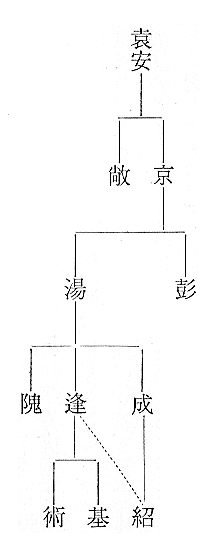
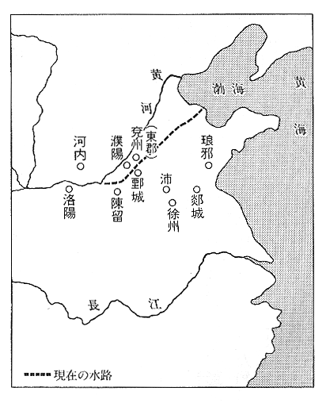
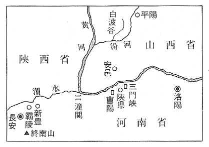
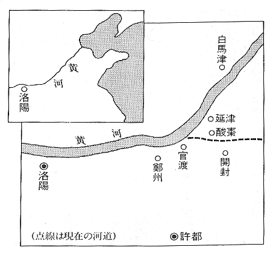
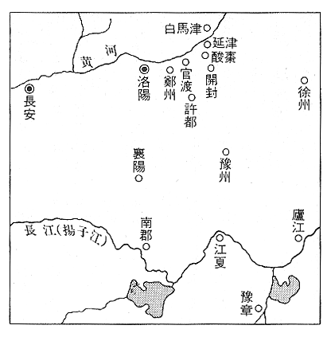
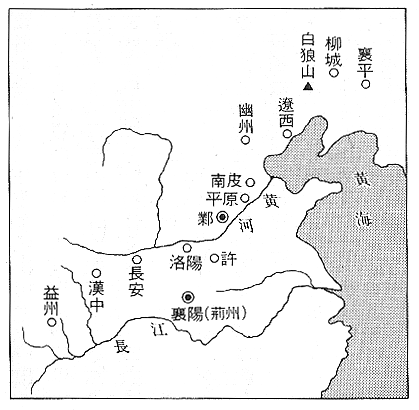
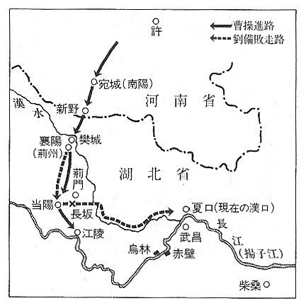
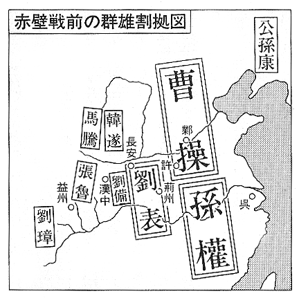
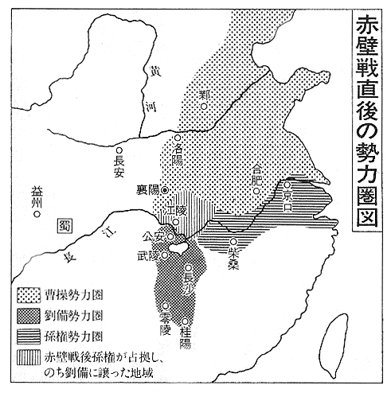
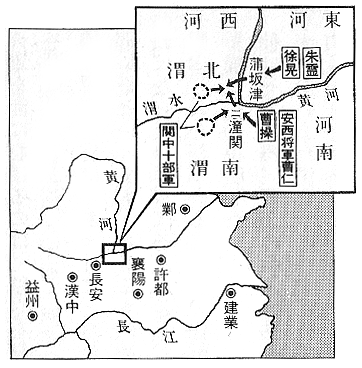

| 秘本三国志 全六巻 | |
| 陳舜臣 | |
秘本三国志 全六巻
陳舜臣
秘本三国志（一）
黄天立つべし
１
蒼天はすでに死せり
黄天まさに立つべし
そんな呪文のような言葉が、東のほうで流行っているという噂があった。
「それは、みんながおおっぴらで唱えているのですか？」
張魯の母の少容は、東から帰って来た陳潜にそう訊ねた。
「ええ、そりゃもう、おおっぴらもいいところです。青州、幽州、冀州といったあたりが、とくにひどうございました」
と、陳潜は答えた。
現在の地名でいえば、青州は山東省、幽州は河北省北部、北京近辺、冀州は河北省南部である。
「漢の天下も、もう終わりですね」
少容はため息をついて言った。
五行説によれば、漢は木徳によって天下を得ている。それにとって代わる者は土徳によらねばならない。木の色は青、土の色は黄と、これまた五行説できまっている。
蒼天──青い天子、すなわち漢の王室はもうおしまいだ。黄天──土の徳による新しい王朝が、まもなく興るであろう。......
わけのわからない呪文のようだが、その裏にかくされた意味に気づくのは、それほど難しいことではない。ふつうの常識のもち主であれば、すぐにそれを悟るだろう。
深い謎ではない。むしろ浅すぎる。
すぐにそれとわかる不敬の呪文が、おおっぴらに流布されているのだ。
漢の天子がみくびられ、その権威は地に墜ちたというべきであろう。
王朝の興亡に、流血が伴わないことはない。天下は大いに乱れるであろう。──少容はその予感に、ため息をもらしたのである。
その場には、少容とその息子の張魯しかいない。だが、陳潜はあたりを見まわしてから、声をひそめて、
「恐れ多いことながら、私もそのように感じないではおれませんでした」
「やれやれ、大へんなご時勢に生まれ合わせました。でも、幸いここは中原から遠く離れた巴の国です。うまく手綱をさばきさえすれば、戦乱を避けることもできましょう。潜さん、魯をよろしく頼みますよ」
と、少容は言った。
現在の四川省の成都地方を蜀、重慶地方を巴といった。
長安や洛陽など当時の政治の中心とは『蜀道の険』によって、へだてられている。
──蜀道の難きは青天に上るよりも難し。
と、李白のうたった険路である。
また華中や江南とは、『三峡の険』によってへだてられている。長江（揚子江）はそのあたりでは急流激湍のあつまること二百キロに及び、おなじく李白が、
──覚えず、鬢の糸を成すを。
と歎いたほどの難路だった。
天然の要害といってよい。だから、日中戦争においても、重慶が抗戦基地になったのである。
少容はこの天然の要害に、戦火が及ぶのをおしとどめる防壁の役を期待した。だが、難路とはいえ、越えられないルートではない。蜀道や三峡の険以外にも、手綱さばき、すなわち政治的な手腕が必要だと考えたのだ。
「またそのようなことを......」
と、陳潜は苦笑した。
彼女から、息子の魯をよろしく頼む、と言われるのは、いつものことだった。それが彼女の口癖である。だが、陳潜はやっと二十になったばかりの弱輩であるし、張魯はたった一つだけの年下にすぎない。
「いえ、潜さんだけが頼りですからねぇ」
少容はそう言って、ゆっくりと肩を揺すった。その肩から、なにやら匂うものが、こぼれおちたように陳潜はかんじた。
十七で魯を生んだ少容は、いま三十代の半ばのはずだが、どうみても二十代にしかみえないのである。
（きれいだなぁ。......）
毎日顔をあわせているのに、陳潜は彼女を見て、まだまぶしくかんじることがあった。
陳潜は赤ん坊のとき、張家の門前に棄てられていたという。それを張魯の祖父にあたる張陵が、引取って育てることにした。その直後に、少容が張家に嫁入りしたので、彼女はよく陳潜に、
──この家では、潜さんはあたしより古いんですからねぇ。
と言ったものだ。
張陵は息子の嫁の少容に、
──我が子を育てる前に、他人の子を育てると、包容力のある大きな人物になる。我が家にはそんな女性が必要なのだ。
と、棄子を育てることを命じた。
そんなわけで、潜にとっては少容は母親そのものといってよい。それなのに、彼は少容に女をかんじた。いけないと思うのだが、人間の性はどうすることもできない。
「私にできることなら......」
頼りにされて、潜はからだを縮めた。
「張家五斗米道の運命は、すべてあなたの肩にかかっております」
少容はすずしげな声で言ったが、それは潜の胸を焦がすほどの熱力をもっていた。
２
張家五斗米道とはなにか？
道教の一派である。
始祖は張魯の祖父張陵であった。
張陵はもと沛（江蘇省北部）国の豊の出身である。現在も徐州市の西北に、豊県という同じ地名が残っている。漢の高祖の故郷に近く、そのあたりの人民は、漢代では夫役を免除される特典を与えられていた。
後漢順帝（一二六─一四四）の時代に、張陵は蜀に遊び、鶴鳴山中で道術を学んだ。
彼はそれによって、よく病気を治すことができた。
病気治療の謝礼が、米五斗ときめられていたので、人びとは彼の道教を『五斗米道』と呼んだ。もっとも漢代の斗は、現代の升にほぼひとしい。斗酒なお辞せずといっても、それは一升酒のこととおもえばよい。
病人は自分のおかした過を告白し、自分の姓名を三枚の紙に書く。一枚は天帝に報告するために山上にかかげ、一枚は地祇にしらせるために地中に埋め、一枚は水神に告げるため水中に沈めた。これを『三官手書』という。
つぎに祭酒と呼ばれる、この教団のリーダーが、病名を宣告して、『符水』を飲ませる。符水とは、呪文を書いた紙をうかべた水のことである。
病人が自分の病状を説明しないのに、祭酒はそれをすらすらと述べる。だから、病人はかなりのショックを受け、五斗米道の力を信じ切ってしまう。暗示にかけられた病人が、そのためにじっさいに治癒するケースが多かった。そんなわけで、五斗米道は繁栄したのである。
病人が教団を訪れたとき、受付の信者が、
──お気の毒に。どんなふうに工合がわるいのですか？
と、くわしく症状をきき込んでおく。ただし、この受付の信者は、ずっと病人につきっきりで、そのまま祭酒のところヘ一しょに行く。聞いたことを、誰かに伝えるような機会は絶無のようにみえる。祭酒の前に出るまで、誰とも接触しないのだから。
病人が告白したり、三官手書に姓名を書いたりしているあいだ、受付の信者は病人のすぐうしろにいて、声を出さずに病人の症状を口にする。祭酒はその口のうごきで、病人のことを知り、
──おまえさんの病気は。......
と、ずばり言い当てる。
読唇術にほかならない。
張陵はこの道術を息子の衡に伝え、衡はさらに自分の息子の魯に伝えたのである。ただし、陵の死につづいて、衡も若くして死んだので、魯が二十になるまでは、一番弟子の張脩が教団を主宰することになった。
五斗米道は巴蜀（四川省）に盛んであったが、おなじ道教の別派『太平道』は、河北、山東および中原におおぜいの信徒を獲得した。
教祖は張角という者で、鉅鹿（河北省）出身、自ら大賢良師と称していた。
この太平道は五斗米道と、双生児のようによく似ていた。病人が頭を地につけて自分の罪を懺悔し、符水を飲むというところはそっくりである。違っていたのは、受付の信者が唇をうごかさずに、信号によって病人の症状を施術者にしらせていたことであろう。彼らは、九つの節のある竹の杖を用いた。たとえば上から三節めの左がわに手をふれると、それは患部が心臓であることを意味し、その症状は額に手をふれると、キリキリ痛むこと、顎に手をやると、鈍痛のことであるなど、二十世紀の野球のバッテリーのサインのように、こまかい取りきめがあった。
唇のうごきを読むのと、サインを読むのと、違いはあったが、まず同工異曲といってよかった。
病気が治ると、大賢良師さまのおかげで、ますます信仰を深める。病人が死ねば、それは本人の信仰が足りなかったので、遺族はまた、ますます太平道を信じなければならないことになる。
太平道はみるみるうちに、華北から中原にひろがったが、これについて漢の地方官は、中央にたいして、
──張角たちは、人民たちを善導し、教化している。まことによろこばしいことである。
と報告する始末であった。
人間の精神は、同じ条件におけば、同じ方向に傾くものであるらしい。あのひろい中国の東部と西部で、ほとんど時を同じくして、太平道と五斗米道が、隆盛をきわめた。
教祖は太平道の張角、五斗米道の張陵と、どちらも張姓であるが、両者に血のつながりはない。地理的に遠かったせいもあるが、両者に同業者としての連絡もなかった。どちらも、相手のことを、風の便りにきくだけであった。
「潜さん、鉅鹿へ行ってくださらない？」
東へ旅行した翌年、陳潜は少容からそう言われた。
鉅鹿とは太平道の本拠のあるところだ。
「はい。どこへなりと、よろこんで参ります」
と、陳潜は答えた。
（あなたさまのご命令とあれば）
と言いたかったが、それは抑えた。
「訪ねる先は大賢良師」
と、少容は言った。
「わかりましてございます」
「去年のあの呪文......蒼天はすでに死せり、黄天まさに立つべし。それに続きの文句ができたそうです」
「どのような？」
「歳は甲子、天下は大吉」
「歳は甲子......天下大吉......」
陳潜は呟くようにくり返した。
ことしは後漢霊帝の光和六年（一八三）で、えとは癸亥である。
「わかりますか？」
少容はやさしい顔で訊いた。
「甲子とは、来年でございますな」
「そうです。......その文句がみやこのお役所の門に書かれているとききました。もっと略して、『甲子』の二字。......太平道の信者の家の門には、きまって書かれているということです」
「それでは......」
革命を予言する言葉は、去年あたりからひろまっている。ことしになると、革命の時期を予言する言葉が、それにつけ加えられたのだ。
甲子の年。──来年である。
しかも、『甲子』という字をかいた紙は、太平道の信者の家の門に貼られているという。とすれば、革命の主体が太平道であることは、もはや疑問の余地はない。
「行っておくれだね？」
と、少容は念を押した。
「否応はございません」
陳潜はさげた頭をおこした。少容と視線があった瞬間、すべてが伝達された。
「五斗米道のためだけではありませんよ。五斗米道にたましいを預ける幾十万の人間のためでもあります。......ひいては天下万民のためと申してもよろしゅうございます」
「わかりました」
陳潜は再び面を伏せた。
後漢の王朝が、天下を保ち得ないことは、もはや識者の目にはあきらかであった。現在の皇帝は、暗君の見本のような人物である。彼は宦官にとりまかれ、政治にはほとんど関心をもっていない。天子と生まれたからには、したい放題のことをするのが、自分の使命であると思っている。
革命は避けられない。
だが、現在の政権にとって代わる勢力があるだろうか？
──ここにある！
と、名乗りをあげたのが、張角を総帥とする太平道のグループであった。
（うまく行くだろうか？）
と、少容は危ぶんでいる。
しかし、あんがい天下を取ってしまうかもしれない。なにしろ、現政権の脆弱なことは、想像以上なのだから。
東の太平道が天下を取ったなら、西の五斗米道はどんな立場になるだろうか？
同業者はとかくライバル意識が強すぎる。
五斗米道は弾圧されるおそれがあろう。そこで、あらかじめコネをつけておく。
──太平道旗あげの前から、五斗米道は協力を惜しまなかった。
という実績をつけておかねばならない。しかし、それをあからさまにしてしまえば、太平道が鎮定されたとき、
──五斗米道も、逆賊の太平道の味方をしていた。
という罪によって、教団は迫害されるにちがいない。
みせかけの協力はしてもよいが、表立たないように。──陳潜が少容から与えられた役目は、このような困難なものであった。
説明を受ける前に、陳潜はそれをすでに察していた。
翌朝、彼は蜀道の険にむかって旅立った。
３
鉅鹿は項羽が秦軍を破った古戦場で、河北省石家荘市と邯鄲市を結ぶ南北の線の、ちょうど中間をやや東へ行った地方である。
太平道の総本山がそこにあった。
五斗米道からの使者だと名乗ると、さっそく、大賢良師張角がじきじきに引見した。
「遠路ご苦労でしたな」
と、張角は両眼を細めて言った。
道術を使う者は、おのれの内心を他人に知られてはならない。そこで、心の窓である目をできるだけひらかない。
張角はからだのわりに、顔が大きい。目も鼻も口も、みんな大きい。目をわざと細めるので、はれぼったい感じになる。
むかいあっていると、その顔がふいに近づいてくるかんじになり、はっと思って見直すと、顔は遠のいている。──催眠術の一種であろうか。
（なるほど、これはよく出来る）
おなじような術を学んでいる陳潜には、相手の技術の程度がわかった。おそるべき使い手というべきである。
──深ければ狭い。......
陳潜は亡き始祖張陵の言葉を思い出した。
広くなるためには、あるていどの浅さが必要であると始祖は教えたのだ。
目の前にいる張角は、言い知れぬほどの深さをもっている。おそらく、驚くべきほど狭いのであろう。
（革命軍の大衆を指揮できるであろうか？）
陳潜は疑問におもった。
──道術は原則として、一人の人間に施すものである。
これもまた始祖の語録にある言葉だ。
十万の信徒を得ても、それはあくまで一対一の集積である。一人が集団としての十万に対するのではない。道術がそれほど個人的なわざであると諭したのだ。
とすれば、道術家などは、群衆を指揮するのに、最も不適任な人間といわねばならない。それなのに、頼ってくる信徒の数が多いので、自分にそのような能力があると、つい過信してしまう。
まだ少年であった陳潜は、あるとき始祖張陵にむかって、
──わが師に接しておりますと、底なし井戸のように深く、しかも長江のようにひろいという気がいたしますが？
と訊いたことがある。
四川に生まれ育ったので、海を知らないため、ひろさは長江（揚子江）にたとえるほかはなかったのだ。張陵はそれにたいして、
──おそらくそれは、わしが浮屠の教えを学んでおるからであろう。
と答えた。
浮屠とはブッダの中国音訳である。
首都洛陽に住む大月氏国の人たちが、すでに仏教を奉じていたが、この時代の漢族のあいだにはまだひろまっていない。仏教という用語さえなかった。
張陵がどこで浮屠の教え（仏教）を学んだか不明であるが、彼は死に臨んで、
──浮屠の教えは、とくに少容に伝えてある。魯は母からそれを学べ。
と言い残している。
（惜しい。......）
陳潜はいまさらのように、始祖の死が惜しまれてならなかった。始祖であれば、革命のリーダーになりえたであろうに。
浅さとひろさを知らぬ張角が、群衆を率いようとしている。
気は進まないが、陳潜は使者の口上を述べた。──
「おなじく道術救民を望む団体として、わが五斗米道の同人は、太平道義挙のさい、できるかぎりの助力をいたしたい所存でございます。......」
「おう、そうでしたか。......そうでしょうとも。は、は......」張角は短く笑って、「じつはそのことで、巴に使者を出しております」
「それはいつのことで？」
陳潜はせきこんでたずねた。
「三日まえ、使者は出立いたした」
「三日まえでしたか。......」
やれやれ、と思った。
おなじ協力をするのでも、要請を受けて起ちあがるのと、事前に進んで申し入れるのとでは、あとの論功行賞のさいに大きな差がひらくはずである。三日まえといえば、いまごろはせいぜい洛陽に着いたころであろう。これで、五斗米道は自発的に、太平道の造反に荷担する意思を示したことになる。
「ことは重大であります故、極秘に願いまする」
と、陳潜は言った。
「いうまでもないこと」
張角はちょっと顎をひいた。そのとき、細めていた目がひらいたのである。大きな目であった。俗にいうどんぐり眼なのだ。陳潜は一瞬、全神経をあつめて、その目のなかをのぞいた。
──倣岸の色。
始祖張陵が、最もいまわしいものと、戒めたその色が、張角の目にちらとあらわれた。
つぎの瞬間、張角は目をとじた。この人物は、めったに喜怒哀楽を表情にあらわさないが、目をとじたあと、めずらしく眉をはげしく上下させた。
４
時代の背景を語ろう。──
来年は甲子の年だという光和六年は、西暦一八三年に相当し、ローマ帝国では皇帝マルクス・アウレリウス・アントニヌスが死に、ようやく国運が傾斜しはじめる時期である。
日本は弥生式時代の末期、古墳時代初期にあたる。邪馬台国の女王卑弥呼が、中国に使節を送ったのは、これより五十六年後のことであった。
中国は後漢の王朝、十一代霊帝の治世である。
漢はどこの馬の骨ともわからぬ高祖劉邦が、項羽と争って秦の始皇帝の遺産である『天下』を獲得して樹立した王朝であった。それが二百年ほど続いて、いったん王莽という者に奪われたが、光武帝劉秀が取り戻した。それ以後を後漢といい、これまた二百年つづいた。
前漢、後漢あわせて四百年、その巨木が朽ちて、まさに倒れようとするのが、この時代である。
霊帝は十二歳で即位し、それからもう十五年たっている。
後漢の歴代皇帝は、最初の三代を除いて、あとはぜんぶ十代以下で即位した。殤帝のごときは生まれたばかりの赤ん坊で、冲帝は二歳、質帝は八歳で即位している。霊帝の父の桓帝が十五で即位したのが、三代以後の最年長記録なのだ。
幼帝が即位すると、その母親が後見する。彼女たちも封建時代の女性だから、政治には不慣れである。しぜん親しい人に相談するようになる。
一ばん親しいのは、いうまでもなく彼女たちの実家である。こうして、外戚が権力をもつようになった。
つぎにそば近くに仕えている宦官である。大奥の雑役には、男性の機能を喪失している宦官を使うのが安全なのだ。皇室の女たちが自由に言葉をかわせた男性は、宦官だけであった。もっとも彼らは、もと男性と呼ぶべきかもしれないが。
こうして宦官は、後漢の宮廷に大きな勢力を張るようになった。
皇帝の交替で、皇后や皇太后も変わる。外戚の権勢は一時的なもので、むしろ宦官のほうが根強くはびこった。
これにたいして、学識と才幹によって登用されている官僚たちが、大きな不満をもつのはとうぜんであろう。彼らは自分たちを『清流』と呼び、宦官たちを『濁流』と軽蔑した。機会をとらえて、濁流を除こうとするが、それが天子を擁する宦官に知れて、弾圧を受けた。これが『党錮の獄』である。
官僚どもは徒党を組んでいるという理由で、おおぜいの清流が殺されたり、投獄されたりした。
すこしでも気骨のある者は獄中にいた。地方官として、直接人民に接している連中は、中央の宦官に賄賂をおくり、それで出世しようとたくらんでいる屑ばかりである。搾取がはげしくなるのは自然の勢いであった。
人民たちは骨の髄までしゃぶられ、生活苦は日ましにつのる。現世の苦しさを逃れるために、太平道などの庇護に入るものが激増した。
──このままですむはずはない。
人びとは不安におののいている。
去年の二月は、全国的に疫病が流行した。
夏は旱魃で、五月は永楽太后の宮殿が火災にかかった。そういえば、一昨年も宮中で火事騒ぎがあり、その前にタマゴ大の雹が降った。
洛陽の女が『両頭四臂』の子を生んだのが評判になったこともある。
──よくないことの前兆じゃ。
と易者は言った。
そもそも光和と改元した年に、地震がつづき、役所の雌鶏が雄鶏に変わった。奇怪なことである。その五月に、白衣の人が徳陽殿に入ったので、あとを追ったが消え失せた。六月には黒い妖気が温徳殿の庭におち、七月には不気味な青い蛇が、玉堂後殿の庭にあらわれたという。......
ことしも夏は大旱魃だったのに、秋には黄河が金城の近くで氾濫し、五原山の岸が崩れるという不祥事がおこった。
中国ではこのような自然現象は、悪政にたいする天の批判であるとみなされる。
それなのに霊帝は遊び呆けているのだ。
彼はガーデン・パーティーが大好きで、宮女に模擬店をつくらせ、自分は商人の服装で飲みまわった。
どうやら、彼は商人になりたかったようで、模擬店どころか、『売官店』を開業して、位階や官職を売りに出した。二千石の禄高の職は二千万銭、四百石の職は四百万銭というのが相場だが、買主の身分によっても値段は違った。身分の低い者が高い官職を買うには、相場以上の金を払わねばならなかった。霊帝は商売熱心で、この売官店は掛売りを認めたといわれる。
狗に官吏のシンボルである冠をかぶせたり、綬を帯びさせたりして遊んだこともある。
──なんの珍しいことがあるものか。皇帝の側近たちは、みんな狗みたいなやつばかりではないか。冠をつけた狗なんか、うんざりするほど見ておるわ。
そんなふうに、吐きすてるように言う者がすくなくなかった。
５
陳潜はその後、鉅鹿の太平道本部に滞在した。五斗米道側の連絡係としてである。
太平道における蹶気準備は、着々と進んでいた。
張角は三十六の方を組織した。方とは軍事的な単位で、大きい方は一万余り、小さな方で六千か七千の兵力をもっている。方の指揮者を渠帥と呼んだ。
陳潜は彼らの練兵を参観した。
「どうですか、これで官兵に勝てますか？ ずいぶんおざなりな訓練だと思いますが」
大賢良師は客分の陳潜に、唐周という若者をつけた。この唐周が、声をひそめてそう訊くのである。どうやら彼は太平道のなかでも、懐疑分子に属しているらしい。
「なぁに、官兵の訓練だって知れていますよ。もっとひどいかも知れませんね」
陳潜はそう答えたが、心中、
（太平道はさまざまな異分子を抱え、その団結力には問題がある）
と判断した。
彼は自分の判断を暗号にして、少容のところへ送っていたのである。太平道本部の客となってから、彼の送ったこの種の報告は、ほとんどが否定的な内容のものだった。
客分であるから、本部の首脳部でのうごきは、わからないはずである。だが、それを唐周が教えてくれるのだ。
秘密保持という、革命のいろはさえ、ここでは守られていないようだった。
「大賢良師は、宮中の宦官を買収する作戦をたてましたが、そんなことをして役に立ちますかな？」
唐周はそんな第一級秘密を、こともなげに陳潜に語ってきかせる。
「皇帝は宦官からしか情報が入りません。太平道がことを起こしても、宦官が報告しなければ、軍隊の動員ができませんから、これはすばらしいですね」
と、陳潜は答えた。
「そうですか。......」唐周は不服そうに言った。──「ま、作戦はすばらしいかもしれませんが、起用される人間がいけませんや」
「誰が起用されたのですか？」
「あの馬元義ですよ。......」
そう言って、唐周はふンと鼻を鳴らした。
（読めた。......）
陳潜は、にやりとしかかった表情を、咳払いをまぜてごまかした。
唐周に意中の女性がいたが、馬元義がそれを自分の妾にした、という噂があった。
どうやらその噂はほんとうであるらしい。
「馬元義なら悪くないと思いますがねぇ」
その人物をくわしく知らないが、陳潜はわざとそう言ってみた。
「なぁに、あれはうわべだけですよ。心のなかでなにを考えているか、わかったものじゃありませんね。どす黒いはらわた、べとべとした脳味噌......」
唐周はそこで言葉に詰った。憎悪にかきたてられているのだが、それを表現する言葉さえ、みつけることができない。並大抵の憎しみではない。
唐周と馬元義のような憎悪の線が、太平道という教義や組織をもってしても消すことができない。いや、彼らの組織は反対に、それらの線で分断されるかもしれない。
（ますますいけない）
陳潜は、もっときびしい文章で、五斗米道に警告しようと思った。
そのあとで、彼は唐周と一しょに、北方へ旅をした。幽州に用があったのだが、途中、涿に立ち寄ったときのことである。
秋にしては、あたたかい日であった。
馬を休ませるあいだ、陳潜と唐周は近くの亭で横になろうと思った。だが、近づいてみると、どうやら先客がいるらしい。彼らはすでに横になっているとみえて、声はすれど姿は見えない。
二人はひき返しかけたが、申し合わせたように足をとめた。
亭のなかからきこえてくる会話に、二人とも興味をもったからである。
「まったくいい時勢に生まれ合わせたものじゃなぁ。......」
その元気のよい声を、はじめ陳潜も唐周も、反語的表現だとばかり思っていた。そうでないことが、つぎの言葉でわかったので、思わず立ちどまったのである。
「そうじゃとも、腕一本で出世ができる。天下太平の世の中じゃ、われわれ豪傑も腕のみせどころがないが。......うん、腕が鳴るぞ。天下大乱じゃと、腕が勇みたっとるわい」
「天下大いに乱れ、匹夫も王侯になれる。高祖とてそうじゃ。ふつうの世の中であれば、一介の無頼漢で終わったであろう。......世の乱れをきくと、わしはうれしゅうて、うれしゅうて......」
「しかし、徒手空拳では、いかんともしがたい。はじめは、やはりいずれかの勢力の驥尾に付して、功名をあげ、しかるのちに雄飛すべきであろうのう」
「どこに身を寄せるか、これが大事なところじゃぞ。なににせよ、始めが大切よ」
「ここが思案のしどころ」
「朝廷方につくのが常識じゃが」
「天朝はもうすぐ滅びるわい」
「声が高いぞ」
「構うもんか。みんなわかっておることじゃ」
「そうじゃな。傾くほうにつくことはないわ。天朝、糞くらえ！」
声が高いぞと注意した当人が、大声で朝廷を罵っているのである。
「とすると、太平道か。......あの連中、軍事訓練に精を出しておるげな」
「押しかけて行って、一方の大将にでもなるか」
「それは甘い考えというものじゃ。聞けば太平道の三十六万、ことごとく渠帥が任じられておるそうな。いくらわれわれが豪傑でも、席がふさがっておるわ」
「それに、太平道の信者でなければ、良い地位につけんじゃろ」
「そうじゃろ。太平道はやめておこう。どうせ、あれじゃ天下は取れやせん」
「なぜじゃな？」
「おぬしが言うたではないか。信者でなければ起用せんちゅう、そんな狭い料簡で天下が取れるわけはなかろう」
「ちがいない。百人の人間がおれば、太平道の信者は五人か十人、あと九十人か九十五人は横をむく。だめじゃ」
「では、どうするかな？」
亭のなかで、声高にやりとりしていたのは二人だが、もう一人いることがわかった。新しい声が加わったのだ。
「太平道が旗をあげると、各地で義勇兵の募集があろう。それが好機ぞ。......太平道との戦さに、武勇を示した軍団が、つぎの天下争いに加わる。われらは冷静に考えてみよう。太平道の軍隊を、最もはげしく攻めうるのは何者か？」
「教えてもらいたいものじゃ」
「太平道も天下を望むからには、洛陽にむけて軍を進めるであろう。それをうしろから襲うことのできる者は......わかったかな、幽州の刺史」
新しく加わった声が、最もおちついていた。
刺史とは州の長官である。
漢代の行政区画で最も大きいのが『州』で、その下が『郡』である。県はまだその下にすぎない。州の長官が刺史、郡の長官が太守、県の長官が県令であった。
「幽州の刺史といえば劉焉。......これは人物であろうか？」
「かなりの人物ときく。......それよりも、地の利をえておるわ」おちついた声はつづいた。──「わしはいささか迷っておったのじゃ。洛陽に遊学したとき、わしはもとの議郎（枢密官）の蘆植先生に師事した。これは剛直の人物じゃから、一旦緩急のときは、おそらく登用されるであろう。それについて功名をあげようと思ったが、よくよく考えてみれば、蘆植先生が討伐軍の司令に起用される保証はない。これからの時代、あるじと定めた人間に、死ぬまで仕えることはない。あるじは選ぶことができる。......そこで、まず地の利をえた幽州の刺史を選ぶことにした。ここの刺史なら、乱が起きたとき、まちがいなしに戦わねばならぬからのう。......」
「うーむ、なるほど......なるほど......」
威勢のよい声の片方は、感心して唸っていたが、もう一方はせっかちに、
「そのときは、われらも推薦してくれい」
「そりゃ、一人よりも三人のほうが力も強い。行動をともにしてもよい。さきほどからのやりとり、わしはおぬしらが気に入った。しかし、まだ名もきいておらぬぞ」
どうやら偶然ここで一しょになっただけの関係であるらしい。
「わしは張飛、字は翼徳」
せっかちな声がそう名乗ったかとおもうと、からだを起こした。身の丈九尺（当時の尺は二十三センチだから、一・八メートルあまりである）の若者であった。
陳潜と唐周は木蔭にかくれた。
講談本の三国志は、このときの張飛を頷に虎のごときひげを生やし、と形容している。だが、張飛はまだハイティーンで、そんなにひげが生えそろっているはずはない。
「わしは関羽、字は雲長」
つぎの男が立ちあがった。
年のころは二十すぎ、もうりっぱなひげがあった。
「名乗りが遅れたが」おちついた声の主が、最後に立ちあがった。──「劉備と申す。字は玄徳。どうやら、わしが最年長のようじゃな。年は二十三。......」
６
世間知らずの若者たちの、無責任な放談であろう。寝ころんで、勝手なオダをあげていたのにちがいない。
それでも唐周は、彼らのやりとりをきいて、大きなショックを受けた。
太平道の造反計画は、どうやらひろく知られているらしい。しかも、それが成功しないであろうと、みんなが予想していることがわかったのである。
張角の軍事的動員能力についても、
──百人のうち、十人か五人の太平道信徒だけ。
というのは、残念ながら、真実であろう。
この北方旅行から鉅鹿に戻ったあと、唐周は目にみえてふさぎこむようになった。うわべからみると、その態度は、
──慎重になった。
とうけとられたかもしれない。
唐周は慎重になった。──この評価によって、彼は重大な任務を与えられた。
宦官買収の最後の詰めに行くことである。
太平道の教団が接触した宦官は、封諝と徐奉である。新王朝をひらくにしても、宦官が必要なのだから、そのときは重く用いようと約束した。むろん、約束だけではなく、現ナマもたっぷりつかませている。
買収の目的は、いざ造反のさい、宮廷を麻痺状態にさせて、討伐軍の動員をすこしでも遅らせることにあった。
それの具体的な打ち合わせに、唐周は派遣されたのである。
年があけて光和七年早々のことであった。この年は十二月に改元して中平元年ということになったが、まさしく甲子の年にあたる。
張角たちは総蹶起の日を、甲子の年の甲子の日にきめていた。
それは三月五日なのだ。
造反の重点は鄴ときめられた。太平道は兵力をここに集中し、これを渠帥の馬元義が指揮する予定であった。
鄴は河北と河南の省境にあり、かつては春秋時代の斉の都であり、のちには魏王朝の首都にもなった要地である。
（なにかおかしい。......）
陳潜は唐周の態度に疑問をもった。ようすが変わった前後のことを知っている。あきらかに、必勝の信念を失ったのだ。
「太平道の張王朝が樹立されたら、造反軍総司令の馬元義さんは、さしずめ三公の筆頭、国家の元勲でしょうな」
陳潜は唐周にそう言ったことがある。むろん、反応を試すためだ。
唐周はそのとき、複雑な笑いを片頬にうかべた。
これまで馬元義のことが話題にのぼると、唐周は目にみえて興奮したものである。それなのに、こんどはそれがない。
「そうはうまく問屋がおろしますかな？」
と、唐周はしっかりした口調で答えた。なにか自信に裏づけされていなければ、馬元義の名をきいて、これほど冷静にはなれないはずである。
（いまにみろ。......）
彼の言葉のうらに、そんな響きをかんじて、陳潜はその晩、少容への密書をつくった。
──張角一党の挙兵は失敗する。わが教団は、一切彼らと関係をもつべきでない。
そんな断定をしたのである。
陳潜は、唐周がこんどの造反に、なにか妨害を企んでいる、と確信したのだった。
そのとおりであった。
唐周は洛陽に出かけると、予定されていたあの二人の宦官に会わず、宮中に上書して、
──太平道に謀反のくわだてあり。指揮者は馬元義。
と訴えた。
しかも、馬元義は首都占領後の段取りを、実地について研究するために、上京中だったのである。唐周が上書のなかで、馬元義の潜伏場所まで記したのはいうまでもない。
一月の終わりのことである。旧暦とはいっても、まだかなり寒い。
鉅鹿の太平道教団本部に、
「緊急の報告！ 緊急、緊急！」
と連呼しながら、栗毛の馬の背にしがみつくように駆け込んだ者がいた。
馬元義が逮捕されたことを知らせるために、洛陽から早馬をのりついで来た信徒だった。
一刻を争う。
政府側も太平道一党を、すみやかに逮捕して誅殺せよという、緊急指令を各地に出したそうである。
三月五日を期して、一斉に起ちあがる予定であったが、こうなればいますぐ行動をおこさねばならない。三十六方の軍事組織は、幸いすでに八分通り出来あがっている。
「黄巾をつけよ！」
張角は全信徒に指令を発した。
敵味方を区別するために、太平道はその軍兵に黄色い布で頭を包ませることになっていた。かつて後漢初期の動乱期に、造反軍の一派が眉を赤く塗ってめじるしにしたことがある。人びとは彼らを赤眉軍、あるいは赤眉賊と呼んだ。
太平道の造反軍も、このめじるしによって、黄巾軍とか黄巾賊とか呼ばれるようになった。
「襲えや襲え！」
三十六方の渠帥たちは、声をかぎりに叫んだ。馬上で腕をぐるぐるまわしながら。
襲撃の目標は、いまさら教えることはなかった。各地の役所である。人民たちを直接搾取している、悪徳役人のたむろしているところなのだ。そこを焼き払う。
「殺せや殺せ！」
州刺史、郡太守、県令。──役所の長官を、無条件で誅殺することは、かねてから指示していたのである。
大賢良師の張角は、自ら『天公将軍』と称した。張角には二人の弟がいたが、上の弟の宝は『地公将軍』、下の弟の梁は『人公将軍』と唱えた。
各地の信徒が、呼応して起ちあがったのはいうまでもない。河北の平野から河南にかけて、官府は焼かれて、黒煙が天に冲し、役人は殺されて、鮮血が床や壁に散った。
あわただしい蹄の音が、東へ西へと駆けめぐる。どこかで喊声があがり、それが風にのって、ひとびとの狂気を一そう誘った。
「とうとうこうなってしまった。......」
陳潜はひとりごちた。
むしろ、ほっとした気持であった。
これまでは、天下大乱の予兆におびえ、悪夢にうなされたものである。それが現実となった。はっきりとこの目で見、この耳で聞くことのできるものとなった。手を伸ばせば、つかむことのできる世界に入ったのだ。
７
洛陽には二つのマーケットがあった。唐代の洛陽は南北両市だが、後漢の洛陽は東西の両市である。西市は東市よりも大きいので、ふだんは西市を大市と呼んでいた。当時はこの『市』以外では、交易が許されなかった。マーケットの機能のほかに、人が集まるので、芝居小屋がならび、盛り場の性格も帯びていたのである。
また、市は処刑場として使われた。処刑には、見せしめ、という要素がある。見せしめの効果を大きくするためには、できるだけおおぜいの人に見せなければならない。だから、人の集まる市が、それに使われたのだ。
唐周の上書によって逮捕された馬元義が、西市において処刑されたのは、二月の半ばであった。『車裂の刑』が執行された。
これは、めったにおこなわれない、残忍な刑罰であった。だから、それを見ようとして、おおぜいの見物人が集まった。人間の心の深層には、このような残酷性をよろこぶ、魔性がひそんでいるようだ。
二台の車が用意された。それぞれの車は、二頭の馬に曳かれている。馬元義は左右の手足を、二台の車の車輪に縛りつけられていた。
刑吏の合図によって、二台の車の御者は一斉に鞭をふるって、馬を走らせる。
人間のからだを、生きながら左右に引き裂いてしまうのである。天子にたいする謀反という、大逆罪にしか執行されない。
執行人も不慣れである。
噂によれば、御者のなりてがなくて困ったそうだ。誰しもこれは気味がわるいだろう。そこで、奉終里の人を臨時に雇ってきたのだという。奉終とは読んで字のごとく、人間の終末、すなわち葬式に関与することである。奉終里は葬式人夫たちの住む区域だった。それは西市の北にある。ついでながら、西市の南は調音里と楽律里で、音楽師の居住区であった。
臨時雇いの御者は、観衆があまりにも多いので、コチコチになってしまった。期待に添わねばならない。左右の馬車のスタートが、ちぐはぐになっては、うまく人間のからだを裂くことができない。
右の馬車の御者が先輩であるらしい。鞭を頭の真上にあげて、
「ほーい、まだまだ！」
と、三度ばかりやり直しをしたあと、
「ええーいっ！」
と、奇声をあげて、馬に鞭をくれた。
三度のやり直しで、左の御者も呼吸をおぼえたようで、こちらも、
「ええーいっ！」
と応じると、ほとんど同時に鞭をふりおろした。
馬車は左右に、弾けるようにとび出した。
観衆の大半が、その瞬間、目をとじた。
二つの車輪のあいだに縛られていた、一個の肉体は、あっけなくひき裂かれた。──血しぶきは、それほど噴きあがらず、流れ出た血も、たちまち西市の黄色い土に吸いこまれてしまった。
人びとは息をのんだ。
数万の観衆が集まっていたといわれるが、その人たちの精神に、この瞬間、空洞ができたであろう。
そのとき。──
群衆のそのような精神の空洞を、見すかしていたように歌声がわきおこった。──
蒼天はすでに死せり
黄天まさに立つべし
歳は甲子 天下大吉
人びとが我に返ったとき、歌声はすでに終わっていた。
数百人の合唱だと言う者もいたし、数千人の大合唱だったと言う者もいた。また数人の声にすぎなかった、と主張する人もいた。
役人がそのあたりを、ちょろちょろと走りまわったが、歌声がどの方向からきこえたか、誰も正確に言えなかった。或る人は、天からきこえてきたようだ、と真面目な顔で言った。
群衆は散った。
このようなところに、長居は無用と思ったのであろう。
「歌ったのは、あなたじゃなかったね？」
うしろから、聞きおぼえのある声がしたので、唐周は思わずふりかえった。
「あ、あなたか......」
唐周は、そこに陳潜の姿をみとめた。
「むごいことになりましたな」
と、陳潜は言った。
唐周は真っ蒼な顔になり、唇をふるわせ、
「し、しらぬ！」
と言ったかとおもうと、一目散に駆けだした。
陳潜は追うつもりはなかった。
彼は刑場におこった歌声のことを考えた。彼は百人あまりの合唱にきこえたのだが、これまで耳にしたこともないほど冴えた声のようにおもった。それは冴えたたましいから出たものでなければならない。
あの歌は疑いもなく、太平道の人たちのものである。だが、陳潜は鉅鹿の太平道本部に半年以上もいて、冴えたたましいには、一つも出会わなかった。──大賢良師張角のそれを含めてである。
だが、いまそれに出会ったのだ。
鉅鹿の本部は濁り切っているが、どこかに冴えたのがあった。本部が望んだのではないにしても、それは田園に、山林に育っていたのである。
心強いことだ。──
陳潜はそう思った。もしこの刑場に来なければ、虚無的な心を抱いて、巴に帰ることになったであろう。
むざんな馬元義の死体よりも、もっと強いものが、彼の心に深く刻み込まれた。
「あれがむほん人の末路じゃわ」
陳潜はそばを歩いている人が、肩をならべている仲間に、そう言うのをきいた。
「おそろしいのう。......」
と、仲間は声をふるわせて答えた。
「これで、もうむほん人も出ないじゃろ」
「そうかな。......」
「そうと思うぜ。だって、あんな死にざまはしたくねぇものな、誰だって......」
陳潜は立ちどまって、その二人をやりすごした。彼らの会話にも、冴えたものがあるのをかんじて、彼はふしぎな感動をおぼえた。
考えようによれば、まことに平凡な、愚民の声である。──そのなかにさえ、人の心を照らすなにものかがあった。
（ひょっとすると、これが話にきいた浮屠の教えではあるまいか。......）
陳潜はなぜかそんな気がした。
８
三月、何進が大将軍となり、黄巾軍討伐の指揮をとることになった。
この男は、もと肉屋であったが、妹が皇后になったおかげで、取り立ててもらったのである。
さすがの霊帝も、ことの重大さに気づき、群臣をあつめて対策を講じることにした。
北地の大守皇甫嵩は、
──党錮の禁を解き、中蔵の銭を出し、西園の厩舎の馬を軍用にあてていただきたい。
と進言した。投獄されている清流人士の自由を回復し、皇帝が貯め込んでいる中蔵の銭を出し、また皇帝の趣味で養っている牧場の馬を、軍馬に転用せよというのだ。
こんな進言も、皇帝は自分で裁決できない。そばにいた中常侍（宦官）の呂強に、
──嵩の意見をどう思う？
とたずねた。
──そのとおりになさいませ。その前に、陛下側近の汚職官吏を誅殺すべきでありましょう。
と、呂強は答えた。宦官でも、このように高潔の士はいたのである。
気骨のある人士は獄中にしかいないのだから、彼らを釈放して登用するほかはない。その前に、汚職官吏──おもに宦官を粛清せよという主張である。これによって、多くの清流が自由を回復した。同時に、粛清をおそれた宦官が、つぎつぎに休職願いを出すことになった。
呂強はこのため、宦官に怨まれ、讒言されて喚問を受けることになり、
──われ死ねば、乱が起きるであろう。男子たるもの、国家に忠を尽すことだけを考えておった。獄吏に用はない！
と、自殺した。
これは、すこしのちの話である。
黄巾軍は鉅鹿、広宗など、洛陽の北方だけでなく、南方の潁川でも兵を挙げた。
朝廷は盧植を北中郎将に任命して、北のかた張角を討たせ、皇甫嵩を左中郎将に朱儁を右中郎将にして、南のかた潁川の黄巾軍を討たせることにした。
（これで西のかた、巴蜀で五斗米道が旗をあげたとすれば？）
陳潜はそう考えた。
太平道の張角は、むろんそれを望んでいた。だから、陳潜といれちがいになったが、五斗米道に使者を出したのである。
──呼応するな。
と陳潜が報告しているので、五斗米道の挙兵はないであろう。
だが、それなら陳潜は、黄巾軍のなかに長居はできない。
──なぜ五斗米道は挙兵せぬのか？
と、せめられるからである。
彼は黄巾軍を抜け出して、洛陽から南へむかった。四川へ帰るのに、こんどは水路を利用しようと思ったのだ。
洛陽を南下すると、潁川の戦場に近い。
潁川の黄巾軍は、張角の弟『地公将軍』張宝と『人公将軍』張梁が指揮しているといわれ、なかなか頑強であった。
戦場近辺の詮議はきびしい。
陳潜は四川から易の勉強に、洛陽へ来た学生であるということにした。なんどか官軍の訊問を受けたが、疑われずに通ることができた。彼の四川訛がものを言ったのであろう。黄巾軍といえば、幽州訛または邯鄲訛だと思い込まれていたのだから。
嵩山の麓で不審訊問にひっかかったときは、司令部まで連行された。
司令部では、精悍な面構えの司令官が、熊皮の敷物のうえにあぐらをかき、らんらんと光る眼で陳潜を見据えた。
「易を学んでいるとな？」
沈んだ声である。ただし、乾いている。
「はい」
と、陳潜は頭を下げた。
「蹇の利は？」
と、司令官は訊いた。
「西南」
陳潜はすかさず答えたが、易をすこしかじってよかったと安堵した。『蹇』の卦の卦辞は、『西南に利あり、東北に利あらず』である。易を学びに来たと言っても、この口頭試問にパスしなければ、化けの皮が剥がれる。
（それにしても、この司令官は大へんな学識のもち主であるらしい）
と、陳潜は舌をまいた。
「相を見るか？」
「あまり自信はございません」
「ほかになにか？」
「筆相ならいささか......」
三官手書をかかせ、その筆の配りから、相手の性格を察する術は、始祖から教わったことがある。
「では、わたしの筆相を占ってみい」
司令官は従者に筆や紙の用意をさせ、たっぷり墨を含んだ筆をとりあげて、一気呵成に自分の官職姓名をしたためた。──
騎都尉 曹操 字 孟徳
みごとな筆跡であった。
騎都尉は近衛騎兵師団長に相当し、二千石の官であるから、ほとんど中郎将にひとしい。
「どうじゃな？」
陳潜がしばらく黙っていたので、曹操は返事を促した。
「あまりにもおみごとな筆跡ゆえ、筆相を占うのも忘れて、見惚れておりました」
これはかならずしもお世辞ではなかった。
「悪いのであろうが？」
相変わらず乾いた声で訊く。
「いえ......これは剛毅にして果敢......」
陳潜はその筆跡に破格の相があるのに気づいて、おそれをなした。彼はまだ筆相を見るのに未熟であるが、どうも凶相が出ているような気がしてならない。だが、これは正直には言えない。
「飾るな」
曹操は、はじめて笑顔をみせた。
「私め、まだ筆相の極意を会得しておりませぬので」
と、陳潜は面を伏せた。
「では、教えてつかわそう」曹操はあぐらをかいた脚を、こんどは前にのばした。──「これは治世の能臣、乱世の姦雄という相じゃ。......汝南の許子将どのがそう言ったのであるから、まちがいない」
曹操は胸を張った。だが、その目はじっと陳潜にそそがれている。
許子将の本名は劭、当時における最も評判高かった人物評論家である。毎月の一日に、人物評をおこない、人びとはそれに注目した。マスコミのなかった時代に、彼の人物評は大きな権威をもった。世人はそれを汝南（許子将の住居）の月旦（月の一日）評ともてはやしたものだ。品定めのことを『月旦』というのは、これに由来する。
それにしても、天下太平のときは有能な官吏、世が乱れたときは姦雄とは、褒めているのかけなしているのか、わからない。だが、曹操はこの月旦に、よほど我が意を得たらしい。自慢にしているようである。
「どうやら乱世となった模様であるな。さすれば、わしはさしずめ姦雄であろう」
曹操は肩をそびやかした。だが、視線は依然としてはずさない。
無類の子供っぽさ。しかも、その裏に慎重な熟慮をひめている。
（書もそうだ。奔放な筆づかいにみえて、一点一画の計算をしている。......）
陳潜はこの曹操という将軍の名は、記憶にとどめておく価値があるとおもった。──
この年、曹操は二十九歳であった。
三国志最大の政権『魏』の統領となる人物である。後漢の献帝を廃して、自ら帝位についた曹丕は彼の息子だが、このときはまだ生まれていない。
南方の政権『呉』の総帥となった孫堅は、曹操より一つ年下の二十八歳で、このとき、黄巾軍討伐の一将として、江蘇北部の下邳あたりに兵を進めていた。息子の策は九歳、権は僅か二歳である。
劉備、関羽など、のちに西方『蜀漢』政権をたてたグループが、有力なスポンサーをもとめて、夜泣きする腕をさすっていたことはすでに述べた。
こうして、三国志前期に登場する英雄たちは、曹操の二十九歳を筆頭として、黄巾の乱のときはほとんどが二十代であった。
三国志後期の英雄たちは？
諸葛孔明はこの年三歳。最後に彼と五丈原で対峙した魏の司馬仲達は五歳であった。呉の英雄で美男のほまれの高い周瑜は九歳。後漢最後の皇帝となる運命にあった献帝は、諸葛孔明と同年の三歳で、洛陽の宮殿で宮女や宦官たちにかしずかれていた。
９
長江の岸に達するまで、こんなふうに戦場を縫うようにして行くので、ずいぶん日数がかかった。また長江から巴へは遡航なので、これまたのろのろしている。
陳潜はみちみち、いろんな情報をきいた。あとで照らし合わせて、意外にそれは正確であった。
汝南の黄巾が郡太守の趙謙を破った。
潁川の黄巾の渠帥波才が、朱儁の軍を破り、皇甫嵩が長社県に進軍した。しかし、その軍も波才の軍に包囲された。
南陽の黄巾の渠帥張曼成が、郡太守の褚貢を攻めて殺した。......
（潁川の近くまで来ている曹操が、なぜ包囲された朱・皇甫の連合軍を救いに行かないのであろうか？）
陳潜ははじめ不審におもったが、曹操の顔を思い出すと、納得できるような気がした。
曹操は最も舞台効果のある時をえらんで、颯爽と登場したいのであろう。
その子供っぽさの面からも、その計算高さの面からも。──
陳潜が巴に着いたのは、七月も末のころであった。
五斗米道の教団本部に帰って、彼は意外なことをしらされた。
教団の主宰者代行である張脩が、東の黄巾軍と呼応して、造反に起ちあがったという。
「あれほど念を押しておきましたのに」
陳潜は少容にむかって、生まれてはじめて、はげしい不満を面にあらわして言った。
「張脩が個人でやったことです」
少容はちょっと当惑したような表情で、しかしさりげなく答えた。
「それでは世間で通りません。彼が五斗米道の代表者であることは、誰もが知っておりますから」
「魯もすでに二十になりました。教団の正式の主宰者となったことを、この六月に一般に通知しております」
「えっ......」
陳潜はそのことを聞いていなかった。六月といえば、彼は長江の沿岸で、舟待ちをしているころだった。
「教団を主宰できなくなったので、それが不服で衆を率いて事を起こした。......世間ではそう見るのではないでしょうか？」
少容は諭すような口調で言った。
陳潜は頭を下げた。
（かなわないなぁ、このひとには）
と思ったのである。
主宰者代行であった張脩は、四十に近い男であるが、少容の言うことなら、なんでもきく。少容を崇拝してやまない。彼女の忠実な下僕であることを誇りとしている。その点、陳潜のライバルといってよい人物だった。
そんな張脩が、少容の息子が教団を相続したからといって、とび出すはずはない。とび出して造反をしているのは、少容に言われたからにちがいない。
少容は、東から陳潜が送ってくる密書によって、太平道の造反が失敗する公算が大きいことを知らされている。だが、彼女から見れば、陳潜はまだ若い。ほんとうに全般に目が届いているのかどうか、心もとない気がする。
太平道からも、呼応を依頼する密使が来ていた。
もし太平道の天下となったらどうするか？ その用意をしておかねばならない。
彼女は張脩に因果を含めて、張魯を五斗米道の教主に立て、彼に出奔造反をすすめたのであろう。──いや、命じたと考えてまちがいない。
後漢末期にあらわれた、道教系の二つの教団のうち、太平道は黄巾挙兵によって潰滅することになった。
五斗米道は生き残って、仏教が興隆するまでのあいだ、苦悩する中国人民の魂のよりどころとなった。
少容は五斗米道教団の前途ばかりでなく、道教の将来まで考えて、布石したのかもしれない。──いや、動揺する哀れな人間のたましいのことを、おもんぱかったのかもしれない。
作者曰く。──
中国の史書に登場する女性は、何某の娘、何某の妻と記されるだけで、名前の不明なケースが多い。
五斗米道の張衡の妻についても、『張魯の母』とあるだけで、名をのせていない。ここに『少容』としたのは、作者がつけた名である。
三国志の『蜀書』に、彼女のことを、
──又た少容有り。
と述べているところから、それを名前に採った。
少容とは、『若い容貌』のことである。年のわりに、若くみえたのだ。
『後漢書』には、
──沛人張魯、母は姿色あり。
とある。よほど容姿がうつくしかったのであろう。
少容という語については、
──仙術の若返り法を使う者。
の意であると論じる人もいる。曹操の子の曹植の文章にも、この少容を『返老還童』──若返り、の意に用いている例があるそうだ。
三国志は異能、奇才の人物によって彩られているが、張魯の母をそのなかに入れないのは、これまでの物語作家の不明というべきではなかろうか。
月氏の美女
１
陳潜は白馬寺の境内にはいり、九層の塔をふり仰いで、
（まるで異国に来たような。......）
と、おもった。
このころ、仏教はまだ漢民族のなかに、浸透していなかった。みやこ洛陽にあるこの唯一の仏教寺院も、けっして布教伝道の拠点という性格をもっていない。洛陽に在住する月氏国の居留民のための信仰の場にとどまっていた。
月氏族はもと甘粛西部にいたが、匈奴に追われて、現在のアフガニスタンに移った。天竺（インド）に近いせいもあって、住民はほとんど仏教信者となっている。彼らは中国のみやこに来ても、信仰をもちつづけた。
白馬寺は後漢二代皇帝の明帝が建立したというから、その歴史はすでに百年を越えている。漢人信者がいなかったわけではないが、その数はきわめてすくない。寺内にはいって出会うのは、だからたいてい月氏族の人たちであった。
月氏族については定説はないが、呉の孫権に仕えた月氏族の僧支謙は瞳が黄色かったというから、イラン系であったかもしれない。すくなくとも、漢民族とは容貌が異なる。
九層の塔をはじめ、伽藍はことごとく異国ふうであった。
あらためて、あたりを見まわして、
（あのとき、なぜ気づかなかったのだろうか？）
と、陳潜はふしぎでならない。
あのときとは、三年前のことである。
唐周の密告によって、太平道の大幹部馬元義が車裂の刑を受けた西市は、白馬寺のすぐ近くにある。陳潜は処刑を見に行った。それなのに、この白馬寺の異様な伽藍群が、まるで印象にのこっていないのだ。
（そうか。......少容さまがおっしゃられたのはこのことだな）
陳潜はやっと脈絡がついたようにかんじた。
彼は巴（重慶）に総本山のある五斗米道という道教の教祖の家に拾われて育った。当主は彼より一つ下の二十三歳になる張魯である。まだ若すぎるので、じっさいには母親の少容が後見している。
少容はもうすぐ四十になるというのに、二十そこそこにしかみえないという、ふしぎな婦人であった。
若くみえるだけではなく、えもいわれぬ美貌なのだ。ろうたけたというか、人の心をなごませる、澄んだ美しさである。
陳潜は彼女に育てられた。母親にひとしいのだが、彼は彼女の美しさに、男として迷う自分に気づいては、そのたびに悩むのだった。悩みは積みかさなり、それを抑えるのがかなり苦しい精神作業になっていた。
──あなたには、また東へ行ってもらいます。二年か三年は覚悟してくださいね。
少容に呼ばれてそう言われたときは、ほっとした気持のほうが強かった。
後漢末は仏教以前の時代といってよい。だから、道教は中国人民の揺らぐ心をなだめる、ただひとつの宗教だったのである。ところが道教の最大の教団である太平道が、黄巾の乱によって潰滅してしまった。
──五斗米道の責任はますます重くなりました。あたしたちの最大の任務は、なにはともあれ生き残ることです。生き残る方法を考えましょう。そのためには、天下の情勢を知らねばなりません。
少容は陳潜を東のかた、政治と文化の中心へ送るについて、その目的を右のように説明した。
──あたしたちは、自分の身のまわりしか見えないのです。ことになにかの渦のなかにあるようなときは、ほんとに目の前の狭い範囲しか見えません。足もとに蛇がとぐろを巻いているのは見えます。だから、うしろへ逃げようとするのですが、うしろに虎がいるのが見えません。もし見えたら、うしろではなく、横へ逃げて生きのびることができるでしょう。......あなたには、どこに蛇や虎がいて、どの道を通れば無事に逃げることができるか、それを調べてほしいのです。
少容はそれ以上の説明をしなかった。陳潜も彼女の話でじゅうぶんだった。
──洛陽に着けば、この紹介状をもって白馬寺に支英さんを訪ねなさい。
具体的な指示もこれだけで、その紹介状は封をしていないが、陳潜には読めなかった。横書きの天竺文字だったからである。少容が天竺文字を書けることも、陳潜はそのときはじめて知った。
その紹介状を懐にして、いま白馬寺を訪問しているのだ。
境内の石畳の道が十字に交叉しているところで、案内の少年僧が、
「こちらです。どうぞ」
と、左がわの道を指さした。その言葉には独特の訛があった。やはり異国の情緒である。それもかなり強烈な。
三年前、この白馬寺のそばを通りながら、これほど強い異国ムードに気づかなかったのは、馬元義の処刑という、陳潜自身にとっても『渦』というべき事件のなかにいたからであろう。たしかにそれは、少容の言うとおりなのだ。
少容の面影が、陳潜の脳裡にうかんだ。彼は目をおとした。石畳のすぐそばまで、塔の影がのびていた。その影のさきが尖っているので、彼は一瞬、身の縮むおもいがした。塔の上部は細くなっているのだから、影がそうなるのはとうぜんである。しかし、彼は脳裡にうかべたものに、黒い刃をつきつけられたようにかんじた。
前を歩く少年僧は、素足に木屐をはいていた。足をはこぶたびに、それが石畳をカタカタと鳴らす。その音に気づいて、陳潜は救われた。白馬寺に支英を訪ねるところだという現実を、木屐の音が彼に告げているようであった。
２
白馬寺の遺跡は、現在ものこっている。
『洛陽伽藍記』によれば、白馬寺は西陽門外三里の御道の南にあったという。西陽門は魏晋時代の名称で、その前の後漢のときは雍門と呼ばれていた。洛陽城外の西にあったわけだが、現在は洛陽市外の東北にその遺跡がある。白馬寺跡が移転などしない。洛陽のまちが引っ越したのだ。隋の煬帝が十キロほど西南に、新しいみやこをつくったが、現在の洛陽市はその一部である。つまり新旧の洛陽は、白馬寺をとび越えて、営まれたことになる。
後漢明帝は、ある晩、黄金色の神人が項のうしろから日月の光を発しながら、空から舞い降りた夢をみたという。身長一丈六尺というから、かなりはっきりした夢である。
翌日、夢占いをさせたところ、それは西方の胡神であろうというので、使者を派遣して、胡神の法、すなわち仏法をもとめさせた。使者にえらばれた蔡愔は、仏経四十二章と釈迦立像を白馬の背にのせ、摂摩騰、竺法蘭という二人の天竺僧を伴って洛陽に帰った。そこで明帝は白馬寺を建立したが、ときに永平十年（六七）と伝えられている。
これが仏教の中国に伝来した最初であるといわれているが、仏教徒の西域人がその前から中国に往来しているので、非公式の伝来はもっと早かったはずである。
ともあれ、公式初伝から百二十年を経過したこの霊帝の中平年間でさえも、仏教は月氏国などから来た西域人にしか信仰されていなかった。漢民族のあいだに仏教が流布されたのは、このあとにつづく後漢末、三国の動乱によってである。乱世の民が最も熱心に信仰にすがろうとするのだ。
陳潜は石畳を一歩また一歩、踏みしめるようにして歩いた。彼は木屐ではなく、韋（なめしがわ）の履をはいているので、あまり音がしない。
彼は道教教団の幹部メンバーである。仏教寺院の境内を歩いているが、この現在が中国の仏教全盛の直前の時代であることなど、思いも及ばなかったのはいうまでもない。
「ここでございます」
少年僧は西域訛で言って一礼した。
鉛色の煉瓦でつくられた、小さな低い建物の前である。
白馬寺は天竺の寺院構造のとおりだといわれていた。大小の卒塔婆が立ちならび、宿泊のための僧院が、ばらまかれたように雑然と建って、全体としての統一がないのが特色である。おや、と思うようなところに祠堂や僧院があった。
いま案内された庵のような建物も、そばに巨木があって、それにかくれて目立たない。
「はいってもいいのですか？」
と、陳潜はきいた。
「どうぞ。私はこれにて失礼します」
少年僧はそう言うと、さっさと引き返した。
楡の扉をおすと、音もなくひらいた。白馬の背にのせられたお経は、楡の箱におさめられていたという言い伝えがあるので、この白馬寺では楡がよく使われる。
「ようこそ。お待ちしておりました」
陳潜がなかをのぞき込む前に、声がかかった。それは女の声であった。少年僧ほどひどくはないが、かすかに西域訛があり、それが不思議に艶っぽい響きをもっていた。
「あ......」
と言ったあと、陳潜は声を呑んだ。
部屋の中央に、長方形の卓があり、そのむこうに、若い女性が立っていた。女性がいることは声でわかったが、陳潜に声を呑ませたのは、そのたぐい稀な美しさであった。
やはり西域の女にちがいない。目はややくぼんでいるが、ぱっちりして、瞳は青かった。服装は漢族のものだし、頭も当時流行の堕馬髻である。堕馬髻とは、落馬するときのように、髷が傾いているヘアスタイルのことだ。現代でも顔の半分がかくれるような髪をみかけるが、千八百年前にもそのようなアンバランスな髪型がよろこばれた。
頭上で歪んだ髪を、甲斐がいしく下で支えているようなかんじの顔は、きりりとして、つぶらな目がよく釣合っていた。肌はすきとおるように白い。
（これなら......）
と思いかけて、陳潜は目をしばたたいた。彼はいま目の前の若い女性を、少容とくらべようとしていたのである。これまで彼は、少容をほかの女とくらべてみたことはない。そんなことは、崇拝してやまない少容にたいする、大きな冒涜としか思えなかった。
彼にしてみれば、少容は女として考えてはならない対象であった。それなのに、少容の存在は、陳潜の心からほかのすべての女を消してきた。
だが、消されない女がここにいた。
（うれしい。......）
陳潜は反射的にそうかんじた。
この西域の娘は、彼にとっては生まれてはじめて出会う『女』なのだ。生涯、『女』にめぐり会うことはあるまいと、半ばあきらめかけていたのだから、この邂逅はうれしいとしか言いようがない。
（だが。......）
つぎに陳潜を襲ったのは、恐怖感であった。
『女』があらわれたからには、少容は彼の心から去って行くのではあるまいか？ 胸のなかに少容の宿っていない生活を、彼は想像することさえできなかった。
「わたくしは景妹と申します。支英さまにお取次ぎいたしますゆえ、こちらの椅子にお坐りになってお待ちください」
西域の娘はそう言うと、花弁の模様のはいった裙（スカート）をひるがえして、つぎの間に退いた。
しばらくして、眼光のするどい三十前後の男がはいってきた。まぎれもない西域人だが、言葉には訛はまるでなかった。
「私が支英です。衡嫂婦人（少容のこと）の手紙を拝見いたしました。私でお役に立つことなら、どんなことでもよろこんで。......」
短いけれど、語尾のはっきりした、さわやかな口調である。ここまで聴いただけで、相手がなみなみならぬ弁舌の才能の持主であることがわかった。
３
「巴蜀の地にこもっておりました、なにもわからない田舎者でございます。当面の天下の形勢なりと、御教示賜われば幸せです」
と、陳潜は頭を下げた。
「そうですか。......天下の形勢と申しましても、ここ両三年のことでございますな」
と、支英は言った。
陳潜が三年前に中原に滞在し、黄巾挙兵初期の状況を知っていることは、少容の紹介状のなかに述べられていたのかもしれない。
報道機関が皆無であった時代では、正しい情報を得ること自体が至難なわざであった。
「さようでございます」
「なぜ私のような月氏国の人間に、天下の形勢をおたずねなさるのかね？」
「それは......」陳潜は口ごもった。ここで少容の命令で、と答えるのは、いかにも子供の使いめいている。彼は自分が忖度した少容の意図を口にすることにした。──「渦のなかにいないあなた方こそ、全局がよく見え、正しい判断ができると存じまして」
「私たちが渦中の人でないという見方については、いささか異論はございますが、せっかく遠路はるばるおいでになったのですから、両三年の概況をご説明申し上げましょう」
支英はここでしばらく言葉を切った。
両三年といっても、さまざまな出来事があった。事件は多すぎる。かなり整理しなければならない。洛陽在留の月氏族のリーダーといわれる支英も、すぐには説明をはじめることができなかった。
しかし、再び口をひらくと、支英はよどみなく話した。それも簡潔で要領を得ていた。この人物の頭脳がいかにすぐれているか、回転がいかに速いか、その一端がわかって、陳潜は内心舌をまいたのである。──
「中国は天下太平からは程遠い状態と言わねばなりません」
支英はまず結論を述べた。
三年まえの中平元年（一八四）二月に、太平道の張角が黄巾軍を率いて旗をあげたが、その主力はその年のうちにはやくも滅びてしまった。
挙兵当初は破竹の勢いであった。
だが、黄巾の部将波才が、皇甫嵩の軍団を長社というところで包囲しながら、火攻めによって突破された五月ごろから、形勢は逆転しはじめた。火攻めによって黄巾軍の将兵が浮き足立ったところに、たまたま曹操の部隊が駆けつけ、徹底的に叩いたのである。
波才の指揮した黄巾軍は、とつぜんの火攻めに、いったん浮き足立ったとはいえ、態勢を立て直せば、兵数も圧倒的に多いのだから、皇甫嵩の軍団を再びしめつけ、潰滅させることも可能であった。ところが、立て直しの遑を与えなかったのが、曹操軍の出現である。曹操はまさに、決定的瞬間に、舞台におどり出たといえる。
「世間では、曹操軍がたまたま、近くを通りかかったと言っておりますが、私の見るところでは、彼は自分を際立たせる機会を狙い、時期と場所を計算していたのだとおもいます」
と、支英は言った。
これは曹操に会ったことのある陳潜の推測と、ぴったりと合う見方であった。
「そうです、そうです」
と、陳潜は相槌をうった。
南陽太守の褚貢を攻め殺した黄巾軍の張曼成も、六月には新任太守の秦頡に破れて斬られた。
八月には、皇甫嵩が蒼亭（現在の河北・河南・山東の三省の境界にある范県）で、黄巾の勇将卜巳を捕虜にした。
皇甫嵩は勢いに乗じて、黄巾の本陣のある広宗を攻めた。広宗は太平道総本山のあった鉅鹿のすこし南の県で、現在も同じ地名のままである。
じつは黄巾の本営を、総本山の鉅鹿から広宗へ追い出したのは、北中郎将の盧植であった。盧植は広宗を囲み、塹壕を掘り、攻城用の雲梯（なわばしご）をたくさん作り、万全の攻撃態勢を整えようとしていた。
ところが、そこへ軍事査察員の左豊という人物がやってきた。霊帝はそんな役目に、宦官を使っていたのである。
宦官は肉体的な欠陥人間であるが、それが性格にも影響して、ねじけた人間になることが多い。とくに後漢の宦官は、金銭に貪婪な人物がすくなくなかった。それには理由がある。いったい宦官は去勢されているのだから、子供を生むことができない。しかし、後漢では彼らに養子をとることを許した。養子をもらえば、彼らも『家』をつくり、子々孫々に遺すべきもののことを考える。性生活の快楽が欠落しているだけに、蓄財のたのしみは一そう大きい。
査察員の左豊は、人をつかって盧植に賄賂を要求した。
──魚心あれば水心。賄賂があれば、陛下にうまく報告してやる。
というのである。
盧植は断乎として拒否した。
左豊は宮廷に帰ると、
──広宗の賊は容易に破れるのに、盧植は臆病で、ただひたすら陣を固め、賊に天誅が下るのを、のうのうと待っております。
と、報告した。
暗愚な霊帝は、左豊の言を信じて烈火のごとく怒り、罪は死にあたるが、死一等減じて盧植を京師に檻送させることにした。檻の車に乗せて送り返されるなど、武人にとっては不名誉このうえもない。
盧植の後任には、東中郎将の董卓が派遣されたが、彼は広宗を攻めあぐね、八月には早くも解任されて軍法会議にまわされた。
三国志初期の大怪物董卓も、このように、じつに不細工な登場をしたのである。
けっきょく、その後任には皇甫嵩が起用された。そのころ、広宗では太平道の教祖で、天公将軍と自称した張角が病死した。一説には戦死ともいう。下の弟の人公将軍張梁が代わって指揮をとっていた。
広宗の陥落は十月であった。
政府側の発表では。──
首を獲ること三万級、河に追い込まれて死ぬ者七万余人。
という大戦果である。
張角の上の弟地公将軍張宝が、下曲陽というところで皇甫嵩に斬られたのは、翌十一月のことだった。このときの戦果は、
──斬獲すること十余万人。
であった。
張角の墓をあばき、棺を剖いて屍体に刑を加え、首級を京師に送ったのはいうまでもない。
だが、これで黄巾の乱が片づいたわけではない。残党は各地でゲリラ戦を展開して、政府軍を悩ませつづけた。黄巾系統以外の造反グループも活溌にうごいている。博陵の張牛角、常山の褚飛燕、黄龍、張白騎、劉石たち、あるいは姓名不詳の雷公、大目、など、多いグループで二万から三万、すくないので六、七千人が集まった。
張牛角と褚飛燕は合作し、牛角が流れ矢にあたって死んだあと、飛燕が統領となったが、それに従う部衆は百万に達したといわれる。この百万は兵力ではなく、支配地域の人口であろう。朝廷は仕方なしに、飛燕を『平難中郎将』として、領地を与えたほどである。
それなのに宦官たちは、
──黄巾滅びて、もはや天下は太平でございます。
と、霊帝を欺きつづけた。
霊帝は霊帝で、はやくも宮殿を造営し、巨大な銅人を鋳造したりした。その費用は、田地一畝につき十銭を徴収するという、強引な方法でまかなった。宦官たちは造営の業者から、しこたま賄賂をせしめていたのである。
宮殿の造営費は、各地の太守に責任額を割り当てた。鉅鹿太守の司馬直は、三百万の割り当てを命じられ、
──これ以上、百姓を搾取できぬ。
と、服毒自殺してはてた。彼は遺書に、
──陛下よ、宮殿造営費の強制徴収はおやめください。
と書きのこしたが、それは宦官によって握りつぶされた。
「どうお思いですか？ これで天下が太平になるでしょうか？」
支英はかすかに頬をふるわせながら訊いた。
「そうですね。これで天下太平になれば、大へんな僥倖でしょう」
と、陳潜は答えた。
支英は首を横に振って言った。──
「僥倖ではありません。これでまるくおさまれば、漢民族はもうおしまいでしょう。......どう考えても、世は乱れます。こんな世の中は、乱すのが人民の義務というものです。......漢室の命運も、いよいよ旦夕にせまってきたようですね」
４
支英の言ったとおりであった。
その年の二月に、榮陽で人民の蜂起があり、つづいて、西方で韓遂が十余万の兵を擁して隴西を囲み、太守の李相如も反旗をひるがえして、韓遂と連合した。
陳潜は洛陽滞在中、二日に一度は白馬寺に支英を訪問した。白馬寺では、ほかに僧侶の支讖や支亮といった人たちとつき合った。
すべて支姓なので同族とおもわれるかもしれないが、じつはそうではない。月氏のことを、月支と書くこともあるが、彼らはその支をかりに姓として用いているのにすぎない。
（あの連中とは、どういうわけか、よく気が合うのだ。......）
陳潜はそんなふうに、自分に言いきかせようとした。だが、白馬寺訪問が、支姓の男たちとウマが合うだけの理由でないことは、彼自身がよく知っていた。
景妹の顔を見るためである。──
彼女は支英の養女で、秘書役もつとめている。年は十七だから、三十すぎの支英は養父としては若すぎて、不自然にかんじられる。
（うわべは養女でも、妙な関係なのではあるまいか。......）
陳潜はそんなふうに疑ったこともあった。
だが、頻繁に通っているうちに、その疑念ははれた。支英には美しい妻がいて、彼は大へんな愛妻家でもあったのだ。そのうえ、洛陽在留の同国人の世話役として、その公明正大さは定評があった。
陳潜は安心して、なんだか支英に感謝したい気になっていた。
彼が洛陽に来て三カ月たった十一月初旬のある日、支英は上機嫌で、だが、どことなくふだんとは違ったようすで、
「今日はひとつ、当分の天下の英雄の品定めをしましょうか」
と言い出した。
人物評論は後漢末に大流行した。曹操のことを、
──治世の能臣、乱世の姦雄。
と評した汝南の許子将の月旦評については、前にもふれたことがある。このように人物評論が盛んになるのは、人びとの心の奥に、
──近いうちに天下のあるじが交替する。
という予感があるからなのだ。
現在のようなでたらめな世の中が、いつまでも続くことはありえない。とすれば、つぎに天下を取るのは誰であろうか？
天下を争う英雄は何人もいない。たいていの人は、そんな英雄にぶらさがって、つぎの時代の権勢家になろうと願うのが関の山である。だから、誰が天下を取るかが、熱心に研究された。
「英雄の品定めは面白いですね」
と、陳潜は賛成した。
「家柄からいえば袁紹ですが、決断力に難点がありますよ」
支英はさっそく人物評をはじめた。
「家柄が問題になるでしょうか？」
「あんがい、家柄も力を発揮しますよ。各地の豪族に連絡をつけねばなりませんからね」
支英は笑った。
二人はかんじんの前提を伏せたまま、話を進めているのだった。それはいまさら持ち出すまでもないことなのだ。
決断力とか家柄とか、あるいは豪族に連絡をつけるといったようなことは、
──天下を取るためには。
という前提を意識して語られている。支英が笑顔を見せたのも、伏せた前提があまりにも自明のことなので、ふとおかしくなったのかもしれない。
「何進は？」
「だめです。問題外ですね。皇后の兄ということで権勢を得ているのにすぎません。......世の中は変わるのですよ」
皇后の兄なら、せいぜい次代に皇太后の兄として待遇されるのがいいところで、政権が移動すればすべてはおしまいだ。
「決断力なら董卓でしょう」
「董卓は年をとりすぎています。四十八でしたか」
「四十八なら、年をとりすぎているとはいえないでしょう」
「いや、二十年や三十年はかかるかもしれません。......それを思うと、やはり年齢が問題になりますね。三十五歳以下にしぼったほうがよさそうですよ」
「そんなことをいえば、候補者がいませんよ」
「そんなことはありません」支英は白い歯をみせて笑いながら、「曹操は三十二になったばかりじゃありませんか。それに、このたび長沙の乱を平定した孫堅は、たしか曹操より一つ年下だったとおもいます」
この十月に、長沙の区星という者が、自ら将軍と称し、万余の衆をあつめて造反した。朝廷は議郎の孫堅を長沙太守に抜擢して、区星の一味を撃たせた。
孫堅はただちに出撃して、彼らを鎮圧した。
「なるほど、これは南方の雄ですね。たしかに、覇を争う英雄の資格はあります」
と、陳潜は言った。
「極端なようですが」と言って、一と呼吸してから支英は言葉をつづけた。──「私の見たところ、条件にかなう人物はこの二人だけです。ほかに彼らに匹敵する器量人はおりませんね」
「私たちが知っている限りでは、たしかにそうでしょう」
と、陳潜はすぐにつけ加えた。
これからの天下争いに、無名の英雄が登場してくるかもしれない。
「話は変わりますが」
と、支英は言った。彼にしてはめずらしく、話の流れに屈折が多い。ここでも、しばらく間をおいてから、
「最初にお会いしたとき、あなたは私どもを渦の外にあるとおっしゃいましたが、私はそうではないと、一応、かんたんにお答えいたしました」
「おぼえております」
「今日はもうすこし、くわしくご説明申し上げたいのです」
人物評論は、ただの枕であって、本題はどうやらこのことのようである。支英は椅子に坐り直した。
５
古い時代、漢民族の生活は、蓆のうえに正坐するのがふつうであった。椅子に坐るのは西域から伝わった風習で、背に寄りかかりのある椅子のことを『胡床』という。『胡』はえびすという意味だが、限定して用いるときは、イラン系の西域人を指す。正坐でない『あぐら』でさえ、西域の風習なので『胡坐』という文字をあてた。
日本のキモノは中国から伝わったもので、漢族の本来の服装は、キモノを想像すれば大きなまちがいはない。そんな服装であぐらをかけば、股間が見えるので、正坐するほかはなかったのである。胡人は乗馬の習慣から、ズボンを穿いていたので、安心してあぐらをかいたのだ。
後漢のころは、蓆に正坐するのと、椅子に腰かけるのと、生活のなかでは相半ばしたであろう。漢族が完全に椅子生活に転向したのは、十世紀をすぎた宋代であったという。
後漢霊帝は、君主としては暗愚であったが、西域ふうの生活様式を中国に紹介することにかけては、大功労者というべきであろう。胡がつくものはなんでも好んだ。胡服、胡床、胡琴、胡椒、胡桃など。
品物だけではなく、月氏族のような胡人も優遇されていたのである。
「現在、私どもはなんの不足もありません。いつまでも、このように待遇してほしいと望むだけです。しかし、世の中は変わります。主権者が交替するのです。胡人ぎらいの君主があらわれて、胡人をすべて誅殺せよと命令を下したなら、私どもはおしまいです。......私どもがこんにち、このように処遇されているについても、そのうらに、さまざまな苦労ばなしがございます。王室にどれほど尽してきたか。......ま、そんなことは申しますまい。私どもはけっして渦の外にいるのではありません。やはり渦中の人です。......どの方に、どれほど尽してあげようか......いつもそれを考えております。人をまちがえて尽しすぎると、その人と一蓮托生になります。ほどほどにしなければなりません。つきすぎてもいけないし、離れすぎてもいけないのです。次代に権勢をふるう可能性のある人たちには、きめのこまかい奉仕をして、つながりをもとめなければなりません。私ども月氏族の人間は......」
支英の話をきいているうちに、陳潜はそのなかの『月氏族』を自分たちの『五斗米道』に変えても、そっくりそのまま通用するような気がした。
久しぶりに少容のことが思い出された。
西域の娘景妹の美しさにうたれてから、少容の面影はしばらく彼の胸から遠ざかっていたのである。
──あたしたちの最大の任務は、なにはともあれ生き残ることです。......
と、少容は言った。
洛陽在留の月氏族の人たちも、なにはともあれ、生き残ることを真剣に考えているのだ。そして、支英は数千の同国人のリーダーとして、それを実践してきた人物である。
（おれに支英を学べ、ということであろう）
陳潜はわかったような気がした。
「恥をさらすようなことを申し上げましたが、それはあなたにお願いしたいことがありますので、なにもかもぶちまけたのです」
と、支英は言った。
「どのようなことでしょうか？」
「陳潜さんは、偶然のことから、曹操にお会いしたときいておりますが」
「ええ。......面会というより、不審訊問のようなものでしたが」
と、陳潜は答えた。あのときのいきさつは、雑談のなかで話したおぼえがある。
「曹操にもういちど会っていただきたいのです」
支英はおなじ口調で言った。
「えっ！ 私が。......使者に立てとおっしゃるのですか？」
「厳密には使者とはいえないかもしれませんが、曹操にあることをそそのかしてほしいのです」
「あることとは？」
「まあ、人さらいのようなものですな」
「人さらいのようなもの......」
陳潜はおうむ返しに言ったが、なんのことだか、さっぱり見当もつかない。
「さよう。......私の養女の景妹を、さらって行くように、です。......むろん、景妹が絶世の美女であることも吹聴していただきます。もっとも、そのことは曹操も知っているはずです。私どもが、いろいろな方法を講じて、彼の耳に届くようにしましたので」
「どうもよくわかりませんが」
と、陳潜は正直に言った。
「そうでしょうとも。なにぶん曲がりくねっておりますので、わかりにくいと存じますが、かいつまんで申し上げると。......」
支英は言葉を切って、じっと陳潜の目をみつめた。陳潜も相手の目をみた。支英の両眼は、みるみる湿って、赤味を帯びてきた。
「景妹は哀れな娘でございます。はやく両親を失い、私が引取って育ててきましたが、因果なことに、養父であるこの私は、なによりも先に洛陽に居留する同国人の幸福と安全を考えねばならぬ立場にあります。......私は彼女に教育を施しました。どのような教育か、おわかりですか？」
「わかりません」
陳潜はそう答えたが、支英のほうでも、この段階でわかってもらえるとは思っていないようだった。
「美しく、そして賢明になること。次代の実力者に寵愛され、男の胸に、月氏の人たちをよろしくお願いします、と囁くことです。言うはやすいけれど、かなり難しい仕事です。男どもは、女を人間なみに扱いません。その言葉も、人間の言葉として聴かないでしょう。一人前の人間と認められるためには、美貌のほかに、聡明さをみせねばなりません。私は彼女に、あらゆることを教えました」
「次代の実力者とは誰ですか？」
陳潜は一ばん気がかりなことを訊いた。
「それは私が選びます。......けんめいに研究しました。そして、現在のところ、結論はさきほど申し上げた二人です」
「曹操と孫堅。......」
「さよう。その二人を選び、二人にそれぞれ洛陽月氏族に絶世の美女あり、という話が耳に入るように、工作いたしました。先日、孫堅から、その美女が欲しいと言って参りました。そこで、近いうちに、彼女を南に送ります。孫堅のところからも、受取りのために何人か来るはずです」
「それなら......では、どうして私に曹操に会えと？」
「弱者の知恵ですよ」
そう答えて、支英はさびしそうに笑った。
６
曹操は三十二歳。そのころの年齢のかぞえ方では三十三になる。
騎都尉として黄巾軍討伐に従軍したあと、済南国の民政長官として、十余県を治めた。このとき彼が最も力を入れたのは、淫祀の禁断である。当時の人たちは、現代人が想像もできないほど迷信深かった。あやしげな神が、いたるところにまつられ、それを食いものにしている悪党がいた。
いまでこそ邪教淫祀などというが、当時では祠を壊したり、祭祀を禁止したりすれば、天罰たちどころにくだると、ほんとうに信じられていたのである。
曹操が果敢であると同時に、きわめて合理的な考え方をする人間であったことが、これによっても察しられる。
「ほう、あのときの易の学生か」
曹操は陳潜をおぼえていた。
面会はそれほど面倒ではなかった。曹操はいま浪人中なのだ。済南国の相をやめたあと、東郡太守に任ぜられたが、彼は病気と称して就任せず、帰郷したのである。
曹家の郷里は譙というところだった。
現在の地名でいえば、安徽省毫県であり、前漢時代は沛郡に属したが、後漢では郡に昇格した。
──城外に室を築き、春夏は読書、秋冬は狩猟。
という生活であった。
官に就かない理由は、権臣貴戚が朝廷にはびこって、節を通すのが難しいというのである。おそらく、彼の冷徹な合理主義者の目には、いまどき地方の太守などを勤めるのは、危険なことと映ったのであろう。
人民が蜂起すると、太守はまっ先に殺される。黄巾の乱で、それは証明された。人民の造反を抑えるために、軍事力を増強すると、朝廷から疑われ、投獄処刑されるよりはと、造反に起ちあがらざるをえない。
この五月にも、泰山の太守張挙が造反し、右北平太守の劉政と遼東太守の陽終を殺した。殺すほうも殺されるほうも、ともに太守であった。
そんな修羅場に出るよりは、読書と狩猟に明け暮れるほうがましである。
世をすてたのではない。
（いまに起ちあがる。しかし、まだ時期は早い。......疲れるだけだ）
彼はそう思っていた。
浪人だから気軽に、どんな人にも会う。
「巴に帰るといったが、なぜまた出てきたのだ？ こんな物騒な時代なのに」
と、曹操はきいた。
「学問のためです」
「なんだ、三年たってもまだ書生か」
「死ぬまで書生のつもりでいます」
「面白いことを言うのう。......それほど易は難しいのか？」
「こんどは易ではありません。浮屠の教え（仏教）を学びに、白馬寺に参りました」
「浮屠の教え？」邪教淫祀を退治した曹操は、そのようなものは好まない。ふきげんな顔になって、「で、なんの用でここへ参った？」
陳潜はできるだけ軽薄を装って、
「私は白馬寺に世話になっておりますが、月氏族にすばらしい美女がいまして......」
「月氏の美女の噂はきいた」
女の話になって、曹操はきげんを直した。
「長沙の孫堅に所望され、この十六日に洛陽を発ち、南へむかいます」
「孫堅か。......」
将来の宿敵は、このころから相手を意識していたのである。
「一行の従者に、私も加えられました。旅程その他、一切、私がとりしきることになっております」
「それで？」
「曹操さまを思い出しました。......花嫁を奪う名人であったとか。......いや、間違っておりましたら、ご勘弁を」
「は、は、間違っておらぬぞ。......ふン、わしにやれと申すのか？」
「途中に恰好な場所がございます」
「易は知らぬが、地勢を見るのは、わしのほうがすぐれておるはずだ。旅程さえわかれば、かならず奪ってみせよう」
「かしこまりました。さっそく旅程を表につくって差し上げます」
「そんなに美しいのか？」
「それはもう......」
と言いかけて、陳潜は目がしらが熱くなるのをおぼえた。このようなことを言わねばならぬのは、身を切られるよりもつらい。
「よし、その女を奪ったあと、わしのところへ来い。褒美はそのときにとらせる。......いや、これは狩よりも面白そうじや」
「では、やっぱり世間の噂......花嫁さらいは、まことでございましたか？」
「組んだ相棒が下手なやつであったが、それでも仕損じたことはなかった」
曹操は両手を肩の高さまであげた。退屈しているのである。
二十前後のころ、曹操は花嫁さらいの常習者だったという噂があった。
六朝時代に劉義慶の撰した『世説新語』というエピソード集に、つぎのような話が紹介されている。──
若き日の曹操は、名門の息子の袁紹と組んで、遊侠の生活にふけっていた。あるとき、彼らは花嫁をさらおうとして、婚礼の最中に他人の邸にはいりこみ、庭から、
──泥棒だぞォ！
と叫んだ。
人びとは表へとび出したが、彼らはすばやく内にはいり、花嫁をかついで逃げだした。むろん、その邸から追手がくり出された。逃げているうちに、道に迷い、袁紹は棘のなかに落ちて、
──もうこれ以上うごけんわい。
と弱音を吐いた。
三国志初期に、河北に覇をとなえながら、坊ちゃん育ちの甘さが抜けず、大きな飛躍ができなかった人物だが、根性のなさがこのエピソードにもあらわれている。
このとき、相棒の曹操はどうしたか？
──花嫁泥棒はここだぞォ！
と、大音声で呼ばわったのである。
袁紹はびっくり仰天した。足が痛いなど言っておれない。棘のなかから、とび出して、一目散に逃げた。
これで二人とも追手から免れたのだ。
７
南船北馬という。
むかしの中国の交通は、北方は馬に、南方は船に頼っていた。
景妹を長沙に送る一行は、洛陽を馬車で発ち、淮河の線に達してから、船に乗りかえることになっていた。
陳潜は心がはれなかった。
生まれてはじめて『女』にめぐりあえたと思ったのも束の間、その女は同胞のための人身御供として、南へ連れられて行く。しかも、彼はその一行に加わるのだ。なんということであろうか──。
（曹操のように、花嫁を奪えばよいではないか。曹操があらわれる前に）
そんなふうに、誘いの声がかかってくる。誘いをかけてくるのは、彼自身の胸の底にある魔性のものである。
だが、彼はその誘いにのるわけにはいかなかった。
（おまえは月氏族を救う力があるのか？）
彼はそう自問する。その力がないくせに、景妹を奪うことは、洛陽在住数千の月氏族に、大きな損害を与えることになる。彼の良心がそれを許さない。
なんども胸が詰りそうになった。
支英は養女の景妹を磨きあげた。これほどうつくしい玉は、またとないのである。
たった一つの玉は、できるだけ有効に使わねばならない。
支英の選んだ『次代のあるじ』の候補者は二人であった。一人の女を二人の男に与えることはできない。
しかし、つぎのようなことなら可能である。──
一人の男に景妹を与え、もう一人の男とは友好的なつながりをもつ。......
他国に漂泊するエトランゼは、自分で我が身を守らねばならない。自分に好意をもってくれる有力者を、一人でもふやして、万一のときに備えねばならない。
「なりゆきにまかせよう。それしかないのだから。......」
と、支英は言った。
景妹が無事に長沙まで行けば、彼女は孫堅のものである。だが、花嫁さらいに失敗しても、曹操は月氏族を恨む筋合はない。陳潜は彼にむかって、
──孫堅から先に申し入れがありましたので、彼女を長沙へ送りますが、月氏の人たちのなかには、われら同族最高の美女は、曹操さまに献じて然るべきである、と考えている者が多うございます。私はそんな人たちに乞われて、曹操さまに花嫁さらいをおすすめしに参ったのです。......
と言ってあった。
いうまでもなく支英の指示で言ったのだが、これによって、月氏の人たちが自分に好意を寄せていることを、曹操にわからせることができる。
掠奪の失敗は、自分の作戦の錯誤によるのだ。
もし花嫁さらいが成功すれば、よく教育された景妹が、曹操を月氏族びいきにさせるであろう。
孫堅は曹操を恨むにすぎない。
月氏の人たちは、彼女をもともと自分に与えようとしたのだ。友好的な人たちだから、憎んではならぬ、と考えるのがあたりまえである。
一行はまず洛陽から東へむかった。
動乱の舞台となった滎陽をすぎ、鄭州にいたり、そこから南下する。
（もうそろそろ出て来てもよさそうだ）
陳潜は身のひきしまる思いがした。
許昌をめざす。
曹操の故郷の譙は、許昌のまっすぐ東にあたる。のちに曹操は献帝を奉じて許昌に拠ったが、それは自分の縄張りであったからだ。
──曹操の部隊が出てきたら、手出しなどせずに、さっさと逃げなさい。
支英は陳潜にそう言った。
そのときに戦うのは、孫堅からさしむけられた連中だけであろう。人数はわずか五人にすぎない。
三頭立ての馬車に乗った景妹は、いつもより蒼ざめてみえた。むろん彼女は自分の運命を知っている。──それをおもうと、陳潜はからだの芯が、酸っぱくなるほど哀しくなるのだった。
「大丈夫ですか？」
休息のたびに、彼は彼女に声をかけた。
「ありがとう。......ちょっとふらふらするかんじですけど」
例の妙に艶っぽい西域訛で、彼女は答えた。
声がふるえているのは、緊張しているせいであろうか。おそらく近い将来、天下を争うであろう若い二人の英雄の、どちらかへ連れ去られて行く。──景妹は声だけではなく、からだも小刻みにふるわせていた。
現在の鉄道の新鄭と許昌のあいだ、長葛県のあたりまで来たとき、とつぜん左の木立のあたりで喊声があがり、騎馬武者が十騎ばかりとび出してきた。
（来たか。......）
予期していたことなので、陳潜はあわてなかった。いまか、いまか、と待つよりは、いっそ早くあらわれてくれたほうがよい。
曹操のことだから、狩猟がわりに、自ら先頭に立って、はでに百人以上の集団で襲ってくるのではないか、と陳潜は考えていた。
だが、曹操の姿はなく、人数も十騎そこそこにすぎない。
花嫁の一行は三十人ほどだが、人夫や女中を除くと、戦闘人員は孫堅が迎えにさしむけた五人だけである。
相手は十騎といっても、巨漢ぞろいだった。
先頭の男が、片手で青竜刀を軽がるとふりまわし、
「ざまぁみやがれ！ つべこべ抜かさずに、その女郎をこちらに渡せ」
と、大声で咆え立てた。
まんまるい顔はまっ赤で、目玉がつき出ている。顔じゅうひげが生えているが、長さはともかく、疎らなのであまり濃くみえない。憎々しげな面がまえだが、よくみると童顔で、意外に若いのかもしれない。
陳潜はどこかで見たことがあるような気がした。このあいだ曹操のところへ行ったときではない。もっと以前の記憶である。
「腰を抜かしたやつは助けてやる。のこのこ出てくるやつは、睾丸ぶち割ってくれるぞォ。さあどうだ！」
童顔の巨漢がそう言うと、いやに耳の大きな男が横から出てきて、
「女を置いて、さっさと消え失せろ！ 失せくさらんか、下郎ども！」
と、どなった。
（曹操の手の者というかんじではないぞ。......）
陳潜は馬上で首をかしげた。彼は孫堅の部下と一しょに、騎馬で景妹の馬車のそばについていたのである。
曹操は若いころ遊侠の行いがあったけれど、じつは大へん教養人なのだ。武人らしく粗野に振舞うことはあるが、それは意識していることで、根がそうなのではない。彼の部下も、たいていそのような傾向をもっていた。
ところが、木立のかげからあらわれたこの連中は、じつに柄が悪い。しかも、それを装っているのではなく、根っから品が悪いのである。
「それ、かかれ！」
耳の大きな男が鞭をふりあげた。木立の前の十騎は、いっせいに駆けだした。砂煙があがり、うぉーっという獣のような叫びが、押し寄せてくる。
孫堅の部下たちは、馬車の前に馬をならべて、防戦の態勢をとった。
掠奪隊の出現を知っていた陳潜は、誰よりもおち着いていたし、こんなときにとるべき行動も、あらかじめきめてあった。──防戦は孫堅の配下にまかせて、支英がつけた月氏の女子供を保護して、逃げるか、かくれるかである。
人夫たちはいちはやく逃げ去っていた。
陳潜は右手にある民家を避難場所にえらんだ。馬からおりて、
「こわがることはない。あそこへ、あの家のうしろへ行きましょう」
と、女たちをそこへ誘導した。
ふりかえってみると、もう勝負はあらかたついていた。
孫堅のつけた騎馬武者は、四人が馬からつきおとされ、残った一騎が、馬車の前で抵抗していた。あたりは濛々と砂煙が立ちこめている。
陳潜はなにも考えないことにしていた。芝居のように、割り当てられた役を、命じられたとおりに演じる。──ものをおもうと、たちまち心が痛みだすのだ。
「あら、敬さんがいないわ！」
民家のうしろにかがんで、ぶるぶるふるえていた月氏の女の一人が、急に声をあげた。
「えっ、敬が......」
陳潜はそこを見まわした。
支英が景妹のためにつけた女中は七人である。壁のうしろに、たしかに七人の女がうずくまっていた。しかし、支英はもう一人、景妹がどこへ行っても、仏教の信仰行事をつづけることができるように、若い僧侶をつけていた。陳潜を白馬寺に案内した少年僧の兄で、ことし十八になる支敬である。その支敬のすがたが見えない。
陳潜は前方を見た。
最後の一騎が馬からひきずりおろされているところだった。童顔の巨漢は、青竜刀をどこかにすて、馬上で相手の首を片手でしめつけ、片手の拳で相手の頭をポカポカと殴っている。掠奪隊のほかの者が、足をひっぱって地上にひきおとしたが、それが幸いだった。そのまま殴られていたら、頭蓋骨をへし折られてしまっただろう。
御者のいなくなった馬車に、二人の男がとびのって、
「さぁ、いただいたぞ！」
と、鞭を高くさしあげた。
そんなシーンが、砂塵にかすんで、やっとのことで認められた。
砂煙が薄れたところに、陳潜は支敬のすがたをみつけた。戦闘場面のすぐそばで、あぐらをかいて坐っている。
（敬のやつ、腰を抜かしたか）
陳潜は走り出した。腰が抜けてうごけないなら、ひきずってでも、危険な場所から離さねばならない。
ガラガラと車輪が砂をかみながらうごく音がした。ぎいっ、と軋む。馬車が方向を転換するのだ。
陳潜はその瞬間、目をとじた。
馬車のなかの景妹のことを、頭にうかべたのである。それを追い払って、目をあけたとき、あぐらをかいていた支敬が起ちあがるのがみえた。
あたりはまだ黄色い砂塵に包まれている。
蹄の音がした。掠奪隊がひきあげようとしているのだ。
「さぁ、行くぞ。......あとで訪ねて来い」
という声が、近くできこえた。
「では、玄徳さま、のちほど」
と答えたのは、まぎれもなく青年僧支敬の声であった。
陳潜はその場に身を伏せた。
さきに声をかけた人物は、馬に乗っていたのである。「さらば」と低い声で言うと、蹄の音をのこして駆け去った。
支敬は急ぎ足で、民家のほうにむかった。陳潜が近くに伏せていることには気づかないようすだった。
８
あるじを失った馬が、数頭そのあたりで足踏みをしていた。南方の武士は五人とも地上に倒されて、呻き声がきこえる。
陳潜は全身の血が逆流するのをおぼえた。
彼は走った。──なにをしようとしているのか、自分でもわからない。
馬にとびのり、駆けだしてから、自分が掠奪隊のあとを追おうとしているのがわかった。追ってどうするつもりなのか、それはまだ考えていない。
（思い出したぞ、思い出したぞ。......）
と彼は心のなかでくり返した。
支敬が相手を玄徳さま、と呼んだのが、思い出すきっかけとなった。
三年まえ、唐周と北方へ旅行したとき、涿に立ち寄り、そこの亭で三人の青年がオダをあげているのを耳にしたことがあった。最後に名乗りをあげた青年が、劉備、字は玄徳、年は二十三と言ったのである。その青年は、異常に耳が大きかった。童顔の巨漢は張飛といった。もう一人は、たしか関羽と名乗ったが。......
たしかに思い出した。だが、それでなにをするつもりなのか？
掠奪隊に追いすがって、気がついたときは、相手と面とむき合っていた。
──待てぇ！
と叫んだおぼえが、かすかにあった。
「なんだ？」
と、童顔の巨漢が言ったのは、陳潜の叫びにたいする返答であろう。
「その女、連れて行くことならぬ」
と、陳潜は言った。
「なぜか？」
耳の大きい男が訊いた。
「劉備玄徳、関羽雲長、張飛翼徳の三名よ」
陳潜は頭が空っぽになっていた。彼の口から言葉を押し出すのは、人間の力を越えたなにものかのようである。
「おっ......」
劉備の喉から、驚きの声がもれた。
自分たちの姓や字が、なぜ知られているのか、ふしぎに思ったのであろう。
考えてみれば陳潜にしても、とつぜん三人の姓名だけではなく字まで思い出したのは、ふしぎというほかはないのだ。
「おのれは何者だ！」
と、張飛は歯をむきだして言った。
「人間の運命を占う者だ」
なぜそんなふうに答えたのか、陳潜自身にもわからない。
「おもしろい。ひとつ占ってもらおうか」
関羽が言った。
「汝ら三人、三年まえの秋に、涿において義兄弟の盟を結んだであろうが」
陳潜は自分の口を、何者かが借りて、言葉を吐き出しているのではあるまいか、と思ったほどである。三人が偶然、亭のなかで会ったことを知っている。だが、義兄弟の結盟などは知らない。
「おおっ......」
三人の喉から、前よりも大きな声がもれた。それもそのはずで、結盟は三人だけの秘密であった。しかも年や季節や場所まで知られている。
人間の運命を占う者。──
二世紀の中国では、そのような人は超能力者として、おそれられていた。
「汝らは生まれた日は異なれど、死ぬ日は同じと誓い合い、男子の大事業をなすべく力をあわせておる。......すべては順風、これからも成功するであろう。ただし、いまその女を連れて行けば、一年のうちに盟は破れ、三人とも横死する運命を辿るのだ」
「そ、それは、まことか？」
張飛が吃りながら訊いた。
「月氏の女は、豪傑を迷わせ、女を中心にして、三人の義兄弟が相争い、ついには血をみるにいたる。これは天上の星宿、地上の万象にあらわれている汝らの運命ぞ」
と、陳潜は言った。
関羽と張飛が、劉備の顔をみつめる。
劉備は目をとじて、面を伏せた。祈念するようなすがたである。
陳潜がのっていた馬は、それまで足を踏みならしたり、たてがみを振り立てて嘶いたりしていたが、『人間の運命を占う者』と彼が口にしてからは、ぴたりとうごきをとめた。
時間まで停止したように思えた。
ややあって、劉備の馬が前脚を高くあげて、鋭い声で嘶いた。
「行こう。女は置いて行く。結盟に禍をもたらさぬ女は、この世にいくらでもいるであろう。それをさがそう。......去ぬぞ！」
劉備は馬のむきをかえると、鞭をくれた。
黄色い砂煙が、その蹄から噴きだされた。
関羽も張飛も、ほかの連中もそのあとにつづいた。砂煙の幕。──陳潜はしばらく放心の状態でそれを見送った。
彼らの姿が消えたあと、陳潜は馬からおりて、のこされた馬車に駆け寄り、ふるえる手で扉をひらいた。
景妹は失神したように、うしろに背をあずけていた。透きとおるように白い顔が、このとき眼から頬にかけて赤味を帯びていた。
「あ、これは......」
陳潜は手をさしのべて、景妹の額にふれてみた。──燃えるようであった。
景妹は高熱を出していた。
孫堅の派遣した五人の武士は、重傷を負った者もいたが、幸い全員、命に別条はなかったのである。
病気はどうやら長期の療養を必要とするようだった。
孫堅の諒解もあって、景妹は洛陽にひき返して、病を養うことになった。
９
「劉備玄徳と申す者をご存知でしたか？」
洛陽に帰って白馬寺に支英を訪ねたとき、陳潜はなによりもまずそうたずねた。
「幽州刺史劉焉の客将として、黄巾討伐戦で働き、すこしは目についた者です。名前だけは耳にしたことがあります」
「ほう、すこしは目についたのですか。......」
陳潜は微笑した。
彼も劉備のことを調べてみたのである。曹操や孫堅のように、その名が天下にきこえた人物ではない。調べてみて、はじめてわかる程度だったのである。
劉備は戦功によって、安喜県の県尉に任ぜられた。中国の県は郡の下にあり、日本の村長ほどの役職にすぎない。郡太守級の曹操や孫堅よりは、ずっと低い地位であった。
朝廷は論功行賞で、あまりたくさん役職を与えすぎたので、財政上の都合もあって、すぐに整理にとりかかった。
劉備の県尉の地位も、整理されるかどうかというボーダーラインにあったのである。
行政監察官に相当する督郵という役職の者が、功績と現在の地位をくらべ合わせて、整理すべきかどうかを査定する。
安喜県にやってきた督郵はいばり散らしていた。そんなふうにして、暗に賄賂を催促したのであろう。劉備が会いに行っても、勿体ぶって会おうとしない。劉備は怒って踏み込み、督郵を縛りあげ、杖で打つこと二百、半殺しにしてから、任官のしるしである印綬を相手の首にかけて立ち去った。
大胆不敵の振舞いである。
これには世間も驚いた。劉備の名は、戦功よりも、この乱暴な『棄官亡命』によって知られたのだ。
むろん、抗命の罪によって、劉備に逮捕状が出されている。だが、督郵の横暴は天下の人の憎むところで、彼のやったことに拍手し、溜飲を下げる者が多かった。そんなわけで、彼はおたずね者のくせに、どこへ行ってもかくまってくれる人がいたのである。
督郵を杖で打つ勇気は尋常ではない。
いまでこそおたずね者だが、世の中がさらに乱れたときには、あるいは天下を狙う大物になるかもしれない。支英はそうにらんで、青年僧支敬を劉備のところへ行かせ、花嫁掠奪をそそのかしたのであろう。
「世の中、どうなるかわかりません」
支英はぽつりと言った。
「あなたは、景妹さんを使って、曹操、孫堅の二人の英雄につながりをお求めになると思っていましたが、三人だったのですね、劉備もはいりますから」
と、陳潜は言った。
「三人ではありません。四人でしたよ」
と、支英は口調をかえずに言った。
「四人？ で、もう一人の英雄は？」
「あなたです」
「え？」
「陳潜。......五斗米道が天下を取るかもしれないではありません。そのとき、あなたは天下の宰相ではありませんか」
「まさか......」
と言って、陳潜は絶句した。──
作者曰く。──
一般に『三国志』といわれている物語は、正史の『三国志』をもとにした、『三国演義』のことである。これは講談によって継承されたものなのだ。潤色が多い。
正史の『三国志』は曹操の魏を正統とし、講談本『三国志』は、いうまでもなく蜀漢の劉備を正統とする。
われわれが聞かされた『三国志』では、劉備はまるで聖人のようである。粗暴な振舞いは、たいてい部下の張飛あたりのせいにして、劉備がそれで悩むようにえがかれている。花嫁掠奪など、そんな品の悪いことはできない人物と考えられている。
督郵を縛って半殺しにしたのも、講談系『三国志』では張飛のしわざで、劉備がそれを知って、あわててとめ、おかげで督郵が命だけは助かった、ということになっている。
だが、正史の『三国志』では、どう読んでも劉備がしたこととしか解釈できない。
──督郵、公事を以て県に到る。先主（劉備のこと）謁せんと求むれど通ぜず、直ちに入りて督郵を縛し、杖うつこと二百、綬を解きて其の頸に繋け、馬を枊（馬をつなぐ柱）に着し、官を棄て亡命す。
と、蜀書先主伝に記す。
曹操、東へ帰る
１
あんがい小さい。──
陳潜はそうおもった。
ときどき白馬寺に訪ねて来る、典軍校尉曹操の体格のことである。
黄巾さわぎのおこった年、陳潜は嵩山の麓の司令部ではじめて曹操に会った。そのときの曹操は、熊皮の敷物のうえにあぐらをかいたままなので、背丈はわからなかったが、いかにも精悍そうで、しかも大柄にみえたものだった。
東郡太守の官を受けずに、しばらく故郷の譙で浪人生活をしていた曹操は、中平五年（一八八）に洛陽で再び官途についた。
その年の八月に、西園八校尉という新しい官職が設けられた。
中央国防軍を八軍団に分け、それぞれの軍団に校尉という軍司令官を任命した。典軍校尉はその一人で、さしずめ近衛師団長といったところであろう。
任官してまもなく、曹操はぶらりと白馬寺にあらわれた。陳潜が応接すると、
「景妹を見舞う。案内せい」
と、いきなり用件を言った。
景妹は、洛陽に居留する月氏族のリーダー支英の養女である。この一年ほど病床についている。白馬寺の近くの庵で療養しているのだった。
陳潜が曹操を小さいとかんじるのは、この病気見舞いのときである。
なんどめかの見舞いの帰り、車を待たせている白馬寺の門前まで来たとき、曹操は横をむいて言った。──
「景妹もずいぶんよくなったようじゃ」
「はい。おかげさまで、めっきりと顔色もよくなり、肉もついてきましたようです」
「肉づきがよすぎるわ」
「療養もあとしばらくでございましょう」
曹操とのあいだで、景妹のことを話題にしていると、陳潜は妙な気がしてならない。ことばのうらに、ちょっとした火花が散る。市井の若衆同士の、恋の鞘当てに似ているのだろうか。
「おもしろくない」
と、曹操は言った。
「えっ？」
陳潜はきき返した。なにがおもしろくないのか、藪から棒で、まるで見当がつかない。
相手は答えずに、車に乗ろうとしていた。
このときである。──陳潜は久しぶりに、曹操を大きくかんじた。なぜそうかんじたのか、陳潜自身にもわからなかった。
「もう見舞いに来ることもあるまい」
馬車の車輪が、軋みながら最初の回転をしたあと、曹操は外にむかってそう言ったのである。
どうやら曹操も、陳潜が景妹に想いを寄せていることに気づいているようである。易や浮屠（仏教）の教えを学ぶ風変わりな書生と、一人の女を争うような立場にあることが、
──おもしろくない。
の理由であろうか？
曹操が景妹を見舞うとき、陳潜は庵まで案内するだけで、部屋のなかにははいらない。だから見舞いの現場を見たことはないのである。景妹は曹操にたいして、つれない態度をとっているかもしれない。もしそうだとすれば、曹操はおもしろくないし、二度と見舞いに来るものか、と思いもするだろう。
陳潜の希望的観測では、後者ということにしたい。景妹が曹操を拒めば、陳潜の希望はそれだけ濃くなる。──すくなくとも、彼はそう解釈した。
それでも、よく考えてみれば、景妹が曹操にたいして、冷淡な態度をみせるはずはないのだ。彼女は月氏族居留民が、来たるべき動乱にさいして生きのびるために、『次代の有力者候補』に献じられる運命にある。またそんなふうに教育されてきた。有力者の歓心を買う技術を、支英は精魂をこめて、彼女に仕込んだのではなかったか？
「曹操さまは、長いことお見えになりませんね。お忙しいのかしら？」
ある日、景妹はそう言った。
曹操が来ないことについては、彼女はまったく身におぼえがないようだ。
「さぁ、わかりませんねぇ」
と、陳潜は答えた。
忙しいかどうか、それがわからないのではない。曹操が言った、『おもしろくない』という言葉の意味がわからないのだ。
ほかにもわからないことがある。
曹操はなぜ大きく見えたり、小さく見えたりするのだろうか？
２
曹操がなぜ『おもしろくない』のか、やがて陳潜にもわかった。
曹操自身の口からきいたのだから、これほどたしかなことはない。
景妹は月氏族の人たちに大事にされ、療養生活中に、だいぶ肉づきがよくなった。ところが、曹操はやせた女が好きなのだ。見舞いに来はじめたころは、景妹もやせていて、ぴったりと曹操好みの女であった。だんだんふくよかになってきたが、それがおもしろくないのである。
（好みに合わない女に、なにも会いに行くことはない）
曹操らしいやり方だった。彼はむだなことが大きらいである。
陳潜がこのことを曹操の口からきいたのは、年があらたまってからだった。
中平六年。──
かんたんにそう言ったが、じつは西暦一八九年に相当するこの年は、年号が四回も変わったのである。
四月に霊帝が死に、皇子の辯が即位して『光熹』と改元された。八月に新帝はいったん都落ちをしたあと、再び洛陽に戻り、ケチのついた『光熹』を『昭寧』とあらためた。九月には董卓が皇帝を廃して、皇弟の協を立て、また新しい年号『永漢』を用いることにしたが、十二月になって、光熹、昭寧、永漢の三つの年号を取消して、もとの中平六年に戻すという詔書が出たのである。
皇帝廃立のいきさつについては、あとで述べるが、陳潜が曹操に招かれたのは、霊帝の死ぬ直前のことなので、その時点では、めまぐるしい変化がつづいて起こることは、知るよしもなかったわけだ。
典軍校尉曹操の迎えの者が来たとき、正直いって陳潜は気味が悪かった。曹操が民間の人を招待するなど、めずらしいことだったのである。
（なにごとであろうか？）
と、会うまで心配だった。
曹操は洛陽の永和里に居を構えていた。
洛陽には二十四の里があった。永和里は一名『貴里』と呼ばれ、貴人高官の邸が多かったのである。
その界隈に足を踏み入れるだけで、なんとなくひんやりして、からだがすくむ気がした。
曹操の前に出て、陳潜は、
（ああ、今日は大きい）
と思った。
曹操は西域ふうの椅子に腰をおろし、肘掛けにもたれて、ゆったりしていた。
「久しぶりでございます。しばらく白馬寺においでになりませんでしたので」
陳潜はそんなふうに挨拶を述べた。
「うん、長く行っておらんな。......わしは肥った女は好きでないのじゃ」
ずばりと答えて、曹操はすぐに用件にとりかかった。
「ところで、今日は浮屠の教えについて、おぬしに訊こうと思って、こうして来てもらったのじゃ。話してくれぬか」
「は、浮屠のことですか？」
陳潜はたじろいだ。
彼は巴（重慶）の五斗米道（道教の一種）教団の人間で、教主の母親少容の命をうけて、月氏族の保身術を研究に来たのである。とうぜん浮屠の教えにも関心をもっている。だが、彼は仏教の外にいる立場なのだ。
「私は浮屠の教徒ではございませんが」
陳潜は、これぐらいの理由では逃げられないと知りながら、一応、そう言った。
「しかし、白馬寺の客となっておる」
「はい、そのとおりでございます」
「浮屠のことを知らぬとは言わせぬぞ」
「なれど、教徒の長老たちからおききになったほうが、くわしくおわかりになると存じますが」
「月氏の者たちであろう？」
「さようでございますが、彼らも漢語を巧みに操りますれば」
「いや、わしは浮屠のことを、おぬしのように外から見ている人間から話をききたいのじゃ」
「は、どこまでお役に立つか、心許なく存じますが、私の知る限りのことはお答え申し上げます」
陳潜はこれ以上さからえないと観念した。
「みやこに在住する月氏の者たちは、西方の他所者であるのに、住民たちとのあいだが、きわめて円満であり、いさかいがないというが、その理由を知りたい」
と、曹操はきいた。
月氏の故地は、遥か遠い中央アジアで、イラン系あるいはトルコ系の諸説はあるが、ともかく中原の人たちとは、容貌、言語、習慣がかなり違うのである。それなのに、周囲との関係がうまく行っている。月氏の人たちが、とくに漢族の生活に溶けこんでいるとも思えない。彼らは自分たちの習慣、とくに宗教をあくまでも守って、漢族の隣人と仲好くやっているのだ。
「さぁ......」
陳潜は急には答えられない。いそいで考えをまとめようとした。
「わしの故郷でも、もう隣りの県とは仲がわるいぞ。まるで仇敵のようじゃ。おなじ沛のなかでも、わしの生まれた譙は、まわりから軽んじられておる。わしの祖父が出るまで、譙からは五品官以上の貴人が出たことがないとな。沛の粛県からは朱浮、竜亢県からは桓栄、銍県からは除防など、かなりの人物が出ておるのに。......わしの祖父にしたところが、知ってのとおりの身分じゃからのう。わしら、いかに肩身の狭い思いをしたことか。それを、隣県のやつら、ここぞとばかり悪口雑言のかぎりをつくす。わしは隣人との関係は、そのようなものであると考えておったが、月氏族の場合がわからぬのじゃ。どうしてそんなに円滑にゆくのか。......」
そう言って、曹操はからだを揺すった。
曹操にしては言葉数が多すぎた。陳潜に考える時間を与えるためだったのかもしれない。そんなに深いつき合いではないが、陳潜はこの三十五歳の将軍が、むだなこと、よけいなことを、極端に嫌う性格であることを知っていた。
「月氏の者は、おだやかな性格でございますので......」
と、陳潜は言いかけたが、曹操はそれにかぶせるように、
「譙の人間も、いたっておだやかであるぞ。どこが違うのか？」
言い終えて、曹操は心もち唇を歪めた。
３
「わけへだてをしないためでございましょうか。......我と他人と、そのあいだに差別を設けないのが、浮屠の教えでございます。王者も奴隷も、おなじとみなしているのです」
陳潜がかなり苦しげにそう述べたとき、曹操は平手で我が膝をうった。ぴしっと大きな音がした。
「そこじゃ！ 王者も宦者もおなじ人間であるぞ」
曹操はあきらかに興奮していた。これもまた、彼にしてはめずらしいことであった。
陳潜が王者も奴隷もと言ったのを、曹操はあとを引き取って、奴隷のところを宦者と言いかえたのである。
「はっ」
陳潜は思わず面を伏せた。
曹操の心にもつ痛みが、陳潜にも伝わったような気がしたのである。
──わしの祖父にしたところが、知ってのとおりの身分じゃからのう。......
と、曹操は言った。
彼の祖父曹騰も宦官だったのである。
当時の宦官は、刑罰によって去勢された者のほかに、皇帝の側近に奉仕するのは出世の近道であるというので、志願して去勢手術を受けた者がいた。志願といっても、親の意思による。物心のつかないころに、去勢されるケースが多かった。
曹騰もそうで、少年時代にすでに黄門従官として宮廷に入った。
黄門といえば、日本では水戸光圀を連想するが、後漢のころは、これは宦者を意味した。宮中の小門は黄色に塗っているが、そこで待機して天子の命令を待つ諸官は、すべて去勢された者ばかりであった。
曹騰は学問がよくできた。そのため、抜擢されて、皇太子の学友となったのが、出世の糸口であった。その皇太子が即位して順帝となったが、学友曹騰も小黄門から中常侍に栄進し、大長秋にまで昇った。
中常侍は二千石で、宦官の最高位であり、大長秋はおなじ二千石でも中宮の事務総長だから、大奥の宰相といってよい。
曹騰は宮中にあること三十余年、四人の皇帝に仕え、隠然たる権勢を誇った。およそ出世のしたい者は、中常侍や大長秋など、皇帝側近の宦官に口添えしてもらわねばならない。人事の決定権は皇帝にあるが、皇帝の相談役は宦官の首脳陣であった。
口添えの謝礼──はっきりいえば賄賂だが、これは巨額にのぼった。三十余年の宦官生活で、曹騰が積んだ資産は、想像を絶するほどであった。
去勢されているので、子は生めないが、養子をとることは許されている。曹騰は曹嵩を養子にした。この曹嵩の出身はよくわからない。曹家ゆかりの人間でもないらしい。後年、三国の戦いがはなやかになったとき、曹操の敵はきまって、
──宦官の家の子、どこの馬の骨かわからない乞食の子。
などと彼を罵ったものである。
一説に曹嵩の実家の姓は夏侯だったともいう。
むろん曹嵩は、ふつうの人間である。というのは、去勢されていない者という意味だが、父の七光りで官界を累進した。その曹嵩の生んだ子が曹操だったのである。
曹騰の蓄財によって、曹家は当代随一の富豪となっていたはずだった。財富のあるところ、蜜にあつまる蟻のように、おおぜいの人が集まる。そして、うわべではおためごかしを言っていても、うらでは、
──腐れ者。
と、陰口を言い合っていたのだ。
曹家の富が巨大であったから、陰口もそれだけスケールが大きかったのであろう。
そんな陰口はけっして曹家の人たちの耳に入らないが、頭脳明晰で多情多感の曹操は、少年のころから、聞こえざる罵詈を、はっきりと胸にかんじとっていた。
去勢者を人間の腐ったものという。去勢の刑は、宮刑ともいうが、別に腐刑とも呼ばれている。
人間扱いにしないのだ。聖人といわれた孔子は、衛の霊公が宦官の雍渠と同じ車に乗ったのを知って、
──ああ、けがらわしい。
と、衛を立ち去ったという。
大差別である。
曹家は養子によって、ちゃんと子を生み、ふつうの人間になっているのに、二代前が宦官であったことで、いまだに差別を受けているのだ。
大富豪の息子として、曹操も名門の子弟と交際して育った。だが、彼は友人たちの表情から、差別されていることを察した。
少年のころ、口惜しくて父の前で、思わず涙をこぼしたことがあった。
「いいではないか」と、父の曹嵩は悲しげな顔で言った。──「だから、このわしは、一生懸命に勉めて、その恥を拭い消そうとしておるのじゃ」
曹嵩はもと司隷校尉という中級官吏であったが、霊帝が『売官』をはじめたので、つぎつぎに要職を買った。そして、最後に一億銭で、『太尉』の官位にありついた。これは宰相と肩をならべる地位である。
曹嵩は中平四年十一月に、崔烈の後任として太尉になり、翌年四月には辞職している。
「どうして、そんなに早くやめるのですか？」
と、曹操は父にたずねた。
「いいではないか」と、父は口癖の文句を言ったあと、「おまえが新設の西園八校尉に任命されることがきまったのだから」
子煩悩な父親であった。息子の浪人中に、なんとか頑張ってみようとしたのである。曹嵩には政治的な抱負もなければ野心もない。一億銭で太尉の官位を買ったのも、どうやら息子に箔をつけてやりたいためだったらしい。浪々の身ではあっても、
──太尉の子。
ということで、復帰の日には、有利な条件になるだろう。
曹操は腹のなかで、父親のそのような、ちっぽけな配慮を嗤っていた。
４
「浮屠の平等の教えは気に入った」
と、曹操は言った。
（では入信なさいますか？）
陳潜はそう言いたかったが、思いとどまった。もしそんなことを口にすれば、
──では、おぬしはなぜ入信せぬのか？ 白馬寺の客人となっていながら。
と、きびしく反問されるだろう。
その点、曹操はきびしいのである。理に合わないことは承知しない。
「浮屠の者が施薬して歩いているそうじゃが」
曹操は話題を変えた。
じつは仏教信者の月氏の人たちは、托鉢行脚をしたかったのだが、当時の漢族の大部分は、仏教については無知であったので、それは時期尚早とされた。そのかわり、托鉢のように、歩きまわって、人びとに薬を施す行事を考えついたのである。
たいてい十数人がチームとなり、経文を唱えながら歩く。このごろは、漢族の信者もやや増えはじめたが、大部分が毛色の変わった月氏の人なので、どこへ行っても好奇の目で見られる。
人が集まり、薬を施す。──これが評判にならないわけはない。しかも、その薬がよく効いたのである。
浮屠者の施薬行。──
これは洛陽付近では名物になった。
従来、仏教は在留月氏族の信仰の対象にすぎなかった。白馬寺も、月氏の人たちの信仰の場として建立された。
ありがたい教えであるから、中国にもひろめようという熱意は、信者のなかでも稀薄であった。布教するにしても、どのように説明してよいか、わからなかったからである。
ところが、月氏の学僧支婁迦讖が、洛陽において大乗教典の漢訳を、約十年前から手がけはじめた。『道行般若』『般舟三昧』『首楞厳』など十四部の経典の漢訳が完成したのは、じつにこの中平六年のことである。
訳経があれば、布教もやりやすい。また布教の意思があったので、訳経がはじめられたと考えてもよいだろう。
「このごろでは、漢人も施薬行のなかに、何人かまじっておりますようで」
入信をすすめるかわりに、陳潜はそんなふうに、現況を説明した。
「歩く範囲もひろくなったようじゃな」
「はい、ずいぶん遠くまで参っております。燕（北京付近）まで足をのばしているとかきいております」
「わしの郷里にも、ときどきあらわれるそうじゃが、施薬行の者なら、どこへでも通行が自由らしい」
「どこにもお目をかけてくださるお方がおりますようで」
と、陳潜は答えた。
仏教は地方の世話役といわれる人たちのあいだに、まず浸透しつつあった。平等の教えはともかく、布施の思想は、世話好きな人にとっては、自分の行為の哲学的基礎のように思われたのだ。
「薬をくれるのだからな、それも無料で」
曹操はそんなふうに功利的な面から解釈した。
「ま、そうでございましょう。......」
陳潜はあいまいに相槌をうった。
曹操はそのあと、浮屠の教えについて、数項目の質問をした。陳潜はときどき拳で汗を拭きながら、知っているだけのことを答えた。旧暦四月にもなると、洛陽はもう夏模様といってよかった。
「私の知識はこのあたりで行きどまりでございます。もっとくわしくご存知になりたいのでしたら、白馬寺へおいでになり、長老支婁迦讖さまの訳文をごらんになれば、よろしゅうございましょう。ご質問に、もっと深くお答えできる者もいるはずですから」
陳潜はそう言って、放免を乞うつもりで、曹操を見上げた。
大きい。──女を見舞ったり、女のことを考えているとき、曹操は小さくなるのだ。愛らしくなるほど小さく。そして、心が女から離れると、このように大きくなる。
「ほう、このあいだ、死ぬまで書生のつもりでいると言ったが、なるほどのんびりしておるわい」
と、曹操は言った。あんがいほめているつもりかもしれない。
「はい、おそれいります」
「昨日、日食があった」
曹操はとつぜん別のことを口にした。
「さようでございましたな。......まちでもなんの前兆だろうかと、いろいろと取沙汰しておりましたが」
話をしているうちに、陳潜も曹操の飛び石話法に、ついて行けるようになった。
「日食はちゃんと計算できるそうだ。なんの前兆でもない」
二世紀の人間にしては、このまえの邪教淫祀の禁令といい、曹操はきわめて合理的な考え方をする。
（このような人物が、なぜ浮屠の教えに興味をもつのだろうか？）
陳潜はふしぎにおもった。
「さようでございますか」
「今上陛下は病床にあるときく」
またしても、曹操の話題はとんだ。
日食が前兆ではないと言いながら、前兆を暗示するようなことを口にしたのである。
「さぁ、そのことは聞き及んでおりませぬが」
と、陳潜は用心しながら答えた。どこでどのような逆転があるかしれない。
「近いうちに、白馬寺を訪ねよう」
これが曹操のしめくくりの言葉であった。
「帰りましたら、長老に申し上げておきましょう」
陳潜は背中ににじんだ汗が、ひんやりするのをかんじながら、そう言って頭を下げた。
日食があったのは、四月朔と記録されている。
霊帝が南宮嘉徳殿で死んだのは、日食のちょうど十日後のことだった。享年三十四。
５
──こんどは陛下も危いのではあるまいか。......
宮中でそんな声が囁かれはじめたのは、霊帝の死ぬ五日ほど前からだった。
霊帝の宮廷は、複雑な派閥で構成されている。
後漢政界はつねに、清流と濁流が抗争していた。貴族や官僚が自分たちを清流と称し、宦官を濁流とおとしめたのである。宦官側は自分たちを皇帝の側近と称し、それ以外の諸官を『党人』とけなしていた。
だが、党人同士がすべて一致していたのではない。おなじように濁流のあいだにも、利害が相反したり、性格が合わない、といったケースがあった。
女性が関係してくる。
霊帝の皇后は何氏で、これは肉屋の娘だったのが、宮女選抜の使者に賄賂をおくって、まんまと入内し、チャンスをつかんで皇后に出世したのである。
この何皇后の異母兄の何進が、『大将軍』として、権勢をほしいままにしていた。
何皇后は辯という皇子を生んだ。
霊帝には母親がいた。董太后である。
彼女の兄の子董重は票騎将軍として、かなりの兵力を掌握していた。
そもそも董太后は、皇后から皇太后になったのではない。彼女は皇族の一人解瀆亭侯の夫人であった。解瀆亭侯は後漢三代皇帝である章帝の第五子河間孝王の四代目というから、皇族とはいっても、皇室との間柄はかなり遠いものになっている。
ところが、桓帝が子がなくて死んだので、諸侯の子のなかから霊帝が後継者にえらばれたのである。桓帝の皇后竇氏が生きていたので、霊帝の母の董氏は、子供をとりあげられた形で、『貴人』という称号を与えられて田舎にとどまっていた。
桓帝未亡人の竇太后が死んではじめて、実母の董氏が迎えられ、太后に昇格したという、ややこしいケースである。
この董太后は息子の嫁の何皇后のことを、あまりよく思っていなかった。どこにもある嫁と姑の関係である。
霊帝は別に王という愛妾に子を生ませていた。その子の名を協というが、母親が何皇后に毒殺されたので、董太后が養育していた。
霊帝ははじめ、子を生むたびに死なせたので、何皇后が辯を生んだとき、当時の習慣に従って、他家に預けることにした。そうすれば、禍を免れるという迷信があったのだ。
皇子の辯は、史子眇という者に預けられたので、『史侯』と称された。
おなじように、董太后に育てられている協は『董侯』といわれた。
史侯と董侯。──皇位継承候補者のこの二人の皇子をめぐっても、史派、董派と分かれて暗闘があったのはいうまでもない。
──早く太子をお立てになってください。そうすれば、派閥争いもすくなくなりましょうから。
と、霊帝に進言する者はすくなくなかったが、立太子は実現しなかった。
史侯の辯と董侯の協は、比較にならないほど、その資質に差があった。霊帝が死んだとき、辯は十四歳であったが、これは暗君といわれた父親でさえ眉をひそめるほどの、軽佻で威儀に欠けた少年だった。協は九歳にすぎなかったが、利口でしっかりしていた。
では、優劣ははっきりしているから、考えることはなさそうに思える。
だが、霊帝は何皇后がこわかったのである。心のなかでは、協がよいと思っても、そう決めたとき、何皇后にどんなにうらまれるか。といって、辯は器量に劣っているし、彼を太子とすれば、母親の董太后が怒るのは目に見えている。
だから、霊帝は立太子の問題を、ほったらかしていたのである。
しかし、自分の命がそんなに長くないとわかったとき、さすがの霊帝もあとのことを考えた。
霊帝は蹇碩を病床に呼び、協を頼むと遺言したのである。
蹇碩は宦官であるが、堂々たる体躯をもった人物で、霊帝は彼を西園八校尉を統率する上軍校尉に任命していた。
大将軍として何進が軍権を一身に集中するのをおそれ、その対抗者をつくろうとしたのだが、これは霊帝にすれば上出来の策略といわねばならない。
霊帝が死んだとき、蹇碩は宮中にいた。
彼は状況を分析した。
辯──何皇后──何進
協──董太后──蹇碩
この両派が並び立たないとすれば、蹇碩のとるべき行動は、何進を除くことである。
彼はこのような、直線的な分析しかできない。このしごく単純な派閥表のうえには、じっさいにはさまざまな人脈の、複雑な線が書き加えられねばならない。だが、蹇碩はそんな面倒なことをしなかった。
霊帝が彼に後事を托したのは、やはりミスキャストだったといわねばならない。外見の威風堂々さを見ただけで、人物だと信じたのはいかにも霊帝らしいのだが。
「陛下は崩御された。我輩は遺勅を奉じて皇子協を擁立するが、そのためには大将軍の何進を誅殺しなければならん。陛下崩御の後事を相談したいと、何進を宮中に呼びいれ、いきなり斬ればことはかんたんであろう」
蹇碩は部下のおもだった連中を集めて、そんな相談をしたのである。
協議はまとまり、使者を出して何進を迎えることになった。
だが、蹇碩が考えていたほど、ことはかんたんではなかったのである。第一に、蹇碩は身辺の人脈系図さえ、しっかりと把握していなかった。
蹇碩の部下の藩隠は、何進とはふるいつき合いがあった。
皇帝死去のしらせに、何進は宮中に入ろうとしたが、門のところに藩隠が待っていた。
──迎えて之を目す。
と、『後漢書』に藩隠の行為を記している。
目くばせしたのである。ほかの者が見えぬように首でもかすかに振ったのかもしれない。
何進はその意味を悟り、いそいでひき返し、ただちに兵を率いて、百郡邸に入った。百郡邸とは、百余もあった郡国の藩邸のことである。そこに兵を入れると、宮中を制することができたのだ。
こうして大将軍何進は、兵力をバックにして、皇子辯を擁立することに成功した。
蹇碩は皇帝の死を一ばん早く知りながら、兵を身辺に集めずに、むざむざとその有利な立場を台なしにしてしまった。
その後、蹇碩のとった行動も、人脈にたいする研究不足という、前とおなじ過をくり返したのである。彼は宦官仲間の主だった者に密書を送り、
──何進は天下の党人と共謀して、われわれ先帝の側近を皆殺しにしようとしている。ただ私が近衛兵を統率しているので、しばらく手をつけないだけである。事態がこうなったからには、先手をうって、何進をとらえて誅殺しようではないか。
と誘った。
おなじ宦官といっても、何進に近い人物もいる。中常侍の郭勝は、何進と同郷であった。その郭勝が宦官のリーダー格の趙忠に、
──蹇碩のような、粗雑な計画しか立てられない男の誘いにのってはなりませぬぞ。
と説き、その密書を何進にみせることにした。
何進はそれを証拠に、蹇碩をつかまえて処刑し、その部隊を自分の手におさめた。
蹇碩は外見に似ず、お粗末な人物であったが、何進が宦官を皆殺しにする意向をもっていたことだけは、正しく見抜いていた。
たしかに何進は宦官を憎んでいたのである。
６
黄巾の乱で大揺れした後漢の王朝は、霊帝の死によって、事実上、崩壊したと考えてよいだろう。
「天下大乱じゃな。......」
曹操は庭の隅に蓆を敷き、そこで膝を抱えて呟いた。不吉な大乱という言葉を口にしながら、彼は白い歯をみせて笑った。
「そんな世迷い言いわずに、どうじゃ、やってみようじゃないか。......さ、答えてくれ」
と、客は言った
客はあぐらをかいていた。
幼馴染の袁紹である。洛陽の遊侠少年だったころ、二人が組んで花嫁掠奪遊戯をやったことは、前にも述べた。
宦官を祖父にもつ曹操とちがって、幼馴染とはいえ、袁紹の家は比較にならないほどの名門であった。
官僚の最高位は、司空、司徒、太尉のいわゆる三公で、これをふつう宰相という。ところが袁家はこの四代、つづけて五人の三公を出している。
──おれは清流の代表者である。
袁紹はいつもそんなふうに意気込んでいた。
皇帝の側近にあって、悪いことばかりしている宦官にたいして、この名門の坊ちゃんは、きわめてストレートな義憤を抱いていた。
この日も袁紹は曹操を訪ねて、
──これは宦官を絶滅する絶好の機会ではないか。この世から、あのような虫けらが、一匹もいなくなれば、どんなにせいせいすることか。
と、宦官皆殺しの相談に来たのである。
袁紹はこのとき、西園八校尉の一人、中軍校尉であった。おなじ師団長同士という関係で、兵をうごかして、クーデターをやろうと誘っているのだ。
「答えてくれとは、いったいなんのことだ？」
曹操はきき返した。
「なんだ、耳に入っておらなんだのか。あの腐れ者の宦官たちを一掃することだ」
袁紹はじれったそうに言った。
「ああ、そのことか。......」
曹操は抱いていた膝を、まっすぐのばした。
心のなかで、
（坊ちゃんはしようがないものよ）
と思っていた。軽蔑に近い感情であるが、いささか羨望もまじっていた。
宦官皆殺しの相談を、この男は宦官の孫にもちかけている。そのおおらかさは、やはりほんものの名門の子弟ならではであろう。
「どうだな？」
短兵急なところも、袁家の人らしい。
顕門名族とのつき合いがどんなに多くても、曹操はこの男のようにはなれない。根っからの名家の出身ではない。暗い影を背負っている。その影との戦いが、彼に課せられた人生といってよい。
「うまく行くかな？」
と、曹操は気のなさそうな口調で言った。
「うまく行くさ」
「どうして？.........今日きいた話では、何進大将軍は皇太后に、宦官誅殺の進言をして、退けられたそうじゃ。いくら兄上の進言でも、皇太后にすれば、宦官が一人もいなくなれば、不便で仕方がないであろう。......大奥の雑用は誰がするのだ？」
「大奥の雑用なんぞ、たいしたことはない。宮女でもけっこうできるはずだ」
袁紹は楽観論者である。
「わしの意見を言おう」曹操はまた膝を抱いた。きまりきったことを言うのは、うんざりする、といった思い入れで、「宦官の専横はたしかに憎むべきだが、皆殺しすることはあるまい。元凶を一人殺せばすむことだ。そして、そのあと宦官に、政治的な権限を与えぬことを宣言すればよい」
「おまえは悠長なことを言っておる。そんななまぬるいことではだめなのだ。思いきったことをしなければ......」
「無理はいかんぞ。失敗の可能性が大きい」
「なぁに、万全を期しておるわい。大将軍は宦官誅殺が、天下の公論であることを示すために、四方の猛将、豪傑に召集をかけておるのじゃ」
「なに、地方の将軍に？」
それは初耳であった。
「そのとおりじゃ」
「危ういかな」
「なにが？」
「并州の牧、董卓も誘ったのか？」
「むろんだ。彼に声をかけなければ意味はない。西では最高の実力者ではないか」
「実力者には違いないが。......」
なにをか言わん。──曹操はそう思った。
実力者かもしれないが、董卓は利のあるところ義を知らず、人情酷薄といわれた武将である。そのような人物をひきいれて、将来にどのような禍根をのこすか、この連中は考えたことがあるのだろうか？
このころ、最も大きい行政区画の『州』は、長官の名称が、刺史から牧に変わっていた。刺史は民政長官だが、兵権をあわせもって牧と改称したのである。戦前の日本でいえば、県知事と師団長を兼任したようなものなのだ。
「どうだ？」
と、袁紹は身をのりだした。
「考えておこう」
と、曹操は答えた。
７
妹が皇后になったばかりに、肉屋から出世した大将軍の何進は、ピエロの役をつとめた。
宦官に大きな反感をもっていたのは、貴族士族の名門であった。庶民の出身である何進は、生まれながらの貴族ではないだけに、よけい、『貴族』の立場に立とうとした。
袁紹に吹きこまれたこともあるが、宦官征伐については、彼自身も力を入れていたのである。これまでに、宮廷から宦官勢力を一掃したという人物はいない。だから、このことが成功すれば、史上に名をのこすことができるのだ。
やはり何進は、彼がそうなりたいと願っていた貴族ではなかった。貴族はもっと用心深いものである。人を疑い、ものごとの裏をたしかめようとする。宮廷遊泳術は、さぐりのテクニックなのだ。庶民の何進は、それだけに人が好かった。もし彼がほんものの貴族であれば、むざむざと殺されはしなかったであろう。
──太后のお召し。
という使いに、のこのこと参内した。
新帝は未成年なので、太后が摂政となっていた。女の身だから、よくわからないことや、迷うことが多い。そんなときは、実家の兄貴は気のおけない相談相手になる。
（これからも、たびたびこんなお召しがあるだろう。わしも忙しいことである。......）
まんざらでもない。肩を揺すりながら、宮門を入ったところで、宦官側につかまり、あっけなく殺された。
「大将軍、謀反せり！ すでに誅に伏す」
と、血をみて興奮した宦官たちが、宮中を連呼した。
宮中には袁紹の従弟の袁術が、精鋭二百の近衛兵を率いて警備にあたっていた。
「謀反は宦官ばらぞ！」
袁術のこの叫びが、未曾有の大惨劇開始の合図となった。
「宦官という宦官はみなごろしだ！」
「一人も剰すな！」
兵士たちは抜刀して、宦官狩りをはじめた。
あちらで血しぶきがとび、こちらで割られた頭のなかから脳髄が流れ出る。
南宮嘉徳殿青瑣門に火の手があがった。重要宦官をいぶり出そうとするのである。
袁紹も兵を率いて宮中に乱入した。
このときに殺害された宦官は二千余人であったという。なかには、ひげがないために、宦官とまちがえられて、首を刎ねられた者もいた。去勢した男は、中性化してひげが生えないのである。
宮中で奇妙な光景が見られた。
大の男が、前をひろげて、男性のシンボルを露出させているのだ。まちがって殺されては大へんである。ちゃんとそのモノがあることを、そんなふうに示したほうが賢明というものだ。
宦官の頭株の何人かは、皇帝とその弟の陳留王を奉じて、ひそかに宮城外に逃れたが、西方から董卓の軍勢がやってくるのを見て、もはやこれまでと観念した。
部隊の先頭に、
──討閹奸
と、大書した旗がかかげられていた。閹とは去勢のことで、奸悪な宦官を討つべし、というスローガンなのだ。
宦官の巨頭たちは、つぎつぎと黄河に身を投げて死んだ。
董卓は労せずして、皇帝兄弟を手に入れた。
腐っても鯛である。衰えたりといえど、漢の皇帝は最高の切り札なのだ。皇帝を擁していたからこそ、宦官たちの専横も通用したのである。
いま董卓は切り札を握った。
洛陽に乗り込んだ董卓は、あろうことか皇帝の廃立をおこなった。
「十四歳の皇帝は、まるでおち着きがない。九歳の皇弟のほうが、ずっとりっぱである。皇帝の器量をそなえている。いまのうちに、交替させるべきである」
と、董卓は重臣たちに相談した。
いや、相談といったものではない。それを押しつけたのである。弟の協のほうが、兄よりもすべてにつけてすぐれていることは、誰もが認めるところであった。だが、いったん即位した皇帝を廃することは、ただごとではないのである。
董卓は諸臣に、廃立のことを押しつけ、反対する者は敵、賛成するものは味方と、色分けしようと思ったのだ。
袁紹はいちはやく冀州に逃げた。
貴族の嗅覚によって、みやこ洛陽に長居は無用と判断したのである。
董卓は切り札を握り、兵力を握っている。つぎに彼が採るであろう行動は、ライバルを倒すことなのだ。現在の洛陽で、董卓に対抗できる実力をもつといえば、その筆頭に袁紹を挙げねばならない。彼のうしろには、袁一族がひかえている。董卓はこのライバルを、なんとかしようと考えるはずだ。それを読んで、袁紹は先に手をうった。
「これはいかん。......」
袁紹が洛陽を出奔したというしらせをきくと、曹操はそう言って、うーむ、と唸った。
袁紹の脱出によって、警戒は厳重になるだろう。洛陽を脱け出すことは、しだいに困難となるはずだ。
袁紹のつぎの実力者といえば、もう曹操の名があげられるのである。
やがて、董卓から曹操のところに使者が来た。
──驍騎校尉に就任して、わしを助けてほしい。
というのである。
「いずれ、あらためて返事の使者を送ることにいたす」
その場はそう答えておいた。
官職を与えて実権をとりあげ、あとは煮て食おうが焼いて食おうが、切り札をもつ董卓の気のままではないか。
九歳の皇弟は、すでに即位している。
これが後漢最後の皇帝となる宿命をになった献帝である。──
８
十二月。──
洛陽の東。
聖なる嶽といわれる嵩山が見える。
その麓で四年まえ、陳潜は曹操に会った。曹操はそのとき、黄巾の乱を伐つ政府軍の司令官であった。そしていま、彼はねずみ色の粗末な服をまとい、わらじをはき、さくさくと霜を踏みしだいて、東へむかっている。陳潜はその曹操と肩をならべている。
一行は十五人であった。
──浮屠の施薬行。
として、このごろ巷間で評判になっている慈善行脚隊である。
西域の名薬を無料で施すのだから、人びとによろこばれ、尊敬されたものだった。
容貌からみて、この一行もほとんどが月氏の人であるらしい。だが、よく見ると、漢族と思われる顔が二つあった。これもまた、最近の施薬行の特色である。以前は全員が月氏人だったが、このごろはかならず漢人が一人か二人はまじっている。
──南無阿弥陀仏。......
と、一行は声をそろえて唱える。
月氏僧支婁迦讖は、この年にその訳経を完成させていた。
「このごろは、ありがたい浮屠のまじないも、漢音で唱えるようになったようじゃな」
「いずれにしても、この寒空に、ほんとうに善い人たちじゃのう。......」
「ほんに、ほんに......」
道行く人たちが、そう話し合っている。
朝から曇り空であったが、午すぎになって、薄日がもれてきた。
道路の霜もとけ、夕方までは泥濘に足をとられながらの難行軍であった。先頭の月氏僧は、思い出したように、経文を唱え、一行は唱和した。経を唱える声は、いっこうに疲れたように思えない。
「もう大丈夫でございましょう」
と、陳潜は曹操に囁いた。
「まだ気は許せぬ。......董卓のやつ、わしの出奔にそろそろ気づくころじゃ。さっき追い越して行った早馬が気になる。......わしのことを、各地の役人に伝える使者かもしれない」
「そうでございましょうか。......」
「しつこいやつなのじゃ」
「しかし、曹操さまも、健脚でございますな」
「武将はきたえてあるものじゃ」
曹操は片頬に笑みをうかべた。
厳重な戒厳下の洛陽を、曹操は施薬行の一員に変装することによって、無事に脱出したのである。
このたびの施薬行は、曹操のたっての頼みで、急遽編成されたのだ。
「人助けが浮屠の趣旨であろう？」
と、強引に長老を口説いたのである。
「よろしい」と、長老は答えた。──「あなたが将来、わたしたちをお助けくださるかもしれませんから。......ご縁がございます。浮屠の縁と申しましょうか」
白馬寺から、寒空の下にかりだされた月氏僧たちも、ひとことも不平がましいことは口にしなかった。
「えらいものじゃ。......」
夕方に近くなったころ、曹操はぽつりと言った。
「なにがでございますか？」
「浮屠の者たちのことじゃ。......わしを怨みもせずに、いや、むしろ、よろこんでくれているようじゃが」
「布施の機会が与えられましたので、一同はよろこんでおります」
「これは強い力になる。......苦しみをよろこびとする兵士......これはもう無敵の軍隊になることはまちがいない」
「浮屠の者は兵になりませぬ」
「どうしてもならぬか？」
「彼らが兵になるのは、浮屠の信仰を守るときだけでございましょう」
「そんなものか。......」
曹操はそう言って、口を噤んだ。
陳潜も別のことを考えはじめた。
浮屠の布施の精神を、五斗米道にとりいれることはできないであろうか？ この施薬行から戻れば、さっそく巴に手紙をかこう。──報酬をもとめない善行のこと。苦しむ人たちを救う施薬のこと。......
中牟という県城に着いたのは、もう日も暮れかかったころだった。
まちに着くと、施薬行の一行は、まず県の役所に出頭して、薬を渡すのである。田舎では人びとにじかに渡すが、まちでは人だかりがして、とても捌ききれない。そこで、県に一括して渡すという方法が採られた。もっとも、この方法については、教団のなかでも批判があるが、ほかに良い方法がみつかるまでは、とりあえず、つづけることにきまった。
「おう、ご苦労、ご苦労。いつも奇特なことであるぞ。人民どもも、そのほうたちがつぎに来るのを待ちうけておった」
と、県の書記が言った。
施薬行の十五人は、役人の前にならんで、挨拶をした。陳潜は一ばん端で、役人の机のすぐそばにあったが、なにげなく机のうえの書類を見て、思わず息をのんだ。
──亡人曹操
という字が目に入ったのである。亡人とは逃亡した人という意味なのだ。その下には、曹操の人相を記しているようだった。
陳潜はそっと横をみた。
曹操はなにくわぬ顔で、天井を見上げているのだった。
陳潜はその肘をつついた。
曹操はカンの鋭い人物である。顔は天井にむけられたままだが、ちらと視線を机のうえにむけ、その書類を読んだ。
しかし、表情は変わらない。
薬を受取った県の書記が、このとき、曹操の顔をみて、心もち首をかしげた。さきほど京師から届けられた、人相によく似ていたからである。
カッカッと、靴を鳴らして、書記は机のほうへ急いだ。ともかく、もういちどその人相書を見ようというのであろう。歩いているあいだも、視線を曹操から放さなかった。
それでも、曹操は表情を変えない。自分の人相書がまわっていることは、知っているはずなのに。
このとき、部屋の隅にいた一人の功曹が、椅子から立ちあがって、曹操のほうに近づいてきた。
功曹とは、功績を記録する役人で、さしずめ勤務評定係というところであろうか。
「おや、誰かとおもったら、琅邪（山東省）の呂淵さんじゃありませんか。......風の便りで、あんたが月氏の白馬寺に入ったという噂をききましたが。......まさかお忘れじゃないでしょう。おなじ村の許礼ですよ」
その功曹は、曹操にむかって、そう話しかけた。
（人違いかな。......）
陳潜が一瞬そう思ったほど、功曹の態度は自然であった。
それにたいする曹操も、しごく落ち着いて、不自然なところはすこしもなかった。
「ああ、許礼さんですか。私もよく似た人がいると、さっきから気がついていたんですが、人違いだったらいけないと、声をかけるのをひかえていたんですよ」
と、曹操は言った。
陳潜はことの次第がわかった。
功曹は曹操に気づいていたが、どうしたわけか、助けようという気になったらしい。
その動機はわからない。曹操ファンなのか、純然たる人情からなのか、あるいは、有力者に恩を売って、将来なにかを得ようとする功利的な考えからなのか。──
曹操も臨機応変、許礼という功曹と手をとり合い、
「なつかしいですなぁ。......」
と、抱き合わんばかりの、親しさを演じてみせたのである。
「なんだ、許さんの同郷の人でしたか。......私はその......いや、なんでもありませんよ、ちょっとね。......」
書記はばつの悪そうな表情で、人相書ののっている机からはなれた。
こうして曹操は危機をのがれ、父親のいる陳留まで、無事におちのびることができた。
作者曰く。──
曹操の脱出行については、『魏書』にはつぎのようなエピソードを伝えている。
太祖（曹操）は、数騎を従えて、成皋にいる旧知の呂伯奢の家を訪ねた。伯奢は不在であったが、その子と居候たちが、太祖の馬や荷物を掠奪しようとしたので、太祖は抜刀して彼らを斬り、数人を殺した。云々。
これなら正当防衛である。
ところが、『世語』には、伯奢は不在だったが、五人の息子たちが、親切にもてなしたことになっている。それなのに曹操は、追われる身、疑心暗鬼をうみ、密告されては一大事と、彼らを斬ってすてて逃亡した。......
ノイローゼだったかもしれないが、款待してくれた人たちを殺すなど、許しがたい行為といわねばならない。
孫盛の『雑記』には、曹操は食器の音をきいて、呂氏一族に異心があるのかと疑い、彼らを殺し、
──わしが他人を騙してもいいのじゃ。他人がわしを騙すことは許せぬが。
と、うそぶいたことになっている。
講談本の『三国演義』では、曹操は呂伯奢の息子たちを斬殺して、そのまま道を急いだが、途中で呂伯奢に出会う。行きすぎたあと、曹操はとって返して、呂伯奢まで斬ってすてた、とある。そのままやりすごせば、呂伯奢は家に帰ってから、息子たちの死骸を発見し、曹操に深い怨みを抱くようになるだろう。だから、いまのうちに斬り殺して、将来に禍根をのこさないようにしたのである。
正史の『三国志』には、
──太祖すなわち姓名を変易し、間行東帰す。
とあり、中牟県で疑われたとき、彼を見知っている者に救われた記事はのせているが、呂伯奢の家に寄ったことは、一行も記されていない。
正史『三国志』の作者陳寿は、曹操の魏と対抗した蜀漢の遺臣であった。また編述の時代は、すでに魏王朝はなく、司馬家の晋がとってかわっているころなのだ。つまり、作者は曹操になにも遠慮する必要はなかったばかりか、どちらかといえば、曹操の悪行を、ことさらに書き立てる側にまわる可能性があった。それにもかかわらず、その忘恩の殺戮を述べていないのは、筆を省いたのではなく、そのような事実がなかったからではあるまいか。
判官びいき（ここでは蜀漢びいき）のために、曹操は悪役として、ずいぶん身におぼえのない悪業を、おしつけられたことだろう。これもその一例といえるのではあるまいか。
洛陽、わが手にあり
１
好奇心のつよい人たちだ。
信仰の中心『白馬寺』に集まってくる、仏教徒月氏族の人たちについて、陳潜ははじめのうち、そんなふうにかんじていた。
だが、それがただの好奇心でないことは、彼らとつき合いを深めているうちに、しだいにわかってきた。
いろんなことを知りたがるのは、すこしでも多く情報を集めたいからにほかならない。集めた情報を分析して、自分たちの身の処し方を決定するのだ。生きのびるために、あらゆることを知りたいのである。命がけの情報集めであって、退屈しのぎの好奇心ではなかった。
（見習わねばならない）
と、陳潜はおもった。
彼の所属する、道教『五斗米道』も、仏教に学ばねばならぬ点が多い。どちらも人間のたましいの、よりどころになろうという、使命感をもっている。月氏族のほうがより真剣であるのは、異民族としてこの地に住んでいるという、特殊な条件によるのであろう。
「ところで、陛下を奉じて宮城を逃れた宦官たちが、河に身を投げて死んだのは、たしかに董卓将軍の軍勢を見たからなのか？」
と、支英は訊いた。
眼光するどい支英は、洛陽居留月氏族のリーダーの一人である。
訊かれたのは、当時としては、数のすくなかった漢族信者の張という者であった。彼はその日、洛陽城外の少平津の近くにいて、まったく偶然、皇帝の首都脱出後のようすを目撃したのである。
『津』とは、渡し場を意味する。だから、河のそばには、この字のついた地名がすくなくない。現在でも、洛陽市の北に孟津という県がある。後漢時代の小平津も、そのような渡し場であった。地名に『小』の字があるのでもわかるように、にぎやかなところではない。河のそばの、ひっそりとしたところで、民家は何軒もない。
張はそこで夜釣りをしていたのである。
彼は魴のよく釣れる場所を知っていた。
魴は日本にはない魚である。扁平な姿をしているので、むかし中国に在留していた日本人は、『ヒラウオ』と呼んでいたそうだ。小骨は多いが、たいそう美味である。
豈にそれ魚を食うに
必ず河（黄河）の魴ならん
という句が『詩経』のなかにある。
魚を食べるのに、黄河の魴に限るということはあるまい、という意味だ。ほかの魚で辛抱してもいいだろう、とアドバイスしている。この詩は、「妻をめとるに、斉の美女でなくてもよかろう」とつづく。斉の美女は最高の別嬪であるが、あまり高望みせずに、ほかの女で我慢しようじゃないか、という大意である。だから、黄河の魴が、むかしから、きわめて珍重されたことが想像できよう。
夜釣りのさいちゅうに、皇帝の一行がやって来たのである。むろん、はじめは皇帝だとはわからなかった。
「また火事騒ぎか。......しかし、あれはわしの家とは方向が違う」
洛陽城内に火の手があがっているのを眺めながら、張は釣糸を垂れていた。
そのあたりには堤防があり、張はそれを乗り越えて、水ぎわにいたのである。堤は彼の背のうしろになっている。その堤のうえで、人声がきこえた。
「おいたわしや。......お疲れになりましたか？」
と、小声で訊く。
「いや、疲れてなぞいない」
と、子供の声がすぐに答えた。
「わたしは、もうくたくたじゃ。どこへ行くのじゃ。引き返そうよ。......」
と、もう一人の子供が情けない声で言う。
「兄上、しっかりなさいませ」
さっきの子供が、しっかりした口調で言った。愚痴をこぼしているほうが兄であるらしい。
そのとき、太鼓の音がきこえた。
松明をかかげた一隊が、堤防沿いにやって来たのである。
「敵か味方か？」
「ともかく、このあたりに身をひそめよう」
「いそいで、いそいで......」
大人たちはおろおろして、堤防をおり、河岸の槐樹の根もとに伏せたり、かがんだりした。それが張のすぐそばである。張も釣竿を地面におき、そばの柳の幹に身を寄せた。
盗賊が横行している。身ぐるみ剥がれるのはよいが、命まで奪われてはかなわない。
「ああ、だめです。敵でございます」
と、槐樹のうしろで囁く声がした。
「宦官を殺せと書いてあります。......わたくしたちは、もうだめでしょう。あれはきっと、西から来た董卓の手の者です。野蛮人の兵隊が多いときいております。......もう万に一つも助からないでしょう。......」
太鼓をうち鳴らしながら近づく一隊は、十数人にすぎないようにみえた。先頭に旗を立てているが、ならんでいる松明のあかりで、その旗にしるされた字が読める。張は文字を知らないが、槐樹のうしろの人物が、『宦官を殺せ』と読んだので、ようやく事情を察した。
宦官の横暴は目にあまるものがあった。
──いまに天下諸方の将軍が、やつらを殺すためにこの洛陽にやって来る。
巷間にそのような流言が、ひそかにひろまっていた。
（とうとうその日が来たか。......）
張は自分たち庶民には関係のないことだが、とばっちりを受けてはつまらない、とおもった。
息をひそめていると、旗太鼓の一隊は通りすぎた。堤防のうえの足音が、遠ざかるのが、じつに長くかんじられた。
だいぶたってから、疲れきった声が言った。──
「もはや逃れることはできません。彼らが憎んでおりますのは、わたくしども側近の宦官だけでございます。まさか陛下や殿下には、手をかけることはございますまい。......お別れでございます。臣らは、この河に身を投じて、せめて、豺狼の餌食になることだけは免れたいと存じます。......」
あとはすすり泣きになった。
張は仰天した。
無学の庶民であるが、陛下や殿下という呼称が、どのような人間について用いられるか、それぐらいの知識はあった。
『陛下』は秦の始皇帝のとき、李斯の建言によって、天子のみに対して用いるときまり、それ以後ずっと用法は変わっていない。『殿下』は皇太子および諸王にたいして用いる。
（これはえらいことになったぞ。......）
張はひたすら、とばっちりをおそれ、いかにして、この連中から遠ざかろうかと、考えをめぐらしていた。
２
張が考えるまでもなく、むこうのほうから、この場をはなれてくれる形勢になった。
「まだあきらめるのは早い。行けるところまで行こうではないか」
幼い声がそう言ったのである。
陛下と呼ばれた少年ではなく、殿下と呼ばれたほうである。
（ほう、これは陳留王じゃな。さすが......）
洛陽の巷間にも、『かしこきあたり』のエピソードが、どこからともなくこぼれて、人びとのあいだに囁かれていた。
帝位に即いた、何皇后の子辯は出来が悪く、王夫人の生んだ弟の協のほうが、あらゆる点ですぐれている。──これは噂というよりは、公然の事実とされていた。
陛下と呼ばれ、「もうくたくたじゃ」と、弱音を吐いていたのが、十四歳の皇帝辯であり、「まだあきらめるのは早い」と、大人たちを叱咤するように言ったのが、陳留王に封じられた九歳の協である。
世評のとおりであった。
九歳の陳留王に励まされて、十数人の宦官たちは堤防にのぼった。ふだんは宮廷でぬくぬくと暮しているので、彼らはうごきがにぶい。たいてい、よたよたと堤防に匍いあがる。闇のなかでも、それは目につかずにはおれなかったのだ。
ふいに蹄の音がきこえた。
一隊の騎馬武者が、堤防の人影に気づいて駆けつけたのである。
「おお、そこにおわすは陛下！」
松明のあかりで、昇殿拝謁を許され皇帝の顔を知っている者が、それに気づき、大声でそう言って、馬からおりた。
「おお、ああ......」
陛下はもうまともに口がきけない。
「臣は河南中部の督郵閔貢と申す者であります。宮中に陛下おわさぬときき、急ぎあとを追って参ったのでございます。このたびの乱は、もともと宦官の専横にたいして、大鉄椎を下したもの、陛下にはかかわりございませぬ。いざ、ご還宮のお供を仕ります」
騎馬隊の隊長は、跪いて言ったあと、すっくと立ちあがった。長身の骨太げな好漢である。彼は宦官どもをにらみつけ、
「おのれら、腐れ者め！ おのれらのともがらは、洛陽宮殿内にて、ことごとく死に尽しおった。それなのに、のうのうと生きて、陛下を擁して逃げようとの魂胆、あさまし、あさまし！ この場で死ね！ さもなくば、この剣におのれらの血を吸わせようぞ」
と、刀を抜いた。
十数人中の宦官のなかで、中常侍クラスの幹部は張譲と段珪の二人であった。この二人は、
「臣らは死にます。おさらばでございます。陛下、殿下、ご自愛ください」
と、いさぎよく身をおどらせて、黄河にとびこんだ。
騎兵隊の将兵は、皇帝兄弟を引取ったあと、逃げまどう宦官たちに剣をふるい、つぎつぎと黄河に蹴おとした。
張はそのあいだ、柳の幹にはりついて、目の前に展開されるシーンを、じっと見ていたのである。
蹄の音が遠ざかって、しばらくたっても、張は茫然と立ちつくしていた。まるで悪夢である。かんたんに醒めない。
「おーい、手を貸せやい......」
という声に、はじめて我に返った。
わずかな月あかりに目をこらして、岸から一人の男が匍いあがろうとしているのがわかった。
張はあわてて走り寄り、その男をひきあげた。ずぶ濡れであったのはいうまでもない。
「畜生、あん畜生、おぼえてやがれ！」
と、その男は毒づいた。
「おまえさんは、宮仕えの人だね？」
と、張は訊いた。
「冗談じゃねえや。宮仕えの腐れ者なら、殺されたって文句は言わねえ。おれはやつらに途中でつかまった車曳きなんだ」
そう答えて、男は大きなクシャミをした。
宦官たちは逃亡の途中で、この男を車ごと徴発したという。そのくせ、皇帝たちを車にのせてしばらく行くと、
──車輪の音が敵にきこえる。
と、車をすてさせた。
「それでお役ご免になるじゃないか」
と、張は訊いた。
「そうは問屋がおろさねえ。こんどは陛下をおんぶしろだと......おれが車がわりだい。あん畜生！ ......お、いてて......て......」
口は達者であったが、かなりひどい傷を負っている。騎馬隊の将兵も、斬り殺した屍体のつもりで、河に蹴りおとしたのであろう。もっとあかるければ、とどめを刺されてから、投げ込まれたかもしれない。
闇がこの男の命の恩人であった。
張はこの男を、白馬寺に連れて行き、傷の手当をした。
「おれは張ってんだ」
と、その男は名乗った。
「おれも張でな」
「じゃ、おれのこと、車曳きの張と呼んでくれ」
「おれは釣の名人の張と呼んでもらおうか」
「は、は、は......」
この二人の張は、異常な出会いをしただけに、その後も大そう仲が好くなった。
「おれは刀をふりまわすやつに怨みがある。おれを地獄の門まで送りこみやがったからな。こんどは、こっちが送ってやる番だ」
車曳きの張は、口癖のようにそう言った。
ともあれ、夜釣りの張は、車曳きの張を助けあげ、しばらく現場に残っていた。そこを去った連中がどうなったか、彼が知るわけはない。だが、小平津でおこった出来事は、彼ほどたしかに知っている者はいない。唯一人の目撃者なのだ。
張の話をきいて、支英はしばらく考え込んでから、
「おまえさんの話に、間違いのあるわけはない。とすれば、世上に流布されている話が間違いだ。......なぜ、そんな間違いが、罷り通っているのかな？」
と、腕組みをした。
世間では、宦官たちは、董卓の軍勢を見て、意気沮喪して投身自殺をした、といわれている。張の話では、たしかに宦官たちは董卓軍らしい一隊を見たが、うまくやりすごしたのである。投身自殺は、城内から皇帝捜索のために駆けつけた、閔貢というものに一喝されたのが、きっかけとなっている。
「ちがった話がよく世間に流れますよ」
と、陳潜はそばから言った。そんなに考え込むことはない、とおもったのである。
「どこかで、しぜんに曲がったのではなく、誰かがねじ曲げたのかもしれない......。なにか思惑があって。......」
ため息をついて、支英は組んだ腕を解いた。
３
揺れうごく時代には、人びとは中心をもとめる。端のほうは揺れがはげしい。まん中に近くなるに従って、揺れがすくなくなるような気がする。
この時代、中心といえば、天子のことである。──それを疑う者はいなかった。
新帝が宦官に連れ去られたと知るや、洛陽の近くにいた諸臣は血眼になって、その行方をさがした。何進の召集によって、みやこへ急ぎつつあった董卓も、洛陽にあがる火の手を見て、諜者を送り、天子失踪の事実を、いちはやくキャッチした。天子は城を出たらしい。
天子を擁して、まん中に割り込む。
絶好の機会といわねばならない。
「戦争ではない。捜索である。兵を散らせ」
と、董卓は命じた。
戦争ならば、できるだけ兵力を集中させ、爆裂のエネルギーを凝縮させるべきである。だが、この宝さがしのような仕事は、できるだけ人員を分散させたほうがよい。虱つぶしの捜索ができるからである。みつけることができなくても、それだけひろい範囲に散っているので、情報網も、ひろげていることになる。
小平津を通りかかった、例の旗太鼓の一隊も、分散された駒であった。ただし、堤防の下までのぞいて見ようとせずに、惜しいところで天子をつかまえそこなった。
だが、董卓が散らした一分隊から、
──城北と城内とのあいだに、深夜、早馬の往来はげし。
──天子一行とおぼしい行列が、洛舎のまちより洛陽にむけて南下しつつあり。
という情報が本陣にもたらされた。
董卓の本陣は城西の顕陽苑まで進んでいた。
そこで一泊して、明朝、洛陽城に乗り込むつもりであったが、こうなってはもう睡るどころではない。
「一晩ぐらい睡らずとも、人間は死にやせん。これが運命のわかれ道ぞ。小部隊の将校として一生を終えるか、封侯となって富貴をたのしむか。今晩、横になって寝るか、立って歩くかによってきまるのだ。歩け、歩け！ 急げや、急げ！」
董卓は部下を督励して、東へ東へと進む。
軍隊が白馬寺の前に来たとき、寺門に煌々と松明が立てられ、五つの大釜が火にかけられていた。
月氏族の長老僧がならび、支英が一同を代表して、
「遠路ご苦労でございます。当所は西域浮屠（仏教）の僧院、旅行者への献茶をならわしといたしております。どうぞ召し上がれ」
と、挨拶した。
「ほう、浮屠の者たちか。......」
董卓は隴西臨洮の人である。現在も同地名だが、甘粛省都蘭州の南方にあたる。西域への入口の地方に生まれたのだ。しかも、若いころ、羌（チベット）族のあいだを遊歴し、桓帝末年には、戊己校尉として、西域の天山南麓に駐屯したこともある。
当時の一般の人にくらべると、仏教のことをよく知っていた。また彼の部下には、羌や西域の軍兵もいて、そのなかには仏教徒もいたのだった。
「これは、かたじけない」
董卓は三千の兵を率いて急行したが、天子出奔の情報をきいて、ほうぼうに分散したので、手もとの兵は千に満たない。
小休止となって、兵士たちが茶を振舞われているとき、支英は董卓に近づいて、
「すくのうございますな」
と、小声で言った。
「なに？」
董卓はきっとなった。兵のすくないことが、彼の弱点であった。遠路のことであり、緊急の出兵なので、三千が精一杯だったのである。いや、三千の軍兵の輜重も、みちみち徴発するというありさまだった。
「見渡したところ、千はございませんな」
と、支英は言った。
「散らしてある。天子をさがすためにのう」
「三分して、これが一分でございますか」
「ほう。......」
董卓はあらためて、この月氏族の指導者の顔を見た。ぴたりと言いあてた。軍事の常識かもしれないが、僧院の人間にしては、鋭いではないか。董卓は、警戒心をおこした。
支英は相手の警戒心を、ときほぐすような、柔和な笑みをたたえて、
「大将軍何進閣下、その弟何苗閣下が殺害されました。いたましいことでございます」
「それは諜者からきいておる」
「すなわち、あるじを失った部隊が、みやこには、おおぜいいることです。それらの部隊を麾下に加えれば、けっしてすくなくはございません」
「うーん」
董卓は唸った。何進が殺されたと聞いたとたんに、彼が考えたのは、その軍兵をどうして手に入れるか、ということであった。
「いろんな策がございましょうが......」
「ちょっと待て」董卓はあたりを見まわしてから言った。──「あの軒の下で、二人で坐って話そう。......」
「どんなご用件でございましょうか？」
「策をききたい」
「かんたんでございます。兵は強きにつきます。強盛なものが、ますます軍兵を集め、それによって覇者がうまれるのです」
「三千だ。......」
「いいえ、六千、一万になります。......」
「さあ、行こう」
董卓は軒のほうに歩きだした。
軒の下で二人が坐って話しているとき、至急の伝令が情報を伝えた。
──天子は北芒にむかいつつあり。北芒にてご休憩の予定という。......
董卓は、立ちあがり、肥満し切ったからだを、左右に揺すり、
「急ごうぞ、者共！」
と、大声で叫んだ。
４
洛陽城の北に芒山という山がある。ふつう北芒と称している。陵墓の多い地域だった。のちには、『北芒』という固有名詞が、『墓地』を意味する普通名詞に用いられるようにさえなった。
陶淵明の詩に、
古時、功名の士
慷慨して此の場を争いしに
一旦、百歳の後
相い与に北芒に還る
という句がある。『擬古九首』のうちの其四にみえる。
むかし、功名争いにはやるつわものどもが、エキサイトしてこの場を争っていたが、いったん百年の寿命が尽きると、みんないっしょに墓のなかに入ってしまうのだ。──という意味である。
「北芒とは、これまた漢室にとっては、縁起のよくない土地におやすみになることだ」
軍の出発を見送るとき、支英はひとりごちるようにそう呟いた。
董卓は北へ馬を進めながら、その言葉を思い出した。『漢室にとっては』のところを、支英はとくにはっきりと、強く言ったような気がする。
（縁起でもないが、それは漢室のこと。......おれにとってではない。......）
董卓は馬上でそんなことを考えた。
漢室にとって不吉。それは、誰かが天下を乗っ取ることではあるまいか。誰が？
「おれであってもいいわけだ。......」
そっと口に出してそう言ってみた。
夜が明け初めた。
皇帝の所在がわかって、城内の廷臣たちはあたふたと北門にあたる穀門（魏以後は広莫門と呼ばれた）を出て、北芒へ馳せつける。中心をもとめているのだ。一刻も速く、中心にたどりついて安堵したいのである。
ふだんなら夜間は閉められるが、この日ばかりは、ずっと開けっぱなしであった。
これは旧暦八月二十七日から二十八日にかけてのことだった。
こんどの逃避行で、十四歳の皇帝はすっかり怯えてしまった。二人、三人、と顔なじみの重臣がやって来るので、どうやら恐怖症もおさまりかけたところへ、董卓の三千騎が駆けつけた。北芒への途中で、分散した部隊を拾いあげ、ほとんど全軍を集めたのである。
朝まだき、あたりはうす暗い。
そこへ忽然とあらわれた三千騎は、妖怪変化のようであった。──すくなくとも、ノイローゼ気味の皇帝には、そう思えた。
「ふわ、ふわ、ふが......」
皇帝は言葉にならない声をあげた。顔面は蒼白で、頬がひきつっている。しまいには、おいおいと泣きだした。
「兄上、しっかりなさいませ！」
弟の陳留王協が、九歳ながら、兄を叱りつけるように言った。だが、兄皇帝はまったくだらしがない。
「こわい、こわいぞ......」
と、泣きつづける。
馬をおりた董卓は、つかつかと座所に近づいて、
「董卓参上。御守護つかまつる」
おそろしく肥満した巨漢が、腹の底から、おしつぶされたような声を出したので、皇帝はますます怯えた。
「こわいーっ！」
全身をぶるぶるふるわせ、甲高い声で叫ぶ。
重臣たちが、
「こわくありません。将軍董公でございますよ」
となだめたが、身をよじってのがれようとする。手がつけられない。二人の廷臣が左右からしっかりとおさえつけ、頭や背中を撫でるといったありさまであった。
董卓はひややかな目でそれを見ていた。
「董公、詔が下りましたぞ、兵を退きなされ。兵を。......早く」
たまりかねて、一人の大臣が言った。
皇帝のことば、すなわち詔とすれば、こわいこわい、と言うのは、兵を退けという詔と解釈できないこともない。
だが、董卓はそれをきくと、眉をつりあげ、目をギラギラさせて、一歩まえに出た。
「諸公ら、なにを申されるか、諸公らがみやこにあり、坐してみすみす王室のみだれを正さず、国家をこのような混乱におとしいれたのではないか。それを救うために、われら、遠路、兵を率いて参上した。行軍の労苦は、言うに忍びないものがあった。軍糧足りず、馬匹も足りない。車輛もすくない。勤王の意思に燃えて来た兵どもに、なにごとぞ、退れとは！ 息せききって馳せつけた忠臣の顔を見たくないと申されるのか？ 国家王室をこんなにまでみだし、天子をこのような北芒の山下まで難を避けざるをえなくした、みやこの重臣どもの顔なら、相変わらず眺めたいと申されるのか！」
ひとこと、ひとこと、火を噴くような言葉であった。
君側の重臣たちは、面を伏せて、返す言葉もなかった。
董卓は皇帝のほうにむきをかえて、
「陛下、まだ臣の兵を見とうございませぬかな？」
と、声を荒げて言った。
「それは......なにも、なにも......その......」
皇帝はまるで顎がはずれたように、聞きとれない言葉を、口のさきからこぼすだけであった。
このとき、九歳の陳留王がそばから、
「陛下にかわって、お答えいたします。董公の兵は退かずともよい。遠路、ご苦労でありました。将兵たちに、追って褒賞の沙汰をいたしますが、とりあえず、還宮ののち、宮内府より、ねぎらいの品を届けさせます。......董公の忠節、陛下もご嘉賞されました」
と言った。
これはまた、皇帝とはうってかわって、さわやかな弁舌で、しかも心のこもった言葉であった。董卓は思わず、
「はっ！」
と、その場に平伏した。
こうして、皇帝の一行は、董卓の軍隊に守られるようにして、洛陽に還った。
（うん、なるほど。......白馬寺の支英が、できるだけ高飛車に、群臣を叱咤せよ、と申したが、まったく予想以上の効果があるのう。......）
董卓は馬上で、そんなことを考えていた。
たしかに、群臣には董卓に大きな口をきける資格はなかった。
天子は董卓の手におちた、といってよい状況でみやこの宮殿に戻ったのである。
５
夜間の外出が禁止された。
動乱の時期によく採られる措置である。
──夜間に外出する者は斬る。
戒厳令であるから、城門のあたりの警戒がきびしいのはとうぜんだが、西に面した広陽門、雍門、上西門の三門が、とくに厳重をきわめているらしい。
夜釣りに行けなくなった釣狂の張が、そんなことを陳潜に話した。
「西門ねえ。......」
陳潜は意外におもった。いま城門警固の役は、董卓の担当になっている。董卓の本拠地は西方であるから、西から来るのは彼の味方のはずなのだ。彼が備えなければならないのは、反董卓勢力の強い東方に対してではあるまいか。
「あの車曳きの張の野郎がねえ」
と、釣りの名人を自称する張が話題を変えた。
「どうしたんだい？」
「金吾の役所の雑役に入りこんだのですよ」
金吾の役所とは、首都の治安をつかさどるところで、警視庁に相当する。その長官は執金吾という。
後漢の始祖光武帝は、まだ世に出ないころ、執金吾の巡察の行列の美々しさをみて、
──仕官するなら執金吾ぐらいになりたい。
と呟いたといわれる。
執金吾は月に三回、首都を巡察するが、それに従う緹騎（赤衣の騎馬武者）二百、持戟（武器をもつ徒歩の兵）五百二十人、まさに壮観で、ために道路は光りかがやくばかりであったという。
光武帝劉秀は、執金吾どころか、皇帝になってしまった。また彼は陰麗華という絶世の美女を妻にしていた。淑徳ありとされていた陰皇后である。人びとは、
──官につくなら執金吾、妻をめとらば陰麗華。
と言って、人生の最高の理想をあらわした。
車曳きの張は、どんなふうに手をまわしたのか、その役所の雑役夫としてもぐりこんだ。
釣りの張が心配そうに言うので、
「傷がまだなおっていないんだろう？」
と、陳潜は訊いた。
「そりゃ、まだまだでさ。それをかくして、あそこに行きやがった」
「よほど行きたかったんだね」
「そうですよ」
「なにか事情があったのかね？」
「あの小平津で、車曳きの張を斬って河に投げ込んだ連中が、その手柄で、金吾のほうにまわされたってことがわかったんでさ」
「じゃ、なにかい、カタキ討ちかね？ いつも口癖のように言っていたが」
「そのつもりらしいんですよ。......だけど、あのときは暗くて、誰に斬られたんだか、誰に蹴られたんだか、さっぱりわからないはずなんですがねえ」
顔はいちいちおぼえていないが、隊長が河南中部の督郵と名乗ったので、部隊はわかっている。地方の雑軍であるが、最初に天子を迎えた功績によって、役人のあこがれの的である金吾の軍営に編入されたことも判明した。
「で、どんなカタキ討ちをするつもりかな？」
「そいつがわからねえ。こないだ、まちで会ったときに訊いてやったんですが、顔はおぼえていねえが、ともかく大将をやっつけりゃ気がすむんだ、なんて言ってましたよ」
「金吾の大将？ 執金吾をやっつけようというのかい。は、は、は......」
陳潜は思わず笑いだした。
警視総監に相当する執金吾は、首都の殺人強盗を取締るのが役目である。それをやっつけるという。スリがスリ係の刑事の懐を狙うようなもので、なにやらおかしい。
ときの執金吾は、并州（太原）の刺史（地方長官）をしたことのある丁原という人物であった。
丁原は何進の宦官征伐の召集状を受け、いちはやく洛陽に馳せ参じた。そして、帝京守備の兵力を握る執金吾の要職についたのである。
洛陽では丁原その人よりも、部下の呂布の武名が高かった。堂々たる体躯をもち、若いうえにかなりハンサムであった。唇が薄く、つめたい目をもち、思いきりがよい。どことなく不気味なところがあり、人びとを畏怖させるので、軍兵を指揮するには適していた。それで、丁原は彼に金吾麾下数万の軍隊と警察をまかせていたのである。
「そうですよ。おかしいですね。丁原さまのところへ行くまでに、呂布っておそろしいやつがいますから、いっぺんにつまみ出されて、ひねり潰されますよ。......ほんとに、ばかな真似をしてくれなきゃいいが。......」
「心配しなくても、車曳き風情じゃ、なかなか執金吾閣下のそばに近づけないよ」
「そうでしょうね。......でも、あの車曳きは素っ頓狂なやつですから、なにをしでかすかわかったもんじゃありません。世の中には、命知らずがいるもんです。あの男は、どうせいちど殺されたんだから、もう命は惜しくないなんて言いましてね」
「恨みが骨髄に徹していたのですな」
「そりゃ、殺された恨みなんてのは、最高の恨みでしょう」
「それはそうでしょうな。どんなしがない人間の生命でも、その人にとっちゃかけがえのないものだ。それを塵芥のように扱われては、頭にきますよ」
「ありゃ、いけねえ。つい話し込んじまって、はやく帰らなくちゃ......」
自称釣りの名人の張は、日が西に傾きかけるのを見て、あわてて白馬寺を辞した。ぐすぐずしていると、夜間通行禁止令にひっかかって、家へ戻れなくなるおそれがあった。
張を見送りかたがた、陳潜は門のあたりまで歩いて行った。
そこで支英と青年僧の支敬に出会った。
「これから庵へおいでですか？」
と、陳潜は訊いた。
支英の養女景妹が病を養っている庵は、女ばかり十数人住んでいるが、時節柄物騒なので、このあいだから男たちが数人泊り込みに行くことになっていた。
「ええ、そうです。戒厳下の女世帯では、心配ですからねえ」
と、支英は答えた。
「今晩は、私も泊り込みに参ってよろしゅうございますか？ しばらくお見舞いにも行っておりませんので」
と、陳潜は言った。
典軍校尉曹操は、このところ景妹の見舞いに来ていない。曹操の案内をする役の陳潜も、しぜん景妹の庵にご無沙汰している。
泊り込みの応援である。陳潜は軽い気持で申し出た。だが、それが相手には、ずっしりと重いものにかんじられたようだ。支英はそうでもなかったが、若い支敬の顔に困却の色がうかんだ。
「いけませぬか？」
しばらく返事がないので、陳潜はそう訊いた。
「いや、かまいませんよ。ありがたいことで。......さ、いっしょに参りましょう」
支英は笑いながら答えた。
６
白馬寺から景妹の住んでいる庵まで、歩いて十数分もかからない。陳潜は泊り込みの応援を申し出て、相手が戸惑いをみせたことに、釈然としないものがあった。
さすがに経験豊富な支英は、それに気づいていた。庵の前まできたとき、
「ほんとうは、来ていただくと、ちと困ることがありました」
と、にこにこしながら言った。
「それならそれと、はじめからおっしゃっていただければよかったのに。もう門の前まで来てしまいました。......ひき返します」
陳潜は不服であったが、ここはあっさりとひきあげようときめたのだ。
「いや、いや、ここまで来て、帰ってもらっては困りますな」
と、支英は陳潜の袖をとらえた。
「でも、お困りになることがあるんでしょう？」
支英は首を横に振って、
「今晩、はやく寝ていただきましょう。もし寝つかれなかったときは、ご覧になったことを、ぜんぶお忘れくださればよいのです」
と言った。
陳潜は庵の門をくぐったが、まだふっ切れないかんじであった。
景妹は元気であった。ふっくらして、めっきり女らしくなってきた。だが、肥ったのが曹操ごのみではなく、そのため、このところ足が遠ざかっている。
「今夜、なにかあるんですか？」
見舞いの言葉を述べたあと、陳潜はそう訊いた。
「なにかとおっしゃると？」
景妹は首をかしげた。
「支英さんが、ここでなにかを見ても、ぜんぶ忘れなさいとおっしゃったが」
「ああ、そのことですか。......ほ、ほ、ほ」
景妹は袖を口にあてて笑ったが、すぐに真顔になって、
「あたしたち一族の生きるための、かなしい作業をいたしまする......心ならずも」
「かなしい作業とは？」
「ご覧になればおわかりです。......この庵は、いつもと違って女性も数多く、男衆も入っております」
「そういえば......」
庵にはいってすぐに、陳潜はそれに気づいていた。ふだんと違って、どこかうごきがあった。活気といってよいほどの。
後世の寺院でも、年老いた僧侶や尼僧のための隠居所が、付近につくられたものである。この庵もそのたぐいであるが、敷地はずいぶんひろい。庵の建物はその一隅にあるが、剰った土地に、いくつかの納屋を建てている。経文や仏具をおさめる建物は寺院のなかにあった。庵の敷地内の仮設建物は、仏具などをつくる作業場にあてられていたのである。
仏教はまだ中国にひろまっていない。仏像ひとつつくるにも、仏教徒の在留月氏族は自分の手でしなければならない。華香、伎楽、繒蓋、幢旛、そのほか供養の具一切も、自分たちでつくり出さねばならない。そのために、遙か遠い母国から、専門職が招聘され、その技術が子弟に伝授された。
陳潜は庵の庭で、旗や幕にほどこす刺繍の名手といわれた月氏族の老女を見かけた。
（近く供養の法要でもあって、その準備をしているのであろう）
と思ったのである。
景妹は『作業』と言ったが、その前に、
──かなしい。
という形容詞をつけた。
仏教の行事の準備であれば、彼らにとってかなしいものであるはずはない。
「いったい、なにがあるのですか？」
と陳潜が訊いても、彼女は、
「深夜になれば、おわかりになるでしょう」
と答えるだけであった。
彼は庵の離れに、一人で泊ることになった。
むろん、なにがあるのか、自分の目で見るまでは横にならないつもりである。
夜が更けた。
二更乙夜──いまの午後十一時──ふいに庵の敷地に、軍兵が満ち満ちた。
戸のすきまから見て、陳潜は驚いた。さすがのひろい庵の敷地も、兵隊たちでいっぱいになっている。庭の隅に、まるでなにかを憚るように、ひっそりと小さな松明が一つついているだけであった。
つめたいものが、陳潜の背筋を走った。
（亡霊の軍隊。......）
彼ははじめ、そう思ったのである。
庵の敷地を満たすのであるから、二千以上の軍勢であろう。これほどの大部隊が、音もなくあらわれるとは、ほとんど信じられないことであった。
当時の軍隊は、その勢いを誇示するために、鳴り物入りで行軍したものである。いや、後漢末の軍隊だけではない。近代にいたるまで、ラッパや太鼓は軍隊につきものだった。
それなのに、この軍勢はひっそりとやって来た。太鼓やラッパを鳴らさなくとも、二千もの人数があれば、かなりの音がするはずである。このように、降ってわいたようなあらわれ方をしたのは、全員が音を立てないように命じられたからに違いない。
なんの必要があって？
軍隊がひっそりと進むのは、奇襲のとき以外に考えられるであろうか？
ここは城西である。この軍隊は西から来て、洛陽を襲おうとするのか？ 狙われたのは、洛陽のどの将軍であろうか？
陳潜の頭に、まず浮かんだのは、曹操のことであった。典軍校尉の彼の下には、数千の近衛兵はいるが、それは彼が指揮をまかされただけで、もともと彼の直属の手兵ではない。ここに集まった軍勢に、不意を突かれたなら、ひとたまりもあるまい。
急報すべきであるが、城門は厳重に警備され、夜間の通行は禁止されている。陳潜にしてみれば、どうしようもないのである。
「いまのうちに、できるだけ仮眠をとっておけ。朝は早いぞ」
将校らしい男が、あまり大きな声ではないが、そう言って兵隊たちのあいだをまわっている。兵隊たちは、たいてい地べたに坐りこんでいたが、将校の命令を待つまでもなく、横になってしまっているものもいるようだった。
旧暦九月のはじめである。野宿するにも、それほど辛い季節ではない。
馬の嘶きがきこえた。──
庵の外には、かなり多くの馬がつながれているらしい。車輛もとうぜんあるだろう。
（しかし、まてよ。......）
と、陳潜は考えた。
これほどの軍勢を、ひっそりといれるには、白馬寺側の諒解がなければならない。支英の言ったことばからも、今晩なにかがおこることは予期していた。──それがこれなのだ。
７
陳潜は離れの柱にもたれて、夜が明けるまで、まんじりともしなかった。
壁のすきまが白みかけたころ、ようやく外がざわめきはじめた。
陳潜はまたそのすきまから外をのぞいた。
兵隊たちは、もう立ちあがって、列を組みはじめている。
「さあ、出来ましたぞ」
聞きおぼえのある声がした。白馬寺の男衆で、陳潜も親しくしている初老の幢（のぼり）つくりの声のようにおもえた。
陳潜は目をすきまにあて、できるだけ広い視野をとらえようとした。やっと幢つくりの姿が目にはいった。その男は何本かの旗やのぼりをかついでいる。そのうしろにも、おなじ恰好の寺男が五人つづいていた。
「ご苦労、ご苦労」
と、将校がねぎらった。
「ゆうべから、徹夜でつくりましたよ。いえ、手なんぞすこしも抜いておりませんよ」
幢つくりは旗を渡しながら言った。
「おお、みごとじゃな」
将校は旗をひろげた。真紅の地に、緑のぬいとりがしてある。字のようであったが、将校の手が邪魔になって読めない。手がひいたとき、陳潜はやっと旗の字が読めた。
──董
の一字が刺繍されていたのである。
（董卓の軍か。......それにしても......）
陳潜はまだ疑念をとくことができない。
董卓は陜西、甘粛に二十万の兵をもつといわれた。彼の部隊が、西から来ることは考えられる。なにしろ、何進の召集に、一刻を争う出発をしたのだから、董卓自身の率いた軍兵はそんなに多くない。
洛陽には西園八校尉といって、近衛の軍団が八つあるが、せいぜいその一軍団ていどの兵力にすぎない。董卓がほんとうにみやこを鎮圧するには、西からもっと兵力を補給する必要がある。
増援の軍が着いたのか？
それにしても、なぜ白馬寺で旗指物をつくるのであろうか？
董卓とはあの晩の献茶で、白馬寺としても渡りをつけている。あのとき、陳潜は支英が董卓と軒の下で、なにごとか語り合っているのを見た。あれは増援軍に、旗をつくってくれという要求であったのか？
「出発ぞ！」
こんどは将校も大声をはりあげた。もう誰にも遠慮しなくていいのであろう。
昨夜は庵の敷地で、ひそまりかえっていた二千余の軍兵が、朝になると見ちがえるように、志気旺盛な集団となった。
庵の外に出てから、彼らは高らかに太鼓を打ち、喨々とラッパを吹き鳴らしはじめた。
「馬わらじを脱がせよ。馬ぐつに替えよ」
と、将校が命令する声がきこえる。
当時、馬の蹄を保護するには、民間ではもっぱら草鞋をはかせた。そして、軍馬の場合は、鉄靴をつくり、革紐を通して脚にゆわえつけたものである。蹄鉄をじかに釘で蹄のうらに打ちつけるのは、千年ほどのちになってからの方法なのだ。
民間の馬を徴発して、これから軍馬用の鉄靴をつけようとするのか？ あるいは軍馬に一時わらじをはかせ、それをこれから鉄靴に替えようとするのか？ もし後者であるとすれば、わらじをはかせた理由は、音を立てないためであるに違いない。そして、日が昇ってからは、音を立ててもよいことになった。いや、太鼓やラッパの響きをきくがよい。立ててもよいのではなく、音は積極的に立てるべきである、とされたのである。
兵隊たちも、これまではひっそりしていた。あれこれと、ちゃんと符合している。これはなにを意味するのか？
軍隊の移動が、きわめて隠密裡におこなわれたことはもはや疑問の余地はない。
ここで、陳潜はわからなくなった。──
奇襲と推理していたが、そうではなさそうである。出発のときは、もうにぎやかな鳴り物入りであり、奇襲の態勢とはおもえない。新調の旗のぼりもおし立てて進むのだろうから、この行軍は一キロほど先から見えてしまう。
『洛陽伽藍記』によれば、白馬寺は洛陽の西陽門外三里の地点にあったという。当時の里は四百メートルあまりだから、一キロ半もはなれていなかったのである。
ふいに壁のすきまが暗くなり、なにも見えなくなった。その前に誰かがやってきて、さえぎったのである。それが支英であることは、すぐ壁をへだててきこえてくる声でわかった。──
「では、今晩、またお待ちしております」
「いやはや、お手数をかける。あるじ董卓閣下も、たいそうご満悦じゃ。白馬寺の支英どのは、ぜひ軍師に所望したいほどの人物である、とおおせられてな。......」
「過分なおことばで。......滅相もございません」
「いや、ご謙遜あるな。洛陽に入城した三千の軍隊の大部分を、夜な夜な西門からそっと送り出し、翌日、旗鼓堂々、再び入城させ、新手の兵とみせかける策略、余人では思いつかぬことでござるよ」
「ふと思いつきましたことで......」
「なかなかそうはいかぬ。ふだんから頭の回転を心がけておらんでは」
壁のすきまから、再び白い光がさし込んだ。
離れの前にいた支英と、董卓軍の将校とが、そこを離れたのである。
（わかった。......）
陳潜はそこに坐り込んでしまった。
毎にち増援軍が到着しているようにみせるために、支英の入智恵で董卓が仕組んだことが、この庵を中継におこなわれたのだ。
漢土に居留する月氏族が、この動乱に生きのこるためには、ときの権勢家とつながらねばならない。あまりはっきりとつながれば、その敵ににらまれる。だから、そのつながりも、かくしておかねばならない。
支英は董卓に、策略を提供するというかたちで、渡りをつけた。その策略は公にされないので、ひそかにつながるという理想にぴったりである。
しばらくして、陳潜は腰をあげ、戸をあけておもてに出た。初秋の朝日は、さわやかな光を浴びせている。陳潜は目をしばたたいた。
支英が軍の出発を見送って、戻って来るところであった。彼は陳潜の姿をみとめて、
「お聞きであろう」
と、いきなり言った。
離れの前に立ちどまって、董軍の将校と話をかわしたのは、なかにいる陳潜にきかせるためであったらしい。
「はい」と、陳潜は答えた。
「いざというとき、この白馬寺だけは焼かぬよう、それだけ約束してもらったのですよ」
と、支英は言った。
かなしい作業である。このかなしい作業は五日にわたってつづけられた。
あるじを失っていた何進と何苗兄弟麾下の軍兵数万は、やがて董卓の指揮下に入った。
──優勢な軍につく。
大将を失って漂流している軍隊は、身のふり方についてそう考える。
連日、増援軍が西から到着する董軍の力量は、底知れないとおもわれたのである。
８
何兄弟の軍隊を傘下におさめた董卓は、あとひと息だとおもった。
まだこの兵力では、好き勝手なことはできない。もっと兵力をふやす必要があった。だが、何兄弟軍のように、漂流している軍団はほかにはない。
董卓が目をつけたのは、金吾の軍団であった。奪取するのに、一ばん可能性のある軍団といってよい。なぜなら、金吾軍の総大将の丁原が、将兵から浮いた存在になっていたからである。実質的に、軍を支配していたのは呂布だったのである。
呂布を手に入れたなら、金吾の軍はそっくり頂戴したも同然なのだ。しかも、呂布はあまり義理などを考慮しない、狼将軍という評判であった。利をもって誘えば、うごかぬことはない。
董卓は呂布と同郷の者をつかって、誘いをかけることにした。
呂布は五原の出身であった。
五原は内蒙古自治区にある。包頭市の西北にあり、現在もおなじ地名の県となっている。すなわち、彼はモンゴル族に囲まれて生い立ち、部下のなかにもモンゴル兵が多い。北方の遊牧民族にあっては、『弱肉強食』の掟は、南方の農耕民族よりもきびしい。
力がすべてである。強くなければならない。そして、強い側につかねばならない。呂布の性格のなかには、このような北方遊牧民的なものがあり、それは誘いにかかりやすい要素となっている。
──丁原の首と、その部衆を連れてくれば、騎都尉にとりたて、わしの養子にしてやろう。
これが董卓の示した条件であった。
曹操の任じられた西園八校尉を師団長とすれば、騎都尉は旅団長ぐらいであろうか。曹操は二十九歳のとき（光和六年、西暦一八三）に、この騎都尉を拝命した。呂布は『三国志』にも『後漢書』にも年齢は記されていないが、このとし、おそらくまだ三十になっていなかったと推定される。三公という国家最高職についた人物の子である曹操でさえ、三十になる直前に、やっと任命された官である。氏素姓もさだかでない呂布にとっては、これは目もくらむばかりの高官であった。
呂布はとびつきたいのを抑えて、
「いったん、あるじと仰いだ人間を、そうかんたんに殺せるか」
と言った。
拒否ではない。激怒してこの言葉を叫べば拒否であろう。だが、呂布は唇をまげてこう言いすてただけである。
この取引は、打ち切りではなく、まだ交渉の余地をのこす、といったかんじなのだ。
「もうひと押しだ。呂布が落ちれば、洛陽は我が手のなかに入ったといえよう」
董卓はそう考えた。
つぎのひと押しを考えていたとき、呂布はあっさり、丁原の首をもってきた。
「おお、それは......」
と、董卓のほうがあわてたほどである。
「約束がありましたな」
ぶらさげた首を、董卓の前に置いて、呂布は大袈裟に頭を下げ、
「義父上と呼んでよろしゅうござるか？」
と訊いた。
「うむ」と、うなずいて、董卓は一ばん大切なことを訊いた。──「麾下の将兵は、すべておぬしに従うだろうな？」
「言うまでもありません」
「あるじを殺したと、席を蹴って去った者はおらぬか？」
「一人もおりません」
「これがかんじんぞ。丁原の首よりも金吾の兵が従うかどうかじゃ」
董卓は本音を吐いた。
「いささかくどうござるが、もういちど申し上げましょう。一兵のこらず、拙者が傘下におさめております」
「そうか。よくやった。......」
これでもう洛陽じゅうに、こわいものはなくなった。袁紹や曹操といったやからは、ゆっくり料理できる。なにしろ、兵力に格段の差がついた。──董卓はすでに半ば天下を取ったつもりになっていた。
（あるじの丁原を殺せば、人心を失って、将兵の大きな部分が脱落するおそれがある）
呂布が丁原をしばらく殺さなかったのは、それ以外に理由はなかった。
だが、突然事件がおこって、呂布はそんな心配をせずにすんだ。
ある晩、おもだった将校たちが、総帥の丁原を囲んで宴会をしていたとき、ふいに一人の男がとびこんできた。
雑役夫の服装をしていた。
はじめは、おそらく丁原もふくめてみんな、みだれた宴席をちょっと片づけに来たのだとおもった。武骨な軍人たちは、羊肉や鶏肉など骨つきのまま、わし掴みで食べ、あとはそのへんにぽいと棄てる。宴も終わりに近づくと、雑役の者が骨を拾ってまわることがよくあった。
それにしては、勢いがよすぎるし、ガラ入れの壺も持っていない。──おかしいと気づいた人もいたが、それよりも男の行動のほうが速かった。
その男は、丁原に体当たりをくわせた。丁原は片手に骨つきの羊肉、片手に杯をもっていたので、とっさに手が使えなかった。片手でもあいておれば、その男を払いのけることができたに相違ない。
雑役夫の服装をした男は、するどい匕首を両手で握りしめ、体当たりと同時に、それを丁原の胸もとに刺し込み、ぐいとえぐったのである。
血しぶきが、そばの白い幕のうえに走った。
「う、う、う......」
と、丁原は呻いた。
「それ、狼藉者！」
その場にいた軍人は、いっせいに立ちあがった。これでは、男は逃れることはできない。それに、男ははじめから逃げることなど考えていなかったようだ。
匕首をえぐってから、それを丁原の胸におき去りにして、ふらふらと立ちあがったところを、そばにいた呂布にえりがみを掴まれた。
「こやつ、なにをするか！」
と、呂布は大喝した。
「な、な、なんでえ！ これは、カタキ討ちだい。......さ、殺せ！」
男は手足をばたばたさせて叫んだ。
すこし痛めつけると、男は意識を失った。
「なんだ、脆いやつだな。......」
呂布はその男の肩を蹴った。
「脆いはずだ。......この男、どうやらかなりの傷を負っているようだぞ」
一人の将校が、男の顔や、はだけた肩についている新しい傷をあらためて、そう言った。傷は新しいが、いま呂布に痛めつけられたそれではない。呂布はまだ刃物を使っていないのである。
医術の心得のある者が、丁原のからだをしらべたが、
「すでにこと切れている。......」
と低い声で言った。
「おのおの方、どうする？」
呂布は一同を見渡して言った。
「八つ裂きにせよ！」
真っ赤な顔でどなった男がいた。
「八つ裂きにでも、釜ゆでにでも、あとで好きなようにできる。わしが訊いておるのは、われわれの身の振り方よ。われらはかしらを失った。こんな世の中だ。誰も面倒をみてくれはせんぞ」
かしらの死骸の前で、呂布は将校団に身の振り方を問うのである。
「なあに、われわれは兵を握っておる。すぐに誘いの話がかかってくるであろう」
と、答えた者がいた。
「かねてより、誘いの話は多かった。董卓のごときは、丁原の首を持参すれば、軍団幹部を優遇するとさえ言ってきた」
「それはまことか？」
「おう、こんなときに嘘をついてどうする」
「では、袁紹や曹操のほうは？」
「話はあったが、彼らは官職を約束しなかった。また彼らには約束できる力はないのだ」
「とすれば、やはり董卓か。......」
これでもう話はあらかたきまった。
つぎに、とびこんできた男が意識を回復したので、みんなで訊問することにした。拷問にかけると、すぐに伸びてしまいそうなので、もっぱらつぎつぎと詰問を浴びせた。
それによって、この男は姓を張といい、小平津でいったん殺された身で、その復讐に、金吾の親玉を刺しに来た、ということが判明した。
（董卓に誘われた呂布が、この男をつかって丁原を刺したのではあるまいか？）
そう疑う者もいたが、呂布と張のようすを見ていると、しだいにそうではないという気になった。
車曳きの張は、みんなの前で首を刎ねられたが、そのまえにもう意識不明になっていた。小平津で受けた傷が、体力を削りとっていたのである。──
「この者が丁原を刺したとわかれば、われわれは手土産がないことになる」
ある者が、おずおずとそう言いだした。
じつは、みんな胸のなかで、そのことを考えていたのである。
呂布は誰かがそれを言いだすのを待っていた。
「そうだ。わしが手にかけたことにしよう。ことの真相を知るのは、この場にいる者だけではないか。おのおの方さえ、この秘密を守れば、董卓閣下も約束どおりの処遇を与えてくれよう。......異存のある者はいるか？」
もともと軍団の実権を握っていた呂布の提言である。それによって、不利を蒙る者もいない。──異存の声はなかった。
（ころがりこんだ男のおかげで、運もころがりこんだわい）
呂布は一兵も失わずに、董卓の陣営に加わることになった。
董卓はこれ以後、洛陽でどんなことでもやれるようになった。
まず、あのだらしのない皇帝辯を廃し、しっかりした皇弟協をかわりに立てること。
つぎは、袁紹を片づけること。
現在、洛陽における兵力でこそ、袁紹は董卓に及ばないが、代々宰相を出した名門の袁家は、河北の本拠地ではたちまち十万や二十万の兵は集めることができる。危険な存在であった。
ところが、袁紹は逃げた。
では、つぎに曹操だ。
その曹操も、厳重な警戒網をくぐり抜けて逃げたことは、すでに記した。
両者の逃げっぷりもよかったが、洛陽の軍団をほとんど我が手におさめた董卓にも、油断がなかったとはいえない。──
作者曰く。──
講談本『三国演義』には、何進の召集に応じて馳せつける董卓を、西涼の刺史としている。だが、董卓はこの年の四月に并州（現在の山西省太原市）の牧に任命されている。だが、彼が并州に赴任したかどうかは不明である。なにしろ、彼は前年に中央政府の少府に任命されて、赴任しなかったという前歴がある。少府というのは公卿で、位階は非常に高いが、宮廷の衣服宝貨珍膳をつかさどる、役としてはつまらないものだった。陝西、甘粛に二十万の兵を擁する董卓にしてみれば、ばかばかしくて就任できなかったのであろう。
──部下たちが私の恩をおもい、私の車を遮って、赴任させてくれません。
彼は臆面もなくそんな理由を挙げて、上京赴任を拒否したのである。
并州の牧に彼を任命したのも、西北でそんな大軍を擁する将軍がいては物騒なので、彼をその本拠地からひき離そうという、中央政府の意向によったのであろう。
董卓はこの任命もことわったのだろうか？
もしそうだとすれば、彼は涼州（甘粛省武威）にいたことになる。作者は北京から新疆ウイグル自治区のウルムチ市まで四日近く汽車に乗って行ったが、洛陽から武威まで、急行の汽車でまる一日半かかった。二世紀の軍隊の移動には三十日ほど要したはずだ。それに何進の密使が、早馬をとばす日数も計算にいれなければならない。
やはり『後漢書』の董卓伝にあるように、彼は小部隊を率いて任地の近くに出ていたのであろう。
──天下の大乱近し。
と思って、形勢を観望するために出かけたのにちがいない。だから、早く洛陽に駆けつけることができた。ただし、小部隊の手兵しかいない。二十万の大軍は遙か離れた西北にいて、数日中に呼び寄せるというわけにはいかない。だが、京師の状況は一刻も早く、武力を示す必要があった。それなのに、彼にはそれがない。だから、僅か三千の兵を、夜間に城外に出し、翌朝、旗鼓にぎやかに入城させるという手品を使わねばならなかった。
この手品的策略については、『後漢書』に
──洛中に（その真相を）知る者無し。
と記しているように、じつに巧妙におこなわれたようだ。
宦官みな殺しの惨劇ののち、京師に入った董卓軍のなかにチベット兵、丁原・呂布軍中にモンゴル兵などがいて、『三国志』は中国的というよりは、にわかにアジア全域的な様相を呈する。
そのなかには沙漠的ムードあり、水田的な情緒もあり、読者は歴史の壮大さに酔うことになるのだ。
鉄騎、白波へ去る
１
人違いかな？
はじめ陳潜はそうおもった。
よく似ていたのである。鉅鹿のまちにあった、道教団体『太平道』の本部で見かけた幹部の一人に。
その男の名は、たしか韓暹といった。
大幹部ときいたが、中央のそれではなく、地方の『方』（軍団）の長で、ときどき本部へ連絡に来るだけであった。いつも顔をあわせていた相手ではないので、他人の空似かもしれない。──そんなふうに自信がなかったのだが、二度目に会ったときは、
（まちがいない）
と直感した。まばたきのときの目尻の表情が、韓暹のそれにまぎれもないのだ。
大胆不敵である。
太平道は黄巾をめじるしに、軍事行動をおこした。漢の王室からみれば、謀反軍であり、彼らは『黄巾の賊』と呼ばれた。そして、総帥の張角をはじめ、その弟の張宝、張梁たち最高首脳はことごとく死んだ。
むろん張兄弟の死は、黄巾軍が完全に平定されたことを意味しない。なにしろ、民衆のあいだに深く根をおろした組織なので、まだ爆発力を蔵して、あちこちに埋伏されている。とくに青州（現在の山東省）、徐州（江蘇省）には黄巾軍の政権が存在するという噂があった。
いや、青州や徐州のように遠いところではなく、みやこ洛陽の近くにも、黄巾軍の残党が出没するという。汾水の流域には、彼らの基地があるそうだ。
それにしても、軍長クラスの人物が、洛陽に潜入しているのは意外であった。
陳潜は城外の白馬寺に帰ってから、近くの庵で療養している景妹（支英の養女）を見舞ったとき、韓暹の話をした。
「洛陽の当局も見くびられたものですねぇ。謀反人の幹部がひる日なか、まちを歩いているんですから」
彼がそう言うと、彼女は、
「それとも、黄巾軍では、軍長でさえ、みずからまちに出て、生きる道をさがさねばならないほど、追い詰められているのかもしれませんね。......で、その男を見かけた場所は？」
「上西門内の木匠場の近くです」
「二回ともそうでしたか？」
「ええ、そうでしたね。だけど、やっぱり大手を振って、というかんじではありませんでしたよ」
「そりゃ、おたずね者ですからね。用心はしていたのでしょうが、あなたには気づきませんでしたか？」
「鉅鹿にはおおぜいの人がいましたから、私の顔なんかおぼえていないでしょう。あちらは大物ですから、私のほうは好奇心もあって、注意して見ていたので、相手をおぼえているわけですが」
陳潜はそのときの場面を頭にうかべた。
はじめは、忘れていた頭巾を木匠場へ取りに戻るとき、相手を見かけたのである。韓暹はどうやら、あたりをうかがうようなようすで、木匠場の塀にそって歩いていた。すこしはなれたところに、連れがいたような気配であった。
二度目はその三日後のことである。陳潜は木匠場から帰るとき、戸をあけて、出あいがしらに顔をあわせたのだ。韓暹は背をまるめ、わざととぼけたふうに、目をぱちぱちさせた。まるで、
（わたしはただの通りすがりの市民ですよ）
といわんばかりに。
ところが、その表情で、陳潜は相手を韓暹だと確信できたのである。
「さて、工事はいつから始まるのでしょうか？」
景妹は話題を変えた。
洛陽在留の月氏族の人たちのために、この白馬寺が建立されて、もう百二十年になる。ようやく漢人の信者もふえはじめ、婦人の出家希望者もあらわれた。
──尼寺を建てよう。
月氏族の人たちのあいだで、数年まえから、それが検討されていた。
信仰心の深い人たちは、尼寺建立に積極的であったが、現実的な連中は、
──いまはその時期ではない。
と、消極的であった。
洛陽にいる月氏族は、その大部分がシルクロードによる東西交易に従事する商人と、その家族である。現在は商売が思わしくない。隊商は武装しなければならないし、各地の支配者に賄賂をおくっておかねば、安全は保証されない。そんなことで、経費がかさむうえに、動乱によって漢土の購買力がとみに衰えている。
新寺院建立という大事業を始めるには、たしかに時期はよろしくない。かといって、信仰の声を無視することもできない。そこで、長老の支英は、折衷案を考え出した。
──壮麗な尼寺は将来に建てるとして、尼僧のためのつつましい修行道場を、いますぐ造ろう。
というのである。
臨時の建物なので、ありあわせの材料を使えば、経費もやすくあがるだろう。
支英が目をつけたのは、洛陽城内で、さきごろ火災にかかって、とりこわされた宮殿の柱や梁を使うことだった。全焼した建物は、灰しか残らないが、一部が焼けたのは、解体すればまだ使用可能の材料が得られるはずである。
支英は洛陽の事実上の支配者である董卓に、その払い下げを願い出た。
董卓軍が洛陽に近づいたさい、白馬寺は将兵に献茶したばかりか、支英は三千の軍勢を数万にみせる手品を教えたのである。これは董卓の覇業に大きな貢献をした。そんなわけで、董卓は月氏居留民に好意をもっている。
──新しい材料を使えばよかろう。わしが斡旋してやる。金の心配はするな。
董卓はしきりにそうすすめたが、支英は、
──浮屠（仏教）の者は、倹約を重んじますれば......
と、固辞した。そして、無料で古材の払い下げを受けることになったのだ。
居留民団のなかには、
──飛ぶ鳥をおとす董卓閣下のおはからいだから、新材の世話をしてもらっても、無料のはずだ。金の心配はするな、とおっしゃったではないか。どうして辞退したのか？
という声もあった。
支英は弁解もせずに、ただ笑っていた。
陳潜は支英の心がよく読めた。
いま董卓は横車の押し放題である。
皇帝の辯を廃して弘農王に降格させ、その異母弟の協を立てたうえ、辯の母である皇太后の何氏を毒殺した。さらに皇太后の母の舞陽君の屍体をさらした。
また董卓は、『相国』という職についた。
四百年前に、漢の高祖が天下を統一して、蕭何をこの職に任命したが、それっきりで、空位のままだった。四百年間、誰も任命されなかったのは、『相国』の位があまりにも高かったからである。
天子の前に出ると、家臣は小走りでうごかねばならないしきたりだった。これを『趨』という。相国はこれをしなくてよい。ゆっくりと歩けるのだ。また天子の座所では、誰も武器をもつことを許されないが、相国は剣を帯びることができた。
この横車、いつまでも押して通れるはずはない。董卓は物欲がつよく、そのため洛陽じゅうの嫌われ者になっている。
人望がない。いつかは没落する。──
支英は董卓の恐怖政治が、長く続くはずはない、と信じていた。だから、ここで董卓べったりの姿勢をとってはならない。つぎの支配者は、董卓と密着した人物や団体を粛清するであろうから。
古材をもらい受けるぐらいが、まず限度であろう。
董卓は月氏族のために、古材を処理する場所を提供した。それが上西門内の木匠場だったのである。尼僧道場の設計図はすでにできていた。古い柱や梁を、設計図の寸法に合うように切る。カンナをかけると、古い材木も、みちがえるように新しくみえた。
そんないきさつがあって、木匠場は現在、月氏の工人たちの仕事場になっている。仏教建築は、まだ漢人の手にあまる。また月氏の工人たちも、信者以外の漢人に教えたがらないようだった。陳潜も仕事場に入れてもらえなかった。ときどき古材の数の点検を手伝うていどである。
「工事がいつ始まるか、私のような他所者には教えてくれませんよ」
と、陳潜は答えた。
２
「でも、物騒ですねぇ。黄巾の大物が、みやこにもぐり込むなんて。......城門の検査はきびしいのでしょう？」
陳潜が他所者などと、ひがみはじめたと思って、景妹はあわてて、また話題を変えた。
「検査がきびしいのは出るときだけですよ。からだの隅々まで調べますからね。入るときは、たいしたことはありません」
「そうですか。......いかにも相国らしゅうございますね。ほ、ほ、ほ......」
と、景妹は笑った。
洛陽はぜんぶおれのもの。──
相国の董卓はそうおもっていた。洛陽のまちだけではない。そこに住んでいる人間も、そして彼らの持っている財物も、みんな彼のものなのだ。天子でさえ、彼は自由に廃立できた。
──洛陽のものは、針一本といえども、外へ出してはならぬぞ。
彼ははちきれそうな肥満体を揺すって、そう言ったものである。
──はい、かしこまりました。
と、部下が平伏して答えたのはいうまでもない。
──しっかりと城門をかためよ。
と、董卓は命令した。
これでもわかるが、城門警備はおもに出る人間に重点をおいた。なにかを、そっと持ち出しはせぬか、と。
後漢のみやこ洛陽は、前漢のみやこ長安や、のちの唐の長安にくらべて、だいぶスケールが小さい。万事につけてひかえめであった、始祖光武帝の性格が、みやこづくりにもあらわれたのであろう。それでも、南北五キロ、東西二・五キロほどのまちが、高い城壁に囲まれていた。
洛陽城は南に開陽、平、苑、津の四門、北に夏、穀の二門、東に上東、東中、望京の三門、西に広陽、雍、上西の三門と、あわせて十二の門をもっている。
人も物も、この十二のゲート以外からは、外に出ることができない。
権勢欲だけなら、まだ子供っぽいところがあって、息もつけるが、董卓はすさまじい物欲のもち主であった。権勢欲と物欲とをあわせて、病的な独占欲といってよいだろう。
十二の門を締めあげてから、洛陽じゅうの財物を没収しはじめた。
──反逆者と関係があった。
という理由で、めぼしい富豪名門に罪をきせ、財産を強奪したのである。
奪った黄金は、いったん熔かして、延べ棒にし、『董』という刻印を打った。こんなところに、彼の病気が出ている。
財物の流出をおそれるのだから、人間が入ってくるぶんには、やかましく言わない。いざというときは、とっつかまえて使役できるのだから、ほとんどしらべもしない。
「それにしても、韓暹という男、万をかぞえる部下を率いていたはずですが......」
陳潜は首をひねった。
「解散したのでしょうか？ それとも白波谷にいるかもしれませんね」
と、景妹は言った。
黄巾の残党のかなりの数が、汾水流域の白波谷に集まっているということだった。現在の山西省南部汾城の東南の谷である。難攻の地なので、造反軍の拠点となったのであろう。だが、要害であるだけでは、大軍を養うことはできない。
はじめは近隣の住民から徴発したが、あまり搾りすぎて、土地の人は逃げてしまった。こうなれば、幹部の役目は、食糧さがしということになる。
だが、そのために洛陽に来るのは、お門違いというものだ。針一本も惜しいという、ひとり占めの権化相国董卓がひかえている。
「いやになって、部下から離れたのかもしれませんよ」
陳潜はそう推理した。
このとき、庭から、
「おねぇーさーん」
と呼ぶ可愛い声がきこえた。
六つか七つの男の子が、そこに立っていた。
このあたりの子供ではない。その服装が変わっている。毛皮の背心（チョッキ）を着て、袖は目にもあざやかな朱の絹であった。
「はーい、すぐに行きますよ。豹ちゃん」
景妹はにこにこ笑いながら答えた。
「どこの子ですか？」
と、陳潜は訊いた。
「匈奴の王子よ」
「あ、ではあの竜門の......」
「そうです。家来に連れられて、ときどきこのへんまで来るのです。何日かまえに、あたし遊んであげたの。とってもよろこんでね。......それでまた来たのよ。可哀そうだから、あたし遊んであげるわ」
景妹は立ちあがった。
「からだにさわりませんか？」
「もう大丈夫なのよ。......それに、匈奴の人たちとも仲よくしなければ......」
景妹は履をはいて庭におりた。
「そうですか。......」
陳潜は呟いた。
月氏の人たちは、あらゆる人と仲よくしなければならない。それが彼らの運命であった。病気を養っている景妹も、自分の使命を知っていた。
匈奴はモンゴル系の遊牧民で、後漢時代には、北匈奴と南匈奴に分裂していた。南匈奴は後漢に臣属し、西河の美稷のあたりを本拠地としている。現在の山西省離石県である。
遊牧民とはいえ、漢都の近くまで来ているのは、お家騒動のせいであった。
匈奴の王は『単于』という。その下に、右賢王と左賢王がいて、単于を補佐する。
中平四年（一八七）、中山太守の張純が造反し、鮮卑族と結んで辺境をさわがしたとき、朝廷は南匈奴にたいして、
──幽州の牧の指揮下に入り、造反軍を撃つべし。
という詔書を下した。
ときの単于は、漢帝のみことのりをかしこみ、左賢王に騎兵隊をさずけて幽州へむかわせた。しかも、つぎつぎと増援したのである。
ところが、南匈奴の人民は不服であった。
──このような好戦的な単于の下におれば、われらの子弟はことごとく兵隊にとられてしまうだろう。
と、十余万の衆をあつめて単于を攻め殺してしまった。
そこで、右賢王のオフラ（於扶羅）が単于となった。
だが、オフラは殺された単于の息子であった。造反の衆は彼の即位に反対し、スプク（須ト骨）を単于に立てた。
つまり、南匈奴は二人の単于をもつことになり、人民の大部分はスプクを認めた。
オフラは自派の数千騎を率いて南下した。
南匈奴の宗主は後漢である。
──漢帝にまみえて、わしが単于であることを認めてもらおう。
オフラは洛陽に出て、直訴しようとした。
これが中平六年のことで、直訴しようとした相手の霊帝が死に、そのあと、宦官皆殺し騒動がもちあがり、つづいて董卓の入京、皇帝の廃立があった。
南匈奴の単于のどちらが正統であるか、そんなことにかまっておれないのである。
オフラは数千騎の部下を連れて、洛陽の周辺を放浪しなければならなかった。
漢帝がいつ拝謁を許すかわからないので、洛陽から遠く離れることはできない。そこで、竜門のあたりに屯していたのだった。
だが、董卓入京後の状況をみると、どうやら拝謁は望み薄のようにおもえた。
部下に食事を与えるのが、オフラにとって大仕事となっている。非生産的な大部隊を率いて、自活の方法といえば、掠奪以外にはないようだった。
景妹のところへ遊びに来たのは、そのオフラの息子の豹だったのである。
彼女は毬をもって、幼い匈奴の王子と遊びはじめた。月氏の方針に従ってそうしているとはみえなかった。
人間が幼いものをいつくしんでいるすがたであった。
（これが浮屠か。......）
陳潜は白馬寺の学僧たちから聞いた、仏教の真髄が、目のまえの景妹が匈奴の王子豹とたわむれているすがたに、凝縮されているようにかんじた。
陳潜はなぜか涙がにじんできた。
巴（四川）にいる、あのうつくしい少容のすがたが、久しぶりに涙にかすんでうかんだ。ほんとうに久しぶりだった。──
３
設計図に従って、古材を適当な長さに切り、カンナをかけ、組みあわせの部分の溝や突出部をつくる。いっぽうでは、白馬寺の庵所の庭に礎石が据えられる。木匠場の再生された木材を持って行けば、かんたんに組み立てられるという。
それを運び出す日がきた。
針一本持ち出せないのが原則だが、董卓の許可状のある場合は別である。むろん白馬寺の再生木材は、董卓の搬出許可状があった。
大きな荷車三台が用意された。
おそらく、それでぜんぶを運べるわけではないだろうが、山積みされた木材はかなりの量であった。
木匠場の倉庫に、どれほどの再生木材が用意されていたか、『他所者』の陳潜にはわからなかったが。
軍用の馬が董卓から貸与された。
荷車を馬がひき、十人ほどの人数がついた。
「あんたも、そばについて歩いていただくか」
と支英に言われて、陳潜もその人数のなかに入った。
支英がすすめるときは、きっとなにか収穫があるのだ。いつの日か巴に帰って、五斗米道の道教をこの乱世に布教するときに、役立つ知識が得られるはずだった。
洛陽のまちは騒然としていた。
──董卓討つべし！
の声が山東にあがっているという噂が、ひそかに囁かれていた。
大きな声では言えない。董卓派の役人に知れると、ひっくくられて、悪くすれば殺されてしまう。
山東というのは、現在の行政区画の山東省のことではない。太行山脈の東という意味で、漠然とみやこの東方を指すことも多い。
反董卓連合軍は、なかなか勢力がつよいという評判であった。それには希望的観測もまじっているだろうが。
なにしろ董卓は財物だけではなく、貴賤を問わず、他家の妻女や娘までさらうのである。
──あんなやつ、誰かに征伐されてしまえばいいのに。......
誰もが心のなかでそうおもっていた。
荷車の車輪が、道路の穴ぼこに落ちたり、砂を噛んだりして、かなり騒々しい音を立てている。
その音にまぎれて、陳潜は支英と反董卓連合軍の噂をした。
むろん新聞などのなかった時代だし、董卓は厳重な報道管制を敷いていたが、外界の情報はあんがい正確に、洛陽の市民の耳に入っていたのである。
「まとまるかどうかが問題ですね」
と、陳潜は言った。
董卓に反対する人は多い。洛陽城内の人は、董卓の恐怖政治下に、どうしようもないが、外にいる連中は兵を挙げることができる。
後漢の社会は、二百年前の創建期から、豪族が地方に分立するという形態をとっていた。始祖の光武帝が帝位についたのも、各地の豪族の盟主というかんじだった。
これでは、中央集権の力は弱いけれど、地方の豪族もこまかく分かれていて、反政府にかたまるほどの力はなかった。後漢帝国はそのバランスのうえに成立していた、といってよいだろう。
だが、黄巾軍との戦いで、地方豪族の武力が強化されていた。
分立している武力を、どうにかまとめたなら、洛陽から董卓を追い払うことができるかもしれない。
そこがポイントである、と陳潜は言ったのだ。それにたいして、支英はうなずき、
「どうやら、まとまりそうですよ」
と、答えた。
月氏の人たちは、特別な情報網をもっている。支英が根拠のないことを言うはずはない。まとまりそうだというのは、
──おれが、おれが......
と、お山の大将ぞろいの各地軍閥に、誰かおさえのきく人物が推戴されたのだろうか？
「かしらがきまったのですか？」
と、陳潜は訊いた。
支英はまたうなずいた。
「誰ですか？」
「あててごらんなさい」
と、支英は笑いながら言った。
「勃海の袁紹ですね？」
「あたりました」
「冀州の韓馥がゴネませんでしたか？」
その人物の鼻っ柱のつよいことは、天下に知られていた。お山の大将の典型的な人物といわれていたのである。
「部下にえらい人物がいたのですよ。劉子恵といって、私も知っておりますが......」
支英の話によると、劉子恵はあるじに、
──兵は凶事ですから、そのかしらになってはなりません。さきは長いのです。こんなときにかしらになって、いざというときに息切れしては、つまらないではありませんか。
と説いた。
──それもそうだな。......
韓馥も納得して、袁紹に董卓討伐軍の盟主を譲ることにしたという。
各地の軍閥をまとめるきっかけになったのは、みやこにいて天子を補佐する三公が送った、
──董卓に圧迫されて、こちらでは手も足も出ない。各地で義兵をおこして、国家の患難を解いてほしい。
という密書である。
じっさいには、これは洛陽の重臣の送ったものではない。針一本見逃さない警備に、そんな危険なことはできなかった。
この密書は東郡の太守の橋瑁という者が、勝手につくって、各地の軍閥に発送したのだ。偽造の密書であるが、洛陽にいる三公の気持を、的確に表現していたといえる。
偽造の密書が、軍閥たちを連絡させ、一ばん難題であった盟主問題は、劉子恵の助言で韓馥が袁紹に譲歩することで解決した。
「東西の決戦ですね」
陳潜はそう言って、ため息をついた。戦争で最も苦しむのは、権力争いになんの関係もない人民たちである。
「緒戦にすぎないのですよ、こんどの戦争は。......長くつづきそうですな」
支英は空を仰いだ。
「兵力は？」
「兵隊はいくらでも集まりますよ。......どうやら雨はあがりましたが」
この年、六月から九月まで、ほとんど小やみなしに雨が降った。何進の宦官皆殺しも、皇帝兄弟の都落ち、董卓の入京も、すべてじとじとした霖雨を背景にしておこなわれたのである。旧暦のことだから、これは日照りの最も必要な時期と、収穫期そのものも含めての長い雨になる。つまり、天下は大凶作であった。食うに困った男たちの、一ばん手っとり早い生き方は、兵隊になることである。凶作の年は兵を集めやすい。
「曹操さまの消息は？」
陳潜はその名を口にする前に、そっとあたりをうかがった。
「すでに兵五千を集めたとか......」
車輪が軋み、荷車をひく馬が脚をとめた。
城門にさしかかったのである。
支英は懐から、通行許可状を取り出して、ゆっくりと守門の将兵のところへ歩んで行く。
「董公、直筆の許可状でございますぞ」
と、それをひろげて見せた。
「ああ、白馬寺の......伺っております。さぁ、どうぞ。......」
将校は丁重に言った。
一行は検査なしで上西門を通り抜けた。
４
上西門を抜けると、もう城外である。
きまりきったことのようだが、三百年後の北魏の太和年間に、洛陽は従来の城壁の外に、もう一重の城壁がつくられた。だから、北魏以後なら、上西門（閶闔門と改名された）を出てもまだ城内なのだ。
白馬寺も後漢・三国時代は城外だが、北魏では城内になってしまう。
上西門を出てしばらく行くと、穀水という河が流れている。後漢の洛陽は、この河を防禦線にしたようだ。
穀水の橋を渡る。
これでやっと、城外という気分になった。
解放感である。──
それというのも、洛陽城内における、董卓のしめつけが、それだけきびしく、息がつけないほどだったからであろう。
一行のなかから、歌声があがった。──
川という川は
東へ東へ海にむかって流れ
西へ戻ったためしはない
がんばれ がんばれ 若いうちに
年をとっちゃ もう遅い
「みんなほっとしたようですね」
と、陳潜は言った。
「政治や権力などに、なんの関係もない連中なのに......城内にいると、どんな人間でも、息が詰るのでしょうな」
支英は首を横に振りながら言った。
董卓が天下を取るときのことも考えて、彼は月氏族のために、うまく立ちまわっている。あんなふうに、城門をかんたんに通れたのも、そのおかげであった。
だが、董卓にはもう望みをつながぬ。──
支英の表情を、陳潜はそう解釈した。
穀水を越えて、一行は北へ折れて白馬寺にむかう。ちょうど道が西と北にわかれているあたりに来たとき、左右の草叢から、刀剣や弓矢を手にした男たちが、むくむくと湧きあがるようにあらわれた。
「ひゃーっ！」
先頭の馬のくつわをとっていた男が、大きな悲鳴をあげた。
左右から湧いて出たのは、百人以上はいたであろう。いずれも頭に黄色い布を巻きつけていた。
黄巾軍。──
これほどの人数で、みやこの城門のすぐ近くにあらわれるとは、不敵千万といわねばならない。
（あっ、韓暹だ。......）
どこから出てきたのか、騎馬の男が三騎あらわれて、木材を積んだ荷馬車の前に立ちはだかった。
そのまん中の人物が韓暹だったのである。
「命まで取ろうとはいわぬ。その三台の荷車を、馬ごと置いて帰れ！」
韓暹はどすのきいた声で言った。
あとの二騎は、片方が槍をしごき、もう一方のひげ男は長い柄の斧を脇にかかえていた。
木材運搬団は十数人しかいない。しかも、まるで武装していないのである。
「これでは、かないっこありませんね。......」
支英は前に出ると、韓暹にむかって、両手をひろげてそう言った。
「おとなしく、荷車を置いて行くか？」
「やむをえません」
「ま、それが上策じゃろ」
「それにしても、われわれは木材をはこんでいるだけなのに。......ご所望は、三頭の馬だけでございましょうか？ それならば、荷車は人にひかせて帰りますが」
「いや、馬も荷物も所望じゃ」
「木材は使い古したものを、加工しただけでございます。たいした値うちはないとおもうのですが」
支英は心もち首をかしげた。
陳潜もおなじ疑問をもった。荷車をひく馬だから、いくら相国董卓の貸与したものとはいえ、名馬ではありえない。馬の鑑定にかけては、陳潜は素人だけれども、脚の短い駄馬だということぐらいはわかる。この三頭の駄馬のため、百人以上の武装兵を動員するなど、黄巾軍のやりそうなこととはおもえない。荷物は古材を再生したがらくたに近いものだ。
韓暹という大幹部が、じきじきに出馬した狙いはどこにあるのか？
「おう、その使い古した木材が欲しいのじゃ」と、馬上の韓暹は言った。──「百年も二百年も、宮殿の柱になって立っておったものじゃろ。からからに乾いて、すぐに使えるというものよ」
「さようでございますか。......山に砦でも構築するのでしょうか？」
「はっ、はっ、はっ......砦なんぞ、なま乾きの木材でじゅうぶんじゃ。おれたちはな、宮殿をつくる。白波谷に、金色燦然たる大宮殿をな。......はっ、はっ、はっ......」
韓暹は大声で笑った。
「白波谷でございますか？」
と、支英は眉をしかめて訊いた。
「よけいなことを訊くな！」
幹暹は唾をとばしながら叱り、左右の部下を見渡して、
「さぁ、かかれ！」
と、命令を下した。
その声に、十数人の白馬寺の男たちは、荷車をはなれて、あわてて道のはしに身を避けた。
三頭目の馬の手綱を持っていた男だけが、どうしてよいかわからず、きょろきょろしていたが、駆けよった黄巾の男に、
「うせやがれ！」
と、つきとばされた。
百余人の黄巾兵は、いっせいに草叢からとび出して、三台の荷馬車を囲み、
「おう、おう、おう！」
と、武器をもった手を、高くさしあげて、かちどきをあげた。
「進め！」
かちどきの声が消えるのを待って、韓暹は吠えるように言った。
ぴしっ！
荷車の馬に鞭をくれる音がして、やがて車輪が、ぐわっと道路の砂利に食いこみながらうごいた。──
５
そのときである。──
穀水をへだてた北芒山脈のおとし子のような、前方の小高い丘の麓に、砂煙の幕があがった。
騎馬隊である。
旗がひるがえっている。百や二百の数ではなさそうだった。
（ばかな。......大声でかちどきなどあげるものだから、政府軍に気づかれたではないか。韓暹も調子に乗りすぎたようだ）
陳潜は黄巾びいきであった。おなじ道教の団体であり、彼自身がそのなかにいた、という縁がある。それに、いま強奪されたのが、たかが再生木材にすぎないので、そんなに怒りがこみあげてこない。
政府軍──すなわち董卓軍は、どうも虫が好かない。
政府軍があらわれ、それが黄巾軍より数が多く、しかもすべて騎馬武者なので、白波谷から出てきた韓暹たちは、どうにも勝ち目がない。
逃げるか、殺されるか、とにかく蹴散らされるのは避けられない。むろん再生木材は、白馬寺側に戻るだろう。だが、陳潜はちっともうれしくなかった。
砂煙の幕は、しだいにひろがり、白馬寺の衆と黄巾軍を、囲みはじめたのである。
すっかり囲まれないうちに、うしろに逃げようとしても、逃げおおせることができるのは、韓暹ら三人の騎馬幹部だけであろう。あとはぜんぶ徒歩であり、相手は全員が馬にのっているようである。
韓暹は逃げようとしなかった。
「しまった！ うーぬ」
と呻いた。
黄巾軍は人民のために決起した、『義軍』と称していた。義軍のリーダーが、部下を見棄てて逃げるわけにはいかない。
「豕公め！」
と、馬上の韓暹はいまいましげに毒づいた。
豕公とは、超肥満漢である董卓につけたニックネームである。みやこでそんなことを言って、役人の耳にはいれば、まちがいなく殺されてしまう。
「いえ、どうやら董公の軍隊ではないようです。......旗がちがうようにおもいますが......」
支英が手をかざして言った。
「豕公の兵ではないと申すのか？」
韓暹は鞍のうえで、身をのり出した。
砂煙の幕のうえに、軍旗が風にひるがえっていた。旗の模様は馬である。
「おう、文馬......」
と、韓暹は呟いた。
文馬とは、馬のデザインの布のことであり、このころ、漢に臣属していた南匈奴がよく用いたのである。南匈奴の単于オフラが、正統争いで直訴にきたが、董卓に相手にされず、部衆を率いて放浪しているという話は、黄巾たちも知っていた。
韓暹はおしよせてくる匈奴軍の前に、ただ一騎で進み出て、
「われらは白波谷の黄巾軍。オフラ殿は、われらが戦うべき相手ではない。われら、いささかも敵意をもたぬ。それなのに、どうして貴軍はわれらを囲もうとするのか？」
と、大音声で言った。
そのあいだも、砂煙の幕は左右にのび、輪をつくろうとしていた。
前方から、十騎ばかりの騎馬武者が、それにこたえるように前に走り出た。
文馬の大旗がはためく。
端玄赤色の絮衣を着け、朱塗りの兜をいただいた人物が、その十騎のなかから馬を進めて、韓暹の前方十メートルほどのところで、ぴたりととまった。
端玄とは、着物の襟や袖が黒でふちどられていることで、絮衣というのは、強靭なふとい麻でつくったもので、ちょっとした刀や矢は通さない、鎧を兼用する服である。
「われは単于オフラぞ」
と、その人物は名乗った。
赤色の絮衣の右をぬいでいるのは、漢の武将のしきたりに従っている。匈奴とはいえ、南匈奴はこのころ、ずいぶん漢化している。とくに軍人の服装ではそうであった。漢の朝廷から給付されるのだから、しぜんにそうなるのであろう。
「われらとて、黄巾軍を敵とするのではない」
と、オフラは言葉をつづけた。
「では、囲みを解いてもらおう。貴軍の部下に命令していただきたい」
と、韓暹は顔を真っ赤にして、どなるように言った。十メートルほどの距離になったので、そんな大きな声を出さなくても、じゅうぶん聞こえるのだが。
「いや、いや」と、オフラも負けずに大声でやり返した。──「ただでは兵は退けぬ。その三台の荷馬車を置いて行くのなら、話は別であるが」
「この荷馬車はただの古木材。......削って新しく見えるが......」
韓暹は、さきほど白馬寺の支英が言ったのと、おなじことを口にした。
「古木材でもかまわぬ。ここまで来たのであるから、もらうべきものは頂戴しよう」
と、オフラは片頬を歪めるように笑って言った。
「われらを小勢と侮って、無体をなさるか」
「そちらも、小勢の運搬人を侮って、無体を働いたではないか。山の陰から見ておったぞ」
そう言われると、韓暹は返す言葉がない。しばらく言葉に詰っていたが、やがて一そうでかい声で、
「ここでおめおめと引渡せば、黄巾軍の名にかかわる。刀折れ矢尽きるまで戦おうぞ。そのかわり、われら仆るとも、われらが友軍十万、草の根をわけても、オフラの乞食軍をさがしだして、誅殺を加えるぞ！」
「友軍十万ときた。ふン、白波谷の百姓兵は二万だと聞いたが。まぁ、そちらの手なみを拝見いたそうか」
オフラはあざわらい、ふりかえって、
「豹よ、前に出よ」
と言った。
白いひげを生やした老将が、十騎の列から馬を進めた。彼は自分の前に、一人の少年をのせていた。七つほどであろうか、目のくりくりした、まる顔の子供であった。
（ああ、あの子......）
陳潜は白馬寺別庵で、景妹と遊んでいた少年を、そこに見たのである。
「豹よ、おまえは生まれてはじめて戦いを見ることになった。しっかりと、大きく目をひらいて見るのだぞ。匈奴の鉄騎兵のみごとな戦いぶりを」
と、オフラは言った。
「はい、しっかりと見ます」
可愛い声で、豹は答えた。
オフラは鞭をもった右手を高くあげた。
それがふりおろされると、戦争開始の合図になるのだった。
６
「お待ちください。お待ちください。......」
白馬寺の支英は、両手を目の高さにあげて、韓暹とオフラ父子のあいだに走って行った。
「ほう、なんじゃな？ どうやら月氏の者のようであるが......」
オフラはさしあげていた腕を、ぐるりと大きくまわして、下におろした。これは、合図を取消すという信号である。
目が青く、髪が栗色の月氏の人は、その容貌ですぐにわかるのだ。
四百年前、匈奴と月氏は仇敵の関係にあった。月氏は匈奴との戦いに敗れ、西へ逃げたのである。漢の武帝は、匈奴対策として、月氏と結んで、匈奴を挟撃する計画を立てた。そのため使者として月氏に派遣されたのが、張騫であった。しかし、月氏は中央アジアのゆたかなオアシスに安住して、匈奴にたいする敵愾心をもう失っていたという。
それから三百年たっている。匈奴と月氏はもはや怨恨はない。おたがいに漢にたいする塞外の民ということで、むしろ親近感をもっていたといえよう。
「白馬寺の月氏、支英と申す者でございます。われら浮屠の者は、争いや殺生をこのみませぬ。いまわれらの荷物のことで、血をみるなど、耐え難いことでございます。なにとぞここは、お収めくださいませ」
支英はその場にひざまずいて、しずかに合掌して言った。
「どんなふうに収めるのだ？」
と、韓暹は訊いた。
「三台の荷馬車は、もともとわれら白馬寺のものでございました。もはやわれらの手をはなれましたが、浮屠の信者として、それが争いの種になるようでは、やはり一言申し上げずにはおれません。......黄巾と単于軍と、双方で三台の荷馬車をお分けくださいませ。ここでは、黄巾は小勢ですが、白波谷に数万の衆がおります。二台を黄巾、一台を単于軍と分けてはいかがでしょうか？」
支英はそう言って、韓暹とオフラの顔を、かわるがわるに見た。
二人の頭領は、どちらも鞍のうえで考え込んでいた。
ここで斬り死にして、あの世で黄巾の友軍の復讐を待つべきか？
ここで相手を殲滅し、あとで報復を受けてもよいのか？
どちらも流血は避けたい場面である。双方とも、そのきっかけをもとめていたのだ。
支英が二人のあいだに走り出て、分配の提案をしたが、これはきっかけになるだろうか？
このとき、後方から頭につけた白巾を、風にたなびかせながら、一人の男が馬で駆けてきた。匈奴軍の黄巾包囲の輪は、八分どおりできていたが、わずかなすきまから、この騎馬の男が突入してきたのである。
「申し上げます！」
と、その男は馬を走らせながら叫んだ。そして、韓暹たちのすぐうしろで、馬をとめた。
陳潜はその男の顔に見おぼえがあった。白馬寺に出入りしている、漢人の信者の一人である。
「この道を皇太后の葬儀が通りまするぞ。あと数刻で宮殿を発つとききました。......」
その男は喘ぎながらそう報告して、馬からおりた。
皇太后とは、亡き霊帝の皇后何氏で、廃帝辯の母親にあたる。董卓がこの何太后を毒殺したことはすでに述べた。
──婦姑の礼に逆らい、孝順の節なし。
という理由による。
何太后がしゅうとめにあたる董太后によくなく、憂死させたのは去年のことである。董太后の兄の子の董重と、何皇后の兄の何進とのあいだに権勢争いがあり、何進が董重を襲って自殺させ、董太后は悲しみ、憂い、怖れて死んだ。
──民間、咎を何氏に帰す。
と、『後漢書』にしるされているように、世間では董太后に同情して、何太后を批難していた。
董卓が何氏を毒殺したのは、
──正義の味方
を装って、人気取りをする一面、まだ残っている何進一党の力を一掃するためであった。
しかし、こんどは世間では、
──お可哀そうな何太后
と同情があつまり、董卓の人気が落ちた。
あまり人気にこだわるような董卓ではないが、こんどはその何太后を、
──先帝の陵に合葬してあげよう。
と言い出した。
何太后の死は九月三日であった。
入棺して長いあいだ放置していたが、人びとは何太后の遺体は、さびしく粗末に埋葬されたものとおもっていた。
ところが、董卓はなにを思ったか、急に合葬を言い出したのだ。
霊帝には何氏の前に、宋氏という皇后がいた。讒言に遭って廃され、暴室（宮女の牢獄）で死んだ。遺体は放置されたが、宦官たちが憐れみ、金を出し合って宋家の墳墓に埋葬した。のちに、宋氏が無実だということが判明したが、それにもかかわらず改葬されなかった。
こんどの何氏の場合は、有罪とされて死んだのに、先帝の陵に合葬される。
霊帝のねむる文昭陵は、洛陽城外の西北約十キロのところにあった。何氏の柩がそこへむかうとすれば、このあたりはいまに兵馬で満たされるであろう。
合葬だから皇后の礼で葬られる。皇后の柩車の綱は、三百人の宮女が引くのが、後漢初からのしきたりであった。柩車のうしろには、数千の会葬者がつづき、この行列を警固する兵士はおびただしい数にのぼるはずだ。
こんなところで、荷車三台を争って、乱闘などしていては危険である。数時間後に葬列は宮殿を出るというが、警固陣はもう先発しているかもしれない。
「盟を結びたい」
とつぜんオフラが言った。
いや、何太后葬送の情報が届いたのが、きっかけとなっただけで、オフラの考えはもう熟していたのだろう。
７
オフラの言う『結盟』は、荷車を分けるという意味だけではなかった。
「われら西河から長駆したる三千五百騎、董卓めに軽んじられて、天子への拝謁はおろか、洛陽に入ることさえ許されぬ。もはや待ちくたびれたわ。このうえは、力をもって望みを遂げようとおもう。黄巾と盟を結び、匈奴の正統を天下に認めさせよう」
オフラはそう言った。
「異存はない」
と、韓暹は答えた。
白波谷二万の黄巾軍も、いま心細くおもっている。政府軍の討伐を受ける身は、頼るは力だけなのだ。
三千五百。
数こそすくないが、漠北で鍛えた鉄騎隊は、いかにも頼もしげにみえた。
「白波谷におられる、ほかの将帥の意向は、いかがでしょうか？」
と、支英は訊いた。
「白波谷には、胡才、李楽たち、黄巾の将帥はいるが、いずれもわしの副じゃ。わしの意向は白波谷の意向とおもってよい」
韓暹は胸を張って答えた。
「では、この西方に無人の廟がございますから、そこで結盟の式をとりおこないましょう。......ただし、私は浮屠の者ゆえ、結盟のなかだちは......」
支英はそこで陳潜をかえりみて、
「陳潜さんにお願いしましょう」
と言った。
中国の古式の結盟は、牛を殺して神に供え、その血を啜って、約束に違反しないことを誓うのである。
支英は仏教信者だから、戒律として、そのような血なまぐさい行為はできない。白馬寺の客ではあるが、正式に信者となっていない陳潜に白羽の矢が立ったのだ。
匈奴の鉄騎三千五百、黄巾の百余名、それに白馬寺の十人あまりの一行は、急いでその廟にむかった。
ぐずぐずしておれない。いまにも洛陽城から、董卓の軍隊が葬送警固にやってくる。
牛は匈奴の兵が殺して、その首を廟内にもち込んで供えた。
韓暹とオフラがむかい合う。
なかだちの陳潜は、小刀をもって、牛の左耳を切る。手がぶるぶると顫えたが、うまい工合に下の受皿に血がしたたり落ちた。
儀式であるから。形だけでよい。そんなに多量の血はいらない。
「年の順にいたしましょう」
と、陳潜は言った。
こんなとき、順序がうるさいものだが、年の順にすれば問題はすくない。
「では、わしからじゃな」
韓暹は皿の血を啜った。
陳潜はその皿を受取って、オフラに渡した。
オフラも残った血を啜った。
そのあいだ、陳潜は牛の左耳をつまんだまま、低い声で誓いの言葉を唱えた。──
「ここに白波谷の黄巾軍統帥韓暹と、南匈奴単于オフラは、天に誓って盟を結ぶ。おのおの率いる軍は兄弟の関係となり、心をあわせ、力をあわせ、大義の実現を期す。この結盟に背反せる者のうえには、神罰たちどころに下るべし。......」
廟の扉はひらかれて、三千六百余人の人たちの目が、この儀式にそそがれた。
結盟は終わった。陳潜は大役をすませて、牛の耳を案のうえに戻した。
この結盟の式は、多少の異同はあるが、古代からおこなわれていた。結盟をつかさどる者を、
──牛耳を執る
といい、この言葉だけは日本に伝わり、リーダーシップをとることを、『牛耳る』と称するようになった。
廟から出たオフラは、すぐに馬にまたがり、
「替え馬を黄巾の兄弟に貸せ。これよりただちに出発する。もはや竜門には戻らぬ。めざすは白波谷ぞ」
と、大声で呼ばわった。
オフラと韓暹につづいて、廟を出た陳潜は、そこに豹が毬を抱えているのを見た。
「いい毬だねぇ」
と、陳潜は声をかけた。
豹は陳潜のほうを見たが、どうやらその表情では、彼の顔をおぼえているようだった。はじめは、こわばった顔をしていたが、しばらくするとかすかに笑顔をみせ、
「おねえさんにもらったんだい」
と言った。
「そうかい、可愛いねぇ」
陳潜は思わず手を出して、フェルトの帽子をかぶった豹の頭を撫でようとしたが、すぐにその手をひっこめた。牛の耳を切ったときの血が、まだ残っていたのである。
結盟したばかりの匈奴・黄巾の両軍は、黄色い砂煙を蹴たてて西へ去った。三台の荷馬車も連れて行かれた。
「行ってしまいましたね」
と、陳潜は支英に声をかけた。
支英はじっと、両軍を見送っていたが、陳潜の声に我に返ったように、
「二つが一つになって、大きく、そして強くなりましたよ。東のほうの諸将も、いずれこんなふうになるでしょう」
と言った。
「持って行かれましたね」
「え？」支英はすぐにはわからなかったようだが、すこし考えてから、「ああ、木材のことですか。......」と言って笑った。
「どうして木材みたいなものに、目の色を変えるんでしょうかね？」
と、陳潜は訊いた。
「さぁ......」支英は当惑したように、ちょっと笑ったが、話題を変えた。──「董公がなぜ何太后を先帝の陵に合葬する気になったか、わかりますか？」
「さぁ、なんの風の吹きまわしでしょうか」
「あの文昭陵に副葬された、金銀財宝を取り出すためですよ」
「えっ......」
あまりのことに、陳潜は言葉も出なかった。
だが、あの病的なひとり占め患者の董卓のことだから、この推測は大いにありうる。いや、むしろ、そう考えねば不自然といってよいだろう。
霊帝の文昭陵は方墳で、長さ三百歩というから、四百メートル以上であり、高さ十二丈、すなわち二十七メートルあまりと記録されている。霊帝の柩を入れたとき、さまざまな財宝が副葬されて、土をかぶせられた。何氏を合葬するとなれば、陵は再び土を除いて、開かれねばならない。なかの宝物を取り出すには、まことに都合がよいのである。
８
群盗、各地に猖獗す。──
皇帝が死に、後継皇帝が臣下によって廃立された。太后が幽閉されて毒殺された。宦官が虐殺された。異変つづきであり、そのうえ長雨のために、大凶作となった。
こんなとしが平和なわけはない。
「陳留へ行っていただけますか？」
白馬寺の支英が、客の陳潜にそう頼んだ。
陳留は洛陽の東、いまの河南省開封市のあたりだが、洛陽を脱走した曹操が、そこで五千ばかりの兵を集めたという。
橋瑁の偽造密書によって、各地の軍閥の連合が実現しつつある。この連合軍のなかで、どんな地位を占めるか、ほとんどその兵力で決定される。人数もさることながら、兵士たちが強くなければならない。そのためには、じゅうぶんな武装と、ゆたかな軍糧、給与などが必要である。金のかかることばかりであった。
「届けものですね？」
と、陳潜は訊いた。
支英はうなずいた。
「いたるところ、盗賊だらけですよ」
そう言って、陳潜は窓に目をやった。
むかいの納屋の扉は、ぴったりと閉じられている。そのなかに払い下げを受けた木材が積みあげられているのだ。
何太后大葬の日に、匈奴軍と黄巾軍に奪われたのは、じつはその一部分にすぎない。ぜんぶで荷馬車十五台になった。白波谷に持ち去られたのは三台にすぎない。あとの十二台は、同じ日に、広陽門から運び出され、無事、白馬寺におさまった。
尼寺の建築はまだ礎石を据えた段階で、それ以上進行していない。
「盗賊でも面倒で手をつけない荷物にしておきましょう」
「木材ですか？」
「は、は、ご明察ですな」
「洛陽の陶固さんが出入りされるので、どうやら気づきましたよ」
陶固とは洛陽でも屈指の大富豪である。それがこのごろ、しきりに白馬寺に出入りしている。そのたびに、納屋の重い扉がしばらくひらかれた。
「さすがは......」
「上西門の木匠場の仕事場に、私をいれてくれませんでしたね。......造寺の秘訣を守るためかと思ったのですが、どうやらそんなことでもなさそうで......木をくりぬいていたのでしょう」
「は、は、は、そのとおりでした」
金目のものは、針一本持ち出せないという、きびしい城門検査がある。しかも、ひとり占め魔の董卓の手は、富豪の倉にのびている。みすみす没収されるとわかっているが、城外に持ち出す方法がない。
だが、例外があった。
董卓じきじきの指令のある場合だ。
白馬寺への払い下げの木材がそうである。
無検査で搬出できる機会を、支英ともあろう者が利用しないはずはない。ごく一部分でよいのだ。木材をくりぬいて、そこに財宝をかくしておく。むろん、くりぬいたところは、一見それとわからないように、蓋をかぶせる。あまり大きいものはだめだが、黄金、白金、宝玉など、サイズの小さいものなら、かなり収容できる。
財宝を持ち出したがっている者は、いくらでもいた。客が多すぎて、こちらで厳選できる。口のかたい相手でなければならない。
白馬寺の支英のことである。条件がついていたのはいうまでもなかろう。
「寺にはどれほど？」
と訊いただけで、支英は質問の意味がわかり、苦笑しながら、
「三割をいただくことにしました」
「ほう、かなり多いですね」
「そのまま洛陽に置けば、ぜんぶ無くなるのですよ」
「いただいた分を餌にして、白波谷の黄巾軍を釣りましたね？」
と、陳潜は言った。
数万と称する白波谷の黄巾軍は、みやこの近辺であるだけに、無視できない勢力である。白馬寺としては、そのような勢力とは、どうしても渡りをつけておかねばならない。
献金。──
これはあまりにも安易すぎる。それよりも、財宝のありかや移動の情報を密報して、それを奪わせたほうが、相手に与える印象は強いであろう。密報者とのあいだに、共犯意識に似た親近感がうまれる。
支英は献金の一つの形態として、先日のような筋書を考案したのであろう。
早くから密報していたので、韓暹みずから偵察のため洛陽に乗り込み、木匠場のあたりを徘徊していたのだ。
「どうやら、私のやり方が読めるようになりましたね」
支英のこの答えは、陳潜の質問にたいする肯定にほかならない。
「でも、残念ながら、だいぶたってから読めてくるのです。まだ事前には読めませんね。......ところで、匈奴軍とは？」
「オフラのことは、景妹の思いつきです。あの豹という子が遊びにくるので、筋書にあとから追加する気になりました。浮屠の教えは四海同胞です。匈奴の人たちとは、こちらから求めてもつながりをもちたいと思っておりました。いまオフラは異域に、大軍をつれてさまよっています。ひとの情けが、一ばん身にしみる境遇ですよ」
「あとで、黄巾と匈奴とが、話をつき合わせて、おかしいと思わないでしょうか？」
「そのようなことはないでしょう。韓暹には私がそっと耳打ちし、オフラには景妹が会いに行きました。筋がちがいますから。......」
「陳留へはいつ発ちましょうか？」
と、陳潜は訊いた。
「できるだけ早く。いますぐにでも。......局面は大きくうごいていますから。ただし、荷車に馬はつけません。人がひいて行くのです。交替の要員を何人かつけましょう」
「人がひいて行けば遅くなりますが」
「馬をつけると、盗賊に狙われますよ。重い木材など誰も手をつけないでしょうが、馬は危険ですね。慎重にやりましょう」
「では、さっそく仕度をしましょう」
陳潜は立ちあがった。
波瀾のとし中平六年（一八九）は暮れようとしていた。
巷では、董卓が部将の牛輔を派遣して、白波谷の黄巾を討たせたが、意外に手ごわく、苦戦の末、ついに兵を退いた、という噂が流れていた。
黄巾の軍中に鉄騎兵がいたのは、これまで例がなかったことで、董卓はかなり衝撃を受けたともいう。
西北の白波谷も降せないのに、東方の反董連合軍は、日に日に勢いをまし、董卓は目にみえて焦りはじめた。彼の焦りは、財宝没収の速度をはやめる、という形にあらわれたようだ。
「たしかに局面はうごく。......」
陳潜はひとりごちながら、旅仕度にとりかかった。──
作者曰く。──
白波五人男の科白で有名な『しらなみ』が盗賊を意味するのは、白波谷にたてこもった黄巾軍に由来する。中国でもふつう谷を略して、『白波賊』と呼んでいた。
オフラと正統を争ったスプクは、一年後に死んだが、南匈奴の人たちはオフラの復帰を望まず、単于を空位にしたまま、長老の指導で国事をおこなった。
オフラは異域で単于を称すること七年で死に、弟の呼廚泉という者があとを継いだ。しかし、故国の人は依然として、この系統の単于をうけいれなかった。呼廚泉の単于時代、左賢王になったのがオフラの子の豹である。
西晋の末、前趙と呼ばれる王朝を建て、五胡十六国の幕をあけた劉元海は、豹の子、すなわちオフラの孫であった。
オフラの放浪時代から百二十年もたっているので、孫よりは曾孫のほうがしぜんな気がする。だが、豹が七十近くになってから生んだ子とすれば、勘定が合わないことはない。劉元海が帝を称したときには、六十歳ぐらいであったという。
匈奴の人が漢姓を名乗るとき、劉とすることが多い。漢の高祖（劉邦）が、匈奴の単于と兄弟の盟を結び、劉姓の公主（内親王）がしばしば匈奴に嫁いでいるからだ。
中国北部における五胡十六国は、あきらかに民族大移動の現象だが、その一世紀前の三国時代、すでにそのうごきがあったと見てよい。われわれは三国志のなかに、その片鱗を読み取ることができる。
匈奴の単于オフラと、白波谷の黄巾軍との結盟の事実なども、その一例として、大きくとりあげるべきであろう。
白馬寺だけが残った
１
なによりも洛陽のまちを愛す。──
大富豪の陶固は、ふだんからよくそう言っていた。
「話が洛陽のまちのことになると、陶さんの目の色は変わってくる」
白馬寺の長老支英は、おなじ月氏族の信者たちに、笑いながらそう言ったことがある。
何代も遊んで暮せるほどの財産はあるが、陶家には複雑な事情があり、家庭生活はとかく円満を欠くという。
「心の底から愛せるものを、陶さんは家庭のほかに求めておられるのじゃろう」
支英は、洛陽随一の富豪陶固の『洛陽きちがい』を、そんなふうに解した。
陶固は白馬寺に来ると、ほとけの教えや、西域の異国の話を熱心にきく。まだ信者になってはいないが、なにかを真剣にもとめていることは、その態度から察しられた。
「あなたのご自慢の洛陽のまちも、ひどいことになりそうですね」
年賀に白馬寺をおとずれた陶固に、支英はそう言った。
董卓が実権を握ってから、たしかに洛陽はひどいことになった。董卓は洛陽をぜんぶ自分の所有物と考えているのだ。
さすが抜け目のない商人であるから、陶固は白馬寺を利用して、自分の財産を洛陽からひそかに持ち出した。いくら洛陽狂でも、洛陽に殉じる気持はないようだ。
──これは、洛陽にそむいているのではありません。いつか洛陽は生まれ変わりますが、そのときに役立てたいのです。
陶固は財産を洛陽城外に逃避させたことについて、そんな弁解をしていた。
だが、こんどは財産ではない。
年賀に来たまま、城内には戻らないつもりだという。人間も逃避するのだ。
「相国が許しますかな？」
と支英は訊いた。
相国とは、天子を擁して、洛陽のあるじとなっている董卓のことだ。城内の財産家は、彼の『財産』である。搾り取ることができる。だから、城外に出ることは許さない。年賀や所用で出ても、すぐに戻らねば、どんな言いがかりをつけられるか、わかったものではない。
「邸を改築するので、そのあいだ城外の親戚のところに住むと届けました」
と、陶固は答えた。
「ききとどけられましたか？」
「かなりお金をつかいましたが」
陶固は情けなさそうに笑って、ゆっくりとうなずいた。
「それはよろしゅうございました。あとしばらくの辛抱でしょう。......じつは、私もあなたに、できるだけ方法を講じて、洛陽を離れるように、おすすめしようと思っていたところですよ」
「なにか特別の情報があったのですか？」
「いいえ、洛陽は危険......とくに物持の人には危険だということは、私のカンなんです」
支英はそう答えたが、じつは情報らしいものがないわけではなかった。
──穴掘り人夫を二十人ほど借りたい。月氏族の穴掘りは定評があるそうじゃから。
と、董卓から依頼が来ていたのである。
なぜ穴を掘るのか？ 二十人といえば、かなり大きな穴を掘るのであろう。その穴に財宝を埋める。──どうやらそう推理するのがしぜんのようである。
とすれば、なにかにかこつけて没収するという形の『掠奪』が、これからますますひどくなると想像してよい。
穴掘り人夫借用申し入れの件は、いかにもなまなましいので、支英は陶固には言わないつもりだった。なにしろ董卓からも、
──これは極秘にしてもらう。
と、念を押されている。
だが、陶固はすでに知っていた。
「いつか西域の沙漠の井戸掘りの話をききましたね。......その技術を、相国に見込まれたとか......」
と、洛陽の大富豪は言った。
「ご存知でしたか」
「私のほうでも、必死になって情報をあつめておりますよ。は、は、は......」
陶固はかわいた笑い声をあげた。
月氏族の故郷である西域の沙漠は、水の問題を解決しなければ、どこにも住めない。彼らほど水を得る技術に長けている民族もすくないだろう。
オアシス以外の地域では、水は天山や崑崙の雪どけ水をひいてくるほかはない。それも地表に水路を掘ってもだめである。沙漠の炎熱は、たちまち水分を吸いあげ、せいぜい塩分の多い水しかのこされない。だから、地下水道をつくって水を誘導する。そのためには、適当な間隔をおいて、竪穴を掘り、それを地下でつなぐ方法がとられた。
アラビア語でカナート、ペルシャ語でカレーズという。中国の新疆ウイグル自治区では、『坎児井』と呼ばれている。
沙漠の周辺民族である月氏の人たちが、穴掘りの名人だということは、西域に奉職したことのある董卓はよく知っていたのである。
明けて後漢献帝初平元年（一九〇）の春のことであった。
前年に霊帝の死、後継皇帝の廃立などがあったが、新帝即位による改元は、その翌年におこなわれるのが、漢朝のしきたりであった。
「お正月早々、仕事の話で恐縮ですが、お邸を改築するとおっしゃいましたが、ただの口実ではすまされないでしょう。やはり、じっさいに工事をしなければなりますまい。そこで、ものは相談ですが、その工事にわが月氏の工匠たちをお使い願えないでしょうかね？」
と、支英は言った。
「よろしゅうございますとも。いずれ、どこかの棟梁に頼もうと思っておりました。ともかく、改築の口実もありますので、適当にお茶を濁していただければよいのでございます」
そう言って、陶固は頭をさげた。
２
──烏合の衆。
この表現は、史記には見あたらない。後漢の著作に頻出するところをみると、この時代の流行語であろう。
東方で董卓追討の挙兵があることを知り、董卓が怒って動員令を下そうとしたとき、尚書の鄭泰という者が、この言葉を使って諌めた。
──公卿の子弟や富豪の子、清談高論のやからになにができますか。出兵するほどのことはありません。
と言ったのである。
──山東は相を出し、山西は将を出す。
むかしからそういわれていた。
この場合の『山』は、洛陽と長安の中間にある、聖なる山の華山を指す。現在の行政区画の山東や山西のことではない。大雑把にいって、みやこより東が山東で、西のほうが山西なのだ。
東方は『相』、すなわち文官政治家を出し、西方は『将』、すなわち職業軍人を輩出する土地柄であるという。
董卓は隴西の出身だから、匈奴と戦った悲劇の将軍李陵とは同郷である。根っからの武人だった。それにたいして、東方で兵を挙げたのは、戦争よりも政略や陰謀を得意とする連中なのだ。
「しかし、兵の数がいやに多い。......」
董卓は不機嫌であった。
「ほかに職がないので、募兵に応じる若者が多いのでございましょう。まともに戦える兵隊ではありません。山東は太平が久しく、兵卒もろくに軍事教練を受けていないのです。それにくらべると、あなたの軍隊は、歴戦の勇士ぞろいじゃありませんか。兵を発して彼らを討てば、虎が犬や羊を襲うようなもので、戦争になりませんね。戦争で人民を苦しめるよりは、徳をもって威を加えるべきでしょう」
と、鄭泰は説いた。
彼はただ媚びへつらっているのではない。開封出身で、四百頃（約六百万坪）の大地主の彼は、中原を戦場にしたくなかったのである。黄巾の徒にだいぶ荒らされたのに、そのうえ実権争いの舞台にされてはたまらない。
宦官一掃を計画した何進が、董卓をみやこに召し出そうとしたのに、一ばん強く反対したのが鄭泰であるといわれている。またのちには、反董運動の首謀者になったのだから、このへつらいは苦肉の策といえよう。
「威を加えるか......」
董卓は呟いた。
彼にとって威を加えるとは、自分を憎む者を除くことである。
いま天下で最も自分を憎む者は誰か？
彼によって皇帝の位を追われ、弘農王に格下げされた辯がいる。彼以上に自分を憎む者はいないだろう。──董卓はそう考えた。
董卓は郎中令の李儒という者を呼び、弘農王の毒殺を命じた。李儒が、
「薬でございます」
と、杯を差し出すと、辯はすぐに悟ったとみえて、はげしく首を横に振り、
「いやじゃ、いやじゃ！ わしは病気ではない。わしを殺そうとするのであろう」
と、甲高い声で叫んだ。
「飲まねばなりません」
李儒はしずかに言った。
辯ももはやのがれることはできないと観念した。
「身うちの者と別れの宴をひらきたい」
と言った。
辯にはすでに妻がいた。会稽太守唐瑁の娘である。彼は酒を飲み、唐姫をかえりみて、つぎの歌をうたった。──
天道易り われはくるしむ
万乗の位をすてし侘び暮らし
いま逆臣は迫り わが命危うし
汝と別れて行く くらやみの道
宦官騒動のとき、北芒山まで逃げ、おそろしさのあまり、ろくに口もきけず、そのため董卓に帝位を追われた辯である。だが、死ぬ直前には酒を飲んで歌をうたった。意外といわねばならない。
唐姫も十代の少女にちがいないが、起って舞いながら、返しの歌をうたった。──
天も崩れよ 地も裂けよ
みかどの御身 などて命短し
死と生の道はことなり
われひとりさびし 心に哀しむ
辯は懐王と諡されて葬られ、唐姫は故郷の潁川に帰った。
皇帝としての諡を受けていないので、辯は帝位にあったと認められない。順帝の前にもおなじく承認されなかった少帝がいる。この二人を除くと、現皇帝の協（献帝）が後漢第十二代となる。
──帝京十一世、遷れば則ち続く。
当時、巷間でひそかにそう囁かれていた。
『石包室讖』という予言書にそう記されているという。
乱世に予言書や未来記が横行するのは、いまもむかしも変わらない。明日のことさえわからないので、予言のたぐいにすがりつくのであろう。
右の予言は、皇帝の京城は十一世でおしまいで、遷都すれば王朝は続く可能性がある、という意味なのだ。
そういえば、前漢も恵帝のあと、呂后が立てたあやしげな二人の幼帝をのぞくと、十二代目で滅びた。
「遷都を考えねばならんのう。......」
董卓は重臣会議の席上でそう言った。
「巷に流布している予言も、あながち笑ってすごすことはできませんぞ。年を経たことばには、ふしぎな力があるとききます」
董卓の腹心が、すかさずそう応じた。
ほかの連中は黙っている。
廷臣はたいてい、洛陽に長年住んでいる。もうこの花のみやこになじんでしまい、いまさらよそへ行きたくない。
董卓は西のかた長安に遷都しようと考えていた。
華山の西こそ、彼の本拠地である。二十万の彼の軍勢がそこにいる。そこへ行きさえすれば、彼は安全なのだ。
（いまおれは敵のなかにいる。宮廷にいるこの連中だって、おれに心服していないだろう。形勢がすこしでもおれに不利になれば、一斉に起ちあがって、おれを弾劾し、おれを攻めるだろう）
彼は油断しなかった。
現在の彼は、きわめて不安定な立場にある。軍隊の中枢は、彼の直属の兵ではなく、呂布の率いる金吾衛の部隊であった。
董卓はさまざまに工夫をこらして、手兵の数を多く見せようとしている。西から彼の軍隊がたえず洛陽にくり込んでいる、とみせかけている。むろん、すこしは彼の軍隊も上京していた。だが、意外にすくない。
手兵のすくないことを、さとられたときこそ、彼の没落のときであろう。
白馬寺の支英の入智恵もあって、いまのところ、うまく兵数をごまかしている。だが、いつまでもごまかし通せるものではない。
（かしこいやつなら、そろそろ、このからくりに気づくころだ）
もはや猶予はならない。
「長安に遷都するとおっしゃるが、長安は二百年前の王莽や赤眉の乱で、荒廃しております。漢のみやことして、ふさわしくない土地といわねばなりません」
最も強硬に反対したのは、城門校尉の伍瓊と督軍校尉の周毖であった。有力な二人の師団長がはげしく反対したのである。
（あるいはこの二人、おれの軍隊についてのからくりに気づいたのかな？）
董卓は不安になった。
ほかの廷臣は董卓をおそれて、あからさまに反対しない。
「ご両所の意見も尤もだと思うが......」と言いながら、「しかし、予言のことも考慮すべきでしょう。石包室讖ばかりか、雍門の賢者も遷都を唱えておりますからな。......」と、いたって歯切れが悪い。
「雍門の賢者とは？」
と、董卓は訊いた。
「賢者であるか狂者であるか、世評はまちまちですが、このごろ雍門のほとりで、人を集めては、天の声を伝えると称し、遷都をすすめている人物がおります」
鄭泰がそう説明した。
「その者をとらえて参れ。余がじきじき取調べてみよう」
と、董卓は言った。
３
『石包室讖』
石で囲まれた秘密の部屋に、奥深くかくされていた予言書。
それに遷都のすすめが記されていたという。
だが、タネがあった。
この予言書は、董卓がつくらせたのである。その目的は、いうまでもなく、遷都実現のための世論をつくることにあった。
『讖』は漢代に盛んであった。さまざまな予言書が世におこなわれた。予言を神秘めかすために、その書物が山中の石室に秘蔵されていた、と効能書めいた説明がつけられる場合もすくなくなかった。
そんなわけで、『石包室讖』というのは、半ば固有名詞であり、半ば普通名詞といえた。
人びとはむかしから、その書名を耳にしていた。そのくせ、その書物をじっさいに読んだ人はすくない。数種の同名異本があるはずだから、読んだ人がいても、彼らの説明はまちまちである。
その盲点をついたのだ。
いま洛陽じゅうに、その予言の内容がばらまかれている。
（予定どおりに進行しておるわい）
董卓は内心、にんまりしていた。ところが、予定以外の飛び入りがあった。
雍門の賢者。──
遷都を鼓吹してくれる、すこぶる重宝な人物があらわれた。
（べつに頼んだおぼえもないのに。......）
自分がじきじきに取調べると言ったのは、彼がそんなふうに興味をもったからだ。
雍門の賢者はとらえられて、永和里にある董卓邸に連行された。だが、董卓は多忙をきわめ、しばらくそんな酔狂な人物を訊問するいとまがなかった。
東方におこった反董連合軍は、鄭泰が予想したとおり、かけ声だけで、戦争をしかけようとしなかった。
（腰抜けどもめが！）
董卓はせせら笑っていたが、二月にはいって、敵が滎陽に攻めよせたというしらせがあった。
第一報では、ただ敵というだけで、連合軍の誰の軍勢かはわからなかった。
黄河の北岸に、連合軍の盟主に推された袁紹と王匡が陣を張っていた。その後方に、兵站担当の韓馥の軍が鄴を中心に駐屯していた。
洛陽の南方の潁川には、孔伷が兵を休めている。孔伷軍のさらに南には、盟主袁紹の従弟にあたる袁術が魯陽のまちに入っていた。そして、そのはるか南を、長沙の太守孫堅が北上しつつあった。
洛陽の東方の酸棗県に、張邈・張超兄弟、曹操、劉岱、橋瑁、袁遺、鮑信の七将がいた。
「そのそそっかしい大将は誰か、おまえにわかるか？」
董卓は第一報をもたらした将校に訊いた。
「さあ......渡河のしらせはありませんから、北岸の諸将ではないでしょう」
将校は首をかしげながらそう答えた。
「いちばんそそっかしいのは、長沙の孫堅だが、これは道が遠くて、まだ南陽に入っておるまい。孔伷や袁術など南方の諸将は、それほどそそっかしくはあるまい」
董卓のいう、『そそっかしい』とは、勇気がある、と同義語なのだ。
「すると、酸棗の七将のなかの誰かですね？」
「あててやろうか」
「はい、おきかせください」
「曹操にきまっておるわ」
第一報の将校がまだ董卓のそばに控えているとき、第二報がはいった。長身のチベット族将校が息せき切って、
「滎陽を襲いましたるは、曹操の軍でございました」
と、報告したのである。
「それみろ、おれの言ったとおりだろう」
董卓は第一報の将校をかえりみて、あごひげをしごいた。彼の得意のポーズである。
「おそれいりました」
第一報の将校は頭を下げた。
つづいて、呂布麾下のモンゴル族士官が、第三報をもたらした。──
「汴水のほとりにて、わがほうの将軍徐栄、敵を迎撃中、形勢われに有利とのことでございます」
「よろしい！」
董卓は大声で言った。
「前線への指令はございませんか？」
と、モンゴル士官は訊いた。
「深追いするなと伝えよ」
この指令は、勝つことを前提としている。
戦勝はきまりきったことなのだ。
（おれを負かす方法はたった一つ。......）
西である。──
いま反董連合軍は、北と東と南から、洛陽におし寄せようとしている。なぜ西に兵をむけて包囲しないのか？
おそろしいからである。
西からたえず董卓の軍が、洛陽めざして増援されている。──世間ではそう思っていた。董卓もそう思わせるように工夫しているのだ。だが、じっさいには、西からくる軍隊は、しれたものであった。
西から精強の董軍が、踵を接して上京しつつあり。街道を埋めるのは董軍。──この虚構のうえに、董卓は立っていた。
虚構であることを知られると一大事である。
董卓は西方の街道で、自分の軍隊をしきりにうごかした。昼は西から東へ、夜は東から西へ。──いつまでも、この『白馬寺戦法』が通用するわけはない。だいいち、虚構をカバーするために使われている兵士の口を、そんなに長くふさぐことは不可能であろう。
（この虚構に、まっ先に気づくのは、やはり曹操だろうな。......）
董卓はそう思った。
ともあれ、遷都は焦眉の急である。
反董連合軍も敵なら遷都に反対する廷臣も敵といえる。反董連合軍は、董軍が満ち満ちているという恐怖から、みやこの西へ兵を入れない。遷都反対者にも、恐怖を与えなければならない。
彼は呂布を呼び、
「伍瓊と周毖を斬れ」
と命じた。
「はい、かしこまりました、義父上」
呂布は董卓の養子になったので、そう呼ぶのである。呂布は部屋を出るとき、ふりかえって言った。──
「白馬寺の連中が穴を掘りはじめました。そのあたりに、近づくことをきびしく禁じております」
「うん、近づく者は斬れ」
「はい。......それから、洛中の富豪の名簿、すでに作成してあります。すべての者が、なにかの形で賊徒とつながっていることがわかりました」
呂布のいう賊徒とは、黄巾軍のことではなく、反董連合軍の諸将のことであった。
いやしくも洛陽で富豪といわれるほどの者なら、袁家をはじめ、有力な廷臣たちと、なんらかの線でつながっていないはずはない。それを調べあげて、
──賊徒と連絡していた。
という罪をきせ、処刑するつもりなのだ。
むろん、財産は没収である。
「よし、早く斬れ」
さきほどから、『斬れ』の連発だった。
富豪たちを早く斬らないと、没収した財物を荷造りする時間がなくなる。
（みんなおれのものだ！）
運び切れない。だから、金銀など腐らぬものは地中に埋めて行く。そのために、白馬寺の穴掘り人夫を呼んできたのだ。
「陶固が邸の改築をはじめました」
呂布は思い出したように報告した。
「ばかめ。......もうすこし利口かとおもったが。町人は所詮町人じゃ」
この時点では、董卓はまだ洛陽を焼く決心はしていない。だが、遷都はもうどんなことがあっても強行する覚悟でいた。そうなれば、洛陽がさびれてしまうのは目にみえている。その洛陽で邸を改築するなど、利口な人間のすることではあるまい。
「でも、陶固めは、遷都のことを知らないのですから」
呂布の口調は、陶固を弁護するようであった。──それも道理で、たんまり金をもらっていたのである。
「遷都のことはおろか、おのれの運命も知らぬのじゃからな。......は、は、は......」
董卓は大声で笑った。
「さようでございますな」
呂布は心のなかで舌を出した。彼は陶固から大金をもらい、城外転出を許可したのである。どうやら陶固は、自分の運命ぐらいは知っていたようだ。
あとで問題になるかもしれない。なにしろ、陶固は洛中第一の富豪なのだから。
しかし、そのときは、呂布は言い逃れの口実をもっていた。
──陶固邸の改築のことは、たしか申し上げましたよ。改築なら、しばらく他所に移るのはとうぜんでしょう。義父上はご承知のこととばかり思っていましたよ。......
そう言えばすむだろう。
にがい顔をされるかもしれないが、よもや斬られることはあるまい。
（なにしろ斬るのはおれの役目なんだ。......このおれを誰が斬れる？）
呂布は巨体を揺すって退出するとき、自分にそう言いきかせていた。
「陶固の邸はこの近くだな？」
呂布の背に、董卓は質問を浴びせた。
「はい、さようでございます」
呂布はどきりとした。
「まことに改築か？ 工人たちは入っておるのか？」
「まちがいございません。かなりおおぜいの工人が邸に入っているのを見ました」
ほんとうのことなので、呂布は胸を張って答えた。
「わかった！」
董卓はしめくくるように言った。
４
敗戦である。
曹操は敗戦を予想していた。
だが、この敗けっぷりは、はるかに予想を越えている。
戦線が膠着しているので、ひと揺すりして、洛陽攻略のきっかけをつくるつもりでいたのである。
だが、こんなに敗けてはどうにもならない。十余万の連合軍に、洛陽突入のきっかけをつくるどころか、かえって萎縮させてしまう。
「ここはなんとしても、もちこたえねばなりませんな」
白馬寺から曹操のところへ使いに行き、そのまま従軍した形になっている陳潜は、そう進言した。
「そうだ。歯をくいしばっても。......それにしても兵が足りぬわ」
曹操は鼻のあたまをこすって言った。
「どれほどの人数が必要でしょうか？」
と、陳潜は訊いた。
「勝とうとはおもわない。十日ももちこたえればよいのだ。......勝つためには五万、もちこたえるためには五千でよい。だが、兵はそうかんたんに集められはせぬぞ」
「酸棗には十万の兵がおります」
「連合軍とはいえ、他人の兵隊ぞ」
「借りて参りましょう。五千ほど。......三十里退却しましたが、幸い相手は深追いする意思はなさそうです。すくなくとも、二十里は押し返しましょう。そうすれば、味方も奮いたつはずです」
「うん、もういちど汴水の線まで進みたい。できることなら。......だが、誰に兵を借りるのだ？ 誰も無条件には貸すまい」
「金塊がございます」
「いま金を欲しがっているのは張兄弟だ。兵を集めすぎて、軍費の支出に、いささか苦しんでいるときく」
「では脈がございますな」
「行ってくれるか」
「急ぎます」
陳潜は酸棗にひきかえし、張邈から五千の兵を借りた。
この援軍によって、曹操軍はやっとのことで、戦線を維持することができた。どうにか汴水のほとりまで再進出して、董軍と対峙すること十余日に及んだ。
董卓が遷都を強行したのは、汴水における曹・董両軍対峙の最中であった。
この情報を耳にしたとき、曹操は、
「天の助け」
と、よろこんだ。
彼が無謀としか思えない戦いを挑むのは、反董連合軍の志気をたかめたいからであった。董卓が洛陽を見棄てて、長安に移るとわかれば、及び腰の諸将もすこしは元気を出すだろうと期待したのだ。
「相国らしくありませんねぇ」
と、陳潜は首をかしげた。
べつに曹操の顧問ではないが、彼は話し相手によく呼び出された。離れた立場から、自由な意見を述べるので、参考になることが多いのであろう。
「たしかに彼らしくない」
顔にうかべた喜色を、いくらか薄めて、曹操はうなずいた。
陳潜と曹操との会話は、いたってかんたんである。よけいなことを言わないでもすむ。共通の基盤があり、どちらもそのうえに話を積むだけである。基盤の層がずいぶん高いので、積みあげる言葉は、しぜんにすくなくなるのだ。
いまも二人のあいだに、董卓について共通の認識が多いので、董卓らしくないことについての、理由の説明が不要であった。
根っからの職業軍人である董卓は、あらゆる行動を、
──損であるか、得であるか？
によって決定する。
名誉、体裁、道義といった、余分な要素はまじらない。
山東の十余万の討董連合軍を前にして、遷都をするのは、あきらかに不利である。
西の長安は、たしかに董卓の本拠の地で、洛陽にいるよりは安全かもしれない。だが、戦争の最中に、敵の面前から、まわれ右をする不利を考えた場合、比較にならないほど損である。洛陽という大きな拠点を放棄して、敵にゆだねるなど、損得勘定の名人である董卓らしからぬ決定といわねばなるまい。
曹操はしばらく腕組みをしていたが、
「あの男、むざむざと洛陽をわれらに渡す所存ではあるまい」
と言った。
「たいへんなことになりますなぁ」
陳潜はため息をついた。
こんな短い言葉をかわしただけで、二人は洛陽の運命を予想することができた。
「今晩あたり、洛陽の方向に火の手があがった、という報告があるかもしれない」
当時の洛陽は、現在よりもずっと東のほうにあった。それでも、滎陽からは百キロ以上もはなれている。いくら夜空の火でも、曹操の本陣からは見えない。だが、もっと西へ出ている斥候は、洛陽の異変に気づくかもしれないのだ。
はたして、その夜、
──洛陽燃ゆ。
の報告が曹操の本陣にもたらされた。
「撃って出ようか？」
曹操は訊くといったふうではなく、ひとりごとのように言った。
「用心なさいませ」
と、陳潜は答えた。
「あの男、できるだけ時間を稼ごうとするだろう。半年でも一年でも......長ければ長いほど、新しいみやこの基礎ができて、彼にとっては有利なのだから」
曹操の口調は、依然として対話ふうではない。自分に言いきかせているようだった。だから、陳潜とのふだんの会話にくらべて、言葉数が多い。
「しかし......やっぱり撃って出なければならぬ。......」
曹操は陳潜に背をむけて、ひとりごちた。
５
廷臣が洛陽に恋々としている。──
廷臣だけではない。洛陽の住民は一人のこらずと言ってよいほど、洛陽狂なのだ。
（よし、では彼らの未練を断ってやろう！）
董卓はぎりぎりになって、はじめて洛陽を灰にする決心をした。
彼にそんな決心をさせた、直接のきっかけは、あの雍門の賢者を取調べたことである。
はじめは、なかなか口が堅く、
──わしの声は天の声。
と、狂人の真似をした。
董卓はその狂態をじっとみつめて、にせものであると見破った。
（誰かに頼まれたのに相違ない）
と、彼は判断したのである。
自分のほかに、誰がこんなに遷都に熱心なのか？ ──彼は興味をもった。
「拷問にかけよ！」
自分の計画に、有利なうごき方をした人間だが、董卓は真相を知らねば気がすまない。
董卓はサディズムの傾向があった。山東の兵をつかまえると、豚油を塗った布をからだにまきつけ、それに火をつけ、捕虜が火だるまになってもがくのを、見物してよろこんだものである。
しかし、雍門の賢者には泥を吐かせたいので、息の根がとまらないていどの拷問にとどめた。
宙吊りにして、割れた青竹で叩くという、古典的な方法である。雍門の賢者は、六十前後のようで、あまりひどく叩くと、そのまま死んでしまうかもしれない。
「手加減してやれ」
と、董卓も言った。
遷都を天の声だと喧伝してくれたのだから、彼もこの老人には憎しみをもっていなかった。
手加減といっても、老人の身にはひどくこたえる。とうとう辛抱しきれなくなって、
「申しあげます。......たしかに頼まれましたのでございます。......おゆるしくださいまし。なにも人びとを惑わすつもりではございませんでした......お助けください。......」
と、喘ぎながら言った。
「頼んだのは誰だ？」
取調べの役人が、咆えるような声で訊いた。
「名前は存じません」
雍門の賢者がそう答えると、役人は青竹を振りあげ、力まかせに背のあたりを打ちすえた。割れ竹なので、音が大きい。賢者の皮膚はやぶれ、血がしたたり落ちる。
「ほんとに、存じません......ほんとでございます。......ひぃーっ！」
賢者は悲鳴をあげた。
悲鳴が終わらぬうちに、ぴしっと青竹が肉に食いこむ音がした。
「よーし、話をきいてやれ」
朱塗りの椅子に、深ぶかと腰をおろした董卓は、片手を肩の高さまであげてそう言った。
「さあ、言え！」
役人は青竹で地面を突きながら、宙吊りの賢者にむかってどなった。
「遷都を天の声と説けば......お金をやる......雍門で会ったやせた老人に、そう頼まれまして......ええ、はじめて会った人で、住居も名前も知りません」
「見も知らぬ人間に頼まれたと申すのか？ 金のためじゃと......」
役人は賢者をにらみすえてから、ちょっとふりかえった。董卓の顔色をうかがったのである。董卓は厚い唇をつき出すようにして、
「おまえは、金のためなら、どんなことでもするのじゃな？ 火つけ、人殺し、なんでもやるのか？」
「いいえ、いいえ......」
はげしく首を振ったので、縄が左右にうごき、賢者のからだも、振子のように揺れた。
「金のためだけではないと申すのか？」
董卓は低い声で訊いた。取調べの役人の甲高い声とは対照的である。
「私も共鳴いたしましたので......」
「なに共鳴したのじゃ？」
役人のやけにオクターブの高い声である。
「遷都のことでございます」
「どんな理由で？」
「私めは洛陽で生まれました。......ずっと洛陽で暮らしております。......洛陽っ子です。誰よりも洛陽を愛しております。洛陽のためには、相国さまがよそへ行ったほうが、よろしゅうございます。......相国さまが長安へ行けば、戦いも長安のほうへ移るでしょう。......そうなれば、洛陽は生き返ります。......私に頼んだ老人の意見もおなじでした。......」
雍門の賢者はとぎれとぎれにそう述べた。
董卓の全身の血は逆流した。
（おれを疫病神扱いにしおったな！）
激昂すると、董卓は外見、かえって冷静にみえる。そして言葉も、きわめておちついた調子になる。彼は口をひらいた。──
「天子は西へ行幸なさるが、この相国は洛陽にとどまる。洛陽は戦場になるのじゃ。そのつもりでおった」
「いけませぬ！ なりませぬ！」
雍門の賢者は叫んだ。
「そうじゃ、いけない。そのことがわかった。どうせ戦場になるまちじゃ。そのまえに火を放って灰にする。......そうきめた。もうおまえたちの大好きな、洛陽のまちは消えてしまうのだぞ！」
董卓は椅子から立ちあがった。微笑しながら、宙吊りの賢者を見上げた。彼の目に、賢者の顔が廷臣たちの顔と重なる。......
遷都反対の伍・周の両人を斬ったあと、誰も反対意見を述べる者はいなくなった。だが、ほとんどの廷臣が、洛陽を離れたくないと思っている。廷臣たちだけではない。あまり楽なくらしをしているとは思えない、市民たちまでが、洛陽にしがみつこうとしている。
（洛陽が灰になれば、すべては解決するわ）
賢者の自供が、千年の王城を灰にしたといってよい。
彼はもはや、雍門の賢者に依頼した人物を知ろうとは思わなくなった。もう誰でもよかった。洛陽じゅうの人間が、董卓を洛陽の疫病神と考えていることがわかった。全洛陽が賢者の依頼主なのだ。
「その者を牢に投げ込め」
と、董卓は命じた。
「あとひと息で、依頼主の名を吐きましょう。......」
役人は不満そうであった。
「おそらく、その者は名を知るまい。自供のとおりであろう。わしも興味を失った。......よいか、洛陽を焼く火が、最も盛んになった時をみはからって、その雍門の洛陽気ちがいを、水の中に沈めよ。火と水の苦しみを、あわせて堪能させてやれ」
董卓はそう言い残して、その場から出て行った。彼は忙しい。いろいろとしなければならないことがある。だが、どんな用件にもまして重要なのは、放火の命令であった。
拷問という役目のすんだ役人も、董卓につづいて立ち去った。下役人に、雍門の賢者の入牢を命じるためである。
広間の梁に吊るされていた賢者は、
「やめてくだされ！」と絶叫した。──「洛陽を焼くことだけは、やめてくだされ！ やめてくだされば、依頼した人間の名を申しましょう。......焼かんでくだされ！.........私めに街頭予言を依頼したのは、陶固でございまする！ 申しました。申しましたからには、洛陽に火をつけないでくだされ！」
声を限りに叫んだつもりである。だが、もはや気力も尽きはてて、彼の絶叫は、ただのかぼそい呟きにすぎなくなっていた。すくなくとも、役人をふりかえらせるほどの声量はなかった。
それでも、彼は叫びつづけた。
「洛陽を灰にしないでくだされ！」
叫ぶことで、彼はますます体力を消耗し、生命を削って行った。そして宙に吊るされたまま息絶えた。
悲惨な最期であったが、サディストの董卓が彼のために用意した、あの『火と水の二重苦』に遭わずにすんだのだから、あるいはかえってしあわせだったかもしれない。
６
ひとくちに遷都といっても、そんなにかんたんではない。新しいみやこの長安は、じつはからっぽなのだ。
前漢末の動乱で荒廃し、光武帝建武二年（二六）正月、赤眉軍が焼き払い、
──長安城中、復た人の行く無し
という状態になった。
隴右の地は木材多く、長安に近い杜陵には武帝の築いた瓦廠や窯がある。──
董卓は遷都にあたってそんな理由をあげた。
木材や瓦の製造のことを挙げたのは、首都造営の可能性があるというのにすぎない。言いかえると、宮殿や家屋は皆無ということだ。
むろん住民もいない。宮殿を建て、廷臣を集めただけで、みやことはいえない。だいいち、宮殿を誰が建てるのか？
使役すべき人間が必要である。
──洛陽の人間を連行して行こう。
董卓はそう決めた。
洛陽百万の市民を西へ追い立て、長安まで歩いて行かせる。彼らは後髪をひかれるおもいで行くだろう。──その未練を断つためにも、洛陽は焼かねばならない。
董卓はその前に、洛陽の富豪に罪をきせ、財産をことごとく没収した。
つぎに呂布に命じて、北芒にある諸帝陵、皇族公卿の墓をあばかせ、副葬されている珍宝をことごとく我がものとした。
「みんなおれのもの。......おれだけのもの」
董卓は一人でにやにやしながら、そうくり返して、部屋のなかを歩きまわった。
独占欲の化け物である。
運べるだけの財宝は、弟の旻に宰領させて西へ運ばせた。金銀宝玉類で運びきれない分は、ひそかに邸内に埋めることにした。
埋蔵の場所を知られてはいけないので、無欲で口の堅い仏教信者にその作業をさせたのである。
（人間、欲のないはずはない。......）
財物が自分のまわりに集まれば集まるほど、董卓の物欲は強くなり、独占欲は異常なほど昂進した。
独占欲の昂進は、副産物として、猜疑心を深める。
彼からみれば、物欲のない人間など考えられない。いま邸内で穴を掘っている二十人の月氏族仏教信者は、財宝のありかを知っている。──いまにこの連中は、おれの目をぬすんで掘りにくるだろう。
できるだけ時間を稼いだあと、董卓は新しいみやこの長安へ行くつもりである。心配なのは、そのあとのことだ。
（こやつらも殺してしまわねばならぬ）
董卓は一匹のけだものと化していた。
穴の大きさは、三十メートル四方で、深さも十五メートルはあった。永和里という一ブロックぜんたいが、董卓の邸である。そのなかで、慎重にえらんだ地点だった。深く掘っても水は出ない。埋蔵にはもってこいの場所なのだ。
金銀は木箱や箪笥に詰められて、穴の底におろされた。
「さあ、上にあがって、土をかぶせよう」
組頭株の男がそう言うと、穴の上から、
「おまえたちは、上にあがらなくてもいいぞ。われわれが土をかぶせるから」
という声が返ってきた。
穴の四囲に、ずらりと董卓の近衛兵がならんでいた。
穴のなかにいる二十人の頭のうえに、ざあーっと土が降ってきた。
作業のために、東の壁に沿って階段状になっているが、そこから駆けあがろうとした者は、上で待ち構えていた兵隊に蹴おとされた。そのあたりの兵隊は、いずれも抜刀しているのだった。
「おまえたちは、おのれの墓を掘ったのだぞ。は、は、は......」
兵隊はあざ笑った。
地上に盛った土の山が、穴のなかに崩し込まれる。つぎからつぎへ。──
「西の壁に寄れ！」
悲鳴の渦のなかで、そう叫ぶ声がきこえた。
「綱だ。白い綱につかまれ！」
という声がつづいた。
ちょうど宵闇であった。穴のあたりも、薄墨をながしたようにぼやけている。
「ばかめ、縄にすがって匍いあがる気でいやがる！」
抜刀の兵隊が毒づいた。
穴におとされた土砂は、箱や箪笥を埋め、両手をふりまわす人間を埋めつくした。
なにしろ十五メートルもある。人間を埋めたあとも、ひとしきり土砂が穴に流し込まれる。抜刀の兵隊も刀をすてて土をおとす。
半分近く埋まったころ、
「わあーっ！」
という声がつぎつぎにおこった。
穴埋め作業をしている連中が、肩をおさえたり、頭をかかえるようにしたりして、半ば埋まった穴のなかにとび込んで行く。──
うしろから斬られたうえ、蹴おとされたのである。
作業の人数は二十人以上はいたであろう。
土崩しに夢中になって、油断していたこともあろうが、彼らを斬りまくって、つぎつぎに穴のなかに蹴おとした人物の技もすさまじいものがあった。たった一人である。
あっというまに片づいてしまった。
穴のなかの土砂は、むろんまだ踏みかためられていないので、ふわふわした状態である。そのなかに落ち込めば、自分の重さで、吸いこまれてしまう。蟻地獄だった。
「だいぶ刃がこぼれた。磨ぎに出さねばなるまい。......」
血ぬられた長い刀をかざしている男の顔は、意外に色が白く、そして若かった。
董卓の養子の呂布である。
漢代の刀剣は、現存するものがいたってすくないが、北ベトナムのハノイ博物館所蔵のものは、一・一メートルの長さがある。これだけで推測できないが、漢代の軍人はかなり長い剣を愛好していたのではあるまいか。
とくに呂布は体格がすぐれている。長剣を自在に操ることができた。
「さすがに速いのう。......」
呂布に近づいてくる人影は、相国の董卓であった。
呂布は白い歯をみせて笑った。
気味のわるい光景である。
「残りの土は、義父上と二人で埋めなければなりませんな」
と、呂布は言った。
「おう、よいとも。余の体力はまだまだ衰えはせぬぞ」
董卓はかがんで、両手でそばの土砂の山を穴のほうに押しやった。
ざあーっ、と音がした。
呂布も刀を鞘におさめて、董卓とならんで腰をおとした。
「ぜんぶ余のものぞ。......」
董卓は、はずんだ声で言った。
「慶賀のいたりでありますな」
と、呂布は言った。
７
洛陽に火の手があがる、という報告をきいて、曹操はもういちど滎陽を攻めることにした。
滎陽には、董卓の増援軍が入っているはずだし、形勢をみて虎牢関の守兵も出てくるおそれがあった。
つまり、曹操軍は勝てるわけはない。
それなのに、敢えて兵を進めようとした。戦局に転機を呼ぼうとしたのである。
董卓の部将の徐栄は、猛将であった。そのうえ、兵数が多い。
董卓は天子と廷臣と人民を西へうつしたが、軍隊の大部分は洛陽にとどめている。西には彼の軍隊がたくさんいるし、これはといった敵もいない。彼自身も畢圭苑というところに本陣をおいて、督戦していたのである。
だから、後詰めの兵力にもこと欠かない。酸棗の六将の兵が、ぜんぶ出動してくれたなら、戦いらしい戦争になるかもしれないが、誰もうごかない。
張邈が五千の兵を曹操に貸したのが上出来といえよう。もっとも、それも無料ではない。陳潜が白馬寺から持ってきた金塊を、大量に献納した結果である。
どの大将も、自分の兵力を損いたくなかった。
（これから先、争覇戦は長いのだ。あわてることはない）
みなそう思っている。
戦功によって、諸将に差がつく。
だが、功を焦って兵を失えば、ランクはさがるわけである。ここのところが難しいのだが、まだ緒戦なので、ようすを見たほうが賢明ではないか。──左右の連合軍をうかがいながら、諸将はそれぞれ計算している。
感情のもつれもあった。
劉岱と橋瑁は、むかしから仲はよくなかったが、酸棗に隣り合わせに陣を張って以来、ますますはげしくいがみ合うようになった。
──とび出そう！
むろん曹操のこの決定にも、計算がなかったとはいえない。
果敢の軍。──
友軍諸将にそう評価され、一目置かれるだけでも、とび出す値うちはある。
だが、そのためには、敗けるにしても、みじめな敗戦ではいけない。みなを瞠目させる場面が欲しいのだ。
曹操は勇戦した。気力充実した三十六歳である。この日の武者ぶりが、彼の将来に大きく響くのだ。
「心配するな。命だけは失わぬように、うまく戦うから」
出陣にあたって、自重をうながした陳潜にむかって、曹操はそう言った。
果敢な戦いと生命の安全と、この境界ぎりぎりのところでとどめる。──これはかなり難しい操作が必要だ。
じじつ曹操はさまざまなトリックを用いて、実際以上の壮烈さをつくりあげた。純粋の作戦には不要とおもわれる、よけいな部隊の移動もあえておこなった。それは友軍に見えやすいようにするためである。
木立のなかで休憩したとき、彼は甲冑を脱いで枝に吊るし、それにむかって矢を射た。このころの甲冑はほとんど鉄製だが、上級軍人は銅を好んだ。磨けばピカピカ光るからである。銅片と皮革をつないだものなので、強い矢は皮革の部分をだいぶ深くつき刺す。数本の矢のつき立った甲冑を身につけて、酸棗の友軍の陣営にひき返そうとしたのだ。
といって、勇戦を粉飾することばかりに熱中したのではない。なにしろ相手のあることだ。実際、伏兵に襲われ、すんでのことに殺されそうになったこともある。
あとでかぞえると、甲冑に立っていた矢は、自分の手でつき立てたのより、二本ふえていた。
敵の矢は、彼の乗馬にあたった。
このとき、彼のまわりには、数騎の親衛隊しかいなかった。馬を失えば、包囲網を抜けることは至難である。
「従兄上、私の馬を」
と、乗馬を譲ったのは従弟の曹洪であった。
「で、おまえは？」
「この天下、曹洪なしでもすまされますが、曹操なしでは立ち行きませんぞ！」
曹洪はまなじりを決して叫んだ。
「よし、わかった！」
曹操は従弟の馬にとびつくようにして、うち跨がり、血路をひらいて酸棗に引き返した。
友軍の陣営に到着したときは、彼の壮烈さは、もはや粉飾ではなかった。血と汗と泥にまみれた、まぎれもない死闘のあとの姿であった。
（これはちょうどよかった。......）
歓声をあげて迎えてくれる友軍陣地を通り抜けるとき、曹操は心のなかでそんな計算の結果を検討していた。
「おーい！」
と、うしろで呼ばわる声が、蹄の音とともに近づいた。曹操はふりかえってみた。
「おお、洪ではないか！」
曹操は馬からとびおりて、追ってきた曹洪を待った。汴水の河べりで、彼に馬を譲った曹洪が無事に追いついてきたのである。
「馬はどうした！」
と、曹操は訊いた。
「敵の馬を奪って、まっしぐら、あとを追いました」
かすれた声で言いながら、曹洪は馬からおりた。激情をこらえているようすだった。一歩、二歩近づき、三歩目で耐えられなくなったのであろう。顔が歪んだ。
（演技をしろ！）
曹操は自分のなかで、そう命令する声をきいた。彼はやにわに曹洪に抱きついた。
「生きていてよかったのう！」
と、曹操は言った。
それ以上、言う必要はない。汴水のほとりの奮戦は事実である。目撃者に語らせればよいのだ。彼は人垣のなかで、従弟を抱いておればよかった。
彼が曹洪のからだをはなして、しばらく肩で呼吸をしていると、人垣のうしろから、陳潜が出てきて言った。──
「よろしゅうございましたなぁ。......」
そうだ、よかった。いろんな意味で。
命知らずの曹操よ。──世人はそうもてはやす。これからのち、彼の名は諸軍の将兵に、一種の戦慄を伴う響きをもつにちがいない。それがいかに有利であるか、ほとんどはかり知れないほどのものがあろう。
８
百万といい、数百万ともいう。
董卓が洛陽から西へ追い立てた人民の数である。
『後漢書』の郡国の項によれば、洛陽を含めた河南尹は、戸数二十万八千余、人口百一万余となっている。だから、数百万は大袈裟ではないかとする説もある。
だが、右の統計は永和五年（一四〇）のものなので、それから五十年たっている。また当時の人口のかぞえ方は、人間扱いにしない奴隷を含めないのがふつうであるから、人間の数は統計よりも多いはずだ。さらに、黄巾の乱後、中原一帯の治安が悪化したので、みやこに安住の地をもとめて、付近の住民がどっと流入したこともあろう。
いずれにしても、たいへんな人数である。
途中の食糧はどうするのか？ 宿泊は？
そんなことは、一切考慮されなかった。
「強いやつだけが、おれの長安に着けばよい。弱虫には用はない」
董卓はそううそぶいた。
洛陽から長安まで約五百キロ。食もなく、雨露をしのぐ家もなく、自分の足で歩いて行ける者だけが生きる。──いや、長安に着いても、住居があるとはかぎらない。二百年前の赤眉の乱で荒廃したあと、長安のまちはうちすてられているのだ。
前途に希望のかけらもなく、人びとはただ歩いて行く。飢えによろめく者は、うしろにつづく者に押しのけられ、馬蹄にかけられ、踏まれて悶死する。いや、もはや悶える気力も残らない。
さながら地獄図であった。
──積尸路に盈つ。
『後漢書』は簡潔にそう記している。屍体は街道のかたわらに山と積まれた。
はたしてどれだけの人が長安に辿り着くことができたか、史書にその記録はない。
途中で逃げて帰ろうにも、洛陽に住む場所はない。董卓は廷臣・住民たちの洛陽にたいする眷恋の心を砕くために、洛陽のみならず、その近郊の部落まで焼き尽したのである。
──二百里内、室屋蕩尽し、鶏犬すら無し。
と、史書にのせる。
このころの一里が四百メートル余にしても、八十キロにわたる徹底的な破壊である。
残ったのは雍門の西三里にある白馬寺だけであった。
十二層の塔が、余燼のくすぶる廃墟に立っている。──塔が立っているという実感が、これほど強く人の心に食い入ったのは、建立以来はじめてであろう。
「まるでこの日のために建てたようですね」
酸棗の曹操本営から白馬寺に戻った陳潜は、塔を仰いでそう言った。彼を迎えた支英は、無言のままであった。
「いろいろ苦心した甲斐がありましたね」
と、陳潜は言った。
苦心とは、董卓に策を授けたりして、その歓心を買ったことである。その苦心がみのって、董卓は白馬寺を焼くことだけは禁じてくれた。
「いえ、白馬寺も焼かれたほうがよかったかもしれません。済度すべき大衆がすべて家を焼かれているのに、白馬寺だけが残るなんて。......私はこれまでのやり方が、まちがっていたような気がしますよ。......」
支英はそう言って、軽く首を横に振った。
「そうですか。わかる気もいたしますが......」
陳潜は言うべき言葉もなかった。五斗米道ならどうするか？ 人間のたましいを救おうとすれば、苦しみもともにしなければならないだろう。......
「潜さん、お願いがあります」
支英は思い出したように言った。
「なんでしょうか？」
「寺の者二十人を曹操軍の兵として、連れ出していただきたいのです」
「寺の人を？」
陳潜は支英の言うことをはかりかねた。
「相国は西へ追った人民が逃げて帰らぬように、この白馬寺関係の人員を登録しました。それ以外の者がこの寺にいると、逃亡者とみなされます。そして残忍な刑罰を受けるでしょう」
「わかりました。二十人よけいに抱えこんだのですね？」
「いえ、その二十人はもともとこの寺の者でした」
「では、なぜ？」
「相国はその二十人を生き埋めにして消したと思っています。ですから、わが寺から二十人さし引かねばなりません。彼のほうで勘定が合いませんから」
支英は石段に腰をおろして、くわしい事情を説明した。──
穴掘り人夫二十人をもとめられたときから、支英は彼らの運命に危惧をもった。
董卓には、月氏の仏教信者は無欲である、という知識はあった。だが、強欲な彼は、最後まで信じ切れないであろう。とすれば、財宝のかくし場所を知る者を生かしてはおけないはずだ。
ちょうど董卓邸の近くに住む富豪の陶固が、避難のために改築を口実にした。支英はそこへ月氏の技術者を送り込んだ。沙漠の地下水道カレーズを造った経験のある人物だった。その指揮によって、竪穴から横へ横へ掘りつづけ、董卓邸の穴掘りの地点に達した。横穴の進行方向を正確に測り、排水などの作業を抜かりなくやれるのは、その専門家なればこそであった。
董卓側が宝を詰めた木箱を、穴の底におろしたころ、陶固邸からの横穴組は、すでに董卓邸の穴の西の壁まで掘り進んでいた。皮一枚残して、いつでも横っ腹に穴をあけ、二十人を救い出す準備を整えていた。
薫卓邸組の組頭もそれを知っていて、あのとき、全員を西の壁に誘導した。西壁をあけた組は、白い綱を投げて、仲間をひきよせたのである。
組頭はあらかじめ、穴の底に使うといって、何枚も戸板をもち込んでいた。土砂が上から降ってくると、その戸板を木箱や箪笥のうえにすばやくかけ渡し、できるだけすきまをつくったのだ。
だが、救出された二十人は、登録もれとなってしまった。
「ひきうけましょう」
と、陳潜はうなずいた。
火をつけて数日たつのに、まだ煙がただよってくる。その煙が目のなかにはいって滲みる。陳潜はなんどもまばたきをした。煙のせいだけではない。胸の芯から涙がにじみ出るらしい。
「けぶりますなぁ。......」
支英も目をしばたたいて言った。
陳潜は十二層の塔を仰ぎ、青空にむかってうなずきつづけるのだった。
作者曰く。──
北魏の楊衒之の撰した『洛陽伽藍記』につぎの記事がみえる。
吏部尚書（内相）の邢巒は、いつも我が家の庭を掘って金玉宝玩のたぐいを得た。金銀などには『董』という刻印がはいっている。そこは洛陽永和里で、後漢末の董卓邸の跡だった。
ある晩、巒はおかしな夢をみた。
夢に董卓の亡霊があらわれて、
──それはおれのものだから返せ。
と要求したのである。
──いやだ。ここはわしの邸であるぞ。
と、巒はすげなくことわった。
その翌年、彼は死んだ。急死である。人びとは董卓の怨念の崇りだと噂した。
巒の死は延昌三年（五一四）のことであった。董卓が洛陽を灰にしてから、三百二十四年たっている。人間の『欲』はいかにすさまじいものであることか。
董卓は長安に去って、再び洛陽に戻ることはなかった。宝のありかを知る呂布も、三国志時代の初期といってよいころに殺された。
白馬寺の人たちは、宝の眠っている場所を知りながら、それには手をつけなかったのである。
秘本三国志（二）
風姫は舞う
１
右の眉がぴくとつりあがったのも一瞬で、曹操はすぐにもとの表情に戻った。
「ほんとうに怒っているのではありませんね」
と、陳潜が言ったときのことである。
「なぜわかる？」
しばらくして、曹操は抑揚のない声でそう訊いた。
「孟徳さまのおからだが、そんなに大きくみえませんでしたから」
と、陳潜は答えた。
孟徳とは、曹操の字である。
「妙な鑑定法じゃな」
曹操はそう言っただけで、陳潜の見立てが、はたして当たっているかどうか、判定は下さなかった。
酸棗県に董卓征討連合軍の七将が、ずらりと本陣をならべていた。黄河のむこう岸には、盟主の袁紹、王匡の軍があり、洛陽南方には孔伷、袁術の諸将が兵を按じている。それなのに、じっさいに討って出たのは、曹操の軍だけであった。はじめから勝つ希望はもっていない。
──曹操は果敢なものよ。おそろしや。
という評判をあげるだけでよかった。
すでにその効果はあったといえる。しかし、曹操はそれに満足しなかった。
軍議の席で、彼は主戦論を唱えつづけた。
正式の作戦会議のときだけではない。諸営の首脳部は、相互に表敬訪問をおこなったが、曹操は訪問のときも、迎えるときも、
「いまこそ進撃すべきときである！」
と主張した。
ときには激昂のあまり、言葉がみだれることさえあった。
──酸棗の諸軍十余万、日に置酒高会し、進取を図らず。......
当時の記録にそう記されている。
幹部たちは毎日宴会をひらき、酒を飲んではがやがやと言い合っているだけだったという。
そんな雰囲気のなかで、曹操は一人で腹を立てている。
その日も鮑信が訪ねてきた。鮑信は済北の相で、酸棗諸将のなかでは、曹操と最も仲が好い。曹操は彼にむかっても、
「西へまわるのだ。洛陽の西は、董卓の勢力圏だとばかり思われているようだが、はたしてそうだろうか？ 世間でみんなそう思ってくれているので、董卓は安心して、かえって備えをおろそかにしているのではあるまいか？ 兵員に限りがあるのだから、どこかで手を抜かねばならない。わしが董卓であれば、世間の定評を頼りに、洛陽の西で手を抜く。......そこを攻める。一ばん近い連合軍は南陽の袁術将軍だ。なぜ袁術軍を洛陽の西へむけないのか！ いやはや、歯痒いことではある。......」
と、興奮した語調で語った。
その席に、陳潜もいた。鮑信が帰ったあとで、陳潜は曹操に、あなたはほんとうに怒っているのではないだろう、と言ったのである。
曹操は現実主義者である。──こういえば、それではなぜ負け戦さとわかっている戦争をしたのか、という反論があるだろう。
しかし、曹操は勝敗を越えたところで、ちゃんと計算していたのである。猛将の名声をえたが、この利益は、はかり知れないほど大きい。
名声の魔術。──
曹操はそれを知っていた。それを利用する心理も。だから、董卓が西に強いという定評を頼るのではないか、という想像ができたのである。
陳潜の指摘したとおりであった。
彼は鏡のように澄み切った平静な心で、怒りの言葉を口にしているのだった。
喜びであれ怒りであれ、人間は興奮すると、一種の盲目状態になる。誰もが経験によって、それを知っているので、興奮した人間を相手にするとき、自分の心を見すかされる心配はないとおもっている。ふだんは慎重に本心をかくす人でも、極端にエキサイトした人の前では、ふと覆いをはずすことがある。──曹操は相手がちらと本心をのぞかせるとき、それを確実にとらえようとした。
いまは友軍として、同盟関係にある人間だが、いつ敵となるかしれない。また将来、盟友が必要となるだろうが、誰をえらべばよいのか？ 曹操は人間観察に努力している。ひそかな努力である。誰にも気づかれないと思っていたのに、この男が。......
（こいつめ、油断のならぬやつ。......）
曹操は陳潜の姿をじっとみつめ、それを脳裡に焼きつけてから、しずかに目をとじた。
「じれったいことよ。......」
曹操のそばにいた夏侯惇が言った。あるじ曹操の作戦が、諸将にうけいれられないのがじれったいのである。
かといって、曹操一人の力ではどうにもならない。汴水の戦いにしても、張邈から兵を借りて、やっとあれだけのことしかできなかったのだ。
「兵が足りぬわ」
と、曹操は呟いた。
「また誰かに借りましょうか？」
と、夏侯惇は言った。
夏侯は二字姓で、名が惇である。曹操の父は、もと夏侯という姓であった。祖父の曹騰は宦官で、したがって実子はできない。我が家を継がせるために、夏侯家から養子を迎えたのが曹操の父である。いってみれば、夏侯家は、曹操の実家であり、夏侯惇は従弟にあたるのだ。
（この男が手本だ。......）
曹操は目をあけて、夏侯惇を見た。
彼は『名声の魔術』の逆をつくことを考えていたのである。
これから迎える乱世では、人におそれられるところが多ければ多いほど、都合がよいのだ。欲をいえば、おそれるに足りないところをおそれさせ、ほんとうにおそるべきところはかくしておいたほうがよい。
曹操はこまかく観察し、こまかく計算する人物である。おそろしいのはここだが、これは伏せておく。むしろ、
──計算を知らない猪武者
と思わせ、そのことで恐怖心をかきたてるべきなのだ。
汴水の戦いでは、彼は無謀な猪突の猛将という印象を人びとに与えた。
猪武者の見本は、そばにひかえているので、うまく演じることができた。
夏侯惇。──十四歳で、自分の師匠をあなどった人間を、たたき殺したという猛者である。
「おまえと一しょに、どこかへ兵を借りに出かけようか」
と、曹操は言った。
「よろしゅうございます。参りましょう。とにかく兵隊さえあれば......」
夏侯惇は腕をさすった。
曹操は陳潜をかえりみて、
「わしの留守のあいだ、おぬしには人を見てまわってもらいたい。どうじゃな？」
「かしこまりました」
と、陳潜は頭を下げた。
さすがに曹操は一級の観察者である。陳潜の背景や目的を知っているかどうかは不明だが、彼が現在の状況を把握しようと、真剣に取組んでいて、またその才能のある人間だと見抜いていた。
曹操は陳潜のその才能を、自分のために利用しようと考えた。いまの曹操は兵隊の数も欲しいが、天下の英雄豪傑についての情報も欲しいのである。
２
陳潜はためらわずに、西南の方向に足をむけた。
とくに鑑定してほしい人物を、曹操は名指しはしなかった。だが、陳潜は曹操の意中がわかっていた。いつか曹操は、
──董卓め、わしとあいつと、どちらのほうがおそろしいと思っているのかな？
と、ひとりごちるように言ったのを、耳にしたことがある。
あいつとは誰のことか、陳潜は聞き返すような野暮な真似はしなかった。きまっているのだ。
──長沙の太守孫堅に。
白馬寺のあの烱眼の支英も、この国の次ぎの時代の立役者は、曹操と孫堅であろうと予想していた。
正直なところ、陳潜は董卓の身になって考えると、曹操よりも孫堅のほうがおそろしいのではないか、という気がしてならない。
みやこを遠くはなれた長江（揚子江）を根拠地にした孫堅は、中原の不良少年あがりの曹操にくらべて、わからない面が多い。
孫一族の富についても、いったいどれほどのものなのか、推測のしようがない。
わからないものはおそろしい。
──この本の著者の子孫というが、わかったものじゃない。
あるとき、曹操は愛読書の『孫子』の表紙を撫でながらそう言った。
『孫子』の著者は、春秋時代の呉に仕えた孫武である。孫堅の一族は、その子孫と自称していた。
紀元前五百年ごろに活躍した孫武は、後漢末を去ること七百年の人物だった。どうせその家系は確証できるはずはない。
兵法家の家系は眉唾として、孫堅が十七歳で銭唐の海賊を斬ったこと、会稽の妖賊万余の衆を千余の精兵で破ったことは、現代の出来事である。黄巾の乱のときの勇戦も、世にかくれもない。
その孫堅も檄をうけ、董卓討伐の兵を挙げ、長沙より長駆、洛陽へむかっていた。
彼は陣中に風姫という女を伴っていた。巫女である。まだ若い。二十をすぎてまもないが、彼女の母も有名な巫女であった。長江沿岸には、風姫の母の神託を信じる者が多かった。そして、このごろは娘の風姫が、母親以上の能力をもっていると噂されるほどになっていた。
「このたびの挙兵、すべては風姫のもたらす託宣に従うぞ」
長沙を発つ前に、孫堅は全軍の将兵にそう宣言したのである。
風姫は美貌の女性であった。彼女の名声には、その託宣の霊験のほかに、女としての魅力もすくなからぬ要素を占めていたのであろう。
「ふン、女を連れて来るのか。......いずれ、色好みの孫堅の妾のようなものであろう」
にがにがしげに言ったのは、荊州刺史の王叡であった。
王叡は傲慢な男であった。
黄巾戦のとき、この男は孫堅とコンビで働いたことがある。どうしても孫堅のほうが、すべてにつけて目立つので、王叡はおもしろくなかった。
──なんだ孫堅なんて戦争しか知らない兵隊じゃないか！
ことあるごとに、吐きすてるようにそう言っていたが、むろん孫堅の耳に入るのを承知のうえである。
──おれはえらいのだ。
ということを、自分にも他人にも納得させるために、必要以上に威張り、大言壮語しなければ気がすまないという、まことに厄介な人物だった。そんなことで、対人関係は芳しくない。敵が多かったが、仲直りなど考えたことはなく、ふたこと目には、
──なにかあれば、まっ先に殺してやる。
と、物騒なことを言う癖があった。
武陵郡の太守曹寅も、王叡と折合いが悪かった。武陵は洞庭湖のそばにあり、管轄内に桃源郷があることで知られている。
不仲の原因は、まことにばかばかしいことだった。荊州刺史と武陵太守のあいだには、とうぜん冠婚葬祭の贈答がおこなわれる。王叡は贈った品よりも貰った品のほうが粗末だと思ったので、
──曹寅はケチだ。
と言いふらした。曹寅はそれを聞いて、
──王叡は馬鹿だから、カサばったものをりっぱだと思っている。小さくても貴重なものがあるのを知らない。目がないのだ。
と、左右の者に言った。
それが王叡の耳に入ったからたまらない。
──よし、殺してやる！
と、例の口癖が出た。それが、まわりまわって、曹寅の耳に達したのである。
曹寅は小心者で、まえまえから王叡の言動を気に病んでいた。
董卓追討の檄は、この地方にも飛ばされたが、各地長官はそれに応じて、兵を拳げる準備をしていた。王叡はよせばよいのに、動員令を出すとき、
──武陵の曹寅を血祭りにあげてから、洛陽へむかうのだ。
と言った。本気なのか、景気をつけるためなのか、おとな気のない言動といわねばならない。
じつは曹寅を殺すつもりはなかった。どうせ話は相手の耳に入る。
──きやつ、気が小さいから、ビクビクしやがるだろう。ざまあみろ。
一種のからかいである。
曹寅にしてみれば、これは笑いごとではない。命にかかわることなのだ。その対策を講じたのはとうぜんであろう。
（ここで州と郡国の関係を述べよう。三国志は地方の豪族が強盛となり、彼らのあいだに覇権争いがおこなわれたのが、その最もふとい骨組みとなっている。だから、豪族たちの拠った地方の組織について、一応の予備知識をもてば理解の助けになるだろう。
漢の地方組織で最も大きい単位は『州』である。直轄地域を除くと、天下は十二州に分かれる。
豫州、冀州、兗州、徐州、青州、荊州、
揚州、益州、涼州、并州、幽州、交州、
の諸州である。
州の下に郡、または国がある。
郡と国は同格で、実質もほとんど変わるところはない。
皇族が『国』の王に封じられるが、漢の制度は王の直接統治を禁じている。たとえば、董卓に廃された前皇帝の辯が、弘農王に降格されたことは前に述べた。畿内にある弘農という国に封じられたのだが、彼はけっして赴任しない。名目だけのことで、彼はみやこ洛陽に住むのである。
じっさいには、国の行政は中央政府から任命される『相』がおこなう。
同格である郡の長官が『太守』であり、国の事実上の長官が『相』であるから、この両者のランクはひとしい。
州の下に郡と国があるから、州の長官である刺史は、郡や国の長官である太守や相より上位かといえば、そうでないのだから面倒である。
荊州に例をとろう。これは湖北、湖南ぜんぶと河南の一部まで含む広大な州で、その下に南陽、南郡、江夏、零陵、桂陽、武陵、長沙の七郡がある。
すぐに殺してやると喚く王叡は、荊州の刺史だが、長沙郡の太守孫堅や武陵郡の太守の小心者曹寅に命令する権限はない。てっとり早くいえば同格なのだ。
日本の関東地方とか近畿地方という場合の『地方』が州に相当するとおもえばよい。それは実質的な行政単位ではない。刺史は州の長官というが、州を治めるのではなく、州下の郡国の長官の業績を監察するのが本来の職務なのだ。刺史の駐在するまちを某州といって、支配権があるとすればそこだけである。
ついでだから、日本の地名で説明をくり返そう。
近畿地方の刺史は、たとえば大津に駐在するとする。刺史は近畿地方の太守たちの仕事ぶりに目を光らせるが、実権の及ぶのは大津ぐらいである。大阪府知事だとか兵庫県知事のように、広大な地域や多数の人民を支配するのではない。
どちらかといえば、太守のほうが刺史よりも強力である。両者とも禄は二千石だが、太守は漢初から二千石で、刺史のほうははじめ六百石だったのが、だいぶあとになってから二千石に格上げされたのである。
ちなみに、このたびの反董卓連合軍の盟主は、勃海太守の袁紹である。勃海郡は冀州に属するが、冀州刺史の韓馥は袁紹の下について、兵站を担当している。
この時代は、もう名目上の官位よりも実力主義になっていた。おなじ郡の太守でも、曹寅の武陵軍は人口二十数万にすぎないし、孫堅の長沙郡は百万を越える。実力では大きな差があった）
３
赤かった炎が、ふいに黄色っぽくなり、と同時に、みるみるふくれあがり、夜空に高く噴きあげた。
パチパチとはぜる音がした。
巫女がその炎の前に坐っている。
彼女は神に接し、託宣を得ようとしているのだが、それはまだ時間がかかる。
神託を得る女は巫といい、男は覡という。
男は天にむかって号泣すれば神託を得ることができるが、女はそれだけではだめである。舞踏しなければならない。彼女は季節によって、身につける衣服の色を変えるのだ。
春は青衣、夏は赤衣、秋は白衣、冬は黒衣ときまっていた。
巫女風姫は青衣をつけている。
彼女のうしろには、山と積まれた薪が燃えており、前には壇がつくられ、神への供え物がのせられている。牛、羊、豚の三種がそろっているのは、最高の儀式なのだ。左右の青銅樽には、酒が満たされていた。
風姫はしばらく、壇にむかって拝跪をくり返したあと立ちあがった。
舞うのである。
中原の舞いは、日本舞踊に似て、テンポが遅い。そして、中原、すなわちみやこから遠ざかるに従って、舞いの所作は速くなる。とくに巫女の舞いは、うごきがはげしい。
袖は長くひろい。裳裾は足をかくすほどである。
春はまだ浅く、その夜はとくに寒さが膚にしみた。巫女を遠巻きにしていた人びとは、はじめは首を縮めていたが、しだいに寒さを忘れるようになった。赤く、そしてときに黄色く、夜空に噴きあげる炎のせいだけではない。巫女のうごきがはげしくなるにつれて、それが見物の衆にのりうつるのだった。
孫堅麾下二万の兵が、勤務についている者を除いて、ほとんどが巫女の舞いを囲んでいたのである。孫堅自身は、すこし離れた櫓のうえから、見下ろしていた。巫女の舞いだけではなく、それを見物する部下のようすも。
彼の右に長男の孫策が、左に周瑜という少年が坐っていた。二人とも十五歳である。十八年後に、赤壁の合戦で曹操を破る智将周瑜も、このころはまだ頬の紅らみのあどけない少年であった。
孫堅の部隊は長沙を出て、洞庭の右から北上した。かつて戦国時代の詩人屈原が身を投じた汨羅の川を越え、後年の大戦場となる赤壁をすぎ、長江（揚子江）を渡り、一路、洛陽へむかう。
ここは長江の支流の漢水に沿った、沼沢の多い平野である。荊州刺史の駐在する荊州は、二日の行程であった。
さきに述べたように、刺史の駐在するまちを州名で呼ぶので、時代によって場所の違うケースが多い。後漢はもと洞庭湖西岸の漢寿（現在の湖南省常徳県）に刺史がいたが、のちに襄陽に移った。だから、この時代の荊州は襄陽なのだ。現在の湖北省襄陽県である。もう八十キロほど行けば、河南省との境界に達する。
「中原のにおいがしてくる」
と、孫堅は言った。
二人の少年は、じっと巫女の舞いを見ていたが、総帥の孫堅はむしろ、観衆のほうに関心があるようにみえた。
「どんなにおいですか？」
孫策が鼻をひゅっと鳴らし、首をかしげて訊いた。
「口では言えぬわ。......洛陽に近づくにつれて、そいつは濃くなってくる」
「芳しいのですか、それともくさいのですか？」
少年らしい質問である。
「芳しいといってよかろう」
「父上が中原に入るのは、このまえの黄巾のときも戦さでしょう。血なまぐさいにおいじゃありませんか？」
「いや、芳しいのだ」
「つまり、中原気ちがいですね、楚の人間に多い病気です」
「なに、病気？」
孫堅はそう聞き返したが、あまり気にもとめないふうだった。
中原が文明の中心であり、そこから遠い楚（湖北・湖南）は、文明の後進地域と思われていた。楚人のコンプレックスなのだ。孫堅にもそれがあった。息子の孫策は僅か十五歳だが、それをにがにがしく考えている。
（空気まで芳しくなるなんて！）
そう反撥した。
「一種の病気ですよ」孫策は周瑜にむかって、
「な、そうだろう？」と同意をもとめた。
「まぁね。......」
周瑜は笑った。心のなかで、
（こんなに反撥するのも、中原にたいする劣等感の裏返しではあるまいか？）
と、おもっていたのである。
周瑜は答えながらも、巫女の舞いから目をはなさなかった。
巫女の舞いは、いよいよはげしくなった。
漢の服装は、日本のキモノと同じだが、襟の部分だけ黒っぽくしているのが多い。帯はせいぜい五センチぐらいのはばで、結んだあまりを、前か後に長く垂らすのがふつうである。ときには横に垂らすこともあった。
風姫も青衣だが、襟は黒で、手をおろすと袖は地面にとどくほどである。だが、両手をたえずうごかしているので、長袖はひらひらとひるがえっていた。
うしろ結びにした帯は紺色で、これも彼女のうごきに従って、そのあまりが風にはためくのである。風といっても、彼女のうごきで生まれた風なのだ。
風姫はとつぜんおどりあがる。裾が割れ、白い足がそのあいだにのぞいた。彼女は素足であった。
ぐるりとまわる。つづけて、二回、三回、そして、とつぜん軸足をかえて逆の方向にまわる。──
上体を折りまげる。両手を水平にのばす。その姿勢で、からだを旋回させる。左足を軸にして、右足で漕ぐようにして。
信じられないほどの速さで、風姫は旋回する。いつのまにか、逆まわりになっている。
「あっ。......」
周瑜少年が思わず声をあげた。
まるであやつり人形が、糸でひきあげられでもするように、風姫のからだが、ふわりと浮きあがった。地面を蹴ってとびあがったのだが、その強い所作が服にかくれて見えないので、そんなふうに思えたのだ。
「驚いたか、周瑜」
孫堅は笑いながら訊いた。しっかりしているようで、やはりまだ子供っぽい。......
「はい。......はげしい勢いを覆っておけば、相手を眩惑するものですねぇ。意表を衝く一つの方法でしょう。......」
周瑜は依然として、風姫のうごきを目で追いながら答えた。
「ほう。......」
孫堅の表情から笑いが消えた。
（えらいやつだ。......）
巫女の舞いを見ながら、この少年は兵法を考えているのである。
風姫はこんどはのけぞった。旋回する。走る。とびあがる。──
めまぐるしいうごきは、彼女をしだいに神がかり状態にするのである。──
「お、お、おーっ！」
無言で舞っていた風姫が、ふいに奇声をあげたかとおもうと、その場にぱったりと、うつぶせに倒れた。
二万に近い大観衆は、しぃーんとしずまりかえり、しわぶき一つきこえない。みんな息をのんでいたのである。
ものの二分か三分にすぎなかった。それがじつに長くかんじられた。
風姫はやおら立ちあがった。やはりそのからだに力は認められず、見えない糸でたぐりあげられるかのように。
彼女が立ちあがると、観衆のあいだにふしぎな現象がおこった。
遠巻きにして立って見ていた人びとが、風姫の動作とは反対に、ふわりとその場に坐ってしまった。厳密にいえば、一斉にそうしたのではない。まず三分の一ほどの者が膝をつき、それに釣られるようにして、残りの連中も身をかがめたのである。
しずかな波が、平原をひと撫でしたようなかんじであった。
「風姫の信者は、全軍の三分の一ほどでありますね」
周瑜少年はさわやかに言った。
（よく見ておるわい。......）
孫堅はふとおそろしくなった。
風姫は両手を前にのばした。その手がぶるぶると顫える。長い袖が、その顫えをつたえて、こまかく揺れはじめた。縦のさざ彼である。波はしだいに大きくなり、大きな揺れに変わった。右へ左へ。──
「お、お、おーっ！」
再び彼女は奇声を発した。さきほどの声は、天なる神が彼女に憑いたのであり、こんどの声は、神が彼女に言葉を託すしるしである。
「行け、孫堅よ、そのともがらを率いて北へ行け。漢水に沿うて北へのぼれ。漢水が流れを西にかえるその曲がり角に、なんじ孫堅は大軍をおのが陣営に加えるであろう。その大軍のあるじは、汝の刃のもとに伏すべし。斬れ、孫堅よ、川の曲がれる城のあるじを。そのあるじの名は王叡ぞ。行け、孫堅、洛陽のなんじを待つこと久し！」
ざわめきがおこった。
人びとは息を殺していたのだが、ここで思わず、かすかに息をもらしたのである。二万の群衆のかすかな息が集まって、ざわめきとなった。
ざわめきは、しだいにどよめきに変わって行く。
風姫は再びその場に崩れるように倒れた。
櫓のうえで、孫堅は大きくうなずいた。
４
──血祭りにあげてやる！
荊州刺史王叡にそう言われ、恐怖におののいた小心者の武陵太守曹寅は、血祭りにあげられない対策を、けんめいに考えた。
食うか食われるかである。殺しに来る相手を殺せば問題は解決する。だが、曹寅は自分では王叡を殺すことができない。思いをめぐらしている彼の頭にひらめいたのは、
──檄。
であった。董卓の専横以来、彼を討つべしという檄文が、諸方に飛ばされた。げんにその檄に応じて、各地の豪傑が蹶起したのである。有効な手段であるといわねばならない。
董卓討伐の檄に、これほど大きな反応があったのは、彼が天下の憎まれ者であったからだ。この状況を利用すべきである。曹寅は肝は小さいが、智謀はあった。
──荊州刺史王叡は、洛陽の暴君董卓と通じ、討董連合軍を阻止する密約を結んだ。この罪は斬刑に価する。よろしく斬るべし！
という檄を、孫堅の陣にとばした。
（ははーん、そういうわけであるか。......）
近所にいるので、王叡と曹寅の関係を知っている。檄を読んだとたんに、孫堅はその裏が透けて見えた。王叡が討董連合軍に加わろうとして、兵を集めつつある情報も、孫堅のところに達している。すでに三万の兵を集めたという。
孫堅は檄の内容を信じなかったが、これは利用する値うちはあると考えた。
いま彼は二万の兵をもって北上している。天下の覇権を争うには、この兵数は十分とはいえない。覇者交替の時代である。このたびの討董連合軍は、いってみれば次ぎの時代の覇権の帰趨を占う、一種のコンクールであろう。一兵でも多いほうがよい。荊州城三万の兵は魅力である。新募の兵であって、王叡子飼いの将兵はすくない。雇主が誰であってもよいわけだから、檄に従って王叡を斬れば、三万の兵はこちらにころがり込む。
「この檄、怪しゅうございますぞ。王叡がどんなに馬鹿でも、天下の人望を失っている董卓につくとは考えられません。軽率に信じ遊ばしてはなりませぬぞ」
重臣を集めた会議では、これが代表的な意見であった。
「軽々と信じてはならぬが、頭から疑ってもいけない。こんなときのために、風姫を連れて来たのではないか」
孫堅はそう言って、風姫によって神託をもとめることにした。
託宣は下った。
──王叡討つべし！
と決したのである。
慎重派の家臣たちも、この決定に異議をはさむことはできなかった。なぜなら、それは神の声だからである。しかも、その神の声をもたらす風姫は、全軍の将兵の三分の一に及ぶ信者をもっていた。
風姫は公開の場で、神意を問うたのである。
託宣に反対する者があれば、狂信の徒によって暗殺されるだろう。
これは絶対の命令といえた。
「命令の下し方にも、いろいろとあるものですねぇ」
櫓をおりるときに、周瑜はそう言った。
「こやつめ......」
孫堅は笑おうとしたが、途中で頬がこわばってしまった。十五歳の少年に、なにもかも見すかされているのだ。
神聖不可侵。──命令はそうでなければならない。戦さの強さは命令のもつ力の強弱にも左右される。命令を強くするためには、それを神意にするのが第一である。
しかも、孫堅の率いる楚の健児二万のうち、すくなからぬ部分が、風姫の熱烈な信者であった。そもそも、屈原のむかしから、楚は神がかりとは縁の深い土地柄であった。漢代にあの鹿爪らしい儒教が国教化されたあとでも、湖北・湖南の地は、神仙家たちの巣窟であった。その熱狂に逆らうことはできない。
孫堅は風姫を使って、自分の命令を下そうとしたのである。そのほうが、自分の肉声より強くなる。また、万一、その命令が失敗とわかっても、総帥である彼は権威を失墜しないですむ。
「こやつめ......」
孫堅はおなじ言葉をくり返した。
「すぐに出発しなければなりませんね」
と、周瑜は言った。
「はっ、はっ、はっ......」
孫堅は、はじめて大声で笑った。安心したのである。憎らしいほど頭のよい小僧だが、自分の推察したことを、べらべらとしゃべるところは、まだ可愛気があった。わかっていて、黙っているのにくらべると、まだたいしたことはない。
すぐに出発。──そうしなければならない。もしここでぐずぐずしておれば、風姫の託宣は公開されたのだから、誰かの口から、王叡のところまで伝わってしまうおそれがある。
「よし、明日、早朝に出発しよう。あとは、夜を日についで荊州へむかう。一日で着こう」
と、孫堅は言った。
５
孫堅は二万の兵のうち、五千だけを率いて荊州城にはいった。
荊州刺史王叡の集めた三万は、ほとんどが新兵である。兵士はおたがいに顔も知らない。嘘のような話だが、孫堅一行は、荊州が募集した軍隊のふりをして、城門から堂々と入ったのである。
湖北と湖南の差はあっても、おなじ楚人なので、訛も容貌も似ている。声をかけ合っても、疑われることがなかった。
むかしの中国は、まち全体が城壁で囲まれている。城とはふつう『まち』の同義語である。現代中国語でも『進城』といえば、『まちへ行く』という意味なのだ。孫堅軍が城門を入ったというのは、まちのなかに入ったことにほかならない。
北京の城（すなわち『まち』）のなかに、支配者のいた紫禁城があるように、ちょっとした城市なら、そのなかにもう一つの城があった。刺史や太守の居城である。この狭い意味の城を『牙城』という。象牙の旗竿を立てるのでそう呼ばれている。
孫堅の率いる五千は、城市の門どころか、牙城の門まで堂々と通り抜けてしまったのである。
あまりにも歩武堂々としていたので、守門の将校も、まさかよその軍隊とは思わなかったのだ。
「新募の兵を刺史閣下にお目にかける。すでに許しは得てある」
部隊の先頭に立った騎馬の武官が、大声でそう言った。まるで守門の士官など眼中にないかのように。
「はい、どうぞ」
守門の士官は、思わずお辞儀をした。
新募の兵は、たいてい地方の豪族によって集められ、豪族一門の若い元気な人物が、部隊長として乗り込んでくる。牙城の門を守る下級士官は、むろん、そのような豪族の顔は知らない。
馬上の隊長は偉丈夫であった。
（この豪族、将来、大出世をするやもしれない。ご機嫌を損じてはならぬ）
守門の士官は、そんな心理であったにちがいない。
小柄な曹操とちがって、孫堅は体格もりっぱだし、顔立ちもみごとであった。曹操は自分の短躯を気に病み、顔を知らない外国の使節には、替え玉を使って会わせたといわれる。ところが、孫堅のほうは、自分の風貌を、できるかぎり利用したようだ。荊州の牙城に入るときも、自信満々であったろう。曹操が聞けば、歯がみするような場面である。
牙城の王叡の居所を、兵隊がぐるりと囲んでしまった。
「なんだ？ 兵隊がわしになにか用かな？」
と、王叡は廊下に出た。そこは兵隊の満ちている庭よりも五メートルほど高くなっている楼上なのだ。
一人の老兵が進み出て言った。──
「兵隊は給料が安くて、衣服も買えませんので、なんとか考えていただきとうございます」
「衣服だと？ そんなことでいちいちわしのところへ来るな。倉庫係に言え。刺史の倉庫には、服地は山と積まれておるはずじゃ。刺史はけちけちせん。代表者をえらんで倉庫へ行き、欲しいだけ持って行け」
王叡の大言壮語癖がまた出た。
胸をそらしてそう言ったが、ふと兵士たちのなかに、見おぼえのある顔を認めた。
長沙太守の孫堅。──
平素から虫の好かぬ男で、王叡はいつも、『なんだ兵隊のくせに』と悪口を言っていた相手ではないか。
それよりも、王叡は衣服をねだりに来た連中を、自分の集めた兵隊だとばかり思っていた。そのなかに孫堅がいるはずはない。
「お、お......どうして孫府君がそこにいるのだ？」
王叡はあわてて訊いた。
「おまえさんを誅殺せよという檄を受けて、それでやって来たのだ」
孫堅はあっさりとそう言った。
「な、なんだと？ だ、誰の檄だ？」
あまりのことに、王叡はさきほどから吃ってばかりいる。
「一応、光禄大夫の温毅の使者がもたらしたことになっておる」
光禄大夫は天子の枢密官である。
「そ、そんなばかな......いったい、このわしに、なんの罪があったというのだ？」
王叡は喚くように訊いた。
「坐して知る所無し」
と孫堅はひややかに答えた。この返事はいろんな意味に解釈できる。
──おまえが殺される理由なんか、おれの知ったことか。
ともとれるし、
──こんなところで、ぼんやりして、自分が殺されることを知らなかったのが、すなわち、おまえの殺される理由だ。
と、皮肉ったと解せないこともない。
いずれにしても、どんな罪か詮索しても始まらない。おまえはもう殺されるのだ。──そう引導を渡したのである。もはや逃れることはできない。
「よし、殺されるよりは、自分で死ぬ」
王叡は庭を見下ろして言った。孫堅の部衆に包囲されていることはあきらかである。
「わかった。死んでもらおう」
と孫堅は応じた。
「すこし待て。わしの死に方は、ちょっと手間がかかる」
「あまり待てんぞ。日没まではよいが」
日はだいぶ傾いている。日没までは一時間もないだろう。
「なぁに、日没まではかからない」
「おなじ死ぬのに......」
「いや、自殺ならこれにしようと、いつも考えておった死に方がある。つぎに生まれかわったときの用意にな」
「後学のために、きかせてもらおうか」
「教えてやろう。おまえだって、いつこのわしのような目に遭うやもしれぬからのう。......よいか、金じゃ。黄金をけずって飲めば死ねるのじゃ。そして、生まれかわったとき、金の徳をうけて、富貴の身になること、疑いなしであるぞ」
「心に留めておこう」
孫堅は腕組みをした。彼が心に留めておこうとしたのは、死ぬ方法ではなかった。王叡を死に追いやったもののことである。抑えのきかぬ大言壮語、人の心の機微を察しなかった罵詈癖のこと、──
王叡はいったん奥に入ったあと、しばらくして、浅い杯を手にして、再び廊下にあらわれた。
そして、欄干に片手をかけ、
「でたらめの檄をとばした張本人は見当がついた。......ねずみのような胆っ玉しかない、あの曹寅だろう？」
孫堅はうなずいた。こうなってはもうかくす必要はない。
「言い忘れた。生の金でなければならんのだぞ。錬った金は毒がすくない。......曹寅にも教えてやれ！」
王叡はそう言うと、杯のなかのものを、口にながし込んだ。
毒が効いたのかどうかわからない。杯を仰いだつぎの瞬間、王叡のからだは、欄干にもたれ、それを乗り越えて墜落したのである。その下は石畳になっていた。王叡の頭蓋骨は砕けた。
三万の兵は孫堅に属した。
６
長江の支流の漢水の、さらにその支流である白河に沿って、五万にふくれあがった孫堅軍が北上する。
そのころには、中原の局勢についての情報が、しきりに入ってきた。
洛陽までのあいだに、南陽という大きな郡がある。現在の南陽市だが、当時は長沙よりも大きかった。
南陽郡は戸数五十二万八千余、人口二百四十三万九千余というから、孫堅の支配した長沙の二倍以上である。そこの太守は張咨という人物であった。
むろん、このような有力太守のところには、討董連合軍に加盟を呼びかける檄が届けられていた。だが、張咨はまだ態度をはっきりさせていなかった。
（あわてることはない。ゆっくり観望しようではないか）
と、側近に言ったそうだ。
「ずるいやつですね」
南陽太守張咨が、天下の情勢を観望して、どちらつかずの姿勢をとっているという情報が入ったとき、孫堅のそばにいた周瑜少年はそう言った。
「ずるいけれど、賢いのかもしれんぞ」
と、孫堅は言った。
「そうでしょうか？ でも、吝嗇であることはまちがいないでしょうね。ずるい人は、たいていけちん坊ですよ」
「そうだろうな。......」
孫堅はそのときは、生返事をしただけであるが、しばらくたってから、
「瑜よ、おまえ、いまなんと言った？」
と訊いた。
「南陽太守はまちがいなく吝嗇......」
みなまで言わせず、孫堅はかぶせるように、
「それがどうしたというのじゃ？」
と言った。語気がきびしい。
いままで、彼は作戦を練っていたのである。そして、どうしても決断がつかないでいた。つぎの手が。──
「どうしたとおっしゃいましたか？......私はただ、南陽太守の欠点が吝嗇だろうと想像いたしましただけです。......荊州刺史の欠点が、むやみに威張る癖であったように。......」
と、周瑜は答えた。
孫堅はじっと周瑜の顔を見た。
だいぶたってから、彼は視線を長男の孫策にむけた。孫策は弓の手入れをしていた。結び目を点検しているところで、どうやら父親と周瑜のやりとりは、耳に入っていないようであった。
孫堅は眉をひそめた。だが、しばらくして、大きなため息をもらしたあと、かなりあかるい表情になった。
彼のこのときの心理をたどってみよう。──
まず周瑜少年のなかに、彼は天才的な智謀を認めた。将来、我が子の補佐役となる人物だから、その才能は頼もしい。だが、無心で弓の手入れをしている、武辺者の長男孫策がはたしてその才能を使うことができるであろうか？──最悪の想像をすれば、周瑜に乗っ取られるおそれもある。そう思ったとき、彼の眉が曇ったのである。だが、そのあとで、次男の孫権のことを、彼は思い出した。
（策一人では、周瑜を使いこなせないかもしれぬが、権がいた。策と権と二人そろえば、周瑜の才能を操縦し、それを抑えることもできるはずだ）
そう思い直して、やっと安心したのである。
十五歳の少年のくせに、周瑜は孫堅に重要なヒントを与えたのである。相手の欠点をつくということ。
「軍糧、軍需品の借用を申し込めば、南陽太守はことわるであろうな。......」
孫堅は誰にむかってともなく、天井を仰いで言った。
「それで名目ができますね」
と、周瑜は言った。
討董連合軍に加盟した以上、協力を渋る者は敵とみなさねばならない。敵は斬りすてるべきなのだ。軍糧提供を拒否されたなら、討つべき理由はじゅうぶんだ。
「それからさきだ。......」
孫堅はやはり、周瑜を相手にしているのではなく、ひとりごちるように言った。
「けちん坊は欲張りでございます」
周瑜も、あるじの真似をして、そっぽをむいて言った。
「もっとしゃべれ」
孫堅も天井をむいたまま言った。少年にいろんなことをしゃべらせて、なにかヒントをつかめば儲けものである。
「また風姫を舞わせるのですね」
と、周瑜は言った。
「なんだと？」孫堅は天井から、やっと視線を戻して、少年をにらみつけた。──「おなじことを、二度とやっては効果が薄れる。......おい、策、弓の手入れなどはどうでもよい。すこしはこちらの話をきけ」
武芸は好きだけれども、兵法にはあまり関心のない長男が、孫堅には歯痒くてならないのであった。
（しっかりしないと、孫家は周瑜に乗っ取られるぞ！）
どやしつけたいほどであった。
「おなじことのくり返しではありません」
と、周瑜は言った。
「では、なんだ、風姫の舞いは？」
「神託をもとめる舞いではありません。病気治癒祈祷の舞いです」
「病気？ 誰の？」
孫堅は身をのり出していた。
７
魯陽に袁術の軍がいた。
反董連合軍の盟主袁紹の従弟である。
孫堅の当面の目標は、魯陽の袁術軍と合流することであった。
魯陽へ行くまでの途中に、日和見をしている張咨の居城南陽がある。
友軍と合流するにしても、勢いよくやりたいところである。のちのちのためにも。
孫堅は軍糧の調達を、張咨に申し込んだ。
──綱紀（家老）に問うたところ、おなじ州管内の太守には、軍糧調達のしきたりはないとのことであった。
という理由で拒否されたが、これは予想どおりであった。たしかに遠方から来た軍には、軍糧を提供する必要はあろうが、近隣からの軍隊は、それぐらい自分で用意すべきなのだ。
軍糧をことわられたあと、孫堅の軍は南陽城外に駐屯したまま、出発しようとしない。
南陽城でも、警戒を怠らなかったのはいうまでもない。
だが、どうもようすがおかしい。
そのうちに、南陽大守のもとに、
──孫堅病む。
という、未確認情報が伝えられた。
やがて、この情報がどうやら正確であるらしい、という裏づけが相ついでもたらされた。なかでも決定的なのは、大規模な病気平癒祈祷がおこなわれるというしらせであった。
風姫が舞うという。
南陽は現在の行政区画からいえば、すでに河南省だが、水路の所属からすれば楚といってよい。そんな関係もあって、この地にも風姫の信者が多い。
しかも湖南地方とちがって、めったにその教祖の姿を見たことのない信者である。したがって、風姫が祈祷の舞いをするときいて、熱狂する者がすくなくなかった。
噂は事実となった。
南陽の信者は狂喜し、彼らの熱狂は非信者にも伝わり、城外の広野でおこなわれた公開の祈祷には、おびただしい人が集まった。
平癒祈願の舞いは、神託を乞う舞いよりは、優雅であった。神に熱意を示すだけであって、神がかりになる必要はない。
風姫のうごきは、ゆるやかであった。託宣のときは、衣服は風にうなりを生ずるかのようにはためいたが、祈願では軽やかにゆらめくていどにすぎない。それだけに、人びとをしんみりさせた。
しずかに舞うので、顔がよく見えた。その美貌に人びとは魅せられた。
──おお、神女である。......
そんな呟きをもらす信者もいた。
神女に偽りはない。
彼女が神に平癒の祈願をするからには、長沙太守孫堅は疑いもなく重病の床にあるはずなのだ。
──そういえば、全軍にどことなく愁いの色が漂っておった。......
南陽太守張咨は、ほっとした。
軍糧拒否によって、一騒動あるかもしれないと、半ば覚悟をきめて、孫堅の出方を待っていたところである。ねばり強く交渉し、最後には、すこしぐらいの軍糧は出さねばなるまい、と予想していた。その相手が、天に救いをもとめるほどの重病である。
そればかりではない。──こんなうまい話はない、という話がもちこまれたのだ。
──孫堅の病は篤く、彼はすでに後事を託すことを考えている。継嗣の策はまだ十五歳で、成年に達するまで、後見が必要である。それに五万の大軍がいる。これらを誰に託すべきか？ たまたま軍は南陽にさしかかった。ここはやはり、同じ州管内の太守にすべてを託すべきであろう。
孫堅がそんな意向であるということが、張咨に伝えられた。きわめて信ずべき筋からの話であった。
「五万の兵か。......」
張咨の頬は、しぜんに盛りあがった。
けちん坊の欲張りである。この乱世に最も頼りになるのは兵力であった。それに、莫大な武器や輜重。──それらが、労せずしてころがりこんでくる。
「確かなことだな？」
彼は情報をもたらした者に念を押した。
「九分通り、まちがいございません。あとは相手の好感を得れば......」
「わしは、あまり好感をもたれてはおらんだろう。なにせ、軍糧の調達を、にべもなくことわったのじゃから。......あのとき、言葉を濁すていどにしておけばよかった。......」
「まだ遅くはありません。たとえば、病気見舞いという手もあります」
「おお、そうか。......うん、見舞いに行こう」
張咨はにこにこしていた。とても病気見舞いに行くような顔ではなかった。
その直後に、情報担当の信頼できる士官が、孫堅軍のようすを報告した。
──軍を挙げて震惶し、巫医を迎え呼び、山川を祷祀す。
というから、もう危篤に近いのかもしれない。
（孫堅が生きているうちに、ちゃんと引き継ぎをしておかねばならぬ）
そのためにも、急いで見舞いに行くべきであった。見舞いの品を、至急ととのえたが、けちん坊の彼にしては、ずいぶんはずんだものである。
（反感をもたれてはならない。......）
そんなふうに気を使って、供の人数もできるだけすくなくした。歩騎五百。──太守同士の公式訪問にしては、これはすくない人数である。そのうえ、ことごとしい武装はやめることにした。
孫堅の本陣は、しずまり返って、愁いにとざされているかにみえた。案内の将校も、うつむき加減で、うちしおれているようだった。
張咨は孫堅の病室に案内された。
扉をあけると、ひろい部屋に寝台が一つだけおかれ、孫堅がそこに横になっていた。ほかには誰もいない。
このようなとき、供を伴わずに入るのが礼儀であろう。相手も一人なのだから。
張咨は部下を病室の外に残し、一人でなかにはいった。
張咨が寝台のそばまで来るのを待って、孫堅は蒲団をはねのけて立ちあがった。手には抜き身の長剣が握られていた。
「やっ！」
と、張咨は一歩とびさがった。しかし、孫堅は撃剣の名手である。その白刃の攻撃圏外に、張咨は出ることができなかった。
剣をふりおろす前に、孫堅はひとこと言った。──
「この吝嗇漢め！ おのれは、十五の子供の考え出した計略に、まんまとひっかかりおったわ。その欲が身に災いしたぞ！」
８
こうして孫堅は南陽を抜き、魯陽で袁術と合流した。
袁術は孫堅に、
──破虜将軍
の称号を与え、豫州刺史に任命した。
天子はすでに長安に連れ去られている。だから、これらの称号や叙任は、実力者が勝手におこなったものである。
孫堅は魯陽に駐屯した。かなり長期にわたってである。陳潜が孫堅を表敬訪問したのは、この時期であった。
身分のない陳潜のような者が、太守クラスの人に会うには、黄金をつかわねばならない。陳潜も用意していたのだが、それは献上せずにすんだ。
──白馬寺の者。
と名乗っただけで面会を許してもらえた。
景妹との縁談のゆかりがある。
「景妹の病気はどうじゃな？」
まっさきに孫堅は訊いた。
「見た目には元気でございますが、医者はまだ慎重にせよと申されます」
と、陳潜は答えた。
「南陽城外のわしのように、まさか仮病ではあるまいな？」
「滅相もございません」
「はっ、はっ、はっ......」
話ははずんだ。
孫堅のほうでも、曹操の人間を知りたがって、陳潜にこまかい質問を浴びせた。
そのころ、曹操が兵隊集めに苦心している、という噂が伝えられた。その噂は、おそらく事実であると思えた。
曹操は揚州へ、兵を借りに行った。
現在の揚州市は、南京の東方だが、後漢の揚州刺史は南京の西方に駐在していた。現在の安徽省和県である。
揚州刺史の陳温と丹陽太守の周昕が、曹操に四千の兵を貸したが、それが途中で造反をおこし、宿舎に火をかけて逃げたという。手もとに残ったのは五百だけという話である。
「苦労しておるのう」
と、孫堅は言った。荊州で三万の兵を得た話などをきけば、曹操は歯がみするにちがいない。
「破虜将軍は、ご運が良うございました。......それでも曹操さまにしても、このたびのご苦心が将来に役立ちましょう。長い目でごらんにならねば......」
「わしは長い目で見ておる。いつもだ......」
「さようでございますか」
「乱世はまだつづく。あと何十年もつづきそうな気がする。わしはむしろ、つぎの世代に望みをつないでおる。息子たちの時代じゃ。親の口から言うのもなんだが、わしには武勇にすぐれた子もおれば、智謀に長けた子もいる。その子らを助けて大軍師になるに相違ない少年もいる。......彼らがやるだろう」
「破虜将軍さま、あなたはまだお若いではございませんか、たしか、曹操さまよりお年は一つ下のはず」
「それでも、なんとなくつぎの時代を考えてしまう。年であろうな......」
「三十の半ば。......面妖でございます」
「わしも自分ながら、こんな心境になるのが面妖で仕方がないのじゃ」
二年後に、孫堅は戦場に仆れるが、このころから予感があったのだろうか。しきりに、つぎの世代の話をした。
「洛陽一番乗りは、やはり将軍さまでしょうね」
と、陳潜は話題を変えた。
お世辞ではない。陳潜はむしろ曹操びいきである。だが、兵力不足に悩み、痩せるおもいで自ら募兵行脚にまわり、やっと集めた四千の兵にも逃げられるいまの曹操では、チベットの精兵を中核とする、董卓軍の壁を破って洛陽に突入することは不可能だ。それにくらべると、孫堅は五万の大軍を擁している。
「洛陽そのものにはあまり執心はせぬ。わしの相手は、城ではなく、董卓という人間ぞ」
と、孫堅は言った。
「ほう、人間でございますか」
「そうじゃ、わしはあくまで人間を相手とする。人間だけを」
「鬼神、天仙との相手は、もっぱら風姫さまにおまかせになっておるのでございますな」
「いや、風姫の相手も、つまるところ、やはり人間であるぞ」
「手前にはよくわからぬ理屈でございますが」
「白馬寺にいても、わからぬのか」孫堅は笑った。──「あの小心者の曹寅は、腹心の部下と相談しおったのじゃ。光禄大夫名義の檄だけでは、わしが王叡を殺さぬかもしれんと心配してのう。......ところで、曹寅のいる武陵にも、風姫の信者が多い。曹寅側近の信者が、うまいことを考えた。風姫のもとに密使を送り、王叡誅殺の神託を下すように頼んだのじゃ。多額の献納金があったのはいうまでもない」
「それが、どうしておわかりですか？」
「風姫がわしにもらした。......おっと、こんなことを言っては工合が悪いかな？」
「いえ、ご存知のように、白馬寺の者は、口が固うございます」
「わしもそう思って、つい口にしたのじゃ。まぁ、言い出したことだから、最後までしゃべってしまおう。......じつは、わしは風姫におなじことを頼みに行ったのじゃ。いや、命じに行った、というべきであろう。三万の兵が欲しくてのう。......もし十万の兵で三万の兵を併せるのであれば問題はない。二万で三万を併せるときは、古参組に動揺がおこる。それをしずめねばならぬ。我が軍にも風姫の信者が多く、王叡の軍にも多い。風姫のもたらした神託とわかれば、両者とも衝動がすくなく、早く融け合うことができよう。......それで彼女にそう命じたところ、同じ依頼が曹寅のところから来ていた、と白状しおったのじゃ」
孫堅は言い終えて、庭のほうを見た。
宿舎の扉はあけ放たれていた。陰暦三月はもう夏が近い。
井戸のそばに女のすがたが見えた。
女は水を汲んだ桶を、片手にさげて歩きだした。途中で立ちどまって、彼女は手の甲で汗をぬぐった。顔がこちらにむいたが、それは風姫であった。──人間の女にちがいなかった。
風姫が立ち去ったあと、いれかわりに一人の若い長史が庭にあらわれて、ひざまずいた。長史は太守の軍事補佐官である。若い人を使うのは、孫堅の趣味といってよい。
「なにか情報が入ったのか？」
と、孫堅は訊いた。その長史には、情報を集める任務を与えていたのである。
「血なまぐさい情報ばかりでございます」
「誰が殺された？」
「大傅（三公以上の筆頭重臣）の袁隗、太僕（馬政長官）の袁基をはじめ、洛陽在住の袁家一族、ことごとく董卓に誅殺されました」
「子供もか？」
「はい、長幼を問わず五十余人」
「そうか。......」
袁紹が反董卓連合軍の盟主になったのだから、董卓は腹いせに、自分の支配下にある袁家の一族をみな殺しにしたのである。
「酸棗では劉岱が橋瑁を殺しました」
「仲間割れか。......」
劉・橋両人の不仲は、周知のことだが、隣接して陣を張ってから、反目はつのり、ついに血をみたのである。
「酸棗十余万の諸軍は四散しつつあります」
「そうであろう。......董卓の思う壺だ。今年じゅうには、洛陽は落ちぬだろう」
孫堅は湿った声で言った。
戦わず、動きもしない大軍は、かならず内訌をおこすものなのだ。
「曹操さまは、どこにお帰りになるのでしょうか？」
陳潜はそれが心配であった。
「袁紹のところにきまっておる。わしのところに来るわけはないではないか」
と、孫堅は言った。
作者曰く。──
南陽太守張咨の死については、正史『三国志』は、孫堅が張咨を宴会に招き、その翌日、張咨が答礼に出かけたところで逮捕、斬殺されたとなっている。重病をいつわり、軍団を譲るともちかけ、見舞いに来たとき、
──卒然と起ち、剣を按じて咨を罵り、遂に執えて之を斬る。
とあるのは『呉歴』という本の記述である。
正史の『三国志』にも、註のところで、この異説が紹介されている。
宴席で政敵を斬るのはよくあったことで、史記で有名な『鴻門の会』などは、未遂のケースとして代表的なものだった。したがって、公式訪問では、双方とも警戒を重ねるのがふつうである。軍糧の提供を拒絶しているので、なおさらであろう。しかも、場所は張咨の縄張りであった。おなじみの手で、むざむざと殺られるほど張咨は愚鈍であったのか？ やはり『呉歴』のように、ひとひねりしたトリックがあったと解したい。
孫堅は兵法書『孫子』の著者孫武の末裔と称していたが、曹操がその『孫子』の註釈家であったことも、因縁といえば因縁であろう。
現在に伝えられている『孫子』のテキストは、曹操の註したものだが、通俗三国志で悪役にされた曹操のことだから、
──『孫子』にかこつけて、自己流に改竄したのであろう。いや、ぜんぶが曹操の手になる贋作かもしれない。
と疑われたものである。
最近、山東省臨沂県の前漢初期の古墓から、『孫子』など兵法書の竹簡が出土され、それが曹操註の現存テキストとほとんど同じであることが判明した。
古典改竄者、古典偽造者の容疑が、千数百年ぶりに無実と証明されたのは、曹操のためにめでたいことである。
──殺してやる。
という口癖がもとで、孫堅に囲まれ、黄金を飲んで自殺した王叡は、右の竹簡を出土した臨沂の出身であった。これもなにかの因縁かもしれない。
黄金を飲んだおかげで、来世どんな富豪に生まれたか知るよしもないが、彼の一族は富み栄え、魏晋六朝時代、
──琅邪の王氏
といって最高の名門とされた。臨沂は琅邪郡に属していたのである。
真冬の池の厚い氷を割って、母親のために鯉を食べさせた、おなじみ『二十四孝』の一人である晋の王祥は、この王叡の甥（弟の子）であった。
蜀道を行く
１
話をきいているうちに、劉焉はなんども膝をのりだした。
（話もずいぶんおもしろい。......）
彼は心のなかでそう呟いた。
話をきかせてほしいといって、少容を邸に呼んだのである。だが、目的は話をきくよりも、彼女の顔を見ることにあった。それなのに、口実にすぎない話に、けっこう興味をそそられたのだった。
少容は道教教団『五斗米道』の教祖張衡の未亡人である。現在、教団の主宰者は彼女の息子の張魯ということになっている。張魯はすでに二十六歳になっているが、教団の運営は、まだまだ母の助言に頼っているという。
四十をすぎたはずなのに、少容はうつくしい。妖しいまでにうつくしい。
（この女に会えただけで、益州に来た甲斐はあった）
劉焉はそうおもった。
益州は現在の四川省である。唐代以後は成都府と称された。みやこ洛陽からはずいぶん遠い。董卓が長安に遷都したが、それでも益州は辺境である。
中原では戦雲垂れこめ、風塵起こることしきりであったが、遠い益州には正確な情報はあまり入ってこない。
ところが、五斗米道の関係筋は、各地の信者同士に連絡があるのか、益州刺史の劉焉よりも、情報網がしっかりしているようだった。
「五斗米道であつめた情報を、ぜひきかせていただきたい」
劉焉はそう言って少容を招いた。
中原でもさまざまな風説がみだれとんでいる。
洛陽を中心にした、限られた地域に、天下の諸豪が犇き合っていたのだから、彼らのあいだの集合離散や感情問題について、さまざまな組み合わせの風説がうまれるのも、とうぜんであろう。
根も葉もない流言蜚語もあれば、真相を衝いた話もあった。
誰かが故意に流した謀略であったり、恐怖から出た妄想であったり、希望的観測であったりした。
少容はそれを、じつに要領よく仕分け、歯切れのよい解説を加えた。──
酸棗県に布陣した諸将軍のあいだの不和についても、
──劉岱と橋瑁の仲が険悪である。
という噂については、少容ははっきりと事実にちがいない、と断言した。
これはあとで証明された。兗州刺史の劉岱は、東郡太守の橋瑁を殺してしまったのである。橋瑁はこのたびの董卓追討の檄文をつくった人物であった。
──袁術と孫堅はうまく行っていない。
という風説を、少容は劉焉に紹介したけれど、
「これはおそらく事実ではないでしょう」
と、つけ加えた。
軍閥は戦争で膨張する。
董卓討伐のために、洛陽周辺に兵を進めたのは、黄巾軍との戦いで、どうやら軍団らしいものを持ったばかりの連中である。どれもこれも、どん栗の背くらべといってよい。これから軍事力増強の競争がおこなわれる。
孫堅は長沙から北上し、途中で荊州刺史の王叡と南陽太守の張咨を殺し、魯陽で袁術の軍と合流した。
相手の軍兵を奪う。──これは最もストレートな兵力増強の方法である。そのほかに、盟約関係によって、勢力を拡張する方法も併用しなければならない。
これまでの道中のように、人を斬って兵を奪うことを、あまりくり返しては、警戒されて盟約を結びにくくなる。二度やったのが限度であろう。孫堅はこれから、他人と協力もできる人間であることを、天下に印象づけねばならない。
「だから、しばらくのあいだは、どんなことがあっても袁術と友好関係を保つでしょう」
と、少容は言った。
「ま、そういうことになるだろうな」
劉焉はうなずいた。彼は目を細めている。相手を長いあいだみつめるには、大きく目をあけていては都合がわるい。視野の上部に、隈取りのように、まぶたやまつげの翳がかぶさると、少容のうつくしさが、一段と深まって見えた。
「董卓討伐軍の盟主袁紹と、従弟の袁術が不和だと申しますが、これはありうることだとおもいます」
少容は中原にいる陳潜からの報告をもとにして、劉焉にさまざまな情報をきかせた。
「従兄弟だから、気が合うとはかぎらない。袁家のことじゃからな。......」
劉焉はおもわず身をのりだした。
いつのまにか、目を大きくあけている。相手を凝視しても、面映ゆい気持は薄れていた。話にひきこまれたからである。
（このわしが中原にいたとすれば......）
甲と結んで乙を撃ち、丙の軍を奪い、丁と連合するとみせかけて、不意を襲う。......
こちらから仕掛けるばかりではない。いつ何者に仕掛けられるかわからない。──深慮遠謀、そして緊張の連続であろう。
彼は手を握りしめていた。
「刺史さまは、そのような権謀術数、集合離散をお嫌いになって、このような辺境に志願しておいでになったとききましたが？」
少容は話題を変えた。
「そのとおりじや」
劉焉は俗世に超然とする、さわやかな人物を装った。──彼は天下の覇権争いに、無関心なのではない。
それどころか、大いに色気があった。ありすぎるほどあったといってよいだろう。
ただ彼は自分の才能を知っていた。
いま中原におれば、もみくちゃにされてしまう。覇権争いに、早くから脱落すればまだしも、わるくすれば、命をおとすかもしれない。
戦線がもっと整理され、おおぜいの脱落者が出て、準決勝戦あたりまで勝ち進んだ連中もへとへとになったときに、やおら乗り出して行こう。──劉焉が益州へ来たのは、そんな魂胆があってのことなのだ。
「では、なぜわたくしから、中原の情報をおききになるのですか？」
と、少容は訊いた。
「なにも知らないでは、ほんとうに田舎者になってしまうからね。それにわしには、五斗米道ほどの筋がない。中原のことが耳に入ってくる筋道が。......」
劉焉はまた嘘をついた。情報集めには、彼は狂奔している。ただ五斗米道の情報のほうがすぐれているので、それをもとめたのにすぎない。
「情報の通る道もあれば、軍隊の通る道もあります。刺史さまが、この蜀の地を別天地とお考えになっても、中原とは通じているのでございます。道のあるかぎり」
少容の口調が変わった。単調で、間のびした声。──だが、それが劉焉の胸にずっしりと重くのしかかった。
（ここで天下の形勢を観望するつもりでいたが、誰かが攻めてくるかもしれない）
その可能性を、少容が抑揚のない声で口にしたのである。彼女はおなじ口調で、言葉をつづけた。──
「この蜀の地と中原とをつなぐ道は、狭い桟道です。道をとじさえすれば、ここは別天地になります......」
２
少容は教団に帰って、自分の部屋にひきこもった。彼女は鏡を手にとって、そこにうつった自分の顔をみつめている。ながいあいだみつめた。──
──お年をとりませぬ。ふしぎなこと。
──皺ひとつございませぬ。
──どうみても二十代としか思えませぬ。
信者たちのそんな言葉が、彼女の耳朶によみがえる。彼女は心のなかで、それに答えるように呟く。──
（いつまでもそんなわけにはいかない。......顔にはまだ皺はできていないが、心はもう皺だらけ。......）
彼女は鏡を下におき、そばの小碗をとりあげた。そのなかには、どろりとした、乳白色の液体がはいっていた。
彼女はそれを口もとにもってきて、すこしためらったのち、一気に飲み干した。
それは薬であった。
その秘薬の効能を、彼女はよく知っている。
不老薬というが、じつは膚に皺をつくらないだけである。しかも、それは彼女が女としての生理をもっているあいだしか効かない。
（もうあと何年もない）
少容は四十をすぎてから、焦りをおぼえはじめた。
肉体の表層部の老化だけを、無理な方法で抑えてきた。その抑えがきかなくなれば、衰弱の速さは、目を覆わしめるものがあるにちがいない。
（そんなすがたを、人の目にさらしたくない）
彼女はそう思った。
楚の名巫女である鑑姫は、このごろではもう誰にも会わないという。もっぱら娘の風姫が、彼女の代役をつとめているそうだ。
少容も自分が人びとの前に立つ時間が、のこり少なくなったとかんじている。
ゆっくりしておれない。おんなであるあいだに、しなければならないことがあるのだ。
五斗米道の基礎を、できるだけかためておかねばならない。乱世の民衆のために、五斗米道こそは、たましいのよりどころでありたい。西天のほとけの慈悲のおしえをとりいれたいま、教団の拡張の前の基礎づくりが大切である。
そのためには、中原の戦乱が、この蜀の地に及ぶのを、食いとめねばならない。
ここが別天地になることが、五斗米道のためには理想の状態である。とはいえ、それは彼女の独力でははたせないことなのだ。
政治の権力者の力を借りなければならない。
そこで、少容はこのところ、益州刺史の劉焉に、精神面で圧力を加えている。
戦争慣れした中原の実力者が、いつ血に狂って蜀の地を侵すか、予測できない。──彼らが押し寄せてくれば、劉焉はこの地を支えることはできないであろう。とすれば、いまのうちに、中原に通じる道を、遮断するにしくはない。......
劉焉は少容が立ち去ったあと、しばらく天井の一角をみつめていた。そこに、少容の面影がぼんやりとうかぶ。
（彼女をよろこばせてやりたい）
彼はそう考えていた。
少容はめったに笑顔をみせないが、いまうす暗い天井の隅で、彼女のまぼろしは、にっこり笑ったようにみえた。
劉焉は彼女の息子に官職を与えようとして、ことわられたことがある。
──定員のきまっている、そのような地位には、やはり家の子郎党をおあて遊ばせ。
と、少容は言ったそのとき、たしか彼女はほほえんでいた。
（そうだ、彼女はことわったのではない！）
劉焉はとつぜんそのことに気がついて、背筋をのばした。彼女のまぼろしはもう消えた。現実に戻ったのである。
定員のきまった官職はおことわりだが、そうでないもの──新しい官職ならよいのではあるまいか？ そういえば、さきほども少容は中原の情報として、有力者が勝手に新しい官名をつくって、部下を任命している話をした。
──孫堅に殺された王叡の後任として荊州刺史になった劉表は、新たに綏民校尉（民を安んじる武官）という名の官職をつくりました。もう朝廷にお伺いをたてることはできませんから、地方の長官は独断してもよろしいのですね。......
劉焉は彼女のそんな話をきいたとき、
（なまいきな劉表め。おしだしがよいのと、社交上手なだけがとりえのくせに）
と、舌打ちをしただけである。
劉表は長身の偉丈夫で、各地の俊才たちと交際し、『天下の八俊』の一人にかぞえられるようになった。
じつは劉焉も劉表も、前漢景帝の子の、魯恭王の後裔である。魯恭王はもう三百数十年もむかしの遠祖で、その子孫といっても血縁の実感はほとんどない。それどころか、この二人は競争意識のほうが強かった。
（よし、おれも少容の息子を校尉に任命してやろう）
相手が帰ったばかりなのに、劉焉はあとを追うように、五斗米道教団へ馬を走らせた。
「校尉ではあまりにも格が高うございます。私の息子はまだ弱輩ですので、その次官あたりがせいぜいでございましょう」
劉焉の来意をきいて、少容はそう答えた。
校尉は二千石の師団長級である。
その次官は司馬で、これは一千石の官であった。
「では、ひとまずご子息に司馬の官についていただこう。......新しい官名をみつけねばならぬが......」
「刺史さまはどのような字がお好きでしょうか？」
「わしは......そうだな、義という字が好きじゃ」
「では、督義司馬という官名にいたしましょう」
「お受けくださるか。それはありがたい。......督義司馬。りっぱな官名じゃな」
「もったいのうございます。これで、私たち五斗米道を目のかたきにしている人たちも、すこしは畏怖することでございましょう」
「なに？ おぬしの教団に敵意を持つ者が、この地にいたのか？」
劉焉には意外千万なことであった。
この夢のようにうつくしい女性の率いる教団に、何者が敵意をもちうるのか？ そのような者は人間とはいえない。──
「世の中には、さまざまな人がおります」
「その者の名をきかせていただこう」
「申し上げたとて、どうなることでもございませんので、ご容赦ください」
「いや、どうにかして進ぜよう。......かならず、お役に立ち申す。おっしゃられい」
「土地の豪族でございます。私どもが逃亡した農奴をひきとりますので、争いが絶えませぬ。......王咸さまや李権さま......この人たちは、私兵を養っておりますので、私どももびくびくしております。倅が督義司馬にお取り立ていただきましたからには、すこしは風当たりも弱くなることでございましょう」
３
天下争いの終盤戦になってから割り込む。劉焉はそんな横着な戦術を思いついた。だが、そのためには、緒戦のころに、中原にいてはまずいのである。
実力に自信はなかったが、洞察力にかけては、劉焉は群を抜いていたといえる。中原から遠ざかることを、霊帝が死ぬ前、すなわち天下が本格的に麻の如くみだれる前に、すでに実行に移したのだ。
はじめ、彼は交阯の太守か交州の刺史に任官することを希望した。交阯は現在の北ベトナムのハノイあたりである。武帝以来、漢の領土であった。
漢帝国の最南端まで行けば、中原の動乱も、めったに波及しないだろう。──劉焉はそう計算した。だが、息子たちが反対した。
──交阯まで行けば、動乱を避けることができるかもしれませんが、いざ中原に乗り込もうとするとき、あまりにも遠すぎるではありませんか。機会を失うおそれがあります。あまり遠方はいけません。
劉焉は、しかし、自分の意思をまげようとしなかった。
息子たちは相談し合った。
長男の劉範は、中郎将（二千石）の官にあり、次男の劉誕は法官である治書御史、三男の劉璋は奉車都尉という皇帝側近の要職についていた。末子の劉瑁は父の秘書役をつとめていたが、思いあまって自分の師匠の董扶という老学者に相談した。
董扶はながいあいだ在野の儒者であったが、霊帝のときに召し出され、侍中という枢密官に任命された。それは予知能力を買われたからである。
二世紀の末にあっては、超能力の予知者は人びとに信じられていた。個人差はあるが、劉焉は董扶の予言の絶対的な信者であった。
──劉瑁君、わかった、中原からほどほどに遠く、いざというとき、すぐに出馬できる土地だね。蜀のほかはない。父上を、そこへ行く気にさせよというのだね。ま、まかせていただこうか。......
董扶老人は、数日後、劉焉に会ったとき、
──この洛陽は、まもなくみだれます。私の見たところ、蜀の益州のあたりに、めでたい天子の気が漂っているようじゃが。......
と言った。
──さようでありますか。
劉焉は辛うじてそう答えたが、心の動揺はかくしきれなかった。
信じてやまない予知者の董扶は、
──益州から未来の天子が出現する。
と言ったのである。
天子というのは誰であろうか？
董扶はそれを言わなかった。
魯恭王の子孫である、このおれであっていけないはずはあるまい。
劉焉は翌日から、さっそく益州行きの運動を進めたのだった。
益州では刺史の郤倹の失政で、騒動がもちあがり、土地の馬相、趙祇といった連中が、『黄巾軍』と号して不満の人民をあつめて造反にたちあがった。馬相はみずから天子と称したが、州の幹部の賈竜たちが、至急、兵を集めて鎮定した。
（ツイている。じつにツイている。......）
益州に入ったとき、劉焉はそう呟いた。
造反がおこったので、益州の刺史を希望するライバルはいなかった。だから、彼の希望どおりのポストが、すんなりと得られたのである。
乱れに乱れていたはずの益州は、劉焉が着任する直前に、賈竜によって平定された。
劉焉は指一本うごかさずに、蜀の動乱をしずめたという業績をあげた。彼はこの幸運に興奮して、
（やはり、益州からたちのぼっている『天子の気』は、おれから放射されているらしい）
と思うようになった。
劉焉の胸のなかで、天子になるという、望みがめばえたのである。この希望はまことに大きかった。希望の大きさは、彼をいっそう興奮させ、熱狂させたのだった。
天子は自分の王国を持たねばならない。独立した王国である。
──中原からの道を絶つ。
このかんたんな作業によって、それが可能であった。そのあまりのかんたんさに、劉焉はいっそうエキサイトした。
（すべては、おれを天子に迎えるように、お膳立てがなされている。......）
努力しないのに運がひらけると、人びとはそれをたぐいまれな天の恩寵と思い込む。
劉焉がそんな心理状態でいるところへ、少容が中原との道を封鎖して、別天地をつくることをすすめたのである。
もはやためらうことはない。
「漢中だな......」
と、劉焉は呟いた。
益州（成都）は、ふつう『蜀』と呼ばれ、ひろい意味では、現在の四川省ぜんたいを指す。大陸の内ぶところ深く、『三峡』の険で華中や江南とへだてられ、絶壁につくられた狭い『蜀道』の険によって中原とへだてられている。
中原から蜀道へかかるところが漢中である。
当時の記録には、漢中は戸数六万、人口約二十七万の郡で、郡中に九つのまちがある、としるされている。
蜀道を封鎖するには、中原からの入口にあたる漢中を抑えておかねばならない。
現在の漢中は陝西省に属しているが、後漢の地方制度では、益州の管轄下にあった。
漢中をどんなふうにして抑えるか。
益州の管轄とはいえ、刺史は地方長官の勤務評定をするだけで、郡の統治には直接タッチしないのがたてまえである。
ときの漢中郡太守は蘇固という人物であった。
「漢中は五斗米道が盛んな地方だ」
劉焉はまた呟くように言った。
「張脩にも司馬の官職を下されば、都合がよろしいかと存じます」
少容は言葉をひきのばしながら言った。重大なことを口にするとき、彼女はそんな言い方をするのだった。
「張脩に......」
劉焉の面上に、当惑の色がうかんだ。
太平道の黄巾軍が蹶起したとき、密使が蜀に米て、五斗米道に行動を共にすることを要請した。おなじ道教の教団として、東西で呼応すれば、はかりしれない力を生むだろう。
だが、東方へ状況観察に派遣した陳潜からは、
──太平道の黄巾軍は、おそらく天下を取れそうもない。
という見通しの報告が来ていた。
とはいえ、万一、太平道が天下を取ったなら、協力を惜しんだ五斗米道は、報復的な迫害を受けるだろう。
少容は苦肉の策を考えだした。
教団主宰者の地位を、二十になった息子の魯に譲ったのである。そして、教団の長老級幹部の張脩が、それに不服で、自分の派閥を率いて、分派行動に出た、という形にしたのだ。五斗米道は二つに割れ、片方の張脩派が、太平道に呼応して、黄巾軍に参加し、若い張魯の率いる主流派は、体制側にとどまることになった。
黄巾軍の残党は各地に盤踞しているが、天下を取る力は失った。陳潜の見通しが、正しかったのである。
万一の場合を考えて、二つに割れた五斗米道も、そろそろまた統一しなければならない。
──おれは黄巾軍だ。やるぞ、やるぞ！
と、かけ声ばかり大きかった張脩一派も、なにほどのこともせずに、鳴りをひそめてしまった。
黄巾を名乗った張脩は、『賊』徒である。
その張脩に『官』の職を授けるのは、賊であったことを取消すことにほかならない。劉焉が渋い顔をしたのはとうぜんであろう。
「中原の黄巾軍も、自首して官軍に編入された例が多いときいております」
と、少容は言った。
「その話はよく耳にするが......」
「漢中の五斗米道信者は、たいてい張脩派でございますれば」
「なるほど、そういうわけか」
と、劉焉はうなずいた。
劉焉は自分の王国をつくるために、蜀道の入口の漢中を抑えなければならない。漢中太守蘇固を攻めて、その地を手に入れるためには、漢中で大きな力をもつ五斗米道信者の協力を得なければならない。漢中五斗米道は、張脩派とみられている。
「別部司馬に任命しよう」
と、劉焉は言った。
４
五斗米道教団本部の庭はひろい。垣の外にも花園があった。
──なぜ庭の外に庭があるのか？
益州に赴任したころ、劉焉は少容にそう訊いたことがある。
──刺史さまのお邸より大きな庭はつくれませぬ。
と彼女は答えた。
垣の外の花園もあわせると、教団の庭は刺史の邸の庭よりひろいことになるわけだ。
その花園のなかの、小さな亭で、少容は張脩と会った。
久しぶりであった。五斗米道の分裂は、八百長であったが、両派の頭目がひそかに会うことも遠慮しなければならなかった。黄巾の始まった中平元年以来だから、もう六年以上になる。
（よく辛抱できたことだ。......）
張脩は自分にむかって、そっと言った。
ほんとうは、会ったことはないが、ひそかに遠くから、少容の姿を見たことはなんどもある。偶然、見かけたのではない。かなり苦心して、彼女を望見できる機会をつくったのだ。それで、どうにか自分をなだめてきた。
（どうもおかしくなった。......だが、むりもない。こんなにそばまで来たのは六年ぶりだから。......それにしてもおかしい。......心が融けて行くようだ......）
張脩はむかしから、彼女に魅せられていた。彼女の夫の張衡に仕えていた時代から、張脩の胸のなかには、彼女しか住んでいなかった。女を抱くときも、胸のなかの少容が、その女の肉体のうえに重ねられたものだ。
これまで張脩は、そんな自分の情念が外にあらわれるのを、理性の力でじっと抑えつけてきた。だから、少容にたいする思いは、誰にも気取られていないと信じていた。むろん当の少容にも。
ところが、いま、情念を抑えるはずの理性の力が、みるみる無くなって行くような気がするのだ。
彼はもう五十に近い。意馬心猿を制御できない血気盛りの男ではない。
それなのに、心が融けて行く。
（六年以上になるのだから......）
張脩は、少容と面とむかって会っていない歳月の長さのせいにした。
「相かわらずおうつくしい。......」
この言葉を口にして、張脩ははっとした。
おおぜいの信者が、少容にむかって、この言葉をささげたが、張脩だけはいちども口にしたことがない。
この言葉が蓋をしていたのである。
蓋がとれた。──心のなかみが、こぼれ出る。
「あら、張脩さんの口から、はじめてききましたわ。ほ、ほ、ほ......」
少容は細い指を、唇のあたりに斜めにおいた。
その指のさきが、かすかに揺れている。
「これまでは、正直でなかったのです」
と、張脩は言った。
「まぁ、これは、なんとしたことでしょうか？ 正直一途の張さんが......」
「いえ、私は嘘つきです。他人ばかりか、自分をも欺いてきました。......これからは、正直になりたいと思います。......よろしいでしょうか？」
張脩の言葉に、喘ぎがまざった。
「おやまぁ......正直になるのに、わたくしの許可など、どうして要るのですか？」
「要ります。......要りますとも」
張脩はせき込んで言った。
「では、どうぞ、思う存分正直におなり遊ばせ。ほ、ほ、ほ......」
少容の小指が、唇のそばを匍った。澄んだ水にうかぶ白魚のように。
「申しましょう。私は思い焦がれていたのです。胸が燃えるばかりに......少容さまに......むかしから......この胸の炎は、一日とてしずまったことはございませぬ」
張脩は熱にうかされたように、からだを小刻みに顫わせて言った。
少容は立ちあがって、一歩身をひいた。
それに吸い寄せられでもするように、張脩も亭の椅子から腰を浮かした。
「少容さま、お逃げになるのですか？」
張脩の声はじっとり湿っていた。
「いえ、逃げはいたしませぬ」
「では......」
張脩は前に出た。
少容はしずかに目をとじた。
「いったい、これはどうしたことでしょうか？ まるで夢のようです。......」
張脩はうわずった声で言い、夢遊病者のように、両手を肩の高さにあげ、一歩また一歩と少容に近づいた。
小さな亭のなかの向かい合わせの椅子は、五歩と離れてはいない。張脩の手はすぐに少容の肩に届いた。
少容はとつぜん、くるりとうしろむきになった。張脩は彼女を、うしろから抱えるような形になり、顔を彼女の耳に近づけた。
「少容さま、少容さま......」
と、かすれた声で女の名を呼んだ。
少容ははげしく首を横に振った。
「いけませぬか？ 逃げないとおっしゃったのに」
と、張脩は苦しげに言った。
「いまはだめです。これから、漢中へ出かける大切なとき......みごと仕事をはたして、お帰りになってから。......そのときは、わたくし、けっして拒みはいたしませぬ」
「そうですか。......約束していただけますね」
「言うまでもございません」
少容は張脩の腕のなかで、またからだをまわし、男の懐に顔を埋めた。
「では、そのときまで......」
張脩は少容の背中を、狂ったように撫で、少容の髪のなかに涙をおとした。
「では、御無事で、漢中からのお帰りを待っておりますわ」
少容はするりと張脩の腕から身を抜き、花園の小道を小走りに教団の建物のほうにむかった。
張脩は亭のなかで、ぼんやりと立ち尽していた。
「どうして......こんなことになったのか。......どうして？」
彼はそうひとりごち、大きなため息をついた。
亭の背後の大きな梧桐の木のうしろに、もう一人の男が、もれそうになるため息をこらえていた。──益州刺史劉焉であった。
５
陝西から四川に通じる道は、斜谷、閣道、桟道などと呼ばれる。絶壁につけられた狭い危険な道であった。
ああ 危ういかな 高いかな
蜀道の難きは青天に上るよりも難し
唐の詩人李白が『蜀道難』という歌をつくり、右の句で始めた。日本の唱歌『箱根の山』も、この李白の蜀道難から、
一夫 関に当たれば
万夫も開く莫し
の二句を引用した。
その蜀道の険を、ひたひたと一団の男たちが行く。──
別部司馬に任じられ、賊から官になった張脩がそのなかにいる。五斗米道の御曹司の張魯のすがたも見えた。
劉焉の末子で、名剣士と謳われた十八歳の劉瑁もいた。彼も別部司馬、すなわち中級将校の肩書をもっていた。
めざすは漢中太守蘇固の邸である。
七盤関を越えて東北にむかい、漢江の飴色の流れが見えはじめると、もう漢中は指呼の間にある。
天下騒然として、漢中太守も彼なりに防備に努力はしていた。だが、群雄の横行する長安や扶風あたりから、南下する敵を、おもに念頭においていたのである。蜀道の険を北上してくる敵にたいする備えは、ほとんどしていなかった。天然の険路に頼りすぎていたのだ。
みごとな奇襲であった。
張魯の指揮する六百の軍兵が、太守の邸を包囲し、別部司馬張脩と劉瑁の率いる三百の精兵が邸内に乱入したのである。
太守邸には百余人の兵しかいなかった。
「わしに斬らせよ！」
太守蘇固が、兵卒たちに引き立てられて来たとき、張脩はそう叫んだ。彼は人が変わったように凶暴であった。もっぱら背をむけて逃げる兵を、うしろから斬った。血刀をひっさげ、目を血走らせて。
「よかろう。年長者に功を譲ろう」
若い劉瑁は、ひややかに言った。
「かたじけない」
そう言って張脩は咳込んだ。
みごと手柄を立て、凱旋したあかつきには、少容を抱くことができる。その約束だったのである。
「わしが立ち会おう」
と、劉瑁は言った。
二千石の太守にふさわしい死場所を与えるのが、士大夫の情けである。
邸の奥に、なにやらあやしげな神を祀る部屋があった。縛られた蘇固は、そこで殺してくれと要求したのだ。
その部屋に三人がはいった。
「ほう、かなりひろいぞ」
劉瑁はそこにはいって、ぐるりと見まわし、扉をしめた。
「さぁ、殺せ！」
と、蘇固が喚いた。
「われら両名は、ともに別部司馬に任じられた者、すなわち武官である。縛られた人間を斬りとうはない。正々堂々の勝負こそ、われらの望むところ、いざ」
劉瑁はそう言うと、剣を抜いて蘇固を縛っていた縄を切った。
「これは......」
両手が自由になった蘇固は、信じられないような表情をして、目をしばたたいている。
「われら武官は」と、劉瑁はちらと張脩のほうを見て、「武器をもたぬ人間を斬るのを恥とする。お貸し申そう」
「えっ、剣を......」
蘇固は劉瑁の差し出した剣を受取った。
奇態なことになった。だが、どうせ命はないのである。やれるだけのことはやってみよう。──蘇固は剣を握ると、やにわに張脩におどりかかった。
「うおーっ！」
張脩は祈祷師である。にわか武官だが、剣の心得はない。ことに蘇固はやぶれかぶれの剣法であった。
受け損ねて、というよりは、相手の剣を受けることも忘れ、呆然と立ったまま袈裟斬りされ、大声で呻くと、どさとその場に仆れた。
と同時に、劉瑁はすかさず蘇固にとびつき、手にした短刀で相手の脇腹をえぐった。
──さすがは大漢の太守、殺される前に死力を尽し、かくし持った懐剣で縄を切り、相手に襲いかかり、あい討ちとなった。......
劉瑁は味方の将兵に説明する言葉を、もういちど心のなかで復誦してから、扉をあけた。その言葉は、父の劉焉が彼に口うつしに教えたものである。
あまりにも奇襲があざやかすぎて、邸内から外へ逃げ出すことのできた者もいなかった。包囲軍の隊長である張魯は、なにもすることがなかったのである。
だが、それでも彼は劉瑁が出てくるまで、緊張しつづけていた。
じつは、彼はなすべき仕事をまだもっていた。母の少容から、
──五斗米道の再統一には、張脩を斬らねばならぬぞ。
と言われていたのである。
邸から出てきた劉瑁が、
「悲しいしらせがあります。......別部司馬張脩どのが戦死された」
と言ったとき、張魯は全身の力が抜けて行くような気がした。
そして、出発間際に母の囁いた、
──おまえに斬られるまでもなく、張脩は誰かに斬られているかもしれないけれど。
という言葉を思い出したのだった。
６
漢中太守を襲撃しているあいだ、劉焉は蜀の地方の清掃を進めていた。
彼は天子となるために王国をつくる。その王国には、彼と肩をならべる者、あるいはその可能性のある人物の存在は許されない。
彼は豪族を、片っぱしから攻め滅ぼした。
「やはり、あの女はおれのために生まれてきたのだ。......あの女を皇后にしよう」
劉焉は真剣に、即位と皇后を立てることを考えはじめたのである。
彼が殺したいと思っている王咸や李権といった土豪たちを、彼女も滅ぼしたいと思っていた。──このふしぎな一致に、劉焉は瑞兆めいたものをかんじた。
この一致は、じつはべつにふしぎではなかった。
劉焉は俗界の王国を建てようとし、少容はたましいの世界の王国をつくろうとしたのだから。
どちらもたやすい事業ではない。
少容の王国は、俗界の王国のうえにかぶせることができる。だから、劉焉の王国建設に協力すればよかった。劉焉がこの蜀を独立の天地にすれば、五斗米道は揺れることもなく、着実にのびて行くはずだった。そして、基礎さえかたまれば、そのあとはすこしぐらいの揺れは恐れずにすむ。
といって、少容が劉焉を利用してばかりいたのではない。劉焉も大いに少容に助けられていたのである。
豪族や侠客の処刑がつづくと、
──劉焉横暴なり！
の声があがったのはとうぜんである。
「劉焉を討とう。さもなければ、こちらが討たれてしまう。漢中太守蘇固の運命をみよ」
犍為郡の太守の任岐は、そう言って兵を集めた。
為郡は現在の四川省宜賓市のあたりである。長江（揚子江）が、岷江と金沙江に分岐する地点で、後漢の当時は戸数十三万七千、人口四十一万と記録されている。
任岐はこのまえの馬相、趙祇たちの反乱を平定し、いまは校尉に昇進した賈竜と結んだ。
犍為からまっすぐ北へ攻めのぼれば、益州刺史の駐屯する成都である。
任・賈連合軍は、隠密裡に兵を進めた。
夜間、行軍し、昼は民家に散って休息するという、慎重な作戦であった。
「おのれが漢中太守を攻め殺したように、こんどはおのれがみごとな奇襲で攻め殺されるぞ。いまにみろ」
任岐は負けるなどとは考えてもいなかった。
馬相の乱を鎮圧した賈竜も、自信にかけては任岐に劣らない。
「この陣容と、この作戦をもってすれば、負けるはずはない」
賈竜はそう断言した。
彼はひかえめな性格の将軍であった。めったに断言しない。
その彼がきっぱりと言うのである。奇襲軍の幹部たちは、はやくも戦勝後の論功行賞を話題にしはじめた。
現在の犍為県は、後漢時代の郡よりだいぶ北にあるらしい。
だから、任・賈連合軍はそのあたりを通り、岷江沿いに北上し、峨眉山を左に見ながら進んだのである。
「山の字のつく地名が、これから三カ所ある。南から楽山、眉山、彭山である。まず楽山で休養し、眉山で戦闘の準備をととのえ、彭山から一挙に益州まで進撃する」
賈竜はこの命令を、末端まで徹底させた。
岷江の谷を進む軍勢は、一万を越えていた。蜀地の戦いとしては、これは大軍団というべきであろう。
眉山をすぎて彭山に着いた。
まだ敵にさとられた気配はない。
「ときは来た！ 暴虐の乱臣を誅殺せよ。天はわれらを佑く」
賈竜は全軍に命令を下した。
軍団はうごいた。
「進め、進め！」
任岐も声をかぎりに叫んだ。このあたりから勢いをつけて、一気に揉み潰そうと思ったのである。もう夜も昼もない。
だが、ふしぎな現象がおこった。
軍団の兵員が、しだいに減って行くのである。はじめ気のせいかとおもった。しかし、それは目に見えて減るのだ。みるみる減って行く。
「なぜ痩せるのだ？」
冷静な賈竜も、さすがに顔色をかえた。
たしかに軍団が痩せるという形容にふさわしい。
谷のまがり角、木立、草むら、部落──そんなところで、兵隊たちが消えて行くのである。
「やっ、敵だ！」
前方で先頭の将校が叫んだ。
右を指し、左を指している。
谷を囲む山のあちこちで、にょきにょきと兵隊のすがたがあらわれはじめたのだ。
「敵か味方か確認せよ！」
と、賈竜はどなった。
確認するまでもなかった。山上の兵隊の一人が大声でどなり返した。──
「おう、さきほどまで、おぬしたちと一しょに歩いておったわ。つまり味方じゃった。が、いまはそうじゃない。わかるかな？ はっ、はっ、はっ......」
「うぬらは何者ぞ？」
任岐が呻くように訊いた。
兵は彼が集めたのである。
「五斗米道の者じゃわい！」
その男が答え終わると、赤い山肌を黒く染めた兵隊の群れが、大きく揺れた。波うつように山をくだりはじめたのである。
それが攻撃であることに気づくには、そんなに時間はかからなかった。
犍為を出発したときにくらべて、三分の一ほどに減った部隊の後方で、大きなどよめきがおこった。
「火だ。......燃えあがったぞ！」
「兵糧が燃える！」
「矢を積んだ車も......あれよ......」
兵士たちの悲鳴に似た叫びが、どよめきの合い間にきこえた。
「なに、輜重が焼かれた？」
任岐が天を仰いだときは、敵に変わった五斗米道の兵が、山から雪崩をうって、襲いかかってきたのである。
もはや逃れる術はなかった。
犍為太守任岐と校尉賈竜は、このとき乱戦に死んだ。──
益州には九つの郡があり、そのうちの漢中と犍為の両郡太守が命を失った。ほかの太守は、あわてて兵を解き、劉焉に逆らう意思のないことを示したものである。
「うぬ、無念なり！ 五斗米道のやつばらにしてやられたとは！」
これが、武人賈竜の最後の言葉であったと伝えられている。
７
──焉の意漸く盛んとなり、乗輿車具千余乗を造作す。
と『三国志』にしるす。
乗りものを造ってわるいことはないのだが、天子の乗りものにまぎらわしい鳳や竜の飾りをつけたのである。
──劉焉に野心あり。
と言い出したのは、同族のライバル劉表であった。
詰問状をもった長安の朝廷の使者は、劉焉のところへ行き着けない。漢中で抑留されたり殺されたりするのである。
──なにしろ、漢中は米賊（五斗米道信者のこと）に占拠されておりますので。......
劉焉はぬけぬけとそう弁解した。
彼は五斗米道との同盟を、表面に出さないことにしていた。
蜀道を封鎖して、蜀に独立王国をつくるには、蜀道の入口を扼する漢中一帯が、自分の勢力圏に属していないことにしたほうが都合がよい。
少容の息子の張魯が漢中のあるじとなった。
劉焉の諒解をえてのことだったのはいうまでもないが、名目的には張魯が勝手に割拠した、ということにしたのだ。
──当方と連絡したければ、まず漢中の米賊を撃破していただきたい。
劉焉はそんなふうに居直った。
中原の戦事多端の折である。東で手一杯なのに、西にまで手はまわらない。長安の中央政府がそんな状態であることは、劉焉はよく知っていた。
長安ではついに、劉焉の息子で奉車都尉をつとめている劉璋を、蜀へ派遣することにした。さすがに漢中の張魯も、劉璋を抑留することはできなかった。
「どうぞお通り下さい。この漢中から蜀道まで、使者の方がたには、指一本ふれないようにさせますから」
漢中の邸に劉璋を迎えて、張魯はていねいに頭を下げてそう言った。
「あたりまえだ」
劉璋は会釈さえせずにそう答えた。
奉車都尉は天子の車馬をつかさどる。いわば侍従長である。三公九卿につぐ二千石の大官なのだ。無位無官の匪賊のごとき張魯など、眼中にないといった態度をとった。
（この馬鹿息子め。......）
張魯も相手を軽蔑した。
益州に着いて、劉璋は父に会った。
──もっと朝廷と緊密に連絡し、忠勤をはげむ証拠をみせてほしい。さまざまな中傷もみだれとんでいることだから。
劉焉は息子からそれをきいて、呵々大笑した。
「漢中に張魯がいてのう......」
「なぁに、張魯ごときになにができますか。げんに私も、漢中など無視して押し通ってきました」
「それは張魯の虫の居所がよかったのじゃ。なにしろ、彼は五斗米道の頭領だからな。彼らの力はあなどれないぞ」
「父上、それは買い被りではございませぬか？」
「いや、現場にいるとよくわかるのじゃ。......だいぶわしも助けてもらった」
劉焉はその例は挙げなかったが、漢中攻撃も、任・賈連合軍の撃破も、五斗米道の援助がなければ、あれほどの成功はおさめなかったことを知っている。
「私にはよくわかりませぬな」
「ここにしばらくおれば、しぜんにわかってくる。......いまにわかる」
「いまにわかるとは？」
「わしは、おまえを長安に帰すつもりはないのじゃ」
「えっ？」
「この地で、わしを助けてくれる手足が欲しい。瑁一人では心もとない。おまえがそばにいてくれたなら、この地に、ほんとうの劉家の天下ができる」
「それは父上......」
劉璋は思わずあたりを見まわした。
劉家の天下などという表現は、彼のこれまでの宮廷感覚からすれば、謀反につながるのである。
「なにをおそれておるか。......天下がみだれるのは、火をみるよりもあきらかではないか。いや、もうげんにみだれておる。おまえのいる長安は、何者の天下なのか？ 天子は董卓に廃立された。誰もが、どこかに、わが天下をつくらねばならぬのだ」
劉焉の言葉に熱がこもってきた。
「とは申しても......」
「この蜀は」劉焉は息子の当惑には構わずに、言葉を継いだ。──「わしの天下のようにみえて、じつはそうではない。五斗米道の者たちと、山分けにしたようなところがある。この天下を、もっと確実なものにするために、息子であるおまえの力を借りたいのじゃ」
「父上のためならば......」
劉璋は心がうごいた。
長安の宮廷生活も、そんなにおもしろいものではない。天子の側近として仕えることに誇りをもっていたが、その天子は傀儡にすぎないのである。
「そうするがよい。このまま蜀にとどまるのだ。......長安に戻っても、ただの奉車都尉ではないか。ここにおれば......」
劉焉は言葉を切った。
（ここにおれば皇太子。......）
口に出して言わなかったが、息子の胸にはじゅうぶん通じたはずである。
「とりあえず、私たちの仕事は、五斗米道の者たちを消滅することですね？」
と、劉璋は膝をのりだした。
「ま、そういうことになるが、これは、かならずしも武力だけに頼ることではない。わしに秘策がある。それは近いうちに、おまえにも打ち明けるが、いまは伏せておこう」
劉焉は顎をあげた。
８
秘策というのは、五斗米道の実質的な主宰者である少容を、自分の妻にすることであった。劉焉の心の奥底の用語でいえば、
──皇后に立てる。
ということだが、長安から着いたばかりの息子に、いきなりそれを言うのは、さすがに遠慮したのである。
少容は五斗米道という、精神でつよく結ばれている大勢力の指導者である。彼女を妻に迎えるのは、たんに五斗米道を消滅させるのではない。五斗米道の勢力を、そっくり劉家のものにすることを意味した。
大勢力を背負っているばかりではなく、少容はたぐいまれな美貌のもち主である。二人の大きな息子がいるとは思えないほど若い。そのうえ賢明である。
（おれのために、この世に生まれてきた女だ。おれの女だ。......）
彼女のことを思い出すたびに、劉焉はそう考えた。
劉焉は息子から、長安の情報をきいたあと、
「洛陽はどうか？ 董卓退治に集まった連中のことは？」
と、たずねた。
「確かな情報が入らないので、長安にいてもよくわかりません」
「おれはわかっておるぞ。洛陽はもう陥ちたのだ。洛陽一番乗りは、やはり長沙の孫堅であったそうじゃ。董卓は洛陽をあきらめて、ひきあげたときく。いまごろは、もう長安入りをしているだろう」
劉焉は少容からきいた情報を、そのとおり口にした。
劉璋は驚いた。じつは彼が長安を発つ直前に、洛陽陥落の噂を、最新の未確認情報として耳にしたばかりである。宮廷のまん中にいて、特別の情報ルートがあったので、はじめて知りえたことなのだ。それが、もうこの蜀の辺地に伝わっているとは、思いも及ばなかった。
「どうしてわかるのですか？」
「は、は、もっと新しい情報をきかせてやろう。今晩にな。......そういう話をはこんでくれる人間がいるのだ」
劉焉はその晩、息子に少容をひき合わせるつもりであった。彼女の卓絶した力量に、息子が感服すれば、『皇后に立てる』という計画がやりやすくなる。
（ひょっとすれば、この璋が少容に惚れてしまうかもしれない。そうなれば、ちと面倒だが......）
彼はそんな心配までした。
だが、彼女を迎えに行かせた部下は、一人で帰って、
「不在でございました」
と報告した。
「ほう、彼女が外出するなど、めったにないことなのに。......ま、急ぐこともないが」
と、劉焉は首をかしげた。
翌日も、少容は不在であった。教団の者に訊いても、いつ戻ってくるか、よくわからないという。
そのころ、少容は蜀道を急いでいた。二十をすぎたばかりの次男の衛を連れて。
「母上、どうしても漢中にはおとどまりにならないのですか？」
張衛はなんどもくり返した問いを、また口にした。
──劉焉どのが独立王国をおつくりになれば、わたくしは蜀におれないのです。
彼女はそれ以上の説明はしなかった。
「蜀におれないのなら、漢中におち着かれたらよろしいのに」
「そういうわけには参りませぬ」
劉焉は天子になることを望んでいる。天子は彼に比肩できる存在を許さない。唯一の例外は、天子の后になることだけである。少容は、そればかりはできない。
五斗米道の基礎づくりは、張魯の漢中支配によって、どうやら揺るぎないものになった。少容は自分の使命が、一応、これではたせたとかんじた。
──これから容貌が衰えて行く。......
少容は久しく忘れていた、おんなの性にめざめた。
絶世といわれたこの美貌の末路を、すくなくとも自分を知る人たちに見せたくはない。
「母はただ旅に参りたいのです。これまで、旅などしたことはありませんから。おまえは兄上のところで修行するのですよ」
と、彼女は言った。
「心配だなぁ。......母上、乱世ですよ。誰か頼って行くあてでもあれば、すこしは安心ですが」
若い張衛は心配そうであった。
「あてはあります。おまえもおぼえているでしょう、あの陳潜さんを」
少容はそう答えた。
知っている人に、衰えゆくすがたを見られたくないが、陳潜だけは別だという気がしているのだった。
「ああ、陳潜さんなら......」
張衛はやっと安心したようだった。
作者曰く。──
春秋戦国時代といっても、いつもどこでも戦争があったのではない。後漢末から三国時代にかけての、『三国志』の動乱時代でも、戦争のなかった地方はあった。
張魯が五斗米道の勢力でおさえた漢中と四川の重慶の一帯は、成都によった劉焉の息子劉璋と小競り合いはあっても、ほぼ三十年の平和を保って、曹操に引き渡された。なお、劉璋は蜀の地を劉備に引き渡したのである。
戦乱がないのが魅力で、東方からおおぜいの人がこの地に移住したのはとうぜんであろう。
張魯も劉璋も、天下を狙う覇者ではなく、最後にはより大きな覇者に国を譲ることになった。これについては、あとでふれることになるはずである。
『三国志』にも『後漢書』にも、張魯が張脩とともに漢中太守蘇固を攻め殺し、そのあとで、魯が脩を殺して、その軍勢を奪ったと記す。
だが、清人の恵棟は、『華陽国志』に、
──蘇固の客に、遊侠の兵法者陳調や趙嵩という者がいて、百余人の子分をひきつれ、張脩を攻め殺し、カタキを討った。
という異説が記されていることを紹介している。
張魯は五斗米道直系の頭領であり、張脩を殺してまで、その軍勢を奪う必要はなかったようにおもわれる。
『三国志』の注をつくった裴松之は、
──張脩はおそらく張衡のことであろう。
と述べているが、それでは話が合わない。
張衡は少容の夫であり、張魯の父であった。
三国志の本文が、五斗米道の系譜を、
──（張）陵死して、子の衡が其の道を行ない、衡死して、魯、復た之を行なう。
と記しているので、魯が漢中で自立する直前に衡が死んだかんじになり、『父殺し』と解したのであろう。
だが、劉焉が少容に親しんでいた記述もあり、彼女が早くから未亡人だったと想定するほうがしぜんである。
日は没す峴山の西
１
むし暑い日であった。
「夕顔のあの細い蔓さえうごきませんね」
陳潜は白馬寺の庭の隅に目をやって、手の甲で汗を拭いながらそう言った。じっとしていても、からだじゅうから汗がにじみ出る。
「天帝とやらが、風を送るのを、つい忘れてしまったのじゃあるまいかな」
白馬寺の客の康孟詳が、そう言って青い目を大きく見ひらき、ふふ、と笑った。
垣根にからんだ夕顔は、剰った蔓のさきを宙に浮かしている。あと三寸ばかりで、そばの楊樹の枝に届く。人間の手なら、たまりかねて、指の先がしぜんにうごこうという場面である。
それなのに、蔓のさきはまるでうごかない。
仏教徒の康孟詳が、中国の民間信仰の対象である『天帝』をからかいたくなったのも、むりはないかもしれない。
初平二年（一九一）六月丙戌。──
この風のない、暑苦しい日は、陳潜にとって忘れられない日となった。
汗を拭きながら、夕顔の蔓を眺め、寺の長老の支英や客の康孟詳と、よもやま話をしているとき、蜀からの飛脚が、少容の手紙を届けて来たのである。
──劉焉が蜀の覇者となれば、私がそこにいては、なにかと都合が悪かろう。といって、漢中の我が子のもとでも、彼の権威によくない影響があるかもしれない。ついては、この機会に各地を遊歴したい。まず長安のようすを見たいので、そこから遠からず、近からずといった土地に、逗留の場所をみつけ、漢中に連絡していただきたい。
という内容であった。
「劉焉が蜀の大王となれば、なぜ少容どのがそこにいてはまずいのですかね？」
と、康孟詳は訊いた。
陳潜は二枚の紙に書かれた手紙のうち、最初の一枚だけを見せたのである。
「天に二日なく、地に二王なしと申します」
陳潜は月なみなことを答えた。
「仏法と王法とは、支配する領域が違います。一方は精神の世界、一方は俗世界ではありませんか。それとも、五斗米道は、仏法のようには参りませぬのかな？」
意地の悪い質問であった。
仏教にくらべると、五斗米道などの道教は、俗世に関係することが多い。康孟詳がそれを知らぬはずはない。
康孟詳は漢人ではなかった。
故郷は遙か西のかた康国である。
現在のソ連ウズベク共和国サマルカンドが、当時の康国であった。
月氏の人が『支』を姓とするように、中国名を名乗るとき、康国の人はすべて康という姓を用いた。
月氏族はトルコ系の血が濃いが、康国人はイラン系であり、より一層『深目高鼻』の特徴がいちじるしい。サマルカンドのあたりは、ソグド地方と呼ばれ、その地の住民は、太古から二つのすぐれた才能をもっていた。
歌舞と商業。──
天才的商業民族である彼らは、漢のころから、隊商を組織して中国に来ていた。のちになると、康国はゾロアスター教やマニ教を奉じ、十一世紀ごろにイスラム教圏となって現在に至っている。だが、この物語の時代の康国は、仏教国であった。
サマルカンド出身の康孟詳は、中国に長く滞在し、仏典の漢訳もおこなっている。
「いささか性質が違いますので......」
と、陳潜は答えた。
「聞くところによりますと、蜀の五斗米道は、ずいぶん仏法のやり方を採用されているとか。......たとえば、貧しい人たちのための慈善の事業など、われら仏法に酷似しているそうですな？」
康孟詳はそこまで知っていた。
「少容どのが、蜀に居辛いのは、その美貌のせいではありませぬかな」
それまで黙っていた支英が、とつぜん口をはさんだ。
「劉焉も男......いささか好色という噂もありますな」
康孟詳はそう言って、ちらと陳潜のほうを見た。
陳潜は目をとじた。彼らのやりとりは、おそらくことの真相の、最も近いところを衝いているだろう。だが、陳潜はそれを聞くのが苦痛であった。
（劉焉の好色は、むしろおれにとっては、よろこばしいことではあるまいか？）
彼はそんなふうにも考えてみる。
二枚目の手紙の文面は、一読しただけで、彼の脳裡に焼きつけられていた。
──次男の衛も、漢中の魯のもとに預けるので、私はひとりになる。なにやら心細いので、あなたにそばにいてほしいと思う。天下の形勢も、二人で見て検討すれば、より正しく把握できるはずだから。......
女にしては肉太な字で、そう書かれていたのである。陳潜は目をとじたまま、脳裡に焼きつけられた文字を読み返した。
「なにか、おかしなことを申しましたかな？」
と、康孟詳は訊いた。
少容のそば近くに仕えることができそうなので、陳潜の頬に笑みがうかんだのである。
「いいえ、べつに」
陳潜はゆっくりと、首を横に振った。
「ところで、話は変わりますが」と、康孟詳は言った。──「少容どのの手紙にありました、逗留の場所について、もうお心あたりはございますかな？」
陳潜はまた首を横に振った。
「では、私たちの村はいかがでしょうか？」
「と申されますと、武功県五丈原？」
「ご存知でしょう」
「はい」
武功県渭水のほとりの五丈原に、サマルカンドの人たちの居留地がある。洛陽の白馬寺は月氏族の公然たる中心地であるが、五丈原の康国人は、故あってそこにひそかに住んでいる。信仰のための場所も設けられているが、目立つことをおそれて、塔も建てていない。白馬寺の客となって、仏教徒と親しいので、陳潜はその康国人の『村』のあることを知っているが、一般の人は誰も知らない。知られては困るのだ。
四十三年後、魏と蜀の対決で、ここは諸葛孔明の率いる蜀軍の本陣となり、しかも孔明がここで没したので、五丈原の名はにわかに高まった。だが、後漢初平二年のころには、この地名を耳にした人でさえ稀であったろう。
「無理をすれば、長安ヘ一日で行けないことはありませんよ」
と、康孟詳は言った。
五丈原は長安の西、約七十キロのところにある。
２
康孟詳はまだ三十代だが、中国に居留する康国人の幹部である。とくに信仰の面では、リーダーであった。
「お願いすることになるかもしれません。いずれのちほど......」
陳潜はていねいに礼を述べて、自分の部屋に戻った。
少容から場所の選択は一任されている。だが、康孟詳の申し出に即答しなかったのは、それが考慮を要することと思えたからである。
康孟詳は仏教の布教については積極派であった。同国人のあいだの信仰だけではなく、中国人に仏のおしえをひろめようと念願しているという。そのためには、
──道教を吸収しよう。
と考えるにちがいない。道教が中国人の精神生活に大きな場を占めているから。
場所の提供を、さりげなく口にしたようにみえたが、康孟詳は内心、
──これは絶好の機会！
と、武者ぶるいしたかもしれない。陳潜には、そう思えてならなかった。
（だが、相手にとってばかりではなく、こちらにとっても機会ではあるまいか。......）
陳潜はそう考えた。
じつは、五斗米道は、すでに仏教の洗礼を受けていた。だが、ここで実質上の教主である少容が、仏教的生活のなかに身を置けば、きっと大きなものを摂取できるにちがいない。
相手に吸われるが、こちらも相手を吸う。
どちらが多くの滋養分をとるか？
陳潜が柱にもたれて考え込んでいたとき、庭先から声がかかった。──
「陳潜さん、妙なものを拾いましたが、なんですかいな、これは？」
彼と仲の好い、月氏族の寺男支満が庭からのぞき込んでいた。
董卓邸の穴掘りにかり出され、危うく生き埋めにされるのを助かった連中の一人であった。こんどは、洛陽を占領した孫堅にかり出されて、まちの復興に協力している。
──穴掘りの名人と思われたのか、そんな仕事ばっかりだ。この暑いのに、かないませんなぁ。
早朝、そんな愚痴をこぼしながら、仕事に出かけて、いま帰ってきたところなのだ。その男が、土がまだこびりついている、白っぽい石らしいものを差し出した。
「ほう、石じゃないのですか？」
陳潜は庭先まで出て、それを受取ってみた。
「なんだか動物みたいなものが彫ってあるんですよ。子供のおもちゃかね？ とにかく石じゃありませんや」
「なるほどね。......」
一辺が一寸ほどの正方形で、つまみのところにうずくまった獣らしいすがたが彫ってあった。
（形は印章に似ているが、印章ということはありえないし......なんだろうな！）
土をおとしている指先に、ざらざらした感触があった。
字が彫ってあるようだった。
「まさか、そんなことは......」
陳潜は思わず声をもらした。
どうやら、これは白玉らしい。
「なんですかいな？」
と、寺男が不審そうに訊いた。
「いや、なんでもない」
陳潜はそう答えたが、ふいに動悸がはげしくなった。
印章といえば、金属のはずではないか。
当時の印章には、きびしい規則があった。
丞相以上は黄金であり、二千石以上の官は銀印である。それ以下は銅印だが、位階によって、その印章をぶらさげる紐、すなわち綬の色がちがうのである。
服従する外国の王に与える印章も金であった。日本の志賀島から出土した『漢倭奴国王』も金印である。
皇太子の印でさえ金なのだ。
陳潜は深く息を吸い込み、ゆっくりとそれを吐いた。
白玉の印がないことはない。たった一人の人間だけが、白玉の印章を用いることを許されている。
天子の印を玉璽という。
璽はもと『鈢』という字であらわし、その字でもわかるように金属であった。また誰の印章でもそう呼んだ。
秦の始皇帝のときに、『璽』の字を使い、しかもこれは皇帝に限って用いると定めたのである。その字からもわかるように、玉でつくられる印章であった。
（これが印章であれば皇帝のものだが......）
陳潜はまた息を吸ったが、こんどは喘ぎに似ていた。彼の指さきは、さきほどから、ざらざらした面を撫でている。字が彫られていることは確かで、読みさえすればなにが彫られているかはすぐにわかる。
それなのに、彼はその面に目をおとそうとしなかった。彼の目は寺男の顔に釘づけになっていた。寺男はいささか気味が悪くなったのか、
「なんですかいな？」
と、またおなじ言葉をくり返した。
答えないわけにはいかない。
「これを私にくれないかね？」
と、陳潜は言った。
「どうぞ。──そんな子供のおもちゃみたいなのがお気に入りなら、また拾ってきますぜ」
支満は意外にあっさりと承知した。むろん、そのモノがなにであるか、彼にはさっぱり見当もつかないからでもあるが。
「ありがとう。......でも、これはどこで拾ったのかね？」
「そいつは、甄官の井戸でさ。ひでぇもんでしてね、董卓のやつは。この洛陽を二度と人が住めねぇようにって、井戸まで埋めやがって、あっしらは、孫堅さまのご命令で、その井戸をまた掘り返したんでさ。そいつはそのとき掘り出したもんで、へい」
甄官というのは、宮殿の瓦やその他陶製の器具を製造する役所のことである。そこの井戸から出たという。
霊帝の死後の、例の宦官皆殺し騒動のとき、宦官張譲たちが少帝を擁して城外に逃げるさい、玉璽を管理している者が、あわてふためいて、とりあえず井戸に投げ込んだのであろう。玉璽などを持っていては、命が危ないと思ったのにちがいない。
あの騒動のときには、おおぜいの人が死んだ。玉璽を井戸におとした人物は、死んでしまったのか、あるいは生きていても、おそろしくて、もうそんなことを言い出せなくなったのであろう。そんなこととは知らずに、董卓が井戸を埋めたのだ。
陳潜は巷間に囁かれている噂を思い出した。
宮殿のなか、皇帝のまわりは、雲の上などといわれて、庶民のうかがうことのできない世界のように思われている。だが、案外、その雲の上の世界の消息は、下界までもれてくるものだ。
あの皇帝兄弟脱出騒ぎのあと、皇帝六璽は無事に出てきたが、『伝国璽』はついに発見されなかったという噂が流れた。
皇帝六璽とは。──
皇帝行璽（皇族、功臣を封じたり論功行賞をおこなうときに用いるもの）
皇帝之璽（恩赦、聖旨を下すときに用いる）
皇帝信璽（召集、動員のときに用いる）
天子信璽（対外動員、外夷召集に用いる）
天子之璽（祭祀に用いる）
天子行璽（外夷を封じ、賞をおこなうときに用いる）
の六個の印章である。これはじっさいに捺された実用のものだった。たとえば、外夷である倭奴国王を封じる文書には、『天子行璽』が用いられたはずなのだ。
これにたいして、『伝国璽』は、皇帝がそれを所持しているだけで、じっさいには用いられない。天子の位に正当についているというしるしで、日本の三種の神器に相当するものなのだ。
伝国璽が失われたという噂には、
──じゃ、後漢の皇統も、これでおしまいだ。国を伝えのこすしるしがなくなったのだから。
という、ひそひそ話がつづいたものだ。
伝説によれば、この伝国璽は、長安に近い藍田山から採られた玉でつくられ、
──受命于天 既寿永昌（命を天に受く。既に寿は永昌）
と彫られている。これをつくらせたのは、秦の始皇帝で、彫られた八字は、宰相李斯の筆であるという。漢の高祖が秦に攻め込んだとき、降伏した秦の子嬰がこれを献じ、漢の歴代皇帝に伝えられた。
前漢末に王莽が簒奪したとき、彼は元后にこの伝国璽を渡せと要求した。元后は激怒したが、渡さないわけにはいかないので、これを床に投げつけた。このとき、つまみの模様の一角が欠けたという。白玉のような硬いものが欠けるとは信じられないが、漢歴代諸帝の怒りがこめられたからだと説明されている。
陳潜はおそるおそる、目をおとした。
文字を読む。──
からだが顫えだした。
逆字になっているが、それはたしかに、
──受命于天 既寿永昌。
と読めたのである。『天』と『昌』は、逆字も正字も同じ形なので、まちがえるはずはない。
ひっくり返して、つまみのところを見た。
「あ、あ......」
思わず大きな声が出た。
寺男はもう立ち去ったあとであった。
つぎに、背中につめたいものが、さっと走った。──つまみの獣の耳の部分が欠けているではないか。
その瞬間、陳潜はよろめいた。ショックのせいだけではない。床が揺れ、柱の根もとが軋んだ。
──六月丙戌、地震。
『後漢書』孝献帝紀初平二年の項に、そう記されている。──
３
「負けたのではないぞ。洛陽は一年ももったではないか。こんなに長く守れるとは思っていなかった。誰かに呉れてやるつもりだったから、まちを焼いたのだ」
洛陽から撤退するとき、董卓は軍の幹部を集めてそう言った。これはかならずしも負け惜しみではない。
董卓が洛陽を徹底的に破壊し、諸宮殿を焼き、住民を強制的に立ち退かせたのは、去年の二月のことである。
討董軍の急先鋒孫堅が、洛陽に突入したのは、それからまる一年たった今年の二月であった。よく守った、という見方も、あながち当を失しているとはいえない。
洛陽攻防戦の主戦場は、後漢諸帝の陵墓の散在するところであった。
南から攻めのぼった孫堅は、緒戦では徐栄のために一敗地にまみれた。この徐栄は董卓側の名将で、かつて曹操を汴水のあたりに追い詰めた戦績をもっている。
孫堅敗戦の一因は、軍糧の補給がうまく行かなかったことにあった。彼は形のうえでは、袁術の部将として出陣しているので、軍糧は袁術に頼っていた。ところが、袁術は内心、
（董卓は狼で、孫堅は虎だ。狼を除いて虎を迎えるのは、考えものだ。......）
と思って、補給を抑えたのである。
孫堅は大いに怒り、戦場から魯陽の本陣にひき返し、面とむかって袁術をなじり、やっと補給の保証をえた。
董卓は敗走した孫堅を、東郡太守の胡軫に追わせた。この胡軫軍の騎督（騎兵隊長）は呂布であったが、両将の仲はしっくり行かなかった。董卓側は歩騎五千で追撃したが、孫堅は、敵が首脳陣の相剋で、連繋作戦のできない弱点に乗じて、大いにこれを破り、猛将として知られている華雄を討ち取るという戦果をあげた。
これで形勢は逆転した。
孫堅はさらに軍を北に進めた。すなわち、諸陵の散在する地域である。董卓は陵墓を発いて、宝物類を掠奪したので、あちこちに穴があき、まともなすがたをした陵墓は一つもなかった。
「歴代漢室の諸霊は、董卓を憎みておわすぞ。このたびの戦いは、神霊の加護により、我が方の大勝利、疑いないぞ！」
孫堅はそう叫んで、陣頭に立った。
董卓は自ら出馬したが、意気あがる孫堅軍に撃破され、澠池まで敗走した。
孫堅は洛陽をめざした。
洛陽を守っていたのは、さきに敗れた呂布である。
「呂布は口ほどにもないやつぞ。それはすでに戦って、諸君がよく知っておるではないか。進めや、進め！」
戦争には勢いというものがある。孫堅はそれに乗って押し、さすがの呂布も支えかねて西へ逃げた。
こうして、孫堅の洛陽入城となったのである。だが、そこには彼を歓迎する住民はいない。無人の焼野原であった。史書には、
──旧京（洛陽のこと）、空虚にして、数百里中に煙火なし。
というありさまに、入城した孫堅は、
──惆悵 流涕す。
と記されている。
孫子の子孫を自称する孫堅は、会稽郡富春の出身であった。現在の浙江省杭州市の西南にある富陽県である。この地方は、黄河中流のいわゆる中原にくらべると、後進地域とされてきた。春秋末期の呉越戦争のころ、一時、脚光を浴びたことがある。だが、越王勾践にしろ呉王闔閭にしろ、覇者であるが王者ではない。
王者は中原にしか出現しないという認識があった。これが江南の地出身の人たちの、一種の劣等感でもあったのだ。
王者の墓──帝陵というものは、中原にしかないのである。江南地方に存在しない帝陵にたいして、江南人は深い憧憬を抱いていた。日本の場合にたとえると、御陵はおもに畿内にあって、関東には存在せず、関東人は御陵や古墳にコンプレックスをもち、その裏返しの、あこがれをもつのに似ている。
孫堅は日本史でいえば、東えびすであり、その本性は獰猛と謳われている。それだけに、彼は文明的であろうとした。あるいは、文明的に見せようと腐心したと言ったほうがよいかもしれない。
洛陽を占領して、孫堅が先ず手がけたのは、あばかれた諸陵を、あらためて塞ぎ、修復することであった。
井戸や水路の復旧作業は、そのあとにまわされたのである。
「埋められた水路や井戸を掘り返すほうが先ではありませんか？」
十六歳の周瑜が言った。
孫堅はこの美少年を身近におき、言いたいことを言わせることにしていた。周瑜は孫堅の長男孫策と同年である。将来、周瑜は孫家の息子たちを補佐することになるだろうが、その冴えた観察と意見に、孫家の者たちが早く慣れるように、という配慮であった。
「なぜかな？」
と、孫堅は訊いた。
「水がなければ、人は生きて行けません。最も大切なこととおもいます」
「では、人間は水だけで生きるのかな？」
「それは......」
言いかけて、周瑜は口を噤み、さわやかな微笑をうかべた。
「わかったかな？」
と、孫堅は渋い顔で訊いた。
「はい。まっさきに帝陵を修復したという事実......この噂は、水にもまして大切でございましょう」
「まぁ、そんなところだ」
孫堅は無愛想に言った。
勤皇義軍として董卓を討つ。だから、それにふさわしい行動が伴わねばならない。帝陵修復の噂は、これからの孫堅にどれほどプラスになるかは、はかり知れないものがあるだろう。
敗走した董卓は、いったん澠池にとどまったが、やがて長安にひきあげた。これが四月のことである。
水路と井戸の復旧工事は、そのあとになってから始められたのである。
４
「たぐい稀な幸運が、お上の身辺に犇いております。それが気がかりでございます」
孫堅が陣中に伴った、巫女の風姫は、あるじの運命を占ってそう言った。
「たかが洛陽を陥したぐらいで、たぐい稀な幸運とは、いささか見くびられたものぞ」
孫堅は笑って言った。
洛陽で復旧工事が進められているあいだ、孫堅は兵を洛陽からひきあげて、魯陽に駐屯することにした。
天下の形勢は複雑をきわめた。
孫堅の洛陽一番乗りは、けっして幸運に恵まれたのではない。ほかの諸将が、董卓と戦って、兵力を失うことをおそれ、進撃しなかっただけである。げんに、孫堅は董卓の養子呂布と戦って、兵力にかなりの損害を受けていた。
その犠牲のうえに、
──洛陽を攻めおとした勇将。
という名声を得たのである。
名をとるか、実をとるか？
じつは、名声は『実』を生む力をもつ。勇将の名声を得れば、将来、敵が戦わずに逃げたり、寄らば大樹の蔭と、地方の雑軍を吸収するときに有利である。
この名声を生む力を知る曹操が、かんじんの洛陽攻略のとき、すっかり兵を失って、募兵のために奔走中であったことは、孫堅の幸運にかぞえてよいかもしれない。
──うまくやった。......
孫堅の洛陽攻めをきいて、おそらく曹操はそう言って、羨望のため息をもらすだろう。だが、
──ばかめ、あとの競争は長いというのに、戦力を消耗しおって。
と、さげすむ将軍たちのほうが多いのにちがいない。
いささか戦略の初歩を知る者は、
──孫堅の軍は疲れている。この機に彼を撃つべし。彼が勢いに乗っては、手がつけられなくなる。いまのうちだ。......
と考えて、これを主将に進言した。
董卓討伐の連合軍は、けっして一枚岩ではない。
董卓を討つという目的だけが共通しているだけで、諸将いずれもこの機会に自分の力を増強しようと、ひそかに策をめぐらしていたのである。
盟主は、一応、袁紹となっていた。
天下第一の名門袁家のなかで、最高の実力者と認められていたからである。
だが、この盟主に反撥する者もいた。
ほかならぬ盟主の従弟にあたる袁術である。
孫堅はこの袁術に属している部将だった。
したがって、疲れた孫堅を討つという策略は、袁術と仲のわるい従兄の袁紹に進言されたのである。
「なるほど、孫堅を討ち取れば、術のやつめ、力は半減するであろう。もともと術は人間の屑だ。孫堅がその下についたからこそ、一人前の主将の顔ができるのだ。そのことを、思い知らせてやろう」
と、袁紹は憎々しげに言った。
袁家の従兄弟はなぜこんなに仲が悪いのか。
名門袁家のことを、ここで略述しよう。
彼らの本籍は汝南郡の汝陽である。現在の河南省汝陽県で、北汝河に臨む。洛陽の南で、中原のまっただ中といってよい。
四代前の袁安が、明帝、章帝、和帝の三代に仕え、三公を歴任して、位人臣をきわめたのが、名門袁家の興隆のきっかけであった。
つぎにその系図を示そう。

袁紹、袁術が董卓討伐の旗あげをしたので、董卓は洛陽在住の袁一族を皆殺しにしたことはすでに述べた。犠牲者は長幼五十数名にのぼったが、右の系図のうち、袁術の兄の基と、叔父の隗とがそのときに殺された。
祖父袁湯は司徒（三公の一人）にのぼったが、その長男の袁成は五官中郎将にとどまった。なぜなら早死したからである。袁成の字は文開で、
──ゴタゴタがおこれば、文開のところへ行け。
といわれたほど公正で、侠気に富む人物であった。だが、若くして死んだので、次弟の袁逢が袁家を嗣いだ。この袁逢の子が、袁術である。
袁成は若死して子はなかったが、当時の中国では祭祀を絶やさぬように、このようなときは喪主とするために養子を迎えるしきたりがあった。だから、系図のうえでは袁成に子がある。それが袁紹なのだ。
こんなケースの養子には、たいてい一族のなかの者が選ばれる。
じつは袁紹は、袁逢が女中に生ませた子であった。だから袁術にとっては、ほんとうは従兄ではなく、異母兄にあたるのだ。
系図ではその関係を点線で示した。
袁術の母は袁逢の正妻である。
彼は嫡出を誇った。
袁紹は祭祀行為上の父である袁成に似て、公正で侠気に富み、面倒見のよい人物であった。だからこそ、討董軍の盟主にまつりあげられたのである。一般の人気も、いたってよい。名門袁家の中心人物だと、みんながほめそやした。
袁術はそれが面白くない。
──紹はメカケの子。いや、女奴隷の子ではないか。
と、公式の場でも放言する始末である。それが袁紹の耳にきこえないわけはない。いつか思い知らせてやろうと、その時機をうかがっていたのである。そんなときに、遊説の兵法家が、
──孫堅を叩くべし。放置すれば、将来、大敵となるであろう。
と進言した。
袁紹は孫堅の大成をおそれるよりも、袁術に打撃を与えるために、孫堅を叩くことをきめたのだった。
５
董卓が献帝を長安に連れ去っているので、反董派地区の官史の任命は、ボスたちの自薦他薦で、勝手におこなわれていた。実力でその地を抑えた者が、その地の長官というわけである。
孫堅は当時、豫州刺史と称していた。
豫州刺史の駐屯地は潁川郡の陽城である。だが、孫堅は洛陽復旧事業に熱中し、自分は魯陽に滞在することが多く、陽城は留守がちであった。
袁紹は諜者によってそのことを知り、会稽の人周昂という者を、豫州刺史に任命した。
豫州刺史が二人もできたわけだ。
州都の陽城を制した者が、ほんとうの豫州刺史ということになる。
周昂は袁紹から兵を授けられ、陽城を急襲して、これを奪った。
「おのれ、かっ払いめ！」
孫堅は大いに怒り、魯陽から精鋭を率いて陽城にむかった。
親分の袁術も、援軍を送った。陽城乗っ取りの周昂のうしろには、憎っくき袁紹がいる。ほっておくわけにはいかない。
袁術が送った援軍の指揮官は、公孫越という人物であった。
三国志の主役の一人、公孫瓚の弟である。
孫堅はこの援軍を得て、一気に陽城を衝き、たちまち奪回してしまった。
孫堅が陽城に入ってまもなく、伝令が馬をとばしてかけ込んできた。
「申しあげます！」伝令は馬からおりるのももどかしげに、大声をはりあげた。──「公孫越どの、流れ矢にあたって戦死！」
「なに、まことか？」
孫堅は席を蹴るようにして、伝令のそばへ走り寄った。
（世の中がうごく。......）
孫堅の脳裡に、風姫の言葉がかすめた。
幸運。──
援軍の将の戦死を、彼は反射的にそう解したのである。
本拠地の遠い孫堅は、中原ではまだ自立するにはいたらない。
日本の現代の政界でも、新人政治家はたいてい、どこかの派閥にはいる。彼の運・不運は、派閥のボスの勢力の消長にかかっているのだ。
孫堅はたまたま袁術の閥に所属した。本拠地から、洛陽へむかう道中で、最も力のつよい閥が袁術のそれであったという縁にすぎない。
袁術は名門のわがまま坊ちゃん、とでもいった性格の、あまり頼りにならぬ親分である。乾分の力が強くなりすぎるのをおそれて、軍糧の補給をひかえるような、小細工を弄するところがあり、一流の人物とはいえない。
しかし、目前の孫堅の立場は、袁術の力がつよくなれば、彼もまた有利なのだ。
袁紹と袁術という、袁家従兄弟同士の争いとなった。孫堅はひそかに、
（どうも、うちの親分のほうが分がわるい）
と、秤にかけていたのである。
そこへ、公孫越の戦死のしらせがあった。
公孫越は遼西の出身で、現在の河北省一帯に勢力をもっていた公孫家の一族である。彼の兄の公孫瓚は、奮武将軍であり、薊侯に封じられていた。実力もあるので、自立しているといえる。これまでのところ、
──反董卓。
の態度はあきらかにしているが、反董陣営内の派閥には、明確な姿勢を示していない。袁紹にも袁術にも、等距離を保っている。できるなら、第三の派閥をつくって、自分がその頭になりたいと思っていた。
袁術の要請にも、公孫瓚は自らは中立を唱えて、弟の越を派遣するにとどめた。
──袁紹配下の周昂と戦うのだが、まさかおれの弟が殺されることはないだろう。
彼はそう考えた。
なぜなら、袁紹も彼を自分の陣営に誘い込もうとしている。彼の弟を殺しては、話がこわれてしまう。おそらく袁紹も周昂に、
──公孫越には手心を加えよ。
と指示しているはずだった。
「はっ、まことに残念ながら、確かに......」
伝令は跪いて言った。
「戦死の模様は？」
と孫堅はせきこんで訊いた。
「流れ矢にあたりまして......」
「流れ矢か。......」
さもあらん。──孫堅はうなずいた。
手心を加えようとしても、流れ矢ではどうしようもない。
公孫瓚は愛憎が極端につよい人物である。その当時にあっても、彼の家族愛は異常であるとされていた。この実力者の弟を殺したのは、袁紹ということになる。
袁紹は公孫瓚の支持を失うばかりか、敵にまわすことになるだろう。
袁紹の勢力が強まらないのは、袁術にとっては幸いなことであり、その閥に属する孫堅にとっても歓迎すべきことなのだ。
（おれをめがけて、幸運が犇いて押しかけてくるそうだが、それを風姫のやつめ、なぜ気がかりと言ったのだろうか？）
孫堅は心のなかでそう呟いたあと、面をあげた。伝令の報告をきいて、彼はじっと面を伏せていたのである。喜色が浮かぶかもしれない。それを見られてはならないのだ。公孫越の戦死を悼んでいるように、見せねばならなかった。
「公孫どのの陣営へ、この孫堅みずから哀悼の意を表しに参上すると、そう伝えてもらおう。......すぐに用意する」
孫堅はそう言って、天を仰いだ。
そこへ、洛陽からの連絡将校がやってきた。
「尚符璽郎中の従者が、出頭いたしまして、重要なことを申し述べました」
と、その将校は報告した。
「どのようなことじゃな？」
孫堅は公孫越を哀悼する表情を、ここで打ち切ってもよい別の問題の登場に、内心ほっとした。
「伝国璽の行方についてでございます」
「なに、伝国璽の？」
それが失われたという噂が、ひろく流れていて、孫堅も知っていた。
「はい、甄官の井戸に、投げ込んだと申しております」
「その井戸は？」
「董卓が埋めましてございます」
「よし、わしが行く。掘り返そう」
「すでに掘り返しております」
「なに？ 何者が？」
「当方から白馬寺の者に命じ、掘り返させました」
「伝国璽は出たか？」
孫堅の声がかすれた。
「白馬寺の者からは届け出がありませんでした」
「担当者をとらえよ」
「すでにとらえてあります。支満と申す者が、甄官の井戸の掘り返しを担当したと判明し、すぐに出頭を命じ、勾留しております」
「その者はなんと申したか？」
「なにも知らぬ、なにも出なかったと申しております」
「笞だ。......杖だ。......いや、待て。わしが立ち会う。......」
孫堅の頬が、ぴくぴくとうごいた。
伝国璽は、それを失った者が国を失い、それを得た者が国を得るといわれている。帝位のしるしなのだ。
孫堅はまだそれを手に入れていない。
だが、それに手が届きそうになっている。
彼は部屋にはいって、一人きりになった。
「風姫の申しておった、気がかりな幸運とは、このことであったか。......」
彼は肩を上下に揺すった。からだの芯から顫えそうになるのを抑えるために。
６
長安と五丈原とのちょうど中間に、馬嵬という宿場がある。
五百六十五年後、唐の玄宗皇帝が安禄山の乱を避けて、長安から都落ちをしたとき、最初に休んだのが馬嵬で、楊貴妃を殺さねば軍隊がうごこうとしなかった悲劇の舞台となる。だから、五丈原のあたりは長安を出て、二日目の泊りになる地点である。
ふつうで二日の行程、急いで無理をすれば一日で行ける。もっとも、康国の人たちの居留地は、街道からだいぶはずれたところにあった。人目についてはまずいからである。
陳潜はそこへ行き、漢中から少容を迎えた。
東西交易で活躍した、月氏や康国の商人は、中国の絹を西へはこんだ。そのルートが、シルクロードと称される所以である。むろん、一方通行ではない。西から中国にもたらされたのは、ガラス製品であった。
中国ではガラスのことを琉璃と称し、玉とならぶ宝物とされた。
夜光の璧とか、夜光の杯などと称されて、珍重されたのは、すべてガラス製品だったのである。
その美しさのせいもあるが、はるばる西方の国から、高山や沙漠を越えて運ばれてきたという距離感も、ガラスの値うちを高めていたといわねばならない。
ガラスは製法さえわかれば、中国でもつくれないことはない。誰もその製法を知らないだけである。だが、サマルカンド人のなかには、その製法を知る者がいた。
──遠路わざわざ苦労して、この国へ持ち込むことはない。ここでつくればよい。
彼らはそう考えた。
しかし、彼らは天才的商業民族である。
ガラスが高価なのは『異国の産物』であり、『遠路、艱難をなめて運搬される』という条件が含まれていることを知っていた。
彼らはそこで、秘密工場をつくった。人里はなれた五丈原の一角である。擬装のために、陶器を焼く設備も持っている。この秘密工場でつくられたガラス器具を、駱駝にのせて、二日がかりで長安に運び込む。
深目高鼻のサマルカンド人が、駱駝をひいて来たのだから、誰しも、
──西域から来たガラス。
と信じ込んでしまう。遠路はるばるという価値の源泉は消えない。
五丈原の康国人の『村』には、駱駝の飼育所もあった。ほんとうにシルクロードを越えた駱駝たちも、ここで休息する。そのあいだに、五丈原・長安間の短距離を往復して、アルバイトを稼ぐわけなのだ。
陳潜は離れているときには、少容に女をかんじ、会っているときは、彼女に母をかんじるのだった。
「伝国璽を手に入れましたが、どうしましょうか？ 俗界を支配することで、心のやすらぎを得られるでしょうか？」
陳潜は少容に訊いた。
少容は幼い子供をさとす母親の表情で、
「心のやすらぎは、そんな印章などを捨てることから生まれるのですよ」
と答えた。
「では、捨てることにします」
「わたくしにください。わたくしが処分しましょう」
と、少容は言った。
陳潜はこんなふうにして、支満から譲られた伝国璽を少容に渡したのである。
それから数日たって、陳潜は少容に呼ばれた。少容の手には、例の伝国璽がのせられていた。彼女はそれを陳潜にさし出して、
「これを持って、早く洛陽へ行きなさい。孫堅さんにお渡しするのです」
「えっ？ この伝国璽を？」
「そうです、わたくしたちにとって、これは石ころにすぎません。この前にも申したように、捨てるべき石ころです」
と、少容は言った。
彼女の頬のあたりに、赤味がさしていた。ふしぎなことに、顔が赤らむと、少容は年齢をかんじさせた。
「捨てるべき石ころを、どうして孫堅に？」
と、陳潜は訊いた。
「人間の命が、この石ころで救われるからです」
「人間の命が？」
「そうです。白馬寺の支満さんの命が、このつまらない石ころ一つで助かります。伝国璽など塵みたいなものですが、人間の命はなにものにもかえられません」
「では、支満さんが？」
「はい。わたくしが聞いたところでは、尚符璽郎中の従者が、伝国璽を投げ込んだ場所を、孫堅の配下に教えたそうです」
尚符璽郎中は、少府に属し、天子の印章を保管する役職で、禄高は六百石の官である。ときの尚符璽郎中は宦官で、例の宦官皆殺し騒動のとき、袁術の軍兵に殺された。その直前に彼は伝国璽を従者に渡し、
──これだけは、どこかにかくしてくれ。世の中がおち着いたら、ときの宰相にかくし場所をしらせるのだ。......
と、なんども念を押したそうだ。
世の中がおち着いたかどうか、その従者は判断する基準はなかったが、いつまでもすてておけないと思ったのであろう。
「おそらくその従者の妻子が餓えているのでしょうね。そんなとき、人間はなにをしてもよいと思うのです」
と、少容は言った。
「そうですか。......場所がわかれば、そこを掘った人もわかるはずですね。で、支満さんは？」
「はじめは、井戸からなにも出なかったと言い張ったのですが、もうひどい拷問で、とうとう印章らしい四角いものを拾った、というところまで自供したのです」
「なぜ私に譲ったことを言わないのでしょうか？」
「きっとその印章が、仏法のために役立つと思っているのでしょう。殺されても、その行方を口にするまいと、かたい決心をしているようです。......ともかく、拾ったものを、上東門外の石橋の下に捨てたと言い張っているそうです。孫堅はそれを信じないで、自分で鞭をふるって、拷問しているとききました。支満さんは宙吊りにされ、鞭で打たれ、からだが倍ほどもふくれあがっているということです」
「すぐに参ります」
「そうです。すぐに行きなさい。その伝国璽を上東門外の石橋の下で拾ったと、そう届け出るのです。......支満さんの命は、それで助かるはずです」
７
天下は董卓派と反董派に分かれたが、反董派も分裂した。これは同派の盟主となるべき袁紹の器量が小さかったことによる。まず身内の袁術が離反した。
といって、反董派は袁紹・袁術の二派に分かれただけではない。袁紹に弟を殺されたことを恨んで、公孫瓚が自立した。曹操はどの派にも属さず、もっぱら募兵に精を出している。
派閥の親分は、乾分を養成するのに懸命であった。たとえば自立した公孫瓚は、自分の部下の厳綱、田楷、単経を、それぞれ冀州、青州、兗州の刺史に任命した。だが、それでも駒不足である。彼の勢力圏に平原国があり、そこの長官の『相』にも、自派の誰かを任命したい。
「ああ、あの男がいいかもしれない。......」
公孫瓚は居候のなかの一つの顔を思いうかべた。盧植先生の門に学んだときの同窓生で、その縁によって、黄巾の乱以来、少数の部下を連れて公孫瓚の陣営に身を寄せている人物である。
劉備。字は玄徳。
関羽と張飛という、見るからに猛々しい面がまえの部将をひきつれている。
公孫瓚は劉備を平原の相に任命した。
地方長官は徴兵と徴税の権利をもち、それによって力をつけて行く。派閥の親分は、乾分たちの兵力増強によって、自分の立場を強め、ライバルたちをしのいで、天下に覇を唱えようとするのだ。
のちの蜀漢昭烈帝劉備は、このとき、やっと歴史の表舞台に登場したのである。
劉備はちょうど三十歳。孫堅より五歳、曹操より六歳も若い。
平原は青州に属し、人口百万余であった。現在の山東省北部、済南と徳州のあいだに、いまも平原県という地名がのこっている。
劉備はここで、おもに騎兵を養成して、将来にそなえたのである。
公孫瓚の自立に、袁紹は焦った。
人材を集めようとするが、どうやら袁術が妨害するらしい。
──袁紹は袁家の血統ではない。
袁術はほうぼうで、そう言いふらし、そのことをせっせと手紙に書いて誰彼へとなく送った。はじめは妾腹だとか、女奴隷の子だとか言っていたが、罵詈がエスカレートしたのである。
袁紹の魅力の一つは、名門袁家の実力者というところであったので、ほかならぬ袁家の嫡流のこの種の中傷は、かなり影響があったといわねばならない。
「もう許せない！」
袁紹は怒った。
天下のことはあとまわしで、とりあえず、袁術を成敗しなければならない。
袁紹は盲点をみつけた。──もっと早く気づいておれば、董卓との戦いを有利にできたのに。──すなわち、相手の強いとみられている線が、あんがい弱いかもしれないということである。
董卓は西が強いと思われていたので、誰も西を衝かなかった。曹操がそれを考えたが、惜しいことに兵力が不足であった。
袁術は孫堅という南方の大物を派閥に加えて、南が強いという定評をえている。
だが、南の豪傑孫堅は、洛陽の近くをはなれようとしない。このまえの、留守を狙った作戦は、袁紹にとっては失敗に終わったが、おなじ留守を狙うなら、もっと南の深いところがいいのではあるまいか？
袁紹は劉表と組んだ。
劉表は蜀の劉焉とおなじく、漢王室ゆかりの人物で、前漢景帝の子、魯恭王劉餘の末裔である。長身で堂々たる容貌に加え、誰からも好かれる性格のもち主だった。
袁紹は劉表を、荊州刺史に任命した。荊州刺史は、孫堅に包囲された王叡が、金を飲んで自殺したあと、空席であった。
問題は荊州の州都襄陽まで、無事に赴任できるかどうかである。襄陽は現在は湖北省の管轄になっている。そこへ行くまでに、魯陽に拠る袁術や、奪回した陽城に駐屯する孫堅の妨害を覚悟しなければならない。
赴任だけなら問題はない。目立たぬように、単身で南下すれば、みつかることはあるまい。みつかったところで、どの派閥も人材がほしいのだから、丁重な扱いをうけこそすれ、けっして生命の危険はないはずである。
だが、兵を帯びずに赴任しても意味はない。平和な時代ならともかく、この乱世では、兵力を背景にしなければ、どんな小さな村でも治めることはできない。
劉表は社交家である。各地に友人がいた。
彼は赴任にあたっては兵を率いずに、現地に着いてから、その地の友人の援助で兵を集めることにした。
劉表を援けたのは、蒯越と蔡瑁で、たちまち数万の兵を得た。こうして、劉表は襄陽に入城したのである。
袁術は驚いた。仇敵袁紹の息のかかった劉表が、忽然と背後にあらわれたのだ。
「文台（孫堅の字）どの、襄陽はそなたのものですぞ。一刻も早く奪回なされ」
と、孫堅をけしかた。
「では、参りましょう」
孫堅は立ちあがって、ゆっくりと魯陽の袁術の本陣から出て行った。
袁術はそのうしろ姿を見て、首をかしげた。
（孫堅め、いやに足どりが重いが、どこか体の工合でもよくないのかな？）
８
足どりが重いのではない。態度が重々しいのである。
伝国璽を得たからなのだ。
白馬寺の仏教徒は、世間の評判どおり、嘘をつかなかった。伝国璽らしいものを、上東門外の石橋の下に投げ込んだと供述したが、はたして、そのあたりで拾ったと届け出た者があらわれた。
白馬寺の支満は正直者とわかったが、取調べにあたっては、ずいぶんひどい拷問にかけた。孫堅みずから鞭をふるったこともある。
伝国璽が出てきたので、その支満を釈放しようとすると、孫堅の長男の孫策が、
「その者は拷問を受けて、われらを憎んでおります。怨みを抱く者を野に放つよりは、いっそ斬りすてたほうがよかろうと存じます」
と言った。
「ほう......」孫堅はしげしげと我が子の顔をみつめて、「おまえ、いくつになった？」
「十六でございます」
「怨みを抱く者は、なぜ放ってはならぬのかな？」
「復讐を考えるやもしれませぬ」
「十六歳では天運というものがわからぬのだ。......ところで、周瑜はどう思うかな？」
「しばらく軍中にとどめ、報酬などを与え、時間をかけて怨みをときほぐしたあと、釈放すればよろしいかと存じます」
「おまえも十六だったな？」
「はい」
「やはり天運を知らぬ」
そう言って、孫堅は支満を釈放した。
──命を天に受く。......
孫堅はそれが自分の天運と信じた。その運があればこそ、伝国璽が手に入ったのである。天の命を受けた自分は、罪のない匹夫を殺すわけにはいかない。かりに相手が復讐をたくらんだところで、自分には天の加護があるはずだから、なにも怖れることはない。
「このたびの措置は、いつもの父上らしくないのう」
孫策は周瑜にそう言った。
「さようでございます。このことばかりではなく、挙動のひとつひとつが、ふだんとは異なっているようですが、さて、どうしたことでございましょうか？」
周瑜はちょっと首をひねった。
「十六歳にはわからぬと、そう申されておったが」
「われらも年をとれば、父上の心境に達するのであろうか？」
支満釈放の数日後に、劉表の襄陽入りの急報があり、孫堅は軍を率いて南下することになった。
襄陽は孫堅が王叡の軍を奪ったところであった。城壁は厚く、そして高い。
「なんだ、このちっぽけな城は......」
襄陽の城を遠望して、孫堅はそう呟いた。
「そうですね。父上はみやこ洛陽を陥したのですから。......」
孫策はそばで、我が意を得たように、うなずいた。
（それもあるが......）
孫堅は左胸の下に、軽く手をふれて、ほほえんだ。伝国璽がそこにある。──いまに天下のあるじではないか。それにくらべると、襄陽城などは話にならないほど小さい。
こんなちっぽけな城を囲むことさえ、気恥ずかしいほどである。
包囲は十日を越えた。
十一日目に、劉表は夜襲をかけた。部将の黄祖が囲みを破って外で兵を集め、孫堅の陣を急襲したのである。
いや、急襲したつもり、と言い直すべきであろう。なぜなら、孫堅は黄祖のうごきを、手にとるように知っていたのである。途中で黄祖を捕えることもできたが、わざと見逃した。
「一匹のネズミを殺してもつまらない。そのネズミが仲間の大群を連れてきたときに、一挙につぶしてしまうのだ」
と、孫堅は言った。
夜襲があることも、孫堅は諜者の報告によって、あらかじめ知っていた。
「敵襲！ 敵襲！」
の連呼が闇をつんざいたときも、孫堅の陣営はいささかも乱れなかった。全軍はすべて戦闘態勢をとって、待ちうけていたのである。
「さあ、揉みつぶしてやろう」
孫堅はこのとき、ふと手を懐のなかにいれた。綬を首にかけて、例の伝国璽がちょうど左胸の下にあるが、馬に騎るとそれがかすかに揺れる。
（そうか。......皇帝はこんなものは自分で持たないものだな。だから、尚符璽郎中という役人がいる。......さて、これを誰に持たせたものか？）
孫堅はあたりを見まわした。めったな人間に托せない。松明のおぼつかないあかりに、息子の横顔が見えた。
孫堅は綬を首からはずして、孫策を呼び、
「今日から、おまえにこれを保管する役目を言い渡す。......よいな、大切なものだぞ」
「はい！」
孫策もその伝国璽のいきさつを知っていた。受けとるときに、指さきがすこし顫えた。
奇襲のつもりで突入した黄祖の部隊は、待ち伏せに遭ったことがわかり、あわてふためいた。
「くそ、罠にかかった！」
黄祖は算をみだして逃げる部下を、できるだけまとめて、山中にむかった。
襄陽の南五キロほどのところに、峴山という山がある。黄祖の敗残軍はそこに逃げ込み、孫堅軍はそのあとを追った。
峴山はもともと行楽の山なのだ。戦闘にはふさわしくない、やさしい山である。のちに唐の詩人李白も、
峴山 漢江に臨み
水は緑に 沙は雪の如し
とうたっている。
山の砂は白く、夜でも人間がひそみにくい土地であった。
降る者は降り、抵抗して殺される者は殺され、夜明けまでに、残敵はあらかた掃蕩されてしまった。
「さあ、これで小敵は片づいた。ひきあげて、襄陽を降そうぞ！」
孫堅は馬上で片手をあげ、高らかにそう言った。さしあげた手には鞭が握られ、その先が朝日にきらめいていた。
だが、つぎの瞬間、
「おう！」
と短く叫んで、彼は馬から落ちた。
側近が急いで駆けよった。
左胸に矢がつき立っている。
「そうか。......」
孫堅は喘ぎながら言ったが、まもなく目をとじた。息絶えたのである。
親衛隊があたりを捜索したが、怪しい人物をみつけ出すことはできなかった。ただすこしはなれた竹林のなかに、一本の弓がすてられているのがみつかった。
「見慣れない弓ですね」
と、周瑜は言った。
樺皮で造った、きわめてかんたんな弓であるが、その形がふつうではない。
「西域の......月氏族の使う弓ではあるまいか」
博識で有名な孫賁が、その弓を手にとって、そう言った。孫賁は孫堅の兄である。
周瑜と孫策は顔を見合わせた。
すぐに会議がひらかれ、劉表と面識のある桓階という者が、喪のための休戦を襄陽城に申し入れる使者にえらばれた。
長男の孫策はまだ十六歳なので、軍隊の指揮は孫賁に委されることも決った。
劉表は休戦に同意し、孫賁に率いられた五万の軍勢は北へ帰ることになった。
「破虜将軍（孫堅のこと）の最期の言葉は、なんでしょうか？ そうか、とおっしゃいましたが」
周瑜は孫策に訊いた。
「わしの進言を容れて、あの支満めを斬るべきだったと、後悔されたのであろう」
と、孫策は言った。
「ひょっとすると、風姫の言葉を思い出されたのかもしれませんね。......幸運が犇いて来るが、気がかりだという......」
周瑜はそう言って、漢江の流れに目をやった。
「父上は、伝国璽を身につけておられたなら、お命は助かっていたのだ。あの方寸の白玉は、ちょうどここにあるのだから......」
孫策は襟から左胸の下に手をつっこみ、唇をかんだ。
伝国璽はたしかに矢をはね返したであろう。
「こんなものは、漢江に投げすててくれる！」
孫策は伝国璽を懐からひき出して、眼下の漢江に投げようとした。
周瑜は孫策の腕をおさえて、
「その白玉には、破虜将軍の執念が宿っておりますぞ。......すててはなりませぬ！」
「わかった。......」
孫策はふりあげた自分の腕を見上げた。
指のさきの伝国璽の白玉が、峴山の西に落ちる夕陽に、ほんのりと紅に染められたように見えた。
作者曰く。──
伝国璽については諸説あり、『三国志』の正文には、孫堅がこれを得るくだりは除かれている。
三国志の註をつくった裴松之は、孫堅ファンであり、この忠烈な人物が漢の神器を猫ばばするはずはないと断じている。
九十年のち、呉（孫堅の子孫の建てた、いわゆる三国の一国）が晋に降るとき、呉の降衆孫晧が降伏のしるしに金璽を送ったことが史書にのっている。金であって玉ではない。だから、それは呉帝国が自分で造った璽で、問題の伝国璽ではあるまいという。
また孫堅はそれを得たが、袁術が孫堅夫人を人質にして、奪い取ったという説もある。
だが、北魏の正史である『魏書』には、太平真君七年（四四六）、鄴城で五重の仏塔を毀したとき、泥像のなかから二つの玉璽があらわれ、どちらにも『受命於天 既寿永昌』の八字が刻まれていたと記録されている。
当時の人たちは、国が滅んだとき、伝国の神器がどうなったかについて、現代人の想像を越える関心を寄せたのにちがいない。
天は晴れたり
１
蔡邕は庭をながめて、ため息をついた。
庭といえるほどの庭ではない。あわただしく洛陽からこの長安に遷都して、やっと一年たったばかりである。長安じゅうをさがしても、庭らしい庭はないだろう。
「お父さま、せめて家のなかでは、遠慮なくものをおっしゃってください」
娘の琰がそう声をかけた。
蔡邕はふりかえって、力なく笑った。
せめて家のなかでは。──
琰のこの言葉は、聞きようによっては、痛烈な皮肉とうけとれないこともない。
──外ではうっかり口もきけない。
ということと同じ意味になるからだ。
そのころの長安の庶民の雰囲気を、『三国志』は、
──道路にて目を以てす。
という言葉で形容している。人びとは道路で知人に会っても、ものを言うのをおそれ、ただ目くばせをするだけであったという。
董卓の恐怖政治のためであったことは、いうまでもない。
董卓がほんとうに狙ったのは、反対派の弾圧だけではなかった。彼はむしろ、あまり反対派に意を介しなかった。洛陽で政権を握って以来、反対派らしい反対派は殺し尽したつもりである。歯ごたえのある相手がのこっているとは思えない。
彼の狙いは、罪をでっちあげることによって、その者の家産を没収することにあった。独占欲が病的に強い董卓のことである。なにもかも自分のものにしなければ、気がすまなかった。
──子として不孝な者、臣として不忠な者、吏として清くない者、弟として順でない者。
右の罪にあたる者は死刑のうえ、財物は没収されるというのだ。むろん密告は大奨励である。ふだん仲の悪い者同士は、相手が密告しないかと、びくびくしなければならなかった。不孝、不忠、不清、不順という、漠然とした罪名なら、誰でもすこしは身におぼえがあるだろう。
恐怖政治は、世の中を暗黒にし、人びとの口を封じてしまう。めったなことは言えないのである。
家のなかで、娘と二人きりのいま、ため息だけではなく、ものも言ってください。──琰はそう言う。
「ああ、どうしてこんなことになってしまったのかなぁ......」
蔡邕はそう言った。
この歎声には実感がこもっている。
陳留の圉県の名家に生まれた彼は、まだ世の中がみだれていないころから、世に出ることを望まなかった。老荘の『無為にして化す』という、自適の人生にあこがれていたのである。古典だけではなく、天文、数術のほか音律も学んだ。鼓や琴の名手でもあった。
宮仕えをしないで、のびのびと隠遁の暮しをたのしみたいと思ったが、ものごとは希望通りには行かない。
桓帝の治世に、彼はお召しを受けたことがある。当時は宦官の全盛時代で、音楽好きの宦官の徐璜たちが、
─蔡邕の琴は天下一品でございます。
と奏上したので、陳留の太守に彼を召し出すようにとの勅命が下った。
蔡邕はやむを得ず、みやこ洛陽にむかったが、途中で仮病をつかって、宮仕えを免れた。
とはいえ、いったんその名を知られた以上、野にのこることは困難である。
──野に遺賢なからしむ。（宮仕えをしない才能が一人もいないようにする）
というのが、当時の為政者の義務であった。
蔡邕は政界で昇進しようなどという野心は、そのかけらも持ち合わせていない。だが、召されて辞退できないからには、好きな道──学問で仕えたいとおもった。
彼は郎中や議郎になり、歴史の編纂にもあたった。その後、流罪になった五原で太守の王智という者と、なんでもないことで仲違いして、そのまま南方へ去った。王智は当時ときめいていた中常侍（宦官の最高官）王甫の弟だったので、世人は蔡邕の権力に屈しない精神をほめそやした。──彼の意思に反して、彼の名声は高まったのである。
その名声を、董卓に利用された。
洛陽に入って実権を掌握すると、董卓は蔡邕を呼び出そうとした。
蔡邕はふるい手──仮病をまたつかった。
董卓は怒って、
──おれは人を一族誅殺にする力をもっている。蔡邕がそんなに生意気なことをするのなら、そいつをやってみせようか。
と言った。
それをきいた蔡邕は、いたしかたなく出仕することになり、祭酒（国立大学総長）の地位についた。
ふしぎなもので、大欲張りの董卓が、この無欲な蔡邕のことを、すっかり気に入ってしまった。あまりにも違いすぎるので、もう反撥を通り越して、好意をもつのであろう。
長安遷都のとき、蔡邕は左中郎将に任命され、高陽郷侯に封じられた。華族である。まぎれもなく、董卓派の大物ということになっている。
──あの清廉な蔡邕でさえ......
人びとはこの事実に意外性をかんじ、董卓にもなにほどかの見どころがあるのではないか、と思ったりする。
どうしてこんなことになってしまったのか？──彼は家のなかで、声を出してそう言ったが、その理由はかんたんで、董卓の威圧に屈したから、こうなったのだ。
「ほ、ほ、ご自分でもおわかりにならないのですか？」
娘はできるだけ明るそうな声で、そう言った。娘といっても、いったん衛仲道という者に嫁ぎ、夫が死んだので実家に帰ってきたのだ。出戻りである。子供はいない。
蔡邕はこの娘を慰めるべき立場にいるのだが、どうもこのごろは反対で、なにかにつけて娘に力づけられている。
「わかっているが、どうにもならないのじゃ」
と、あわれな父親は言った。
「お父さまは、できるだけのことはなすっておられます。けっして後世の批判を受けるようなことはございませんわ」
やはり娘は父親の気持をよく知っていた。
心ならずも董卓の側についたが、彼が最もおそれているのは、後世の史家の筆であった。
「たしかに、わしはできるだけのことはしたが......はたして、それがよかったかどうか？」
彼はひとりごちるように呟いた。
（わしがいなければ、董卓はもっとひどいことをしておる。......）
彼は自分に言いきかせようとした。
洛陽を放棄して、長安にひきあげた董卓は、敗戦気分を払いのけるためか、
──わしも太公にならって、尚父という称号を用いようとおもう。
と言いだした。
太公とは周の建国の太功労者で、太公望として知られている人物である。周の武王が彼を尚んで父とするというところから、『尚父』という称号を与えた。
董卓は天子に父と尚ばれたいと願ったのであろうか。
（とんでもないことだ！）
蔡邕は、勇気をふるって反対した。
──周は天下を平らげて、はじめて太公望に尚父の称号を与えました。いま関東にはまだ諸将が割拠しております。彼らを平定したあとに、この問題を検討すべきでしょう。
──それもそうだな。天下を平定してからだ。
董卓はあんがい、あっさりと尚父の称号のことを取りさげた。もし蔡邕が反対しなければ、後世の笑い草になるところだった。
初平二年六月の例の地震のときも、蔡邕は董卓の諮問を受け、
──地震は陰が陽を侵すところから起こります。臣下が制度を越えたせいでしょう。このまえ、あなたは金華青蓋の車に乗りましたね。あれがよろしくないのです。
と答えた。
──そうか、では黒蓋の車にかえよう。
このときも、董卓はすなおにききいれた。
金華青蓋の車は、漢の制度では皇太子または皇子でなければ乗れないのである。このときも、蔡邕が諌めなければ、ますますエスカレートして、いまごろは天子の車とおなじものを用いているかもしれない。......
（わしが彼を抑えているのだ。......）
そうでも思わないことには、自分があまりにも哀れである。
「お父さま、このようなときは、音律を操るのが一ばんよろしゅうございます」
琰と、は言った。
「どうも鼓も琴も、手にふれる気がしないのだよ、いまのところ」
「ご自分でなさらずとも、音律をお聴きになれば、気も晴れることでございましょう」
「そうだな、久しぶりにおまえの琴でも聴こうか」
「じつは、今日は趣向を変えて、西域の楽人を招いております」
「おお、それはよい。......西域の音楽は、鬱を払いのけるのにはもってこいだ」
蔡邕は背筋をのばした。
２
蔡邕父娘の音楽の才能については、さまざまなエピソードがのこっている。
焦尾琴という名器がある。これをつくったのが蔡邕だが、王智との不和で南方へ亡命していた時期のことだった。
ある日、土地の人が焚火をしていて、火がパチパチはぜる音をきくと、蔡邕ははね起きてそこへ行き、
──その桐の木を譲ってほしい。
と申し出た。はぜる音で、それが琴をつくるのに最適の名木だとわかったのである。できあがった琴は、その端が焦げていたので、『焦尾琴』と呼ばれるようになった。
中国の音楽は、西方から伝来した要素が多い。だから、音楽に関心をもつ人は、とくに西域のしらべにあこがれをもつ。
「琰よ、憂き世のことは忘れて、西域の楽にこころをたのしませようか」
蔡邕の表情が、みるみる明るくなった。根っからの音楽好きである。
「三十人の楽団でございますよ」
「ほう、それは豪気な......」
別室ではすでに、西域の楽団がいつでも演奏できるように、用意をととのえていた。
箜篌（ハープ）、琵琶、羯鼓、腰鼓、笛、拍板、銅鈸（シンバル）、撃琴、簫など管絃と打楽器で構成するオーケストラである。
演奏者は十八人で、このうち女性は六人にすぎないが、コーラスの十二人はぜんぶ女性であった。
蔡邕はその部屋にはいると、顔を綻ばせて、
「ほう、西域の楽人ばかりではないんだね」
「そうですわ。お父さま。長安には康国の人が、まだそんなに多くいません。それも商賈の人がほとんどですから。......音楽の好きな漢人が、康国の人から奏法をならって、この楽団に入っているのです」
と、琰は説明した。
ざっと見たところ、ぜんたいの三分の一ほどが漢人のようであった。
「おや......」
蔡邕は楽団のなかを通り抜けるとき、部屋の隅に一人の男がいるのをみて、ちょっと驚いたふうであった。
「お客さまをお招きしましたのよ」
と琰、は言った。
高級官僚のあいだでは、たがいに招いたり招かれたり、社交はさかんであった。楽団を家に連れてくるようなとき、友人を招待して、ともにたのしむのは、よくあることなのだ。蔡邕はそれに驚いたのではない。彼と同格の三公の誰かがそこにいても、彼は驚きはしなかったであろう。
三公とは、総理に相当する『司徒』、副総理に相当する『司空』、国防相にあたる『太尉』の三人である。俗に宰相といえば、この三人のことを指す。国家機関の最高職だが、董卓はその上に『相国』という、三公以上の官職をつくって、自らそのポストについているので、三公の相場は下落しているわけだ。
このとき、司徒は王允、司空は淳于嘉、太尉は馬日磾で、いずれも蔡邕の友人であった。とくに馬日磾とは親しくしている。
だが、彼の娘が勝手に招いた客は、三公の誰でもなく、中郎将の呂布だったのである。たしかに、彼と同格で、おなじく都亭侯に封じられた華族でもあった。しかし、そんなに親しくない。
心のなかでは、軽蔑している相手である。
（なぜ呂布を招いたのか？）
彼は娘の意図をはかりかねた。
（そうか。......）
と思いあたることはあった。
三公ならなんども邸に招いている。だが、呂布はまだ招待したことがない。いまをときめく董卓の義理の子であり、つねに側近にはべっている親衛隊長でもある。このような人物とも、ほんとうはうまくやって行かねばならない。しかし、蔡邕の気性として、かつてのあるじ執金吾（警視総監に相当）丁原の首を手土産に、董卓に鞍がえしたような呂布とは、積極的につき合いたいとは思わない。父親のそのような、かたよった交際を、いくらかでも訂正することが、父親のためでもある。──娘の琰はそう思って呂布を招待したのであろう。父親はそう解釈した。
やがて、演奏が始まった。こちらで習った漢人をまじえているのだから、本場どおりというわけにはいかないのであろう。それにしても、そのエキゾチックなしらべは、蔡邕にとっては魅力的であった。
（西域の楽の長所を、なんとかして採りいれる方法はないだろうか......）
といったことを考えたりする。
コーラスは、康国の言葉なので、歌の意味はわからないが、ときどき漢語の歌をはさんだ。一種の愛嬌であろう。歌手の半ばは漢人のようにみえた。
十二人の女性歌手は、みんな美貌であった。とくに両端の女性の美しさが目立った。むかって左端の女性は、端正な容貌で、どことなく近づき難いかんじがする。それにくらべると、右端の女性は表情に媚の色があった。
「お父さま、楽団の長老におねがいして、歌い手を一人、譲っていただきましょう」
と、琰は言った。
ちょっとした家なら、専属の歌手を抱えていた時代である。漢の武帝の二度目の妻、衛皇后は、もと武帝の姉の平陽公主の家の謳者──コーラス・ガールだったのである。
「言っておくが、わしは家に謳者を置く気はない」
と、蔡邕は言った。
豪族の当主なので、金はいくらでもある。だが、彼は隠者を慕うような気質で、はでなことは好まない。家に四千巻の書物を蔵しているが、いくら音楽が好きでも、専属歌手を置く気にはどうしてもなれないのだ。
「いいえ、家に置くのではございません。太師さまに献上してはとおもうのですが......」
娘は笑ってそう言った。
相国の董卓は、長安にひきあげてから、天子の後見役を意味する『太師』を称していた。
「なるほどのう......」
物欲の旺盛な董卓に、廷臣たちはなにかと物を贈って、ご機嫌をとり結んでいる。蔡邕はそのようなことはきらいだが、あの西方のあらえびすの心を、音楽で和らげるというのは、いい思いつきのような気がした。
「都亭侯さま、どの女がよろしゅうございましょうか？」
と、琰は呂布に訊いた。
董卓の好みなら、呂布に訊けばよい、といわんばかりである。そう思われていると知って、呂布も悪い気はしない。親衛隊長として、董卓の住居に、いつも寝起きしているので、たしかに彼は誰よりも太師の好みを知っているはずなのだ。
「そうだな。......どの女がよかろう......」
呂布は彼女たちをぐるりと見まわした。両端の女が、はじめから彼の目にとまっている。二人のうち、どちらかをえらぼうと見くらべたのだが、そのとき右端の女の目が、ちらとうごいた。なまめいたながしめであった。
「右のはしの女がよかろう」
と、呂布は言った。
「では、太師にその女を献じましょう」琰はそう言ってから、楽団のほうに問いかけた。──
「で、その女の名は？」
「その女は貂蟬と申します」
左端の女が、かわって答えた。
蔡邕は内心、ほっとした。いま答えた女のほうが、ずっと品格があった。董卓に献じるのは惜しいと思っていた。呂布が別の女をえらんだので、「よかった......」という気がしたのである。
左端の女は、五丈原の康国の人たちの村に身を寄せている少容だった。
３
「ほう、そなたも五原か。それでは、わしと話が合うではないか」
呂布は貂蟬にそう言った。
西域楽団の漢人女性歌手のなかから、呂布がえらんだ貂蟬は、彼と同郷であることがわかった。現在の内蒙古自治区にある五原は、後漢のころは郡で、当時も漢族よりモンゴル族のほうが多かった。おなじ同郷意識でも、少数者として住んでいた人たちは、ふつうよりも連帯感が強烈である。
呂布はまだ若い。からだは大きいが、軍人にしては色は白いほうであった。これまで女性を物として見てきたが、彼は貂蟬によって、はじめて女を人間としてみることを知った。
おなじ屋根の下に住んでいる。
それなのに、貂蟬は彼のものではない。彼女の所有者は董卓である。異常としかおもえないほどの強い独占欲のもち主なのだ。
董卓は郿というところに塢を築いた。郿は現在の陝西省郿県で、五丈原の南にあたる。塢とは土城のことである。十数メートルの高さの土壁に囲まれた、個人の城なのだ。洛陽からはこんできた財宝、長安で掠奪した物品などを、この郿塢に貯めておいた。そして、董卓一門が三十年もちこたえることのできる食糧もストックした。万一のことがあっても、ここへ逃げ込めば、誰も攻めおとすことはできない。董卓はこのことを、
──誰にも一物も奪られないぞ。
と表現した。
どんなちっぽけな物でも、自分の所有物には、指一本触れさせるものではない。──これが董卓の本性であった。
彼の物に手をつけたら、ただではすまされない。まず命はないものと思わねばならないだろう。
ところが、呂布はその董卓のもの──貂蟬に手をつけたのである。
「貂蟬、これを太師に知られたなら、われらの命はふたつともないのだ。よいか、二人の運命はおなじだぞ。われらは一艘の舟に乗っているのだ。......」
愛の囁きのあと、呂布はそう言って貂蟬のからだを抱きしめた。冒す危険が大きければ大きいほど、情事の内容は充実する。
「おそろしゅうございます......」
と、貂蟬は声をふるわせた。
「わしがついておる。おそろしくはない。けっしておそろしくはないぞ」
女の肩にかけた呂布の手に、思わず力がはいった。──貂蟬は身をよじって、
「はい、おそろしゅうはございません。死ぬも生きるも、あなたさまとご一しょですもの」
と言った。
「可愛いやつ。......」
呂布は片手で貂蟬の髪を撫でた。これまで経験したことのない、甘い情緒のなかに、彼は自分の心をしばらくひたした。
とはいえ、呂布は軍人である。勝つか負けるか、いつもその状況にむかい合う。現実的にならねばならない。
貂蟬との情事についても、彼はただ溺れていただけではない。冷静な目で周囲を見渡してもいたのである。
二人のひめごとが、いつまでもこのままでいるはずはない。いつかは人に知られるであろう。──董卓の耳にはいれば、もうおしまいではないか。
どうするか？
貂蟬の乳房をまさぐりながらも、呂布はそんなことを思いめぐらすのだった。
ふいに彼女は、けいれんしたように、大きくからだを顫わせた。
「どうしたのか？」
と呂布は訊いた。
「やっぱり、こわいわ。......この前の宴会のことを思い出すと。......」
「ああ、あれか。あれはひどかった......」
この乱暴者の口から、『ひどい』という言葉をきくのは、めったにないことである。彼がひどいとかんじるのは、よほどのことでなければならない。彼はその手で、ずいぶん血なまぐさいことをしてきたのだから。
この前の宴会というのは、董卓が彼の郿塢に政府の要人をぜんぶ招待したときのことである。それよりすこし前に、北方に小規模の造反があった。董卓は部将を派遣して、それを鎮圧したが、そのときの捕虜数百人を宴会場に連れてきたのだ。
料理ははこばれて、人びとは箸や匙をとっていた。董卓は一ばん高い席に坐って、片手に箸をもったまま、一方の手をひょいと上にあげた。いかにも気のなさそうに。
それが合図であった。
連れ込まれた捕虜の虐殺が始まったのである。数百人の捕虜が、いっせいにまず舌を切りとられた。口から鮮血がほとばしり出た。
宴会場には十二のテーブルがならんでいた。が、野外に幕を張ったひろい場所なので、そのような処刑が、テーブルとテーブルのあいだで、ゆっくりとおこなわれたのである。
一瞬、しぃーんとなった。
「せっかくの宴会に、ぎゃーぁ、ぎゃーぁ、と叫ばれてはかなわんからのう」
匙でひとくちスープを飲んでから、董卓はこともなげにそう言った。しゃがれた、むしろ低い声だが、みんなが息をのんで静まり返っていたので、隅々までよくきこえた。
舌を切れば、大声で叫ぶことはできないが、それでも肺腑をしぼる、かすれた音がもれる。数百人のそのような音は、異様な呻きの旋律をつくった。
つぎに目がえぐられた。
血しぶきが、テーブルのうえの皿までとんでくる。スープのなかに、吸いこまれるのもあった。
手が切られ、足が切られる。──
招かれた要人たちは、みんな顔面蒼白となった。料理が口にはいるどころではない。
幕のなかの片隅に、かまどがつくられ、そのうえに大きな鍋がのせられ、さかんな湯気を立てていた。あたたかいスープを用意するために、宴会場に近いところに、そんな設備をしたものと、客は考えていた。だが、そうではなかった。大鍋がなにに使われるか、客はまもなく教えられることになった。
切りおとされた捕虜の手や足、えぐられた目玉などが、そのなかに投げ込まれたのである。鍋のなかの湯が煮えたぎっていた。
──会する者は皆戦慄し、匕（匙）箸を亡失す。
『三同志』の董卓伝には、このときの来客たちの恐怖のもようが、右のように描写されている。さらに、つぎの記述がつづく。──
──而うして（董）卓は飲食すること自若。
これはもう化け物というほかはない。
貂蟬はその前に、朋輩たちと歌をうたわされたが、数曲うたうと、董卓が、
「もうさがれ。今日はもっとおもしろい余興があるから、おまえたちはもう用がない」
と、退出を命じた。
だから、彼女はその阿鼻叫喚の現場を見ていない。あとで話をきいて知った。きいているうちに、気分がわるくなったが、もし目撃しておれば、卒倒していたであろう。
「あの話を思い出すと、あたし、からだがしぜんに顫えだすのです」
貂蟬は呂布にすがりついた。
「なぁに、こわがることはない」
「いいえ、いいえ......」貂蟬は、はげしく首を横に振った。──「こわい！ あのひとがいるかぎり、こわくないと百遍言われたって、やっぱりこわいわ。......こわい！」
彼女の唇もぶるぶる顫えだして、あとは言葉にならなかった。
「あの男がいるかぎりか......つまり、いなくなればこわくないのだな？ そうだな......いなくなれば......」
呂布はひとりごちた。
貂蟬はこの恐怖の発作がしずまるまで、しばらく呂布の言葉など耳にはいりそうもない。呂布は自分にむかって、話しかけるほかはなかった。
「そうだ......いなくなればいい......」
呂布はその言葉を、あとは喉の奥でくり返した。いなくなれば、という表現が、いつのまにか、殺せば、と変わっていた。
４
呂布でさえそうである。
一般の人たちは、喉の奥で、自分にむかってしか、ほんとうのことは言えない。
生活苦を訴えることさえできない。
いったい、むかしの史書には、庶民の生活は詳述されない。ものものしい肩書をもった人物たちが、どの頁にも犇き合い、庶民の生活はそのうしろにかくされてしまう。
当時の洛陽や長安には、いたるところに銅像や銅馬のたぐいが建てられていた。銅が武器の材料であった時代、天下を統一して平和をもたらした者は、平和の証拠に、武器をなくすためにそれを溶かして巨大な銅像を鋳造したものである。董卓がそれをぜんぶ破壊したという記録が、史書にのこっている。なにのためか？ 銅銭をつくるためである。そして、これまで流通していた『五銖銭』という銅銭も、すべて回収して、もっと小型の銭を鋳造した。それはもう形だけで、表面に字も鋳印されていない。そればかりか、ヤスリにもかけられない粗雑な銅銭だった。それを大量に鋳造したのである。
──是において、貨は軽く、物は貴し。穀の一斛（石）は数十万に至る。是より後、銭貨は行なわれず。
と、『三国志』にのせる。
ゼニは通用しなくなった。庶民生活はここに破壊されたのである。
このような、史書の数行の記述によって、われわれは当時の人たちの生活苦を想像できる。だが、彼らはそのような生活苦を、ゆめにも口にすることはできなかった。
──政治を誹謗している。
という理由で、たちまち処刑されてしまうからである。
それでも辛抱しきれなかった連中が、むしろ旗をかかげて、造反にたちあがる。戦いには不慣れで、組織もない彼らは、たちまち弾圧されてしまう。この前の宴席で処刑された人たちは、おそらくこのような造反団であろう。
だが、『反董』の気運は、こんな弾圧にもめげずに、しだいに浸透してゆく。
極端な恐怖政策で、辛うじてその地位を保ってはいるものの、『反董』の声なき声は、すでに天下に満ち満ちている。いったん世の中がひっくり返ったなら、董卓派の運命も、もうおしまいといわねばならない。
董卓派の大物とみられていた蔡邕も、機会さえあれば、この長安を脱出して、兗州へでも行こうと思っていた。そのことを従弟の蔡谷に相談したところ、
「兄さん、あんたは他人に顔を知られているばかりか、あんたの容貌は尋常じゃありません。すぐにわかりますよ。おそらく脱出は無理でしょうな」
と言われて、思いとどまった。
長安に遷都したあと、董卓は一年ほど、まだ洛陽の近くで、関東の諸将と攻防戦をくりひろげていた。そのあいだ、長安における政治の一切を、董卓は司徒の王允にまかせていた。したがって、王允も董卓派の重要な人物の一人ということになる。
この王允も、世の中が逆転したときの、身のふり方をたえず考えていた。
董卓の信任は、あまりにも厚い。なまなかなことでは、董卓派という色分けから、脱けることはできない。逆転したときこそ、彼は董卓派第一号として、まっさきに処刑されるのに相違ない。
それを免れる唯一の方法がある。
世の中が逆転するのを待たずに、こちらから逆転させるのだ。──
すなわち、彼が董卓粛清の先頭に立つことである。困難な仕事であるが、これ以上に方法はない。攻撃こそ最良の防禦であり、闘争こそ最良の昇進法といえる。王允のこれまでの経歴がそうであった。
王允は太原の人である。字を子師という。
青年時代、彼は路仏という人物の任官に反対して、郡太守に殺されそうになった。だが、彼の気骨を愛した刺史の鄧盛に救われ、その下で働くことになり、しだいに出世した。
黄巾の造反時代には、豫州刺史として活躍したが、大宦官の張譲を弾劾したことから、投獄された。赦されて再び刺史に復帰したが、またまた宦官との争いで逮捕された。死一等減じられはしたが、恩赦にも除外されたのである。ときの三公が、そろって彼のために釈放運動をしたので、やっと一年ののちに出獄できた。
宦官皆殺し事件以後は、朝廷の中心人物となり、位は三公にのぼったのである。
争ったので認められ、そのために出世した。道がひらけたのである。こんども戦わねばならない。これまでの王允の闘争は、きわめて無謀なようにみえるが、じつはあらかじめ強力な援軍と結び、それをあてにして戦ったということができる。けっして、無計画な発作的な闘争ではない。
路仏の任命に反対したときは、ひそかに人を通じて、『あれは気骨のある若者よ』と、鄧盛に売り込んでいたのである。宦官との争いのときも、三公の援護を受けるめどがついてから起ちあがった。
こんどはなにをあてにするのか？
宮廷人の底流には、反董卓ムードが強い。
生活苦に悩む民衆も、こんな苦しみを招いたのは董卓のせいであると、怨みを積みかさねている。おそろしくて口には出せないが、喉の奥ではみんな、
──くたばれ董卓！
と叫んでいるはずなのだ。
いま董卓を倒せば救世主になれる。そして、もしほかの人間が董卓を倒せば、王允は董卓派として粛清されるだろう。
急がねばならない。
王允には同志がいた。司隷校尉（警察長官に相当する）の黄琬と尚書（秘書長に相当）の鄭公業、執金吾（警視総監に相当）の士孫瑞たちである。
はじめ王允は、彼らに兵を授けて、袁術を討伐するという名目で武関を出たあと、陣形を変えて、董卓を討たせようとした。
しかし、兵馬の大権は董卓の手中にある。軍団の移動は、董卓が同意しなければ正式に認可されない。王允の考えた軍団の移動は、
──いまその必要なし。
と、董卓に蹴られてしまった。
初平三年（一九二）は、年初から雨が降りつづけ、それが六十日に及んだ。このようなとき、当時の高官は天に『請霽』するしきたりであった。晴天祈願である。『祈晴』ともいう。とくべつに台を築き、そこへ登って祈願するのであった。
台上はそんなに広くない。高さは数メートルである。ほかに人がいなければ、台上での会話は盗聴されるおそれはない。王允たちはこの祈晴台を、よく連絡場所に使った。随行の従者も台の下で待っている。台上で傘をさして言葉をかわすのだ。
ある日、王允は台上で士孫瑞に会った。この男は士孫という二字姓で、名が瑞の一字である。字は君策、扶風の出身であり、才謀をもって知られた。
傘の下で、士孫瑞は王允に言った。──
「去年の歳末以来、太陽は照らず、霖雨が続いている。月が執法を犯し、彗孛が見える」
執法も彗孛も星の名である。
士孫瑞は占星術や秘緯（予言）を解する人物といわれていた。
「それはなにを意味するのかね？」
と、王允は訊いた。
二世紀末の中国人は、占星術や予言書を深く信じた。そして、王允は当時の人の平均よりも、それを信じることが深かった。たいへんな迷信家でもあった。
「内に発する者は勝つ。ほとんど後れるべからず。公、それ之を図れ」
士孫瑞はそう言って、台の階段を降りた。
「内に発する者は勝つ......」
雨のなかで、王允は呟いた。
５
その夜、王允は意外な人物の訪問を受けた。
呂布である。
いまは董卓の天下であるから、王允も儀礼的に呂布を招いたことはあった。董卓の腹心中の腹心であり、ボディーガードである。機嫌を損ねてはいけない。
だが、生来の武人である呂布は、王允にとっては、別世界の人のように思えた。おそらく呂布もそう思っているだろう。だから、その呂布が招かれないのに訪ねてきたというのは、王允には信じられないほど意外なことだった。
しかも、大きな図体をした呂布が、両肩を縮めるようにして坐り、思いつめたような表情をしているのだ。
「なにかありましたな？」
と、王允は訊いた。なにもなければ、こんな男が、こんな時刻に訪ねてくるわけはない。
「私は殺されます」
呂布はだしぬけに言った。
「えっ、あなたが？」王允はわけがわからなくなった。呂布といえば人殺しの名人ではないか。それが殺されるとは、いったいどういうことであろうか。──「この世の中に、あなたを殺せる人がいるとは思えません。誰に殺されるというのですか？」
「太師にです」
と、呂布は答えた。
太師董卓。──たしかにこの男だけが、呂布を殺せる人間なのだ。
「どんな理由ですか？」
これは、好奇心を持つな、と言うほうが無理であろう。
「太師の態度がおかしいのですよ。なにが気に入らないのか、手にしていた杖で、いきなりぴしゃりと......」
呂布はここで、彼らしくもなく、目を伏せた。──貂蟬のことが第一である。いや、そのほかに理由はない。だが、彼としては、女の問題で董卓をおそれているなど、口が腐ってもいえない。
だが、王允はこれを、呂布の自尊心が傷つけられたせいだ、と思い込んだ。
飼犬ではあるまいし、気がむしゃくしゃするというだけで、ぴしゃりとやられては、大の男の自尊心は反撥せずにはすまない。
「無念でしたろう。お察しいたします」
王允はそう言って、ふとその日の祈晴の台上で、士孫瑞からきいた言葉を思い出した。占いの文句は、なるべく網をひろげられるように、なにやらわけのわからない、勿体ぶった体裁になっている。士孫瑞の言葉も、けっしてわかりやすいとは言えなかった。だが、
──内に発する者は勝つ。
という文句の意味が、ひょっとすれば、これではないかという気がしたのである。
内応者があれば成功する。──
呂布は董卓と父子のちぎりを結んでいる。董卓にとって、この若い武将は、我が子であり、最も信頼できる護衛である。側近のなかの側近ではないか。
ごく内輪の人間──それが背く。これが、内に発する者、の意味ではなかろうか？
やはり士孫瑞の予言能力はたいしたものである。この呂布をひきいれたなら、成功疑いなしである。──予言の意味はそうだったのかもしれない。いや、かもしれない、ではない。きっとそれにちがいないのだ。
呂布は途方に暮れていた。──果敢な斬込み隊長も、このような場面はにが手である。
──王允さまは偉い丞相ですから、相談に行かれては？ あたし、どうやらあなたとの仲を感づかれたような気がしてしかたがありませんわ。......
貂蟬にそうせがまれたので、王允の邸をこうして訪ねたのである。
はたして良い智恵を教えてくれるであろうか？
もし王允にも智恵らしい智恵がなければ、呂布はかねて考えていたことを、実行するまでだ、と決心していた。──それは、董卓を消すことである。
呂布は額にあぶら汗をうかべた。
王允はそんな呂布のようすを、しばらくみつめてから、口をひらいた。──
「私は五十をとっくにすぎました。取るに足らない人間ですが、経験だけはあなたより多いわけです。助言できるとすれば、私の経験を語ることぐらいでしょうね。......この年になって、しみじみ思うことは、負けてはならない、と思ってはならないことです。それよりも、勝とう、と思わねばなりません」
呂布は、こくりとうなずいた。なんだかわかったような気がしたのである。
かなり間をおいてから、王允はできるだけ重々しい声で、言葉をつづけた。──
「殺されまい、と焦ってはなりませんのじゃ。よろしいか、そう思うよりは、殺してやる、と思わねばならんのです。......」
呂布はそこまで聞いて、顔をあげた。
安堵の表情がうかんでいた。
（やっぱり......）
と、彼は思った。
彼はいろいろ考えたが、相手を消す以外に解決法はなかった。当代随一の智恵者といわれる王允にたずねても、結果はおなじことであったのだ。
殺してやる。──
そう思うのは、かんたんである。それ以外に手の打ちようはないと判明したいま、呂布はむしろ気がらくになった。
「問題は方法ですが、あなたは内輪の人ですから、機会はいくらでもあるでしょう。ただ大義がこちらにある、という形にしなければなりません。......そのためには......」
王允は声をひそめた。
呂布は思わず身を乗りだした。
６
おなじころ、蔡邕の邸にも来客があった。しかし、こちらのほうは意外な顔ではない。むしろ常連といってよい人物なのだ。
士孫瑞である。
彼はよく蔡家に来る。たいてい書物を借りたり、返したりするためだった。むろん、その前にあるじとしばらく歓談する。
「では、遅くなりますから、そろそろ書庫のほうへ参ります」
適当な頃合いを見はからって、士孫瑞がそう言うと、蔡邕は娘を呼んで、
「では士孫さんを書庫へ案内してあげなさい」
と言いつけた。
書庫は娘の担当である。
娘の名は琰、字は文姫であった。郭沫若が彼女を主人公にした史劇をかいたが、その題を『蔡文姫』としたので、彼女は字のほうが有名になった。
蔡邕は蔵書家である。あわただしい遷都のときにも、なにはさておき、書物だけは家財よりも先にはこんできた。蔡家にしかない書物が多いので、閲覧を希望する客が多い。それに応対するのが蔡文姫の役目なのだ。
後年の動乱で、蔡家の書籍もほとんどうしなわれてしまう。だが、驚くべし。十数年後、彼女は曹操の命令で、暗記している文章を復原すること四百篇にのぼった。──これは後日譚だが、彼女はそれほど書物に親しんでいたのである。書庫係として彼女以上の適任者はいないであろう。
士孫瑞は書物を借りるのにことよせて、別の用件があって来たのである。──蔡邕の娘と連絡するために。
「文姫さん、呂布の件はうまく行きましたか？」
士孫瑞は人気のない書庫のなかでも、声をひそめてそう訊いた。
「もう今日にでも、王允さんのところへ相談に行くでしょう。貂蟬にそう言わせましたから。......あの大男、ちかごろ、柄にもなく思い悩んでいるようでございます」
と、彼女は答えた。
「うまく行けばよいが。......私も今日、祈晴台で王允に、内に発する者は勝つと、謎をかけておきました」
「丞相は人一倍、そのようなことを信じるお方ですから......」
「それにしても、貂蟬とやらは、よく呂布を操縦できたものですね。ただ同郷の誼みというだけでは、こんなにうまくやれないでしょう。......私はふしぎな気がします」
「彼女には、世のため人のためという、一種の使命感があるのです。自分の行為によって、多くの人たちが救われると信じているので、思いきったことができるのでしょう」
「女の身で、そのような使命感を、どこで養ったのでしょうか？」
「五斗米道です」
「えっ、米賊？」
士孫瑞のような人物でも、五斗米道の道教の信者に『賊』という呼び方をした。漢中で五斗米道の張魯が、朝廷と四川との連絡を断ったので、蜀の地で独立王国をつくりつつあった劉焉が、それを独立の口実にしている。途中で妨害している『米賊』のせいだと。
「そうです」
「愚民をたぶらかしている五斗米道に、そのような、しっかりした女性を育てる力があるでしょうか？ どうも私には信じられませんね」
「五斗米道でも最高の女性が、貂蟬を教えたのでございます」
「私も教えてもらいたいものだ」
「虜になるかもしれませんよ」
蔡文姫はにっこりと笑った。
「なぜ？」
「きれいな女性ですから」
「まさか。......は、は、は......」
士孫瑞はさりげなく笑った。
（私はもうとっくに、ほかの女性の虜になっておりますよ。......）
声に出してはならない言葉を、彼は胸のなかでもてあそんだ。
「父上は、このたびのことをご存知でしょうか？」
士孫瑞は話題を変えた。
蔡文姫は首を横に振って、
「私はかたく伏せております。父も気づいたようすはありません」
「そのほうが、私たちとしてもやりやすい。......一人でも多くの味方が欲しいが、考えてみれば、天下のことごとく私たちの味方ですからね。......」
士孫瑞は、これからやろうとしていることに、しばらく自分で酔った。彼はきわめて現実的な人物だが、ときどき思いきって、自己陶酔に身をまかせる。そんなふうに情緒を開放するので、現実的にならねばならないときには、現実に徹し切ることができるのだった。
たしかに、喉の奥に詰っている言葉を、吐き出させてみれば、天下ことごとく董卓を怨んでいるはずなのだ。──郿塢の董一門を除いては。
董卓は天下を私物化している。
みやこの近辺には、女婿の牛輔に兵を授け、中郎将の位を与えて守らせていた。弟の董旻は左将軍、兄の子の董璜は中軍校尉に任命され、それぞれ軍団の司令官としてにらみをきかせている。一門すべて封侯であった。董卓の妾が妊娠すると、まだ生まれていないその子に位階を授ける、といった調子なのだ。
ただの官職や位階の分捕りなら、雲の上のことで、庶民には関係ないが、董卓はすべてについて独占をめざした。地上のものは、なにもかも、わが郿塢にひきずり込まねば気がすまない。庶民の手にはなにも残らないのだ。
──天下のため。
董卓を倒すのに、名分にはこと欠かない。
「私は董卓誅殺の詔書の文案をつくります。......いえ、もうすらすらと書けますよ。この数年のあいだ、朝から晩まで考えていたことを、そのまま文章にすればいいのですから」
と、士孫瑞は言った。
７
決行の日はきまった。
初平三年四月辛巳（二十三日）である。
しばらく病気をしていた幼い献帝が、ようやく全快したので、諸臣を未央殿に集めることになった。太師である董卓も、礼服に身をかためて参内する。
董卓の参内は、めったにないことである。政府のおもだった役人は、董卓のところへ決裁や指示を仰ぎに行く。だから、公式の行事以外に、董卓は参内の必要がない。彼は郿塢のほかに、長安にも『府』（執務所）をもっているが、高い壁に囲まれ、重武装の兵士たちによって、厳重に警備されている。
董卓を襲おうとすれば、外出のときを狙うほかはないだろう。ふつうの外出のときでも、護衛は何重も彼の車を囲んでいる。やはり参内が機会としては最上である。
皇居のなかでも、董卓は武装兵を連れてはいる。だが一般の外出のときよりは、やはり数はすくない。むろん選りすぐった兵であろうが、また皇居のなかなら、とうぜんのことながら、皇帝の身を護る衛士（近衛兵）がいるはずである。いくら董卓でも、近衛兵を退去させることはできない。そのうえ、皇居内で誅殺すれば、
──勅命を奉じて叛徒を斬った。
という名分が生きる。
いくら詔書をつくって、皇帝の璽をもらっても、ほかの場所での闇討ちでは、効果がぐっと落ちるといわねばならない。
王允をリーダーとする、董卓にたいするクーデター計画は、慎重に練りあげられた。
士孫瑞の書いた詔書は、逆賊を誅殺せよという、一種の動員令なので、『皇帝信璽』が捺された。印璽をつかさどる尚符璽郎中は、幸い王允の門弟であった。
官職分捕りに狂奔したくせに、この要職に腹心をあてなかったのは、董卓の失敗であろう。彼のことだから、
──なんだハンコの管理人ぐらい。
と、重くみなかったのに相違ない。
この詔書は、ひそかに呂布に手渡された。
呂布は自分の部下の騎都尉の李粛、秦誼、陳衛ら、屈強の武士十余人に、近衛兵の制服を着せて、北掖門守備の衛士にみせかけた。
王允はさすがにおち着かない。
闘争が運命をひらく唯一の方法である。彼はそう信じていたが、このたびのは容易ならざる闘争だ。
かりに失敗すれば、拷問によって首謀者がつきとめられるだろう。深く信任していただけに王允にたいする董卓の怒りは、想像を絶するものがあるにちがいない。この前の招宴のときのように、舌を切り、手足を切断し、目をえぐり、煮えたぎる大鍋のなかに投げ込むのは、最も軽い処刑法であろう。
「成功する！」
王允は自分を叱るように、心のなかでそう叫んだ。
成功しないはずはないのである。星を占うことにかけては定評のある士孫瑞が、
──内に発する者は勝つ。
と、断じたではないか。
内に発する者を得たいま、なにを恐れることがあるだろうか。
王允はしずかに待った。
前漢末の赤眉軍の蜂起につづく一連の戦乱で、長安は廃墟となり、そのため、後漢はみやこを洛陽に定めたのである。董卓はその洛陽から、自分の本拠地に近い長安に、再びみやこをうつした。
廃墟のうえに、急造の建物がぽつんぽつんと建っているという、わびしい長安である。未央殿といっても、かつての面影はない。前漢の未央宮址は、東西百三十五メートル、南北三百十数メートルの台上に、数多くの宮殿がならんでいた。宮殿門が八十一、掖門が十四つくられていたという。
その北掖門から、董卓の行列がはいってきた。
──兵を陳べ、道を夾む。
という威風堂々たる参内である。左は歩兵、右は騎兵が護衛にあたっていた。
董卓は車に乗ったままである。たいていの廷臣なら、掖門をはいってからは車も馬も使わない。だが、彼は平気で車中で参内する。
車がぐわらと揺れた。そして停った。
「どうしたのじゃ？」
董卓は車の前に垂れていた幕を、車蓋のうえへはねあげて訊いた。
蔡邕の諌言で、董卓は青蓋車をやめたが、四頭の白馬にひかせたその車は、ところどころに金や銀を使用し、その豪華はほとんど皇帝の車とかわるところはない。皇帝の馬の白馬は、タテガミと尾を朱に染めるが、それだけはしていない。
車輪は朱塗りである。その車輪が石畳のうえに貼りついたようにうごかない。
董卓は身をのりだして外を見た。
衛士がそこにならんでいた。誰も董卓の問いに答えない。
「なぜ進まぬのじゃ？」
董卓は重ねて訊いた。
彼は朝服（大礼服）を身につけている。
玄冠（黒いかんむり）、絳衣（赤いころも）である。肥満体のうえ、車のなかであぐらをかいているので、その下腹は異様なほど大きくみえた。
一人の男が戟（ほこ）を持って進み寄った。
「なんだ、おまえは？」
董卓はその男の顔をにらんだ。どこかで見た記憶がある。衛士の服装をしているが、宮殿のなかで見たのではないような気がする。
その男は李粛であった。彼が戟を構えるまで、董卓はまさか自分が殺されるなどとは思っていなかった。車の故障の説明にでも来たのだろう、と考えていたのである。
李粛は戟を構えて、ふた呼吸ほど目をとじた。そのあいだ、彼の手は小きざみに顫えていた。相国の位についてから三年、この男は天下の実権を握ってきた。彼にできないことはなにひとつなかった。天下の財物をのこらず掻き集めることさえできた。それがいま彼の戟のさきにいる。──李粛は目をあけた。
意外な場面が、彼の目にはいった。董卓は顫えているのだ。豪胆を謳われた武将の彼が、わなわなと顫えている。どうしたことか？ 片手を前につきだし、その手の指が揺れている。──それを見て、戟を握る李粛の手の顫えは、ぴたりととまった。
李粛は黙って刺すつもりであった。
だが、このとき彼は大声をあげたい衝動に駆られた。
「命知らずとはやされた董卓将軍、見苦しいぞ、そのざまは。財宝を手に入れると、命が惜しくなったか！ 覚悟！」
李粛は戟を突いた。
カーン。......戟ははね返された。
董卓は赤い上衣の下に、鎧を着込んでいたのである。戟が鎧にはね返された音に、董卓はやっと気を取り直したようだ。
「呂布はどこにおるか！」
と、董卓は叫んだ。
このようなときに備えるのが親衛隊長ではないか。毬のように、ころんででもやって来るべきなのに、いったいなにをしているのか？ 董卓は外のようすを見ようとして、膝を進めたとたんに、均衡を失って、石畳のうえにころげ落ちた。当時の車体の高さは四尺の車輪のうえにのっかっていたのである。
そこへ、待ちに待った呂布がやってきた。毬のようにころんでではなく、勿体ぶって、ゆっくりと歩いてきた。そして、ころがっている董卓の前に、大股をひろげ、
「詔が下った。賊臣を討てと！」
大音声でそう咆えたかと思うと、手にした矛を目にもとまらぬ速さで、董卓の胸もとにつき剌した。
「庸狗、敢てかくの如きか！」
『後漢書』の董卓伝は、彼の最期の言葉を右のように記録している。
──野良太め、よくもやりやがったな！
という意味である。
董卓の主簿（秘書）の田儀という者が、前にとび出したが、たちまち呂布に斬られた。
呂布は懐中から詔書をとり出して、
「詔は董を討てとのみある。ほかの者は不問に付す」
と、大声で呼ばわった。
そのあたりに立ちならんでいた廷臣たちは、いっせいに、『万歳！』と唱えた。
一世の梟雄の最期にしては、あっけない幕であった。田儀を含めて三名が抵抗して斬られただけである。両陣営いりみだれて斬り結ぶという場面は見られなかった。
８
──百姓、道に歌舞す。
董卓の死をきいた庶民たちは、道路にとび出して踊り、歌をうたった。──史書にそう記されているが、よほどよろこんだのであろう。その恐怖政治の暗さが、このエピソードによっても察しられる。ながいあいだ、ものも言えなかったのだから、思わず歌声が口をついて出たのだ。喉の奥にせきとめられていたものが、いちどきに噴きあげ、それがからだをもうごかし、踊りの所作となったのにちがいない。
──長安中の士女、其の珠玉衣装を売り、酒肉を市い相い慶する者、街肆に填満す。
おなじ『後漢書』は右のように記述をつづけている。
董卓の掠奪をのがれるため、どこかにかくしていた珠玉のたぐいを取り出し、それを売ってご馳走の用意をしたのだった。お祝いである。人びとは街で口ぐちに、おめでとう、おめでとう、と言い合った。
王允は皇甫嵩に命じて、郿塢を攻撃させた。高さ二十メートルの土壁をめぐらし、三十年の糧食を用意して、長期籠城に備えたこの城も、あるじを失えば、まことに脆いものであった。ひとたまりもなく落城し、卓の弟の旻をはじめ、董家の一族はことごとく殺されてしまった。そのなかには、九十歳になる卓の母親も含まれていた。
董卓の死体は長安の市場にさらされた。
ふしぎなことに、董卓の殺された日から、天は晴れたのである。六十余日の霖雨が、まるで嘘のようであった。
初夏の太陽に照らされて、肥満した董卓の屍体から脂が流れ出た。屍体監視の役人が董卓の臍に火をつけたところ、それが何日も燃えつづけたというのも、有名な話である。
──諸の卓に阿附せる者、皆獄に下して死す。
古今のクーデターは、こうして残敵を処理するのが常である。相手陣営の息の根をとめるためには、草の根をかきわけても、敵性の芽を摘みとらねばならない。
董卓派はこうして一掃されるが、王允はその巨魁として蔡邕を血祭にあげようとした。
武人の董卓は、政治についてのこまかいことは、たいてい専門の文官にまかせた。彼が最も信頼したのが王允と蔡邕であった。この両者が、董卓派の二大文官である。そのうちの一人は、董卓を殺して、董卓派でないことを、事実によって示した。
残るは蔡邕だけである。
「私は絶対に反対ですぞ。蔡邕処刑など、もってのほかだ！」
強硬に反対したのは、士孫瑞であった。
「とはいえ、蔡公が董卓の片腕であったのは周知のことだから、これは見すごすわけには参らぬ」
王允は蔡邕を処分することに執着した。
一人だけゆるしては、しめしがつかない、と主張したのである。
激論がかわされ、王允はついに、
「死刑の判決は譲れない。ただ刑の執行は中止し、すくなくとも一年以上は投獄することにしよう」
という線まで譲歩した。
だが、それでも士孫瑞は首をタテに振らなかった。ほかの幹部は、王允がかなり譲歩したのだから、
「一年すれば出獄させるという証文を、丞相が書けばよろしいでしょう。死刑の判決はあくまで表むきの形式だから。......これで手を打っては」
と、士孫瑞を説得しようとした。
「ご免蒙る」
士孫瑞は立ちあがった。
「どうなさるのか？」
「もう一度席に坐られよ」
一座の人たちは、口ぐちになだめようとした。だが、士孫瑞はそれをふり切って、会議の席に背をむけた。戸口のところまで行くと、ふりかえって、
「このたびのことは、私は一切関係しなかったことにしていただきたい。形式にせよ、蔡公に死刑の判決を下すような人たちと、行動を共にしたことが恥ずかしい。これから貴公たちのつくる政府にも、私はなんの関係ももちたくない」
と言った。
王允は立ちあがって、
「蔡公はできるだけ早く出獄させよう。思い直してほしい。考えが変われば、いつでも訪ねてきていただきたい」
と、士孫瑞のうしろ姿に声をかけた。
士孫瑞はそれには答えずに、足音を荒げて出て行った。
外に出て、彼は空を仰いだ。
天は晴れていた。待望の晴天が、あの日以来、ずっとつづいている。
「だが、いつまで続くことか。......」
と、士孫瑞は呟いた。
長安の近くには、董卓の女婿牛輔の軍団が無傷のままのこっている。反董連合軍の諸将と戦うために、東へ派遣されている、校尉（師団長）李傕、郭汜、張済たちが、このまま黙っているだろうか。彼らは董卓子飼いの軍人たちである。
街はまだお祭り気分であった。
そのなかを、士孫瑞はうしろめたさをかんじながら歩いていた。
（なぜ蔡公の娘のことを言わなかったのか。......）
貂蟬を使って、呂布を味方にひきこんだ計略が、蔡邕の娘から出た事実をあかせば、蔡邕は投獄されずにすんだかもしれない。彼の娘がこんどの董卓打倒に、大きな手柄を立てたことになるのだから。
士孫瑞がそれを口にしなかったのは、蔡邕公投獄を理由に、王允たちと縁を切りたかったからである。恰好の口実と考えたのだ。
董卓が殺されて、みんなよろこんでいるが、かならず揺り返しがあるはずだ。王允一派に属していては危険だ。
（揺り返しがすんでから、蔡邕公の出獄を申し入れてもおそくない。......）
自分を納得させて、彼は我が家に足をむけた。──
だが、彼は蔡邕公のために、思い直すことはなかった。
蔡邕はまもなく獄中で病死したのである。
作者曰く。──
当時の人たちの迷信ぶりは、現代のわれわれの常識では、思い及ばぬものがある。
洛陽から長安への、あのあわただしい遷都にさいして、王允は石室の図書、秘緯などをわざわざはこび出した。そのなかにあやしげな予言書もあったはずだ。
のちに隋の煬帝が、このような妖書をきらって、焼き払ってしまった。したがって、漢代の予言者がどのようなものであったか、いまでは知ることができない。
背後に雷鳴あり
１
近年にない暑い夏であった。
「あまりの暑さに、おえら方の頭も、どうかしたのじゃあるまいか」
長安の市民はそう言いあった。
この初平三年（一九二）の夏は、四月の董卓誅殺から始まり、異常としかいいようのない局面が、つぎつぎとくりひろげられた。
たしかにどこかが狂っている。とくに、政局を担当するおえら方の頭に、過度の興奮による一種の錯乱が生じた疑いがあった。
独裁者董卓の死は、おえら方だけでなく、一般の市民にも大きな興奮を与えた。その興奮の余熱に、盛夏の酷暑が加わって、長安のまちは燃えるようだ。
「うだるような暑さでございます。あまりご無理をなさらないように」
陳潜は少容にそう言った。
渠（堀）のそばで馬車からおりて、少容は巷のなかを歩いた。白昼である。さすがに暑さのため、人通りはそれほど多くない。だが、庶民の生活の息吹きは、じゅうぶんにかんじられた。少容はそれをさぐるために、毎日のように、まちを歩きまわった。陳潜がいつもその供をするのだが、ずっと年の若い彼のほうが、音をあげそうになる。
「無理などいたしませぬ」
少容は笑って答えた。
彼女の表情には、疲れの色はみえない。
約束があった。──こんなふうに巷を散策するとき、陳潜は少容を『姉』と呼ぶ。
陳潜は二十九歳になった。漢中にいる張魯は一つ下の二十八歳である。少容はその張魯の実母だから、どんなに若くても四十代の半ばはすぎているはずだった。それなのに二人が姉弟だといえば、
──へぇーっ、姉さんのほうが若くみえらぁ。おら、兄と妹かと思っただ。
と言われる。一度や二度ではない。お世辞などに縁遠い、淳朴な百姓が、かんじたとおりのことを口にするのだ。
といって、陳潜が老けて見えるのではない。少容が並はずれて若くみえたからである。
彼女はただ生活の息吹きを吸うために、長安の巷にはいりこむのではない。さまざまな情報を集めてもいたのだった。
長安のまちにも、五斗米道の信者はすくなくなかった。彼女の情報網は、そのような信者筋によってつくられている。
「潜さん、信者はみんな口惜しがっていますねぇ。......太平道の人たちのことを」
と、少容は言った。
「はい、それは同じ道ですから......」
と、陳潜は答えた。
五斗米道の信者が何を口惜しがっているかといえば、同じ道教系統の太平道の黄巾軍が、関東の軍閥の討伐をうけて、威勢があがらないことである。
──私たちも起ちあがらねばならないのではありませんか？
思いつめた表情で、そう訊く信者もいた。
後漢末の動乱の、根本的な原因をさぐって行くと、政治面における、
──銅臭
に行きあたる。
銅臭とは、銅銭のにおいのことで、現代流行の言葉でいえば、金権政治にほかならない。
朝廷が、名目上の官職に値段をつけて、売り出したことはすでに述べた。
だが、金銭を必要としたのは、名目上の官職だけではなかったのである。たしかに実在し、それによって世の中がうごかされている、実質上の官職も、ほとんど金次第ということになっていた。
その官職についた者は、その地位を手に入れるためにつかった銅銭を、一日でも早く回収し、さらにもっと上位のポストを得る金をつくるため、あらゆる金儲けを考える。いちばんてっとり早いのが搾取である。
こうなれば、一般の庶民は踏んだり蹴ったりで、銅のにおいのする連中のために、朝から晩まで牛馬のように働いていることになる。
──こんなことがあっていいものか！
そう自覚した人たちの怒りを、道教集団の太平道が吸いあげ、黄巾軍という造反組織をつくったのである。
いっぽう、おなじ階層で、食べられなくなった人たちが、仕方なく軍隊にはいる。それは、軍閥の軍隊で、黄巾軍討伐から始まって、軍閥混戦に使われた。
おなじようにしいたげられた人たちが、戦場で血を流し、命のやりとりをしている。食べられないので造反に起ちあがった人、餓えをしのぐため軍隊にはいった人らが戦うのは矛盾というほかはない。
現在は、造反軍の旗色が悪い。
造反軍の中核がおなじ道教の太平道なので、五斗米道の人たちは、口惜しがり、もどかしがったのである。
ついさっき、少容と陳潜は、太平道の秘密の連絡所で、暗いしらせをきいた。
青州の黄巾軍の敗北である。
旗色の悪い造反軍のなかで、青州の黄巾軍は、最も意気あがり、闘志に満ちていた。
青州は現在の山東省北部、済南市を含む地方で、黄河をへだてて河北の幽州とつながる。すなわち、太平道の布教が最も盛んであった地方なのだ。
青州黄巾軍の強さは、太平道という精神背景がしっかりしていたことと、それに従って、造反が家族ぐるみであったことによる。老いも若きも、女性も子供も、造反軍に協力したのである。
その青州黄巾軍が、兗州に攻め込んだ。
兗州は青州の西隣で、すでに中原と呼んでもよい地域なのだ。
兗州刺史は劉岱である。討董連合軍として酸棗に兵を進めた諸将の一人であった。気性ははげしい。おなじ酸棗諸将の一人、東郡太守の橋瑁と不和で、いきなり相手を殺してしまったほどである。
──小癪な、乞食部隊め、ひと揉みに揉みつぶしてくれるわ！
と、劉岱は兵を進めた。
酸棗の同僚であった済北の相の鮑信が、彼を諌めた。
──青州黄巾は暴走軍だ。雪崩をうつように、その勢いで相手をおしつぶそうとする。だが、輜重を持たないので、持続力がない。いまは退いて守り、彼らの勢いが弱まってから、撃って出るべきである。
たしかに青州黄巾軍は、大平原を暴走する野牛の大群のように、手がつけられない。だが、いつまでも走り続けることはできない。腹が減っても食べるものがなくなれば、自然に群を解くだろう。そこを狙え、というのが鮑信の忠告であった。
劉岱はその忠告に従わずに兵を進め、暴走車の馬蹄にかけられ、彼は戦死してしまった。
鮑信は東都に急行して、曹操の出馬を要請した。
──劉岱は死んだ。兗州はあるじを失った。きみがそのあるじになりたまえ。
長安の朝廷の威令は届かないので、刺史や太守という地位は、実力者が勝手についたのである。曹操の部将の陳宮も、
──これは覇業の第一歩です。兗州をおさめ、天下をおさめる基になさい。
と、出陣をすすめた。
──よし、いこう。
曹操は、青州黄巾軍の勢いが、やや衰えたと判断したとき、兵を率いて寿張（現在の山東省殻城県）の東に撃って出た。
しかし、青州黄巾軍は予想以上に強く、両軍、鎬を削る接戦となり、鮑信がここで戦死してしまった。
曹操は楯を撫でて全軍を激励し、日夜をわかたず戦いを挑み、青州を出て以来、疲れのとれていない黄巾軍をはげしく攻め立てた。
──ついに黄巾軍敗れたり！
少容と陳潜はそのしらせを聞いたばかりである。
２
董卓誅殺の首謀者は王允である。そして、最高殊勲は呂布であったのはいうまでもない。呂布は奮威将軍の称号を得、その待遇は三司にひとしいとされた。三司とは司徒、司馬（太尉）、司空の三公──国家最高の官である。また食邑として温県を与えられ、温侯に封じられ、朝政に参与することになった。
呂布は教養などはない。金吾軍の将校時代に、直属の上官である執金吾の丁原の首を土産に、董卓の陣営にはいり、その養子兼ボディーガードとなって、世にときめいた人物である。そしていま、またあるじでもあり、養父でもある董卓を殺して、国家最高のポストについた。
董卓誅殺には彼の手を借りたが、王允は心のなかで呂布を軽蔑していた。
（あるじ殺しめ！）
軽蔑を通り越して、憎悪の域に達していたといってよい。
董卓亡きあとの大問題は、董卓の軍隊をどうするか、ということで、首脳陣がこの問題を討論したが、呂布は、
「ことごとく殺すべし」
と主張した。
長安にある軍隊は、その大部分が董卓直系の涼州出身者から成っていた。涼州は現在の甘粛省武威だが、地名からしていかめしく、古来、強兵を生んだ土地柄である。
呂布は五原の出身で、かつて丁原の率いた軍隊を地盤にしていた。涼州兵のあいだでは、呂布は浮きあがった存在であった。そのうえ、涼州兵の大親玉董卓を殺したのだから、呂布は彼らの憎悪の的になっていたのはいうまでもない。──だから、殺せと、いともかんたんに唱えた。
「数万の涼州兵を殺すには、数十万の兵が要る。どこからそんな大軍を連れてきますかな？」
と王允は皮肉たっぷりで訊いた。
「なるほど、ちと無理じゃな」呂布に皮肉などは通用しない。──「では、将校以上の者を殺そう」
「いや、なりませぬ。だいいち、彼らは董卓に従っているだけで、彼ら自身に罪はないのですからな」
と、王允は軽くしりぞけた。
車騎将軍の皇甫嵩が、
「ともかく、その大軍を、長安からすこしでも遠ざけておかねばならない。基地の陝（河南省陝県）に兵を移そう」
と提案したが、王允はこれもしりぞけた。
陝につくられた軍事基地は、そもそも董卓が、関東の反董連合軍の諸将を防ぐためのものである。そこの兵力を増強すれば、袁紹はじめ諸将たちは、
──董卓亡きあとも、われらに備えるのか。
と、怒るおそれがあった。
「関東にて義兵を挙げた者は、董卓打倒という共通の目的で、われらの盟軍ではないか。それに備えるようなうごきをみせるべきではない」
王允のこの意見は、あるいは当を得ていたかもしれない。
だが、代案を持っていなかった。
蔡邕処分に反対して、新政府と縁を切った士孫瑞がかつて、
──涼州兵に特赦の詔書を出しては。彼らに罪はないのだから。
と建議したことがあった。
それにたいして王允は、
──罪がないのに赦すというのはおかしいではないか。
と、握りつぶした。
理屈はそうであろうが、現実は理屈のとおりに行かない。
なんの沙汰もないので、涼州兵は不安であった。殺された総大将は、悪逆無道という烙印を捺された。その部下である。世間がつめたい目で見ているような気がしてならない。そのうえ、朝廷での評定のもようが、歪められて伝えられたりする。
──涼州兵を殺せという主張があった。......
──こうなれば、自分で自分を守るしかないぞ。
彼らは武器をもっている。自衛には自信があった。総帥がいないので、ぜんたいを把握できる人物はすくない。それならそれで、彼らは小隊や中隊ていどの、小集団に分かれて自立することにした。
兵卒には罪はないが、董卓の主要幕僚となれば話はすこし違う。
師団長クラスの李傕、郭汜、それに女婿の牛輔はゆるしてよいものだろうか？ 彼らは関東の諸将の攻撃に備えて、長安城を出て、東のかたに駐守している。
弱体の新政府が、歴戦の彼らを敵にまわしては危険である。
ちょうど李傕が、長安に使者を送って特赦を乞うた。
「これはいい機会であった。ほっと致した」
重臣たちは特赦に賛成し、誰も異議があるとはおもえなかった。
しかるに、異議を唱える者がいた。──トップの王允の鶴のひと声である。──
「一歳不再赦の原則がある。それを破ることはできない」
一年のあいだに、特赦を二回以上してはならぬというきまりが、後漢の時代にはあったらしい。特赦の濫発をいましめたのであろうが、王允はそれを非常の時にも適用しようとした。
この初平三年は、すでに正月に大赦令を出している。
杓子定規の前例墨守が、長安の脆弱な新政権を殺したといってよいだろう。
──赦さず。
長安からの回答は簡潔であった。
「赦さぬなら、戦うほかはない」
李傕は兵を西に返して、長安をつく決心をかためた。
兵心をしずめる絶好の機会を、『しきたり』を守ることで見逃し、しかも長安の涼州兵を動揺させたまま、なんの手も打たない。──暑さの加減と思われても仕方がないであろう。
３
あながち王允の石頭を嗤えない。
彼が『一歳不再赦』の原則を持ち出したとき、群臣のなかで一人として、強引にその前例打破を主張した者はいない。
──形式を尊重する。
これは後漢二百年をつらぬいた伝統といってよい。
父親が投獄されたことを、娘の蔡琰（文姫）は、それほど歎き悲しみはしなかった。士孫瑞から、あらかじめ、
──形式上の投獄
と、きいていたからである。
形式に従わねば、この世の中はうごかぬ仕組みになっている。
だが、父親の獄死をしらされたとき、彼女は床に身を投げて慟哭した。
蔡家は父ひとり娘ひとりである。
さびしかろうというので、五丈原から出てきた少容は、長安では蔡家に泊ることにしていた。
そのうえ、呂布が董卓の邸から連れ出した貂蟬を、ほとぼりがさめるまでといって、蔡家に預けている。
考えてみれば、これも形式主義による手続だが、蔡家をえらんだのは、呂布がそこで貂蟬を見初めたという理由によるらしい。
呂布も、この男にしては精いっぱいの厚意で、貂蟬を訪ねたついでに、文姫のところへ行き、
「まぁ、元気を出しなさいよ」
と、声をかけたり、世間話をしたりした。
慰めて、気を引き立ててやるつもりが、反対に文姫の心を傷つけるようなこともあった。
「あんたのお父さんは、王允に殺されたんだね。なにしろ、お父さんは筆が立つでしょう。あとで、自分がどんなふうに書かれるか、王允はそれがこわくてね。......なぁに、私はどんなに書かれたって平気です」
呂布がそう言ったときなど、文姫は面を伏せて、じっと唇をかんでいたのである。
董卓の女婿牛輔の最期のもようをしらせたのも、この呂布であった。
「今日、牛輔の首がやって来ましたよ。首がね。なぁに、首がのこのことひとりでやって来たのじゃありませんよ。一人の胡人が、牛輔の首をぶらさげてやって来ましてね、褒美をいただきたいと。......いやはや、牛輔の首が、ほんとうに、かんたんにころがりこんできましたよ。やつの首を取りそこねたんで、李粛を殺したんですがねぇ。......」
呂布はこともなげに言った。
李粛は呂布の部将で、近衛兵に変装し、未央殿北掖門において、最初に董卓に戟をつきつけた人物である。
呂布は李粛に兵を授けて、牛輔を撃たせたが、李粛は負けて逃げた。怒った呂布は、李粛を殺したのだ。
そんな血なまぐさい話を、喪中の婦人にするのを、呂布はべつになんとも思っていない。
「その胡人にきいたところでは......」
と、呂布は話をつづけた。──
牛輔という男は、筮竹気ちがいであった。いつも身辺に易者をはべらせ、なにかあると、すぐに筮竹で吉凶を占わせた。
かつて中郎将の董越が、牛輔に殺されたことがあるが、それは易者に占わせたところ、
──火は金に勝つ。外が内を謀る卦なり。
という結果が出たので、董越を謀略を仕掛けにきた人物とみて、すぐさま刎ねたのである。
すべてを筮竹できめる。
董卓たおるのしらせを受けた牛輔が、身の振り方を筮竹に託したのはとうぜんであろう。
易者は筮竹をガチャガチャと鳴らし、
──おお、これは軍を棄てて去れば吉の卦でありますぞ。
と判断した。
人間の命でさえ、筮竹しだいで、軽く奪ってしまうのである。部下の軍兵を置き去りにするなど、牛輔にとっては、筮竹の指示があれば、なんでもないことである。
さっそく夜逃げすることになった。
あまりかさばらない金銀財宝を袋に詰め、胡赤児という胡人の奴隷にそれをかつがせて、こっそりと陣を離れた。
金銀財宝のことは、筮竹が指示したのではない。けっきょく、それが彼の命取りになったのである。胡赤児は逃げる途中で、財宝に目がくらんだ。袋のなかのものだけではない。あるじの『首』でさえ、長安へ持って行けば金になるのである。
胡赤児は、牛輔を殺して袋のなかの金銀財宝を奪い、その首をぶらさげて、長安にやってきたのだった。
「おそろしい......」
文姫はからだをふるわせた。
その席には、少容たちもいた。
「置き去りにされた兵士たちは、どうなるのでございましょうか？ 数万という軍勢ですのに。......」
と、少容は眉をひそめて言った。
大将に夜逃げされた兵隊は哀れである。だが、もっと哀れなのは、そのような統制を失った兵隊たちに荒らされる、地方の住民たちではあるまいか。
（せめてたましいの救いさえあれば......）
少容はそうおもう。
太平道は、幽州、青州などの東部の地方、五斗米道は巴蜀など西部の地方に伝道され、中原はどちらかといえば、布教の谷間である。いま戦乱の余波をうけて、住民が苦しむ地域には、たましいの救いを説く声がない。
「さようですな。......潁川あたりからひき揚げる、李傕や郭汜の部隊が、その置き去りにされた兵隊どもを、拾いあげるかもしれませんな。......」
呂布はそう言ったが、その結果については、べつに深く考えるようすはなかった。
「どうせ、やつらは涼州の兵だ。どうなろうと、私には関心はない。......」
彼はそうつけ加えた。
彼が愛してやまぬのは、北のかた五原の兵である。彼はそこで生まれた。いま彼が命がけで愛している女──貂蟬も五原の生まれである。
人を殺すのに眉ひとつうごかさず、なんの感傷ももたぬ男のようにみえて、彼はひどく愛郷心に富んでいた。軍隊の指揮官として、それはえこひいきという欠点につながったのである。
呂布の軍営には、五原の兵も多かったが、蜀出身の兵もすくなくなかった。この四川兵が、差別待遇に不平を鳴らしていたが、それは呂布の耳に達しなかった。
４
──赦さず。
長安の朝廷から、註釈なしに、この短い返事に接した李傕たち董卓の旧部下は、
──長安がその気なら、こちらにもこちらの覚悟があるぞ。
と、いきりたった。
善悪は別として、董卓の存在がいかに大きかったか、彼が死んで初めて、人びとは思い知ったのである。
李傕や郭汜たちは、朝廷の返事をうけた当初、どうしてよいかわからず、幹部のなかには、
──ここで解散して、各自でひそかに故郷へ帰ることにすれば。
という意見を述べる者もいた。
李傕も一時はそれに賛成したが、討虜校尉の賈詡という者が、
「諸君がもし、軍を棄てて勝手に散ったならば、一介の亭長（宿場のあるじ）にだってつかまりますよ。せっかく数万の軍兵があるのですから、みんないっしょに、長安へ押しかけましょう。ここで逃げるのも、長安攻めに失敗してから逃げるのも、おなじじゃありませんか」
と説いたので、軍隊を解散することだけは思いとどまった。
洛陽と長安のあいだには、いろんな軍隊がいた。牛輔に置き去りにされた大部隊だけではない。一旗組もいる。数十人の兵隊らしいのを集めて、勝ちそうなほうに味方しようという投機的なグループもあった。
李傕はみちみち、そんなグループを拾いあげた。
長安に達するころには、彼の軍団は十万という兵力にふくれあがっていたのである。
王允は李軍接近の報をうけると、胡軫と徐栄の両将を派遣して邀撃させた。この両将は、どちらも董卓の旧部下である。だが、二人の採った道はそれぞれ違っていた。
徐栄は、かつて曹操を汴水のほとりで破ったことのある猛将である。彼の任務は、力をつくして戦うことであった。
命令者が誰であろうと、命令を下すまでには、頭の良い連中が討論を尽しているはずだから、まちがった命令ではないだろう。言われたとおり戦えばよい。
徐栄は迷わずに、李傕の大軍に体当たりをした。
「おーい、徐栄よ。われらは仲間ではないか。兵を退け！ 命を惜しめ！」
李軍から、しきりにそんな呼びかけがあったが、徐栄は耳をかさず、遮二無二、突進し、ついに戦死してしまった。
胡軫のほうは、その反対であった。
「おーい、兵隊を連れてきたぞォー！ 董太師のとむらい合戦をやろう！」
と、あっさり李傕軍と合流してしまった。
そればかりではない。長安城内の旧董卓の幕僚、樊稠、李蒙といった連中まで誘って城外の軍に参加したのである。
董卓死後の軍隊の処理が、まったくでたらめであったからなのだ。
王允は軍隊に手をふれようとしなかった。
軍関係は呂布にまかされた形だが、その呂布は五原、北地の兵をひいきにして、涼州兵どころか、蜀兵の不満も買っている。
長安城内の軍兵は、東から攻めて来た連中とは、かつては戦友である。はじめから戦意をもっていない。
李傕の率いる大軍は、長安城を包囲した。この包囲は、『三国志』によれば十日、『後漢書』によれば八日だが、いずれにしてもそんなに長い包囲ではない。城内から内応者が出て、城門をあけ、李傕の軍を迎えいれたのである。内応者は涼州兵ではなく、呂布から冷遇されていた蜀の兵であった。
「蜀兵が城門を開け放ち、敵を迎えいれました！」
呂布は幕僚からそんな報告を受けると、にやりと笑って、
「いろんなことがあるわい、この世には」
「いかがいたしましょうか？」
「ちょっと見てくる」
呂布は楼上にのぼって、あたりを見まわした。すでに李傕の軍は城門から街路に流れ込んでいた。
「門のところが混んでいる。そのうちに、全軍が入ってしまえば、門もすくだろう。そこから出て行けばよいのだ」
歴戦の軍人だけあって、呂布はすぐに形勢をみて、勝てないと判断したのである。
「戦わずに脱出するのですか？」
と、幕僚は口惜しそうに訊いた。
「勝てない戦さをする馬鹿があるか。......それに、こんなに逃げやすい戦場もない」
長安城内は混戦である。大量の内応者が出た場合、敵と味方の区別がつきにくく、それにまぎれて脱出が容易なのだ。
「五原の将校を集めよ。全員、騎馬だ」
と、呂布は命じた。
脱出のときでも、同郷の将校しか連れない。
モンゴルの草原を駆けめぐっている五原の軍人は、いずれも騎馬の名手である。呼吸もぴったりと合う。馬の下手なやつを連れて行けば、足手まといになる。
（彼女は......）
呂布はふと貂蟬のことを頭に浮かべた。
連れて行きたい。彼女も五原の育ちだから、馬には騎れる。ただ、そんなに上手ではないだろう。
（よそう。......蔡文姫のところに預けておけばまちがいない）
呂布は思い切りがよい。
「城を出たあと、どちらへ？」
と、幕僚は訊いた。
「南陽にしよう」
南陽には袁術がいる。
董卓は洛陽で、袁氏一族を殺害した。袁術の兄の袁基、叔父袁隗が非業の死を遂げた。その讐は董卓であり、董卓を殺したのはこの呂布である。
南陽の袁術は、自分にかわって讐を報じてくれた呂布を、おろそかにはできないだろう。しかも袁術は、いま諸豪のなかで、勢力争いの一方の旗頭として、人材を集めたいところである。軍事面では、孫堅という非凡の人物を失ったばかりなのだ。双手をあげて、呂布を歓迎するはずだった。
「赤兎をひけ」
と、呂布は命じた。
天下第一の名馬の名が赤兎である。
──能く城を馳せ塹（濠）を飛ぶ。
といわれた駿馬で、当時の人たちは、
──人は呂布、馬は赤兎
と、もてはやした。その赤兎が彼の前にひかれてきた。
「あれを持て」
そう言って、呂布は下唇をつき出した。
あれというのは、董卓の首を入れた桶である。董卓の死から四十日ほどたっているが、桶に防腐の薬や塩をいれているので、なかの首はまだ生きているようであった。
呂布は首桶のなかみをあらためてから、それを馬の鞍にくくりつけた。
これさえあれば、董卓を討ったのが呂布であったことが、はっきりと証明される。
おなじ南陽の袁術の陣営にはいるにしても、これを持って行けば、最高の待遇をうけるのは疑いない。
５
草むらに身を伏せ、じっと息を詰めて、頭上の嵐が通りすぎるのを待つ。──
蔡家の一室に集まった人たちの心理は、そう形容してよかった。
邸はひろいが、このようなときは、一カ所に集まっているほうが、おたがいに心強くかんじられる。
女あるじの蔡文姫、少容、陳潜、貂蟬の四人に、その日の朝から士孫瑞が加わっていた。
嵐は六月ついたちの未明から、吹きすさびはじめたのである。
董卓の死は四月二十三日であったから、王允たちの天下は四十日に満たなかったわけだ。
午すぎに、呂布の使者が来た。
「温侯（呂布のこと）は無事に脱出されました。ご安心を」
という伝言である。
「で、温侯はいずれへ？」
と、貂蟬は訊いた。
「温侯がいずれへ行くか、天下の人はみな知るであろうと、そう申されていました」
と、使者は答えた。
天下にかくれのない英雄である。どこへ行っても話題になる。その場所は、すぐにそなたの耳にはいるだろう。──敗軍の将のくせに、呂布の意気はいささかも衰えていないようだった。
召使いの若い男たちが、外のようすをうかがい、ときどき情報をもたらしてくる。
「李傕、郭汜は、南宮掖門に軍兵をならべております」
「太僕の魯馗、大鴻臚の周奐さまが殺されました」
「城門校尉崔烈さま、ご戦死！」
「おなじく越騎校尉王頎さまもご戦死」
「天子さまは、王允さまに扶けられ、宣平門に難を避けておいでのようです」
「李傕は城門の下にひれ伏し、このたびの乱入は董卓太師のとむらい合戦にすぎず、ほかに他意はないと奏上した由にございます」
「外はまだ危のうございます」
つぎつぎに嵐のもようが知らされる。
城内は混乱していたが、ふしぎに誤報はすくない。
「兵士たちが邸に乱入するようすはございませんか？」
邸のあるじとして、文姫はそれを最も案じていた。
「心配ご無用」そう答えたのは、訊ねられた召使いではなく、客の士孫瑞であった。「ご当家のまわりに、涼州の軍士を配し、乱入を禁じさせております」
「それは、あなたさまの？」
「私は現在、無官の布衣、軍士をうごかせる力はありません。ただ友人に依頼することはできます。......李傕に近い友人に、この邸の警備を頼んでおいたのです」
士孫瑞は、そのことを誇ろうとしているのではなかった。彼はいま、むしょうに哀しいのである。
打倒董卓の策謀に参加しながら、それによって受ける災厄から免れようと、うまくたちまわった自分が、考えれば考えるほど羞ずかしい。しかも、それが気骨を示したという形でおこなわれたのが、よけい羞ずかしい。さらに、これを誰も知らないことが、自分の最高の屈辱に思えてならない。
「ありがとうございました。この家をお守りくださいまして」
そう言ったのは、この家の女あるじではなく、客の少容であった。──彼女はにこやかに笑い、士孫瑞にむかって軽く会釈した。
（あっ。......）
士孫瑞は心のなかで、驚きの叫びをあげた。
少容と目が合ったのである。
そして、彼女の目は、
──みんな知っていますよ。
と言っているようだった。そればかりではない。会釈したあと、彼女は心もちうなずいたが、それは、
──ですから、ご安心なさいね。
と、慰めてくれたようにかんじられたのだ。
「いえ、その......」
士孫瑞は、あいまいな言葉を口にした。
「新しい長安のあるじに近い筋をご存知でしたら、わたくし、お願いがございますの」
と、少容は言った。
「どのようなことでございましょうか？ 私にできることなら、よろこんでお役に立ちたいと存じますが」
「わたくしと潜さんとが、一日も早く城を出られるようにおはからい願いたいのです」
「早く五丈原へお帰りになりたいわけですね」
「どちらへ参るか、ともあれ、この長安から早く出たいのです」
このような形の政変があったとき、城門が閉じられるのは、当時の定法であった。特別の許可のない者は、しばらく禁足されねばならない。
「急ぐのですね？」
「はい、とても急ぎます」
「ともあれ、この嵐がすこししずまるまで、待たねばなりませんね」
二人がそんなやりとりをしているあいだにも、召使いの報告があった。
「太常の种払さまが斬り死なさいました」
「残敵掃蕩の口実で、暴兵があちこちで掠奪をしております」
暴風は、ますます吹きつのっているようであった。
翌六月二日。李傕は天子に迫って、大赦令を出させた。
もう一歳不再赦のしきたりなど、いっておれないのである。
これによって董卓一派とみられた人たちは、罪を免れたのだ。もし蔡邕が獄中で生きておれば、恩赦によって出獄できたところであったのに。
李傕は揚武将軍、郭汜は揚烈将軍の称号を受け、樊稠らの幹部は中郎将を拝命した。
天下は変わったのである。
董卓の天下を、王允がひっくり返したが、こんどは王允の天下を、董卓の乾分たちがひっくり返したのだ。
価値は逆転した。
──董卓は誠忠無比な名臣であった。それを殺した王允たちは、悪逆無道の奸賊である。
ということになった。
董卓誅殺のために画策した司隷校尉の黄琬は捕えられて殺された。
首謀者の王允が処刑されたのは、六月七日のことだった。享年五十六。一族ことごとく殺され、王允の屍体は市にさらされた。
６
六月戊辰（十一日）、少容と陳潜は、士孫瑞の運動によって、特別許可をもらって城門を出た。
この日、出門許可は大量におりた。なぜなら、郿において董卓の葬儀がおこなわれたからである。いまや忠臣となった董卓の葬儀は盛大に営まれねばならない。参列者も多ければ多いほどよい。少容と陳潜の出門許可も、おもてむきは葬儀参列のため、という理由になっていたのである。
時節柄、見送りは辞退して、二人は友人たちと蔡家の門前で別れた。
出発間際に、少容は士孫瑞に、
「これからの長安の政局は、どんな見通しでしょうか？」
と訊いた。
「えっ！」
士孫瑞は不意を衝かれて、しばらく返事ができなかった。
政局の見通しなど、少容らしくない質問である。だが、士孫瑞はなぜ少容がそんなことを訊いたのか、理由がわかるような気がした。（董卓が仆れたときでさえ、あなたはやがて董卓の旧部下が、兵力をもって長安を奪回するという見通しを立てたのでしょう。だから、官途につかず、災禍を免れることができたのですね。あなたの見通しは正しかったのです。それで、これからの見通しについて、ひとつきかせていただけませんか？）
少容は目をしばたたいて、表情を消そうとしたが、士孫瑞は彼女の心理を読み取ったのである。
「李傕が代表ですが、群を抜いてはいませんね。郭汜もなかなかの実力者です。......まとまりがつきにくいかんじですね」
士孫瑞は悪びれずに答えた。
表現は婉曲だが、
──董卓の旧部下の仲間割れ。
を、彼は予見したのである。
「そうすれば......こんどお会いするのは、洛陽かもしれませんね」
少容はそう言って、ほほえんだ。
西のかた甘粛に兵力の供給源をもつので、董卓は長安に遷都したのである。董卓系統の李傕や郭汜たちにしても、事情は同じであった。その董卓系の幹部が仲間割れすれば、長安政権は空中分解するだろう。あとは西方に未練のない実力者の登場によって、みやこは再び洛陽にもどされる。──
士孫瑞の見通しを、少容はそこまで読みおろしたのだった。
「では、またお目にかかりましょう」
少容はむしろ晴れやかな顔で、別れを告げた。
（少容さまは、こんどの旅行に、なにか明るい希望をもっていらっしゃるようだ）
陳潜はそう思って訊いてみたが、
「みちみち、お話ししましょう。道中は長いのですから」
と、彼女はうれしそうに答えた。
（そうだ、あわてることはない）
陳潜は少容を信じていた。彼女の澄んだ頭脳に、濁った考えがうかぶはずはない。
二人は蔡家から南へむかった。長安城の南門にあたる鼎路門だけがひらかれるのだ。
その鼎路門の近く、王渠と呼ばれる堀の近くに、人だかりがしていた。
「これはまた、たいそう勇気のある御仁じゃね。......平陵令の趙戩さまじゃが......」
道行く人のそんな言葉をきいて、
「潜さん、ちょっと寄ってみましょう。趙戩という人の名は、まえにも耳にしたことがあります。たいそう硬骨な人とか」
と、少容は言った。
「ああ、私も聞いたことがあります」
その人物は平陵県の県令である。中国の県は郡の下で、一万戸以上の県の長官は県令と称し、一万戸以下の県の長官を県長という。役人として、けっして高いポストではなく、知行は八百石前後にすぎない。董卓が彼の名を聞いて、重用しようとしたところ、彼は、
──私は県令以上の職を望まぬ。
と、蹴ってしまった。怒った董卓は彼を殺そうとしたが、
──殺したければ、どうぞご随意に。
と、自若としているので、さすがの董卓も手が下せなかったという。
人だかりのなかにはいって見ると、そこに柩車が置かれてあった。当時の葬儀は、会葬者が柩車にとりつけた綱を輓いた。綱は何本もあった。天子の葬儀のときは、千人の人がそれぞれ綱を輓いた。
柩車の前には、名旗が立てられている。葬られる人物の官職、出身地、姓名などを記した旗である。緑の地の白い文字は、
──録尚書事太原王允
と読めた。
さらしものにされた屍体をひきとって、これを葬るというのは、よほどの勇気を要する。
趙戩はそれをやったのである。
その前に、平陵県令を辞任する文書を、李傕のところへ送っていた。
柩車には数十本の綱がとりつけられていた。
だが、趙戩がそのうちの一本を握っているだけである。彼は目をギラギラさせていた。こめかみがピクピクとうごく。
「潜さん。わたくしたちも輓きましょう」
と、少容は言った。
「はい」
陳潜は柩車のそばに寄って、綱に手をかけた。少容も一本の綱を取った。
趙戩の口もとが、すこしゆるんだ。
二人のあと、つぎつぎと綱を取る者が出て、柩車の綱は一本のこらず握られた。
やがて柩車はゆっくりとうごきだした。
こうして王允をとむらったあと、少容と陳潜は鼎路門を出て、東へむかった。董卓の葬儀に参列するならば、西へ行かねばならないが、そのつもりはなかった。
漢代の長安は、唐の長安（現在の西安市）よりやや西北にあった。南の門を出て西へむかうと竜首原で、それを横切ると㶚水のほとりに出る。そこで舟を待っていると、空がしだいに曇ってきた。
「さっきまではいいお天気でしたのに、ひと雨降るかもしれませんね」
「ふつうの雨ならいいんですが、あの黒い雲を見ると、ちょっと心配ですね」
そんなやりとりをしているあいだに、ときどき遠雷がきこえた。
周囲が暗くなるほど曇ったのは、ほぼ小一時間にすぎなかった。
曇るのも急であったが、晴れるのも早かった。雲に切れ目ができたかとおもうと、みるみる青空がひろがり、まぶしい陽光がさし込み、㶚水の水面が黄金色にきらめいた。
用心して客を乗せなかった舟の船頭が、
「さあ、出るぜ！」
と、大声で客を呼ぶ。
「いまにも降るか降るかとおもっていましたが、とうとう一滴も降りませんでしたね」
少容はそう言って笑った。
「西の方が暗く、雷もそちらからきこえましたから、だいぶ降ったのじゃありませんか。董卓の葬儀はうまくやれたでしょうか？」
舟に乗る前に、陳潜はなにげなくそう言った。
じつは、彼が推測したように、長安の西では雷鳴を伴う豪雨となっていた。董卓の葬儀はそのなかでおこなわれ、葬儀委員長の樊稠が難儀したのである。
董卓は郿の私城に、三十年籠城できる食糧を貯えるほど用心がよかったが、自分の墓まで用意していた。
りっぱな墓はあるのだが、葬るべき屍体がない。董卓は殺されたあと、長安の市にさらされ、そこで焼かれたのである。しかも、董卓のために、一族皆殺しにされた袁氏たちのゆかりの者が、その灰を街路に撒きちらしたのだ。
──さぁ、みんなに踏まれろ！ 馬に踏まれろ、牛に踏まれろ、犬になめられろ！
と、口ぐちに言いながら。
だから、董卓の棺のなかには、それかもしれないと思われる灰や、砕かれた骨片らしいものがはいっているにすぎない。
彼は諸侯の礼によって葬られることになったが、塚穴をひらいて、いざ埋葬するというときになって、沛然と豪雨が降りそそいだのである。
棺を穴におろすには、紼という太い縄を使う。人びとは急いでおろそうとしたが、その太いがどうしたわけか、途中でぷっつりと切れて、棺が反対むけに落ちてしまった。
──なかみは軽いのにおかしいなぁ。
と、みんなは言い合ったが、はげしい集中豪雨に、あっというまに塚穴に水がたまり、棺が浮かびあがってきた。
会葬者はずぶ濡れになって、どうにか墓の戸を閉じたが、こんどは一陣の暴風が吹いて、戸が壊れてしまった。
さんざんな葬儀であった。
──生前、天をもおそれぬ悪事のかずかずを働いたからだ。......
長安っ子が、ひそひそとそう囁き合ったのはいうまでもない。
７
董卓の棺には、まだしも遺骸の一部らしいものがはいっていた。だが、遺骸のない葬儀がおこなわれたこともある。
青州黄巾軍を、やっとのことで撃退した曹操は、追撃に移る力もなく、寿張の東に陣を張った。黄巾軍も算を乱して逃げたのではない。彼らにしてみれば済北の相の鮑信を討ち取ったのだから、負け戦さとは思っていない。すこし後退して、兵を休めているつもりである。
曹操は盟友鮑信の死に、心を曇らせていた。
すくなからぬ懸賞金をかけて、鮑信の遺骸をもとめたが、どうしてもさがしだせない。黄巾軍が彼の遺体を収容して行ったとしか考えられない。
とはいえ、壮烈な戦死を遂げた盟友をとむらわねば気がすまない。曹操は工人に鮑信の木像をつくらせ、それをまつり、その前で声をあげて哭いた。
「鮑信の遺骸があらわれたなら、もういちど葬儀をしよう。これはむしろ、わし自身の心をしずめる儀式なのだ」
遺骸のない葬儀について、曹操は側近の者にそうもらしていた。
木像をまつった葬儀のすんだ数日後に、曹操は白馬寺の陳潜が訪ねて来たことを、従者から告げられた。
「ほう、それはめずらしい。一人でやって来たのか？」
と、曹操は従者にたずねた。
「若いご婦人がご一しょです」
「ほう。......白馬寺の景妹かな？ まさかこんなところまで......」
曹操が呟いたとおり、それは白馬寺の景妹ではなかった。
「五斗米道張衡の妻少容でございます」
と、その女性は名乗った。
「張衡といえば、張陵の子......そして、漢中の張魯の父親......」
「さようでございます」
「張衡どのは、亡くなって久しいときくが......」
「かなりになります。......」
「で、なにかご用かな？」
曹操は相手の年齢が、勘定にあわないので、いささか混乱したが、すぐに現実の問題に戻った。陳潜がわざわざ連れてきたのだから、ただの挨拶ではあるまい。
「鮑信どののご遺体を、青州黄巾軍からひきとって、曹操どのにお渡しいたしたいのでございます」
少容はすこし間のびのした声で言った。言っている内容と、声の調子がいかにもちぐはぐである。
いくらさがしてもみつからないので、黄巾軍が収容したのに違いないと推測はしたが、曹操の諜報機関でも、そのことは確認できないでいた。黄巾軍でもトップの少数の者しか、鮑信の遺骸のことは知らないであろう。
「そう申されるからには、青州の者たちとは話を通じておられるのだな？」
と、曹操は訊いた。
「いうまでもございません」
少容の声は、相変わらず、重要な問題を語っているとは思えない調子であった。
「なぜこの話を持って来られたのか？」
「人助けでございます」
「誰を助けようと？」
「あなたさまをお助けいたしたい。そして、青州黄巾軍の人たちもお助けいたしたい、そう思ってでございます。わたくしども、五斗米道は、人を助けるために、いろいろなことをして参りました」
「助けてほしいと頼んだおぼえはない」
「頼まれて助けるのは、次善の行為でございます。わたくしどもにとって、頼まれないで人助けをすることこそ、理想とするところでございます」
「さて、わしをどんなふうに助けてくれるのかね？」
「兵の数でございます。これまで、あなたさまは、兵力を集めることに四苦八苦致されました。......他人から借りたり、募兵に行って、だまされたり。ご苦心のほど、よそながら見て同情いたしております」
と、少容は言った。
曹操は苦笑した。
揚州での募兵の失敗を思い出したからである。揚州刺史の陳温、丹陽太守の周昕から、四千余の軍兵を借りたが、その帰途、ほとんどが逃亡した。──兵員を集めることに、どれほど苦労したことか。いまもそれで苦労している。
「ほう、わしに兵をくれるのかね？ いったい、どれほどの人数じゃね？」
「三十万ですね」
「三十万。......」
曹操は、二本の指で眉と眉のあいだを、つまみあげるようにして言った。
「三十万あれば、天下をお取りになれるでしょうか？」
と、少容は訊いた。
「そうだね、天下は取れないまでも、その基礎はつくれるだろう。......で、その三十万はどこから連れてくる」
「この山を越したところに、青州黄巾三十万の兵士がおります」
「わしにまかすのかね？」
「そのとおりでございます」
こともなげな口調であった。じつはそれだからこそ、かえって真実性がにじみ出ているのだ。いちいち確かめたり、念を押したりする必要はないようにおもえる。
「考えられもしないことであるな」
と、曹操は言った。
「ふつうの考え方では、考えられもしないことでしょう。官軍と造反軍では、まるで反対ですから。......その視点を変えるのです。官とか造反とか、そのようなことは無視しましょう。黄巾軍の本質はなんでしょうか？ それをまず考えるのです。いまの世では、どうしても暮らして行けない、世の中の仕組みを変えよう──そして集まった人たちです。官軍といわれる人たちのなかにも、おなじように、世の中の仕組みを変えたがっているのはいないでしょうか？ もしいたとすれば、双方、仲間ではございませんか。......わたくしは、潜さんからききまして、あなたさまこそ、世の中を変えようとしている方だと信じているのです。仲間が一しょになる。......これはとうぜんのことではありませんか」
８
曹操は唸りたいのを我慢して、唾をなんども呑み込んだ。
三十万。──
その軍隊を意のままにうごかせたなら、どんなにすばらしいことであろうか。
「人助けか。......」
と、曹操は呟いた。
「じつは、それだけではございません。勝負でもあります」
と、少容は声をひきのばすように言った。
「勝負とは？」
「天下を取るのが、あなたさまか、それともこのわたくしか、その勝負でございます」
のっけから天下を取るという、はげしい言葉が出たので、曹操はとっさに返答しかねた。
「こういうことでございます」と、少容はゆっくりと言った。──「三十万を基礎として、かりに天下を取ったといたしましょう。この三十万は、あなたさまに訓練され、あなたさまの命じるとおりに戦うでしょう。けれど、わたくしも、三十万の人間の心を、たましいを、わたくしの心につなげるかもしれません。そうすれば、あなたさまの取った天下は、わたくしのもの、ということになるわけです」
「わかった」
と曹操は言った。
さすがは曹操である。少容の言わんとしていることを理解した。キリスト教の用語で平たく言えば、彼女は霊の世界の指導者となり、曹操は肉の世界の王者になることを、それぞれめざそうというのである。
「おもしろい勝負でございましょう？」
「勝負かな、これは」
曹操は壁に背をあずけ、深い息を吸いこんだ。
「わたくしは、三十万の、たましいをもった、めざめた人間を、あなたさまの軍隊のなかに埋めておくのでございます。そうすれば、あなたさまの軍隊の得たものは、すべてわたくしのものになるのです」
と、少容は言った。
「おもしろい理屈だな。たましいをもち、めざめた人間は、すべてにつけて強いだろう。それはあなたには使いこなせない。わしがその力を使ってあげよう」
これは勝負というよりは、協力の関係であろう。──その協力は、かなりはげしく火花を散らすものになるはずだが。
「わたくしたちの行く道は、これ以上、言葉を使うことはございますまい。......これから、青州黄巾軍を、あなたさまに引き渡すについての、こまかい取り決めをいたしとうございます。......」
少容は陳潜をかえりみた。
陳潜は懐から書類を取り出した。
関東の軍閥で、これまで三十万という大軍を掌握した者はいない。討董連合軍として、酸棗に集まった諸将の全兵力をあわせて、やっと十万というところであった。
（そうだ。......この三十万は、おれのかくし財産にしておこう。できるだけ、これは表に出ないように注意しよう。そのほうが、一そう威力を発揮できる。......）
曹操の胸はときめいていた。
いろんなことができそうである。それがあまりにも多すぎて、急にはまとめることができない。
「これが、青州黄巾軍の長老の親書でございます」
陳潜は曹操の前に、手紙をさし出した。
曹操は封を切って、それを読んだ。
──貴下はかつて済南にあって、邪教の神壇を毀壊したが、その考え方は我が中黄太乙（道教）と同じである。貴下は道のなんであるかを知っているように思える。いまわれらを討っているのは、貴下の精神の迷いから来ているのにほかならない。
親書はそんなふうに、相互の共通点の模索から始められている。
貴下の精神の迷いとはなにか？ その迷いを打破するために、青州黄巾の長老は、
──漢の行はすでに尽き、黄家当に立つべし。天の大運は、君の才力をもってしても能く存するところに非ず。
と説いた。
五行陰陽の説によれば、漢の行（運命）は火の徳により、その色は赤である。それが尽きると、こんどは土の徳によって、黄を色とする行をもつ者にとってかわられる。
もうその交替期にさしかかったのだ、漢の王朝を維持しようと思うのが、そもそも貴下の精神の迷いではあるまいか？
ここが相違点である。
相違点はそのままにして、共通点による連繋をはかりたい。──これが親書の概要であった。
──中黄太乙を認める。
これだけが条件であった。
「よかろう」
と、曹操は大きくうなずいた。
相つぐ弾圧に、道教の陣営も、太平道や五斗米道といった流派にこだわっておれなくなった。『道』そのものの存亡にかかわる。だから、右の親書にも太平道の字はなく、『中黄太乙』という表現をした。そして、五斗米道の名誉総裁というべき少容が、道教が曹操の軍中に生きのびる場所を得るために、仲介の労をとることを承認したのだった。
協議が成立して、少容と陳潜は曹操軍の首脳陣に送られ、黄巾の本陣のある済北へ帰ることになった。
幌のついた婦人用の馬車のなかで、陳潜は少容に訊ねた。──
「長安で、青州黄巾の敗報をきいたとき、曹操軍との連合を思いつかれたのですね？」
「いいえ、連合のことは前から考えておりましたが、その機会が来たと判断したのは、敗報をきいたときです。そうではありませんか。黄巾の大軍に、曹軍が徹底的に勝つわけはありません。寿張の戦いのあとは、しばらく対峙がつづくとみました。わたくしは急ぎました。遅れると、それだけ人命が失われるおそれがあります。......間に合ったようです」
と、少容は答えた。
「連合がうまく行けばいいですね」
「うまく行くはずです。曹操は思ったよりも賢明な将軍ですよ。呑み込んだ三十万の黄巾兵は、毒にもなれば薬にもなります。自分のためにも、それが薬になるように、あの人物は努力するにちがいありません」
いちど戦場となった土地は、道路が痛んでいる。車輪はたえず軋み、車体はよくはねあがった。
大きく揺れると、少容は眉をしかめて目をとじた。陳潜はその横顔に、少容の年齢がのぞいているのに、はじめて気がついた。
「もうしばらくの辛抱でございますよ」
と、陳潜は言った。
作者曰く。──
初平三年の青州黄巾軍の戦事は、史書の記事を読んでも、すなおにうなずけない。
長安で董卓が殺されたころ、すなわち夏四月に、青州の黄巾軍が兗州に進撃し、曹操の出馬によって、寿張の東で敗走させられたとなっている。
はたしてそうであろうか？
青州黄巾軍はその衆百万と号していた。
それにたいして、官軍と称している側の兵数は不明だが、劉岱、鮑信という、閣僚クラスといってよい将軍が戦死している。
現象から判断すれば、黄巾軍が敗北したとはいい難い。
『三国志』武帝紀には、
──冬、降を受く。
とある。
陰暦は正月から春とかぞえる。冬は十月からである。『資治通鑑』は、この受降を十二月の項にいれている。
いずれにしても、寿張の戦いから半年以上も経過している。しかも、いわゆる投降したものは、
──卒三十余万、男女百余万口
と記されている。家族ぐるみの造反なので、兵卒三十万に、男女百余万のおまけがつくわけだ。この数は、青州から兗州に進撃を始めたときとおなじである。数からみても、大敗を喫した形跡は認められない。
半年以上のあいだに、双方の話し合いがおこなわれた、と推測するほうがしぜんであろう。
清の康煕年間の大学者で、茶仙と号した何焯は『三国志』を校定して、
──魏武（曹操）の強きは、此れ自り始まる。......
と、意味深長な評を記している。
のちに天下を取り、歴史の記録を伝える権利をえた曹家は、曹操の活躍を実際よりはでに扱ったかもしれない。
地方に割拠する群雄の一人ではあったが、この時期までの曹操は、他人の兵を借りたり、わざと人目につく戦いをしたりで、かなり背伸びをしていたようだ。一人前の口がきけるようになったのは、青州黄巾の大軍を傘下におさめてからとみてよいだろう。
曹操側は『受降』といっているが、すこし後退したていどで、敗北とはいえない青州黄巾が、三十万の武装兵を抱えたまま、むざむざと降参することはありえない。
史書から消されてはいるが、そこに話し合いがあり、条件が合って、はじめて連合がおこなわれたとみるべきだ。そのための時間はたっぷりあった。
連合の条件はなにであったか？
いまとなっては推理するほかはない。
さすらい将軍
１
年が明けると、乱世の民でも、なにがしかの期待感をもつものである。
だが、この年は、元旦から人びとはため息をついた。
初平四年（一九三）元旦、日食があった。
「正月早々、日食ときた。どうせことしも、碌な年ではないだろうな」
人びとはそう言い合った。いや、言葉に出さなくても、顔を合わせると、誰でも相手の表情に、そんな言葉を読み取った。
董卓が殺されたとき、長安市民の期待は大きかった。だが、董卓の部将たちの帰京と、それにつづく流血によって、人びとの期待は裏切られた。金輪際、希望らしいものは、そのかけらも持ってはならない。──元旦の日食は、乱世の民にそう念を押したかのようだった。
この年は天変地異に類することが多かった。
正月の日食のあと、三月には長安の東側の最北の門である宣平城門外の建物が、とつぜん、音を立てて壊れた。
五月二十二日、雲もないのに大いに雷がなった。
六月に扶風の地方に狂風がおこり、大きな雹が降った。
おなじく六月、中国の神聖な山である華山が崩れ裂けた。
同月、昼夜をわかたず雨が降りつづくこと二十余日に及び、百姓の住居を漂没させた。
十月に京師に地震があり、十二月にも再び地震があった。この二回の地震はどちらも辛丑の日であり、数字でかぞえると、いずれもその月の二十二日に相当したのである。この偶然は、地異に天変が加わったものと、人びとはひそひそと囁き合った。
自然現象は、人間世界のことについての天の予言、と考えられていた時代である。たとえば、この年の十月に、彗星が天市にはいった。天市とはさそり座の近くにある『旗』という星群十二星のうちの四星のことである。その名のように、都市や交易についての予兆をあらわすという。この天文の現象は、二年あまりのちに、みやこが長安から再び洛陽に遷ることの予兆であるとされた。
そんなわけで、人びとは天変地異についても、あまり大きな声で言えなかったのである。
「殺したり殺されたり、追い払ったり追い出されたり、悪党同士で数を減らせば、すこしは世の中がよくなるかもしれないわ」
蔡文姫の邸の奥まった部屋で、貂蟬が呟くようにそう言ったが、口の堅い女あるじのほか誰もいなかったからである。
「でも、殺されるのは、かならずしも悪党とは限らないものねぇ」
蔡文姫は、やつれた顔を天井にむけた。
父の蔡邕の獄死後、彼女の目はけわしくなっていた。
両雄はつねに並び立たない。
王允一派をたおした、旧董卓の部将の李傕と郭汜は、それぞれ車騎将軍、後将軍の官職につき、事実上の長安のあるじになったが、最近、とかく不和の噂が流れている。
（いまに、なにかおこるぞ）
市民たちはそう思っている。なにがおこっても、流血が伴うので、碌なことではない。だが、悪党二人が一人に減れば、それだけ呼吸がらくになるという気もする。これも期待の変種かもしれない。
「そうね、追い出されるのが、悪党とはきまっていませんものね」
と、貂蟬は言った。
彼女は呂布のことをおもっている。──
その呂布は、彼女のことで、義父である董卓を殺したのである。誰が見ても、悪党のなかの悪党といえた。ただひとり、彼女の目には、やさしい男性と映っているのだ。彼女が呂布に近づいたのは、はかりごとであった。
だが、情けが通うと、男と女である。
（いまごろ、どうしているかしら？）
ふと、そう考える。
呂布は数百騎の精鋭を率い、血路をひらいて武関を出た。胡沙吹く草原に鍛えた、五原郡の健児が従っている。そのなかには、すくなからぬモンゴル系の騎兵将校もいた。
「これだけの軍勢があれば、天下に横行できるぞ。わっはっは......」
呂布は馬上で大声で笑う。
「それに、これがある」
彼は鞍にぶらさげている桶を、鞭でたたいた。そこには塩漬けの董卓の首がはいっている。
「その首、高く売れましょうな？」
と、そばにいたモンゴル将校が訊いた。
「そうだ。東へ行けば行くほど高くなる」
そう言って、呂布はまた高笑いした。
長安の蔡邸で、貂蟬が思い出す呂布も、いつも高笑いをしていた。いっしょにいたとき、呂布は笑ってばかりいたわけではない。董卓の目を忍ばねばならないので、ときには深刻な表情もみせた。だが、離れたいま、思いうかべようとすると、高笑いの顔しか出てこない。
（一ばん好きな顔が出るのね。......）
貂蟬は首をかしげた。
たしかにあの男は、平然と人を殺す。それは無知のせいだ。考えずにやっている。
──殺される前に殺す。
それがあの男の論理である。──論理というよりは本能であろう。
無邪気なのだ。──彼女はそう解釈したかった。そのためには、彼の無邪気な顔のほか、彼女は頭に思いうかべてはならないのであった。
２
呂布の嗅覚はするどい。
危険が近づく前に、そのにおいを嗅ぎつける。野獣に似ていた。
董卓の首は、東へ行けば高く売れる。
各地に割拠している諸将は、董卓打倒を旗じるしにかかげた。袁紹と袁術は、洛陽にいた一族を、董卓によって皆殺しにされた。董卓を憎むこと、はなはだ深い。当時の倫理では、袁一門で董卓を憎まぬ者は、人非人といわれるであろう。彼らは董卓への憎悪を、誇大する必要さえあった。
呂布はまず南陽へ行った。そこには袁術がいる。袁家の嫡流であることを誇りとしている人物である。
袁術はむろん董卓の首を高く買った。呂布は南陽で、下にもおかぬもてなしを受けた。とはいえ、それはうわべだけだったのである。由緒ある家系を誇り、同族の袁紹が嫡出でないことを言い立てる人物だから、袁術はどこの馬の骨とも知れない男を、内心、さげすんでいたのだった。
呂布の嗅覚は、やがてそれをとらえた。
（どうしてくれよう？）
選りすぐった精鋭とはいえ、数百騎では袁術の大軍閥を相手に一戦まじえることはできない。せいぜい、あちこちをかきまぜるのが限度である。
呂布はそれをやった。袁術の勢力範囲で、掠奪をはたらく。あまりひどくやれば、袁術が本気に怒って、大軍をさしむけるおそれがあった。
──気の荒いのが数百人もいるんだ。まぁ、あのていどなら仕方あるまい。
と、大目にみてくれるていどの乱暴狼藉である。
だが、それも度重なれば、袁術を本格的に怒らせるかもしれない。呂布はどの線を越えれば、我が身が危険になるか、それを測っていた。その線が近くなったと感じると、掠奪をしばらく控える。
ぎりぎりの線は判断しにくい。
早めに手をうたねばならない。
「いつまでここにいたってしょうがない」
呂布は部下にそう言った。
群雄が各地に割拠しているが、大きな閥をつくっているのは、中原の袁紹、河北の公孫瓚、南陽の袁術の三人である。天下に志を抱く者は、まずいずれかの閥に所属し、そこで頭角をあらわさねばならない。南方の雄である孫堅一族でさえ、袁術に属したのだった。
呂布は袁術のところに身を寄せたが、あくまでも客分で、袁術軍閥の構成分子にはなれなかった。天下をうごかす、この南陽の大きな力を、呂布は利用できない。総帥の袁術が意識的に呂布を敬遠している。掠奪行為が重なるにつれて、彼の名前さえ口にせず、
──あの首を持ってきた男。
という呼び方をした。
「汐どきだな」
と、呂布は幕僚に言った。
「さようでございますな」
呂布の幕僚は、相槌をうつだけが役目である。あるじの呂布は、他人の意見よりも、自分の動物的な嗅覚を信じる男なのだ。
「どこかに身を寄せねばならない」
と、呂布は腕組みをした。
「いかにも。......この人数だけでは、まだ独立いたすわけには参りますまい」
幕僚は相槌でなければ、呂布の言葉の解説役である。呂布は時として、自分の発言の背景がわからないことがあった。
「大きいのがよいか、小さいのがよいかな？」
身を寄せる相手のことである。
「一長一短でございますな。大きいところは、この袁術のように、なかなか主流に入れようとしないでしょう。小さいところは、かりに乗っ取っても、天下に覇を争うには、力が不足でありましょうな」
と、幕僚は解説した。
「とにかく、北へむかおう」
決断も早ければ行動も早い。赤兎にうちまたがると、すぐに出発である。世話になった袁術に挨拶ひとつしないで立ち去る。
「天下の形勢はどうなっておるのかな？」
馬上で呂布は幕僚に訊いた。
「幽州の公孫瓚が南下して、袁紹にたたかれ、撤退しました。しばらく公孫軍は出て参らぬでしょう」
「袁紹と袁術か。......二人とも袁家の坊やだ。あまりおもしろくないのう。......」
呂布の軍勢は、南陽ですこしふえた。掠奪によって、養える兵の数がふえ、彼が出奔するころは八百余騎になっていた。それでも、まだまだ天下の形勢をうごかせる力ではない。名門の坊やが大軍を擁して、天下を争っているのが、呂布にとっては癪であった。
「戦いばかりが人間の世か......」
呂布は呟いた。彼らしくない述懐である。馬をならべていた幕僚が、
「なんとおっしゃいましたか？」
と、聞き返した。
「はやくどこかに落ち着きたいものじゃ。......ま、そんなことを言ったのだ」
呂布はじつは、貂蟬のことを、ふと頭にうかべたのである。落ち着けば、彼女を呼び寄せることができる。──そうだ、彼女は洛陽にあこがれていた。いちど洛陽に住んでみたいと言ったことがある。
「前方に軍隊があらわれましたぞ！」
斥候から報告があった。呂布の脳裡にうかんだ貂蟬の面影は、さっと消えた。
「人数は？」
「約千二百」
「なんだ。......それならたいしたことはない」
敵か味方かわからない。呂布はこの地方に、自分の敵などいるはずはないと思っている。彼を敵とつけ狙うのは、董卓の旧部下だけである。その連中は長安より西にしかいない。このあたりは、反董卓世界だから、董卓の首をとった自分は、どこへ行っても英雄だ。──呂布は明快にそう信じていた。
基本的には敵はいないけれど、弱肉強食の戦いはありうる。
「いかがいたしましょうか？」
と、幕僚は訊いた。
「やっつけよう」呂布は即座に答えた。「その千二百を降参させたなら、おれたちは二千の軍隊になる。......袁術のところで、おれたちが軽くみられたのも、数がすくなかったからなのだ」
呂布は威嚇攻撃をかけるつもりであった。
３
両軍が近づく。──
潁水のほとりの一本道である。攻めないとみせかけて、急に攻める。呂布はそんな作戦を立てた。
「みんな、できるだけのんびりしたようすをみせろ」
彼は小声で命令を伝えた。旗をたおして行軍していたが、その旗をあげるのが合図で、いっせいに突入する。──口から耳へ、この命令は末端まで滲透した。
（あと百歩で旗をあげよう）
呂布がそう思ったとき、前方の部隊から一騎の黒ずくめの鎧を着た人物が、
「おう、呂布ではないか」
と叫びながら馬を進めてきた。
まだ相手の顔がはっきりと見える距離ではなかった。呂布は身構えて、
「そう言うおまえは何者だ」
「燕平難中郎将」
と、相手は名乗った。
「なんだ、張燕か。そんなに遠くから、どうしてこのおれがわかったのだ？」
「おまえの顔は見なくても、その馬でわかる。赤兎はどこにいてもわかるのだ」
「そうか。......」
かつて洛陽で、酒を汲みかわしたこともある相手である。そうとわかれば、一戦をまじえることはあるまい。
「旗をあげるでないぞ」
旗手にそう命じて、呂布は張燕のほうに赤兎を進めた。
張燕はもとの姓を褚といった。黄巾軍が兵を起こしたころ、彼は不良少年を集めて流賊の頭目となった。流賊の世界でも、弱小のグループは生きて行けない。生き残るために、併合による強化がおこなわれた。
当時、流賊ながらも人望のあった張牛角という者がいて、張燕は彼と連合した。張牛角はその『人望』によって、ますます衆を集めたが、あるときの戦いで、流れ矢にあたって死んだ。
──必ず燕を以て帥とせよ。
これが張牛角の遺言であった。褚燕はこのときから、張の姓を名乗った。張牛角の正当な後継者であることを、この改姓によって、流賊の世界に宣言したわけである。
その後、ますます軍勢をふやし、河内の山賊たち、孫軽や王当といった連中が彼の傘下にはいり、最盛時は百万と号した。
人びとは張燕一党のことを『黒山賊』と呼んだ。黒山とは朝歌県西北にある地名で、張燕たちはそこを拠点にした時期があった。
この大造反団に、ときの朝廷も手を焼き、
──帰順呼びかけ。
という常套手段に出た。張燕はそれに応じ、造反軍は国軍に編入され、彼は二千石の、
──燕平難中郎将
という、ものものしい官職を与えられたのである。
董卓がまだ洛陽にはいる前に、呂布は首都警備の将校として、ときどき張燕に会った。当時の位階は、張燕のほうがずっと上であったが、張燕はそれをすこしも鼻にかけず、呂布とも胸襟をひらいてつき合った。
そんなわけで、呂布は張燕に好意をもっていた。相手が張燕とわかって、彼は襲撃をとりやめたのである。
「久しぶりだな」
と、呂布は声をかけた。
「ずいぶん活躍したのう。呂布の二字は、どこへ行っても耳にする。袁術のところにいるときいたので、そこで会えるとたのしみにしておったが」
と、張燕は言った。二人の馬は二メートルほどのところで、ぴたりととまった。
「ほう、では袁術のところへ行くのか？」
「そうだ。いろいろ考えた末にそうきめた」
「おれはもう袁術のところからとび出した」
「どうして？」
「思ったよりもけちでな」
「名門の子弟だから、気は大きいと思ったがな。おれたちみたいな、下賤の出身の者は、なにかと物惜しみをするが」
「数が多いと歓迎されるだろうが......ざっと見たところ、千か千二百だな。......はなもひっかけないかもしれんぞ。せめて万とそろえなくては。黒山百万の衆はどうした？」
「戦士は十余万だったが半減した。......死んだり、軍閥の軍隊に引き抜かれたり。いまはほぼ三万。......別の道から南陽にむかっているのもおれば、潁水の線で待っているのもいる」
「三万もあればよろこばれるだろう。......で、そちらに誘いがかかったというのは、袁術が作戦をおこすということだろうか？」
「そうだろうな」
「戦場で会うかもしれんな」
「袁紹に身を寄せるのか？」
と、張燕は訊いた。
袁術が作戦をおこすといえば、戦うべき相手は袁紹にきまっているのだ。
「まだきめていないが。......そうなるかもしれない。......」
「戦場で会えば手加減し合おうぜ」
「心得た」
呂布はにっこりと笑った。
「では、全軍がすれちがって通り去るまで、おれたち二人は、こうしてここにいることにしよう」
彼らは斜めにむかいあい、その背後をそれぞれの部隊が通って行く。二人のあいだには、たしかに友好的な空気はあった。だが、けっして油断はならない。どちらも相手を全面的には信じていないのである。
（この張燕、生まれながらの流賊。なにをするかわからんぞ）
と、呂布は心のなかで警戒している。張燕は張燕で、
（呂布め、あるじの丁原を殺し、義父の董卓まで殺しおった。義理を知らぬ。自分のためなら、どんなことでも、平気でやる男だ）
と、警戒をゆるめない。
全軍が通りすぎた。だが、二人はそのまましばらくむかい合った。両隊の後尾がじゅうぶん離れ、とつぜん踵を返して襲撃する危険がないとわかるまで、うごかなかったのである。
「は、は、は、では、さらば」
張燕がさきに言って、馬に鞭をくれた。
呂布はそのうしろ姿に、しばらく目をそそいだ。小柄な張燕のからだが、馬のうえで軽やかに揺れている。柔軟なうごきだが、力がこもっていた。力のかたまりが、黒い鎧を着て、馬のうえで躍動しているかんじである。
──張燕は、剽悍、捷速、人に過ぐ。
といわれていた。
（かりにいま、軍を返して襲っても、張燕はすぐに応戦の陣を構えるだろう）
呂布は首を振って、赤兎に鞭をあてた。
４
呂布は北上をつづけ、河内郡にはいった。
洛陽の北約五十キロほどのところにある。
郡の太守は張楊という。
この張楊は、関東諸将と長安とのあいだのパイプ役をつとめていた。関東諸将は反董卓の軍をおこしたが、その董卓はすでに死んだ。とはいえ、長安は董卓派の李傕や郭汜の手中にある。だから、長安と関東諸将はまだ対立したままである。天子が長安にいるので、関東諸将も朝廷と連絡をとりたいと考えている。だが、いきなり使者を派遣しても、李傕たちに抑えられてしまう。そこで、李傕とも友好関係をもっている張楊が、中間に立って斡旋するのだ。
青州黄巾軍を併せたあと、曹操は長安の朝廷に使者を送ったが、そのときも、河内太守の張楊が李傕に推薦状を書いている。
長安の旧董卓派にしても、関東との関係をきびしく断絶すれば、関東諸将が別の天子を立てるかもしれないので、適当にパイプをつないでおいたのである。
八百騎を従えた呂布が、赤兎にまたがって河内郡にはいってきたとき、太守の張楊は、
（これはまた面倒なやつがやって来たものだ）
と、眉をしかめた。
「張楊どのは、天下に志をのべようとなさっておられる。それを聞いてこの呂布、いささかお役に立とうと思って参上した」
と、呂布は言った。
大につくか小につくか、呂布はどちらかをえらぼうとしたが、潁水沿いに行軍中、
──河内太守張楊は、天下国家のことに、なかなか色気をもっているそうな。
という噂をきき、
「ほう、では小につくか」
と、あっさりきめたのである。大志をもっていても、軍事力に欠ける。そこへ八百騎で売り込みに行き、ゆくゆくは乗っ取ってやろう、というつもりなのだ。
張楊はたしかに大志らしいものを抱いてはいた。──この乱世に自立することである。どこにも所属しないで、乱世に自立するには、力をもたねばならない。彼は袁家兄弟のように、大軍を養う甲斐性をもたない。別の『力』を自立の背景にしようとした。
それは仲介者という役割である。
いまのように、関東と長安の仲介役をしておれば、彼はどちらの陣営からも重宝がられるのだ。
──河内を潰しては不便だ。
ということになれば、誰からも攻められずに、自立できるのである。
張楊の恃む『力』とは、関東・長安双方との友好関係であった。
長安の旧董卓派は、董卓の首をとった呂布を、憎み抜いているにちがいない。その呂布が河内に身を寄せているとわかれば、長安との関係がおかしくなるだろう。張楊の『力』は、呂布をうけいれることによって、いちじるしく弱められるのだ。
（どうしても、この男は追い払わねばならんわい）
張楊はそうきめて、呂布に会った。
呂布は恩きせがましく、八百の軍勢で助けてやろうと高言し、いい気になっている。張楊はいらいらしたが、
（このばかに、どう言ってきかせたらわかるだろうか？.........とりあえず、それとなく言ってみよう。それで気づかなければ、ずばりと言うほかはない）
と、方針をきめ、咳払いをしてから答えた。──
「それはかたじけのうござる。ただこの河内の地は、隣りの河南にくらべると、たいそう貧乏でしてな......大軍を養えませんのじゃ」
「なんのなんの、兵など養う気になれば、なんとかなるものですぞ。弱気になっちゃいけませんな」
と、呂布は言う。
「いえ、貧乏郡であるばかりでなく、ここは関東と長安両陣営の勢力がいりみだれているところでして......」
「ほう、長安の勢力がこの地へ？」
呂布には聞き捨てならぬことであった。
「なにしろ、軍事力がありませんので、持ちかけられた話は、ことわることができ申さぬ。このあいだも、曹操どのが、長安へ使者を送るについて、私に口添えを要求された」
「ほう、お手前が長安に口添えを？」
「いかにも。......私の部下にも、長安の息のかかった者がおります。たとえば董昭と申す者などは、李傕どのと仲がよろしく、その者に一筆書かせました」
「それでうまく行きましたかな？」
「はい。......曹操どのの使者の件は、とどこおりなくすみました。私は曹操どのに貸しをつくりましたが、長安には借りができ申した。こんど長安から、なにか頼まれたなら、ことわり切れませんのじゃ」
そう言って、張楊は呂布の表情をうかがった。呂布はその勇猛さに似ず、色白の美男子である。年よりもずっと若くみえた。その整った顔には、これといった表情はうかんでいない。張楊はまた咳払いをして、
「呂布どの、あなたの武名は天下にかくれもない。八百騎、その軍勢は多しとしませんが、あなたの行くところに、天下の耳目は集まり申す」
と言った。
呂布の右頬が、かすかにうごいた。苦笑をおさえたかのようである。
その日の午後、呂布は八百騎を従えて、河内郡を立ち去った。彼は張楊が案じていたほどのばかではなかった。河内が長安に借りがあることと、呂布の行く先は天下に知られるという事実を結び合わせたなら、自分の首が危ないことがわかる。
呂布の小部隊は、東北の方向へむかった。
「やっぱり大につくことになったか。......」
行く先は、冀州である。そこに袁紹の本営があった。
５
中国では省の名を一字で呼ぶ習慣がある。広東を『粤』、福建を『閩』、湘南を『湘』というように。河北省のことを『冀』というが、むかしの州名からきている。もっとも、この時代は、現在の河北省の北部は幽州で、南部にあたる地方が冀州であった。いまの石家荘市の東南あたりに州城があって、袁紹はそこにいたのである。
袁紹が中原を狙おうとすれば、背後の幽州にいる公孫瓚の動向が気になる。
おなじように、袁術が中原をうかがおうとすれば、背後の襄陽にいる劉表のうごきが問題になる。袁術はそのため、孫堅に劉表を討たせたが、その戦いに孫堅が峴山で戦死したので、そのままになっている。
呂布は河内から黄河沿いに東北へむかったが、途中で天下の形勢がうごきつつあることをかんじた。
南匈奴のオフラの軍勢五千と出会ったのである。呂布の軍中にもモンゴル族が多い。彼らはオフラ軍の同族から、いろんな情報をきき出すことができた。
いま袁術が困っている。
背後の劉表が困らせたのである。南陽の糧秣は、南方からの供給に頼っていたが、劉表がその糧道を封鎖したのである。
南陽餓ゆ。──
──劉表がこんなことをしたのも、紹のやつの指し金だ。いまにみろ！
袁術は大軍の兵糧をもとめるために北上し、ついでに袁紹の陣営をおびやかそうと考えたらしい。
「よし、急ごう」
この情報を得て、呂布は道を急いだ。かなりの規模の作戦がはじまる。すこしでも兵力が欲しいところであろう。売り込むには、ちょうどよい時期であった。
だが、冀州に着いてみると、袁紹の陣内には、それほどあわただしいうごきはない。
「どうしたのじゃ、呂布、浮かぬ顔をしておるが？」
と、袁紹は訊いた。
「袁術が出陣したとききましたが......」
「うん、腹が減って、北上してきておるそうじゃな」
「迎え討たぬのですか？」
「それは兗州の仕事になるぞ」
と、袁紹は言った。
兗州には曹操がいる。いまのところ、曹操は袁紹と結んでいるのだ。去年も袁術にそそのかされた公孫瓚が、客将の劉備や陶謙たちに兵をうごかすように命じたが、曹操は袁紹のために、彼らを撃破したのだった。
「ほう、兗州は袁術と戦えますかな？ 袁術は大軍ですぞ」
「いや、兗州も強くなったぞ」
呂布はまだ曹操が青州黄巾軍を併せたことを知らない。かつて酸棗に駐屯した、あの兵力不足に悩みながら、ときどきとび出して無謀な戦いを挑んだ曹操の印象がのこっているだけである。
「そうですか。......」
呂布は不満であった。
「袁術は曹操にまかせて、しばらく雑賊の掃除をするつもりだ」
と、袁紹は言った。
「我が精鋭八百、戦いのみを待ち望んでおります」
「そのうちに手伝ってもらおう。......おう、そうじゃ、おぬしが来るときいて、会いたがっている者がいる」
「何者でしょうか」
「兗州の曹操のところから来た客だが、長安でおぬしと知り合ったと申しておった。そのうちに訪ねて行くだろう」
袁紹はなだめるように言った。
呂布が宿舎に帰ってみると、二人の客が待っていた。──少容と陳潜である。
「おう、これはこれは。......貂蟬は元気であろうな？」
顔をみるなり、呂布は女のことを訊ねた。
「私たちも旅に出て、だいぶなりますが、長安を発つとき、貂蟬さんはお元気でした。......あなたさまのことを想って、おさびしそうなようすはございましたけれど......」
「そうか。......なんとかして、貂蟬を呼び寄せたいものじゃ。彼女は洛陽にあこがれておった。......彼女と洛陽に住むことができたなら、もうどうなってもよいわ」
呂布の白い顔が、みるみる上気した。
「洛陽に住むのでございますか？ あなたが焼き払ったあのまちに......」
少容はそう言ったが、呂布は聞いてもいなかったようだ。かりに耳にはいっても、言葉の皮肉な調子に気づきはしない。頬を染めた呂布は、まるで少年のようであった。
「そうだ！」呂布はふいに膝をたたき、天井を見上げて言った。──「河内の張楊に頼もう。あの男は長安と連絡がある。貂蟬を洛陽まで連れ出して。......そうだ、邸を建てておかねばならん。......うん、五原の家族も呼び寄せよう」
五原には彼の本妻と、もうかなり大きくなった子供たちもいる。彼は巣を営む気になった。生まれてはじめて、そんな気になったのである。
「さぁ、手紙を書いていただこう。宛先は、河内太守の張楊......」
呂布はその場で、陳潜に手紙を書かせた。思い立ったら、すぐに実行する。それで他人が迷惑するかどうかは、彼はまるで念頭になかった。
元旦に日食のあった初平四年の春、袁術は劉表に糧道を絶たれ、軍を率いて封丘に駐屯した。南匈奴のオフラと黒山の一部がこれに加わった。
封丘は河南省陽武県の東にある。曹操は袁術の諸軍を破って、封丘を包囲した。
袁術は襄邑に逃げ、さらに寧陵に走った。曹操は追撃の手をゆるめず、さんざんにたたいた。袁術は九江まで逃げたが、揚州刺史の陳瑀は、彼をひきとらなかった。去年揚州刺史の陳温が病死したので、袁紹は袁遺を後任に派遣したが、袁術が兵を出して追い払い、そのかわりに陳瑀を任命したのである。だから、陳瑀は自分をいまの地位につけてくれた恩人が、追われてきたのを救わなかったことになる。
袁術は陰陵まで退いて、やっと兵をまとめ、態勢をたて直して寿春にむかった。寿春は揚州刺史の駐屯地である。忘恩の陳瑀は怖れて、袁術が来る前に遁走した。
こうして袁術は揚州と徐州を手に入れた。
なんのことはない、袁術は劉表に背後をおびやかされる、不安定な河南省南部の南陽を放棄し、江蘇省北部を拠点に移したのである。
６
袁術との戦いは、曹操の一人舞台で、呂布は出る幕がなかった。
だが、それにつづく袁紹の諸賊討伐には、呂布は大いに活躍した。
黒山系の于毒の率いる数万の軍勢を、袁紹は朝歌県の鹿腸山に包囲すること五日、これを覆滅して、万余の首級を得た。さらにつづいて、北のかたに左髭丈八なる賊を破ってその頭目を斬った。
劉石、青牛角、黄竜左校、郭大賢、李大目、于氐根といった諸賊も、袁紹が表現したように、『掃除』された。斬った首級は数万といわれている。
だが、このとき、常山郡に強力な賊があらわれた。むろん、袁紹からみて賊だが、相手のほうも、袁紹を『賊』呼ばわりしていた。
常山郡は現在の河北省正定県の南、石家荘市に近いあたりである。
「これなるは、燕平難中郎将ぞ！」
黒ずくめの騎馬武者が、大声をはりあげてそう叫んだとき、呂布はにやりと笑って、
「あらわれおったか、燕賊！ これなるは温侯呂布ぞ。戦わずして退けば、追うのはゆるしてつかわす！」
と、どなり返した。
張燕の軍は、黒山衆のほかに、屠各（匈奴の一種）、烏桓（ツングース族）、などの軍兵を加え、精強無比であった。
戦場で相まみえたなら、手心を加えようなどと言い合っていたが、いざそうなれば、手をゆるめるわけにはいかない。ゆるめたほうが負けるのだ。
凄惨な戦いが十日もつづいた。
はじめは呂布も薄笑いをうかべていたが、しだいにその表情がこわばってきた。
「手ごわいのう。......思いのほか、勇敢な兵士がそろっておるわ」
袁紹も舌をまいた。
張燕軍は機動力を発揮した。右から出撃したかとおもえば、翌日は左からあらわれる。袁紹の陣中を、真一文字に駆け抜けた小部隊さえあった。
「不敵なやつめ！」
袁紹の顔に焦りの色がみえた。
常山であまり手間どってはならない。いつ幽州の公孫瓚が出てくるかわからないのである。
死闘十日に及んでも勝敗は決しない。十日目に袁紹は呂布を呼んだ。
「おぬしは洛陽で、張燕と親しくしておったが、ひとつ停戦の交渉をしてくれんかな」
「手に負えませんか？」
「敵は張燕だけではない。......やつは術に属したというが、おそらく公孫瓚とも通じておるのであろう。幽州の狸め、わしが疲労困憊するのを待つつもりとみえた。......そうはさせんぞ」
「張燕は手ぶらでは兵を退かぬでしょう」
「軍糧を与えよう」
「量は？」
「二十万斛」
一斛は十九・四リットルである。
当時は、軍糧を獲得するだけのための戦いが、しばしば起こっている。張燕は公孫瓚から、袁紹を疲労させる役を頼まれたかもしれないが、それはすでに目的を達したといってよい。
（張燕のやつも、兵を退く機会をうかがっているやもしれぬ。......）
呂布は自分の嗅覚を信じた。
「少なくすめば、剰りはいただけますね」
と、呂布は言った。
「こやつ。......」
袁紹は笑いかけて、途中で眉をしかめた。
諸賊掃蕩の戦いに、たしかに呂布はめざましい働きをした。だが、呂布は自分の功を鼻にかけて、袁紹の部将たちをないがしろにする傾向があった。譜代の部将たちが、呂布のことで立腹している。
──袁家三代に仕えたこの私をとるか、それとも呂布をおとりになるのか？
と詰め寄った者もいた。
呂布は大きな力である。だが、彼が軍中にいることで、人の和をそこなうというマイナス面も考えなければならない。
（殺すしかあるまい。......）
袁紹はそう思いはじめている。
もともと呂布は袁紹の陣営にいなかった。この『力』がよそへ行けば大へんである。逃がしてはならない。殺すとしても、それを気取られては、一大事である。
「よかろう。剰りはやってもよいが、惜しんではならぬぞ。兵を退かせるのが第一なのだ。わかったな？」
袁紹はけわしい表情で言ったあと、こんどは微笑をうかべた。あまりにもはっきりと不快の念をあらわすと、呂布は警戒するかもしれないのだ。
呂布はモンゴル族将校を使って、張燕軍中のモンゴル軍人を通じて交渉をはじめた。むろん、最後は首脳会談である。双方とも部下を従えず、常山城外三里の、見とおしのきく小高い丘で会うことになった。
「おなじようなことになったのう。......あの潁水のほとりの道で、こうしてわれら二騎、軍を背にしてむかい合ったが」
と、張燕は言った。
「約束は守ろう。あのときも守った」
呂布はそう応じた。
相互撤兵の条件は、下部の交渉で、すでに煮詰っていて、こうして二人で会うのは、儀式的な仕上げにすぎない。あまり話し合うべき用件はなかった。いくつかの問題を確認するだけで、話はすんだ。
「友達甲斐に、ひとこと忠告しよう。いいかな、呂布？」
と、張燕が言った。
「おう、誰の忠告でもよろこんできくのが、おれのやり方だ」
呂布は赤兎の鞍のうえで、胸を反らした。
「おれが袁紹なら」張燕はそこまで言って、ひと呼吸してから、「おまえを殺したいところだな」
「どうしてだ？」
「袁紹の部将から、妙な打診があったぞ。黒山衆と休戦して、ともに呂布を攻めたいがどうだろうか、と」
「なに！」
呂布は大声で言った。
「その話は、袁紹は知らんだろう。しかし、部下の不満はやつの耳にはいっているにちがいない。......呂布が威張りすぎる、と」
「おれは威張るだけのことはやったぞ」
「それがいかんのだ。......ま、こんなことは、おまえに言っても、どうにもならんじゃろうが。......では、さらば」
張燕は馬首をかえした。
呂布がそのうしろ姿を見送ったのも、この前の潁水のほとりでのときと同じであった。
撤兵の条件は、十五万斛の軍糧の提供である。五万斛剰った。
「その五万斛をどうするのか？」
袁紹にそう訊かれて、呂布は答えた。
「それでもって、洛陽に邸を建てたいと思っております。家族を迎えるので」
「ほう、なかなか家庭的なところがあるのじゃな」
「このあいだから考えておりました。......この足で洛陽に参ってもよろしゅうござるか？」
と、呂布は訊いた。
「よいとも。......そうじゃ、洛陽へ送る人数をつけよう。ちょうど、例の二人の客人を送らねばならぬ。ついでじゃ」
と、袁紹は言った。
二人の客人とは、曹操のところから来た少容と陳潜である。物騒な世の中だから、三十名ほどの兵士をつけて、西へ送ることになっていた。彼らは洛陽城西の白馬寺を訪ねると言いだしたのである。
７
呂布は三十人の護衛つきで、少容、陳潜と一緒に洛陽へ行くことになった。
──白馬寺の工匠はたいしたものじゃ。家を建てるなら、白馬寺と親しい陳潜の紹介があれば、なにかと便利であろう。
袁紹にそう言われて、その気になったのである。
三日目。──宿は邯鄲であった。
呂布は考え込んでいた。張燕の言葉が気になる。相手は流賊あがりだが、これまでのつき合いから、言葉が慎重であるという印象を受けている。めったなことは言わない。それが、あのような忠告をした。
それも今朝ほどから、三十人の護衛のなかの数人の態度がおかしいのである。物を渡すときに、指のさきが顫えるやつがいた。
「なにがこわいんだ？」
と呂布が訊くと、
「へい、噂にきくえらい将軍さまを、目のあたりに見ましたんで、へい、それでちとぶるぶると......へい」
と、やたらに頭を下げた。
そのとき、彼は仲間のほうに目をむけた。護衛隊長と目があったが、隊長は咎めるような目つきをしていた。
（なんだ、顫えたりして。おまえはヘマをしたのではないか）
と、その目は語っているようにもおもえた。
疑えば、いろいろとあやしい点があった。
「におうぞ。......」
部屋のなかで、呂布は呟いた。彼のするどい嗅覚は、異変をかぎつけたようである。張燕の言葉は、たいへんな重みをもつ。──すべてが、張燕の忠告とかかわり合った現象のような気がする。
護衛の三十人が、いずれも体格のりっぱな若い兵士であることも、張燕の言葉を裏づけるのではあるまいか？
呂布ほどの武将を片づけようとすれば、よほどすぐれた壮士をそろえなければならない。
夕食がすんで、だいぶ時間がたった。
「ご退屈なさってるんじゃありませんか？」
そう言って、少容と陳潜がはいってきた。
陳潜は筝を抱えている。
「およろしければ、一曲弾いてさしあげとうございます。......あまり上手ではありませんが、旅のつれづれをお慰めできればと......」
と、少容は言った。
「それはかたじけない。ひとつ聴かせていただこうか」
呂布はさきほどから、慣れない考えごとをしていたので、このあたりで気分転換をしてみたいところであった。
筝は十三絃のことである。伝説によれば、もと『瑟』は五十絃であったが、その音があまりにも哀れなので、それをつくった伏羲が二つに割って二十五絃にしたという。その二十五絃の瑟を、秦のある父子が争って、とうとうまた二つに割った。だから竹カンムリに『争』の字を用い、十三絃である。さらにそれを半分にした七絃のことが琴なのだ。
少容は筝を弾いた。
音楽はあまりわからない呂布だが、
（すずしげな音色だな。......）
ということぐらいはわかった。
一曲が終わって、呂布は注文をつけた。
「もうすこしにぎやかにできないものかな？ そう、あの西域ふうの......」
長安の蔡邸できいた、あの西域の音楽を、呂布は思い出していた。
「あれはおおぜいの者で、歌もはいっておりました。わたくし一人では......」
少容はそう言って笑った。
「いや、いささか音が多ければよいのだ。とても、あの西域の楽のようには参らぬであろうが」
と、呂布は言った。
少容は指につけた銀甲をつけ直し、やおら筝の絃に触れようとしたが、すぐにその手をひっこめた。
「いかがなされた？」
呂布はいぶかって訊いた。
「いえ、ただちと空気が揺れうごいたようにかんじましたので。......呼吸がうまく合わずに。......もういちどやり直します」
と、少容は答えた。
「どのように空気が揺れたのかな？」
「ほ、ほ、申しますれば、一種の殺気のようなものでございましょうか。......それは、屋外から伝わって参りました」
「殺気か。......」
呂布は眉をうごかした。ますます濃くにおうのである。
上下にうごいていた眉が、ぴたりととまった。──いま彼は決断したのだ。決断するや否や実行である。間髪をいれない。
「少容どの」と、呂布は居ずまいを正して言った。──「ひと晩じゅう、ここで筝を弾いていただけないだろうか？」
少容はじっと呂布をみつめたあと、
「で、将軍はお出かけになるのですね？」
と訊いた。
「うむ。......」
呂布はうなずいた。
「わかりました。部屋に人がいるように、ずっと弾いておりましょう。なるべくにぎやかな曲を......」
少容は弾きはじめた。
呂布はあたりをうかがいながら、そっと部屋からぬけ出した。
８
この年の六月は雨が多かった。昼夜をわかたず二十余日降りつづいた記録のあることは、すでに述べた。
呂布が邯鄲の宿から脱出した夜も、かなりはげしい勢いで雨が降っていた。ふだんはさらさらと流れる小川が、怒り狂ったように、ごうごうと唸りながら流れている。ぬかるみの道に雨はたたきつけるように降りそそいだ。木の葉や枝も、雨の鞭に打たれ、たえず大きな音を立てた。
呂布は厩から赤兎をひき出し、それにのって西へむかったのだが、蹄の音も雨に消され、護衛の者は誰一人気づかなかった。
袁紹がつけた三十人の護衛は、やはり刺客であった。しかも、邯鄲で呂布を刺すことになっていたのである。邯鄲を過ぎると、太行山脈沿いの諸賊掃蕩作戦に出ている、呂布直属の数百騎が、護衛隊に合流するおそれがあったのだ。
「まだ筝を聴いております」
予定の時刻になっても、呂布は筝をたのしんでいるようだった。三十人の屈強の壮士をそろえたが、それでも呂布の勇猛をおそれ、相手が就眠してから襲う手筈であった。筝がきこえるのは、まだ睡っていないことであろう。
「筝のしらべがやむまで待とう。......呂布はおそらく横になって聴いているのだろう。彼が睡ってしまえば、筝を弾く者もやめるにちがいない」
護衛隊長は部下にそう言った。
だが、深夜になっても、筝の音はやまない。あかりも点いたままである。灯油が貴重品だった時代だから、こんな夜ふかしはたいへんなぜいたくであった。
（いつになったら筝がやむのだろう？ これではキリがない）
隊長は考えた。彼は寝込みを襲え、と命令されている。だが、相手が徹夜をすれば、襲うことができないではないか。戦争とおなじで、第一線の小部隊の隊長は、状況によって独自の判断で行動してもよいはずだ。彼の受けた命令の根幹は『襲え』であって、『寝込みを』というのは枝葉である。枝葉に執着して、根幹をおろそかにしてはならない。
それに、隊長には誇りがあった。いくら天下の勇名を馳せている猛将でも、われら三十人かかって倒せないことはあるまい。寝込みを襲えという命令も、考えてみれば、われらの力を軽くみているのではなかろうか。──よし、ちゃんと起きている呂布を剌してみせようではないか。
「もう待つことはない。踏み込もう。みんな、配置につけ！」
隊長は決行に踏み切った。
あらかじめ戸に細工がしてあった。内から閂をかけていても、戸の下部に強い力を加えると、蝶番のほうがはずれるようになっていたのである。
「それ！」
かけ声とともに、隊長は戸の下を蹴った。
閂などはかけていなかった。あっけないほど、軽く戸がはずれて、部屋の床にたおれた。そのあおりで、灯火がゆらいだ。
「なんとしたことでございますか？」
部屋の中央に坐って、筝を弾いていた少容が、その手をとめて、きびしい口調で言った。そのすがたは威厳に満ちている。
そばに、陳潜が膝をそろえて、蓆（座蒲団）のうえに坐っていた。
ほかに誰もいない。
隊長は抜刀していた。あかりをうけて、刃がキラと光る。
「将軍は？」
と、隊長が訊いた。声が喘いでいる。
「雨の音が気になるとおっしゃって、外へお出かけになりました。わたくし、ここでお待ち申し上げているのですが、いつお帰りになるか、あまり遅くなりましてはと、そろそろ引き取らせていただこうと思っていたところでございます」
少容はしずかに答えた。
部屋はがらんとしている。人間のひそんでいそうな場所はない。念のためにさがしてみたが、むろん呂将軍はどこにもいなかった。
「隊長、厩から赤兎が消えておりますぞ！」
厩をしらべた兵士から、そんな報告をきいたとき、隊長は無念の形相ものすごく、眉を吊りあげて歯がみした。
「うぬ、悟られたか！ あとを追え！」
あとを追ってもむだなことは、命令を下した隊長も知っていた。呂布の脱出はかなり前であろうし、あの名馬赤兎の脚では、もはや追いつけないところまで行っているはずだ。
安陽のあたりで夜が明けた。呂布は夜どおし、赤兎を走らせたのである。
雨はあがっていた。
「久しぶりに晴れそうじゃな。......」
白みゆく東の空に目をやって、呂布ははずんだ声でひとりごちた。彼は上機嫌である。なぜ機嫌がよいのか、彼は自分でもよくわからない。
はげしくうごいたあと、彼はきまって気分がよくなるのである。勝ち戦さであろうと負け戦さであろうと、いまのような脱走であろうと、力を傾け尽すと、よろこびが満ちてくることに変わりはなかった。
馬上の呂布は、けっして自分の不運を歎いてはいなかった。このたびの事件を、不運と感じる気持さえないのである。
群雄が割拠するこの時代では、呂布のように実力のある武将は、どこからもよろこんで迎えられる。
昨夜、殺されかかったことでさえ、呂布がいかに価値ある武将であるかを、証明する事件なのだ。よそへ行っても役に立たぬ人間なら、べつに殺すまでもない。
「あの連中、どうしているかな？」
呂布は自分とおなじように、力をひっさげて、各地をさすらっている者たちのことを考えた。
南匈奴のオフラは、封丘からどこへ消えたのか？ おそらく敗走の袁術につき従ってはいないだろう。白波谷に戻って、しばらく英気を養っているかもしれない。
兵を退いた張燕は？ 黒山衆の最強の兵士をしたがえて、中原を放浪しているのにちがいない。
（さて、途中で何処かに寄ろうか。......）
行く先は、河内太守の張楊のところである。そこで長安と連絡をとるつもりだが、まっすぐに行くことはない。張楊も言ったように、呂布ほどの人物になれば、どこにいるかは、いくばくもなく天下に知れ渡る。そうすれば、旧部下が続々と集まってくるだろう。ゆっくりと、噂をまきながら行けばよい。そのためには、寄り道もわるくない。
「陳留の太守張邈に会って行くか。......」
と、呂布は呟いた。
張邈。──反董卓連合軍の一将として、酸棗に陣を張った人物である。兵力不足の曹操に、兵を貸したほどだから、侠気に富む男であろう。かつては敵味方として戦った間柄だが、挨拶をしても損はない。
呂布の嗅覚は、損得を、とっさにかぎわけた。義侠の人物であれば、失意の人を拒むことはないはずだ。張邈が呂布を丁重に迎えたという話が伝われば、袁紹が気を悪くするだろうし、呂布の株はあがるではないか。
「袁紹のやつめ！」
ひと晩もたってから、呂布はやっと袁紹の仕打ちに腹を立てることを思い出した。するどい嗅覚にくらべて、感情をつかさどる琴線は、いたってにぶいのである。
呂布は大きなあくびをして、
「もう夏も終わりじゃな」
と呟いた。
彼の嗅覚は、すでに秋をとらえているのだった。──
作者曰く。──
この時期まで、天下争いのトップは袁紹と袁術の兄弟であった。だが、初平三、四年ごろから、勢力分野に微妙な変動がおこった。それは曹操が擡頭して、袁紹の陣営から独立したことである。
青州黄巾軍三十万を併せたことが、最も大きな原因であったのはいうまでもない。
曹操は敵の力を、自分に併せることを考えたが、袁紹はこの鹿腸山の戦いのように、もっぱら相手を消滅させることだけを考えた。かりに相手を潰滅させても、味方もいくらかの損害は免れないだろう。鹿腸山の戦いについても、史書に、
──（袁）紹は呂布とともに（張）燕を撃つ。連戦十余日、燕の兵に死傷多しと雖も、紹の軍もまた疲る。遂に倶に退く。
とある。疲るとあるが、かなりのダメージだったに相違ない。
秘本三国志（三）
泰山鳴動す
１
泰山は聖なる山であった。
山東省済南市の南方の山塊のなかで、一ばん高いのが泰山である。
平原の相である劉備は、ひそかにこの山に登った。義兄弟の盟約を結んだ関羽と張飛の二人のほか、もう一人同行者がいた。関羽にも劣らぬ逞しい体躯をもっているが、その男は顔色がひどくわるかった。
劉備は山頂で、その蒼い顔をした巨漢に言った。──
「土を盛られよ、闕宣どの」
闕宣と呼ばれた男は、その場にかがみ、土を撫でるようにしていた。
「ためらいなさるな。形ばかりでよろしいのですぞ」
と、劉備は言った。
巨漢は三本の指で、やっとつまみあげたが、まだ心を決しかねたように、劉備を見あげて、
「かならず力になってくださいまするな？」
と、念を押した。
「言うまでもないことです。陶謙どのの重臣にも紹介申し上げたではありませんか」
劉備は励ますふうに言った。
巨漢はつまみあげた土を、目のまえの地面にのせ、指で揉みかため、おそるおそる手を放した。ちょうど水商売の店の門前にみられる盛塩のような、さきのとがった黄色い土のかたまりができていた。
「お立ちなされ」
と、劉備は命じた。巨漢は立ちあがる。
「天と地に祈りなされ」
劉備は重々しい声で言った。巨漢は頭を垂れ、目をとじ、なにやら口のなかで祈りの言葉をとなえるふうであった。
巨漢の唇のかすかなうごきがとまった。
「すみましたか？」
と、劉備は訊いた。
「はい」
闕宣はいちど、ふかぶかと頭をさげてから、大きなため息をついた。
「おめでとうございました。われら三名、この儀式、しかと見守り申した。......これにて、陛下とお呼びしてよろしかろう」
劉備はそう言い終えて、心もち唇をゆがめた。
「形より心でございますぞ。天も地も、形よりも、まごころにうごかされまする」
真っ赤な顔をした関羽は言った。その顔色は、ため息をついている巨漢のそれと、みごとな対照をなしていた。
「めでたいな」
張飛はぶっきらぼうに言った。
「では、そろそろ下山いたしましょうか」
劉備はそう言って、あたりを見まわした。
天命を受けて天下を支配する者は、この聖なる山のうえで、天と地をまつらねばならない。そのとき、土を封じる──盛りあげるのだ。それを『封禅』という。しかも、この封禅は、天子なら誰でもできるというものではない。ほんとうに天下を統一し、泰平をもたらした聖天子だけが、封禅の儀式をとりおこなう資格をもつ。秦の始皇帝は天下を統一したあと、ここで天地をまつった。漢王朝の創建者の高祖でさえ、遠慮している。百年ほどたって、武帝の時代になって、はじめて封禅がおこなわれたのである。
泰山の山頂で土を盛ることが、どんなに重大なことであるか、当時の人たちはみんな知っていた。
闕宣と呼ばれた巨漢は、まるで劉備に命じられたように、その行為をおこなったのだ。
四人は足早やに山をおりた。
地上最高のものが泰山で、天上最高のものが北斗とされていた。最高の権威者のことを『泰斗』というのは、泰山と北斗を略して称したのである。
海抜一五二四メートルというから、それほど高い山ではない。陥没状の華北平野にそそり立つのと、その姿が美しいのとで、人びとの心に畏敬の念をおこさせるのであろう。
花崗岩がいたるところに露出している山である。樹木はそれほど多くない。
左手に独秀峯、右手に紅葉嶺を見ながら、四人は黙々と足をはこんだ。闕宣はからだに似ず目が細い。その目が、ときどき大きくひらかれるが、焦点は定まっていない。恍惚の色がうかんでいる。
麓に近くなり、桃花澗という谷ぞいの道にさしかかると、関羽は、
「それでは、ここで散りましょう。一人ずつおりたほうがよろしゅうございますから」
と言った。
西のかた長安のみやこに、後漢の天子献帝がいるのに、封禅の真似ごとをやったり、『陛下』という呼称を勝手に使うなど、不敬の罪にあたる。人目を忍ぶのも、とうぜんかもしれない。
泰山郡は兗州に属すから、曹操の勢力範囲である。泰山太守の応劭は、いうまでもなく曹操の息がかかっている。
劉備は同窓の誼みを頼りに、公孫瓚の陣営に加えてもらった。
袁紹、袁術の兄弟喧嘩は、中原をかきみだしていたが、公孫瓚は袁術に乞われて、袁紹を牽制し、界橋というところで大敗を喫したこともある。曹操は袁紹派の武将であるから、劉備とは敵対関係になる。
敵対派の縄張りのなかを、うろうろしていては危ない。
だが、乱世は集合離散がはげしい。
劉備と曹操との関係も、一年前とではだいぶ変わっている。
公孫瓚と袁紹は、この初平四年（一九三）の正月に和解した。
──士卒疲困し、糧食並びに尽き、互いに百姓を掠し、野に青草無し。
という悲惨な戦いで、どちらもばかばかしくなったのだろう。たまたま長安から趙岐という天子の使者が、東方鎮撫のために来ていたので、それを『時の氏神』にして、さっさと和解したのだ。
派閥の親分同士が仲直りしたので、劉備はもはや曹操をおそれることはない。それに、青州黄巾軍三十万をあわせた曹操は、ようやく袁紹陣営を脱して、自立を図りはじめていたのである。
では、なぜ劉備はこの泰山行きを、そんなにかくそうとしたのか？
これは、劉備が同僚の陶謙と組んだ謀略だったのである。──いや、劉備は陶謙と組んだようにみせて、じつはその陶謙をも陥れようと考えていたのだ。
２
劉備主従は、泰山の南麓から、まわり道をして平原へひき返した。
平原といえば、戦国末期、趙王の叔父で趙の宰相になった平原君が連想される。戦国四君といって、おおぜいの食客を養ったことで有名である。
後漢二百年、平原は郡であったり国であったりした。郡も国も、けっきょく同じである。郡には皇帝から太守が任命される。国は皇族が王となっているが、名目だけで、その国へ行くことさえ禁じられていた。そして、やはり皇帝から任命された相がその国を治めたのである。郡の太守と国の相は同格なのだ。
後漢の四代皇帝和帝の子が平原王に封じられた延平元年（一〇六）に、平原は郡から国になった。そして建安十一年（二〇六）、国が除かれて再び郡になった。
後漢末の乱世には、実力者が勝手に州の刺史や郡太守、国相を任命した。
さきに述べた公孫瓚と袁紹の悲惨な戦いも、二人の青州刺史の合戦であった。公孫瓚の任命した青州刺史田楷と、袁紹の任命した青州刺史袁譚とが、二年も戦いつづけたのである。袁譚は袁紹の息子なのだ。
劉備は公孫瓚によって、平原国の相に任命された。袁紹や袁術も、それぞれ平原の相を任命しているが、じっさいに平原国に腰を据えた者が、ほんものということになる。
劉備はほんものの平原の相であった。
（よくもここまで来たものだ。......）
平原の邸に帰って、彼は腕組みをした。背中まで届く長い手である。立つと両手は膝まで垂れる。
異相というべきである。横目で自分の耳が見える。それほど大きい耳であった。
劉備、字は玄徳。このとし、三十二歳。中山王劉勝の末裔と称している。劉勝は前漢景帝の十四男で、武帝の弟にあたる。もう三百年も前の人物なので、その末裔もいささかあやしい。かりに、ほんとうに漢王室ゆかりの者であったとしても、このていどの『ゆかり』の者は何万人もいたのである。とくに家柄が良いとはいえない。
劉備の祖父は県令までつとめたが、父が早く死んだので、母はわらじやむしろを売って生計を立てるという、貧乏暮しであった。親戚の者の援助もあって、劉備は同郷の先輩で、九江の太守をしている盧植の門下生となった。
──甚だしくは読書を楽しまず。狗、馬、音楽、美しい衣服を喜ぶ。
とあるから、たいして身をいれて学問をしたのではない。
盧植の門下の同窓生に公孫瓚がいたことが、劉備の運命をきめたといってよい。
とはいえ、彼が世に出たのは、僥倖にすぎないとはいえない。
なにがなんでも世に出てみせる。──
この執念があったからこそ、昔の誼みを最大限に利用し、自分の才能の限りを尽して働くことができたのだ。公孫瓚も同窓だからというだけで、彼を抜擢したのではない。この乱世に、縁故だけによって無能な人物に大事をまかせては、自分が没落してしまう。公孫瓚も劉備をいちど県令に任じ、その成績をみてから平原の相に登用したのである。
おもえば二十三歳のとき、関羽や張飛と知り合い、黄巾の乱に身を投じて以来、けっして平坦な道をあるいたのではなかった。命がけの傭兵隊長の働きの報酬は、小さな県の尉にすぎなかった。町役場の助役さんといったところで、劉備はそれが不満で毎日酒を飲み、査察に来た督郵（官名）に乱暴を働いて官を棄て、おたずね者になったことさえあった。
いまにみておれ。きっと立身して名をあげてみせるぞ！
歯をくいしばり、山賊まがいの生活まで経験した。立身出世には自信があったのだ。超能力の予言者が、彼の人相をみて、偉業をなしとげると断言したことも、彼の自信を強めた。──それも一人ではない。洛陽白馬寺の胡僧もひそかに、
──なにとぞ、わが月氏の娘をめとり、わが族の力になっていただきたい。あなたを天下の英雄と見込んでお願いする。
と、申し入れたのだ。
べつの予言者が、月氏の女をめとれば、義兄弟の盟が破れて不吉と占ったので、花嫁掠奪は中途であきらめた。......
そんな回想をしているとき、取次の者が廊下から声をかけた。
「洛陽白馬寺の支敬さまが、ただいま、おみえになりました」
「おう、待っていた。すぐに行く」
劉備は立ちあがった。
重要な用件で来た客は、槐の巨木に囲まれた離れの部屋に通すことになっている。支敬はいまや、白馬寺長老支英の後継者とみなされていた。そして、劉備にとっては、天下の形勢を観察するための情報をもたらしてくれる、えがたい人物である。
「いかがでしたかな？」
挨拶もそこそこに、劉備は訊いた。
「大きな寺ができました。そして、金色燦然と輝く浮屠の像も。......それはそれは荘厳でございまするが......」
支敬は語尾を濁した。
「なにか不足ですかな？」
と、劉備は言った。
「一ばん熱心なお方が、じつはほとけの道をご理解くださいませぬ」
「わからぬのに、熱心だとは、これまた妙な話じゃのう」
「さようでございますな。......あるいは、ご理解できぬからこそ、寺院の建立など思い立たれたのかもしれません」
「それは異なことを申す。......ところで、一ばん熱心な者とは？」
「笮融さまでございます」
と、支敬は答えた。
「ああ、あの馬鹿か......」
劉備はにやりと笑った。
３
「謀臣が欲しいものじゃ。......」
いつも心のなかでくり返している言葉を、劉備は声に出して言った。──支敬の帰ったあとで、彼のそばには誰もいない。
関羽と張飛は、たしかに頼もしい家来であるが、策謀をめぐらすタイプの人物ではない。
「こんなことも、おれが自分でやらねばならん。......どこかに策士はおらんかな。......」
彼は呟いた。
形は主従だが、実は義兄弟。──そう誓い合った仲なので、劉備はたいていのことは、関羽と張飛にうちあけた。自分の考えた謀略を、部下に語りきかせる。どうもそれは逆のような気がする。専門の策士が下にいて、さまざまな策略を考え出し、それを主人に説明して意見をもとめるのが、ふつうの順序ではあるまいか？
さっきも支敬に、
──どうだ、寺を出てこのわしに仕えてくれぬか？ そうすれば、ほとけの教えも月氏族の者たちのことも、ちゃんと守ってやるが。
と誘ってみたのである。
碧眼の胡僧支敬は、たしかに策士としてすぐれた才能をもっていた。だが、彼は、
──いいえ、私はその任ではありませぬ。
と、どうしても承知しない。
──いや、そうして、教えと同族のために、いろいろ知恵をめぐらしておるが、なかなかどうして、りっぱな軍師だぞ。
劉備はおだてたつもりだが、支敬は、
──策謀もほとけの教えのためでございます。現世の名利のためには用いませぬ。したがいまして、あなたさまの幕営に入れば、私は無能となります。これまでどおり、ときどきお目にかかって、世間話の御相手をいたし、相談にものるていどでよろしいかと存じます。どうかご容赦願います。
と、おだやかに辞退した。
槐の巨木に囲まれた建物のなかで、劉備はしばらく一人きりで考えごとにふけった。関羽と張飛に、どんなふうに説明すればよいか、その筋道を考えていたのである。──状況を他人に説明するという作業は、自分にも状況をもういちどのみこませる効果をもつ。そして、説明しているうちに、それに対応する方策が、ひょいと頭にうかぶこともあった。
（まぁ、当分のあいだ、このままのやり方でよかろう。いつまでもというわけには行くまいが。......）
気を取り直して、劉備はそこを出た。
奥の部屋では、すでに関羽と張飛が待っていて、劉備の顔をみると、いきなり、
「支敬どののご用件は？」
と、張飛が訊いた。
「そうあわてるな。ゆっくり説明しよう。......関羽、おなじことのくり返しもあるが、辛抱してきいてくれ」
「はい」
関羽は頭を下げた。
関羽と張飛とでは、理解力にだいぶ差がある。しぜん劉備の説明は、理解力の劣る張飛に焦点をあわせる。くり返さねば、頭にしっかりおさまらないので、おなじことをなんども言う。劉備は関羽に気の毒だとおもっていた。
「乱世である。われわれはこの乱世に、立身の道をもとめてきた。なんの背景もなしに、親譲りの地位も財産もなければ、家の子郎党もいない。有名な親戚縁者がいるわけでもなく、名声があったのでもない。......やっと、どうやら一国一城のあるじとなったが、これが終わりではない。わかるかな、張飛？」
「わかりますよ。なんにもなしで、ここまで来たってことですね」
と、張飛は答えた。彼もすでに二十五歳である。
「これからだ、ということだよ」
と、関羽は張飛に言った。彼は劉備と二人がかりで、張飛を教えているつもりだった。
「そうだ。これで終わりと思ったとたん、われわれは没落するだろう。まっすぐに進まねばならないのだ。もっともっと......張飛、郡太守、国相、刺史の上はなにか知っているかな？」
と、劉備はあくまで張飛に語りかける。
「うーん、三公かな......それとも大将軍かな。......丞相ってやつがいるんだろう」
官職についての張飛の知識は、きわめてあやしいものである。
司徒、司馬、司空の三人を、三公という。
ふつう丞相とは司徒のことをいう。司空は前漢の御史大夫に相当し、副丞相といえよう。司馬は国防相にあたる。
太守や刺史などの地方長官は年俸二千石だが、三公はその倍以上の俸禄をうける。張飛はどこかで、そんなことをきき齧っていたのであろう。地方長官の上なら、その倍の給料をもらう三公だと、かんたんに思い込んだ。
「官職の名ではない。いまは名のみの者が多い。義兄の申されるのは、天下に号令を下す者になるという意味じゃ」
関羽は補足的な説明を加えた。
「うん、わかった。......いや、わかったような気がする」
張飛は正直である。
「天下に号令を下す者は、みやこの三公からは出ない。土地と人民と兵をもつ良二千石のなかから出る。いいか、わしもそのうちの一人だぞ」
劉備の言った『良二千石』は地方長官の異称である。前漢の宣帝が、この言葉を使ったのがはじまりだが、太守、相、刺史は前述のように年俸二千石であったことに由来する。
「張飛、おまえ、いま誰が丞相だか知っているか？」
と、関羽は訊いた。
「知らないねぇ。......董卓を殺した王允が丞相だったが、その王允は董卓の部将に殺されたんだろ。......さぁ、誰だろうな」
「去年、王允が殺されたあと、趙謙というのがあと釜におさまったが、そいつもやめて、いまは淳于嘉という男が丞相だよ」
と、関羽は教えた。
「聞いたことのない名だなぁ」
張飛はこういうことには、あまり関心がないようであった。
「みやこの大官は問題にならない」と、劉備は言葉をついだ。──「そして、良二千石はその数が多い。州の刺史は十二人、全漢の郡国は百五もあり、それぞれ太守や相がいる。たいへんな数だ」
「だが、そのうち三分の二は問題にならないね。土地が遠すぎたり、微力にすぎたりで」
と、関羽は言葉をはさんだ。
「三分の一にしろ、三、四十人だから、抜きん出ることは難しい。だが、抜きん出なければ消え去る。いま私はまだ力が足りぬ。では、どうすればよいのか？ 力のあるやつが、ますます力をたくわえるのを、指をくわえて見ているのか？」
劉備はそう言って、試験官のような表情で張飛の顔をみた。
「そんなことはできん。たたき潰すのだ！」
張飛は拳をふりまわして答えた。
「たたき潰す力が、まだわれわれにはないのだぞ」
「畜生！ じゃ、どうしろっていうんだ？」
「兵力でたたき潰せないなら、策略で相手の力を弱めるほかはない。それをわれわれはやっているのではないか。......闕宣をおだててむほんを起こさせるのも、徐州の陶謙がその討伐で力を弱めるのを狙ったのだ。このあいだ、泰山まで行ったのは、そのためだったではないか。......陶謙は強すぎる。いや、徐州の地が豊かすぎる。力とは兵力だけではない。財力も大きな力だ。徐州の財力を弱めるために、白馬寺の力を借りた」
劉備はそこで言葉を切り、関羽に目くばせをした。あとは説明してやれ、という合図である。
「寺を建てさせたのだ」と、関羽はかんで含めるように言った。──「寺のなかに、大きな黄金像をつくらせる。これはずいぶん金がかかるぞ。......わかったな？」
４
白馬寺の長老支英の養女景妹は、長沙太守孫堅の側室になる約束であった。病気のために輿入れが延びていたが、その後、孫堅が戦死したため、白紙に戻ったのはいうまでもない。
景妹の病気はあらかた治っていた。
「気ばらしに徐州へ行ってみないか。漢族信者の建てた本格的な寺は、これがはじめてじゃ。その意味で、わしはぜひとも行きたい。どうじゃ、一しょに行く気はないかな？」
と、支英は景妹を誘った。
「はい、参ります、よろこんで。......」
彼女は青い目を輝かせた。
十七歳で病気になり、この六年というもの、外出らしい外出をしたことがない。徐州は遠いけれど、彼女はそれを苦にしなかった。
「こんどは兗州の曹操さまにも話を通しておる。われらの一行にお手を出さないと、お約束なさった」
支英はやさしくそう言った。
「物入りでございましたね」
景妹は笑いながら言った。
曹操と話ができたのは、手ぶらではないはずだ。
「玻璃の皿が、ずいぶんお気に召したようじゃ」
支英もほほえみながら答えた。
「高価なものにつきますねぇ」
景妹は目を細めた。こんな犠牲を払うのも、み仏の教えと月氏族の安全のためである。当時の玻璃は西域渡来の貴重品であった。玻璃どころか、彼女自身がいちど献上物にされかけたこともある。
「なぁに、西域の玻璃ではない。五丈原で康国の連中が造ったものよ」
「ほ、ほ、ほ......」
景妹はそのしなやかな白い指を、唇のうえにそろえてあてた。
康国（現在のサマルカンド）の人たちが、ひそかに五丈原に居留地をつくり、そこで秘法の玻璃製造をおこなっていた。むろん、そこから長安に持ち込み、
──西域渡来の玻璃。
として売ったのである。沙漠を越えての大輸送の費用が省けるので、これは大きな儲けになった。おなじ西域人として、月氏の人たちが、この商売に一枚かんでいたのはいうまでもない。
そのガラスの皿やコップで、曹操と話をつけ、陶謙の支配する徐州の寺院落成式に参加しようというのである。
徐州には、東海、琅邪、彭城、広陵、下邳の五郡国があり、人口は約三百万といわれていた。だが、このころは中原の戦乱を避けて、住民が急にふえたはずである。
もともと豊かな土地で、流入人口をじゅうぶん養うことができた。むろん、富豪も多く、なかでも麋竺という者は巨億の資産を擁して、その名声は天下に轟いていた。
陶謙はこれら土着の富豪の財力によって、軍閥としての力をたくわえはじめた。系統からいえば、袁術や公孫瓚が袁紹を牽制する、一つの布石の役をつとめたので、劉備とは同系といってよいだろう。だが、劉備のように、公孫瓚の部将ではない。ちゃんと独立した勢力なのだ。
土着豪族の豊かさと、避難民の貧しさ、精神的な挫折感とが、ないまぜられて、仏教をうけいれる素地をつくったのであろう。さらにその裏には、劉備の依頼を受けて、白馬寺の人たちが、重点的に徐州で布教活動をしたこともある。
笮融という富豪が、最も仏教に熱中した。ところが、この男の名を耳にしたとたん、劉備が思わず、「ああ、あの馬鹿か」と言ったことでもわかるように、そんなに質の良い人間ではなかった。彼が仏教に傾斜したのは、たんに新しがり屋だったからにすぎない。黄金の巨像を礼拝し、えもいわれぬかおり高い香を焚く。──そのような異国情緒の魅力にとりつかれたのであって、けっして信心からではなかった。
そのことは、徐州布教の責任者である支敬から、長老の支英に報告されている。
──いいではないか。先ず形骸だけでも造っておけば、いつでも魂をいれることができるのだから。
あまり気乗りのしない支敬を、支英はそう言って督励したのだった。
徐州における、漢族がつくった最初の寺院が、どのようなものであったかは、『後漢書』の陶謙伝のくだりが、おそらく唯一の資料であろう。
笮融はやくざの親分のような人物で、子分数百を率いて、運送業を営んでいたようだ。陶謙は彼に、州の糧食輸送の専業権を与えている。さて、後漢書はそのような彼の紹介をしたあと、つぎのように述べた。──
──大いに浮屠（仏）寺を起こす。上は金盤を累ね、下は重楼と為す。又た堂閣は周回して、三千許りの人を容れる可し。黄金の塗像を作り、衣は錦綵を以てす。仏を浴する毎に、輒ち多く飲飯を設け、席を路に布く。其の食に就き観る者、およそ万余人有り。......
これから想像すると、おごそかな宗教ではなく、みんなが集まって、がやがやと飲み食いをするつどいの場所であったらしい。仏教に名をかりた、民間習俗の延長線上のもので、異国趣味を濃厚に採用したのだ。寺院の規模は大きく、そしてけばけばしいものだったのに相違ない。
その落成式も、お祭り気分で、笮融の財力を誇示するものとなった。
「ここの人たち、ほとけの道を誤解してるようね。支敬さんが、あれほど努力しても、だめだったのねぇ。......」
はでな落成式に参列して、景妹は支英にそう言った。
「この国で、ほとけの道をひろめるのが、どんなに難しいことか、それがわかっただけでも大きな収穫だね」
支英は巨大な建物を仰いで、そう言った。
「でも、この徐州って、妙なところね」
景妹は首をかしげた。
「なにが妙なんだね？」
「なんとなく......おかしな気配だわ。......平和なようにみえて、殺気があちこちにみなぎっているし......うまく説明できないけど、まともじゃないわ」
景妹は徐州の雰囲気に、なじめないものをかんじた。なじめないどころか、彼女は敵意に似たものさえおぼえた。
「とにかく、形はできたのだ。いまのところ、それで満足しなければ......」
支英は景妹にではなく、自分に言いきかせるようにそう言った。
５
このころ、仏寺のことを、浮屠祠と呼んでいた。
小さなほこらのような浮屠祠は、ほうぼうにあったが、本格的な伽藍は、この徐州の寺が最初であった。
その落成式に、妙な一団がまぎれこんできた。青い巾で頬かぶりをした連中が、三千人を収容する寺院の回廊で、身ぶり手ぶりで踊りはじめたのである。あまりはげしい踊りではないが、集団なので、一種異様なムードを漂わせた。彼らは声をそろえて、歌をうたった。──
浮屠は異国の邪宗
われら漢のともがらは
天帝の子をあがめよ
天帝の子は地上の支配者
あがめよや、あがめよや
いたってかんたんな歌詞である。きいているうちに、どうやらこの連中は、浮屠の寺の建立に反対しているのだということがわかった。──
あがめよや、あがめよや
徐州の刺史の陶謙さまも
天帝の子を拝みなさる
徐州は天帝のみやこ
天帝の子の宮殿を造ろうぞ
歌っているうちに、エキサイトしてくるのであろう。リズムもしだいにきまって、歌詞はだんだん明瞭になった。
天帝の子をあがめる集団があり、徐州刺史の陶謙もそれに関係している、といったことであるらしい。浮屠のおしえが、異国の邪宗と排斥されているのだが、この寺を建立した富豪たちは、その場にいながら、べつに怒るふうもなかった。それもそのはずで、彼らはたいてい趣味の浮屠狂であり、たましいの救いをそこにもとめているのではない。踊りの集団をみて、にやにや笑うだけであった。
そのとき、とつぜん、喊声があがった。
兵卒たちが回廊に雪崩れ込み、踊っていた連中を、片っぱしから逮捕しはじめた。それも、きわめて荒っぽいやり方である。張りたおし、蹴とばし、そのうえ踏んづけるのだ。抜刀こそしなかったが、棍棒がふりまわされた。青巾の頬かぶりの団体は、まるで武装していない。雪崩れ込んできた兵卒の暴力にたいしても、彼らはまったく無抵抗であった。いや、とつぜんのことで、抵抗するひまもなかったといったほうがよいだろう。
（なぜおれたちがつかまるのか？）
彼らは信じられない面もちであった。
棍棒でも殴りようによっては、皮膚をやぶる。血だらけになって、頭を抱えている者もいた。縄を用意してきた兵卒たちは、じつに要領よく彼らを縛りあげた。その手さばきはみごとというほかはない。めざす男にとびつくと、つぎの瞬間、黄色い縄がその男のからだにぐるぐると巻きつけられているのだった。
「まぁ、怖しい......」
景妹は養父支英の膝にすがりついた。
「とりみだすでない。景妹も戦乱をいくたびも見たではないか」
支英がたしなめた。
彼らは本堂のなかにいた。回廊での逮捕が、まるで舞台のうえの出来事のようにみえた。この寺を建てた笮融も、大富豪の麋竺も本堂の黄金仏像の前にいた。そして、徐州刺史の陶謙が、彼らに囲まれるようにして、あぐらをかいて坐っていた。それぞれの前に酒食が置かれている。彼らは回廊での件は、はじめから知っていたのにちがいない。べつに驚いたようすもなく、平然と飲食をつづけているのだ。
支英や景妹は、その要人の一団から、すこしはなれたところにいた。支英は読経するように申し入れていたが、
──食事がすんだあとでよろしい。
と言われたのである。
景妹は養父にたしなめられて、
「わたくしが見たのは修羅の場ですが、ここは伽藍ではありませんか。伽藍で血をみたものですから、動転して......」
と、弁明した。
「これが伽藍か。......」
支英は低い声だが、怒りをこめて、吐きすてるように言った。
縄をかけられたのは、およそ百人はいたであろう。踏み込んだ兵卒はその三倍ほどにみえた。この逮捕劇は、時間にして十分か十五分ほどで終わってしまった。引き立てられて行く一群のなかから、一人の男の甲高い叫び声が、景妹の耳を刺すように響いた。──
「なんだ、これは！ おれたちゃ、お殿さまのお声がかりで、踊りに来たんだぞ。それなのに、どうしてふん縛るんだ？ 間違いだ、間違いだぁ！」
間違いだぁ、とくり返す声が、しだいに遠ざかって行く。
この光景を目撃したのは、本堂のなかにいた人たちだけではない。
大がかりな『布施』がおこなわれ、道路にむしろを敷いて、飲食物が出されたので、近在から万余の群衆がおしかけていた。彼らは舞台に似た寺院の回廊で、とつぜん演じられたシーンを、下から仰ぎ見ていたのである。
やがて、陶謙が立ちあがり、ゆっくりと回廊のところに出てきた。彼は下の群衆を見渡してから大音声で言った。──
「下邳郡の妖人闕宣なる者が、天帝の子と称して、乱をおこしたというしらせがあった。ただちに討伐の軍をむけたが、州都にも彼ら一党に与する者がいて、下邳の叛兵と呼応して兵を挙げようとはかっておった。我輩はそれを察知し、一味の者を一網打尽、患禍の根をたち切ったのである。いま逮捕したのは、妖人の徒党であった。下邳の乱は、遠からず平らぐであろう。みなの者よ、安心して業にはげめ！」
去年、還暦をむかえたとは思えないほどの、力のこもった演説であった。言い終えて、陶謙は頬にかすかな笑みをうかべた。
回廊から本堂に戻るとき、彼は誰にもきかれないように、口のなかで、
「みたか、劉備。おれを甘くみるでないぞ」
と呟いたのである、
陶謙は本堂にはいり、黄金の仏像の顔を、まっすぐみつめて歩いた。
（ひょっとすると、これも劉備が造らせたのかもしれんぞ。......いや、まさか......）
彼はわざと、ゆっくりと歩いた。
（いざとなれば、この像を熔かして、軍資金をつくることができる。なあに、この寺だって、りっぱな砦になるではないか）
陶謙が座についたとき、頬ばかりではなく、目もとも笑っていた。
「怖しいわ、あのひと......」
景妹は養父にそっと言った。
「そうだ。......権力をもった人間、もっと大きな権力を手にいれようと思っている人間は、たしかに怖しい」
支英は隣りの景妹が、辛うじて聞き取れるほどの声でそう言った。
陶謙はもう杯をとりあげていた。
６
「策士め、上には上があることを知らぬな。......」
杯をとりあげた陶謙はそう呟いた。
陶謙、字は恭祖。丹陽の人というから、江南の出身である。父は浙江餘姚の県長までつとめた。したがって、育ちも南方であった。当時の英雄豪傑のなかで、江南出身というのはめずらしい。江南人は文弱の徒というのが定評である。
だが、陶謙は車騎将軍張温の部将として、西方へ出征したこともあり、徐州で黄巾軍が起こったときは、徐州刺史に任命されて、かなり戦ったものだ。それでも彼は内心、
（おれは一介の武骨ではないぞ。......）
と、自負していた。武功のほかに、策謀についても、人後に落ちない自信があった。
男と生まれたからには、天下に号令を下したい。──彼とて、当時の英雄たちと、おもいは同じであったが、二つの弱点をもっていた。
第一は、年を取りすぎていることであった。曹操三十八、劉備三十二、孫策（孫堅の子）十八とならべてみると、六十一歳の彼はもう老い込んでいる。彼はあの董卓よりも七つ年上であったのだ。
第二の弱点は、十年前の徐州黄巾の乱以来、これといった功名をあげていないことだった。反董卓連合軍にも参加していない。
（ひとつめざましい武勲を立てたいものだ）
と、彼は考えていた。
その心を読み取ったのか、劉備から誘いがあった。
──下邳に天帝を祀る集団があり、日に日に人数がふえています。いかがですかな、彼らに反乱をおこさせ、それを鎮圧すれば、恭祖どのの武名は天下に轟きましょう。もともと反乱は虚をついてこそ威力がありますが、こちらがはじめから察しておれば、それほど怖しくはありません。しかも、こちらが操縦しておれば、安全なものです。......兗州との境界近くでことをおこせば、おもしろうございますぞ。
陶謙はしばらく考えたあと、この誘いにのることにした。
劉備の魂胆はわかっている。徐州の兵力を、いささか削ぎたいのであろう。同時に、もう敵対関係の消滅した陶謙・曹操のあいだを、再び険悪なものに変えたいのに相違ない。陶謙はそれを承知のうえで、
──人工反乱
の誘いに応じたのである。
劉備に教えられなくても、下邳郡の天帝崇拝の徒のことは、徐州の長官である彼は調査して知っていた。
教徒の数は二万余だが、そのうち壮丁は約八千ほどである。平和的な結社で、反乱のきざしはない。ただその教主の闕宣という、神がかり的な人物に、教徒が絶対服従しているので、彼が命令すれば、起ちあがるだろう。劉備の作戦も、教主に誘惑の手をのばすことであった。
──天帝の子よ。天子よ。あなたは天子であるぞ。この地を支配せよ。......
もともと暗示にかかりやすいので、教主になったのである。劉備の工作によって、そんなふうにくり返して言われると、だんだんその気になる。
人工反乱工作の仕上げとして、劉備は泰山の封禅という、茶番劇を思いついたのだ。
──わが平原にも教徒がすくなくないので、内部工作はこちらでやりましょう。そして、乱をおこす前に、おしらせすることにします。
劉備は陶謙にそう言っていた。だが、目的が徐州の兵力になにがしかのダメージを与えるにあるのだから、おそらく予告なしに反乱がおっぱじまるだろう。──陶謙はそう予想していた。
陶謙の対策は、教団のなかに自軍の将兵を浸透させることである。避難民が大量に移動していた時代なので、よそ者はめずらしくはなく、あやしまれもしない。陶謙は約三千の将兵を、教徒として送り込んだ。
天帝崇拝教は、黄巾軍のような戦闘的な集団ではない。いわば烏合の衆である。そのなかに、命令系統のはっきりした組織されたグループがはいれば、たちまちその主導権を握ることができるはずだ。そうすれば、天帝教の壮丁八千を、そっくり編入できる。徐州は兵を損じるどころか、かえって兵をふやすことになる。
上には上があるぞ。──陶謙は劉備の策を嗤った。
兗州との境界で戦闘があるはずだが、曹操にたいしては、あらかじめ、
──州境において、邪教討伐の戦いがあるはずだが、諒承していただきたい。できるだけ迷惑をかけないように努力するつもりである。
と、通告していたのである。
会食がすんで、いよいよ読経という段取りになった。
徐州には、まだ『僧』はいない。経を読める人もいない。ただ巨大な伽藍と巨大な仏像が、異国趣味としてつくられただけなのだ。支英も出家ではないが、経は読める。彼は経を捧げるようにして、仏像の前に出た。
「漢訳の経文をとなえまする。そのほうがわかりやすかろうと存じますので」
支英は一礼して、そう言った。
白馬寺大長老の支讖は、すでに数種の大乗仏教の経典を漢訳していた。そのなかには、現存するのもある。支英は道行 般若経をえらんだ。
「いや、どうせやるなら、本場のお経にしてもらおうではないか。......天竺の言葉でやってくれんかな」
笮融はぼりぼりと膝を掻きながら、そう言った。
「はい。......そういたします」
支英は懐に手をいれた。梵文経典を身につけていたので助かったのである。
（ほとけの道を理解しようとする意思はないのだ。......）
支英は胸の奥で歎いた。
このとき、陶謙が立ちあがった。──
「戦事の報告をきかねばならぬから、わしはもう帰る。支英とやら、天竺の経文は、そのうち、わが邸でゆっくりきかせてもらおう。このちっぽけな戦いがすんでからだ。さらば、みなの者。......馬の用意をいたせ！」
７
教主の神がかりだけが頼りの烏合の衆は、その頭だけもぎとれば、もう片づいたも同然である。このあいだまで、戦争など夢にも考えたことのない連中なので、戦さの仕方を知らない。教主の首など、やすやすと取れるであろう。──陶謙がそう思ったのは、やや甘い予想であった。
劉備が部将の趙雲を送りこみ、教団の戦争指導をしていたからである。
趙雲、字は子竜、もとは公孫瓚の部将で、劉備軍に出向したかたちになっていた。しかし、この男はもとのあるじよりも、劉備とのほうが性に合っていたとみえ、その後、ずっと劉備陣営から離れなかった。
「しまった、徐州の陶謙め、兵を教団のなかに埋めておったか！」
さすがに、趙雲は緒戦でそれに気づいた。そこで、急いで教主の闕宣を連れて逃げた。陶謙軍の狙っている首を、さっそくかくしたのである。大勢を挽回することはできないけれど、せめて相手に一矢報いたわけだ。
「なに、あの神がかりの薄のろの首が取れなかったのか！」
闕宣の脱走をきいて、陶謙は激怒した。
とはいえ、戦いは陶謙の大勝に終わった。上には上があることを、劉備の小僧に思い知らせてやるという目的ははたした。
（まぁ、これでいいとするか。......）
勝ったのだから、激怒もすぐにおさまった。だが、前線からの使者に、甘い顔をみせてはならない。眉を吊りあげ、目をぎらつかせて、
「薄のろの首を見たいと、そう伝えろ！」
と、どなりつけた。
十日後に、首が届けられた。
「これが薄のろの顔か」
陶謙は自分の息子ほどの年恰好のその首を、にらみつけた。その顔は鼻が上むき加減で、口を半ばあけていた。どうしたわけか、目は片方だけ閉じている。じっと見ているうちに、その首の顔が、自分の二番目の息子に似ているような気がしてきた。
「もういいわ」
彼はそう言いすてて、奥にはいった。
この首は、じつは闕宣の首ではなかったのである。
──ご主人、激怒。
ときいた前線の隊長が、どうせあるじは闕宣の顔を知らないのだからと、戦死者のなかから、首を一つえらんで、徐州へ送ったのである。
隊長はただちに、泰山一帯での残敵掃蕩中止の命令を出した。すでに教主の首は徐州へ送られたことになっている。もう一つの首が出てくると困るのだ。
こうして闕宣は助かった。
陶謙がその首を欲しがったばかりに、その首のあるじは、命が助かったという、きわめて奇妙なまわりあわせになった。
泰山の山塊のなかの、招軍嶺と鶏籠峰とのあいだの、軒の傾いているあやしげな祠のなかに、闕宣は趙雲と一しょにかくれていた。
「どうして、こんなことになったのか？ こんなはずではなかったではないか。天の命はどうしたのだ？」
神がかり男も、こうなれば、だらしがないものである。しきりに愚痴をならべた。
「天の命は、そんなにかんたんなものではありませんぞ。天の命をうけた者は、もっともっと天から苦しめられます。よろしいか、七難八苦を耐えた者の頭上に、最後の栄冠は輝くのです。これしきのこと、まだ始まったばかりですぞ」
趙雲はそう叱咤した。
「そうか。......うん、それもそうだな。......」
闕宣はうなずいた。蜘蛛の巣のかかった天井の一角を、彼はぼんやりと見上げている。その目はうつろであった。
（この男、頭がおかしいのではあるまいか？）
趙雲はそんな疑いをもった。
狂った男を、大事にお守りするなんて、ばかげたことではないか。──そうは思ったが、とりあえず、平原へ急使を走らせた。ここを切り抜けて平原へ帰るには、変装だけではおぼつかないだろう。武器をもった、強力な護衛隊に、ひそかに守られてでなければ、泰山脱出は不可能に思えた。
近辺に潜伏させて、ようすをうかがわせている部下からは、
──数日前から、捜索している形跡はありません。
という報告があった。
だが、趙雲は用心した。なにしろ、こんどの人工反乱工作で、劉備より役者が一枚上であることを、はっきりと証明してみせた男が相手である。捜索を打ち切ったようにみせて、えものがのこのこと出てくるのを、辛抱づよく、どこかで待っているのかもしれない。
──出てはならぬ。けっして出てはならぬ。もうその手は食わぬぞ。
趙雲はながいあいだ、その祠にかくれていた。すくなくとも、平原からの迎えが来るまで、そこをうごかない決心をした。
──徐州は兵を退きました。
という報告をきいても、趙雲は首を横に振って、
──欺されまいぞ。兵を退くとみせかけて、どこかに伏せているかもしれない。相手は老獪な古狸ぞ。
と、部下たちを戒めた。
二十日ほどたって、ようやく平原から、腕の立つ壮士が三十人ばかりやって来た。むろん猟師やきこりに変装し、ひそかに武器を携えている。彼らが到着するすこし前から、連日、雨が降るようになった。
「天佑だ。この雨に乗じて、ここを抜け出そう」
趙雲はやっとそう決心した。
ちょうどそのとき、情報を集めに出ていた部下から、
──曹操の父の一行が、琅邪から兗州へむかっております。まもなくこのあたりにさしかかるでしょう。車輛は百台、泰山大守応劭みずから部下約五十名を率いて、警固にあたっています。
というしらせがはいった。
趙雲はしばらく考えてから、
「またしても天佑。......」
と呟いた。
「なにが天佑じゃね？」
闕宣がそばから訊いた。
「おぬしには関係はない」
趙雲はながい潜伏生活で、この闕宣の正体がすっかりわかったようにおもった。たしかにどこかが狂っていて、まともに相手にできない人物である。しぜん話をかわすときも、ぞんざいな言葉になった。
「なぜ関係がないの？ わしはこの世界を支配するのだぞ」
と、教主は唾をとばし、唇をつき出した。
「わかった、わかった。......もう平原へ行けるということだ」
趙雲は適当に教主をあしらってから、壮士たちを祠に集めるように命じた。
８
曹操の父曹嵩は、三公の位にまでのぼったが、すでに引退している。
中原が戦火の巷となり、しかも自分の息子が、争覇戦の有力な将となっているので、曹嵩は山東半島の琅邪国に疎開していた。しかし、曹操は兗州を平定して、いまや安定勢力となったので、父を迎えて一族再会のよろこびをともにしようと願った。
実力者曹操の命令によって、琅邪の相はみずから曹嵩の一行を、沂河のほとりまで送った。そして、そこで泰山太守の応劭と交替したのである。
泰山はすでに兗州の領域である。天帝教の反乱が近くでおこったが、それもあっけなく鎮圧され、もはや危険はない。それでも、念のため、五十人の武装兵をつけたのである。
彼ら一行は雨のなかを、泰山郡の費県までやって来た。費県の宿舎にはいったときは、もう夕方に近かった。
「やぁ、ひでぇ、ひでぇ......」
警固の壮士たちは、ずぶ濡れになっていた。宿舎に着くなり、先を争うように濡れた衣服を脱ぎ、かわいた布でからだをこすった。
轎に乗っている曹嵩の家族は、むろん雨に濡れはしない。宿舎にはいり、くつろいで夕食を待っていた。
曹嵩は気に入りの妾と、二人きりで部屋のなかにいたのである。
「くたびれたかい？」
と、曹嵩は妾に訊いた。
「あたしより轎屋さんのほうがくたびれたでしょうね。轎に乗ってても、気がひけて仕方がなかったわ」
と、妾は答えた。
彼女は超肥満体だったのである。
「は、は、は......そりゃ、かつぐほうがくたびれるにきまっているぞ。ふつうの二倍もくたびれただろうな」
「まぁ、憎らしいことを......」
「いや、わしはむっちりした女が大好きじゃ。これはほめているのだぞ」
曹嵩は彼女の裳に手をのばし、それをはねあげた。夏なので薄着である。真っ白な豊満なふくらはぎがそこにのぞいた。
「まぁ、ひとが来たらどうします」
妾はからだをくねらせた。曹嵩の指は彼女の肌を這って、奥のほうへのびる。
「ひとが来ぬように、ちゃんと言いつけておるわい。どんなことがあっても、ここへ来てはならぬ、とな。......」
「ほんとに......意地のお悪い......」
「そとは雨。うちでも濡れようぞ。......」
このときに、誰も来るはずのない部屋の扉に、荒々しい乱打の音がした。
「な、なんじゃ、来るなと申したろう」
曹嵩はあわてて、妾の裳から手を抜き出し、扉の外の者を叱った。
「賊ですぞ、賊ですぞ！ 早くお逃げください。早く......早く！」
その声は、まぎれもなく、泰山太守応劭のそれであった。余人は知らず、太守がこのようなときに、冗談を言うはずはない。
曹嵩は妾の手をとって、外へとび出した。
賊はすでに宿舎のなかに乱入していた。
宵闇をつんざいて、
「われら、徐州刺史の兵、天帝の子と称する不逞の一味を捜索に参ったぞ。......うぬらは、その一味に相違あるまい。覚悟せよ！」
と絶叫する声がきこえた。
はげしい雨の音が、趙雲の指揮する壮士隊の奇襲を、計画以上にみごとに成功させたといってよい。
警固の武士は、散り散りになって、しかもほとんど裸であった。趙雲側の壮士は、裸の男をつぎつぎに斬りすてた。
「残しておくのだぞ。みんな殺してはならぬ。わしの言ったとおりにせよ！」
趙雲は部下にそう念を押した。
徐州刺史陶謙の部下と名乗りをあげたのだ。それを聞いた者を、ぜんぶ殺してはならない。曹操へそのことを、報告に帰る者を残しておかねばならない。
曹嵩は肥った妾の手をひっぱって、庭のほうへ逃れた。雨にうたれ、彼はけんめいに走ろうとするが、女の足が遅い。やっと庭の隅に身をひそめた。そばの塀にこわれたところがあった。
「ここから外へ出よう」
曹嵩は喘ぎながら言って、妾を塀の穴に押し込めようとした。首ははいったが、あまり肥りすぎて、肩が外へ出ない。曹嵩は必死になって、彼女の尻を押したが、どうすることもできない。
「だめだ。......あそこへ行こう」
曹嵩はまた女の手をとって、すこしはなれた厠のなかに逃げこんだ。
そのころ、曹操の末弟の曹徳は、門から逃げようとしたところを、ばっさりと斬られて死んでいた。そのほか、一族の者はことごとく斬殺された。曹嵩とその妾も、まもなく発見されて斬られた。
「何人逃げた？」
と、趙雲は部下に訊いた。
「十人ばかり」
「よし、では車輛の荷物をはこび出せ。いいか、車はすてよ。担いで行くのだぞ」
趙雲は死屍累々の庭を眺めた。
やっと日は暮れ、雨は一そうひどくなった。
──大雨、昼夜二十余日。
と史書にしるされたのがこの雨である。またあの呂布が、身の危険をかんじて、邯鄲の宿から脱出したときに降っていたのも、このときの雨であった。
「曹操は怒り狂うだろう。......陶謙め、思い知ったか。そういつもひっかけられはせぬぞ。こちらがひっかけることもある。......老獪、狡猾の古狸め。......」
趙雲は費県からわざと南へ馬を進めていた。
彼が北へむきをかえたのは、深夜になってからであった。
陶謙の部下の手で、一族みな殺しにされたときいて、曹操が怒りのため顔面蒼白になったのはいうまでもない。
「出陣の準備をせよ！ 一刻も早く」
そう命令したとき、彼の目は充血し、歯のくいこんだ唇から、血がたらたらと流れたのである。
泰山太守の応劭は、逃げた十人のなかにいた。彼は再び任地に戻らず、北のかた袁紹のもとに身を寄せた。曹操の性格からみて、いくら弁明しても、ゆるしてくれないであろう、と察したからである。
作者曰く。──
陶謙は長安に使者を送り、朝廷から『牧』と『安東将軍』の称号を得た。元来、査察官にすぎなかった刺史に、行政権と兵馬の権を加えたのが『牧』である。だから、陶謙は徐州の牧と呼ぶべきだが、このころ、一般の人にはまだ刺史のほうが通りがよく、ふつうはそう呼ばれていた。
講談本の『三国志演義』には、陶謙も反董卓連合軍の一将として名をつらねているが、正史には、反董卓戦に出兵した諸将のなかに、彼の名をあげていない。
講談では、彼は悪玉曹操に攻められる善玉とされているが、軍人としても政治家としても、彼は落第の人物であったようだ。
──謙は讒邪を信じ用い、忠直を疏遠し、刑政を治めず。是れに由り徐州、漸く乱る。
と、史書も彼に辛い点をつけている。
また正史の闕宣反乱のところには、
──下邳闕宣、自ら天子と称す。謙、初めは与に合従して寇鈔（侵攻掠奪）し、後、遂に宣を殺し、其の衆を併す。
とある。
後世の註釈家は、『陶謙はすでに徐州の牧なのに、数千の衆を併せるだけのために、そんな妙な人物と結託するはずはない』と、すこぶる陶謙に同情的なものが多い。
だが、清の王夫之の『読通鑑論』は、陶謙は曹嵩の輜重（荷物）に垂涎し、別将の手をかりて奪ったのであろう、と推理している。一種の卓見であろう。
天日、ために暗し
１
陳留郡の太守張邈は無類の客好きであった。
朝から客と会って、話をきいている。そのことで部下が苦情を述べると、
「各地の太守、刺史のなかで、わしほど天下の情勢に通じている者はいないだろう。それというのも、外来の客から、いろんな話をきいているからだ」
と答えて、あらためようとしなかった。
後漢末の乱世では、天下の情勢に通じることが、地方長官の最大の任務だったかもしれない。
現在の河南省開封市の東南、恵済河に沿ったところに、いまも陳留県という地名がのこっている。洛陽と徐州のほぼ中間にあたるが、客が多いのはそこが中原の交通の要衝であるという理由だけではない。
旅行の途中、そこのあるじの顔を思い出して、ちょっと寄ってみたいという気をおこさせる土地がある。また反対に、土地は魅力的だが、そこのあるじのことを思うと、「まあ、いいや。よそう」と、首を振って通りすぎてしまうところもある。
陳留は前者にあたる土地だ。まちのなかに他所者を見かけない日はないが、張邈の人柄が彼らを惹きつけているのだった。
弟子の陳潜を連れて、中原を旅行していた、五斗米道の教母の少容も、陳留にしばらく滞在して張邈の客となった。
日食に始まって地震に終わった、初平四年（一九三）もすぎ、その翌年の春である。
厄払いでもするつもりか、正月に『興平』と改元した。
興平元年正月、十三歳になった皇帝劉協（献帝）は、元服の式をあげた。来年あたりは皇后を立てるであろうと、長安っ子が囁き合っているそうだ。
そうした情報は、とっくに張邈の耳にはいっている。
もっと新しい情報もはいっている。長安における紛争の詳細が、ようやく判明した。
征西将軍の馬騰は、かつての董卓の居城である郿に駐屯していたが、長安の朝廷が李傕たちに壟断されていることに、心おだやかでなかった。
──おれは体よくみやこの外に追われているのだ。......
そう思って、朝廷での要職を授けてもらうように、李傕に申し入れていた。だが、李傕は言を左右にして、ひきのばしていた。
李傕はかつての同僚である郭汜や樊稠たちと、宮廷における主導権を争っている。そんなときに、馬騰のような猪武者が宮廷にはいって、あれこれとかきみだしてくれてはかなわない。
馬騰とおなじ不満は、涼州に追いやられて、『鎮西将軍』の位を与えられた韓遂も胸に抱いていた。
──おれは田舎よりもみやこで出世したい。
と、兵を率いて長安をめざした。
馬騰と韓遂は、この実力行使に自信をもっていた。じつは、彼らを煽動したのは、四川に独立王国を築いている劉焉であった。
劉焉はこの天下争いに、緒戦は傍観して、終盤になってから割り込もうという、横着な考えをもっていた。終盤戦を有利にするためには、大きな権勢を持つ強敵を、あらかじめたたき潰したほうがよい。
董卓は潰れたが、その後継者の李傕や郭汜が、しだいに強力化しつつあった。
──現在の長安の主流を叩くべし。
そう考えて、馬騰と韓遂に五千の兵を貸し、そのうえに、
──長安に内応の工作をしておこう。
と、その具体策を打ち明けたのである。
長安には、劉焉の息子の劉範が左中郎将、その弟の劉誕が治書御史として、朝廷の中枢にいた。さらにその同志に、諌議大夫の种邵、侍中の馬宇といった要人がいる。この連中が、両将軍がみやこに迫れば、内応して長安内で蹶起しようというのだ。──彼らが自信をもったのはとうぜんであろう。
ところが、馬宇の従者が、このはかりごとを、もらしてしまったのである。
近ごろ、しっくり行かないライバル同士だが、彼らをまとめてひっくり返そうという新しい敵にたいしては、李傕、郭汜、樊稠たちが、共同戦線を張ったのはとうぜんであろう。
奇襲や内応に頼っていると、それがだめになった場合、きわめて脆いものだ。
長安軍は馬騰が陣を布いている長平観を急襲した。両将軍は敗走し、内応者はことごとく殺されてしまった。......
張邈は、先日、長安から来た客から、そこまで聞いた。
だが、数日前から太守の邸の客になっている、少容はもっと新しい情報を語った。──
四川の独立王国のあるじ劉焉も、さすがにこの事件には大きな衝撃をうけた。息子の範と誕が、『長平観戦』の内応者として、殺されたのである。
たまたま落雷のために居城が焼けたので、劉焉は成都に移っていたが、我が子処刑のしらせを受けると、がっくりして病気にかかり、まもなく死んでしまった。
「ほう、あの劉焉がのう。......」
張邈は目をとじて言った。──あれほど用心深い男であったが、悲劇を避けることはできなかったのだ。
「疽が背に発したのでございます」
と、少容は言った。
疽とは根の深い悪性のできものである。
「范増と同じだな。あまりはげしい悲しみは、はげしい怒りとおなじで、からだによくないのだなぁ」
張邈はため息をついた。
范増は項羽の名臣だが、主君から疑いをかけられ、辞職して故郷に帰る途中、憤りのあまり病気になって死んだ。
──疽、背に発して死す。
と、『史記』にしるす。
張邈の歎息はきわめて人間的なものであった。人間の哀しみに、彼は敏感に反応する。──これは義侠心ともいえよう。
２
張邈はいま悩んでいた。
曹操のことである。──いや、これはもう人間性のことについて、といってよいだろう。
彼はなぜか曹操とウマが合った。人間的魅力に惹かれたのにちがいない。
反董卓連合軍の諸将が、酸棗に陣を布いたとき、兵力不足の曹操に、兵を貸したのは、ほかならぬこの張邈であった。
その人の『人間性』が好きであったのだ。ところが、その人の人間性が変わってしまえば、どうなるだろうか？ あるいは、好もしく思っていた相手が、じつはそのような人間ではなかった、つまり、誤解していたとわかった場合は、どうなるだろうか？
父親を陶謙の部下に殺された怨みは、わからないではない。だが、曹操の復讐戦は、あまりといえばあまりではないか。
曹操は陶謙の勢力下にある十余城を抜き、彭城で相手の主力を破ったが、そのとき、罪もない数十万の男女を殺して泗水に投げ込んだ。ために川の水は流れをせきとめられたという。
彭城から逃れた陶謙の主力は、郯城にはいった。曹操はこれを攻めたが、なかなか陥ちない。そこで慮県、睢陵県、夏丘県など、近辺の地方を荒らした。これがまた凄惨な殺戮である。

──鶏犬すら尽き、廃墟に人影なし。
といわれるほど、徹底的に殺し尽した。
曹操はいったんひき返したが、それはつぎの復讐戦出撃の準備のためである。近くまた出陣するという。
「いやな戦いではないか。......」
張邈は眉をひそめた。これが袁紹や公孫瓚なら、どうせあの連中のやることだ、と眉をひそめるだけですむだろう。だが、それが大好きな曹操である。そんなことではすまないのだ。
しかも、その残忍な復讐戦に出かけるまえに、曹操は自分の家族に、
──わしがもし還らなければ、孟卓を頼って行け。
と言い残したというのだ。
孟卓とは、張邈の字である。
万一のときに遺族を託す。──その相手は、とうぜん心からゆるし合った親友でなければならない。
酸棗の陣のとき、反董卓連合軍の盟主となった袁紹は、とかく驕慢なふるまいが多かった。張邈はそんなとき、面とむかって非を責めたものである。
あとできいた話だが、袁紹はそんな張邈の態度に腹を立て、曹操にむかって、
──張邈のやつはけしからん。あいつを殺してくれぬか。
と話をもちかけたそうだ。それにたいして、曹操は、
──彼は私の親友だ。是非はともあれ、私にはそんなことはできない。いま天下は揺らいでいるのに、それどころではなかろう。
と、きっぱりと断わったという。
そんな歴史をもつ間柄なのに──いや、それだからこそ、張邈は昨年来の曹操の陶謙攻めの非道がゆるせなかった。
（あんなに冷静な男なのに......）
張邈は曹操の行為が、どうしても理解できなかった。
曹操ほど現実主義に徹した人物は、当代、どこにも見あたらない。冷静に現実をみつめ、利害を計算し尽してから行動する。──衝動的な行動は、曹操についてはまったく考えられない。
酸棗の陣で、敢然と出撃したのは、一見、無謀なようにみえた。だが、あのときの曹操のやり方は、張邈には理解できた。
──やはり計算されたもの。
である。あの出撃で、曹操は一躍、『猛将』の名をあげた。この名声が、曹操にどれほどプラスになったか、はかり知れないものがある。──彼はその効果を、ちゃんと計算したのだ。
だが、こんどばかりは、理性のかけらもない。
（ひょっとすると、これが曹操の本性だったのかもしれない。おれが知っているとおもった曹操のほうが、仮りの姿であるとすれば......）
もしそうだとすれば、こんなおそろしいことはない。
いま張邈が頭を痛めているのは、この曹操のことだったのである。
「いまになって、彼のひどさに驚いたりしちゃいけませんね。曹操ははじめから、そんな人物だったのですよ。兄上の人物鑑識眼は、ずいぶん甘いものでしたな」
弟の張超はそう言った。
自分の友人について、他人の中傷などに耳をかす張邈ではなかったが、こんどばかりは弟の言葉に半ばうなずいた。
人間のほんとうの結びつきは、『侠』の精神でなければならない。──これが張邈の理想であり、自分もその通りに身を処したつもりであった。酸棗の陣で、盟主の袁紹に詰め寄ったのも、損得を考えておれば、できることではないのだ。あのときは曹操も『侠』の姿勢で、袁紹の要請を蹴ってくれた。だから二人の結びつきはほんものだ。──つい去年まで、彼はそう信じて疑わなかった。
いまは違う。
曹操の父を殺したのは、陶謙の部下だったといわれている。陶謙は曹操の父を、丁重に兗州管内まで送るように、部下に命じたという。
どうやら、曹操の父が持っていた財宝に目がくらんだ部下が、陶謙の命令に反して、あんな事件を起こしたものらしい。
一歩譲って、部下の失態は陶謙の責任であるとしてもよい。だが、陶謙が治めている徐州の住民に、いったい何の罪があるというのか。住民たちは、べつに陶謙を自分たちの長官にえらんだのではない。曹操の父の遭難には、徐州の住民になんの責任もない。
──みな殺しにせよ！ 一人も生かすな！
曹操はそう叫んだという。
『侠』の精神が、そう叫んだ男のどこにあるのか？
「見損ったかな。......」
と張邈は呟いた。
３
「行きましょう、東へ」
と、少容は言った。
「戦場ですね」
陳潜は美しい教母の顔を、まぶしそうにみつめた。子供のころからそばにいるのに、陳潜は少容の表情から、その喜怒哀楽を読み取ることができない。ただ、
──決意。
の表情だけは読める。眉のあたりにあらわれる、微妙な表情のうごきでそれがわかる。いま決意の色が、美しい少容の眉宇にみなぎったのだった。
「兗州さまにお会いしなければなりません。すぐに支度をお願いします」
兗州さまとは、そこの刺史曹操のことを指す。兗州の州都は東郡であるが、そこへ行っても曹操には会えない。彼の軍隊はすでに徐州の陶謙を撃つべく東へむかっている。
州都の東郡は、曹操の部将の陳宮が、留守部隊を率いて守っていた。
少容はまず陳潜とともに東郡へ行った。
青州黄巾軍と死闘をくりひろげていたとき、少容が仲にはいって、両軍合併の話をまとめたのである。曹操軍の幹部は、みんな少容を知っていた。陳宮も丁重に少容たちを城内に迎えいれた。
「このたびは、どのようなご用件ですか？」
と、陳宮はたずねた。
「曹公に申しあげたいことがございますので、本陣にお伺いしたいのです。案内の兵卒を拝借願えませぬか」
と、少容は言った。
「留守部隊は少数でございまして......」
「そんなにおおぜいは要りませぬ。道案内として、本陣の所在をたずねる連絡のできる人なら二、三人でけっこうです」
「それなら、おやすいご用です。......して、わが曹公へ申し上げたいこととは？」
「この戦いは、あまりにもむごすぎます。いかに父上の復讐とは申しても、これでは曹公自身の将来によくありませぬ」
「曹公があなたのお言葉を、ききいれますかな？」
「かならずききいれます」
少容は確信をもって答えた。陳宮はちょっと首をかしげた。
（この女は奇妙な力をもっている。......魔力といってよいか。......）
青州黄巾軍との交渉のときも、あのうるさい曹操が、彼女の言葉をあっさりとうけいれた。どんな言葉なのか、陳宮のような幹部でさえ、その席にはいれなかったので、知る由もない。だが、話し合いの時間が意外に短かったので、すんなりと話が成立したことが察しられたのだ。
「ところで、おたずねするが」と、陳宮は言った。──「あなたはこの乱世に、力は必要でないとお考えなのか？ 五斗米道だけで、世は救われると思われるのか？」
少容は首を横に振って、
「力を認めないのではありません。こんなに分裂した国では、強い力で統一するのが先決でしょう。力は天下をまとめるために用いるもので、復讐に割くには勿体ないものです。私が仲に立ちました青州軍も、このような目的で使われては心外でございます」
「少容どの、ここで私の持論を申しあげてよろしいでしょうか？」
「よろこんでおききします」
「私は力は力、知は知、それぞれ分けるべきだと思います。力はあくまで強くなければなりませんが、それは知によってうごかされるべきものです。知が力を使役し、制御するのです。力が自分でうごいてはならないのです」
「智勇兼備の人もおられます。曹公などはそうです。力でもあり、知でもあります」
「兼備というのは、いささか弱いものですね。わがあるじ曹公は、むろん傑出した人物ではありますが、ただ力をくらべたなら、もっと強力なのがいるでしょう。......あの董卓はどのようにして倒されたのですか？ 呂布という大きな力です。その呂布をうごかしたのは、王允の知です。呂布の力が、みずからうごいたのではありません」
「わかりました。あなたの申されることは、よくわかりました」
少容は一礼した。陳宮との問答を、そこで切りあげたのである。
少容たちは東郡に三日間滞在した。
おなじころ、東郡には冀州から来た袁紹の使節が滞在していた。その使節の従者の話では、彼らは東郡の曹操と、陳留の張邈の双方へ派遣されたのだという。まず東郡に来たあと、陳留へ行くのだが、曹公不在のため、ここにしばらく留めおかれているそうだ。
東郡城中でも、五斗米道の信者の集まりがあった。少容や陳潜は、その集会で信者たちの悩みをきき、それにたいして助言を与えたのである。集会は雑談で終わる。そのよもやま話がはじまるころ、一人の彫刻師が、
「あっしは先に失礼させていただきやす。なんしろ、期限つきの仕事をおしつけられましたんで、へい」
と、立ちあがった。少容はにっこり笑って、
「遠慮は無用です。ほかにも急ぎのご用のある方はお帰りなさい」
と言ったが、その彫刻師のほか、立ちあがろうとする者はいない。彫刻師は頭を掻きながら、
「なぁに、ちょっとした仕事なんですが、一点一画まちがえちゃならねぇって、ひどく細かい注文なんで、へい。......こんなのが気疲れして、時間もかかりますんで」
と、懐から紙片をとり出して、少容に見せた。弁解のつもりであろう。
「いいのよ、いいのよ」
少容はそう言ったが、その男の差し出した紙片に目をやると、急に低い声で、
「この仕事のこと、誰にも言っちゃいけないと言われなかった？」
と訊いた。
「さすが、教母さまだ。その通りでさ」
「じゃ、どうしてわたくしに見せたの？」
「教母さまは、とくべつじゃありませんか。ほかの人に言っちゃいけないが、教母さまはほかの人じゃないんだから......」
「わかりました」少容はその座にいた人たちにむかって、「いまのことは、けっして外にもらしてはなりませんぞ」と、念を押した。
少容が見た紙片には、印章が捺されてあったが、それは、
──冀州牧袁紹印。
と読めたのである。
４
怒り狂った曹操の、死にものぐるいの攻撃を受けて、陶謙は劉備に救援をもとめた。
平原の相劉備の手もとには、常備軍千数百しかいない。ほかに烏丸のいわゆる『雑胡騎』がいるだけである。陶謙は劉備の、
──救援はひきうけるが、兵はすくない。
という返事に、
──丹陽の兵四千をそちらにまわそう。
と約束した。
丹陽は陶謙の出身地である。
陶謙も劉備も、公孫瓚の派閥に属していたのだから、援兵を要請したのは、僚友としてとうぜんのことであろう。
「四千の兵が手にはいりましたな」
関羽はそのふとい眉を上下にうごかした。喜びを表現するときの彼の癖である。乱世のならいとして、いったん借りた兵は、もう返す必要はない。
──兵力さえあれば。......
これが劉備とその良き副官関羽の、歎きの言葉であった。
曹操のように、三十万の青州兵を擁している陣営など、劉備からみれば、腹が立ってならないほどのぜいたくだ。だから、戦争の種をまいて、その力を削ってやろうとしたのである。
曹操と陶謙を咬み合わせたが、昨秋来の戦いぶりをみると、曹操が強すぎる。陶謙の戦争下手もあるが、曹操には『憤怒』という力が加わっているのだ。
劉備は陶謙から乞われるままに出兵したが、できるだけ曹操の鋭鋒を避け、相手が奔命に疲れるような戦法をとった。
しかし、曹操軍の予想以上の攻撃力に、劉備は不安を感じた。
「四千の兵をもらったのはよいが、曹操軍にひとなめにされるおそれがある」
劉備は右手で、左腕を抱いた。長い手なので、左腕を越えて背中まで届く。
「それでは元も子もありませんな。......」
関羽の声は湿っぽい。
「自分のつけた火に焼かれるなんて......死んでも死にきれない」
劉備の頬に、自嘲の笑みがうかんだ。
秘策のつもりで、曹操を怒らせた。だが、その怒りの火が、こちらにむかって、猛然と吹き寄せてくる。
二月に、曹操は軍糧が尽きて、彭城から兵を退いたが、本拠の鄄城で、すぐに再出陣の準備にとりかかっている。
「再出兵の準備が完了するまで、おそらく二カ月もかからないだろう。そのあいだに、方法を講じなければ、ほんとうに焼かれてしまうぞ」
劉備は額に手をあてた。
「方法とは？」
と、関羽が訊く。
「火焔がこちらに吹きつけてこないように、別のところに火を放つ」
「別のところとは？」
「一ばん効果的なのは、相手の本家ではあるまいか。誰だって我が家が火事だときけば、あわてて戻るだろう」
「では、曹操の......」
兗州の長官として、曹操は東郡を行政の本拠にしているが、軍事の本拠はその東郡のやや南にある鄄城をあてている。──そのあたりに火をつけようというのだ。
「諜者の報告では、東郡の留守役は陳宮で、鄄城を守るのは荀彧ということだ。......陳宮は問題の人物だが......陳宮か......」
劉備は空を見上げた。
曹操の再出陣必至とあって、二月の撤兵後も、劉備は陶謙に乞われ、徐州管内に居残っている。平原は留守にしたままなのだ。
──空巣狙いにやられるかもしれません。
と劉備が帰任をほのめかすと、
──平原よりも、徐州の地のほうがゆたかでござるぞ。そうそう、豫州刺史として、沛にとどまりなされ。沛は縁起のよい土地ですぞ。......そうしなされ。
と、陶謙はしきりにひきとめた。
陶謙はめっきり痩せて、その声も痛々しいほど力がない。
──よろしゅうござる。沛にとどまって、形勢をみることにしましょう。
と、劉備は同意した。
このころの豫州の州都は、曹操の故郷である譙であった。しかも、このとき郭貢という者が、れっきとした豫州刺史として、譙に駐屯していたのである。陶謙は当時の実力者がよくやったように、自分で勝手に官職を任命したわけだ。ただし、自分の実力を誇示するためではなく、援軍の劉備に去られるのが心細いので、そうしたのだった。
沛は漢王朝の創建者、高祖劉邦の出身地であり、たしかに縁起のよい土地柄である。
劉備は縁起をかついで、沛にとどまったのではない。──陳宮にたいする工作が、うまく行きそうだったからである。中原の西のかたに、おもしろいことが起こりそうだ。いまさら河北の平原に帰ることはない。
劉備は曹操の留守を預かっている陳宮の人柄を、以前からよく知っていた。
──覇王を操る。
それが陳宮の念願であった。
張良が劉邦を助けて天下を取らせたように、自分も英傑を操って、天下に覇を唱えさせたいと願っていた。曹操の下についたのも、そんな大望を胸にひめてのことである。
劉備はいつか陳宮が作ったという詩に、
──子房、未だ志を得ず
という句があるのを読んで、彼の心底をのぞいたような気がした。子房というのは、張良の字である。──自分は張良のように、覇王を育成したいが、まだその志を得ていないという歎きである。
陳宮は大志をほのめかすと同時に、いま仕えている曹操は、どうも覇王の才ではないという不満を、『未だ志を得ず』という表現でもらしたのだろう。
じつは曹操は、陳宮にあやつられるような人物ではなかった。自分で成長して行く。コーチに育成される必要はない。
陳宮の不満はそこにあった。
──もっと操縦しやすい豪傑。......
陳宮がいま最も熱烈に望んでいるのは、そのような人物であろう。つまり、そんな人物に出会えば、曹操を棄てるにちがいない。
（いるではないか。......これまでも、たやすく他人に操られてきた大豪傑が）
呂布。──
その名を思いついて、劉備は背中にまわしていた手を、もとに戻した。
５
四月に兵を退いた曹操は、はたして陳宮を留守役にして、六月には再び陶謙攻撃の兵を発した。
またしても凄惨な復讐の屠殺行である。
まっすぐ西へ。山東半島の南の根もとである、琅邪、東海の諸地を攻略し、陶謙のいる徐州の州都をまる裸にしてから、大軍をもって包囲、屠殺攻撃を敢行する計画であることは、誰の目にもあきらかであった。曹操もその計画を、べつにかくそうともしない。
徐州の陶謙は顫えあがった。ただでさえ病気がちで、気が弱くなっている。
──故郷の丹陽に帰り、江（揚子江）を見てから死にたい。徐州が包囲されないうちに脱出したいから、然るべく陽動作戦をとって、援護してほしい。
陶謙は部下の司令官や、救援の諸将に、そんな悲鳴に近い手紙を送った。
──いましばらくお待ちください。そのうちに、曹操は兵を退いて、一両年は出兵できぬようになりますから。
そんな返書を、劉備は徐州に送った。
そればかりではない。劉備は陶謙に属する司令官や要人、さらに彼を財政的に援助していた徐州の大富豪たちに、
──我が策略によって、曹操の軍はそのうちに退却いたす。ご安心あれ。
と、公言したのだった。
劉備は陶謙の部将の曹豹とともに、郯（現在の山東省郯山県）の東に陣を布いた。曹操はその守備線を突破して、襄賁を攻め陥した。襄賁は現在の山東省臨沂県で、そこの漢の古墓から孫子の残簡が出土したことで、近年注目を浴びた土地である。
襄賁城で、曹操がひと息ついていたころ、少容と陳潜があらわれたのだ。
「これはめずらしい。冀州におられたという噂はきいたが。......このあたり、戦争で物騒ですぞ」
と、曹操は彼らを迎えて言った。
「たしかに物騒でございますね。戦いぶりからみて、常の戦さではなさそうです。曹軍の通ったあと、鶏や犬さえおりませぬ」
と、少容は答えた。
「復讐の戦いぞ。......それで、これからどちらへ行かれる？」
「曹公、あなたのあとを追って、ここまで参りました。ほかに行くところはございませぬ」
「ほう、なにか緊急の用かな？」
「緊急の用件は二つございます」
「で、まずその第一は？」
「曹公には、まことに天下を望まれる志がおありなのか、それを訊ねるために参りました」
少容は口調を変えずに言った。いや、むしろ心もちおだやかな調子になったといってよいだろう。
曹操はしばらく黙っていた。思いがけない質問で、とっさに返事が出てこなかったのである。少容はじっと曹操の顔をみつめて、
「青州兵三十万は、天下をおさめるための人数でございました。彼らのたましいは、わたくしがお預かりしたと申し上げたはずです。みだれた天下を一つにおさめ、人民を安心立命させるための三十万でした。それなのに、彼らはあなたの個人の怒りをなだめるために使われています。そればかりか、過ぎる所、みな殺しというのでは、曹公が天下統一の志を棄てたとしか考えられません。残忍な支配者には、人民が背をむけます。民の心がはなれて、なんの天下統一でしょうか？ これでは約束が違います」
と、ゆっくりと言った。
曹操は、ふしぎな表情をした。口をぽかんとあけていたのである。彼としては、きわめてめずらしい表情と言える。高熱にうなされていた人が、急に熱がひいて、正気に返ったかのようだった。
つぎに曹操は、不安気にあたりを見まわした。──ここが襄賁の城内であることに、やっと気がついたようである。
彼はやおら空を見上げると、つきあげた顎を、がくんと喉にひいた。──大きくうなずいたのである。
居ならぶ曹操軍の幹部たちは、かたずをのんで、その光景をみつめていた。誰にとっても、これははじめて見ることなのだ。
「わかりましたか？」
少容が声をかけると、曹操はたちまち正常に戻った。口をへの字にまげて、
「わかった。......二つの緊急の用があるときいたが、第一のことはわかった。第二の用件とは？」
「いますぐ兵を退いて、兗州に戻りなさい」
と、少容は言った。
「どうして？」
「あなたのお膝元で、謀反がおこります」
「なに、謀反だと？ それはいつ？」
「わたくしが発つときは、まだおこっていませんでした。いまごろは、おこっているかもしれません。......ともあれ、急いで戻られたほうがよろしいでしょう」
「そ、それは何者が？」
「陳宮さんだとおもいますよ」
「まさか......やつに、そんな度胸が......」
「度胸はないでしょうね、一人なら」
「では、誰かと......」
「あの人は、あなたから乗りかえたのですよ、自分が将来を託すことのできる、ほかの人に。......もっと強い人に」
「なに、もっと強い人とは？」
曹操にとっては、自分より強い人物は存在しないはずであった。存在してはならないのである。
「さて、誰でしょうか？ そこまではわかりませんが、わたくしの推理では、呂布将軍ではないかとおもうのですが......」
「呂布......」
と、曹操は絶句した。
袁紹から逃れた呂布は、河内太守張楊のところに身を寄せているはずだった。
「陳留に迎えいれてから、兗州を奪うつもりでしょう。......でなければ、兵力が足りませんものね」
少容は淡々と言った。
「陳留といえば......張邈......まさか、あの張邈が......」
曹操は身をのり出した。
「その陳留太守の張邈どのでしょう。......あなたがお困りになっていたとき、兵を貸したことのあるひとです。あなたが万一のとき、家族を託そうとされたかたです」
「その張邈が一枚かんでいるのか？ ......信じられん！ 信じられんぞ、なぜだ？」
「あの張邈さまも、おなじことを申されているのでしょう。信じられない、と。......徐州管内を、悪鬼のように殺しまわっている人物が、あの冷静な曹操なのか、とても信じられなかったでしょう」
「うぬ！」
呻くように言って、曹操は立ちあがった。
陳宮などは、問題にならない人物であり、呂布は蛮勇の猪武者にすぎない。二人が連合したところで、曹操はおそろしくなかった。
だが、陣留の張邈のところでは、集めようとおもえば、すぐに十万の兵が集まるのだ。しかも、曹操の本拠はすぐそばである。本家に火の手があがった。
「撤退だ！ すぐに用意せい！」
曹操は叫んだ。
彼は少容の言ったことを、すこしも疑わなかった。彼女は世の常の女性ではない。彼女の言葉──いや、彼女そのものを、彼は信じ切っていた。真偽を確認する必要はない。彼女がそう言えば、それにちがいはないのだ。
翌朝、曹操の大軍は襄賁から消えた。
６
この曹操劇のポイントは、陳留太守張邈にあった。彼を親友の曹操にそむかせたのは、やはり曹操の狂ったような復讐の屠殺戦であった。
なによりも人間性──そしてそれから発露する義侠を、第一に置いている人間にとって、それを疑わせるような行為は、相手にたいする評価を逆転させる。
操縦しやすい豪傑をもとめた陳宮は、劉備の秘密工作に乗って、呂布という、もってこいの人物に目をつけた。
呂布が袁紹の刺客を逃れ、大雨の日に邯鄲を脱出して河内へむかう途中、陳留の大守張邈のところに寄ったことはすでに述べた。
義侠のおとこ張邈は、失意の亡命者にたいしては、とりわけやさしいのである。呂布をあたたかく迎えて歓待した。呂布は満足して河内へ去った。
──呂布を迎えるには、張邈に頼むのが一ばんよい。
陳宮がそう思ったのは、的を外れていない。
青州黄巾三十万を得たあと、曹操は袁紹の派閥から半ば独立したかたちになっていた。だが、父親の復讐戦に出かけるにあたって、後顧の憂いをなくするため、袁紹と再び友好関係を結ぶことになった。
そんなわけで、袁紹の使節が、兗州にも来るようになった。陳宮は使節をご馳走攻め、酒攻めにして、ひそかに彼らが陳留へ持って行く手紙を盗み読んだ。
──私のところから逃げた呂布を、手厚くもてなしたそうだが、世間では貴下が私につらあてをしたと誤解しているむきもある。貴下が義侠の人で、不遇の人を見すてることができぬ性格であることは、私も承知しているからよいが、これからは注意していただきたい。......
といった文面である。語句はきわめておだやかで、これといって問題になる箇所はなかった。
陳宮はこの手紙を利用することを考えついたのである。彼は別に、きびしい詰問──脅迫に近い文面の手紙をつくり、袁紹の印章を偽造してすりかえたのだ。
それは呂布をかくまったことに、袁紹が激怒していることを強調していた。
──遠く離れているからと思って、なめてもらっては困る。貴下の近くにも、我が盟友はいる。その盟友が再び貴下を救うであろうか？ 覚悟はよろしいか。......
おそろしげな手紙である。
酸棗の陣のとき、袁紹が曹操に張邈を殺せと言ったのに、曹操はそれをことわった。すなわち、かつて張邈は曹操に救われたのである。──再びその曹操は貴下を救うか？ この贋手紙は、自信たっぷり、『盟友』が貴下を救うことはあるまいと脅迫しているのだ。
最近の曹操の行動をみると、たしかに疑わしい。あのような非人間的な作戦をおこなう男に、義侠心が期待できるだろうか？
陳宮は、以前から曹操ぎらいであった張邈の弟の張超とも連絡して、しきりに揺さぶりをかけた。
あとは、陳宮がみずから乗り込んで、説得にあたればよいのである。
河内の地で、腕をさすっていた呂布が、迎えをうけると、喜び勇んで陳留へむかったのはいうまでもない。
黒山諸軍と常山で戦ってから、もう一年たつが、そのあいだ呂布は戦争をしていない。彼の腕は夜鳴きしていた。あばれたくて仕方がないのである。しかも、
──共に兗州を取らん。
と誘いをかけてきたのが、自分によく尽してくれた陳留太守の張邈ではないか。
董卓を殺した呂布。──この雷名は天下に轟き渡っている。その呂布を盟主に、反曹操連合軍を結成しよう。陳宮は着々と計画を進めた。
──本拠地襲わる！
の急報に接して、曹操が徐州西部の戦線から引き返すまでのあいだに、彼の軍事拠点である鄄城を陥しておかねばならない。
呂布は大軍を率いて鄄城の正面にあらわれ、
──呂布将軍は、曹公を助けて陶謙を撃つべく、ここまでやって来た。軍糧を提供していただきたい。
と、申し入れたのである。
城壁の上から見下ろすと、たしかに大部隊であった。
（呂布にこんな大軍勢はないはず。これほどの人数がくり出せるのは、陳留郡しかないだろう。......さては張邈が......）
鄄城を預かる荀彧は、曹操の幕僚のなかでも、抜群の才能をもった人物である。
荀彧、字は文若、潁川の出身。かつて袁紹に仕えたが、思うところあって、そこを去って曹操の幕僚となった。初平二年のことだから、曹操がまだはっきりと袁紹派に属していたので、これは平和的な移籍である。
移籍後三年、荀彧は三十一歳になり鄄城の留守部隊長となった。
彼が呂布の詐術を見破ったことは、曹操の没落を、水際で防いだものといってよいだろう。
彼は急いで東郡太守の夏候惇に連絡し、濮陽方面で陽動作戦をとらせることにした。濮陽は、鄄城のだいぶ西にあたる。曹操は東から帰ってくる。だから、敵をなるべく西へ行かせる策略をめぐらしたのだった。
はたして呂布は、それに釣られて、濮陽に兵を進め、そこを占領してしまった。
兗州の諸郡県は、ことごとく呂布を盟主とした反曹連合軍の手におち、残るは僅か鄄城、東阿県、范県の三城のみとなった。
だが、すくなくとも鄄城を陥せなかったのは、呂布軍の大誤算であったといわねばならない。荀彧の守りが堅固であったこと、呂布が濮陽に釣り出されたこと、そして曹操の帰還が、予想外に早かったこと、この三つの要素が曹操に幸いしたのである。
鄄城の近くまで引き返した曹操は、鞭で済水の彼方を指しながら、全軍にむかって大音声で言った。──
「世の中に、これほどのうつけ者がいようとは。は、は、は......半日で一州を抜く力をもった呂布が、東平に拠って亢父と泰山の道を断ち、険路に乗じて我が軍を挟撃することに思いつかなかったとは笑止千万！ なにごとぞ、濮陽なんぞに駐屯しおって。きゃつは名ばかりで、まったくの能なしちゅうことがわかったぞ！」
夜を日についで馳せ戻った将兵は、曹操の元気な声をきいて、新しい勇気がわいてくるのをおぼえた。──
７
呂布は戦争の全局面を見る才能には欠けているが、局地の戦争には滅法つよい。さすがに猛将の名に恥じない。数は少ないが、五原の軽騎兵、モンゴル鉄騎兵は、その軍の強力な中核をなしている。
曹操の青州兵は、もともと農民軍であり、騎兵の攻撃に弱いという欠点をもっていた。
呂布はしきりに騎兵戦法によって、青州兵をつき崩した。
曹操軍の大部分は、徐州管内から、急いで馳せ戻った部隊で、将兵は疲労している。
──匹夫の勇のみ。
曹操は呂布をそうさげすんでいたが、呂布のうしろには、智謀の陳宮がひかえていたし、兵站は張邈がうけもっている。策略にかけようと思っても、呂布はなかなか乗ってこない。曹操軍にとって不利な戦いがつづいた。
（呂布のような男には、どこかつけ込むすきがあるはずだ。......）
曹操は策を練った。
民生を念頭に置かないのが、呂布の性格である。彼にとって人民とは、軍需品、糧食を徴発する対象以外のなにものでもない。搾れるだけ搾る。──
その搾取ぶりのあまりのひどさに、陳宮が忠告したことがある。
「すこしは百姓たちのことも考えてやらねば。......これでは死んでしまう」
「死んでも代わりがいるわ。......勝つか負けるかの瀬戸際に、百姓の命など構っておられるか」
と、呂布は答えた。
濮陽城の住民が、呂布の虐政に、不満を抱いたのはとうぜんであろう。曹操はそれを知って、ひそかに城内の有志と連絡をとった。
なかでも濮陽城の豪族の田氏は、緊密に曹操軍と接触し、呂布軍の機密を通報するようになった。
こうして、曹操は呂布軍の弱点をつかんだ。濮陽城の東門内が弱いのである。しかもその東門守備の兵士は、田氏の賄賂で門をあけることを辞さない。
あらかじめ時刻をうち合わせ、東門の門楼の左右に立っている、緑の地に朱の『信』の字をかいた旗をおろせば、城門の扉の閂がはずされた合図ときめた。
ある日の夕方近く、その『信』の旗がさっとおろされた。満を持した曹操軍は、
「それ、突入！」
と、城内に雪崩れ込んだ。
それまで呂布軍は、城門をとざし、ときどき騎兵隊を出撃させていたのである。城内にはいってしまえば、人家その他の障害物が多いので、呂布軍は得意の騎兵戦を展開させることができない。
「はいってしまえば、味方の勝ぞ！」
と、曹操は叱咤した。
攻撃隊が城内に突入すると、彼は、
「門楼を焼き払え」
と命じた。
はいった門を焼き払うのは、もう退却しないという決意をあらわしたのだ。なにがなんでもその城を占領してしまう。──総帥曹操のそのような悲壮な覚悟は、とうぜん将兵にも伝わり、果敢な戦闘がくりひろげられた。
だが、この攻撃は失敗に終わった。
呂布軍は民家に分散していた。住民から軍糧を徴発して、それを兵に配るといった、そんな手間のかかる方法よりも、兵を民家に宿泊させ、じかに食わせてもらうほうが、面倒がなくてよい。この呂布好みのやり方は、彼自身はそれを意図していなかったが、じつは奇襲にはもってこいの対策だったのである。
門楼を焼いた曹操軍は、呂布軍の主力を捕捉して、それを殲滅するつもりであった。ところが、城内には主力といえるほどの集団はどこにもなかったのだ。
「うぬ、本陣は何処ぞ、つきとめよ！」
曹操はやっきになって叫んだ。
呂布や陳宮のいるところが、すなわち本陣だが、彼らのありかをつきとめてもしかたがないのである。本陣といえども、主力がそこにいるわけではない。
呂布軍の弱い兵は、民家にひそんで出てこなかったが、勇敢な兵はちゃんと武装して外へとび出した。──あらゆるところから、彼らは出現したのだ。
──いたるところ敵、また敵。
曹操軍にとって、そんな予想外の事態となったのである。
濮陽城突入には成功したが、主力を殲滅するという、かんじんの目的をはたすことができなかった。
こうなれば、退却するほかはない。
「退け、退け！」
退くにしても門楼を焼いている。退却命令の出たころが、一ばん盛んに燃えあがっているという皮肉なことになった。
曹操も馬首をかえして、東門にむかって逃げようとしたが、いきなり襟がみをつかまれた。見ると、真っ赤な顔で、目をギラギラ光らせている、ひげだらけの巨漢である。
「やいチビ、曹操はどこにいるか、白状せい！」
ついさきほどまで、酒を飲んでいたのにちがいない。酒のにおいがする。
曹操は小男である。こんなときに、小男であることが幸いした。酒に酔った呂布軍の騎兵将校は、まさかこの小さな男が曹操だとおもわない。
「やい、白状せぬか！」
酔っ払いの巨漢は、曹操の襟がみを揺すった。
「あれです、あの黄色い馬にのって駆けているのが」
曹操は左のほうを指さした。
「そうか、しめた！」
その男は、曹操をつきとばすようにして放し、黄色い馬にのった人物を追った。
曹操も心のなかで、
（しめた！）
と叫び、東門めざして、まっしぐらに駆けた。
門楼の焔は、まっ黒な煙を伴い、天を焦がすばかりに噴きあげている。だが、一刻の猶予もならない。
炎上する門楼の三十メートルほど手前で、曹操はいったん手綱をひきしめ、馬のたてがみにしがみつくような低い姿勢になってから、思いきり馬の腹を蹴った。
火事場からの脱出は、焔のところをできるだけ速く潜り抜けるのが秘訣である。
曹操もその常識に従って、全速力で馬を走らせたわけだ。
ところが、ちょうど門を抜けかけたとき、焼けた欄干の手すりとおぼしい棒が、頭上から落ちて、馬の鼻にあたった。馬はその瞬間、いななきながら前脚を高くあげた。──騎っていた曹操は火の海にふり落とされてしまった。
「や、将軍が！」
うしろからついてきた、司馬（将校）の楼異という者が、あわてて馬からとびおり、曹操を抱えて自分の馬にのせ、落ちていた棒でその馬の尻をひっぱたいた。
馬は駆け出して、曹操はやっと脱出できた。
楼異もけんめいに走って、城外にのがれたが、ほっと息をついたとき、手のひらに劇痛をおぼえ、思わず、
「いてて、いて......」
と声をあげた。
火中から拾いあげた棒で、馬の尻をたたいたのだが、その棒はむろん火がついていた。楼異は手のひらに、ひどい火傷を負っていた。
８
曹操はいったん突入した濮陽城から、涙を呑んで退去しなければならなかった。
「戦いはこれからだ。勝算、われにあり」
と、曹操は全軍に訓辞した。
ときに七月である。まもなく、秋のとりいれがはじまる。
城内の軍糧は、そろそろ底をつくころであろう。曹操軍も、米櫃はほとんど空になっている。河南のゆたかな土地に稔る糧穀を、どちらが獲得するかが、勝負のわかれ目なのだ。
城内にもすこしは耕地はあったが、それはほとんど問題にならないほどの少量の食糧しか提供しない。だから呂布軍はその得意の騎兵隊に守られて、収穫を掠奪に出るだろう。
曹操軍は、そうはさせじと、掠奪軍を妨害することになる。
この争いは、城内にいる呂布軍にとって不利であろう。曹操が全軍に勝算を公言したのは、それを念頭においてのことだった。
「やつらはいまに、枯木のようになって飢え死にするぞ」
曹操は憎々しげに言った。
呂布軍が、掠奪攻撃に出るには、すこしは準備しなければならない。そのようなうごきがあれば、城内の田氏一派が、ひそかにしらせてくれるはずだ。こちらは兵を伏せて叩けばよい。
去年は大雨が降ったが、ことしはひでりである。河南の秋の収穫も、平年作まではゆかないが、それでも二割減ていどの収穫は期待できそうであった。
城内の呂布も、城壁にのぼって、緑と黄の交錯した平原を眺め、
「曹操め、あれがぜんぶ自分の腹にはいると思ったら大間違いだぞ。一粒のこらず奪ってみせる。わが騎兵隊の威力を、その目に見せてくれよう」
と、唾を吐いた。
『周礼』という古書には、兗州の物産として、黍（モチキビ）、稷（ウルチキビ）、麦、稲などを挙げている。麦以外は秋が収穫である。
五穀の穂は無心に垂れはじめた。
あまり早く手を出せない。稔っていないおそれがあるからだ。遅くなれば、敵の手にはいってしまう。
呂布は、農民が刈り取った直後を襲って奪おうという、横着なことを考えていた。
曹操は兵士たちに、農民と協力して刈り取らせようとした。
あと数日。──
緊張の一日、また一日である。
「もう四、五日かな。......百姓たちが刈り取り始めたなら、すぐにうって出る。いつでも出動できるようにしておけ」
呂布は小手をかざして、そう命じた。
おなじころ、曹操も本陣の楼上で、おなじように小手をかざし、
「早いところは、もう明日あたりからだな。......」
と呟いた。
小手をかざしたあと、呂布はそのあたりに唾を吐きちらして城壁から降りた。だが、曹操のほうは、天性の詩人である。地上から空に目をうつした。
抜けるような青い秋晴れである。
「おお、秋の空......この美しい空の下で、人間が相争うておるわ。殺し合っておるわ。......わしもその仲間じゃが......」
と、ひとりごちた。
しばらく、そうして空を見上げていたが、急に、
「おや......」
と、眉をひそめ、東の空にじっと目をそそいだ。
雲ひとつない快晴の空だったのが、東のほうにほんのり翳りがみえたのである。とつぜん雲がかかってきたのか。......あるいは霞か？
そのとき、けたたましい鉦の音が、部落のほうからきこえてきた。
「や、や、これは......敵襲にしては......」
曹操はあたりを見まわした。
城から敵がうって出たとはおもわれない。もしそうであれば、警鐘を鳴らすのは、曹操軍の物見の兵であるはずだ。だが、いまの鉦は、農民の部落からきこえてきた。
やがて、あたりが騒がしくなった。
百姓たちが、あちこちからとび出してくる。どの顔も真剣そのものだ。本陣の前を通っても、誰も楼上の曹操に気づかない。曹操は下におりて、表に出た。出会いがしらに、ぶつかりそうになった若い百姓が、相手が曹操と知っているはずなのに、挨拶もせずに駆け去ろうとした。
「待て！」
と、曹操は大喝した。
若い百姓は、その声に驚いてふり返った。
「なにをあわてておるのじゃ？」
と、曹操は訊いた。
「い、い、い......いなごが来ます」
若い百姓は、吃りながら答えたが、よほど狼狽したのか、手に持っていた銅鑼をとりおとした。
「なに、いなご......」
曹操はさすがに顔色を変えた。
緑の平野に、いなごの大群が襲いかかると、あっというまに食い荒らされ、彼らが飛び去ったあとは一面に茶色の土しかのこらない。──このおそるべきいなごは、大群をなして飛んでくる。そのときは、空ぜんたいが彼らに覆われて、灰色になってしまうのだ。
曹操が東の空の一角に、雲か霞かと見紛うたのは、それだったのである。──はたして、霞とみえた灰色の一角は、みるみるひろがってゆく。
いなごというが、中国でいうこの恐怖の食い荒らし群は、『飛蝗』といって、ふつうのいなごとは種類が異なるそうだ。
飛蝗は一日に五十キロ飛ぶといわれる。この大群に着陸されたなら、もう手の施しようはない。農作物どころか、雑草まで、緑のものといえばぜんぶ食い尽してしまうのである。
あわれな農民たちは、せめて自分たちの土地に降りないように、飛蝗の大群をみつけると、警鐘を鳴らして人々を集め、銅鑼や太鼓や鉦など、あらゆる音を出す道具をそろえて打ち鳴らし、彼らをおどして退散させようとする。
だが、この方法はあまり効果がないようであった。
濮陽郊外の農民たちは、あらゆる鳴り物を打ち鳴らしたが、飛蝗の着陸を避けることはできなかった。
灰色に覆われた空の下で、農民たちは老いも若きも、男も女も、頬を濡らして立ち尽した。──彼らの丹精こめた作物が、地獄からの使者のような、小悪魔の大群に、またたくうちに食い荒らされるのを、じっとみつめながら。
あとに待っているのは飢餓だけである。──この部落で、何人の人が生き残れるだろうか？
──是の時、穀一斛（一九・四リットル）五十万（銭）、豆麦一斛二十万、人は相食啖し、白骨は委積す。
後漢書の興平元年七月の項に、右のような悲惨な一行がある。飢えた人は、人に出会うと、相手を食べ、白骨がそのあたりに積み上げられたのだ。
生きることさえできないのに、戦争などできるものではない。
曹操は鄄城に帰り、呂布は食をもとめて東へさすらい出た。
この戦いは、飛蝗のために、ついに勝負無しに終わった。
鄄城に帰っても食糧がないので、曹操は軍を率いて東県へ赴いた。
呂布は乗氏県（山東省）へ行ったが、土地の豪族李進に追われ、さらに東のかた山陽までたどりついた。天下の豪傑も、飢えには勝てなかったのである。
後漢書の興平元年九月の項に、
──桑、復た椹を生ず。人、得て以て食す。
という記事がみえる。初夏にみのる桑の実が、秋も終わりという陰暦九月に、再びみのったのである。人びとはそれを食べて、やっと飢えをしのぐことができた。
この年の十二月に、徐州の牧の陶謙が病没した。
「よかった。......」臨終に陶謙はかすれた声で言った。──「乱戦に死ぬという死に方でなくて。......これも劉備のおかげだ。......わしは息子たちに、乱世の逐鹿戦に加わらせたくはない。......だが、この徐州は誰かに譲らねばならぬが。......」
枕もとには、陶謙を支えた大富豪の麋竺がひかえていた。
「意中の人がおありでしょう。......この麋竺が使者に立ちましょう」
「ほう。......意中の人......わかっておるのか？」
「はい、私が沛へ参りましょう」
と、麋竺は頭を下げた。
沛には劉備玄徳がいた。
曹操の後方を攪乱し、彼に兵を退かせると予言して、そのとおりになった。そのため、徐州管内の人士は、陶謙をはじめ大官、豪族たち、すべて劉備を徳とした。
陶謙の遺言ということで、麋竺が使者に立ち、劉備にむかって、
──徐州の牧になっていただきたい。
と懇願した。
劉備ははじめ型どおり辞退したが、相手も型どおりききいれず、彼は最後にとうとう承諾した。
ここに徐州の牧劉備が登場したのである。
作者曰く。──
山の南を陽、北を陰というのは、日本でも山陽、山陰の地名で同じ呼び方をする。だが、河川の場合はその反対で、南が陰、北が陽なのだ。秦のみやこ咸陽は、九嵕山の南、渭水の北にあたっていたので、山も河も、
──咸な陽。
というのでそう名づけられた。
曹操と呂布が戦った濮陽は、濮水という河の北にあった。濮水は黄河の支流で、荘子が釣をした川だが、水路が変わって、早くからなくなった。ただし、地名としては、濮陽は現在ものこっている。鄄城も中華人民共和国河南省の県名として現存する。
ただし、現在の地図をみて、この戦いを想像してもらっては困る。当時と現在とでは、黄河の水路がずいぶんちがうからである。
現在の地図では、鄄城と濮陽は黄河をへだてている。前者は河南で後者は河北なのだ。だが、後漢末の黄河は、現在の水路のはるか北を流れ、河口も現在のそれより三百キロほどはなれた天津付近である。したがって、濮陽も鄄城も、どちらも黄河の南にあった。曹操の濮陽攻めは、黄河を渡っての進撃ではなかったのだ。
なお後漢末の徐州の州都は下邳であった。現在の徐州市よりかなり東にあたる。だから、劉備と曹豹が守った郯は、当時の徐州のすぐ近くである。病める老陶謙が、いかに戦慄したか、当時の地図を復原してみれば、いっそうよく理解できる。
黄河に消えた女たち
１
杏の花はだいぶまえに散った。その淡紅の花びらは、一時、庭に散り敷いて、うつくしかった。散ってもなおその美を誇っているかのようだった。だが、落花はしだいに色あせ、風に吹かれ、雨にうたれ、庭の隅や庭石の根もとに身を寄せ合うようにして残っていたが、いつのまにか姿を消してしまった。泥と土になったのである。
「人間も土に帰るのだ。......」
南匈奴の単于（首長）オフラは、病床でそう呟いた。部屋の窓から庭が見える。杏の花ざかりのころから、彼は病気になったのだ。
陰暦二月のことを杏月という。
いまはもう六月であった。
あしかけ五カ月のあいだ、オフラは毎日、おなじ庭を見ている。ときどき上半身を起こすが、たいてい横になったままである。
各地を放浪していた匈奴の軍勢は、先年、平陽を占拠して、そこに駐屯している。平陽城は現在の山西省臨汾県の近辺にあった。
平陽から汾河にそってゆけば、河津というところで黄河に出る。黄河をまっすぐくだること百キロあまりで、西から流れてきた渭水に合する。そのあたりは、函谷関に近く、長安と洛陽の中間にあたる。すなわち、平陽は辺地のようにみえて、じつは意外に中原に近いのだった。
去年は旱魃と蝗害で、大飢饉であった。曹操と呂布の戦いも、蝗の大群の来襲で、勝負なしに終わったのである。
杏の花は咲き、そして散ったけれど、今年も雨がすくなく、旱魃は免れないだろうという。匈奴の軍勢も、約半数は平陽城を出ている。平陽一帯の食糧は、全軍を養い切れない。食をもとめて、汾河の流域をさまよい、二カ月で交替することにした。現在、平陽にいる軍兵も、そのうち放浪に出なければならない。ただし、遊牧の民である彼らは、それがすこしも苦にならない。むしろ城内にながく留るほうが苦痛であったのだ。
オフラにとって、最初のひと月ほどは、病床生活が地獄の苦しみであった。しだいにあきらめの境地にはいり、いまはもう生命そのものにたいしても、あまり執着していない。杏の花びらが土に帰るのを、自分の命になぞらえても、けっして動揺しなくなった。
（どうやら、こんどはだめらしい）
オフラはそう思った。
十年前にも、彼は病気になった。そのとき、彼は竜神に、あと十年の命を乞うた。当時、彼はまだ単于の位についていなかった。そして、子供もまだ赤ん坊だったのである。
竜神との約束の十年はすぎようとしている。いま彼は単于となり、息子の豹は十三歳になった。匈奴の王子は十三で元服するのだ。
「白馬寺の支英はまだ来ぬのか？」
と、オフラは訊ねた。
病室には、つねに数人の家臣がはべっていた。そのうちの一人が、
「五斗米道の教母と同道で参るとのことでございます。いま両三日お待ちくださいませ」
と答えた。
西方天竺の浮屠のおしえをきけば、死にたいする恐怖はなくなる。──世人はそんな噂をしていた。だから、オフラは白馬寺の長老を呼ぶ気になったのだ。かつて白馬寺の近くに駐屯したことがあって、寺の幹部とはたいてい知り合いであった。
白馬寺のほうからは、
──浮屠のおしえでもかなわぬときもありますれば、五斗米道の教母とともに参上いたします。
という意向を伝えてきた。
五斗米道の教母少容は、河南の地を巡歴して、まもなく洛陽に入る予定であるという。白馬寺側は彼女が来るのを待っていたのである。白馬寺はこれまで、おもに漢土に在留する西域人にたいする教化に力をいれていた。漢人や匈奴への影響力については、まだ自信をもっていない。そこで、おなじたましいの救いを説く五斗米道の有力者を、同伴することにしたのである。
「うん、ゆっくりと待とう」
性急なのは、匈奴の民族性といってよかった。だが、オフラは気が長くなっている。自分でも驚くほどに。彼はそれを、
（まもなく死ぬのだろう。死ぬ前に、人間が変わるというから）
と考えていた。
そこへ、取次の将校がはいってきて、
「去卑どのが、長安から戻られました」
と報告した。
去卑は匈奴の王族で、オフラは彼をひそかに長安に派遣して、ようすをうかがわせていたのである。
「すぐにこれへ通せ。......そのほうたちは」
オフラはそう言って、枕のうえで、ゆっくりと首をうごかした。
「はい、みな退出いたします」
と、侍従の長が答えた。
「呼廚泉と豹を呼んで参れ」
オフラはかすれた声で言った。呼廚泉はオフラの弟である。オフラが病床について以来、この弟が摂政の立場で、万事をとりしきっていた。
オフラは人払いをしたうえで、弟と息子を呼び、去卑の報告をきこうとしたのである。
（もうそろそろ、後事を託さねばならない）
そのためには、天下の情勢を、じゅうぶんに把握して、当面の方針を立てておく必要があった。
やがて、三人ははいってきて、オフラの寝床の枕もとに、あぐらをかいて坐った。

「去卑よ、長安のまちは、慶賀の雰囲気はあったのか？」
と、オフラは訊いた。
去卑は首を横に振って、
「まるでございませんでした。慶賀どころの話ではありませんので」
と答えた。
２
昨年、十三歳で元服した献帝は、ことしの四月、伏完の娘を皇后に立てた。
伏完は琅邪の人で、八世の祖に三公の位にのぼった伏湛という人物もいて、漢帝国の名門の出身であった。そして、伏完は桓帝の娘の安陽公主を妻とした。
このような由緒正しい伏家の娘を皇后に立てることについては、宮廷関係者に異議はなかったのである。
少年天子が妻を迎えた。こんなめでたいことはない。みやこに慶祝のムードが溢れるのがとうぜんであろう。──だが、去卑がオフラに答えたように、長安の状況は、御成婚ブームどころではなかったのだ。
漢の制度では、『府』をひらくことができるのは、三公に限られていた。府とは朝廷以外に政務をとる役所であり、日本でも『幕府』という名の政務所があった。ただ日本の幕府は唯一の政権だったが、漢の府は三公がそれぞれ一つずつ開くので三つあったわけである。
興平二年（一九五）の三公は、
司徒 趙温
司空 張喜
太尉 楊彪
であったが、長安の実力者は、かつての董卓の武将、李傕、郭汜、樊稠の三羽烏だったのはいうまでもない。李傕は車騎将軍、郭汜は後将軍、樊稠は右将軍として、それぞれ勝手に府をひらき、三公の府とあわせて、長安には六府が出現している。これは異常のことといわねばならない。
三実力者のうちで、剛勇をもって知られたのは樊稠であった。きっぷがよいので、将兵に人望もあり、彼の府に多くの人が集まるようになった。
長安では、東方の諸将と戦うために、出兵の計画があり、その司令官に樊稠がえらばれた。李傕は、これを機に樊稠の力が増大することをおそれ、ひそかに除こうと策を練っていた。たまたま樊稠から李傕に、
──東方出兵については、まだ兵力不足なので、貴殿の兵をすこし借りたい。
という申し入れがあった。李傕は、
──承知した。くわしいことについて、話し合いたいので拙府までおいでいただきたい。
と答えた。
好機逸すべからず。李傕はのこのことやってきた樊稠を、会談の席で刺し殺してしまったのである。
これが二月のことで、長安でも杏の花ざかりであった。
三雄の一角は、こうして崩れた。つぎは両雄並び立たず、という情勢になった。
このころ、郭汜は李傕の家の女中に惚れ、なにかと理由をつけて通っていた。
二人は気心の知れた同僚として、かなり仲好くやっていたのである。
二人の仲を割こうとしたのは、郭汜の妻であった。彼女は夫の浮気を嗅ぎつけたのである。夫が李傕と仲がわるくなれば、その家へ訪問することはあるまいと考えたのだ。
あるとき、李傕から贈物のご馳走が届いた。郭汜の妻は、そのなかにこっそりと毒を仕込んだ。そして、それを食べる前に、
──樊稠さんが殺されたのですから、用心して毒見をしましょう。
と言った。郭汜は笑って、
──わしと李傕は、子供のころからの友人だ。樊稠とはわけがちがう。......が、それで気がすむなら、毒見をしてもよいぞ。
と答えた。
一片の肉を犬に与えると、その犬はくるくると狂ったようにまわって、その場にばたりと倒れ、しばらく喘いでいたが、やがて血を吐いて死んでしまった。
それ以来、二人は不和となり、勢力争いがはげしくなったのである。
李傕のほうが手が早い。勢力争いには、天子を擁したほうが有利である。天子を我が邸に迎えることを、最初に計画したのは郭汜であった。かねて李傕が郭邸にひそませていた諜者が、逃げ戻って李傕にそのことを告げると、彼は甥の李暹に数千の兵を授け、宮殿を包囲して、天子を我が邸に強引に拉致してしまった。
献帝は二人の実力者の不和に悩まされ、公卿を両者に派遣して、和睦をすすめた。先を越された郭汜は、和解勧誘に来た公卿を、つぎつぎと自分の邸に抑留した。楊彪、張喜などといった三公まで、郭汜の邸に人質としてひきとめられてしまった。
一人は天子を、一人は公卿たちを人質にして張り合ったのである。これが三月のことであった。したがって、四月における天子の成婚は、李傕の邸でおこなわれた。天子を奪いに行った折、李暹の軍兵は、宮殿に火を放ったのである。
李傕はチベット族やイラン族の軍兵を召集して、郭汜を討とうとした。いっぽう郭汜は、李傕陣営の中郎将張苞を買収して、攻撃のときに内応させたのである。すんでのことに、李傕の命も危うかった。矢は天子の簾のなかにも射込まれ、李傕の耳にも刺さった。だが、張苞の放った火が、風によって消されたため、夜襲は成功しなかった。このときの戦いで、白波谷の徒党から李傕に身を寄せた楊奉が、大いに働いて郭汜軍を撃退したのである。
ところが、その楊奉が李傕を謀殺して、地位を乗っ取ろうとはかった。これは事前にことが露見して、楊奉は手兵を連れて、終南山に逃亡した。
廷臣たちは弱いほうに味方した。なにも任侠の精神からではない。一方が強くなりすぎると、新しい独裁者、第二の董卓の出現ということになる。両陣営の勢力が均衡する状態が、まだしもよいと考えたからである。
──相攻むること連月、死者は万を以て数う。......
と記録されている、凄惨で陰湿な戦いが、長安を舞台にくりひろげられた。昨日は東、今日は西と、どこかで戦いがあり、放火があり、掠奪があった。
こんな状態であったから、天子が結婚したからといって、慶祝する気持にはなれないはずだった。
去卑はこのような長安のもようを、こまかくオフラに報告した。彼が長安を去ったのは、ちょうど楊奉の乗っ取りが失敗した直後のことであった。
「ほう、あの楊奉がのう。......乗っ取りが成功しておれば、天下を取りかねないところじゃったのか。......」
オフラは片頬に笑みをうかべて言った。
匈奴鉄騎軍は、白波谷の黄巾軍と結盟したことがある。いや、その同盟はいまでも生きている。だから、オフラは白波谷にいた黄巾軍の部将楊奉を知っていた。
（あのような男でも、すんでのことに、天下をひっつかみかけたのか。......）
そう思うと、オフラは自分の病気が口惜しかった。竜神との約束で、もう命はあきらめているのだが、こんなふうに、ときどき未練の焔がふきあげる。──だから、白馬寺の浮屠の救いが待たれるのだった。
「さようでございます。われらとても......」
と、去卑は言った。
「それを申すな。いいか、心のなかで思っておっても、口に出すでないぞ」
オフラは天井をみつめて言った。
「はっ、よくわかりました」
そう答えたのは、去卑ではなく、オフラの弟の呼廚泉であった。
「両者の勢力の現状は？」
それに構わずに、オフラは訊いた。
「李傕のほうがやや強うございましたが、楊奉の逐電と、廷臣の暗躍によりまして、力をそがれ、いまはまったくの五分五分とみて差支えないでしょう」
と、去卑は答えた。
「廷臣の暗躍とは？」
「チベット兵に、褒美を与えて帰国させました。数は三千程度でございますが、精強の将兵でした。李傕にとっては、大きな損失でありましょう」
「これからの見通しは？」
「天子は洛陽にお帰りになりたがっておられます」
「それはとうぜんであろう」
「天子を奉ずるかぎり、どうしても東への帰還は、ききいれないわけには参りますまい。またその噂はしきりでございました。いずれ兵はうごきましょう」
「長安から洛陽へ、天子がお戻りになる過程で、天下の形勢に大きな変動がおこるだろう。よいか、呼廚泉、各地に出ておる我が匈奴軍に、平陽への帰投を命令せよ。すみやかにだぞ」
「はっ、かしこまりました」
枕もとの三人は、同時に頭を下げた。
「天子の鹵簿は、しずしずと進むのではない。戦いのなかに進まれる。矢の雨が降り、血が流れるのだ。汾河から黄河をくだれば、そこは修羅場ぞ」
オフラは喋りつかれたのか、声がしだいに細くなった。
「はい、出陣でございますね」
十三歳の豹は膝をのり出した。
「去卑が軍を率い、豹はそれに従え。呼廚泉は平陽城の留守ぞ」
「それは......」
呼廚泉は不服そうであった。
「おまえは匈奴の総帥であることを忘れるな」
オフラの声に、ふたたび力がこもった。
「はっ」
と、オフラの弟は頭を下げた。
「白波の黄巾軍との連絡を、いっそう緊密にいたせ」
オフラはそう言って、目をとじた。両肩が大きく揺れていた。
３
長安の両雄は戦い疲れていた。もう潮時だとおもっても、相手がいるのだ。すこしでも気をゆるめると、そのすきをねらって、敵が攻めてくる。うかうかしてはおれない。なまじ勢力が伯仲しているだけに、どちらもひきさがれなくなった。和睦して一服したいが、先に和を乞うたほうが不利となる。
こんなときに、しかるべき第三者が中に立ってくれるとありがたい。だが、その仲裁者は双方から等距離にあり、しかも発言に重みのある人物でなければならない。発言の重みとは、武力のことである。当時の長安には、すでにそのような人物はいなかった。
仲裁者は東からやってきた。
鎮東将軍の張済である。
張済はもと董卓の部将であった。李傕、郭汜、樊稠と同格の将軍で、彼ら四人が力をあわせて長安を攻め、亡きあるじ董卓の讐を討ったのである。だが、張済は同僚の三人よりは、いささか知恵があったようだ。
（長安におれば、宮廷を舞台に勢力争いに明け暮れるであろう。おれはあんな馬鹿共とはわけがちがう。いまは長安を去ろう。しかし、いつかおれは長安のあるじになってやるぞ）
彼はそう考えた。彼は位階勲等などに関心はない。飾りものなど欲しくはなかった。ひたすら『力』を信じた。
三人の仲間が、長安に残って高い地位についたのに、張済だけはみやこの外に出た。彼らは長安を陥して、旧主董卓の遺産を四人がかりで取り戻したが、東方では反董卓連合軍くずれの諸将が西をうかがっているので、それに備えなければならない。張済はその役を買って出たのである。
かつての董卓の勢力圏の東端は、弘農郡の侠県である。長安と洛陽のあいだにあり、黄河南岸、洛陽寄りにあった。張済は前線の総司令官として、そこに駐屯していたのだった。むろん、長安の情報は、たえず彼の耳にはいっていた。
（あの二人の馬鹿めら、もうへとへとになっている。さて、いよいよおれの出番だ。どうだ、やっぱり長安はおれのものになるではないか。......）
六月、彼は大軍を率いて長安をめざした。
──天子のために、李・郭両名に和解をうながす。
という名目をかかげている。
争っている二人にしてみれば、渡りに舟ではあったが、そうかんたんに仲直りというわけにはいかない。なるべく自分に有利な条件で、和解しようとしたのはとうぜんであろう。おたがいに娘を人質に出すことで、やっと和解し、李傕は天子を、郭汜は諸卿をそれぞれ釈放した。
──これを機に弘農へ天子の行幸を仰ぐ。
張済はそんな条件を出した。二人は天子の取り合いをしたのだから、その争いのもとを取り上げようというのである。
──うまいことを言って、おまえは天子を自分の本拠に移し、それで勢力を張ろうというのだろう。
李傕と郭汜は、鳶に油揚げをさらわれるのを警戒して、そう反撥した。それまで争っていた二人が、仲裁者を疑って、こんどは共同して牽制にかかったのである。
（おれは天子なんか欲しくない。欲しいのは長安だということを、この馬鹿めらは知らんのだな）
張済は内心そんなふうに冷笑しながら、
──そんなに疑われるなら、わしは天子に随行せずに、この長安にとどまる。そのかわり、おぬしたちも東へ行くのではないぞ。これが最も公平ではないか。これ以外に解決の方法はあるまい。
と言った。
なによりも献帝が東へ帰ることを望んでいる。この少年天子にとって、洛陽はなつかしい故郷であった。だが、長安を去りたいという気持は、たんなる望郷の念だけではない。蹴鞠の鞠のように、あっちに蹴られこっちに蹴られるという生活にたえられなかったのだ。李邸に迎えられたといっても、ていのよい人質で、彼には自由がなかった。
（局面が変われば、なんとか打開の方法があるのではないか。......）
どうせ現在より悪くなるはずはないのだから、とにもかくにも変化を望んだ。──それが、『東へ帰りたい』という、強い希望の形をとったのである。
長安のようすを偵察して、匈奴の去卑が予想したように、天子の鹵薄が東へむかうのは、もはや自然の勢いといってよかった。
三人の実力者が身をひいて、天子を東へ行かせるのである。──だが、その行幸がおだやかにすむはずのないことも、病床のオフラが予想しえたのだ。
天子の東帰に、最後まで反対したのは郭汜であった。献帝は彼を説得するために、一日の断食をしたのである。このハンガーストライキはききめがあって、郭汜も折れた。
──よろしいでしょう。どうぞ東へ行列をお進めになってください。
郭汜はそう言ったが、ほんとうにあきらめたのではない。
李傕は麾下のチベット兵が勝手に退散して、兵力不足だったので、しばらくようすを見ることにしたが、これまた権勢欲の虜で、いつまでもおとなしくしているつもりはない。張済は張済で、長安を手に入れるつもりであったが、しだいにその熱がさめてきた。
長安のまちは飢えていた。
住民は四散しつつあった。
（なんだ、李傕と郭汜が、このまちをしゃぶり尽したのか。......）
張済はがっかりしていた。
４
支英と少容が平陽に着いてから、オフラの顔に、いくらか血色がよみがえったようである。側近の者にそれを言われると、オフラは白い歯をみせて、
「死ぬまえに、人の命はいちど燃えるものときいている。もう長くはない」
と言った。
支英と少容は、毎日のように病室に招かれて、そこで話をした。説教などというものではない。死に近づいたオフラと雑談したのである。話題はさまざまなことにわたった。気象のこと、農耕のこと、牧畜のこと、あるいは食べもののこと、子供のことなど。オフラは思いついたことを口にした。支英と少容はオフラが言ったことに、相槌をうったり、訂正したり、補足したりした。
そんなおしゃべりの席に、オフラはできるだけ、弟の呼廚泉と息子の豹を呼んだ。兵士の訓練に多忙な去卑も、ひまをみては病室をのぞいた。
「なぜ景妹を伴って参らなかったのか？」
と、オフラは訊いた。できれば、景妹を連れて来るように、彼は白馬寺に伝えてあったのだ。
「景妹は病気でございます」
と、支英は答えた。
「徐州へ行ったそうではないか」
オフラは、景妹が徐州の浮屠寺建立のときに、陶謙の客として招かれたことを知っていた。
「徐州は南方でございますので」
「北方はからだにわるいと申すのか？」
「医者がそう申しております」
「北はいけない。......それでは、われら匈奴は立つ瀬がないのう」
オフラは視線を弟のほうに移した。
単于の弟、呼廚泉の唇の両端が、ぐいとひきさげられた。
「は、は、は......」オフラは弱い笑い声をあげた。──「景妹が参らなかったのは残念である。もし参っておれば、豹の妻にしたものを。......」
「えっ、なんとおっしゃいました？」
さすがの支英も、あまりのことに、愕然としてきき返した。
「豹の妻にすると申した。豹はもう元服じゃ。一つ年上の漢の天子は、伏完の娘を妻にしたではないか」
と、オフラは言った。
「伏皇后はまだ幼い女性でございます。それにくらべて、景妹はもはや姥桜にございますれば、豹さまの妻とは、おたわむれを」
と、支英は言った。
「たわむれではないのだ。景妹はいくつになった？」
「二十五になりました。豹さまは十三。......なんと倍ほどの年。......」
「年をとっておれば、教えることが多かろう。豹は匈奴族の領導者になる身じゃ。いまのうちから多くのことを学んでおかねばならぬ。景妹ほどの女性がちょうどよい」
「しかしながら、いまだ体が......」
「病気であれば致し方がない。病気になって、それがわかる。......健康な女性でなければのう。......」
オフラは目をとじた。
そのとき、去卑がはいってきた。城外での訓練を終えて、いま帰ったばかりである。
「漢の天子は、新豊で、すんでのことに郭汜にさらわれるところだったと申しますぞ。天子を奪う計画が事前にもれ、郭汜は退散したそうにございますが、あの男、よくも秘密のもれる運命とみえます」
病床のそばに、どっかとあぐらをかくと、去卑はさきほど聞いたばかりの情報を披露した。
献帝の鹵簿は、七月一日に宣平門を出た。宣平門は長安城の東がわの最北の門であった。そのあとでも、郭汜が反対し、献帝が東帰を強行するために断食をしたことは、すでに平陽城に伝わっていた。いま去卑がもたらしたのは、それから一カ月ほどのちの、最新情報であった。
八月六日、天子の一行はまだ新豊あたりまでしか進んでいない。新豊は項羽と劉邦の会見場所で有名な鴻門のあった県で、長安の東わずか四十キロほどのところである。
興平二年は閏年で、五月が二回あったので、八月六日はもう秋も深まっている頃だった。
「三人のいたずらっ子が、野原に鞠を蹴り込み、誰も取りに行っちゃいけないと約束したのですが、どっこい原っぱの近くには、三人のほかにもかくれていた子供がいましてね。......妙なことになりました」
去卑はそんな譬喩を用いた。
三人の実力者が、一応、手をつけないと約束した天子の一行は、飾りものにすぎない数百の羽林軍（近衛兵）に守られていた。三人はおたがいに、抜け駆けを警戒し合っていたのである。三人ともその気になれば、かんたんに天子を奪えるのだ。
ところが、覇陵をすぎたところで、とつぜん数千の部隊があらわれた。李傕の地位を乗っ取ろうとしたが、クーデター寸前に露見したため、終南山に逃亡していた、もと白波の黄巾軍部将楊奉の部隊であった。
──天子警固のため馳せ参じました。
と、揚奉が跪いて言ったとき、献帝はほっとした。あの三実力者の誰かが、また長安へ連れ戻しに来たのではないかと心配していたのである。三人のうちの誰が来ても、あまり頼りにならない羽林軍は、一撃のもとに蹴散らされるであろう。そこへ、数千の頼もしげな部隊が警固に加わったのだから、献帝は安堵すると同時に、大そう喜んだ。
──汝を興義将軍とする。
という沙汰をくだした。
そればかりではない。どこからあらわれたのか、先年潰滅したはずの牛輔の部隊が、これまた数千の兵団を組んで警固に参加した。
牛輔は董卓の娘婿である。牛輔は董卓が殺されたとき、弘農地域に駐屯していた。彼は筮竹気ちがいで、なにごとも筮竹できめるが、董卓の死をきいて占ったところ、『軍を棄て去れば吉』の卦が出た。そこで、金銀財宝を袋に詰めて逃げたが、その袋を担がせた胡人の奴隷が宝に目がくらんで、彼を殺してしまった。このことはまえにも述べたが、彼が置き去りにした部隊は、その後、董承という将軍がなんとかまとめて、渭水のほとりをさまよっていた。
彼らは浪人部隊である。天子巡幸のしらせをきくと、
──それ、仕官の好機ぞ！
とばかり飛び出した。
献帝は楊奉部隊があらわれたとき以上に喜び、董承に安集将軍の称号を授けた。なぜなら、董承は霊帝の母にあたる董太后の甥であった。献帝にとっては、祖母さんの甥、親戚のおじさんなのだ。
野原の鞠は、それで遊んでいた三人の腕白小僧ではなしに、そのへんをうろついていた別の二人の子供に拾われてしまったのである。
──いざ、奪い返してみせん。
と、郭汜は奇襲を計画した。だが、彼の計画を密告する者がいて、楊奉と董承の両将が、その全軍をもって警備した。
事破れたと知った郭汜は、逃亡者の巣であり、かつて楊奉もかくれたことのある終南山に逃げ込んだ。
「このままではすみませんぞ。われら匈奴が蹶起すべき好機であります。......いずれに味方しましょうか？」
天子の守護に加わるべきか、天子奪回の側に手を貸すべきか。──匈奴の伝統は実利主義で、どちらが有利であるかによって、態度が決定される。
だが、単于オフラはそれに答えずに、
「天子は公卿百官のほかに、宮女を伴っておるのか？」
と訊いた。
「はい、羽林軍の半数ほどの宮女がいて、足手まといになっているそうです。......さぁ、二百人か三百人はおりましょう」
と、去卑は答えた。
「その宮女を奪おう」
と、オフラは言った。
「えっ、なんですか？ 宮女を......」
去卑はオフラの言葉を信じかねた。
「宮女を奪うと申したであろう」
オフラはそれ以上説明しなかった。考えていることを言葉にするのに疲れたのである。彼は上半身を起こし、その場にいた人を見まわした。
（支英と少容だけじゃな。......わしの心を読んでいるのは）
オフラはそこにいた人たちの表情から、そう判断した。
中原に近い平陽城に本拠を定めた匈奴は、これから生きのびるために、文明化しなければならない。文明に最も近く接している宮廷の女官を奪って、それを匈奴族改造に使おうとするのだ。二、三百人の宮女を、匈奴の若者の妻妾にする。──そうすれば、文明は匈奴族の血肉のなかに浸透するであろう。オフラはそう考えている。
「最もすぐれた女性が、豹さまにあてがわれるのですね？」
と、少容は言った。
オフラは大きくうなずいた。
そのとき、廊下から家臣の取次ぐ声がきこえた。──
「白波黄巾軍から使者が参りました」
５
郭汜が再び天子の一行を襲ったのは、十月一日のことであった。郭汜の部将の夏育と高碩が、兵を率いて宿営に火を放ったが、警固の楊奉、董承の部隊が力戦して防いだので、天子を奪い返すことは成らず、むなしく退却した。
そのあと、天子の一行のなかに内紛が起こった。補給と経理を担当していた寧輯将軍の段煨という者が、楊奉や董承と仲違いしたのである。
飢饉のなかを行く。随行の廷臣たちは、ぜいたくに慣れた連中ばかりであった。食事や衣服を、うまく補給する段煨が、ちやほやされ、本人もいささか思い上がって、
「やれやれ、おおぜいの飯食い兵隊を抱えて、わしも苦労する。もうすこし兵数を減らすことはできぬものかな。......」
と言ったのが、楊奉や董承などの野戦の将軍の耳にはいった。飯食い兵隊などといわれて、これは怒るのがとうぜんであろう。
とうとう両者は衝突し、攻め合うこと十余日に及んだ。少年天子が、けんめいに両党をなだめ、やっとのことで和解にこぎつけ、鹵簿は再び東へむかった。遅々として進まないのは、食糧調達に時間がかかったからだが、そのうえに内輪もめなので、黄河の合流点に達するのもなかなかであった。
献帝の一行が弘農郡にはいったのは、十一月になってからである。
内紛の情報は、西にのこった三実力者に希望を与えた。思わぬ警備部隊の出現に、手を出しかねていたが、内紛によって相手がかならずしも一枚岩でないことがわかった。
とはいえ、楊奉と董承が堅守する陣は、かんたんにつき崩すことはできない。だが、こちらが力をあわせさえすれば、不可能ではないはずだ。──利害は共通する。天子を西に奪い返さねばならない。もし天子の一行が洛陽におち着けば、関東の諸将を召して、西の三実力者討伐の詔書が出るかもしれないのである。ともかく、これまで天子をいじめすぎている。
──すでに兗州の曹操に、密勅がくだり、洛陽に出迎えるように要請された。
という風聞さえ伝わってきた。
李傕、郭汜、張済。──犬猿の仲であったこの三者は、ついに同盟して、献帝一行のあとを追うことにきめた。
集められるだけの兵隊をかき集め、装備の間に合わない部隊は第二陣に残し、ともあれ急遽、献帝を追った。
この追撃隊は、弘農郡の東澗というところで、皇帝の一行に追いついた。
やはり内紛を起こした軍隊は脆い。うしろから襲いかかった三者連合軍に、献帝の護衛隊はみるみる蹴散らされた。
「輜重を棄てよ！ 身軽になって急げ！」
楊奉はやっきになって、献帝の側近に命じた。彼らはいろんなものを、大事そうに捧げ持っている。
「なぜそれを棄てんのか！」
楊奉は白刃をふりあげた。
「これは御物ですぞ」
と、廷臣は答えた。皇帝の使用する、さまざまな物品をおさめた箱を、後生大事に車に乗せている。それは重く、車の速度は鈍い。
「なにが御物だ。追いつかれては、御物もへちまもあるものか。......そうだ、そんなものは道にぶちまけてしまえ！」
楊奉は箱を車からひきずりおろし、その蓋をこじあけた。なかは衣類や装飾品であった。彼はそれを道いっぱいばらまいた。白波黄巾軍での戦闘の経験によって、逃げるときに金目のものをまき散らせば、相手の追撃をゆるめることができるのを知っている。敵の兵士たちが、それを奪い合い、そのために追撃の速度がにぶるのだ。
計略は図にあたった。この戦いで、廷臣と護衛陣は大きな損害を蒙り、死者もすくなくなかった。だが、献帝をはじめ、おもだった幹部たちは、どうやら三者連合軍の追跡をふり切って、曹陽というところまで逃げのび、そこで軍の態勢を立て直すことができた。
しっかりしているといっても十四歳である。少年天子献帝はさすがにおろおろして、
「朕が西へ帰れば、これ以上血を流さないですむ。......彼らに休戦の詔書を送りたいが。......そうしよう。誰か使者に立つ者はないか」
と言い出した。
「よろしゅうございましょう。陛下の信任する者を使者におえらびください」
楊奉はそう答えた。
だが、彼は和睦の意思などはなかったのである。献帝は三者連合軍に使者を送ったが、楊奉も別に使者を送った。──白波谷のむかしの仲間へ。彼は終南山にかくれていたころから、白波谷と連絡をとり、いざというときの救援を依頼していた。白波黄巾軍は、むろん南匈奴軍と密接な連絡をたもっている。
いまこそ援軍を乞うべきときである。
献帝が言い出した休戦交渉は、楊奉にとっては時間稼ぎにすぎない。
当時の白波黄巾軍の幹部は、胡才、李楽、韓暹といった連中である。いつでも出陣できる態勢をとっていた。楊奉の使者が白波に着くと、白波からはただちに平陽城へ急使が出された。
平陽城の南匈奴鉄騎隊も、すでに出撃の準備はととのっていた。
白波黄巾軍と南匈奴の連合軍は、まっすぐに南下して黄河をおし渡り、曹陽の近くまで軍を進め、休戦交渉のあいだ兵を休めていた三者連合軍に襲いかかった。
追撃軍はたいてい前方だけに注意を集中し、後方や側面から敵があらわれるなど、あまり考えないものである。なにやら急に埃っぽくなって、口のなかがざらざらしているのに気づき、『風が吹きはじめたのかな？』とあたりを見まわす。──三者連合軍が、後方と側面を包むようにあがっている砂煙に、
──あるいは敵軍か？
といぶかしげに小手をかざしたときは、もう南匈奴鉄騎隊の騎射の矢が、一本また一本と陣幕のあたりにつき立ちはじめていた。
「敵襲だぁ！」
兵卒たちは、そう叫んで走りまわるだけで、戦闘の配置につくゆとりもなかった。
あっというまに、三者連合軍は総崩れとなった。
「詐欺天子め！ だましおったな。ぺっ！」
張済は逃げるとき、そう毒づいて、馬上から唾を吐き散らした。
三者連合軍は、この曹陽の役で、数千の戦死者を出して、はるか西へ後退せざるをえなかった。
６
献帝に扈従していた宮女たちが、この戦闘におびえきったのはいうまでもない。
「しっかりしましょう。わたしたちは、長安でも戦いはいやというほど見たではありませぬか。この乱世に生まれてきたのも運命です。なにをおびえることがありましょう。胸のまえで、両手をあわせ、目をとじて......そうすれば気がしずまると、西域の浮屠の人たちから教わりました。
......なにごとも、あきらめるのです。むごい言葉ですが」
宮女たちにそう説いている女性がいた。
蔡文姫である。
父が獄死したあと、家で謹慎していたが、天子成婚の折、宮廷に召し出された。幼い皇后の教育を担当することになったのである。
だが、彼女は皇后に詩文を教えるいとまもなかった。皇后のそばに召されたあと、戦争につぐ戦争であった。
鹵簿東帰にあたっては、彼女は宮女の長という立場であった。まだ若いけれど、夫に死別し、父を獄中に失うという苦労に、彼女は精神をきたえあげられていたのだった。
──ずいぶん悲しい目に遭いました。これから、どんなにむごいことになろうと、もう驚きはしません。はい、おそれもいたしません。目を大きくひらいて、それを受けいれましょう。......
彼女は口癖のようにそう言っていた。
白波黄巾軍と南匈奴軍の来援によって、天子一行はやっと苦境を切り抜け、愁眉をひらいた。おかしなものである。白波黄巾軍は、かつて政府軍になんども攻められた。いま董承が率いている旧牛輔の部隊は、白波谷討伐に送られたこともあるのだ。それがいま友軍として、共同作戦に従っている。
「さぁ、しっかりしましょう。油断しないで」
蔡文姫は、この小康で気がゆるみがちになる宮女たちに、そう言って励ました。
彼女はそれを、兵士たちに言うべきであったのだ。兵士たちは曹陽の役の大勝で、すっかり油断していたのである。
三者連合軍は大打撃をうけて西へ後退したけれど、長安から後続部隊が続々と合流してきたのである。装備が間に合わず、出発が遅れた第二陣、第三陣の部隊なのだ。
──あれだけ叩いたのだから、しばらくは起ちあがれないだろう。
護衛隊側はそう考えていた。まだ叩かれていない、新鋭部隊が敵陣営に到着していることは、ゆめにも知らなかった。
長安から洛陽までの行程の、すでに三分の二まできた。なつかしの洛陽は近い。献帝は陜県という田舎よりも、やはり夢にまで見た洛陽にはいりたい。おなじく洛陽生まれの伏皇后も、その気持に変わりはなかった。だが、聞くところによれば、先年、董卓が焼き払って以来、洛陽はまだ人の住める状態ではないという。
旅行中なら野営もよいが、天子が旧都に帰還したのに、みやこのなかで野宿というのでは、帝室の権威にかかわる。すくなくとも仮宮殿を造ってから、堂々と洛陽入りをすべきではあるまいか。──そんな議論が廷臣のあいだにかわされていた。
では、誰が造営するのか？
関東諸将の有力者のなかで、洛陽に近いのは兗州の曹操である。曹操に使者が送られた。河内大守の張楊は、かねて長安の宮廷と誼みを通じ、関東とのパイプ役になっていた人物である。彼のもとにも使者が立った。
それにしても、曹陽というのはもともと谷の名で、城壁をめぐらしたまちではない。別名を『七里澗』ともいう。のちに曹操が天下を握ったとき、自分の姓とおなじ字の地名をよろこばず、好陽と改名させた。
いずれにせよ、洛陽入りをする前に、城壁のあるまちにはいるべきである。陜県城はそれほど遠くない。曹陽にかなり長く滞在したのち、護衛軍はやっと腰をあげて、東のかためざして出発することになった。
人間でも静から動へ移りかけたときにスキがうまれるという。剣術でも相手のうごきを誘い、うごきはじめのスキを狙うのが極意の一つになっている。大部隊の場合でもおなじである。
献帝の乗輿の左右に、董承と李楽がつきそい、胡才、楊奉、韓暹、去卑たちがそのあとにつづいた。
「さて、出発ぞ。......」
董承はあくびまじりで手をあげた。
この部隊は、人間でいえば腰を半ばうかしたという、きわめて不安定な姿勢になっていたのである。
この瞬間を、三者連合軍は狙っていたのだった。
「それ、ゆけ！」
李傕は手をあげて合図をしたが、董承の手のあげ方とはちがって、力がこもって、指さきまで躍動していた。
天地をどよもす大喊声があがり、剽悍な西涼兵を主力とする、旧董卓部将の連合軍は、護衛軍に襲いかかった。
敗けたあとの雪辱戦は、とかく酸鼻なものとなりがちである。このときの戦いも、
──死する者、東澗（の役）よりも甚だし。
と記録されている。
護衛側では、光禄勲の鄧淵、廷尉の宣璠、少府の田芬、大司農の張義と、九卿のうちの四卿が戦死した。また三公の一人である司徒の趙温、九卿の一人である太常の王絳などが捕虜となった。
これによっても、戦闘のはげしさが察しられよう。
「事は急です。陛下、なにとぞ馬をお召しになってください」
と、李楽は献帝に言った。
少年天子は頬を涙に濡らせながら、
「百官をすてて朕が去ることはできぬ！」
と、うごこうとしない。
「お上、どうかお馬に」
蔡文姫がそうすすめても、献帝は、
「弱い宮女を見殺しにして、朕がこの危地から逃げられると思っておるのか」
と、首を振るばかりであった。
そのとき、匈奴軍司令官の去卑が蔡文姫を陣幕のかげに呼び、
「陛下をうごかす方法があるが」
と言った。
「その方法とは？」
「宮女が先に逃げてしまえば、陛下も馬をお召しになるだろう」
と、去卑は答えた。
蔡文姫は去卑の顔をみた。百官は自分で逃げるすべをみつけるであろうし、武官は戦うのが任務である。献帝の受けた帝王学では、彼が最も心にかけているのはか弱い宮女たちのことであろう。たしかに宮女が先に逃げれば、献帝はその場をうごこうとするにちがいない。
「でも、車馬が......」
蔡文姫は去卑の言わんとすることを理解したが、この混乱に、うごきの鈍い宮女が逃げるには乗物が必要で、それを調達するのは不可能と考えたのだ。
「車馬はいますぐ匈奴軍が調達いたす。ほぼ二百の宮女を収容できるはずだ」
去卑は確信に満ちた口調で言った。単于オフラから託された彼の任務は、天子の護衛よりも、『文明により近い女』を、大量に拉致することであった。
「ほんとうですか？」
と、蔡文姫は訊いた。
（そのために、ここまで来たのだ）
去卑は胸のなかでそう答えて、口では、
「そなたをだましてなにになる。車馬はすぐに用意するから、そなたは宮女をすぐこの幕のうしろに集めてもらおう」
と言った。
そのあいだにも、喊声はしだいに近づいてくるのだった。
７
細長い谷間の道なので、包囲されなかったのが、天子護衛軍にとっては、不幸中の幸いであった。逃げるのも一本道だが、攻めるのもおなじ一本道である。ところどころで、樹木を伐り倒して道をふさげば、攻撃軍がそれを除去するあいだ、逃げる時間を稼ぐことができた。
河ぞいの道をいくら東へ逃げてもきりはない。折をみて、河を渡って北岸へ出てしまえば、まず安全である。このあたりには、大軍を渡す舟はない。天子に扈従する者は、すでに百人に満たないのだ。敵は舟を調達するのに、すくなくとも数日はかかるだろう。
「舟は一艘しかない。せいぜい三十人しか乗れない」
河岸を偵察した李楽の部下が、そう報告してきた。
「三十人か。......」
董承は空を仰いだ。日はもう暮れかかっていた。月の二十四日で、今夜はあかりもないはずである。彼は視線を空から戻して、うしろをみた。──そこに符節令の孫徽という者がひかえていた。
「孫徽、そちは剣術の心得があるそうじゃな」
と、董承は声をかけた。
「はっ、いささか......」
と、孫徽は答えた。符節令とは、重要文書を管理する役で、九卿の一つである少府の下に属し、俸禄は六百石であった。
「舟には三十人しか乗れない」董承はここで声をひそめて、──「このままでは大へんな混乱になろう。そのまえに、数を減らしておけ。そちの剣で。......そちは天子を先導し、なるべく下賤の者を斬れ」
「はっ、かしこまりました」
孫徽は剣の柄に手をあてがって答えた。
やがて、一行は河岸に近づき、馬車をすてて徒歩になった。献帝も自分の足で歩いている。伏皇后だけは、兄の伏徳に背負われていた。その前を孫徽が白刃をかざし、
「なにやつぞ、至尊に近づこうとするは！」
と叫びながら、右に左にふりおろした。ふりおろす前に、彼はすばやく相手を観察したのである。──下賤の者であるかどうか、たしかめるために。
白刃をふりおろすたびに、鮮血がとび、それが皇后の衣のうえを走った。
──殺旁侍者、血濺后衣。（旁に侍する者を殺し、血は后の衣に濺げり）
史書はこの酸鼻をきわめた地獄図を、右の八字で描写している。
狭い道では、誰でも至尊に近づかざるをえない。またそば近くに奉仕するのが勤めである人もいたのだ。
河岸までこうして徒歩で行ったが、そこは河の水面から十余丈も高いところであった。崖も急である。当時の丈は二・三メートルほどだが、それでもずいぶん高い。絹を綱に編み、それを崖のうえから河辺まで垂らし、それにすがって降りたのである。なかには崖を匍いながら降りた者もいた。
孫徽がだいぶ斬りすてはしたものの、それでも河辺の舟までたどりついたのは、五、六十人ほどもいた。定員の倍以上である。
「まだ斬らねばなりませんな」
孫徽は舳に立って、白刃を手にした。纜にすがろうとしてくる者を斬ってすてる。舷に手をかけた者の指を斬る。陰暦十二月は酷寒である。水中につきおとされた者は、かりに傷を負っていなくても凍死してしまう。
こうして、やっと三十人ほどになった。
伏皇后は恐怖のあまり、面を伏せてむせび泣いていた。皇后の衣服は血と泥に汚れている。献帝は夜空を見上げて、
「女たちは、どうなったのか？」
と呟いた。そのあとは放心状態であった。
「舟を出しますぞ！」
李楽は大声で叫んだ。
舟はゆっくりと、岸をはなれた。
孫徽は血ぬられた刃を、水のなかにつっこみ、ごしごしと洗っていた。ふと背後に、不吉な気配をかんじたが、彼はふりかえるのが精いっぱいであった。
ふりかえったと同時に、彼は背を蹴られ、前につんのめって、水中に落ちた。──厳冬の黄河に落ちては、助かるはずはない。
「な、なにをするのか！」
董承は、孫徽の背を蹴った男にむかって、甲高い声で言った。
「あやつ、わしの部下をだいぶ斬りおった。北岸に着けば、仲間に仇と狙われて、命はあるまい。いまのうちに、水中に逃がしてやったのじゃ。は、は、は......」
不気味な声で笑ったのは、白波黄巾軍の勇将胡才であった。
こうして、献帝の一行は黄河を渡った。対岸は大陽というところである。そこへ、河内の太守張楊が、数千人の人夫に米俵を背負わせて、それを献納した。地獄に仏とは、このことであろうか。
献帝の鹵簿はさらに北上し、安邑というところに、いったんおち着くことになった。河東大守の王邑は木綿や絹など衣料品を献上しにきた。
行在所の安邑で、献帝は手柄のあった諸臣を賞した。白波黄巾軍諸将のなかで、もっともめざましい働きをした胡才には、征東将軍という称号を賜わった。
（女たちはどうしたろうか？）
献帝はときどき、消え去った宮女群のことを思い出す。だが、それを口にしなかった。董承の耳にはいりでもすれば、
──身まかったのは宮女たちだけではありません。おおぜいの廷臣や兵士が戦って死にましたぞ。
と、諌められるにきまっていたからである。──
８
百五十人の宮女たちは、黄河のほとりで忽然と消え去った。
乱戦の最中である。みんな我が命を守るのが精いっぱいで、宮女のことを気にかける心のゆとりなどなかった。──だが、ただ一人の例外はあった。
どのような乱戦になっても、自分の命よりも大事な、ある女性のことを気にかける男がいた。──衛尉の士孫瑞である。
衛尉とは宮門内の警備にあたる任務で、九卿の一人である。宮門の外の市街の取締りにあたるのが執金吾で、これは九卿に準ずるとされていたが、九卿のなかにはかぞえられない。封建専制の時代にあっては、皇居警察長のほうが、警視総監より偉いのである。
董卓が長安に君臨していた時代、この士孫瑞は執金吾であった。そして、彼は王允と謀って、董卓を誅殺したクーデターの重要なメンバーでもあった。王允たち、董卓謀殺の関係者は、のちに李傕たちに復讐されて命をおとした。だが、士孫瑞は王允たちと意見が合わぬことを理由に、クーデター後に官を去って野に下った。そのために、李傕たちの復讐を免れることができたのである。
だが、士孫瑞は董卓の部将が、かならず復讐の挙に出ると予見して、蔡邕投獄を理由に下野して災厄を避けたのだ。──徹底した保身の名人というべきであろう。
その士孫瑞が、蔡邕の娘、文姫に想いを寄せていたことは、さきにふれたことがある。この恋慕の情のなかには、蔡邕を救おうとすれば、あのとき士孫瑞なら救えたという、うしろめたさもまじっていた。
だから、蔡邕の獄死後、想いはますますつのったのである。──乱戦でも、ときどき文姫はどうしているかと、その姿をもとめたものだった。そんなわけで、士孫瑞は宮女たちが、匈奴軍の馬車にのせられているのを見て、その列のあとを騎馬で追ったのだ。
「陛下はあちらでござるぞ」
去卑は宮女のあとを追うこの男に、そう言って立ち去らせようとした。これから宮女の集団誘拐という、あまり表沙汰にできないことをしようとするのだから、なるべく人目のないほうがよい。ことに九卿の一人に目撃されては、きわめてまずいことになる。
「いや、あまりひと塊りになっては、かえって陛下の足手まといになり申す。陛下は董承どのや白波の将軍たちにまかせ、私は匈奴軍と行動を共にしようと存じておりますのじゃ」
と、士孫瑞は答えた。
匈奴軍は、献帝一行の渡河地点から、さして遠くない場所に、十数艘の舟をかくしていたのである。
舟に乗り込むときも、去卑は士孫瑞を拒否できなかった。スペースがないというのは理由にならない。宮女を百五十人も乗せるのだから、一人の公卿の乗船拒否は無理である。
渡河するころ、あたりはもう暗くなっていた。第一船に、去卑は士孫瑞と一しょに乗った。宮女の長である文姫も同船であった。
岸をはなれて、しばらくすると、去卑はとつぜん、
「伏せよ！ 敵に発見された。矢が飛んでくる。伏せよ！」
と、大声で叫んだ。
宮女たちはおそれおののき、舟ははげしく揺れた。
「どうなされた衛尉どの......」
去卑は低い姿勢のまま、士孫瑞のからだを揺するようにして抱きおこした。暗がりだが、輪郭ぐらいは見える。そばにいた文姫はのぞきこんで、士孫瑞の背にささっている矢の形をはっきりと認めた。
北岸に渡ったあと、匈奴の一行は西のほうへ迂回して、平陽城に戻った。
その道中、去卑をはじめ、匈奴の将兵はほとんど口をきかなかった。宮女たちは、
──身代金を要求するつもりかしら？
と囁き合っていたが、文姫だけは、
──どうやらそうでないらしいわ。どんなことがあっても驚かないことね。
と、彼女たちに言いきかせていた。
背中に矢が刺さって死んだ士孫瑞は、夏県の東南に埋葬された。
平陽城に着くと、彼女たちは高い石壁に囲まれた家にいれられた。そして、翌日、文姫だけが呼び出された。
「単于がお呼びであるそ」
と、甲冑に身をかためた兵士が、おごそかに言ったのである。平陽城に来てから、匈奴の占拠しているまちにしては、活気がないと不審におもっていたが、文姫はまもなくその理由をさとった。
南匈奴のあるじ単于オフラが、まさに死のうとしていたのである。文姫はその臨終の場に呼び出されたのだ。
「前に出て坐れ」
と、去卑は言った。その場に、十人ほどしかいなかった。南匈奴の最高首脳陣であろう。十三歳の豹もいた。文姫は単于の枕もとまで進んで膝をついた。ふしぎに平静で、彼女は自分の心臓の鼓動を、ほとんどかんじなかったほどである。
「伯喈（蔡邕の字）の娘か。......」細目をあけて、オフラはかぼそい声で言った。文姫がうなずくのを認めたのか、言葉をつづけた。──「琴の名手ときくが、豹に琴を教えてやれ。......一しょに暮してのう。......われらは包（移動幕舎）をすてて、城壁に囲まれたまちに住みはじめた。......次の代は、われらも琴を弾こうぞ。......」
文姫はうなずいた。うなずくほかに、彼女はどうすることもできない。彼女はオフラの言葉の意味を、はっきりと理解したのだった。彼女は十三歳の少年の妻か、あるいは妾にされたのである。この草原の民族に、文明の手ほどきをするために。
退出するとき、前を歩いていた去卑が、門のところでふり返って、
「まるで驚いたようすを見せぬ女じゃな」
と言った。
「驚きませぬ。もはや死んだ女でございます。驚く心を持っておりませぬ」
と、文姫は答えた。
「死んだとは？」
「舟のうえで、矢がわたくしの胸をつらぬいて行きました」
「なに、舟のうえで？」
「士孫瑞さまの背に、矢が立っておりました。わたくしは、そのうしろにいたのでございます。わたくしのからだをつらぬかねば、矢があの方に届く道理はありません」
「そうか。......」
去卑はそれ以上、なにも言うことはないとおもった。邪魔になる士孫瑞の背に、かくし持った毒矢をつき立てたのは、彼の早わざであったが、文姫はそれを見破っているのだ。
オフラはその翌日に死んだ。
弟の呼廚泉が単于となり、去卑が右賢王、少年豹が左賢王となった。
作者曰く。──
献帝東帰の諸戦役については、そのテンポがつかみにくい。『後漢書』によれば、白波黄巾軍と匈奴軍の来援を得て大勝した『曹陽の役』は、十一月壬申の日となっている。これは冬至の一日前で、陰暦十一月五日にあたる。そして、敗戦のきっかけになった曹陽出発は、十二月庚辰のこととしている。だが、いくらかぞえても、十二月に庚辰の日があるはずはない。庚辰は壬申の八日後にあたるから、十一月十三日のはずである。すなわち、十一月を十二月と誤写したのであろう。『資治通鑑』では、曹陽出発を十二月庚申とする。それなら十二月二十四日になってしまう。あの狭い谷間で四十八日間も宿営したとは、とうてい信じられない。十二月にこだわりすぎて、辰を申の誤と解したのにちがいない。
『後漢書』には暦のかぞえ方にみだれがあり、この興平二年（一九五）十二月一日を庚辰と記している箇所もある。
曹陽大勝後の油断の長逗留は、やはり八日ぐらいとみるべきであろう。
河を渡って、安邑に到着した日を、『後漢書』は十二月乙亥としているが、その年の十二月には乙亥の日はない。どうしても翌年になってしまうが、つぎの年の正月には、安邑で献帝が祭祀をしている。作者は乙の字は己の字とまちがえやすいところから、己亥ではないかと推測する。己亥なら十二月三日に相当するはずだ。
そうすれば、はじめは数千人に米を負わせて献上した、勤皇大名の張楊が、みずから安邑に出むいた乙卯が十二月十九日ということになって、どうやらテンポがわかってくる。
曹陽の大勝──十一月五日
大敗北 ──十一月十三日
安邑到着 ──十二月三日
『後漢書』は暦だけでなく、ほかにも表現上のみだれが多い。本紀では去卑のことを左賢王としながら、列伝では右賢王としている。右賢王が正しい。左賢王は豹である。蔡文姫は左賢王の妾となり、十二年後に、曹操が身代金を出して買い戻したのだ。文姫は匈奴で二人の子を生んだ。この南匈奴から、豹の子と伝えられる劉元海のような大文化人が出たのも、あるいは文姫の影響でもあろうか。
講談本『三国志演義』は、献帝の危急に馳せつける軍勢を、白波黄巾軍だけとして、南匈奴去卑の名を消している。これは漢族の天子が異族に助けられたりするものかという、一種の中華思想から来た、故意の脱落であろう。
講談本は、黄巾軍にもいささか冷たいようである。三者連合軍との乱戦で、白波黄巾軍の勇将胡才が戦死したことにしている。だが、胡才は安邑で征東将軍の称号を得たことは本文で述べたとおりである。
胡才はこのあと、彼に怨みをもつ者のために殺されたのであって、けっして戦死ではなかった。いちど造反したことのある人間が、征東将軍に推挙されるなど、封建思想では許されないとされたのであろう。征東将軍になる前に殺してやれと、講談師は考えたのにちがいない。どうせすぐあとに死んだのだから。──
混戦また混戦
１
幼い伏皇后は眉をしかめて言った。
「このまちは、なにやら妙なにおいがいたします。なんでしょうか？」
「鉄のにおいであろう。それとも塩か......」
と、献帝は答えた。
安邑は鉄と岩塩を産する田舎まちである。臨時にせよみやこと称するには、あまりにも殺風景すぎる。
この安邑で年を越し、元号も『建安』と改元された。これまでの『興平』は二年しかつづかず、その前の『初平』は四年で終わっている。
「建安。いい元号でございますね。ながく続けばよろしいのに......」
と、伏皇后は言った。
「ながく続けねばならぬ」
献帝は軽く唇をかんだ。この元号をながく続けたいと思っても、彼は自分の意思をつらぬくことができるであろうか。すべては権臣が勝手にきめてきたではないか。董卓がそうであり、李傕、郭汜がそうであった。
（これからは、そうはさせぬぞ）
献帝はひそかにそう決意したのである。
いま彼が最も望んでいるのは、洛陽へ帰ることであった。なによりも、洛陽帰還の意思をつらぬき通さねばならない。
──洛陽へ帰る。
献帝はそう言い張った。
だが、洛陽帰還の問題ひとつにしても、諸将の意見が分裂したのである。李楽、韓暹、胡才、楊奉といった、白波系の諸将は洛陽還都に反対であった。理由はかんたんである。この安邑のまちは、彼らの縄張りに近いからなのだ。
還都に賛成したのは、河内太守の張楊や安集将軍の董承といった廷臣系の人たちだった。
両派の争いがおこった。韓暹が董承を攻め、董承は野王にいる張楊のところへ逃げた。ところが、こんどは白波系のなかで、胡才と韓暹が対立し、あわや武力衝突というところまで悪化した。献帝は双方に使者を送って、戈をおさめさせ、流血の惨事だけは避けることができた。
（意見をつらぬくことが、こんなに難しいことであろうとは......）
献帝は投げ出したくなった。
しかし、ここで投げ出しては、なんにもならないのである。彼は歯をくいしばって、洛陽還都を、あくまでも撤回しなかった。
白波系諸将も、やっと皇帝の意思を尊重するようになった。ただし、洛陽はあまりにもあさましい姿になっている。せめて、応急の準備はしておかねばならない。皇居の修繕といったことである。
董承が張楊の援助によって、洛陽の宮殿の造営をはじめたのは、三月になってからである。なおこの造営には、南方の劉表も人員や資材の提供をおこなった。東方の曹操を最も頼りにしていたのだが、彼は呂布を定陶に破ったあと、雍丘に張超を囲み、これを降したのが去年の十二月で、洛陽を援助する余裕がないかにみえた。じつは曹操はべつの計画をもっていたので、洛陽については見て見ぬふりをしたのである。
べつの計画とは、自分が本拠としている許のまちに、皇帝を迎えることなのだ。
曹操はその機会を狙っていた。周囲に油断なく目を配りながら。
皇帝が安邑のまちで、洛陽に恋い焦れていたころ、曹操は薄笑いをうかべながら、自分のまきおこした波紋の末端をみつめていた。
追い払った呂布はどこへ行くか？
徐州の劉備のところに身を寄せたのである。
劉備は死んだ陶謙から、徐州を譲られたのだ。その陶謙こそ、曹操にとっては憎き父の仇である。攻め殺し、八つ裂きにしたかったが、病気で死んでしまった。曹操にしてみれば口惜しくてたまらない。呂布を攻める前に、腹いせに徐州を奪おうと考えたこともある。それは荀彧が諌めたので見送ることにした。
──漢の高祖は関中を固め、光武帝は河内を固めたので天下が取れたのです。本拠がしっかりしているので、進んでは敵に勝ち、退いては堅守できました。ともあれこの兗州を固めることが大切です。そのためには、呂布を討って定陶を取るほうが重要であります。それに、徐州はそうかんたんには取れませんぞ。
と、荀彧は言った。
徐州がかんたんに取れないというのは、陶謙から譲られた劉備が強いからではない。曹操が父の仇を討ちたさに、徐州に攻めこんで、いたるところで虐殺、掠奪の限りを尽したからである。曹操がまた攻めてきたということになれば、徐州の人民たちは、死にもの狂いで抵抗するにちがいない。
荀彧の諫言で、徐州攻めをとりやめたおかげで、劉備がうまく徐州の牧となることができた。
そして、曹操に討たれた呂布が、そこへ逃げ込むこともできた。
（おれのつくった波紋だ。波紋はますますひろがるぞ。......つぎは洛陽から皇帝をこの許に迎え、天下に号令するのだ）
曹操はにやりと笑った。
が、つぎの瞬間、自分の顔にうかんだ笑いは、どんなものであろうか、と自己追跡をする心のゆとりはあった。
（さぞ気味の悪い笑いであろう）
彼はそう思って満足した。こんな時代になれば、身辺に妖気を漂わせている者のほうが強いのである。
２
「忙しいねぇ。隠居してみれば、かえって忙しくなりました、ほんとに」
と、少容は言った。
五斗米道の教権を息子の魯に譲った少容は、気ままな隠居の身であったが、たしかによけい忙しくなった。
南匈奴単于オフラの死をみとったあと、白馬寺で陳潜とおち合い、それから徐州のほうへ行かねばならない。陳潜は長安から、呂布の愛妾貂蟬を連れてきたのである。呂布は、徐州の牧劉備に身を寄せ、小沛という城を与えられていた。沛という地名は、沛国と沛県とあり、県のほうを小沛と称していたのである。少容は呂布に頼まれて、貂蟬を彼のもとに送り届けなければならない。
「私も忙しいのですぞ」
白馬寺の支英も、苦笑しながら言った。
南匈奴の平陽城から、少容たちと一しょに白馬寺に戻ったが、席のあたたまるひまもなく、長江（揚子江）めざして南下しなければならない。あの浮屠寺を建立した笮融に招かれたのである。笮融は陶謙に仕えていたが、陶謙が曹操に攻め立てられ、徐州全土が動揺していたとき、数万の群衆を率いて南のかた広陵に避難したのである。
このたび、長江の沿岸で、また大いに浮屠寺を建立したいというので、支英を招いたのだ。
「あまり気は進みませんが......」
と、支英は言った。彼は笮融が真の仏教信者でないことを見抜いていたのである。異国趣味に、信仰が巻き添えにされ、濁ってしまっては困る。
「そうでしょう。あの浮屠の信者と称している人物については、ずいぶんいやな噂をききますからね」
少容は同情して言った。
政治的な手腕もなく、軍事的な能力にも乏しかった陶謙が、徐州をなんとかもちこたえることができたのは、麋竺（びじく）と笮融の二本の柱のおかげであった。麋竺は土着の大富豪である。そして笮融は中原と江南を結ぶ輸送網を手中に握る人物である。陶謙はこの二人の経済幕僚に支えられていたのだ。
むろん麋竺も笮融も、ただの経済人ではない。だが、天下争いの一角を占める集団の首領としては、二人ともいささか格が落ちる。陶謙にも曹豹をはじめ、部将はすくなくなかったが、徐州の跡目をつげるほどの器量人はいなかった。たとえば、曹豹は勇猛だが、あまりにも策がなさすぎたし、人心の機微をつかむことのできない武骨者にすぎない。
そんなわけで、劉備という領袖を他所から迎えなければならなかったのだ。
麋竺は新しい領袖に仕えることになった。劉備を迎えに行ったのも彼である。土着の資本家なので、できるだけその土地から離れたくない。それにくらべて、仏教信者と称する笮融は、もともと各地を転々とする運送業者のボスなので、
──おれはどこに抛り出されても、そこでうまくやって行ける。
という自信をもっていた。
彼は陶謙から下邳、彭城、広陵の三郡の糧食運送を委嘱されていた。ところが、そのほとんどを自分の懐にいれていたのである。大きな浮屠寺を建て、大規模な施餓鬼をしたのも、資金はそこから出たのに相違ない。
徐州が不穏になると、数万の群衆を連れて南下したというが、運送業の経営者として、彼はおおぜいの人間を必要としたのである。
経営者としては、笮融はすぐれた才能をもっていたといわねばならない。経営、とくに運送業の経営は、いかにうまく人を使うかにあった。そのためには、彼らを自分の傘下に団結させねばならない。彼らだけの団結ではまずいのである。首領である笮融と、特殊な関係において、その下でまとまることが必要であった。
笮融はそのために浮屠の教えを利用した。運送業に従事する者は仏教信者となり、同じ信者としてたがいに団結した。しかも寺を建てたり、信仰行事の施主となるのは、信者代表の笮融である。彼らはけっして笮融から離れないであろう。
笮融が仏教とつながりをもったのは、異国趣味からであるが、商売人の彼は、それの利用法をすぐに考えたのである。
じっさいに群衆を率いていると、仏教で彼らをまとめることはできても、彼らを養う方法も考えねばならない。
笮融は糧運の打ち合わせと称して、広陵の太守趙昱に会った。趙昱は彼を大いに歓待し、酒宴がひらかれたが、酒酣のとき、笮融は兵をいれて主人を殺した。趙昱の最期は哀れであった。
酒杯を手にして、彼は笮融に『浮屠のおしえ』とはどんなものかね、と訊いていたのである。
......慈悲のおしえですよ、ひとくちで言えば。四海のうち、みな同胞。争ってはなりません。みんなのため、この世を極楽浄土にするのが、我が浮屠のおしえの真髄でして。......
笮融はそう答えながら、趙昱殺害のために伏せてあった兵士に、左手をあげて、『はいれ！』の合図をしたのである。右手は杯をもったままだった。
笮融は広陵のまちを掠奪して、自分の率いた群衆を養ったのである。
そのあと、彼は秣陵に行き、もと彭城の相（長官）であった薛礼のもとに身を寄せた。ところが、ほどなく、彼はその薛礼をも殺してしまった。
なんともひどい仏教信者である。
「そのような人間こそ、まっさきに救わねばならないのです」
と、支英は言った。
「それはよくわかります」
少容はうなずいた。道教と仏教。教派はちがっても、おなじ人間のたましいを扱う者同士である。相手の気持がよくわかるのだった。
「何万という人たちが、入信しているときいています。それなのに、かの地には、おしえを説く人はいないのです。まちがった道をつけてはたいへんです。寺よりも、正しい方向を教えることのほうが大切でしょう。どうしても参らねばなりません。......正直申して、笮融さまにお会いするのは、まるで気が進みませんが」
３
切り取り勝手の天下争いの時代、すこしでも弱いとみられた土地は、近隣の強豪たちに攻められる。
──徐州弱し。
陶謙から劉備への禅譲がおこなわれた徐州が、目をつけられたのはとうぜんであろう。領袖の交替というのは、いくら理想的におこなわれても、すこしは隙ができるものだ。
劉備は自分の一族郎党をひきつれて徐州にはいったが、そこには陶謙の一族郎党が残っているわけである。この二つの系統が、なんの問題もなく融合するというのは、奇跡といってよいだろう。
徐州の場合は、劉備が呂布という面倒な男を抱え込んだという、いまひとつの問題があった。
呂布は自分の主君を、二度も殺している。二度目の董卓の場合は、主君であると同時に義父でもあったのだ。いくら乱世といっても、これは札つきの問題児である。
なぜそんな男を、劉備は迎えいれたのか？
劉備の側近、関羽や張飛は大反対したのだが、彼は笑って、
「天下に怖れられているような人物は、なにかの役に立つものだ。わしには呂布を使いこなす自信がある」
と言った。
これは劉備の自信過剰であった。また彼の見栄でもあった。豪族名門の出身でない劉備は、世間の喝采に弱いところがある。
──呂布、劉備のもとに身を寄せたり。
という噂が天下にひろまることを想像しただけで、劉備は胸がわくわくしてくるのだった。
「なにをしでかすか、わかったものではありませんぞ」
と、張飛は言った。
「はっ、はっ、はっ、張飛がそれを言うのか。......おもしろいのう」
劉備は心地よげに笑った。カッとなれば、なにをしでかすか、前後の見境がなくなるのは、ほかならぬ張飛その人である。
（たとえば、おまえのような問題児でさえ、わしはみごとに使いこなしているではないか）
劉備はそう言いたかったのだ。
たしかに張飛は困りものであった。徐州に乗り込んで、陶謙系統の幹部と最も頻繁にいざこざを起こしたのも彼である。
「内憂外患、一時に来ることは、このさいどうしても避けねばなりません。いま外患、日に日に迫っているとき、内憂の種になる呂布など、なにを好んで迎えられるのですか」
関羽はそう説いた。
「外患とは？」
「北に曹操、南に袁術。徐州に隣接する諸豪は、日夜、われらを狙っておりますぞ」
「危ない連中である」
「ですから、呂布のごときを......」
「待て」劉備は関羽の言葉が終わるのを待たずに、「だからこそ呂布を迎えたのじゃ」
「と申しますと？」
「呂布は力で取っても、あの性格ではそれを保てぬ男じゃ」
「ま、そうでございましょうが......」
「この乱世、これからどのようなことが起こるか、一寸さきは闇である。わが徐州にしても、いつ失うか、わかったものではない。曹操や袁術に奪われたが最後、容易に奪回できるものではないぞ。......わかるか、徐州を奪う者は、それを保てぬ男のほうがよいのだ。わしは、我が徐州を奪う男を、近くに飼っておくつもりなのじゃ。......一ばん都合のよい男をな」
「ほう、そのような......」
関羽は絶句した。
遠大な展望にもとづく布石である。
「どうだ、わかるかな？」
劉備はその長い手を縮めるようにして、その大きな耳たぶを撫でた。
「そう言われてみれば、わかるような気もしますが、それにしても危ない手段でございますな。......」
と、関羽は答えた。
こんなふうにして、あらゆる反対をおしきって、劉備は猛獣視されていた呂布を、徐州の州都から遠くない小沛に置いたのである。
やがて、劉備の情報網は、袁術の出兵のうごきをとらえた。
袁術、字は公路。後漢きっての名門袁家の嫡出を自慢にしている。そして、従兄の袁紹のことを、あれはメカケの子だとか、ほんとうの袁家の血筋ではないなどと、血統をふりまわしている男だから、たいした人物とはいえない。
天下の形勢図を袁紹・袁術の従兄弟同士の両派の色に分けたのも、もはやむかしの話になってしまった。
孔子の子孫である、北海の相孔融は、かつて劉備にむかって、
──袁術はもはや墓のなかの枯骨である。
と評したことがある。曹操が擡頭し、江南で孫堅の遺児たちが頭角をあらわし、劉備がその志を伸ばそうとしている現在、家門を鼻にかけるような袁術は、過去の人物にかぞえてよいという意味なのだ。
そのころ世間にひろく、
──袁術が帝位につこうとしている。
という噂が流れていた。
これは根も葉もないただの噂ではなかった。袁術自身、大いに色気をみせていたのである。
「よし、迎え撃とう」と、劉備は立ちあがった。──「そのまえに、小沛へ行ってみることにする」
４
小沛の城には、遠来の客がいた。
少容と陳潜が貂蟬を連れてきたのである。
呂布は相好をくずしてよろこんだ。
おもえば、董卓の首をぶらさげて、長安を逃げ出してから、もう四年の歳月がたっている。そのあいだ、彼はさすらいの将軍として、各地を転戦した。なにかにつけて、おもい出したのは、貂蟬の面影であった。
（堂々たる大丈夫が、別れた女に恋々とするのは、なんたることか）
はじめは自分をそう叱ってみたが、それくらいでは貂蟬の面影は消えない。そのうちに、胸にえがき出される貂蟬は、彼にとってはひとつの慰めとなった。その面影は奪われたくないのである。さすらいの旅における、我が心の秘宝となった。
この乱世に、比較的頻繁に各地を渡り歩けたのは、五斗米道系の商人たちである。呂布はその筋をたどって、貂蟬を呼び寄せようとした。その念願がいま叶ったのだ。戦場に立てば鬼神とおそれられた呂布が、まるで子供のようによろこび、はしゃいでいる。
少容はそんなふしぎな光景を見た。
「少容どの、忝うござった。いまは敗残の身ゆえ、なんの謝礼も出来申さぬ。だが、この呂布が天下を取った暁には、かならず漢中に巴・蜀の地をつけて、五斗米道に進上しよう。男子の言葉に二言はないぞ」
敗残の身と言うときも、まるで羞じる色はなく、天下を取った暁と口にしたときも、ためらいのかけらもなかった。
（童子のような......）
と、少容はおもった。
うわべからみれば、この猛々しい時代にぴったりの人物である。だが、童子の心をもったこの豪傑は、じつはこの乱世に最も生きにくい人物ではあるまいか。
「貂蟬が来たからには百人力だ」
呂布はそんな可愛いことを言った。いささかもてれるようすはなく。
貂蟬はこの四年のあいだに、すこし肉づきがよくなったようにみえた。年からいっても、四年前よりも濃艶になっているはずなのだが、その容姿ぜんたいからは、清楚というかんじのほうが強い。
「美しいのう。......」
呂布は堂々と見惚れた。そして、ちょっと首をかしげた。なにかふしぎなものを見るような目つきであった。彼自身、なにがふしぎなのか、よくわからないのである。
少容にはそれがわかっている。──年をとった女が、むかしより清楚にみえることがふしぎなのだろう。
「はるばるとたずねて参りました」
貂蟬はそう言って、両手を胸のところで合わせた。
彼女は五丈原の康国人の居留地に、ながくかくまわれていた。そのあいだに、みほとけのおしえに親しんだのである。清楚なかんじは、そのたましいから漂ってくるのであろう。
「もうそなたをはなしはせぬぞ」
呂布は貂蟬を抱きしめた。少容と陳潜がその場にいたが、彼は他人の目など、つゆも意識しなかった。
そのとき、廊下で、
「劉徐州どのが見えられました」
と、取次ぐ声がきこえた。
「なに劉備玄徳が......」
「はい、お忍びの来訪とかで」
「よし、隣室に案内せよ」
呂布はそう言って立ちあがったが、部屋を出るとき、貂蟬のほうをふりかえって、
「すぐに戻るからのう」
と言った。
「勿体のうございます」
貂蟬はしずかに頭を下げた。
隣室といっても、二人の武将は声が大きく、少容と陳潜はべつに耳を澄まさないでも、彼らのやりとりは全部聞きとれた。
「これは玄徳どの、わざわざのお越し、なんの用でござるか？」
「公路（袁術の字）が徐州へ攻めてくる」
「ほう、それはたいへんであるな」
「公路の軍が来るのを待つよりは、こちらも徐州を出て、外で戦おうとおもう」
「それでなくてはかなわぬ。さすが武勇の玄徳どのだ」
「勝敗は時の運、しかも公路の動員した兵はかなり多い。五分の勝算もおぼつかないと覚悟している」
「なにをそんな弱気なことで」
「それについて頼みがある」
「兵を貸せと申されるのじゃな？」
「いや、そうではない。もしこの玄徳が敗北したならば、遠慮は無用、徐州を取っていただきたい」
「なに？」
あまりのことに、呂布も驚いた。
「公路に取られるよりは、奉先（呂布の字）、貴公に取ってほしいのだ」
「ほう、さようか。......」
それならわかる。童子の心をもった呂布は、そんな子供っぽい意地は理解できた。
「敗死したときは、妻子をよろしく頼む」
「そのような不吉なことを申されるな。──だが、万一のときは心配召さるな。......いや、死に給うな。死んではならん。破れても、なんとかして徐州へ戻って来られい。......」
言っているうちに、呂布は心配になってきた。劉備が敗北すれば、おれが徐州を取ってその牧となる。そこへ、もとの徐州の牧である劉備が戻ってくればどうなるのか？ まさか徐州を返すわけには行くまい。──
「敗走して徐州に戻れば、徐州の牧となっている貴公の下で、一部将として働かせてくれい。......」
劉備がそう言ったので、呂布はやっと決心して、
「わかり申した。約束は違えぬ。男の約束ぞ」
と胸を張って言った。
「出陣の前に、この約束をしたくて参った。......誰かこの約束の証人になってくれる者はいないかな？」
と、劉備は言った。
「おう、立会人だな。......あ、そうだ、ちょうど貂蟬が来ておる」
「貂蟬とは？」
「この奉先の妻なのじゃ」
無邪気なこの将軍は、当事者の妻が約束ごとの証人になりうるかどうかも知らないのである。
「夫人ではいささか......」さすがの劉備も、相手の非常識に当惑して、「誰かほかの者はおらぬかの？」
「おう、貂蟬を長安から連れて来た者が、ちょうど隣室に参っておる。それならよいではないかな？」
「どのような者かの？」
「五斗米道の者じゃが。......」
「おう、それはよい。ちょうどよい」
劉備は大きくうなずいた。
仁義のない戦いがくりひろげられている時代に、戦っている当人をも含めて、世人は揺るぎのない公正な『証人』を、より切実にもとめるものである。
──五斗米道の人たち。
これは当時最も信用されていたのである。相戦う諸豪たちも、五斗米道の人たちを、安心して使っていた。この場合の立会人として、これ以上の適役はない。
５
劉備は兵を率いて、淮陰まで赴いて、袁術の軍と対戦した。
徐州の州都である下邳には、張飛を守将として残しておいた。下邳の相（長官）は、陶謙の曹豹であった。
呂布はもう徐州を頂戴したつもりでいた。
負けたときは、徐州を取ってくれという約束であったが、呂布は劉備の勝敗に関係なく、徐州のあるじになろうとしていた。遠路はるばるたずねてくれた貂蟬のためにも、彼は彼女に徐州の牧の夫人という地位を与えねばならない。
問題はそのきっかけであった。
ところが、お誂えむきのきっかけが、勝手にころがり込んできたのである。
下邳の留守部隊で、劉備系の張飛と陶謙系の曹豹が、内紛をおっぱじめたのである。向う意気が強いだけの張飛と、人心の機微にうとい曹豹とでは、まるで喧嘩せよといわんばかりの組み合わせだったといわねばならない。そんな喧嘩では、手の早い者の勝ちである。
口よりも手のほうが早く出る張飛は、下邳城内で、いきなり曹豹を殺してしまった。いったいなにが原因だったのか、殺した当の張飛にきいても、
──とにかく、きゃつは生意気なんだ。
というぐらいの返事しかできないだろう。
御大将出陣中というのに、下邳城は上を下への大騒ぎである。寄合い所帯の悲しさで、まるで拾収がつかない。曹豹を殺した張飛は、興奮のあまり、徐州のあるじ気取りになったので、対立する陶謙系の人たちどころか、味方であるはずの劉備系の連中からも嫌われてしまった。
「よし、いまだ！」
呂布が赤兎にうちまたがり、下邳城をめざしたのはいうまでもない。名馬赤兎は、いささか年を取ってはいるが、まだけっこうよく走るのである。
下邳城守門の隊長は、劉備系の許耽であった。彼は張飛があまり威張り散らすので、内心おもしろくなかった。
──呂布が来たか。よし、張飛とかみ合わせてやれ。
無責任なものである。守門の隊長は、あっさりと門をひらいて、呂布軍を迎えいれた。
暴れものの張飛は、あんがい神経の細かいところもあった。主人の劉備は出陣するとき、
「どうもおまえは信用できない。カッとなれば、自分でとめようとしてもとまらない。なにをやらかすかわからん。心配でたまらんぞ」
と言ったので、張飛は口をとがらせて、
「いくら私でも、任務を与えられたなら、それを遂行することは知っております。留守部隊の隊長として、私はちゃんと忍び難きを忍びますぞ」
と、胸をたたいて言ったのである。
「ほんとうに信用してもよいかな？ どんなことがあっても、怒ってはならんぞ」
劉備はなんども念を押してから、彼に留守部隊をまかせたのである。
ところが、なにごとぞ、一時の怒りにまかせて、彼は曹豹をたたき殺してしまったのである。留守の州都では、行政は曹豹、軍事は張飛が最高責任者とされた。その二人が争い、怒りの火がつけば、前後を忘れるという、厄介な張飛が、相手を片づけてしまったのだ。
曹豹は張飛のために、頭蓋骨を砕かれて死んでしまった。
脳天から噴き出る血を見ているうちに、張飛は我に返ったのである。
──しまった！
あるじ劉備との約束を思い出した。
兄貴分の関羽は、きっと満面に朱をそそいで怒り狂うだろう。どんな弁解もききいれられそうもない。──さて、どうしたものか？
事がすんだあと、張飛は茫然とした。
いつまでも茫然とはできない。つぎの瞬間、張飛は反動的に居直ってしまった。
──この下邳城では、おれが大将だぞ！
と、ことさらに威張りはじめた。これは強がりにすぎない。どうしてよいかわからないので、やみくもに粗野に振舞っているのである。心理的には疲労困憊していたといってよいだろう。
そこへ、呂布が精鋭の五原兵を従えて、とび込んできたのである。
戦わない前から、すでに勝負はあきらかであった。
呂布軍に抵抗したのは、劉備系の将兵だけである。いや、劉備系のなかでも、真剣に戦ったのは、張飛直属の兵隊だけであった。
敗残の身とはいえ、呂布は身辺にたえず、五原出身の精強の兵を少数ながら従えていた。いざ合戦となれば、その精鋭を中心に、募集した兵隊をつけ加えるだけでよかった。一般の兵卒は、基幹になる少数の精兵に、しぜんにリードされるものだ。軍隊の強弱は、臨時募集の大軍をリードする基幹層の強弱によって決定される。
前年にひきつづいて、この建安元年（一九六）も飢饉であった。人びとは食をもとめて、どんなことでもしようとした。兵隊を募集すれば、たちまち予定数を上まわる応募者がおしかけるのである。
張飛軍はあっというまに、下邳城からたたき出されてしまった。張飛は淮陰へむかった劉備のあとを追ったが、途中で、
「しまった！」
と、馬上で呻いた。
忘れものをしたのである。いかにも張飛らしい粗忽だが、あるじ劉備の家族のことを、すっかり忘れていたのだ。
留守隊長としては、もし敵軍が攻めてきたなら、戦闘のまえにあるじの家族を避難させる措置をとらねばならない。こんどの場合、許耽がいきなり城門をあけたので、気がついたときはすでに戦争であったという事情もある。それにしても、劉備の家族のことが、逃亡の途中で、やっと念頭にのぼったというのは、張飛ならではのことであろう。
「ええい、女子供のことなど、どうでもいいわい。玄徳の兄貴だって、このさい、妻子のことなんか、忘れてもらわにゃいかん」
張飛は鞭をあげた。
６
興平から建安初年にかけての戦争は、聞くにたえないほど凄惨なものであった。なにしろ天下は飢えていた。天災のせいでもあるが、人災もそれに加わっている。動乱で百姓は安心して農耕ができない。紛々と田園をすてて逃げたのである。営々と耕しても、収穫期になると、どこからか軍隊があらわれて、刈り取って行く。これでは耕す気にもなれない。この数年は、農耕は兵隊の仕事になっていたのである。
飢えのため、兵隊も痩せ衰えている。戦争はけっして勇ましいものではなく、幽鬼の集団の食い合いであった。食うか食われるかというのは、修辞ではなく、文字どおりの意味だったのである。敵を殺して、その肉を食う。
劉備は袁術を迎え撃つために淮陰へ南下したが、途中で食べるものがなかった。行軍しながら徴発するつもりだったが、どこにも徴発すべき食糧はみつからない。
──吏士、相食む。
劉備のこのときの出兵について、史書はそう記述している。味方同士の食い合いさえはじまった。地獄絵図である。
「これは、あてがはずれた」
劉備はうろたえた。
こんな軍隊が、袁術の遠征軍に勝てるはずはない。広陵で袁術軍と遭遇したが、みるみる蹴散らされた。空き腹をかかえた劉備軍は海西というところまで、ほうほうの体で逃げのびた。
そんなところへ、張飛がやってきて、下邳城を呂布に乗っ取られたというしらせをもたらした。
「我が家族はどこへ逃がした？」
と、劉備は訊いた。
「城に残しましてございます」
と、張飛は答えた。劉備がまっさきに家族のことをたずねたのが、張飛にとっては心外であった。
「ばかめ！ なんのために、おまえを下邳にのこしたのだ。万一のためではないか。これがその万一でなくてなんだ！」
大声で、あたりに唾をとばしながらどなったのは、劉備ではなく関羽であった。
劉備は黙っていた。
彼は妻子のことは心配していなかった。呂布との約束がある。呂布だけなら信用できないが、五斗米道の教母少容が、立会人となっているのだ。
「まぁ、よいではないか」と、劉備は関羽を制した。──「張飛の病気は、そう一朝一夕でなおるものではない」
それを聞くと、その場に平伏していた張飛が、まるで雷のような声で号泣した。
「これからいかがいたしましょうか？」
と、関羽は訊いた。彼の声も大きいほうである。だが、張飛の号泣の声に消されがちで、おなじ言葉をくり返さねばならなかった。
「戻ろう」
と、劉備は答えた。
「どこへ？」
「下邳にきまっているではないか」
「下邳には呂布がおりますぞ。このまえ、おっしゃられたとおり、呂布はあの城をながく保つことはできないでしょう。しかし、いますぐでは。......ごらんください。このむざんな敗残の軍を。これでは勝てませぬ。呂布が自滅するまで、どこで待つか、それを検討いたしましょう」
と、関羽は言った。
劉備の顔に、かすかであるが、うんざりした表情がふと浮かんだ。
（おれには謀臣がいない。......）
関羽は忠誠無比、張飛は豪勇無双の家来である。だが、権謀術数の士を、劉備の陣営は欠いていた。謀略は領袖の劉備が、みずからおこなわねばならない。
「どこで待つか、それは呂布にきめてもらおうではないか」
と、劉備は答えた。
「えっ、呂布に？ それはまた、いったい、どういうことでございますか？」
関羽は眉をひそめて訊いた。
「これから下邳に参って、呂布の軍門に降るのだ」
劉備はべつに激したようすもなく、ふだんの口調で言った。
「な、なんとおおせられました？ 呂布に降るなどと......」
「ほかに方法があるか？」
「そ、それは......」
気ばかり焦るが、関羽には策がない。方向さえ示されたなら、無類の実行力を発揮するが、自分で方向をさぐるのは得意でない。
「中原から江南にかけて、五穀の稔るところ、かならずそのあるじがいる。飢えた軍隊をひきつれて、どこをほっつき歩こうとするのか。できないことだ。いいか、いまは呂布に降るほかはない。呂布はわしを頼ってきて、わしは彼を助けた。こんどは、呂布がわしを助ける番ではないか」
と、劉備は説明した。
「呂布は、はたしてそのような恩義を知る人物でしょうか。義父にあたる主君を殺したような男ですぞ」
関羽は真っ赤な顔をして言った。
そのあいだも、張飛の号泣はやまない。
「といって、ほかに道はない。早々に軍をまとめてひき返そう。ぐずぐずしていると、袁術の追撃軍に襲われるぞ」
劉備はきっぱりと言った。
むろん、彼は呂布が降伏を受理してくれることを疑っていない。この時代に、各地に割拠した諸将は、なにかと五斗米道の連絡網の世話になっている。その教母が立会人となっているのだから、呂布といえどもそむけないはずだ。
「では、参りましょう」
と、関羽も腰をあげた。このとき、彼は心中、あるじは家族のことが気にかかるので、下邳へ戻ろうとするのではないか、という疑いをもった。だが、それを口にしなかったのはいうまでもない。
劉備のほうでも、この誠忠の重臣に、呂布と約束のあることを、うち明けなかった。
関羽はまだ泣きつづけている張飛の襟髪をつかんで、
「もう泣くな。さぁ、出発だ」
と、ひきあげた。
下邳に戻った劉備は、はたして呂布に降伏を認められた。
「わしは受けた恩義は忘れぬ。玄徳どのは敗残のわしに小沛の城を与えてくれた。わしも失意の玄徳どのに、その小沛の城を与えよう」
と、呂布は言った。
劉備の家族たちはむろん無事であった。
下邳城の目撃者の話によれば、入城した呂布は、まず劉備の邸の門に守兵をならべ、
──一歩でもこの邸の門に足を踏みいれた者は、その場で斬りすてよ。
と命じたという。
猛獣といわれる呂布にも、そんな面があったのかと、人びとは見直したものである。
小沛へ軍を移す道すがら、不満を唱える将兵たちに、劉備は言った。──
「呂布は小沛から、あの老いた赤兎を駆って徐州の州都を取った。われらとて、小沛から徐州を回復できぬことはない。なぁに、これが乱世の常であるぞ」
７
徐州で立会人としてのつとめを終えたあと、少容は、
「支英さんのあとを追って、南へ参りましょう」
と、陳潜に言った。
白馬寺の支英は、少容たちと徐州まで同行したあと、鄱陽湖のほとりにいると言われた、もと陶謙の幕僚で仏教信者と称する笮融を訪ねるために、さらに南下した。
徐州での滞在中、少容は南方の状況を知ろうとしたが、情報が混乱して、はっきりしたことはよくわからなかった。
長江の下流では、先年、硯山で戦死した孫堅の子の孫策が、着々と地盤を築きつつあるようだった。
もともとその地方には、劉繇という者が拠っていた。
劉繇はやはり漢王室ゆかりの者で、かつて反董卓連合軍の一将として、酸棗に布陣した劉岱の弟である。劉岱はその後、青州黄巾軍と戦って戦死したのだった。
兄の劉岱は当時の兗州の刺史で、弟の劉繇は揚州の刺史であった。当時の揚州の州都は、現在の揚州市ではなく、そこからだいぶ西に離れた寿春、ほぼ現在の安徽省淮南市の付近である。そして、現在の揚州市が、当時の広陵であり、現在の南京市のあたりが秣陵であったと考えてよい。
ところが、南陽に本拠をおいていた袁術が、しだいに揚州の領域に勢力圏をひろげてきたので、劉繇は長江を東へくだった。しかし、世の中はままならぬもので、袁術を避けて移った地方では、孫策が縄張りをひろげつつあった。仕方なしに、劉繇は長江をさかのぼり、はるか西に別天地をもとめた。
現在の江西省にあたる鄱陽湖のあたりである。そこの豫章郡の郡都は、ほぼ現在の南昌市にあたる。
この豫章の太守の周術が病死したので、情勢に変化が起こった。
そのころになると、州の刺史や郡の太守といった地方長官は、実力者が勝手に任命していたのである。
袁術は諸葛玄という者を豫章太守に任命した。そして、ようやく実力者の仲間入りをした曹操は、朱皓という者を豫章太守に任命した。劉繇は自分を追った袁術への敵愾心もあって、朱皓の応援をして、諸葛玄を追い払おうとした。この二人太守の争いに、仏教信者の笮融が割り込み、劉繇・朱皓の陣営に加わったという。
その情報を頼りに、支英は長江（揚子江）を渡って、鄱陽湖へむかったのである。少容はそのあとを追おうとした。彼女はまだ江南の地を踏んだことはない。
いまでこそ江南は風光明媚、温暖で暮しやすい土地であるが、当時の通念では、南へ行けば行くほど、文明度が薄くなるとみなされていた。この文明圏は黄河の中流に発生したのだから、江南の地ははるかに遠い。長江まではともかく、そこより南ときけば、人びとは、
──蛮地。
と、反射的に考えてしまうのである。
──瘴癘の地。
というのが、当時の人の南方にたいして抱く、きまりの連想であった。
「おからだにさわりませぬか？」
陳潜が心配そうに訊いたのはとうぜんであろう。
「わたくしは年老いてはおりますが、そのようにひ弱なからだではございません」
笑いながら少容は答えた。彼女が老いのことを口にするなど、およそ不自然であった。これも当時の通念で、四十をすぎると、『老』を口にしてもふしぎではなかった。少容も四十をすぎているのだ。しかし、どうみても、三十前にしかみえないので、『老』という言葉が浮かんでしまう。
「では、お供いたしましょう」
と、陳潜は答えた。
「五斗米道も、南へひろがっております。浮屠の人たちも参りました。わたくしたちもこの国の人を救わねばなりません。人が人を食べるような、そんな禽獣の営みから、たましいを救い出し、高めるのです。......」
少容はこのようなことを口にするとき、表情がひきしまって、よけい美しくみえた。
「難しいことでございます」
陳潜は各地を旅行して、乱世の獣性というものを、いやというほど目撃している。人間を獣性から、人間の道にひき戻すのは、たいへんな仕事になるであろう。
「浮屠の人たちと先を争うのです。わたくしたちのほうが勝たねばなりません」
と、少容は言った。これは彼女の持論でもあった。
浮屠のおしえは、たましいのみに重点が置かれている。個人の心──むろん、それは無限のひろがりをもつものには相違ないが、浮屠では世俗との隔絶を説きすぎる。
それにくらべると、五斗米道は、より実際的であった。人が人を食べないためには、より多くの食糧をつくることを説く。天下が分裂して、人びとが戦乱で苦しんでいるが、それを救うために、天下の統一をはかる。──具体的には、天下を統一しうる人物を鑑定してえらび、その人物をできるだけ援助することだ。世俗とのかかわりが深い。
浮屠の人たちは、五斗米道のそのような路線を、かんじんのたましいとのかかわりが浅くなる、と批判していた。
──浅くてもやむをえない。世俗をうち棄てておけば、分裂や飢餓は解決されず、人びとはたましいが救われる前に、むざんに死んで行くではないか。
少容はそう割り切っていた。
大運河がつくられたのは隋のときで、後漢末には、まだそのような大規模な人工水路はなかった。だが、徐州から江南へ行く道には、網の目のような淮河の支流や、おびただしい湖沼があった。したがって、おもに水路で行くのである。後年の大運河完成後は、徐州から長江へは直航で行けるようになったが、後漢末はときどき岸にあがり、すこし陸上を行き、つぎの水路でまた舟に乗る、といった旅行だったのである。
舟旅はからだをうごかさずにすむが、時間をもてあましがちになる。少容と陳潜は、これまで以上に、つっ込んで語り合う機会をもった。
「潜さん、あなたはいま迷っていますね。......悩みがあるのでしょう。五斗米道のことについても......」
少容はさすがによく観察していた。
「いえ、迷いというほどのものではありません。ただ......この乱世、どうしようもないときがあると......そう思うことはあります」
陳潜の否定には、力がこもっていない。
「迷いがないはずはありません。わたくしでも迷うのですから。浮屠のおしえが、この国にひろがりましょうが、五斗米道のつぎの世代の人たちは、迷わずにはすみますまい。潜さんの迷いは、つぎの世代の人たちにとっては貴重な教訓になるでしょう」
少容はそう言ってほほえんだ。
慈母の微笑であった。
陳潜は貂蟬を呂布のもとに送り届ける、このたびの旅行で、心に迷いをもったのである。
苛酷な運命にもてあそばれた美女。──陳潜は貂蟬をそんな目でみていた。だが、彼女は自分自身の運命からも、超然としているようにみえた。なにかといえば、すぐに合掌して、
──みほとけの慈悲でございます。ものみな形あれば滅びるものです。
と、目をとじるのだった。苦悩を脱しているのだ。乱世では、このような生き方のほうが、安楽なのではあるまいか？
浮屠のおしえでは、乱世のまま、一人一人がこの貂蟬のように、苦悩を去り、安楽の境地が得られるのである。
それにたいして、五斗米道は、人びとの苦悩を取り去るために、分裂闘争の世を、統一平和の世に変えようとする。
はたして、どちらが正しいのか？
「教母さまもお迷いになりますか？」
と、陳潜は訊いた。
「潜さんのような迷いは、浮屠のことをくわしく知らなかったころ、わたくしもよく迷いました。五斗米道のこの行き方でよいのかと。......でも、浮屠を知ったあとは、もう迷いませんでした。五斗米道の弱いところは、浮屠が補ってくれるのですから。いまのわたくしの迷いは、ほかのことです」
「どのようなことでしょうか？」
「曹操どのに天下統一の希望をかけ、及ばずながら手伝いもしようと思っておりますが、ときに目うつりがいたします。......劉備どのも、たいしたお方ではありませんか。劉備どのの応援をしたほうがよいのではないかと、そんな悩み、迷いですね」
「でも、劉備さまは戦いに破れ、徐州の牧の地位を失いました」
「いいえ」と、少容は首を振った。──「このたびの負けほど、みごとな負け方はありませんでしょう。劉備どのは袁術どのと戦って、負けはしましたが、袁術どのは徐州が取れませんでした。敵に取られなかったのですから、負けは負けとして、りっぱではありませんか」
「でも、呂布さまに取られました」
「劉備どのは、わたくしを立会人にして、呂布に徐州を取ってくださいと、誘いをかけたのでございますよ。ふつうなら、袁術どのは勢いに乗って、徐州まで攻め込むところでしょう。攻め込めなかったのは、獰猛の呂布軍が徐州にいたからです。劉備どのは、呂布どのの勇名を利用して、まんまと徐州を守ったのでございます」
「守った？ でも、徐州は......」
「呂布どのが相手なら、智謀を用いて、いつの日か取り戻せる。......劉備どのはそんな自信がおありだったのでしょう。また、呂布どのがずっと徐州に居すわっても、劉備どのにすれば袁術軍に占領されるよりはまし、とお思いになったのです」
「どうしてでしょうか？」
「ひとあし出遅れた劉備どのは、どうしようもない大勢力の出現を、なによりもおそれています。袁術陣営が徐州をあわせると、これはもうちょっとした大勢力になりかねません。......ああ、ほんとうに天下に英雄豪傑、智謀の士が多すぎます。万民のため、一日も早く天下が統一されねばなりませんのに。......」
８
徐州を南下すると、袁術の勢力圏にはいる。
少容たちは、瓦埠湖、巣湖などを通りすぎて、長江に出た。
「ああ、これが岷江につながっている長江ですのね。......」
悠々と流れる長江の水に、少容はそんな歎声をもらした。彼女はふるさと益州の岷江の水が、ここまで流れてくるという知識をもっていた。
彼女たちはその長江をさかのぼって行く。
「戦乱の世とは思えない、平和な眺めでございます」
陳潜も感慨をこめて言った。
じつはこのころ、孫策はもっと下流のほうに本拠をおき、会稽を狙っていたのである。そして、豫章の太守争いは、上流の鄱陽湖畔でおこなわれているはずだった。少容たちが長江にはいって、さかのぼりはじめた地域は、小康が保たれていたわけである。
やがて、長江から舟は鄱陽湖のほうへむきを変え、一行は柴桑県に上陸した。ここはもう豫章郡である。
湖岸の民家で、
「豫章の太守さまはどなたですか？」
と訊くと、
「華歆さまでございます」
という返事であった。
「ほう、それは......」
袁術系の諸葛玄でも、曹操系の朱皓でもなかったのだ。
華歆、字は子魚。たしか長安で太傅馬日磾の幕僚をしていたが、数年前、勅使として関東に派遣されたはずである。とすれば、諸豪の争っていた豫章太守は、廷臣系の手に帰したことになる。
「では、まえの太守の諸葛玄さまは？」
と、陳潜は訊いた。
「お気の毒に、劉繇さまの連合軍に攻め立てられましてのう。......お負けになりましたよ。いまは行方も知れないとかでございます」
湖岸の民家の老人は、歯が抜けて、空気のもれる音を伴った、聞きとりにくい声でそう語った。
「では、劉繇さまがお勝ちになったのだね？」
「はい、さようで」
「劉繇さまは、たしか朱皓さまの応援をなさっておられたとか。もと徐州にいた笮融さまも、それに力をお貸しになったときいておりますが。......どうして朱皓さまが、太守におなりにならなかったのですか？」
「お気の毒に殺されましてのう」
「誰に？」
「笮融というお方にじゃ」
「笮融さまといえば、朱皓さまの味方じゃありませんか？」
「昨日の味方は今日の敵ですじゃ」
あまり言語が明瞭でなかった老人も、この一句だけは、はっきりと発言した。
「ほう、で、笮融さまは？」
「劉繇さまに攻められました」
「劉繇さまにねぇ。......」
陳潜は頭のなかを整理した。劉繇もまた笮融の味方であったはずだ。協力して、諸葛玄を排し、朱皓を太守の位につけようとしたのである。それが成功して、諸葛玄は逃亡し、朱皓が念願の豫章のあるじになるところであった。おそらく笮融は、豫章を我がものにしたいと思ったのであろう。そのためには、さきに着任している諸葛玄を追放しなければならない。その追放の戦いのために、朱皓やその後援者の劉繇と同盟したのである。追放が成功したあとは、同じ陣営の朱皓を殺して、みずから豫章の太守になろうとした。──だが、朱皓の後援者である劉繇がそれを許さなかった。ただちに兵をむけて、笮融を討った。──陳潜の頭に、そのような筋が組み立てられた。
「それで、笮融どのは？」
「敗走して、山に逃げ込みましたが、土地の者に殺されてしまいました」
「亡くなったのですか。......」
それまで黙ってきいていた少容が、ぽつりと言った。
「はい、さようで」
老人はなんども首を振りながら答えた。
「笮融どのは浮屠の信者ですが、洛陽白馬寺から、月氏の人たちが彼を訪ねて参りませんでしたか？」
少容は支英たちのことが気になって、そう訊いた。
「ああ、来ておりますじゃ。......いま県城でね、笮融の首を買う交渉をしておるそうな」
「首を？」
「はい、さようで」
日本でも明智光秀らの例があるように、乱世の時代には、落武者狩りは商売になった。とくに大将首は高い値がつく。
「笮融を殺した者が、その首を浮屠の者に売りつけようとしているのか？」
と、陳潜は訊いた。
「いいえ」と、老人は答えた。──「山の連中は、もうその首を諸葛玄の一族に売りましたのじゃ。白馬寺の人たちは、その首を譲りうけたいと申し出ているのじゃが、諸葛家の連中はなかなか承知せぬそうな」
「では、白馬寺の人たちはまだいるのですね？」
と、少容は訊いた。
「ええ、おりますぞ、この柴桑の城内に」
老人はそう答えて、大きなクシャミをした。
少容と陳潜は、急いで城内にはいった。
いささか毛色の変わった連中なので、支英たち一行の居所はすぐにわかった。さっそくそこへ訪ねてみると、葬儀の最中であった。どうやら首の買取りには成功したようである。
この時代の仏教の葬儀は、いたって簡素なものであった。色即是空を説く浮屠のおしえとしては、とうぜんのことであろう。
誦経が終わり、笮融の首は荼毘に付されることになった。
柴の束のなかに、首桶をおしこめ、支英が火打石で火を点じた。よく乾いた柴で、たちまちめらめらと燃えだした。やがて、金属的な響きを立てて、ときどきはぜるようになった。
「よく人を殺した御仁でしたが、自分も殺されてしまいましたね」
支英は挨拶抜きで、少容に話しかけた。
「それでもこの人は、漢人としては、はじめて浮屠の寺を建てたことになりますねぇ」
と、少容は言った。
「浮屠のことは、あまりご存知ではありませんでした。──まちがって伝えられてはなりませんので、浮屠の衆におおぜい来ていただいて、ほんとうの浮屠のおとむらいを、見てもらうことにしたのです」
柴桑城内だが、ここは野原のようなところである。群衆がまわりを囲んで、じっとこの火葬を見守っている。しわぶきひとつきこえない。それだけに、はぜる音は異常にはっきりときこえた。
「それで、笮融どのの首を、苦心してもとめられたのですね。それにしても、諸葛家の人たちも、思い切ってよく手ばなしたと思います。諸葛玄太守の仇にあたりますのに」
少容は群衆の沈黙にたいして、遠慮でもするように小声で言った。
「はい、首の買取りについては、はじめはなかなか難航しましたよ。諸葛一族は、最初はまるでとり合ってくれませんでした。......ところが、なかに一人、りっぱな少年がいましてね。笮融の腐りかけた首など、なんの値打ちもない、黄金で買取る人がいるうちに、さっさと売ったほうがよろしいと、じつに堂々と主張したのですよ。論旨が整然として、並み居る大人たち、誰一人として反論できなくなりましたよ」
「それは末頼もしい少年ですね」
「十六、七でしょうか。......諸葛玄の甥にあたるのですが、ひとかどの人物になるでしょう。亮という名前です。字を孔明というそうですが、この少年の名は記憶する価値がありそうに思います」
「諸葛孔明。......」
少容はその名を、そっと口にした。そのとたん、首桶のあたりで、火が大きくはぜた。火のかたまりが宙にとび、それが小さな火の粉となって、ひろがりながら降ってきた。
作者曰く。──
呂布が下邳城を襲って、徐州を取ったことについては、袁術が密書を送って呼応させたというのが定説である。城内の曹豹が呂布と結んで、襲わせたのだという説もある。どちらも大いにありそうなことだ。それだけに、劉備がどちらにせよ、それにまったく気づかず、対策を講じていなかったとは考えられない。
諸葛玄は劉繇を盟主とする朱皓・笮融軍のために、豫章の州都を追われ、西城まで落ちのびた。玄の最期も笮融とおなじで、山中に逃げ込み、土地の人に殺されたが、それは翌年のことである。諸葛亮（孔明）は両親に早く死なれたので、父の弟にあたる諸葛玄にひきとられ、豫章で少年時代を送った。彼は献帝と同年の生まれだから、建安元年には満十五歳だったはずである。一八〇センチを越える長身とその伝記にあるが、十五のときでも、年よりは大きくみられたのにちがいない。
英雄が多すぎる
１
笮融の首を火葬にしたあと、白馬寺の支英や少容の一行は、鄱陽湖の湖口から舟にのって、揚子江をくだった。
「ここまで来たのですから、小覇王と碧眼児に会っておきましょう。でも、あなたは下邳か小沛のどちらかへ行って、わたしが行くのを待ってください」
少容は陳潜にそう言った。
五年前に、硯山で戦死した孫堅の遺児たちが、いま江東にいるのだ。父親が死んだとき、長男の策は十六歳、次男の権は九歳にすぎなかったので、軍隊は伯父の孫賁が一時、預かっていた。
五年たって、孫策はもう二十一になっている。気性がたけだけしいので、人びとはこの青年を『小覇王』と呼んでいた。しかし、この小覇王は他人にほめられると、
──いや、弟の権のほうが、この策よりもすぐれている。
と、答えるそうだ。
次弟の権はまだ十四だが、つねに兄に従っている。目が青いので、江東の人たちは彼を『碧眼児』と呼んでいた。
「わたしの目と、どちらが青いか、くらべてみましょう」
支英はそう言って、少容と一しょに行くことにきめた。彼にとっては、予定外の行動だったのである。
死んだ笮融は、信仰の純粋度には問題はあったが、信者をあつめる力はすぐれていたといわねばならない。かりにそれが、運輸業経営のための手段という、功利的な動機からであるとしても、乱世の人民のなにかに頼ろうとする、切ない願望がその誘いを迎えたとしか考えられない。
南方における浮屠信者の数は、支英たちが想像していたよりも、はるかに多かった。
（信者たちのために、保護者または後援者をつくっておかねばならない）
支英は南方の有力者に、渡りをつけておく必要をかんじたのである。ちょうど五斗米道の少容が、江東の小覇王に会いに行くというのだから、渡りに舟であった。
陳潜は広陵の近くで舟から降り、徐州にむけて北上することになった。
「英雄たちの顔を見るだけですから、そんなに長く待たせはしないでしょう」
広陵で陳潜と別れるとき、少容は笑いながらそう言った。『英雄』という言葉に、特別なアクセントをつけて。
おもえば、天下の人民は、英雄たちのために、どんなに苦しめられたことか。──陳潜は北上する舟のなかで、少容の口にした『英雄』という言葉の、ふしぎな余韻を反芻するのだった。
英雄が多すぎる。当の英雄たちもそうかんじているのだろう。これ以上英雄が出現しないように、けんめいに対策を講じている。そのような妨害があればあるほど、筋金入りの英雄が誕生してくるのだ。
孫堅はかつて袁術に属していた。孫堅が死ぬと、袁術は孫家の後継者から、再び英雄が出現しないように手を打った。
袁術は孫策に、いつまでも太守の職を与えようとはしなかった。
「まだ若いわ」
と、首を横に振った。
袁術は徐州を攻めるにあたって、廬江太守の陸康に、米三万石の供出を命じたが、あっさりことわられた。そこで彼は孫策に、
「陸康を攻めよ。彼を破れば、そなたを廬江の太守にしよう」
と言った。
孫策は陸康の廬江城を攻めおとしたが、袁術は約束を反故にして、自分の直系の劉勲という者を後任の太守とした。
袁術の食言は、これがはじめてではない。このまえも、九江太守にしてやるとにおわせておきながら、それを直系の陳紀に与えてしまった。また揚州刺史の劉繇を寿春から追い出したあと釜にも、袁術は自分の直系の恵衢を据えた。
追われた劉繇が、曹操系の朱皓や仏教信者の笮融たちと連合して、袁術系の豫章大守諸葛玄を撃ったことは前に述べた。
（なにを！）
たび重なる冷遇に、孫策は歯がみした。彼の父の代から袁術に属した部将であるが、直系ではなかった。しかも、孫家はかならずしも名門ではない。名門袁家の『嫡出』を誇り、北方の異母兄袁紹を『メカケの子』とさげすむ袁術には、名門好みというものがあった。
孫策もそれをかんじている。そして、自立の決心をした。
──もう誰の力も借りぬぞ。
そう言いたいところだが、自立するにしても、もっと力をつけねばならない。父孫堅の戦死後、伯父の孫賁がけんめいに兵力を守ろうとしたが、弱きを去って強きにつくのは乱世のならいである。孫家兵団は脱落者が相ついで、洛陽を襲った全盛期の面影は、もはや失われていた。
やっと孫策が成人して、すこしは勢いをもり返したとはいうものの、まだまだ力が不足である。
──弱ければ兵は去り、強ければ兵はあつまってくる。
孫策は父の死という悲運を通じて、このことを肝に銘じて思い知らされた。
派閥のなかにはいれば、いざというときには、親分が援兵や軍糧の面倒をみてくれる。孫策は自立できる力がつくまで、まだ袁術に属しているようにみせ、利用できるだけ利用しようと考えた。
袁術のほうでも、勇猛な孫策を使って、できるだけ自分の版図をひろげようとした。どちらも相手を利用しようとしていたのである。
──小覇王はわしの猟犬だ。
袁術は腹心の者にはそうもらしていた。
猟犬はいま会稽を襲っている。
会稽は現在の浙江省杭州湾に面したあたりで、そのころはまだどの英雄の版図にもはいっていなかった。厳白虎という土地の侠客が、衆をあつめて、そのへんに盤踞していたのである。太守の王朗は名目だけであった。
会稽はゆたかな土地である。春秋末期、越王勾践と名臣范蠡が、ここによって天下に覇をとなえたことがあった。この地を手に入れたなら、袁術は宿敵の袁紹や曹操よりも、はるかに強力になる可能性があるだろう。袁術は猟犬に期待することが大きかった。
孫策は孫策で、会稽を手中におさめることができさえすれば、おおっぴらに自立を内外に宣言することができる、と期待していた。少容が孫策を訪ねようとしたのは、まさにそのような時期だったのである。
２
「雲長（関羽の字）兄貴の顔は、このごろ、ちと変わってきたようじゃ」
小沛の町はずれの居酒屋で、どぶろくを飲みながら、張飛はそう言った。
では、どんなふうに顔が変わったのか、と訊かれると、張飛はたちまち返答に困ってしまう。
「そんなかんじなんだ。......どこがどう変わったか、うまくは言えんが」
張飛はその大きな目玉をくりくりさせてから、しばらく考えこみ、やがて思いあたったように言った。──
「そうじゃ、そうじゃ。雲長兄貴の眉は、近ごろ、とんとうごかねぇ。うん、眉がじっとしておるわい」
関羽はうれしいときには、そのふとい眉を上下させる癖があったのである。そんな表情を、このごろめったに見せなくなった。なぜなのか、兄弟のように親しんでいる張飛にもわからない。だが、人間の心理のうごきに通じている劉備には、関羽の微妙な変化の原因が、あらかたつかめていた。
（そういうことは、時間が解決する。そっとしておいたほうがよい）
と劉備は考えていた。
三人義兄弟の末弟にあたる張飛が、関羽のことを心配して、長兄の劉備に相談したときも、
「なぁに、たいしたことはあるまい」
と、劉備は答えた。これは、そばからとやかく言うと、かえってまずいのである。ほっておけば消える火を、下手に吹き消そうとして火勢をよけい強めることになりかねない。
「どうして雲長の兄貴は、あんなふうになっちまったんだろうね？」
と、張飛は首をかしげた。
「それはな......ちょっとした病気じゃな」
劉備はそう答えて、にやりと笑った。
「どんな病気ですか？」
「たいした病気じゃないが、おまえに説明してもわからんだろう」
「うん、おれは病気といえば、風邪のほかになにがあるか、よくわからんがなぁ......」
張飛はそれ以上訊かなかった。
「とくに、雲長のこんどの病気は、おまえにいくら言ってもわからんのだ。はっ、はっ、はっ......」
玄徳（劉備の字）兄貴がこんなに朗らかに笑うのだから、雲長兄貴の病気もたいしたことはなかろう。──張飛は劉備の笑い声に安心した。
張飛に理解できない病気とはなにか？
関羽は恋わずらいにかかっていたのである。
（しかし、いかにも相手が悪い）
劉備は張飛が立ち去ったあと、笑いを消して、深刻な表情になった。関羽がふつうの女に惚れたのであれば、義兄として劉備も、その仲をとりもってやるのにやぶさかではない。だが、劉備がにらんだところによれば、関羽が惚れたのは、たいへんな女だったのである。
貂蟬。──劉備から徐州を横取りした、あの呂布の女なのだ。たしかに、いかにも相手が悪い。
五斗米道の教母少容とその弟子の陳潜が、貂蟬を連れて徐州へやって来たのは、つい数カ月前のことであった。当時、呂布は追われて、徐州の劉備を頼り、小沛の城を与えられていた。少容たちは、いったん徐州の州都である下邳に来て、劉備たちに挨拶してから、貂蟬を小沛にいる呂布のところへ連れて行った。それが順序というものだった。
関羽はそのとき、貂蟬をひと目みて、恍惚となったのである。
（丈夫たる者は、志を四海にのばさねばならぬと思っておったが......それだけが男の道ではないのかもしれない。たとえば、このようなうつくしい女とともに暮せるのであれば、封侯や将軍の地位など、すて去ってもよいのではあるまいか）
彼はそうおもった。
貂蟬の美貌は、関羽に別の世界があることを教えたのである。人間はこのようにして、ひろがりをもってゆく。もっとも関羽自身は、自分の人間的成長には気づかない。気づかないから、ただ動揺し、悩むほかはなかったのである。
劉備が関羽のこのようすに気づいたのは、他人の心理を読むことにすぐれていたからだけではない。
劉備も関羽と似た状態にあったからなのだ。女性の美にうたれて、新しい世界がひらけた。ただし相手はちがう。劉備が心を惹かれたのは、少容のほうだったのである。そして、彼は新しい世界がひらけることを知っていたので、関羽とちがって慕情を抑えたけれども、それはけっして不毛ではなかった。
数カ月前とは、いまは主客が転倒して、徐州のあるじが呂布であり、劉備はそのお情けで小沛の城を与えられている。
陳潜はそこを訪問するのである。
順序として、やはり州都下邳で、呂布を表敬訪問したあと、小沛へむかった。
小沛城の手まえの小さな池まで来たとき、陳潜はその岸に、大きな男が坐っているのを見た。うしろ姿だが、彼はその恰好に見おぼえがあった。
「雲長さまではありませんか？」
と、陳潜は声をかけた。巨漢はふりかえった。はたしてそれは関羽であった。
「おう、戻って参ったか」
関羽はものうげにそう答えた。
「お久しぶりでございます。......」
お変わりなく、と言いかけて、陳潜はその言葉をのみこんだのである。変わりすぎるほど変わったではないか。徐州の牧がいれかわっただけではない。関羽の顔も、お変わりなくと言わせないほど、このまえとは表情が違っている。
「下邳からやって来たのか？」
と、関羽は訊いた。
「さようでございます」
「下邳城内は、変わりはないか？」
「はい。......玄徳さまがおられたときと、まちのようすも変わったところはございません」
「呂布はどこを住居としておったか？」
「あっ、それだけは違っておりました。呂布さまは、かつての笮融さまのお邸に住んでおられます」
と、陳潜は答えた。
陶謙時代から、この一帯の物資輸送を業としていた笮融は、巨富を積み、下邳城内にもりっぱな邸を建てた。その大きさは、さすがに遠慮して刺史（長官）公署よりやや小さくしているが、内部の造作、用いている材料などは、ずっとすぐれているという噂であった。だから、呂布はここのあるじになると、住居を旧笮融邸に定めたのである。
「ほう、笮融めは、戦いに敗れ、土民に首を取られたというが、その邸にはいった呂布にも、いずれおなじ運命が待っているであろう。......そう遠いことではあるまい」
関羽はそう言うと、坐ったまま、腰のそばの石をつかみ、池にむかって、力まかせに投げた。
どぼん、という音を、陳潜は自分の下腹あたりにきくおもいがした。
徐州を横取りした呂布にたいする、劉備一党の怒りは、陳潜にもわからないではない。しかし、弱肉強食は乱世のならいである。
「では、これから城内へ参ります」
陳潜は一礼して、関羽のそばを通り抜けて、城内のほうへ足をむけた。
城門をくぐるときになって、陳潜はちょっと首をかしげた。
（あのひげの関羽、なぜ呂布の住居のことを訊いたのだろうか？ まさか一人で討ち入るつもりではあるまい。目玉の張飛なら、やりかねないけれど。......）
３
呂布については、彼の野獣的な獰猛さばかりが目立つが、彼は野獣的な狡猾さも持っている。それは、危険と安全を、たちどころに判別する『嗅覚』といってよいだろう。
少容を立会人にして、敗戦のあと小沛城だけでも確保したことは、劉備の作戦勝ちのようにみえる。しかし、この場合も、呂布がしてやられた、と考えるのはまちがっている。
──劉備は役に立つ。
呂布はとっさにそう判断したのだ。
敗戦の劉備に小城を与えることは、劉備が呂布の傘下にあると、世間に思わせることになる。大きな派閥に属していない呂布にとって、世間にそう思わせるのは有利であった。
下邳の北、泰山のあたりには、いま地方の小軍閥がうごめいている。雑軍といってよいだろう。
彼らは、袁紹、袁術、曹操という大派閥の本拠から、地理的にはなれているために、まだ無所属でいることができた。しかし、いつかは、どこかに属さねばならない。そのさい、手柄を立てておけば、帰順後の処遇がよくなる。──彼らはそう考えて、虎視眈々と天下の形勢をみている。
泰山の雑軍には、臧覇、孫観、呉敦、尹礼といった将領がいた。彼らは帰順の手土産に、どこかで名を知られた大将の寝首をかいてやろうと、物騒なことを考えている。
（おれの首が一ばん高そうだ）
呂布はそう自負している。彼自身が、董卓の首をぶらさげて、高く売りつけようとした経験のもち主である。
狙われているからには、まわりをかためておかねばならない。だから、劉備に小城を与えて、自分の系列と思わせておくことは、呂布の安全のためには大切であった。
呂布には十三になる娘がいた。呂布は勇猛のきこえは高いが、劉備のように耳が大きすぎるとか、関羽のようにひげ面だとか、張飛のようにどんぐり眼に虎ひげといった、魁偉な面相ではない。美男子のほまれの高い孫策に、ひけをとらぬ色白の好い男であった。その娘なので、たいそうきれいである。
袁術のところから、
──娘御を、ぜひわが子の嫁に。
という話がもちこまれた。十三といえば、当時では適齢期ということができたのである。この縁談にたいして呂布は、
「話をつないで、ひきのばしておけ」
という指示を出した。
袁術がどんな魂胆なのか、それを確かめてからでもおそくはあるまい。親の気持からいえば、天下の名門袁家の嫡流にとつがせるのは、願ってもないことである。だが、相手は呂布の娘を美少女ときいただけで、縁談をもちこんだのではあるまい。──呂布が長安を脱出して、最初に頼ったのがこの袁術で、その人柄はよく知っていた。すぐに、
──どこの馬の骨かわからぬやつ。
という言葉を口にするほど、名門にこだわる人物である。呂布その人も、どこの馬の骨かわからないのだ。その娘をもらおうというのだから、なにか裏がありそうである。
袁術の子は、燿という名で、ほかに男の子はいない。
「なに、一人息子だと？ いよいよくさい。ようすを見よう」
と、呂布は言った。
やがて、袁術は武将の紀霊に三万の兵を授けて、小沛にいる劉備を攻撃させた。
「ああ、このためだったか。......」
袁術出兵のしらせをきいて、呂布は大きくうなずいた。縁談の『裏』が、やっとわかったのである。
袁術は目ざわりな劉備を、このさい、消してしまおうと考えたのだ。できるなら、この劉備攻撃に、呂布の手を借りたい。かりに援兵が出せないとしても、劉備の側につくことだけはやめてもらいたい。──この袁術の思惑が、縁談の形をとったのである。
──ともに劉備を撃とうではないか。
はたして、袁術から呂布のもとに、そんな内容の密書が届けられた。
──呂布どのが劉備を頼ったという借りは、敗戦の劉備に小沛を与えたことで、すでに帳消しになったはずである。それにくらべて、われわれは縁談をすすめているのだから、親密な友好関係にあるといえるのではないか。
とも記されていた。
呂布は幕僚を集めて、軍議をひらいた。
「さて、どうするか？」
呂布が一同にそう訊ねたとき、伝令が至急のしらせをもたらした。
──小沛城の劉備が、援軍を送って救助してくれるように、要請して参りました。
というのである。現在の関係では、劉備のこの援兵要請はしごくとうぜんのことなのだ。
「いまこそ劉備をたたきのめしましょう。呂将軍、あなたもふだんから劉備をやっつけようと思っておられたでしょう」
幕僚たちは、そう答えた。呂布は首を横に振った。
「どうしてですか、こんな好い機会は、またとありませんぞ。あの大耳野郎の劉備を消すには......」
幕僚たちは詰め寄った。
こんなふうに、呂布陣営には、反劉備感情が瀰漫していた。曹操に負けた呂布は、たしかに劉備の情けにすがった。苦境にある人を救うことは、かならずしもその人と友好的な関係を結べるとはかぎらない。対等の関係ではないからだ。一方に助けられたという負い目があり一方に助けてやったという驕慢がある。
呂布が劉備を頼ってきたときも、劉備その人はよかったが、その部下のなかに、
──あるじを二人も殺したひとでなしを、なぜ助けてやらねばならんのだ。
と、不満を抱く者が多かった。そんな連中は、呂布やその部下にたいして、いやがらせのようなことをした。まちで出会っても、ふンと鼻を鳴らして、そっぽをむくといったことは、しょっちゅうであった。呂布一党はそれで頭にきている。呂布もふたこと目には、
──あの大耳野郎！
と吐きすてるように言っていた。すでに借りは返したのだから、もはや遠慮することはない。それなのに、呂布は劉備を殺す絶好の機会に手を出そうとしないのである。幕僚たちはいぶかって、その理由を訊いた。
「あのウサギ野郎は憎いが、あいつがつぶれてしまえば、おれは裸になってしまう。泰山のこそ泥共に、いつ寝首をかかれるかわかったものではない。わかるか？ 劉備が倒れたなら、泰山の雑軍は、争って袁術につくだろう。おれは袁術勢に囲まれるか、それともその軍門に降るほかはない。いまは、みよ、おれは袁術と、すくなくとも対等なんだ。しばらくこのままのほうがよい」
と、呂布は説明した。
「ですが、われわれが援軍を送らないでも、劉備はつぶれましょう。小沛では、さかんに兵を集めておりますが、多くて一万余、それにくらべて、紀霊軍は三万ときいています」
幕僚の一人がそう言った。
呂布は立ちあがって、
「すぐに出陣の準備だ。しかし、戦さではない。仲裁に出かけるのだぞ」
と、命じた。
４
呂布にしてみれば、ここは綱渡りである。
袁紹、袁術、曹操の三大派閥は、強力とはいえ、天下を覆っているわけではない。たとえば呂布は、その間隙に拠っている。たしかにＢ級だが、いつの日か浮上したいと願っているのだ。浮上するためには、現在のＡ級三者のなかの誰かが、とくに傑出して超Ａ級に成長しないことが条件となる。
劉備は憎いけれども、泰山諸将が袁術に傾かないための防壁の役をはたしている。群小の雑軍とはいえ、泰山の諸軍がぜんぶ袁術についてしまえば、袁術は超Ａ級への道をひらくことになるだろう。
──出兵を要請して、それをことわる者は敵とみなす。
これは乱世の掟である。
呂布も袁術の要請を受けたのだから、一応、形式的にも出兵しないわけにはいかない。出陣し、仲裁役を買って出て、劉備という防壁を残しておこう。これが呂布の計算であるが、ふつうの状態であれば、不可能なことであろう。だが、両家に縁談進行中という、特殊な関係があるので、呂布はそれを背景にして、仲裁の可能性があると踏んだ。
とはいえ、難事である。呂布は意表をつくことで、乗り切ろうとした。
呂布は歩騎千余を率いて、小沛城の西南に駐屯した。そして、城内へ、
──お役に立つために参った。
と、申し入れた。
小沛城の劉備陣営では、呂布に救援を乞うたが、はたして兵を送ってくれるかどうか、疑問視していた。袁・呂両家に縁談があるという情報もはいったので、叛服常ない呂布が、娘の持参金がわりに、小沛の劉備を攻めることも考えられた。──いや、その可能性のほうが濃厚とみる意見が強かった。だから、呂布からそんな申し入れがあっても、
「罠かもしれませんぞ」
と、警戒する空気があった。もしほんとうに救援に駆けつけてくれたのであれば、ここは城主の劉備がみずから出向いて、呂布に謝意を表さなければならない。だが、策略であれば、出向くことは罠にかかりに行くようなものだ。幕僚たちの意見は二つに分かれたが、劉備はしばらく考えたあと、はっきりと、
「わしは呂布の陣へ行くことにする」
と言った。
「危のうございます。なにしろ相手は呂布、なにをするかわかりませんぞ」
陶謙系の重臣麋竺まで心配して、自重をうながした。
「大丈夫だ。もしわしが罠にかかれば、全軍で呂布の陣地を踏みつぶせばよい。......見たところ、兵力は千余にすぎない」
と、劉備は言った。
千余の兵しか率いて行かなかったところに、呂布の計算があった。これなら、劉備は安心して出向いてくるだろう、と。
呂布は同時に、袁術軍の総大将紀霊の本陣へも使者を出していたのである。劉備がやって来ると、呂布は門まで出迎えて、
「さぁ、なかにはいってくれ。わしは板挟みになって悩んでおるのじゃ。袁術とは娘の縁談もあるし、玄徳とはこれまでの深い友誼がある。そこで、なんとか仲裁してみようと、紀霊のほうへも使者をやっている。こちらに来てもらうようにな。ここで、三人で話し合おうではないか」
と言った。
「見てのとおりの小城、守兵もすくない。仲裁による和睦は望むところだが、はたして紀霊が承知するだろうか」
劉備はそう言って、長い手を上からかぶせるようにして、大きな耳のうしろを掻いた。
そこへ、紀霊からの使者がやって来て、
「軍務多忙でありますゆえ、紀将軍はしばらく本陣を離れることはできませぬ。つきましては、こちらで一献差し上げたく、呂将軍にご足労を煩わしとう存じます、とのことでございまする」
と、告げた。
「おう、行くとしよう」
呂布は使者が立ち去ったあと、劉備をかえりみて、
「相手が来ぬとあれば、こちらから出かけるまでのこと。一しょに参ろう」
と言った。
「お供いたそう」
劉備はすぐに答えた。彼は呂布が綱渡りをしているのだということが理解できた。彼としては、呂布の綱渡りに、身をまかせるほかはないのである。
紀霊は来訪した呂布のうしろに、劉備のすがたを認めて、仰天してしまった。これから討伐しようという相手が、のこのことやって来たのだ。
じつは紀霊は、呂布が来るまで、あれこれと思い悩んでいた。呂布からの迎えをことわって、そちらから出向いてこい、と返答した。袁術の代理人としては、これはとうぜんのことだとおもう。しかし、相手の呂布は勇猛無比の人物で、怒らせるとおそろしいのだ。そのうえ、袁家とのあいだに縁談がある。そんな呂布を、呼びつけたのは、はたして良かったのかどうか。──そんなことを考え、迷い、そしてびくびくしていたところへ、敵将劉備が呂布と一しょにやってきた。
紀霊は一瞬、気をのまれた。
呂布はそれを狙っていたのである。彼はにこにこと、童子のような笑顔をみせ、できるだけ無邪気な声で、
「袁術どののご命令、この呂布、はたと困り申したぞ。玄徳はわしの弟分、それを討てとは、いやはや殺生な。それに、わしは生まれつき戦争がきらいじゃよ。他人が争っているのを、なかにはいって仲裁するのが、子供のころからのたのしみでしてな。さて、こんども仲裁することにした」
と、紀霊にむかって言った。
「な、なんですって......」紀霊はしばらく口をぽかんとあけていた。呂布の口から戦争ぎらいなどという言葉をきいたのだから、紀霊の判断力の腰は砕かれた。──「私は、その袁術さまの命令によって......攻めよと、そう言われたのだ。困る、困る、仲裁など」と、顔の前で手を振るのが、精いっぱいであった。
呂布はそれには構わずに、
「困る、困る、たしかに困る。将軍もお困りなら、この呂布も困っておる。玄徳が困っておるのはいうまでもござらん。つまり、三人とも困っておるのだから、ここはひとつ、天意を問うてみることにしようではないか」
「天意とは？」
と、紀霊は訊いた。
「あの営門に戟を立てていただこう」
呂布は二百メートル以上もはなれた営門を指さして言った。
「戟を立てて、なんとするのでござるか？」
紀霊は目をしばたたいて訊いた。
「ここから、わしが弓でその胡を射る。あたれば全軍、戦いをやめてひきあげる。あたらなければ、天意である以上、いかな戦争ぎらいのわしでも、どうしようもない。存分に戦いなさるがよい。いかがかな？」
呂布はそう言って、紀霊の護衛兵が手にしていた弓に手をのばした。
一同は唖然とした。
戟とは『ほこ』である。一種の槍だが、柄のさきの刃が二股にわかれている。刃と柄との接合点が『胡』であり、扇の要に相当する部分なのだ。
二百メートル以上もはなれた槍のどこかを射るのさえ至難である。それを見えるか見えないかの「胡」の部分を射あてようというのだ。できないのにきまっている。
営門に戟が立てられた。呂布は借りものの弓に矢をつがえ、無造作にひきしぼった。
全軍、寂として声はない。
はるか彼方の、けし粒のような的である。鬼神といえども、射あてることはできまい。だが、それを射ようとするのが、生きながら伝説の人となっている呂布なのだ。
（あるいは......）
人びとは心のどこかに、そのような期待をもっていたのに相違ない。
ひきしぼったのも無造作なら、右手の指をはなしたのも、その場の緊迫した空気に似ず、きわめてぞんざいな動作であった。
つぎの瞬間、「うわーっ！」という喊声があがった。営門に立てられた戟が見えない。射倒されたのである。数人の将校が、倒れた戟のそばに駆け寄って、それをあらためた。
「矢は戟胡に命中しておりますぞ！」
一人の将校がそう絶叫した。
さきほどに倍する喊声が、あたりをどよもした。
紀霊はふりかえった。そこには、袁術が派遣した督戦の軍師がいた。軍師はゆっくりと首を横に振っていた。
──劉備攻撃は、中止するほかはない。
軍師はその動作で、自分の意見を伝えたのである。
この神技は、たちまち中国全土に、語りひろめられるであろう。呂布がこの至難の的に挑んだいきさつも、人びとは口ぐちに伝えるに相違ない。そして、呂布の超人的な妙技を聞いた人は、かならず、
──それでどうなった？
と、結末をきくはずである。
もし紀霊があくまで劉備を攻めたなら、
──それなのに、約束は守られなかったぞよ。
と、全国にその背信が宣伝される。天下をうかがう袁術としても、そのような悪名は、どんなことがあっても避けねばならない。
紀霊は兵をまとめて南へひきあげた。
劉備も小沛の城へ去った。
呂布はそこに残り、その日は部下を相手に、夜を徹して飲みつづけた。
「将軍のご威名は、禹域（中国）全土にとどろき渡りましょう」
部下たちのそんな讃辞に、呂布は心地よげに杯を傾けたのである。
５
ちょうどそのころ、陳潜は小沛から再び下邳城を訪ねていた。少容の一行を待つだけで、ほかに用事はない。小沛のような小さなまちにいては、退屈でたまらない。気分を変えるためにも、あちこちとうごいたほうがよい。
下邳の旧笮融邸で貂蟬に会って、そんな話をすると、彼女は、
「わたくしも退屈しています。どこかへ連れて行ってくださいませぬか」
と言い出した。
「でも、呂将軍が......」
陳潜はためらった。
「いいえ、将軍は仲裁に出かけるのだと、千余騎を率いて、小沛へむかわれました。......それに、陳潜さんでしたら、将軍はなにもおっしゃらないでしょう」
と、貂蟬は言った。
陳潜は呂布のために、貂蟬を長安からはるばると連れてきたのである。その陳潜が貂蟬を案内して下邳城内を出歩くことは、べつに問題になることではない。
「では、参りましょうか」
陳潜は数人の侍女を連れて、貂蟬を城内の小さな浮屠祠に案内した。笮融が大寺院を建立する前に、少数の信者がみほとけをまつった、小さなほこらである。
貂蟬はそのなかで、しばらく合掌していた。
そのとき、とつぜん、さっき出たばかりの旧笮融邸の門のあたりから、喊声がきこえてきた。
「なにごとでございましょうか？」
貂蟬は合掌の手をはずして、眉をしかめた。
「人をやって調べてみましょう。兵卒たちの争いかもしれません」
陳潜は近所の人に頼んで、騒ぎのようすを調べてもらうことにした。
呂布麾下の軍兵たちは、その主人に似て、気性が荒く、刃傷、喧嘩沙汰のたえまがなかった。陳潜も、兵卒たちの喧嘩のすこし大きいもの、ぐらいと想像していたのである。だが、しばらくして、その者が帰って、意外なことを報告した。
「小沛からの奇襲でございます」
「まさか、そんな......」
陳潜は信じられなかった。
「いや、たしかでございまするぞ。寄せ手の大将は、関羽と申すことで」
「関羽......」
陳潜はからだを揺すった。これがもし張飛なら、前後の見境もなく、主人劉備に無断で、気にくわぬ者を攻めることもあるだろう。誠実の人関羽が、友好関係にある下邳を奇襲するとは考えられない。
人びとの噂では、呂布は劉備と紀霊の仲裁に出かけたという。和談の途中で、仲裁者の居城を襲うなど、劉備が命令したとは思えなかった。
「なにかの間違いではないのか？」
と、陳潜は訊いた。
「このような大事、間違えるわけはございませぬ」
という返事に、陳潜は沈黙した。彼はいつか小沛城外の池畔で会った、関羽のすがたを思い出した。──どことなく彼のようすは異様にみえたが。......
関羽は、日夜脳裡から去らぬ美女貂蟬を、下邳城から奪い取ろうとしたのである。主人の劉備に無断の行動であったことはいうまでもない。風の如く襲い、女を奪って風の如く去り、あとで誰のしわざであったか、わからぬようにするつもりであった。そのため、ひきつれた部下も、選りすぐった二十数名に限った。
しかし、かんじんの貂蟬がいなかったので、風の如く去ることができず、彼女の姿をもとめて、かなりの時間をついやした。関羽は黒い布で覆面したが、彼の巨体はそれではかくしきれない。陳潜が小沛城外の池辺で、そのうしろ姿を見ただけで、関羽であるとわかったほどである。なにしろ下邳城は、関羽たちがしばらく住んでいたところなので、住民たちによく知られていた。体つきを見ただけで、
──おう、雲長関羽の討ち入りぞ！
と察したのである。
「残念なり！」
関羽は歯がみした。貂蟬は外出したという。そして、行く先はわからない。これ以上、下邳城内をさがしていては、呂布が戻ってくる。関羽は呂布をおそれはせぬが、あるじであり義兄でもある劉備に、迷惑をかけたくないのである。
関羽は小沛城に駆け戻った。そ知らぬ顔をするつもりであったが、城門のかたわらで、劉備が待っていた。
「雲長、貂蟬はどうした？」
劉備は笑いながら、そう声をかけた。
「や、や、これは......」
関羽は返答ができない。それにしても、女のことを劉備が知っている事実に、彼は驚かざるをえなかった。自分の心の片隅に、そっとはぐくんだ慕情なのに。
「貂蟬は奪えなかったのか？」
と、劉備は訊いた。
「面目ありません」
関羽は馬からとびおりて、その場にひれ伏した。
「この小沛から退散せねばならぬのう、われら一同」
と、劉備は言った。
「いえ」関羽は首を横に振って、「われら覆面して、誰にも顔を見られておりませぬ。貂蟬を奪えなかったのは、彼女が外出していたためで、抵抗をうけたためではないのです。ただ二十数騎の武者が、刺史官署に乱入し、すぐに退散したとしかわかりませぬ。呂布に知られるはずはございませぬぞ」
「なにを申す」劉備は笑った。──「その図体でうごきまわって、知られるはずはないなど、ばかなことを申すでない」
「では......」
「小沛を退散することは、前からひそかに計画しておったのだ。なにもおまえの下邳乱入のためではない。......ま、おまえのために、時期がすこし早くなったかもしれぬが」
「なにゆえ？」
「袁術がひとたび兵をうごかせば、この劉備の運命は風前の灯であった。呂布の弓の神技に救われたとはいえ、いつまでも安泰ではありえない。このような、夜もおちおち眠れぬ土地に、長居は無用ぞ。......全軍に退去の準備をさせよう」
劉備はそう言うと、関羽に背をみせて、宿舎のほうへゆっくりと歩きだした。
関羽はしばらくそこに立っていた。
両眼から涙が溢れ、頬を濡らし、漆黒のひげのなかに吸い込まれた。なぜ涙が流れてならないのか、関羽は自分でもよくわからなかった。嗚咽がもれそうである。──それなのに、こんなときでも、貂蟬の面影が脳裡から去らない。ふしぎであった。
関羽は自分の顔が歪んでくるのをかんじた。悲しみのためでも、悔恨のためでもない。顔の歪みは、笑いを形づくろうとしていたのである。貂蟬の面影が消えないことを、関羽はよろこんでいた。
一種の法悦でもあろうか。関羽はそこにつっ立って、どれほどの時間が経過したか、知らないでいた。
いつのまにか、聞きなれたしゃがれ声を耳もとにきいているのだった。
「雲長兄貴、なにをぐずぐずしてるんだい。呂布のやつ、頭から湯気立てて、かんかんに怒ってるそうだぜ。兄貴がひっかきまわしたんだってね、下邳城を。......どうして、おれを連れて行ってくれなかったんだい？」
それは張飛の声であった。
「呂布がどうかしたのかい？」
我に返って、関羽は訊いた。
「どうかしたどころの話じゃない。兄貴に荒らされたんで、呂布のやつ、大いに怒って、全軍に号令をかけて、小沛を攻撃するというんだよ。こちらはそのまえに、さらりと体をかわして......」
「どこへ退散するんだね？」
「許へ行くそうだ。ほかに行くあてはないらしいね」
「そうか。許か......」
６
許は曹操の本拠地である。
現在の河南省許昌市にあたる。洛陽の西南約百六、七十キロのところにあった。このころは、ただ曹操の本拠地というだけではなかった。中国の首都といえた。なぜなら、いったん洛陽に還都した献帝が、曹操に迎えられて、この許に遷都したからである。
許と呼びすてにはできない。許京、あるいは許都というべきであろう。
献帝が旧都洛陽に帰ったのは、このとしの七月のことであった。しかし、董卓に焼かれた洛陽は、とても天子の住める場所ではなかった。そのうえ、このたびの還都にさいしては、白波系の韓暹や楊奉といった功労者の発言力が大きくなり、廷臣系の連中がそれに不満をもっていた。
廷臣系の人たちは、ひそかに曹操に、
──洛陽に来て、天子の身辺の悪党どもを粛清していただきたい。
という懇願の密書を送ったのである。
曹操はただちに兵を率いて洛陽に乗り込んだ。粛清されるべき韓暹は、単身、開封付近に駐屯している楊奉のもとへ逃げた。
董昭の建議によって、洛陽から許へ遷都したのは九月のことであった。
曹操は天子を自分の本拠地に迎えたのである。天子を擁して、天下に号令する態勢を整えつつあったといえよう。
献帝は曹操を大将軍に任命した。
劉備が小沛城を棄てて、亡命地にえらんだ許は、このような新興の意気に燃えるみやこだったのである。
曹操は大志を抱いていた。大志を遂げるためには、なによりも人材を必要とする。同時代の英雄たちのなかで、曹操ほど人材をあつめるのに熱心であった人物はいないであろう。彼は人間をその『才能』で評価した。人間的に欠陥があっても、才能さえあればよいという考え方である。
──たとい嫂を寝取った人間でも、賄賂を取った前科のある人間でも、才能さえあれば採用しよう。
曹操はつねづね口癖のように、そう言っていた。
『世説新語』という本には、つぎのような逸話が紹介されている。
──曹操のところに美声の歌妓がいた。歌はすばらしいが、性格的に欠陥がある。悪質な女なので殺そうと思ったが、その才能が惜しくてならない。そこで、曹操は百人の歌妓を選んで特訓を施させた。そして、前記の女に匹敵する美声の者が出るようになった。曹操はそのときまで待って、くだんの性悪歌妓を殺した。......
これは曹操の残忍さを宣伝するために、彼の政敵がつくり出した話にすぎないが、捏造にしても、やはり曹操らしくみえるように工夫している。すなわち、彼が才能を愛し、惜しんだという事実を下敷にしているのだ。
北海太守の孔融は、孔子の子孫だが、一種の畸人で、扱いにくい人物であった。しかし、孔融がこのとしの九月、袁紹の息子の袁譚に攻められて破れると、曹操を頼って許都に逃げたものである。
曹操は孔融の奇才を愛し、彼に『将作大匠』の官職を与えた。これは九卿ではないが、それに準じる二千石の官で、建設大臣に相当する。
曹操が人材を愛することは、ひろく知られていた。とくに天子を許都に迎えた現在、これまで以上に、熱心に人材をもとめているにちがいない。
小沛におれなくなった劉備が、許都の曹操を頼ろうとしたのは、とうぜんの選択というべきであろう。
このころ曹操は、いったん任命された大将軍の地位を辞退した。
許都に迎えられた献帝は、天下の英雄たちの協力を得るために、しきりに叙任、封侯の人事をおこなった。だが、実力第一級の袁紹に、『太尉』の職を授けたところ、ことわられてしまった。
太尉（司馬）は三公の一人である。丞相である司徒、副丞相である司空とならんで、国防の最高責任者なのだ。袁紹がなぜ辞退したかといえば、
──曹操が大将軍で、おれが太尉とはなにごとか。おれはやつをなんども助けてやったことがある。それなのに、いま天子を擁して、おれに命令する気か。
と、怒ったのである。
反董卓連合では、袁紹が盟主であった。曹操を東都大守にしたのも袁紹で、呂布が暴れたとき、曹操を助けたのも袁紹である。名門袁家の総帥として、彼は曹操の下につくなど、自尊心が許さないのだ。
漢の制度では、もともと大将軍は三公の下にあった。したがって、三公である太尉のほうが大将軍よりも上位とされていた。ところが、外戚として権勢をふるった梁冀が大将軍となってからは、この関係が逆転してしまった。大将軍の下の属官の数は、三公のそれの倍ということになったのである。大物が就任したので、そのポストまで格が上がったという例はよくあるが、後漢の大将軍がその好例といえよう。
──では、大将軍の地位は、袁紹にやろうではないか。
曹操はそう言って、大将軍を辞退して袁紹に譲り、自分は司空に就任した。副丞相で、前漢時代は『御史大夫』と称していたものである。丞相になる者は、かならずこの職についてから、という不文律があった。
いずれにしても、曹操は虚名よりも実質を重んじた。地位の上下などには、あまりこだわらなかったのである。
そんなところへ、劉備が亡命してくるという情報がはいった。
幕僚の程昱は、
「劉備玄徳、まぎれもなく天下の英雄でございますぞ。才能もあり人徳もございます。一時は我が方の傘下にはいっても、いつまでもそれに甘んじるような人間ではありません。早いうちになんとかいたしたほうがよろしゅうございますぞ」
と進言した。
それをきいて、曹操は笑いながら、
「いまはまさに英雄を一人でも多く集めるときである。まして、劉備は人心を得ているというではないか。彼を殺して、それだけの人心を失ってはつまらん。......そうだ、豫州の長官が欠員であったはずだ。劉備ならちょうどよい。......」
と言った。
こうして、小沛を脱出する劉備には、職まで用意されていたのである。徐州の牧を失って豫州の牧となるのだから、幸運といわねばならない。
７
少容が訪ねた江東では、小覇王の孫策が、かんたんに会稽をもぎとってしまった。そして、みずから会稽の太守と名乗ったのである。
「やっと亡父とおなじ地位をつかんだ。これからだ」
孫策は左右を見まわしてそう言った。その言葉には気負いが、あらわに出ていた。彼の父孫堅は、長沙の太守から、董卓討伐に出征したのである。長沙と会稽とでは、ほとんど同格の郡であった。
念願の自立をはたすときはきた。
孫策はそのきっかけをもとめていたが、派閥の盟主と仰いでいた袁術が、恰好のきっかけをつくってくれたのである。
袁術は帝位をうかがっていた。これまでも、言葉や行動のはしばしに、その意図がにおっていたのである。だが、事が事であるから、容易に帝号を唱えることに踏み切れない。彼にも、きっかけを待つ必要があり、どうやらそのきっかけが訪れたようであった。
もともと袁術が皇帝になろうと意識しはじめたのは、古代から伝わったと称する讖書（予言書）のなかに、
──代漢者当塗高
という句があるのを知ってからである。
予言書というのは、あとでどのようにも解釈できるように、難解な表現をしているが、右の句は、
──漢に代わる者は塗に当って高し
とでも読める。『塗』は道路のことなのだ。そして、袁術の字は『公路』であった。しかも、彼の名の『術』をよく見ると、まんなかを除くと『行』となり、これまた道路と深い関係がある。
（漢に代わって、つぎの王朝をたてるのは、おれかもしれないぞ）
袁術はそう考えた。名門意識がつよく、血統にこだわりすぎる袁術だから、このあやしげな予言書の言葉は、ふつうの人よりも、彼に深い影響を与えたのに相違ない。
後は家に伝わる古文書を調べ、袁家の始祖が陳の大夫の、
──轅濤塗
であることを知った。車ヘンがとれて袁になったのだが、見よ、この始祖の名にも塗の字があるではないか。しかも、この轅濤塗は聖天子である舜の後裔といわれている。そして、舜は土徳によって天下を得、その色は黄とされていた。
この時代の人たちが、このような五行説や予言書を信じることの深さは、現代人の感覚ではとうてい想像できない。
漢は火徳によって天下を得たのであり、五行説では、火のつぎが土とされている。つぎの王朝は、黄色をシンボルとする土徳の人間によって建てられる。だから、十二年まえに太平道の人たちが造反をはじめたとき、『黄天立つべし！』の口号で、黄色の布をめじるしにしたのだった。
予言書や五行説で、すでに興奮している。そこへ、決定的な『物証』が手に入ったのだから、袁術は狂喜した。
「まちがいない。これでまちがっているというはずはない！」
彼は自分になんどもそう言いきかせた。そして、自信をもつのだ、とつけ加えたのである。
自信をもてば、言葉にも出てくる。袁術が正式に天子と称したのは、翌建安二年の春のことだが、それ以前に、彼に僭称の意図のあることは、天下にひろく知られるようになっていた。これはしぜんにもれたことではない。袁術のほうでも意識的に情報を流し、その反響を観測し、同時にあらかじめ知らせることで、僭称実行のさいのショックをゆるめようという狙いもあったのだ。
大きな反響が、南方から伝わった。孫策が袁術あてに手紙を送ってきたのである。
──根もない風聞にすぎないことを祈るが、これまでの情報では、たんなる風聞でないと断じざるをえない。五世にわたって、漢室の三公として、国家の柱石であった袁家から、このような不忠の臣が出たことは、大きな驚きである。......
手紙はそんなふうに書き出されていた。
──殷が夏の桀王を討ったのは、夏王朝に罪が多かったからである。周の武王が殷の紂王を伐ったのも、殷王朝に重罰に価する悪業があったからなのだ。いまわが漢の天子は、ご幼少ではあらせられるが、明智聡敏のお方ともれうけたまわる。罰に価する些少の罪もないのに、これを廃して自ら即位するとはなにごとぞ！ 悪名、天下に高いかの董卓でさえ、先帝を廃したけれども、今上陛下を立てた。すなわち、自ら登極しなかったではないか。貴下がこのような人間であるとは知らなかった。これまで交わりを結んできたのは、私の不明であったといわねばならない。いま貴下の醜悪な本心を知った以上、交わりを断たねば祖先の神霊に申し訳がない。わが孫家は袁家のような顕門ではないかもしれないが、乱臣賊子に近づくことは、祖法によって禁じられている。......
はっきりした絶交状である。
「ほう、手きびしいことを申して来よった」
手紙を読んで、袁術は眉を上下させたが、むろん意思を変えようとはしなかった。
（ばかなやつめ。......おれが天命を受けた人間であることに気づかぬとは。袁氏王朝が成立したあと、いくら後悔しても遅いぞ。いや、天命を知らぬやからは、そのまえにくたばっておるに相違ないわ）
袁術の自信は揺るがないものだった。
絶交状を送った孫策も、意気軒昂であった。同い年の周瑜を相手に、天下を論じ、兵術を論じ、しきりに杯を傾けている。
「会稽は天下の要害ときいたが、我が攻撃に脆くも潰え去った。われら江東健児の前に、さえぎる敵はない。逆賊袁術を蹴散らし、余勢をかって中原に、曹操と覇を争う日も近いぞ」
若いだけに、威勢はよい。声も大きい。隣室に筒抜けである。
隣室には女たちがいた。孫策の母親──孫堅の未亡人が、大きなため息をついた。彼女のまえに少容が正坐している。
「少容さま、息子があのように大言壮語しておりますが、ことの真相を打ち明けたほうがよろしくはありませんか？ 会稽で勝ったのが、兵の数とすぐれた武器のせいであることを、知らぬげでございます」
と、孫堅未亡人は言った。
「それぐらいは、ご子息も存じておりましょう」
と、少容は答えた。
「存じてはおりましても、その兵卒や武器が、そうたやすく手に入るものでないことは、まだわかっておりますまい。これからのこともございますれば......」
武将の母親は迷っていた。
人間の迷いに、決断を与えて、それを消すのが、五斗米道の使命ではなかったか。
隣室から、ひときわ高く、孫策の壮語がきこえてきた。
「冀州の袁紹とて、なにほどのことがあろうか。あれは優柔不断の見本のような男」
当たるべからざる勢いである。
隣室の母親は、また大きなため息をついた。
少容はほほえみながら、しかし、はっきりした口調で、
「いますぐ隣室へおいでになって、ご子息に申し上げなさい、洗いざらい。......ご子息の将来のためにも、それがよろしゅうございましょう」
と言った。
孫堅未亡人呉氏は、少容の言葉にやっと決心がつき、自分をはげますように大きくうなずき、やおら立ちあがって隣室へむかった。
隣室では背後の戸があいた気配に、孫策はふりかえってそこに母の姿を認め、
「や、これは母上......」
と言ったあと、しばらく口をあけていた。男たちが集まっている場所には、めったに姿を見せない母だったのである。
孫策の母は黙って息子の前までやってくると、立ったまま口をひらいた。
「このたびの会稽攻めは、どのような勝ち方でありましたか？」
この種の話題も、母の口から出たことはなかった。孫策はいぶかりながら答えた。──
「母上、叔父上のおかげでございます。会稽近辺の地理におくわしく、査涜城を攻めて、敵の戦意を挫きましたためで......」
孫策の母の呉氏は銭塘の出身で、会稽の地理にあかるい。叔父の孫静も会稽の補給源が査涜にあることをつきとめ、まずそこを襲ったのである。
──よくも査涜に武器庫や食糧庫があることがわかりましたな。極秘でありましたのに。
のちに降参した会稽太守の王朗が、そう言って感心したものだった。数キロはなれた査涜が炎上したのを見て、会稽の将兵は戦意を喪失したのである。
「その査涜が極秘の補給源であることは、この母もそなたの叔父も知りませんでした。......それは風姫の信者がもたらした情報です」
と、孫策の母は言った。
「えっ、風姫の......」
巫女の風姫を、孫策はただ将兵の心理を操縦する手段としか考えていなかった。彼女の信者の多いことは、情報網がひろいということである。
「さまざまな人の助けを得て、はじめて戦いに勝てるのです。それを、一人で勝ったなどと思い違いをしてはなりませぬぞ」
「わかりました」
孫策は頭を下げた。自分の大言壮語を耳にはさんだ母親が、一場の訓辞を垂れにきたのだ。──彼はそう思って首を縮めた。母親に叱られたいたずらっ子のように。
「この会稽攻めは、我が方の兵や武器が多かったのも勝因のひとつですが、これは公路（袁術のこと）どのから借りたものですね」
「はい、さようでございます」
「派閥の領袖が、系列下の諸将に兵や軍資金を与えるのは、とうぜんとお考えかな？」
「ま、そのようなことで......」
「いいえ」孫策の母は首を横に振り、「援助にも程度があります。このたび、これほどの援助がありましたのは、この母が公路どのに、抵当をいれたからでございます」
「えっ、抵当とは？」
「亡き父上が手においれになった、あの伝国璽でございます」
「なんと......」
孫策は目をみはった。
白馬寺の寺男の支満が、洛陽甄官の井戸を掘って、『受命于天 既寿永昌』と彫った天子の玉璽を得て、それが陳潜から孫堅の手に渡ったことはすでに述べた。霊帝死後の宦官皆殺し騒動のときに、あわてて井戸に投じたのを知らずに、董卓が埋めてしまったものである。
父の死に興奮した十六歳の孫策が、その伝国璽を漢江に投げすてようとして、周瑜にとめられたことも前出した。孫策はその白玉の印章を、父の記念にと、母へ渡していたのである。
孫策の母は、それを抵当に、息子のために袁術から兵、武器、軍資金を借りたのだった。
「わかりました」
と、孫策は面を伏せた。
乱世はそんなに甘くない。孫策は勝利のうらに、自分の力以外の『力』が、これほど大きく働いていたのかと、いまさらのように思い知らされた。勝利には謙虚でなければならない。空疎な大言壮語をしているときではないのだ。
伝国璽を得た袁術は、これまで躊躇していた『即位』に踏み切ろうとした。それを、自分が天命を受けたという『物証』と解したのである。
去年、黄河の岸で、献帝一行をいまひと息のところで、とり逃がした旧董卓系の張済はどうなったか？ いったん関中に戻ったあと、このとし、再び兵を率いて、荊州に姿をあらわした。しかし、穣城のあたりで、流れ矢に当たって死に、甥の張繍が軍団を相続した。中原をうかがおうとしていたのは、いうまでもない。
こうして激動のうちに、建安元年も暮れたのである。
作者曰く。──
一九七二年、陝西省乾県で、唐の章懐太子李賢（六五四―六八四）の墓が発掘された。章懐太子は則天武后の第二子だが、母にうとまれ、三十歳で配所の巴州で死を賜わった悲劇の人物である。弟の李顕（中宗）が即位したあとやっと巴州から棺をうつされ、父母のねむる乾陵に陪葬された。その墓道の壁画は有名で、日本でもその壁画展がひらかれたことがあり、『外国使節の図』などは、どれが日本の使節であろうかと、話題を呼んだものである。壁画はこのほか、狩猟出行図、楽舞図、宮女図、打球戯図などがあり、生前はプレイボーイであったのではないかと誤解されるかもしれない。だが、章懐太子は博覧強記、学問好きの青年で、『後漢書』に注釈を施したのが残っている。
作者もこの『秘本三国志』をかくにあたって、章懐太子の注釈の恩恵を蒙ることが、はなはだ多いのである。
袁術を興奮させた予言書の『代漢者当塗高』については、章懐太子は、じつはそれは魏のことであったと注解している。
のちに曹操の息子の曹丕が、漢に代わって魏王朝を建てたのだが、『魏』という字は、『巍』とおなじで、説文には
──高也。
と解している。それを根拠にして、太子は予言を解釈したわけである。
唐代でもこのように、予言の神秘性が真面目に問題にされていた。ましてそれより五百年前の袁術が、信じ切ったのはとうぜんであろう。
なお『代漢者当塗高』の予言は古く、後漢のはじめからあり、光武帝が公孫述に与えた手紙では、姓は当塗、名は高、と解している。
女はこわい
１
曹操は皿に盛られた楊梅の実をつまんで、口のなかに抛り込んだ。江南の孫策から、数日前に送ってきたものである。
「おまえも一つ、つまんでみよ」
と、曹操は典韋にむかって言った。典韋は親衛隊長として、いつも曹操の身辺にいる。
「はい」
典韋はそのごつごつした指で、楊梅の実をはさみあげ、しばらくそれをみつめてから、ゆっくりと口のなかにいれた。
「おいしいか？」
「おいしゅうございます」
と、典韋は答えた。
「そんなに美しいのか？」
「絶世の美人と申しております」
楊梅の味と美人と、話はからみ合っているようだ。曹操という人は、部下がなにかを報告するときでも、要領よく述べよと、やかましく言っていた。話が漠然としたり、混線気味になると、不興な表情になって、
──いったい、なにを言うつもりだ！
と叱りつけたものである。
その曹操でも、典韋を相手にしゃべるときは、話題をあちこちに、気ままに飛ばし、前後の首尾が一貫しないで終わることも多い。
「こんどの戦いは、それがたのしみじゃな」
と、曹操は言った。
典韋は口をもぐもぐさせ、楊梅の実をのみこんでから、
「よろしゅうございますな。......でも、あまりお過ごしになりませぬように」
「わしの好みの女であればよいが。......」
曹操は楊梅の実をもう一つつまんだ。
話題になっているのは、張済の未亡人のことであった。
董卓亡きあと、その部将の李傕と郭汜が、長安で勢力争いをしていた時期があった。二人の争いが、どうしようもなくなったとき、駐屯地から仲裁のため長安へ乗り込んだのが、おなじ董卓の部将の張済であった。李・郭とならんで、樊稠亡きあと、董卓の三羽烏といえる人物だったのである。
献帝が長安から東へ帰ろうとしたとき、この三羽烏は連れ戻そうとしてあとを追った。しかし、献帝側に白波系の将軍や南匈奴の鉄騎隊がついたために、撃退されて長安へ戻っていたのである。だが、まもなく張済は、再び兵を率いて東へむかった。
張済は荊州にはいって、穣城を攻めた。ここは劉表の勢力圏であるが、このとき張済は流れ矢にあたって戦死した。そして、その軍団は、張済の甥、建忠将軍の張繍が、かわって指揮をとることになった。
その張繍の軍団が淯水の近くに出現したので、曹操はそれを討伐しようとしている。当時のことだから、軍閥の領袖は家族を軍中に伴っていたので、張済の妻もとうぜんそこにいたわけである。それが関中でも評判の、絶世の美女であるという。
「将軍のお好みが、どんなにきびしくても、張済の妻なら、きっとお気に召すでしょう」
と、典韋は言った。この巨漢は額に汗をにじませていた。戦争以外のことを話すとき、彼は汗をかくという困った癖がある。
「申しあげます！」
帷の外で大きな声がした。聞きおぼえのある、若くてよくとおる声である。その声は、緊急のしらせをよくもたらした。月並みな報告のときは、ほかの声であった。
「なにかあったのか？」
と、曹操は訊いた。
「はっ、張繍の軍使が参りまして、降伏を申し出ております」
と、若々しい声は答えた。
「なに、張繍が降伏？」
曹操は典韋と顔を見あわせた。──降伏した相手の軍中から、婦人を連れだすことは可能であろうか？ 曹操の目はそうたずねていた。典韋はうなずいた。
「よし、わしがその軍使に会おう。おまえはもう退ってよい」
と、曹操は言った。
「はっ、かしこまりました」
声は答えて、そのあとに足音がきこえた。足音はきわめて速く遠ざかって行く。
「あまりおおっぴらにはできぬことじゃが、うまい方法はあるかの？」
と、曹操は訊いた。
「張済の妻は、五斗米道の信者ときいております」
「ほう、それで......」
「わが陣中に、五斗米道の教母がいることは、よく知られたことでございます。教母さまの話をききに参られてはいかがと、こう誘うというのはいかがでございましょうか？」
「うん、それはいける」
曹操は舌のさきで唇をなめた。
彼の軍団も、淯水の近くまで進んでいる。絶世の美女とやらを連れて来ようとおもえば、明日でもできることなのだ。それを思うと、曹操の胸ははずんだ。
建安二年（一九七）正月、曹操は四十二歳という男盛りである。
「では、手配いたしましょう」
「べつに急ぐことではないぞ」
曹操はそう言ったあと、しばらく黙々と楊梅の実を、いちどに二粒ずつつまんで、口のなかに抛りこんだ。
「申しあげます」
帷の外で、また先刻とおなじ声がした。
「こんどはなんだ？」
「寿春で、袁術が皇帝と称して、即位の式をあげたとのことでございます」
「わかった。退ってよい」
曹操は起ちあがった。これから、張繍の軍使に会いに行くのである。
「帝号を僭称するなど、たいへんなことでございますな」
と、典韋は目をみはるようにして言った。
「ふ、ふ」曹操は笑った。──「やがて、袁術系の諸将が、彼にそむいたというしらせが、つぎつぎにはいってくるだろう。まず最初は......江東の孫策だな。袁術もうつけ者、うろたえ者よのう」
歩き出す前に、曹操はもう二粒、楊梅をつまみ、それを手のひらにのせて、じっとみつめた。それは孫策が送ってきたものだが、ただの時候の挨拶ではあるまい。
（そのうちに、お世話になるかもしれない）
という意味がこめられているように思えた。これまで孫策は、父の代からの、袁術系の将軍とみられていた。それが許都の曹操に贈りものをするのは、袁術に心服しかねているという意思をあらわしたのかもしれない。もしそうだとすれば、袁術の帝位僭称は、孫策にとっては、袁術から離脱する恰好の口実となるはずであった。
「うろたえ者よ」
曹操はもういちどくり返してから、その場をはなれた。護衛役の典韋は、そのうしろに、ぴったりとくっつくようにして、油断なく左右に目を配りながら歩いた。
２
張済が軍を東へ進めたのは、関中が飢えたからであった。戦うためではなく、食うための東征である。食うためには、戦わねばならない場面もあるだろうが、戦わずに食べることができれば、それに越したことはない。降伏などはうまい手である。しかも、曹操とあっては、願ってもない相手であった。
──屯田兵の制度。
後世、日本も採用したこの制度は、曹操が去年、はじめて創設したものである。
ふつうの農民が耕作するから、収穫時に流賊や軍閥に襲われて、粒々辛苦の作物を奪われてしまうのである。耕す者が武装し、組織をもっておれば、掠奪者は近づけない。屯田兵を管轄するために、屯田都尉や典農中郎将といった新しい官職がつくられ、地方にも田官が置かれた。これが成功して、許都の近くだけで、百余万石の穀物がとれ、食庫は食糧に満ち満ちたといわれている。
そんな曹操なら、投降した軍団の食糧ぐらいは、面倒をみてくれるにちがいない。──張済を失って、張繍を新しい指導者に戴いた軍団は、あっさりと降伏した。むしろ、いそいそと投降した、といったほうがあたっているだろう。
張繍軍には、投降そのものについては、それほどの悲壮感はなかった。
──五斗米道の教母が曹操の軍中にいる。
という話をきいて、信者の張済未亡人が、誘われるままに、曹操の軍営を訪れたのは、しごくしぜんの成行きといってよかった。
だが、五斗米道の教母少容は、そのころ許都にいて、従軍してはいなかったのである。
「お供の方々は、これにてお休みください」
曹操側の接待員は、張済未亡人鄒氏の従者を、一室にひきとめて、彼女一人を奥へ案内した。
奥まった部屋に通されて、しばらく待っていると扉のひらく音がした。鄒氏がそちらを見ると、一人の男が立っていた。うしろ手に扉をしめながら。
（これが曹操......）
初対面だが、鄒氏は反射的にそう思った。彼女は曹操については、風采のあがらぬ中年男、といったていどの話しかきいていなかった。はいってきた男は、背こそ低かったが、そのからだから、人を威圧するふしぎな力が放射されているかんじがした。このような不気味な人物は、曹操以外にはいないであろう。──彼女の直感はあたっていたのである。
相手が何者であるかがわかっただけではなく、相手がなんのために、ここへ来たかということもわかった。その目を見ればわかるのだ。ギラギラと光る相手の目に、彼女は男の情欲のほむらをかんじ取った。彼女はまだ二十代の半ばにすぎないが、その美貌は数多くの男性をひきつけた。男の情欲というものを、彼女は自分のからだで知っている。
鄒氏は目をとじた。
自分の運命をさとったのである。逆らうことのできない運命を。
「票騎将軍は、お気の毒なことになりましたのう。......夫人もお気を落とされぬように」
男はそう言いながら近づいてきた。票騎将軍とは、張済の最後の官職である。
鄒氏は目をとじたまま、面を伏せた。
曹操はまぶしそうに目を細めた。
（これがたまらんのだ。......この白さが......）
彼は鄒氏の白い項を、まっすぐに見なかった。それは彼の情欲に火をともす種なのだ。彼はそれによって、自分が燃えあがることをおそれているのではない。いまは燃えあがるまでの時間を、なるべくひきのばしたいと思うだけである。
「若いころ、私はすぐ火のなかに飛びこんだものですよ。めらめらと焔が立ちのぼり、踊り狂う火のなかに......」
男の声は、すぐ頭の上にきた。やがて、男が自分のそばに、ゆっくりと坐る気配がした。鄒氏は息をころした。そして、男の呼吸をはかった。
彼女はもう曹操などをおそれてはいなかった。運命のなかに、自分を融かそうとする。それもうまく融け込みたいのである。
穣城で夫を失った五日後に、ある男がおなじように、こうして近づいてきた。夫の甥の張繍であった。
──叔父上のものは、なにもかも私がひきつぎます。あなたも含めて。......腐儒のやからが、指さして批難するでしょうから、しばらくは私たちのことは外部に伏せておきましょう。ねぇ、いいでしょう？
そう言って、張繍は彼女の肩に手をかけ、つぎの瞬間、荒々しくかき抱いたのである。抵抗できなかった。だが、彼女が口惜しかったのは、抱かれたことではなく、呼吸が合わなかったことである。
いま鄒氏は、曹操の呼吸をはかり、自分のそれに合わせようとした。──二人の呼吸のあいだには、かなりの差があった。
「若いころ？ いまは？」
面を伏せたまま、鄒氏は訊いた。
曹操の眉がピクとうごいた。このような場面で、男の話しかけに答える女など、めったにいるものではない。彼の経験でも、それはなかった。
「いまは火に飛び込む前に、じっと火を眺めておる。それは美しいものよ。その美しさを知る者はすくない。とくに若いときには、それはわからんのだ」
曹操は彼女の肩へのびかかる手を、自分の顎のところへまげた。
「そんなに美しいものでしょうか？」
彼女は小さな声で言った。
「美しいとも。その前で、私は迷っておる。この迷いが、また面白いのだな。......私も四十をすぎた。孔子は四十にして惑わずと申したが、なかなか不惑とは参らぬわ。四十にして、惑うたのしみを知ると、そう申したい」
曹操は抱こうとした女に、こんな饒舌になったおぼえはなかった。これが口説きというものであろうか。──
「難しいお話でございます」
そう言って、鄒氏は肩で大きな息をついた。
そのとき、曹操も釣られたように、大きく息を吸いこんだ。
鄒氏は顔をあげた。
「愛いやつじゃな」
曹操は自分の声がかすれたことに驚いた。
３
胡車児の髪は真っ赤であった。あまり目立ちすぎるので、いつも白い布を巻いて、それをかくしていた。赤い髪はかくせても、その青い目はかくせない。そんな異相もとうぜんで、彼はペルシャの人間であった。
いずれもっともらしいペルシャの名前があるのだろうが、張繍の陣営では、胡車児と呼ばれていた。胡とは『えびす』、すなわち外国人のことである。車児は彼のペルシャ名の音をうつしたのかもしれない。
その胡車児は、張繍の腹心であった。車児という名は、彼がもともと車の世話をする職業であったところから来ているという説もある。
張済未亡人が曹操の軍営を訪問したとき、胡車児は馬車の御者ということにして、随行したのである。ほかの従者は一室にとじこめられたが、胡車児だけは馬車の世話をするという口実で、軍営内をあちこち歩くことができた。
胡車児はからだの大きいわりに、身のこなしが敏捷であった。張繍はそんな彼の特技を高く買って、忍びの仕事をよく命じていた。彼は奥の部屋での、曹操と鄒氏との濡れ場を、のぞき見してしまったのである。
「夫人は数日滞在して、教母さまの話をごゆるりときかれることになった。お供の方々は、ひとまずお引き取り願おう。夫人ご帰館のおりは、追って連絡する」
曹操側の接待役はそう言って、待っていた従者をぜんぶ返した。
張繍は戻ってきた胡車児に、
「教母の話は長くなるということだが？」
と訊いた。
胡車児は首を振って、
「曹操の軍営を、隈なく歩き、いろんな人たちに話をききましたが、教母とやらは許都にとどまって淯水の陣には参っておらぬ由にございます」
「なに？ では叔母上は？」
叔父の妻といっても、鄒氏は張繍よりも若い。だが、おもてむきは叔母と呼ばねばならないのである。
「夫人が一人で通された部屋に、曹操が一人ではいって参りました」
「それで、曹操は挨拶をして、すぐに引きあげたろうな？」
そう訊いた張繍の声はふるえていた。
「いえ、そのまま......翌朝までそこにいました。......」
「なに！」張繍の顔は、みるみる蒼ざめた。──「そ、それでおまえは......」
夫人がその晩、曹操と一つの部屋にいたのを、おめおめと見すごしたとはなにごとか。夫人とおれの仲は、おまえだけは知っておるではないか。張繍はそう言いたかったのだが、怒りのために言葉が出なかった。
「戸外には、典韋と申す勇士が、ひと晩、戟を抱いて控えておりました」
と、胡車児は答えた。
「典韋か......」
張繍は唇をかんだ。
典韋なら仕方がない。しかも戟を抱いておれば、なおのことである。戟のことは、呂布が営門にそれを立て、遠くから弓で射あてたくだりで述べた。柄のさきに二股に刃がとりつけられた槍である。典韋はそれを風車のように、ぐるぐるとまわしながら戦場を駆けめぐり、むかうところ敵なしであった。当今、戟をとらせてはその右に出る者はない。
胡車児も強いが、戟を持った典韋にはかなわない。しかも曹操の陣営内であってみれば、よけい不利であることはあきらかだ。
「さようでございます。典韋一人だけが、あの万余の軍勢のなかで、おそるべき存在といえましょう」
と、胡車児は言った。
「あとの軍兵は？」
「関中軍が降伏したので、もはや戦闘する構えはございません」
「そうか......」
張繍は胡車児の目をのぞきこんで、腕組みをした。そんなに腹が立つのなら、曹操軍に奇襲をかけてはいかがですか？──胡車児の目はそう語っているようだった。
「問題は典韋だけですが、これは私がなんとかいたしましょう」
と、胡車児は言った。
「できるかの？」
張繍は念を押した。ペルシャ人胡車児は、張繍が特務関係に使っているだけあって、頭は切れるし、回転ははやいのである。なんとかしようと胡車児が言うのだから、自信があってのことであろう。だが、相手が曹操なので、張繍はいつになく、胡車児の言葉に、ひとこと念を押したのである。
「曹操の軍中に参りました折、典韋に話しかけて、仲好くなりました」
胡車児は早くも手を打っていたのである。
「なにか策略があるのだな？」
「はっ、いささか」
「よし、わしは軍団のあとの身の振り方を、さきに考えておこう。あとで参れ」
と、張繍は言った。
曹操に頼って、軍団を養おうという計画であった。ところが、その曹操は、ひとの女を奪ったのである。そんなやつに投降するのは、いかにも残念無念だ。投降の申し出に、いま曹操軍は油断しているというから、これを襲ってもよい。だが、そのあと、誰に頼って軍兵に飯を食わせればよいのか？ 張繍のいう軍団の今後の身の振り方とは、その問題だったのである。
一人になって、張繍は考えた。
「よし、劉表につくことにしよう」
彼はそうひとりごちて、大きくうなずいた。
荊州の牧・劉表は、漢の皇室ゆかりの人物で、長身の美丈夫、社交の名人として有名であったことはすでに述べた。劉表は北の袁紹と結び、袁紹と犬猿の仲であった袁術を牽制していた。そのため袁術は部将の孫堅を派遣して劉表と戦わせ、その戦闘において、孫堅は峴山で戦死したのである。
それから六年たって、曹操の勢力がつよくなった。劉表と袁紹の同盟はまだ生きていたが、同盟の仮想敵は袁術よりも、むしろ曹操になっているといってよい。
曹操に腹を立てた張繍が、劉表に走ろうとしたのは、この同盟関係図からみれば、とうぜんのことかもしれない。
しかし、張繍の叔父の張済が、飢えた軍団を率いて襲ったのは、ほかならぬ劉表の領地である穣城だった。張済はそこで戦死し、張繍はのこされた軍団を率いて、いま淯水の線まで退却してきたのである。
つい先日、殴り込みをかけた相手のところへ、こんどは頭を下げに行く。体裁の悪い話だし、門前払いを食わされそうだ。しかし、張繍は自信があった。
第一に、曹操は劉表の敵である。その曹操を蹴散らせば、劉表はよろこぶであろうし、さきの穣城攻めはゆるしてくれるにちがいない。つぎに、劉表の貴公子らしい性格は、悪くいえば見栄っぱりであり、かつての敵をゆるして、その器量の大きいところをみせたがる傾向があった。
張繍は近ごろ、つぎのような噂をきいた。──
穣城を攻めた叔父の張済が流れ矢にあたって死んだことが、劉表の本陣に伝わると、その部将や家臣たちが、
──泥棒猫の張済め、矢にあたって、くたばったとのこと、おめでとうございます。
と祝いの言葉を述べたところ、劉表は不機嫌な表情になって、
──張済は窮乏してこの地に来たのである。それなのに、わしとしたことが、迎えにも行かずに失礼した。鋒を交えたことについては、わしの意思ではなかった。
と言ったという。
史書にはこのときの劉表の言葉を、
──牧（自分のこと）は弔は受けるも、賀は受けざるなり。
と記している。
いかにも劉表らしい、恰好のよさである。それにつけこんで、張繍が、
──叔父の死について、賀を受けずに弔のみを受けたときき、感涙にむせびました。なにとぞ麾下の軍勢にお加えください。
と申し出れば、きっとゆるされるであろう。
これで、軍団の身の振り方はきまった。いよいよ曹操を奇襲する段取りである。
４
「青い目をした人間は、いくら稽古をしても、戟をうまく使えんのだ」
典韋は胡車児にそう言った。からかい半分である。胡車児が戟の使い方を教えてくれと頼むので、典韋は笑いながら答えたのだ。
「なぜでございますか？」
胡車児は口をとがらして訊いた。
「青い目は、黒い目ほどよく見えないのだ」
典韋はにやにや笑って答えた。いくら笑顔をみせても、
──形貌魁梧
と記録されているように、いかめしい顔なので、やさしくはみえない。いや、笑うとよけい気味の悪い顔になった。
「いや、目が青くても黒くても、おなじように見えるはずでございます」
「おなじわけはない。目の色がちがうのは、どこかちがうからだ」
典韋は胡車児とのやりとりをたのしんでいた。武猛校尉として、主君曹操の護衛をしているが、この役はきわめて大切であると同時に、きわめて退屈でもある。
この日、先日張済未亡人の馬車係りとしてきた、目の青い男が、降伏のために引出物を、車に積んで、またやって来た。物品の受渡しがすんだあと、武芸の話となり、相手が、
──あなたは中国第一の戟の名人ときいております。ぜひ御教授ください。
と言い出したのである。
退屈しのぎにからかっていると、胡車児は、
「白状しますと、じつは私も戟をかなり習ったことがあるのです。初心者ではございませんので、ひとつ奥義を伝授願いたいのです」
と、真剣な顔で言った。
「ほう、奥義か。......では、ひとつ、おまえの手並みを拝見するか。さ、これを持って、基本の型を演じてみィ。見どころがあれば、教えてつかわすが、わしの目がねにかなわねば教えることならぬ」
典韋はそう言って、手にした戟を、そばの壁に立てかけた。
「ほう、これは重そうですねぇ。......」
胡車児はすぐにはそれを手に取らずに、それをしげしげとみつめるふりをした。じつは彼の視線は西のほうにむけられていた。西の山に煙がのぼれば、張繍軍団奇襲開始の合図なのだ。
「八十余斤あるぞ」
と、典韋は言った。当時の斤は現在よりずっと軽いが、それでも八十余斤といえば二十キロに近い。槍としては重すぎる。
「へぇーっ！」
胡車児は肩をすくめてみせた。そのとき、彼は自分の肩越しに、西の山にゆっくりと細い煙があがるのを認めた。
「それを片手で持ちあげ、頭のうえで、ふりまわしてみィ」
と、典韋は言った。
「もっと軽いのならできますが......」
「軽い戟なら、誰にだってできる。戦場で役に立つのは、こんなふうに重い戟だぞ」
「さようでございますか。......では、ひとつ、試してみますか。......」
胡車児は、へっぴり腰で近づく。なにかおそろしいものにふれようとでもするように。
「なんだ、その恰好は、戟が虎みたいに、牙をむいて咬みついたりせぬわ」
と、典韋はひやかした。
「へい、さようでございますな。戟は生きものではないわけでして、へい......」
胡車児がそこでぐずぐずしていたのは、時間を稼ぐためであったのはいうまでもない。
（もうしばらくだ。......）
彼はそう思って、道化役を演じつづけた。
親衛隊長典韋のいるところは、すなわち曹操の居所のそばである。いま典韋が戟を立てかけた壁の内部に、曹操が鄒氏と一しょにいたのだった。
鄒氏は曹操の好みに合った女であった。美貌もさることながら、こちらに融け込んでくるような、精神の感触が、曹操にはたまらなかった。
（どうしてこんなに呼吸がよく合うのであろうか？）
曹操は自分でもふしぎであった。
彼の女性遍歴は、きわめて長く、そしてひろい。だが、この鄒氏のような女には、めったにめぐり合ったことはない。
曹操の正妻は丁氏だが、感情のはげしい女であった。顔は整っているが、線がきびしすぎる。側室はおおぜいいたが、そのなかで、鄒氏に比肩できるのは、卞氏ぐらいであろう。曹操は鄒氏を抱きながら、卞氏のことを思い出していた。
ほかの女を抱いているときに、頭にうかぶ女というのは、尋常な婦人ではない。卞氏は歌妓であった。正妻の丁氏が名門の出身であるのにくらべて、卞氏は庶民出身であり、貧しい人や、不遇の人には、心から同情した。顔も美しく、歌もすぐれていたが、曹操はその心根のやさしさを愛していた。
（この女の心はどうであろうか？）
女が自分のなかに融け込むのをかんじながら、曹操はそんなことを考えた。
壁の外では、胡車児がやっと片手で戟の柄をつかみ、
「どっこいしょ！」
と、かけ声をかけて、それを頭上にさしあげた。そして、それをまわしはじめた。はじめはゆっくりと。しだいにそれが速くなる。
「おう、なかなかやるではないか」
戟の名人だから、典韋はそのまわし方を見ただけで、胡車児がすぐれた戟の使い手であることがわかった。初歩の段階の腕前ではない。かなり習った技である。
胡車児は典韋には及ばないが、戟についても、張繍軍団のなかでは屈指の名手であった。しかし、ここではわざと下手に演じた。あまり上手だと、怪しまれるおそれがある。だが、いくら下手にみせかけようとしても、基本は崩せない。どうしても、片鱗がのぞいてしまう。それをごま化さねばならない。
「だめです。......腕が戟にふりまわされますよ。ふらふらです。足もとだって、ほら、勝手にうごくんですよ足が......」
胡車児は戟をふりまわしながら、よろけるふりをして、典韋からしだいにはなれた。
「おい、おい、どこへ行くんだ？」
と、典韋は呼びかけた。
「足が勝手にこっちのほうへ来るんですよ。......とまろうと思っても、とまりません。勢いがついてしまって。......」
胡車児は、もう駆け足である。
「冗談はよせ！」
と、典韋は追いかける。
彼は胡車児が、どうやらわざと下手に演じているらしいことにも、気づいていた。ただ、それが策略であることまでは悟らなかった。てっきり冗談だと思ったのだ。
「まるで、車に乗ってるみたいだぁ！」
そう叫んで、胡車児は戟を右に左に、風車のようにまわしながら走った。曹操の居所から、できるだけ遠く典韋をひきはなすためである。
だいぶ走った。
さすがに典韋は腹を立てた。
「やい、もういい加減にしろ！」
と、眉をつりあげてどなった。
胡車児はそれをきくと、なおのこと足を速めた。一目散に走る。もう戟をまわしていない。それを小脇に抱えている。
「こわい、こわい！」
と、胡車児は大声をあげた。
「なにがこわいんだ？」
うしろから、典韋が追いかけながら訊いた。
「あんたの顔だ」
「おれの顔？ こわくはない。笑ってやる。おこりはしないから、とまって、戟を返してくれ！」
二人の巨漢の駆けっこに、曹操陣営の将兵たちも面白がって、そのあとにおおぜいがついて走った。
淯水の岸の近くに出た。胡車児はそこで、やっと足をとめてふりかえった。──曹操の本営あたりに、砂煙が一面にたちこめている。
（奇襲の先陣が突入した）
胡車児はそれを知って、にやりと笑った。
「典韋さん、この化け物みたいなでかい戟、返してやるから、拾ってきな」
彼はちょうど後世の『槍投げ』の選手のように、戟を片手にかつぐようにして、しばらく助走して川にむかって投げた。
重いはずの戟が、胡車児にかかると、まるで竹竿のように、ふわりと空に弧をえがき、水中に落ちた。
「おのれ、ふざけるな！」
典韋は烈火のごとく怒った。冗談にしても、これは行き過ぎではないか。おれの大事な戟──命から二番目という愛する武器を、こともあろうに川に投げ込むとは！ あの青目の御者の首をひきちぎってくれよう。──典韋は胡車児にとびかかろうとした。
そのとき、背後に陣鼓のあわただしい響きがきこえた。
「敵襲だ！ 敵襲だ！」
という叫びが、それにつづいた。
５
「はかりおったな！」
曹操は歯がみした。抱いていた張済未亡人の鄒氏をつきとばそうとしたが、それは思いとどまった。
この女は、張繍が送り込んできたのではない。その美貌の噂をきいて、曹操が五斗米道説法と欺き、女を軍中に招いてとどめたのである。女がこの謀略に荷担しているとは考えられない。しかも、めったに手に入れることのできない女ではないか。
「誰かこの女を連れて逃げよ」
そう命じると、曹操は立てかけていた剣をひき寄せ、腰に佩いた。彼のまわりを、親衛隊員が囲んだ。
不意をうたれたのである。味方に戦闘の準備はない。飢えた軍団が降伏したので、それを収容するつもりであった。腹ぺこの兵隊に襲われるなど、ゆめにも考えていなかった。
「典韋はおらぬか？」
曹操はあたりを見まわして訊いた。片刻もはなれたことのない典韋が、このかんじんなときになって姿をみせない。いったい、どうしたことなのか？ 曹操の面上に、不安の表情が走った。
護衛役として、最も頼りになるのが典韋である。彼一人で千人の兵に匹敵した。なぜこの場にいないのか？ 乱世の将軍として、曹操は、典韋の謀反か、とまで考えた。しかし、彼にかぎって、それはありえないことである。彼は曹操のそばをはなれたことがない。いつ謀反の相談などできる時間があろうか。とすれば、考えられるのは敵の謀略が、典韋の身に及んだということである。......
火矢は柱につき立って、曹操の本営はすでに焔をあげはじめた。
「曹操はあそこぞ！ 曹操にかかれ！ 雑兵どもには目をくれるな！」
張繍軍の指揮官がそう叫んでいる。
あちこちに放たれていた矢が、しだいに曹操の一団のほうに集まるようになった。親衛隊員は盾で矢を防ぎ、曹操を囲んで、脱出させようとした。
矢はその一団の移動を追ってそそがれる。一人また一人と、隊員はたおれて行く。
「散れ！ 散れ！ 目標になるぞ。散れ！」
大音声がきこえた。
「おお、典韋か......」
曹操はほっとした。
典韋は片手に盾、片手に戟を握っていた。だが、その戟は彼のあの八十余斤の名器ではない。雑兵の一人から取り上げた、彼にとっては玩具のような戟なのだ。それでもないよりはましであろう。彼は自分の身で曹操をかばいながら、木立のなかに駆けこんだ。そこにはいってしまえば、いくらか矢玉を避けることができた。
曹操の身辺には、長男の曹昂、甥の曹安民たちがいた。
木立を出たところに、馬が三頭待っていた。厩舎の兵が、うまい工合に、馬をそこへ連れてきていたのである。
「おお、絶影よ！」
曹操はよろこびの声をあげた。それは大宛産の、彼の愛馬であった。大宛は中央アジアのフェルガーナで、名馬の産地である。アラブ系の馬で、その名を絶影という。
「若殿らも馬を召しませ！ この場は典韋がひきうけまする！」
典韋は仁王立ちになって、声をかぎりに叫んだ。
曹操父子と甥の三人は、急いで馬にのり、淯水の岸へまっしぐらに駆けた。
典韋は生き残った親衛隊員十数名とともに、そこに踏みとどまり、張繍軍の前進を防いだ。張繍軍もけんめいである。はやく曹操一行を射程距離まで追いかけねばならない。
死闘がくりひろげられた。
典韋はすでに死を覚悟していた。ただすこしでも長く敵の前進を食いとめ、主君を一歩でも遠くへ逃がしたい一念であった。
盾をすて、戟をふりまわし、敵兵をたたき伏せようとした。だが、彼の戟は三人目の敵の首を刎ねようとしたとき、ぽきりと折れてしまった。
（うぬ、あれさえあれば......）
典韋は胸のなかで呻いた。
彼は戟をすて、こんどは腰の刀を抜き放ち、敵兵のなかに斬り込んだ。そのすさまじさに、敵兵は波がひくように、うしろへさがった。左右を見ると、もはや立っている味方は一人もいない。たいてい地上に血にまみれてたおれている。膝をついて、起きあがろうとした者がいたが、すぐに力尽きて、またたおれた。
ぴしっ！
典韋は自分のからだに、矢がつき刺さる音を、なんどかきいた。最初は左肩であったが、つぎからはもうどこに刺さったのかわからなくなった。矢を避けようとすれば、敵に接近するしかない。突進すれば、敵兵はさっとしりぞくのである。
敵兵が退いた空間に、一人の男があらわれた。のっし、のっしと、こちらに歩いてくる。典韋が腕をふりあげると、誰もが逃げたのに、真正面からむかってくる男がいるのだ。額にうけた傷から、血がたらたらと流れて、目のなかにしみこんだので、その男の顔はよく見えない。彼はなんどかまばたきをして、やっとそれが誰の顔であるかわかった。
「おまえだな！」
と、典韋は呟いた。どなるつもりであったが、呟きになってしまった。それは張繍軍からやって来た、馬車の世話役の青目の男だったのである。典韋の戟を川に投げ込んだ、あの男であった。それがいま薄笑いをうかべながら近づいてくる。彼の片手には、ピカピカ光る戟が握られていた。
「おれは人呼んで胡車児」
と、その男は名乗った。
「なかなかの手並みだった。ただの鼠ではあるまいとにらんだが」
「建忠将軍張繍閣下の驍将だ」
胡車児はそう言って、戟を前にさし出した。刃を自分のほうにむけて。
「なんだ、これは？」
と、典韋は訊いた。
「八十斤はないが六十斤ほどある。今生の思い出に、これを使えよ。おれは剣で相手になろう」
「わかった」
典韋は戟を受取って、「いい相手を得た」と、構えた。
典韋はすでに十カ所も傷を受けていた。立っているのが精一杯である。それでも、彼は、最後の力をふりしぼって戦った。
二合、三合と渡り合う。四合目で、典韋は大声で喚いた。──
「胡車児め、このおれに手心を加える気か！ さきほどもわざと戟を下手に使いおって。腐った根性よ！」
「なにを、ほざいたな！」
胡車児の剣は、典韋の眉間を割った。それでも典韋はしばらく踏みこらえていた。胡車児が一歩、二歩と、ゆっくりあとにさがると、典韋のからだが、それを追いでもするように、どっと前へたおれた。
６
張繍の軍勢は、たちはだかる典韋をたおし、曹操の一行を急追した。
曹操と曹昂は、父子、ほとんど馬首をならべて駆けた。だが、曹安民はだいぶ遅れた。脚のおそい馬だったのである。追いすがった張繍軍の矢の射程距離に、曹安民は一番早くとらえられた。
「うおーっ！」
と咆えるような声に、曹操がふりかえると、曹安民の馬が、前脚を高くあげ、つぎの瞬間、土けむりをあげて地面にたたきつけられるのがみえた。
「昂よ、いそげ！」
曹操は息子に声をかけた。
「はい！」
曹昂は二十の若武者である。字を子修という。母の劉氏が早く世を去ったので、正室の丁氏に養育された。丁氏は子供が生まれなかったので、曹昂を実の我が子のように可愛がっている。いや、実の子以上に愛したといってよいだろう。
「おくれるな。敵にも強弓の者はいよう。淯水さえ越えてしまえば、もう我がほうの部将が迎えにこよう。敵も川を越えて追ってくることはあるまい。もうひといきぞ」
曹操は鞭をあげてそう言った。血の汗を流すといわれる大宛の名馬──汗血馬である。曹昂の馬は息が切れかかっているのに、曹操の『絶影』は疲れたようすもない。たちまち二馬身ほど前へ出た。
張繍軍にも名馬はいた。しかも、それにまたがるのは、名馬の産地ペルシャの武士──胡車児であった。彼が背負っている弓は、中国では見かけない、『彎弓』であった。それは中国の弓よりも、倍近くの遠さに矢をとばすことができる。彎曲部分が深く、小型であるがいかめしい。胡車児はそれを背から抜きとり、馬上でひきしぼった。
胡人は騎馬の名手が多く、馬上で両手が使えたのである。つがえた矢を、ひょうと放つと、それがおくれている曹昂でなく、先行している曹操の馬──絶影の脚にあたった。
絶影はそれでも走りつづけた。だが、第二の矢を、尻につきあてられたときは、ひと声嘶いて空を足掻き、草むらのなかに横転した。曹操が地面へ投げ出されたのはいうまでもない。
「父上！」
曹昂はとびおりて、たおれている父を抱きおこした。
「大丈夫だ。傷はうけていない。が、絶影がやられた！」
曹操は頬の砂を払いおとして立ちあがった。
「父上、わたしの馬におのりください」
と、曹昂は言った。
張繍軍は、刻々と差を縮めている。ぐずぐずしている場合ではない。
「よし、のるぞ！」
曹操はとびつくようにして、馬によじのぼった。そして、馬の腹を蹴った。
「父上、さらば」
馬の蹴立てる砂塵を浴びて、曹昂は刀を投いた。
追撃してくる張繍軍の先頭集団は、その砂煙のようすからみれば、二百騎から三百騎ほどとおもわれた。曹昂は一人で彼らを迎え討とうとする。もとより勝てるわけはなかった。
曹昂は目をとじた。
蹄の音が近づいてくる。彼は刀を振りあげた。蹄の音はますます近い。こまかい砂が彼の頬を打った。
「えいっ！」
目をとじたまま、彼は刀を振りおろした。
手ごたえはなかった。空を切る白刃の、しゅっ、という音がきこえただけである。左右を馬が駆け抜けて行くのがかんじられた。何頭も駆けすぎた。
「天晴れぞ、若造！」
という声に、曹昂は目をあけた。
目のまえに、頭を白布で巻いた、青い目の男が立っていた。片手に刀をひっさげて。
「なにやつぞ？」
曹昂は甲高い声で言った。
「驍将胡車児！」
と、相手は名乗った。
前漢の屯騎営を、後漢では驍営といった。禁軍の一部隊で、そこの将校を驍将と呼んだが、この名称は『勇将』の代名詞にも用いられた。
「驍将とは片腹痛し」
曹昂はよろけながら、刀を横なぐりに振った。カーン、という音とともに、彼の手はしびれ、刀をとりおとした。
「う、うっ！」
呻きながら、彼は前にのめって、砂のなかにたおれこんだ。肩から血がふき出ている。
「みごと」
という別の声を、曹昂は薄れゆく意識の片隅できいた。
「りっぱな若武者だった。りりしい最期じゃ」
これは胡車児の声であった。
「曹操は？」
「淯水を越えようとしている」
「むこう岸へは追えない。青州兵の領域だ。うかうかはいりこめないぞ」
「取り逃がしたか。残念な......」
曹昂はそこまできいていた。どうやら父が無事に逃げのびたことを知って、気がゆるんだのか、意識がすうーっと消えた。
死んだ若者の頬にかかったほつれ毛を春風が撫でていた。
７
大敗である。許都にひきあげる曹操の心は重かった。彼はみちみち幕僚たちと、このたびの敗戦について語り合った。合理主義の権化のような曹操は、勝敗にかかわらず、その理由がつかめないときは不機嫌であった。勝ってもその理由がわからないときは、しきりに首をかしげたものである。淯水の敗戦は、
──張繍が降伏を申し出たとき、すぐに人質を取らなかった。
という、はっきりした失態があり、それがわかったので、曹操は戦いそのものには、それほどこだわらなかった。心が重かったのは、長男の曹昂を死なせたことで、正室の丁氏が怒り狂うだろう、と予想したからである。
ただでさえ気性のはげしい丁氏であった。しかも、曹昂は彼女の実子でなかっただけに、その愛し方はかえって深かった。骨肉のつながりのない愛情は純粋といえる。すくなくとも丁氏は誰憚ることなく曹昂への愛を表現できた。
曹操が予想したとおり、丁氏の怒りと歎きはただならぬものがあった。彼女は何日も夫と口をきこうとしなかった。そして、朝から晩まで泣きつづけたのである。
「おい、いい加減にしないか」
と、なんども声をかけ、やっと返事がかえってきた。
「なんですか、あなたは。自分の子を殺して、涙ひとつみせないなんて、それで人間かしら。そんな人とは、口をききたくありません！」
頭のてっぺんから出るような、キンキン声である。あきらかにヒステリー症状で、さすがの英雄曹操もこれには手がつけられない。
曹操は許都に滞在中の少容に相談した。
「いかがしたものかな？ わしにとっては、これからが正念場なのだ。そんなときに、家庭のいざこざで、心をみだされたくない。なんとかならぬかの？」
少容はおだやかな微笑をたたえて、
「ここはしばらく、お忍び遊ばせ」
と答えた。
「いや、本人がいてはどうにもならん。当分のあいだ、実家へ帰そうとおもう」
「それは考えものでございます」
「だが、奥がいては、わしは天下のことに専念できぬのだ。一段落するまで、別れていたほうがよかろう。なあに、婦女子の感情は、歳月がたてば消え去るもの」
「夫人のお怒りは、そうかんたんに消えそうもございませぬ。将軍が毎日、すこしずつ、夫人のお怒りをなだめて、はじめて薄らぐものと存じます」
「なんだ、毎日、奥のご機嫌をとり結ぶのか？ そんなことはできん。天下のことで、くたくたになったうえに、また女房のご機嫌とりなど、わしのからだがもたぬわ。もう四十二だぞ」
曹操は少容の助言をきかずに、丁氏を実家へ帰した。
たしかに正念場といえた。
このとし、袁紹は献帝から正式に大将軍の官位を受け、冀州、青州、幽州、并州の四州を兼督する大実力者の貫禄をつけた。現在の行政区画でいえば、山東半島を含めて山東省の大半、河北省の大部分及び山西省にまたがる勢力圏であった。
それにくらべて、曹操は天子を自分の領内の許都に迎えたとはいえ、勢力範囲は兗州と豫州の二州にすぎない。河北省の一部と河南省の大半である。
曹操にとって、袁紹はいつかは対決しなければならない敵であった。その袁紹が、同盟関係にあった公孫瓚と、ちかごろうまく行っていない。公孫瓚は幽州刺史の地位を、劉虞から奪ったのだが、その幽州を袁紹に蚕食されている。袁紹は殺された劉虞の子や部下を使って、公孫瓚に揺さぶりをかけている。そのうちに大きな衝突があるだろう。
「将軍はなにを最もおそれておられるのですか？」
と、曹操の幕僚長である荀彧が訊いた。
「袁紹が関中と結び、西の羌（チベット）や胡（西域）、南の蜀などを誘い込むことだな。そうなれば、天下の六分の五は袁紹のものだ。兗・豫の二州で、それに対抗することはかなわぬ。なにか策はあるかの？」
と、曹操は反対にたずねた。
「関中はいま分裂しております。董卓の旧部下を含めて、みんなどん栗の背くらべにすぎません。そのうち、すこし目立つのは韓遂、馬騰の両名でしょう。この二人に勅使を派遣して、息子を取り立ててやるといえば、将軍にそむくことはありますまい」
荀彧はそんな策を進言した。
「よかろう」
さっそく手が打たれた。
二人の田舎大名は、息子の出世のため、曹操に感謝した。彼らの息子たちは許都に出て、天子の側近として仕えるようになった。曹操にしてみれば、これは人質である。西の実力者の息子を人質にしているのだから、もはや関中のことを心配する必要はない。
では、南方はどうか？
袁術が帝位を僭称したので、それをきっかけに、江東の孫策が自立した。皇帝などになろうとしたばかりに、自分の力を削られることになったのである。
曹操にしてみれば、南方の袁術と徐州の呂布との同盟を、最も警戒しなければならない。
袁術と呂布を、いつかは叩かねばならぬが、それは各個撃破の形が望ましい。二人が一本にまとまれば、ことは面倒となる。しかもいま、袁術は自分の息子の嫁に、呂布の娘を所望している。この縁談がまとまれば、袁術・呂布の結びつきは強まるのだ。
「なんとかならぬか？」
曹操は荀彧に催促した。
「お急ぎ遊ばすな。陳珪父子がなんとかしてくれましょう」
と、幕僚長は答えた。
呂布が徐州で召抱えた陳珪・陳登父子は、じつは曹操に心を寄せている者たちであった。呂布に仕えたのは、曹操のために画策しようと考えてのことなのだ。情報によれば、陳父子はだいぶ重用されているという。彼らはその発言力を最大限に用いて、呂布が袁術と結ぶのを妨害するにちがいない。
曹操陣営が期待していたとおり、陳父子は揚州（袁術）・徐州（呂布）同盟の破壊に心血をそそいだのである。
袁術との縁談の件も、
「漢の天子は許都におわします。天下すべてそれを存じておりますゆえ、このたびの袁術の僭称は、大逆無道といわねばなりません。呂将軍はその逆賊と婚を結び不義の名をおひろめになる所存ですか」
と、陳珪はけんめいに反対した。
「そうか、大逆賊のところへ嫁にやるとなれば......」
呂布も考え込んだ。
「呂将軍が義父にあたられる董卓をお討ちになりましたのも、董卓が逆賊であったからでございましたな？」
「そうじゃ。だから、あれは忠義の行動であったのだ。大義親を滅したのじゃ」
呂布の董卓殺しは、それしか弁明の道はなかったのである。
「その逆賊の董卓でさえ、天子をないがしろにはいたしましたが、自ら帝号を僭称したことはございません。そうではありませぬか？」
「そうだな。相国と称して三公の上にいたが、僭称はなかったのう」
「では、袁術は董卓以上の大逆ではございませんか。そこへ、ご令嬢をおやりになるつもりですか？」
「うん、わかった」
呂布はすぐに娘の揚州行きを中止させ、そればかりか、逆賊袁術から、婚姻の使者として派遣されてきた者の首を刎ね、それを市にさらしたのである。
これで、両者の同盟が瓦解しただけではなく、仇敵関係となってしまった。袁術は呂布に兵をむけた。呂布は相手の司令官を説得し、袁術直系軍を襲い敗走させたのである。
呂布のような男が、よく相手を説得できたものだが、袁術の、
──大逆無道
は、じつにわかりやすかったのである。
こんなふうに、北では袁紹と公孫瓚、南では袁術と呂布がいがみ合っているのは、曹操にとって絶好の情勢だったのはいうまでもない。まさに正念場であった。
８
呂布が袁術軍を敗走させたのは、五月から六月にかけてのことであった。
曹操は九月に兵を率いて、東のかたに袁術を討った。袁術軍は、曹操来たるときいただけで、戦わずして遁走した。袁軍は淮水を渡って逃げたが、ちょうど淮水の南は大飢饉の最中であった。兵は散じ、袁術の力はさらに半減してしまった。
皇帝と称して、半年もたっていない。袁術にとっては、帝位を僭称したことは、ことごとく裏目に出たのである。
曹操はこのときの出兵で、戦勝以上に大きな獲物を手にした。
河南から淮水にかけての一帯に、大きな侠客の結社があった。数千の侠客を傘下に抱え、その領袖は許褚という人物である。
──勇力絶人。少年（若者）及び宗族数千家を聚め、堅壁以て外寇を禦ぐ。......
とあるから、その侠客団は一種の自警組織であったとおぼしい。これまでどの領主にもつかなかったのが、曹操を主人にえらぶことにきめたのである。許褚は彼の侠客団を率いて、曹操の陣営にいたり、服従を誓った。
曹操の喜びは、ひとかたならぬものがあった。ことに、この年のはじめに、典韋を失っているので、許褚の参加は曹操にとっては心強い限りであった。
「そちは我が樊噲ぞ！」
曹操はそう言ってよろこんだ。
樊噲は漢の高祖の親衛隊長で、鴻門の会のときに高祖を守ったのは『史記』の名場面の一つである。
許褚はこのとき以後、曹操の身辺に侍すること、形と影のようになった。
曹操は許褚を見るたびに、淯水のほとりで失った典韋のことを思い出したものである。
東のかたに袁術を撃ったあと、息もつがせず、曹操は西へ兵をむけた。年のはじめに、不覚をとった相手の張繍を、年の終わりに、すこしでも叩いておかねば気がすまないのである。
張繍はそのころ、すでに劉表の陣営に加わっていた。したがって、張繍を撃つことは、劉表を敵にまわすことを意味した。
はげしい戦いとなり、曹操は南陽郡の湖陽城を陥し、劉表の部将を捕虜にしたあと、舞陰地方を平定するなど、かなりの戦果をあげた。しかし、張繍に決定的な打撃を与えることはできなかった。
このときの遠征で、曹操は淯水のほとりを通った。
「ここで典韋が死んだ。......そのほか多くの将兵が戦死した。馬も死んだ。あの大宛の汗血馬絶影は、そのあたりでたおれた。もう一年近くになるが、昨日のことのようにおぼえておるぞ。......誰かある、軍兵に命じて、祭壇をつくらせよ」
と、曹操は言った。両頬は涙に濡れていた。
祭壇が築かれると、曹操はそこで亡き将兵の霊をまつった。
曹操は祭文を読みあげたが、途中で声がつまり、すすり泣き、ついに最後まで読むことができず、その場にたおれ伏して慟哭した。居ならぶ将兵は胸をうたれ、あちこちに嗚咽の声があがった。
祭祀がすみ、全軍は再び出発した。
「将軍は典韋をまだ惜しがっておられる」
「そうだ、典韋の名だけをあげた。嫡男の曹昂どの、甥御の曹安民どのも、ここで死なれたのに、それは口になさらなんだ」
「曹昂どのは、将軍の身がわりになられたも同然なのに......」
「将兵を愛されるお方じゃ」
「われらも将軍をもりたてて行こうぞ」
行軍の途中、軍兵たちはたがいにそんなことを語り合った。
寒さもつのり、年も暮れようとしていた。曹操は軍をまとめて、いったん許都へ戻り、しばらく兵を休めることにした。
そのあいだに、曹操も私用があった。
実家へ帰した正室の丁氏を迎えに行くことであった。
曹操が丁家を訪ねてみると、彼の妻は機を織っているところであった。邸の者が彼女に、
「曹公がいらっしゃいましたよ」
と言ったが、そのまま機にむかって仕事をつづけた。まるで取り合わないのである。機を織る手を、とめる素振りもみせない。曹操はつかつかとはいり、彼女の背を撫でて、
「ふりむかないかね。一しょに車で帰ろうじゃないか」
と言った。
だが丁氏はふりむきもせねば、ひとことも答えない。カタカタと機の音がきこえるだけである。曹操はゆっくりとあとじさりして、戸の外まで出ると、
「どうだ、考え直してみないかね？」
と、また声をかけた。──だが、依然として、機の音しかきこえない。
「では、ほんとうに別れるぞ」
曹操はくるりと背をむけると、大股で丁家の門を出た。
許都に帰ると、曹操はまず少容の部屋を訪ねた。少容は書きものをしていたが、ひとがはいってくる気配に筆をとめ、ふりかえってにっこりと笑った。──
「いかがでしたか？」
曹操は首を横に振って、
「あなたの予言どおりだ。別居はよくなかった。仕方がない。もう、きっぱりと別れることにした」
「さようでございますか。......」
「気の強い女だが、悪い女ではない。少容どの、これからも、なにかと彼女の力になってほしい」
「かしこまりました」
「もうひとつ頼みがある」
「卞氏を正室にする。それを彼女に伝えていただきたい」
「卞氏は将軍の側室。なぜじかにそれを申し上げないのですか？」
「女はこわいものでございまするな」
曹操は片頬で笑って、そのまま立ち去った。
建安三年正月のことであった。──
作者曰く。
──天下にはほかに美人も多いのに、なにをすき好んで他人の妻を娶りたがるのであろうか？ 当時の人たちの気持がわからない。......
二十世紀の史家盧弼は、自著の『三国志集解』に、右のようなことを書きつけている。
曹操の『人妻好き』は、張済未亡人にかぎらない。彼は何進の息子の嫁の尹氏を側室にしている。尹氏は何晏の母である。何晏は曹操の娘の金郷公主を妻とするのだから、話はややこしくなってくる。俗本には、金郷公主は尹氏の生んだ娘となっている。話をおもしろく（いや、グロテスク）にするためであろうが、じつは金郷公主の生母は杜氏であり、この夫婦には血縁関係はなかった。
また曹操は秦宜禄という者の妻をも側室としている。自分ばかりか、息子の丕（卞氏の生んだ子。のちの文帝）の嫁に迎えたのが、袁紹の息子袁煕の妻で甄氏であった。甄氏は皇后になった。
魏の曹操だけではない。三国志の主役は、みな人妻好きであったらしい。蜀漢のあるじとなった劉備は劉瑁の妻の呉氏を皇后とした。呉のあるじ孫権（孫策の弟）は、陸尚の妻の徐氏を妃としている。
日本の徳川家康は、後家好きであったというが、それは天下取りに共通した趣味であろうか？
丁氏については後日譚がある。丁氏との離婚によって、卞氏が正妻となったが、卞氏は時候の挨拶に、丁氏のところへ行くのを、欠かさなかったという。ときには丁氏を招いたが、いつも上座にすわらせたのである。
丁氏が亡くなったとき、卞氏は曹操の許可をえて、曹氏一族の墓所の近くに、彼女を葬った。
曹操は晩年、熱病にかかったとき、急に起きあがり、
「丁氏の墓はどこだ？」
と言ったことがある。
熱にうかされたうわごとである。
あとでひとに訊かれたとき、曹操は苦笑しながら、
「もうすぐあの世とやらへ行かねばならぬが、もしそこで昂の霊に出会い、わたしの母親の墓はどこですかと訊かれたとき、場所も知らんというのでは話にならんではないか」
と答えたそうだ。
曹操が淯水のほとりで、陣亡将兵をまつって哭いたことを、人心収攬のための演技とする見方が多い。それは、曹操悪人説にもとづく読みすぎである。彼は心から哀悼の意をあらわしたのだ。
だが、彼は個人的な感情と、政治・軍事の領袖としての立場とを厳重に区別した。彼は典韋の死を悼んだ。しかし、典韋は淯水の敗戦に責任があった。
典韋は侯にも封じられなかったし、死んだあとも諡を賜わらなかった。たとえば、彼の後任ともいうべき許褚は、牟郷侯に封じられ、死後に『壮』という諡をおくられている。史家のなかには、これを史伝の遺漏であり、ほんとうは封侯、追諡のことがあったが、史書に記録するとき脱落したのだと主張する者もいる。
だが、私はこれを曹操の信賞必罰の原則によるものと解する。典韋を悼むのはよいが、典韋を表彰することはできなかったのだ。そのかわり、彼の息子の典満は登用され、都尉となり、関内侯の爵を賜わっている。
秘本三国志（四）
片思い崩れ
１
老人の高笑いは、気味が悪かった。
声は甲高く、そして乾いていた。だが、その余韻が湿っているのだ。
「おぬしとわしとは、なんとなく、よく似ておるようですな。......」
陳珪老人はそう言って、また乾いた声で笑った。
「どこが似ているのでしょうかな？」
陳宮はもてあまし気味で答えた。
ここは徐州の下邳城、呂布の本陣である。
（なにが似ているものか。まるであべこべではないか、わしとこの老人とは......）
陳宮は心のなかでそう思った。
相手の陳珪とその息子の陳登は、呂布の陣営にいるけれども、じつは曹操に心を寄せている。曹操に天下を取らせたいと望んでいるのだ。曹操のために、役に立つ機会があるかもしれないと、それを狙って、じっと呂布の陣営に身をひそめている。
（わしはその反対だぞ。......）
と、陳宮はひそかにせせら笑った。彼は曹操に天下を取らせないために、呂布のところに身を寄せているのだ。
「似ておりますとも。......どちらも単想思の片割れでな、は、は、は......」
陳珪老人は、湿った響きの高笑いをのこして、その場を立ち去った。
単想思。──片思いのことである。
呂布は智恵者の陳珪父子に頼って、天下を取りたいと望んでいる。だが、陳珪父子は曹操のためばかりを思って行動していた。これは、呂布にとっては、あきらかに片思いであった。呂布自身は気づいていないけれど。
こんなふうに、男同士のあいだにも、片思いの現象はある。
片思いとは、一方が熱く、相手のほうが冷たいというのがふつうだが、まれに、どちらも相手に熱をいれていたが、結果として、双方とも片思いの状態になってしまう場合もありうる。
（わしと曹操とがそうであったわ）
と、陳宮は苦笑した。
陳宮は東郡武陽の出身で、その字を公台といった。史書には彼のことを『剛直壮烈』と表現している。天下に志を抱く彼は、天下取りの可能性のある英雄をみつけようと、若いころから各地を巡歴したものだった。
曹操と出会ったとき、彼は、
──これぞ天下を取るかもしれない英雄。わしのもとめていた人物。......
と、直感したのである。だから、彼は曹操に随身した。
──おお、これはまことに役に立つ男。
曹操のほうでも、陳宮をそう見込んで、異例の登用をしたのである。
陳宮は自分が知者であるという自信をもっていた。情熱もありあまるほど持っている。とはいえ、知と熱だけでは、乱れた天下を平定することはできない。かならず『力』が必要である。彼は自分の知と熱によって、自分に操縦できる『力』をもとめて、曹操に白羽の矢を立てたのである。
陳宮には理想とした見本があった。
漢王朝の創始者である高祖劉邦を、そのうしろからあやつり、ついに天下を取らせた張良の『知』である。彼の知が、劉邦という力を素材として、天下統一を演出したのだ。
大きな『力』は、そうかんたんにあやつれるものではない。あるていど、その力のなかに、のめり込まねばならない。張良も劉邦に傾倒したからこそ、自分の知力を思う存分にそそぎ込むことができたのであろう。
陳宮も張良に倣って、あやつるべき『力』──彼の場合は曹操──に傾倒しようとつとめた。だが、どんなに努力しても、彼は曹操という人物のなかに、自分をのめり込ませることができなかった。
それは曹操が力だけではなく、知の持ち主でもあったからなのだ。相手の力を、こちらの知でうごかそうとしても、むこうは自分の知でうごくのである。
曹操が陳宮を愛して取り立てたのは、陳宮の知が、ときどき曹操の知と、ちがった角度のものがあったからだ。部分的に陳宮の知を採用することはあっても、全面的にとりあげてくれたことはない。
陳宮は不満であった。
だが、曹操は陳宮の部分的な知を重宝した。これは片思いの現象である。
陳宮にしてみれば、曹操が力だけの人物であってくれればよいと願ったのに、そうではなかった。はぐらかされたといえよう。これまた片思いとなった。
陳宮はあきらめて、曹操の陣営から去ろうと、その機会をうかがっていた。
父親を殺された曹操が、徐州の地で残忍な皆殺し作戦をおこなっていたとき、陳宮は離反の覚悟をきめた。彼が曹操のかわりにえらんだのは、呂布であった。ほとんど知がなく、力がすべてであるといった、おあつらえむきの人物である。
陳宮が興平元年（一九四）、陳留太守の張邈と組み、呂布をそそのかして曹操を襲わせ、蝗害の飢饉によって引きわけたいきさつは、『天日、ために暗し』の項で述べた。
それから四年たった。陳宮はそれ以来、呂布の陣営に属し、かつて仕えた曹操を打倒することを、自分の生き甲斐としている。その彼の耳にも、許都にいる曹操が、
──陳宮ほどの智恵者はいない。惜しい男だ。なんとか呼び戻して、もういちどわしのために働いてもらいたいが。......
と、側近にもらしているという情報がはいっていた。おそらく彼の耳にはいることを意識して、曹操がわざと流した情報にちがいない。
その噂は、とうぜん陳珪老人の耳にもはいっているはずだ。だから、『片思い』という言葉を使ったのであろう。
──おぬしは曹操に片思いをされておる。
──呂布はこのわしが曹操に心を寄せておるともしらずに、わしに片思いをしておる。
老人の言葉には、そんな二重の意味が含まれている。
呂布陣営のなかで、御大に最も欠けた『知』を補うスタッフが分裂していることは、もはや公然の秘密といってよい。
知らないのは呂布だけかもしれない。
陳珪老人が立ち去ったのを確かめたあと、陳宮は呂布のところへ行って、
「いまこそ、沛城を撃つべきときです」
と言った。
沛城には、曹操に身を寄せた劉備がいる。
「沛城を撃てば、曹操が援兵を送るだろう」
と、呂布はあまり乗り気ではない。
「曹操は西に劉表、張繍、北に袁紹と、警戒すべき相手に前後を囲まれ、いまは東へは手をのばせないでしょう」
と、陳宮は説いた。
「そうかな？ 陳珪の話では、劉備を撃てば、曹操がかならず出るという」
「それなら、我がほうも、援兵をもとめようではありませんか、南の袁術に」
「袁術との縁談をことわって以来、断交状態になっておる」
「縁談をまた蒸し返せばよいではありませんか。......あの話をつぶしたのは陳珪ですが、あの老人はどうも曹操びいきがすぎるようでございます」
「しかし、わしは去年、ちょっと袁術を叩いた。......はたして縁談の蒸し返しや、同盟の話ができるかな？」
「いまならできます。去年の九月、袁術は曹操に攻められて敗走しました。威勢のよいときならともかく、いまはやや弱っておりますから、袁術としても、同盟の欲しいところではありませんか」
「とはいえ、袁術は帝位を僭称した逆賊じゃからな」
「なにを申されますか。大漢の始祖、劉邦も庶民から身を起こしたのですぞ。曹操にしても劉表にしても、あるいは袁紹にしても、心のなかでは皇帝になりたがっているのにちがいありませんぞ」
「そうか。......」
呂布はうなずいた。
（おれだって......）
と、彼は思った。
２
「曹操が疲労しているいまこそ、勢力をひろげる好機ですぞ」
と、陳宮は説いた。
「そうじゃな。......」
呂布はまだふっ切れない。
もうばかばかしい戦争はしたくない。こんどから戦うにしても、たとえば、皇帝になるためという、戦い甲斐のある目的のために戦いたいものである。──呂布はあまり彼らしくない、謹慎な心の構え方になっていた。
「ところで、将軍、世間で妙な噂が囁かれておりますが、お耳に達したでしょうか？」
と、陳宮は言った。
「どんな噂じゃね？」
「劉備の武将の関羽についてです」
「関羽？ ああ、あのひげ男か。......それがどうしたのじゃ？」
「申し上げますが、お気を悪くなさらないように」
「わしが気を悪くするようなことか？」
「さようでございますな」
「では、申せ。そこまで申して、あと口を噤めば、わしはもっと気を悪くするぞ」
「はっ、そのひげの関羽が、あろうことか、貂蟬さまに懸想しておるとか......」
「なに！」
呂布は大声で叫んだ。
彼は何人かの妻妾をもっているが、そのなかでもとくに貂蟬を熱愛していた。いまこの徐州の下邳城では貂蟬は正妻として扱われている。その貂蟬に、ほかの男が懸想した。──しかもその男が関羽とは！
「誰もが知っていることでございます。お疑いになるなら、どなたにでもおたずねになればよろしい。ことがことなので、将軍にだけは、言わないでおいたのです」
陳宮はしずかに言った。だが、相手が逆上しているときに、ものしずかな言葉で対するのは、最も効果的な挑発なのだ。
「うぬ、あのひげ野郎は、貂蟬に会ったことがあるのか？」
呂布の白い顔が、みるみる紅潮した。
「いえ、これは貂蟬さまには、なんの責任もないことです。関羽はどこかで、貂蟬さまのお姿を、ちらと見かけたのでしょう。それ以来の片思いだったのです」
「けがらわしいひげめ！」
呂布はべっと唾を吐いた。唾を吐いて、それですまされては、陳宮の計算は狂うのである。どうしても、呂布に劉備を討たせ、曹操をひき出して、打撃を与えたいのである。
「一昨年、関羽が少人数を率いて、当城を襲いましたのも、貂蟬さまをさらおうとしてのことだったのですぞ。幸い、貂蟬さまは外出しておられて、難をおのがれになりましたが。......」
陳宮は言葉を抑えに抑え、挑発の効果をはかりながら言った。彼が待っていた、呂布の感情の爆発が、やっとこの言葉に誘い出されたのである。
「そりゃ、まことか！」
いったん紅潮した呂布の顔が、このあたりで蒼ざめてきた。
「将軍以外の者は、誰もこのことを知っております。誰かをお召しになって、この場でおたずねになってはいかがですか？」
陳宮の声は、あくまでも冷静であった。
「おのれ、ひげの色きちがいめ！」
呂布は立ちあがって、足を踏み鳴らした。関羽のごとき下郎の目に、我が愛する貂蟬の姿をみせたことさえ口惜しいのに、奪いにきたとはなにごとであるか。
「関羽のような下賤の徒輩のために、将軍がいちいち怒るのもいかがなものかと、われわれ幕僚が、そのことを伏せておきました。そして、ひそかに関羽に備えていたのでございます。将軍もいま、関羽のことを色きちがいと申されましたが、きちがいは正常の心を持っていません。いつまた貂蟬さまを奪おうとするか、わかったものではないのです。いままでは万全の備えに自信はありました。しかし、いつまでもというわけには参りません。いささか心もとなく思いはじめております」
陳宮はそう言って、首をうなだれた。
「なに、心もとない。ばかな！」
大事な貂蟬を守り切れないとは、なんたることであるか。そんなことでは困る。絶対に困る！
「はっ、貂蟬さまをお守りするには、もはや方法は一つしかございません」
陳宮は面をあげてそう言った。
「その方法とは？」
呂布はいらいらして訊いた。
「劉備の沛城を襲い、色情狂の関羽を刺し殺すよりほかに方法はないでしょう」
「うーむ、刺し殺すだけではあき足らぬわ！ 五体をひき裂いて、犬に食わせてくれようぞ。よし、出陣の準備をいたせ」
呂布は劉備討伐を決意した。
「そのまえに、袁術と仲直りをいたさねばなりません。使者を出して、縁談の件を、ふたたび進めるように。......」
「わかった。それはまかせよう」
「陳珪が参れば、またなにかと出陣をとりやめるよう、進言いたすかもわかりません。なにとぞおとり上げになりませぬように」
と、陳宮は言った。
「言うにゃ及ぶ。わしは、いったん決めた以上、どんなことがあっても実行するのだ」
呂布はそう言って、肩で大きな呼吸をした。激怒はまだ去っていないのである。
「では、準備にとりかかります。ごめん！」
陳宮は一礼して部屋から出ようとした。彼の背に、呂布は、
「曹操は出て参らぬだろうな？」
と質問を浴びせた。
陳宮はふり返って、ほほえんだ。──このたびの劉備討伐は、彼にしてみれば、曹操をひき出すための作戦である。曹操が出て来なければまずいのだ。そして、曹操はおそらく出てくるだろう、というのが陳宮のカンであった。
「曹操が出てきても、かまわぬではございませんか。曹操の軍隊は、このあいだからの、愚かな戦いのために、ぼろぼろになっております。ついでに、ひねりつぶすのも、また一興ではございませんか」
陳宮はそう言って部屋を出た。
３
──愚かな戦い。
たしかに陳宮が形容したように、建安三年（一九八）前半、曹操は表面から見たかぎり、愚かな戦いをつづけていたといわねばならない。
──意地で戦っているのであろう。
という批評もあった。
前年、いったん張繍を叩き、許都にひきあげ、丁氏との離婚など身辺の問題を片づけながら越冬したあと、ことしの三月、再び張繍討伐に出陣した。
「淯水の敗戦の屈辱は、まだ雪がれておらぬ。戦死した典韋たちの恨みも、まだはらされておらんのだ。どうしてもあの青二才を討つ」
と、曹操は言い張った。
幕僚のあいだには反対の声も多かった。
「張繍は青二才かもしれませんが、そのうしろに劉表がおりますぞ」
と、自重を促す意見もあった。
「西へ軍を進めているあいだに、北東から袁紹に衝かれるおそれがあります」
と、危惧を表明した幕僚もいた。これにたいして曹操は、
「袁紹は北の公孫瓚が心配で、そうかんたんに西下はできんだろう。案ずるに及ばぬ」
と、反論した。
最も説得力のある反対は、
「張繍は部下が飢えたので、劉表の傘下にはいったのにすぎません。ところが、劉表は張繍軍団が満足するほどの食糧を与えていないということです。いずれ張軍のあいだに不満がたかまり、劉表と離れるようになるでしょう。討つにしても、そのときになってからのほうが、らくでございます」
という論旨であったが、曹操はかたくなに首を横に振り、
「とむらい合戦をやらねば、軍の士気があがらぬのだ」
と、出陣の意思を押し通した。
作戦会議がすんだあと、幕僚長の荀彧一人だけがのこった。
「これから、ほんとうの作戦会議を始めるのですね」
荀彧はにこにこ笑いながら言った。
（よく知ってやがる）
曹操は喜んでよいのか、怒ってよいのか、複雑な気持になった。
「こんどの戦いで、一ばん大切なことはなにかな？」
と、曹操は訊いた。
「大きな打撃を受けたと、みせかけねばなりませんが、大敗してはならないのですね。できれば、勝ったのに、負けたとみせるのが理想ですが......」
荀彧は笑顔を消さずに答えた。
「そこまでわかっておれば、もうなにも説明することはない。作戦計画をたててもらおうではないか」
「かしこまりました」
と、幕僚長は答えた。
天下を取るためには、おもだった敵を、一人ずつ消して行かねばならない。張繍を攻めることは、その背後にある、天下争いの選手の劉表を消すため、と世間では思うであろう。だが、曹操はこの作戦で、呂布と袁術を消すつもりであった。
袁術は去年蒙った打撃によって、せっかく帝位を僭称したのに、その軍事力は大きく削減されている。曹操としては、むしろ袁術よりも呂布のほうがおそろしい。乱世のならいとして、各地の雑軍は強いものにつきたがる。呂布の剛勇ぶりは、董卓を殺したことや、戟の胡（かなめ）を射あてたといった、きらびやかなエピソードによって、天下にあまねく知れ渡っている。呂布はその勇名によって、三千、五千といった小勢力の軍団を傘下にあつめ、大勢力に成長する可能性があった。
──呂布は、いまのうちに、息の根をとめておかねばならない。
曹操はそう思った。彼は世評のつくりだす虚像のおそろしさを知っていた。それはその本人を実力以上におしあげるものなのだ。呂布がおそるべき勢力となってしまっては、それを消滅させるのも困難となる。いまのうちである。
「ちょっと遅すぎたかもしれませんね。泰山の雑軍が、呂布につきましたから」
と、荀彧は言った。
泰山のあたりには、どこにも属していない、言いかえると日和見をしている雑軍が、あちこちに散在していた。三千、五千といったグループである。その部将は、臧覇、孫観、呉敦、尹礼といった連中だが、彼らはすでに呂布の『勇名』をきいて、つぎつぎに帰順したのである。
（勇将呂布に属しておれば、将来、きっとよいことがあるだろう）
と、彼らは計算したのだ。
「いや、遅すぎたことはない。泰山の山賊どもがついたので、呂布は自信をもったであろう。いまは彼に自信をつけさせねばならんのだ」
と、曹操は言った。
曹操の計略とは、呂布を消すために、呂布がさきに手を出すようにしむけることであった。さきに手を出すには、自信がなければならない。
呂布に自信をつけさせるために、曹操は劉表・張繍と戦って、大きな打撃を受けたふりをしようとしたのだ。このたびの征西のおもな目的はそれであった。泰山の諸軍が呂布に属したことも、呂布の自信を増す意味では、曹操にとって有利な事件といわねばならない。
曹操軍、傷つく。
というしらせを受けると、呂布はおそらく、曹操陣営の一角である、隣接の沛城を攻撃するはずである。沛城の劉備は、曹操に救いをもとめる。曹操軍は駆けつけるであろうが、打撃を受けたばかりの軍隊は弱体であるにちがいない。──これぞ、天子を擁する曹操を消滅させる絶好の機会ではないか。
「呂布は、はたして沛城を襲うでしょうか？」
幕僚長はこの点に、すこし疑問を残しているようであった。
「かならず襲うにきまっておる。......いいか、呂布の陣営には、あの陳宮がいるのだぞ」
と、曹操は言った。
曹操の陣営を去ったあと、陳宮が『打倒曹操』を念願として、呂布のもとに走ったのは、呂布をあやつるのが、念願達成の最短の道であると考えたからなのだ。とすれば、陳宮がこの好機を、手をこまねいて見逃すはずはない。──曹操はこのことについては、自信をもっていた。
「呂布を消せば、袁術もしぜんに消えますな」
と、荀彧は言った。
袁術はつい去年ごろまでは、Ａ級の大勢力であったが、帝位僭称のころから、力が急に低下した。江東の孫策が自立したことなども、大きな影響があったのだ。
それにくらべると、呂布はながいあいだ、さすらいの将軍であり、どんなにひいきめに見てもＢ級の勢力であった。しかし、劉備にかわって徐州の牧となってからは、めきめきと力をつけてきた。
没落しつつあるＡ級と、上昇しつつあるＢ級とは、どちらも自前では天下に覇をとなえることができない。二者が連合して、はじめて天下争いに参加できる勢力となる。
去年以来、縁談のもつれもあって、この二者は仲が悪くなっている。だが、双方とも相手との同盟を必要としているのだから、いずれは結びつくであろう。──曹操と荀彧は、そこまで見通して、二者を束にして消そうと考えていたのだ。
「では、これからいかにして、負けたようにみせるか、じつに難しい作戦をたてることにするか」
曹操は地図をひろげた。
４
曹操が張繍を穣城に囲んだのは、建安三年（一九八）三月のことであった。
みたところ、兵を休めて、じわじわと相手の衰弱を待つ戦法のようであった。包囲すること、一カ月に及んだ。
そのころ、包囲軍の司令部に、許都から火急の伝令がとび込んできた。ちょうど数十人の幹部が作戦会議をひらいているところであった。ころがるようにして、曹操の足もとまでたどりついた伝令は、
「袁紹が許都を襲う計画を立てております！」
と、大声で言った。
「なに！」
曹操は立ちあがって、天を仰いだ。
「いかがいたしまするか？」
と、幕僚は訊いた。
「退却のほかはあるまい。天子を奪われては一大事。早々に退却の準備をせい」
曹操はどなるように命令を下した。
「はい、かしこまりました」
「極秘裡に事をはこべ」
と、曹操は念を押した。
会議に列席していた数十人の幹部のなかには、敵側に買収された者が二人や三人はいるはずであった。公表はしていないが、はっきりとその証拠のあがっている者が一人いたのである。
極秘といっても、これが敵側に筒抜けになることは、曹操も知っていた。敵にしらせるために、わざと演出した場面だったのだ。
「よいか」曹操は部下を見渡して、「うろたえるでないぞ。袁紹の許都襲撃も、あと数日はかかるにちがいない。急いで帰らねばならぬが、かといって退却のことを敵に知られては、追撃を受けて損害を受けるだろう。すこし時間はかかっても、敵にさとられぬように準備をせよ」
こうして、曹操の退却準備はもたもたしていた。張繍は劉表と連絡して、退却しようとする曹軍を襲う用意を整えた。
曹軍の撤退は、夜になってから開始された。夜陰にまぎれて逃げるのは、古来から退却の定石である。
張繍・劉表の連合軍は、あらかじめ曹軍の退却を知っていたので、途中で挟撃しようと待ち構えていた。こんなとき、道が山にはさまれた地点をえらぶのも定石である。両側の山中に兵を伏せ、曹軍がやって来るのを待って、左右から、わっと攻めるのだ。
そこは紫山という山であった。
雄叫びと悲鳴とが、紫山の山中にこだました。──闇夜なので、戦いのもようはよくわからない。ただ張繍・劉表側の感じからすれば、奇襲をかけたにしては、敵はそれほど狼狽したようすはなかった。
もっと意外であったのは、曹軍の数が予想以上に多かったことである。
ひとしきり戦闘がおこなわれると、曹軍の指揮官が、
「急げ、急げ！ 相手になるな！ 許都ヘ一刻も早く退却だ！」
と、どなりつづけた。
「負けた！ 負けた！ 早く逃げろ！」
と、喚いている将軍もいた。
こうして戦いは終わった。
翌朝、張繍は参謀長の賈詡とともに、戦場を視察し、愕然とした。そこに遺棄された死体は、ほとんど味方のものであった。曹軍の死体は十に一つあるかないかである。──これでは負け戦さではないか。それなのに、相手は、
──負けた！ 負けた！
と叫びながら逃げて行ったという。
斥候の報告でも、紫山を抜けて、東の街道へ出た曹軍は、そのあたりの部落の人たちに、「張繍と劉表の連合軍に、散々打ち負かされた。大損害を受けたのだ」
と言っているそうだ。
（なぜか？）
賈詡は戦場となった紫山の両側の山に、おびただしい横穴が掘られているのを発見した。
「うーむ！」
彼は呻いた。
退却の準備を、極秘裡におこなうので、時間がかかったようにみせかけていたが、じつはこのあいだに、曹軍のかなりの人員が、紫山の両脇の穴のなかに身をひそめたのである。
張・劉連合軍は、退却の曹軍の兵数を頭において、奇襲したつもりであった。だが、曹軍はむろん、そのあたりで襲われることを知っていたのだ。しかも、穴からとび出した軍兵をあわせると、曹軍は数倍にふくれあがっていたであろう。彼らは連合軍をこっぴどく叩いておいて、『負けた！ 負けた！』と喚きながら逃げたのである。
「読めた！」
と叫んで、賈詡は歯がみした。
この明敏な参謀長は、曹操軍の異常な行動の目的がどこにあるか、すぐに察知したのである。
賈詡は涼州（武威）の人で、かつて董卓の幕僚として、牛輔（董卓の女婿）の参謀をつとめていた。長安で董卓が殺されたとき、東方に駐屯していた李傕や郭汜が、軍を解散して、故郷へ逃げ帰ろうとしたとき、
──ここで逃げても、長安攻めに失敗してから逃げても、おなじことだ。せっかく数万の軍隊があるのだから、軍を解散せずに、このまま長安へ押しかけよう。
と説き、長安占領に成功させたのが、この賈詡であった。牛輔が死んだので、おなじ董卓系の張繍に所属している。長安時代、彼は宣義将軍の称号をもっていたので、張繍に属しているといっても、ほとんど同格であったといってよい。
「全軍を挙げて、曹操を追いましょう」
と、賈詡は言った。
「勝てるかな？」
張繍は首をひねった。
「勝てますとも。暗闇のなかなら、勝っておきながら負けた、負けた、と言えるでしょう。だが、白昼、衆人環視のまえでは、そのようなことはできない。曹操は勝つわけにはまいりませんのじゃ」
と、賈詡は自信ありげに言った。
張繍はなんのことか、よく理解できなかったが、賈詡の作戦を信じていたので、全軍に追撃を命じた。
はたして、曹操軍は逃げに逃げ、張繍軍は逃げ遅れた曹軍の一部を捕捉し、これに打撃を与えることができた。
許都にたどりついた曹操は、大きな舌打ちをして言った。──
「張繍は青二才だが、あそこには賈詡がおったわい」
「よろしいではございませんか。我が軍が、ほんとうに算を乱して逃げるのを、おおぜいの人が目撃したのですから」
と、そばから荀彧が慰め顔に言った。
５
曹操が許都に帰ったのは七月のことである。
八月、はたして呂布は沛城を急襲した。呂布軍の将軍は高順と張遼で、いずれも騎兵戦の得意な北方出身の武人である。
呂布が中原に地歩を占めることができたのは、その騎兵隊の強さによってであった。騎兵の軍団を維持するには、たえず優秀な馬匹を補充しなければならない。だが、徐州近辺の馬は、駄馬ばかりであった。そこで、呂布は匈奴が馬を売りにくる河内（山西省）まで、人を派遣して良馬の買付けをした。ところが、せっかく買付けた馬を、沛の近くで奪われるという事件がおこった。
──劉備の大耳野郎のしわざにちがいない。
と、呂布は返還を要求したが、劉備は、
──当方、身におぼえはござらぬ。泰山の諸賊のしわざではありませんかな。
と、つっぱねた。
このようないきさつがあったので、呂布は沛城の劉備を攻めるについては、りっぱな口実があると考えていた。
攻められた劉備が、盟主である曹操に救いをもとめたのはいうまでもない。曹操は援軍を送ったが、呂布軍に勝つことができなかった。
呂布の部将張遼は、雁門（山西）の馬邑の出身だが、地名にも『馬』の字がついていることからも察しられるように、騎兵戦の天才ともいうべき人物で、このときまだ二十八歳であった。
劉備軍も曹操の派遣した援軍も、張遼のために攻め立てられ、敗走するほかなかったのである。──彼我の戦闘力を吟味して、曹操もこの結果は予想していた。
──万事、予想どおりに進行している。
と、曹操はおち着き払っていた。しばらくは呂布に調子に乗らせておいたほうがよい。
呂布のほうは、この戦果に不満であった。なによりも、色きちがいの関羽をとり逃がしたのが残念でならない。
「劉備は逃がしてもよかったが、関羽はどうしてもつかまえたかった」
と、呂布は唇をかんだ。
劉備と呂布とは、助けたり、助けられたりした過去がある。呂布は尾羽うち枯らしたとき、劉備を頼って、やっと息をついた思い出もあるので、例の戟胡を射た一件で、劉備の命を救った。どうやら、それで貸借は帳消しになっているが、呂布は劉備にたいして、どうしても憎悪の念がわかない。馬泥棒も、九分どおりは劉備軍のしわざと思っているが、
──大耳野郎は、部下のやったことを、ほんとうに知らないのかもしれないぞ。
という気もしたのである。
劉備は両手を垂れると、膝の下まで届くという長い手をもち、耳も異常に大きかった。呂布は劉備のことを、大耳野郎とか、うさぎ野郎と呼んでいたが、半ば親近の情をこめた呼び名である。
「そのかわり、うさぎの妻子をつかまえました」
と、張遼は報告した。彼は劉備の妻子をつかまえて、下邳城に連れてきたのである。
「可哀そうに、うさぎの細君も、よくとりこになるのう。これで二回目だ」
と、呂布は言った。このまえにも、呂布は劉備の留守を襲って、彼の妻を人質にしたことがあった。
沛城の劉備軍が敗走したのは九月のことであった。
許都で敗報に接した曹操は、ただちに、
「わしみずから、全軍を率いて呂布を討とう。すぐに出陣の準備をいたせ」
と、命じた。
じつは出陣の準備など、もうほとんど完了していた。これまでのことは、ただの手続にすぎない。これからほんとうの舞台に立つのである。
曹操は討董軍以来、なんども戦場に出た。これからも、おびただしい戦争を経験するであろう。だが、運命を決するような、大切な戦争は、一生のうちにもそんなに多くはあるまい。彼はこのたびの呂布討伐を、生涯のうちになんどもない、重要な結び目になる戦いの一つであると認識していた。
重大な戦いだから、『愚かな戦い』としかみえない前奏曲をつけたのである。
曹操が本拠をおいた許都は、現在の河南省許昌市で、鄭州市の南にあたる。彼は大軍を率いて、東へむかった。敗走していた劉備軍は、梁の地で曹操軍と会した。
劉備軍を収容した曹操は、さらに軍を東へ進め、沛城を素通りして、下邳の西北の彭城にむかった。
「いまこそ打って出るべきです」
と、陳宮は呂布にすすめた。遠征の曹操軍は、長途の行軍に疲れているはずである。そこを攻めようというのだ。
「もっと疲れさせろ」
と、呂布は出撃しなかった。彭城は呂布の領地の一城だが、彼はそれほど執着していない。彼は曹操や劉備など、中原出身の将軍とちがって、遙かな遠い五原郡（現在の内豪古自治区）育ちなので、土地にたいする愛着の度合が薄い。領地内に点在する城は、呂布にとっては将棋の駒にひとしい。
──彭城という駒を、曹操に取らせよう。そのために、曹操はもっと疲れ、この下邳に来るときは、戦力を低下させるだろうから。
と、考えたのである。
彭城は十月に陥落した。
呂布は曹操軍の疲労を期待したのだが、そうは問屋が卸さなかった。これまで呂布陣営に属しているとみせかけていた、陳珪老人の息子、広陵太守の陳登が、新手の郡兵を率いて、曹操軍に加わったのである。
──待ちに待った時が来た。
陳父子はそう判断して、覆面をかなぐりすてたのだ。
「馬を使わせるな」
徐州の州城である下邳を攻めるにあたって、曹操が指示したのは、この言葉だけであった。呂布は騎兵戦を得意としたが、敵の得意の戦法を避けるのは兵法の常識である。陣地の構築から、地点の選択にいたるまで、いかにして馬を使いにくくするか、曹操軍はこの命題に全知能をしぼって取り組んだ。
曹操軍の先陣を担当したのは、まだ戦っていない、気力じゅうぶんの陳登の部隊であった。
６
「ほう、関羽が来たか。なんの用かな？ すぐに通せ」
取り次ぎの者から、劉備の部将の関羽が来たときくと、曹操はすぐに接見することにした。
下邳に着いてから、なんども野戦がおこなわれた。呂布はさかんに打って出て、平野での戦いを挑むが、曹操は自分の気に入った場所でなければ戦わない。すなわち、馬の使いにくいところである。
曹操が戦場をえらぶので、戦うたびに呂布は損害を受けた。戦いはつねに、曹操に有利な地点でおこなわれたからである。
呂布もばからしくなって、下邳城にはいって、城門を閉じてしまった。
しぜん包囲戦になった。呂布の騎兵隊はいよいよ用いる場所がなくなったわけである。そして、時間も長びいた。
そんなときに、関羽が曹操の本陣に姿をあらわしたのである。
「重要な情報があります」
と、関羽は言った。
「申してみい」
「呂布は秦宜禄と申す者を、城外に送り出して、外援をもとめております。行先はおそらく袁術のもとと思われますが。......」
関羽はそう報告した。
「そうか。......」
包囲を受けた側が、外に救援をもとめるのはとうぜんだし、これまでのいきさつはあっても、一ばん近い袁術をえらぶのも予期したとおりであった。曹操はむしろ、ここで袁術をひき出したほうが、早く片づくと考えていた。
報告がすんでも、関羽はまだそこにひかえていた。
「ほかになにか報告することがあるのか？」
と、曹操は訊いた。
「は、それが......」
関羽はめずらしく言い淀んだ。そのみごとなひげが、かすかに揺れている。
「雲長（関羽の字）、おかしいではないか、そちがくちごもるとは？」
曹操はそう言って、笑顔をみせた。関羽のようすからみれば、なにやら言いにくいことのようである。相手を切り出しやすい状態にさせるために、曹操は白い歯をみせたのだ。
「お願いの筋がございまして」
関羽は思い切ったように言った。
「申してみい、遠慮せずに」
「はっ、それが......女のことでございまして......」
関羽はそう言って、面を伏せた。
「は、は、は、なんだ女のことか。女の話なら、このわしも大好きじゃ。どこの女かね？」
曹操は身を乗り出すようにして訊いた。
「それが......その、下邳城内におりまして......つまり、その......その者の妻ですが......」
関羽は面を伏せたまま言ったが、ひげに埋まりかかった耳が、真っ赤になっていた。
「は、は、は、人妻か。......人妻もよいではないか」
曹操は張済の未亡人のことを、ちらと脳裡にうかべた。
「下邳城陥落のあかつきは、その女をそれがしに賜わらんことを......」
関羽は全身を顫わせていた。
「ああ、よいとも、わかった。城が落ちたなら、そのほう、勝手にさらって我がものにせよ。わしが許す。......しかし、そんなによい女なのか？」
曹操はからかい半分に訊いた。
「はっ、それはもう......」関羽の返事は真剣であった。──「それがし、この世に生まれて三十六年、これほどの美女に逢ったことはございませぬ」
「ほう、生まれてはじめてとな。......これは言いおったのう」
曹操は、いささか毒気を抜かれた恰好であった。
「まことでございます。将軍もごらんになれば、おわかりになるでしょう。......その者が、かような美女を妻にいたしておると思っただけで、それがしは......全身の血が逆流するのでございます」
関羽は面をあげて言った。思いつめたような目つきであった。
「わかった、わかった。......ま、わしはそのほうよりは、いささか多く女を見ておるが。......うん、許す。安心せい」
と、曹操は言った。
「ありがたきしあわせ」
関羽は深ぶかと頭を下げて、そこから立ち去った。
「あのひげめ。......関羽としたことが、あんなに執心するとは。......どんなに美しい女かな。......ひとつ見たいものだ」
関羽が帰ったあと、曹操はそうひとりごちた。......許都にのこした女たちや、別れた丁氏のことが、なんとなく思い出される。
（包囲ばかりで、戦さがないからだ。......）
曹操は自分の感傷をそんなふうに説明した。退屈だが、退屈との戦いが、こんどの遠征の眼目である。耐えねばならない。
しかし、関羽が退出したあと、驚くべき情報がはいり、曹操の頭のなかから、女どものことを一挙に追い出してしまった。
河内太守の張楊が、呂布救援のために、出兵をしたというのである。さすらい将軍時代の呂布が、袁紹からていよく追い出されたあと、頼って行ったのが張楊のところであった。当時、張楊は長安の朝廷と、関東の諸将とのあいだのパイプ役をしていた。曹操も長安の天子へ使者を送るとき、張楊の世話になったものである。
──呂布との交誼を重んじ、その窮状を見るにしのびない。義として援兵を送る。
と、張楊は称した。
とはいえ、山西省南部の河内から、大軍を徐州まで送るのは、張楊の力からいえば荷が重すぎた。兵を洛陽の対岸の野王東市（現在の河南省沁陽県）まで進め、
──下邳の囲みを解かねば、おまえの本拠の許都を衝くぞ。
と、牽制するつもりだったのであろう。
張楊は義侠心もあったかもしれないが、Ｂ級軍閥の一人として、超弩級の軍閥の誕生を歓迎しない心理もあったのにちがいない。
「楊醜はどうしたのか、楊醜は？ こんなときのために、送り込んでいるのではないか」
曹操はそう言って、舌のさきで唇をなめた。
呂布の陣営に、陳珪父子のような、いざというとき曹操側に立つ人物を送り込んでいるように、河内の張楊のところにも、ひそかにそのような人物を配してあった。──それが楊醜だったのである。
その待ちに待った楊醜から、翌日、報告が届いた。
──われ、張楊を殺せり！
短いけれど、歯切れのよい報告である。このしらせに接して、曹操はなんどもうなずいた。
──よくやったぞ。......
しかし、つづいて第三報がはいった。こんどは、野王の近くにいる諜報員からの至急報であった。
──殺された張楊の武将の眭固という者が楊醜を殺し、全軍を率いて、袁紹のもとへ走りつつあり。
というのである。
牽制されずにすんだが、こんどは袁紹という、もう一人の敵──現在のところでは最大の敵が、兵力を増やすという結果になった。
「可もなく、不可もなしか。......」
と、曹操は呟いた。
７
──援軍、来らず。
下邳城内では、呂布が眉をしかめていた。
ほんとうは、袁術はもう援軍を送る余裕がなかったのである。去年、曹操のために、飢饉の淮水地域に追い込まれ、大きな損害を受けていた。援軍を送るどころか、袁術はいま誰かに助けてもらいたいほどであった。だが、彼にも自尊心はある。
──われら両家の結婚が破談となったのに、なぜわしが呂布に援軍を送らねばならないのか？
出兵拒絶の理由を、袁術は縁談が破れたことに押しつけた。
呂布からは詫びをいれてきたが、袁術は、
──そこもとの娘御が、ほんとうに我が家に来るまでは、一兵たりとも援軍を送ることはできない。
という返事を与えた。
袁術はおちぶれても、みえを張った。いや、おちぶれたからこそ、けんめいにみえを張る必要があったのかもしれない。
「よし、娘を届けたなら、援軍を送ると申すのだな。......わしが届けよう」
と、呂布は言った。
「一城のあるじが、包囲された城から離れるようなことは、あってはなりませぬぞ」
と、陳宮は諌めた。
「それはわかっておる。......しかし、娘を届けないことには援軍は来ない。これも城を助けるためだ。せめて安全な場所まで、娘を送ってから戻って来ることにしよう」
呂布は思いつめていた。
「気のすむようになさいませ」
と、陳宮も折れた。
縁談中の娘といっても、呂布の娘はまだ十歳をすぎたばかりである。呂布はその娘を自分の背中にくくりつけ、そのうえに錦衣をかぶせた。すこし大きすぎる赤ん坊だが、おやじの呂布が巨漢なので、それほど不自然にはみえない。
「こうすれば、わしもうごきやすいわ」
呂布は娘を背負って、下邳城の外へ出た。単騎、血路をひらいて、袁術のところまで駆け込むつもりであった。だが、城を出て、それが不可能であることを思い知らされた。下邳城は二重、三重に囲まれて、脱出すべき路はどこにもなかったのである。
娘を背にして、呂布は空しく引き返さねばならなかった。
「この下邳城の危機を救うには、ただ一つの方法しかありません。もはや外援にばかり頼ってはおれませんぞ」
と、陳宮は呂布に言った。
「その方法とはなんだ？ わしはもうほとほと疲れたわい」
呂布も弱気になっていた。
「この下邳城の軍勢の半ばを、将軍が率いて包囲を突破するのです。それぐらいの兵数なら、囲みを破ることはできるでしょう？」
「そりゃ、なんとか突破はできる。だが、問題はそのあとだ」
「曹操が囲みを破った将軍の軍を追おうとすれば、この私が歩兵を率いて、曹操の背後を襲いましょう。曹操が私の歩兵隊を討とうとすれば、将軍が騎兵隊をもって、うしろから攻めてください。そうすれば、曹操も奔命に疲れるでしょう」
と、陳宮は言った。
「それもそうだな。......」
呂布もやる気になっていた。城内に坐っていても、敵は退いてはくれない。なんとか手を打たねば、自滅するおそれがあった。
しかし、いざ出撃の準備にかかるという段階で、呂布は首を横に振って、
「やめた。......この作戦はよそう」
と言ったのである。
貂蟬が反対したからだった。
「あなたはおもてだけをごらんになって、裏面はご存知ないのです。この城は、あなたがいてこそ、やっと保たれているのですよ。もしあなたが城外に出てしまわれると、城内ではたちまち派閥抗争に明け暮れることでしょう。......誰と誰かは、申し上げません。でも、それがたしかであるということだけは、誓ってもよろしゅうございます。そうなれば、わたくしの命がなくなることも、これまたたしかと申してよろしゅうございましょう」
と、彼女は言ったのである。
「そうか。......そんなにひどいか。......」
呂布も城内の派閥の争いには、薄々、気づいていた。ただ彼は派閥の力の均衡を利用するような、政治的な人間ではなかったので、それほど関心もなく、
（つまらぬことをやっておるわい）
と、横目に見るていどであった。
参謀派の陳宮と、実戦派の高順の確執は、かなり根が深かったのである。鶴の一声でことをおさめる呂布がいるからこそ、両者の争いはまだ表面化していない。呂布が城外に出てしまえば、とりかえしのつかぬことになるおそれがあった。
陳宮と高順はいがみ合っているが、どちらも徹底的抗戦派ということでは共通していた。これは呂布もまだ気づいていないが、城内には投降派もいたのである。──宋憲、魏続といった連中がそうであった。
「ああ、もう面倒くさい」
呂布はもう投げ出してしまった。そして、貂蟬を相手に、毎日、酒ばかり飲んでいた。そのあいだに、曹操は沂水と泗水の両河の水を引きいれた。水攻めである。
下邳城は最後の段階を迎えた。
８
酒びたりの呂布では、城内にいても城外にいてもおなじであった。たとい城内にいても、統率力を失ってしまうと、もはや内訌をおさえることはできない。
宋憲、魏続たち投降派が、クーデターを起こして、抗戦派の陳宮と高順をとらえ、城門を開けて、曹操の軍門にくだったのである。
投降派の連中も、さすがに呂布の剛勇をおそれて、彼が邸で酒を飲んでいるすきに、すばやく事をはこんだのである。
「なに、門が破られた？」
呂布のもとに届いた第一報は、敵が城門を破ったというだけであった。味方が門をあけたということまで、呂布は知らなかった。
「はい、さようでございます」
報告者はそれが内応の結果であることを知っていたが、呂布には言わなかった。呂布がそれを知って、激怒のあまり、目の前の報告者の頬っぺたを張り倒しでもすれば、それこそいい面の皮ではないか。
「南門は？」
と、呂布は訊いた。
「南門はまだ破られていないようです」
「よし、南門を守ろう。五原の猛士を南門に集めい！」
呂布は邸からとび出した。
貂蟬はあとにのこされた。呂布は彼女の前から去るとき、顔がかがやいていた。そして、彼女のことなどまるで念頭になかったようであった。
「戦いのにおいを嗅いだ男って、みんなそんなものだわ。......」
彼女はそう呟いて両手を合わせ、しずかに目をとじた。彼女は祈っていた。五丈原の康国の人たちに教わったように、浮屠の名、釈迦牟尼の名をくり返した。何百遍、いや何千遍くり返したか、彼女はおぼえていない。
どれほどたったか、荒々しく戸のひらく音がして、
「よいか、翼徳（張飛のこと）、嫂夫人（劉備の妻のこと）をお救い申し上げろ！ よいな。......わしはほかに用がある」
と、大声でどなる声がした。
貂蟬は目をあけた。ひげ面の男がそこに立っていた。
「おお、貂蟬どの。......曹公のお許しをえて、そなたを迎えに参った。......それがし、雲長、関羽でござる！」
ひげ面の男は、燃えるような目で、一歩また一歩と近づいた。──貂蟬は再び目をとじた。......
遠くで剣戟の響きがしていた。戦いはほとんど終わり、どうやら南のほうで、少人数が最後の抵抗を試みているようだった。
下邳の南門を、白門ともいう。そこの楼に呂布はたてこもって、曹操軍を防ごうとしていた。だが、集まれと命じた五原の猛士たちも、どうしたわけか姿をみせない。そして、敵の数はあまりにも多い。
「うぬ、さては......」
白刃をひっさげ、右に左に、敵兵を薙ぎたおしているうちに、呂布はやっと戦況がわかりかけた。酔いもさめている。──
戦っているのは、この白門楼だけのようであった。
「奉先（呂布のこと）よ、陳宮と高順は虜となり、ほかの諸将は、ことごとく降った。おまえもあきらめよ」
楼の下から声がかかった。
「そうか、もうおしまいか。......」
呂布は血にまみれ、刃こぼれした刀を、そこに投げすてた。曹操の軍兵が、四方から彼に殺到した。
呂布は縄をかけられて、曹操の前にひき据えられた。ぐるぐる巻きに、しかもきつく縛りつけられている。
「すこしゆるめてくれ。痛くてたまらん」
呂布はからだを揺すって言った。
「兎や狐なら、いい加減に縛ってもいいが、虎ならかたく縛らねばならんのだ」
と、曹操は答えた。
「それにしても、乱れに乱れた天下も、ようやく定まるのう」
と、呂布は言った。
「それはどういう意味じゃな？」
曹操はひややかに訊いた。
「貴公が歩兵を率い、わしが騎兵を率いる。むかうところ敵なしではないか。天下の平定、火をみるよりもあきらかぞ」
呂布は下唇をつき出して言った。とらわれの身でありながら、彼は曹操とともに天下を平定するつもりでいるのだ。
「玄徳（劉備のこと）、どうする？」
と、曹操は劉備をかえりみて言った。
「その男、かつて丁原に仕え、そして董卓に仕えたのですぞ。いま曹公に仕えようとしております。ご判断ください」
と、劉備は答えた。
呂布は丁原の将校であったが、丁原の首を手土産に董卓に随身したのである。そして、自分を養子にした董卓をも殺してしまった。呂布は自分の仕えた主人を、二人も殺している。──それでも、呂布を許して家来にしたいとお思いか？ 劉備の答えは痛烈であり、明快であった。
「うぬ、大耳野郎！ きさまこそ信用できぬ男ぞ！ くそ、うさぎ野郎め！」
呂布はからだをよじってどなった。
「そやつを連れ去って、しばり首にせい」
曹操はそう命じた。感情のかけらも、その面上にあらわれていなかった。
つぎに陳宮が引き立てられてきた。
「惜しい男よのう。......しかし、おまえは生かしておくわけにはいかんのだ」
と、曹操は言った。
「それはいうまでもないことよ」
陳宮は胸を張って答えた。
「そのほう、老母と妻子がおったはずじゃな？ どうする気か？」
「それをわしに訊いて、なんとする？ わしには、もうどうにもできんのだ。わしの母や妻子がどうなるか、それはあなたにしかわからぬことではないか」
「よし。......老母や妻子は、わしが面倒をみよう。安心して死ぬがよい」
「かたじけない」
陳宮は呂布とちがって、その最期はきわめて素直であった。
陳宮につづいて、高順も処刑された。
若い騎兵隊長の張遼は赦され、こののち、曹操軍団の有力な幹部として活躍することになった。泰山の雑軍の諸将も、すべて罪に問われなかった。
処刑が終わって、ひと息ついた曹操の前に、一人の女が連れられて来た。
「ご命令によりまして、秦宜禄の妻を連れて参りました」
と、連れて来た将校は言った。
「ほう。......美しい女じゃな。......」
女にしては背が高く、曹操とほぼ同じほどである。色白で、ひきしまった顔立ちは、歯切れのよさを喜ぶ曹操の好みに合っていた。
（あのひげの関羽にやるのは惜しい）
曹操はそう思った。
「この女、わしが連れて行く」
と、彼は言った。
そのうちに、関羽が苦情をもちこむだろうと待っていたが、いつまでたってもやって来ない。もし来れば、すこし高い官職を奮発して、授けてやるつもりだったのである。
（ひげめ、あきらめおったか）
曹操はにやりと笑った。
関羽は貂蟬が欲しくて、『その者の妻』と言っただけで、呂布という名は口にしなかった。言わないでも、わかっているだろう、と思っていた。恋する男の頭には、その女のことしかない。名前を言う必要はないのだ。ほかに女がいるはずがあろうか。──
関羽は人妻が欲しいと、曹操の許しを得に行くとき、そのきっかけに、秦宜禄が乞援のため城を出たという情報をしらせた。その前置は、あとの本題とは関係がなかったが、曹操が『その者』を秦宜禄のことと思い込んだのも、無理からぬことであったと言わねばならない。
下邳の落城と呂布の滅亡は、建安三年十二月のことであった。
作者曰く。──
いくら乱戦のなかとはいえ、沛城が襲われたとき、劉備が妻子をのこして逃げたのはおかしい。不人情すぎるではないか。
作者の勝手な推理では、当時の劉備はおもてでは曹操に属しながら、裏では呂布にも通じ、いわゆる『両属』の態勢をとっていたのかもしれない。劉備の拠った沛城は、呂布の本拠である下邳からそれほど遠くない。そこに安全に駐屯するには、あるていど呂布の意を迎えなければならない。服属のあかしに、妻子を人質とし呂布のところへ送っていたのではあるまいか。とすれば、劉備は沛城に妻子を棄てて逃げたのではなく、劉備の妻子ははじめから下邳城にいたことになる。
とらわれた呂布が、「大耳野郎は信用が置けない」と罵ったのも、右の推理が正しいと仮定すれば、より具体的な強さをもって響くではないか。
『献帝春秋』という本によれば、曹操は呂布の命を助けようとしたが、反対したのは劉備ではなく主簿の王必という人物であったという。劉備はそのとき、一言も発しなかったので、呂布が、「なんとか言ってくれてもいいじゃないか」と不満を述べたそうだ。
魚氏の『曲略』によれば、陳宮の処刑については曹操も迷っていたらしいが、陳宮自身が、
──請う出でて戮に就き、以て軍法を明かにせん。
と、処刑を促し、曹操は泣いてこれを送ったが、陳宮はついにふりかえらなかった、ということである。
曹操は陳宮の老母を、死ぬまで面倒をみたし、陳宮の娘の親がわりとなって、嫁がせている。
後世の講談では、判官びいきによって、劉備、関羽らの蜀漢側が善玉とされ、彼らは、理想化されすぎたきらいがある。たとえば、関羽が人妻を欲しがって、曹操に許しを願い出たことは、正史の原註にみえるのに、宋代の『資治通鑑』でさえ、これにふれることを避けている。まして講談本にいたっては、聖将関羽（神にまで祀られて、各県に関帝廟がたてられた）の人格を損うような、色好みのエピソードが切りすてられたのはいうまでもない。
劉備、造反す
１
──武陵の女子、死して十四日に復活す。
『後漢書』の建安四年の項に、右のような奇怪な事件を記録している。
この女は名を李娥といい、六十余歳で病死して城外に埋葬された。ところが、十四日たって、通行人が墓から声がきこえたと騒ぎだし、掘り出してみると、婆さんは生き返っていたという。
信じ難い出来事だが、この噂はみるみる全国にひろまった。
『後漢書』の本紀はきわめて簡潔で、建安四年についても、
──袁紹が公孫瓚を易京に攻めた。
──衛将軍の董承が車騎将軍となった。
──六月に袁術が死んだ。
──このとし、初めて尚書左右僕射という官を置く。
と並べて、右の武陵の女の復活の、五項の記事しかのせていない。
当時にあっては、奇怪な事実は、すべてなにかの前兆とされた。
これは、はたして吉兆なのか凶兆なのか？
生き返ったというのはめでたいことだから、あるいは吉兆かもしれない。しかし、まともなことではないという点からみれば、やはり凶兆とみたほうがあたっているだろう。
「こんな世の中に吉兆なんてあるものか」
「そうだ、そうだ。冥土から戻ってくるなんて、気味のわるいことは、凶兆にちげえねぇや、まったく。......」
人びとはそう言い合った。
乱世の人民たちは、けっして甘い期待など抱かないものである。
五斗米道の教母の少容は、このとし、ずっと曹操の居城でもあり、天子の住むみやこでもあった許都に滞在していた。
「舞台のうえから、三人の役者がすがたを消しましたね」
袁術が死んだことを、陳潜からしらされたとき、少容はそう言って空を仰いだ。
まだ残暑のきびしいころだった。夕方に近かったが、少容は庭の隅にある大きな槐樹の木蔭で本を読んでいた。風があったので、家のなかよりは、外のほうがいくらかしのぎやすかったのである。
「そうですね。このところ、つづきました」
と、陳潜は答えた。
去年の十二月に、呂布が徐州で曹操に攻めほろぼされた。曹操が全力をあげて呂布を討つことができたのは、袁紹がその北の公孫瓚と争っていたので、背後を襲われるおそれがなかったからである。
呂布が死んだ三カ月後に、袁紹は公孫瓚を易京に攻めて敗死させた。さらにその三カ月後に袁術が病死した。正確に三カ月おきに、天下争いの一角を占めていた三人の立役者が、つぎつぎと死んだ。
「でも、この三人はどうせ残れなかった人たちでした」
と、少容は言った。
滅びるべくして滅びたといえよう。それが敗死であろうと病死であろうと、彼らはいずれは消えるべき運命にあった。彼らは天下争奪から半ば脱落していたが、ここではっきりと払いおとされたのだ。
「そうですね。呂布将軍はあんなに、反覆常ない性格では、人望が集まりません。大成する人物ではありませんでしたね」
と、陳潜は言った。
「その人望です。公孫瓚将軍の敗北も、人望を得なかったためでした」
少容はうなずいた。
公孫瓚は感情的で、しかもひとりよがりであった。彼の部将が、ある城で囲まれ、救援をもとめたとき、彼はなみいる部下の前で、
──いま、わしは救援軍を出す余裕はある。しかし、出すわけにはいかぬ。救援をもとめると、すぐに援軍が駆けつけてくると思われては、これから諸将がそれをあてにして、しっかり守ってくれないからだ。
と言った。
救援をもとめた部将はその城で戦死した。
曹操が呂布を攻め立てていたころから、袁紹の公孫瓚にたいする攻撃もはげしさをました。どちらも、背後が安全ないまのうちに、めざすえものを仕とめようと、全力を傾けたのである。
公孫瓚の領地内の諸城の将軍たちは、どんな猛攻を受けても、援軍が来ないとわかっているので、あっさりと降参してしまった。救援の可能性があれば、すこしはがんばってみようとしたであろうが。
朝に一城、夕に一城と、領地を蚕食されて、公孫瓚はついに自分の居城である易京に追い詰められてしまった。
彼は万策尽き、最後の手段として、息子の公孫続を黒山衆のところへ、救援依頼に派遣した。
黒山衆の総帥は、剽悍、捷速、人にすぐれたといわれるあの張燕である。かつて常山で袁紹軍を悩まし、袁紹は致し方なく軍糧二十万斛を提供して講和した。もっとも交渉にあたった呂布が、このうちの五万斛をピンはねしたことは『さすらい将軍』のところで述べた。
張燕は六年前に引き分けた袁紹と再び戦うため、十万の兵を率いて三道に分かれ、救援に赴いた。公孫瓚は息子に密書を送り、救援の鉄騎隊が北隰というところまで来れば、ノロシをあげて合図せよ、城内からも討って出て、袁紹軍を挟撃しよう、と打ち合わせた。
ところが、密使がつかまり、密書が袁紹軍の手にはいった。
「公孫瓚のやつめ、蜂の巣みたいな頭をしておるわ」
密書を読んで、袁紹はにやりと笑った。
黒山の鉄騎隊が到着しない前に、袁紹は北隰でノロシをあげさせた。
──いざ、援軍到来！
易京城の公孫瓚軍は、喜び勇んで城門をひらいて討って出た。挟撃するはずが、反対に罠にひっかけられ、公孫瓚は大敗北を喫し、命からがら城内へ逃げ戻った。再び城門をかたく閉じたが、袁紹は地下道を掘り、援軍の来ぬまに易京を陥した。
──いまはこれまで。
と、観念した公孫瓚は、妻子をはじめ姉妹たち一族の女性をすべて縊り殺したうえ、自分は火中に身を投じた。
「曹操と袁紹。とうとうこの二人にしぼられてきましたね。襄陽の劉表将軍は、天下取りをあきらめて、この二人のどちらにつくか、毎日のように会議をひらいているそうです。決勝の戦いは近くなって参りました。天下太平も、やっとその光がほの見えてきましたね」
陳潜はそう言ったが、少容は首を横に振って、
「江東に孫策将軍がおられます」
「ああ、南方の大勢力ですね。近ごろ、みるみる力をつけてきましたが、曹公のところへ、いろんな贈り物を送ったりいたしまして、私は曹公陣営の人とかぞえておりましたが」
「もっと力がつけば、きっと自立するでしょう。孫策将軍はそんなふうにして、袁術将軍から離れて自立したではありませんか」
「なるほど。......では、北方の曹・袁の二勢力のどちらか勝ったほうと、孫将軍とのあいだの天下争いになるのですね？」
「ほ、ほ、ほ、潜さん、あなたはあまりにも単純すぎますよ。残念ですが、天下太平はまだかなり先でしょう。......劉備将軍はまだ許都に戻っていないのじゃありませんか？」
と、少容は言った。
笑ったけれども、その目の表情は、かえってきびしくなった。子供のころから彼女に接している陳潜は、そのような微妙な表情の変化がよくわかるのだった。
「劉備将軍が......」
陳潜は首をかしげた。
２
陶謙の死によって徐州を譲られた劉備は、頼ってきた呂布にその徐州を奪われ、曹操のもとに亡命した。曹操は彼を豫州の刺史としたのである。
曹操の呂布攻撃には、劉備も従軍したが、呂布処刑後、曹操は車冑という者を徐州の刺史として残し、劉備とともに許都に凱旋した。
曹操の劉備にたいする待遇は、まさに異例といってよいだろう。豫州刺史に加えて、左将軍としたのである。
後漢の将軍は、大将軍、驃騎将軍、車騎将軍、衛将軍の四人が三公、すなわち丞相たちと同格とされた。その下に前、後、左、右の将軍があり、これは九卿と同格である。
劉備はただの地方長官ではなく、朝廷の重臣という地位にのぼったわけだ。
──出ずるには則ち輿を同じゅうし、坐するには則ち席を同じゅうす。
といわれたように、曹操は劉備を自分の身辺から放さなかった。
「曹公としたことが、あんなに惚れこむのはめずらしい」
曹操をよく知っている側近たちでさえ、不審に思ったほどである。
（どうやら警戒されているようだ）
劉備はさすがにそう気づいた。
曹操は人間の才能を評価することにかけては、天才的な人物であった。
──才能があるかないか？
それをとっさに見分ける。そして、才能を愛することにかけても、彼の右に出る者はいないであろう。歌妓の歌の才能を惜しみ、おなじ程度の名手が育つまで、罪があっても殺すのを控えたというエピソードは、すでに紹介した。
このとしの四月、曹操は弟の曹仁を将軍として、袁紹の傘下にはいった射犬城（河南省許昌県の近く）を攻め、これを降した。捕虜のなかに、かつて曹操に仕えた魏种という者がいた。蝗害で引き分けに終わった、あの五年前の造反のとき、魏种も曹操にそむいた。造反のしらせをきいたとき、曹操は、
──まさか魏种はそむくまい。
と言ったが、詳報がはいると、魏种も謀反の一党に加わっていることがわかり、曹操は歯がみして、
──おのれ种のやつめ。南の越か北の胡（匈奴）にでも亡命しないかぎり、草の根を分けてでもさがし出してやる。うぬ、ただではおかぬぞ！
と、足を踏みならして怒った。
誰もが捕虜になった魏种の命はないものと思った。しかし、曹操は渋い顔をして、
──縛めを釈いてやれ。
と言った。
──お許しになるのですか？
と、曹操の部下は念を押した。とても信じられないことだったからである。
──その才じゃ。
曹操はただそのひとことを口にして、奥へはいってしまった。憎みてもあまりある謀反人だが、その才能は高く評価していた。使える人物である。憎悪のために、稀有の才能を潰しはしなかった。それを自分のために用いることを考えたが、おどろくべき冷静さといわねばならない。
魏种は河内郡の太守に任命されたのである。
こんなことがあるので、人びとは曹操が劉備の才能に、すっかり傾倒しているのだと解した。
じじつそうであったが、おそらく人びとが想像している以上に、高い評価を与えていたのであろう。
そのころ陳潜は少容に、
──玄徳（劉備のこと）さまの才能というのはなんでしょうか？
と訊いてみたことがある。少容は笑って、
──大きな駒になって、他人にうごかされるという才能をもっています。これはちょっとめずらしいですね。だから、曹公は大切にしていらっしゃるのです。
と答えた。
中国では象棋は北周の武帝がつくったということになっているが、おそらくもっと前からあったはずだ。その形式からみて、インドから伝わったと考えてよい。とすれば、後漢や三国時代にはすでに存在していたであろう。あの匈奴左賢王の妻にされた蔡文姫の父の蔡邕の詩文のなかに、
──象棋を列ね、華麗を彫る。
という句がある。
陳潜はよくわからなかったので、
──どんな駒ですか？
と、かさねて訊いた。
──棋盤のうえの、相手の駒を、ぜんぶひっくり返すほどの大きな駒ですよ。そうですね、終盤になってから、そのひっくり返しがわかるようなね。......
と、これまたどう解釈してよいかわからないような答えであった。
「曹公と寝食をともにされておりますね。今日も同じ輿でお帰りですか？」
参内して帰る途中、宮殿の廊下で、劉備は車騎将軍の董承に声をかけられた。
董承は献帝の祖母にあたる董太后の甥である。若い皇帝にしてみれば、血がつながっているだけに、頼りになるおじさんであった。長安から東へ帰る、あの辛い道中で、献帝は董承に会ったとき、一ばんホッとしたのである。「いえ」と答えて、劉備はあたりを見まわした。片ときもはなれないというのは、一種の形容であって、厠所までともにするわけではない。げんにそのとき、曹操のすがたは見えなかった。──「いまのように、曹公がそばにおられないこともあります」
「しかし、僅かのあいだだ。......落ち着いた話はできない。......もうすぐ来るだろう」
「寝食と申しても、眠るときは別でございますぞ。......まさか男同士で、は、は......」
と劉備は笑った。
「しかし、そなたの邸は曹公の部下の者に、夜でも警備されておる」
董承は早口で言った。
（ゆっくり話したい用件があるのだな。......それも秘密の用件が）
と、劉備は察した。
「邸の裏に菜園がございましてな。私はものを植えて育てるのが好きで、よく土をいじります。そのときも一人ですよ。菜園のそばに大きな石がありまして、その下がちょっとした空洞になっておりますが。......」
劉備はそこまで言って、口を噤んだ。曹操の姿が見えたからである。
３
献帝は十八歳になった。
（朕はもう成人となったのだ。もはや後見は要らない。思いのままに、まつりごとをやってみたい。衰微してゆく漢王室を、我が手で挽回し、光武創業の世の隆盛を再びこの地上によみがえらせたいものだ。朕にはそれができる。......それが朕の祖宗の霊にたいするつとめでもあろう）
彼はそんなことを思うようになった。
宿願といおうか、燃えるような望みである。
物心のついたころから、彼はあやつり人形であった。彼のうしろには、董卓がいたり、李傕や郭汜がいた。みんな自分の野心のために、彼をあやつっていた。彼は自分をあやつる連中を憎んだ。彼らは、
──私がひかえているので、陛下は皇帝の座にいることができるのですぞ。
と、恩きせがましく振舞う。
彼らにたいする憎悪は、口に出せないだけに、深く内攻した。憎悪はますますつのるばかりであった。
いま彼のうしろにいるあやつり師は曹操である。
献帝は曹操を憎んだ。
──曹操ごときに束縛されたくない。自由がほしい。
彼はこの自分の燃えるような望みを、誰に伝えることもできなかった。閨房のなかで、皇后の伏氏だけにしか言えない。それも囁くような小声で。──実力者曹操は、宮廷の内外に諜報網を張りめぐらしている。閨房内の声でも、それが大きければ、何者かにとらえられるおそれがあった。
（いやだ、いやだ、こんな生活はいやだ。......）
そう思うと身悶えたくなる。だが、彼は身悶える自由さえないのだ。
（殺してやりたい！）
心のなかで、なんどそう叫んだかわからない。むろん、曹操を、である。
かつて天子の意思は、そのまま法律となった。殺したいと思う相手がおれば、天子はそやつを殺せと言うだけでよい。相手はその場で誅殺された。それがとうぜんの形態なのだ。本来のあるべき姿に戻したい。だが、思っていることも、ろくに口に出せない身である。若いだけに、献帝は自分のおかれた立場に我慢できなくなった。
群臣を接見するときは、曹操がかならずそばについていた。献帝は家臣にむかっても、めったなことが言えないのである。
意思を伝えるのは、声をともなう言葉だけであろうか？ 声のない言葉──文章も伝達の具である。
だが、曹操の見ているまえで、手紙を渡すわけにはいかない。手紙を受取った者は、すぐに曹操に調べられるであろう。
文章は匿して渡さねばならない。どこへかくすのか？ 天子は臣下によく物品を下賜する。下賜品のなかで、一ばんふつうなのは衣類であった。
（そうだ、恩賜の御衣のなかに匿そう）
献帝はどうやら、道がひらけてきたような気がした。
誰に渡すのか？ 血のつながった者でなければならないであろう。──やはり、車騎将軍董承のほかはあるまい。
献帝は文書をつくった。──密詔である。
──天子とは天命を享けた王者である。天子の意思は、したがって天の意思にほかならない。天の意思をこの世に反映させるのを補ける者こそ、まことの忠臣である。これに反して、朕の意にさからい、あるいは朕の意を束縛しようとする者は、すなわち逆臣である。逆臣は討たねばならぬ。朕はいう、現今、漢室の大逆臣は、曹操その人である。朕はここに曹操の武平侯の爵位を剥奪し、司空の官職を罷免した。彼を逆賊として、汝に追討を命じる。汝よく忠良なる有司とともに、逆賊曹操の誅殺を謀るべし。奸を除き、漢室を泰山の重きに置けば、その功勲は百世に顕彰するに足るであろう。......
献帝は細長い布にこれを書き、こよりのようによじって、それを帯のなかに封じ込めておいた。
衣類を特定の人だけに下賜すれば、また曹操に怪しまれるかもしれない。そこで三公九卿とそれに準じる諸将軍に、それぞれ衣帯を賜わった。
五月の端午の前日のことであった。
「明日の端午の儀式には、諸卿は本日下賜した衣帯を身につけて参内するように」
献帝は衣帯を渡す前にそう言った。
衣帯の下賜は、清貧の家臣が、儀式の日に身につけるべき衣服が買えないのをおそれ、それを贈るという解釈もある。したがって、式日の直前に下賜されるのも、いたってしぜんのことであった。
このような、宮廷のしきたりについては、曹操もあまり口出しをしない。献帝が自分の意思でできる、きわめて限られた行為のなかの一つであった。
「や、これは帯がすこし汚れておるのう。......ほかに替えるものがない。......そうだ、明日は帯のところをほどいて裏返しにすればよい。......わかったな？」
献帝は密詔を縫い込んだ帯を渡すときに、董承にそう言った。
皇帝に言われたなら、かならずそうしなければならない。董承は邸に帰って帯を裏返そうと、縫い目をほどき、なかに密詔が封じられているのを発見した。
翌日、端午の儀のとき、献帝は董承の帯が裏返されて、汚れがなくなっているのをみて、意思が伝達されたことを確認したのである。
密詔をうけた董承は、つぎに同志の獲得にとりかかった。
曹操の諜報網が張りめぐらされた許都のなかで、曹操にたいするクーデターを計画し、そのための同志を集めるのだから、容易なことではない。よほど肝胆相照らした仲でなければ、秘密をうちあけるのは危険である。
董承はまず心を許し合った、長水校尉の种輯に密詔のことをうちあけた。
長水校将とは長水営の師団長で、この営には匈奴出身の騎兵が多い。种輯はまえまえから、曹操の専横を憎んでいたので、董承に協力することを誓った。
それから、将軍の呉子蘭や王服も、この密謀に参加した。
四人は集まって、董承の邸で会議をひらいたが、王服がため息をついて、
「ここに曹操誅殺を誓って集まった四人は、残念ながら、いずれも曹操に遠い者ばかりである。殺すには近づかねばならぬが、われわれは彼から遠ざけられている。命を狙うにも、その機会がすくないわ」
と言った。
「曹操に近い者......」
董承は天井を仰いだ。
近い者がいる。しかも、それは曹操直属の側近ではない。同じ席に坐り、同じ輿にのる者。──劉備の顔が、董承の脳裡にうかんできた。......
それから、董承たちによる、劉備への接近工作が始まったのである。
「石の下か。......」
曹操の目を盗むようにして劉備に近づいたが、董承はたしかな手ごたえをかんじた。連絡したいことがあれば、そこへいれてほしいというのである。
董承が密詔の写しを、桐油を塗った紙に包んで、言われた石の下にいれた。石のすぐそばに咲いている野の花を手折るふりをしながら。
それでなくても、邸の外の菜園なので、曹操の監視の目も、それほどきびしい場所ではなかったのだ。
翌日、董承はまたそこへ行き、石をうごかして、なかに手をいれてみた。
──密詔の写しはなくなっていた。
劉備の手に渡ったのはたしかである。
４
劉備が曹操から出陣を命じられたのは、この端午の儀から、数日たったころのことであった。
皇帝を僭称したあと、不運ばかりつづいた袁術が、精根尽きて、あれほど仲の悪かった従兄の袁紹を頼ろうとした。やはり血は水より濃いのだ。従兄弟というが、前にも述べたように、この二人はじつは異母兄弟だったのである。
袁術は重い荷物になった『皇帝』の称号を、このあたりで従兄におしつけて、自分はその下で、深い傷をいやすために休息しようと考えたのだ。
敗残の軍とはいえ、袁術もまだかなりの兵数をもっていた。その軍兵をひき連れて、従兄の陣営に参加するつもりであった。
袁術は従兄袁紹に、つぎのような手紙を送ったのである。──
──（天の）禄は漢室を去って久しい。袁氏が天命をうけて王となるべきことは、符瑞（天意に符合することや瑞兆）によって炳然（あきらか）としている。今、君は四州を擁有し、人戸は百万である。謹んで大命を帰す。君、其れ之を興せ！
袁紹もまんざら悪い気持ではない。
──なんといっても、血をわけた一族じゃからな。......困っているときは助けてやることにするか。......
袁紹はそう言って、青州に駐屯していた息子の袁譚に、袁術を迎えるように命じた。
袁紹のいる冀州へ行くには、長江に近い地方にいた袁術は、下邳を通って北上しなければならない。
「袁術の北上する道を遮るのだ。けっして通してはならぬぞ」
と曹操は劉備に命じた。
出陣の前夜、曹操は劉備と二人だけで酒を汲みかわした。壮行の宴である。
雷が鳴っていた。
はじめは遠くにきこえたが、雨が降りはじめてから、しだいに雷鳴は近づいてきた。
「去年、呂布をとらえたときのことを思い出すではないか」
曹操はとつぜん話題を変えた。
「そうですな。去年とはいえ、まだ半年もたっておりませぬ。......そう、昨日のことのように思い出されます」
と、劉備は言った。
曹操はあぐらをかいた脚を組みかえて、
「あのとき、呂布は途方もないことをほざきおった。......のう、おぬしはおぼえておるだろう。......あやつを縛りあげたとき、なんと申しおったか。いや、忘れられる言葉ではなかったわ。あやつ、こう申しおった。......乱れに乱れた天下も、ようやく定まるのう、と。......呂布め、自分が騎兵を率い、わしが歩兵を率いると、むこうところ敵なしじゃと申しておった。...... おぼえておられるじゃろ？」
と、劉備の顔をのぞきこんだ。
「どうして忘れることができましょうか。まだ耳朶のあたりに、呂布の声が残っているような気がします」
劉備はそう言って、兎耳といわれたほど大きな自分の耳を、右手でつまんだ。
「呂布の言葉をどう思われたか？」
と、曹操は訊いた。
「たいした自信だと、いささか羨しく思いました」
「ほう、羨しく思った、と？......わしはのう、腹が立ったぞ。天下を取ることが、そうかんたんなことと思われては、こちらの立つ瀬がないわ、とな。......そうではないか、腕ずくで天下が取れるものなら、苦労はせぬわい」
「たしかに、さようでございます」
「呂布は子供のようであった。しかし、わしは呂布の言葉をきいて、ふと思ったのじゃが......この腕白の呂布と組んだところで、天下が取れるわけではない。こちらから、ご免蒙りたい。じゃが、その者と組めば、あるいは天下が取れるのではないかという人物の顔が、あのとき、わしの脳裡に浮かんできた。......何者であるか、想像できるかな？」
「さぁ......何者でございましょうか......」
「それはのう。は、は、は......ほかでもない、おぬしじゃよ、劉備玄徳じゃよ」
「えっ？ この私が？......ご冗談はおやめください」
「なにを申すか。......わしが冗談で申しているのでないことを、おぬしは一ばんよく知っておるくせに」
「さようでございますか。......」
劉備は言葉を濁した。口を半ばあけて、すこし脳味噌が足りない人間のように装ってみた。そのじつ、彼は大きなショックを受けているのだった。
（曹操の心など、奥の奥まで読み取れておるわい。......）
劉備はふだんからそう思っていた。だが、あに図らんや、自分の心も、相手に読み取られているようである。
「わしはいまさら、騎兵隊長と組んで天下を取ろうなどとは思っておらぬわ。騎兵隊も、所詮、腕力ではないか。わしはその限界を知っておる。べつにそんなものと組むことはない。わしが組みたい相手は、腕力ではなく、これだよ」
曹操は右手の人差指で、自分のこめかみをつついた。頭脳だ、と言いたいのであろう。
「頭なら、誰の助けを借りることもないではありませぬか？」
劉備は上目づかいで、相手のようすをうかがった。
「そう思ってしまってはおしまいだ。どんなにすぐれた頭でも、あちこちにうごかすわけにはいかぬ。頭脳が、せめて二つに分かれてくれておればと、しみじみそう思うことがある」
と、曹操は言った。淡々とした口調である。
「二つに......」
劉備はわかりかけたような気がした。
「のう、玄徳どの」と、曹操は身をのり出して言った。──「ひとつ、わしと組んで、天下を望んでみようではないか」
「私はもうあなたと組んでいるではありませんか。......こうして、あなたの陣営に属しております」
「いや、わしの陣営にいては、頭脳が重複して、勿体ないのだ。......わしが組みたい相手の頭脳は、敵の陣営にいなければならんのだ。......わかるかな？」
曹操は肩を揺すった。
「敵のなかに......」
劉備は軽くうなずいた。輪郭がしだいにはっきりしてきた。
「このたび、袁術阻止のために、玄徳どのを徐州方面へ派遣することにした。......わしがおぬしに望んでいるのはなにか、おわかりかな？」
と曹操は訊いた。
劉備は黙ったままであった。
そのとき、ふいに耳をつんざく雷鳴がきこえた。それまでは、近づいていたとはいえ、まだかなり離れていたが、とつぜんごく近くに落雷したらしい。部屋もすこし揺れた。
この雷鳴と、曹操が口をひらいたのとは、ほとんど同時であった。
劉備は思わず手にした箸をとりおとした。
「謀反だ」
曹操の声は、雷鳴に半ば消されたが、劉備の耳は、それをはっきりととらえていた。
５
諜者を潜伏させ、敵のうごきをさぐるのは、どの陣営でもやっていることである。だが、諜者はさぐって通報することしかできない。敵の動静を知り、それをもとにはかりごとをめぐらして、味方に有利になるように敵を操ることができれば、どんなによいことか。そのためには、自分と同等の頭脳と判断力をもった人物を、敵陣営のなかに、それも重要な地位をもつ人物として送り込まねばならないのである。
曹操はその役に劉備をえらんだ。
曹操の目前の大敵は袁紹である。劉備を袁紹の陣営に送り込む。だが、曹操の客分である劉備が、そのまま袁紹のもとに走っても、疑いの目でみられるであろう。
だから、劉備は曹操に謀反して、曹操に手痛い打撃を与えてからでなければ、袁紹の陣営では信任されないのだ。
──頼むから、おれに謀反して、袁紹のいる冀州へ走れ。
これが曹操が劉備に託したことなのだ。
劉備の表面上の任務は、北上してくる袁術を、徐州の線で食いとめ、袁紹のところへ行かせないということであった。
だが、裏面の任務を遂行するためには、北上する袁術と組み、徐州地方の曹操軍を蹴散らして、袁紹のところへ走るという計画をたてねばならない。
劉備は慎重に作戦を練った。
──誰にも言うでないぞ。関羽にも、もらしてはならぬ。わしのほうでも、どの幕僚にも伏せてある。
と、曹操は言った。
劉備は自分で作戦計画を立案しなければならなかった。もっとも彼はこのようなことは得意であった。そのうえ、彼の身辺には謀将がいなかったので、この種のことはいつも彼の仕事になっていたのである。いわば司令官と参謀長を兼ねていたのだ。彼がこの兼職から解放されるのは、だいぶあとになって、名参謀の諸葛孔明を得てからであった。
徐州へむかう途中、劉備には迷いなどはなかった。
彼は二人の人物から、大事をうちあけられている。
車騎将軍の董承から、曹操追討の密詔の写しを、あの石の下にかくすという方法で、協力をもとめられていた。
もし劉備がもっと大きな兵力と、ひろい勢力圏をもっておれば、天下争いのライバルの曹操を、ここぞとばかり刺し殺してしまったであろう。──天子の密詔という、願ってもない口実があるのだから。
しかし、劉備はいま、どう考えても独力では天下は取れない。曹操の力を借りねばならない。曹操も曹操で、袁紹という大敵との対決をひかえて、協力者を必要としている。
──曹操と協力し、董承ら密詔グループを裏切る。......
劉備はもうはっきりとそうきめていたのだ。
傀儡にすぎない天子の側近に味方しても、一小隊の兵さえ手に入らない。それよりも、曹操の大勢力についたほうがよい。利用はされるであろうが、こちらも利用できるのだ。
出発直前、見送りにきた曹操は、二人きりになったとき、劉備に、
「密詔のことは、袁紹のところへ行ってから発表するんだね」
と言った。
「えっ、密詔？」
劉備は相手がそこまで知っているとは思わなかった。
「そうだ。わしに反対するやつがどれだけいるか、なるべくやつらを泳がせておく。玄徳どのが徐州でわしに謀反するときは、まだ密詔のことはもち出さぬほうがよかろう。時間を稼ぎたい」
曹操はふだんとまったく変わらぬ口調で、そう言ったものである。こまかいことについては、なにも言わなかった。言わないでも、わかっていることなのだ。
ところが、徐州に着いてまもなく、劉備は計画を立て直さねばならなくなった。
──袁術死す。
という思わぬしらせがはいったからである。
袁術は寿春から四、五十キロはなれた江亭というところまで来て、病死したのだった。炎暑のころで、あまり喉が乾くので、彼は蜂蜜水を所望した。
──麦屑は三十石ばかりありますが、あいにく蜜はございません。
と、厨房の主任が答えると、袁術は大きなため息をついて、
──ああ、袁術ともあろう者が、こんなことになってしまったか！
と悲痛な声をあげると、その場で血を吐いて死んだという。
袁術北上阻止の戦いのどさくさにまぎれて、謀反劇を打つつもりであった劉備は、袁術の北上が流れてしまったので、
──さて、どうしようか？
とあれこれ新しい策を練った。
袁術が死んだとあれば、表面上の任務は消滅したのだから、劉備は許都へ帰らねばならない。
だが、裏面の、そしてほんとうの任務は、むろん消えたわけではない。なんとかして、曹操にたいする『謀反』を敢行しなければならないのだ。
その方法については、いちいち曹操に指示を仰ぐわけにはいかない。曹操は一切を劉備にまかせている。
とうぜん許都に帰るべき劉備が、袁術の死のしらせに接しても、どうしたわけか、まだ帰ってこない。
少容はそのことが気になった。──いや、やはりそうでないか、という思いのほうが強かったというべきであろう。あまり当たってほしくない予想であったが、やはり的中していたのである。
許都の人たちは、やがて、
──劉備将軍、造反す！
というしらせに驚愕することになった。
（大きな駒が、相手のなかに打ちこまれた）
太平へいたる過程に、これもやむをえないことであろう。少容はこのしらせを、一歩前進とうけとろうとした。
６
造反芝居を打つ前に、劉備は関羽を呼んだ。
これからやろうとすることは、曹操と二人だけの密約である。関羽にも知らせてはならぬ、と釘を打たれていた。だが、剛直な関羽が、いざというとき、どんな行動に出るか心配であった。秘密をもらすわけではないが、万一に備えて、予防の措置を講じておかねばならない。
「この徐州は、もともとわれらが陶謙どのから譲られたものであった」
と、劉備は言った。
「そのとおりでございます。一木一草、なつかしいものです」
「じつはのう。......」劉備は声を低めて、「わしは徐州を取り戻そうと思ってきた。妻を連れてきたのはそのためなのじゃ」
当時の諸将は、よく家族を伴って従軍したので、このたびの出陣に、劉備が夫人を連れてきたのも、けっして不自然ではない。
徐州はいま曹操の部将の車冑のものである。その徐州を奪回するのは、曹操への謀反にほかならない。謀反人の家族の生命は安全ではない。だから、許都に残しておけなかった。──劉備はそう言った。
「われらが徐州を奪えば、曹公は追討軍を送ってきますな。......」
と、関羽は言った。
「それじゃ」と、劉備は身をのり出して、「天下はまだ定まらぬ。おそらく曹公と袁公との決戦によって、天下の大勢はややはっきりしてくるだろう。雲長、おぬしならどちらに賭ける？」
「さぁ、これは難しいところですな」
「わしは袁紹に賭けようと思う」
「えっ、袁紹に？」
「そうじゃ。......徐州を奪う。これは曹操への造反だから、わしは袁紹につかざるをえない。だが、いずれが勝つかわからぬ。......そこで、われら二人は、二手に別れることにしよう。わしは袁紹、おぬしは曹操。どうせ一時の宿借りで、いずれわれらはまた一しょになる。どちらが勝っても、命乞いができるではないか」
「うん、なるほど。......あまり私の好きな手段ではないが、これまたやむをえない。乱世ですからな」
関羽は主従で二股にわかれることを諒承した。これによって、関羽は曹軍の反攻に遭っても、城を枕に討死するような、思い詰めたことはしないはずである。
この措置をとってから、劉備は曹操の派遣した徐州刺史の車冑を急襲し、徐州を力ずくで奪ってしまった。
むろん曹操が黙っているはずはない。ただちに、劉岱と王忠の二人に追討軍を授けて、徐州へむかわせた。
劉備は下邳の城を関羽に預け、自分は昔なつかしい小沛の城にはいった。家族連れであったのはいうまでもない。
劉岱と王忠とでは、劉備に歯が立たない。
城の楼上から、劉備は大声で呼びかけた。──
「おまえたち百人かかっても、この玄徳が討てると思っておるのか。早く立ち戻って、曹公に告げよ。曹公みずから兵を率いて戦うのでなければ、小沛は陥ちぬと、な。は、は、は......」
劉備が人をやって、袁紹に連合を申し入れたのはいうまでもない。
こうして、建安四年は暮れた。
徐州で造反した劉備にたいする処置について、許都の曹操軍では、幹部をあつめて幕僚会議がひらかれた。
劉備が袁紹と通じたことは、すでに諜者によって報告されている。それを裏づける確証もあったのだ。
「わしがみずから兵を率いて討つべきかな？ 劉備めもそうほざきおったというが、みなの考えはどうじゃ？」
と、曹操は議題を提出した。
「なりませぬ。公と天下を争う者は袁紹でございます。いま袁紹は公孫瓚を破って幽州をあわせ、勢いに乗っておりまするぞ。もし公が東行して劉備を討とうとなされば、背後から袁紹が襲いかかって参りましょう」
これが諸将の一致した意見であった。
「は、は、は......」
曹操は大声で笑った。
一座はしずまり返って、曹操の言葉を待った。笑いをおさめると、曹操は言った。──
「いま、わしと天下を争う者は袁紹であると申したのう。......わしはそうではないと思う。わしは袁紹ごときを怖れはせぬ。怖るべきはむしろ劉備だ。劉備は人傑である。いま撃たねば、かならず後に患いをのこすであろう。そうは思わぬか？」
諸将は顔を見合わせた。そのほとんどが、あまり納得していない表情であった。
袁家は代々、三公を輩出させた名門である。その家臣も、歴代仕えた、結びつきの強い者が多い。
あの十年前の反董卓戦のときも、連合軍の盟主には、袁紹を推すほかはなかったほどだ。それにくらべると、劉備はこのあいだまで、許都に居候していた男ではないか。黄巾の乱のときは、関羽、張飛と三人で、足軽ていどの働きをしたのにすぎない。
（それを曹公は、なぜ高く評価なさるのであろうか？）
諸将は不審に思っていた。
このとき、郭嘉という幕僚が立ちあがって意見を述べた。──
「袁紹の性格はぐずで疑い深く、かりに背後を襲うにも、すぐに行動を起こすことはないでしょう。劉備がそんなに怖るべき人物であれば、やはりいまのうちに撃つべきでありましょう。袁家と違って、劉備の部衆は新しく仕えた者ばかりで、まだ団結はできておりませぬ。急襲いたせば、しぜんに崩壊すると存じまする」
郭嘉は潁川の人で、もと袁紹に仕えた。だから袁紹のことはよく知っている。彼が袁紹を見棄てたのは、
──多端寡要。（枝葉のこまかいところにあれこれこだわって、要点を衝くことがすくない）
──好謀無決。（はかりごとをめぐらすことを好むくせに、決断力がない）
という二つの欠点をもっているので、大成するはずはないと判断したからである。
「いかにも郭嘉の申すとおりじゃ。さすがに袁紹のことをよく知っておるわ」
曹操は我が意を得たようにうなずいた。
こうして、曹操はみずから出陣して、東のかた徐州の劉備を討伐することを決定した。
７
袁紹が自分の留守を襲う可能性を、曹操は七分三分で、無いほうに賭けていた。かりに三分の可能性が実現しても、もともと劉備との戦いは、なれあいであるから、すぐに引き返して迎え撃つ用意だけはしてあった。
ところで、冀州の袁紹の司令部では、
──曹操みずから徐州へむかう！
のしらせをうけて、やはり幕僚会議がひらかれたのである。
その席上で、田豊という者がはげしく出撃論を主張した。
「曹操はおそらく劉備に手を焼きまするぞ。そのすきに、軍を挙げて背後を襲えば、かならず勝てるでしょう」
彼はこの主張をなんどもくり返した。
だが、袁紹は首を横に振って、
「いま息子が病気でのう。......いいではないか、公孫瓚を片づけたばかりだし、こんどはやめておこう」
と言った。
あとで田豊は杖を挙げて地面をたたきながら、
「ああ、こんな千載一遇のときに、赤ん坊の病気で機会を失うなんて、惜しいことじゃ！ ああ、もうだめだ！」
と、口惜しがった。
袁紹の領地は四州にまたがり、土地はひろく住民も多い。したがって動員できる兵力も多かった。公孫瓚を破ったあと、袁紹はますます慢心するようになった。慢心がつのると、努力する意思が薄くなる。
外交の面でも、袁紹は曹操にかなりおくれをとっていた。
袁紹は外交そのものが下手なのではない。彼の人物に問題があるので、他人を惹きつけないのである。彼は張繍と同盟を結ぼうとして失敗した。
長安が飢え、張済は大軍を率いて、東へ食をもとめて移動したが穣城で死に、甥の張繍があとを継いだことはすでに述べた。
張繍は袁紹の同盟締結申し出に、賛成しようとしたが、軍師の賈詡が反対した。
──なぜ反対するのだ？ われら飢えた軍団は誰かに頼らねば生きて行けぬではないか。
と、張繍は訊いた。
──たしかにそうです。ただ袁紹は頼りにはできません。兄弟である袁術を容れることさえできなかったのに、どうして赤の他人のわれらが頼れましょうか？
と、賈詡は答えた。
──では、誰に頼るのか？
──曹操でございますな。
──曹操？ まさか。......淯水で戦って、ひどい目にあわせた相手ではないか。わしらを憎んでおるぞ。それに袁紹は強く、曹操は力において劣るということではないか。......
──曹公は力において劣っているからこそ、われらを容れてくれるでしょう。ともかく、帰順を申し出てみようではありませんか。ことわられたならそれまでのこと、もともとですよ。......そもそも覇王の志をもつ者は、私怨にこだわりはしません。それに、なによりも、曹公は天子を擁しておりますからな。
そう言われて、張繍は曹操に帰順を申し入れた。曹操からは、
──喜んでうけいれましょう。
という返事があった。
張繍が許都へ行くと、曹操は彼の手をとって、
──よく来てくれましたのう。長安の軍隊も、おさまるべきところに、おさまったというわけじゃ。
と、喜びの色をかくさなかった。
張繍軍はもともと曹操に投降していたのだが、張済未亡人のことで、おかしくなったのである。たしかに、もとの鞘におさまったことになるのだ。
建安五年（二〇〇）正月、曹操が劉備討伐に出陣するとき、張繍はすでに揚武将軍を拝命し、軍師の賈詡は執金吾、すなわち警視総監の要職についていた。
天下──すくなくとも天下の北半分を争う袁紹と曹操の差は、こうしてしだいに縮まってきた。
張繍が曹操の陣営に投じたというしらせは、袁紹に大きな衝撃を与えた。
天下の袁紹が、こちらへ来いと誘ったのに、相手はあろうことか、曹操のもとに走ったのである。
さすがの袁紹も口惜しかった。だが、その無念さも、すぐに中和されてしまった。
これまで曹操の陣営にいた劉備が、曹操の部将である車冑を殺して、徐州を奪い、このほど使者を寄越して、
──袁公の陣営にお加え下さい。
と言ってきたのである。
（これであいこじゃな。......）
袁紹はそんなつもりであった。
８
「なに、曹公みずから陣頭に立っておると......そりゃまことか？」
劉備は斥候から報告をきいたとき、なみいる諸将の前で、わざと狼狽の色をみせた。
「たしかにそれに相違ございませぬ。私は農夫に変装し、道ばたで、この目ではっきりと、曹公が馬上で通るのを見ましてございます」
と、斥候は答えた。
「曹公の指揮では、我がほうに勝ち目はない。......だが、信じ難いことである。わしがこの目でたしかめよう。......うん、もしまことにそうであれば、戦っても益はない。できるだけ、すみやかに軍を解散して、それぞれ冀州めざして落ちることにしよう」
劉備は数十人の側近だけを従え、ようすを見るために小沛の城を出た。そして、小高い岡にのぼり、林のなかにかくれて、進軍してくる曹軍のようすをうかがった。
「たしかに曹公の車だ。旗差しものも曹公のそれに相違はないが、はたして、あの車のなかに曹公はいるのだろうか？」
劉備は小手をかざしてそう呟いた。
「替え玉ということもあるのですか？」
虎ひげの張飛が訊いた。
「かもしれない。信じられないのだ。なにしろ、曹公は袁紹という大敵をひかえておる。わしを撃つために、みずから軍を率いてくるなど......考えもしなかったことじゃ。......」
劉備は眉をひそめた。彼は演技をしているのだが、観客は張飛ていどの連中なので、芝居であることを見破られるおそれはなかった。
曹軍の行進が停まった。めざす小沛の城が近づいたので、どうやら戦闘態勢をとるために、小休止をしているようであった。
「やや、車の扉があきましたぞ」
と、張飛は言った。
車は三頭の白馬に曳かれ、朱塗りで、蓋は青であった。それは劉備も見なれているどころか、彼自身がいつも曹操とともに相乗りをした、まぎれもないあの車である。
ひらかれた扉から、背の低い男が、左右から扶けられるようにして地面におりた。
「曹公じゃ！」
劉備は呻くように言った。
「うぬ、まことそうじゃ！」
張飛も負けずに唸った。そして、そのどんぐりまなこを大きくみはり、無念そうに歯がみした。彼は単純きわまりない人間であった。義兄の劉備から、
──曹公が来れば勝ち目はない。
と言われると、すこしも疑わずに、負けるものだと思い込んでいる。
「容易ならぬことになったわい」
と、劉備は言った。
「たしかに容易ならぬこと......」
と、張飛は劉備の言葉をくり返す。
「戦っても勝てぬ」
「負け戦さじゃな。......」
「このまま冀州へ落ちよう」
「それがよろしかろう」
一行は曹軍が出発するのを待ち、全軍をやりすごしてから、まっしぐらに北のかたへ馬を走らせた。泰山の近くまで来たとき、張飛は思い出したように、
「嫂夫人はいかがなさいましたでしょうか？」
と馬上で訊いた。
嫂夫人とは劉備の妻のことである。
「曹公にとらえられるだろうが......乱世の常である。不愍であるが、致し方はない」
そう答えて、劉備は馬に鞭をくれた。
「致し方ありませぬな。......」
と、張飛は納得したようにうなずいた。
小沛城は主を失って、もろくも落ちた。だが、徐州の最大の城である下邳城も、じつにあっけなく落城した。守城の猛将関羽が、抵抗らしい抵抗もせずに、降伏したのである。
──劉備が小沛城を棄てて逃げたときいて、さすがの関羽も気落ちして、戦う気力もなくなったのであろう。
人びとはそう言い合った。
こうして、曹操は風の如く進撃して、徐州を奪回するや、また風の如く許都に舞い戻った。袁紹のつけ込むすきのない、速戦即決の行動であった。
劉備は北のかた青州に逃げ、そこで袁紹の息子の袁譚に迎えられ、さらに袁紹のもとへむかった。
──劉備、来降す！
というしらせをきいて、袁詔は城外遠くまで、はるばると迎えに出た。
張繍を曹操に取られた埋め合わせを、劉備の獲得によってはたしたのである。そのことを世人にも示したいために、そのような芝居がかった出迎えをしたのである。
劉備はそこで密詔のことを公表した。
──曹公にそむいたのは、天子の勅命に従ったことであった。
やがて、そのことが許都に伝わった。
曹操は参内して献帝に謁見し、
「この曹操追討の詔勅をお出しになったとは、まことのことでございまするかな？」
と、うやうやしく頭を下げた。
献帝は真っ蒼になった。
「いや、そのような......おぼえはない。......詔勅はかならず、卿の前で出しておるではないか。......そ、そのほかに詔勅が......で、出るわけはない。......」
英明といわれた十八歳の青年天子も、さすがに顫える声で、密詔のことを否定した。
「さようでございましょう。陛下がこの曹操を討てとお命じになるはずはございませぬ。ところで、世上に伝聞される密詔とやらは、車騎将軍あてになっているとうけたまわっております。陛下におぼえがござらぬとすれば、車騎将軍がこの密詔偽造に関係あり、と考えてよろしゅうございましょうな？」
と、曹操は言った。
「い、いや、そのようなことは......まさか、そのようなことはあるまい」
悲しげな目で、献帝は曹操を見た。曹操はひややかな目で、献帝の目を見かえした。献帝はすぐに目を伏せた。
「陛下はなぜ車騎将軍の心をご存知なのですか？ 密詔偽造に関係あるなしは、司直の手によって、調べるのが国法でございます。国法に従うことにいたしましょう」
と、曹操は言った。
「わ、わかった。......」
献帝は顔を伏せたまま言った。
「詔勅を偽造するのは、三族を夷す罪にあたりまする」
そう言って、曹操は退出した。
三族とは父族、母族、妻族、すなわちありとあらゆる親戚縁者のことである。
車騎将軍の董承、長水校尉の种輯、将軍の王服たちは、三族連坐して、ことごとく殺されてしまった。──
作者曰く。──
袁術の北上阻止のため、曹操が劉備を徐州へ派遣したことについて、『魏志武帝紀』には、あとで家臣に、
──劉備は縦すべからず。
と言われ、曹操があとを追わせたが、間に合わなかった、と述べている。いったん決定したことを、すぐに変更しようとするなど、曹操らしくないことと言わねばならない。
劉備の妻はさきに呂布に二度もとらわれている。こんどが三回目の虜である。前二回は混戦というべきだが、このたびは劉備がみずから造反したのだ。時間的にも余裕があったはずだから、妻子を避難させなかったのはふしぎである。妻子が曹操の手におちても、生命に別状はないと信じる根拠があったのではあるまいか。
剛直の武将関羽が、下邳城をかんたんにあけ渡して降伏したのも、あまりにもあっけなさすぎる。
右のようなことを考え合わせると、この時期の曹操と劉備とは、気脈を通じていたように思えてならない。
『先主伝』には、
──先主（劉備）はしばしば嫡室（正妻）を喪い。
とある。
あとつぎの劉禅を生んだ甘氏は、はじめ側室であったのが、荊州にいたころ正妻になったのであるらしい。劉備が荊州に走ったのは建安六年のことだし、もう一人の妻の穆氏は蜀にはいってからめとったのである。
したがって、呂布や曹操に三度もつかまった不運な夫人は、甘氏でも穆氏でもなく、早く世を去った正妻の一人であろう。史書はその姓名を伝えていない。
なお造反した劉備の追討を命じられた、曹操の部将の劉岱は、十年前の反董卓戦で酸棗に出陣した兗州刺史の劉岱とは同姓同名の別人である。兗州刺史であった劉岱は、このときはもうすでに故人であった。
中国の姓は日本の苗字ほど多くない。しかも、この時代の人名はほとんど一字であった。前漢末に二字の名がふえてきたが、王莽が『二名の禁』といって、それを禁じ、再び一字に限られた。本編に登場する人物も、操、備、羽、飛、承などすべて一字の名である。したがって、同姓同名のケースがきわめて多い。それを区別するために、べつに字をつけるが、こちらはほとんど二字であった。曹操が孟徳、劉備が玄徳、関羽が霊長、袁紹が本初といった工合である。
ところが、この同姓同名の二人の劉岱は、その字がどちらも『公山』であった。このような例はめずらしい。こんなとき、どうして区別するかといえば、出身地をつけるのである。
劉備討伐を命じられた劉岱は沛の人で、故人となった劉岱は東萊の人であった。
もし出身地まで同じであれば、何某の子と、親の名をもち出すほかはなかったのである。
黄河を渡るべきか
１
「曹操を討とう」
と、袁紹は言いだした。
このまえ、幕僚の田豊が、しきりに曹操を討つことをすすめたのに、袁紹はうごかなかった。──子供が病気だと言って。
「どうじゃな？」
袁紹は幕僚たちを見渡して言った。彼の視線は田豊のところにとまった。田豊は主戦論者であったから、かならず賛成してくれるものと思っていたのである。
ところが、田豊はあるじの視線をうけると、ゆっくりと首を左右に振って、
「なりませぬ」
「なぜじゃな？ このまえは、あれほど勢いこんでおったのに......」
「あのときは、曹操が徐州へ兵を進め、許都が空になっていた絶好の機会でした。いまはもう曹操が戻っております。あのとき襲わずに、いまになって攻めるというのは、おかしなものでございまするな」
田豊の口調には、このまえの進言が納れられなかったことにたいして、遠まわしに非難する響きがこめられていた。
袁紹の耳には、それが拡大されて入った。
（いつまでも、うらみがましく思っておる。執念ぶかいやつよ）
彼はあからさまに不快の色をうかべ、
「状況は刻々と変わる。その機が熟したかどうか、人によって判断の違いはあろう。......玄徳、どう思うかの？」
と、こんどは劉備にむかって訊いた。
曹操に造反した劉備は、命からがら青州経由で、袁紹のところへ逃げたことになっている。関羽は曹操に降ったが、四散した部下は、旧主の消息を知って、しだいに袁紹軍に身を寄せている劉備のもとに集まってきた。それがすでに万を越えた。
袁紹は大勢力であるから、万余の軍兵がふえたことは、けっして『大変化』とは言えない。だが、
──劉備が袁紹につく。
という事実は、かなり大きな影響力をもつ。
対黄巾戦のときの小隊長クラスであった劉備が、いつのまにか師団長級となり、ついには一州の牧にまでなったので、世間では彼のことを、
──目先のきく男よ。時代にたいする嗅覚のするどさは抜群。
と評していた。
時代の流れを的確に嗅ぎわけてきたその劉備が、はっきりと曹操を棄てて袁紹についたのである。
──あの目ききがそう見たのだから、やっぱり曹操には欠陥があるのだろう。袁紹こそ本命であろう。......
天下の人心に、そのような印象を植えつけたのはいなめない。
袁紹はそれを大きく評価したのである。
名門の御曹司である袁紹は、虚名の効果をよく知っている。袁家の人たちも、名門出身という虚名によって、能力以上の地位についてきた。彼にとって、その種の虚名は世評とおなじであった。
劉備はしばらく考えてから答えた。──
「いま曹操の指導力は低下しています。董承がひそかに曹操にそむき、事があらわれ、三族を誅殺されましたが、これは大きな岩が、地上に一部だけすがたを見せているのにすぎません。奥はもっと深いのです。曹操という巨木の根は、その岩に半ば壊されております。ひと押しすれば、容易にたおれるでしょう」
「そうであろう」と、袁紹は我が意を得たとばかりうなずいた。──「陛下の密詔もある。曹操を討つのに、名分はいくらでもあろう。外に玄徳の造反があり、内に董承の造反があった。曹操の陣営は、いまやがたがたではないか」
「はたして、そうでございましょうか？ 曹操の軍兵は、数においては、我が方に及びませぬが、きゃつの用兵は千変万化、けっして油断はなりませぬ。たしかに、現在の曹操陣営は動揺しているかもしれませんが、それなら奇兵を用いて、奔命に疲れさせるのが上策でございます」
と、田豊はあくまでも大動員の出陣に反対した。奇兵──すなわち、ゲリラ戦を展開すれば、三年のうち、坐して曹操に勝つことができよう、と主張したのである。
「天子の密詔をもって、奇兵の戦さしかできぬとは、物笑いの種ぞ。それは、陛下にたいしても不忠にあたろう」
袁紹は戦うからには、天子の密詔を高々とかかげ、大軍を擁して討伐に出ようと考えた。この名門の総帥は、ゲリラ戦などを軽んじていたのである。それは百姓一揆の戦いであって、堂々たる英雄のえらぶべき戦法ではないと信じていた。
袁紹が田豊の意見をしりぞけたので、劉備はほっとした。いま北東からゲリラ戦を仕掛けられることが、曹操にとっては最も痛いのである。田豊のいうように、三年間もゲリラと戦っておれば、曹操は袁紹につぶされてしまうかもしれない。
袁紹が曹操を併呑してしまえば、超弩級の勢力にふくれあがる。そうなれば、もう劉備の出る幕はない。袁紹麾下の一部将で終わるであろう。
（いやだぞ、おれは！）
劉備は心のなかでそう叫んだ。
──袁紹の勢力を没落させる。
曹操と劉備の利害はこの点で一致していた。だからこそ、二人は地下同盟を結んだのである。もしゲリラ戦法が採用されそうになれば、劉備はどんな方法を講じても、それを流産させねばならぬと思った。それができないときは、ゲリラの司令官を買って出て、前線でサボタージュしようとさえ考えていたのである。だが、劉備が反対するまでもなく、袁紹はその意見を一蹴した。
──堂々と討曹の軍を発する。
袁紹はそう決めた。
田豊は最後まで反対した。
軍議が終わったあと、劉備は袁紹の耳もとに囁いた。──
「遠征軍出発のときまで、田豊はほうぼうで遠征反対論を説いてまわるでしょう。それが心配でなりません」
「わしはこの決定を変更する気は毛頭ないのだ。いくら反対論を唱えてもむだなことよ」
と、袁紹は言った。
「計画の変更はなくても、田豊の反対論によりまして、軍中の士気がそがれるおそれがあります。せっかく大動員いたしましても、戦意がすこしでも低下しておりましては......」
劉備は心配そうな表情をした。──いや、ほんとうに心配なのだ。袁紹は決断力に欠けている。口ではこの決定を変更する気はないといっても、いつひっくり返るかわからない。田豊はすぐれた弁舌の士である。最後まで希望をすてずに、袁紹を説得しようとするだろう。田豊も袁紹の気まぐれを知っているので、執拗に食いさがるはずだ。──我が身の自由が許されるかぎり。
劉備は彼の自由を束縛しようと企んだ。彼を自由にしておけば、全軍の士気に悪い影響があると、袁紹に吹きこんだのである。
「そうだ、やつのことだ、軍中を遊説しかねない。......うん、しばらくどこかに監禁しておこう」
と、袁紹は言った。
このようにして、出兵反対派の田豊は、その日のうちに自由を束縛されてしまった。
２
各陣営に間諜はいりみだれて活躍していた。情報はあまるほどはいってくるが、それが良質のものであるかどうかの判断がむずかしい。
劉備から曹操のもとに送られる情報は、最良のものであった。なにしろ敵の大本営から提供されたものである。
しかし、曹操が劉備に期待したのは、このような情報の提供だけではなかった。敵の中核にはいり込み、こちらに有利になるような政策決定にみちびくことだった。良質の情報はその副産物といってよかった。
曹操を征討するにあたって、袁紹は檄をつくった。檄文の執筆者は陳琳という人物である。陳琳は広陵の人で、兵火を避けて冀州に来ていたが、袁紹がその文才を愛して、文書役に登用した。
このように、袁紹は名門の人らしく、鷹揚に人材を登用したが、登用したあと、その使い方に問題があった。それは、彼がその人物のほんとうの才能を見定めていなかった、ということを物語っている。
陳琳は檄文のなかで、曹操の罪を一つ一つかぞえあげるばかりか、その祖父の曹騰が宦官として専横をきわめたこと、父の曹嵩が金銭で三公の地位を買ったことまであばき立てたのである。
「うーむ、うまいものじゃ。なかなかの名文である」
そう感嘆したのは、書かせた袁紹ではなく、その写しを入手した曹操である。
「この檄文にあらわれたわしの悪虐ぶりに、わし自身が怒り心頭に発するぞ。は、は、は......」
曹操はそう言って大笑した。笑いとばしただけではない、彼はこのとき、当代随一の檄文作者として、陳琳という名を記憶の一隅にとどめていたのである。
のちに陳琳が捕虜となったとき、曹操は、
──おまえは袁紹のために檄文を書いた。檄文であるからには、わしの悪口を書かねばならぬ。それはかまわんが、べつにわしのじいさんやおやじの悪口まで書かなくてもいいではないか。
と言った。陳琳本人はもとより、誰も彼の命はないものと思っていたが、
──その文才を、わしのために使ってくれ。いや、わしのためだけではない、天下万民のためにじゃ。
と、曹操はあっさりと赦した。才能についての彼の鑑識眼は、袁紹よりはるかに確かだったのである。
袁紹の遠征軍の最初の目標は、曹操の部将である東郡太守劉延の守る白馬城であった。白馬は現在の河南省滑県の東にあたる。袁紹は白馬城攻撃の将軍に、顔良を任命した。
「顔良は勇猛でありますが、視野が狭く、こらえ性がありません。緒戦は大切でございますから、彼にまかせるのはいかがかと存じます」
沮授はそう言って、この人選に反対した。
だが、袁紹はききいれない。
「緒戦であるからこそ、顔良のように、ひと息に敵をもみつぶす勇将を配したのである。これ以上の適任はない」
せっかく人材をあつめても、このように独善であってはなんにもならない。
沮授は出発にあたって、全財産を親族に分配した。──こんな調子では、曹操に勝つ見込みはないと予想して、身辺を整理したのである。
はたして顔良は劉備に一杯食わされた。
劉備は顔良の出発のとき、わざわざ見送りに行き、
「曹操陣営には、私の義弟にあたる関羽がおります。先の徐州戦で、曹軍に下邳城に囲まれ、やむなく降伏したのですが、その関羽から密使が参りました。関羽は曹操から二万の軍勢を授けられておりますが、私が袁紹軍にあると知り、こんどの戦いで我がほうに寝返ると申してきました。戦線で会われましたら、なにとぞ彼の帰順をうけいれていただきたい。なお、これは極秘のこと。事前にもれたなら、関羽は曹操に兵をとりあげられること必定。......貴下の幕僚にも内密に願いたい」
と、二人だけになったときに、小声で言った。
「心得た」
顔良はよろこんだ。大手柄を立てることができる。それでなくても兵力が不足している曹軍から、二万の兵を引き抜くのだ。勝利は疑いない。彼は勇躍、白馬城へむかったのである。
顔良は十万の先鋒軍を率いて南下する。曹操は十五万の兵を三方に分け、その先鋒を関羽にまかせた。──すでに劉備からの連絡はあった。
顔良は白馬城を囲む。彼の本陣には、旗幟がはためいている。本陣とすぐにわかる。実戦のときは、ときどき偽装本陣をつくることもあるが、顔良はそんなことはしない。本陣をはっきりさせ、関羽の投降を待ったのである。
関羽は二万の兵を率い、全軍の先頭に立ち、鞭も折れよとばかり馬をせめ、まっしぐらに顔良の本陣にむかった。
「見参、見参！ これは曹公の偏将軍、かつて劉備軍に属し、下邳の城を守った関羽なるぞ。見参、見参！」
と叫んでいる。
──来たか。......
顔良はにやりと笑った。
「よし、参るぞ！」
大声で言って、彼は馬にとびのった。
「将軍、なにをなされますか。......」
幕僚たちは驚いて、とめようとした。二万の大軍の前へ、ただ一騎で乗り込もうとしている。頭がどうかしたのではないかと思ったのである。
「案ずるに及ばぬ。わしは単騎、関羽めを降してみせるほどに。......そこ退け！」
顔良は足で馬の腹を蹴った。
手品師が種を明かさないのとおなじである。関羽とのあいだに、すでに話ができていることなど、部下に知られないほうがよい。
（いまにみなの者、あっと驚くぞ。......）
愉快であった。
馬は砂煙を蹴たてて進んだ。幕僚たちは、あっけにとられて、しばらくは顔良のうしろ姿を見守るばかりであった。
「それ、馬をひけ！ 将軍につづけ！」
と、あとを追う準備にかかったときは、顔良ははるか前方を駆けていた。
関羽も全軍のかなり前を、一騎で走っていたのである。したがって、この馬上の両将は二人きりで出会った。
「関羽、よく参った。玄徳どのから聞いておったぞ」
と、顔良は馬をとめて言った。大声をあげたのだが、それは関羽にしかきこえない。関羽はその真っ赤な顔に白い歯をみせた。歯がキラと光った。
つぎの瞬間、関羽の右手がさっとうごいた。右手には長刀が握られていたのだ。
「うおーっ！」
猛獣のような声をあげたのは、顔良であった。──だが、その声はきわめて短いものだった。口から叫びがもれるのと、ほとんど同時に、彼の首はすっとんだのである。
「猛将の誉高き顔良は、この関羽が討ち取ったぞ！ 進めよや、者共！」
関羽は血ぬられた長刀を、頭上でふりまわしながら下知をくだした。
勝負はすでにきまった。
関羽の率いる曹操軍は、主将を失った敵軍に雪崩れ込んだ。
袁紹軍は大敗を喫し、白馬の囲みを解いて後退したのはいうまでもない。
「ほう、曹公はよくご存知でしたな」
戦いすんで、関羽は曹操にそう言った。進撃の前に曹操は、
──顔良の馬鹿は、こちらが進んで行くと、ただ一騎でとび出してくる。それを斬ってすてれば、もう勝ったも同然ぞ。
と関羽に言った。
（そんなにうまく行くかな？）
関羽は半信半疑だったが、突撃して行くと、はたして顔良が一騎でつっ込んできた。関羽はそれを斬った。彼は曹操の予想に感心してしまったのである。
「顔良のごときがなにをするか、わしには彼の心の隅々まで、はっきりと見えておったのじゃ」
曹操は笑いながらそう言った。
３
関羽は曹操に降るについて、一つの約束をしていた。
──めざましい功績をあげて知遇に報いたあとは、旧主の劉備のもとへ帰らせていただきたい。
ということである。曹操もそれを承諾していた。
「約束でございます。顔良を斬り、白馬城を救いましたから、ここにて退散おゆるし下さいませ」
大勝利のあと、関羽はそう願い出た。
「この曹操、約束をたがえたりはせぬ。しかし、追手は出さねばならぬから、速かに逃げよ。一日の差をつけておこう」
と、曹操は言った。
「それは約束が......」
約束が違うと言いかけたが、関羽はなにかわかるような気がした。曹操も軍律を重んじ、部下の思惑を気にしなければならないのであろう。むざむざと関羽を逃がしたとあれば、統率力が問われるかもしれないのだ。だから、一日遅れて、追手をさしむける。......
「わかりました」
と、関羽は頭を下げた。
「これは、そちとそちのあるじ玄徳のためじゃぞ。よいか、関羽が来たときいても、袁紹は疑いぶかい男ゆえ、すなおには信じるまい。ましてこのわしが、追手もさしむけなかったと知れば、わしが送り込んだ間諜と疑うやもしれぬ。そちは、わしの追手を辛うじてふり切り、袁紹軍中の劉備のもとまで辿りついた、ということにしなければならんのだ」
「かたじけのうございます」
関羽は地面に額をすりつけた。──この曹公はそこまで考えておったのかと、関羽は自分の単純さにひきくらべて、舌をまいたのである。
「わしの立場もある」と、曹操は平伏している関羽の肩をたたいて言った。──「追手に、これがなれあいだとは言えぬ。彼らはけんめいに追うぞ。そちもけんめいに逃げよ。女連れであっても、一日の行程の差があれば、なんとかなるであろう」
「ご配慮、感謝あるのみでございます」
関羽一人ではない。こんどの逃亡は、徐州で捕虜となった劉備の妻、それに下邳で降った関羽の家族も同行するのである。そのなかにはあの貂蟬もいた。
関羽はこれまでに曹操からもらった恩賞の金品を、すべて集めて一つの包みにいれ、厳重に封をした。それから謝辞を書いて、包みのうえにのせ、与えられた邸の玄関に残しておいたのである。
「急げよ！」
という曹操の声に送られて、関羽は間道を縫うように北東めざして逃げた。
関羽の逃亡が報告されると、曹操はすぐに追手をさしむけたが、彼はその隊長に、
「関羽はかならず生け捕れ。殺してはならぬ。関羽を殺せば、そちの首もとぶと思え。とり逃がしてもよいが、殺すことはならぬ」
と、くどいほどくり返した。
このころ、袁紹の陣営では、いまただちに黄河をおし渡るべきかどうかで、激論がかわされていた。
黄河はしばしば河道を変えている。千七、八百年前、後漢末の黄河は、現在の鄭州あたりから急カーブをえがいて北へむかっていた。このカーブに沿って、北から白馬津、延津、官渡と、渡河に適した渡し場がならんでいる。
『津』や『渡』が渡し場を意味しているのはいうまでもないであろう。
顔良が包囲した白馬城は、白馬津の近辺である。顔良を斬って囲みを解いたが、曹操はこの地を守り難いと判断したのか、住民たちを西のほうに移した。
袁紹の幕僚会議では、甲論乙駁、議論百出したが、概していえば、武将たちは大挙渡河に賛成し、謀臣たちは慎重論を唱えた。
渡河といっても、このあたりは曹操の勢力圏であったから、袁紹軍にとっては、敵中での渡河作戦となり、かなりの準備がなければならない。また渡河に成功しても、対岸はさらに曹操の根拠地に近く、抵抗は熾烈となるはずだ。そして、万一、戦局が不利となった場合、撤退するにも、黄河が難関となる。自ら退路を断つようなものだ。

「玄徳はどう思う？」
と、袁結はまた劉備の意見をきいた。
「さて......」劉備は慎重であった。──「曹操を討つときめたのですから、黄河はいつかは渡らねばなりませんが、問題はその時期でございます」
いずれは渡らねばならぬ。──これは武将側の主張をたすけたようなものである。
劉備はこのころ、袁紹軍に不利な作戦を進言することを控えた。
それはすぐに結果のわかることであり、たび重なれば、疑われるのは目にみえている。
──袁紹軍内部の対立を助長する。
劉備はこれに焦点をしぼることにした。
袁紹ははでに人材を集めてきたが、うまく使いこなせないでいる。人材が一軍のなかに犇いて、彼らがそれほど満足していないということは、すでに内訌の火種を抱えていることを意味する。
劉備はあちこちで、それとなく焚きつけておればよいのである。
袁紹の陣営は、もう一つの火種を蔵していた。後継者問題である。袁譚、袁煕、袁尚の三人の息子がいるが、いまの夫人の劉氏は後妻で、彼女の生んだ袁尚に、跡目を相続させたがっている。これにたいして、
──長男は袁譚ではないか。それをさしおいて末子があとをつぐとはけしからぬ。
という声があがるのが当然であろう。
次男の袁煕はいささか影が薄いが、譚と尚の二派に分かれて、はやくも継承争いが始まっている。
劉備は工作しやすかった。
沮授が出発にさいして、財産を処分したことは前に述べた。はじめから悲観的であったが、渡河可否の軍議で、渡河強行派が優勢を占めると、天を仰いで、
「上は自信過剰、下は功名にはやっておる。これでは黄河を渡っても、二度と戻れるかどうか、心もとないのう。......」
と呟いた。彼は袁紹にむかって、
──病気のため、冀州へ帰らせていただきたい。
という願いをさし出した。
「いかがいたす？」
沮授は当事者なので、この会議の席には出ていない。武将派の急先鋒の文醜が、
「沮授は怖じ気づいたのでございます。そのような者は足手まといゆえ、早々に後方へ返してしまうべきです」
と主張した。
「それはなりませぬ」
と反対したのは劉備であった。
不平派が軍中にいるから、対立の火は高く燃えあがる。よく燃える燃料を、取り去られては困るのだ。
「なぜでござるか？」
文醜は意外そうな面もちで訊いた。劉備は武将派の仲間と思い込んでいたからである。
「沮授どのは、たしかに実戦の士ではございませんが、頭脳のすぐれた人物です。いついかなるとき、彼の智謀を必要とする時期がくるかわかりませぬ。実戦に出ないのでございますから、すこしぐらい病気でありましても、さしつかえありますまい」
と、劉備は言った。
「そうじゃな。......」
袁紹は考え込んだ。
沮授を国もとへ送り返すことに、袁紹も不安をかんじていた。なぜなら、国もとでは跡目相続の問題がくすぶっている。そんなところへ『智謀』が戻ってくれば、ことは面倒になりかねない。
「よし、沮授には軍中で静養するように申しつけい。郭図の軍に預ける」
袁紹はそう決定した。同僚である郭図に属させるというのだから、実質的には降格ということになる。
袁紹軍は不平分子を抱えたまま、黄河を渡った。
４
「あれから、もう十年たった。......」
曹操は酸棗県にはいると、馬をとめてしばらくあたりを見まわした。
梟雄董卓を洛陽に撃つべく、関東諸将が十余万の大軍をあつめたのが、この酸棗の地であった。それは初平元年（一九〇）正月のことであり、ことしは建安五年（二〇〇）であるから、ちょうど十年が経過している。
景観は十年前と変わっていないが、人は変わった。それもなんという大きな変わりようであることか！
十年前、討董連合軍のうち、七将がこの酸棗に陣をならべたのである。
「残ったのは、おれだけではないか。......あとはみな死んでしまった。......」
曹操は馬からおりた。
徹底した現実主義者でありながら、彼は大詩人という一面をもっていた。感傷家である。ただし、その感傷に溺れない。
酸棗七将のうち、曹操を除く六人はつぎのとおりである。
兗州の刺史 劉岱
陳留の太守 張邈
広陵の太守 張超
東郡の太守 橋瑁
山陽の太守 袁遺
済北の相 鮑信
布陣中に劉岱と橋瑁が仲違いし、その年のうちに橋瑁が殺されてしまった。
二年後の初平三年（一九二）、橋瑁を殺した劉岱が、青州黄巾軍と兗州で戦って死んだ。曹操はその後任という形で、迎えられて兗州の刺史となったのである。その彼を迎えた済北の相の鮑信もまた、黄巾軍と寿張の地に戦って死んだ。曹操が黄巾軍と和睦したのは、その直後のことであった。
おなじ年、揚州の刺史となった袁遺は、袁術のため、赴任の途中で襲われ、沛まで逃げたが、そこで部下のために殺された。この袁遺は、彼を討った袁術といとこ同士だったのである。
酸棗に布陣していたころ、兵力不足の曹操に五千の兵を貸したことのある張邈は、弟の張超とともに、呂布と結んで曹操に敵対するようになった。どうしてそんなことになってしまったのか？ あのころは、陳宮がしきりに反曹同盟のために策動していたが。──
興平二年（一九五）張邈は曹操に攻められ、袁術に救いをもとめたが、援軍は来なかった。絶望した兵士たちが張邈を殺した。弟の張超は曹操に雍丘で包囲され、落城のさいに自殺した。
酸棗七将は、布陣の五年後に、六将を失ってしまったのである。
酸棗の諸将だけではない。魯陽に陣して南から洛陽にむかった袁術も、いまは亡い。
反董連合軍の盟主の袁紹とともに河内にあった、河内大守の王匡もすでに死んだ。そして、いま曹操はかつての盟主と戦っているのである。
（みんな死んでしまった。......）
それも五年もまえに。──曹操はそのことに、あらためて愕然とした。そして、感傷的になった。そこへ、
「敵があらわれました」
という報告がきた。
感傷的な詩人は、たちまち現実主義の権化というべき将軍に変身した。
「数はどれほどか？」
と、彼はきびしい口調で訊いた。
「確認できたのは、およそ五百騎ばかり。後続部隊があるもようです。先頭は現在、延津の南にあります」
「南阪まで進め！」
曹操はすでに馬上の人となって、その命令を下した。
「輜重は急ぐに及ばぬぞ」
と、彼はつけ加えた。
敵の数を訊いたが、じつは曹操は敵の兵力と、その指揮者をすでに知っていた。劉備からの密使がそれをしらせに来たのである。
袁紹には悪い癖があった。
軍議でいったん決定したことを、あとで考え直すのである。優柔不断というよりは、一種の自惚れというべきであろう。
（おれには、もっとうまい考えがうかぶはずだが......）
と、考えるのだ。しかし、じっさいに、軍議の決定をくつがえすようなことは、めったにない。決定を変更するには、幕僚を納得させるだけの策を考えつかねばならないのである。衆智をあつめた決定以上の策は、たやすく考え出せるものではない。
この考え直そうとするあいだ、行動にうつらないのだから、袁紹の采配はつねに、出足が遅れるのだ。
敵陣営に潜伏している間諜は、最高機密を入手するのに、すこし時間がかかり、せっかく情報を送り届けても、あとの祭りになるといったケースが多い。ところが、袁紹はすぐに決定を実行にうつさないので、もれた情報はたいてい間に合う。ことに劉備は本人が最高首脳会議に参加するのだから、機密入手には時間がかからない。
──延津からまず六千騎が、劉備と文醜の両将に率いられて南下する。
劉備自身から、そんな情報が届けられていたのである。進軍のコースもわかっていた。曹操はそれにたいする作戦も、すでに練りあげていた。
かなりの軍勢がかくれることのできる南阪というところがある。小高い丘で、ふところが深い。袁紹軍はその下を通ることになっていた。
曹操は自ら七百騎を率いて、南阪の山中にかくれた。
つぎに軍糧や弓矢を積んだ、輜重部隊を南阪の下で休憩させた。隊列を解き、人も馬もばらばらに休んでいる。
「これ以上の餌はあるまい」
曹操は山中に身をかくして含み笑いをした。
袁紹軍の先頭部隊六百騎は、この餌をみつけて、おどりかかったのはいうまでもない。輜重部隊の兵卒は、ろくに武器を持っていないのである。兵卒というよりは人夫であった。それにくらべて、袁紹軍のほうは、先頭部隊にえらばれるだけあって、これは精兵ぞろいである。
勝負にならない。──だが、それにしては曹操軍の輜重部隊は、逃げ方がたくみであった。敵が喊声をあげてつっ込んできたとき、ぱっと四散したのである。こんなときは、たいてい恐怖のあまり、ひとかたまりになって逃げるのがふつうなのだ。それなのに、まるで訓練されたように、四方へばらばらと逃げた。──じつをいえば、彼らはやはり逃げ方を、なんども練習していたのである。敵を散らすためであるのはいうまでもない。
袁紹軍の先頭の精兵部隊は、これにまんまとひっかかった。
「よし、いまだ！」
山中でようすを見ていた曹操は、ここぞとばかり伏兵に出撃を命じた。坂の上から雪崩れをうって攻めおりる場合、おそらく自分の実力の数倍もの力が加わる。それでなくても、袁紹軍は四散した輜重車を追って、その力は分散されている。あちこちで各個に撃破された。
「前方に戦闘が始まったぞ。それ、急ぎ救援に赴こう！」
後続の将軍文醜は、馬上で抜刀して、全軍に突進を命じた。彼は自らその先頭に立って進んだ。
後続部隊六千のうち、約二千が文醜のあとに従った。だが、残る四千はうごかなかった。劉備がとめたのである。
「曹操のことじゃ、このようすでは、なにか奇策を設けておるに相違ない。とどまれ、とどまれ！ 急いで罠にかかるまいぞ！ ひき返せ！」
と、声をかぎりに叫んだ。
だが、その叫びも、文醜に従った先頭集団に届かなかった。このようなとき、軍鼓によって、前進、後退の合図を送ることになっているが、劉備はそれを用いなかった。
この部隊は、劉備と文醜の両将が指揮している。両名の合意によって、軍鼓をどう鳴らすかがきまる。劉備一人では、その権限がないと解された。──すくなくとも、劉備はそう考えたと、あとで主張したのである。
先頭の六百騎は、曹操の七百騎に蹴散らされた。後続の六千が全軍をあげて、南阪の下に馳せつけたなら、勝敗の帰趨はどうなったかわからないところであった。だが、二千しかやって来なかった。
曹操の七百騎は、勝ちに乗じて、二千の後続部隊に襲いかかった。
「うぬ！ なぜあとに続かぬか！」
文醜はうしろをふりかえり、自分に従ってきた軍勢が、意外にすくないのをみて、歯がみした。
（さては......）
劉備が足をひっぱったのか、と気づいたときはもう遅かった。曹操のくり出した伏兵も、選りすぐった精強の戦士ばかりであった。そのうちの一人が、文醜めがけて馬を走らせ、すれちがいざま、その首を刎ねた。
文醜ほどの剛の者が、むざむざと討ち取られたのは、心が動揺していたからにちがいない。
（これは負けたな。......）
ふりかえったとき、彼の脳裡に、ちらとそんな考えが走ったのであろう。それが彼の動きを鈍らせたのだ。
主将を斬られた袁紹軍は、たちまち戦意を喪失した。──文醜に従った者は、ほとんど捕虜になってしまった。
劉備はどうなったか？
曹操の罠を見破り、四千の兵を救ったということで、評価は高まったのである。
四千の兵たちは、自分たちが命拾いをしたのは劉備の力であると思い込んでいる。だから、口ぐちに、
──劉将軍の明察、まさに神の如し。
と、ほめそやしたのだった。
５
曹操は官渡まで兵を退いた。
官渡は読んで字のごとく、国が設けた渡し場であり、現在の中牟県にあたる。
袁紹はその官渡の北の陽武まで軍を進めた。
陽武県のなかには博浪沙というところがある。むかし、張良が秦の始皇帝を暗殺しようとして、鉄椎をとばしたのがこの地であったという。
こうして両軍は対峙したまま、数カ月もにらみ合ったのである。
兵站線は袁紹のほうがのびている。とはいえ、袁紹は軍糧、輜重をじゅうぶん用意して、陸続と補給していた。それに反して、曹操側はとかく軍糧に不足していた。
したがって、北軍、つまり袁紹は長期戦が有利で、南軍、すなわち曹操は短期の速決戦を狙わねばならなかった。
だが、じっさいには、袁紹のほうが焦っていたのである。
黄河の沿岸はきめのこまかい黄土地帯であり、そこの土はきわめて細工しやすい。子供の遊ぶ砂場に似ている。袁紹は人海戦術によって、そこにいくつも土の山をつくり、その上から曹操の軍中に矢の雨を降らせた。曹操の軍営のなかでは、楯を傘のようにしなければ歩けない状態であった。
「あれはまだ出来ぬか？」
曹操は土の山が一つできるたびに、幕僚にそう催促した。
やがて『あれ』が許都から送られてきた。
──霹靂車。
である。
曹操は武将であると同時に、兵法学者でもあった。『孫子』に註釈を施したのも彼であるが、そのほかの兵書も深く研究していた。
いまはもう伝わっていないが、范蠡に『兵法』という本があり、そのなかに霹靂車のことが出ている。──曹操はその記述を参考にして、自分の創意を加え、その兵器をつくり出したのである。
巨石を積んだ車で、発石の装置をそなえているので、一名を『発石車』とも称した。前後左右を、ぶ厚い木材で囲い、そのまわりに銅板を張りめぐらした装甲車である。発石の装置は、ばねを利用していた。
この装甲車が、袁紹軍のつくった人造の小山の前まで進み、巨石をつぎつぎと撃ち込むのである。小山のうえにつくられた、弓の射手のための楼台は、またたくまに破壊された。
矢なら楯をかざしておればよいが、一発十二斤という石が降ってくるのでは、楯などは役に立たない。
上から矢の雨を降らせることができないとあれば、こんどは下から行こうというわけで、北軍は地下道を掘り進んだ。
曹操軍はそれを察して、自軍の陣地のまわりに、深い塹壕を掘った。いくら北軍が地下道を掘っても、塹壕のところまでしか行けない。──
こんなふうに長期戦の様相を帯びてきたが、これは曹操にとっては不利である。
──いっそのこと、許都へひき返そうか。......
と思ったこともある。だが、幕僚たちに励まされて、そこにがんばった。
この期間、曹操にとって痛かったのは、劉備が袁紹の命令で、汝南に派遣されたことである。そのため、劉備からの貴重な情報が、以前ほど頻繁にはいらなくなった。
とはいえ、重要情報がまったく杜絶したのではない。たとえば九月になって、
──袁紹の食糧運送車が数千台、官渡へむかいつつあり、護衛の部隊長の韓猛は、勇敢ではあるが、ひとりよがりで敵を軽くみるくせのある人物だ。乗ずるすきがあるように思われる。
という情報が、汝南の劉備のところからはいってきた。汝南に出張していても、このような補給にかんする事項については、劉備も最高決定の通知をうけたのだ。
惜しいことに、曹操軍には、数千台の軍糧を奪うだけの兵力はなかった。
「奪ることができなくても、敵の手にはいらぬようにしなければならぬ」
と、曹操は言った。
「と申しますと？」
幕僚はそう訊いた。
「襲うのじゃ。襲って火をつけるのじゃ。そうすれば敵の手にはいらぬぞ」
この軍糧の焼打ちは、みごとに成功した。はじめから、奪うという欲をすてているので、うまく行ったのであろう。
劉備の汝南出張は、汝南黄巾軍の劉辟という者が、もとは曹操についていたが、こんど袁紹に寝返ったので、そこへ作戦の指導に行くためである。
袁紹は劉辟を使って、曹操の側面をおびやかそうとしたわけだ。しかし、作戦顧問の劉備が、うまく手を抜いたので、曹操も彼らに攪乱されずにすんだのである。
汝南の出張から戻った劉備は、
──曹操はしぶとうございますから、荊州の劉表と結んで、はさみ撃ちをするのが最善の策でございましょう。
と、進言した。
「それは悪くないが、誰が劉表に説くのか？ よほどうまく持ちかけないと、一蹴されるおそれがあるぞ」
と、袁紹は眉をよせた。
「私が参りましょう」
劉備はみずから、その役を買って出たのである。
おなじ会議の席で、許攸という者が、
「曹操陣営は兵力がすくのうございます。大切な戦線にさえ、投入される数はかぎられているのです。まして後方には、兵の数はさぞかし寥々たるものでしょう。......そうです、いま許都を守る兵卒さえ、そんなに多くはいないと思います。いまこそ許都を衝き、天子を奪いたてまつり、我が陣営に奉迎すべきときではありませぬか」
と、策を献じた。
だが、袁紹は首をたてに振らなかった。
「わしは、やりかけたことを片づけないうちは、ほかのことに手を出さぬ主義でな。......」
と、袁紹は言った。
許攸はいやになってしまった。
たまたま許攸の家族の者が、ちょっとした罪で逮捕されるという出来事があった。許攸はますますいやになった。
（曹操に降ったほうがいいのではあるまいかな、いまのうちに？）
彼はそんな気になるのだった。──彼は曹操とは幼馴染でもあったのである。
６
許攸が投降してきたとき、曹操はもみ手をしながら出迎えた。よほどうれしかったのである。
相手の輜重を焼いたり、発石車で相手の小山のうえの楼を打ち崩したりしても、大勢は依然として北軍有利であった。兵力がちがうのである。
その優勢な北軍から、形勢のよくない曹操軍に投降してくる人物があらわれた。──南軍もまんざらすてたものではないのだ。
「子遠（許攸の字）、よく来た。おまえが来れば、もうこっちのものだ！」
曹操はよろこびのあまり手をたたいた。
「私が降ってくるなど、思いもかけなかったでしょう？」
と、許攸は言った。
「うん、思いがけないことであった」
曹操はそう答えたが、この返事は正直なものではなかった。許攸の家族の一人を逮捕したのは審配という者だが、そうするようにしむけたのは、ほかならぬ劉備であった。劉備からの報告に、
──この両重臣の仲が、しだいに険悪なものとなりつつある。袁紹陣営から脱落するのは、許攸のほうと予想される。......
とあった。だから、この日があることは、いくらか予期していたのである。
「ところで、曹公。袁紹の大軍をここにひきうけて、いかほどの軍糧を集められたのでございますか？」
と、許攸は訊いた。
「一年分じゃ」
「ほう、そんなにございますかな？」
許攸はにやりと笑って言った。
「じつは半年分なのだ」
「なかなか、それほどは......正直におっしゃいませ」
許攸はそう言って、首を横に振った。
「は、は、は、そちにはかくし了せぬわ。......じつは一カ月しかない。さて、どうしたものかな？」
と、曹操は白状した。
「南軍の軍糧はこれでわかりました。袁紹軍のほうは、おびただしい軍糧を蓄積しておりますが、その危なさにかけては、南軍におさおさ劣りませぬな。......袁紹軍の弱点は、軍糧にあります。その保管方法に......」
「それはいったい、どういうことじゃな？」
「一カ所に集めております。烏巣というところに。......しかも、そこの警備はそれほど厳重ではありませぬ。一万余台分の軍糧車がそこにあり、もしそれを焼いてしまえば、袁軍はもう明日から食べられません。まず三日ももたないでしょうな」
「そりゃ、まことか？」
「私も投降するからには、手ぶらで参るわけにはいきません。この情報が、私の手土産でございます」
「うん、かたじけない！」
曹操は大いによろこんだ。
彼はさっそく烏巣攻撃の準備にとりかかった。袁紹とちがって、曹操の行動はおそろしく迅速である。
烏巣というのは沼沢の名であり、現在は延津県の東南にあるが、当時は酸棗県に属していたようである。現在の地図でみると、黄河の北岸にあるが、河道が違っていた後漢末では、黄河の南岸にあった。
曹操は五千の歩兵と騎兵を選抜した。軍糧を焼くだけなので、できるだけ軽装させた。ときに十月、暦は冬だが、それほど寒くない。夜になるのを待ってから、間道から烏巣沢へむかった。
このとき、全軍は袁紹側の旗幟を用いた。そして兵たちは口に枚を銜んだ。枚というのは箸状の木片で、これを口にくわえ、その両端に糸を通して首のうしろで結びつけるものである。声をあげないための道具であったのはいうまでもない。そして、馬はすべてその口をかたく縛った。
隠密行動である。かりに住民たちに見られても、袁軍の旗幟を用いているので、袁軍の補充軍と思われるであろう。
兵士たちは一人ずつ、一束の薪や枯草の束を背負っていた。
許攸の情報によると、烏巣の軍糧貯蔵所を守る北軍は万余の兵であるという。だが、士気は振わない。なぜなら烏巣の守将の淳于瓊がアル中で酒ばかり飲んでいるので、部下もばからしくなって、その防備もいい加減になっているのだ。
この烏巣攻撃に、曹操はすべてを賭けた。自ら五千の攻撃軍の指揮をとり、官渡の本陣は幕僚長の荀彧と従弟の曹洪に留守を命じた。
五千の南軍は、烏巣の袁陣に近づくと、これを包囲し、用意した薪や枯草に火をつけて、陣内に投げ込んだ。朝の四時ごろでまだ暗い。
「なにごとか、騒々しい！」
泥酔していた淳于瓊は目をさまして、大声でどなった。
敵襲と知って、烏巣の袁陣は、上を下への大騒ぎとなっていた。だが、誰も総大将の淳于瓊をたたき起こそうとはしなかった。起こしても、物の役に立たないばかりか、かえって邪魔になることを知っていたからである。
「なに、敵襲じゃと？ のろしをあげい、のろしを！」
淳于瓊は起きあがり、よろめきながらそう叫んだ。
「ごらんなさいませ。のろしの必要がございましょうか？」
彼の副官は、唇を歪めて言った。
味方に危急を告げる合図がのろしである。そんなものを打ちあげるまでもなく、敵があちこちに放火してくれている。二十キロはなれた陽武の本陣から、それが見えないはずはない。
やがて夜が白みはじめた。
どうやらこの夜襲の人数は、それほど多くはなさそうであるとわかった。それに、夜空に噴きあげた焔の波を見て、やがて陽武の本陣から救援が駆けつけるであろうと知って、淳于瓊はすこしは元気になった。
「敵はすくないぞ！ 防げや、防げ！」
と、声をからして叫んだ。
だが、こうなればもう兵力の多寡など問題ではない。混乱してしまえば、どんなに大軍がいてもでくのぼうとおなじなのだ。アル中の将軍に率いられた兵隊たちは、はじめから規律に欠けていた。奇襲に有効に対処できるのは、規律の正しさだけであるから、烏巣の袁軍の運命はすでに時間の問題であった。
唯一の頼みは救援軍の到来である。
「陽武からの救援がすぐにやって来る。それまでがんばれ！」
と、淳于瓊は陣中を駆けまわって叫んだ。
７
烏巣の方向に火の手があがったのをみて、袁紹はただちに緊急幕僚会議を召集した。
この期に及んでも、袁紹陣営はそのお家芸の意見の対立と優柔不断に終始した。
「烏巣の攻撃には、曹操みずから大軍を率いて陣頭に立っているはずです。とすれば、官渡の曹操の本陣はあるじがなく、兵力もすくのうございましょう。本陣を陥せば、きゃつめ、帰る場所がなく、いずれ我が軍の手にかかること必定でございます」
こんなふうに、烏巣をそのままにして、曹操の留守にその本陣を衝くことを主張したのは、郭図であった。
これにたいして、部将の張郃という者は、
「曹操のことゆえ、出陣にあたっても、本営の守りは堅めているはずです。いまは全軍を挙げて烏巣を救うべきであると存じます。烏巣に我が遠征軍の全軍糧が屯積されていることは、一兵卒といえども知っております。烏巣が陥ちたとわかれば、全軍の士気はたちまち低下するでありましょう。烏巣に我が軍の運命はかかっております」
と反論した。
両説とも一理あった。袁紹は大いに迷ったのである。彼はどちらかといえば、曹操の本陣を襲う気持のほうが強かったが、張郃の主張にも説得力があった。
「よし、わかった。軍を二手に分けよう」
袁紹はいかにも彼らしく、中途半端な決定をくだした。足して二で割るという、なんとも歯切れの悪い措置である。
それでも袁紹の気持を反映して、主力を曹操の本陣にむけ、一部を烏巣にさいたのである。しかし、兵力を分散したことには変わりがない。
さらに悪いことには、烏巣救援を最も熱心に主張した張郃と高覧の二人を、曹操本陣攻撃の司令官に任命したのである。自分の主張が容れられず、不満をもっている将軍に兵を預けたことになる。彼は、
──曹操の本陣は守りが堅いはず。
と意見を述べているので、もしかんたんに陥ちたなら、自分の予想が狂ったことになるのだ。うわべだけでも、苦戦にみせかけねばならないという、微妙な立場にあった。
このような無神経な人事は、やはり名門の御曹司らしいものなのだ。
袁紹の救援部隊が烏巣に近づいたというしらせをうけたとき、曹操は、
「うろたえるな！」
と、一喝した。
そのときには、袁軍の烏巣守備隊長の淳于瓊はすでに捕虜となっていた。酔いはまだ完全にさめていない。
「畜生め、おれをどうする気だ！」
と、酒の勢いにまかせてどなっている。
「いまから、どうするか教えてやる」曹操はそう言って、従卒をふりかえり、「こやつの鼻を削いでやれ、それから両手の指を切って馬の背にくくりつけよ！」
「な、なんだと！」
さすがのアル中将軍も、このときばかりは酔いがさめたであろう。
「捕虜は何人いるか？」
と、曹操は幕僚に訊いた。
「約千名です。戦死は二千、そのあたりにひそんでいるのがほぼ二千......残りの五千余は逃げつつあります」
と、幕僚は報告した。
「よし、捕虜は鼻を削いで逃がせ」
曹操はそう命じた。
捕虜はつぎつぎと鼻だけ削ぎおとされ、それがすんだ者はすぐにその場から立ち去るように命じられた。こうして『鼻なし部隊』が烏巣から逃げて行く。
曹操は全軍を集めた。敵の軍糧はすでに焼きすて、所期の目的は達したのである。
「鼻なし部隊のあとについて逃げよ！」
と、彼は命じた。
「逃げる？」
幕僚は解しかねた。
「そうだ。われらには袁軍の旗幟がある。袁軍のふりをして逃げるのだ。途中で袁軍の救援部隊に出会うだろう。彼らをまき込んで、逃げるようにしむける」
曹操はそう言いすてて、馬にとびのった。
烏巣にむかった袁軍の救援部隊は、鼻を削がれ、顔じゅう血だらけにした逃亡兵の列に遭遇した。鼻なしの兵士の列は、三々五々、どこまでもつづいている。そのうちに鼻をそがれ、手の指を切られた淳于瓊が、はだか馬にくくられてやって来たのに出会った。
救援軍はすでに怖じ気づいた。そこへ、敗残兵の一団が、
「おそろしい罠が仕掛けられているぞ！ いま烏巣へ行けば、まちがいなくみな殺しだ！ 行くまいぞ、行くまいぞ。命が惜しければ行くまいぞ！」
と口ぐちに叫びながら駆けてくる。彼らは鼻は健在であったが、口にしている言葉は、おそろしげであった。その罠がいったいなになのか、誰も言わないが、とにかく『おそろしい』という。なにであるかわからないので、そのおそろしさは、底なしのように思えた。
「行くまいぞ、行くまいぞ！」
と、彼らは救援軍の袖をひっぱった。恐怖心にかられた救援軍は、そのまま、まわれ右をして、ほとんどが退却してしまった。
まっすぐ進んで烏巣に達した者は、そこに軍糧が燃えているのを見ただけで、曹操軍のすがたを発見することができなかった。
袁紹軍の烏巣救援は失敗した。──救援するにも、敵はもう作戦を完了して、どこへ消えたかわからない。......
烏巣に曹軍のすがたなし、という報告に接したとき、郭図はいまこそ政敵を葬り去るべきときだと思った。──いま官渡の曹軍を攻めるために出陣している張郃は、郭図のライバルであった。
郭図は袁紹に言った。
「張郃は曹操に通じておりますぞ。その証拠に、曹軍のいない烏巣に、我が軍の全部隊を投入しようと主張したではありませんか」
「うーむ、そうじゃな」
袁紹は張郃を疑った。──ともかく召喚して調べてみよう。
──取調べの筋あるにつき、軍を高覧にゆだねて、張郃は本陣にひきあげよ。
という急使が、張郃のもとに派遣された。
「なに、取調べとな！」
張郃の脳裡に、宿敵郭図の顔がうかんだ。あいつがやったことに相違ない。なにの疑いかわからないが、どうやら罠にかかったようである。ひきあげて、本陣の軍法会議にかけられたとき、申しひらきができるかどうか、自信はなかった。
このとき、そばから同僚の高覧が、
「疑い深いあるじをもっては、不安が絶えませぬな。いつわが身に、どんな疑いがふりかかるか、わかったものではありません。......このあたりで、ひとつ、もっとしっかりしたあるじに鞍がえしたいものじゃ。......」
と言った。
「高覧どの、なんと申された？」
張郃は大きな息を吸いこみ、真っ蒼な顔をして訊いた。
「曹公は人材を愛されるときく」
「そうか。......一しょに降ってくださるか」
「よい機会でござる」
曹操の陣を襲う軍団の、二人の司令官が、曹操に投降したのである。
８
早朝に、曹操の本陣を襲わせたのに、その曹操が午すぎに、我が軍の本陣を襲いかかってくる。──袁紹は『曹操、急襲せり！』のしらせをきいても、しばらくは信じられなかった。
「そんなばかなことがあるものか！ 誤報だろう。物見の者に、ねぼけるなと申せ！」
と、袁紹はどなった。
「さて、彼我の距離を考えると、ありえぬことではございませんな。兵は迅速をたっとぶと申しますが、とくに曹操はそうですから」
なんども進言したが容れられず、郭図に預けられていた沮授が、そばから冷やかにそう言った。
『とくに曹操は云々』のあとに、
──我が袁軍はいつもぐずぐずしておりますが。......
という言葉がかくされていたのだ。
「誤報だ。いまに物見の者が、ねぼけ眼をこすって、詫びに来るであろう」
袁紹はそうきめてかかったが、誤報でないことは、つぎの瞬間にわきおこった大喊声によって、もののみごとに証明された。
曹操軍はすでに、袁紹の本陣に殺到していたのである。袁紹軍は、兵を戦闘配置につけるいとまもなかった。いや、それどころか、将兵が武具をつける時間さえなかったのである。
一方的な戦いであった。
このとき、袁紹は本陣に十万の大軍を擁していたが、曹操軍のあげた首級は、七万に達した。──『後漢書』には八万とある。いずれにしても袁紹の惨敗である。
袁紹と息子の袁譚は、鎧を身につけるひまもなく、ふだん着のまま逃げた。僅か八百騎の親衛隊に守られて、黄河を渡って退却したのである。
もし黄河を背にしていなければ、七万とか八万といった大損害を出さずにすんだかもしれない。やはり沮授が言ったとおり、黄河を渡ると、このようなとき、自ら退路を断つことになったのだ。
許攸や張郃のように、意見が容れられずに、曹操に降った者もいたが、沮授は自分の進言が容れられなかったにもかかわらず、敵に投降することはなかった。逃げおくれて、彼はつかまったが、降伏することを拒否して殺されてしまった。
かねて沮授の才能を惜しんでいた曹操は、なんとかして彼を救おうとしたが、彼は、
「曹公よ。もし情けをかけてくださるとすれば、それは私を速かに殺すことだ。お願い申し上げる」
と言い張ったのである。
官渡から延津にかけて、黄河の岸一帯に、死屍累々として、吹く風もなまぐさかった。
翌日、死屍の収容が終わり、白馬寺の月氏の僧が官渡で供養をおこなった。許都から来た少容もその場に立ち合った。
少容が伝えてきた五斗米道は、『いかに生きるか』にかんする教えである。死にたいする覚悟は、五斗米道に欠けていた。乱世の道教は、『死』について教える必要があろう。
白馬寺の支英と支敬が、ならんで読経していた。かつての青年僧支敬も、いまはもう壮年といってよい年齢に達していた。
「少容どの、相談がござる」
読経をきいている最中、彼女は曹操に呼ばれて、陣幕のなかにはいった。幕内には誰もいなかった。そして、敷物のうえに、一つの木箱が置かれてあった。
「袁紹め、あわてて逃げて、いろんな物を遺棄しておったが、面倒なものを一つ残してくれた。あの箱にはいっているものだが」
と、曹操は言った。
「なかみはなにでしょうか？」
と、少容は訊いた。
「文書、手紙のたぐいじゃ。......この戦いに従軍しておる者、また許都におる者で、ずいぶん袁紹に手紙を出しておる。袁紹が勝ったときのことを考えて、先に手を打っているのじゃ。いま曹操についているが、これは本心ではない。もとから本初（袁紹）どのに心を寄せたなどと書いてある」
「いかがなされますか？」
「弱者の防衛本能であろう。責める気にはなれぬ。......わしだって、袁紹の下についたことがあるのだ。......問題は、わしがこの手紙類に目を通したことがわかれば、人心は動揺する。袁紹に手紙を出した連中は、夜もおちおち眠れないであろう」
「そのとおりでございましょう」
「で、わしは読まなかったことにする。文書をいれた手紙は、すべて少容どのにまかせたということにしたい」
「わかりました」
少容は曹操麾下の幹部を河岸にあつめ、そこでさかんに薪を焚かせ、一同に言った。──
「私は孟徳（曹操）どのに頼まれて、袁軍の遺留品を調べましたところ、この箱のなかに、手紙がいっぱい詰っているのをみつけたのです。......そのうちの何枚かを読みましたが、私はこれはこの箱ごと焼きすてたほうがよい、という結論に達しました。......孟徳どのは手紙の内容をお知りになりたがっておられましたが、私は死んでも申し上げないときめたのです。......さ、燃やしまするぞ」
兵卒が二人がかりで、その箱をかつぎあげ、真っ赤な焔をあげている火中に投じた。火のはぜる音が、ひとしきり続いた。──
作者曰く。──
この官渡の戦いは、天下分け目の決戦であった。袁家はこのあとも、しばらく余喘をたもつが、もはや天下の覇権を争う力をもたなかったのである。
敗因はすべて寝返りなので、袁紹の人柄に帰すべきであろう。だが、曹操の策謀があったと考えても不自然ではない。
官渡の戦いの直前に寝返って、曹操に勝利をもたらした張郃は、その後、三十年にわたって曹軍の中核で活躍した。
この張郃が官渡の戦いの二十八年後、甘粛省の街亭で、馬謖の率いる蜀軍を破り、ために諸葛孔明をして、泣いて馬謖を斬らせたのは、あまりにも有名な物語である。
なお官渡は現在の河南省中牟県にあたる。
かつて私は西安から南京へむかう途中、深夜、列車が中牟駅を通ったとき、秦の始皇帝の暗殺未遂から曹操の官渡の大勝、さらには二十世紀の日中戦争にまで想いがつながり、一と晩ねむれなかった思い出がある。
日中戦争の徐州戦のあと、西へ追撃する日本軍を阻むために、蔣介石軍はこの中牟県五庄北方の三柳塞で、黄河の堤防を切った。日本の中島師団は水中に孤立し、磯谷師団が救援にむかわねばならなかった。このため、つぎの漢口作戦は約一カ月遅れたのである。日本軍の追撃は、大本営の制止を無視しておこなわれたという。三国志の時代であれば、馬謖のように斬られたであろう。
ついでながら、当時中牟方面にいた中国軍の司令官は、第二十集団軍の商震将軍で、終戦直後、連合国の日本駐在中国代表となった人である。彼は辞任後も日本に滞在して現在に及んでいる。たいそう高齢だが、昨年（一九七四）、新中国を訪問し、三十年ぶりに見る祖国のめざましい変貌に感動したことが、新聞に報じられた。
天下三分の計
１
「おふくろだけはにが手だよ。まったく頭があがらんわ」
江東の小覇王と謳われた孫策は、いつもそう言っていた。
そのおふくろの呉夫人のほうでも、
「策の気の荒さには、ほとほと困りました。こんな工合では、いったいこれから先、どうなりますことやら」
と、ため息をつく。
しかし、呉夫人は心のなかでは、
（いまのこの世の中、いまの孫家では、策のような荒っぽいのがよいのかもしれない。あんまりひどいときは、このわたしが抑えなければならないが）
と思っていた。
切取り勝手の時代である。こちらが控えていると、他人に切取られてしまう。孫策のように、気が強く、負けるのが大嫌いという暴れん坊が、この時代にむいている。
呉夫人がおそれていたのは、あまり暴れすぎて、他人の恨みを買いすぎはしないかということであった。
こんなことがあった。
会稽郡の功曹（功績を記録する査定役）に魏滕という者がいて、なかなかの硬骨漢で、孫策の意に逆らうこともあった。孫策は怒って、彼を殺そうとした。
そのとき、呉夫人は井戸のところまで走って行き、井戸の枠に背を預け、
「これ策よ、おまえはやっと江南の地に手をつけたばかりではないか。まだそれはかたまってはおらぬ。こんなときこそ、賢者を優遇し、士たる者に礼を尽さねばならない。それには、過があっても見逃し、功があればかならず取りあげるというふうにつとめるべきであろう。それなのに、魏滕を殺そうとしている。よろしい、今日、おまえが魏滕を殺せば、明日、みんなはおまえにそむくだろう。おまえは攻め立てられ、一家はみな殺しにされる。そんな目に遭いたくないから、いまのうちに、この井戸に身を投げて、死ぬことにする！」
と叫んだ。
孫策はあわてて、
「やめます、やめます。魏滕を殺すことは、もうやめることにしました」
と言って、母親をやっとのことで、井戸からひきはなしたのである。
この時代で、荒っぽいというのは、人をぶん殴ったり、物をたたきこわしたりするような、なまやさしいことではない。
乱暴という言葉は、そのまま『人殺し』につながったのである。
おふくろの目の光っているところでは、孫策も気ままに人殺しもできなかった。だが、おふくろの目の届かないところでは、ときどき物騒なことをやった。
呉郡の太守の許貢も、孫策によって殺されたのである。
許貢は許都にある朝廷に、ひそかに奏文を送ろうとしたが、それが途中で孫策の部下の手にはいった。それは、
──孫策は驍雄の者、宜しく京邑（みやこ）に召還すべし。若し外に放つならば、必ず世の患いとならん。......
という内容であった。
要するに、乱暴者には高位高官をさずけて、みやこに釘づけにすべきであろう、ということなのだ。
「余計なことを告げ口するやつめ。二度とそんなことができぬようにしてやるわ！」
孫策は許貢を絞殺するように命じた。
もともと孫策は袁術に属した一部将であった。だが、自力で長江（揚子江）一帯を切取って、旭日昇天の勢いとなっている。そして、袁術が『皇帝』と称したのを機会に、独立を宣言したのである。
袁術は建安四年（一九九）六月に死んだが、彼の従弟たちは、袁術の柩とその遺族を連れて、盧江太守の劉勲を頼った。
孫策はこの劉勲を討って、北へ敗走させた。劉勲は曹操を頼ることになったが、かつて自分が頼った袁術の遺族たちは、孫策の手におちた。
「いいじゃないのあの子は。あんなかんじのいい子は、めったにいるものじゃない。ねぇ、策、おまえ、もらったら？」
と、おふくろは孫策に言った。
あの子とは、袁術の娘のことである。
「なんだ、あれはまだ子供じゃないか。権にちょうどいいや」
と孫策は答えた。
「ほんとに、おまえはどうしてこうなのだろう。......」
おふくろは、またため息をついた。
英雄、色を好むというが、孫策は例外であるらしく、女性にはあまり関心がないようだった。
それにくらべると、弟の孫権はまだ二十になっていないのに、たいへんな早熟児であった。おふくろは同郷の謝氏の娘を権の嫁にもらったが、どうも一人では満足できないようであった。
「では、袁術の娘は権の嫁にするか。......」
と、呉夫人は呟いた。
２
自立した孫家は、『長江のあるじ』として、もはや押しも押されもせぬ勢力となっていた。『中原のあるじ』の曹操も、南方の孫家を無視することができず、婚姻関係を結ぶことにした。すなわち曹操は姪を孫匡（孫策の末弟）の妻として与え、また息子の曹彰のために、孫策の伯父孫賁の娘を妻にもらったのである。
また曹操は朝廷に奏して、孫策を、
──討逆将軍。
として、呉侯に封じたのだった。
曹操がこのように、長江の新勢力の孫家と結んだのは、袁術に備えてであったが、袁術の没落後も、荊州の劉表に備えて、やはり同盟を継続したのである。
「策が土足で荒しまわったあとを、権がきれいに掃除する。......そんな形が一ばんいいんだけれど......」
呉夫人はそう考えて、一族の年寄りたちにも言ったことがある。
乱世であるから、取れるだけの領地は取っておかねばならない。だが、そのままにしておけば、土地は荒廃してしまう。人心を収攬し、産業をおこす必要がある。──これは策にはできないことで、権ならうまくやれると思われる。
兄の才能は軍事、弟の才能は政治に、それぞれすぐれていたのだ。
孫権は好色であるが、母親の目からみると、ひたすら女体をもとめているのではなく、女とのやりとりをたのしんでいるようだった。女の微妙な心理をさぐり出し、それを解くことに、よろこびをかんじているらしい。
いってみれば、心理学の勉強で、それは政治にもつながるのである。
建安五年（二〇〇）、北のかた黄河のほとりで、曹操と袁紹が、死闘をくりひろげつつあったころ、南の長江のほとりでも、孫策が文字どおり東奔西走した。
一昨年の末、水軍まで動員して、黄祖を追いつめたが、最後には逃げられてしまった。黄祖が劉表に援護されていたのはいうまでもない。
──親のカタキだ。
孫策は黄祖をつけねらっていた。父の孫堅が峴山で流れ矢にあたって死んだのは、黄祖と対戦中のことであったのだ。
孫策が西の黄祖に戦いを挑んでいるすきに、こんどは東に、曹操の息のかかった広陵太守の陳登が、さきに孫策に討たれた厳白虎の残党を語らって、後方で攪乱作戦を展開しはじめた。

孫策は急いで西から東へ、兵を移したのである。たいへんなことなのだが、孫策本人はいっこう苦にしない。根っからの戦争好きなので、戦争のにおいがするかぎり、疲労をおぼえることはなかった。
戦いの余暇に、これまた戦争のつぎに大好きな狩猟をたのしむといった生活である。
だが、ここで、おふくろが最もおそれていたことが起こった。──
孫策は黄祖を親のカタキと追いまわしていたが、孫策自身、カタキとつけねらわれる身だったのである。なにせかぞえきれないほど人殺しをしているのだから。
密奏のことが露顕して、絞殺されたあの呉郡太守許貢の息子と、その家臣たちが、臥薪嘗胆、孫策を討って、親のうらみ、あるじのうらみをはらそうと、その機をうかがっていたのである。
孫策はいつもおおぜいの家臣団に囲まれているので、なかなか機会がなかった。
だが、孫策が家臣団に守られないときがあった。──それは狩猟のときなのだ。
孫策はとび切りすぐれた馬にのっている。狩猟のときも、家臣をひき連れて行くのだが、いざ狩場にはいって、馬を全速力ではしらせると、家臣は誰も追いつけない。孫策をのせた駿馬はただ一頭、無人の原野を疾走したのである。
復讐を誓った許貢の息子とその家来は、偵察によってこのことを知った。
──狩場で孫策を射るのはよい。だが、孫策は疾駆しているときは単騎だが、そのうしろを、おおぜいの家臣団が追っている。すぐに追いついて、われらは殺されてしまうだろう。それでもよければ、わしについてくるがよい。
と、許貢の息子は言った。
──もはや生きるなどとは思っておりませぬ。孫策を殺しさえすれば本望でございます。ぜひ同行させていただきたい。
家来たちは、口ぐちにそう言った。
許貢の息子は、弓の名手二人をえらんで同行させ、残りの数名は、偵察と連絡にあたらせることにした。こうして決死の三名が、狩場にはいって、孫策を待ちうけた。
矢の届く距離はかなり遠いが、狙って命中できる距離は限られている。三人が毒矢を射るので、誰かの矢があたればよいわけだ。それでも確実を期して、なるべく近くで射ることにした。はじめから、命はないものと覚悟をきめているので、彼らは大胆な配置についたのである。
そこまで的を絞られては、孫策の命はもはや失われたといってよい。しかも、孫策は狩猟に出かけると、走り癖というのがあった。だいたい同じコースを、馬に走らせたのである。──復讐者の執念は、そこまで調べあげていた。
狩場には、ところどころにかなり濃い草むらがあった。二つの草むらに、一人ずつ身をひそめ、そのそばの樹木に許貢の息子が登って、葉のなかにかくれて、孫策がやってくるのを待った。三つの場所から、一つの標的をねらうのである。選り抜きの射手だから、誰かが射あてるであろう。
はたして孫策が、大宛汗血馬に鞭うって、ただ一騎あらわれた。家来たちはずっとうしろで砂煙をあげている。
三人の暗殺者には、生きのびる望みはまったくなかった。身をひそめる場所まで、あやしまれずに行くために、馬などにはのらなかった。逃げるための乗物がない。そして、相手は全員が騎馬である。
汗血馬の蹄は、切れこみの鋭い音を立て、小気味のよい砂煙をあげて、走ってくる。
草むらや樹上にひそんだ三人は、やおら弓をひきしぼり、馬の速度をはかりながら息をこらした。
よし！
誰も声をあげなかったが、三人ともそんな声がどこかからきこえたように思った。三本の矢は、ほとんど同時に放たれた。
馬上の人物は、両手を大きくひろげながら、馬から投げ出され、草原のうえを、しばらくころがった。それは孫策の人柄に似た、はでな場面といってよかったであろう。
草むらから二人の男がおどり出し、樹上から一人がとびおりた。その迫力のある動作は、僅か三人の出現を、倍以上の数に見せたほどである。
その三人は、矢を受けてころがっている人物のそばへ駆け寄った。
「まちがいない。やった！」
彼らは仕とめた人物が、めざす仇の孫策であることを確かめて、よろこんだのである。矢は肩に一本だけつき立っていた。矢には毒を塗っているので、どうせ助からないだろうが、孫策はまだ呼吸をしている。
許貢の息子は刀を抜き放って、たおれている孫策に斬りつけた。孫策の目は、すでに毒がまわっているせいか、うつろであった。その目には、なにも映らなかったのかもしれない。
あとの二人もそれぞれ刀を抜き、かわるがわる斬りつけた。
そこへ百騎ばかりの家臣団が、やっと駆けつけたのである。地上に横たわっているのは、彼らが主君と仰ぐ人物であり、それに刀をふりあげてめった切りにしている三人の男がいたのだ。
このはっきりしすぎる情景に、孫策の家臣団は一瞬もためらわなかった。彼らは刀を抜き、その場にいた三人の人物を斬り伏せ、なますのように刻んだ。
「われは許貢の伜じゃ！」
三人のうちの一人が、死ぬ前に声をかぎりにそう叫んだ。それは誇らかな名乗りだったのである。
３
後年、三国の一国となった呉のあるじ孫家は、地方のちょっとした豪族にすぎなかった。当時やかましく言われた『家柄』からすれば、孫家の家臣たちのなかに、主君より以上の名門出身の者がすくなくなかった。
孫堅は袁術の部将として働いた。孫策が袁術の即位宣言を機会に自立したのは、すでに実力を備えていたからである。
豪勇の孫堅のあとをついで、闘争心のかたまりのような孫策が、揚子江の沿岸を、東へ西へその勢力圏をひろげ、
会稽、呉郡、丹陽、豫章、盧江、盧陵
の六郡を切り従えた。
だが、自立して僅か二年、史書に、
──未だ君臣の固あらず。
と記されたように、孫策に従った家臣たちは、あるじの強さが魅力でついたのにすぎない。ちょっと部屋を借りて住んでいるといったていどの気持である。
孫策は四方に兵をむけ、土地を切取ったので、その下についておれば、おこぼれにあずかることができた。だが、その孫策亡きあとはどうなるだろうか？
譜代の家臣でない者が大部分なので、孫策の死は、彼の軍閥を構成する人たちに大きな衝撃を与えた。
（この動揺を防がねばならない）
撫軍中郎将として、孫策をたすけていた張昭は、そう決心した。張昭はただの軍人ではない。たいへんな学者であり、書籍のコレクターでもあった。とくに『春秋左伝』にくわしく、のちにその註解書をあらわしたほどである。
兄の遺骸にとりすがって泣いている十八歳の孫権にむかって、張昭は言った。──
「いまは哭いている時ではありませんぞ！」
その声に孫権はふりかえった。
張昭は孫権の腕をとり、
「さぁ、鎧を着けるのです。それから馬にのって、軍営を巡視しなければなりませんぞ。今日から全軍の指揮をとると、声高らかに宣言していただきましょう」
と言った。
孫権はうなずいて立ちあがった。年は若いが、政治的感覚では兄を上まわっていた孫権は、自分をとりまくのがどのような情勢であり、どのように応対すればよいか、張昭の言葉が終わるまえに読み取っていた。
四方から寄せ集めた砂でつくられた砂山が目のまえにある。大風が吹く。このままでは、砂はとび散って、砂山は影も形もなくなってしまうだろう。急いで水をそそぎ、踏みかためなければならない。
指導者の死の直後、りりしく武装した青年将軍が、全軍を査閲すれば、あるていど幹部たちの動揺をおさえることができる。
巴丘にいた周瑜が、兵を率いて駆けつけてきたことも、部将たちに、
──孫軍閥は健在。
と、安堵させた。周瑜ほどの智恵者が、ためらわずに、孫権のもとに馳せ参じたのだから、新しい指導者は、擁立するに価する人物であろう。──
孫軍閥の二本の大きな柱である張昭と周瑜が微動もしなかったので、ほかの小さな柱もうごかなかった。
権力者の死は、えてしてお家騒動をひきおこすものだが、孫策の子はまだ赤ん坊であり、時世は幼主を擁しておし渡れるほど甘くない。孫策のあとを弟の孫権が継ぐことについては、孫家のなかにもほとんど異論はなかった。
小覇王と称された兄の孫策とならべて、孫権は、
──江東の碧眼児。
と、その才能を謳われた人物である。
これは孫家に前からいた人たちなら知っていることだが、新参者は知らない。孫軍閥は新興勢力なので、新しくついてきた者がかなり多い。
そんな人たちにたいしては、張昭と周瑜が、
──孫権は偉大な才能をもつ、不世出の英雄である。
と、宣伝につとめた。
また一般の人びとには、風姫が巫の予言に託して、
──孫家は健在。いや、これからますます強盛にむかう。
と信じ込ませたのである。
孫権の母親も、この指導者の交替を円滑にはこぶことに、大きな役割をつとめた。新興勢力には、そのようなさっぱりしたところがある。古いしきたりや伝統がないので、まとめやすかった。
かつて袁術に仕え、その後、袁術を見限って孫策についた魯粛という人物などは、
「おれはもう帰るよ」
と、故郷の臨淮へ帰りかけたが、周瑜にひきとめられた。
「帰るのはいつでもできることだ。いちど孫権どのに会ってみぬか。亡き討逆将軍（孫策）以上の人物やも知れぬではないか」
と、周瑜は言ったのである。
「わしは討逆将軍に惚れ込んだのじゃ。それ以上の人物なら、むろんよろこんで補佐しよう」
魯粛はそう言って、孫権に会った。
魯粛、字は子敬。臨淮東城の人で、大富豪であった。大言壮語癖があったが、それに実行力が伴っていた。
「子敬どの、二人でさしで飲もうではないか」
はじめて会ったとき、孫権はいきなりそう言った。
「よろしゅうござる」
余人をまじえず、酒を汲みかわしながら、天下国家を論じる。──これは魯粛の大好きなことであった。彼はすっかり孫権が好きになって、
「天下を取りましょうや、天下を......」
と言い出した。むろん帰郷はとりやめ、孫軍閥にとどまることにしたのである。
この魯粛は、のちに孫家のために、大きな貢献をすることになったが、彼をひきとめたのは、周瑜の説得だけではなく、十八歳の孫権のはかりごとが効を奏したのでもあった。
──この男、使える。そして、豪傑ぶりに弱いところがある。......
孫権はそう読み取ったのだ。
さしで飲み明かし、語り明かそうではないか、という豪快な誘いかけに、相手は参ってしまうだろうと計算したとおりになった。
ときに魯粛は、孫権より十一年長の二十九歳であった。
４
「伯符（孫策の字）が死んだ。江東が取れる機会ではあるまいか。......」
孫策死去のしらせをきいて、曹操はそう呟いた。
官渡で袁紹の軍と対陣中のことである。
南方の情報が、曹操の耳に達するのは、きわめて速い。孫策の本陣にも、曹操の間諜はもぐり込んでいる。曹操が官渡へ出陣しているすきを狙って、孫策は許都を襲う計画も立てていた。
──小僧め。空巣狙いとは汚し！
それを知ったとき、曹操はべっと唾を吐いてそう言った。
計画を実行に移す前に、孫策は死んだ。これで当分、許都が南から襲われる心配はなくなった。
曹操にすれば、全力を袁紹にむけることができるようになった。それまでは、南からの攻撃に備えて、許都にかなりの兵力をさかねばならなかったのだ。
──手を焼かせおって。......
その報復の意味でも、南の新興勢力を叩いておく必要があるかもしれない。
十月、曹操は袁紹を官渡に破ったあと、幹部会議で、
「さて、どちらの紹を先にすべきか？」
と、左右の者に訊いた。
孫策の遺児の名は紹であった。北の袁紹をさらに追撃すべきか、それとも南の孫紹を先に撃つべきか、という質問である。
孫軍閥は、赤ん坊の孫紹ではなく、弟の孫権が指揮権を相続した。曹操はむろんその情報をえていたが、袁紹と同名の子がいるので、『どちらの紹』と、しゃれたつもりであった。
「南の紹を討ってはなりませぬ」
そう答えたのは、御史の張紘という者であった。張紘が南征に反対するのはとうぜんで、彼は二年前、孫策の使者として許都に来て、朝廷に貢物をささげた人物である。曹操は彼が気に入って、廷臣として許都にとどめたのだった。
「ほう、なぜかな？」
と、曹操は訊いた。
「喪に乗じて討つのは義に反します」
と、張紘は答えた。
「それだけかな？」
「まだあります。紹と申されましたが、孫家は幼児の孫紹ではなく、碧眼児孫権を後継者にえらびました。碧眼児は兄の小覇王に、才幹の点ではすぐれているというのが、江東では誰知らぬもののない評価でございます。孫策の死は、孫家の凋落よりも、むしろその強盛を意味するでありましょう」
「ほう、そうか。......」
曹操はとぼけたが、孫権が兄よりも器量人であることは、彼の情報網に、早くからとらえられていることだった。
「討逆将軍孫策は、その勇にまかせて、領地をひろげました。それは彼の統治能力の限界を越えております。もし南征の意がおありでしたら、孫策在世中に決行すべきでした。政治手腕において兄を上まわる孫権が、孫家のあるじとなりましたからには、支配地域はがっちりと固めたと思わねばなりません。南方には、もはやつけこむすきはないとお考えください」
「そんなに出来るか。......」
そこへ連絡将校が、情報文書を持ってやって来た。新しい情報がはいったのである。曹操はそれを読んだ。彼の面上に、失望の色が浮かんだ。──
（孫輔工作は失敗に帰したか。......）
曹操は軽く唇をかんだ。
孫輔は孫権の叔父にあたる。父の兄弟の一ばん末である。父の兄の孫賁は、その性格もあるだろうが、甥たちと年もずっとはなれているので、後見役として庇護する立場に甘んじていた。父の末弟の孫輔は、孫策とそれほど年の差がない。それだから、甥に命令されているという状態に、屈辱をかんじることがあった。
孫家における不平分子である。
曹操はそれに目をつけて、抱き込み工作をしていた。
──江東を孫権のような若造にまかせることはない。国儀（孫輔の字）どの、貴公が江東を取ってはどうか？ そのときは、力になろう。
と、焚きつけていたのである。
孫輔は、はたして誘いにのり、曹操に、
──軍兵を出していただけないだろうか？
と、依頼状を出した。
その密書をはこぶ者が、孫権の警戒網にひっかかったのである。
この事件にたいして、孫権は電光石火の処分を決定した。
叔父の孫輔を斬るわけにはいかないので、東方の辺境に幽閉することにした。孫輔の率いていた軍兵は、各軍団に分散して編入させた。
そして、孫輔を補佐している幹部級の者二十数人を、一人のこらず斬った。──
曹操のところへ、事の発覚と関係者の処分の情報が、同時にはいったのである。
（速いことやったものだ。......）
曹操は舌をまいた。
（うっかり手をつけると、やけどしそうだ。......）
とも思った。
曹操は文書をしまい込んでから、再び張紘にむかって訊いた。──
「南征がいけないと申すなら、どうすればよいのか？」
「厚く待遇なさいますように」
「わかった。そうしよう」
曹操の決断も速かった。孫権の決断に遅れるのをおそれるかのように。
彼はただちに朝廷に願い出て、江東の新しいあるじの孫権に、
──討虜将軍。
の称号を与えたのである。
孫権の父の孫堅は『破虜将軍』、兄の孫策は『討逆将軍』であったから、両者の号を組み合わせた称号であった。
そのうえ、曹操は張紘を孫権のところへ送り返した。許都に二年間とどまり、廷臣として勤めていた張紘は、許都の事情をよく知っているはずである。それを孫権に説明するであろう。それによって、すくなくともつまらぬ誤解は避けられる、と期待したのだった。
５
天下分け目の官渡の役が戦われ、孫策が死んだ建安五年は、まさに激動の年であった。
翌建安六年（二〇一）は、前年の激動を整理した年といえるであろう。
曹操は、南のかた孫権を討つことをあきらめ、官渡で破った袁紹を、北へ追うことに全力をあげたのである。官渡から後退して、倉亭の線にいた袁紹軍を、再び破ったのはこの年の四月のことであった。
曹操は九月に許都に凱旋した。
そのあと、汝南にいた劉備を討つべく、みずから兵を率いて出陣した。
「にっくき大耳野郎め！」
と、曹操はみんなの前では毒づいていたが、劉備とのあいだには、特別な関係がある。劉備もあわてふためいたふりをして、荊州の劉表のところへ逃げこんだ。
──つぎは二人で、劉表を滅ぼそうではないか。
袁紹はもうすんだ。曹操と劉備のあいだには、つぎの目標を、劉表にしぼるという密約ができていたのである。
劉備は劉表のところにいて、曹操に有利になるような状況をつくり出そうとする。しかも、それは表面上、劉表のためを思って、画策しているようにみせかけねばならないのだ。
劉備が汝南で曹操に破れ、荊州へ落ちのびてきたと知った劉表は、わざわざ郊外まで迎えに出た。
荊州で劉備は、劉表の家臣ではなく、賓客としての待遇を受けた。兵員を与えられ、新野というところに駐屯したのである。
曹操と劉備の八百長は、いつも曹操が勝っていてはあやしまれる。建安七年の葉の戦いでは、劉備が曹操軍を破った。
とはいえ、赤壁の戦いにいたるまで七年のあいだ、劉備は荊州の客として、生涯で最も風波のない時期をすごしたといえるだろう。この時期の劉備の役目は、袁紹の残党を討伐する曹操の背後を、劉表が襲わないようにすることであった。
この役目はらくであった。劉備がなかにはいって、あれこれと画策するまでもない。劉表自身が、曹操を襲おうなど考えていなかったからである。
──髀肉の歎。
という言葉がある。
髀肉とは、ももの肉の意味である。その部分の肉は、いつも馬にのっていると痩せるものなのだ。
あるとき、劉備は劉表のところへ行き、いろいろ話をしていたが、途中で手洗いに立った。戻ってきた、劉備の顔には涙のあとがあった。
「いかがなされたのか？」
と、劉表は訊いた。
劉備は目がしらをそっと拭って答えた。
「わたしは常日ごろ、このからだを鞍からはずすことはめったになかったのです。そのため、ももの肉はみな痩せておりました。ところがどうでしょうか、いま、ももの肉はぶよぶよに肥ってしまいましたよ。騎馬で走りまわることもなくなったからですな。......日月は流れるようにすぎて行きます。老いはまさにそのあたりまで来ているのに、まだ功業をたてるに至っていない。それをおもうと、悲しくなってくるのですよ。......」
「ほう、そのようなことで、悲しんでおられたのか。......」
劉表には、劉備の心理が理解できなかった。
ともあれ、『髀肉の歎』という言葉は、出典がここにある。
ももの肉がついたことは、しかし、かならずしも悲しむべきであるとは限らない。人間は修羅場に身を置くと、状況がどうなっているか、よくわからないものである。そこからすこし離れてみていると、意外によくわかるのだ。
天下の形勢が、劉備には以前よりも、はっきり見えだしたのである。
曹操が袁紹の残党を、北に討伐しているあいだに、南の揚子江沿岸を中心に、孫権の勢力が、めきめきと伸びた。それはおそるべき実力をもった戦闘集団である。
曹操が人質を許都へ送れと要求したのにたいして、孫権はそれを拒否した。拒否するには、それだけの力がなければならない。
（これはちと予定が狂いそうじゃな。......）
劉備はそう思った。曹操との約束は、二人の共通の競争者を、極秘の協力によって、消して行こうということであった。
袁紹の勢力は消えたも同然であった。官渡で負けた袁紹は、二年後、無念のおもいに、喀血して死んでしまった。あとは相続のことで仲たがいしている息子たちがのこっているだけで、彼らを滅ぼすことは、ほとんど時間の問題となっていた。
つぎは、荊州の実力者である劉表を、なんとか消すことである。
こうして、一人ずつ消して行き、最後に、これまでひそかに協力し合った曹操と劉備が、決勝戦で相見える。──すくなくとも、劉備はそう考えていた。それが彼の『予定』であったが、いささか狂ってきた。
孫権勢力が、異常に伸びてきたからである。それを消すことは、いかにも難しい。どうすればよいのか？
６
少容が荊州にやって来た。その地の五斗米道の信者たちに招かれたのである。劉表も彼女を歓迎した。信者の数が急速にふえているので、権力者たちも五斗米道を無視することができなくなっている。
荊州の州都は襄陽である。
この地のあるじ劉表は、南陽、南郡、江夏、竟陵、零陵、長沙、桂陽、武陽の八郡を領有している。
ゆたかな土地で軍勢も多い。だが、劉表は年老いたせいもあって、消極的になっている。若いときも、彼は社交好きで、あまり殺伐なことを好まなかった。
曹操と袁紹が死闘していたころ、双方の陣営から加勢の依頼が来たが、劉表は洞ヶ峠をきめこんだ。長江下流の孫軍閥も、荊州までは手をのばせない。
したがって、襄陽はこの乱世にめずらしく、血なまぐさい戦争はなかった。飢えた張済の軍が、西から食を乞いにやって来たていどである。
戦争がないので、この地では学問が盛んであった。五斗米道は、荊州一帯では、信仰とは別に、学問的な体系づくりの機運さえあったのだ。
「まだすこし早すぎますね。まず人びとに食を与え、たましいの安らかさを与え、そのあと学問の体系をつくっても遅くありません。おそらく私たちの五斗米道も、この十年のあいだに大きく変貌するでしょう。あわてて体系をつくっても、それで律し切れなくなるおそれもありますから」
少容はこの地の教団の、そのようなうごきにはあまり賛成ではなかった。
彼女は近辺の田舎もまわった。襄陽の西に隆中という田舎まちがある。そこへ行く途中の道ばたで、一人の青年が、池にむかって釣糸を垂れているのが見えた。少容はなんとなく、そののんびりした風景に惹かれ、
「私もあそこで休みます」
と、馬車をとめるように従者に命じた。
青年は池の岸に腰をおろしていたが、それでもみごとな長身であることがわかった。馬車から少容が降りる気配に、ふとそのほうに顔をむけたが、ひげのそりあとも青々とした、眉目秀麗の美青年であった。
「ほう。......」
青年は小さな声をあげた。彼も少容の美しさに感歎したのかもしれない。五十をとっくにすぎたが、少容はまだ美しい。さすがに髪には白いものがまじっているが、それがかえって、彼女の美しさを、ひき立たせているようだった。
「釣れました？」
と、少容はにこにこ笑いながら声をかけた。
「女文王がかかりかけました」
「ほ、ほ、ほ......」
少容は口に手をあてた。
むかし、太公望が釣をたのしんでいたところへ、周の文王があらわれて、軍師に所望したという故事がある。
女の文王が来た。──と、青年は冗談を言ったが、まるでいや味はなかった。
「がっかりなさいました？ 天下の英雄に声をかけられるかとお思いになりましたのに、それが女性では......」
「いいえ。......天下の英雄なんぞよりも、あなたにお会いしたかったのですよ。そのまま通りすぎるようでしたら、追いかけて、馬車をとめようと思っていましたよ」
青年はそう言って、白い歯をみせた。
少容はそれをむろん冗談であると思って、
「お世辞の上手な。......さきが思いやられますよ」
美青年である。この口先で、どれだけ女を泣かせるかわからない。少容はそんな意味をこめて言ったのだ。
「お世辞ではありません。天下の英雄が束になっても、五斗米道の教母さまにはかないますまい」
と、青年は言った。まだ笑っている。
「えっ、では？」
五斗米道の教母と知って、ここで待ちうけていたらしいのだ。少容は思わず、身がまえた。
「隆中へおいでになるときいて、お話をうかがおうと思ったのですが、どうもあの地の五斗米道の人たちは、信者以外の者を、教母さまに近づけるのを好まぬようなので、こうして待ち伏せしたのです」
青年は釣糸をひきあげて、そばに置き、やおら立ちあがった。
「お名乗りいただきましょう」
少容はあらたまって言った。
「諸葛亮、字は孔明。琅邪の者でございます」
青年はすなおに名乗った。ひとを途中で待ち伏せするわりには、あまりけれんのない人物のようであった。
「諸葛......亮......孔明......」
少容はその名をきいたことがある。そして忘れまいとした名である。
「お見知りおきを」
と、諸葛亮は頭をさげた。礼儀も正しい。
「もとの豫章の太守諸葛玄の甥御でございますね？」
「や、ご存知で？」
「忘れられる名前ではございません」
と、少容はにこやかに言った。
「私の名が？ まさか......二十をすぎていくらもないこの若造の名が、教母さまのお耳に達するなど......」
諸葛亮は信じられなかった。
「それが知っているのです。胸に刻み込んだ名ですから」
少容がそう言うと、諸葛亮は首をかしげて、
「叔父の死後、この地に参りましたが、修業中の身、じっとしておりました。名を知られるなど......」
「もう五年になりますか。そのころから知っているのです」
「五年？ そんなに前なら、私はまだ洟たれ小僧でしたよ」
「その洟たれ小僧が、叔父の仇の笮融の首を、白馬寺の者たちに、黄金で売り払うのに賛成したとか。......それを耳にして、ただ者ならずと思って、その名をおぼえておきました」
「や、や、そのようなことを......」
諸葛亮は顔をあからめた。根は純情なのである。──
諸葛亮は孤児となって、叔父の玄に預けられていた。その諸葛玄が、豫章太守の争いに破れて死んだのは建安二年のことである。諸葛玄を攻めた諸将たちも内訌をおこし、その一人の笮融も落武者狩りに首をとられ、諸葛家に売られた。
ところが、笮融は当時まだ数のすくなかった仏教信者で、そのため白馬寺の仏教関係者も、火葬の手本を示すためにその首を欲しがり、諸葛家に首の譲渡を交渉した。
諸葛家にとっては、笮融の首は仇の首だから、むろん難色を示した。そのとき、まだ元服前の諸葛亮が、
──腐りかけた首など、なんの値打ちもない。黄金で買取る人がいるうちに、さっさと売ったほうがよろしい。
と論じて、一族の者を説き伏せたことは前に述べた。
少容は白馬寺の人から、そのことをきいて、諸葛亮──孔明の名をおぼえていたのだった。
７
「どのような話をなさりたいのですか？」
と、少容は訊いた。
「あなたは私のことをご存知でしたが、私もあなたの名ばかりか、その考え方も、だいたい知っているつもりです。なにしろ、五斗米道の信者は、いたるところにおりますから」
と、諸葛亮は答えた。
「それで？」
「あなたは、人びとのたましいを救うために、この乱世を太平の世にしたいと望んでおられる」
「私だけではなく、それはこの乱世に生きる人たちの悲願でございましょう」
「願い、望むだけなら、たしかに誰もがそうしておりました。その願いや望みが、じっさいにこの世に、なんらかの作用を及ぼす人の考え方は、天下万民に大きな影響を及ぼします。......たとえば、あなたです。五斗米道という組織を通じて、あなたの考え方──いや、あなたの打つ手が浸透して行きます。もし、それがまちがっておれば、由々しい問題と申さねばなりませんね」
「私の打つ手......」
少容は小さな声で言った。
天下に太平をひらくためには、漢王室の存続などは問題ではなく、強力な指導者が天下を統一することである。──これが少容の考え方であり、天下の英雄を物色して、曹操にその望みを託した。そして、曹操が天下をたばね、乱世に終止符を打つように、蔭ながら、いろいろと手を打った。──が、それは彼女しか知らないことである。あるいは陳潜など一部の側近は気づいていようが、これまで会ったことのない青年にさとられるなど、考えられないことであった。
「そうです。あなたの打つ手をみておりますと、どうも性急にすぎます」
と、諸葛亮は言った。
性急にすぎるという忠告は、だいたい老人が若者にたいして発するものである。少容は自分の息子よりずっと若い諸葛亮に、そう言われたのだ。
「性急ですか。......」
少容は苦笑をうかべはしなかった。彼女はもうこの若者と、対等に話し合うべきであると思ったのだ。
「そうです。天下が統一されることは、誰もが望みます。しかし、それは難しいのです。第一に、英雄が多すぎます。第二に、それなのに抜群の英雄がおりません。これは曹公をも含めて申せることですが。......」
と、若者は言った。
「統一をあきらめよと申されるのですか？」
白髪のまじった美女は訊いた。
「いつかは統一されるでしょう。この国は統一されねばなりません。それまでに何十年かかるかわからないのです。三十年、五十年......そのあいだも、人びとは生きて行かねばなりません。その人たちをどうするのですか？」
「人それぞれ運命をもっております」
「私は運命を信じません」若者は断乎として言い放った。──「人間の力は、運命にうち克つべきです」
「では、どうするのですか？」
「天下を三つに分けましょう」
と、諸葛亮は言った。
「天下三分？」
「三分の一ぐらいなら、どうやらたばねて行ける人間がいるでしょう。たとえば、中原の曹操と江東の孫権など。天下を統べる器量人ではありませんが、まず三分の一はまかせることができます。......天下統一を前提にして、それまでのあいだ、それを三分して、数十年のあいだ、人民がすこしはらくに暮せる安定した状態をつくりだしたいものですよ。目下の急務はこちらのほうで、天下統一は性急であると申すほかはありません」
諸葛亮は安定した分裂を、いったんつくり出そうという論を展開した。いまの乱世を統一するのは至難だが、三分の状態になれば、その三つを一つにまとめるのは、べつに天才の腕を要しない。
「すぐれた考え方です」少容は認めるべきものは認めた。──「中原の曹操、江東の孫権、そして、この荊州の劉表──これで天下を三分するわけですか？」
「我が荊州の牧の劉表は、その資格はございませんな」
と、若者はあっさりと言った。
「ほう、なぜ？」
少容はそう訊いたが、じつは若者の烱眼に感服したのである。社交家の劉表は、うわべを飾っているが、内容がともなわない。彼自身が老境にあるうえ、劉家では相続争いの黒い渦がすでにかなりの勢いで巻いている。この地に来て、彼女はそれに気づいたのだ。
「あなたは荊州に来た。もうごらんになったでしょう」
と、諸葛亮は微笑をうかべた。
「では天下を三分して、曹公、孫公のほか、もう一公は？」
と、少容は訊いた。
「公ではありません」
「えっ、では？」
「あなたです」
諸葛亮はずばりと言った。
『公』は男性にたいする尊称だが、若者が考えている三分の計の一分は、少容をいただく五斗米道の勢力だったのである。
「それはできません」少容はきっぱりした口調で言った。──「私にたいして、たいそう失礼でございましょう。五斗米道を、そんなに軽くごらんになりましたの？ あなたは、まだまだお若い」
「そ、それは......」
それまで憎らしいほど泰然としていた若者は、はじめて動揺の色をみせた。
「ともあれ、あなたの考えていたことを、説明していただきましょう」
と、少容はやさしく言った。言い分をぜんぶきいてあげよう。──そんな母性的な包容力をもって、若者に対したのである。
諸葛亮は、臆せずに自分の考えを述べた。──
劉表が支配している荊州の地は、天下三分を考えた場合、その一つにははいらない。それは人間の面でも地理的な面でも、中原の曹操か江東の孫権に併呑されるであろう。──おそらく前者になる可能性のほうが濃いとおもわれる。
黄河流域の中原と、揚子江流域の南部と、天下を三分する土地は、巴蜀（四川）をおいてほかにない。物産ゆたかで、人口も多い土地で、しかも蜀道の険と三峡の険によって、容易に進攻されない有利な条件をもつ。
しかも巴蜀の地は五斗米道発祥の地として、信者の数はきわめて多い。そのうえ、巴蜀と中原をつなぐ漢中の地には、少容の息子の張魯が勢力を張っている。朝廷でもそれを認めて、張魯に、
──鎮民中郎将。
の称号を授けたのだった。
だから、少容がその気になれば、息子の助力を得て、巴蜀に蟠踞する劉璋を追放して、その地のあるじになるのはたやすいことであろう。
劉焉が死んだあと、息子の劉璋の把握力はあまり強くない。五斗米道信者の支持がなければ、明日にでも崩壊しそうな政権であるとみられていた。──
諸葛亮の説明をきき終えて、少容は胸を張った。それは彼女にしては、めずらしいポーズであった。
「五斗米道は、天下の人びとの心にはいりこみます。それは天下津々浦々にひろがろうとしているのです。それなのに、いまさら巴蜀の地にとじこめられたりするものですか」
と、彼女は言った。言葉はやさしかったが、そのうらに強い自信がひめられていた。
「わかりました」
諸葛亮は、大きくうなずいた。打てば響くような若者である。
「まちがわないでください。私はあなたの天下三分の計には、感服しているのですよ。ただその一翼に、五斗米道がかぞえられるのは、おことわりだというだけです」
少容は目を細めて、若者をみつめながら言った。
「は、は、は」諸葛亮は屈託なさそうに笑って、頭を掻いた。──「困りましたな。......もう一人英雄が出なければ、私の三分の計は成立しません」
「ごゆっくり物色しなさい」
「教母さまも、心あたりがありましたら、お教えください」
「心がけておきましょう」
少容はそう言って、馬車のほうへ戻った。
もう隆中にむけて出発しなければならない。彼女は踏み台に片足をかけたまま、ふりかえって言った。──
「いま申せということでしたら、一人の英雄を指名できます」
「誰でしょうか？」
と、若者は訊いた。
「荊州に客となっております、もと豫州の牧劉備玄徳」
少容はそう言うと、幌のなかにはいってしまった。
馬車はガラガラと車輪の音を立てて、西のほうへむかった。
若者は再び池の岸辺に腰をおろし、釣竿をとって、糸を池に投げおろした。車輪の音はしだいに遠ざかって行く。
「劉備玄徳か。......ま、この地にいるのだから、ゆっくりと観察するか。......」
若者はそう呟いた。──
作者曰く。──
赤壁の戦いの直前、魯粛は主戦論、張昭は和平を唱えたが、そのとき魯粛は孫権に、
──投降すれば、私は郷里に送還されますが、家柄がよいので、従者を従えて悠々自適の生活ができますが、あなたは武勲による新興の人なので、失礼だが家柄はよろしくない。投降しても私のようには参りますまい。
と、おどしている。これでもって、家来の魯粛のほうが主君の孫権より家柄がよかったことがわかる。
曹操は父が三公の地位までのぼったが、祖父は宦官で、世間から軽んじられた家柄であった。
劉備にいたっては、むしろやわらじをつくって行商した家に生まれた。
袁紹、袁術、劉表など、家柄のすぐれた連中がつぎつぎに没落し、あまり家柄のよくないのが、最後まで戦い抜いたのは、けっして偶然ではあるまい。
御曹司、一番乗り
１
城壁のうえの望楼から東を望めば、飴色の汾河の流れが見える。
「上から見ると、よくわかるのう」
と、豹は言った。
「勝負までわかりますか？」
と、蔡文姫は訊いた。
「曹公の軍が勝つ。袁軍はどうして、わざわざ負けに行くのかな？」
二十歳になったばかりの豹は首をかしげた。
「それは、もうご自分でお答えになったではありませぬか」
と、三十二歳の蔡文姫は言った。
「わしが答えた？」
「上から見ればよくわかる、とおっしゃいましたね。袁軍は平地にいて、上から見ないので、負けることがわかりません」
「曹軍だって、べつに高みに立って観戦しているわけではないが。......」
「じっさいに高みに立たなくても、頭のなかで、高みから見下ろすことはできます。思いえがくのです」
「いつも、そんなうまい工合に行くかな？」
「かならずできます」
と、蔡文姫は笑いながら言った。
「これからは、戦いになれば、文姫に指揮をとってもらおうか。どんなところにいても、頭のなかで、局勢を見下ろすことができるのだから。は、は、は」
豹は大声で笑った。
「笑いごとではございませぬ」
と、文姫はたしなめた。
たしかに笑いごとではない。この平陽城は曹操の派遣した鍾繇という将軍の軍勢に囲まれていたのである。
「それが笑いごとなのだ。は、は、は、泣いても笑っても、なにをしてもよいのだ。......こんなことをしても......」
豹はその場に、いきなり文姫をおしたおした。
「あ......」
文姫は裳をみだし、あられもないすがたでたおれた。豹の片手は、すばやく裳のなかをまさぐった。文姫のふくらはぎにおしあてられた手のひらは、やがてすべるように上へのびた。
「いけない子。......」
文姫は弱々しげに呻いたが、その顔には、はやくも恍惚の色がうかんでいた。
「わしはいけないことばかりするのだ」
豹は文姫のうえにかぶさった。
「ひとが来たらどうするのですか？」
と、文姫は喘いだ。
「誰も来ぬように言いつけてある」
「でも......あ、お城がこんなときに......やめて。......」
「城は大丈夫、案ずることはない。......女性のからだは、ふしぎなものよのう。......いや、女性の心も......」
豹は十二歳も年上の女に頬ずりをした。
この平陽は、伝説の聖帝堯が都に定めた土地といわれている。漢の武帝のころは、建国の功臣曹参の曾孫にあたる曹寿の封邑であった。武帝の実姉が曹寿に降嫁したので、彼女は平陽公主と呼ばれたものである。
いま後漢の末、この平陽は匈奴の単于（王）の居城となった。といっても、匈奴はだいぶ前に南北に分裂していて、平陽に拠ったのは南匈奴のほうである。
南匈奴単于のオフラは、興平二年（一九五）に死に、弟の呼廚泉が新しい単于となった。そのとき、オフラの子の豹は僅か十三歳であったが、単于につぐ左賢王に立てられた。
平陽は現在の山西省臨汾県の南にあたるが、中原の地にきわめて近く、洛陽もそれほど遠くない。だから、平陽の南匈奴は地理的にいえば、塞外の蛮族というよりは、中原の諸侯の一国とみたほうがよい。
──われら南匈奴が生きのびるには、文明化しなければならない。
それが亡きオフラの意見であった。オフラの死後七年、平陽の南匈奴は、だいたいオフラの遺言にそってきた。
オフラは死ぬ直前、ちょうど長安から洛陽へ還都する献帝の一行のうちから、おおぜいの宮女をさらい、彼女たちを匈奴の幹部の妻妾にするといった、思い切った措置をとったのである。文明化のためであったことはいうまでもない。
このとき、十三歳の豹には、二十五歳の蔡文姫が与えられた。
──女のほうが十二も年上では、うまくやって行けるだろうか？
──いや、かえってそのほうがよいかもしれぬ。閨房のことも、手をとって教えてくれるではないか。......
人びとはそんなことを言い合った。じっさいには、この七年のあいだ、二人はまずうまくやって来たといってよいだろう。
蔡文姫の父親蔡邕は、長安で獄死したが、一世の大学者であり、琴の名人でもあった。文姫も父の薫陶をうけて詩文にすぐれ、琴をよくした。いちど結婚したが、夫に死別して実家に帰ったあと、宮仕えをしたのである。なみの女性ではない。
将来、匈奴を背負って立つべき豹にとって、文姫はまたとない教師でもあったわけだ。
豹は早熟児で、十三のときでも、閨房のことを文姫に教えてもらう必要はなかった。
──まぁ、こんなことまで......
と、倍近く年をとっている文姫のほうが、舌をまくことさえあった。
豹は二十になっても、文姫のからだを撫でながら、女性の肉体と心のふしぎさを口にした。
「左賢王は、もう色の道はきわめ尽されたでしょう？」
と、文姫は言った。
「いや、まだまだ。......入門したばかりだ。そのうちに修行に出ようとおもう。......」
豹はそんなことを本気で言った。
──見聞をひろめるために、諸地方を遍歴したい。
叔父の単于にそう願い出ていたのである。単于はそれにたいして、
──一年ほどの遍歴は差支えないが、単身ではまだ心もとない。文姫が同行するならよかろう。
と、条件付きの許可を与えていた。
豹が諸国遍歴にまだ出発できないのは、曹・袁の戦争にまきこまれたからである。
平陽はそれまで、袁紹の勢力圏に属した。南匈奴にしてみれば、主従の関係を結んだおぼえはないが、地理的になんとなく、袁紹の命令に従ってきたのにすぎない。
袁紹が官渡の役で、曹操に破れたのは二年前のことである。去年も袁紹は曹操のために、倉亭というところで惨敗を喫した。
ことし建安七年（二〇二）、五月に袁紹は喀血して死んだ。本拠地の鄴城は確保しているものの、天下の争覇戦からは脱落したとみてよいだろう。
世間ではそうみているが、袁紹の後継者たちはそう思わない。そう思いたくないのが人情であろう。袁紹の息子たちは、名門の子弟によくある、鼻っ柱の強い、自尊心のかたまりのような人物である。
袁紹の正式の後継者とされた末子の袁尚は、郭援、高幹といった諸将に、河東を討つように命じた。そして、平陽の南匈奴にも、
──郭援、高幹たちと協力して、河東の曹操陣営を討て。
と、命じた。
子飼いの家来ではあるまいし、南匈奴はそんな命令に従ういわれはないと思っている。だが、袁尚坊やは、南匈奴を自分の手下だと思いこんでいるので、天下にひろく、
──南匈奴にも曹操追討を命じた。
と、公言してしまった。
南匈奴にしてみれば、迷惑千万なことである。袁家の陣営とはっきり色分けされてしまえば、曹操から攻撃されるおそれがあった。
げんにいま、平陽城は曹操の部将の鍾繇の軍隊に包囲されている。
囲まれた平陽城を救うべく、袁尚は郭援に命じたのである。
２
──笑いごとなのだ。
──城は大丈夫。案ずることはない。
重囲の城のなかで、豹は文姫にたいして、そう言った。そして、戦いなどは忘れたかのように、文姫の熟れた女体をもとめたのである。
豹のほうは、からだこそ逞しいが、まだじゅうぶん熟れていない。青いかんじである。そんな若い男のからだに抱きしめられ、からだの芯が湿ってゆくのをおぼえながら、文姫はさきほどきいた豹の言葉を、ゆっくりと反芻するゆとりがあった。
男のからだがはなれたとき、文姫は、
「笑いごとですね。城外の戦いは」
と言った。
豹はぴくと眉をうごかし、じっと文姫をみつめて、
「それは、さっきわしの言ったことばだが」
「だから、知らない人のまえで、そのようなことを申してはなりません。私がきいたのですから、よかったものの......」
「なぜいけないのだ？」
「曹公の軍隊は、平陽を包囲しているけれども、ほんとうに攻めるつもりはありませんね。城の大将もそれを知っています」
「どうしてわかった？」
豹は思わず、文姫の両肩に手をおいて、それをしめつけるように力をいれた。
「あなたがそのようなことを言えば、すこし頭の働く人なら、かくれている事実を嗅ぎとってしまいます。私にできたことですから、たいていの人にはできるでしょう。かりに救援に来る郭援将軍が、これを知ったら、どうなりますか？ せっかくの作戦が、やり直しになるではありませんか」
と、文姫は言った。
「そうか。......」
豹は文姫の肩をつかんだ両手をおろし、母親に叱られたいたずら小僧のように、唇のはしをちょっと噛んだ。
袁尚の勝手な命令に、南匈奴が迷惑したのはいうまでもない。命令に従うつもりはないが、世間に公表された以上、黙っていては、曹操に誤解される。呼廚泉単于は、さっそく曹操に使者を送り、
──袁尚がそんなことを言いまわっているようだが、当方は曹公に歯むかうつもりは毛頭ない。くれぐれも誤解なきように。
と、事情を説明させた。曹操はそれを了解したが、さすがに智謀の人だけあって、
──では、それを逆用しようではないか。
と、提案したのである。
南匈奴が袁尚についたと世間では思っている。曹操の耳にそれが達し、遠征軍が送られても、人びとは不思議に思わない。そして、曹操軍が平陽を包囲すれば、袁尚は救援軍を送らざるをえない。もし味方の苦境を見殺しにすれば、もう誰もついてこないからである。
曹操は平陽を囲むことによって、袁尚の救援軍をひき出し、それを叩くという戦法を考えたのである。
救援の郭援の部隊は、平陽に近づけば、城内から南匈奴軍が、とうぜん呼応して撃って出るものとばかり思っている。だが、曹操軍と南匈奴軍とは、八百長の対陣をしているのにすぎないのだ。
これは平陽の限られた首脳しか知らない。蔡文姫のような女性には、知らされていないのはいうまでもない。だが、彼女は豹の言葉のはしばしから、それを察したのである。そして豹にむかって、
──口を慎みなさい。
と、たしなめたのである。
いま二人は、望楼から戦いをながめている。
高いところから見下ろすので、全体のうごきがよくわかった。
平陽県は汾県の西にあり、東から救援にかけつけた郭援の部隊は、汾河を渡らねばならない。郭援にしてみれば、曹軍が全員で渡河軍を迎え撃つなど考えてはいなかった。そんなことをしようものなら、南匈奴軍が城門をひらいて、曹軍の背後を襲うはずだから。
だが、曹軍は全軍で渡河軍を攻める態勢をとっていた。望楼から見るので、それがわかるが、汾河の東にいる郭軍には、あまり見えなかった。すこしでも高いところがあれば、そこに登って、いくらか全体を見ることができたのだが、あたりは平坦地であった。
「危ないね。......河のまん中でやられるぞ」
と、豹は言った。
郭援の部隊は舟を仕立てて、渡河を開始しようとしている。曹軍は河岸の木立や茂みに舟や兵員をかくし、敵の主力が河の中央に来るまで待った。
豹の予言どおり、郭軍が河の中央まで来たとき、突如、曹軍の舟艇が水上にあらわれ、雨のように矢を射そそいだ。
郭軍は進みも退きもならぬ状態であった。
「みよ、文姫、郭援軍は、さんざんやられておるわ」
豹は身をのり出し、小手をかざした。
だが、文姫は面をそむけた。戦さなど、とりたてて見たいと思わない。とくに河で戦われる戦さは。──七年まえの、あの黄河のほとりでの、悲惨な戦いが思い出される。
「そうだ！ 畳み込むように攻めねばならんのだ、ここは！」
豹は拳で、望楼の窓枠を、ドンドンと叩いた。その横顔は、あどけない少年のそれであった。
汾河の戦いは、あっけない幕切れとなった。郭援の軍団は、ほとんど全滅に近い損害を受けた。あれよ、あれよ、というまに崩れ去ったのである。
「なんだ、文姫、見ていなかったか？」
反対側の壁に顔をむけている文姫に気づいて、豹はそう言った。
こんな場面は、めったに見られるものではない。それなのに、かんじんのところで、顔をそむけるなど、豹にはそんな文姫の気持が理解できないのだ。
「曹軍の大将鍾繇さまは、袁軍の大将郭援さまにとっては、たしか叔父御にあたられるはず。......むごいことであります」
文姫は顔をそむけたままそう言った。
「なんだ、そんなことを気にしておったのか。......この乱世、親子、兄弟が戦うのは、けっしてめずらしいことではないわ」
と、豹は言った。
この戦いで、郭援の首をあげたのは、龐徳という者であった。彼は鍾繇にたいして、
「許してください」
と言ったのである。
鍾繇は甥の首級をみて、声をあげて哭いたのだ。龐徳はたまらなくなって、詫びたのである。しかし、涙を拭った鍾繇は、
「なにを詫びることがあるのか。援はたしかにわしの甥じゃが、それでも国賊じゃからな。戦場でわしが出会えば、やはりその首をあげようとするだろう」
と言ったと伝えられている。
３
援軍を待ったが、その援軍が汾河で全滅してしまったので、やむなく降伏する。──
南匈奴の投降は、そんな形がとられた。八百長作戦など、やはり公表が憚られるものなのだ。
曹操はこの種の作戦が得意であった。劉備との八百長も、この平陽包囲のそれにくらべて、ひとまわり大きいが、同種のものといってよい。
平陽の南匈奴が曹操に降ったあと、戦争のために延期されていた、豹の諸国遍歴が、やっと実現することになった。
「さて、どこへ参りましょうか？」
と、文姫は訊いた。この旅行には、はっきりした計画はないのである。単于からも、なにも注文はなかった。文姫は財布をまかされ、曹操への依頼状を預かっただけなのだ。このところ、袁軍を破って勢力圏をひろげているので、曹操の発行する通行証は、旅行の役に立つはずだった。
「どこでもいい」
と、この青年左賢王は闊達なものである。
「どこでもいいでは困ります。まず目的をはっきりきめて、それに一ばん役に立つところをえらびましょう。さ、なにを学びたいのですか？」
「戦さだな。それも野戦ではなく、謀戦といった面だ。わが匈奴に一ばん不足しているのが、術策だから」
と、豹は答えた。
「では、曹公のところですね。で、ほかには？」
「女が知りたい」
「えっ、女を？」
「は、は、文姫がまだ教えてくれなかったことがありそうだ。どこへ行けば、教えてくれるだろうか？」
豹は文姫をからかっているようだった。
「知りませぬ。ご自分で考えなさい」
「これまで会った女性のなかの、最高の美女のところへ参ろうかな。......」
「そうなさいませ。どちらですか？」
「洛陽城西の白馬寺。......しかし、あの女はまだいるだろうか？」
「白馬寺と申せば、浮屠（仏）の教えを奉じる月氏の人たちの寺院ですね」
蔡文姫は仏教についても、すこしは知識をもっていた。長安にいたころ、康国の人たちと接触したことがある。彼らも仏教を奉じていて、彼女はいろいろと話をきいた。
「浮屠とはなにか、わしは知らぬ。ただ子供のころ、わしはあそこで美しい女に会った。この世のなかに、こんな美しいひとがいたかと思うほどの。......その面影が忘れられない。あれは、董卓が洛陽にはいるころだった」
と、豹は言った。
董卓の洛陽入りは、霊帝の死んだ中平六年（一八九）のことであった。文姫はすばやく計算した。
「では、左賢王がまだ七歳のときではありませんか？」
「そうだ。父に従って、洛陽の周辺を徘徊しておったころだった。物心がついてまだいくばくもない」
「そのころから、女の美しさが、よくおわかりになりましたね」
「あのころのほうが、よくわかったような気がするぞ」
「では、まず洛陽に出ることがきまりました。汾河をくだりますか、それとも山を越えましょうか？」
「山を越えよう」
汾河をくだって黄河に出るコースは、舟まかせなので、からだは疲れないが、かなり迂回することになる。まだ若い豹は、近い難路をえらんだ。
「その美女の名をおぼえておられますか？」
と、文姫は訊いた。
「わしは、おねえさん、と呼んでいただけじゃ。名は知らぬ。しかし、その面影は、わしのまぶたの裏に焼きついておるゆえ、見誤ることはない」
と、豹は答えた。
（あれから、もう十三年もたっておりますよ。その女も変わっているでしょう。ほんとうに見誤ることはございませんか？）
文姫はそう訊こうとしたが、その言葉を急いでのみこんだ。口にしてはならぬこと、という気がしたのである。
オフラの遺言によって、南匈奴は文明化を進めているとはいえ、時世も時世だし、豹をとりまく環境は殺伐なものだった。そのようななかで、幼年時代に会った美女のことは、唯一のはなやいだ夢であろう。すべて灰色に塗られた風景のなかで、そこだけが極彩色になって、浮かびあがっている。ふれてはならぬ聖域として残しておくべきだ。
文姫と豹は、姉弟ということにして、平陽から南へむかった。
洛陽は董卓の乱によって焦土と化していた。そのため、献帝もここに都を定めることもできず、許都へ移ったのだ。
文姫の家は陳留というところにあり、河南っ子なので、洛陽は故郷といってよい。亡夫も洛陽で仕官し、彼女にとって、このまちは思い出が多い。──だが、町なみはすでになく、一面に瓦礫の原であった。
焦土を背景にして、白馬寺は一そう高くそびえ立ってみえた。文姫と豹は白馬寺を訪ね、
「十数年前、この寺の女性によく遊んでいただきました。名前は失念いたしましたが、まだおいででございましょうか？」
と、来意を告げた。
頭を剃りあげ、眉に白いもののみえる、眼光のするどい人物が、
「十数年前とおっしゃるが、洛陽の焼ける前ですか？」
と、問い返した。
「ちょうどその直前でございました」
文姫は豹にかわって答えた。
「ほう。......景妹のことかな？ あのころ、匈奴の単于のご子息の相手をしておったが......」
その人物はじっと豹をみつめた。その眼は碧かった。
「わしはその単于の息子と一しょに、ここへ来たものだが。......」
豹はとっさにそんな嘘をついた。碧眼の人物は目をはなさない。
「豹とおっしゃったはずだ。......景妹はよくその名を口にしていた。風の便りでは、女ながら学識の豊かな女性を夫人としたとか、その人間的成長がたのしみであると申しておった。......」
その碧眼は、こんどは文姫にむけられた。すでに二人の正体を見破ったのであろう。
「お会いできるでしょうか？」
と、文姫は言った。
相手は首を横に振って、
「会うことはかないませぬ。この寺内にはいるのですが。......」
「なぜでございますか？」
「景妹は重い病いで伏せております」
「お見舞いを......」
と、文姫は言いかけたが、碧眼の人が、はげしく首を振りはじめたので、思わず口をとざした。
「どなたにも面会いたしませぬ」
碧眼の人は、きっぱりと言った。
「わかりました」文姫は頭を下げ、つぎに豹にむかって、「では、参りましょう」と言った。──
４
十三年もたっている。しかも、面会を謝絶するほどの重病であるという。その容貌はむざんに衰えているとみるべきであろう。すくなくとも、豹が胸にえがいている面影とは、すでに雲泥の差があるにちがいない。
胸裡の面影を守るためには、病いにやつれはてたその女に会わせてはならない。文姫は豹が抱く幻をこわさないために、それ以上、面会を強要せずに、白馬寺を立ち去った。
豹は心残りであるらしく、なんどもふり返った。
「曹公のところへ行った帰りに、また立ち寄ってみましょう。景妹とやら、病気がよくなっているかもしれませんから」
文姫はそのような気やすめを言って、未練たっぷりな豹をせき立てて先を急いだ。
曹操のところへ行くのだが、相手は出陣していて、許都にはいなかった。東北のかた、黎陽に陣を張っている。袁紹の息子たちと戦うためである。
二年前、袁紹に致命的な打撃を与えたのは、黄河のほとりの官渡というところであった。こんどはさらに東北へ進み、白馬津を越えたのである。黎陽は白馬津の別名と解してもよいが、厳密にいえば、おなじ渡し場の南岸を白馬といい、北岸を黎陽という。したがって、曹操の軍団は黄河を越えて、袁家の縄張りである河北にはいり込んだわけだ。
袁紹の死によって、袁家に動揺があったのはいうまでもない。
袁紹には三人の息子がいた。譚、煕、尚の順であり、上の二人は先妻の子で、末子の尚が後妻の子である。世間では袁紹の後継者問題については、
──長男か末子か。......
とみていた。長男が家を継ぐのはとうぜんである。しかし、後妻の劉氏はかなりの猛女で、我が子の尚に袁家を継がせようと、けんめいになっている。
袁紹が病気になると、劉氏のせがみ方はますます執拗になった。
──袁紹の後継者は、ただ袁家をつぐだけではありません。数百万の人民を治め、数十万の軍隊を養わねばならないのです。長男だというだけで、袁紹のあとをつげるものではありません。能力があるかどうか、それによってえらぶべきです。
後妻の劉氏は、袁家の幹部たちに、そんな理由をあげて、しきりに我が子を擁立するように働きかけていた。袁紹も袁紹で、
──息子たちに一州ずつ与えて、その才能を試してみよう。
と、長男の譚を青州刺史に、次男の煕を幽州刺史に任命したのである。当時、袁紹は朝廷から大将軍を拝命し、冀、青、幽、并の四州を兼督していた。自ら冀州を直轄しているので、残りの三州を、三人の息子にまかせてテストすべきであった。それなのに、并州の刺史には甥にあたる高幹を任命した。
末子の尚を自分の手もとに留めたのである。この措置は、人びとに、
──袁尚こそ後継者。
と思わせたものである。
だが、袁紹本人は死ぬまで後継者をきめなかった。彼らしい優柔不断さである。しかし、袁紹が死んだとき、その場にいたのは袁尚だけなので、きわめて有利であった。
袁紹の不決断によって、重臣のあいだにも譚派と尚派の二つの派閥ができていた。譚派は辛評、郭図といった連中で、尚派は逢紀や審配たちであった。
──先君の意志。
ということで、尚派は袁紹の死後、すかさず袁尚を擁立してしまった。
長男の袁譚が駆けつけたときは、もう後の祭りであった。袁譚は仕方なく、『車騎将軍』を名乗った。
「兄上、いま内部で争っているときではありませんぞ。私はこうして擁立されましたが、あくまで臨時のものと考えてください。曹賊を討伐したあと、その功績を論じて、あらためて後継のことを話し合いましょう」
と、袁尚は言った。
群臣の前でそれを言ったのである。そのなかには、譚派もすくなくない。証人がおおぜいいるのだ。
（そうだ。ここで仲間割れして、曹操につぶされては、袁家もなにもない。ともあれ、曹操を討ってから、実力によって袁家のあとを継いでみせよう）
袁譚はそんな気になって、兵を黎陽に進めた。曹操と対陣したのである。
袁家の本拠地の鄴は、河北省臨漳県の西、邯鄲市の南約三十キロの地点にあった。黎陽を去ること僅か七十キロにすぎない。もし黎陽に出陣している袁譚が、変な気をおこし、兵をかえして鄴を衝くことにでもなれば、たいへんである。そこで、袁尚は兄の軍中に、お目付役として、自派の重鎮である逢紀を送り込んでいた。
──援軍を送れ！
袁譚はとうぜんのことのように、鄴にいる弟に催促した。
臨時とはいえ、一門の総帥ではないか。曹操という大敵を迎え撃つ黎陽へ、援軍を派遣するのは総帥の義務であろう。
「なりません。いま黎陽へ兵を送れば、それがことごとく袁譚のものになります。あなたは、いずれ兄上と雌雄を決しなければなりません。その敵の兵をふやしてやるのですか。とんでもない」
参謀の審配が反対した。
「しかし、こんなにやかましく要求してくるのに、兵を送らないわけにはいかんではないか。曹操が黎陽を破ってしまうぞ」
と、袁尚は心配した。
「よいではありませんか。曹操があなたのかわりに兄上を片づけてくれるのです。兄を討つのは、あまり気の進まないものでしょう。それを他人がやってくれるのですから、助かったと思いなさい」
審配は冷酷なことを言った。
けっきょく、鄴からは申し訳ばかりの、少人数の援軍が送られただけである。
袁譚は激怒した。
「人をなめるな！ 目にもの見せてくれる！」
彼は弟から派遣されて、軍中で目を光らせていた逢紀を逮捕して、その首を刎ねてしまったのである。
そのしらせをきくと、さすがの審配も仰天して、
「兄上は、ひどいことをやりかねませんぞ」
と言って、呻いた。
「どんなことだ？」
と、袁尚は訊いた。
「曹操と結んで、実の弟を攻めるということです。......一刻も早く、大軍を率いて、黎陽へ駆けつけなさい。兄上には、援軍を連れてきたといって、黎陽で陣をならべて、曹操と対峙するのです。この鄴は私が留守を守りますから。すぐに黎陽へ。......いや、これはひどい、ひどいものだ。......」
審配はしきりに、ひどい、ひどい、と連発したが、さきほどまで、
──曹操の手をかりて兄上を消滅できるではありませんか。
と進言していたのである。どちらもどちらというほかはない。
袁尚はさっそく大軍をひきつれて南下し、黎陽の陣にはいった。
「兄上、援軍を率いて参りましたぞ。ご安心あれ！」
彼は兄にむかって、大声でそう呼ばわった。
「おう、やっと来たか。......」
袁譚は唇を歪めるようにして笑った。
５
こうして年が明け、建安八年（二〇三）となった。
南匈奴の左賢王豹が、文姫とともに、非公式に曹操の陣にはいったのは、このようなときであった。
曹操軍は二月に、黎陽で袁兄弟の軍を襲って敗走させた。袁兄弟は、軍をまとめて、鄴へ退却したのである。黎陽の対陣は、去年の九月からなので、五カ月に及ぶ長いにらみ合いであった。
曹操軍は袁軍を鄴まで追ったが、食糧を略奪しただけで、再び黎陽の線までひきさがった。
──この機に乗じて、一気に鄴を陥して、袁兄弟の息の根をとめましょう。
曹軍のなかでも、そのような声が強かったが、曹操はそれを抑えた。
「やつらは自滅にまかせよう」
曹操は笑いながら言った。
袁家兄弟の内訌は、諜者の報告によって、曹操の耳に達していたのである。
「袁兄弟はもはや問題ではない。それよりも荊州の劉表を先に片づけようぞ」
と、曹操は大声で言った。
これは味方の陣営に潜入しているはずの、袁家側の諜者にきかせる言葉だった。
袁紹亡きあと、袁一門は譚派と尚派に分かれて、ことごとに対立している。逢紀が殺されたことによって、その対立に油がそそがれたといってよい。
相争う両派が、これまでの行きがかりをすて、一致団結することも考えられる。それは、外からの圧力が強いときだ。
国論が分裂し、派閥抗争がはげしいとき、外国とのあいだに戦争がおこると、たちまち国民が団結して、これにあたるといった例が、近代の歴史にもすくなくない。
（内輪もめをしているときは、あまり手を出さぬことだ。......）
曹操はそう思った。
黎陽で袁譚に圧力を加えたとき、袁尚が大軍を率いて加勢にやって来た。あのように仲の悪い兄弟でも、外敵には力をあわせてあたるという気持があるのだ。
極端にいえば、いま袁家の分裂、空中分解を妨害しているのは、曹操という強敵の存在である。
（できることなら、おれはやつらの前から消えてやりたいよ。......）
それはできない相談であるが、それに近い状態にすることはできる。
──曹操は荊州の劉表との戦いに、すべてを投入する決心をした。したがって、当分のあいだ、袁軍と事を構える計画はない。......
ということがわかれば、袁家の兄弟は、内部抗争に没頭できるであろう。そのはては、自滅が待っている。
「賈信の部隊だけを残して、あとは全軍、許都へひきあげる。つぎなる敵は劉表ぞ。気分を一新して戦おう。今夜は、南匈奴の左賢王を迎えて、大宴会をひらく。一同、大いに飲んで気分を転換するように」
曹操は全軍にそう布告した。
兵卒たちの酒宴は、野外でひらかれ、長史（六百石）以上の高級軍官だけが、本陣の宴会場に招かれた。
主賓は左賢王の豹である。
蔡文姫の父蔡邕は、曹操の親友であった。だが、曹操は彼女の顔を知らない。文姫も自分の身分をかくしていた。彼女は平陽の南匈奴の宮廷の女官長である、ということにしていた。
「は、は、は、匈奴にも女官長というのがあるのか。これは初耳じゃ。は、は、匈奴の女官長か。......なるほど、興平二年の末には、長安から洛陽に戻る女官が、ずいぶん匈奴にさらわれたときいておるが。......」
曹操は笑った。匈奴に宮女がいるということさえ、彼にとってはおかしいことだったのである。
「匈奴には、むかしから宮廷に女官がおりました」
と、文姫は言った。
「では、なにも漢室の女官をさらわなくてもよいだろう。......じつはあのとき、わしの親友の娘も、一しょにさらわれたのじゃ。女ながら、たいへんな学者であるという評判の娘でな。蔡邕、つまり、その娘の父親じゃが、ひどく自慢にしておったよ。出戻りだが、これまた美女ということで、わしも一目みたいと思っておったのだが......のう、女官長どの、蔡邕の娘がどうなったか、ご存知ないかな？」
杯を手にとって、曹操はそんなことを言った。
文姫は顔を伏せたまま、自分のことが話されているのをきいた。──自分の評判は、そんなに悪くはなさそうだった。なによりも、曹操のような人物が、自分のことを心の片隅にでもとどめてくれていたことが、ありがたかった。
（あのとき、あたしは黄河のほとりで死んだのだ。いまのあたしは、もう蔡邕の娘ではない。別人なのだ。......）
彼女はそう思っていた。
死んだにしても、誰からも忘れ去られるのは淋しいことである。夫も死に、父も死んだ。もはや文姫という女が、この世に生を享けたことをおぼえている人はいない。──そう思うと、たまらなくなることがあった。どんな人でもよい、その人の頭の片隅でもよいから、自分は生きていたい。未練がましいが、そう願ったものである。
思いもかけず、天下の曹操が『蔡邕の娘』を記憶してくれていたのだ。
「蔡邕の娘と申されますと......その名は？」
文姫はそう訊いた。
「うん、琰と申したかな。......そうだ、字は文姫というのだ。琴の名手であるばかりか、文学にかけては、男でも彼女の右に出る者はすくない。......いやはや、匈奴はそのような人間の宝を得て、それを役に立てておるのかのう？」
曹操はいかにも惜しい、といった思い入れをした。
「その文姫と申す女、美しい女でございましたか？」
そばから口をはさんだのは、曹操の嫡男の曹丕であった。のちの魏の文帝になる人物だが、このとき十八歳であった。まだ若いのに、ニヒルな面がまえである。
「うん、なかなか美しいときいておる。蔡邕は惜しがって、めったにひとには見せなかったそうな」
と、曹操は答えた。
「とくに父上が見せてほしいといえば、相手は警戒したでありましょう。日ごろの行いがよろしくありませんから。......は、は......」
曹丕は顔の筋肉をうごかさずに笑った。
「こやつめ、小僧っ子のくせに、なにをほざきおるか。は、は、は......」
曹操は両肩を大きく揺すって笑った。
「匈奴の地に健在としても、その女、もはやうば桜でございまするな」
と、曹丕は言った。
「蛮地に空しく歳月を閲したのか。......考えてみれば、哀れなことよのう。......」
曹操は杯を口もとにはこびながら言った。ひとくち飲んでから、彼は思い出したように、
「のう、女官長どの、文姫の噂、ご存知ないかな？」
「そういえば、学者の娘が平陽に連れられて来たという話を、ちらと耳にしたことがございますが」
文姫は精いっぱい、白ばくれた。
「ほう、そうか。......平陽に帰れば、ひとつそのことを心にとめて、たずねてみてくれぬか。蔡邕の娘が匈奴のなかにおれば、この曹操が、身代金を払って連れ戻したいとな。......単于にそう伝えてもらおう」
と、曹操は言った。
「父上、それはやめたほうがよいのではありませぬか」
曹丕がにやにや笑いながら言った。
「なぜだ？」
「話にきく美しい女、話にきく学識の深い女、そんなのはまず幻ですな。......幻は幻のままにしておくべきで、現実にそれを見れば、きっと失望するでしょう」
「そうとは限るまい。おまえは人生経験が浅いが、世の中には、思いもかけないことがある。幻と現実が一致することも、けっしてすくなくないのだぞ。......」
「そうですか。......人生経験のゆたかな父上のおっしゃることですから、まちがいないでしょう。私も希望をもつことにしましょう」
「どのような希望だな？」
「幻の女が、話にきいたとおりの美女で、それが現実にわがものとなる。......そんなことがおこるという希望ですよ」
「その幻の女はどこにいるのか？」
「ついそこ。......鄴にいます」
「こやつめ。......」
曹操はそう言って、我が子のほうを、気味悪げに見た。
（どうやら、おれに似すぎている。......）
曹操は自分が気味のわるい人間であることを、誰よりもよく知っていた。そして、息子は自分に輪をかけたような人物であるらしい。
６
幻の女が鄴にいる、と十八歳の曹丕は言った。その幻の女とは、袁紹の次男である袁煕の妻のことである。
──絶世の美女。
という噂が高い。
噂によれば、婚礼の日、はじめて次男の花嫁をみたとき、袁紹はいかにも口惜しげに、
──煕にはもったいない女じゃのう。......
と呟いたということである。
その女の姓は甄といい、名は洛と言った。父は甄逸という人物で、三男五女の一ばん末っ子が彼女であった。
平陽のような田舎にいたので、文姫はその噂を耳にしなかったが、中原の文明圏では、袁煕夫人は噂の女として、誰知らぬ者はないほどであるらしい。
「その女を、いちど見たいものじゃな」
と、豹までが言い出すほどであった。
「まぁ、気が多いひとね。白馬寺の景妹にもまだ会っていないのに」
文姫はそんなことを言っているうちに、ふと嫉妬をおぼえた。──こんなはずはないのに。十二も若い豹が、どんなことを思おうと、自分がすこしでも動揺するなど、考えられないことだが。......しかし、それが嫉妬であることは、はっきりしていた。文姫は自分が情けなくなって、何かに祈りたい気持になった。
（こんなときに頼るのが、浮屠の教えではあるまいか。......）
文姫は康国の仏教信者たちのことを思い出した。同時に、あの美しい少容のことも。
少容の説く五斗米道も、嫉妬のような自己地獄から逃れる一つの道であろうか？
曹操が黎陽から許都へひきあげたのは五月のことで、彼が劉表を討つために、許都を出て、西平へむかったのは八月のことであった。
その直後、袁家の兄弟は、曹操が予想したように、早くも内紛の火を噴きあげた。
許都へひきあげる曹操のあとを追って討つべきかどうかで口論を始めたのである。袁譚は追撃しようと主張した。
「帰還と知って、曹軍は一刻も早く帰りたがっている。望郷の念抑えがたく、戦意など消え失せているに相違ない。これぞ天の与えたもうた絶好の機会である」
後継者争いに出遅れた袁譚は、功を焦っていた。だが、曹軍を追撃するにも、彼の手兵だけでは不足である。どうしても、弟の手中にある冀州の兵を借りなければならない。
「兵も民も疲れきっている。いまは休養が第一である」
袁尚は追撃に反対した。
兄の袁譚は歯がみした。
（うぬ！ おれが袁家の総帥になっておれば、この好機をむざむざ見送るまいに！）
感情が激しているときに、横から中傷めいた言葉がはいると、たちまち燃えあがる。
──父上の没後、尚を擁立した首謀者は、あの審配だったのですぞ。
と、辛評は焚きつけた。
尚派の審配と、譚派の辛評とは、すでに不倶戴天の仇敵同士となっている。派閥抗争の行きつくところは、主義、主張などはかえりみられず、ひたすら感情に走るだけとなる。
「よし、兵を貸さないとあらば、その兵を奪ってやる！」
袁譚は弟の袁尚に奇襲をかけた。だが、鄴城の門外での戦いに、兄の袁譚は敗れ、南皮というところまで逃れた。
弱り目に祟り目である。袁譚の領地である青州で、留守をまかされた部将たちが、叛旗をひるがえし、諸城、つぎつぎとそれに呼応した。
父の袁紹が、死ぬ間際まで、後継者の決定をためらっていたのは、やはり長男の袁譚の性格に問題があったのであろう。なにも後妻劉氏の圧力に屈しただけではなさそうである。曹操追撃を主張したとき、弟の袁尚は民や兵が疲れていると反対したが、兄の袁譚は、人民の苦しみなどまるで念頭になかった。青州に叛旗がひるがえったのはとうぜんのことなのだ。
袁尚はここぞとばかり、兄を攻め立てた。袁譚は敗走につぐ敗走で、やっとのことで平原城に逃げ込んだ。袁尚は大軍をもって城を包囲してしまった。
こうなれば、もう破れかぶれである。袁譚は曹操に援軍をもとめて、弟を討つことを考えたのである。ついこのあいだまで、弟と陣をならべて戦った相手に、その弟を討つから助けてくれと哀訴するのだ。
その使者には、曹操と面識のある辛毗がえらばれた。袁譚の側近第一号である辛評の弟である。
曹操は荊州の劉表を討つべく、西平に陣を構えていた。
──荊州に専心する。
そう公言していたが、じつは背後の袁兄弟の動向に注意を怠っていなかった。陣立ても、いつでも東北へ兵をかえせるように、ひそかに工夫してあった。
荊州には、劉備という大物を、送り込んでいる。劉備は荊州にあって、ひそかに曹操の利益をはかってくれる。また荊州のあるじ劉表は、天下争覇にあまり関心がないようにみえた。
荊州がうるさい存在になるのは、劉備が劉表の兵権を奪って自立したあとである。曹操と劉備の秘密同盟も、そのときをもってうち切られるであろう。
しかし、劉備の荊州乗っ取りは、もう数年はかかるはずだ。曹操は荊州の諜者からの報告によって、
──荊州における客分劉備の評判が、徐々に上昇している。
という事実を知っていた。
袁家兄弟を消滅するなら、いまのうちだ。
曹操はいったん許都にひき返し、豹と文姫を呼んで、
「戦さの見物をしたいかな？」
と訊いた。
「はい、見学できれば幸いです」
と、豹は膝を進めた。
「見学するよりは、参加してみてはいかがかな？」
「できれば......」
豹は一そう身を乗りだした。そばで文姫が心配そうな表情をしている。
「戦さというものは、野戦の攻防だけで決せられるのではない。平陽でなぜ袁軍が我が軍に敗けたか、左賢王はようご存知であろう」
「はい。......」
袁軍は包囲された南匈奴を救おうとして駆けつけた。だが、救うべき南匈奴が、曹軍と密約を結んでいたのである。袁軍はまんまと謀略にひっかかった。
「それを勉強なさるがよい。いまその機会を与えて進ぜよう。......我らはこれから袁尚を討つ。官渡で大いに破ったあと、袁家はもはや我らの強敵ではない。まして、いまは二つに割れておる。だが、ここでみくびって手を抜いてはならぬ。もし我らが苦戦するようなことがあるとすれば、それは袁尚に思わぬ味方が加勢したときだけである。そのようなことがおこらぬように、こまかく手を打たねばならない」
曹操のそばには、長男の丕と次男の植とがいた。曹操は豹にむかって、教えさとすように言っているが、同時に二人の息子にもきかせていたのである。彼は言葉をつづけた。──
「戦場の周辺を彷徨する野武士の集団がある。彼らは利によってうごく。失礼ながら、平陽に落ち着く前の、左賢王の父上オフラ殿も、その一人であった。いまは黒山の衆と呼ばれる集団が、最も有力である。その総帥は張燕と申す者で、わしもたびたび戦ったが、手ごわい人物であった。きけば、いまの勢力は十余万という。彼らの加勢は不要だが、袁尚側につけてはならぬのだ。そのために、こちらから弁舌の士を派遣する。その使節団に随行して、交渉の呼吸をおぼえられよ」
「はい、ありがとうございます」
と、豹は頭を下げた。
曹丕は顎を心もちあげ、なにやらせせら笑っているかんじだった。弟の曹植はまだ十二歳の少年だが、深刻そうな表情で、父親の言葉をきいていた。
７
曹操が袁譚に乞われて、兵をかえして再び黎陽に陣を布いたのは十月のことであった。
袁尚はあわてて平原城の包囲を解き、本拠地の鄴に戻った。他人の城を攻めるどころか、我が城が危ないのである。
平原の包囲を解くという、所期の目的をはたしたので、曹操は黎陽からひきあげた。
袁尚は怒り心頭に発していた。
「うぬ！ 父の仇である曹操をひきいれるとは。兄とはいえども容赦はせぬぞ！」
怒りに油をそそいだのは、黎陽で彼の有力な部将二人が、曹操に降ったことである。
年明けて建安九年（二〇四）二月、袁尚は審配と蘇由の二将を鄴にのこし、自分は大軍を率いて、再び兄のたてこもる平原城を攻めたのである。
曹操は待っていたとばかり、再び兵を率いて黄河を渡り、こんどはまともに、袁尚の根拠地である鄴を攻めた。
平原への出兵が、曹操の再度の出撃を誘うことは、袁尚も承知のうえであった。それなのに、なぜ敢えてそれに踏み切ったのか？ 兄憎さの一念だけではない。
──黒山十余万の衆。
に渡りをつけていたからである。
袁尚の父の袁紹も、この黒山の衆に常山で苦しめられたことがあった。ちょうど十年前のことで、袁紹はまだ北に公孫瓚という強敵をもっていたので、黒山の衆にいつまでもかかずらっておれない。そこで、黒山の総帥張燕と親しい呂布を使者に立て、軍糧を提供することで、兵を退いてもらったことがある。呂布はこのとき、袁紹から軍糧二十万斛を受取り、張燕には十五万斛を渡し、残りの五万斛を自分の懐にいれてしまったのだ。
いずれにしても、袁紹は黒山衆と取引をした実績があった。そして、もういちど話をもちかけたのである。
張燕は困っていた。──五万ぐらいがちょうどよいのに、十数万にふくれあがった。手下の数がふえて困るというのは、それを養わねばならないからだ。
（ことしは凶作だったから、部下がふえて仕方がない。なんとかしなければ......）
と、頭を抱えていたのである。
ベテランの戦争屋であるから、ぐるりと見まわして、商売の種をさがした。
袁家兄弟の内訌と、曹操とのからみ合いがある。こちらから持ちかけるまでもなく、曹操と袁尚の双方から使者がやって来た。
飛燕と謳われた、剽悍な張燕も、年老いはじめて、疲れをおぼえることが多かった。戦場での動きには、まだまだ他人におくれをとらぬ自信があったが、部下に飯を食わせる心配をすることには、ほとほと疲れはてたのである。
（まとめて面倒をみてくれるやつはないだろうか？）
張燕はそう思うようになった。主を欲しがりはじめたのである。主があれば、部下の飯の心配をしなくてもすむ。
曹操と袁尚の双方から話がもち込まれたとき、張燕はためらわずに曹操をえらんだ。
──わしらをぜんぶ召し抱えてほしい。
という条件を出したのである。
曹操はかつて青州黄巾軍数十万を召し抱えたことがある。しかも、彼らにたいして公平であった。けっして差別待遇をしなかった。そのことは張燕も知っている。
袁家は非正規軍を、一時的に買収したことはあっても、彼らを自分の部下にしたことはない。名門の袁家にあっては、なにごとにつけても家柄がものを言う。それは黒山の貧民軍が主人と仰ぐには適しない相手である。
──袁家を片づけたあと、我が陣営に参加するように。
曹操の使者はそう答えた。
いますぐはいけない。なぜなら、曹操は黒山の衆に、袁家討滅に一役買ってもらうつもりだったのである。
──袁家になびくふりをしてみせる。
という役であった。黒山十余万の兵力がついたと思い込めば、袁尚はきっと大胆な行動に出るだろう。曹操はそこを狙おうとしたのである。
曹操の使節団の一員となって、この交渉をつぶさに体験した豹は、その謀略のみごとさに舌をまいた。
豹は後学のために、黒山の本陣へ行ったのではない。じつは曹操は彼にも役目を与えていたのである。
使節団の代表は張燕に豹を紹介してこう言った。──
「これなる若者は、張燕どのの戦友でもあった、かのオフラ単于の忘れ形見でございます。南匈奴もいまや平陽にて、我が曹公の傘下にはいり、左賢王であるこの豹どのを、こうして修行に出しておりまする。......」
「おう、さようか。......」張燕は目を細めて言った。──「わしの息子も、ひとつ曹公にきたえていただこうか」
豹は生きたサンプルであった。子を持つ張燕の心を、確実につかむことができた。
黒山十余万の大軍を頼んで、本拠をはなれて平原城の兄を攻めていた袁尚は、いくら待っても黒山の蹶起のようすがないので、ようやくいらだちはじめた。そのころ、
──黒山の衆は曹操の軍に降ったようだ。
と風評が立った。
「謀られたか！」
袁尚は急いでとって返した。
８
すでに七月である。曹操は五月から鄴城を包囲していた。城の周りに塹壕を掘り、漳水の水をひきいれて水攻めにした。城内の食糧は尽き、住民の半ばは餓死したといわれる。守城の審配は猛将だが、曹軍が一気に踏み込めば、おそらくすぐに陥ちるであろう。
だが、曹操は攻撃を加えなかった。
鄴城が陥落してしまえば、袁尚はどこかへ遁走するであろう。袁尚をここへひき寄せて、致命打を浴びせなければならない。
はたして、袁尚は鄴城を救うために、平原包囲の軍兵をひき連れてやって来た。
──城内と城外が呼応して、包囲の曹軍を挟撃する。
袁軍としては、この定石どおりの作戦しかとれなかった。袁尚は鄴に近づくと、のろしをあげて、城内にしらせた。城内の審配は、城門をひらいて出撃した。
曹操の軍は、救援の袁尚には目もくれず、城内からとび出してきた部隊に、全軍をあげて猛攻撃を加えたのである。ふつうなら、軍を二手に分けるところであろうが、曹操はそれをしなかった。城内の兵は飢えのため、ひょろひょろになっている。曹軍は狼のように襲いかかり、大きな損害を与えた。審配は敗残の兵をまとめ、やむなく城内へ逃げ戻った。彼らはもはや出撃する気力をもたない。
一方を沈黙させたあと、曹操はまたしても全軍をもって、袁尚の軍を攻撃した。
黒山軍の加勢。挟撃。──袁尚軍は、打つ手、打つ手が、すべてはずれてしまった。このような軍隊は、がっかりしているので、その実力よりも遙かに弱くなるものだ。曹軍の猛攻を受けて、曲漳というところに逃げ込んだが、たちまち囲まれてしまった。
（いまはこれまで。......）
袁尚は歯をくいしばって、曹操に降伏を申し入れたが、
──問答無用！
と、相手にされなかった。
袁尚は夜陰にまぎれて祁山まで逃げたが、曹軍の追撃をうけ、そこでも囲まれる羽目になった。袁尚はやむを得ず、輜重を棄て、変装して中山方面へ逃走したのである。
曹軍はここで袁尚の印綬や衣類を手に入れ、これを竿にひっかけて、城内の人たちにみせびらかした。
「袁尚はまる裸で逃げたぞ。もう誰も助けに来ない。あきらめろ、あきらめろ！」
と、はやし立てたのだった。
審配は意気沮喪した城内の兵士や住民たちにむかって、
「袁尚どのは破れても、袁煕どのが、かならず幽州の精兵を率いて、救援に参る。かならず来る！ われらも疲れたが、曹軍も疲れておる。望みを失うまいぞ！」
と励ました。
人心を奮いたたせるために、審配はもっと激烈なことをした。
「われらをかくまで苦しめたのは、曹操を袁家の争いのなかにひき込んだ辛評、辛毗兄弟である。辛氏の一族を悉く誅殺する。今後、卑怯な振舞いのある者は、辛一族と同じ運命が待ちうけていると思え！」
鄴城内の辛一族は、老若男女を問わず、市場に引き出されて首を刎ねられた。阿鼻叫喚の地獄図がそこにくりひろげられた。誅殺された辛一族の数は八十人といわれる。
真っ蒼な顔をして、処刑をみつめ、歯をくいしばっている青年がいた。
その全身が顫えている。
この処刑を命令した審配の兄の息子にあたる審栄という青年だった。彼は辛一族の娘と相愛の仲であった。愛人を殺されて、彼は怒りのために顫えているのだ。
審栄は守門の将校であった。
（いとしい人を殺した叔父貴め！ きっと仇を討ってやるぞ！）
彼は門をあけて、曹軍を城内へひきいれることを考えた。そして、前もって城外に矢文を射込んだ。
──戊寅の日、二更の刻。城門を開ける。
と、矢文に記しておいたのである。
包囲軍のなかには、黒山衆への使節随行の役目を終えた豹も、観戦者として従軍していた。その豹に、曹家の御曹司の曹丕が、そっと囁いた。──
「今夜、おもしろいものを見せてあげよう。あんたは戦争を見にきたのだろう？ 戦争の一ばんおもしろいところが見たいはずだ」
「どんなところですか？」
「一番乗り。......鄴城突入の一番乗りだ」
「今夜？ どうしてそれがわかるのですか？」
と、豹は訊いた。
曹丕はにやりと笑って、小さな紙片を示した。──それは、審栄が射込んだ矢文であった。曹丕自身がそれをみつけ、誰にもしらせていないという。
「一小隊を率いて、その門の前で待っている。門がひらく。とび込む。......どうだ、一番乗り、まちがいなしではないか」
と、曹丕は言った。
「そんなことをしてもいいのですか？」
「門があいたことは、すぐ全軍にしらせるように手配してある。わしは、ただ一番乗りがしたいだけなのだ。まず一刻（十五分）ほど早く城にはいれたらそれでよい。どうしても、一番乗りがしたい」
「そうですか。......」
豹は意外に思った。曹丕は彼より二つ年下だが、どうしても年長者のようなかんじがしてならなかった。十九にしては、大人びていたのである。そのニヒルな表情は、いささか不気味でさえあった。それなのに、一途に一番乗りを望んでいる。──子供っぽい。
「左賢王に手伝ってもらいたいことがある」
と、曹丕は言った。
「喜んで」
と、豹は答えた。
審栄は予告しておいた時刻に、城門をおしあけた。待機していた一小隊が、すかさず城内へ雪崩れ込んだ。
包囲軍にとっては、予期しないことであったが、幸いに連絡がよく、全軍が行動をおこすのに、それほど時間はかからなかった。
「緊急の至上命令を伝えよ！」と、曹操は伝令を集めて言った。──「袁氏の邸に一歩たりとも踏み込むことは許されぬ。袁氏の家族に一指をふれることも許されぬ、とな！」
伝令は四散して全軍にこの至上命令を伝えた。──
だが、その命令の出る前に、二騎の若武者が、袁氏の邸に馬を乗りいれていたのである。
「左賢王、わしについて来い！」
そう言われて、豹は曹丕のあとを追った。
邸のうしろのほうで、なにやらなまめかしい雰囲気がかんじられた。
「これは邸の奥......女部屋ではありませんか？」
「そうだ。それをめざしてきたのだ」
この一番乗りは、あまりにも早く、邸のなかではまだ曹軍の突入のことを知らなかった。
「袁煕夫人を迎えに参った。案内されたい！」
曹丕の声もあまりにも堂々としていたので、誰も疑わなかった。幽州にいる袁煕が、夫人を迎える使者を寄越したものとばかり思っている。
「はい、ご案内申し上げます」
一人の侍女があわてて、二人の前に立った。奥の一室がひらかれた。
二人の若者は、一瞬、息をのんだ。
この世のものとは思われない美女が、そこに立っていた。透きとおるように白く、ろうたけた女性である。──袁煕夫人の甄洛は、このとき芳紀二十二歳、曹丕より三つ年上であった。
我に返ったのは、曹丕のほうが早かった。
「左賢王、なにをぐずぐずしておるのだ。この女をさらって行く！」
と、曹丕は叫んだ。
ようやく外が騒がしくなった。──
鄴城が陥落し、審配の処刑がすんだあと、曹操は酒をのみながら、いまいましそうに言った。──
「こんどの戦さは、息子の嫁取りのためにやったようなものじゃ。......」
曹操も噂に高い袁煕夫人甄氏を狙っていたのである。だから、突入にあたって、全軍に袁氏の邸に立ち入ることを禁じ、袁氏の家族の保護を命じたのだ。
「命令の出る前にやってのけるとはのう......」
杯をおいて、曹操は舌打ちをした。
息子でもあるし、命令の出る前のことであれば、どうすることもできない。腹いせに、甄氏略奪を手伝った者を罰しようとしても、それが南匈奴の左賢王とあっては、これまた手がつけられない。
「なにからなにまで計算しおって。......ひょっとすると、やつは、わしにできなかったことをやるかもしれんぞ。......」
曹操はそう呟いて、酒壺のほうに手をのばした。──
作者曰く。──
黎陽における五カ月の対陣を、曹操の敗北とする説がある。『後漢書』に、
──尚、逆撃して操の軍を破る。
とあるのを根拠としている。また諸葛孔明が『後出師表』のなかで、曹操の敗戦をかぞえたくだりにも黎陽の地名が記されている。
五カ月にわたる対陣では、いくつもの局地戦があったのはいうまでもない。たまには曹軍が負けたケースもあったであろう。しかし、大局からみれば、敗戦であったはずはない。袁軍はこのころ、すでに分裂していて、おそるべき存在ではなかった。
黎陽からの退却は、やはり袁家二兄弟の対立を深めるための措置であろう。
白狼山に消えた
１
老人の姓は公孫、名は度、字は升済であった。ここ数年来、病気がちであったが、最近めっきり体が衰弱した。そして、気ばかりは強い。
「こんなもの、どこか物置にでも抛り込んでおけ」
病床に上半身を起こした公孫度は、手にしたものを無造作にぽいと放り出した。
それは印綬であった。
官印は権力行使が合法であることを証明する物件である。印はほとんど金属製だが、それについた紐を『綬』と呼び、それをからだのどこかにかけたものだ。官吏である以上、誰もがそれを片時もはなさず持っていた。後漢末期は、たいてい肘にかけていたのである。
公孫度が抛った印綬は、板床のうえに、乾いた音を立ててころがった。
朝廷から、公孫度を武威将軍として、永寧郷侯に封じるという沙汰があり、いまその印綬が届けられたのである。
ここは遼東の襄平城である。
現在の遼寧省、かつて日本が満洲と呼んだ土地、瀋陽（旧名奉天）の南にある。日露戦争の激戦地の遼陽城の北方にあった。
公孫度はそこのあるじである。彼の勢力範囲は、さらに南へのび、朝鮮半島に及んでいた。彼は若いころ、朝鮮半島で役人をしていたことがある。
後漢王朝が衰え、地方にたいする統制力が弱まったすきに、彼はそこで自立した。中央の勢力が強いときは、地方で自立しようものなら、すぐに討伐されたが、中央が衰弱すると、地方にボスがはびこる。公孫度はその一人であった。
彼はもうずいぶん長いあいだ、遼東のあるじであった。朝廷もそれを認めて、やっと彼を侯に封じたのである。
──おめでとうございます。
と、群臣が祝福したのに、当の公孫度はその印綬をぽいとすてたのだ。
家臣たちはふしぎそうな顔をした。
「朝廷といったって、つまりは、曹操ではないか」
老人は不機嫌そうに言った。
宦官の孫である曹操など、公孫度にしてみれば、なにするものぞ、という気持があった。たまたま中原にいたという地の利があって、いま天子を擁しているのにすぎない。
（おれは不運であった。......）
と、この病人は思っている。
遼東という僻地にいたので、天下に号令するには、地の利を得ていない。みすみす曹操ごときに、中原の覇者の地位を許している。無念このうえもない。
その朝廷、すなわち曹操から、
──おまえはその地の実力者である。それを認めてやろう。ついては武威将軍という位をさずけ、永寧郷侯に封じてつかわす。
という使者が来たのである。
ものものしくも『印綬』を持ってきた。
公孫度が、その印綬を抛りなげたのは、彼としてはとうぜんの行動である。家臣たちが不審顔でいるが、そのほうがおかしいではないか。
「わしはな、自分の力で遼東の王となった。いまさら侯に封じられて、なにを喜ぶことがあろうか。......ばかばかしい。......ふン、おれは運が悪かったのう。......」
公孫度は横になって、蒲団のなかにもぐりこんだ。
これは建安九年（二〇四）のことである。このとしの八月に、曹操は袁家の本拠地である鄴城を占領し、御曹司の曹丕が、袁煕の妻の甄氏を奪ったのである。
公孫度は考え違いをしていた。いつも自分を不運だと言っていたが、ほんとうは幸運であったことを知らない。彼がもし中原の群雄の一人であれば、とっくに滅亡したであろう。彼は所詮、そのていどの器量しかなかったのである。
遼東の王。──現在の遼寧省から朝鮮半島、さらに海を越えて、邪馬台国にいたるまで、各地の実力者は、すべて公孫度を盟主と仰いできた。
このような僻地には、たいした人材はいなかったのである。だから、公孫度ていどの人物でも、『遼東の王』などと威張ることができたのだ。
彼は曹操のことを、宦官の孫などとさげすんでいるが、曹操とのあいだに袁家という強力な壁があったので、のうのうとしておれたのである。袁家という壁がなくなれば、公孫度はじかに曹操の脅威に身をさらすことになるのだ。
天下の形勢を見る眼光があれば、朝廷が印綬を送ってきたことについて、その裏に、
──さぁ、どうだ、おれにつくか？
と迫ってくる曹操の意思を読んだはずだ。
公孫度はそれが読めなかった。年をとったということのほかに、病気が彼の判断力を、いささか狂わせた事情もあろう。
まもなく彼は死んだ。
息子の公孫康があとをついだ。
朝廷からもらった『永寧郷侯』の位を、彼は自分の弟の公孫恭に与えた。公孫康は父親の口癖である、
──わしは遼東の王。
という意識を、そっくりそのまま受けついだのだ。だから、曹操からもらった侯の地位は、弟に譲ったのである。
遼東はこれまで、中原の軍閥混戦に超然としておればよかった。だが、袁家という防壁がなくなったからには、中原の政局の変動の影響を、もろに受けざるをえなくなった。
公孫度は、『井のなかの蛙』的なところがあった。しかし、さすがに息子の公孫康は、父親にくらべると、いくらか天下の形勢がわかっていた。遼東の王でありつづけるためには、臨機応変、柔軟な姿勢をとらねばならないことを理解していた。
２
袁尚は輜重を棄て、変装して中山まで逃げた。やがて、部下もしだいに集まった。だが、まもなく敵があらわれた。袁尚がこれを曹操軍だと思ったのはとうぜんであろう。だが、前哨からの報告では、
──顕思どのの軍勢でございます。はげしく攻め立てておりまする。
ということだった。
顕思とは、袁譚の字である。袁家三兄弟は、その字の上がすべて『顕』であった。次兄の袁煕は顕奕、そして袁尚は顕甫である。

（兄貴か。......）
袁尚は天を仰いだ。
末子の彼が袁家を継承したことを、長兄の袁譚はまだ許していないのである。いま大軍を送って、敗残の弟をなお攻めようとしているのだ。
「あさましいのう。......」
袁尚は呟いた。
長兄の執念もあさましいし、自分に袁家をつがせようと画策した母親も、こうなってみればあさましいとおもう。いや、自分も含めて、みんなあさましく、そしてむなしい。
袁尚にはもう戦意のかけらもなかった。彼は側近数名を連れて、ひそかに中山城を脱出した。落ち行く先は、次兄袁煕のいる故安城である。
こうして袁譚は戦わずに中山城にはいり、末弟袁尚の軍隊を、そっくり手に入れた。彼は末弟の手から『袁家の総帥』の地位を奪回するために、父の敵である曹操と手を結んだ。そして、いま袁尚の軍隊を併わせてみると、曹操はやはり袁家の敵であることを知った。
曹操の攻撃から身を守るには、どうすればよいのか？
曹操の背後に荊州の劉表がいる。劉表がうごけば、曹操も警戒しなければならないだろう。とうぜん、北の袁家にたいする攻勢は緩むはずだ。
袁譚は劉表に密使を送り、
──共に手を結んで曹操を討とう。
と、同盟を申し込んだのである。
「どうすればよいのかな？」
劉表は客員参謀の劉備に咨った。
「袁譚はかつて曹操と手を結んだはず。こんどまた荊州と手を結ぼうとされるのか。......こんな面倒なことに巻きこまれないほうがよいでしょう。いま袁譚に加勢して兵を挙げたなら、曹操は北の袁譚はうちすてておき、我がほうに全軍をむけて参ります。曹操は両面作戦をしない人物です」
と、劉備は答えた。
「なるほど、鄴城のときもそうであったのう。......」
と、劉表はうなずいた。
曹操は鄴城を包囲していたとき、袁尚の援軍来たるというしらせを受けると、城のほうはうちすてて、全軍をもって袁尚を攻めたのである。
両面作戦をきらい、全軍を挙げて、各個撃破をめざす。──たしかに、曹操にはそのような戦い癖があった。
（全軍でこの荊州を攻められてはたまらぬ。巻き添えではないか。ばかばかしい）
劉表は袁譚の申し出をことわることにした。
「ことわるにしても、もっと体裁のいいことわり方はないかな？」
と、劉表は言った。
いかにも劉表らしい言葉である。若いころから、社交好きの貴公子として、人びとにもてはやされた。なんでも恰好よくやりたいのである。同盟の提案を拒否するにも、外面を飾ろうとしたのだ。
「それは景升（劉表の字）どのが得意のことではありませんか」
と、劉備は言った。聞きようによっては、皮肉な発言だが、劉表はにやにや笑った。
「そうじゃ。いい手がある」
恰好をつけることにかけては、劉表はさすがに名手であった。
──血は水よりも濃い。われらと同盟するよりは、令弟たちと仲直りして、兄弟力をあわせて曹操にあたるべきであろう。及ばずながらこの劉表、ご兄弟和睦の仲介の労をとって進ぜよう。
という返事を送ったのである。
曹操に叩きのめされた弟を、ここぞとばかりまた無情に叩いた袁譚が、その弟の袁尚と仲直りなどできるわけがない。それを知っていて、このような返事を出すのだから、体のよい拒絶であることは一目瞭然である。
「いまはこれまで」
と、南皮まで後退し、清河のほとりに陣を築いた。河北省滄州市の西南に、現在も南皮という県がある。現在の山東省北部の平原に本拠を置いていた袁譚にしてみれば、大幅の後退といわねばならない。
平原を席巻した曹操が、南皮城をめざして殺到したのは、翌建安十年（二〇五）正月のことであった。
劉表に援軍をもとめてことわられたので、袁譚はもう覚悟をきめた。
「おれも天下の名門袁家の嫡男である。宦官の孫曹操に、もののふはどのように戦うか、その手本をみせてくれる！」
死を決した軍隊は手がつけられない。南皮の戦いでは、袁軍は獅子奮迅の働きをみせ、さすがの曹操軍もたじたじとなった。
「これは手強い。あまりにも犠牲が多すぎる。いったん軍を退こうか。......」
強気の曹操も、ついそんな気になったほどである。ところが、従弟の曹純が、
「ここまで千里の道を踏み破ってきたのですから、もう進むほかはありませんぞ。いったん退けば、軍の士気は低下して回復できなくなるおそれがあるかもしれません。手強いといっても、見たところ、自暴自棄の強さで、そんなに長続きしそうもありません。このまま、進みましょう！」
と、反対した。
「よし、やろう！」
曹操はみずから撥をとって、戦鼓を打ち鳴らした。曹軍の士卒は、それに励まされて、死力を尽して戦ったのである。
やはり曹純が言っていたように、やけくその強さはそう長く続くものではない。曹操軍が断乎として攻撃の手を緩めないとわかると、袁譚軍はやがて精神的に疲れ、そのうちに総崩れとなった。
総帥の袁譚みずから城から出て戦ったが、ついに斬られてしまった。
こうして冀州は、名実ともに曹操の手にはいったのである。
この南皮の戦いは、厳冬のひどい作戦であった。河が凍って、兵員や軍需品をはこぶ船が通れない。そこで、付近の住民を徴用して、氷を割らせたのである。その徴用をきらって、逃げ出した者もすくなくなかった。曹操はそれを怒って、
「氷割りの作業を逃げた者は、帰順を申し出ても許すな」
という命令を出した。
戦争がすんだあと、氷割りから逃げた住民で、自首して出た者がいた。
「これは困ったぞ。おまえを許せば、わしが自分で出した命令に、自分で背くことになる。かといって、おまえを罰すれば、神妙に自首してきた者を殺すという、ひどいことになってしまう。......家に帰って、じっとひそんでおれ。役人にみつかるでないぞ」
曹操はそう言って顎をしゃくった。その男は涙を流して立ち去った。
冀州には厚葬の風習と、仇討ちをよろこぶ気風があった。曹操は冀州のあるじとなると、まっさきに、厚葬と仇討ちを厳重に禁じたのである。
袁尚は次兄の袁煕のいる故安城に逃げ込んだが、袁煕の部将であった焦触や、張南が反旗をひるがえしたので、席のあたたまるいとまもなく、二人は再び脱出して、烏桓族のなかに逃げ込んだ。
３
烏桓は烏丸とも書く。
ツングース族である。匈奴に追われて、烏桓山に逃げたので、そう呼ばれたのだ。
烏桓は当時、三つのグループに分かれていた。丘力居の率いる遼西の烏桓、難楼の率いる上谷の烏桓、そして遼東の属国の烏桓は蘇僕延が統率していた。ほかにも烏延の率いる右北平の烏桓などがいたが、最も人数の多かったのは上谷のそれであった。
だが、遼西烏桓のリーダーの丘力居が死に、その子の楼班が幼少なので甥の蹋頓が代わりに立った。この蹋頓は武略のある人物で、たちまち頭角をあらわして、三つのグループの盟主と仰がれるにいたった。
蹋頓の擡頭は、袁紹と結んだからである。当時、袁紹は幽州の公孫瓚と争っていた。蹋頓は袁紹に烏桓を助っ人として売り込んだのである。
こうして冀・幽の戦いに、烏桓は袁紹側につき、公孫瓚を破ることで大いに功績をあげた。その結果、蹋頓は烏桓族の主導権を握るようになった。
ともあれ、騎馬戦の巧みな烏桓族は、袁家陣営の重要な戦力となったのである。袁紹は勝手に彼らの首長に『単于』の位を授け、大いに懐柔につとめたのだった。
部将の焦触や張南の造反によって、袁煕、袁尚の兄弟が落ち行く先は、もはや烏桓族しかなかったのである。
烏桓が袁家兄弟を受けいれたということは、曹操を敵にまわしたということを意味する。
袁家兄弟が頼ったのは、袁家と最も密接な関係にあった遼西の烏桓であった。袁紹は烏桓を懐柔するために、部下の娘を自分の娘ということにして、単于に妻として与えることまでしていた。遼西の烏桓にとっては、袁家兄弟は自分たちの親戚だったのである。
このころの遼西の烏桓は、丘力居の息子の楼班がすでに成長していた。このグループは、首長代行の蹋頓によって強盛になったが、楼班が成人となったので、蹋頓は彼を単于に立て、自分はその下の王となった。
だが、実権はまだ蹋頓が握っている。まだ青二才の楼班にすべてをまかせるわけにはいかないのである。
だが、楼班は単于となったからには、自分が権力を行使したいと思っている。
袁家二兄弟が頼ってきたとき、蹋頓は、
「追い出しなされ、彼らをうけいれては危険ですぞ」
と言った。
「いや、それでは義が立たぬ。われら烏桓は、袁家と盟を結び、婚を結んだ。袁家の苦境に、背をむけては、人倫にもとることになる。仁義のうえからも、二人を追い出すことはできない」
若い楼班はそう言い張った。
（教育がまずかった。......）
蹋頓は唇をかんだ。
楼班の教育係に漢人が登用された。中原の動乱で、おびただしい数の漢人が、辺境の地に平和をもとめて流れ込んだ。烏桓族だけではなく、鮮卑族のあいだにも、おなじ漢人流入という現象がみられる。
遊牧騎馬の烏桓族は、しらずしらずのうちに、漢人化の傾向をみせている。文字のない烏桓族は、部族の子弟の教育を、一切、漢人にまかせていた。もともと烏桓は騎射、格闘の技を重んじて、文字による教育は軽くみていた。──そんなものは、漢人にまかせておけばよいと考えたのだ。
──文字が書ければ、なにかと便利であろう。ま、習わしておこうか。
というほどの、軽い気持だったのである。
ところが、漢人の教師は、烏桓の子弟に読み書きだけではなく、仁義や人倫なども教えてしまったのである。
そもそも烏桓の首長は、部族大会の推戴によって立つもので、けっして世襲制ではなかった。それが、いつのまにか世襲になっている。これも烏桓族の社会に、漢人が増えたからであろう。
「袁家の二兄弟をうけいれたなら、曹操がかならず烏桓を討ちにくる」
と、蹋頓は言った。
「討ちにくるなら、来るがよい。迎え撃とうではないか」
と、楼班は胸を張った。
「曹操は中原では最強の軍団である。わが烏桓は破られるやもしれませんぞ」
「破られようとも、われらは戦わねばならぬ。これは義戦である」
「義戦、かならずしも勝つとは限らぬ。義よりも、部族の生存を優先するべきではありませぬかな？」
「いや、部族が生きのびたところで、烏桓は仁義に背き、盟友を売ったと言われては、子々孫々、恥をかかねばならぬ」
「困りましたな。......」
蹋頓はそっと肩をすくめた。
若い楼班は、完全に漢人ふうの考え方になっている。もともと遊牧騎馬の集団生活をしてきた烏桓は、本能的に『利』に従って行動したのである。有利か不利か、それがすべての行動の基準であった。
『利』とは、部族が生きること、より良く生きることなのだ。朔北のきびしい大自然のなかでは、それはとうぜんの掟であった。
それなのに、若い首長は、利よりも義に従って行動しようとする。
「困りましたな。......」と、蹋頓はくり返した。──「危ういことですぞ」
「ときには、危ういことでも、敢然とやらねばならない。蹋頓も、かつてはそれをやったではないか。なぜわしがやってはならんのだ？」
と、楼班は言った。
楼班は、かつて蹋頓が袁紹に加勢して公孫瓚を撃ったことを、言っているらしいのだ。
だが、あれは危ういことではなかった。
蹋頓はあのとき、集められるだけの情報を集め、
──袁紹側が確実に有利。
と判断して、公孫瓚を撃ったのである。
こんどの場合、袁家二兄弟に義理立てすることは、確実に不利としか思えない。
「われわれは、烏桓の子供たちのことも考えてやらねばなりませんぞ」
と、蹋頓は言った。
「そうだ。烏桓の子供たちが、世の笑いものにならないように、いまこそわれわれは仁義に従うべきである！」
甲高い声で、楼班は言った。
「そのとおり！」
「仁義に従え！」
「一時の利に迷うて、後世のそしりを招いてはならぬぞ」
「われら、単于に従って戟をとって戦おう」
「曹操、なにするものぞ！」
遼西烏桓の部族大会は、そんな若い声につつまれた。
蹋頓は悲しげに首を振った。
烏桓の若者たちは、漢人の倫理にどっぷりとつかってしまったようである。その倫理は漢人の社会でも、ただのたてまえであって、けっして厳重に守られているわけではない。漢人社会の実状を知らない烏桓の若者は、それだけ純粋にその倫理に傾倒し、それに身を捧げようとしている。
蹋頓にはもはやそれを抑える力はなかった。
４
袁氏の居城である鄴城を陥したあと、曹操は本拠を許都から鄴へ移した。一つには背後の荊州にいる劉表を意識して、そこから遠ざかるという意味があった。鄴城は黄河の北にあるので、荊州から攻めるには渡河する必要があり、急襲はできないのである。
だが、それよりも大きな理由は、袁氏の本拠である鄴城のほうが、規模が大きく、これからの町づくりにも都合がよかったことにある。
遼西烏桓に逃れた袁煕、袁尚の兄弟をどうするかについて、鄴城の曹操陣営では、かなりの激論があった。
──袁兄弟はもう辺境の遼西まで追ったのである。深追いして、烏桓と下手に戦えば、荊州の劉表がここぞとばかり、背後から襲いかかるであろう。いまは出兵すべきときではない。
という意見が強かった。
だが、郭嘉は主戦論を唱えた。──
「袁氏は長年にわたって、四州（冀・青・幽・并）に君臨し、目をかけた家臣や人民が多うございます。袁兄弟健在ときけば、旧臣が続々と遼西に集まるでしょう。しかも、烏桓の騎兵の強さは定評があります。いまわが軍は、四州の民に威を加えただけで、まだ徳を施すところまで行っておりません。烏桓が兵をうごかせば、正直申しまして、四州の人心は袁兄弟に傾くおそれがございます。いま相手はまだ用意が整っておりません。いまのうちに撃つべきです」
「荊州の劉表が、我が背後で兵をうごかせばどうなるのか？」
心配そうな表情で、一人の部将がそう訊いた。
「劉表は評論家にすぎない。兵をうごかすことはないだろう」
「劉表は評論家かもしれないが、あそこには劉備がいるぞ。あの大耳の将軍、一筋縄では行かぬ。劉備が劉表に出兵をすすめることもありうるではないか」
「すすめられても、劉表は出兵に踏み切ることはあるまい」
郭嘉は言下にそう断言した。
「どうして、それがわかるのだ？」
「いま劉表は、居候の劉備に、荊州を乗っ取られることをおそれている。かりに劉備に兵を授けるとすれば、それは劉備の力を増すことになる。そして、もし劉備に兵を与えずに留守をさせるなら、彼はそれに乗じて、荊州を取ってしまうかもしれない。いずれにしても出兵はできないであろう」
郭嘉が言い終えると、曹操は家臣たちを見渡して、
「議論は尽されたように思う。論争はこれにてうち切る」
と言った。
群臣は固唾をのんで、最後の決定を待っている。曹操はそれをはぐらかすように、息子の曹丕のほうに目をやって、
「ところで、丕は発言しなかったが、どう思う？」
と訊いた。
曹操も五十の坂を越えていた。後継者を仕込むことを、そろそろ考えねばならぬ。
「玄徳（劉備の字）は、出兵をすすめはいたしますまい」
と、曹丕は答えて、にやりと笑った。
（気味のわるいやつだ。......）
曹操は我が子ながらそう思った。
劉備との地下同盟は、二人のあいだだけの秘密であった。ところが、どうも曹丕がそれに気づいているようなかんじがする。いまの笑い方も尋常ではない。
（まだ二十にもならぬのに、この鋭さはどうだ。......いや、鋭さよりも、こやつの冷たさがおそろしいわ）
曹操は自分のなかに、冷たいものがあることを自覚していた。だが、父親以上の、徹底した冷たさを、この若者の胸にかんじることがあった。
「よし、きまった。遼西へ遠征だ」
曹操は立ちあがって言った。
曹軍の烏桓討伐が遅れたのは、その前に高幹の造反があったからである。
高幹は袁紹の甥で、并州の刺史であった。もちろん、袁紹によって任命されたのである。鄴の落城の二カ月後に、高幹は曹操に降った。曹操は彼をそのまま、もとの并州刺史にしておいた。ところが、まもなく反旗をひるがえしたので、曹操は息子の曹丕に鄴の留守をまかせ、壺関というところで高幹を包囲した。
壺関は落城したが、高幹は脱出して、匈奴にはいった。彼は匈奴を巻きこんで、曹操ともういちど勝負しようと思ったのである。
匈奴では、左賢王の豹が、すでに帰国していた。彼が応対に出たが、
「我が匈奴は、曹公とは友好関係にある。曹公に背くことはできぬ」
と、一言のもとにしりぞけた。
高幹はこうなれば、荊州の劉表を頼るしかないと、南へむかったが、途中で上洛都尉の王琰という者に捉えられて斬られた。
５
「父上、どれほどのものを掘ればよいのですか？」
と、曹丕は訊いた。
「なにを掘るのだ？」
と、曹操はきき返した。
（こやつ！）
彼は絶句するおもいだった。
──池を掘っておけ。
烏桓討伐に出るまえに、曹操は留守を預かる息子の曹丕にそう命じて置くつもりであった。ところが、彼が口にする前に、息子は掘るべき池の大きさをたずねている。池を掘ることなど、いうまでもないことだといった顔つきである。
（おれは言ったのかな？）
一瞬、彼はそれを口にしたことがあるような錯覚にとらわれた。だが、いくら考えても、そのことは誰にも言っていない。
「きくまでもないだろう」
と、曹操は答えた。
またしても気味が悪くなった。
冷徹きわまりない目で見るから、人の心がこれほどはっきりと読めるのであろう。
たしかに曹操は、鄴城のなかで池を掘ろうとしていた。彼はすでに、烏桓を討伐したあとの戦争を考えていたのである。
──荊州の劉表。
戦いの相手を、彼の家臣たちはそう考えていた。仮想敵である。だが、曹操は劉表一人ではないと読んでいた。評論家である劉表は、けっして一人では、曹操と戦おうとしないであろう。だが、戦いたくなくても、曹操は攻めてくる。だから、いま劉表は必死になって、仲間をさがしているはずだ。
──江東の孫権。
この人物も、いつかは曹操と雌雄を決しなければならない。とすれば、早く仲間にひきいれておこうと考えるのに相違ない。
荊州と江東の連合軍。──曹操はつぎの相手をそうみていた。そして、戦場は長江（揚子江）一帯になる。すなわち、水戦とならざるをえない。
曹軍は水戦の経験が乏しい。これから、けんめいに水戦の演習をしなければならないのである。鄴城の付近には、水戦の適当な演習場はない。なければ、これから造ればいいではないか。──大きな池を城内に掘れば、昼夜兼行の水戦演習ができる。
「はい、わかりました」
曹丕は水戦演習用の池が、どのていどの大きさか、それさえもわかっていたのだ。
「場所はどこがよいかな？」
曹操はすでに場所をえらんでいた。だが、彼は息子をテストしようと思って、わざと訊いた。
「玄武苑のほかにはございませんね」
と、曹丕は答えた。
それはまさに曹操が予定していた場所だったのである。
「こやつめ。......」
曹操はそう呟きながら立ち去った。
「ふ、ふ、ふ......」
曹丕は父のすがたが見えなくなってから、長い含み笑いをした。それから、くるりとふりかえって、廊下を歩きだした。廊下を曲がるところに、一人の女が立っていた。
姓は甄、名は洛。──かつては袁煕の妻であり、いまは曹丕の妻となった女性である。夫婦となって、この二人はもう一年以上にもなっていた。
「父上は、なんだか気を悪くされていたようでございますよ」
と、甄氏は言った。
「ほう、わしのことを案じてくれるのか。それはかたじけないことじゃ」
曹丕は妻の肩に手をかけ、抱きしめようとした。甄氏はもがいた。もがいたところで、どうしようもなかった。二十歳の曹丕は、年上の妻をその場におし倒して、肩先から手をさし込んだ。
「あら......」
甄氏は喘いだ。曹丕の指は、すでに彼女の乳首を弄んでいた。
（ふしぎな人。......）
甄氏は目をあけて、すぐそばまで迫っている、若い夫の顔をみつめた。夫は荒い息づかいをしていた。情欲のほむらが、その息をつつんでいるようだった。──それなのに、夫の目のなんと醒めていることか。息が燃えているだけに、冷えた目の光は、おそろしくみえた。
「父上はそなたの前夫を討伐に行かれるのじゃ。......顕奕（袁煕の字）どのの命は、あといくばくもない。......洛よ、どのような気がするかな？」
曹丕の冷たい目が、彼女の心のなかをのぞきこんだ。彼女は自分の心が、とたんに凍ってしまったようにかんじた。
「洛は虫けらでございます」
消え入るような声で彼女は言った。その言葉に万感がこめられていた。
自分の意思を持つことが許されず、物品のように奪い合われる。草むらにかくれて、人間の目から逃れた虫けらのほうが、まだどれほどか自由であることか。
「あわれなことを申すな」
と、曹丕は笑った。
この若者の笑顔は奇妙であった。笑っている自分を、冷たくのぞきこむ目が、ほかならぬ笑顔のまん中にあるのだ。
「あわれなこと、虫けら以下でございましょう。......」
「それを申すな！」
叫ぶように言って、曹丕は力にまかせて彼女のからだを抱きしめた。
「痛うございます」
喘ぎながら甄氏は言った。
「痛いぐらいは辛抱せよ。いまに、そなたを皇后に立ててやろう」
曹丕はさすがに、この言葉は小声で、彼女の耳のなかに送り込んだ。
皇后に立ててやる。──これは自分が皇帝になるということにほかならない。大逆の言葉ではないか。
「言葉をお慎みになって......」
「わしとそなたのあいだ、なにを遠慮することがあろう。心に思ったことは、そのまま口に出したいものだ。いま、わしは正直なことを申した」
「おそろしゅうございます」
「わしはまず父上から後継者に指名されねばならない。......父上はもう、わしを指名するしかないだろう」
と、曹丕は言った。
父の曹操は、いささか僭上の言動はあっても、献帝を一応、天子として立てている。いまだかつて、大逆に類する言葉を口にしたことはない。だが、息子の曹丕は、後漢の王朝にとってかわることを考えていた。
──新しい世界を築いてやろう。
その気持が父親以上に強かった。
曹丕は片手を彼女の背中にさしいれ、もう一方の手で、また妻の乳房をまさぐった。
荒い息づかいが、いつのまにか消えていた。
甄氏はふしぎそうに、夫の顔を見た。
「誰かが見ておる」
と、曹丕は囁いた。彼の唇のあたりに、冷笑がうかんでいた。
「ほんと......」
甄氏はおびえた。このような、あられもない姿を見られたことよりも、夫のあの大逆の言葉をきかれたのではないか、ということのほうが気にかかった。
「もう逃げて行った。......さきほどまで、われらの営みを、息を殺して見ておったのだ」
「恥ずかしゅうございます」
「盗み見するほうが恥ずかしいはずだ」
「でも、あなたは、おそろしいことを口にされておりました」
「案じるな。そのようなこと、けっして口外するおそれのない人物じゃ」
「誰なのか、おわかりなんですか？」
「植だったよ」
と、曹丕は言った。
「ま、植さまが......」
曹丕と同腹の弟曹植は、このとし十五になったばかりである。
二十数人もいる曹操の子のなかで、後継者といえば、まず曹丕と曹植の二人にしぼられてくる。兄弟でありながら競争者でもあったのだ。
（そういえば......）
甄氏は誰にも言っていないが、ときどき、曹植の視線に熱をかんじることがあった。
（ひょっとすると、この人はそれを知っているのかもしれない。......植さまがあたしたちを見ていることも。......いや、わざと見せつけたのではあるまいか。......）
甄氏はしだいに息苦しくなった。
６
遼西烏桓の根拠地は柳城であった。烏桓や鮮卑といったツングース系の部族は、匈奴などモンゴル系にくらべると、定着性がいくらか強い。そのうえ乱を避けた漢人の流入が多いので、定着の傾向はますます強まっている。したがって、城壁に囲まれた柳城に住んでいた。『漢書』の地理志遼西郡十四県のなかに、すでに柳城県の名がみえる。
曹操の出兵のしらせをきいて、柳城内では籠城か出戦かで、意見が分かれた。
「山野で戦うのが、われら烏桓のやり方であった。城を守ったことなどはない。城を出て迎え撃つべきである」
蹋頓はそう主張した。
袁家の兄弟を保護するかどうかという問題では、漢人的倫理論が勝った。だが、戦争となると別である。
烏桓は漢人にたいして、『文』ではコンプレックスをもっているが、『武』については、かならずしもそうではない。
──山野を駆けめぐって戦った。
という民族的な自負がある。
後漢の初期には、烏桓はあの勇猛をもって知られた匈奴を撃破したこともあった。後漢安帝（一〇七─一二四）の時代には、烏桓は鮮卑、匈奴らと連合して、漢の代郡、上谷、逐郡、五原などの地方を侵略したものである。このとき、漢は何煕を司令官として討伐にむかわせた。近衛兵を動員しての大遠征で、このとき匈奴は漢に降った。だが、烏桓は降伏をいさぎよしとせず塞外にひきあげた。
そのような物語が、語り継がれている。
倫理については漢のそれを基準とするが、戦争にかんしては祖法に従う。──これが烏桓の平均的な考え方であった。
「戦いについては、すべてを蹋頓にまかせようではないか」
若い単于の楼班は言った。
「賛成！」
「公孫瓚を破った蹋頓だ。曹操をも踏みつぶしてくれるぞ」
「出戦だ、出戦だ！」
部族大会は、戦事については蹋頓に一任することに決した。
「一切をまかせるのですな？」
と、蹋頓は念を押した。
「そのとおりだ。戦いについては、わしも蹋頓の命令に従う。一切をまかせたのだ」
と、楼班は言った。
「では、われら烏桓の全兵力をもって、曹軍に対することにする。曹操も荊州に備えもせず、ほとんど全軍を挙げて来攻したという。われらも城に兵をとどめず、戦える者、一人のこらず出戦しようではないか」
蹋頓のこの宣言は、歓呼の声でむかえられた。
「兵は神速をたっとぶ。一日も早く出陣できるように、ただちに準備にとりかかろう」
戦争指導については、彼は独裁権を認められたのである。彼の命令には、誰一人背く者はいない。烏桓の人たちは、よろこんで彼の命令に従った。
遼西烏桓が、今日の強盛をみたのは、すべて蹋頓の指導よろしきをえたためである。袁紹と結び、公孫瓚を破り、天下の政局に大きな影響を与えた。まことに蹋頓こそ、民族の英雄である。しかも、さきの単于の息子が幼少のころは、それをりっぱに補佐し、成長するのを待って単于に立て、自分は一歩退いた。なかなか出来ることではない。
人びとは蹋頓が偉大な人物であることを、改めて思い出し、彼に従えばまちがいはないと安心した。
遼西烏桓全員の信任をうけて、蹋頓は作戦を指導した。
（おかしいぞ。こんなに進んでよいものだろうか？）
戦争の経験者が、そんなふうに首をかしげることもあった。出戦はよいが、あまりにも遠く城をはなれすぎているのだ。だが、人びとは蹋頓を信じ切っていた。
（彼はなにか考えがあって、こうしているのであろう）
と思ったのである。
彼はこの戦いでは、斥候を重視した。漢人農夫を使って、しきりに曹軍の進軍コースをしらべた。
大淩河に沿って白狼山という山がある。一名を白鹿山というが、その荒々しい山のたたずまいは、やはり鹿よりも狼のほうが似合っている。
遼西烏桓軍はその山をめざした。
かなりの強行軍で、
──休憩をもっと長くしなければ、兵が疲れてしまうではありませんか。
さすがにそう進言する幕僚もいた。だが、蹋頓は首を横に振って、
「これは演習ではない。ほんものの戦争なのだ。無理をしなければならぬときもある」
と、そのまま前進を強行した。白狼山に近づくと、彼は、
「散開せよ」
と命じた。
烏桓は槍ぶすまをならべて突っ込むといった、密集作戦を得意としていた。まばらに散って戦うことには慣れていない。集団で遊牧していた、長い歳月の生活様式は、この民族の性格を密集型にしていた。すぐ近くに仲間がいないと不安であり、思う存分力を発揮することもできない。
それなのに蹋頓は、人も馬も疲れはてた部隊に、散開して進むことを命じたのである。
（なにか考えがあってのことだろう）
幕僚たちも、まだそう思っていた。
「上から下を攻めれば負けることはない」と、蹋頓は言った。──「だから、白狼山に登るのだ」
誰もが白狼山を迂回するものとばかり思っていた。だが、総司令官は登山を命じた。騎兵の多い烏桓軍は、山岳戦を得意としない。それなのに、あえて山道を登ろうとする。
（高みに陣を取ることだな）
幕僚たちも、すこしは理解できた。
とにもかくにも白狼山に登り、そこで曹操の軍隊を待ちうける。山麓を通りかかったら、わっと上からおし寄せるのだ。
（そのため、敵のうごきを、綿密に調べていたのだな）
と、総司令官の行動が納得できた。
ほとんど道のない山だから、密集態勢を解き、山の斜面いっぱいにひろがって登ったほうが早い。──散開の命令も、そんなふうに解釈できた。
７
「山頂に人の気配が......」
従軍経験の豊富な将校が、顔色を変えて、蹋頓にむかって言った。
白狼山に、無理して登るのは、高みから敵を攻めるためである。こちらには傾斜という、大きな味方がつく。斜面を駆けおりる勢いは、予想以上の力を生むものなのだ。
山頂に人のいる気配がする。──もしそれが曹操軍であれば、烏桓軍が無理をして手に入れようとした『高み』の優位を、そっくりそのまま敵に渡すことになる。
「まさか......」
蹋頓は山頂を仰いで呟いた。
「まさかとは思いますが、もしそうだったら一大事です。......しばらくようすを見ましょうか？」
と、その将校は言った。
あれほど曹操の軍隊の行進速度や位置を調べていた蹋頓が、かんじんなときになって、相手を見失い、それがあろうことか、こちらが登りかけている山の上にいるとは。──烏桓軍の誰もが信じられなかった。
たった一人だけ、事態のわかっている人物がいた。──蹋頓その人である。彼は山上に曹軍がいることなど、百も承知であった。
いまごろ山頂に陣を張るころと見はからって、彼は烏桓軍に登山を命じた。──また、この時期に間に合うように、行軍を急がせてきたのである。
烏桓軍は、人馬ともに疲れはて、喘ぎながら白狼山の斜面を登っている。しかも、得意の密集態勢を解いて、ばらばらになっているのだ。──
烏桓軍の幕僚たちが、「まさか......」と言い合っていたが、山頂の石かげでも、曹操が下をうかがって、
「信じられん。......」
と、呟いた。
蹋頓が曹軍の位置を、たえず調べていることは、曹軍でも早くから気づいていた。
──こんなにしつこく調査されては、もう逃げもかくれもできない。
曹軍は自軍の位置は、もうはじめから烏桓側に知れている、という前提で行軍したのである。
白狼山上に着いたときも、曹操は烏桓軍はとうぜん知っているものと思ったのである。山頂は展望がひらけているので、作戦を立てやすい。ゆっくり攻撃法を検討するための登山である。曹軍が山上にいると知っておれば、烏桓軍は山に近づかないはずである。
それなのに、烏桓軍はみるみるうちに、白狼山の麓まで辿り着いた。強行軍のために、全軍くたくたの状態である。そればかりか、自慢の密集態勢を解いて、散開しながら登ってくる。──
（携帯兵糧の乏しい遠征軍には、籠城戦術で対するのが最上の策である。つぎの策は、城の近くで迎え撃つことだ。それなのに、烏桓軍は、最もまずい作戦をとっている。柳城をこんなに遠く離れて、敵のいる山に登ろうとしている。......）
信じられないことだった。
だが、それは曹操にとっては、歓迎すべき事態であるといわねばならない。こんなにうまい工合に、こちらの術中にはまってくれるとは。──信じられないのは、ことがあまりうまくはこびすぎることなのだ。
（敵に奇策があるのか？）
曹操が総攻撃の命令を遅らせたのは、それをたしかめるためだったのにすぎない。
かつて柳城に住んだことのある漢人の道案内人が、石かげから烏桓軍を眺めて、
「その白い馬に乗った、兜のうえに赤い房をつけたのが蹋頓です」
と、小声で言った。
「なに、蹋頓が先頭に？」
曹操にとっては、これもまた信じ難いことであった。凡庸の指揮官ならともかく、蹋頓ともあろうものが、こんな愚策をとるとは、考えられないことである。
しかし、考えられないことが、現実に目のまえにくりひろげられている。
曹操はゆっくりと手をあげた。そして、頭上でそれを左右に振った。──総攻撃の合図である。
そのころ、蹋頓は白馬のうえで目をとじていた。──山上から、やがてわき起こるであろう喊声を待ったのである。
（おれはまちがっていない。これが、烏桓を救う唯一の方法なのだ。......）
柳城を出発して、この白狼山に来るまで、途中でなんどもくり返した自問自答を、彼はもういちどやり直した。──おそらく、これが最後の自問自答となるだろう。
袁家二兄弟をうけいれたときから、烏桓族の危機が始まった。二兄弟追放を主張した蹋頓の意見は、『仁義』論に押し切られて、採用されなかった。
彼が全権を委されるのは、戦争になってからである。彼は目前の勝敗よりは、烏桓の生きのびる方法を考えた。
父親を殺されたあと、曹操が徐州でとった皆殺し戦法を、蹋頓は知っていた。見せしめのための大虐殺を、曹操ならやりかねない。もし烏桓がその対象になれば、部族は滅亡してしまうのである。
有利であるべき籠城戦を避けたのも、そのためであった。当時は有利であるかもしれない。だが、綜合力からみて、柳城が曹操の大軍を、いつまでも支え切れるわけはないのだ。敗北の時期が長びくだけなのだ。飢えのため、柳城内ではおびただしい死者が出るだろう。そして、落城のとき、曹操が皆殺しにかかれば、遼西烏桓はこの地上に存在しなくなってしまう。
蹋頓は烏桓の全兵力を率いて、できるだけ遠くまで出てきた。柳城には一兵ものこっていない。戦力ゼロであるから、籠城戦も不可能になっている。
──負けっぷりの良さで、曹操に認めてもらおう。
こんどの出戦で、蹋頓はそれを考えた。さんざん手を焼かせると、相手も腹を立てて、皆殺しなどという残忍なことを考えるのだ。あっさりと、いささかおかしみのある、愛嬌のある負け方をすればよい。──それだけが、遼西烏桓を救う、唯一の、そして最も確実な方法であろう。
蹋頓は目をあけた。
そばに若い単于の楼班がいる。彼は楼班にむかって言った。──
「もし万一のことがあっても、柳城に退却してはなりませんぞ」
「万一とは？」
「戦争にさいしては、あらゆる場面を想定するものです。退却もありえます」
「ほう、それはわかるが、なぜ柳城へ戻ってはならぬのか？」
と、楼班は訊いた。
「襄平に逃げ込んで、公孫康を頼るのです。公孫家を巻き込んで、曹操にあたれば、また盛り返せるでしょう」
蹋頓は笑いをうかべながら言った。
彼の声が終わるか終わらないかに、天地をどよもす大喊声が、山上にわき起こった。
曹操軍の総攻撃であった。──
８
烏桓軍は算を乱して逃げた。はじめから勝負にならない。烏桓軍は最も劣悪な状態で、最高に有利な条件を整えた相手と戦ったのである。
勝敗は一瞬にして決したといってよい。
曹操軍の前鋒は張遼であった。彼は雁門の出身だから、匈奴との境界に育ち、塞外民族のことをよく知っていた。はじめ呂布に仕え、その後、曹操に降ったのである。曹軍のなかでも、屈指の猛将なのだ。
曹操は張遼に軍旗を授けた。彼は軍の先頭に立ち、その旗をひるがえしながら、山道を駆けおりた。
「その白馬のうえの男こそ、敵の総大将ぞ！」
「蹋頓を討ちとれ！」
前鋒軍はそうおめきながら突進した。
烏桓軍は総崩れとなったが、白馬に跨がったその男は逃げようとしない。馬上でちょっと腰をひねり、剣を抜いた。そして、それをものうげに頭上にふりかざした。
張遼は馬上で身をかがめ、蹋頓めがけて、まっしぐらに突っ込んだ。坂の上から襲いかかるのである。すさまじい勢いであった。張遼の構えた槍は、狙いたがわず、蹋頓の胸板を刺した。
蹋頓のからだは鞍からはじきとばされ、山道をころげ落ち、草むらでとまった。
「退け！ 退け！」
「柳城ではないぞ！ 襄平だ！」
「襄平へ落ちるのだ」
「公孫家を頼って行け！」
蹋頓は、そう叫ぶ烏桓語を耳にしながら、しだいに意識を失った。
曹操の前にはこばれたとき、彼はかすかに脈があったが、もはや意識は戻らなかった。
「この男を見とってやろう」
と、曹操は言った。
蹋頓はこうして、敵将曹操の前で、息絶えたのである。
「文遠（張遼の字）どの、みごとであったのう」
「目がさめるようじゃった」
「本日の合戦の殊勲第一ぞ」
諸将は蹋頓を討ち取った張遼を、口ぐちにそう讃えた。曹操も、
「めざましい働きであった」
と、褒めた。
だが、曹操は心のなかで、死んだ蹋頓の心跡を辿っていた。どうやら、彼にはこの烏桓の英雄の心が読めてきたのである。
烏桓が袁家二兄弟をうけいれたとき、曹操は、
（ばかめ！ 野蛮人はなにもわかっておらぬのだな、自分のやっていることが、どんな結果を招くかを）
と思った。そして、
──遼西烏桓を徹底的に掃蕩して、曹操の敵をかくまうようなやからは、このようになるのだと、見せしめにしてくれる！
と、決心したのである。
だが、遼西烏桓にも人物がいることがわかった。おそらく蹋頓は、袁家二兄弟追放については、若い単于の賛成がえられなかったので、次善の策をえらんだのであろう。
安全な負け方。──
蹋頓はそれを考えたのだ。
籠城も悲惨だし、出戦しても、戦力が伯仲すれば、血みどろの戦いとなる。戦端をひらいたとたん、勝負がすでにきまったも同然であれば、負けるほうは戦意を喪失して、ひたすら逃げるであろう。烏桓は騎馬にかけては天才的な部族だから、逃げ足はきわめて速い。曹操の中原の騎兵隊では、とても追いつけないはずである。
蹋頓が苦心したのは、はじめから、
──勝負あった！
という状態をつくることだった。自軍を最も不利な条件において、有利な態勢の敵にあたらせるのだ。敵軍の位置を、あれほど熱心にさぐったのは、そのためだったのである。
白狼山の戦いで、曹操軍は大勝を博したが、烏桓軍の死傷者は意外にすくなかった。
「逃げ足の速いやつらだ！」
と、曹軍の将兵は口惜しがった。
全軍が風のごとく逃げてしまえば、曹操はそのことで怒るかもしれない。適当な収穫を相手に許したほうがよい。
──わしの死体を、曹操にくれてやろう。
蹋頓はそう考えたのにちがいないのだ。
曹操はじっと蹋頓の死顔をみつめた。彼はいまにも死んだ男が口をひらいて、
──遼西烏桓は、これくらいで赦してくれぬか。そこもとに楯つこうとした馬鹿共は、そのうちに首になって送られてくるのだから。......
と言うのではないかという気がした。
「わかったよ。......わかったよ。......」
曹操は思わず、死人の声に返事をした。
「なにがわかったのでございますか？」
それを耳にした幕僚が、きょとんとした顔で訊いた。
「いや、なんでもない」と、曹操は言ってから、「この男、丁重に葬ってやれ」と、つけ加えた。
「袁家の兄弟は、烏桓軍とともに、襄平方面へ逃げました。ただちに襄平攻撃の用意をいたしましょうか？」
柳城へ無血入城したあと、幕僚がそう訊くと、曹操は、
「その必要はあるまい」
と、答えた。
「なぜでございましょうか？」
「襄平の公孫度は井のなかの蛙であったが、もう死んでしもうたわい。息子の公孫康は、それほど馬鹿ではあるまい。そのうちに、袁家兄弟の首が送られてくるだろう」
曹操は笑いながらそう言った。
はたして数日後、襄平の公孫康のところから、袁煕、袁尚および楼班単于など烏桓首脳たちの首が送られてきた。
華北に覇を唱えた、さしもの名門袁家、ここに完全に滅びたのである。
遼西烏桓に属した二十万の人たちは、曹操に降って赦された。上層数人の首とひきかえに、烏桓族は生きのびることができた。
作者曰く。──
白狼山の戦いは八月のことである。曹操軍が河北省の易水まで帰ってきたのは、すでに十一月であったと記録されている。むろん陰暦のことで、東北の天地はもう酷寒であった。
ちょうどひでりつづきで、二百里水も無く、食糧も乏しく、数千匹の馬を殺して食糧とし、地下三十余丈を掘って、やっと水を得たという難行軍であった。
烏桓討伐には賛否両論あり、曹操は賛成論を採って出兵した。だが、帰還後、遠征反対論者を呼び出して、
──このたびの出兵はまことに苦しかった。成功したのはまったく僥倖によるもので、ほんとうなら失敗したところだ。卿らはよくぞ反対してくれた。これからも遠慮せずに諫言してもらいたい。
と、厚く賞した。
暫操の巧みな部下操縦ぶりの一端が、このエピソードによってうかがうことができる。
われ軍師を得たり
１
黄鶴 西楼の月
長江 万里の情
春風 三十度
空しく憶う 武昌城
..................
五百数十年後に、唐の詩人李白がそう詠んだ長江（揚子江）は、歳月を超えて悠々と流れ、誰の胸にも遙かな想い、すなわち『万里の情』を起こさせる。
長江のほとりに、新しい浮屠祠（仏教寺院）が建てられたときいて、五斗米道の教母少容は、陳潜を連れて南にくだった。
それは沙羡県にあった。
漢水が長江に流れこむ地点の南岸、いまの武昌である。
「ずいぶんふえましたな。......」
陳潜はため息まじりで言った。歎きよりも、感服の響きのほうが強い。いま各地で、外来の仏教の寺院が急速にふえつつある。
「考えねばならないことです」
と、少容は言った。
「二十年あまり考えてきました」
陳潜はもう四十の半ばである。若く見えるといっても、少容も六十を越していた。髪はすでに真っ白だが、顔にはふしぎな艶があった。
「まだまだ......二十年では足りませぬ」
少容は浮屠祠を仰いで言った。
このころの仏寺は、塔が中心であった。
「義舎はどこに建てましょうか？」
と、陳潜は訊いた。
義舎とは、無料宿泊所のことである。難民や貧民を収容し、衣食を供給する福祉施設にほかならない。
「江の対岸がよろしいでしょう」
と、少容は答えた。
中国では、ただ『河』といったときは黄河のことで、ただ『江』と呼ぶときは長江──揚子江を指す。
仏寺も一種の福祉施設であった。長江の南岸に、仏教がそれをつくるなら、道教はその北岸におなじものを建てようというのだ。
武昌の対岸は漢口だが、当時は夏口と呼ばれていた。陝西省の沔県に源を発する漢水が、そこに流れ込んでいる。漢水の揚子江寄りの部分は、そのころ夏水と呼ばれていたので、それへの入口という意味で、夏口と名づけられたのだ。現代の地名の漢口も、漢水への入口という意味にほかならない。
このあたりは、孫権と劉表の両勢力圏の境界にあたっている。たえず国境紛争のおこる場所なので、難民を収容する施設がとくに必要であった。
夏口には、劉表の部将の黄祖が駐屯していた。
黄祖は老将である。十七年前、劉表の命令で孫権の父孫堅と戦い、峴山で孫堅は流れ矢にあたって死んだ。そのため、孫権は黄祖を、
──父の仇。
と憎み、しばしば出兵して撃退した。だが、国境における局地戦争なので、老将黄祖はまだ夏口にがんばっている。彼の下には、海賊あがりの蘇飛や陳就といった勇猛な部将がひかえていた。
江東を切り従え、地盤を踏みかためた孫権軍団では、『西進論』が盛んであった。
孫権が西へ進もうとすれば、荊州の劉表と衝突しなければならない。そして、劉表陣営の先頭にいるのが、父の仇の黄祖であった。
──復讐の剣を磨くこと十七年。
孫権はじゅうぶん準備を整えていた。
去年も黄祖を撃ったが、すぐに引き返した。
孫権の母の呉氏が死んだのである。
「あの小僧のおふくろが死んで、ほっとひと息ついたが、そのうちにまた攻めてくるじゃろう。面倒なことよ」
黄祖はそう言って磊落そうに笑った。
少容と陳潜が、義舎建設の許可をもとめるために面会したときも、黄祖は歯の欠けた口を大きくひらき、自分の首をたたきながら、
「この首、まだまだあの小僧に呉れてやるわけにはいかんぞ」
と、呵々大笑した。
豪放にきこえる黄祖の笑い声のなかに、少容も陳潜も、衰弱をかんじ取り、思わず顔を見合わせた。
「どうじゃな、天下の形勢は？」
黄祖は二人にそんな質問をした。
仏教や道教の伝教者は、各地を渡り歩くので、いろんなことを知っている。人びとは彼らから、さまざまな情報を得ようとした。とくに天下を望む豪傑たちは、彼らの話をきくのに熱心であった。
少容がどの陣営へ行っても、優遇されたのは、貴重な情報源だったからである。
「曹公は遼西から凱旋したあと、鄴の玄武苑につくりました大きな池で、水戦の訓練をしております」
と、少容は最も重要な情報を告げた。
「曹操のやつが水戦を？」
黄祖は鼻をピクピクうごかすと、はじけるように笑った。その笑いは、なかなかとまらない。陳潜には黄祖の喉のなかまで見えた。
（やはり二流の人だ。......）
彼はそう思った。
これが曹操や劉備であれば、根掘り葉掘り、真剣に質問を浴びせてくるだろうに。
「おかしい。まったくおかしい。......ほかに、もっとおかしい話はないかな？」
やっと笑いをおさめた黄祖はそう訊いた。
「ほかには、べつにございません」
少容はそう答えて一礼した。
ほかにも重要な情報はあるが、相手はそれを告げるに値しない人物のようである。早く辞去して、義舎の建設にかかるほうが、気が利いているのだ。
「黄将軍の首は、そんなに長くつながらないでしょうね。......」
帰りみち、陳潜はそう言った。
「あの方は、天下の形勢には縁のない人ですね。天下のことどころか、味方の陣営のこともご存知ない。......」
少容は歩きながら、左右に目をやった。義舎をどのあたりに建てればよいか、その場所を物色していたのである。
乱世の庶民の心のよりどころとして、外来の仏教さえうけいれられた。それにしても、中国に生まれ、この地の風土に根ざした道教が、やや不振であるのは、いったいどうしたことか。
漢末の道教は大別して、『太平道』と『五斗米道』の二つに分かれる。前者はきわめて政治的かつ攻撃的で、黄巾の乱をおこして、弾圧された。巴蜀（四川省）を地盤とする後者は、政治の中心から遠く離れていたためか、政治に深入りせずに、いままで生きのびることができた。少容はこの五斗米道の教母として、仏教の行き方を学び、おもに福祉の仕事に力をいれてきたのである。
「戦いは近うございますな」
陳潜は憮然とした面もちで言った。各地を旅行する彼には、天下の形勢がよくわかっていた。
官渡の戦いに比すべき大決戦が、目前に迫っていること、そして、その戦場がこのあたりになるに相違ないことも、わかっていたのである。
「早く義舎をつくらねば」
と、少容は呟いた。
義舎といっても、建物を建てるだけではない。食糧を集め、衣料を買い入れ、それを貯蔵しなければならない。それらの物資が略奪されないような措置を講じる仕事まで、含まれていたのである。
二人はそのあと、黙ったまま、夏口のまちをとぼとぼと歩いた。──
建安十三年（二〇八）の春はまだ浅かった。長江を渡ってくる風は、まだ膚につめたくかんじられた。
２

──味方の陣営のこともご存知ない。
少容は黄祖のことをそう評したが、彼の属する劉表の陣営に、大きな変化が、たしかにおこっている。
第一に、劉表のところに身を寄せている劉備が、諸葛孔明を参謀に迎えたこと。
第二に、劉表の健康が衰えてきたこと。
二つとも容易ならぬことであった。
劉備の部下には、関羽、張飛、趙雲といった、野戦の猛将は多かったが、謀臣らしい謀臣はいなかった。
劉備はたびたび盟主を変えた。黄巾の乱で兵を挙げてから二十四年、いまだに彼は盟主になることができない。現在の盟主は劉表であり、その前は袁紹であり、さらにその前は呂布であった。呂布の前には、陶謙が劉備の盟主であった。最初の盟主の公孫瓚からかぞえて、現在の劉表は五人目である。
（四十七歳にもなりながら、いつまでも客将とは情けない。......）
これが劉備の歎きであった。
表面的には、彼は五人目の盟主の下にあるが、地下同盟の曹操を加えると、六人の人間をあるじと仰いできたのだ。
一陣営の頭領となれなかった理由は、はっきりしている。
謀臣がいないためである。
曹操の陣営には、荀彧、賈詡、郭嘉など、智謀の士が揃いすぎるほど揃っている。孫権陣営でさえ、周瑜、魯粛という、輝ける智将がいるのだ。
劉備はこれまで、参謀不在のまま、野戦の軍司令官だけで戦ってきたようなものだった。関羽も張飛も、劉備の命令を待つだけである。命令を下しさえすれば、彼らは勇敢に戦ってきた。だが、作戦について、彼らは策を献じることはない。
劉備が一人で作戦を練らねばならなかった。頼りになりそうな相談相手もなしに。──
これが彼にとって、大きな負担であったのはいうまでもない。
（謀臣さえおれば......）
なんど心のなかでそう歎息したかわからない。劉備が智謀の士にあこがれる気持は、ほとんど想像に絶するほど強いものがあった。彼が荊州に身を寄せた最大の目的は、劉表の地盤を乗っ取ることだが、そのためにも参謀が欲しいのである。
荊州の客となって七年のあいだ、劉備はこれまでにくらべてひまであった。彼のおもな仕事は参謀さがしである。
現代の大企業が大学に人材をもとめるように、劉備も荊州の学舎に参謀の候補者を見出そうとした。荊州で学を講じて、その名を知られているのは、司馬徽という人物であった。彼の門下に、英才が集まっている。
劉備はしばしば司馬徽の門を叩いた。土産などを持参して親しくなり、
「先生の門下に智謀の士はおりませぬかな？」
といった話ができるほどになった。
「智謀の士かね？ 私のところにいるのは、みな若い者たちばかりでしてな。まだ竜や鳳はいないが......そうじゃな、伏竜や鳳鶵ならおりますが。......」
と、司馬先生は答えた。
竜は雲を得て天に昇る。この昇竜こそ、まことの竜である。まだ天に昇らないのが『伏竜』なのだ。鳳鶵とは、鳳のヒナである。
「どのような青年でしょうか？」
と、劉備は訊いた。
「そうじゃね。......私の知るかぎりでは、諸葛孔明が伏竜で、龐士元が鳳鶵ですな」
司馬徽は即座にそう答えた。
「伏竜と鳳鶵はどこが違うのですか？」
「鳳の鶵は成長するのに、やはり時間がかかりますのじゃ。伏竜は雲さえ得たならば、すぐにも天に昇り申す」
「さようでございますか。......」
劉備はうなずいた。
諸葛孔明はすぐに役に立つ人物らしい。雲を得さえすればというのは、彼を使いこなす人物があれば、という意味なのだ。
（おれが雲になってやろう。......）
劉備はさっそく諸葛孔明を訪問した。
諸葛孔明はそのころ、荊州の州都である襄陽から八キロほど離れた隆中というところに草廬をむすんで住んでいた。
だが、諸葛孔明は会おうとしなかった。
彼も男と生まれたからには、天下に志を伸べてみたいと思っていた。──それは熱望といってよかった。
それだけに、彼は自分を安く売ってはならないと思ったのである。
じつは劉備は、諸葛孔明という青年の名を、司馬徽からはじめて聞いたのではない。彼のところに出入りしていた、徐庶という者から、
──私の友人の諸葛孔明は、たいへんな才能を持った人物ですよ。
と聞かされていた。
また古いなじみの五斗米道の少容からも、
──隆中に諸葛という、おもしろい青年がおりますよ。
という話をきいたことがある。
司馬徽の言葉が、しめくくりであった。劉備はできるならば、相手が売り込みに来るようにしむけたいと思っていたのである。あるじとしては、そのほうが相手を使いやすい。だが、諸葛孔明の名が、このようにあがってきては、いつ誰にさらって行かれるかわからない。
曹操のように、人材を熱心にもとめる男もいる。
だから、みずから出かけた。
面会をことわられても、再び出かけた。また会えなかったが、劉備は三たび訪ねて、やっと会うことができた。これが有名な、
──三顧の礼。
である。
こうして、諸葛孔明は劉備の参謀となった。
この主従は、朝から晩まで話し込む。寝食を忘れて、天下のことを語り合った。おもしろくないのは、関羽や張飛たちである。二十数年のあいだ、主君として、義兄として仕えてきたのに、劉備は新参の諸葛孔明に夢中になっている。
──なんだ、あののっぽの青二才は。
──口先ばかりで、戦争の経験もないくせに、なにがわかるか。
──劉将軍も、あの青二才の口に、まるめこまれたのではあるまいか。
関羽と張飛は、そう語り合った。彼らの不満は、その表情でわかる。どちらも、感情をかくすことのできない人間であった。劉備も彼らの不満に気づいて、二人を招き、
──わしと孔明とは、魚と水との関係のようなものだ。わしという魚は、孔明という水がなければ、一日も生きることができんのだ。それをわかってほしい。
と、丁重に説明した。
そう言われると、関羽や張飛も、これまでの戦いで、参謀長のいない悲哀を、いやというほど味わっているだけに、劉備の心がよく理解できた。
──二度と不平は申しません。
と、誓ったのである。
劉備は劉表陣営の客将に甘んじて、七年ものあいだ雌伏してきた。いま諸葛孔明を得たからには、いよいよ自立──乗っ取りを始める端緒をつかんだといってよい。
おなじ陣営にありながら、黄祖のような人物は、ことの重大性に気づかないのである。
３
「首桶を二つ用意せよ」
と、孫権は言った。
（戦争だな。......）
部下たちはその言葉でそう察した。
「何者の首をいれるのでございますか？」
と、幕僚は訊いた。
「黄祖と蘇飛の首じゃ」
「かしこまりました」
「それにしても遅かったわ。母上ご在世中に、黄祖の素っ首をお見せしたかったが、それが無念じゃ」
孫権は唇をかんだ。
両親が死んだとき、子は三年の喪に服するというのが儒家の教えであった。そのあいだ、俗務に従うこと、まして戦いなどは禁じられる。だが、現実にはそのようなことは実行不可能である。漢ではすでに文帝（前一七九─前一五七）のとき、服喪は三十六日と定めていた。
その服喪期間はすぎた。江東の碧眼児孫権は、母の霊を慰めるためにも、黄祖を討とうとしたのである。
「前鋒は呂蒙に命じたぞ。董襲と凌統がこれに協力せよ。このたびの黄祖討伐の軍師は甘寧である」
孫権は矢つぎ早やに命令を下した。
甘寧の登用は意外であった。この人物は、四川の出身で、成都において劉焉に仕えたが、その死後、息子の劉璋の器量が小さいのに失望し、荊州に亡命した。だが、荊州の劉表も、彼が期待していたほどの人物ではなかったので、孫権のもとへ走ろうとした。ところが、この再度の亡命行の途中、夏口で黄祖の部将蘇飛にひきとめられ、三年間、そこに滞在したのである。
新参者を軍師に起用した人事は、その意味では意外であったが、夏口のことについては、彼以上にくわしく知っている者はいないのである。黄祖の軍中に三年もいた人物を、黄祖討伐の軍師に起用することは、孫権にとっては、とうぜんすぎるほどとうぜんのことであった。
建安十三年春、孫権の艦隊は長江をさかのぼった。
黄祖は急報を受けると、さっそく蒙衝を漢水の入口にうかべて防いだ。
蒙衝とは、別名を艨艟ともいい、戦船の巨大なものである。船体が牛皮を蒙っているので矢石を防ぐことができる。その形は狭くて長い。へさきがするどく突出していて、これで敵船を衝くのだ。
漢水の入口にならべられた蒙衝は、船首と船尾からふとい綱で巨石を水中におろし、碇としていた。根を生やした水上の要塞となったのである。蒙衝のうえには、千人の兵士が弩や弓をとって、孫権軍に石や矢を雨のように浴びせた。
江夏郡の郡都である夏口城を攻めるには、どうしてもその水上要塞を抜かねばならない。それなのに、近づくことさえできないのだ。
決死隊百名が選ばれ、鎧を二重に着込み、大舸に乗って蒙衝にむかう（長江地方では、船の大きなものを『舸』、小さなものを『艖』と呼ぶ）。蒙衝の上から、矢石が決死隊の乗った大舸に集中する。──
「綱を切れ！ ひたすら綱を切るのじゃぞ。ほかのことに構うな！」
決死隊長の董襲はそう絶叫した。
蒙衝群がうごかないので、孫権の艦隊が通れないのである。碇を切っておとしさえすれば、いかなる巨艦でも水に流されてしまうはずなのだ。
決死隊の役目は、碇をおろした綱を切ることにほかならない。その目的だけをめざして、ほかのことに構うなというのである。的をしぼって努力すれば、たいていのことはできるものだ。
百名の決死隊は、ほぼ半数を失ったが、ついに蒙衝にとりつき、その碇の綱をことごとく切っておとすことに成功した。
さしもの蒙衝群も、碇をとられ、水に流されはじめた。水上要塞は、大きな割れ目をさらけだしたのである。
「いざ行け！ 力のかぎり漕げや！」
孫権艦隊はついに漢水にはいった。
黄祖は部将の陳就に命じて、兵船を率いて防がせた。だが、水戦にかけては、孫権軍は圧倒的に強い。長江育ちの、水の男たちが揃っている。黄祖の水軍は、またたくまに撃ち砕かれ、主将の陳就も首を刎ねられてしまった。
孫権軍は、水陸両路から、敗走する黄祖軍を追って、夏口城に殺到した。
こうなっては、夏口の運命はきまったといってよいだろう。黄祖は城を棄てて逃げようとしたが、追いついた孫権軍の騎兵士官の馮則が、一刀のもとに斬りたおし、その首をあげたのである。
夏口とその近辺には、死屍が散乱していた。孫権軍は味方の戦死者だけを、すばやく収容して、あとはうちすてた。戦勝の孫権軍はもともと戦死者もすくない。あちこちにころがっているのは、すべて敗れた黄祖軍の死体であった。
やがて白衣の人たちがあらわれて、黙々と死体の収容をはじめた。
五斗米道の人たちであった。
そのうちに、黒衣の人がまじり、彼らも黙々と死体を運んだ。
黒衣のグループは浮屠の人たちであった。
五斗米道の義舎は、難民でごった返していた。その一隅で、陳潜は呟いた。──
「死ですねぇ。......」
「そうです。......死とむかい合わねば......」
と、少容もふかくうなずいた。
道教は現世の利益を重んじ、死後のことについては、この現世をえどるだけであった。とくに死そのものについては、ほとんどなんの説明も与えていない。そこが浮屠の教えと大きく違うところである。
「それにしましても、死を『解脱』と申す浮屠の教えは、どうしても理解できません。あまりにも飾り立てておりますようで。......死というものは、もっと醜いもの......」
陳潜は屍臭を胸いっぱい吸いこんだ。
４
病床についてから、劉表はまったくやる気を失っていた。若くて健康であったときでも、こと天下の経営にかんしては、それほど積極的ではなかった。彼は社交好きで、諸豪との争いも、つき合いていどに考えていたのかもしれない。
もうこの十年ほどは、売られた喧嘩は買うが、こちらから売りかけることはなかった。曹操が袁家と争っているときも、その背後を襲うには、絶好の機会であったが、彼は腰をあげようともしなかった。
──わしは、そんなにまでしなくてもいいのじゃよ。
というのが彼の口癖であった。恰好のよさを重んじ、修羅場に立つのを、あさましきわざと考えたのである。
手の汚れる仕事は、他人まかせですませようとした。そして、彼にかわって、その種のことをしたのは、妻の弟の蔡瑁と甥の張允であった。劉表陣営の実権はこの両人の手にあったといえよう。
どんなことでも、まめまめしくやってくれる、便利な付き人的存在である。けっして第一級の人物ではなかった。そんな連中が、荊州では、はばを利かしていた。
劉表の消極性もあって、荊州は当時では、ほかの地方よりは戦争がすくなかった。そのため、各地から人が集まっていた。たとえば諸葛孔明などのように、すぐれた人物もすくなくない。多士済々だったのである。それなのに、彼らは劉表に仕えないか、仕えても重用されなかった。
悪貨が良貨を駆逐するのである。
劉表は五年前に妻を失い、現在の蔡氏は後妻である。新参者の蔡氏としては、劉家のなかに、自分の地盤を早く築きあげたい。そのために、蔡一族を劉家のなかに導入した。弟の蔡瑁がその代表である。
劉表には二人の息子がいた。劉琦と劉琮である。兄の琦はすでに結婚していたので、蔡氏は弟の琮と自分の姪を結婚させた。
父親が病気で衰弱して行くのをみて、長男の劉琦は気が気でならなかった。父に万一のことがあれば、あとは継母の蔡氏につながる人脈が、荊州を牛耳ることになるであろう。そして、彼らは荊州のあるじに、弟の琮をえらぶにちがいない。
（それだけですめばよいが。......）
劉琦は自分が邪魔者として、殺されはしないかと不安におもったのである。
ある日、荊州の州都襄陽の高楼に、劉琦は諸葛孔明と二人でのぼった。劉琦が誘ったのである。最上階まで行くと、劉琦はみずから階段をはずして、
「これで誰もここまで来れません。教えてください、私はどうすればよいでしょうか？」
と訊いた。
「申生は国にとどまって死に、重耳は外に出て命を保ちました。......」
と、諸葛孔明は答えた。
春秋時代、紀元前六六五年──晋の献公十二年のことである。献公には申生、重耳というすぐれた息子がいたが、驪姫を愛し、彼女に子が生まれると、その子を跡取りにしようと思うようになった。驪姫がいろいろ画策した結果、申生は自殺する羽目に追いやられ、重耳は出奔して、諸国を放浪したのである。だが、亡命十九年のすえ、めでたく晋に帰り、国主となることができた。名君のほまれの高い晋の文公が、ほかならぬこの重耳なのだ。
「わかりました。......でも、どこへ行けばよいのでしょうか？」
劉琦は孔明の助言を、この襄陽にいては危ない、出奔すべきだと解したのである。
「江夏太守の後任を志願すればよかろうと存じます」
「おお、その手があった。......」
劉表の勢力圏下にある江夏郡の太守は、黄祖であったが、さきほどの孫権軍の攻撃で戦死している。新しい太守はまだ任命されていない。
劉琦はさっそく江夏大守を志願して許され、襄陽を離れたのである。
「曹公の軍隊の足音が、しだいに近づいて参るようでございますな」
諸葛孔明は、邸に戻って、劉備と二人だけになり、またしても天下のことを論じた。
中原に曹操、江東に孫権。──中国はいま南北の大勢力に両断されている。両雄並びたたず。曹・孫の争いは、中国を荒廃させるほど、凄惨なものになるだろう。
──二本足の椅子はどちらかに倒れます。三本足になれば、やや安定します。天下万民のために、三本目の足におなりなさい。
孔明はいつも、劉備にそうすすめている。
劉表は覇気に欠けて、ついに三本目の足になれなかった。陝西の韓遂や馬騰・馬超父子、あるいは益州の劉璋といった地方軍閥は、あまりにも小粒である。漢中で五斗米道を背景に、小政権をもつ少容の息子張魯にしても、まだ力は不足であった。
ただし、荊州だけでは、三本目の足になるには、いささか短い。益州をあわせ、巴・蜀の富をつぎ足せば、長さは足りるだろう。
──劉表の荊州を奪い、劉璋の益州を併合せよ。
これが孔明の主張である。
（わしのもくろみとは、ちょっと違うぞ）
劉備はそう思っていた。
彼は劉表をけしかけて孫権と戦わせ、両者が疲れはてたときに、自分が出て、彼らにとってかわろうと考えていた。
曹操が劉備に期待しているのも、劉表と孫権を消滅させることにほかならない。そのとき、あらためて、曹操と劉備の両雄対決となる。その日が来るまで、地下同盟はつづくはずなのだ。
諸葛孔明は、天下三分の計を考えている。
劉備は、天下二分の計を考えている。
天下統一という究極の目標からみれば、三分よりも二分のほうが近道であろう。
劉備は天下びとになることを望み、諸葛孔明は人びとの生命と生活を安定させることを願っていた。
違うのである。──
（孔明は名参謀だが、わしの本心を知らぬ。べつにそれを知らせる必要もない。曹操との地下同盟も、この男には伏せておこう）
劉備はそうきめていた。
「ほう、曹公は軍をうごかすかな？」
と、彼は孔明の言葉をうけた。
「機構を変えました」
「ああ、三公を廃したことじゃな」
後漢の政治は、司徒、司空（副首相）、太尉（国防相）の『三公』によって運営されていた。いわば合議制であり、一人の人間に権力が集中するのは防げる。だが、それだけに指導力が弱い。
烏桓を討って遼西から凱旋したあと、曹操は三公制を廃止して、前漢の丞相制を復活させたのである。
丞相一人に権力が集中する。強力な指導力が発揮できるのだ。即決を要する戦時には、この体制は有利である。
三公制の廃止によって、孔明は曹操が戦いを決意したと読んだ。
「臨戦の態勢を整えました」
と、孔明は言った。
「そうかな。......」
劉備はかすかに笑った。
荊州が曹操の背後を襲うのを抑え、できるなら孫権と泥沼のなかで争わせる。──劉備は曹操から期待されたこの役割を、いまやっと軌道にのせたところだと思っていた。夏口での黄祖の敗戦は、その序の口である。
（おれは、いまに両雄を泥沼のなかに沈めてやる。......）
ようやくそんな自信が持てはじめた。
曹操もしばらく、その成果があがるのを待ってくれるであろう。──劉備はそう信じていた。
「玄武苑に池を作り、水戦の訓練に余念なしということですぞ」
孔明はしずかに言った。
「訓練は兵家が怠ってはならぬこと。さしせまった戦いに備えてであろうかな？」
劉備は天井を仰いだ。
荊州の劉表と江東の孫権では、どうしても前者が弱い。泥沼戦争に追い込むためには、孫権が全力を出し切れないように、牽制しなければならない。水戦の訓練は、孫権の背後を狙う牽制という意味があるのだろう。これが劉備の読み方であった。
「玄徳さま、甘すぎまするぞ」
と、孔明は言った。
「なにが？」
「曹公はもはや、玄徳さまの力を必要といたしません。役に立たぬものは、躊躇なく棄てるのが、これまでの曹公のやり方でした」
「なんと......」
劉備は絶句した。
いまの諸葛孔明の口ぶりでは、曹操との秘密同盟を知っているようなのだ。
「おかくしあるな、玄徳さま。この孔明の目は節穴ではございません」
孔明は微笑した。
「わしが役に立たぬとは......」
「劉表集団は、音を立てて崩れつつあります。荊州の劉表と江東の孫権を戦わせ、漁夫の利を占めることは、いまや夢となりました」
「うーむ。......荊州の瓦解はそこまで？」
「長子の劉琦どのは江夏へ去り、一枚の岩は微塵に砕かれました。曹公にとっては、荊州はもはや存在しないも同然。一刻も早くこれを踏みにじり、勢いをつけて、孫権を消滅させようとするでしょう。玄徳さま、そうなれば、あなたの出番はございませんぞ。おそらく、孫権は戦わずして降ると存じます。曹公の覇業、ここに成りましたぞ」
孔明の声は、しだいに熱を帯びた。
「では、どうすればよいのじゃ？」
「孫権に戦わせるのです。降らせてはなりません。そのためには、荊州は江東と同盟して、曹操にあたると申し出てみるのです。孫権とて、独力では曹軍を支え切れないが、荊州の助けがあれば、戦う気になるでしょう」
「碧眼児、うけいれるかな？」
「孫権は曹公ほどの眼力はございません。荊州の力が、かくも弱いとは思っていないでしょう」
「病床の景升（劉表）どのが、碧眼児との同盟に賛成するかな？ いや、景升どのではなく、実権を握る蔡一族が？」
劉備は首をかしげた。
荊・呉は国境を接して、紛争をくり返してきた。ことしの春も、夏口で衝突し、荊州は大敗して、老将黄祖を失った。戦火の余燼まだ消えないのに、同盟のことがうまくはこぶであろうか？
「私におまかせください。孫権陣営の状況は、手にとるようにわかりますから」
と、孔明は言った。
「そうであったな。......」
劉備はうなずいた。
孔明の実兄諸葛子瑜は、孫権陣営に仕えていた。確実なパイプがあったのだ。
５
はたして曹操は南征の軍をおこした。
張遼、于禁、楽進といった諸将が、南下軍を率いることになった。いずれも一癖も二癖もある豪傑である。楽進は短躯ながら、エネルギーのかたまりのような人物で、はじめから曹操の部下として働いてきた。だが、張遼はかつて呂布の部将であり、于禁は鮑信の幕僚であった。系統が違っているうえ、性格的にも合わないところがある。
曹操はそこへ趙儼という、人間関係の潤滑油のような人物を送りこんだ。
このあたりが、曹操の人使いのうまさである。あるていど反撥し合う司令官をかみ合わせ、競争心を煽り立て、それが度を過ぎぬように、とりもちの上手な人間を配しておく。心憎いばかりの人事であった。
南下軍の出発は、その年の七月である。だが、曹操の軍勢が荊州に到着しない前に、劉表は病死してしまった。
長男の劉琦は江夏太守として出ている。彼は父危篤のしらせに、いったん襄陽に戻ったが、蔡瑁たちが、
──江夏を治める責任は重大です。その任地を離れては、病床の父上がきっとお怒りになるでしょう。父上のおからだにさわりまするぞ。それが孝行の道でしょうか？
と、追い返したのである。
曹操の南下軍が近づくときいて、劉表を失った襄陽の首脳陣は、鳩集、対策を講じた。
劉備は客将として、長いあいだ新野に駐屯していたが、劉表は樊城に移駐を要請した。樊城は襄陽に近い。劉備に州都の直前で、曹軍を防いでもらおうとしたのである。
ところが、劉表亡きあとの襄陽での首脳会議には、劉備は呼ばれなかった。外様には重要な問題は相談できないのであろう。
荊州の幹部、蒯越や傅巽といった連中は、降伏を主張した。
「曹公は天子をいただいておる。抗戦すれば賊名をきることになる」
そんな理由を挙げたが、じっさいは、彼らも荊州が曹操と戦えるような状態でないことを、知りすぎるほど知っていたのである。勝てる見込みはないのだ。
劉備が会議に呼ばれなかったのは、彼が討論の対象とされたからである。
──劉備で曹操が防げるか？
という問題が論じられたのである。そのようなことは、本人を前にしては言いにくいものだ。
「もし劉備が曹操を防げるのであれば、なぜ彼は荊州に身を寄せたのか？ 彼にはそのような力はない。彼に頼ろうとするのはまちがいである。かりに彼が曹操を防いでくれたとしても、彼は自分が守った荊州を、われらに返すであろうか？ いずれにしても、われらはこの地を失う。おなじ失うのであれば、天子の命をかしこみ、恭順をあらわすほうがよいではないか」
弁舌さわやかにそう述べたのは、王粲という人物であった。小男で、顔はくしゃくしゃである。
外見を重んじる劉表は、王粲を重用しなかった。だが、のちに『建安の七子』と謳われるほど、すぐれた文才の持ち主だったのである。曾祖父が太尉（国防相）、祖父が司空（副首相）を勤めた名門の子弟でありながら、容貌がまずいために用いられなかった。このような才能を放棄していた劉表が、大成しなかったのはとうぜんであろう。
彼の言葉が、結論であったといってよい。
誰もが納得した。
降伏を申し出る文書は、王粲が起草した。投降文ながら、それは堂々たる文章で、曹操はそれを読んで唸った。
「うーむ、えらいやつがおるぞ。たいへんな文章だ。これを読んでみるがよい」
曹操はそばにいた次男の曹植に、それをみせた。曹操一家は、武将でもあり詩人でもあった。
「みごとでございます」
一読して曹植は、ため息をこらえながら言った。のちにこの降伏文の起草者と、詩文の応酬をして、それが後世の文学愛好家によろこばれるようになるなど、このとき、十七歳の曹植はむろん予想もしていなかった。
襄陽で降伏が決定されたことを、樊城にいた客将の劉備は知らない。
現在の地名は襄樊市というように、かつての襄陽と樊城の地域を含めている。それほど近接している。それなのに会議に呼ばれなかったばかりか、その決定さえ通告されなかったのである。
それには理由があった。──荊州において、劉備は主戦派として知られていたからである。荊州の劉表と江東の孫権を、泥沼戦争にひきずりこむために、劉備は、
──戦うべし！
という声を、しきりにあげた。
そのような人物なら、曹操の来攻にさいしても、とうぜん、
──徹底抗戦。
を主張してやまないだろう。
いまは居候的な客将だが、豫州刺史として、一方の旗頭であったという、重いキャリアをもつ人物である。
その人物の声に、せっかくの決定がかきみだされては困る。どうせ外様のことだから、通知洩れということにして、黙っておこう。──荊州の首脳たちはそう考えたのである。
樊城にあった劉備が、荊州の曹操への投降を知ったとき、曹操の南下軍はすでに宛城を出発していた。宛城は現在の河南省南陽市である。さらに南下すれば、劉備がかつて客将として駐屯した新野であり、そこを越えると、現在の河南と湖北の省境に到る。
故劉表の次男劉琮を代表者とする、荊州の降表（降伏書）が、曹操のもとに届いたのは、南下軍が新野を占拠していたときである。
──心は高く、志は潔く、智は深く、慮は広し......
曹操はそんなふうに、劉琮をおだてて、降伏を受理したのである。
６
「曹操は新野まで迫った。早く逃げねばならぬ。ひとまず江陵までおちのびよう」
劉備はそうきめた。
「江陵をめざすのはよろしいでしょう。曹公もあなたが江陵へ逃げることは、とっくに知っておりましょう」
と、諸葛孔明は言った。
長江の岸にある江陵には、荊州最大の食糧庫と武器庫があった。荊州に一旦緩急あれば、州都の襄陽から急遽この地に退き、長江の険に拠って抗戦するための備えなのだ。
このことは、曹操はむろん知っている。その江陵へ逃げるまでに、急追して捕捉、殲滅しようと図るはずだ。江陵に逃げ込まれてしまうと、いささか面倒になるからだ。
「この樊城は、新野から百五十里も南にある。南の江陵には、こちらのほうが早く着く」
と、劉備は言った。
当時の百五十里は、ほぼ六十キロである。
「曹軍のなかには、軽装の部隊がおります。快速の部隊です」
と、孔明は首を横に振った。
「こちらも軽装で逃げる」
「なりませぬ」
孔明は依然として首を横に振っている。
「なぜか？」
「かりに江陵に逃げ込めたとしても、曹公の大軍を支えることができますか？」
「だから、碧眼児孫権との提携を図るのではないか。そのことは孔明先生にまかせたはずだが」
「孫権はまだわれわれとの連合を決定しておりませぬ。連合すべきか否か、じっと見守っております。孫権陣内には、張昭の和平論あり、魯粛の主戦論あり、孫権もまだきめかねているようすです。いま、われらが一目散に江陵に逃げ込めば、孫権はどう考えるでしょうか？ 曹操はそんなに強いのか、やはり荊州との提携はやめて、曹操に降るべきだという考えに傾くかもしれませぬ」
「そうか。......」
「荊州の新しいあるじ劉琮が降ったことは、やがて孫権の耳にもきこえるでしょう。ですが、降ったのは劉琮をはじめ、その側近のひとにぎりの人たちだけで、州を挙げて降ったのでないことを、孫権に知らせなければなりません」
「じゃが、襄陽からの情報では、たいした反対もなく、州を挙げて降ったようだぞ」
「じじつはそうかもしれませぬが、孫権にそう思わせてはなりませぬ」
「孫権も間諜を襄陽にひそませているはずじゃ。そやつらが、無血降伏を見ており、それを報告するであろう」
「そやつらに、おだやかな降伏ぶりを見せてはなりませぬ」
「見せるなと申しても、彼らも目をつけている人間、見てしまうではないか」
「わかりませぬか？」孔明はにやりと笑って言った。──「玄徳さま、これから襄陽に乗り込んで、ひと暴れするのです。逃げ足が遅くなろうと、長い目でみて、そのほうが有利であります」
「うむ、そうか。......わかった。間諜たちに、降伏をめぐって、荊州が騒然となっていることを見せるのじゃな」
さすがに劉備はわかりが早い。諸葛孔明を迎えるまでは、彼自身が参謀を兼任していたので、謀略の呼吸はのみ込んでいる。
劉備は樊城から全軍を率いて、和平ムードにひたっている襄陽に乗り込んだ。その軍は殺気がみなぎっている。先頭の騎兵団のなかに、槍の穂先に血のしたたる生首を突き刺したのが十騎以上もいた。
この殺気は、孔明がつくりあげたものであった。槍の穂先の生首は、強盗殺人で処刑された犯罪者のものである。だが、騎兵はその槍を上にあげて、
「投降など、卑怯なことをぬかすやつばらは、これこのとおり、血祭りにあげるぞ！」
と、どなり散らしたのである。
劉備自身が、真紅の鎧をつけて、
「御曹司にもの申す！ 梟賊曹操に降られたとはまことか？ この劉備にはなんの相談もなかった。いざ、御曹司の真意をおきかせ願いたい。左右の奸臣どもの言葉にまどわされたるか！」
と、荊州牧邸の門前で、大音声で呼ばわった。
襄陽では、たしかに和平論が大勢を占めた。しかし、抗戦を唱える者もいることはいた。彼らは少数派で、会議の席でも沈黙を余儀なくされていたのである。内心に憤懣を抱いていた彼らは、劉備の大音声をきくと、得たりと外にとび出して、その武装抗議集団に加わった。
諸葛孔明は張飛を呼び、
「翼徳どの、思う存分、暴れていただきたい」
と、けしかけた。暴れることがなによりも大好きな張飛である。虎のような硬いひげを、ぶるぶるとふるわせると、
「心得たり！」
と叫び、馬の腹を蹴って、すっ飛んで行った。
孔明はこんどは関羽にむかって、
「雲長どの、貴殿には、最も重要な仕事をやっていただきたい」
「最も重要なこととは？」
「曹操は鄴の玄武苑に池を掘り、水軍の訓練に励んできたが、この陸路による南下に、まさか船を担いでくることはあるまい。かならずこの地で船を調達するはず。雲長どの、この襄陽近辺にある漢水の船を、すべて徴発し、兵を乗せて南へくだっていただきたい。曹操めに、一艘の船も残さぬようにお願い申す」
「わかり申した」
と、関羽はうなずいた。

そのあいだも、劉備は荊州牧邸の門前でどなりつづけていた。──
「御曹司、門まで出て、ご説明願いたい！ この玄徳も説くべき話をもっておるほどに」
御曹司劉琮は、まだ二十になっていない。
──（劉備は）馬を駐めて琮を呼べど、琮、懼れて起つ能わず。
と、史書に記録されている。
こうして劉備は、襄陽城を大いに騒がせたが、荊州を壟断していた蔡一族に不満をもっている人士は、武装して劉備軍に参加する者が多かった。
張飛は馬をとばし、蔡一族や和平論者と目される幹部の家の門を叩きこわしたり、火をつけてまわったりした。そして、張飛のうしろには、何千騎もの兵士が従った。
すくなくともこの現象からみれば、荊州は和平・主戦の両論があり、どうやら主戦論のほうが優勢にさえ思えたのである。孫権が襄陽に送りこんだ間諜たちも、
──荊州は州を挙げて降った。
という報告だけは送らないであろう。
住民たちは、いまにも戦争が起こると思って、家財道具をまとめ、避難の準備を始めた。
諸葛孔明は、その難民を誘導して、劉備軍に従わせることにした。また襄陽城内の輜重をかき集めた。
「足手まといになるではないか」
と、趙雲は口をとがらして言ったが、孔明は相手にしなかった。
「これより襄陽を退去し、江陵へむかい、再挙をはかり、国賊曹操を討つ！」
劉備は全軍にそう告げた。
襄陽を去る前に、劉備は劉表の墓に参り、はげしく泣いた。
これが劉表の旧部下の心をうごかした。この墓参によって、劉備に従う者がいっそう増えたのである。
７
劉備に従って南へ逃げる衆は十余万人、輜重は数千輛の多きにのぼった。しかも、その十余万人というのは、ほとんどが難民であって、武装兵の数はそれほど多くない。
──日に行くこと十余里。
と史書に記されている。一里が四百メートルあまりの時代だから、一日に五キロほどしかうごけなかったのである。うしろに曹操の大軍の追撃を受けているというのに、これはきわめてのろいといわねばならぬ。
張飛や趙雲が、
「曹操の軍が迫って来れば、どうなさいますか？ 戦えないような難民は置いて行きましょう。輜重車だって、江陵に行けば、食糧や武器はいくらでもあるというじゃありませんか。惜しむに足りません。棄てて行きましょうや」
と、しきりにすすめた。
だが、劉備はそれをききいれない。
「天下のことは人民が第一である。人民たちが、わしを慕ってついてきたのだ。どうして棄て去ることができようか。......」
劉備は目に涙をうかべてそう言った。
うしろで、諸葛孔明がふかくうなずいた。
いっぽう、曹操は襄陽に無血入城したが、劉備が江陵めざして逃げたときいて、
（あの大耳との秘密提携も、これで終わりかな。......）
と、腕組みをした。
また十数万の難民と数千輛の輜重をともなっての南下ときくと、こんどは首をかしげた。
いったい、あの劉備にどのような魂胆があるのか？
「諸葛孔明と申す、稀代の智謀の士を幕僚に加えたとのことでございます」
という報告があった。
「そうか。大耳の劉備め、参謀を手に入れおったのか。......」
曹操は考え込んだ。その参謀の諸葛孔明が、どんなことを考えているのか、彼はそれを読もうとした。
ともあれ、劉備を江陵に入れてはならない。そこの穀物庫や武器庫は、遠征の曹軍にとっては、ぜひとも手に入れたいのである。
「よし、劉備を追え！ いや、劉備よりも、江陵だ。江陵を無疵のまま占領せよ。そのためにも、劉備をその途上で叩くのだ。敵は足手まといの衆をぶらさげて、速度は鈍い。急追せよ！」
曹操は精鋭の騎兵五千をえらんだ。すべて軽装である。
──一日一夜、行くこと三百余里。
と史書にのせるが、昼夜兼行、百数十キロのスピードで追撃したのである。
軽騎兵隊は襄陽から、まっしぐらに南下する。むろん、その途中で抵抗などはない。それはまさしく、千七百四十年のちの一九四九年二月、中国の解放軍が国府軍を追ったコースに相当する。国府軍宋希濂麾下の軍は、荊門というところで、解放軍に捕捉されて殲滅された。劉備の部隊も、ほぼおなじところで、曹操軍に追いつかれてしまったのである。
それは当陽というところである。荊門よりはやや南になる。
劉備の連れた難民のあいだに、パニックがおこったのはいうまでもない。彼らは蜘蛛の子を散らすようにとび散った。十数万の群衆である。諸葛孔明が彼らを伴ってきたのは、このようなとき、煙幕がわりにできるからであった。
遭遇地点は、当陽の東の長坂というところであった。
「漢水にむかって、まっしぐらに逃げてください。漢水には、水路でくだった関羽が、船をそろえて待っているはずです」
孔明は劉備にそう言った。
「うん、わかった！」
劉備は白い歯をみせた。
やはり、専任の参謀がいるというのは、頼もしいものではないか。劉備は孔明の存在の有難さがわかった。
この敗走にあたっても、孔明は敗走の速度を指示した。
──速く逃げねば......
という不満の声もあったが、孔明はちゃんと関羽の水軍と出会う場所を計算し、それに従って敗走のスピードを調整したのである。
しかも、みよ、敗走することしばし、長坂橋という橋がかかっていた。その下の川はかなりひろく、そして深い。劉備軍がその橋を渡り終えると、孔明は、
「翼徳どの、この橋を切っておとして、敵の追撃を防いでくだされい！」
と、張飛に声をかけた。
「おう、心得たり！」
が、これからはそううまく行かぬかもしれない。......
（諸葛孔明という参謀を得たそうだが、どうやら、なみの人間ではなさそうじゃな）
曹操は天を仰いだ。
当陽長坂橋で劉備の軍と遭遇して、曹操ははじめて、その若い参謀の意図が、おぼろげながらわかりかけたのである。
十数万の足手まといとしか考えようのない難民を連れたのは、遭遇戦のとき、彼らを四散させ煙幕がわりにする目的だけではないのだ。
──これだけの人間がついてきた。荊州で曹操に降伏したのは、ひとにぎりの連中にすぎない。
という生きた証拠を、連れて歩いたのである。その証拠を誰に見せるのか？ 沿道の人びとがそれを見る。──そして、その話は遠くにひろがる。......
「そうだ、孫権の耳に達するはずだ。......」
曹操はひとりごちた。
劉備が襄陽を退去するとき、
──江陵へむかう。
と言いふらした。だが、参謀諸葛孔明は、はじめから江陵へ行くつもりはなかったのだ。漢水に出て、そこへくだって孫権の陣営に近づこうとするのであろう。
襄陽には一艘の船も残っていなかった。あの関羽が徴発したのだという。おそらく、関羽は長坂の東の漢水のほとりで、数百艘の船を待たせているに違いない。
──追うな！
と命じたのは、追っても仕方がないと、曹操は見抜いたからである。曹操は船をもっていない。（江陵に着けば、さっそく船を集めよう）
曹操は心のなかでそう呟いた。
──孫権は劉備と提携することになるかもしれぬ。......
すくなくとも、諸葛孔明という青年は、その目標にむかって、努力しようとするに相違ない。
「江陵にむかって前進せよ！」
曹操は全軍にそう命じた。
おそろしい参謀が、劉備についたものだ。曹操はこれから用心しなければならぬと思った。だが、諸葛孔明は、曹操が考えていたよりも、もっとおそろしい智謀の士だったのである。
劉表の長男の劉琦を、春秋時代の故事に託して、襄陽から江夏大守に出仕するように説いたのも、彼の深謀の一環であった。
江夏大守は、前任者黄祖のように、国境守備隊長でもあった。黄祖は国境紛争で戦死し、おおぜいの兵を失った。新任の江夏太守は、とうぜん補充のため、軍兵を連れて行かねばならない。劉琦は数万の兵を率いて、任地へむかったのである。
黄祖が夏口で破れたため、そこは孫権軍団の勢力圏にはいった。したがって、新任の劉琦はそこへ行けずに、漢水の流域に駐屯している。
劉備軍は漢水で、関羽の船隊をあわせただけではなく、劉琦麾下数万の荊州兵をも傘下におさめたことになる。
力である。
その力を孫権に見せつけるのだ。
漢水の船のうえで、諸葛孔明は地図をひろげて、劉備に説いていた。──
「われらは、これから水陸両路で、漢水をくだって長江に出ます。現在、孫権の本営はこの柴桑にあり、前進基地がこの夏口です。......劉備・孫権の連合が成立すれば、対曹操戦の本陣は夏口になるでしょう。これにたいして、曹操は江陵に到って兵船を集め、ここを本陣にするほかはありません」
「水戦じゃな」
劉備は身を乗り出した。
「長江を舞台に戦います。曹操は上流、われら劉・孫連合軍は下流に位置します。決戦は江陵と夏口のあいだにおこなわれるのです」
「ほう、すると......」
劉備は指を地図のうえに匍わせた。長江に沿って。──
「そう、そのあたりになるでしょう」
「烏林......そして、赤壁......」
「私はそのあたりの地理をよく知っております。しかし、戦いの前に、もういちど、実地について調べてみましょう」
と、諸葛孔明は言った。
「そのためにも、孫権との同盟を実現しなければならんのう。......」
劉備は漢水の岸に目をやった。
漢水の東岸には、砂煙が立っていた。劉琦の率いる数万の荊州兵の人馬が行軍しているのである。
「やるぞ！」
劉備は若者のような声を出した。四十の半ばをすぎて、彼はようやく自分の舞台を見出したのである。
曹操は漢水の方向に逃げた劉備をそのままにして、まっすぐに江陵へむかった。そして、江陵で一連の人事を発表した。
恭順した劉琮を、青州刺史に任命した。それは亡き袁紹の長男袁譚が就任していた要職である。若い劉琮に帰順をすすめた蒯越、傅巽、王粲たちも、それぞれ侯に列せられた。
こうして、長江を舞台とする大決戦は、刻々と近づきつつあった。
作者曰く。──
孫権の母呉氏の死は、『呉志』には建安七年となっているが、『志林』には同十二年とする。孫権政権下の『貢挙簿』というのが残っていて、建安十二年と十三年が欠けているのがその根拠なのだ。貢挙簿とは高等文官試験の合格者リストだが、主権者の家に大きな喪があれば、試験は中止される。建安七年も八年もリストが存在するので、喪がなかったことがわかるのだ。
呉氏は姉妹で孫堅に嫁いだ。建安七年に死んだのは、おなじ孫堅未亡人でも、孫権の母の妹のほうであったのではなかろうか。
講談本の『三国志演義』では、曹操がいったん劉琮を青州刺史に任命しておきながら、あとが面倒とばかり、人を派遣して殺させたことになっている。
だが、劉琮は青州刺史になったあと、宮廷の職を志望して、諫太夫に任命されており、ちゃんと生きていたのである。曹操を悪玉に仕立てたいあまりに、筆──講談の場合は口を、曲げたのであろう。
秘本三国志（五）
赤壁の天も焦げよ
１
谷底から煙がたちのぼっている。それは水煙であった。後世の詩人が、
──飛流直下三千尺。
と詠んだ廬山の滝がそこにある。滝の下から水煙がたちのぼり、陽光を受けて、微妙な色に染められていた。
──瀑布、噴きて虹を成す。
とうたったのは、唐の詩人孟浩然である。
滝はすさまじい音を立てている。だが、少容の声は、ふしぎによくきこえた。彼女の声は、まるで滝の音とは別のところに、音声の源泉をもっているようだった。
（ふしぎだなぁ。......）
彼女の声をききながら、孫権はそう思った。
彼は採るべき道に迷い、少容にたずねたのである。いずれを採るべきか、と。彼女の意見をきくのではなく、
──天帝のご意思をうらなってくれ。
と頼んだのである。それにたいして、少容は笑いながら、
「わたくしは風姫のような巫女ではありません。天帝のご託宣は、わたくしにはおりないのでございます」
と答えた。
「その風姫が、そなたに訊けと申すのだ」
と、孫権は言った。
「それはまたふしぎなことです。わたくしに、天帝のご意思を伝える能力のないことは、風姫がよく知っているはずなのに。......」
少容は首をかしげた。
孫家専属の巫女である風姫は、いま病気になって、天帝の意思を伝える仕事に耐えられない。彼女は自分の代行者として、少容を指名したのである。なぜなのか、少容にもわからない。なんどか話をかわしたことはあるが、とくに親しいというほどの間柄ではなかった。
「風姫は天帝から、少容に代行させよと命じられたのじゃ」
孫権はいらだたしげに言った。
少容を指名したのは、風姫ではなく、天帝だということになる。
「わかりませぬ。わたくしのほうには、天帝からなんのご沙汰もありませなんだ」
と、少容は言った。
「なんでもよいわ。では、存念を申せ」
孫権も大事にあたって、神頼みするような将軍ではない。だが、こんどばかりは迷ってしまった。
和平か、戦争か？
和平とは曹操への投降を意味する。孫権自身にとっては、曹操に降るなど、いやなことであった。しかし、戦って勝てるかどうか、自信はなかったのである。
幕僚たちも、張昭が代表する和平派と、魯粛が代表する主戦派と、二派に分かれていた。
天帝の託宣も幕僚の意見も、孫権はそれに盲従するつもりはない。自分の下す決定の参考にするのである。これまでそうしてきた。いわばヒントが得たいのだ。孫権が少容に期待したのは、そうしたことにすぎない。ともかく、存念を申してみよ、と彼は催促した。
「天下の人びとは和平を望んでおります」
と、少容は言った。
「やはり和平か。......」
孫権は滝を見上げて呟いた。
「しかしながら、このたび、将軍が曹公に降られても、真の和平にはほど遠いと申さねばなりません」
「そうか。......」
孫権は腕を組んだ。
少容にお粗末な舞台裏を見すかされたような気がする。いま孫権が曹操に降るとしても、彼が頂点に立っている軍閥ぜんたいが、それに従うとは考えられない。魯粛などは、
──あんたを見損ったよ。
と、すて台詞をのこし、直属の軍隊を率いて立ち去るであろう。周瑜も彼の部隊をまとめ、背をむけてどこかへ行ってしまうにちがいない。
──討逆将軍（孫権の兄孫策）の死が、いまさらのように惜しまれる。討逆将軍が生きておれば、このような屈辱に遭わなかったものを。......
ものしずかにそう言い放つ周瑜の声が、滝壺の底からきこえてきそうな気がする。
孫権軍閥のありようは、東呉の土豪連合軍であった。この乱世に、二千や五千ほどの兵力で、自立することは不可能である。長江流域は、網の目のようにその支流が流れていて、小勢力が割拠する地勢でもある。乱世だから身を寄せ合い、最も強そうな人物を頭領にいただいたのだ。それが孫権の父の孫堅であった。孫策、孫権の兄弟は、父の強さを継承するという形で、その地位をついだ。
孫権が強くないとわかれば、東呉の政権は瓦解するか、それとも周瑜や魯粛などの幹部に、とってかわられるであろう。彼らは戦いをつづける。真の和平は訪れない。
（おれが曹操に和を乞うとき、はたしてどれだけの軍勢がついてくるかな？ まず三分の一......いや、もっとすくないかもしれんぞ。......）
孫権は心のなかで、そんなふうに自問自答した。三分の一というのも、身びいきではあるまいか。──
「この盧山は風光明媚の土地でございます。この山中に、庵を結んでお暮しになりますか？」
と、少容は言った。
孫権が本営を置いた柴桑は、現在の地名でいえば、江西省九江市一帯である。柴桑という地名をきけば、中国の詩文に関心をもつ人なら、あの隠遁の田園詩人陶淵明を思い出すだろう。詩人の生誕の地なのだ。
──帰りなんいざ 田園まさに荒れなんとす。
と彼が述べた田園こそ、その柴桑にあった彼の故郷であった。盧山はその南に峰をつらねる山である。
菊を采る 東籬の下
悠然として南山を見る
と陶淵明のうたった南山は、この廬山のことにほかならない。
採るべき道に迷った孫権が、少容をともなってこの山に登ったのは、陶淵明の生まれる百五十数年前の建安十三年（二〇八）のことであった。
「きついことを申すのう、教母は」
と、孫権は笑いながら言った。
大軍を率いて和を乞うてこそ、その後もにらみをきかせ、重くみられるのである。たかだか三分の一の軍勢では、かえって、
──なんだこの男の統率力はこんなものか。たいしたことはない。
と、軽くみられるだろう。それでは、孫権の前途には光明はない。志を天下にのべることができないのだから、この廬山のような風光明媚の地に隠遁されてはいかがですかな？
少容が言外に含ませた言葉を、読みおとすほど孫権もおろかではない。
「無礼でございましたか？」
と、少容は訊いた。
「いや、天帝の託宣より聞きごたえがあったのう。は、は、は......」
孫権は自分の笑い声が、滝の音に吸い込まれて消えて行くのをかんじた。
２
じつは孫権はすでに決心していたのである。
──戦うほかはない。
だが、戦うことについて、いささか疑念がのこっていた。風姫に天帝の託宣をきこうとしたり、盧山に登ろうとしたのも、まだのこっている疑念を吹き消すためであった。
（誰かうまく消してくれないかな）
と思っていたのである。少容はどうやらそれをみごとに消してくれた。
あとは滝の音ばかりである。
この滝は玉竜潭にそそぐ。のちに開先寺が建立されたが、後漢末には滝のあたりは無人の地域であった。
「では、帰ろう」
孫権はふりかえって、右手を高くあげた。
彼は親衛隊をひき連れてきたが、少容とのやりとりのあいだ、彼らを遠くに退けていたのである。手をあげたのは、帰還の合図であった。うしろの林のなかで、兵士たちがたちあがり、身繕いをするざわめきがきこえた。
「つぎのことを訊くのは、まだ早いかな？」
手をおろして、孫権は早口で訊いた。
「けっして早くはございません」
「五斗米道の託宣は？」
「少容自身の存念なら......」
「それを申せ」
「子敬（魯粛の字）さまの道でございましょう」
「うむ。......」
孫権は無表情のままうなずいた。
孫権陣営は、和平派と主戦派の二派に分かれていたが、くわしくいえば、主戦派のなかにも、二つの流れがあった。
──荊州と結んで曹操と戦う。
東呉の孫権軍閥といえども、いまは独力では曹操と戦えない。同盟軍が必要であり、それは荊州の勢力以外にない。荊州の後継者である劉琮が曹操に降ったいま、ここにいう荊州勢力とは劉備ということになった。
すなわち、劉備と結ぶことについては、主戦派の意見は一致している。問題はそのあとのことなのだ。
──劉備は梟雄である。これまで公孫瓚、呂布、陶謙、曹操、袁紹、劉表と、各地の領袖たちのあいだを渡り歩き、盟を結んでは背くか、あるいは見棄てて去るか、いずれかであった。これほど同盟者として、危険な人物はいない。彼と同盟して曹操を討ったあと、返す刀で劉備をも攻めほろぼしてしまおう。......
こう主張するのが周瑜であった。これにたいして魯粛は、
──長江流域で曹操を破っても、北方は依然として曹操の勢力下にのこるだろう。われら東呉の強敵は、一撃だけでは倒れないのだ。強敵のいるあいだは、同盟者を失ってはならない。それに、劉備はつねに盟にそむいたというが、そむかれた側、見棄てられた側にも、問題があったというのが世間の一致した見方ではないか。劉備との同盟は、かなり長期にわたって継続すべきである。
と、反論した。
主戦論の内部では、早くも戦後処理をめぐって、劉備切り捨て論と、同盟継続論とが対立していた。
少容は魯粛の同盟継続論に、自分の意見として、賛意をあらわしたのである。孫権はうなずきはしたが、まだ心に決めかねていた。
（これは、あとまわしでよい）
孫権の一行は、廬山の東麓に降りた。少容は輿に乗って、兵士がそれを担いだ。麓に着くと、急使が待っていた。
「何ごとじゃな？」
と、孫権は訊いた。
「魯粛どのからの書面がまた届きました」
急使は跪いて、頭を下げた。東呉の軍の急使は、兜のうえに三角の赤い布をくくりつけ、遠くからでもわかるようにしている。急使が馬をとばしているときは、何者といえども、それを遮ることは許されない。
「ほう、今日はこれで三度目じゃな。......これへ持て」
孫権は苦笑した。
（やつめ、心配性な。......）
主戦論の急先鋒である魯粛は、孫権が主戦論に傾いているのを知りながら、ひょっとして和平派にひき戻されはしないかと心配している。だから、出張中なのに、たえず手紙を送ってくる。文面は、半ばは出張の用件の報告だが、残りは主戦論の論拠をならべ立てたものだった。
孫権はいささかうんざりしていた。
魯粛の出張は、もとはといえば、荊州への弔問使であったのだ。
劉表死すというしらせがはいると、魯粛は東呉の代表として、弔問のために荊州へ行くことを唱え、自らその役を買って出た。
──さきほど、わしが母を失ったとき、荊州は弔問使など送ってこなんだぞ。
孫権は一応、そう言って反対した。
──天下に東呉の信義をあらわすときでございます。
と、魯粛は言った。
──信義よりも、そのほう、ほかに考えることがあっての弔問であろう？
孫権は笑いながら訊いた。
荊州との同盟に熱心な主戦論者の魯粛は、弔問使の名目でかの地へ行き、劉表の後継者と反曹軍事同盟を結ぶつもりであった。それぐらいのことは、孫権も見抜いている。
──は、それは......
魯粛が言い淀んでいると、孫権は、
──よし、行くがよい。ついでに、いろんな手を打ってくるのもよかろう。
と許したのである。
魯粛は勇んで出発したが、江陵まできたとき、曹操の襄陽進出と、劉琮の降伏のしらせをきいた。曹操の手に入った襄陽（荊州の州都）へは、もはや行けないのである。
続報を待っていると、劉備が曹操に追われているという。
──同盟の相手は、はたして劉備であった。彼と話し合おう。
魯粛はそうきめて、江陵から急ぎ北上した。
弔問使なので、少数の兵士を従えているだけである。もし手もとに大軍があれば、魯粛はそれを率いて、加勢にかけつけたであろう。
──ぼろぼろになって敗走する劉備ごときと結んで、わが方になんの益があるのか？
魯粛は、和平派の総帥である張昭が、眉を吊りあげてそう詰問するさまを、ありありと思い描くことができた。
そこへ、襄陽に放っていた諜者から詳報がはいった。──
──劉備は関羽に一万の兵を授けて、水路をとらせた。
このしらせをきいて、魯粛は手を拍ってよろこんだ。
劉備は兵力を温存していた。そのうえ夏口の近くには、江夏太守を志願した劉表の長男の劉琦が、数万の兵を率いてさまよっている。これはもう劉備軍に合流するほかはあるまい。若い劉琦では荷が重すぎる。
こう考えてみると、劉備との同盟は、東呉政権にとって、まさに当を得たものというほかはない。張昭がいかに論客であっても、魯粛は論じ勝つ自信をもった。
──劉備は頼るに足る相手である。
魯粛は北上の途中から、そのことを論じる手紙を、急使を立てて送りつづけた。
──まもなく劉備に会う。......
今朝の手紙にはそう書いてあった。とすれば、この手紙は会見のもようを記したものであるかもしれない。
孫権は馬上でそれを開封して読んだ。
「ほう。......やつにしては、珍しく短い手紙じゃな」
ひろげたとたん、孫権はそう呟いた。意外であったのだ。そこには大きな文字が、三行ならんでいるだけだった。
われ、劉備玄徳と会見せり。玄徳はその軍師諸葛亮孔明を、柴桑に派遣することに決せり。孔明はわが東呉に仕える諸葛瑾子瑜の実弟なり。われ、孔明とともに、これより東呉へ帰らんとす。......
「ほう、子瑜の弟か。......」
諸葛瑾、字は子瑜。孫権の長史（秘書）をつとめている有能な人物である。文面によれば、その実弟が劉備陣営にあり、一切を委されて、東呉に来ることになったらしい。
「諸葛亮、孔明か。......」
孫権は劉備の特命全権大使の名を、なんとなく口にした。
そばにおろされていた輿のなかで、少容はその名をきいた。
（ああ、とうとうあの若者が登場してきましたか。......）
その青年は、かつて少容にむかって、五斗米道の力を用いて、天下に鼎立するようにすすめたことがある。彼女はその青年のなかに、非凡な才能を認めた。期待していた人物が、いよいよ歴史の檜舞台に登場してきたのである。彼女はめずらしく興奮をおぼえた。
３
諸葛孔明は、孫権の幕僚会議の席上で、口をきわめて、
──曹操討つべし。曹操おそるるに足らず。
と論じた。
一つのことを論じても、彼はかならずいくつかの根拠を示した。それは説得力をもっていた。
──強弩の末、魯縞をも穿つ能わず。
という諺も引用した。魯の国で織られる縞という布は、きわめて薄く、かつ脆いものである。しかし、どんな強い弓から射ても、その矢が一ばん遠くまでとばされると、すでに勢いがなくなり、薄っぺらな魯の縞を射抜くことさえできない。はるばる北方から遠征してきた曹操軍は、その『強弩の末』に相当する。力は弱まっているはずだから、なにもおそれることはない。
また曹操の率いる北方軍は、水戦に慣れていない。鄴に大きな池を掘って、水戦の演習をしたというが、そんな一夜漬けが、実戦に役立たないのはいうまでもない。
荊州で劉琮の降伏をうけ、その軍を併せたというが、これは強制されたのであり、将兵は心服していないのである。不承不承、つき従っている軍隊は、その実際の力の半分も、戦場で発揮することはないだろう。......
孫権は孔明のそんな演説をきいて、内心、首をかしげていた。
さきほど二人きりになったとき、孫権は、
──かならず曹操を討つ。これは、わしがすでにきめたことである。
と、孔明に約束したのだ。
この軍団の最後の決裁権は、孫権が握っている。孫権が確約さえすれば、ことは決したのである。べつに諸将を説得する必要もあるまい。
（あるいは、東呉軍中にはびこる曹操恐怖症を消すためなのか？）
とも考えてみた。それにしても、孔明の弁舌は熱がこもりすぎていた。会議がすんだあと、孫権は孔明を招き、
「孔明先生の長広舌には感服したが、この孫権はすでにきめたと約束したのに、なぜそんなに舌を舞わせるのか。よけいなことではないかの？」
と訊いた。
東呉では、会議がよくひらかれる。これは群小土豪連合体という、この軍団誕生の性格によるもので、とにかくみんなが言いたいことを言う風習があった。そして、しきたりとしては、最高会議がひらかれるまでは、ことを決しないのである。
したがって、いまの段階では、孫権はまだ態度を表明できずにいる。いくら心にきめても、それを口にしないのが、この軍団の頭領の心得であった。
最高会議がなぜひらかれないかといえば、会議の重要構成メンバーである周瑜が、任地の鄱陽から駆けつけてくるはずだから、それを待っているのだ。
周瑜も主戦派だから、孫権としてもあまり問題はない。かりに周瑜が劉備との同盟に反対するようなことがあっても、孫権は自分に与えられた、最終決裁権を行使してでも、同盟に踏み切るつもりなのだ。
（わしが請合っておるのに、なぜあんな大演説をするのか？）
孫権の質問は好奇心からであった。
「お願いがございます」
孔明はその質問には答えずに、そう言った。
「なんじゃな？」
「将軍はすでに心に決しておられましょうが、しばらくは諸将の面前にては、迷ったようすをなさるように」
「迷ったふりをしろと申すのか？」
「御意。......なにとぞ......」
「なぜじゃな？」
「戦いには、勢いというものが大切でございます。出陣のときは、全員が酔うが如く、興奮している状態が望ましいのです。将軍の決意が、あらかじめわかりましては、決定を下すとき、将兵の心が沸き立ちませぬ」
「ほう。......決意を小出しにしてはならぬと申すのじゃな？」
「さようでございます。劉備軍と同盟して出兵するという決定は、できるだけ劇的な雰囲気のうちでなされますように」
「わかった。盛りあがりじゃな？」
「はい。将兵の力が倍も違いましょう」
「それはわからぬでもないが、どんなふうにして盛りあげるのか？」
「芝居をなさいませ、芝居を」
「芝居か？ わしは芝居などやったことがないわ」
「さようでございましょうか？ ま、けっこうです。おそれながら、この孔明、芝居のご指南を申しあげます。よろしゅうございますか？」
「おう、教えてもらおう。軍の士気にかかわりあることであれば、芝居であろうと、歌であろうと、わしはいといはせぬぞ」
孫権は自分より二つ年長の、この若い軍師に興味をもった。
「曹操から、まもなく挑戦状が送られて参ります」
と、孔明は言った。
「どうしてそれを知ったのか？」
「江陵の諜者から急報がありました。その文面もわかっております」
短い文章なので、孔明もそれを暗記していた。
──近ごろ、天子の辞を奉じて、罪あるものを伐つ。旌旗、南を指し、劉琮、手を束ねたり。今、水軍八十万の衆を治め、方に将軍と呉に於て会猟せん。......
「うぬ、会猟、ときたか。......」
孫権は唇をかんだ。
相会して猟をしよう。──戦争の申し込みを、婉曲に表現したのである。その婉曲さのなかに、相手をばかにした気持を含ませている。若い孫権は、この『会猟』という言葉が頭にきた。孔明はにこにこ笑って、
「後世、会猟の書と申せば、挑戦状の意味に用いられるでしょうな」
と言った。
「どうすればよいのだ？」
孫権はこめかみを顫わせて訊いた。
「いま、将軍は興奮しておられる。将兵もおなじように興奮させましょう。曹操の書は、われらとしては、まことに時宜を得たものでございました」
と言って、孔明は一礼した。
つぎに演技の指導がはじまった。
数日後、周瑜が柴桑に到着した。それよりすこし前に、曹操の『会猟書』が届いていたのである。
孫権はあんがい芝居上手であった。
幕僚諸将の目には、彼は和平か主戦か、どちらかに決しかねて、迷っている将軍のように見えた。
和平派の張昭は、まだ脈があると思って、しきりに曹操に和を乞うことを主張した。帰来した周瑜は、いうまでもなく主戦論である。
「水軍八十万というが、北方の曹操に、それほどの水軍があるはずはない。純然たる水軍といえば、荊州であわせた劉表の旧部下であろう。劉表の水軍なら、われら、しばしば戦って、その手並みを知っておるではないか。なんのおそるることがあろうか！」
周瑜は彼にしてはめずらしく、腕をふりあげての大熱弁であった。
その両者に挾まれて、孫権は苦悩する青年将軍の役割を、みごとに演じた。
「更衣に参る」
孫権は立ちあがって言った。その表情には、苦悶の色がうかんでいる。一座の人びとの緊張はその極に達していた。
そのころ、孫権ていどの身分の人になると、便所へ行くたびに、衣服を着かえた。便所には更衣の用意をする女官がいたのである。だから、手洗いに行くことを、『更衣に行く』と言ったのだ。
諸将を緊張させたまま待たせておいた。
人びとには予感があった。──更衣と言ったが、それは口実にすぎず、苦悶に耐えず席を立ったのだ。こんどはいってきたときは、将軍も意を決しているであろう、と。
東呉の首脳陣は、固唾をのんで、孫権が席に戻るのを待った。
やがて孫権は刀をひっさげて、奏案のまえに戻った。奏案とは文書をのせるテーブルのことである。
人びとの目は、孫権の一挙一動にそそがれている。
孫権は刀を抜いた。
「えいっ！」
するどいかけ声とともに、青年将軍は刀をふりおろした。テーブルの面は、真っ二つに割れた。
「わしは、老いぼれ曹操と戦うことに意を決したぞ！ 今後、講和のことを口にする者があれば、この奏案同様、真っ二つにたたき斬ってくれるわ！」
孫権はそう叫んだ。
居ならぶ東呉の要人たちは、興奮の渦のなかにまきこまれた。青年将軍孫権の、この決意の表明は、これ以上は望めないというほどの、劇的な効果をあげたのである。
４
劉備は夏口と柴桑のあいだにある、樊口というまちまで軍を進めていた。彼はそこで、首尾を待ったのである。
すべては諸葛孔明の舌先三寸にかかっていた。もしここで、孫権に見棄てられたなら、劉備はもうどこへも行き場がない。
「船は見えぬか、兵船は？」
さすがの劉備も気が気でない。
はたして孫権は援軍を送ってくるだろうか？ 劉備の諜報員は、曹操が挑発的な『会猟書』を柴桑に送ったことを連絡してきている。
挑戦状を送ったからには、戦闘の準備は整えているはずなのだ。江陵には数千の船があり、武器庫も食糧庫もある。すでに曹操はその艦隊を進発させているかもしれない。
「艦隊が見えましたぞ！」
斥候からしらせがあった。
劉備の側近は色めき立った。だが、船が見えたといっても、どちらのものかわからない。上流からおりてくる曹操の艦隊なのか、柴桑からさかのぼってくる孫権の援軍なのか？
「船の型は？」
と、劉備は報告に来た者に訊いた。
「周瑜の艦隊でございます」
「うむ、吉報ぞ」
劉備は背をのばした。
曹操が江陵で獲得した船は、かつて荊州の劉表に属していたものである。東呉孫権のそれとは船型が違うので、遠望しただけでわかるのだ。また東呉陣営のなかでも、これはしばしば述べたように地方豪族連合体なので、系列によって船型が異なる。張昭か、魯粛か、周瑜か、およその見当がつく。
船のタイプを訊かれた斥候が、周瑜という名前を口にしたのはそのためである。
劉備は天を仰いだ。自分の表情をかくそうとしたのである。生か死か。どこの艦隊が彼のまえにあらわれるか、それによって運命がきまるのだ。
（やっと生きのびることができた。......）
そんな安堵感が、劉備の表情をつき崩した。頬の弛みをかんじたとき、彼はこれではいけないと、あわてて空を仰ぎ見ることにしたのである。戦いはこれからだというのに、ここで総帥たる者が、表情をゆるめてはならない。空を見上げ、からだを一と揺りして、劉備は言った。──
「周瑜に使者を送り、その労をねぎらおう。......そうだ、手紙をもたせよう」
劉備は援軍の司令官に手紙を書いた。型どおりの挨拶のあとに、
──作戦のことなどにつき協議の必要もあるので、なにとぞご足労願いたい。
と、つけ加えたのである。
だが、使者は手ぶらで戻ってきた。返書はなかったのだ。周瑜は口頭で、
──軍の任務があり、これは余人にゆだねることができないので、私は部署をはなれることが許されません。もしそちらのほうから、おいでくださるのであれば、お望みどおり、作戦のことを協議いたしましょう。
と伝えたのである。
「無礼なり！」
関羽は顔に朱をそそいで怒った。
かつては徐州や豫州のあるじであり、いまでも名目的には豫州の牧である劉備玄徳ではないか。天下に覇を争う英雄の一人である。東呉の孫権とは、すくなくとも同格の人物といわねばならない。かりに相手が孫権自身であれば、援軍を率いてきてくれたのだから、こちらから挨拶に出むくのがとうぜんかもしれない。だが、周瑜は孫権の部将にすぎないではないか。格が下であるその周瑜が、豫州の牧劉備を呼びつけようとしている。
「そうだ、失礼千万な！ そやつの素っ首、引っこ抜いてくれようぞ！」
張飛はやや反応が遅かったが、それでもはりがねのようなひげをふるわせて唸った。礼儀作法のことはよく知らないが、関羽の兄貴が怒ることなら、怒ってもまちがいないと思っている。
「待て、待て」と、劉備はいきり立つ二人を制した。──「救いをもとめたのはこちらだ。われらは生きるか死ぬかの瀬戸際に立っていた。東呉にしてみれば、かならずしも救援を送る義理はない。曹操と和を講じてもよかった。それなのに、こうして援軍をさしむけてくれた。そのため、われらは蘇生するおもいをしている。それを思えば、こちらから出むくことこそ礼儀と申すものであろう」
「それにしても......」
関羽はまだ不満である。
「苦労も屈辱も、なめ尽してきたわれらではないか。このささやかな屈辱一つに辛抱できぬことはあるまい」
劉備は白い歯をみせて笑った。
彼はすぐに部下に命じて、小舟を用意させ、みずからそれに乗り込んで、周瑜のいる船めざして漕がせた。
「曹公は戦さ上手でござる。彼と戦うには、よほど深く備えねばなりませんぞ。......ところで、どれほどの戦卒を用意されましたかな？」
劉備は周瑜に会ってそう訊いた。周瑜は劉備が発言しているあいだ、ずっと微笑をうかべていた。劉備の質問に、彼はさりげなく、
「三万人」
と答えた。
「それはいささかすくのうござるな」
劉備は心もち首をかしげて言った。
「なんの、これだけあればじゅうぶんです。豫州どの（劉備のこと）は、私が曹軍を破るのを、見物なさるだけでけっこうです」
周瑜は依然として微笑をたたえている。
（こんな美しい男がいたのか。......）
周瑜に会ったときから、劉備は相手の美貌に感心していた。『美しい』ということばが、男性にも用いられるものだということを、劉備は周瑜に会って、はじめて実感できた。
──長壮にして姿貌有り。
と、堅苦しい史書でも、とくに彼の容貌にふれている。東呉の人たちは彼を、
──周郎。
と呼んだ。『郎』は男性にたいする呼称だが、この場合は、男の中の男、男前の周さんというほどの意味である。
周瑜は孫権の兄孫策と同年なので、このとき、すでに三十三歳になっていた。しかし、彼の容色は衰えをみせていない。
（美しい男が、なんとしたたかなことを言うことか。......）
劉備は警戒した。孔明からの情報では、周瑜は魯粛とならんで主戦派であるが、対劉備策が異なるという。魯粛は東呉と劉備のかなり長期にわたる同盟を考えているのに、周瑜は劉備を一つの踏み台としかみていない。曹操をたおす踏み台である。曹操を撃退すれば、その足で踏み台をも蹴たおそう、と考えているふしがあるというのだ。
（蹴たおされてたまるか！）
内心、そう思いながらも、劉備はにこやかに、
「魯粛どのはおられますかな？ 魯粛どのを加えて談合いたしたいが」
「魯粛も任務があり、これまた他人にまかせることができません。またの機会になさいませ」
と、周瑜は答えた。ことばは丁重だが、その内容はきびしい。劉備につけ込むすきを与えないのである。
５
見物なさるだけでけっこう。──
三十をすぎたばかりの周瑜が、五十に近い劉備をいたわった言葉のようにきこえる。だが、別の聞き方もある。
──戦争はわれら東呉勢がやる。あなたは数万の軍兵をそのあたりにならべて見物なさるだけでよい。ただし、勝利の成果もわれらのもので、あなたには渡しませんよ。
このほうが正しい聞き方である。
反劉備感情をもっている周瑜とでは、どうも話がうまく合わない。そこで、親劉備派ともいうべき魯粛を加えて作戦会議をひらこうとすると、ていよくことわられてしまった。
このたびの東呉の出兵は、周瑜が全権を握っているのでどうしようもない。
（小僧め、なかなかやるのう。......ま、好きなようにやるがよい）
劉備は曹操の爪牙から、命を守ることができただけで満足することにした。戦いがすんだあとは、またそのときのことである。あちこちの客将となって、居候の辛さにはなれっこになっている。身をかがめて、機会をうかがう。機会はかならず来るはずだ。
劉備は本営に帰り、
「こんどの戦さは無理をすまい。孫権にまかせておこう」
と、側近に語った。
いっぽう、周瑜は樊口と夏口で、しばらく停泊して後続部隊を待った。程普の艦隊があとにつづいている。
周瑜が総帥兼左督、程普が右督であり、魯粛は賛軍校尉、すなわち参謀長として従軍していた。程普は東呉軍の最長老であり、孫権も彼を周瑜とならべたが、実権は若い周瑜に掌握させたのはいうまでもない。
孫権の劇的な決意表明によって、東呉軍は興奮の渦に乗るようにして進発した。夏口に着いたとき、周瑜はさらに将兵の心をたかぶらせる演説を試みた。──
「東呉の健児たちよ。青・徐の驕児らが、われらの郷土に侵攻しようとしておる！」
周瑜は口をひらいてそう言った。
南方の人は、郷土愛がとくべつに旺盛である。一面、小さな派閥にわかれて抗争するという欠点もあるが、これは毛細管のように流れる水路（クリーク）によって、独立した小区域がたくさんできるという地勢のせいかもしれない。
曹操軍は、おもに青州や徐州出身の将兵によって組織されている。彼らはよそ者であり、過去によく南下して乱暴を働いた連中である。
そのよそ者がやってきた。──
周瑜は将兵の郷土愛に訴えたのである。彼は言葉をついだ。
「捕虜にした曹軍兵士の自白によれば、青・徐の兵士たちは、南方には好い女がいる、早く攻め込み、女たちをさらって行こうと、進軍の途中もそう言って励まし合っているそうである。諸君、これをなんと思うか！ 諸君の妻や妹、いや母や姉の操さえ、いま危機に瀕しておるのだ，奮い立てよ！」
周瑜はここで言葉を切って、将兵たちを見まわした。彼ははっきりと、彼らの興奮をかんじることができた。手ごたえはたしかである。少年時代、先代孫堅について戦場に出たころのことが、彼の脳裡をかすめた。孫堅は全軍を鼓舞するとき、よく風姫の託宣を用いた。風姫の異様な神がかりをみて、将兵たちは陶酔に近い興奮をみせた。
（風姫のわざに及ぶか？）
いや、周瑜はいま、自分の弁舌が、風姫の神がかりを越えたような気がしている。自分のことばは、風姫が誘い出すなにやらえたいの知れぬ興奮ではなく、もっとたしかな、妻や妹を守らねばならないという、目標をもった意識が高められた興奮を生み出す。それはえたいの知れぬものより、何層倍も強いはずである。
「東呉の健児たちよ」周瑜は高々と右手をあげて呼びかけた。──「建安九年、曹操が袁家の居城である鄴を陥したときのことをおぼえているであろう。曹操の息子の曹丕は、袁煕の妻であり、その美貌をうたわれた甄氏を奪って我が妻としたのである。曹丕が甄氏を奪ったときいて、曹操は地団駄踏んで口惜しがったというぞ。うぬ、我が子に先手を立たれた、と。このたびの出陣にあたって、曹操は息子にむかって、こう申したときくぞ。東呉の二橋は我がものぞ、汝らが手を出すことならぬ、二橋を我が邸宅に置いてたのしむのじゃ、とな。......」
全軍、しいーんとなった。
かつて漢の太尉（国防相）にまでなった橋玄に、二人の娘がいた。どちらも絶世の美女である。橋玄亡きあと、遺族は中原の兵乱を避けて皖城に移り住んだ。その皖城も東呉軍団に攻めおとされてしまう。孫堅すでに亡く、孫策が総帥であったころである。二人の美女のことを、世間では『二橋』と呼んでいた。橋家の二人の美女という意味なのだ。孫策は姉を妻とし、周瑜はその妹をもらった。孫策が死んで、姉のほうは未亡人となったが、呉都に健在である。妹は周瑜の妻として、二男一女の母となっている。
曹操はその東呉の二橋をも奪おうとしている。──そのことを、妹の夫である総大将の周瑜がみずからの口で言ったのだ。
──おれの妻も奪われようとしているのだぞ！
水をうったように静まり返った全軍将兵は、やがて一斉に雄叫びの声をあげた。──
「曹操をたおせ！ 東呉の地を守れ！ 青・徐の兵を殺せ！ 東呉の女を守れ！」
はじめは呻きのような雄叫びだったが、そのうちに、しだいにはっきりしたことばが、そのなかから生み出された。
たおせ、守れ、殺せ、守れ！ の大合唱は、夏口の江岸にしばらくこだました。
（風姫のわざを越えた）
美男の青年将軍はそれを確信した。
６
遙か上流の江陵の江岸でも、将兵たちの大合唱がきこえていた。
こちらは曹操の本営である。
彼は漢の丞相となっていた。人臣としては最高の地位にある。遼西を討ち、劉表の遺児を降し、いま江南富饒の地に攻めいり、これを切り従えようとしている。
だが、曹操の心は重い。
軍中に悪疫が流行して、将兵がばたばたと死んで行く。敵に対する前に、すでに疫病の神の攻撃をうけ、被害甚大である。
といって、退くに退けない。挑戦状である『会猟書』は、すでに使者によって送られている。
曹操がいま最もおそれているのは、士気の低下である。目に見えぬ、疫病という敵のために、将兵の心が沈み、戦わぬ前に敗北してしまうおそれがあった。
将兵の気をひき立たせねばならない。
曹操は詩人であった。当代、肩をならべる者のない大詩人である。士気振作のために、彼は詩をつくり、みなに合唱させようとした。では、どんな詩がよいのか？
戦意高揚用の、内容のない歌詞では、将兵は奮起しない。かき立てねばならないのは、将兵の心である。歌詞は将兵の心をうごかすものでなければならない。
曹操は詩をつくった。不朽の名作といわれる『短歌行』である。江陵の江岸におこった大合唱は、十数万の将兵が丞相のつくったその詩をうたう歌声であった。
酒に対えば当に歌うべし
人生 幾何ぞ
譬えば朝露の如し
去りゆく日は苦くも多き
青々たり子が衿
悠々たり我が心
但だ君の為の故に
沈吟して今に至りぬ
山は高きを厭わず
水は深きを厭わず
周公は哺みしを吐きて
天下 心を帰せり
全文は八段あり、『文選』にも収録され、後世の人にも愛唱されたものである。
人生いくばくぞ、と虚無的なムードで歌い出す。酒を飲んで歌おう。一日一日と、すぎ去って行く日が、なんと多いことか。それにくらべて、われら人間の営みのなんと矮小なことか！
将兵の心は、この人生の悩みに、心をかきみだされる。いったんみだした心を、あとの歌詞でしずめようとするのだ。
青いきみの衿を想う我が心は、恋の歌のごとくである。人びとは家郷を想い起こすであろう。だが、せっかくここまで来て、手ぶらで帰るわけにはいかない。
最後のくだりは、曹操の宣言である。
高い山も深い川もいとわずに、わたしは人材をもとめておるぞ。むかしの聖人といわれた周公は、人材が面会に来たときけば、食事中でも、食べたものを吐きだして、急いで会いに行った。だから、天下みな心服したのである。──私は周公を模範として、人材を集めようとしている。
諸君、諸君の能力を、ぜひ見せてくれ！
手柄を立てよ！
手柄を立てよという呼びかけの歌は、歌う者の心を微妙に揺りうごかす。なんどもなんどもくり返して歌っているうちに、将兵たちは武者ぶるいをはじめる。
──手柄を立てて、家郷へ凱旋しようぞ！
歌う者の頬が濡れはじめる。
曹操はそれをじっとみつめる。歌声が最高潮に達したとき、曹操は櫓のうえで両手をあげて叫んだ。
「いざ、進発ぞ！ 流れに乗って、東呉の碧眼児を葬り去らん！」
歌声はたちまち雄叫びと変わり、雄叫びがくり返され、いつのまにかまた歌声と変わった。
こうして両軍とも、興奮の極に達した将兵を兵船に乗せ、雌雄を決すべく戦場へむかった。
東呉軍は夏口から長江をさかのぼり、曹操軍は江陵から長江をくだる。流れに乗ったほうが速度もはやく、両軍が対峙した赤壁の地は、江陵から夏口ヘの全行程を四分の三ほど行ったところであった。
現在の湖北省嘉魚県の近くにあり、いまは石頭関と呼ばれている。この赤壁は長江の南岸にあり、それとむかい合った北岸は烏林という土地であった。
江上で前哨戦があったが、これは小手しらべのようなもので、水戦上手の東呉軍のほうが、やや優勢にみえた。
「退け！」
曹操はすぐに軍を退かせ、烏林に陣を構えた。東呉軍はその対岸の赤壁に集結して、決戦のときを待ったのである。
７
「持久戦でござるな」
劉備は対岸の陣構えを眺めて言った。彼は二千騎を率いて、赤壁の周瑜の陣に加わっていた。
三万の兵に二千を寄せても、その比率はきわめて小さい。連合軍とは名のみで、実質的には、東呉の周瑜軍といったほうがよい。この状態では、戦後の論功行賞が思いやられる。劉備が得るものは、そんなに期待できそうもない。
（戦いにではなく、それは政治力に頼ろう）
劉備はそう思っていた。幸い諸葛孔明は、野戦よりは政治力による策謀を得意としているようである。
（青二才め！ 色男で苦労も知らぬやからは、いまに手玉にとってくれようぞ）
劉備は内心で、そう罵りながら、表面はにこやかに周瑜に話しかけた。
「持久戦ではまずいぞ」
と、周瑜は口をへの字にまげた。
持久戦には小規模の局地戦がつきものである。それは、消耗戦でもあるはずだ。どちらもすこしずつ消耗して行けば、絶対量の多い側が有利である。相手がゼロになっても、こちらは残るのだから。
「まずい、まずい。......敵は陸路から江陵の物資を補給できる。......」
長江はそのあたりで曲がりくねっているので、江陵から烏林まで、水路ではかなりの距離がある。しかし、華容道という陸路をたどれば、意外に近いのだ。
「短期決戦を挑むほかありませんな」
部将の一人の黄蓋がそう言った。
「挑発しても、相手は乗ってこないだろうな」
と、劉備は笑いながら言った。
黄蓋はむっとしたようだった。そのときは口を噤んだが、夜になって、周瑜の幕舎を訪ねて、
「私に策があります」
「ほう、短期決戦に乗せる策か？」
「さようです。今日、あの大耳の居候将軍はあざ笑われました」
そう言って、黄蓋は目をつりあげた。
「あざ笑ったか？ しかし、おだやかに笑ったようにみえたぞ。......ま、いいわ、その策とは？」
と、周瑜は身を乗り出した。
「火攻です。曹操の兵船は、鎖でつなぎ合わせてあります。敵の侵攻を防ぐにはよろしい態勢ですが、火に弱いという欠点があるのは、周郎もご承知でしょう」
「それは存じておるが、火をつけるにしても、接近しなければできぬ。相手はそうたやすく、われわれを近づけぬ。豪雨のような矢を浴びるだろう」
「そこが策です。......偽装投降で近づくのです。......」
黄蓋は声をひそめた。
「うむ、いつわって降るとみせかけて......」
「さようでございます。幸か不幸か、わが東呉の陣営で、和平か抗戦かをめぐって、大激論があったのは天下周知のこととなっております。......じつは、私は子布（張昭）どのとの関係で、かつて和平派とみられておりました。私自身としては、いったん東呉の決定したことは、かりに反対であっても、死んでもこれに従う覚悟です。......しかし、この際、私が曹操側に単独投降しても、けっしておかしくない状況であろうと思いますが、いかがでしょうか？ 曹操も私が和平派であることぐらいは、諜者の報告によって知っているはずです」
声は低いが、黄蓋の言葉には迫力があった。
周瑜はしばらく考えていたが、やがて黄蓋の手をかたく握って、
「やってくださるか、公覆（黄蓋）どの」
と言った。
「まず手紙を書かねばなりません。これがいささか難題です。......私自身が書けばよいのですが、文面に本心がのぞくおそれがあります。できるなら......」
「他人に草稿してもらったほうがよいと申すのですな？」
「そのとおりです」
「わかりました。私が作ってさしあげましょう」
と、周瑜は言った。
こうして、周瑜代筆による、黄蓋の『乞降書』が作られたのである。
その大意は。──
私、黄蓋は孫家の恩顧を蒙っているが、このたびの東呉の決定には、どうしても承服しかねる。中原百万の大軍に、江東六郡と山越の兵卒をもって当たろうとするのだから、その結果はわかりきっている。会議では私も和を乞うことを力説したが、魯粛や周瑜といったわからず屋が、威勢のよいことばかり言うので、ついに意見が通らなかった。私はもういやになったので投降することにきめた。馬鹿者たちのまき添えで滅びるのは、考えただけでもむなしいことなので。......
ということで、なかなかの名文であった。
「ふしぎですな。私のこれまでの文章のなかでも、これは最上の出来ですよ。他人の身になりかわって書いたというのに......」
自分の作文を読み返して、周瑜は苦笑した。
「人の心に訴えるものがありますな」
と、黄蓋も自分名義の乞降書に感心した。
「こういうことでしょう。......私も和平論について、考えないでもなかったので......」
と、周瑜は言った。
「えっ？」
黄蓋にとって、これは意外な言葉であった。
８
曹操はこのにせの『乞降書』を、かならずしも全面的に信じたのではない。
「よく見張るのだぞ。船上にあやしいようすはないか。......柴や枯草は積んでいないか。とくべつ注意して見張っておれ！」
彼はそう命じておいた。
黄蓋は数十艘の艨衝（皮革で装甲した兵船）や闘艦を率いて投降すると手紙にしるし、じっさいにもそれだけの兵船を従えてきた。
闘艦とは船上に高い柵をめぐらした兵船のことである。
乞降書のなかには、投降の兵船をほかの兵船と区別するために、
──青い幕をめぐらし、青い旗をかかげて進む。
と、そのめじるしを記していた。
「まちがいない。黄蓋の艦隊だ。青い幕、青い旗！」
見張りは歓声をあげた。
東呉軍から、黄蓋の艦隊が脱落すれば、両軍の兵力差はますますひろがり、もはや勝負あったの感が深い。
「勝った、勝った！ 北へ凱旋だ！」
そう叫びだす気の早い兵卒もいた。
烏林の曹操本営は沸き返った。
「静かに、静かに！ 騒ぐでないぞ。赤壁のほうにきこえたら、どうするのじゃ。鎮まれ、鎮まれ！」
と、将校たちは狂気する兵卒たちを、抑えにかからねばならなかった。
じつは青い幕や青い旗は蔽いであった。そのうしろに、柴や枯草などを積みあげ、油をかけてあったのだ。
「こっちだ、こっちだ！ こっちへ来い！」
曹操軍の将校は、投降艦隊をかねて用意していた場所へ誘導しようとした。手を振ったり、旗を振ったりするが、相手はそれに気づかないのか、東のほうへ船首をむけている。
東風が吹いていた。
投降艦隊は、風上の方向にむかっているのである。
曹操陣営でも、このころになって、
（あやしいぞ。......）
と思いはじめる者がふえた。しかし、陣営ぜんたいが、戦勝気分で浮かれている。いまさら警戒せよと命じても、兵卒たちの狂喜をおさえることは難しいであろう。それに、黄蓋の艦隊は、もうおしとどめようもなく近づいている。
「佯りの投降と知れた！ 全員、戦闘の配置につけ！」
烏林に築いた高楼からようすを見ていた曹操は、黄蓋艦隊が船首を東へむけたとき、佯りと見破った。彼は楼から駆けおり、幕僚にそう命じると、さっそく支度をはじめた。
逃げ支度であった。
百戦錬磨のふるつわものである。つぎに火攻があり、味方がどれほど狼狽するか、はっきりと予測できたのだ。
「退却のときは、華容の道を採る！」
と、陸路による退却も指示した。
「われらも、枯草や柴を集めましょう」
と、長男の曹丕が、唇のはしをすこし歪めて言った。
「どうするのじゃ？」
と、曹操は訊いた。
「華容道は泥濘です。枯草や柴で埋めて行かねば馬は通れないでしょう」
と、曹丕は答えた。
「よし、手配せよ！」
曹操は息子のなかに、自分を越えた、悪魔のような才能をのぞき見たおもいがした。
東のかたに、すでに大喊声があがった。
それはよろこびの声ではない。驚愕の声であり、そして恐怖の声であった。
炎が噴きあげるように、天空を衝く。
あちこちに火柱があがった。
黄蓋の艦隊は、その数艘を自ら焼いて、曹操軍のなかに放ったのである。そのような火攻用の船には、人員がほとんど乗っていなかったのはいうまでもない。操舵手も、突入直前に、ほかの船に脱出している。そのほかの船には武装兵がひそんでいた。
火の手があがるのを合図に、赤壁の東呉・劉備連合軍が、いっせいに出撃したのは、作戦の定石どおりであった。
舳と艫を鎖でつなぎ合わせ、水上要塞に仕立てていた曹操の艦隊は、またたくうちに燃えひろがった。
黒煙は渦巻きながら、天空になだれ込み、そのあいだを紅蓮の炎が、舐めるようにひろがって行く。
曹操陣営に、阿鼻叫喚の地獄絵図がえがかれていた。──
「壮観なものでありますな」
赤壁から烏林へむかう船上で、劉備は燃えひろがる炎をみつめながらそう呟いた。
「艦隊は全焼であろう。......おう、岸の陣営にまで延焼しましたぞ！」
周瑜は、うわずる声を、けんめいに抑えながらそう言った。
「や、や、櫓が焼けて落ちましたな。......これで曹操軍は覆滅。......」
劉備はすでに戦後の政治力による抗争のことを、頭のなかに描きはじめていた。──
作者曰く。──
宋の詩人蘇東坡に有名な『赤壁の賦』がある。
──其の荊州を破り、江陵を下し、流れに順うて東するや舳艫千里、旌旗空を蔽う......
と、彼は古戦場に遊んでうたった。
だが、東坡先生の遊んだのは、おなじ湖北の長江沿岸でも、赤鼻磯と呼ばれるところで、現在の黄岡である。蘇東坡は思い違いをして作品を書いたのだ。
講談では、孔明が七星壇をつくって天をまつり、風を呼んで火攻に成功したことになっている。
だが、赤壁の戦いは、あくまでも周瑜が主役であって、劉備の影はいたって薄い。
乱世の花嫁
１
銅雀 ひとたび鳴けば五穀成り
ふたたび鳴けば五穀熟す
........................
当時よく歌われていた民謡に、そんな句があった。人びとはその意味をあまり知らずに歌っていたようである。いつから歌われはじめたのかもわからない。もともとそれは古歌で、ずいぶん古いものだという者もいたが、
──わしらの若いころは、そんな妙な歌はなかったよ。
と、眉をしかめる老人もいた。
民謡といっても、子供がよく歌う、わらべ歌といってよいだろう。大人もよくわからないのに、歌っている子供が、『銅雀』とはなんのことかわかっているはずはない。しかし、いつもくちずさんでいるので、銅雀という言葉はなじみが深い。なんとなく親近感をおぼえる。
五穀が成ったり、熟したりするというのだから、めでたいものにちがいない。
その銅雀が地中からあらわれたというのである。どんなふうにしてあらわれたのか、そこまではわからない。家屋を建てるのに、基礎工事をしていたとき、偶然、掘りあてたのだろうか？
「いや、そこから金色の光が放たれていたので、異なことと思って掘ってみると、はたして銅雀が出たのじゃよ」
と言う者もいた。
「いや、金色の光なんてものじゃない。その土地のうえに、天から紫色の雲が、するすると降りてきて、ひょいととまったのさ。それでそこを掘ってみると、銅雀があらわれたというわけでな」
そんな知ったかぶりを言う者もいた。
「ともあれ、めでたいことじゃ」
と、鄴の人たちは言い合った。
縁起のよいものが掘り出されたので、それを記念して、
──銅雀台というものを築く。
と、曹操は言い出した。
場所は漳河のほとりで、鄴のまちの西にあたる。『台』というのは、すなわち大宮殿にほかならない。
銅雀台造営のために、鄴には活気がみなぎっていた。仕事のあるところに人は集まってくる。近隣の若い衆が、工事に雇われてやってきた。工事はこの銅雀台造営だけではなかった。ほかに数カ所で、かなり規模の大きい建築工事が始まっている。
その一つは浮屠祠だという。
「浮屠ってなんだい？」
その言葉を知らぬ人のほうが多かった。
「天竺から来た神仙さ」
と説明できたのは、よほどの物知りであろう。
「あっちで造ってる義舎って、いったいなんじゃろか？」
「五斗米道の道場だとよ」
と、物知りが教える。
「ほう。......一方では潰しなすって、一方では建てなさるか。......」
そう言って、目をぱちぱちさせる人がいた。
それも無理はない。曹操は淫祠、邪教が大きらいであった。二十数年まえ、済南の相として、はじめて地方長官になったとき、曹操がまず手がけたのは、
──淫祠を禁断する。
ということだった。あやしげな淫祠は片っぱしから破壊したのである。それはいまでも変わらない。みつけ次第、それに弾圧を加えている。
──罰が当たるかもしれませんよ。
とくに一族の女性たちから、そんな心配をする声がきかれた。
──あんなのに罰を当てられてたまるか！
と、曹操は言い放った。
彼は合理主義者であった。迷信など信じない。なにかメリットがあれば、信じるふりをしたが、心の底ではせせら笑っていた。
銅雀があらわれたのはめでたいしるし。──このことも、曹操は信じているようにみせかけたのにすぎない。
赤壁の戦いでうけた傷を、できるだけ早くいやさねばならない。ともあれ、彼の支配する土地で、人心が沈滞してはならないのである。できるだけ活気をみなぎらせておき、
──赤壁の退却など、曹公にとっては、たいしたいたでではなかったのだ。その証拠に、ほら、宏壮な大工事を始めたではないか。まさに余裕綽々である。......
と、天下の人に思わせねばならない。
こんな利点があるので、彼は銅雀の迷信を利用したのにすぎない。
曹操が淫祠、邪教をきらったのは、それがにせものであることを知っていたからである。ほんものがあってのまがいものなのだ。曹操はその識別ができた。だから、少容の五斗米道や、月氏や西域の人たちの奉じる仏教には寛容であった。
曹操はとくに仏教に興味をもった。たしかにほんものであることがわかったし、それは異国のものである。それは金で神人をかたどって拝するという。寺院も荘厳であるときいている。
（浮屠の寺を、わが鄴につくれば、さぞ壮観であろう）
彼はそれを自分の威厳のために利用しようとしたのである。五斗米道については、彼の部下の将兵に信者が多いので、それに優遇を与えることは、人心を把握するという利点があったのだ。
なによりも、同時にいくつもの建設工事が始まれば、鄴のまちから、敗戦気分を一掃することができるはずである。
２
赤壁から帰還したときは、さすがの曹操も迷った。天下統一への道の、重要な地点で挫折したのである。
（これからいかにすべきか？）
曹操はあせった。
孫権も劉備も、いや四川の劉璋や陝西の馬超、漢中の張魯といった小軍閥でさえ、いま曹操の一挙手一投足に、じっと目をそそいでいるはずである。じっとしていてはいけない。
──曹操も意気沮喪したぞ。
と言われるであろう。
一刻も早く、なにか行動をおこさねばならない。敗戦のあとは、天下の人の侮りを受ける。それをはね返さねば、これからやりにくくなる。
長江中流の赤壁で、曹操は破れたが、下流のほうでは、曹・孫両軍の対峙のつづいているところがあった。

曹操軍の前線基地である合肥城を、いま孫権軍は包囲している。赤壁の戦後、孫権は自ら兵を率いてこの城を陥そうとした。そして、長史（秘書長）の張紘に、
「敵将を斬り、その旗を奪い、敵を震撼させるのは、偏将（野戦部隊長）の任務であって、主将のやることではございません。もう血気にはやるようなことはいい加減におやめになって、覇王の計をお抱きになりますように」
と諌められた。
合肥は巣湖の西北にあり、現在、安徽省の革命委員会の所在地である。清末には、この地から李鴻章という、日本人にもなじみの深い政客が出た。
東西に長くのびた東呉の孫権勢力にとって、長江の北にあるとはいえ、巣湖によって水のつながっている合肥に、曹操軍ががんばっているのは目のうえのこぶであった。
孫権が自分で兵を率いて、もみつぶそうという気になったのもとうぜんであろう。赤壁の戦勝の余勢をかって、一気に攻めおとすことができるように思われた。
長史の張紘が、はやる孫権を抑えたのも、
──敗戦の曹操は、中原をかためるために、合肥から兵を退くであろう。
と、判断していたからである。包囲をしばらく続けておれば、いずれ退却する敵を、わざわざ攻めることはあるまい。そのために、兵力を損じてはつまらないではないか。孫権側はそんな情勢の分析をしていた。
曹操は意表を衝いた。
張喜に四万の兵を授けて、合肥へ救援に赴かせたのである。
曹操にしてみれば、なにか行動をおこさねばならなかった。たまたま、孫権軍と対峙しているのは、合肥城であったので、そこへ兵を送ったのにすぎない。
だが、荊州を得て、防衛線が伸びきった孫権集団にとっては、それ以上、兵を送る余裕はなかったのである。曹操の援兵いたるときくと、孫権軍はあっさりと囲みを解いて、長江の線まで後退した。
「ほう。......碧眼児め、調子に乗って来ると思ったのに、どうしたことかな？ あの小僧の心が読めぬとは、わしとしたことが......」
曹操は孫権軍後退のしらせをきいたとき、むしろ眉をひそめた。敵の退却はうれしくないわけではない。だが、それよりも小僧扱いにして、これまでその心を読み取ってきたつもりだったのに、こんどのことで孫権の思惑がわからなかったのが不安だった。
（おれの情勢分析がまちがっていたのかな？）
とも考えた。
それとも。──
曹操は自分の手もとに送られてくる情報が、不十分だったのかもしれないと考えた。孫権軍内に、自分の知らない問題があって、合肥撤退はそれに起因する可能性もあるのだ。
曹操は情報担当者を督励し、自分でも南方から来た人たちを召し出して、いろんな話をきくことにした。
五斗米道関係では、荊州で戦病者、戦傷者の看護の仕事をしていた陳潜が、やっと一段落ついたので、あとを土地の信者にまかせて、少容のいる鄴へやってきた。五斗米道の道場建設について相談がある。
曹操はさっそく陳潜を呼びつけ、二日にわたって話をきいた。
「私の知り得ることは限度があります。お役に立たなかったと思いますが」
帰るときに陳潜がそう言うと、曹操は上機嫌で、
「いや、たいそう参考になった。もっとも、そち自身では、自分のしゃべっていることに、大切な事実がひそんでいることを、知らぬかもしれぬがのう」
と、満足そうになんどもうなずいた。
仏教関係では、荊州で戦死者の霊を弔った支敬が、仏寺建設のため、おなじころ鄴にやって来た。白馬寺の長老支英は、すでに故人となっていて、現在では、月氏の指導者は支敬だったのである。
支敬も曹操に呼ばれたのはいうまでもない。
「どうやら、なにかお掴みになりましたね？」
教母少容は、曹操に招かれたとき、そう言った。
「ほう、なにか掴んだ顔をしておるかな？」
「はい。......このまえにくらべまして、迷いが消えたように存じます」
「は、は、あのときの迷いは、たしかに消えたが、新しい迷いがまた出来たわ。あらわれては消え、消えてはあらわれる。際限のないものじゃ。浮屠の支敬が、おもしろいことを申しておった。......輪廻とか申しておったな。くるくると、いつまでもまわる......」
新しい迷いが生まれたというが、曹操の表情はあかるかった。古い迷いが消えたよろこびのほうが大きいのであろう。
「しばらく戦いはないのでございましょうか？」
と、少容は訊いた。
「教母は、わかっておることを、ことさらに訊く。は、は、は」
曹操は笑うだけであった。
「たしかめたいだけでございました」
「たしかめるまでもないことであろう。この曹操の腹のなかのことなど、教母はとっくに読んでおるはずじゃ」
「そんなに読めるものではありません。せいぜい丞相（曹操のこと）が、これから水軍の訓練をなさるであろうということぐらいでしょうか。それから先は読めませぬ」
「は、は、わしもその先はまだきめておらぬ。なにも腹にないのだから、誰にも読まれはせぬはずだ。は、は、は」
曹操は笑いつづけた。
赤壁の戦いの翌年──建安十四年（二〇九）七月、曹操は水軍を率いて、渦水という河から、淮河にはいり、肥水に出て合肥に駐屯した。
そこで水軍の訓練をおこなったのである。総帥の曹操が出馬しての演習だから、大規模なものであった。赤壁の戦いの反省演習のようなものだが、『反省』よりも、もっと積極的な狙いがあった。
演習だけではなく、合肥の近くに芍陂という、周囲五十数キロという大用水池をつくり、一帯を耕地化した。これは曹操得意の『屯田』であり、駐屯軍が耕作にあたり、軍糧は自給自足できるようになるのだ。
──赤壁に破れたりとはいえ、曹操は南方の孫権打倒の意欲まで失ったのではない。いや、これまで以上に意欲を燃やし、長期的な見通しをたてて準備をおこなっている！
曹操の水軍演習と屯田の開始は、このことを天下にしらせるのを狙いとしたのだ。とくに孫権陣営にむけての、大きな示威行動であった。
３
「くたばり損いのちびじじいめ！」
孫権は曹操のことを罵るとき、そんな言葉を使った。二十七歳の孫権は、五十四歳の曹操をじじいと呼んでもおかしくない。曹操は小柄で風采のあがらぬ人物だったのだ。
孫権はいまいましかった。せっかく赤壁で勝ち、これから『覇王のはかりごと』を立てようというときに、ちびじじいが合肥に大軍を送り込んで、そこに居坐ってしまった。赤壁でたたきのめされた、くたばり損いのくせに。
碧眼児孫権は、心のなかで罵りながら、じっと地図をみつめる。
（ちと伸びすぎたかな。......）
彼はそう考えた。鄱陽湖を背にした柴桑あたりが最前線だったのに、荊州を手に入れたあと、それは南郡よりだいぶ先まで伸びた。ざっと二倍に近い。それも面ではなく線としての伸びである。
一点に圧力がかかったとき、こちらが面であれば、相手をうけとめる弾力性も余裕もあろう。だが線であれば、いつぷつりと切れてしまうかしれない。切れることは、勢力を分断されることを意味する。十の力が、二か三ほどに分断されては、覇王のはかりごともないだろう。
地図をひろげたテーブルのそばには、孫権をはさんで、周瑜と魯粛がひかえていた。
「ふくらみのない長さですね」
と、魯粛が言った。それは孫権が考えていた、面をもたず、線のみで伸びすぎた、という感想を、別の言葉にかえたのにすぎない。
長江（揚子江）の流れ一本が、孫権の勢力圏である。川の流れを示した線が、いかにも弱々しげにみえる。
「ここにふくらみをつくるのです」
周瑜は長江の線のうえに指をのせ、それをずっと西へもって行った。
益州、すなわち蜀の地がそこにあった。ほとんど戦乱のなかった、肥沃の土地である。ただしそこには、劉焉のあとを継いだ劉璋というあるじがいた。
「ふくらみか。......」
と、孫権は呟いた。
「そうです。われらには、そのふくらみが欠けております。曹公の強味はなにかと申しますと、黄河沿岸の中原だけではなく、冀州、幽州と、その奥にふくらみを持っていることです。そればかりではありません。遼東は公孫家のものですが、遼西は、その気になれば、曹公はいつでも、おのれのふくらみに利用することができます。......蜀を取るべきです。あの物産ゆたかな土地を」
周瑜は熱っぽく言った。
「劉璋は凡庸のあるじとはいえ、益州がそうかんたんに取れるかな？」
と、孫権は腕組みをした。
「むろん、そのまえに劉備を片づけておかねばなりません。あれは、まったく油断のならない人物ですから」
周瑜はあくまで劉備勢力を消すことにこだわった。
「われらが西を撃つあいだ、曹公がおとなしくしておりますかな？」
と、親劉備派の魯粛が口をはさんだ。孫権の東呉集団にとって、最大の敵は曹操ではないか。孫権の兵団が西へむかうのを、曹操は指をくわえて坐視するはずはない。
「赤壁の雪辱を考えるのはとうぜんであろう。いくらくたばり損いでも」
孫権は吐きすてるように言った。
曹操は合肥に兵を増派し、水戦の演習をしきりにおこなっている。それどころか、大規模の屯田をしているのだ。それは、まるでこれみよがしであった。
「その曹操をおびやかすためにも、劉備玄徳を、わがほうの駒として使うべきです。有用な駒を棄てることはありません」
と、魯粛は言った。
「有用かも知れぬが、危険な駒だ」
周瑜はそう反論する。
「われらがじゅうぶんに強ければ、劉備を一蹴して葬るもよい。だが、はたしてそうであろうか？」
魯粛の声にも熱がこもる。
「劉備が心底から、われらに協力してくれるのならかまわない。しかし、はたしてそうかな？ これまでの彼の閲歴は、彼がつねに裏切り、背反をくり返してきたことを語っている。梟雄は頼るべからず」
周瑜の声は、おちついて、しかもすずしげにきこえるが、魯粛に劣らぬ熱が、そのうらにこもっていた。
「かりに劉備が信ずるに足る人物とわかればよいのだな？」
「そうあってほしいが、これまでのことから、信を置けぬ人物だと判断せざるをえない」
「これまではこれまで。これから信じ得る人物であるという保証があれば？」
「人間、そうかんたんに変わるものか」
「変わればどうする？」
魯粛と周瑜がそんなやりとりをしているのを、孫権は腕組みしたままきいていたが、やおら腕組みをとき、
「魯粛には方策があるようだが、周瑜のほうはどうかな？ われらが西征するときに、あのくたばり損いに、背後を狙われない算段でもあるのか？」
と、訊いた。
「はい、それはございます。この周瑜、一世一代の策謀を考えております。なにとぞ、西征軍を編成し、劉備をまず血祭にあげますように」
と、周瑜は胸を張った。そのようすから自信のほどがうかがわれた。
「西征には反対するものではありませんが、劉備を血祭にあげることは、大敵曹公をひかえて、味方を減らすことになりますゆえ、絶対に賛同できませぬ」
魯粛はそう言って、自分の下腹をポンと叩いた。
「どちらも自信たっぷりであるな。双方の策略をあとでゆっくりきいて、そのうえで方針をきめよう」
孫権はほっておけば、この両雄の舌戦はいつまでつづくかわからないと思ったので、そう言ってひとまず引き分けた。
４
ここで赤壁戦後の状況を概述してみよう。
赤壁で破れた曹操は、そのままおとなしく全軍をひきあげたのではなかった。従弟にあたる征南将軍の曹仁や徐晃に江陵を守らせ、折衝将軍の楽進に襄陽を守らせたうえ、軍をひいたのである。
だから、東呉軍は、赤壁の戦後も、おもに曹仁の部隊と戦わねばならなかった。東呉軍の総司令官は周瑜である。周瑜の部将の甘寧は、長江上流の夷陵を占領したが、曹仁軍はそこを包囲した。周瑜は江陵から兵を率いて救援にかけつけ、夷陵で曹仁の軍を大いに破った。
とはいえ、東呉軍が曹仁の部隊を長江流域から追い払うには、赤壁戦後、ほぼ一年を要したのである。
そのあいだ、劉備はどうしていたかといえば、おもに湖南諸地方を切り従えていたのだった。切り従えたといっても、武陵、長沙、桂陽、零陵の四郡は、もともと荊州の配下にあり、かつて劉表が任命した太守がそれぞれ領していたのである。劉表の後継者の劉琮が曹操に降ったので、劉備・東呉連合軍の敵地になったのにすぎない。劉備は劉表の長男の劉琦を擁していたので、南方四郡の大守は、はじめから戦意はなく、ほとんどが戦わずして降ったのである。いや、降ったという意識もなかったであろう。
劉備はその四郡のうち、桂陽郡を趙雲に守らせたほか、武陵、長沙、零陵の三郡は、ことごとく諸葛孔明にまかせたのだった。三郡の賦税をもって、これからの軍資にあてようとしたのである。諸葛孔明は、野戦の作戦よりも、むしろこうした行政や経済政策のほうに、すぐれた手腕を発揮した。
──全荊州を返還していただきたい。
劉備は孫権にそう申し出た。
曹仁の部隊を追い払ったあと、周瑜は南郡大守として、江陵に居坐っていたのである。江陵は荊州のなかでも、最も重要な城市であった。
孫権側からすれば、荊州のために、曹操を赤壁に破ってやったではないか、江陵あたりに進駐したぐらいで、苦情をもちこまれることはなかろう、と言いたいところであろう。
だが、劉備からすれば、もし荊州が全軍、全土を挙げて曹操に降っておれば、曹軍は雪崩をうって南下し、孫権の東呉集団は潰滅したかもしれない。それを防いだのは、荊州数万の軍兵を曹操の手から救い出し、逃走しながらでも、及ばずながら抵抗したわれらのおかげではないか、と言いたいのである。
双方とも相手を救ってやったつもりでいた。
劉備の占領した四郡は、あまりにも南に偏りすぎている。桂陽などは現在の湖南省でも、広東省との省境に近い位置にある。
天下を経略する意思をもつ人物にとって、これは天下の中心からはなれすぎているといわざるをえない。すくなくとも、長江沿岸に足がかりを得たいものだ。
劉備は要衝の江陵に本拠を置きたいと思ったが、そこは周瑜ががんばっている。仕方なしに、その対岸に本陣を構えた。
江陵は長江の北岸にあり、その南岸は油口である。油水という河の人口なので、そう名づけられた。
しかし、劉備は自分の本陣の地名が油口では、いささか軽すぎるとでも思ったのか、それを『公安』と改名した。
そうこうしているうちに、劉備がかつぎまわっていた劉表の長男の劉琦が死んでしまった。なにやら、ころはよしといった死に方である。
劉琦は名目上、荊州の牧に任命され、事実上は劉備のロボットであった。ロボットは死に、ここで劉備は名実ともに荊州の牧となった。南方四郡を手に入れて、その軍事力は目に見えて充実していた。
この劉備の力を評価して、曹操を牽制する駒に使おうというのが魯粛の考え方であった。またこの劉備は油断ならないので、早いうちに片づけたほうがよいというのが周瑜の主張である。
どちらも孫権集団のためを思い、そしてどちらも劉備の力量を高く評価して、それぞれ異なった方策を編み出したのである。
魯粛の方策をきいたとき、孫権は一瞬、きょとんとして、つぎに爆笑した。
「公安で葬式がありました」
と、魯粛は言い出したのである。
「ほう、油口でのう。......」孫権はその地名をもとの名で呼んでから、「いったい、誰の葬式かね？」
「劉備の夫人の甘氏が亡くなりました」
「ほう、それでわがほうから弔問に行ったかな？ わしははじめて耳にしたが」
「内輪だけの、ひそやかな葬儀だったときいております。わかった以上、弔問すべきでしょうが、その役は、この私におまかせください」
「それはかまわぬが、なにか方策でもあるようじゃな？」
「はい、私の方策を申し上げましょう」
魯粛が居ずまいを正したので、孫権も坐り直した。
「私の方策は」魯粛はすこし言葉を切ってから、「将軍の妹御を、劉備に妻として与えることでございます」
これをきいて、孫権は目をくりくりさせ、きょとんとした表情になったが、やがて大声をあげて笑った。笑いをおさめたあと、
「将軍の妹御と申すのは、わしの妹のことじゃな？」
と、念を押した。東呉集団のなかで、ただ将軍といった場合は、孫権のことを指すのがならわしであった。
「さようでございます」
と、魯粛は頭を下げた。
「は、は、は、あれが劉備玄徳の......は、は、は......劉備も手を焼きおろう......は、は、気の毒な......もしそうなれば、は、は......」
孫権は、おかしくてたまらぬといったふうに、笑いをおさめるのに困りはて、しまいには目に涙をうかべて腹を抱えた。
５
──もしそうなれば劉備が気の毒な。......
と孫権が言ったのは、けっして冗談ではなかった。孫権の妹は、兄でも制御できない、札つきのじゃじゃ馬だったのである。
四つちがいだから、孫権の妹は二十三になっていた。早婚であった当時にすれば、二十三の娘はかなりとうが立っているといえよう。
孫権も東呉のあるじとして、権勢をもっていたので、妹の一人や二人は、かんたんに誰かに押しつけることもできたであろう。だが、彼はあえてそんなことをしなかった。えらんだ相手が気の毒である。
──才、捷にして剛猛、諸兄の風有り。
と、史書は彼女を描写している。
才たけてはいたが勇ましい女性であったのだ。諸兄というのは、孫策、孫権たちのことだが、勇猛なことにかけては定評がある。その兄たちに似ているという。
幼いころから、彼女はもっぱら武術に励んできた。撃剣もかなりうまいが、長刀をもたせると、兄の孫権でも三度に一度は打ち込まれる。南船北馬といって、南方の人間は船にばかり乗って、騎馬は下手であるのがふつうだが、彼女は騎馬の名手でもあった。北方の匈奴で生活したことのある人が、彼女の騎馬ぶりを見て、
──匈奴の女よりも馬がうまい。
と、舌を巻いた。騎馬のまま弓を使うこともできるのだ。
まだ十代のころ、孫権はこの妹に、
──おまえは、どんな男のところへ嫁に行くのだ？
と訊いたことがある。
──天下の豪傑よ。
と、彼女は答えた。
──つまり、わしのような男だな？
孫権が笑いながらそう訊くと、彼女はすこし考えてから、
──兄さんもいいけど、ちょっと重みが足りないわね。もっとずっしりした人でなけりゃ。......
と答えた。
──は、は、は、わしも落第か。
と、孫権は頭を掻いたものだった。
孫権の妹は、なかなかの美人であるが、それでも縁遠いのは、天下の豪傑がいっこうにあらわれないからであろう。
孫権が魯粛の話をきいて、腹を抱えて笑っていると、
「笑いごとではありませんぞ。真剣にお考えください」
と、魯粛にたしなめられた。
「わかった、わかった。考えてみよう」
孫権はそう言って、魯粛を帰したが、あとでひとりになって考えてみると、この話、そんなに悪いものではない。難をいえば、年齢がすこしはなれすぎている。劉備はもう四十八だから、倍以上もちがう。だが、考えようによれば、戦塵をくぐり抜けてきた四十八歳の将軍ぐらいでなければ、孫権の妹のようなじゃじゃ馬は手に負えないだろう。海千山千の劉備なら、うまく制御するかもしれない。
（彼女にとっても、手綱をとってくれる男にめぐりあえば、かえってしあわせというべきではあるまいか）
という気もした。
姻戚関係が結ばれるようになれば、まさか劉備も東呉を裏切るようなことはないだろう。東呉が西征の軍をおこすときも、曹操にたいして、にらみをきかせてくれるはずだ。
（よし、ともかく話してみよう）
孫権は勇気を出して、妹にこの話をもちかけることにした。
「天下の豪傑なら、嫁に行くと言ったことがあるが、忘れてはいまいな？」
孫権はそう切り出した。
「おぼえてるわ」
と、妹は答えた。この答え方も、きわめて歯切れがよい。
「天下の豪傑らしいのがいるが、どうだ、嫁に行くか？」
「兄さんの部下ならご免蒙るわ」
「どうして？」
「だって、兄さんより偉くなれないんだから。謀反でもおこさないかぎりね」
「は、は、それはよかった。わしの部下ではない。ただ、ちと年をとっているが」
「どれくらいとってるの？ 五十を越えた？」
「いや、まだ。......しかし、もう二つ三つで五十だよ」
「どうやら劉備玄徳のようね」
孫権の妹は、ずばりと言い当てた。
「や、や、これは驚いた。......まさか、誰かからきいたのでは？」
「誰もわたしに男の話を持って来ないわ。でも、考えてみればわかるじゃないの。もしわたしに縁談があるとすれば、東呉の孫一門の利害がからんでくるはずでしょ。だったら、わたしが行くべきところは、孫一門がおそれている人物......その男を、わたしが孫一門に無害な人間に変える。そんなことを考えると、話があるとすれば、劉備玄徳のほかにはなさそうじゃないの」
彼女の言葉は理路が通っていた。
「どうだ、玄徳をどう思う？」
「面白そうじゃないの」
彼女はひとごとのように言った。
「面白いとは？」
「どんな人物だか、そばにいて観察してみたいわ。どうも兄さんよりはうわてのようだから」
「わしよりうえだと申すのか？」
「兄さんは劉備と一しょに荊州を取ったでしょ。土地は兄さんのほうが広く取ったかもしれないけど、人間はみな劉備について行くじゃありませんか？ どうしてなのか、それが知りたいのよ」
この妹の言葉に、孫権はいささか自尊心を傷つけられた。たしかに彼は赤壁の戦いのあと、荊州の中心、すなわち江北の部分を手に入れた。だが、どうしたわけか、人物と認められている人間が、つぎつぎに劉備の陣営にはいって行く。周瑜にそのことを言うと、
──なぁに、わが東呉は多士済々、新参者には立身出世の機会がないからです。それにくらべると、劉備は関羽、張飛、趙雲と、名のある人物は三人ぐらいです。ああ、諸葛瑾の弟が新しくはいりましたね。そのていどですから、目立つ望みがあるのですよ。
と解説してくれた。
（だが、それだけなのか？ 盧江の雷緒などは万余の衆を率いて、劉備についた。鳳の雛とさえいわれた龐士元もそうだし、黄忠、陳震、廖立......襄陽馬氏兄弟、なかでも馬良などは、東呉に来ても目立つ人物なのに......）
孫権は周瑜の説明だけでは、納得できないものをかんじた。
襄陽の馬氏五兄弟は、いずれもすぐれた才能をもった人物であったが、なかでも馬良はとくにすぐれていた。馬良の眉には、白い毛があったことから、世人は、すぐれたもののなかでもとくにすぐれたことを、
──白眉。
と形容していたほどである。この馬良からはじまった『白眉』という言葉は、二十世紀まで生きのびて、まだ日常の会話にも使われている。
「そうか。......そばにいて観察するとは、ともに暮してもよいということだな？」
と、孫権は念を押すように言った。
「そうよ、ちゃんと言ったわ」
彼女は目を伏せもせずに、もちこまれた縁談に同意を与えたのである。
６
銅雀台の工事は、着々と進行していた。
『鄴中記』には、
──高さ六十七丈。
とある。後漢の丈は二・三メートルにすぎないとはいえ、それでも百五十メートルを越す摩天楼であり、しかもその最上層に、百二十の部屋をもつ建物があったという。
建造されていたのは、銅雀台だけではなかった。その左右に、玉竜台と金鳳台も造られつつあった。これは曹操の三男曹植の助言によったものである。
（植のやつめ、うまいところに気づきおった。発想の特異なところ、彼の詩にも似ておる。将来がたのしみな。......）
曹操はそう思っていた。
竜も鳳も天子のシンボルである。玉竜を漢の天子献帝とみてもよかろう。そうすれば、金鳳はさしずめ漢の皇族、外戚、その他の貴族たちとみることができよう。
──われは雀なり。
それもしがない雀である。玉や金にはくらべられない銅のそれなのだ。それにもかかわらず、銅雀の台は中央にそびえ、玉竜台と金鳳台を左右に従えている。
曹操はときどき変装して、まちのようすを見に行くことがあった。彼は張遼を合肥に派遣して、自分は鄴に戻っている。微行のときは、たいていひとりだが、ときには誰かを連れていることもある。
その日は、長男の曹丕が一しょだった。
建造中の銅雀台を見上げて、
「天子さまも安心なさるでしょう」
と、曹丕は言った。
「や......」
曹操は思わず声をあげた。三つの台が象徴していることに、長男も気づいているようである。曹操は我が子ながら、この曹丕のなかに不気味なものをかんじることが多い。
（情というものに欠けているのではないか？）
と思うことがある。おそろしいことを、平然とやってのけるが、ふつうの人間の情が欠落しているとしか思えない。曹操自身にも、すこしはそのようなところがある。父を殺されたあとの、徐州での殺人行軍は、情を欠いたものだが、すくなくとも彼はあと味の悪さをおぼえている。曹丕はどんなことをしても、あと味の悪さなどかんじないであろう。
（この男は、おれの後継者としては、不適当なのではあるまいか？）
曹操はそう思った。自分のなかにあるいやな性格を、この息子は拡大して持っているのだ。
（いかん、そんなことを考えては）
曹操はすぐに自分を制した。考え方が間違っているとは思わない。そんなことを考えると、不気味なまでに冷徹な曹丕に、心を読み取られるのをおそれたのである。
──おれを廃嫡しようと考えておるな。では、先手をうって弟の植を殺すとしようか。......
曹丕ならそう考えかねない。曹操は自分が三男の植の才能を愛していることさえ、この長男にはかくしておかねばならぬと思った。
「周瑜の密書をどう思う？」
曹操は話題を変えた。
孫権陣営で、兵馬の権を握っている周瑜から、蔣幹という者を通じて、さきほど密書が届いたのである。
──私は破虜将軍（孫堅）の愛顧をうけ、討逆将軍（孫策）と刎頸の交わりを結び、橋家の姉妹をそれぞれの妻といたしました。私は一生をこの孫家に預けるつもりでありましたが、討虜将軍（孫権）の代となってからは、魯粛とのあいだに意見の対立があり、東呉政権は私の身を置く場所ではないという考えが、しだいに強くなりました。私個人としてだけではなく、乱世の人民の一人としても、私はこの天下は早く統一さるべきであると考え、そのために努力してきたつもりです。だが、現在のようなやり方では、東呉が天下を取ることは覚束なく、悲観的にならざるをえません。このごろでは、一日も早い天下統一のためには、それに最も近く迫っている曹公のもとに身を投じ、力を尽すのが最善の道であると信じるようになりました。ただし、私の力が極限まで発揮できるためには、麾下の諸将のように曹公の側近にいるよりも、現在の地位にいたまま、曹公のために画策するほうが、より有効ではないかと存じます。......
といった内容である。
内応の申し出にほかならない。
密書の内容を信ずべきかどうか、さきほども検討したのだった。ごく限られた側近だけで論じ合ったが、まだ結論は出ていない。
曹操側も孫権陣営に間諜をいれているので、周瑜と魯粛の対立は知っていた。また劉備と孫権の妹の縁談成立のことも、情報網がとらえている。これは親劉備派の魯粛の工作が成功した結果であろうし、そうだとすれば孫権集団の両巨頭である魯粛と周瑜の関係は、前者のほうに重みがかかってきたのではあるまいか？ したがって、周瑜は怏々としてたのしまず、不遇の状態にあるはずだ。
諜者の報告を分析して、周瑜が孫権を見限るのはありえないことではない、密書も信ずるに足る、と判断する者もいた。
しかし、いくら不遇とはいえ、周瑜はまだ兵馬の権を握っており、これまでの関係からみても、彼が孫権集団に背をむけることはありえない、密書は謀略ではあるまいか、という反論もあった。
その席では、曹丕はひとことも口をひらかなかった。すこし唇を歪めただけなのだ。彼にはそういう癖があった。
父から密書のことをきかれて、曹丕はやっと自分の意見を述べた。変装はしているものの、往来のまん中である。──
「周瑜はふた股かけておりますよ」
推測の文脈ではなく、断言であった。
「なに、ふた股？」
「そのとおりです。周瑜はおそらくこの密書を出すことを、孫権にうち明けているはずです。私は曹公をあやつってみせる、と言ってね。東呉軍西征のときは、曹公の軍隊が南下しないように、待て待て、そのうちに決定的な場面で、私が内応してやるから、しばし待て、とおしとどめる役をつとめると説明していますよ。牽制が成功すれば、周瑜は東呉集団のために大手柄を立てたことになり、失敗したとすれば、曹操軍に内応した結果になり、これまた手柄です。......もし私が東呉の重臣でしたら、かならずこうしたふた股を考え出しますね」
曹丕はそう言って、空を仰いだ。銅雀台はかなり上のほうまで、形だけはできていた。彼は小手をかざし、まばゆそうに目をしばたたいた。
（この男ならやりかねない......）
曹操は、内心、舌打ちするおもいで、銅雀台を見上げる息子に目をそそいだ。
７
花嫁行列も美々しく──そう言いたいところだが、孫権の妹の花嫁行列は、いささか変わっていた。たしかに美しく着飾った二百人の侍女が、花嫁の輿につき従っている。だが、彼女たちはそれぞれ手に長刀や槍や弓を持っていたのである。
「なんだ、女が戦さでも仕掛けてきたのかね、あのようすは？」
この異様な行列を迎えた公安の人たちは、そう言い合った。
荊州の牧劉備の邸のなかにはいった輿が、奥の建物の門の前にとまり、剣を佩びた侍女が二人、左右に跪いてその扉をひらく。花嫁が身をかがめながら、輿の扉から出てきて、階段の前に立った。背筋をまっすぐにのばして。──
階段の上から、花聟の劉備がゆっくりと降りてきた。
「美しいのう。......」
階段を降りきって、花嫁の前に立つと、劉備はひげをしごきながらそう言った。彼はほんとうに美しいと思った。顔の輪郭の線はきついほうであり、鼻はややとがっている。どちらかといえば、少年的なかんじもするが、それも劉備の好みに合っていた。
（押しつけられる妻は、どんなひどい面相かと思っていたが、これはまことに美しい。思わぬ拾いものよ。......）
劉備はそんなことを考えていた。
「そのようなことを申されますな」
花嫁は柳眉を逆立てた。
「わしは心に思ったことを、正直に申しておるだけだ。これまでもそうしてきた」
と、劉備は笑いながら言った。
花嫁はとがった鼻を上にむけた。
「さ、どうぞこちらへ」
諸葛孔明の妻が、花嫁を奥へ案内して行く。
花嫁が奥へ姿を消すと、諸葛孔明が、
「顔を上にして輿入れした花嫁は、これまで見たことがございませんな」
と言った。
「わしもはじめて見た」
と、劉備は首を縮めるしぐさをした。彼がこんなふうにおどけてみせるのは、めずらしいことだった。
当時の嫁取りには、邸のなかに青い布で天幕状の部屋をつくり、新郎新婦の初夜の居室とするならわしがあった。新郎の友人たちは、幕のそとに集まって、じっと耳を澄ませたものだ。布一枚だから、幕のなかでどんな低い声を出しても、そとにきこえてしまう。新郎新婦もそれを知っているので、ほとんど言葉を交わさない。奇習というべきであろう。
荊州の牧の邸でもあり、さすがに広間や廊下に小屋掛けという初夜の部屋はつくられなかった。ふつうの部屋に、戸口のところだけ、形ばかり青い布を垂らしただけだった。
立ち聞きなどをする人もむろんいない。部屋の外には武器をもった孫家の侍女二百人が、ずらりと居ならび、立ち聞きをしようなどという不心得者がみつかれば、その場で首を刎ねられてしまうであろう。
掃除などをしている雑役の老女が、武装侍女たちが、翌朝、ひそひそと囁き合っているのを耳にしたという。
──かなりはげしいようでございましたね。
──お仲がよいのはなによりです。
──あれでは、仲がよすぎますようで。
──まぁ、そんなにやっかんで。
──しっ、はしたない。他人にきかれまするぞ。
といったやりとりがあったそうだ。部屋のそとにひかえていて、仲のよさのはげしいようすがきこえたのだから、かなりのものであったにちがいない。四十八歳の劉備は、年の功もあって、色の道にかけても手だれであったろう。武芸好みの二十三歳の処女に、女としての悦びを与える技巧など、とっくに心得ていたのに相違ない。
盛大な祝宴を張って、結婚を祝うという風習は、唐代あたりから始まったことである。古代にあっては、新郎の家も新婦の家も、三日間は音曲を慎んだという。すなわち、結婚は悲しいことであったのだ。新婦の家は、手塩にかけた娘を送り出す離別なので、その悲しみは理解できないではない。新郎の家ではなにを悲しむかといえば、息子が嫁を取って子を生まねばならないのは、親が年をとって死に近づくこと、と説明されている。新しく人が生まれることは、ふるい人が死ぬこととペアをなす現象とみられたのだ。
漢代ではすでに結婚を悲しむ風習はなくなり、かといって大袈裟に祝う習慣はまだ生まれていない。ちょうど中間である。結婚のとき、酒肉を買う金がなくて他人に借りた、といった記録が漢代にあるので、ささやかな祝いはおこなわれていたらしい。
公安の荊州の牧の邸でも、側近や幕僚、召使たちに酒肉が配られ、なんとなくはなやいだ気分になっていた。
当時の結婚は、納采（結納の件）などの手続のあと、請期（日どりのとりきめ）がすむと、『親迎』という順序にはこぶ。親迎とは読んで字のとおり、新郎が親しく新婦の家へ嫁を迎えに行くのである。もっとも遠隔の地では、しきたりどおりには行かない。
そのころ、孫権は京口（現在の江蘇省鎮江）に邸をもっていた。そこから公安まではずいぶん遠い。どうせ嫁入りのあと、里帰りがあるのだから、親迎を略して、里帰りのときだけ、劉備が京口へ赴くことになった。こうしたとりきめは、仲人役の魯粛がしたのである。
（このたびの縁組みは、おれを曹操にあたらせるためである）
劉備はむろんそれを承知していた。
（だが、そのためには、おれが強くならねばならない。おれが強くなるためには、荊州の江北部を返してもらおう。......）
彼はそう思っていた。
かつて劉表は荊州の牧として襄陽に居を構えていた。赤壁で破れたりとはいえ、曹操はまだ荊州の北部を占拠し、州都の襄陽には猛将の楽進を駐屯させている。
劉備は襄陽の太守として関羽を任命していた。襄陽は荊州の一部なので、とうぜん劉備はそれを自領と考えていた。いまは臨時的に曹操に占領されているのにすぎない。襄陽太守として、関羽はその地に赴任できないが、あくまでも正統の長官であることを主張したのである。
敵の曹操にたいしても、『襄陽はいつの日か、きっと返してもらうぞ』ということを、関羽の任命によって意思表示をしている。まして孫権は同盟者である。その同盟者が、荊州の最も肥えた部分──江北を占領し、江陵に周瑜を駐在させているのだ。
（旧荊州領を返還してもらわねば、わたしは天下の笑いものになる）
劉備は里帰りのとき、孫権に会ってそう要求するつもりだった。
（劉表の旧部下は、ほとんどわたしが収容している。彼らを養わねばならない）
という理由もあった。
花嫁の里帰りに、劉備が同行するという話をきくと、諸葛孔明は首を横に振った。
「孫権一門のなかで、あなたに好意的なのは魯粛ぐらいでしょう。敵意をもっている者のほうが多いとみるべきです。京口へ行けば、ここぞとばかり抑留されてしまうかもしれませんぞ」
「そうかな？ そんなにわしの味方はすくないのか？」
と、劉備はとぼけた顔で訊いた。
「とうぜんです。われわれは東呉の人たちからみれば、他所者ではありませんか」
「しかし、東呉の一党も、寄合い所帯ではないか。あちこちの豪族が、自分たちの利益のために集まっているのにすぎない」
「たしかに、それは孫権集団の大きな弱点でしょう。寄合い所帯とはいえ、しかし共通の利害のためには協力するはずです。あなたを抑留すれば、早い話、湖南四郡を没収して、山分けできます」
「そうかんたんに没収できるかな？ わしがいなくても、関羽や張飛の武勇、それに諸葛孔明の智謀を相手にしなければならない。いま湖南あたりでやけどでもしていると、合肥から曹操に攻めこまれるおそれがある」
「いえ、あなたを抑留して、攻め込まずに、ようすを見るという手もあります。とにかく、京口ヘ行くのは、危険きわまりないことと申さねばなりません」
諸葛孔明の反対は強かった。
しかし、劉備は京口行きを強行した。
「味方はすくないというが、一人で千万人に匹敵する味方がいる」
と、劉備は言い張った。孔明はその一人を、てっきり魯粛のこととばかり思って、
「魯粛は千人、万人に匹敵する味方かもしれませぬが、もう一人、周瑜という千人、万人に相当する敵もいますよ」
と、反対した。
「わしのいう味方とは魯粛のことではない」
と、劉備は笑った。
「では、どなたのことですか？」
「わしの妻じゃ」
これにはさすがの孔明も気をのまれてしまった。
「たいへんなご自信でありますな。......」
と、口をすぼめるほかはなかった。
どうやら劉備は、じゃじゃ馬馴らしに成功したようである。自家の薬籠中のものとして、それを使いこなす自信をもったとみえる。
こうなっては、孔明も反対に固執することはできない。そのかわり条件をつけた。──
「そのかわり、この公安を出発するときは、内密になさいませ。対岸の周瑜に知られてはなりません。きゃつ、それを知れば、ただちに京口ヘとんで行き、あなたを抑留することを説くでしょう。まず十日ほど、あなたの京口行きをかくすことができましたら、周瑜も打つ手はなかろうと存じます」
８
劉備が孫権の妹を妻に迎えたのは、建安十四年（二〇九）のことで、劉備が京口ヘ赴いたのはその翌年であった。
劉備と孫権はこのときが初対面である。赤壁の戦いの前の同盟は、諸葛孔明が孫権の前線基地である柴桑に出むいてとりきめたものだった。孔明はすでに孫権に会っていたが、劉備はまだである。
格式のやかましい時代なので、会いに行ったほうが格は下であるとみられた。流浪生活が長かったとはいえ、劉備は孫権が洟垂れのころから、一州のあるじであった。いくら困っても、そうかんたんに会いに行くわけにはいかない。
こんどは妻の里帰りという恰好の理由があった。この訪問は、格づけの対象にはならないのである。
極秘裡に公安を出発したが、周瑜の張りめぐらした情報網もしっかりしたもので、出発後二日で、早くも江陵に知られてしまった。だが、周瑜はそれを知っても、ただ歯がみするだけで、あとを追って京口ヘ行くことができなかった。ちょうど高熱を出して病臥していたのである。
「うぬ、こんなときに熱が出おって！」
周瑜は寝床を叩いて口惜しがった。しかし、思い直して、部下に筆記道具を持って来るように命じた。孫権に手紙を書くのである。
──劉備は梟雄でありまして、関羽、張飛といった熊虎の如き将を従え、かならずや久しく屈伏して人のために働くような人物ではありません。わたくしの考えでは、よろしく彼を呉の地にとどめ、盛大に宮室を築いて住まわせ、美女や珍貴なものを与え、その耳目を娯ませるべきであります。彼を関羽と張飛からひき離し、さらに関羽と張飛の二人をもひき離せば、わたくし如き者でも彼らに戦い勝ち、大事を定めることができましょう。いまみだりに土地を割いて与えるなら、彼の覇業の軍資となり、彼ら三人が集まる有利な場所を提供することになります。そうなれば、蛟竜が雲雨を得たようなもので、もはや池の中で満足せずに、天高く飛び、覇権を唱えるにいたりましょう。そのようなことになっては、東呉にとって一大事と申すほかはありません。......
という内容であった。
文面はきびしいが、肉声ではなかった。劉備は孔明に授けられた策に従って、彼独特の誠意溢れる肉声で説いた。また親劉備派の巨頭である魯粛も、そのころ京口にいて、いろいろと画策していたのである。だが、なににましても有効であったのは、劉備夫人の兄への訴えであろう。
「天下の豪傑に恥をかかせたままで、よろしいとお思いですか」
と妹に迫られては、孫権もたじたじとならざるをえなかった。
諸葛孔明の授けた説得法は、
──西征を決行する、しないにせよ、目下、東呉集団の最大の危険は、曹操と荊州北部において、じかに境界を接していることだ。いつ火を噴くかわからない土地を保持するよりは、これを同盟者にゆだねて、緩衝地帯をつくるほうが賢明ではあるまいか。
という筋であった。
だが、孫権としても、有力豪族の連合体の盟主であるから、いったん手に入れた土地を、むざむざと他人に渡せば、権威を失墜することになる。
だから、劉備の湖南四郡と、東呉の手に入れた江北四郡を交換するという形をとり、しかも、劉備はそれを『借りる』ということにしておいたのである。
周瑜のいない京口でも、反劉備勢力はなかなか強く、なかでも呂範は執拗に劉備抑留を主張していた。
孫権自身は、劉備夫妻に説得されたとは思っていない。あくまでも自分が天下の形勢を分析して、東夷集団のために最良と信じる策をとったのである。
──曹操おそるべし！
赤壁で勝ったとはいえ、孫権から曹操恐怖症は抜けなかったのである。鄴に放っていた密偵からの報告は挿絵つきであった。
──銅雀台、ほとんど完成す。高きこと、雲中に入るが如し。......
絵のそばにはそう記されていた。
おそるべき資力である。それを軍備にそそげば、おびただしい兵を養うに足るだろう。おそらく銅雀台は、軍備などを整えた余剰の資力をもって築いたのにちがいない。そう思うと、孫権は身ぶるいがするのだった。
劉備は荊州の江北部を手に入れる交渉に成功し、意気揚々と公安へひきあげた。
（うむ。この縁組みはよかったわい）
帰りの車のなかで、彼はたえず妻を抱いていた。
江陵の周瑜は、ついに病気をおして、京口へ行くことにきめた。
（寝てなどおられるものか。......）
彼は思い詰めていた。
──劉備をたおして、蜀を取る！
高熱のときも、うわごとでそう言っていたのである。蜀を取って、はじめて覇王として、この乱世に東呉は生きて行ける。──これが彼の信念であった。
京口に出て、周瑜は孫権に説いた。
孫権は心をうごかされた。これもまた説得されたのではない。病気をおかして、自分の信ずるところを説きにきた、周瑜の気概にうごかされたのである。
（相手は病人だ。......）
孫権はここで、すげなく周瑜の主張を拒んではならないと思った。
「わしも西征の意を決しておる」と、孫権は言った。──「だからこそ、蜀を取るあいだ、劉備に曹操の番をさせようとしたのだ。西征がさきなのだ」
東呉にふくらみをもたせる西征こそ、周瑜が夢にみた大事業であった。曹操が銅雀台を築いて余力をみせているいま、孫権はとても西征に踏み切ることはできないと思っている。だが、病人の気をやすめさせねばならない。孫権は大きくうなずいて、西征のことをうけ合った。
「ありがとうございます。西征が先であれば、劉備めはあとで片づけましょう。......して、西征の段取りは？」
と、周瑜はあえぎながら言った。どうやら病気はかなり重いようであった。
「それはゆっくり考えることにする」孫権はそう言ったが、病人が疑うのをおそれて、つけ加えた。──「奮威を派遣することまでは決めているが」
奮威将軍とは、孫権のいとこで、丹陽の太守となっている孫瑜のことである。彼を西征の司令官に考えているというのは、むろん、口からの出まかせにすぎない。
「奮威さまなら、総大将として申し分ございません」
周瑜は満足したように、なんどもうなずいたが、そのうちに咳込んでしまった。
この旅行は、周瑜のからだには無理であったのだ。京口から江陵へ帰る途中、彼はしだいに衰弱し、ついに巴丘というところで死んだのである。巴丘は湘水の右岸というから、二年まえに彼が指揮をとって、かがやかしい勝利をおさめた戦場──赤壁からそれほど遠くないところである。享年三十五にすぎなかった。
死の直前に、周瑜は気力をふりしぼって、孫権への最後の手紙をかいた。──
──魯粛は忠烈、事に臨んで慎重です。なにとぞ私の後任になさいますように。......
意見が対立し、あれほど激論を交わした相手である。劉備についての対策のごときは、真正面から激突した。その相手を自分の後任に推薦したのである。はげしい議論をたたかわせているあいだに、おたがいに東呉のことをおもう熱誠から出ているということを、理解し合ったのに違いない。自分の亡きあとは、意見を異にしても、東呉をおもう心あつく、慎重な魯粛でなければおさまらぬと思ったのであろう。
おそらく死ぬ前に、周瑜は西征のことも、劉備消滅のことも、一切、あきらめたのにちがいない。それは彼が健全で、曹操をうまくあやつってこそ成功する可能性があったのだ。彼が死ねば、それはやめたほうがよい。やはり魯粛の路線で行くべきだ。──
周瑜の死が、劉備の地位をかためることになったのはいうまでもない。
西征のことは、孫権ではなく、劉備と孔明の仕事となったのである。
作者曰く。──
『魏志』には、合肥城の包囲戦のあとに、赤壁の戦いがあったように書いている。おなじ三国志でも『呉志』のほうは、赤壁戦のあとに合肥戦があったとする。
諸書を参照して編まれた『資治通鑑』は、赤壁戦を建安十三年十月、孫権が合肥を囲んだのがその十二月、曹操が合肥に援兵を送ったのが翌年の三月としている。
戦雲は西へ飛ぶ
１
曹操は銅雀台の最上層に立った。
天を摩すといわれるほど高く、そこに立てば、ずいぶん遠くまで見える。
（ほう。......白と黒になるのだな。......）
彼はうなずいた。
琴の音がきこえている。絶妙無比と謳われる名手の弾く琴である。曹操がうなずいたので、人びとは彼が妙なる琴のしらべに、感動したのであろうと思った。
彼はたしかに感動していたが、それは琴のしらべにたいしてではない。銅雀台上から見下ろす景観に心をうたれたのである。
川のおもては白く光っている。そして、木々の緑は、遠くへ行けばその本来の緑の色を失って、くろずんでいるのだ。
このあたりの河の水は黄色い。だが、遠望すればそれは白く見える。どんな色も、遠ざかれば、白と黒になってしまうらしい。近くで見るのと、遠くから見るのとでは、大きな違いがある。
（おれは目の前を見るのはもうやめた。遠くを見ることにしよう。赤や黄や緑、色とりどりのさまにまどわされず、すべてを白と黒とのあいだに見るのだ。......）
遙か彼方に目をやって、彼はそう思った。
いつのまにか琴のしらべはやんでいた。はじめから聴いていなかったので、それがいつやんだのかわからなかった。
人間の声がきこえた。──
「申し上げます。東呉の大都督周瑜が死亡したとのしらせがございました」
「ほう、周瑜が。......劉備のやつめ、運がむいてきたようじゃな。......」
曹操は誰にむかってともなく言った。
琴は部屋のなかで奏でられていたが、曹操は外に出て、欄干のそばに胡床を据え、それに坐っていた。
──琴を聴きながら景色を見よう。
彼はそう言ったが、じっさいには琴などを聴かずに、遠くを眺めていたのである。それも景色をめでていたのではない。天下のことを考えていたのだ。景色は一つのヒントにすぎなかった。
（またやり直しか。......）
いままで考えていたのは、東呉に周瑜が健在であるという条件のうえに、組みあげた構想である。反劉備派の急先鋒である周瑜が死んだとあれば、孫権の妹を妻とした劉備が安泰となろう。
その安泰の度合が問題なのだ。磐石不動の安泰はありえないけれど、劉備にとっては、かなりの余裕をもった安泰が期待できる形勢となった。
曹操としては、孫権と劉備との関係が不安定であればあるほど、都合がよいのである。
だが、曹操の期待どおりに、事がはこぶわけではない。周瑜死亡のしらせは、曹操にとっては凶報に近い。
「魯粛が大都督のあとを継ぐとのことでございます」
と、急使はつけ加えた。
「やり直しだ。......」
曹操は声に出して言った。
「なんと申されましたか？」
急使が首をかしげて訊いた。
「なんでもない。......みんな退がってよい。わしは一人で琴を聴く」
と、曹操は命じた。
その場にいた家臣たちは、みな急いで退出した。残ったのは、琴を弾く女ただ一人であった。
女と二人きりになって、曹操は、
「妙なるしらべであったぞ」
と声をかけた。
「ありがたきしあわせでございます。......お聴きになっておられないのかと、案じておりました」
と、女は言った。
「なに？」曹操は胡床から立ちあがり、じっと女を見下ろした。女は平伏している。──
「わしが聴いていなかったことが、そちにわかったのか？」
「はい。反応がございませんでした。丞相をお慰めするために、琴をかき鳴らしたのでございますのに」
「そうか、さすがは名手。......亡父に劣らぬ琴の神仙であるぞ」
「おそれいります」
女はやっと顔をあげた。
亡き蔡邕の娘、蔡文姫である。
興平二年（一九五）、献帝東帰のさいの乱で、匈奴にさらわれ、オフラの子の左賢王豹の側室として、ながく匈奴の地にとどまっていた女性である。曹操は彼女の父である蔡邕と親交があったので、身代金を出して、匈奴から買い戻したのだ。
蔡邕は当代随一の琴の名手として知られていたが、その技は娘の文姫に伝えられている。
「神仙の琴を聴いておらなんだとは、礼を失することであったのう」
曹操はいたわりの声をかけた。
「いいえ、亡き父がよく申しておりました。聴く者に音を忘れさせるのが、琴の技の極致である、と」
蔡文姫はそう言って再び平伏した。
「わしはほかのことを考えておったのじゃ」
「考えの助けになれば、琴も幸いでございます」
「ところが、考え直さねばならぬ事態になったのじゃ。......もういちど弾いて、わしの考えごとを助けてもらおう」
「かしこまりました」文姫は居ずまいを正して、「妙なる琴の音と、すがすがしい友の言葉とは、ともにひとに良い考えを浮かばせると申します」
「すこしまて」
曹操は右手を前に出して言った。
妙なる琴の音は、名手の蔡文姫が弾いてくれる。
だが、すがすがしい友の言葉は、誰からきけばよいのだろうか？
彼はしばらく考えてから、そばにあった鈴をとりあげて鳴らした。それは従者を呼ぶためのものである。
従者があらわれて跪いた。
「五斗米道の教母をここへ呼べ」
曹操はそう命じた。
２
『琴』は『禁』なりという。淫邪を禁じて、人の心を正すという由来が、古書にしるされている。どうやら、これは語呂合わせのこじつけかもしれない。
しかし、琴の音は、古来、清いものとされていた。七絃二孔である。七絃は北斗七星にのっとったというし、二孔は竜池、鳳沼という、めでたい名がつけられている。
清らかに琴が鳴っている。
曹操は欄干のそばの胡床に腰をおろしていた。胡床はその字のとおり、胡のものである。それまで正坐していた漢民族が、胡床、すなわち、背に倚りかかりのある椅子を、好んで用いるようになったのは、後漢から三国にかけてからだという。
献帝の父の霊帝が胡床を好んだことは、史書にも記録されている。
曹操が胡床を好んだのは、彼の背が低かったこともあるだろう。自分が胡床に腰かけ、ほかの連中を正坐させたなら、彼だけが大きく見えるのだから。
五斗米道の教母少容は、部屋の隅に正坐していた。戸は開け放たれていたし、欄干をもった回廊はそれほどひろくないので、二人のあいだはかなり近い。
曹操は少容を見下ろしている。小さく見えるけれども、威圧によって潰れそうもない。彼女のなかに、したたかなものがあるのだ。
かつて彼女は曹操にむかって、
──将軍は天下をお取りになりなさい。わたくしは天下の人の心を取ってごらんにいれます。
と言った。
すがすがしい挑戦であった。すがすがしい友の言葉、と文姫が言ったとき、曹操は少容を連想しないわけにはいかなかった。
「教母はなにゆえ、漢中にいる我が子のもとに戻られぬのか？」
と、曹操は訊いた。
「久しく別れているうちに、漢中の者たちと考え方が異なって参りました」
「どのように異なって参ったのか？」
「わたくしは、丞相にも申し上げましたように、人の心のなかに、道の教えをひろげようと、一途に考えております。漢中の者たちは、なまじ漢中という土地を持っているために、その土地を守り、それをおしひろげることで、教えをひろげようと思うにいたったのでございます」
と、少容は答えた。
少容の息子の張魯、字は公祺は、漢中に割拠して、すでに二十五年になる。愛弟子の陳潜を連れて、少容は旅に出たが、彼女はそれ以来、五斗米道の総本山である漢中に足を踏みいれたことはない。
道の教えを、心のなかにひろげるのだという少容の信念が、土地を所有した彼女の息子たちの考えと、しだいに離れたのである。放浪の思想家と、割拠している『領主』とでは、考え方が異なってとうぜんであろう。
「ほう、教母もかなしい人じゃな。......」
と、曹操は言った。
そのとき、蔡文姫は『別鶴操』という曲を奏でて、低い声でうたっていた。
琴曲には、暢・操・引・弄の四種の曲がある。そのうち、『操』は憂愁のしらべである。琴にあわせてうたう歌辞にも、操は十二あり、『別鶴操』は子が生まれないために離縁される女の哀しみをうたったものなのだ。曲も歌辞も、切々として心をかなしませる。──
少容はゆっくりと首を横に振って、
「わたくしは、かなしくはございません」
「そうかな？ じつのわが子と別れて二十五年。......離縁される女よりは、深いかなしみをもつはずじゃが？」
「世の母親は、わが子の心のなかにしか生きられないものです。わたくしは、おおぜいの人の心のなかに生きています。なにがかなしいものですか」
「それは気丈な。......」
そう言って、曹操はしばらく考え込んでいたが、やがて背をのばして口をひらいた。──
「張魯を討ってもよいか？」
「はい」と、少容は大きくうなずいた。「どうか、思いのままに」
「張魯は死ぬかもしれぬぞ。戦いとなれば、手加減はできぬ。教母の息子といえども、容赦できぬが。......」
「久しく会いませぬが、我が子の魯は、それほどのうつけ者ではないはずです。......ともあれ、なるべく早く声をおかけになってくださいませ。きっと気づいて、目をさますでございましょう」
「教母、そなたは......」
わしの心を読んだか？ と、訊こうとしたが、曹操の言葉の終わらぬうちに、少容は白髪をいただいた美しい顔に、さわやかな笑みをうかべて、深くうなずいた。
「大きな波が立つことでしょう。丞相ならうまくその波に、お乗りになることができるはずです」
と、少容は言った。
「大きな波か。......」
そう言って、曹操は苦笑した。
赤壁の戦い以後の、いささか膠着した局面を、曹操は思いきってかきまぜようとしたのである。それを少容は読んで、
──大きな波が立つ。......
と形容したのである。
いま天下は、曹操、劉備、孫権にほぼ三分されている。曹操としては、劉備と孫権とが相争うほうが都合がよいのにきまっているのだ。では、劉備と孫権とのあいだに、紛争の火種はあるのだろうか？
ある。それは『蜀』の問題にほかならない。
荊州のあるじとなった劉備が、さらに飛躍を望むためには、益州、すなわち『蜀』の地（現在の四川省）を手に入れたいところである。劉備がその機をうかがっていることは、曹操にもよくわかった。かりに彼が劉備の立場にあれば、きっと蜀を望むであろう。
ところが、東呉の孫権陣営でも、亡き周瑜の遠謀として、『征蜀論』を唱える者が、まだいたのである。ただ現実の問題として、蜀を攻めるには、劉備の領している荊州を通らねばならない。劉備が黙って孫権の兵が通るのを見すごすはずはなかった。だからこそ、周瑜は荊州の北部を劉備に与えることに反対し、みずから江陵にがんばったのである。
孫権軍は蜀へ進めないが、かといって、劉備軍が蜀へむかうのを、指をくわえて見ていないであろう。すくなくとも、その背後を襲うはずである。
蜀のあるじは、父の劉焉から益州の牧の職をうけついだ劉璋だが、優柔不断で、しかも無能であった。家臣のなかにも、あるじを見限って、ひそかに他の諸豪傑に接近している者もいた。
漢中（現在の陝西省漢中県）は、中原から蜀へはいる入口にあたる。いまそこは、五斗米道という宗教団体から出発した、張魯の政権が割拠している。それが弱体政権であるからこそ、蜀の無能領主も安泰でありえているのだ。
かりに漢中が、曹操のような、強力な勢力に占領されたとすれば、蜀はたちまち危機に瀕するのである。そうすれば、誰かに救いをもとめざるをえない。
──劉備玄徳に応援を頼もう。
という声が、かならず劉璋の家臣のなかの、親劉備分子からあがるのにちがいない。
──好機！
とばかり、劉備はうごく。
──なにを！
と、孫権軍もうごくだろう。
小康状態にあった天下の大勢に、大きな波が立つではないか。
３
「おや、聞き慣れぬしらべではないか」
少容とのやりとりが一段落して、曹操の耳に、再び琴のしらべがはいった。それは、もはや『別鶴操』ではなかった。操でもなければ暢でもない。音楽好きの曹操は、たいていの曲は耳にしている。
「おそれいります」
蔡文姫は絃から指をはなして頭をさげた。
「中国のしらべではないのう？」
曹操はたしかな耳をもっていた。どこか異質の響きが、そのなかにひそんでいるのを、耳ざとくききわけたのである。
「さすがは丞相閣下。......」
面をあげて、蔡文姫は答えた。
「匈奴じゃな？」
「はい」
「匈奴にも琴はあるのか？」
「いいえ、角笛でございます」
「ほう、胡笳と申すものだな？」
「はい、その胡笳のしらべを、わたくしが中国の曲にかえてみたのでございます」
「ながいあいだ苦労をしたのう、異域の空の下で。......」
「乱世に辛苦をなめたのは、わたくし一人ではございません」
「そうじゃな。......」曹操は唇のはしを、そっとかんでいた。──「乱世はいかん。はやくこの国を統一して、和平の世にしなければならぬのう。......」
「お願いでございます」
曹操を見上げる蔡文姫の目に、涙が光っていた。
「そのためにも戦わねばならぬのだ」
曹操は胡床から腰をあげ、また鈴をとりあげて鳴らした。
「三公九卿、将軍、校尉全員、明朝、丞相府に集まるように触れよ」
と、彼は従者に命じた。
いよいよ西征の軍をおこすことに決したのである。
建安十六年（二一一）三月のことであった。東呉の周瑜が死んだ翌年である。天下の形勢は、大いにうごきはじめる。
──漢中の張魯を討つ。
曹操は拳を握り、それを頭上高くあげ、大声でそう宣言した。
このとき、経理官の高柔が、
──大兵が西へむかいますれば、陝西の韓遂や馬超たちが、自分たちが討たれるのではないかと疑って、おたがいに連絡し合うかもしれません。まず彼らを宣撫し、長安一帯を平らげたあと、漢中へ兵を進めるべきかと存じます。
と諌めた。
──ならぬ、張魯を討つ！
曹操は一言のもとに、その諌言を退けた。
（さかしらなやつ！）
曹操は心のなかで、大きな舌打ちをした。
狙いは張魯ではない。張魯など討とうと思えば、いつでも討てる。あるいは、兵をむけるまでもなく、少容の鶴の一声で、張魯は投降するかもしれない。
だが、天下をかきまぜ、大きな波を立たせるためには、漢中の張魯を討つ、と宣言する必要があったのだ。
宣言しただけで、兵をうごかさないのではおかしい。兵はうごかす。そして、この機会に、陝西の小軍閥を討ち平らげようとしたのである。
長安から蘭州にかけて、小軍閥が割拠していたが、おもだったのは、後漢の功臣馬援の子孫である馬超と韓遂の二人であった。そのほか、侯選、程銀、楊秋、季堪、張横、梁興、成宜、馬玩の八将がいた。世上では、それをあわせて『関中の十部』と称した。
曹操の本営で軍議がひらかれた。
「関中の十部が、われわれの通過を黙認しないかもしれませぬが？」
このたびの遠征軍の司令官に任命された、司隷校尉の鐘繇が、そんな疑念を表明した。この軍議には、首脳の数人しか加わっていない。ここでは、曹操も本心を吐露することができた。
「じつは、その関中十部を討ち平らげるのが、このたびの出兵の本旨である」
曹操ははじめて本音を吐いた。
「関中十部は、それぞれ各部としては、たいしたことはありません。馬超、韓遂が、やや強いというにすぎないのです。ただし、弱小の十部が、兵をあわせて一軍としたならば、侮り難い勢力になります。我が軍の西進は、ばらばらであった彼らを、一軍に結集させるおそれがあるでしょう。ここは謀略を用いて、彼らの結集を妨げ、各個撃破で砕くのが上策かと存じます」
と、鐘繇は進言した。
曹操はにやりと笑って、
「大軍を西にむけるのは、彼らを結集させるのが狙いである」
「それはまた......」
遠征軍司令官は、あっけにとられた。
「弱い敵といっても、あちこちに散っておっては、それをいちいち潰すのに、よけいな力をつかわねばならない。軍はそんなとき、意外に疲労するものだ。それよりも、彼らをかためておき、一撃、これを葬り去るほうが、作戦としては上策である」
曹操はそう説明した。
彼はそのころ、孫子の兵法を熟読玩味し、その註解を作っていたのである。散在する敵を、一軍ずつ追いまわすよりは、まとめて撃破するほうが世話はない。陝西の地図を寝所の壁に貼りつけ、朝から晩まで作戦を練った結果、彼は方針をそうきめたのである。

「さようでございますか。......」
別路から兵を率いて行くことになった、征西護軍の夏侯淵も、なにやら、わかったようなわからないような、吹っ切れない表情で、ちょっと首をかしげた。
「そのようなことは、太古からきまったことではないか」
曹操は叱りつけるように言った。
作戦の方針が、いったん決まったならば、それが最上の策であることを、指揮官みずからが信じ込まねばならない。それではじめて、遅疑することなく、作戦を遂行できるのだ。
じつは曹操自身、一挙撃滅と各個撃破をくらべて、六対四ていどの、際どい判定をしたのである。彼のところでは、際どい差であっても、野戦の将軍には百パーセントの信念をもって戦ってもらわねばならない。
４
曹操が大軍を動員して西進させたというしらせに、はたして関中十部の諸軍閥は震撼し、そして団結にむかったのである。こうなれば、実力どおり、馬超と韓遂の二人をリーダーに仰ぐことになった。
もし関中の実力者がただ一人であったとすれば、曹操は一挙撃滅をとらずに、各個撃破をえらんだかもしれない。
両雄ならび立たずという。一時は団結しても、やがて両雄のあいだに、隙が生じるであろう。そこに乗ずべき機会があるはずだ。曹操はそれをたのしみにしたのだった。
関中十部の諸将は、十万の兵を繰り出して、潼関に陣を布き、曹操の西征軍を防ごうとしたのである。
潼関は現在の山西・陝西・河南の三省の省境にあり、陝西省に所属している。南から流れてくる黄河が、ここでほとんど直角に東へ折れる。南流の黄河は舟も使えないほど流れが急である。そこに関所の山があり、流れはそれにドンとつきあたるかのようだった。
──（黄）河は関内に在って南流し、関山に潼激す。因て之を潼関と謂う。
と、『水経註』に記されている。潼という字は、ドンという擬声音のようである。
関を設けるほどだから、要害の地であるのはいうまでもない。日中戦争でも、山西を南下した日本軍は黄河北岸の風陵渡まで進み、中国軍はその対岸の潼関でこれと対峙した。この潼関はつねに、関中守備のカナメであったのだ。
のちの唐代の安禄山の乱のときも、潼関が破れると、皇帝は亡命の準備をした。関中を攻める者は、かならず潼関を抜かねばならない。
関中十部の将兵は、この潼関に拠って堅守したのである。
七月には、曹操みずから出陣した。鄴には長男の曹丕をのこして守らせた。
「関西の兵は精鋭で、とくに長槍を持たせては無敵です。用心しなければなりませんぞ」
と、進言する者が多かった。
曹操は大声で笑って、
「戦うのはこちらで、敵ではないのだ。長槍がそんなにうまいのなら、それが使えないようにしてみせるまでのことよ」
と言った。
このたびの遠征は、曹操の従弟の曹仁が、安西将軍として、諸将を指揮することになっていた。しかし、作戦はほとんど曹操が一人で計画したのである。
曹操みずから大軍を率いて潼関にむかったときいた関中十部軍は、兵力をほとんど潼関に投入した。
曹軍の西征コースについては、黄河の東、すなわち河東から渡河して、黄河の西へ出る道と、河南から西へ直進する道とがある。河東からの進出に備えるには、黄河の西岸を厳重に警備しなければならない。河南からの進攻には、天然の要害潼関がある。
曹操が河南コースをえらんだと知るや、関中十部軍は、黄河西岸警備を放棄して、将兵を潼関に集めた。
じつは曹操は徐晃と朱霊の二将に、ひそかに河東へ進ませていたのである。歩騎約四千であった。それ以上の兵を河東へ入れると、やはり目立ってしまうおそれがあるのだ。
潼関は北から南流する黄河をうけとめるほか、西から東流してくる渭水をもうけている。渭水は潼関の北で黄河に合流する。
曹操は潼関のあたりで、渭水を渡って北へ出ることにした。ちょうどそのころ、河東へ送り込んでいた徐・朱の両軍が、警戒の手薄な黄河を西へ渡り、河に沿って南下してくるはずなのだ。
渭水の北で渡河した曹操の主力を迎え撃つ関中十部軍は、その背後を、徐・朱両軍に襲われることになる。
だが、曹操の渭水渡河を、関中軍がそうやすやすと許すであろうか？
曹操には策があった。
潼関のうしろには、中国で聖山とみられる華山の山塊がつらなっている。そのあたりの地理にくわしい丁斐という者に、大金を与えて、山中にひそませていたのだ。丁斐はその金で、牛や馬を買いつけた。
──牛馬を商う者。
というふれこみであった。
このとしは閏年で、八月が二回あった。二回目の八月、曹操軍は渭水を渡りはじめた。そうはさせじと、馬超の率いる歩兵、騎兵万余の軍勢が、渡河軍にむけて、雨のように矢をそそいだ。
曹操軍は援護部隊をおいて、渡河軍を妨げる関中軍に矢を射かけた。
だが、この援護部隊も、やがてつぎつぎと友軍のあとを追って河を渡らねばならない。あとのほうになると、援護兵の数がしだいに減ってくる。
そのときである。──背後の山中にひそんでいた丁斐が、買い集めておいた牛馬の群れを、どっと河岸にむけて放ったのだ。
関中軍の兵は、曹操西征のしらせをきいて、大急ぎでかき集めた、あまり質のよくないのが多い。僅かの給金で雇われたのだが、目のまえに、所有者不明の牛馬の群れが降ってきたのである。
「おお、よく肥えた馬じゃぞ」
「強そうな牛！」
「持ち主はおらぬぞ！」
「拾った者が持ち主じゃい！」
「それ、行け！」
渡河軍に矢など射ているときではない。そんなことをしておれば、肥えた馬や強い牛が、みんな他人に取られてしまう。兵卒は弓矢を抛りすて、牛馬を追いまわしはじめた。
「こら、矢を射ぬか！」
「部署をはなれるな！」
「命令に従わぬ者は斬るぞ！」
将校や下士官が、いくら喚いてもむだであった。命令に従わぬ者のほうが多かったし、牛馬を手に入れた者は、もう部隊に帰る意思はなかったのである。
関中軍が欲ぼけで混乱しているあいだに、曹操軍は渭水を渡り、その北岸に早くも陣地を構築しはじめた。
御大将曹操が渡河するとき、親衛隊長の許褚が、馬の鞍を盾にして、曹操のからだをかばった。その馬の鞍と許褚の鎧には、まるですすきの原のように、びっしりと矢が立っていたほどだった。
河東にはいった徐・朱の両軍は、河にそって南下しつつあったので、関中軍もどうしようもなかった。
こうして、曹操は相手の虚をつき、みごとに成功したのである。
５
──矍鑠。
という言葉がある。老いてますます元気なことを形容する。後漢の始祖光武帝が、七十を越えて安南（ベトナム）討伐の司令官となった伏波将軍の馬援にたいして、この言葉を用いたのが最初とされている。
矍鑠たる馬援の娘は、二代目皇帝の明帝の皇后となった。馬氏は皇室とも深い関係をもつにいたったのである。
馬超はその馬援の子孫であるから、名門中の名門であった。格式がたっとばれたこの時代にあっては、関中十部が集結すると、とうぜん馬超が総帥にえらばれるべきである。それなのに、もう一人、韓遂という実力者がいたので、双頭体制となった。
馬超は内心おもしろくない。
（おやじも、つまらぬ盟約を結んだものだ）
馬超の父の馬騰は、韓遂と義兄弟の誓いを立てたのである。父の義理の弟は、すなわち義理の叔父になるのだ。韓遂はなにかあると、馬超にたいして、叔父貴風を吹かせた。
そのじつ、韓遂と馬超は十歳ほどしか違わない。董卓が死んだとし、ともに長安に乗り込んだことがあって、馬騰と韓遂は義兄弟となったのである。
馬騰はいま、隠居して、許都で悠々自適している。軍を息子の馬超に譲ったのだ。だが、韓遂はまだ現役であった。
双頭体制の関中十部軍は、ことごとに曹操に手玉にとられている。もともと寄せ集めの軍隊なので、対陣が長びけば、意見の違いが表面化するものである。
──早く手をうたねばならぬ。
この点では、馬超と韓遂の意見は一致した。
和睦である。
それを曹操側に申し入れた。
──首脳同士で話し合おう。
と、曹操も応じた。
トップ会談であるが、組織のかっちりしている曹軍のほうは、つねに曹操が代表だが、関中軍のほうは韓遂が出てきたり、馬超が出てきたりする。
曹操はこのような機会を待っていたのである。両巨頭の仲を割くには、この方式の首脳会談はまさにお誂えむきといわねばならない。経験ゆたかな曹操は、戦場だけではなく、交渉の場でも、相手を手玉に取ることができた。曹操にしてみれば、それはけっして難しいことではなかった。
約束の場所で、韓遂が関中を代表して曹操に会ったとき、どうしたわけか事前にそのことがもれて、野次馬がずいぶん集まってきた。
「どうしたわけじゃな？」
曹操は渋い顔で言った。だが、どうしたわけかは、彼が一ばんよく知っていた。野次馬は、彼がわざと集めさせたのである。
「どうやら、この者たち、噂にきいた曹公の顔を、いちど見たいと思って、やってきたのでありましょうな」
と、韓遂は言った。
「ほう、わしのどこが面白いのかな？」曹操は野次馬の群れにむかって言った。──「目が四つあるかね？ 口が二つあるとでもいうのかね？ わしとて、おなじ人間さ。ただここがちと違うのじゃが、それは外からは見えやせんわ」
曹操は笑いながら自分の頭を指さした。
「これでは話ができん」
韓遂はいらいらしている。
「今日はべつに話もないが。......そうだ、二人だけで、馬をとばして、昔話でもしてはどうかな？」
と、曹操は誘った。
「よろしかろう」
と、韓遂は応じた。
韓遂の父親は、曹操とだいぶ年ははなれていたが、おなじ嘉平三年（一七四）に任官した、宮仕えの同期生なので、親交があったのである。同期生の息子の韓遂とも、洛陽でなんども同席したことがあり、まんざら知らない仲ではない。
昔話でも、これからの交渉を円滑にさせるためであれば、あながち無用のこととも言えないであろう。韓遂はそう思って応じたのである。
二人は群集からはなれ、馬をならべてギャロップで走った。河岸の砂原で、二人の馬の足もとに、小さな砂煙が仲よく立ちのぼる。
馬超は本陣の櫓から、そのようすをじっと見ていた。距離があるので、むろんはっきりとは見えない。二人が談笑しているらしいのが、辛うじて見える。声はむろん届かない。ときどき曹操が白い歯をみせる。笑っているのだ。二人のようすは、いかにも親しげにみえた。
馬超の心に疑念が生まれた。
韓遂が曹操と面識のあることは、馬超も知らないではなかった。だが、どうやらそれはただの面識ではなく、予想以上に親密であるらしい。
（わしとあんたの間柄ではないか。馬超なんぞはほったらかして、わしら二人、仲好くなろうではないか。......）
曹操がそう誘いかけたなら、韓遂はどうするであろうか？ きっぱりとはねつけるほど、韓遂は筋金がはいっているのだろうか？
疑心暗鬼を生む。馬超は韓遂を疑いの目で見るようになった。
またこういうこともあった。──
ある日、曹操は韓遂のところへ書面を届けた。その使者は、ものものしく武装兵に守られていたのである。
（おかしい）
と、馬超は思った。彼はあとで韓遂のところへ行って、
「曹操から書面が来たはずです。それをお見せいただきたい」
と、詰めよるように言った。
「ああ、あの書面か。貴公にもお見せしようと思っていたのじゃが、べつにたいした用件でもないので、ついでのときにと思ってな。......しばらく待たれい」
韓遂は奥にはいって、曹操の手紙を持って出てきた。馬超はそれをひろげたが、手紙のところどころが、墨でくろぐろと塗りつぶされている。読んでみると、どうやらそのへんが、かんじんな用件であるらしい。
「なぜ塗りつぶされたのか？」
と、馬超は詰問した。
「塗りつぶした？」韓遂はきょとんとしてから、「ああ、この手紙か......これは、はじめからこうなっていた。わしの手もとに届いたときには、すでに塗りつぶされていたのじゃ。曹操が書きまちがえたのだろう」
「こんなに書きまちがえては、清書しなおすはずではありませんか？」
「うん、わしもおかしいとは思っていたのじゃが......時間がなかったのであろう」
と、韓遂は答えた。
（なにをぬけぬけと。......）
馬超は心のなかで怒りを燃やした。
そういえば、このあいだも、韓遂と曹操はわざと余人をまじえず、二人きりで、馬上で話をかわしていたではないか。
あとで韓遂にきくと、
──今日はなんの話もなかった。洛陽での昔話ばかりでな。......
と、言い逃れた。昔話をするのに、なにもわざわざ二人きりになることはあるまい。このような言い逃れを、誰が信じるであろうか。──
こうして、双頭体制の関中十部軍は、両巨頭の仲が割れた状態になった。そんな軍隊が強いはずはない。
ころを見はからって、曹操はこれまでの交渉を打ち切り、戦闘を再開することにした。
火蓋は切っておとされた。勝敗は戦わずして、すでに決していたといってよい。関中軍の首脳は、味方同士で疑い合っている。はっきりした命令系統をもって、機敏にうごく曹操軍のまえには、関中軍はまったく無力であった。
関中軍は敵が来るまえに逃げる算段に忙しく、自慢の槍を使う場面さえなかったのである。
関中十部軍の領将のうち、成宜と李堪の二人は、この戦いで斬られてしまった。馬超と韓遂の両巨頭は、涼州（現在の甘粛省武威県）に逃れた。楊秋は安定に逃げた。安定は長安と蘭州のちょうど中間にあり、現在の甘粛省平涼県から寧夏回族自治区の固原県にかけての郡である。
曹操は長安にはいったあと、すぐに兵を北にむけて安定を撃った。
楊秋は投降した。
「それがしが、涼州のような遠いところへ逃げなかったのは、はじめから帰順する意思があったからでございます」
と、楊秋は言った。
「帰順する意思があるのに、なぜ逃げた？」
と、曹操は詰問した。
「つきあいでございます」
この返答に、曹操は大笑した。
楊秋は赦されて、官爵はもとのままということになった。
安定討伐は、その年の十月であった。
十二月に、曹操は安定から長安に戻った。
曹操が本拠地の鄴に凱旋したのは、翌年、建安十七年（二一二）の正月のことである。
彼は蔡文姫を銅雀台に呼び、
「それ、そなたが匈奴の胡笳の曲をとりいれた、あの曲を弾いてくれぬか。北地で戦って、あの曲がよくわかったぞ」
と命じた。
６
匈奴のしらべを、中原ふうに編曲し直した琴に、曹操はじっと耳を傾けた。音楽は発想を誘うものである。曹操は急いで、情報関係の人たちを呼び、蔡文姫の琴を伴奏に、彼らの報告をきいた。
自分が手をつっこみ、思いきりかきみだした水面に、どれほどの波が立ったか、曹操はいまそれをたしかめているのだった。
──曹操が張魯を討つ！
このしらせに、最も大きなショックを受けたのは、ほかならぬ蜀の地であった。蜀の益州は、張魯のような、宗教色の濃い小軍閥が漢中にいるために、これまでのうのうとできたのである。
その漢中を、曹操のごとき超大軍閥に占拠されたなら、蜀はもはや蛇ににらまれた蛙のようなものだった。蛙が蛇の腹のなかにはいってしまうのは、時間の問題となるであろう。
曹操に漢中を取られるくらいなら、ほかの豪傑にそれを進呈したほうがよい。現在、曹操は中国で最強の軍閥である。それよりもやや弱く、しかも張魯よりもやや強い、というのが理想的な漢中のあるじなのだ。
益州の牧の劉璋は、親から譲られた蜀の地を、うまく統治できるかどうか、きわめて危なっかしい人物であった。
乱世にあっては、人びとは自分の命を、すっかり領袖に預けてしまう。頼りになる領袖ならよいが、無能なリーダーの下にあれば、自分たちの命が危ないのである。
このような状況にあれば、保身のためには謀反も許される。謀反しなければ、死んでしまう。生きるためには、頼りない領袖を、すこしでも頼り甲斐のある人物にとりかえねばならない。まさしく、
──造反有理。（謀反には理由がある）
である。
無能な劉璋の家臣団のなかには、早くから、
──あるじをとりかえよう。
といううごきがあった。
人びとの命につながっている問題なので、このうごきは、意外におおぜいの人の共鳴を得ていたのである。
──では、誰をあるじにするのか？
という問題が残っていた。
──荊州の劉備がよかろう。
とする、いわゆる親劉備派の勢力が、蜀では赤壁戦前後から、強まりはじめていた。その中心になっていた人物が、益州別駕の張松であり、そして軍議校尉の法正であった。
中原から遠いということで、益州は戦乱を免れているが、それだけに益州の目は中原の形勢にそそがれている。小勢力乱立時代なら、益州も安心しておれたが、中原の勢力争いが整理され、少数の強力軍閥が覇を争うようになっては、うかうかしておれない。彼らの怒りを買って、益州出兵といった事態にならないように、適当にご機嫌をとり結んでおく必要があった。
赤壁戦の直前にも、曹操の大軍がうごいたという情報がはいると、益州はさっそく張松を派遣して、形勢をうかがわせた。名目は、
──陣中見舞い。
である。しかるべき手土産を持参したのはいうまでもない。
出陣にあたって、このような表敬訪問を受けたときは、使者に然るべき官爵を与えるのがしきたりである。
「益州の使者に、二千石級の爵を与えてはいかがでしょうか？」
と、秘書の楊修が進言したとき、曹操は、
「官爵の安売りはやめよう。値うちがさがってくるわ」
と、首を横に振った。
（なんだ、こんな男。......）
曹操は張松を引見したとき、そう思ったのである。自分も背が低いくせに、曹操はチビでスガメという、風采のあがらぬ張松をばかにした。張松を引見したのは、曹操が襄陽を陥し、劉琮の降伏をうけいれたあとだった。心が驕っていたこともあるが、故劉表の部下をおおぜい抱え込み、帰順した人たちに、官爵を授けねばならぬときであった。とても陣中見舞いの使者にまで、構っておれなかったのである。
張松は自尊心を傷つけられた。先年、彼の兄の張粛が使者として行ったときは、広漢太守の官をもらった。
──風采はあがらぬが、才能にかけては、張松はその兄よりも上。
というのが蜀での評判であった。それなのに、兄は太守のポストを与えられ、張松はけんもほろろな処遇をうけた。
（曹操、曹操というが、なんだあのチビ、たいした人物ではない）
張松のほうでも、曹操をチビ呼ばわりした。
彼は蜀に帰ると、
「曹操はだめです。彼と結んでいては、この益州も危ういというほかはありません。関係を断つべきでしょう」
と報告したのである。劉璋は、
「では、誰と結ぶのか？」
と訊いた。
「劉備のほうがましでございましょう。おなじく漢の皇室につながるえにしもあります。人物も曹操よりすぐれているとみました」
「ほう、劉備玄徳。......」
劉璋は、意外そうにその名を口にした。
だが、やがて赤壁における、曹操の敗報が伝えられた。
──やはり張松はよく見ておる。
劉璋は、はじめ意外に思っただけに、赤壁戦の結果を知ったあとは、張松の言葉にまちがいはないと信じるようになった。
──荊州のあるじ劉備と結べばよい。
劉璋はそう思い込んだ。
同盟を結ぶにしても、相手が強大すぎると、併呑されはしまいかと、不安をおぼえるものである。半ば孫権のお情けで、やっと荊州を手にいれた劉備は、たしかに同盟者としては安心感がもてた。
そんなところへ、曹操が漢中の張魯を討つために、西征の軍をおこしたというしらせがはいった。漢中は蜀の喉にあたる。ここを強い勢力におさえられては、益州は危ういのである。
「どうすればよかろうか？」
無能な劉璋は、おろおろするばかりであった。
「まえにも申し上げたではありませんか。いまこそ、劉備どのの力をお借りするのです。劉備どのに漢中を攻めてもらいます。曹操に奪われないまえに」
と、張松は進言した。
「そうか。......で、荊州へは誰を使いにやるべきか？」
劉璋は、なにからなにまで、他人の意見に頼るような人物であった。
「法正がよろしかろうと存じます」
と、張松は答えた。
姓は法、名は正、字は孝直、右扶風（陝西）の人である。建安初年の飢饉のとき、蜀へ避難した。のちの唐代でも、長安一帯に飢饉がおこれば、詩人の杜甫がそうであったように、食糧事情の良好な蜀へ、人々は移住したものである。
法正は有能な人物であったが、いかんせん上に立つ劉璋に人をみる目がなく、蜀に移住したあとも不遇であった。人をみる目をもつ張松が、ひそかに目をつけて、自分の腹心としたのである。
「ああ、あの法正か。......」
劉璋はかすかにその名を記憶していた。この場合でも、彼にとっては法正は意外な名であった。だが、これまで張松の進言に従って、まちがったことはない。
「よかろう。法正を使者に立てよう」
劉璋はあっさりきめてしまった。
張松はそのあとで、ひそかに法正と会い、
「辞退するのですぞ。再三辞退したあと、仕方なしにひきうけたことにしなければなりませんぞ」
と策を授けた。
それは親劉備派とみられないためである。すぐに使者の話にとびつけば、
──待っていたとばかりひきうけた。あの男は親劉備派ではあるまいか？
と、疑われるおそれがあった。
法正は教えられたとおり、なんども辞退した。だが、劉璋は張松の進言以外の道を知らないので、無理矢理おしつけた。
「あくまで辞退するのであれば、この蜀から立ち去れ」
とまで言われて、法正はやむをえずひきうけたという印象を、人びとに与えたのである。
法正は荊州へ出発する前に、長時間にわたって、張松と密談した。
彼らはなにを語り合ったのか？
自分たちの住む蜀のあるじを、より有能な人物にとりかえるための策略であった。
劉璋はなにも知らずに、自分を追いおとす謀略に、その推進役をつとめたのである。
７
法正は荊州へ行った。
この時代の長途の旅には、携行する荷物がきわめて多い。しかし蜀から荊州へは水路で行くので、荷物はそれほど負担にならない。法正もおびただしい荷物を船に積んだが、誰もそのことを怪しまなかった。
じつはその荷物のなかに、厖大な蜀にかんする資料がはいっていたのである。
詳細な地図があった。水系図あり山系図あり、道路図もあった。住民、物産、交通用具などにいたるまで、蜀についてのあらゆる資料が、いくつかの箱のなかに詰めこまれていたのだった。
法正はそれを劉備の前に差し出して言った。──
「さぁ、ここに蜀があります。どうぞお取りください」
「取れと申しても、蜀にはあるじがいるではないか」
「益州の牧ですか。その劉璋は懦弱な人物。あなたの英才をもって、それに当たるのでございます。しかも、益州をとりしきっている家老役の張松どのが、そのときにはかならず内応いたします。益州を取ることなど、まるで掌 をひるがえすほど容易なことではありませんか」
張松が見込んだだけあって、法正はたいした論客である。理路整然と説き、資料についても、ひとつひとつ、くわしく解説を加えた。
「そうか。......ま、そのことについては、よく考えておく」
劉備はそう言ったが、蜀の乗っ取りは、かねてから考えていたことである。その乗っ取りについて、張松一派と組むべきか否かだけが問題であった。
検討するのはそれだけである。
劉備はさっそく幕僚会議をひらいた。
──願ってもない機会であります。これぞ天の与えたもうた好機。見逃すことはなりません。
かねて天下三分論を唱えていた諸葛孔明も、鳳雛と呼ばれていた龐統も、そう言って賛成したのは言うまでもない。孔明の別号は臥竜である。竜も鳳も賛成したのであるから、いまはためらうべきではなかろう。
法正は力を貸してくれ、というていどのことを言いにきたのではない。おびただしい資料という具体的な物件を献じて、
──どうか乗っ取っていただきたい。
と言ってきたのである。むこうもよほど覚悟をきめて、内応の準備をしているのだ。
「蜀に兵を出すのはよろしいが、東呉のうごきに気をつけねばなりません。留守を攻められるおそれもありますので、かなりの兵力を残しておくべきでしょう」
と、龐統は言った。
「関羽、張飛の両将は、荊州にとどまっていただきましょう。この両将が参加していないとわかれば、益州の劉璋も安心するはずです。関・張の両将は劉備軍の力の象徴となっています」
と、孔明は述べた。
「劉備軍の力は関・張の両将で象徴されていますが、智謀は諸葛孔明で象徴されています。孔明どのが軍に加わっていても、益州は警戒するでしょう」
と、龐統は言った。
「私もとどまるつもりでいます」
さすがに孔明も、自分の口から自分の智力が相手に警戒されるとは言いにくかった。それを察して、龐統が発言し、孔明がうなずくという形になったのである。このあたりも、竜と鳳の呼吸はぴたりと合っていた。
東呉の孫権陣営では、周瑜亡きあと、征蜀論の火は衰えた。熱心な鼓吹者を失ったからである。とはいえ、その火が消えたわけではなかった。
──共に蜀へ兵を出そうではないか。
という共同出兵の誘いが、ときどき孫権から劉備陣営にかかった。劉備側は言を左右にして、それに応じなかった。
──兵を出すなら自力でやる。孫権と共同したならば、戦果は山分けとなる。蜀はぜんぶこちらでいただかねばならんのだ。
劉備はそう思ったのである。
留守を衝かれるおそれもあるが、いくら孫権でも、あまりはでに兵はうごかせない。手薄になったところへ、曹操が合肥あたりから兵を南下させることも考えられた。──劉備はそんな計算もしていた。
劉備は数万の兵を率いて、長江（揚子江）をさかのぼった。
「殿の外征中、わたくしは実家へ帰らせていただきます」
劉備が出発すると、夫人の呉氏はそう言いだした。彼女の兄の孫権からも、迎えの船隊が派遣されたのである。
──夫人は再び夫のもとに戻ってくることはあるまい。
彼女を見送る人たちは、みなそんな予感をもった。劉備は孫権の共同出兵の申し出を蹴って、単独に出兵したのである。孫権側が怒ったのはとうぜんであろう。
両者のあいだをつないでいた呉夫人が、実家に帰ってしまえば、もうきずなはなくなるわけだ。
孫権がすぐにも荊州を攻めないのは、曹操が虎視眈々と長江の線をうかがっているためである。いますぐに決裂しなくても、いつかは両陣営が戦いをまじえるときがくるであろう。──
長江の流れにのって、故郷の東呉へむかう呉夫人の船隊が、しだいに遠ざかるのを見送っていた人たちは、そのような悲壮感に胸詰まるおもいになっていた。だが、彼らは背後におこった、猛将趙雲の叫び声に、現実へひき戻された。
「太子がおらぬぞ、太子が！ どこにもおられぬぞ。あの女がさらって行ったのにちがいない。早馬をとばして烏林の営長に告げよ。あらんかぎりの船をもって、夫人の船隊を阻止せよ、と！」
８
「は、は、は、あの華容の道を早馬が走ったのか。さぞあわておったであろう。それにしても、孫権の妹、なかなかやるではないか」
荊州にひそませた諜者からの報告で、劉備の太子失踪事件をきいて、曹操は銅雀台のなかで大笑した。
この時代、実力者の跡取り息子のことを、『太子』と呼んでいた。皇帝の後継者は皇太子である。劉備の息子は、先年亡くなった甘夫人の生んだ劉禅一人だけで、ことし五歳になったばかりだった。
孫権の妹は、実家へ帰るついでに、その子をさらったのだ。
趙雲も蜀へは行かずに、劉備の邸の留守を預かっていた。一人息子をさらわれたのは、彼の責任である。さっそく急使を立て、間道である華容の道を抜けて、留守艦隊の停泊している烏林へ急報させたという。
「あの華容の道か。......」
そうくり返したとき、曹操は笑いをおさめ、不機嫌そうな表情になった。その道こそ、赤壁で破れた曹操が、命からがら逃げたところではないか。──
（このままではおかぬぞ。......）
曹操はそう思いながら、諜者の伝えた報告の続きをきいていた。
長江下りでも、そのあたりは大きくカーヴをえがいていて、やはり華容の道を烏林へとばす早馬のほうが、船よりは数日早かったのである。烏林ではあわてて船を整え、数百艘を江上にうかべて、呉夫人の船隊をさえぎった。船隊といっても里帰りの迎えなので、二十艘ほどにすぎない。
趙雲は早馬の急使のあとを追って、みずから烏林にやってきた。彼は先頭の船のへさきに立って、
──太子が発見されるまでは、ここをお通しすることはできませぬぞ。ただちに江陵へお戻りになるように！
と、大音声で告げたという。
僅か二十艘であり、捜索をうけたなら、太子はどうせ発見されずにはすまない。江陵へ戻れば、呉夫人は殺されるかもしれないのである。
──その泣き虫小僧を返しておやり。一日じゅう泣いてばかりいて、こちらは睡れやしない！
呉夫人はそう言って唇をかんだ。
のちに劉備のあとをついだこの劉禅は、凡庸の君主といわれたが、五歳のときも呉夫人から泣き虫小僧と罵られるほど、頼りない子供だったのである。
呉夫人は劉禅を釈放して、烏林を通過することができた。──
「烏林か。......」
そのあたりの地名を口にするたびに、曹操の胸に、屈辱感がよみがえる。あの赤壁の対岸が烏林なのだ。
（まぁ、いいだろう。......）
曹操は思い直した。
三雄鼎立時代にはいった。あとの二雄──劉備と孫権のあいだに、紛争がおこれば、曹操の思う壺である。どうやら、そうなってきたようだ。それも、曹操みずからが、かきまぜてひきおこした波のせいである。
「ほう、波が高まったのう。......」
曹操は呟いた。
自分の仕掛けた波のことを言っているのではない。蔡文姫の弾く、匈奴のしらべを中原ふうに編曲した琴が、ひときわ高まったのである。
曹操は目をとじた。彼も詩人である。耳慣れぬしらべに、彼の詩情がかきたてられたのだった。彼は詩のことばを練っていた。
南方の形勢を報告する、情報担当者の声はまだ続いている。──
「孫権は秣陵に、大きな造営を進めております。おそらく、彼はこの地を、新しい根拠地にするのではないかと思われます。山と水、天然の要害といってよろしい地点です。......民家も続々と建ちまして、住民もようやく増えつつあると申します。......」
秣陵は丹陽郡に属し、戦国のころは楚の領域で、もとの名は金陵であった。秦の始皇帝が、それを秣陵と改名した。
孫権はここに根拠地をつくり、さらに『建業』と改名した。
──業を建てる。......
孫権も覇者たらんとする志を抱いていたのだった。
これ以後、南方に政権をたてた者は、たいていこの地を都とした。すなわち、現在の南京市である。
「孫権は人びとに、その地を建業と呼ばせているとのことでございます」
報告はそこで終わり、担当者は平伏した。
「建業か。......」
曹操は目をあけた。詩想は散ってしまっている。
（その名が気に入らぬわ）
彼はそう思った。
蔡文姫の手も、琴からはなれた。曲は終わったのである。──
作者曰く。──
蔡文姫が匈奴の胡笳のしらべを琴曲につくりかえたものは、『胡笳十八拍』と呼ばれている。十二年のあいだ匈奴にとらわれた、乱離を傷み、悲憤の情を述べて作ったといわれている。
一説には、漢へ帰った文姫を、匈奴の人たちが思慕し、哀怨の情を笛の音に託したのを、のちに琴曲にしたともいう。
宋の沈遼が大胡笳十八拍を集めたので、世にこれを『沈家声』と呼んでいる。周辺諸民族の文化が、漢民族の文化と交流した一つの例といえよう。
講談本の『三国志演義』には、馬騰がみやこで反曹操計画をたて、それが露見して殺され、息子の馬超がその復讐のために兵を挙げたことになっている。だが、事実は馬超の挙兵のあと、父の馬騰が連坐して、息子の敗戦の翌年五月に処刑されたのである。
講談では、なにがなんでも、曹操を悪玉に仕立てねば気がすまなかったようだ。
時は建安十八年
１
ちかごろ、昔をおもい返すことが多くなった。年をとったせいであろうか？ 曹操はふとそう思うことがある。
さきほども、文学者の王粲と文学論をたたかわせ、話がはみだしたついでに、
──むかし、わしは自分が死んだとき、その墓に『漢の将軍曹公の墓』という墓碑銘が彫りつけられることを望んだだけだ。丞相になろうなど、考えてもみなかった。将軍の称号をもらうのも高望みではあるまいかと思っておったよ。
と、回顧談を口にした。
王粲が帰ったあと、曹操は昔話をしたことを後悔した。五十八歳になったが、老けこむのはまだ早い。
将軍といっても、三公なみの大将軍や驃騎将軍から九卿と同格の前将軍、後将軍、左将軍、右将軍などがある。そのほか、伏波将軍、破虜将軍などと、気ままに命名される雑号将軍もあった。雑号将軍には定員がない。そんなわけで、将軍という称号は手にいれやすかった。若き日の曹操は、たしかにそのていどの地位を望んでいた。
どうやら官職や位階については、年をとればとるほど、欲張ってくるものらしい。
いま丞相となっても、曹操はまだじゅうぶんに満足しているとはいえない。
（いや官位だけではない。......）
曹操は自分の欲の深さに驚いている。文学者としての名声も、彼はいまのままでは満足していない。もっとすぐれた詩文をつくりたいと思う。
「老けこんでたまるか。......」
と、彼はひとりごちた。
劉備は自分より六つ若く、孫権にいたっては二十七も若いのである。曹操はなによりも孫権の若さが羨しくてならなかった。
その孫権を、いま攻めている。
孫権は建業（現在の南京市）に本営を置き、曹操軍の前線基地である合肥（現在の安徽省合肥市）とのあいだ、巣湖のほとりの濡須に月の輪型の砦を築いていた。
曹操は合肥に二十万の兵を集め、これを四十万と号した。兵はけっしてすくなくない。それなのに、曹操の心は寂寞としている。
（荀彧はいないのだな。......）
一人の人間が欠けると、こうもさびしいものなのか。
彼の最も信頼していた参謀の荀彧は、去年の十月、寿春で死んでしまった。五十歳。けっして若くはないが、彼とて老けこむ年でもなかった。
参謀の死によって、彼の計画は狂ってしまったのである。いまや彼は位人臣をきわめ、玉座に手をのばせば届くところにいる。これからがたいへんなのだ。これまでの味方が、いつ敵にまわるかわからない。誰が敵であるか、はっきりと見きわめることが大切である。荀彧はその鑑定をしようと言った。──
鑑定者が死んでしまったので、曹操は呆然としている。
去年の正月、曹操は献帝から特別の待遇をうけることになった。
──贊拝不名。入朝不趨。剣履上殿。
の特典である。
贊拝不名とは、天子が曹操のことを呼びすてにしないということである。「曹操よ」と呼ばずに、「丞相公」と敬称をつけるのだ。
入朝不趨とはなにか？ 家臣たる者は、すべて天子の召使であり、いったん参内すれば、前へ進んだり、後へ退いたりするのは、小走りにしなければならない。大きな態度で、悠々と歩いてはならないのである。だが、曹操は天子のまえでも、小走りにうごかなくてもよいことになった。堂々と歩くことができるのだ。
剣履上殿。──家臣は昇殿するのに、剣をはずし、靴をぬがねばならない。曹操はとくに剣を佩び、靴をはいたまま殿中へ行くことが許されたのである。
これは漢の高祖劉邦が、建国の大功臣である蕭何に与えた特典であった。天子とほとんど対等という形になる。
後漢になってから、外戚の大将軍梁冀が、この特典を与えられたが、彼はその後まもなく没落し、自殺する羽目に追いこまれてしまった。
このように、天子の地位に近づくことは、その身を危険にさらすことをも意味する。敵か味方かを、判別しなければならない。その大切な仕事をひきうけてくれる荀彧が死んでしまった。曹操は精神的にがっくりしていたのだった。
彼はいま王粲を使っている。王粲が曹操に呼ばれると、誰もが文学の話であろうと思いこむ。たしかに曹操は王粲と熱っぽく文学を論じるが、ただそれだけではなかった。誰にも怪しまれないところを利用して、王粲を機密の秘書として使っていたのである。王粲はたったいま、
──矢がそろいました。
と、報告に来たのである。濡須の孫権陣を衝くには、十月の戦い以来、矢をつかいすぎて、それに不足していた。至急取りよせることにしたが、それが数日おくれて、さきほど到着したばかりであった。
「撃つか。......」
またひとりごちて、曹操は立ちあがった。
２
時は建安十八年（二一三）正月のことであった。
四十万と号する曹操軍の歩兵と騎兵は、孫権の江西営を攻撃した。長江はそのあたりで、東北へ大きくカーヴをえがいている。右岸、すなわち南京方面を江東と称し、左岸、濡須方面を江西と呼ぶ。現在の江西省のことではない。
このころになると、曹操の水軍もかなり強力なものとなっていた。鄴で大きな人工池をつくって、そこでけんめいに水軍を訓練した。また合肥駐屯軍も、巣湖およびその水系の各地で、水戦の演習をおこなっていた。だが、孫権軍のように、純然たる水軍育ちの兵団ではない。
──できるなら陸上で打撃を与えよう。
赤壁の敗戦に懲りているので、曹操はなるべく水戦を避けようとした。彼はじっと濡須の砦に注目していた。
孫権の水軍といえども、いつも水上にうかんでいるわけではない。食料や飲料水の補給をしなければならないのである。そんなときのために、陸上にも孫権軍は基地をつくっている。そのなかで、最も大きいのが濡須の砦だったのである。
この砦は東呉の名将呂蒙が建造したものである。孫権の幕僚たちは、陸上にあまり大きな基地をつくるのに乗り気ではなかった。
──われらは岸に上陸して敵を撃ち、足を洗って船に乗りこめばよいのだ。陸のうえに足場はいらない。とくにそんな大きな砦など無用の長物ぞ。
という反対の声が強かった。
──戦いには百戦百勝ということはありえない。敵軍に追撃され、肉薄されることもあろう。水が遠いときはどうすればよいのかね？ 陸上にも大きな砦は必要なのだ。
呂蒙はそう反論した。
──呂蒙の言、もっともだ。
孫権は彼の意見に賛成し、濡須に砦をつくらせたのである。
大きな砦があれば、そこにはいってみたくなるのが人情であろう。とくに冬季は、船上の寒さはひとしおである。孫権水軍は、交替で上陸して濡須の営にはいっているようだった。曹操は相手の陸上営の人数がふえるのを待っていたのだ。
──ころはよし！
曹操は、東呉軍の都督である公孫陽が江西の陸上営にいて指揮をとっていることを確認すると、全軍に総攻撃を命じた。
陸戦である。曹操軍に自信と余裕があったのはいうまでもない。
「本陣を衝け！」
曹軍の大将曹洪は、馬上で声をかぎりにそう叫んだ。公孫陽の本陣は、あわてて都督旗をひきおろしたが、曹軍はすでにその方角に見当をつけている。この日、江西営を急襲した三万の曹軍鉄騎団は、本陣とおぼしい方向に攻撃の的をしぼった。
公孫陽は逃げようと思ったが、もはや遅かったのである。曹軍は末端の兵舎などには目もくれずに、都督のいる本陣にむかい、そこを十重、二十重に囲んでしまっていた。
「いまはこれまで！」
公孫陽は剣を抜いて、自分の胸を刺そうとした。だが、彼はその手首を、ぎゅっと掴まれた。おそろしい力であった。やっとこのようにしめられる。彼はふり仰いだ。
「なにやつ？」
公孫陽は訊いたが、じつはその人物が何者であるかわかっていた。まえに会ったことがある。変わっているのは、鼻下にひげをたくわえていることだけであった。──かつて河南から淮水にかけて、侠客の領袖として知られ、いまは曹操の親衛隊長をしている許褚である。
「訊くまでもなかろう」
と、許褚は言った。
「おぬし出世したのう」
「おぬしも」
「武士の情けだ、この手をはなしてくれ」
と、公孫陽は言った。
「はなすわけにはいかぬ」
許褚はそう言いながらも手をはなした。公孫陽は掴まれた手首のあまりの痛さに、剣をとりおとしていたのである。
「なぜはなした？」
こんどは公孫陽が詰問した。
「妹がおぬしに悪いことをした。......このままでは気がすまぬ。おぬしほどの器量人を、わがあるじ曹公が殺すわけはない。わしが命乞いをするから、降伏せよ」
「いやだ！」
「いやだといっても、もはや降伏のほかないではないか。......」
「そうか。......」
公孫陽はあたりを見まわした。戦いはすでに終わっていた。ところどころに死傷者がころがっていた。──だが、それは思ったほど多くはない。ほとんどが降伏してしまったのであろう。
「曹公に仕えよ」
「いやだ！」
公孫陽ははげしく首を横に振った。
「それ以外にないと申したろう」
「降伏はするが、曹公に仕える気はない」
「そんなことが許されるかな？」
「沙門になるといえば？」
「ほう。......浮屠か。......おぬしも......」
許褚は口をへの字にまげた。
じつは許褚の妹は、かつて公孫陽の許婚であったのだ。ところが、許褚の妹はとつぜん、浮屠の教えにとりつかれ、出家して浮屠の寺院にはいってしまったのである。
うちつづく戦乱に悩まされた人びとは、異国の信仰である仏教に、救いをもとめはじめていた。このころには、仏教信者の教もだいぶ多くなっていたのである。
「おもしろいのう。沙門とやらになって、この世と交渉をもたぬというのは。......うん、これは新しいしきたりになるかもしれぬぞ。降伏か死か......そのほかにも道があるとなれば......」
曹操は許褚から公孫陽の希望をきいて、強烈な興味をおぼえたようである。その新しいしきたりが、はたして天下統一と和平のために役立つかどうか、彼は秤をはかるように、その得失を検討した。
「よかろう。試してみよう」
曹操は大きくうなずいた。
３
前年の十月、曹操が大軍を南下させて、東呉を攻めようとしたとき、孫権は蜀にはいった劉備に急使を送った。孫権の妹は東呉に帰っているが、劉備とのあいだが、正式に離婚ときまったわけではない。孫権と劉備の同盟関係はまだ生きている。
──援兵を送られたし。
と、孫権が蜀の劉備に要求するのはとうぜんのことだったのである。
劉備は蜀でいったいなにをしていたのであろうか？ おもてむきの彼の役目は、蜀のあるじ劉璋のために、漢中の張魯を撃つことであった。だが、劉備は五斗米道の張魯を撃とうとはしなかった。
劉備は葭萌というところに軍を駐屯させていた。それは現在の四川省広元県のあたりで、四川・陝西・甘粛の三省の省境が寄り合っている場所である。その東北の七盤関を越えて陝西へはいると、漢中へ通じる道があった。漢中の張魯を攻める入口のところで、兵をとどめてうごこうとしない。
敵は本能寺である。
漢中の五斗米道を攻めて、その土地を奪っても、そこからの出口はない。漢中のさきは、曹操の勢力圏なのだ。劉備としては、諸葛孔明や関羽のいる荊州とつながらねばならない。それには漢中ではなく、蜀の中心、成都を乗っ取ることが必要であった。
いかにして成都を取るか？
劉備は謀将の龐統と、日夜、その策を練っていた。龐統は三つの策を考え出したのである。──
第一は、このまま間道づたいに、一気に成都を衝く。成都のあるじ劉璋は、戦争の経験もなく、また臨機応変の才能もないので、この策はあんがい成功するかもしれない。
第二の策は、この葭萌のすぐ西にある白水関の守将楊懐と高沛を罠にかけて、その部下を奪って成都へむかうことである。
第三の策は、白帝までひき返し、荊州の残留軍と合流してから、成都へむかう。
「第一の策はよいが、間道をえらんで進むのが、白水関の連中に気づかれずにすむだろうか？ 彼らはわれわれを警戒しているはずだが。......」
劉備は、第一の策にたいしては、きわめて懐疑的であった。
「楊懐と高沛は、われわれにたいして、かならずしも友好的ではありません。彼らは劉璋の忠実な家臣で、われわれを荊州へ追い返すように、さかんに劉璋を説いています。彼らの密書の写しも手に入れております」
龐統はそこまで調べていた。白水関の二人の守将は、成都の劉璋にむかって、
──劉備は有能な梟雄です。いまのうちに蜀から追放してしまわなければ、いつか彼は蜀のあるじとなることを考えるでしょう。なにか口実を設けて、荊州へ追い返しましょう。
と、しきりに諌めていた。
葭萌と白水関は目と鼻のさきである。どんな間道をえらんでも、劉備の軍勢がいなくなったことは、一日もすれば彼らにわかってしまうだろう。とすれば、彼らの目を盗むことが難しいのだから、彼らをペテンにかけるしかあるまい。
──どんな方法がよいだろうか？
あれこれと考えているところへ、孫権からの援兵依頼の手紙が届いた。
「ああ、いいところへ、いい手紙がやって参りましたぞ」
と、龐統は喜色をうかべた。
孫権が曹操に攻められ、蜀の劉備に援兵をもとめたことは、もう数日もすれば、蜀じゅうに知れ渡るであろう。白水関の連中もやがて知るにいたるはずだ。
──孫権から援兵の要請をうけたので、とりあえず荊州へ引き返します。荊州は関羽一人では守り切れないでしょう。張魯はたいしたこともなく、しばらくほっておいても、問題はありません。いまは一刻も早く荊州へとって返し、孫権軍のために曹操を牽制するのが肝要と思います。......
そんな手紙を劉璋に出し、その写しを白水関へも送った。
白水関の両将はほっとした。目のまえに、油断のならない劉備軍がいるので、その監視のために片時も気をゆるめることができなかったのだ。あるじの劉璋にも意見書を出して、劉備を追い出すように工作してきたが、こんど、あちらのほうから出て行ってくれるのである。
曹・孫の戦いのことは、蜀にもつたわっている。だから、劉備が荊州へひき返すといっても、誰もそれを疑う者はいなかった。
──いまこそ成都を衝くべし！
と、龐統は劉備に説いた。
いま軍をうごかしても、誰も荊州への帰還であると信じるであろう。そのような人びとの「常識」を利用するのだ。──軍をうごかして荊州へ行くとみせかけて、成都へ攻めこむのである。
「孟徳（曹操のこと）は、われらの行動をたすけてくれたのう。......」
そう言って、劉備はくっくっと、喉の奥で笑った。
「さようでございます。まことの神佑天助と申しましょうか。......」
龐統はさっそく、頃合いを見はからって、白水関の両将のところに、
──帰国いたしますから、なにとぞよろしく。......
といった文面の手紙を使者にもたせた。
楊懐と高沛は、にこにこ笑いながら、葭萌へ挨拶に出かけた。お別れの挨拶である。そんな用件だから、従卒もそんなにおおぜい連れていない。両将とも軽装のままであった。
「お名残り惜しいが、やむをえぬことでござる。一日も早くここへお戻りになるように」
腹のなかでは、二度と戻ってくるなと思いながらも、楊懐と高沛は、そんなお愛想を、かわるがわる口にした。
劉備は、とつぜん立ちあがり、二人に指をつきつけて言った。──
「白水関に謀反ありと、成都の劉璋どのから急使があった。白水関の両将をとらえて護送せよとのご命令だ。いざ、神妙にお縄をちょうだいせい！」
「な、なんと......」
両将は仰天した。まさかそんなことは、と思う。あるじ劉璋にかぎってそんなことはあるまい。......やがて、両名はこれが劉備側の罠であったと気づく。
「うぬ、はかりおったな！」
縛られながら、二人は歯がみして叫んだ。
「いまごろ気づいたか。もうおそいわ」
と、劉備は心地よげに言った。
いよいよ念願の蜀地乗っ取りの第一歩を踏み出したのである。その皮切りが、すらすらとはこんだ。幸先がよさそうだ。──
「謀反人両名を斬ってすてよ！」
と、龐統は大声で命じた。
「うぬ、手長猿め！ いまにみろ！」
「兎野郎め！ その大耳を噛みちぎってくれようぞ！」
楊懐と高沛は、口ぐちに罵ったが、劉備も龐統もせせら笑っているだけであった。
劉備軍はすでに出発の準備を整えていた。
先頭の槍の穂先に、両将の首を刺して、白水関へむかう。
最高の指揮官を二人も失った白水関の守兵が、劉備軍と戦えるはずはない。そこの全員が投降した。
劉備軍は白水関の兵をあわせ、さらに進んで涪城を占領した。軍は成都へむかう。成都には内応者がいるはずだった。
４
劉備が頼みにしていた成都の内応者張松は、そのころすでに斬られていたのである。
チビでスガメの張松は、才能はあったが、劣等感のかたまりのような人物であった。その裏返しで、たまには背伸びをしてみせるという悪い癖をもっていた。
（みんなおれをばかにするが、おれがどんな力をもっているか、それを知れば驚くだろうな。......）
心のなかでそう思っているが、それをとじこめてしまうことができずに、ちょいちょい外にあらわすことがあった。
張松は子供のころから、いつも兄とくらべられた。兄の張粛は顔立ちも整った長身の偉丈夫である。まわりの人たちばかりか、生みの親でさえ、この兄弟を差別した。──すくなくとも張松はそうかんじた。
兄の張粛は人なつっこく、愛想もよかったが、弟の張松は見るからに貧相で、子供のころでも可愛気なところが乏しかった。人びとが兄のほうを取り巻いてしまうのはとうぜんであろう。ひとりぽっちにされた張松は、
──なんだ、学問のほうは、わしのほうが兄よりよくできるのに。
と、心中おだやかでない。その学問の教師でさえ、よくできる彼よりも、兄のほうをちやほやしていた。
（兄よりおれのほうが上だ！）
なんど心のなかでそう叫んだかわからない。
──威儀有り、その容貌甚だ偉なり。
といわれた兄の張粛は広漢太守として、劉璋陣営の重鎮的存在であった。弟の張松はその才能にもかかわらず、まだ益州別駕にすぎない。別駕は刺史（地方行政監督官）の副官である。大守が二千石の官であるのに、別駕は六百石だけであった。
張松には悲願があった。それは、兄を凌駕することである。劉備を蜀へ呼び込んだのも、蜀の乗っ取りが成功すれば、自分の官が兄のそれを越えることも、その一つの動機だったのだ。
（いまにみておれ。......いまに......）
心のなかでそう言うだけでは我慢できなくなった。とはいえ、主君にたいする裏切りを、めったに口にすることはできない。よほど気を許した相手でなければならないのだ。張松には恰好のはけ口があった。──すくなくとも彼はそう思っていた。
成都の歌妓の素娥である。妓女にしては、けっして美しいとはいえない女であったが、歌は上手であったし、めずらしく読み書きができた。
（才能があるのに恵まれていない。まるでおれのようではないか）
張松はそう思って、彼女を我が家にいれた。歌妓であり、側室であり、それに秘書をも兼ねた存在だったのである。劉備に蜀の乗っ取りをすすめたのは、極秘のことなので、張松は法正と二人だけのことにしていた。ところが、いつのまにか張松は、素娥にそのことをほのめかすようになった。
──もうすこしの辛抱だぞ。いまにわしは大出世をするからのう。......
素娥は頭のよい女なので、張松のこうした言葉の裏には、なにかあるのにちがいないと察していた。
──は、は、兄貴か。......根の腐った木にぶらさがっておるわ。いまに朽木はひっくり返る。そこにぶらさがっているやつらも、谷底へ真っ逆様だ。は、は、は......
張松は酒の勢いで、そのていどのことまでもらしていたのである。根の腐った木のたとえは、素娥にはよくわかっていた。
──あなたもどこかにぶらさがっているのでしょ？ その木は大丈夫なの？
と、彼女は訊いた。
──大丈夫、大丈夫。二代目のような脆い木じゃない。荊州の水をたっぷり吸って育った若い木だぞ。根はしっかりしておる。枝もちょっとやそっとでは折れはせぬ。
張松は胸を張った。
蜀のあるじ劉璋は、父親劉焉のあとを継いだ二代目である。荊州の水を吸った若木が、劉備を意味することぐらい、素娥も推測できた。しかし、彼女はとぼけて、
──あら、なんのことだかわからないわ。
と、首をかしげてみせた。
素娥は醜い才女であった。それでも女心というものをもっている。ハンサムな男にあこがれる気持は、容貌に自信がないだけに、かえって強いものがあった。
成都の妓女たちのあいだで騒がれている好男子は、なんといっても広漢太守の張粛がその筆頭である。素娥は宴席でなんども張粛をみて、ひそかに心を惹かれていた。とはいえ、相手はおおぜいの女に取り巻かれている。女に不自由のない身である。醜い素娥には、高嶺の花であった。
張松に買われてその家にはいったとき、彼女はこう思ったものだ。──
（この旦那には不足はあるけれど、兄弟だから、あの張粛さまがおみえになることが多いだろう。それをたのしみにしよう）
広漢から成都へ出てくるたびに、張粛は弟の家に立ち寄ったが、それは素娥が期待していたほど頻繁ではなかった。張家の兄弟は、そんなにしっくり行っていないようだった。
張粛はかつての宴席でも、また弟の家に立ち寄るときでも、素娥には目もくれなかった。彼女はそれを悲しいと思った。その偉丈夫の心が、ひとときでもよいから、自分のほうに傾いてくれはせぬかと願った。──それが素娥の悲願であった。
素娥は旦那が兄を凌駕したがっていることを知っていた。しかも、そのために非常の手段を講じているらしいことも、旦那の言葉のはしばしから察していた。
──谷底へ真っ逆様......
そんな言葉をきくと、素娥は胸をしめつけられた。いとしい張粛さまが、谷底で血まみれになって果てるなんて。......
（お救いしなければならない。......）
素娥はそう思うようになった。張粛を救うためには、旦那の張松の計画を暴露するしかないのである。彼女はだいぶためらったが、やっと決心がついた。それは自分自身のためでもあったのだ。
張松の計画は、あきらかに謀反である。謀反の罪は九族に及ぶ。財産は没収される。素娥は半ば家族であり、半ば財産とみなされる存在であった。首を刎ねられるかもしれないし、朝から晩まで臼を搗く奴隷にされるかもしれない。......いや、彼女ばかりではない。張粛さまも実の兄なので、かならず殺されてしまうはずなのだ。......
その悲運からのがれる方法が一つだけあった。張松の計画を暴露することである。謀反を未然に防ぐことが、謀反人の家族が連座から免れる唯一の方法なのだ。
暴露には証拠が必要である。素娥はそのつもりになりさえすれば、それを手に入れることができた。
ちょうどそのころ、孫権が曹操に攻められ、蜀の劉備に救援をもとめるということがあった。劉備は曹操を牽制するために、荊州へ戻るという手紙を成都の劉璋へ送った。むろんこれは謀略で、劉備は荊州へひきあげるつもりはなかった。
──敵を欺くには、まず味方を欺け。
これが謀略の定石である。劉備は定石どおりに、荊州への撤退がみせかけにすぎないことを、成都にいる味方の張松にもしらせなかった。
張松はあわてた。
──どうして蜀から出て行くのか？ 成都での内応については、着々と準備が進んでいる。せっかくここまでやってきたのに、荊州へ帰るなど勿体ないではないか。ぜひとも思いとどまってこれまでの計画を進めていただきたい。
彼はそんな内容の密書をかいて、葭萌へ送ろうとした。あわてすぎて、文章に意を尽していないところがあった。読み直して、それに気づいた彼は、あとで書き直そうと思い、その手紙を箪笥のなかにかくしておいた。
重要物品のかくし場所を知っている素娥は、その密書を手にいれた。それは彼女自身と、彼女がひそかに慕っている男の命を救うものだったのである。
広漢太守は、折よく成都にいた。素娥は密書を抱いて、太守の宿舎へ駆けこんだ。いままで、彼女に目もくれなかった男が、どんなに深い感謝の目をそそいでくれるか、彼女はその情景を胸に描きながら宿舎の門を叩いた。
張粛はすぐに劉璋のところへ急いだ。一刻も猶予はできない。やがて、捕吏が張松邸へむかった。
こうして張松は斬られた。関係者もきびしく詮議され、劉備にとっての内応者は、成都城内から一掃されてしまった。
だが、劉備はもうあとへは退けなかった。白水関の両将を斬った以上、成都を陥すまでは前進あるのみである。
劉璋もやっと劉備の意図に気づき、おそまきながら蜀の全土に警報を送った。
５
劉備が蜀の涪城を抜いて、兵を南のかた綿竹（現在の四川省綿竹県）へ進めていたころ、曹操は江西営を陥して、つぎの手を考えていた。──
孫権は七万の水軍を率いて、曹操軍のまえにあらわれたのである。
「碧眼児め！」
曹操は、孫権のみごとな船隊の配置をみて、そう呟いた。赤壁戦のことが、彼の脳裡をかすめた。
「碧眼児がどうかしましたか？」
と、許褚は訊いた。孫権は碧眼紫髯という異相の青年だったのである。亡き兄は小覇王と呼ばれ、彼は碧眼児と呼ばれていた。
「いや、息子をもつなら、仲謀（孫権の字）のような人間がいいのう。......そう思ったのだ。見よ、みごとな水上の陣形を。──それにくらべると景升（劉表の字）の息子なんぞは豚か犬みたいなものよ」
と、曹操は言った。
劉表の息子の劉琮は、荊州で曹操の軍門に降り、諌議太夫という閑職を与えられ、侯に列されている。曹操はそんなおとなしい劉琮よりは、歯ごたえのある孫権に、ひそかな好意をもったのである。
（あんな若者と戦っても勝負はつかぬぞ）
曹操はそう思った。
そんなところへ、蜀の情勢についての密偵の報告がはいった。
──劉備、白水関の両将を斬る。
というのである。
「そうか、玄徳は成都を攻めるか。......」
曹操がそこまで読んだのはとうぜんであろう。彼はしばらく考えこんだ。
蜀のあるじ劉璋が、いかにぐずであるといっても、劉備がそうかんたんに蜀の全土を乗っ取ることはできない。おそらくかなり手を焼くことであろう。しかも、劉備の部隊は、その半ばが蜀にはいったあと劉璋から借りた兵士である。ここは荊州にのこした部隊が、応援のために蜀にはいるのが順当なところである。
「諸葛孔明、関羽、張飛、趙雲......」
曹操は劉備が荊州にのこした部将をかぞえた。錚々たる豪傑ばかりである。蜀に戦雲うごくというしらせを受けたなら、おそらく荊州の半ば以上の軍兵が、西へむかうことになるだろう。
荊州の劉備陣営は手薄になるはずなのだ。それを圧迫するのは、東呉の孫権軍でなければならない。それなのに孫権は濡須で曹操軍と対峙して、ほかの地域に兵をうごかせない状態にある。いまの状況がつづけば、劉備の荊州は安泰ということになる。
「なんだ、あの大耳のために、孫権軍をひきつけておくことはないわ」
曹操は濡須から兵を退くことにした。彼は孫権あてに手紙をかいた。──
──劉備玄徳、成都を攻め、荊州薄し。将軍、よろしく兵を西へ進めよ。
折返し、孫権から返書が届いた。
──春水、方に生ず。公、よろしく速やかに去れ。
春になって、雪どけで水量が増えた。水に慣れない貴公でも、この水に乗れば帰りやすいであろう。早く帰ってはどうかね？
この文面は、相互に撤兵することについての同意をあらわす。
孫権のこの正式の返書のほかに、もう一枚、走り書きの紙片がついていた。そこに乱暴な字体で、乱暴なことが書かれてあった。
──おやじさんがくたばらぬかぎり、おれは安心できぬわい。
それを読んで、曹操は大声で笑った。
「は、は、は、碧眼児め、なかなか正直な若者じゃわい」
曹操が軍を退いて、鄴へ帰ったのは、その年の四月のことであった。
（荊州をめぐって孫権と劉備が争っているあいだに、すこし内部を固めることにするか。......）
曹操は鄴で、今後のことをゆっくりと考えることにした。荀彧がいないので、どうにもやりにくいが、若手のなかから、優秀な参謀も育ってきたようなので、彼はその連中を試してみることにした。ひまがあれば、若い家来を呼んで、あれこれと雑談したのである。
「なぜわしが、若い連中を呼んで話をきくのか、わかるかな？」
ある日、彼は議郎の職にあった司馬懿を呼んで、そう訊いた。
「荀彧どのがお亡くなりになったからでございましょう」
「しかし、仲達よ」と、曹操は言った。仲達は司馬懿の字である。──「荀彧は晩年、わしとはあまりよくなかったのじゃ。意見の合わぬことが多くてのう。......彼も不満であったろうが、わしも不満であった」
「さようでございましたか。......」
司馬仲達はちょっと首をひねった。
「なんだ、おまえは知らぬのか？」
荀彧はその晩年、自分の諌言がいれられず、曹操とのあいだの亀裂が、かなり深くなっていた。──曹操陣営の人たちにとって、それはよく知られたことなのだ。司馬仲達はことし三十四歳、議郎の前は黄門侍郎であり、権力の中枢の周辺にいたのだから、そのことを知らぬはずはなかった。
「丞相と敬侯は深いところでつながっておりました。われら凡庸の目は、浅いところしか見えませぬ。その目で見たことを、世間ではあれこれと申しておりますが、私は信じないことにしております」
と、司馬仲達は言った。敬侯というのは、荀彧の諡である。
「ほう。......そうか。......」
曹操の表情は、すこしこわばった。
（こやつめ、若造ながら、おそろしいやつかもしれぬぞ）
彼はそう思ったのである。
「おまえは荀彧の不満をきいたことはないのか？」
曹操はあらためてそう訊いた。
去年、董昭が曹操の功績は未曾有のものなので、爵位を国公に進め、九錫を賜わってはどうかという話をもち出した。国公というのは、中央の命令で異動される地方長官ではなく、世襲の領土を保有する人物のことである。後漢では二百年来、人臣で国公に進められた例はない。董卓は「贊拝不名。入朝不趨。剣履上殿」の特典をうけ、太師として諸侯王の上に位したが、国公とまでは行かなかった。九錫とは、車馬、衣服、楽器、そのほか護衛兵など天子に準じるものが許されることで、前漢に王莽がそれを賜わった例がある。王莽はそのあとで漢を乗っ取ったのだ。
いってみれば、一つの王朝のなかに、もう一つの朝廷をつくることである。
──それはいかん。いくらなんでも、それは行き過ぎというものじゃ。
荀彧はそういって反対したのである。
曹操はその反対を不快に思って、それから二人のあいだにすきまができたといわれている。曹操陣営のなかでは、このことはあまりにもよく知られたことなのだ。
その真相はどうであろうか？
荀彧が死んだいま、ことの真相を知るのは曹操一人だけとなってしまった。──
二百年の朽木である後漢にかわって、清新な政権を樹立する。それでこそ、天下の人心を新たにすることができる。その前提として、曹操を国公として、新政権をはじめる準備をしよう。──これが荀彧の主張であった。
──そんなことをすれば、命をかけて反対するやつが出るだろう。しかも、反対と抵抗は、どんなところからとび出すかわからぬ。容易なことではあるまい。
荀彧のすすめに、曹操はそう答えた。
──どんな人間が反対し、抵抗するか、私が事前にあぶり出しましょう。その連中を、一日も早く粛清すれば、新政権の誕生は容易になります。
荀彧は自信ありげに言って、そのあと声をひそめて計画を語った。
彼がみずから反対派の領袖となるのである。そうすれば曹操王朝に反対する者は、かならず荀彧と連絡を取ろうとするはずだ。荀彧は自分のところに、反曹操派をまとめ、一網打尽にできるではないか。
──おそろしいことを考えるではないか。
曹操は話をきいて、深いため息をついた。
──天下は垢にまみれております。それを洗いきよめるには、思いきったことをしなければなりません。このまま垢のなかに天下をすてておくほうが、よほどおそろしいことですぞ。......
荀彧は思い詰めた表情でそう言った。
──しかし、なにも急ぐことはあるまい。曹操のほうがたじたじとなった。
──いえ、急ぎます。丞相はどうであれ、私は急ぎます。
と、荀彧は言った。
この言葉の意味はよくわからなかった。天下の民を垢のなかから救い出すのが、目下の急務だという意味にもとれる。だが、曹操は荀彧の危篤のしらせをきいたとき、はじめてその意味がわかった。荀彧は自分の病気が重いことを知っていたのであろう。あと命はそう長くない。生きているあいだに、曹操のために、反対派を除いておきたいと思ったのにちがいないのだ。
それを思うと、曹操はたまらない気持になった。荀彧は曹操への不満をそっと口にして、反対派を釣り出す仕事をしていた。その途中で彼は死んでしまった。いまとなっては、その仕事がどこまで進んでいたか、見当はつかないのである。
「敬侯の不満は、じかに耳にしたことがございます」
と、司馬仲達は答えた。
「それで？」
「さきほども申し上げましたが、私は信じません。敬侯にもそう言いました。あなたがいくら丞相にたいする不満をぶちまけても、私はけっして信じません、と。......」
「ほう。......で、荀彧はどうした？」
「悲しげに首を振っておられました」
「悲しげにか。......」
曹操はあらためて、司馬仲達の顔をみつめた。唇のはしに、かすかな笑みがうかんだようである。
（こんな若造に見破られたか。......）
荀彧はそう思って、悲しげに首を振ったのにちがいない。
「おまえはいくつになった？」
と、曹操は訊いた。
「ことし三十四になりました」
「わしが典軍校尉になった年じゃな。......あのとき、董卓も四十の半ばであった。袁紹も袁術も劉表も......みんな若かった」
曹操の頬がピクピクとうごいた。
６
張松が兄の訴えで斬られたことは、劉備にとってはまさに痛恨事であった。これまで張松はかなりの内応工作をしていたはずだが、内応を約束した連中も、張松が死んだのをいいことにして、口を拭って、知らぬ顔をきめこんだ。もう一人の内応のリーダーである法正は、劉備のところにいた。内応者は攻めるべき相手方にいなければ話にならない。
そんなわけで、劉備は蜀の乗っ取りに苦戦していたのである。
成都の劉璋の幕僚に鄭度という者がいた。彼は広漢郡の出身で、地方の状況をよく知っている人物だった。劉備が白水関を奪って兵を進めたというしらせをきき、彼は主君の劉璋に、つぎのように建言した。──
「劉備の軍勢はそれほど数は多くありません。それに大半は蜀で徴用した兵士です。他所者の悲しさで、土地で兵を集めるのは難しかろうと存じます。それに、葭萌のような土地にいて、輜重はきわめてすくないはずです。軍糧は進撃した地方で、現地調達するほかありません。そこで梓童県と巴西県の住民を、ことごとく涪水と内水の西へ移し、その地方の倉庫も田畑も、一切焼き払ってしまうのです。そして、塁を高くし、溝を深く掘れば、敵はもうどうすることもできないでしょう。彼が戦さをしかけても、とりあわずに、こちらは静観するのです。百日もたたぬうちに、敵は食糧がなくなり兵を退きます。そこを撃って出るのです。退却しようとする軍隊は、士気が低下していますから、わがほうの勝利は疑いありません」
たいていのことは、家臣の言いなりになる劉璋だが、この非常時には、自分の意見も主張しなければならぬと、よけいな決意をしたようである。いつになく、きっぱりと、
「ならぬ！」
と、その進言を退けた。
「なぜでございますか？」
「太古以来、為政者たるものは、敵を防いで住民を安きに置いたのである。住民を動かして、敵を避けるなど、耳にしたことはないぞ」
劉璋は昂然と面を天井にむけた。そのようすは、まことに頼もしいかぎりであったが、家臣たちの表情には不安が宿っていた。
「敵を防ぐのだ。あくまでも防ぐ。......二代にわたって蜀の人民を治め、慈悲を垂れたのは、このようなときに備えてではないか。出陣だ。堂々と戦え」
劉璋は麾下の部将に動員を命じた。
劉璝、冷苞、張任、鄧賢、呉懿といった諸将である。だが、彼らは劉備軍を防ぎとめることはできなかった。
蜀は戦乱の中原から遠くはなれ、ながいあいだ平和をたのしんでいた。劉璋麾下の将兵は、実戦の経験に乏しい。戦争に明け暮れている劉備軍の幹部たちからみれば、蜀の諸将の戦いぶりは児戯に類するものであった。劉備軍は、赤子の手をねじあげるように、つぎつぎと蜀軍を撃破した。諸将のうち、呉懿はあきらめて降伏してしまう。
劉璋はさらに李厳と費観の両将に兵を授けて、劉備軍にあたらせた。だが、これは劉備軍を勢いづける結果に終わった。なぜなら、両将は戦わずに、その部下を率いて投降したのである。
退却した張任と劉璝は雒城にはいり、劉璋の息子の劉循とともに、ここで劉備軍を防ぐことにした。
野戦では力の差は歴然としているが、堅牢な城に籠って戦えば、蜀軍も相当な力を発揮したのである。雒城の守備軍は善戦した。劉備は攻めあぐんだ。
蜀の兵力だけで、蜀を平定する。──これが劉備の理想であった。破竹の勢いで、涪城から綿竹へ攻め進んでいたころは、それが可能なようにおもえた。だが、雒城で苦戦を強いられると、やはり荊州の兵力を導入しなければ、蜀の乗っ取りは無理であるという気がしてきた。
荊州の兵力を蜀にさけば、かならず孫権が西へ圧力をかけるであろう。濡須で孫権と対戦していた曹操は、なにを思ったのか、兵を退いた。孫権は荊州へまわす兵力の余裕をもっているのだ。
荊州に援兵を頼みたくないが、このままでは雒城は陥ちない。雒城攻めに苦戦しているあいだに、成都の劉璋がどのような手を打つかわからない。やはりここは、信頼のおける荊州軍の応援をもとめるべきであろう。......
劉備は龐統を呼んだ。
「やはり荊州から援兵を呼ぼう。できるなら孔明にも来てもらおう。急使を出そう」
だが、龐統は首を横に振っていた。
「なぜか？」
「その必要はありません」
「いや、頼りになる兵が欲しい」
劉備は言葉に気をつけた。孔明を呼ぶと言ったのがまずかったのかもしれない。謀将として、龐統がいるのに、なにが不足で孔明を呼びよせねばならないのか。龐統はそう思っているのかもしれない。だから、劉備は兵のことを再び口にしたが、孔明のことはくり返さなかった。
「それは荊州兵が欲しいところです。ただその必要はないと申し上げているだけです」
「妙なことを申すではないか」
「孔明のほうから急使が来ました。荊州兵を率いて長江をさかのぼると。......」
「なに、まことか！」
劉備の顔は、急にあかるくなった。
「まことでございます」龐統は懐から、孔明の手紙をとり出した。──「これ、このとおりでございます。張飛と趙雲も同行すると書いてありますが......」
「張飛と趙雲か。......うん、それだ。荊州には関羽をのこして。......わしが考えておったとおりのことを、孔明はやってくれたぞ」
劉備はもどかしげに、孔明の手紙をひらきながら言った。
７
その年の五月、曹操は国公となった。冀州の十郡──河東、河内、魏、趙、中山、常山、鉅鹿、安平、甘陵、平原を以て封じられた。この十郡を「魏国」とし、曹操は魏公と呼ばれることになったのである。
漢帝国のなかに、魏国という国が生まれた。それは交替にそなえて用意されたかのようだった。
九錫も賜わった。
誰もが王莽の簒奪の故事を思い出した。だが、曹操はそれをおそれなかった。むしろ連想してほしいとさえ思った。
（荀彧よ、おれは反対派をおそれはせぬぞ）
彼は亡き謀将に、そう告げたい気持であった。
七月、彼は魏の社稷と宗廟を建てた。同時に、彼は自分の三人の娘を、「貴人」として後宮にいれることにした。長女は憲、次女は節、三女は華という名前であった。華はあまり幼少すぎるので、成長するまで家にとどめておくことにした。
この措置もまた人びとに、王莽のことを思い出させた。王莽も外戚となって、漢王朝を乗っ取ったのである。
十一月、魏国に尚書、侍中、六卿の職を置き、尚書令に荀彧の甥の荀攸を任命した。魏はますます政権として、目鼻立ちを整えてきたのだった。
そのころ、二年前に討ちもらした、関中十部の領袖馬超の消息が、しきりに伝わるようになっていた。あのとき、曹操は馬超を安定まで追いつめたが、陝西に反乱が起こったので、急ぎ東へひき返したのである。涼州の軍事参議官の楊阜は、
──馬超は羌と胡の心を得ておりますから、このままにしておいては大事に立ちいたりますぞ。
と、兵を退くことに反対した。
羌はチベット族、胡は匈奴族のことである。西北の辺境の名門であり、後漢二代目皇帝の皇后を出した馬氏は、辺境諸民族と友好関係にあった。彼が呼びかけたなら、たちまち騎馬民族の大軍団があつまるであろう。
曹操もそのことはわかっていたが、辺境の西北よりも中原に近い東方を、まず固めておくのが焦眉の急であった。心ならずも馬超をうちすてておいたのである。
はたして楊阜が心配していたとおり、馬超はチベット兵や匈奴兵を集めて、西北の諸郡県を荒らしまわったのだ。朝に一城、夕に一城と抜かれ、隴西地方ではわずかに冀城だけが堅守している状態となっていた。冀城は現在の甘粛省天水市の北にあり、そこに涼州刺史と漢陽大守が駐在している。
曹操は長安にいた夏侯淵に救援を命じた。だが、援兵が到着する前に、冀城は陥落してしまう。
冀城を脱出した楊阜は、兵を集めて馬超を撃った。馬超は敗れて南へ逃れた。
曹操は司馬仲達を呼んで、
「どうすればよいかな、馬超のことだが？」
と訊いた。
「教母に出馬していただくほかありませんね」
と、司馬仲達は答えた。
南へ逃れた馬超は、漢中にはいるほか道はないのである。漢中は五斗米道の張魯が割拠している土地であり、その張魯の母親少容は曹操の客であった。
曹操は少容を呼んだ。
「馬超のことじゃが。......」
このころになると、人びとは彼を丞相と呼ぶよりも、魏公と呼ぶほうが多くなっていたのである。だが、少容はこれまでどおり、丞相と呼んだり、将軍と呼んだりした。
「丞相のお望みはなにでございますか？ 馬超を漢中にとどめておきたいのですか、それとも漢中から追放したいのでしょうか？」
と、少容は微笑をたたえながら言った。
「教母はどちらがよいと思うかな？」
「なりゆきにまかせてはいかがでしょうか？」
「なりゆき？」
「はい、馬超が漢中にとどまるも、漢中から去るも、丞相にとっては、いまのところおなじでございましょう」
「なぜじゃな？」
「馬超がおそるべき存在になるのは、亡命した土地の権力を奪ってからのことです。ところが、漢中はあれでも五斗米道という信仰を基礎にした政権であります。馬超のような信仰の外の人物では、いくら腕力が強くても、漢中の地は乗っ取れないでしょう。ですから、彼が漢中にとどまっても大事はありませぬ」
「では、彼が漢中から去れば？」
「漢中の北は、もはや丞相が定めておりますゆえ、南へむかうしかありません。蜀の地ですが、そこではいま劉備玄徳が、劉璋を攻めあぐんでおります」
「そこへ馬超が行く。彼はどちらにつくだろうか？」
「玄徳どのにつくでしょう。蜀の乗っ取りに手を貸して、手柄をあげます。馬超将軍はおそらく蜀で大きな勢力をもつにちがいありません。関羽、張飛などの諸将とのあいだに、勢力争いがおこるでしょう。おこらなくても、誰かが外から糸をひいて、おこすようにするはずです」
「誰が糸をひくのだ？」
曹操は苦笑した。
「孫権将軍には、そこまでの才覚はないでしょう。糸をひける人物はただひとり......」
「もうよいわ」
曹操は顔のまえで手を左右に振った。
馬超は信仰集団の漢中では、無害の存在であろうし、蜀にはいれば劉備陣営をかきみだす存在になる。どちらでもよいが、曹操にとっては、後者のほうがおもしろい。
「七分三分で、馬超将軍は蜀へ去る可能性が強いでしょう」
「そうなるように、教母がひと肌ぬいでくださらぬか？」
「このわたくしが？」
「関西と隴をかためたあとは、ご子息に道を借りることになろう」
「あと一両年のことでございますな？」
「教母から張魯どのに、天下の形勢を説いて、納得していただかねばならぬ」
「ほかの方を使者にお立てなさいませ。その使者で話がつかぬとき、わたくしが参りましょう」
「それもそうだな」
と、曹操はうなずいた。
劉備が蜀を取れば、天下三分の形勢はほぼかたまるであろう。荊州をめぐって、しばらく劉備と孫権のあいだに摩擦があるはずだ。その時期に、曹操としては、蜀への入口である漢中を勢力圏に置く必要がある。漢中五斗米道が抵抗しても、力ずくでもそうしなければならない。だが、相手が信仰集団なので、これまでとは違った戦いになるだろう。できれば平和裡に解決したいのである。
五斗米道に信仰指導の権利を認め、かなりの特権を与えてもよい。その条件については、教母とゆっくり話し合う必要がある。とはいえ、教母少容は最後の切札的な存在なので、かんたんに使うのも考えものであろう。ひとまず誰かが漢中へ使いして、話がまとまらぬときに、はじめて少容に出馬を請うてもおそくはない。
「さて、誰を使者に立てるか。......」
曹操は天井を見上げた。これは難しい役目である。相手はたんなる地方豪族や武将ではない。五斗米道そのものでないにしても、信仰にたいして関心をもっている人物でなければ、使者はつとまらないであろう。
「公孫陽どのではいかがでしょうか？」
少容はおだやかに笑いながら言った。
「公孫陽？」
曹操は天井から目を戻した。意表をつかれたのである。
濡須の戦いで捕虜になった孫権軍の都督公孫陽は、曹操に降るのをいさぎよしとせず、仏門にはいると言いはった。いまは白馬寺の月氏の者たちに身柄を預けている。
「なるほど。......そういえば......」
適役という気がしないでもない。もともと孫権の家臣なので、曹操べったりの人物と思われないだけでも、漢中にうけいれられやすいだろう。そのうえ、浮屠の教えに心を惹かれるなど、信仰の萌芽のようなものをもっているらしい点も、信仰集団への使者としては、うってつけのように思えた。
「よし、きめた。これで一つ片づいた。文姫を呼べ。琴がききたくなった」
曹操はのびをして言った。心地よげな表情であった。
８
雒城は現在の四川省広漢県で、成都市の東北、三十数キロのところにある。劉備軍はいまの宝成鉄道（宝鶏─成都）の線にそって南下したのだ。
雒城の守りは堅い。劉備は荊州からの援兵を頼みにしていた。だが、長江をさかのぼってくる諸葛孔明、張飛などの諸軍も、抵抗なしに馳せつけることができるのではない。巴東や江州（現在の重慶市）に、劉璋の部隊が守っている。ことに江州には、厳顔という猛将がいるので、それを破るのに、かなりの日数がかかりそうである。
「孔明たちが来るまでに、この雒城だけは陥しておきたい。......」
と、劉備は言った。
「申すまでもありません」
龐統は唇をかんだ。
鳳雛と謳われ、臥竜と呼ばれる諸葛孔明と、なにかにつけてくらべられてきた。龐統のほうが三つ年長であるが、劉備に仕えたのは孔明のほうが早い。そんなわけで、実績は孔明のほうが上とみられている。
追っても追っても、龐統は自分の前方に諸葛孔明の姿をみた。どうしても追い抜くことができない。雒城攻めの参謀として、龐統は孔明が来るまでに陥落させないと、両者の差を決定的にひろげてしまうだろう。そう思って、龐統はあせり気味であった。
「どこかに弱点はないだろうか、この城には......」
劉備は雒城の城壁をみつめて呟いた。
（孔明がいさえすれば、この城の弱点など、すぐにみつけて、攻撃の手がかりを与えてくれるだろうに。......）
龐統は劉備の言葉のうらに、そんな声のない言葉をきくおもいがした。
「なんとかして、それをさぐってみましょう。しばらくお待ちください」
と、彼は立ち去った。
（薬が効きすぎたかな？）
劉備は龐統の諸葛孔明にたいする対抗意識を、巧妙に利用しようとしたのである。孔明の名を口にしないでも、それをにおわせただけで、龐統は奮起するのだった。
「無理をしなくてもよいぞ」
龐統のうしろ姿にむかって、劉備はそう声をかけた。じつは、（しっかりやれよ！）という意味である。龐統ならそれを聞きまちがえることはあるまい。──
（おれは人を使うのがうまい。......）
劉備はそんなことを考えた。武勇の点では関羽や張飛、智謀にかけては諸葛孔明や龐統に及ばない。だが、おれは彼らを手足のように使うことができる。まるで高祖劉邦のようではないか。──劉邦は韓信や張良といった一級の人物を使いこなした。
（おれもそうだ。......）
劉備は胸を張った。
雒城近辺の地形は複雑である。東に竜泉山の丘陵を負い、西に九頂山を望み、そのあいだを綿遠河、石亭江、青白江、柏条河など、岷江と沱江の支流が網の目のように走っている。谷も多く、道はまがりくねっていた。このような複雑な地形は、地理にあかるい地元側に有利である。劉備軍が苦戦しているのも、それが大きな原因であった。
一時間ほどたった。──
劉備は本陣の庭に蹄の音をきいた。そこまで馬を乗りいれることができるのは、急使の者以外にはいないはずだ。
（孔明からの使者か。......）
劉備は急いで、庭へむかった。
急使は馬を乗りすてて、樹下で平伏していた。
「なにごとか？」
劉備が訊いても、使者は平伏したままであった。
「早く申せ！」
劉備は叱りつけるように言った。使者は両肩を二、三度ふるわせてから、顔をあげた。顔じゅう涙に濡れ、その両眼は真っ赤であった。劉備の胸は不安におののいた。──悪いしらせだな、と直感したのである。
「士元（龐統の字）どのが......」
使者はそこまで言って絶句した。
「なに、士元がどうかしたのか？」
「伏兵の矢にかかって、さきほど落命いたしました！」
叫ぶように言って、使者は地面にむしゃぶりつくように平伏した。
「伏兵の矢......落命......」
劉備は使者の言葉を、自分の口にうつした。足もとがよろめいた。──
作者曰く。──
正史には荀彧を病死としている。その晩年、彼は曹操が爵を国公に進められ、九錫を賜うことについて、批判的であった。そのため、不快におもった曹操が殺したのだという説もある。『魏氏春秋』には、曹操が荀彧に食べものを贈ったが、ひらいてみるとなかみは空であった。それで、荀彧は毒を仰いで自殺したことになっている。
主君が家臣に、空の容器を贈るのは、
──おまえはもうなんの役にも立たぬ。よろしく自決せよ。
という自殺勧告、あるいは命令とされていたのである。
講談本の『三国志』はもとよりのこと、『資治通鑑』も、荀彧の服毒自殺を採っている。かなり広く信じられたことであるらしい。
皇后の密書
１
曹操は椅子のうえで、あぐらをかいていた。
目のまえの卓上に、印綬と冠がのっている。彼はそれをみつめていた。ひややかな目であった。左目のまぶたが、ときどきひきつる。彼の持病である偏頭痛の前兆であった。そのせいか、機嫌が悪そうである。
さきほどまで、家臣がいれかわりたちかわりあらわれて、
「慶賀至極にございまする」
と挨拶した。
曹操は魏公となった後、金璽、赤綬、遠遊冠を授けられた。
皇帝は白玉を璽（印）とする。そして、皇太子および諸王は金印赤綬とされていた。綬というのは、印をぶらさげる紐である。
本来なら丞相の印は金で、綬は緑のはずである。これまでの緑色の紐が、赤色にかわったのだ。
印は金、銀、銅の三種があり、綬で赤、緑、紫、青、黒、黄の順序があり、それのとりあわせで、階級の差をあらわす。国防相にあたる太尉や副丞相の司空は金印紫綬で、九卿は銀印青綬である。
四百石の役人はまだ黄綬だが、六百石になると黒綬になる。その境界にある役人は、すこしでも早く紐の色をかえようと、目の色までかえたものだ。
（ばかばかしい。たかが紐の色や、冠の形のことで。......）
曹操はいつもそう思っていた。
卓上にある遠遊冠は、やはり皇太子と諸王に限ってかぶることを許された冠である。天子のかぶる「通天冠」とほとんど同じで、ただ前方に山形がないだけなのだ。
ばかばかしいと思いながら、曹操はそのような待遇が与えられるように工作した。印綬や冠だけではない。
──魏公操の位を諸侯王の上とする。
と、詔書によってはっきり群臣に明示するようにさせた。
人臣でありながら、その位階は皇族の上にある。これは容易ならぬことであった。去年、九錫を加えられ、まる一年たって、こんどの異例の特典である。
曹操はこめかみに指をあてた。──そろそろ痛みだすころである。特効薬はあるのだが、彼はそれを使いたくなかった。残りすくないし、もはや補充はできないからなのだ。
華佗という名医が、かつて曹操のそばに仕えていた。その名医が処方した薬である。華佗はもう死んで、どんな医者もその薬をつくることができなかった。
（惜しい医者だが、あれは殺さねばならなかったのだ。......）
こめかみに指をおしつけて、曹操は自分に言いきかせた。
華佗は曹操と同郷の名医で、字は元化といった。麻沸散という薬を患者に服用させ、知覚がなくなったあと、患部を切開して病根を除き、そのあと縫合して膏薬を塗った。麻沸散というのは、あきらかに大麻系統の麻酔薬であり、華佗は世界で最初に、麻酔薬を用いて手術をおこなった人物である。
その華佗を、曹操は殺してしまった。華佗は処方を取りに帰るといって帰郷したまま、曹操のところへ戻って来なかった。催促をすると、妻が病気であるといって、鄴へ戻ろうとしない。役人に調べさせたところ、彼の妻の病気は嘘であることがわかった。
──おのれ、それほどまでにこの曹操を嫌っておるのか。嫌われてまで、わしは医師の手当てをうけようとはせぬぞ。世の中に、医師は華佗一人ではあるまい。よし、曹操も人を嫌うことを思い知らせてやろう！
と、曹操は華佗を処刑した。
華佗の頭痛薬をあらゆる医師にみせて研究させたが、おなじものはできない。しぜん曹操はその薬を惜しんだ。
「父上、頭痛でございますか」
長男の曹丕がはいってきて、そう訊いた。
「なぁに、たいしたことはない。......ところで、なにか用か？」
「南方からの報告が届きました」
「ほう、どう申して参った」
「敗報でございます」
「敗けたか。......」
曹操はやっとこめかみから指をはなした。
合肥の南の皖城というところで、曹操の部下で、盧江太守の朱光が、孫権軍と戦っていた。孫権はみずから大軍を率いて、戦場にあらわれていたのである。
「敗けました。朱光はとらわれました」
と、曹丕は言った。
「張遼にひき返すように急使を出そう」
張遼に兵を授けて、朱光の応援を命じてあった。だが、皖城が陥落したいま、もはや援兵の必要はない。
「はい。......一歩、後退でございますか？」
「口惜しいか？」
と、曹操は息子に訊いた。
「負けて口惜しくないことはございませんでしょう」
「それはとうぜんだ。しかし、負けて口惜しがってばかりいてはならぬ。敗戦の処理を講じるのが先決だ」
「わかりました」
曹丕は一礼して立ち去った。
「あいつめ、ほんとうにわかっておるのかのう。......」
と、曹操は呟いた。
勝利に乗じるということがあるが、敗北に乗じるということもありうる。曹操はいまそれを考えていた。
２
劉備は雒城を囲むこと一年、謀将の龐統を流れ矢で失うという犠牲を払って、やっと陥すことができた。つぎはいよいよ蜀のあるじ劉璋の居城成都を攻めることになる。幸いそのころには、荊州から馳せつけた諸葛孔明、張飛、趙雲たちが、やっと到着したのである。そればかりではない。曹操に追われた馬超が、いったん漢中の五斗米道王国のあるじ張魯を頼ったが、その宗教臭さがいやになって、劉備のもとに走った。
役者がそろった。
成都城には精兵三万と一年分の食糧や衣料が貯えられている。城内の人たちの士気は、まだ低下していなかった。それなのに、あるじの劉璋は戦意をもたない。
「わしのために、百姓を苦しめていると思うと、これ以上、意地を張るに忍びない。もはや戦うことはない。誰が蜀のあるじになろうと、おなじことではないか」
育ちがよすぎたのか、劉璋は執念というものがまったくない。劉備陣営から、降伏勧告の使者が来ると、
「わしは降伏することにきめた。血をみるよりはよいではないか」
と、さっそく降伏に同意した。
劉備は狂喜した。若いころは、手のつけられないほどの乱暴者で、激情にまかせて、したい放題のことをした男である。それが一方の旗頭となってから、身を慎しみ、感情をあらわにすることを避けるようになった。いつも抑制していたのだ。大派閥の領袖として、保身の術でもあり、発展のための作戦でもあった。
成都陥落のときだけは、さすがに喜びを抑えることができなかった。したたか酔っ払って、はめをはずしてしまった。歌をうたい、くだをまいた。くだをまいている最中、ふとそばにいる諸葛孔明に気づいた。
（醜態をみせてしまったが、こやつ、わしに愛想をつかしはせぬか？）
と、心配になった。
「孔明がいたとは知らなんだ。わしはいったい、こんなところでなにをしておったのかな？」
劉備は濁った目を孔明にむけた。
「およろこびのあまり、酒をすごされました。たまにはよろしいでしょう。さ、存分におよろこびになってください。私に遠慮なさることはございません。大声でお叫びなさい。今日からは、蜀のあるじだ、と。......」
と、孔明は笑いながら言った。
「そう言われると、叫べるものではないわ」
劉備は頭を掻いた。
「いえ、叫ばねばなりません。その欄干のところへお出ましになって、お叫びなさい。下で将兵が宴をひらいております」
「将兵のまえで、醜態をさらけ出すわけにはいかんわ。......」
劉備はすこし睡ってしまったのか、酔いはだいぶさめているかんじであった。半分正気に返っている。
「醜態ではございません。総大将の狂喜ぶりをみて、将兵は親しみをおぼえるでしょう。われらの主君も人間である、と。人間らしさを、彼らにお見せなさいませ。これからのためでございますぞ」
諸葛孔明の声に、きびしさがあった。
「わかった。......」
劉備もそれが理解できた。これまでは、人間らしさをかくしてきたのである。人びとを畏怖させるためには、そうする必要があった。三か五の力しかないのを、十ぐらいに見せねばならなかったのだから。
これからはちがうのだ。豊饒な蜀の全土を手に入れた。人びとに親しみをおぼえさせて、はじめて発展がありうる。劉備軍団は、蜀では他所者であった。ただでさえ、なじめないと思われている。こんなときに、総大将みずから、親しみのもてる人間であることを、まず部下の将兵に示さねばならない。劉璋の降伏をうけいれたいま、彼の部下の大半は蜀の人間であるのだ。
劉備はふらふらと欄干のほうへ歩いて行く。
「落ちないようにお気をつけなさい」
そのうしろ姿へ、孔明はそう声をかけた。
「わかった、わかった。......」
劉備は欄干に両手をかけ、下の庭で野外大宴会をひらいている将兵たちにむかって、
「おーい、みなの者！ わしは、今日から、蜀のあるじぞ！ 蜀のあるじぞ！ つぎは天下のあるじじゃい！」
と叫びはじめた。
劉備は孔明の進言に従って、成都の城中に貯えられていた金銀を、ことごとく将兵に分配したのである。また食糧や衣料はすべてその持ち主に返還した。
降伏した劉璋は、劉備の留守部隊のいる公安城へ移されたが、朝廷からもらった振威将軍の印綬を佩びることは許された。
諸葛孔明は、軍師中郎将から軍師将軍に昇格した。新しく劉備軍団に参加した名門出身の馬超は、平西将軍に任じられた。
そればかりではない。劉備は降伏した劉璋陣営の人たちも大いに登用した。たとえば、劉巴のごときは、劉備を蜀に招くことに大反対した人物で、
──虎を山林に放つようなものだ。
と、劉備を虎扱いにしたことはよく知られていた。だが、劉備はあえて彼を要職につけたのである。
──許靖だけはやめよう。あいつだけはだめだ。
孔明から劉璋陣営の人たちの登用をすすめられたとき、劉備はそれをききいれたが、許靖だけは例外にしたいと思った。
許靖は劉璋から蜀郡太守に任じられていたが、成都陥落前後、同僚諸臣のなかで、最もだらしがなかった。
──それはなりませぬ。許靖はたしかにだらしのない人間ですが、天下に虚名を得ております。虚名といえども、それがありますからには無視できるものではありません。
そう反対したのは法正であった。
月旦──人物評論の発行元は、この許靖と許劭の両兄弟であり、そんなことから、たしかに世評の高い人物である。人間的に、また才能の面からも、内容のない人物かもしれないが、世に知られているということで、無視できないのだ。
──劉備は、あの噂に高い許靖を、よう使わなかったそうな。どうも大した人物ではないらしい。
許靖を登用しなかったなら、世間にそんな噂が立つおそれがあった。なにしろ相手は、世間に評判を立てる特技をもつ人物である。
──なるほど。......
劉備は法正の進言をいれて、許靖を優遇することにした。
このようにして、劉備は着々と蜀の全土を掌握して行った。
３
「敗報ではないが、ま、敗報とあまり変わらぬぞ」
劉備が成都を陥し、蜀をかためつつあるというしらせをきいて、曹操はそう言った。
負けたのは劉璋であって、曹操ではない。だが、競争者が第三者に勝ったということは、こちらにとっては敗報にひとしい。──これが曹操の考え方であった。
曹操は長男の曹丕を呼んで、
「敗北に乗じてやるべきことがある」
と言った。
「あまりよからぬことでしょう。......いえ、世間ではそう考えていることでしょう？」
曹丕は無表情にそう言った。曹操はこの息子が、自分のある面を、拡大してうけついでいるとかんじた。
「なぜわかる？」
と、曹操は訊いた。
「まともな話でしたら、この場に植をお呼びになるでしょう」
と、曹丕は答えた。
（これだから、いやになる。......だが、丕のように非情にならねば......）
曹操はそう思った。
彼は現実主義者として、現実を直視し、それをどうすれば、自分に最も有利な状態に変えることができるか、冷静に考えることができた。謀略の才能がある。その面を、極端にうけついだのが長男の丕である。
曹操には激情家の一面もあった。父を殺されたことで、徐州で殺人大行軍をしたことがあった。けっして冷静とはいえない。この面は、彼を一種のロマンチストにもしていた。それをうけついだのが、三男の曹植であった。上から三人の息子は、いずれも卞氏の生んだ子である。丕、彰、植の三人のうちから、曹操は後継者をえらばねばならない。次男の彰は才能の点でやや不足である。とすれば、長男の丕か、それとも三男の植となる。ところがこの二人は、たしかに有能ではあるが、父曹操のある面を、きわめてかたよってうけついでいるのだ。冷徹な現実主義者、そして可能性ゆたかなロマンチスト。
（どちらがいいかな？）
曹操はちかごろ、この問題について、考えこむことが多い。
──天下を取る。
そのためには、冷徹──いや、冷酷でなければならない。だが、天下を治めるには、温かい心情が必要である。
（わしに天下が取れなければ丕だ。わしが天下を取ってしまえば植がよい）
いまのところ、彼はそう思っている。
長男の曹丕を呼んだのは、天下を取るために、冷酷な作業をするについて、その助手をつとめてもらいたかったからだった。曹丕は呼ばれた席に弟の曹植がいないことから、「あまりかんばしくない用件」と見破ったのである。
（こいつは、これだからかなわない。......しかし、おそらく、わしはこいつに跡目を継がせることになるだろう）
曹操はそんな気がしていた。
天命をうけて、乱世をおさめ、経綸をおこなうには、最終的にみずから天子にならねばならない。そのため、現在の漢王朝をたおして、曹家の王朝をひらくのだが、曹操にはこの簒奪をためらう心がある。
（わしは基礎をつくる。......あとにつづく者が天下を取ればよい）
一種の逃げであるが、彼はそう思った。
徹底した合理主義者で、既成の権威を認めないと自負しているくせに、天子を廃して、自分が即位することには踏み切れない。
──周の文王だ。......
彼は自分にそう言いきかせた。周の文王は、その力はあったが、殷の天下を奪わなかった。天下を取る一歩手前のところで踏みとどまり、けっきょく、彼の息子の武王の代になって、はじめて殷王朝をたおしたのである。
「敗北に乗じるとはなにごとでございますか？」
と、曹丕は訊いた。
「将来のために、われらに敵対する者たちを、このあたりで打倒しておかねばならぬ」
と、曹操は言った。
「そのまえに、敵対者が何者であるかを、さぐり出さねばなりません。いつも小まめに、この曹家にご機嫌伺いにきている人間が、あんがい敵かもしれません」
「そのことよ。......これから敵をいぶし出そうと思う。われらの旗色が悪くなれば、敵のやつばら、顔をのぞかせようぞ」
「ああ、さようでございますか。......皖城で孫権に負け、蜀をむざむざ劉備に取られた......曹家なにするものぞと、われらに憎しみをもつ者が、その正体をあらわすのでございますな」
「そのとおりである。......そのためには、曹家がいま苦しいということ、力が弱っているということを、人びとに信じさせねばならんのだ。......それができるかな？」
「できますとも。......さまざまな手段を講じますれば、愚か者どもが、とび出すことでございましょう」
曹丕はここで、はじめて表情をあらわした。にやりと笑ったのである。
（気味が悪い。......）
曹操でさえそう思った。しかし、いま相談したような工作は、三男の曹植にはできないことである。
「では、そのことを進めてもらおう。......ところで、この仕事をするにあたって、なにか注文はないかな？」
「さようでございますな」曹丕はしばらく考えてから、言葉をついだ。──「五斗米道の教母を、どこかこのあたりから遠いところへ、追い払っていただけないでしょうか」
「は、は、は、おまえでも、あの婆ぁがけむたいのか？」
「はい、けむとうございます」
「よし、わかった。婆ぁを、遠いところへ行かせよう」
曹操は息子と打ち合わせが終わったあと、五斗米道教母の少容を呼んだ。
「いよいよ漢中に手をつけなければならぬようになった」
と、曹操は言った。
漢中には、少容の息子の張魯が、五斗米道信仰に基礎をおく、ちょっとした小独立政権のあるじとなっていた。曹操は漢中を手に入れるときは、無血占領が望ましいと考えていたのである。信仰をもっている者との戦いは、これまでの戦いとは様相が異なる。慣れない形の戦いはやりたくない。
すこしまえから、少容を通じて、漢中の張魯に、投降を勧誘していた。少容は五斗米道の者を使って、息子と連絡をとっていたのである。しかし、それではもう間に合わなくなってきた。
──曹操はその事情を説明して、
「どうしても、教母に行ってもらわねばならんのだ」
と言った。
「かしこまりました。わたくしも、そのつもりでございました」
少容は白髪頭をさげた。──
４
金印赤綬に遠遊冠。──たいして欲しくないものを、わざわざ工作してもらったのは、反曹派を挑発するためであった。
──宦官の孫である曹操が、皇族の上におかれるとはなにごとか！
彼らは切歯扼腕するに相違ない。ただ口惜しがっているだけでは、容易に尻尾をつかませないだろう。彼らになにかのうごきをさせるように、仕むけることが必要だ。そのためには、
──曹操弱し。
──曹操老いたり。
と、相手に思わせねばならない。彼はその方法を考えていたが、皖城の敗戦と、蜀における劉備の成功が、恰好の舞台を提供してくれたのである。
──曹操おそるるに足らず。
というムードが、ようやく流れはじめたようだ。さらに、謀略の天才曹丕に裏面工作をさせるのである。
水中ふかく潜っていた反曹派も、そろそろ水面にうかんでくるであろう。──彼らを粛清すれば、曹家が天下を取ることに、妨害となるものはなくなるはずだった。
曹丕の工作は成果をあげた。
水面にうかんできたのは、献帝の皇后の実家伏氏一族であった。──
伏皇后、名は寿、琅邪（山東省）の人で、父は伏完、母は桓帝の娘の陽安公主である。まえの霊帝の何皇后が肉屋の娘だったのにくらべると、もともと皇室とはゆかりの深い家柄であった。それだけに、伏皇后は自尊心が強かった。
董卓の乱で長安へ行ったり、そこから東へ帰るときも、皇帝と苦労を共にしたのである。ことに東帰の兵乱では、殺陣の血しぶきが、彼女の衣裳にもかかったほどであった。
（それなのに、わたしはなぜむくわれないのか？ 内親王を母にもつこのわたしが、なぜ曹操ごときの顔色をうかがわねばならないのか？）
そう思うと、伏皇后は無念でならなかった。なによりも歯痒いのは、父親がおとなしすぎることであった。内親王の婿にえらばれるだけあって、伏完はもともと柔和な人物で、争いを好まない。娘が長安で皇后に立てられると、伏完は執金吾（警視総監）になった。東帰後、輔国将軍となり、三公とひとしい待遇をうけることになったが、彼は辞退して印綬を奉還した。そして、中散大夫となったのである。中散大夫は王莽時代に設けられた新しい官職で、論議をつかさどるというのだが、要するに閑職であった。外戚として重要なポストにつけば、曹操ににらまれるであろうと、遠慮してひきさがったのだ。
伏皇后には、このような父の退嬰的な姿勢が、じれったくてならない。
先帝の何皇后の兄は、肉屋ながらも、妹が皇后になると大将軍となって、兵権を掌握したではないか。宦官との抗争に命をおとすことになったが、妹の後盾になろうとがんばったのである。順帝の梁皇后の一家は、すくなからず行き過ぎたが、やはり権勢を振るうことによって、我が家から出た皇后をバックアップしたのだった。
（父上はなんにもしてくれない）
と、伏皇后は父を恨んでいた。
だが、じつは伏完は娘のために、最良の姿勢をとったのである。外威伏完がおとなしいからこそ、曹操は皇后にも伏家にも安心していたのだ。その点が、皇后や伏氏一族の人たちには、よくわかっていなかった。伏皇后はよく父にむかって、
──どうしてわたくしを強く守ってくださらないのですか？
──曹操の専横は日に日につのっています。わたくしもいつ皇后の座から追われるかわかりません。父上はじめ一族の後盾がなければ、どうしてこれからやって行けるでしょうか？
と泣き言をならべたものである。
伏完はそのたびに悲しげに首を横に振り、
──まぁ、まぁ、そのうちに......
と、言葉を濁した。腹のなかでは、
（わかっていないのだな。......わしのやっていることが、娘にとって最善であるということが。......）
と、歎いていたのである。
建安五年に、董承たちが反曹操クーデターをたくらみ、それが露見する事件があった。曹操はいちはやく彼の一党と一族を誅殺してしまった。そのとき、董承の娘は後宮にはいって、献帝に寵愛されていたのである。だが、彼女も例外ではなかった。謀反人董承の娘ということで、曹操は彼女を後宮から連れ出して斬った。
──その女は助けてやってくれまいか。わしの子をはらんでおるのだ。
そのとき、献帝は彼女の助命を曹操に哀訴した。だが、曹操は許さなかった。
──謀反人の孫を生ませるわけには参りませんぞ。
と、曹操は言い放った。
このことがあってから、伏皇后の曹操にたいする恐怖心はますますつのった。いまでいえばノイローゼであろう。おそろしくて、おそろしくてたまらない。いつ殺されるかわからない。──助けてください！ 彼女はとうぜん、父親と一族の者たちが、自分を守ってくれるべきものと考えていた。
──天下のことは、天子がおこなうべきではありませんか。いま曹操は天子を擁して、天子の名のもとで、天下のまつりごとをおこなっているのです。天子を擁した者の意思が天下をうごかしています。天子を擁するのは、なぜ曹操でなければならないのですか？ どうして父上伏完であってはならないのですか？ どうして伏一族の者であってはならないのですか？ むろん、そのためには、曹操をいまのままにしておくことはできません。彼を除かねばなりませんが、はたしてそれはできないことでしょうか？ できます！ 天子の討賊詔勅さえあれば、できるではありませんか。その詔勅なら、わたくしの力で出せるのです！
対曹操恐怖症の昂じた伏皇后は、父親にそんな密書を出した。伏完はこの手紙をみて、また頭を振った。──
──まともではなくなっている。......可哀そうに、神経がたかぶりすぎているのだ。こんな非常識な。......もしこの手紙が、曹操の手にはいったらどうするつもりなのか！ こんど会ったとき、懇々と言いきかせてやろう。......
伏完はわが娘である皇后を諌めた。
恐怖症の発作の去った伏皇后は、父の言うことがわかった。
──もうこれからは、そんなばかげたことはいたしません。
と言ったので、伏完も安心したのである。
じつは伏皇后は、密書を父にだけ送ったのではない。言えばまた叱られると思って、口にしなかったが、むこう意気のつよい叔父の伏望にも送っていた。
伏望が参内したとき、皇后は、
──あの密書の件、父上には言わないでください。
と頼んだのである。伏望もうなずいて、承知した。
伏完が娘の密書を焼きすてたのはいうまでもない。伏望は皇后にうけあったように、密書の件を伏完には伏せておいたが、その密書を処分しなかった。
伏望は曹操を憎んでいた。いつの日か、曹操を打倒して、朝廷をあるべきすがた──外戚を背景として威を天下にしく、というすがたにしたいものと考えていた。その日のために密書をのこしておいたのである。
その密書は、わが一族から出た皇后が、曹操の非をみずから糾弾したものであった。そして、曹操打倒の詔勅は、彼女の力によって出せると保証していたのだ。
曹操打倒の同志を募るとき、この皇后の密書は大きな力となるだろう。──伏望はそう考えたのである。
伏完はおとなしい人物であったが、一族の総領として、軽挙妄動をいましめ、おさえをきかせていた。その彼は建安十四年に病気で死んだ。
伏完を失った伏一族は、おさえる人がいなくなったばかりか、伏望のように、はやる心をおさえかねている人物が指導者となったのである。
──いつの日か。......いつの日か......
と思っているが、曹操の力量は前よりも強まっていて、容易にことを起こすことができない。
──曹操といえども神ではあるまい。躓いて、力を弱めることもあろう。じっとそのスキを狙うことにしよう。......
伏望をリーダーとする、伏氏一族およびその同志たちは機をうかがっていた。曹操を打倒するのが、容易なわざでないことは、彼らも知っていた。ことを成功させるためには、自分たちも力をつけなければならない。有力な同志を一人でも多く獲得すべきである。そのためには、あの十数年まえの皇后の密書が威力を発揮するのだ。
建安十九年。──どうやら彼らが待ちに待った時がきたようである。曹操の運命の波が、下にむきつつあるように思えた。
皖城で孫権軍に敗北を喫した。
宿敵の劉備が、蜀の全土をおさめることに成功した。
曹操はもう六十になった。英雄も、老いぬるをいかんせん、ではないか。不埓にも、金印赤綬、遠遊冠を授けられた。曹操がそれらを授けられたことで、伏氏一党の怒りは、いよいよ燃えあがった。
──至尊の外戚にさえ授けられぬものを、あの曹操めが！
だが、考えようによれば、そのようなものを欲しがるのは、曹操が老いぼれてきた証拠かもしれない。──いや、きっとそうだ。
伏氏一族を中心とする反曹操派のうごきは、しだいに大胆になってきた。
５
曹植は長兄の邸に呼ばれた。
このころ、曹植は平原侯から臨邕侯に移封された。だが、父の命令によって任地へ行かずに、そのまま鄴にとどまっていたのである。彼は長兄の曹丕とは六つちがいの二十三歳であった。
長兄の邸へ行くと、曹植は心があやしく揺れるのだ。美しい嫂の甄氏がそこにいたのである。
甄氏の名は洛、はじめは袁紹の息子袁煕の妻であったが、十九歳の曹丕が鄴城攻略のどさくさに奪い取り、自分の妻としたのだ。彼女のろうたけた顔には、哀愁の翳りがあったが、それは過去の悲しみが底に沈んでいるからであろう。ロマンチストの曹植は、その翳りに惹かれた。
兄の妻となったその美女に、曹植はひそかに、想いを寄せつづけていたのである。
「今日はどのようなご用でしょうか？」
と、曹植は訊いた。ふだんなら、文学の話をしようとか、家族の問題であるとか、あらましの用件が手紙のなかに書かれているのだが、こんどはただ来てくれというだけであった。だから会ったときに、曹植はまず用件を訊いたのである。
「いささかこみいった用件でな。......それにこれは秘密だ。......極秘のことだ」
と、曹丕は答えた。
「はい」
曹植はうなずいた。呼びよせの手紙に、用件がしるされていなかったが、極秘とあればとうぜんのことなのだ。
「世間では、われら兄弟の仲を、どう考えているだろうかな？」
曹丕はとつぜんそう訊いた。
「われらの仲？」
曹植は長兄の質問に戸惑って、まぶしそうな顔をした。
「同腹の兄弟、骨肉でありながら、曹家の相続をめぐって相争っているように思っている者がすくなくない」
「そうでしょうか？」
「兄弟の数は多いが、これほどまで強大になった曹家を宰領できるのは、われら二人のほかにいないというのは、衆目の一致するところじゃ。......二人の領袖がならぶわけにはいくまい。二人のいずれかが、曹家を相続することになる。......してみると、われらは相争うのがとうぜんであろう」
「口さがない者たちが、さまざまなことを申しておりましょうが......」
「ともかく、申しておるのじゃ。だから、われら二人が不仲になっても、世間では、なるほど、やっぱり、と思うにちがいない。......このたびはその世評につけこんで、ひとつ芝居を打とう」
「芝居と申されると？」
「兄弟喧嘩の芝居だ。その台本は、このわしがすでに書いておる。......よいか、曹家の跡目相続をめぐって、曹丕と曹植の仲が険悪になってくる。......われらの家臣のあいだでは、これは芝居ではなく、すでに事実となっていることなのだ」
どちらが曹家の跡目を継ぐか、本人よりも取巻きにとってのほうが重大事であろう。立身出世がそれにかかっている。彼らには「家丞」（執事職）や「庶子」（幕僚）がついていた。そのほか、兄弟とも文学者なので、文学の友も出入りする。曹丕の文学サロンと曹植のそれとでは、そこに集まる顔ぶれが同じではない。また曹操の家臣たちも、主君が六十を越えたので、つぎに仕えるべき主君のことを意識するようになっていた。しぜん両派にわかれることになり、分派は抗争を生まずにはすまない。
「困ったことであります」
と、曹植は言った。
「おまえのほうには、策士が多いのう」
「さようでございましょうか。......」
曹植はすこし首をかしげた。揚修、丁儀と丁翼の兄弟、邯鄲淳、孔桂......かぞえてみれば、策謀の士がすくなくない。
「わしのほうは、策士はすくない。いないといってもよかろう」
「は......」
曹植は返答に困った。だが、いま兄の言ったことは事実であった。曹丕は長男という有利な立場にある。大過さえなければ、後継者にえらばれる可能性が最も濃厚である。策謀の必要はあまりない。三男の曹植が跡目を継ぐには、序列どおりでないので、策謀を要するわけだ。
「なぜか知っておるか？」
と、曹丕は訊いた。
「さぁ......なぜでございましょうか？」
「は、は、は、わからぬか？ わしがいるからだ。ほかにまだ策士が要るか？」
曹丕みずからが大策謀家である。その陣営に、二流、三流の策士が活躍する余地はなかったのである。
「話を戻そう」と、曹丕は言った。──「兄弟不仲の芝居じゃが、父上にも協力していただくし、わしの妻にも一役買ってもらうことにした」
「嫂上に？」
「これまた世評を逆用するのだ。......よいか、父上には諸臣の前で、わしよりもおまえに目をかけているように振舞ってもらう。それから、おまえがわしの妻に想いを寄せ、わしの妻もおまえを憎からず思っていることにしよう」
「な、なんですか？」
さすがの曹植もあわてた。
「だから、世評に乗ると申したであろう。わしの妻を見るおまえの目が、ただならぬ光を帯びるとは、世間でもっぱら噂されていることであるぞ」
「そのようなことは......」
曹植は背中に汗がふき出るのをおぼえた。
「ともあれ、おまえはわしの妻と、どこかでひそかに会うのだ。......しかし、誰かに見られなければならん。そうすれば、噂はただの噂でなかったことになる。......曹家の二兄弟は、もうのっぴきならぬ不仲となった。......世間にそう思わせるのだ」
「それはなんのためでございますか？」
曹植はそう訊いて、からだを顫わせた。冷汗がからだの芯を凍らせるようだった。
「知れたことではないか。父上の寵愛を弟に奪われ、妻の心まで弟のほうに傾いた。......そのわしはどうなると思う？ そう、自暴自棄になるではないか。──どうせ曹家を継ぐことはできぬ。妻を寝取った弟が、あとを継ぐ曹家なら、うち滅ぼしてくれよう。......自暴自棄になった男は、そう考えてもおかしくない。......いま天下に曹家を呪っている人間はすくなくない。ただ曹家の力をおそれて、鳴りをひそめているだけだ。おそらく同志の組織のようなものがあるだろう。それをひきずり出して叩かねばならぬ。......その連中が、曹家の長男が、やけになって曹家を憎んでいると知れば、味方にひきいれようとするにちがいない。曹家という巨木の芯を腐らすことができると思って。......もうわかったであろう。は、は、は......」
曹丕は大声で笑った。
６
鄴は春秋時代、斉の桓公が築いた城であるという。曹丕が即位して魏の国都となったが、それ以前に、すでに首都らしい体裁をととのえていたのである。
『文選』に左思の作った『魏都の賦』がのっているが、それは鄴のありさまを、美文調でつづった作品である。
──通溝を疏して以て路に浜い、青槐を羅ねて以て塗を蔭う。
と、その一節に述べられている。
鄴の主要な道路は、漳水という河からひいた水路がそばに流れていて、青々とした槐樹がずらりと植えられていた。槐樹の並木道は長い廊下のようだったともいうが、夏はすずしい緑のトンネルだったのだ。
城西に玄武苑があるが、それは自然公園ともいうべきところであった。『魏都の賦』にも、
──樵（きこり）蘇（しば苅り）往くを忌まず。......
とあるように、そこは遊覧、通行は禁止されていなかった。苑内の狩猟も自由であった。ところどころに「観宇」と呼ばれる展望台や休憩所があり、池や竹林、菜園、果樹園が点在していた。
苑中には大小の道が通じている。ひろい道は馬車をならべて通ることができ、狭い道は人間一人がやっと歩けるほどであった。また高低さまざまな複雑な地形をしていた。こんもりした木々に囲まれて、道路からはかくれて見えない休憩所もあった。そこは一方に深い池があり、めったに人目も届かないように思える。ところが、意外にもそのうしろが小高くなっていて、そこに道があり、木の葉のあいだから下の休憩所が見えたりする。
その休憩所に、曹植は嫂と一しょにいた。兄が書いた台本によって、そこで芝居をすることになっていたのである。芝居というのは、虚構のことであるはずだが、曹植の嫂にたいする慕情は真実のものであった。
（兄もそれを知っているはずだが。......）
曹植は息苦しくなってきた。朱の欄干をもった亭のなかに、いま彼はひそかに愛していた嫂と二人きりでいる。
「子健さま、どんなお話をすればよろしいのでしょうか。ほ、ほ......」
と、洛女は笑った。
子健とは曹植の字である。曹家兄弟はその字に「子」をつける者が多かった。曹丕は子桓、曹彰は子文、曹昂は子修といったふうである。
「それは兄上の......」
兄の書いた台本どおりにすればよい、と言おうとしたのだが、途中で言葉がかすれて、消えてしまった。
証拠はないが、反曹操派があるとすれば、皇后の一族であろうと、およその察しはついていた。曹丕は伏一族に近い者を通じて、伏望をこの日、この時刻のころ、休憩所のうえの道を通るように段取りをつけたのである。
──玄武苑で詩会を催す。
という口実を設けた。目的は曹植とその嫂の密会の場面を見せるためなのだ。
上の道から、二人のすがたは見えるが、小さな声は届かない。男女の密会で、大声を出すはずはないので、二人のやりとりは台本にのっていない。
──適当にやりとりをせよ。
というだけであった。せりふは定められていないが、しぐさに注文があった。曹植は洛女の肩に手をふれ、いかにも親しげにみせねばならない。
「適当にということでございましたね。......では、子健さまの詩文のことを話しましょうか。......わたくし、子健さまの詩文には、ほんとうに心をうたれますのよ」
と、洛女は言った。
「お恥ずかしいことです」
「去年の『美女篇』には感動しました。......ほかの人にはとても真似のできない作品ですわ。......」
「それはほめすぎでしょう」
と、曹植はうつむいた。彼の『美女篇』という詩は、じつは嫂の洛女の面影を思いうかべながら作ったのである。
袖を攘げて素き手を見わせば
皓き腕は金環を約し
頭上に金爵（黄金の雀）の釵
腰に佩ぶ翠琅玕（みどりの玉）
明珠（真球）玉体に交い
..............................
「でも、婦人のようすを、よくご観察になりますのね。そんなにみつめられたなら、わたくしでしたら、羞ずかしくて、消えたいおもいがしますわ。......」
と、洛女は言った。
（ほかならぬあなたを、心の目でじっとみつめて詠んだのですよ。......）
だが、これは口にしてはならぬことだった。なんと苦しいことであろうか。一刻一刻、身をきざまれて行くようにかんじる。
（兄上は、このわしを拷問にかけておられるのだ。わしの気持をご存知で......）
そう思うと、怒りに似たものをおぼえた。
洛女は、ことにかおりの高い香を、そのからだと衣裳に焚きしめてきたようだ。曹植はそのかおりにむせた。呼吸がとまってしまうようであった。
目がくらみかけた。──
十三歳のとき、はじめてこのひとを見たときから、二十三歳の今日まで、曹植は十年のあいだ、このひとのことばかりを想いつづけてきた。おなじ屋敷のなかに住んだ期間も長かったが、こんなに近くまで来て、話をかわしたことはいちどもなかった。まして二人きりで嫂と会うなど、考えられもしないことであった。
この苦しさにうちかつために、曹植は自分の心をほかにむけた。──詩文に。
彼は文章を考え、詩想を練ろうとした。それだけが、この苦しさから逃がれる方法であった。
──思い、綿々として、慕を増し、夜、耿々（心安らかでないさま）として寐られず。......
といった文章を心のなかで綴る。──
いったん逃げたが、その苦しさが甘美なものに思えて、また現実に戻ってくる。
「子健さま、そろそろわたくしの肩に、お手をおかけになるころでございます」
と、洛女は言った。
「よろしゅうございますか？」
曹植の声は、おぼえず顫えた。
「台本にあります」
洛女は笑った。右頬に小さなえくぼがつくられた。──
曹植は自分を制することができなかった。彼は嫂の肩に手をかけると、そのからだを自分のほうにひきよせた。
「あ......」
かぼそい、ため息のような声が、彼女の口からもれただけであった。
曹植は自分の腕に抱かれている嫂が、身じろぎひとつしないことに驚いた。驚きはすぐに去った。陶酔がそのあとにつづいた。深い、そして甘美な陶酔が。......
頬がふれた。洛女の頬は曹植の頬を迎えいれた。熱い頬がふれ合って、そこが燃えるようであった。いつのまにか、曹植の右手は、彼女の肩から腰まで、ゆっくりと撫で下りていた。洛女の腰が、かすかにうごいた。曹植は、そのひそやかなうごきをとらえようと、指に力をこめた。
「あ、ああ......」
曹植は頬のあたりに、洛女の声と息をかんじた。彼は洛女の顔を、唇でまさぐり、そのひんやりと湿った唇に唇をかさねた。──
７
曹丕乱心、の噂が流れた。──水底深くくぐるように流れた。その深さのために、噂は神秘性を帯び、神秘性のために信じられた。
そればかりではない。噂はただ人の口にのぼったのではなく、はっきりした根拠があったのだ。
伏氏一族とその徒党の中枢にも、曹家の噂が流れてきた。鄴の曹家の家臣のなかにも、伏氏の息のかかった者が、数人もぐりこんでいたのである。その連中のもたらす情報は、全面的に信じることができた。彼らは自分の目で見、自分の耳できいたことを、報告したのだから。──
ある日、曹操は左右の者に、
──彰は力が強いだけで、ほかになにもない。丕も女色を漁るばかりで、才能をそれにつかいはたしたようだ。あとにはなにも残っておらぬ。
と言った。
曹操の後継者は、卞氏の生んだ三人の息子からえらばれるであろうことは、既定の事実といってよかった。そのうち次男の彰は、鉄の大鼎を片手でさしあげるほど、怪力の持ち主であったが、学問、見識、才能ともに乏しかった。自分でもそれを知っていて、野心ももっていない。早くから後継者レースの圏外に去っていたのである。
残る曹丕と曹植のいずれかだが、曹操の前述の発言は、怪腕の曹彰とともに、女色に目のない曹丕を否定したもの、とうけとられないこともなかった。
はじめから行状のよくなかった曹丕が、ますます乱行をかさねるようになったのは、そのころからであった。
「曹丕が相続の候補からはずされたということじゃな？」
と、伏望は曹家にひそませている同志に念を押した。
「九分どおりたしかでございます」
「それにしても、曹丕の乱行は目にあまるが」
「妻とのあいだが、うまく行っていないようでございます。いろいろと噂がありまして。......噂の相手は弟の曹植であるとか......」
「ほう、噂か。......」
それが根のないただの噂でないことは、伏望が誰よりもよく知っていた。彼は自分の目でそれを見たのだ。──偶然のことだった。曹植が嫂を抱いている現場、これ以上たしかな根拠はない。
「このたびの曹丕の自暴自棄ぶりは、まことにすさまじいといわねばなりません。異常のことでございます」
「曹丕は自滅するのか。......自滅させるのは惜しい」
と、伏望は言った。
「それはどういう意味でございましょうか？」
「曹丕が一人で滅びてはつまらぬということよ。......自滅するなら、曹家をもまきこんで、はでに滅びたらよい。......うん、この曹丕をこちらに抱きこんで、なにか細工ができるかもしれんぞ。......」
伏望はかねて待ちうけていた日が、いよいよ近くなったとかんじた。
彼はしばらく考えていたが、はたと膝をうった。──
「そうだ、標が曹丕の詩文の友であった。かなり親しくしておるときいたが。......うん、標を呼んできてもらおう」
伏氏一族のなかに、詩文にすぐれた伏標という者がいた。彼は曹丕とよく詩の応酬をして、文学のうえでは親しかった。伏望はその伏標を使って、自滅覚悟の曹丕を、うまくあやつろうとしたのである。
「曹丕が父や弟に、恨みを抱いているというのは、まことのことでございますか？」
曹丕籠絡を頼まれた伏標は、そう念を押した。
「まちがいない。ふ、ふ、ふ......わしはこの目で見ておる。これはぜったいにまちがいのないことだ。......」
伏望もある意味では慎重な人間で、なにをその目で見たか、具体的なことは語らなかった。だが、ふだん慎重な人間が、確信をもって言うので、伏標はよほどたしかな根拠があってのことであろうと思った。
「それでは、あたってみましょう」
そう答えたが、伏標も慎重を期して、ことを急ごうとしなかった。まず一しょに酒を飲んだ。──前にくらべて、酒癖がひどく悪くなっていた。
あきらかに自暴自棄の深淵にのめりこんでいる。自滅もとより覚悟のまえだから、どんなことでもやりかねない。
「おぬしがその気になりさえすれば、曹家を相続できる可能性がないではない。......しかし、そのためには、おぬしを相続人からはずした人間に、ちょいと退いてもらわねばならぬが」
「わしのおやじのことか？ おやじなんぞクソくらえ！ ぶっ殺してやる！ しかし、あの狸おやじは、なかなか殺せんぞ。......残念じゃが、わしの力にあまる」
曹丕はそう言って、杯の酒をぐいと飲み干した。
「むろん、一人や二人の力では、どうにもならぬであろう。しかし、力を集めたなら......」
「力？ そんなものがどこにあるのだ？ 魏公より強い力が......」
「ある。......たとえば、申すも畏れ多いが、朝廷にも力がないわけではない。天子は討逆の詔勅を出すことができる」
「うーむ、それはそうだが、はたして、そんな詔勅が出せるのかなあ？ はっきり出せるとわかれば、わしはその力をかりようぞ」
「いまの言葉、まことか？」
「おう、言うにゃ及ぶ。......ただし、討逆詔勅が出るという保証はあるか？ その証拠は？」
「疑うなら見せてやってもよい」
「うん、見たいものじゃな」
と、曹丕は酔眼をこすった。
伏標が見せてやろうと言ったのは、十年以上もまえに、伏皇后が書いた二枚の密書のなかの一枚であった。いうまでもなく、皇后の父はそれを火中に投じたので、その一枚とは皇后の叔父伏望に宛てたものである。
その密書は、これまで大きな役目をはたした。伏標が打倒曹操の組織にはいったのは、伏氏の一族であるからだけではない。皇后の密書を見せられたからなのだ。
──畏れ多いことだ。......死力を尽しても、天子を抑えつけている曹操を除かねばならぬ！
皇后の密書を読んで、伏標は全身のふるえが、しばらくとまらなかった。それだけに、彼はその密書の威力を信じた。
翌日、伏標はそれを借り出して、曹丕に見せた。朝だというのに、曹丕は酒くさい息をしていた。
「どうじゃな？」
皇后の密書を読む曹丕の顔を、伏標はのぞきこもうとした。その刹那、曹丕はふいにからだを起こし、伏標を蹴とばした。
伏標はその場にたおれ、急いで起きあがろうとした。だが、それよりもはやく、曹丕は腰をひねった。腰に佩びた剣が一閃した。
伏標の額が血に染まった。
「な、なんだ......」
信じられないといった表情である。つぎの瞬間、その表情も消えた。曹丕のつき出した剣先が、伏標の胸をまともにえぐったのである。
「これが証拠だ。......」
曹丕は皇后の密書を拾いあげて、そう呟いた。──
８
建安十九年十一月のことであった。
御史大夫（副丞相）が節（天子から全権をゆだねられたしるし）を持ち、皇后にその璽綬（印と紐。皇后は白玉赤綬）を返還するように命じた。
それは皇后の位を追われることを意味した。
詔にいう。──
......皇后の寿は、卑賤より高貴の地位にのぼり、椒房（皇后宮）におること二十年になるが、任と姒（任は周文王の母、姒は周武王の母）の美徳なく、身を謹み己れの福を養うに乏しく、陰で妒害（嫉妬の害心）を懐き、禍いの心を苞蔵した。これでは以て天命を承け、祖宗を奉じることができない。よろしく皇后の璽綬を返還し、中宮に退がっておるべし。嗚呼、傷ましい哉！
尚書令の華歆が、兵を率いて、皇后を皇居から連れ出すためにやってきた。
皇后は髪も櫛をいれていない。そして靴もはいていない。「被髪徒跣」は、罪を待つ婦人のすがたであった。
皇后は泣きながら、皇帝に別れを告げ、
「わたくしの命は、もはやこれまででございましょうか？ 陛下のお情けをもって、助かることはできないのでございましょうか？」
と言った。
献帝は力なく答えた。──
「わしの命さえ、いつまでもつか、自分でもわからないのだよ。......」
皇后は暴室にいれられた暴室というのは、罪のある宮女をおしこめる、皇宮婦人刑務所のことである。
伏皇后は暴室のなかで死んだ。死んだ日時や死因は、歴史に記録されていない。おそらく入獄と同時に、毒を盛られたのであろう。
伏皇后の生んだ二人の息子も毒殺された。
この伏皇后事件によって、反曹グループは、いも蔓式に検挙された。伏氏一族とその徒党で、処刑された者は百余人にのぼった。
反対派はこうして一挙に粛清された。
もはや曹操に反対しようとする者はいなくなった。
「おそろしいことでございます。人びとはみなそう申しております」
粛清劇が一段落して、曹操がこんどの事件の反響をきいたとき、蔡文姫はそう答えた。琴の名手である彼女は、琴のしらべで、曹操の心を慰めるだけではなく、一般の庶民や下層の士大夫の動静を、彼のために調べて報告したのである。
「なにがおそろしいのか？ 罪があれば罰せられる。古来からそうであったのだ」
曹操は不機嫌そうに言った。
「人びとがおそれていますのは、どのようなことが罪になり、どのようなことが罰せられないか、けじめがつかないことでございます」
蔡文姫は、おめず臆せず言った。
「そうか。......法律を整えねばならぬのう。それから法官も、しっかり教育しなければならぬ。......人びとの命がかかっておるのだから」
曹操はうなずきながら言った。
理曹掾属という、法律専門の官職が新しく置かれたのは、この年の末のことであった。
年が明けて、建安二十年（二一五）の春、さきに後宮にはいっていた曹操の次女の節が、皇后に立てられた。
──ははぁ、それでまえの皇后さまが邪魔になったのじゃな。......わしらにだって、それくらいは読めるわ。
──しーっ、声が高い、声が高い。......
人びとは、あまり声を低めもせずに、そんなことを言い合った。蔡文姫は、そんなやりとりをきいても、曹操には報告しなかった。また報告したいと思っても、曹操は多忙をきわめていた。
張魯の率いる、漢中の五斗米道王国に、兵を進めることが決定した。遠征軍の編成で、曹操は寧日なかった。
「このたびは、植も従軍せよ」
曹操は曹植に言った。
このまえの対孫権戦で、曹操が親征したとき、彼は曹植に留守を命じた。
（こんど、植を鄴にとどめては、ことがうるさくなろう）
曹操は植と洛女の仲を察していた。とりあえず、植を彼女のいる鄴からひきはなしたほうがよい。
「ありがとうございます」
曹植は心からよろこんでいたようだった。彼にしても洛女のいる鄴からはなれたかったのである。ここにいては、苦しいばかりであった。
「戦いらしい戦いはないかもしれぬがのう」
と、曹操は言った。
彼は少容の工作に期待をかけていたのだった。──
作者曰く。──
曹丕が正式に太子となったのは、建安二十二年で、伏皇后事件の三年あとのことであった。したがって、それまでは曹操も、後継者をきめかねていたとみてよいだろう。とうぜん、曹丕と曹植とのあいだに、相続争いがあったはずだ。当人同士よりも、その側近が争いに熱中したことは想像できよう。
建安十九年は、伏皇后事件もあったが、曹家のなかでも暗闘のつづいた暗い年であったはずだ。
悲風が鳴る
１
軍に従いて函谷を度り
馬を駆りて西京を過ぐ
山と岑は高きこと極まり無く
涇と渭は濁と清を揚げり
..............................
父曹操の西征軍に従軍した曹植は、古都長安をあとにしたとき、鄴にいる丁儀と王粲に贈る詩をつくった。
涇水という河は水が濁っており、渭水は澄んでいる。この二つの河は長安の近くで合流し、さらに東流して、潼関のあたりで黄河に流れこむのである。
曹操の西征軍は、渭水にそって西進した。それはほぼ現在の鉄道のルートにひとしい。戦前、隴海鉄道は西安（長安）までであったが、戦時中、宝鶏まで延長された。天津や上海など沿海地方の重要な工場は、この宝鶏市近辺に疎開されたのである。解放後、鉄道はさらに西のかた蘭州にのび、新疆ウイグル自治区のウルムチにまで達した。また宝鶏からはもう一本の鉄道が南へのび、四川（巴蜀の地）につながっている。これによって、宝鶏が交通の要衝であり、四川への入口であることがわかるだろう。
後漢末、宝鶏は陳倉と呼ばれていた。
陳倉は四川への入口といったが、正確には外門にあたる。門をはいって玄関へ行くわけだが、四川への玄関口は漢中である。
漢中の五斗米道王国を攻めるために、曹操は渭水にそって西へ進み、まず陳倉をめざした。
その行軍の道すがら、二十四歳の曹植は詩などを作っていた。彼だけではない。彼の父の曹操も、筆のさきをなめながら、詩想をねることが多かった。──この行軍は、いささか緊迫感を欠いているようだった。
五斗米道という道教集団のあるじ張魯を討とうとして軍を進めている。だが、その張魯の母親の少容が、途中で曹軍を待ちうけて案内しようというのだから、緊迫感を欠くのも無理はない。
ときは建安二十年（二一五）のことだった。
「教母はどこで待つと申しておったのか？」
と、曹操はまた訊いた。
（父上も老いた。......）
と、曹植はおもった。長安を出たあと、なんどもおなじ質問をくり返している。
「少容さまからは、五丈原でお待ちしているとの連絡がございました」
主簿（秘書）の司馬仲達は、しかつめらしい顔で、おなじ返答をくり返した。
「ほう、五丈原か。......」
十九年後に、魏と蜀との戦場となり、一躍、天下にこの地名が知られるようになるなど、むろん曹操は思いも及ばない。司馬仲達もその戦いで自分が総司令官となり、死せる諸葛孔明に翻弄されようとは知る由もなかった。
「はい、さよううけたまわっております」
「五丈原......風変りな名じゃな。ひろさが五丈しかないのかな？」
と、曹操は言った。
「まさか。......おそらくその原の高さでございましょう」
と、司馬仲達は答えた。答えている途中、彼はちらと目を曹植のほうに走らせた。そして、眉をぴくとうごかした。
昨日、司馬仲達は曹植にむかって、
──お上は、ちかごろおなじことを、なんども申される。なにか遅疑なすっておられるようです。どうせ無難な決定におち着かれるのでございますのに。
と、ぼやきの口調で言った。
ただのぼやきでないことを、曹植はかんじ取っている。
（全身、智恵のかたまりのような人物だ）
曹植は司馬仲達をそう評していた。すべての言動に、それぞれ意味が埋められている。三十七歳の司馬仲達は、ちょっとしたエネルギーも浪費しない人物なのだ。ぼやきにも意味があるはずだった。
──お上はまだ正式に後継者をきめておられませんが、いろいろお迷いになっても、けっきょくは長男の丕さまをおえらびになるでしょう。そのことをよくお考えなさいませ。魏公二代目の地位は、ぼんやりと待っていてころげこんでくるものではありませんぞ。
曹植は司馬仲達のぼやきを、そう読んだ。そして、いまは目くばせである。
──お上は耄碌されておられますぞ。もはやかつてのあの怖ろしい曹操ではありません。魏公の地位が欲しければ、突撃なさいませ。相手は意外に脆いでしょう。......
曹植はいそいで視線をそらした。いくらなんでも、これは深く読みすぎているようだ。またそう読んだについては、自分の心の底に、父への反抗──権力ヘのあこがれがひそんでいるのかもしれない。彼はそれに気づいて、自分が怖ろしくなった。
（わが心に魔性がひそんでおる。......）
その魔性をなだめるために、彼は詩文をつくるのである。
司馬仲達が退出し、曹操が奥にはいり、ひとりのこされた曹植は、しらずしらずのうちに筆をとりあげて、そのさきに舌をあてていた。それは父の癖であった。──
（おれはあの父に似ているのだ。......）
ゆたかな感情をもちながら、その反面、冷酷無情にもなれる。これまで曹植に冷酷な言動があったのではない。だが、彼はいざとなれば、自分が徹底して情け無用になりうると信じていた。
世間では兄の曹丕を、非情の人物とみているようだった。それは世評にすぎない。ほんとうは、自分のほうがもっと非情なはずだ。
（兄は自分の非情をおそれていない。それはたいした非情ではないからだ）
曹植はそう考えるのだった。
２
五斗米道教母少容と、父曹操のあいだに、なにか共通の秘密があるのではないか。──曹植は少年のころから、それをかんじていた。少容が来ると、彼の父は余人をまじえず、二人きりで話し合うことが多かった。
五丈原に宿営した夜、はたして少容は連絡どおり本陣を訪ねた。だが、曹操は少容の話をきく席に、息子の曹植と主簿の司馬仲達を呼んだのである。
「さぁ、話してもらおう」
曹操がそう言ったとき、少容もいささか驚いたようだった。彼女の話の内容は、極秘のことだったのにちがいない。
「よろしゅうございますか？」
すこし低い声で、少容は訊いた。
「かまわぬ。この二人にもきかせておくのじゃ」
と、曹操は答えた。
その理由は述べなかったが、曹植も司馬仲達も、おなじような推測をしたのである。
ことし還暦をむかえた曹操は、老いを自覚しているのだろう。さらには、「死」も彼の意識にあったかもしれない。極秘事項を一人の胸におさめておくことに、不安をかんじはじめたのではなかろうか。理解力も記憶力も衰えたと知れば、他人のそれを頼りにしたくなるはずだった。
少容は漢中の状況を語った。──
彼女はこのときになっても、漢中の息子張魯のところへ行こうとはせず、愛弟子の陳潜を使者として送ったのである。陳潜は張魯とは兄弟同様に育てられた。少容はあれ以来、漢中の地を踏んでいないが、陳潜はなんどか張魯とも会っている。
陳潜は少容の意をうけて、張魯と胸襟をひらいて語り合った。
──漢中の五斗米道は、もはやわし一人の意思でうごく組織ではなくなった。
張魯はそう言って、ため息をついたという。
組織が大きくなれば、その経営にどうしても分業化はまぬがれない。これは政治の組織であろうと、宗教の組織であろうと、かわりはないのである。ことに五斗米道は、宗教の組織であると同時に、行政組織でもあり、軍事組織でもあったので、よけい複雑なのだ。
──五斗米道ぜんたいの生か死か。
と激昂し、曹操の西征軍と徹底的に戦うことを主張するグループもいた。
──かくなるうえは、五斗米道の宗教としての組織の自主独立が認められるという条件で、政治や軍事面のそれは覇者である曹操にゆだねよう。すべてを失うよりは、肝要なものだけでも残るように考えるべきだ。
と唱える人たちがいた。こちらのほうが多数なのだが、前者のグループの声が高いため、この譲歩派は威勢があがらない。
──五斗米道が真っ二つになる。
張魯はそれをおそれた。
とはいえ、張魯の発言力は、漢中の政権のすべてをカバーできない。そこで彼は苦肉の策に出た。弟の張衛を、強硬派のリーダーに仕立てたのである。有力な分派を、野心家の手に渡すのは危険であった。それよりは、気心の知れた弟にまかせたほうが安全だ。
五斗米道の強硬派は、曹操の進撃を防ごうとする。漢中を打って一丸としても、曹操を防ぐのは至難であるのに、二つに割れた一派だけの力では、どうにもならないだろう。
──張衛はいかにして勝つかというよりも、いかにしてうまく負けるか、そのことに力をそそぐでしょう。
と、陳潜は報告したのである。
損害をできるだけすくなくして負ける。それは指揮官の張衛が考えているだけで、彼の率いる部下は、曹軍をうち破るつもりでいたのはいうまでもない。
「は、は、は、われらも、それでは戦いにくいことであるぞ」
曹操は笑いながら言った。
和平派のほうが数が多く、強硬派は声が高いだけである。強硬派に痛撃を与えると、その声は小さくなり、平和的な交渉によって、漢中接収ができるはずだ。しかし、少容とのこれまでの関係もあって、曹操としても、あまりひどい叩き方はできない。それでやりにくいといったのである。
「手数をかけて、申し訳ありませぬ」
と、少容は頭をさげた。
「これまで、さまざまな戦さをしてきた。手際よく戦ってくれよう」
曹操はうなずいたが、その言葉はやや舌がもつれたようにきこえた。そして、司馬仲達はまたしても曹植のほうに、目を走らせた。曹植は我が心のなかの魔性が、揺りうごかされるのをかんじた。
曹植は目をとじた。
嫂の甄氏の面影が、まぶたのうらにうかんだ。そして、そのうえに、胸に矢を射立てられた父のすがたが重なった。矢は二本立っている。一本は司馬仲達が射たのであろうか。もう一本は曹植が放ったものにちがいなかった。
曹植は目をひらいた。──老いた父が、口をもぐもぐさせているすがたが、彼の目のまえにあった。
「わかった、わかった。うん、わかったぞ」
曹操はおなじことをなんども口にして、くり返してうなずいていた。自分にたいして、うなずいている。自分の言葉にうなずくのは、一種の老化現象であるということを、曹植はいまは亡き名医華佗からきいたおぼえがあった。そのとき、父もその場にいたが、いま華陀の言葉に思いあたらないのだろうか？
「では、わたくし、退がらせていただきますが、この五丈原に住む康国の人たちの歌舞をごらんになりませぬか。もしよろしければ、わたくしが案内いたしますが」
と、少容は言った。
康国──サマルカンドの人たちが、この五丈原に住みついていた。彼らはこの地で、ひそかに玻璃の製造をしていたのである。シルクロードは、東から西へ絹が運ばれて行く道であった。反対に西から東へ運ばれるものもある。その一つが仏教だが、ガラス製品も西方の産物であった。遠路はこばれるので、高価なのである。ガラス製品のような、重くてかさばり、こわれやすい品物は、運搬がたいへんであった。そこで、長安からほど遠くないこの五丈原に、サマルカンドの人たちが、秘密のガラス工場をつくり、「西域渡来」として、ここから長安へはこんだのである。
康国だけではなく、西域の人たちは歌舞音曲に長じている。行軍の疲労をいやすために、西方の歌舞鑑賞はいかがであろうかと、少容は誘ったのである。
「異国の歌舞はおもしろかろうな。......うん、たしかにおもしろかろう。そうじゃな、しかし、わしは疲れたわい。......見たいことは見たいが......ま、よそう。よすことにしよう」
と、曹操は言った。ことわるにしても、彼らしくなく、あまり歯切れのよい返事ではなかった。
「植さまは？」
と、少容は訊いた。
「そうじゃな。......」
曹植は音楽が大好きであった。これまできいたことのない、西方の歌舞音曲は、ぜひともききたいと思う。だが、父が疲れたようすをしている。父が行かぬというのに、自分が行ってもよいのだろうか？ 彼はふとためらった。
「行きなされ。またとない機会でありますぞ。康国の音曲など、めったに耳にすることはないでしょう」
と、司馬仲達がすすめた。
「植の好きな道だ。行くがよい」
と、曹操も大儀そうに言った。
「はい、それでは、少容どの、案内していただこうか」
と、曹植は腰をあげた。
五丈原は日暮れどきであった。真っ赤な大きな夕陽が、大空を染めながら、西の山に沈もうとしていた。西の山なみは、岐山と呼ばれる。渭水は北にあり、その彼方には積石原と呼ばれる平原がひろがっている。
曹植は少容からすこしはなれて歩いた。彼女の横顔がみえる。老いてはいるが美しい。このような美しい老女を、彼はこれまで見たことがない。老いはただちに醜悪と思っていたが、例外もあるのだ。──そんなことを考えていると、またいつしか嫂のすがたが、脳裡にうかんでくる。曹植はそれを払いのけるように、
「少容どの、父上と久しぶりにお会いなされて、いかが思いましたか？」
と訊いた。
「はい。......ますます気力がこもって、最高の状態でおわします。慶賀至極でございます」
と、少容は答えた。
「老いてはおらぬか？」
「どういたしまして。心は壮者をしのぐほど、はげしく動いておられます。動きすぎるのではありませぬか。......お心強いことです」
３
曹操が陳倉から散関を出て、陽平に迫ったのは、その年の七月のことであった。鄴を進発したのは三月だから、すでに四カ月が経過している。
そのあいだに、荊州をめぐって、孫権と劉備の両陣営で、はげしい外交戦が展開されていたのである。
荊州問題とはなにか？
荊州のもとのあるじは劉表であった。現在の湖南、湖北にかけてのこの豊かな地方は、漢末の動乱期には、中原にくらべて戦乱がすくなく、人口も多かったのである。劉備はこの地に亡命し劉表の客分になっていた。ところが、曹操の来攻、劉表の死亡などによって、劉備が荊州の兵をあわせ、東の孫権と組んで曹操にあたった。
赤壁の戦いによって、曹操が兵を退いたあと、劉備と孫権は同盟関係はそのままながら、荊州をめぐって、複雑な問題がおこった。孫権陣営でも、反劉備の周瑜と、親劉備の魯粛とは、荊州問題では意見がちがっていた。周瑜が死んだあと、孫権側では魯粛が主導権を握ったので、劉備はやっと荊州全域を領有することができた。
魯粛の親劉備論の根拠は、劉備を盾にして、曹操の圧力をかわそうとするところにあった。孫権陣営の前方で、曹操を防いでくれるのだから、全荊州を与えて、強力になってもらわねばならない。
とはいえ、それも程度の問題で、劉備があまり強くなりすぎても、孫権側としては困るのである。諸葛孔明の「天下三分の計」によって、劉備は荊州と益州（巴蜀）を支配することをめざした。すなわち、関羽を荊州にとどめて、あくまでも荊州の領有をつづけ、劉備みずからは巴蜀に兵を進めたのである。しかも巴蜀への進駐は、劉備はもと孫権と共同でおこなおうと提案したものだった。それを劉備は独力で巴蜀を取った。出し抜いたのである。
──話がちがうではないか。
と、孫権側は不満である。
そもそも赤壁戦のとき、孫権、劉備は同盟していたが、ほとんど孫権軍の独力で勝ったのだ。ただ曹操の再南下にそなえて、孫権側は劉備に荊州を貸したのにすぎない。いま巴蜀を取ったのだから、貸した荊州は返してもらおうではないか。──これが孫権側の言い分であった。
──貴殿はすでに益州を得られたのだから、荊州を返してほしい。まず長沙、零陵、桂陽の三郡の返還を要求する。
と、申し入れた。
この要求の申し入れをしたのは、諸葛孔明の兄の諸葛瑾だったのである。兄弟は両陣営にわかれ、荊州問題について、正反対の立場で交渉をしたのだった。
荊州には七郡がある。そのうちの三郡だけの返還を要求したのだから、呉（孫権）側にとっては、かなり遠慮したつもりであった。だが、劉備側にしてみれば、
（なんだ、曹操の勢力圏と境を接した北方をのこして、安全な南方だけ引き渡せというのか。虫の好い話ではないか）
という気持がある。
──われらは涼州を取るつもりである。涼州を手に入れたなら、荊州全土をお返し申し上げよう。
と、呉側に返事した。呉の孫権は怒った。
──うぬ、ぬけぬけと言い逃れをしおって。......この返答は引きのばしではないか。それなら、こちらにも覚悟はあるぞ。
と、返還要求をした三郡に、それぞれ長官を任命した。三長官はなんとかして、任地へ行こうとしたが、関羽はそれをことごとく追い払ってしまった。
「関羽のひげめ、やりおったな！」
孫権は激怒して、二万の兵員を動員し、呂蒙をその総司令官に任命した。この呂蒙軍は、さきに返還要求をした三郡を、力ずくで奪い取るために進発したのだった。孫権は同時に、魯粛に一万の兵を授けて、益陽に駐屯させた。これは関羽の足を釘づけにするためである。
呂蒙は、三郡にいる劉備側の太守にたいして、降伏勧誘状を送った。北方にいる関羽は、益陽の魯粛軍にはばまれて、南方三郡へ救援の兵を送ることができない。巴蜀の地から、すぐに援兵が来ることはそれ以上に考えられないことなのだ。
長沙と桂陽の両郡の太守は、あきらめて呉に降った。零陵太守の郝普だけは、頑として降伏要求を拒否したのである。そこで、呂蒙は零陵に兵をむけようとした。だが、荊州問題がこじれたとみるや、劉備は巴蜀から、急遽、公安まで出むいた。孫権は呂蒙に、
──零陵はそのままにして、魯粛の救援にむかえ。
という命令を出した。呂蒙はそのまま零陵をすてておくのが惜しく、郝普の友人の鄧玄之を使って、もういちど降伏を説得させた。その説得にあたっては、劉備側の状況を悲観的に説明したので、さすがの郝普も、我を折って降伏することにした。
劉備は荊州問題で、公安へ急行しているため、巴蜀には諸葛孔明一人が残っているのにすぎない。
曹操はそんなとき、巴蜀の玄関口である漢中にむけて、兵を進めていたのである。
──曹操、西征の軍を起こす。
というしらせは、とうぜん荊州問題でもめていた、孫権、劉備両陣営にはいった。双方とも驚いたが、劉備のほうがショックは大きい。軍事をあまり得意としない諸葛孔明が留守番をしている巴蜀の、玄関口まで曹操が押し寄せようとしているのだ。荊州でもめているうちに、かんじんの巴蜀を奪われてしまっては、なんにもならないのである。
両者は和睦した。和平の条件は、曹操の西征で、より大きな衝撃をうけた劉備のほうが、より不利であったのはいうまでもない。
孫権は江夏、長沙、桂陽の三郡を領有することになった。最初の要求の三郡とは、零陵と江夏がいれかわっただけである。
荊州分割による和平が成立すると、劉備と孫権は再び同盟関係を回復した。北の超大勢力である曹操が、劉・孫同盟の敵であった。孫権は東のかた合肥に出兵し、曹操の背後をおびやかして、巴蜀の玄関口まで行った曹操西征軍を牽制しようとしたのだ。
劉備がひき返したのはいうまでもない。
４
張魯の弟の張衛は、五斗米道教団のなかの強硬派を率い、陽平関に長い砦を築いて、曹操軍を防ごうとした。強硬派の集めた兵は数万といわれた。
「陽平は、またの名を陽安と申します。平とか安とか申す字でわかりますように、南北の山が遠く、平地になっておりまして、攻め易く、守り難い土地でございます」
捕虜がそう言ったので、曹操は上機嫌であった。
「ひとひねりしてやるか。......」
彼は腹を撫でながら言った。重いのをきらって、よほどのときでなければ甲冑を身につけない。これまではそんなことはなかったが、老齢のせいであろう。
息子の曹植は、そんな父のすがたを、じっとみつめている。主簿の司馬仲達も、それとなく曹操のようすに目をそそいでいた。
背の低い曹操は、それを意識してか、胸を張り、大股でゆっくりと歩いたものである。それがこの出陣では、背をかがめて、よちよちと歩くようになった。大股で歩こうとすれば、足がもつれるのであろう。
曹植はときどき司馬仲達と目が合った。
（危なっかしいですな。......）
と、司馬仲達は言っているようだった。
たしかに危なっかしい。肉体的に頼りなげにみえるだけではない。精神の衰えも目立つ。たとえば陽平関にかんしても、捕虜からえた情報を疑いもせずに、それをもとに陣立てして現地へむかった。平地で攻め易いどころではない。陽平関は山の重なりあった、峻険の要害であったのだ。
「ひとの言うことは、あてにならぬのう。......」
老将は陽平関のけわしい山を仰いで、ため息をついて言った。
（大丈夫かな？）
幕僚たちも、はらはらしているようだった。
──連峯、崖を接し、其の極を究むる莫し。
と地理書にもしるされているが、どこに頂上があるかわからない山塊群である。平地戦のつもりだったのが、山岳戦になってしまった。しかも、張衛は山上に砦をかまえていたのだ。
「これはいかん。これはいかんぞ。......」
胡床に腰をおろし、曹操は貧乏ゆすりをしながら言った。
少容を通じての説得がほぼ成功しているので、強硬派を一撃すればことはすむ。そう思っているので、曹軍は決戦に臨む心構えがなかったようだ。思いがけない山岳戦となって、曹軍は苦戦を強いられた。山上では、負傷者や落伍者が多く、張衛の山寨はどうしても抜けない。
「いかん。......兵を退け。許褚よ、山上の兵を連れて帰れ。こんなところで、兵力を損じては、勘定があわぬ」
曹操は退却を命じた。親衛隊長の許褚は渋い顔をして、
「はっ、かしこまりました。山上の兵を呼び戻しに行くにも、やはりいくらか兵を連れて参らねばなりません。しばらくご猶予のほどを」
と言った。
「わかった。なるべく早くせよ」
曹操は目をしばたたいた。すでに日は暮れかかっている。許褚は不貞腐ったように、ゆっくりと構えた。彼が数千の兵をあつめて、山上へ進発したのは、落日が山に半ばかくれたころだった。
ところが、深夜、陽平関の山々に、大喊声がわきおこった。ときの声のようにもきこえたし、悲鳴のようにもきこえた。暗いので、どうなっているのか、よくわからない。総大将の曹操も、おっとり刀で本陣に馳せ参じた部将たちに、
「いったい、あれはなんだ？ 許褚はまだ帰ってこないのか？ 山中で囲まれて、全滅になったのじゃあるまいか？」
と、心細そうに訊くありさまだった。いくら訊かれても、山麓にいる部将たちに、事情がわかるはずはない。
「夜明けまでお待ちくださいますよう。......ともあれ、物見の兵を出しますほどに」
と、主君をなだめるのが精一杯であった。
翌日、早朝、山にはいった許褚からの急使が本陣にたどりつき、ようやくことの次第があきらかになった。
「許将軍は、撤退のため、山上の兵を収容しようとしたのでございますが、暗闇のこととて、道に迷って、張衛の本陣に出てしまいました」
と、その急使は報告した。
「なに？」曹操は顔色を変えた。──「で、許褚はどうした？」
許褚に与えられた任務は、山上の諸地点で苦戦している兵士たちを拾い集め、山をおりてくることなのだ。そのとき予想される敵の追撃を退けるため、二、三千の兵を率いていた。だが、張衛の本陣には、すくなくとも万をかぞえる兵がいるはずなのだ。許褚があろうことか張衛の本陣に迷い込んだという話をきいたとたん、不吉な想像をしたのは、なにも曹操一人ではなかったであろう。
「許将軍も驚きましたが、相手もそれ以上にあわてふためきました」
と、急使は手のひらで額の汗を拭って言った。
「それでどうなったのか？」
いらだたしげに曹操は訊いた。
「敵が逃げ出したのでございます。総帥の張衛をはじめ、本陣にいた幹部たちが、まっ先に逃げましたので、兵士たちも先を争って逃げてしまいました」
「それで？」
「許将軍はどうすればよいか、いささか迷っておられましたが、とにかく敵が逃げるので、深追いしないていどに、一応、追撃することにいたしました。......すると、敵の主力は、もう途中で降伏しましたので......はい、許将軍はいま、彼らの降伏を受けることに忙しく、すぐには帰陣できぬとのことでございました。......」
「ほう。......敵が降ったか。......」
「全軍あげて降りました」
一座のなかに、どよめきがおこった。
曹軍はこれまで、さまざまな戦いを経験した。しかし、退却指揮の司令官が、道に迷って敵の本陣にはいり、敵が狼狽して降参したなどといった例はいちどもない。
「不思議な戦さであったな」
と、曹操は言った。
こうして曹軍は、陽平関を抜いた。建安二十年七月のことであった。陽平が陥ちたというしらせをきくと、五斗米道の本拠の漢中は、もう戦意を喪失してしまった。もともと強硬派が陽平へ出払っているので、漢中に残っていたのは、和平派ばかりだったのである。
曹操軍は陳倉（宝鶏）から陽平関まで、ほぼ現在の鉄道のルートを通って、秦嶺山脈を越えたのである。陽平関から漢中城へは、東へほとんど一直線で、約百キロの距離があった。
張魯は漢中城から退去した。
降伏の談判をするのに、冷却の「距離」をおいたほうが都合がよいと考えたのである。張魯の部下のなかには、漢中城の宝庫や物資貯蔵庫を焼き払うことを進言した者もいた。
「いや、それらはわれわれのものではない。五斗米道の信徒のものであり、ひいては国家のものである。われわれが勝手に処分することはできぬのだ」
張魯はそれを退けた。
彼の降伏については、まったく問題がなかった。張魯には鎮南将軍の称号が与えられ、一万戸の食邑を許され、五人の子がすべて侯に列せられたのである。
５
曹操の漢中進出によって、劉備は荊州の三郡を割譲するという条件で、孫権と和を結び、急いで成都に帰った。孫権のほうも、曹操の留守を狙って、東のかた合肥城を包囲した。十万の大軍を動員しての包囲戦であったが、合肥城を守る曹操軍の将軍は、張遼、李典、楽進ら、猛将ぞろいである。七千の守兵をもって、よく十万の孫軍の攻撃に耐えた。
囲むこと十余日、なおも陥ちないので、孫権は兵を退くことにした。
いっぽう、蜀に戻った劉備も、曹操に奪われた漢中を取り戻すべく、本格的な準備をはじめた。いったい、劉備が蜀にはいったのは、劉璋に頼まれて、
──漢中の賊（すなわち張魯）を討つ。
ためであった。劉備は五斗米道の張魯を放置して、まず成都に兵をむけ、蜀の地をわがものにしたのである。だが、漢中の五斗米道を無視したのではない。蜀への玄関口であるから、無視できるものでもなかった。
翌建安二十一年、春二月、曹操は漢中から鄴へ凱旋した。そして、五月には、朝廷から魏王に立てられた。これまでは魏公にすぎなかった。公から王への飛躍は、未曾有のものといってよい。
漢は建国以来、皇族以外の人間を王に立てないというしきたりがあった。建国当初、一人だけ人臣の身で王に立てられた者がいた。長沙王の呉芮である。その長沙王も、五代つづいたあと、後嗣がなく、国が除かれた。それ以来、王といえば、かならず皇族であった。
曹操は、皇族に非ずして、王となった。
ともあれ、この建安二十一年は、三国志のなかでも、めずらしく動乱のすくなかった年である。曹操は王に昇進し、もっぱら内政に力をいれていた。孫権も合肥の囲みをといたあと、やはり内部の結束につとめた。劉備も前述したように、漢中奪取のための準備に、忙殺されていたのである。
曹操は鄴へ凱旋するにあたって、漢中の守備を夏侯淵にまかせた。都護将軍夏侯淵の下には、張郃、徐晃、杜襲の諸将がいた。
公子の曹植も、主簿の司馬仲達も鄴に帰還した。父が王になったので、曹植も公子から王子に昇格したわけだ。
──曹家も王となった以上、格式からしても王太子をきめねばなるまい。......
人びとはそれを噂の種にした。
王太子は、魏王家をつぐべき後継者である。そして、魏王家に仕える家臣たちは、王太子問題をめぐって、二派にわかれた。曹丕派と曹植派である。
曹操自身、二人の息子のいずれに魏王家を相続させるか、まだ迷っていた。
曹王家の後継者問題は、皇太子、すなわち漢王朝の後継者問題よりも重大事であるといえよう。漢の皇帝はただの飾りにすぎない。曹操がすべての権限を掌握していた。飾りのあとつぎよりも、実力者の相続のほうが、問題は大きいのである。
──やっぱり丕にするか。......
曹操は迷った末、やはり長男の曹丕を後継者にえらぶことにきめた。彼はもう六十二である。せめてもう十歳若ければ、漢にとってかわって、新しい王朝を創建することもできよう。しかし、いまとなっては、もうそんな大きな仕事はできない。新王朝創建は、つぎの世代の仕事になる。四百年もつづいた漢王朝をつぶすのは、容易ならぬことである。飾りものにすぎないとはいえ、天子を廃するのは、心理的に至難のことなのだ。心の強い者、非情の人物でなければできない。
それから考えると、曹操は自分の冷酷非情な面を、拡大してうけついでいる長男をえらばざるをえない。
この数年のあいだ、曹操はおなじ問題をなんども考え直し、そのたびにおなじ結論に達した。
西征から帰還してまもなく、曹操は三男の植を呼び、
「五丈原から連れ戻った康国の歌妓がいる。箜篌（ハープ）をたくみに弾ずるが、わしはどうもあの楽器が気に入らぬ。手もとに置くつもりはない。おまえにやろう」
と言った。
「ああ、あの女でございますか」
「そうだ。箜篌だけではない。あの女の顔も気に入らぬ。じっと見ているうちに、孫権のやつを思い出す」
と、曹操は苦笑しながら言った。
そのサマルカンドの女は、なにやら難しそうな名前であったが、曹操は面倒なので、国の名をとって、康姫と呼ぶことにした。栗色がかった髪をもち、大きな目は碧かった。曹操が孫権を思い出すのは、その目のせいだったのである。孫権の目もおなじ色をしていたので、彼は世間から碧眼児と呼ばれていた。
「よろしゅうございますか？」
五丈原の軍中で、その女をみたとき、曹操はたいそう気に入ったようだ。息子の曹植には、それがよくわかった。曹植もその女の美しさに惹かれた。
（父と子は、美意識も似るものなのか。......）
彼はそのときの父の表情をみて、そう思ったものである。それほど気に入った女を、父は手ばなそうとしている。曹植にはそれがわからなかった。
「よいとも。......あの女はな、なみの女ではない。誰かにくれてやろうと思ったが、値うちのわからぬやつにくれてやっても仕方がない。おまえなら、あの女の真価がわかるであろう。うん、きっとわかる」
曹操はじっと息子の顔をみつめて言った。
「まだ弱年ゆえ、女の値うちはよくわかりませぬが」
と、曹植は面を伏せた。
「なんの、なんの。......若いときは、若者の見方がある。おまえならわかる。わかれば、溺れるだろうな。......ま、遠慮せずに溺れるがよい。そう、女に溺れる、これまた楽しからずや。......」
曹操は目を細めて言った。
思わぬことであった。曹植は父から、サマルカンドの美女康姫をもらったのである。この女は、ハープの名人だが、声もよかった。サマルカンドの歌だけではなく、漢の歌もうたえた。高く、澄んだ声で、余韻がいつまでもあとにひいた。曹植は彼女の歌をきいて、うっとりしたものだ。
曹植がはじめて康姫に会ったのは、五丈原の本陣に少容が来て、その帰りに康国の歌舞音曲の催しに案内されたときだった。女ばかりのオーケストラのなかで、康姫は一ばん光っていた。
（康国にもいい女がいる）
彼はそう感心したものである。数日後、父がその女を連れて行くことにしたときいたとき、彼は、
（さすがに父は目が高い）
と思ったことだった。
６
──植は性に任せて行ない、自ら彫励せず、飲酒節せず。......
曹植の性格について、正史に右のような記述がある。もともと詩人肌なので、ものごとにとらわれず、気ままなところがあった。しかし、それがひどくなったのは、漢中への西征に従軍してからである。その時期は、父から康姫をもらったときと一致する。
──遠慮せずに溺れるがよい。......
父の曹操は、彼に女に溺れることをすすめるような言葉を口にした。それを真にうけたのでもなかろうが、そのころから、曹植の無頼ぶりが目にあまるようになった。
ひるまから、酒のにおいをぷんぷんさせ、殿中を千鳥足で歩くようなことがしばしばあった。そんなとき、宮女などに出会うと、足をとめ、顎をひき、目をぎらぎら光らせた。みつめられた宮女は、身の縮むおもいがしたという。ときには、
「あれっ！ こわい......」
と、思わず声をもらす女もいた。そんなとき、曹植は唇を大きく歪めて、
「なんだ、この醜女め！ わしはな、康姫より美しい女でなければ寄せつけんのだぞ。おまえなんか、康姫の足もとにも及ばぬわ」
と、悪態をついた。
こんなふうだから、曹植の評判は、大奥ではきわめて芳しくない。
──酒狂王子。
という異名をとった。
「この大切なときに。......すこしは慎みなされ」
曹植派の丁儀や楊修がしきりに諌める。たしかに、王太子えらびの大切なときである。曹丕のほうにも、女や酒についてのスキャンダルがすくなくない。まるで負けまいとでもするように、曹植は酒色にふける。
「王太子に立てられるかどうかは、酒の量で競うものではありませんぞ」
と、丁儀はきびしい口調で言った。
「そうにらむな。おまえににらまれると、わしは妙な気になるのじゃ」
曹植は笑いながら言った。丁儀はすがめであった。すがめゆえに、これまでなんどもいやな目に遭った。彼が曹植派の積極分子となったのは、べつに曹植の人柄に惚れこんだからではない。曹植のライバルの曹丕が憎かったからにすぎない。
丁儀の才能を認めた曹操は、いちど自分の娘を妻に与えようとしたことがある。それに反対したのが曹丕だったのだ。
──父上、それでは妹があまりにも可哀そうではありませぬか。丁儀のあのすがめをごらんなさい。いくらなんでもひどいじゃありませんか。
曹丕がそう言ったので、曹操もその話を進めなかった。丁儀はこのような内幕を知り、
──うぬ、五官中郎将（曹丕のこと）め！ いまに仕返ししてくれるわ。
と心に誓ったのである。
それで、曹植を応援している。打倒曹丕のためなのだ。それなのに、かんじんの勝負がかかった時期になって、曹植がおかしくなったのである。
今日も曹植は康姫に箜篌を弾かせ、自分はそのそばに寝そべって、酒を飲んでいた。まだ正午前というのに、早くも泥酔状態になっていた。
「おい、康姫、おい......」
と、曹植は手をのばす。彼の指は、すこしはなれたところに坐っていた康姫の膝にふれた。
「まぁ、おたわむれを......」
康姫が箜篌の絃から指をはなしたので、音の流れが急にとまった。
康姫の言葉には訛があった。中国に十数年住んでいたとはいえ、五丈原の秘密工房のなかで、ほとんど同国人に囲まれて暮していたのである。漢語の発音に、かなりの訛があるのはやむをえない。
「よいではないか。......」
曹植は肘で床のうえを漕ぐようにして、康姫のすぐそばまで寄り、彼女を横から抱こうとした。彼女はからだをくねらせてあらがったが、やがて曹植の胸のなかに顔を埋めて、嗚咽の声をもらした。
「おお、辛いか？ なにを泣くのか？」
と、曹植は怪しげな呂律で訊いた。
「康国へ帰りとうございます」
「ほう、故郷が恋しいか？」
「子供のころにはなれて、もう十数年になりますが、夢にも忘れたことはございません。御慈悲でございます。どのようなことでも、喜んでいたしますから、康国へ帰れるように、お計らいくださいませ」
「おまえは、しあわせ者じゃ」
曹植はそう言って、康姫を抱く腕に力をこめた。
「あ、痛い。......なぜわたくしがしあわせなのでしょうか？ 不幸な女なのに......」
「なにが不幸なものか。......おまえには故郷がある。それ以上のしあわせがどこにある。このわしをみよ、このわしを......」
「殿にも故郷がおありです」
「いや、ないのじゃ。......帰るべき故郷が、わしにはないのじゃ。放浪しているのだ、このわしは。......いつまでも、見知らぬ他国の地をさまよっている。......」
感きわまって、曹植は大声をあげて哭いた。
曹植の邸内とはいえ、いろんな人が出入りする。彼のこのような自堕落な暮しぶりは、人の目につき、耳にはいり、それはひろく世間に伝わるのだった。
７
乱世の中休みのような建安二十一年は、またたくうちに過ぎ去った。
この年は、事がなかったのではない。表にあらわれないだけである。魏では、孫権を攻める準備に余念がなく、蜀では漢中奪取めざして着々と作戦計画を進めていた。
建安二十二年（二一七）春正月、曹操は南のかた居巣に兵を進めた。巣湖のほとりにあり、現在の安徽省巣県である。
三月、曹操は伏波将軍の夏侯惇、都督の曹仁、張遼などの諸将を居巣にのこし、自分は鄴にひきあげた。居巣駐屯の曹軍は二十六軍もあり、孫権はそれをみて、戦うことの不利を悟り、和を乞うことにした。
──悠々としているではないか。よほど自信があるのだろう。
曹操が引き返したことについて、孫権陣営はそう解した。だが、蜀の劉備陣営の解釈は、また別であった。
漢中を取ったあとも、夏侯淵をとどめて、曹操は鄴へひきあげた。こんどの居巣出陣でも、二十六軍をとどめて、自分は早々と帰っている。総帥がいなくても戦えるという自信がそうさせたのか？ いや、ちがう。──
西征のときも、南戦のときもそうだ。
──長いあいだ留守にできない、内部的な事情があるのにちがいない。
これが劉備陣営の法正の解釈であった。
法正はその内部事情を、
──王太子問題。
と、見当をつけたのである。
内部に紛争の火種を抱えている陣営は、思いきった手が打てない。漢中を取ったあと、一気に蜀へ攻め進まなかったのも、そのためであろう。
曹操が前線に長くとどまらないというおなじ事実に、孫権と劉備は別の解釈をくだした。そのため、孫権は和を乞い、劉備は戦いを挑むという、まったく正反対の行動をとることになったのである。
劉備陣営はしきりに曹操側の情報をあつめた。法正が推測していたように、内憂の火種があることが、しだいにあきらかになってきたのである。成都では、
──好機である。撃つべし。曹操は内紛によって自滅する。
という威勢のよい声がきかれた。諸葛孔明はそのような希望的観測に警告を出した。
「敵が自滅するのを待つなど、甘い考えである。曹操の陣営は、われわれが考えている以上に、強い基礎をもっている」
ことごとにそう言うので、なかには孔明のことを、
──恐曹病にかかっている。
と非難する者もいた。
「おぬしは曹家が強いというが、鄴からの密偵の報告では、曹丕派と曹植派にわかれて、たいへんなことになっているそうだ。曹家の屋台骨も揺らいでいるのではないか？」
劉備は孔明にそう訊いた。
「たしかに派閥の争いは、はげしくなっております。ただし、このままでは、まもなくおさまってしまうでしょう」
と、孔明は答えた。
「おさまるかな？」
劉備とても、希望的観測が事実であれかしと願っている。敵陣営の内紛がおさまってはおもしろくない。
「鄴からの情報を分析しますと、派閥の争いは下火になったと考えざるをえません」
「そうかな？ 楊修や丁儀など、曹植党の策謀は、日に日に盛んであるというが......」
「だめでございます」と、諸葛孔明は首を横に振った。──「かんじんの曹植がおりてしまいました」
「おりた？ 後嗣争いをあきらめたのか？」
「さようでございます」
「そのような情報はきかなんだが」
「曹植が酒色に溺れているという情報が、もうかなり前からはいっております」
「酒色に狂うのは、曹家の伝統だ。兄貴の曹丕にしても、かなりのものだぞ」
「いえ、曹植の狂い方は異常でございます。......私が考えまするに、彼が酒色に溺れているのは、父曹操のすすめに従ったのではないか。......」
「まさか。我が子に、女に溺れよと、どこの親がすすめるか。ばかな......」
「いえ、曹操ならすすめます。......それはこのようなわけが」
と、諸葛孔明は、自分の推理を語った。それによれば。──
曹操は息子としては、長男の丕よりも三男の植のほうを愛していた。そのたぐいまれな詩才と、詩人的性格に、曹操は心を惹かれた。だが、後継者えらびとなれば、選考の基準を別のところに置かねばならない。
──天下を簒奪するには、心猛き人間でなければならない。......
とすれば、やはり丕をえらぶであろう。
曹操はそのあとのことを案じた。心猛き曹丕は、漢の天子を廃し、みずから天子に立とうとするにちがいない。彼のような非情の人物なら、自分の妨げとなる者を、平気で粛清するだろう。そんなとき、魏王の後継争いの相手など、まっ先に槍玉にあげられるはずなのだ。
──争いの相手になるな。おまえはみずから、この競争からおりよ。
明言したかどうかはわからないが、曹操は曹植にそんな意味のことをにおわせたであろう。競争からおりるには、後継者にふさわしくない行動を、進んでするのが一ばんである。「曹植の生活が、にわかに崩れたのは、そうとしかおもえません。丁儀や楊修が、時も時にと、気をもんでいるそうですが、彼らには曹植の心の底が読めていないようです。曹丕は、弟の生活のみだれから、抵抗をあきらめたと、はっきり読んだんでしょう。......かつがれている二人が、すでに相争わないと決めたのです。丁・楊のやからが、いくらじたばたしても、たいしたことになりますまい。曹家のお家騒動に、過剰な期待をかけてはなりませんぞ」
諸葛孔明は、理路整然と弁じた。
「そうか。......」劉備はすこしがっかりしたようである。──「曹家のお家騒動が期待できぬとすれば、どうすればよいかな？」
「漢の廷臣で、曹操を憎まぬ者はいないでしょう。曹家の紛訌に期待するよりは、不平不服の廷臣の反曹運動を期待すべきでしょう」
「しかし、伏皇后一族の反曹運動は失敗した。あのときの、苛酷な処刑の記憶がまだ消えていない。おそろしくて、反曹運動などできるであろうか？」
「できぬことはありません。また曹操が最もおそれているのはそのことです。......伏氏一族は、天子を擁立し、討曹の詔書をいただけば、曹操をたおせると考えました。これは大きなまちがいです。天子にはもはやなんの力もありません。力なき天子を頼みとしたのが伏氏一族の悲劇でありました。曹操を憎む者は、この教訓を銘記して、おなじ過ちをくりかえさないでしょう。......つぎに事を起こすときは、力ある者を頼みとするはずです」
「力ある者とは？」
「あなたでございます。それから、孫権でございます。ただし、孫権は目下、曹操と講和しておりますから、頼みとすることはできません。そして、あなたはあまりにも遠くにいます。......漢の廷臣が頼みとするのは、あなたよりも、もっと近くにいる、あなたの部将ということになりましょう」
「うん、関羽だな」
劉備にも、それくらいのことはわかる。関羽は荊州北部にいる。関羽のいる樊城から、漢の朝廷のある許部まで、坦々とした平野がひろがり、三百キロの道程に地理的な困難はないのだ。
「反曹の志士は、関羽を頼みとするのか？」
と、劉備は訊いた。
「すでに許都から、関羽のもとに密書が届いております」
「おお、そうであったか。......で、その朝廷の志士とは？」
「金禕、耿紀、吉本、その子の吉邈、吉穆といった連中でございます」
「うーん。......」
劉備は渋い顔をした。金禕は漢の大忠臣金日磾の子孫であるが、吉本は大医令、すなわち医者である。耿紀は少府の職にあり、九卿の一人だが、天子の衣服や食事などの世話をする人間だった。
反曹派に兵を指揮できる、将軍らしい将軍がいないのが、劉備の不満であった。
「曹操の陣営をかきみだすだけでも、よろしいではございませんか。許都に乱がおこれば、漢中への援兵もままならぬことになるでしょうから」
「それもそうじゃな。......」
劉備は漢中攻撃のために、張飛、馬超、呉蘭といった勇将を、下辨城まで進ませていた。
８
「なんという年であろうか。......」
曹植は茫然と立ち尽した。
康姫が柱にもたれてうごかない。曹植は例によって酔っていたが、「おい、おい」と彼女の肩を突くと、彼女のからだが柱からずり落ちて、どさ、と音を立てた。曹植はあわてて、彼女のうえにかがみこんだ。
死んでいた。脈はなかった。どれほどまえに死んだのか、彼女のからだはつめたくなっていた。──
康姫のからだは床のうえにたおれたのに、彼女がそれまで弾いていた箜篌は、台のうえにちゃんと立てられている。箜篌の絃は、ひややかにあるじの死体を見おろしていた。
喉のあたりがおかしくなり、つぎに関節にすこし痛みをかんじるていどで、急にころりと死んでしまう。河南の地にそんな奇病が流行して、人びとをおびえさせていた。
曹植の文学の師匠にあたる、あの謹厳な徐幹が死んだのは十日まえのことだった。
天才的な檄文作家であった陳琳の死が伝えられたのは、その翌日のことであった。筆を握ったまま、机にかぶさるようにして死んでいたという。陳琳はかつて袁紹に仕え、「逆賊曹操を討つべし」といった、檄文を書いたものである。その檄文のなかで、彼は曹操の祖先のことまでもち出して、人身攻撃をおこなった。戦い敗れて曹操にとらえられたとき、陳琳はむろん死を覚悟した。だが、曹操は比類のない才能のもち主を、むざむざと殺すようなことはしなかった。ただひとこと、
──わしのことはともかくとして、祖先のことまでもち出さなくてもいいじゃないか。
と、うらみごとを言っただけで、そのまま赦して、「記室」──秘書役を命じたのである。
陳琳の投降は建安九年のことだった。それ以来、十三年のあいだ、曹家の文学サロンの主要人物であった。檄文作家らしく、見るからに逞しく、また傲岸な面がまえであったが、病魔には勝てなかったのだ。
文学の師匠、先輩を失い、いま愛する歌妓をおなじ奇病で失った。──まったくなんという年であろうか。
曹植はよろめきながら、康姫の部屋から出た。家臣の誰かに、康姫のあと始末を命じようとしたのだが、廊下で何人もの家臣に会っても、彼は口がきけなかった。唇のあたりがしびれるようにかんじた。また家臣のほうでも、泥酔しているらしい主人を、なるたけ避けようとしていた。
──今日はまた、とくべつひどく酔ってるらしいぞ。
と、首を縮め、目をそらして通りすぎる。
曹植は柱や壁をつたいながら、やっとの思いで庭先まで出た。彼はそこで腰をおろし、大きなため息をついた。疲れ切っている。酔眼が重くなった。──
「申し上げます！」
家臣の大声に、曹植は目をさました。
「なにごとじゃ、騒々しい」
曹植は背中をのばした。
「王粲どのがなくなりました。例のあの病気でございます」
「なに、王粲が！」
曹植は柱にとりすがるようにして、立ちあがった。赤壁戦の直前、荊州で投降した王粲は、曹植より十五も年長であったが、文学上のことについては、最も気の合った仲間であった。詩文の友である。ついこのあいだ、詩の応酬をしたばかりであった。曹植はそのとき王粲に贈った詩の一節を、ふと思い出した。──
帰らんと欲して故の道を忘れ
顧み望みて、但だ愁いを懐く
悲風、我が側に鳴り
義和（太陽をのせる車の御者）逝きて留らず。
王粲が新しい官職についたので、曹植はこれまでのように、彼としょっちゅう詩文を語ることができなくなるのを悲しんだのだ。その悲しみを詩によんだのである。
──悲しみの風が、自分のそばで、びゅうびゅうと鳴いて吹く。......
曹植から王粲を奪ったのは、新任の官職ではなかった。病魔が王粲を、永遠に奪い去ったのである。
「なんという年か！」
曹植はまた悲痛な声をしぼって呻いた。
──建安の七子。
後世の文学愛好者は、建安年間にはなやかな活躍をした文学者七人をそう称した。
孔融、陳琳、王粲、徐幹、阮瑀、応瑒、劉楨の七人である。このうち、孔融は赤壁戦の前に、曹操に殺された。阮瑀は五年前の建安十七年に死んだ。
あとの五人は、みなこの建安二十二年の奇病で死んでしまう。──
徐幹、陳琳、王粲についで、応瑒と劉楨の訃報が曹植のもとに届くことになる。
断腸のおもいとは、このことであろうか。曹植はすべてのものが、自分からもぎとられたとかんじた。
そのとしの十月、彼の兄の五官中郎将曹丕が、ついに王太子に立てられた。
後継者は決定した。
曹植は後継者争いから、早くおりていたこともあるが、兄の王太子決定については、なんの感慨もおこらなかった。
五人の詩文の友を、一時に失った悲しみのほうが、はるかに強かったのである。
「こんな年、はやく過ぎ去れ！」
曹植はこの年の残りの月日を、酒色のなかに、埋没させようとした。時間と自分とをひっくるめて。──
「いましばらく酒を飲んでいるがよい」
曹植の行状をきいた父の曹操は、そうひとりごちた。
曹植には、力ずくで魏の王太子の地位を争い取る意思がなかった。それは父の曹操が一ばんよく知っていた。
西征軍のとき、曹操はわざと耄碌したふりをして、曹植と最も油断のならぬ家臣司馬仲達の二人を試したのである。予想していた反応はなかった。
（二人とも、それが試しであることに気づいたようだ。......ひょっとすると、少容が植にほのめかしたのかもしれないが。......）
曹操は年の暮れゆく雪空を仰いで、
「また一つ年をとる。......」
と、呟いた。
作者曰く。──
建安二十年の曹操西征軍の陽平関奪取については、同一史書のなかでも、記述に相違がある。『魏書』の武帝紀には、陽平を抜くことができなかったので、曹操はいったん兵を退いた。山上の敵軍がそれでほっとしたところを、夜暗に乗じて再び急襲し、これを大いに破った、とある。おなじ魏書でも劉曄伝では、曹操が退却しようとしたのを、劉曄が反対し、しゃにむに兵を進めて、ついに勝利を博したとする。
退却指揮の許褚軍が、敵の営内に迷い込み、敵があわてて逃散したというのは、曹家の家臣の上奏文を集めた『魏名臣奏』のなかの、董昭の上奏文のなかに記されていて、『資治通鑑』もそれを採用している。
また郭頒の『世語』という、当時のエピソード集には、そのとき数千という鹿の大群が、とつぜん張衛の本営に突き進み、張衛側はそれを曹軍の奇襲とかんちがいして、やみくもに逃げ出したのだ、と伝えている。
いずれにしても、陽平関における曹軍の勝利は、なにやらわけのわからないものであったらしい。──すくなくとも、外から見たかぎりでは、まともな説明のつくものではなかったようだ。
曹家兄弟の後継者争いについては、古来、中国では判官びいきで、兄の曹丕の弟いびりという形でとらえてきたようだ。曹植が酒びたりになったのも、兄に無理矢理飲まされたとする説が優勢であった。その歴史の定説にたいして、郭沫若が、曹植もそんなにおとなしい弟ではなかったということを、史書を引用して論駁したことがある。
関羽敗れたり
１
「ひげめが樊城にいるのは、めざわりでならぬわ」
曹操はときどき、思い出したようにそう言って舌打ちをした。
ひげめとは関羽のことである。味方の陣営では、関羽は美髯公と呼ばれていた。それほどみごとなひげであった。
「樊城にいるのは、ひげではありませぬ。われらの征南将軍でございます」
と、司馬仲達は答えた。
荀彧亡きあと、いまやこの司馬仲達が曹操の腹心第一号であった。
──樊城に関羽あり。
曹操陣営の者たちでさえ、そう思い、口に出してそう言っている。
だが、司馬仲達が言ったように、それは正確ではない。
樊城はれっきとした曹操陣営の城で、曹操の従弟の曹仁が、征南将軍としてそこを守っている。正確には、
──ひげが樊城を攻めているのがめざわりだ。
と言わねばならない。
ひげの関羽は、劉備陣営にあって、かくれもない武勇の人で、かがやかしい戦歴を誇っている。その名声のもつ重みは、おそるべきものがあった。だから、人びとは関羽が樊城を攻めようとしている段階で、はやくも「樊城に関羽あり」と思いこむようになったのである。
「ひげめをなんとかせねばならんぞ」
曹操は両手をうしろにまわした。
彼の居城である鄴は、樊城からだいぶ離れているうえに、黄河がそのあいだに横たわっていた。だが、天子のいる許都は、樊城から近く、黄河のような天然の防壁もない。いったん樊城を失えば、関羽に率いられた劉備軍は、まっしぐらに許都に迫るであろう。
曹操は目下、劉備や孫権よりも一段有利な地位を占めている。いろんな理由があるが、その一つは天子を擁していることである。天子を競争者に奪われると、政略的な損失は大きい。
「天子を移すか。......」
曹操は呟くように言った。
「なりませぬ。そのような気の弱いことでは」
司馬仲達は言下に答えた。
「したが、めざわりじゃ」
「ひげめをなんとかいたしましょう」
「なんとかなるか？」
「去年の疫病で、われらはあまたの人材を失いましたが、東呉では魯粛が死んでおります。そして、彼の後任には、呂蒙が任命されました」
と、司馬仲達は言った。
「そうか。......やれそうか？」
「やれます。......ゆっくりとご覧ください」
「あまりゆっくりはできぬ。わしももう六十四になったぞ」
曹操は唇を心もちそらした。
「かしこまりました。それほど時間はかけません。......まず一年以内に」
司馬仲達は無表情であった。
「一年か。......」
曹操にとって、のこされた時間はもうそんなにないのである。一年といえども惜しいのだった。
「魯粛のあとを、呂蒙が継いだのは、わがほうにとって天佑と申すべきでしょう。呂蒙は周瑜の同志でありました」
「そうか。......そうだったな。......」
曹操は赤壁の敗戦を思い出した。赤壁で孫権軍を指揮したのが周瑜であった。その周瑜が死んで、もう八年になる。歳月は容赦なく過ぎて行く。──
曹操と司馬仲達は、劉備陣営の関羽をなんとかしようという話から、急に話題を孫権陣営内の首脳部人事の異動に変えた。むろん、関連はあるのだ。
劉備は荊州から益州（四川）へ進出したが、荊州に関羽という重鎮をのこしていた。それはあまりにも欲張っているではないかと、孫権のほうから苦情が出て、荊州は両陣営で分割することになった。劉・孫両陣営は、それで問題を解決して、同盟関係は依然として維持していたのである。
劉・孫の同盟関係は、曹操を牽制するのが目的で、孫権陣営では去年死んだ魯粛がそれを推進したのだった。
もともと孫権陣営には、劉備を警戒する空気も強く、赤壁の英雄周瑜はとくに反劉備派の急先鋒であった。ところが、周瑜が死んで、孫権陣営は周瑜の後継者に魯粛をえらんだ。魯粛は親劉備派であり、そのために両者の同盟が成立した。
こんどは魯粛が死に、あとを継ぐ呂蒙が周瑜とおなじ意見──反劉備論──の持ち主であった。
呂蒙が孫権陣営で采配をふるうようになったからには、劉備陣営で荊州を預かっている関羽の立場は微妙になっている。しかも、関羽は外交の手腕がまるでない人物であった。
──外交の技術で、関羽を孤立させよう。......
司馬仲達が一年という期限つきで「やる」と言ったのは、そのことだった。
「もはや第一の手は打ちました」
と、司馬仲達は言った。
「ほう、もう手を打ったのか」
「呂蒙の力を借りました」
「なんだ、もう呂蒙と連絡がとれたのか」
「早いほうがよろしゅうございます」
「しかし、呂蒙はうまくやるかな？」
「大丈夫でございます。彼はもはや呉下の旧阿蒙ではありませぬ」
「それはなんだ、呉下の旧阿蒙とは？」
と、曹操は訊いた。
親しい間柄では、名のうえに「阿」をつけて呼ぶ。呂蒙は親友には阿蒙と呼ばれていたのである。若いころ、彼は日本でいう「田舎ざむらい」であった。武骨者で融通がきかず、視野も狭かった。
魯粛はあるとき、久しぶりに呂蒙と会って話をしたところ、その見識のすぐれていること、むかしの田舎ざむらい時代の彼とは別人のようであったので、
──呉下の旧阿蒙に非ず。
と驚いた。──きみはもう呉の田舎にいたむかしの阿蒙じゃない。おどろくべき成長をしたねぇ、という意味である。すると、呂蒙は、
──士たるものは、別れて三日もすれば、刮目して待つべきですぞ。
と答えた。
まことの男は、たえず成長するものだ。三日も別れていると、どんなに成長したか、目をみはって会わねばならぬというのだ。
当時、このエピソードが有名になって、昔とは別人のように成長することを、
──呉下の旧阿蒙に非ず。
と表現するようになった。
謀略の相棒が呂蒙であるときいて、曹操が不安をかんじたのは、まだ田舎ざむらい視していたからである。司馬仲達から、呂蒙が人間的に成長したという話をきいて、曹操は、
「ほう、そんなにできるようになったのか。......それで、手を打ったとは？」
「縁談でございます」
と、司馬仲達は答えた。
２
──二十六年。......そして二十年。......
貂蟬は歳月の長さを、しきりにおもうようになった。絶世の美女と謳われた彼女も、すでに四十の半ばである。
彼女は毎朝、誦経する。ながい誦経である。
「なんとかならぬか。そのうっとうしい天竺の咒文は。......」
関羽は眉をしかめるが、貂蟬は誦経をやめない。
仏教信者である康国の人たちのなかで生活したこともあるが、彼女が仏のおしえに帰依したのはそのためだけではない。
二十六年まえ、彼女は天下に号令した董卓の側室となりながら、その養子であり親衛隊長でもあった呂布に見初められた。とうとう呂布は董卓を殺して、貂蟬を奪った。それから六年のち、さすらいの将軍呂布は、曹操に攻め殺されてしまった。その戦乱で、曹操軍に属していた劉備の部将関羽が、彼女を奪ったのである。
それから二十年たった。──
諸行無常は、彼女の心の芯となっている。このごろは、彼女は十五になる娘に、誦経を口うつしに教えていた。
「やめぬか」
と、関羽は不機嫌であった。しかし、彼は貂蟬の心を変えることはできなかった。口では強いことを言っても、貂蟬を愛している彼は、けっきょく彼女の意思を尊重してしまうのだった。
「やめませぬ」
貂蟬は口数がすくない。必要なことしか口にしないのである。
「わかった、わかった」関羽はいったんひきさがるが、「おまえはもうしょうがない。しかし、友琴には天竺のまじないを教えないでくれ、おねがいだ」と言った。
友琴は娘の名である。関羽はこの娘を溺愛している。おそらく彼は貂蟬を熱愛しても、彼女が自分のなかに融けこんでこないのに、不満をもっていたのであろう。貂蟬が身辺にいるのに、なぜか手の届かないところにいるような気がするのを、関羽は、
──天竺の仏のおしえのせいだ。
と考えていた。
貂蟬のことはあきらめよう。だが、友琴は天竺のまじないに奪われたくない。関羽はそう思っていた。だが、娘を父親からひきはなすのは、仏教だけではないのである。結婚というものがあった。
嫁に出したくない。とはいえ、りっぱな夫のところに嫁ぐのが、娘の幸福というものなのだ。──関羽は父として悩んでいた。
呂蒙はこのような関羽の家庭の事情をよく知っていた。密偵を関羽の身辺にまで入れていたのである。
はやくから呂蒙は、関羽を仮想敵とみて、あらゆる準備をしていたのだ。反劉備論者の呂蒙が、劉備と戦うばあい、孫権陣営にとって当面の敵である関羽を、さまざまな角度から研究していたのはとうぜんであろう。
いくら呂蒙が反劉備であっても、主君の孫権が親劉備であってはどうにもならない。親劉備の魯粛が、ながいあいだ主流であったので、孫権もしぜん、どちらかといえば、親劉備的な心情をもっていた。だから、呂蒙の計画のなかには、主君孫権の心をいかに反劉備、したがって反関羽にむけるか、という問題が含まれている。
そんなときに、ひそかに連絡をとっていた曹操陣営の司馬仲達から、
──縁談のこじれによって、孫権将軍を関羽ぎらいにさせる方法はいかがかな？
という示唆があった。
（うん、これはいける）
呂蒙は膝をうった。彼は関羽の性格からその家庭の事情まで研究し尽している。
関羽は部下を愛するが、同僚やその上の者にたいしては傲慢である。これはおなじ劉備の家臣でも、張飛とは正反対であった。張飛は上の者には腰が低く、身分の低い者をないがしろにした。
関羽はお山の大将である。
──お上（劉備）以外の誰にでも、わしは頭を下げはせぬぞ。
彼はいつもそう公言していた。曹操であろうが、孫権であろうが、眼中にないかのようだった。呂蒙はそこを狙った。彼はあるじの孫権に、
──関羽の娘を登さまの嫁にしてはいかがでしょう。たいへんな美女ときいておりまするが。
と、説いた。
──ほう、それはわるくないのう。
孫権は賛成した。
長男の孫登は十歳である。当時の軍閥の実力者の家では、十歳そこそこで嫁取りをするのは珍しいことではない。どうせ大きくなれば、何人も側室をいれるのだ。子供のころの縁談は、どうしても政略的な立場からおこなわれた。
いちおう同盟関係にある劉備の重臣関羽の娘である。荊州を預かる関羽は、孫権陣営と境を接している。婚姻関係で両者のあいだが安定するのはよろこぶべきことだ。
孫権はさっそく、この縁談を進めるために使者を出した。
呂蒙はすかさず、関羽の身辺に放っている密偵に、つぎのような話を、関羽の耳に入れるようにさせた。
──孫権は稀代の漁色家で、関羽の娘が絶世の美少女であるときき、側室に所望したいと思っている。だが、自尊心の強い関羽がそれを許しそうもないので、長男の正妻に迎えるという口実なら、彼女を呉に連れてくることができると考えた。呉に連れこんでしまえば、もうこっちのものだ。......
これをきいて、関羽が怒り心頭に発したのはいうまでもない。呉の使者は、そんなこととはつゆ知らず、劉備の本陣を訪ねたのである。使者が用件の半分も言わぬうちに、関羽は立ちあがり、
「我が娘は十五になるぞ。孫権の伜は十歳にすぎんではないか。なにが似合いの縁談だ！ うぬらの下心は見えておる。好色漢孫権が、爪をといで待っているのに相違ない。早々に立ち帰って、孫権に告げよ。我が娘は、孫権ごとき好色下劣な人間のいる家にはやれぬ、とな。とっとと消え失せろ！」
怒りのあまり、関羽は足をあげて、孫権の使者を蹴とばした。
使者は憤然として、ひきかえした。使者から話をきいた孫権が、眉を吊りあげて激怒したのはいうまでもない。孫権と劉備の同盟関係は、このとき実質的に切れたといってよいだろう。
孫権陣営内の親劉備派は、みるみる影が薄くなった。怒れる主君をなだめる方法はなかったのである。反対に、反劉備派はますます優勢となった。
呉の使者を蹴とばしたのだから、関羽も孫権との友好関係が断絶するのは覚悟していた。また魯粛の後任の呂蒙が、反劉備派の巨頭であることも知っていた。
曹仁の守る樊城を攻めるとき、呂蒙軍が背後を襲わないように、関羽は麋芳と傅士仁を江陵と公安に駐屯させた。
麋芳は、陶謙系の重臣麋竺の弟である。兄とおなじく、経済官僚としての才能があり、関羽が彼に期待したのは兵站を担当することであった。樊城で作戦するには、南方から物資を送ってもらわねばならない。
だが、お山の大将関羽は、同僚とうまく行かないのである。頭ごなしにどなりつけ、人前もはばからず罵るのだから、うまく行くはずはない。
──ただちに一万石の食糧を送れ。一石たりとも欠けてはならぬ。
関羽からそんな高飛車な指示を受けた麋芳は、部下にむかって、
「関羽へは一粒も送ってはならぬぞ。なにごとだ、食糧なんぞ右から左へ送れるように思っているとは。すこしは思い知らせてやらねば癖になる」
と、補給の停止を命じた。
関羽は内からも外からもきらわれ、しだいに孤立するようになった。しかも、彼は自分が孤立したのに気づかないのである。
３
建安二十三年は、許都における、反曹操クーデターで年が明けた。
「医者や料理人が謀反をはかりおった」
曹操は鼻を鳴らした。
許都は天子のいるみやこである。丞相である曹操は、そこからだいぶはなれた鄴にいるので、許都には丞相長史、つまり所司代のような職をおいていた。そのときの丞相長史は、王必という人物で、兵を率いて天子や公卿を監視するのがおもな任務であった。
天子や漢の朝廷は、もはやなんの力もない。実権はことごとく、鄴にいる丞相である魏王曹操の手に握られていた。それをこころよく思わぬ公卿の金禕が、太医令（帝室医長）の吉本やその子の吉邈、そして少府（帝室の料理や衣服をつかさどる公卿）の耿紀たちと語らい、丞相長史の王必邸を夜襲したのである。
王必は肩に矢をうけたが、すぐに態勢を立て直し、夜明けまでには造反軍を潰滅させた。あっけないクーデターで、しかも首謀者は医者や食膳係りといった、軍事にはしろうとの連中ばかりである。
「背後がある。きびしく調べよ」
と曹操は命じた。
はたして、背後関係が明るみに出た。造反グループは、荊州の関羽の援助をアテにしていたことがわかった。
どうやら関羽も、造反援助の内諾を与えたらしい。だが、医者や食膳係りだけと知って、その失敗を見越したのであろう。関羽はいっこうにうごこうとしなかった。
「うぬ、ひげめ！」
造反を実際には援助しなかったにしろ、関羽は内諾を与えることによって、曹操陣営を攪乱したのである。曹操が憎々しげに言って、べっと唾を吐いたのはとうぜんであろう。
だが、このとし、曹操は関羽にかまっておれなかった。
建安二十三年の前半は、北方の匈奴たちが反旗をひるがえし、後半は劉備が漢中に出兵したので、曹操は応戦のために兵をくり出さねばならなかった。
北方の乱は、曹操の次男の曹彰が鎮圧した。曹彰は政治的才能や文学的資質については、兄の丕や弟の植に劣るが、武勇にかけては、一族のなかで比肩する者はいなかった。
北方の乱がおさまったのは七月で、九月には六十四歳の曹操みずから、兵を率いて長安まで出むかねばならなかった。漢中の戦争を督戦するためである。相手の劉備も陣頭に立って指揮をとっていた。
にらみ合いのうちに年は暮れ、建安二十四年（二一九）になると、軍のうごきがようやく活溌になった。
漢中における曹操軍は、夏侯淵を総司令官として、張郃、徐晃といった武将たちが兵を率いていた。これにたいして、劉備は定軍山に本陣を構えていたのである。
夏侯淵は定軍山を攻めようとして、まんまと劉備の策にひっかかった。それは陽動策であった。劉備軍は陣鼓を鳴らして、東方を攻撃するかにみせかけた。東方には張郃軍がいたのである。夏侯淵は張郃軍を援けるために、かなり兵を東へむけた。劉備側の将軍黄忠は、そこを狙っていたのだ。夏侯淵の本陣が手薄になったのに乗じ、伏せていた兵を一斉に出撃させた。
夏侯淵は戦死した。
これが正月のことである。長安にいた曹操はこの敗報に接し、長安から斜谷にむかった。漢中での劉備との争覇戦を、みずから督戦しようとしたのだ。
「兵を退きなされ」
長安にいたころから、曹操は少容からなんどもそう言われた。
「なぜ漢中から兵を退かねばならぬのか？ せっかくあんたの息子からいただいた土地なのに」
と、曹操は訊いた。
「漢中は五斗米道の土地でございました」
「それがどうかしたのか？ 誰もが知っていることではないか」
「そこでは祭政が一致しておりました。宗教と政治がひきさかれる生活を、漢中の人たちは想像できません。誰が統治しても、漢中の人にきらわれるでしょう。それなら、玄徳（劉備）さまに先にきらわれていただきましょう。そのあとなら、すこしはましだと思われるでしょう」
「そのようなものか。......しかし、漢中を失うことは......」
曹操はどうしても漢中支配にこだわった。
「五斗米道は漢中にながくおりましたので、その地の弱点をよく知っております。荊州への道がふさがれますと、漢中は半身不随になってしまうのです」
「なるほど。......」
「これまで劉表さまのように、あまり強力でない政権が荊州にありましたので、漢中は息がつけたのです」
「そうか。......」
曹操は少容の言うことがわかった。荊州を抑えさえすれば、漢中を窒息させることができるのだ。わざわざ険路を越えて、漢中に兵を進めることはない。
「ひげか。......やはり、あのひげが相手だな。......」
曹操は頭を軽く上下にうごかした。
そのとしの五月、曹操は漢中の地から、さっと兵を退いた。
七月、劉備はみずから「漢中王」と称した。
皇帝の下の王は、皇族に限るのが原則であった。劉姓の皇族でない曹操が、いまやおおっぴらに、魏王と称している。
（おれは中山靖王の末裔である。曹操ごときが王となっているのだから、おれも王とならねばならぬわい）
劉備はそう考えた。
漢王朝の創始者である高祖劉邦は、皇帝になるまえに漢中王となった。だから、国号を漢としたのである。
漢中王とは縁起のよい王位なのだ。
ものものしく壇を築き、戴冠の式をあげた。劉備はそれまで漢の天子から左将軍、宜城侯の印綬を受けていた。彼は使者にそれを持たせて返還させた。
王となった劉備は、家臣たちにそれぞれ官職位階を授けた。
天子の顧問役である太傅には許靖が任命され、法正が尚書令となった。
前将軍には関羽、後将軍には黄忠、右将軍には張飛、左将軍には馬超がそれぞれ任命された。諸葛孔明は依然軍師将軍であった。
４
「なに、黄忠が後将軍で、このおれが前将軍か？」
関羽は益州から印綬をもってきた使者にむかって、大声をはりあげた。椅子から立ちあがり、片足を途中まであげた。蹴とばそうとしたが、使者の費詩というのは、かねて関羽がその学識を尊敬していた人物だったので、思いとどまったのである。
関羽は費詩を蹴とばすかわりに、しばらく足踏みをした。
「あんな老いぼれと一しょにされるなんて！」
と、関羽はひげに半ば埋まった唇を、白い歯でぎゅっと噛んだ。
「受取らないのですか？」
と、費詩は訊いた。
関羽はどうしても前将軍の印綬を受取らないという。それは与えられた官職を拒否する意思表示なのだ。
「おれは、お上とは義兄弟だ。義兄弟の盟を結んで三十五年。......それを黄忠ごときと同列にされてたまるか。漢中で夏侯淵を斬ったというが、なんだ、そのくらいのことは。たいしたことではない。そもそも黄忠は劉表の家臣ではないか。荊州で降って、たかだか十年の奉公......いいか、おれはな、三十五年だぞ！」
関羽は顔を真っ赤にしてどなった。ひげのはしが、ぴりぴりとうごいた。
「高祖のご事蹟をご存知でしょうな」
と、費詩は言った。
漢の創始者高祖劉邦の物語は、当時なら誰でも知っていた。春秋戦国の故事を知らないでも、漢の草創期のエピソードは国史として知らねばならないのだ。
「このごろ、おれはちょっと読む」
と、関羽は言った。
暴れん坊の関羽は、主君の劉備とおなじで、若いころは読書を軽んじたが、地位があがるにしたがって、史書や兵書に親しむようになったのである。
「蕭何や曹参は、高祖の竹馬の友でありました。それにもかかわらず、高祖は建国のみぎり、楚から降った韓信を王としました。それを蕭何や曹参が怨んだという話はききませんぞ」
と、費詩は言った。
「そうか。......」
関羽は納得した。
高祖建国のときとおなじで、譜代の身内にはすこし辛抱してもらっても、よそ者を大事にしなければならない。よそ者は論功行賞に不満があれば、謀反をおこすおそれがある。韓信はいったん王となったが、やがて高祖に討伐されてしまった。
そんな故事を知っておれば、義兄弟だからこそ、辛抱しなければならないことがわかる。
「わかった。ありがたくお受けする」
関羽は居ずまいを正して、前将軍の印綬を受けとることにした。
（大功を立てようぞ！）
関羽はみごとなひげをしごきながら、心にそうかたく決心した。
──樊城を陥して、曹操に打撃を与える。
漢中を曹操からもぎとった劉備陣営にしてみれば、勢いに乗って、いまのうちに叩けるだけ曹操を叩いておくべきなのだ。樊城を取れば、天子の居城である許都は近い。曹操は動揺するに相違ない。──
関羽はただちに兵をうごかして樊城を囲んだ。劉備が漢中王を自称した翌月──八月のことであった。
樊城を守る曹操側の征南将軍曹仁は、左将軍の于禁と立義将軍の龐徳に樊城の北方を守らせた。このとしの八月は、長雨がつづき、漢水が氾濫したので、于禁軍は水中に孤立してしまった。関羽は船隊を編成し、高みに水を避けている于禁軍を攻めた。
于禁は窮して関羽軍に降った。
龐徳は小舟に乗って脱出し、樊城に帰ろうとしたが、水勢が強く舟が覆ってしまった。それでも彼は舟にしがみついたが、関羽の軍兵に発見されて捕虜となった。
「跪くのだ！」
と、兵率たちは関羽の前で、龐徳を跪かせようとした。だが、彼は頑として立ったままである。一人の兵卒が拳で彼の頬をしたたかに打った。彼は両手を縛られていたが、その兵卒にむかってべっと唾を吐いた。
「おのれ！」
頬に唾をかけられた兵卒は、もういちど拳をふりあげたが、関羽はどなりつけてそれを制した。
「のう、おぬし、降伏せぬか。おぬしの兄弟の龐柔どのは蜀におられる。武勇の誉の高いおぬしのことだ。降伏すれば、一軍の将にとりたてられるぞ。さ、どうだ？」
と、関羽は言った。
「黙れ、小僧め！」龐徳は唾を吐いたが、それは関羽まで届かなかった。──「降伏とはなにごとぞ、べっ！」
「おぬしは、馬騰、馬超父子に属していたのを、つい近年、張魯に降り、さらに曹操に降ったのではないか。おぬしの旧主の馬超も、いまや蜀の左将軍であるぞ。降れ、降れ、それがよい、それがよい」
関羽は小僧などと罵られても、龐徳の武勇を愛したのである。
「聞く耳もたぬわ！ おれは天下を救う英主に仕えたのじゃ。魏王（曹操）こそ、乱れた天下をしずめるお方じゃ。魏王、百万の大軍を率いて征くところ、威は天下に振う。おまえの主人の劉備のごとき凡くらとはわけが違うぞ。誰が降るものか！」
「うぬめ、言わせておけば、こやつめ、殺してくれるわ！」
関羽は龐徳の首を剔ねた。
その夜、関羽は両手をうしろにまわし、腰をかがめるようにして、営内をゆっくりと歩いた。眉をしかめたままである。
このひげ武者は、生まれてはじめて、むなしさらしいものをかんじている。
おとなしく捕虜になっている于禁は、かつて鮑信の部将であったが、鮑信の死後、その僚友である曹操に属した。初平三年（一九二）のことである。だから、于禁は曹操の将となってすでに二十七年になる。ひるに斬り殺した龐徳は、曹操に属してまだ四年しかたっていないのだ。
過日、費詩にむかって、
──おれはお上に仕えて三十五年、黄忠はたかだか十年。
と不服を述べたが、どうやら年数だけの問題ではないらしい。
５
樊城は水のなかである。
城壁は水から僅か五尺ほどしか高くない。これ以上増水すれば、戦うまでもなく、城内全員溺死してしまう。関羽は舟をうかべ、樊城を何重にも囲んでいる。曹仁の守る樊城の運命は、もはや風前の灯かとおもわれた。
「これはどうにもならぬのう。......」
さすがの曹仁も弱音を吐いた。だが、城内にいた汝南太守の満寵は、
「雨があがって数日たちました。これ以上水位が高くなるおそれはありません。日に日に水は退くにちがいない。それに、関羽軍のようすをみると、どうも彼は全軍をここに投入していないようです。数はそれほど多くない。もうすこしがんばりましょう」
と言った。
「そうだな。......うん、がんばってみるか」
「このあたりの風習では、河水氾濫すれば、白馬を水中に投じて祈ることになっております。それによって、水がひくといわれておりますが、ひとつその儀式をとりおこなおうではありませぬか」
「よかろう。どれほどの効果があるかわからぬが、気休めにはなろう」
「気休めではございません。城内の兵士の気をひき立たせるでしょう。関羽軍の者たちは、水がますます増えることを望んでおります。戦わずに勝てるからです。また彼らは、ほとんどがこの近在出身の兵士たちですから、白馬の犠牲を知っています。白馬が水に投じられたなら、水がひくと信じているはずです。彼らにそれを見せてやろうではありませんか。敵の兵士たちの戦意を挫くのです。けっして気休めだけではありません」
「わかった。......白馬を連れて参れ。雪のように真っ白な馬を」
と曹仁は命じた。
やがて重囲下の樊城のなかから、はなやかな音楽がきこえてきた。
──やや、なにごとか。......
包囲の関羽陣の将兵たちも、城のほうに注意をむけた。そのうちに、音楽のきこえてくる地点がはっきりして、人びとの目はそこに集まった。
着飾った楽団員が城壁のうえにあらわれた。三十人ほどのグループである。鐘あり、太鼓あり、笛あり、琴があった。人びとの注意をそうして惹きつけてから、おもむろに白馬がすがたをあらわした。それはまさに雪のように、全身が真っ白な、みごとな白馬であった。樊城の城壁の厚さは、そのうえが一メートルほどしかない。人びとによって、白馬はそこにおしあげられた。
白馬もその雰囲気から、ただごとではないと察したのか、きわめて神経質になっている。城壁のうえにおしあげられると、二歩ほど歩いたが、急にいなないたかと思うと、前脚を吊りあげるように、高々とあげた。
「や、や、や......」
「お、お......おお！」
城内外の人たちは、思わず声をあげた。
前脚をあげた白馬は、つぎの瞬間、もんどりうつようにして、水面を自分のからだでたたきつけた。──
ふつうの馬なら、水に落ちても、足掻いて泳ぐはずである。だが、その白馬は水面に落ちると、そのまま水中にすがたをかくし、二度とうかびあがってこなかった。あっけない墜落である。まるで自分が犠牲であることを、はじめから知っていたかのような、あきらめきったかんじであった。
敵味方ともに、ほっとため息をついた。ひろい漢水の平野だが、数万の人間が同時についたため息は、そこに一種の妖気を漂わせた。
──これはいかん。樊城を攻めていた水は、これから退いて行くのではあるまいか？
関羽陣営の将兵の心のなかに、そんなよくない予感がうかんだ。この予感によって、どれほど戦意がそこなわれたか、はかり知れないものがあった。
──おお、白馬が沈んだ。これで苦しい戦いはすんだ。これからきっと良いことがあるだろう。......
樊城の人たちは、白馬の墜落によって、憑きものが落ちたような気がした。絶望から立ち直ったのである。
「一気に攻めましょう」
関羽の参謀はそうすすめた。さすがに参謀だけあって、将兵の戦意が沈み切らないまえに、総攻撃をかけようと思った。それは客観的にみて、正しい戦法であった。しかし、関羽は首を横に振った。
「もうすこし待て」
と、関羽は言った。
総攻撃をかけるためには、将兵たちに数日の兵糧を持たさねばならない。だが、いま関羽軍は明日の食糧にもこと欠くのである。南方からの補給が、思ったほどうまく行かないのだった。
──うぬ、麋芳のやつ、なにをしておるのか！
関羽は眉を上下させた。
麋芳はかつて関羽に罵られたことを根にもって、わざと兵糧や輜重の輸送を遅らせていたのである。
兵糧ばかりではない。兵員も足りないのだ。関羽は荊州兵のかなりの部隊を、南方の江陵に残していた。東の孫権軍に備えての配置なので、めったにうごかせない。
関羽と孫権は、表面上はまだ同盟関係にある。だが、関羽は娘の縁談をもちこんだ孫権の使者をはずかしめていた。うわべだけの同盟が、いつ本格的に決裂するかわからない。
──防備が薄くなれば、孫権軍はそこを衝いてくるだろう。
そう考えると、樊城攻撃のために喉から手が出るほど兵隊がほしいが、江陵の部隊をもってくるわけにはいかない。
孫権の前線基地は、赤壁に近い陸口にあった。陸口の総司令官は、虎威将軍の呂蒙である。前任者の魯粛は親劉備であったが、この呂蒙は人も知る反劉備派の巨頭である。関羽はますます江陵の部隊をうごかせない立場になっていた。
６
（わしがいてはいかんかのう。......）
呂蒙は腕組みをした。
関羽は呂蒙を警戒して、江陵の兵を北上させないのである。もし江陵が空になれば、呂蒙はそこを無血占領するつもりであった。
「病気になろう」
呂蒙は作戦をたてた。陸口から呂蒙がいなくなれば、関羽は安心するだろう。そして、後任が親劉備派であれば、関羽はもっと安心して、江陵の兵を北上させるかもしれない。
仮病ではない。呂蒙は宿痾に悩まされていたのである。いまでいう肺結核であった。そのために、呂蒙は幽鬼のように痩せていた。関羽はなんども呂蒙に会っていて、呂蒙の病気のことは知っているので、呂蒙が病気のために更迭されたときいても、けっして仮病と疑わないであろう。
（あとは陸遜がよかろう。そうだ、わしの後任にうってつけの人物だ）
呂蒙は後任者まで用意した。
陸遜は江東の豪族の出身である。孫権はこの青年を見込んで、亡兄の娘を嫁がせた。はたして陸遜は、のちに丞相となり、呉の柱石となった。だが、この時代は名門の貴公子というだけで、政治的にも軍事的にもまだ未知数であった。
だが、陸遜は貴公子らしく、自分の意見を大胆に主張することで知られていた。彼は魯粛とおなじ意見をもち、
──劉備と結んで、梟雄曹操を撃つべし。
と唱えていた。
ところが、先日、呂蒙はこの陸遜と夜を徹して語り合った。陸遜は謙虚な人物であり、自分の誤りを認めるのにやぶさかではなかった。親劉備論者であったが、徹夜の討論によって、呂蒙の反劉備論に傾いた。
──どうやら私の考えはまちがっておりました。
陸遜はさわやかにそう言った。
──伯言（陸遜の字）どの、あなたが意見を改められたことは、しばらく公けになさらないでいただきたい。
呂蒙はそう言った。彼はこの青年を、かくし同志にしておこうと考えたのだ。
それが役に立った。
世間では陸遜のことを、まだ熱心な親劉備論者だと思っている。むろん関羽もそう思い込んでいた。
「ほう。やつもとうとうくたばるか。蒼い顔をしておったが、よくもいままでもったものだ。しかし、阿蒙がいなくなると、こちらはやりやすくなる」
呂蒙が病気のため建業（現在の南京）へひき返すというしらせをきいて、関羽ははればれした顔をした。
つぎに、後任が陸遜にきまったしらせに接したとき、関羽は破顔一笑した。
「ますますやりやすくなった。これで江陵の兵を樊城攻めに使うことができる」
じつのところ、関羽はしぶとい樊城の守備に、手を焼いていたのである。あと数万の兵があれば、一挙に樊城を陥すことができるのに。──
「それにしても、どうして陸遜のような若造を......」
関羽の幕僚で、そんなふうに疑う者もいた。たしかに陸口の総司令官として、呂蒙にかわるにしては、陸遜は青二才にすぎる。
「いや、孫権はあの若造に目をかけているのだ。なにしろ、亡き兄貴孫策の娘婿なのだ。この人事はけっしてふしぎではない」
関羽は疑おうとしなかった。
しかも、つづいて陸遜の新任挨拶状が届けられ、そのなかに、
──小さく（兵を）挙げて大いに克つ、一に何ぞ巍々たる！
と関羽の戦勝をほめたたえ、
──敵国の敗績、利は同盟に在り、慶を聞き節を拊き、遂に席巻して共に王綱を奨めんことを想う。......
と、お世辞たらたらの文章がならんでいた。関羽がそれをまともにうけとったのはいうまでもない。
「若造ながら、陸遜は先を見る目のある男であるぞ。かねてから、われらとの同盟を強化することを主張しておったそうだ。もう江陵のことは心配せずにすむ」
関羽はそう言って、江陵駐屯軍に、ただちに北上せよと命じた。
江陵には麋芳がいる。関羽への補給をサボっていた男である。関羽はこの男のやり方が腹に据えかねていた。全軍北上の命令を伝える使者に、関羽は麋芳への伝言をことづけておいた。
──よくもこちらの指示どおりの補給を怠ったな。樊城を陥したあと、凱旋したときに成敗してくれる。素っ首をよく洗って待っておれ。
まことに乱暴な伝言である。いかにも直情径行の関羽らしいやり方であった。
「なにをひげめ！ どこの馬の骨かわからないくせに、なにごとぞ！」
この伝言をうけて、麋芳が激怒したのはとうぜんである。麋家はもともと徐州の大豪族であり、一族はそれを誇りとしている。徐州を支配した者は、陶謙であれ、呂布であれ、劉備であれ、麋家の経済力を頼りとせざるをえなかった。陶謙亡きあと、劉備を徐州の牧に迎えるにあたって、兄の麋竺は最高の功績があったのだ。
麋芳にはそんな自負がある。関羽は素姓もわからぬ野良犬ではないか。その野良犬の分際で、首を洗えとはなにごとか。──
とはいえ、関羽のことだから、補給怠慢を理由に、ほんとうに処刑しようとするかもしれない。そう思うと、麋芳は不安をおぼえるのだった。
そんなところへ、陸遜の誘いがかかってきたのである。
──江陵にはほとんど兵はいなくなった。東呉の兵はただちに江陵を攻めるが、無用の血は流したくない。投降することをおすすめする。......
江陵には、ほんの一とつまみの守備兵しかのこっていない。孫権軍がなだれこんでくればひとたまりもない。
──無駄な抵抗はやめよう。
塵芳は降伏することにきめた。
江陵駐屯軍の北上を確認すると、孫権は呂蒙を総司令官とする遠征軍を進発させた。副将は孫権の従弟にあたる孫皎であった。
奇襲は成功した。
失敗するはずはない。江陵にはほとんど守備兵はいないし、留守を預かる麋芳は、はやくも投降を約束していたのだ。
孫権軍は江陵を無血占領した。江陵はまさに音もなく落ちた。あまりにも静かに落城したので、樊城攻めの関羽もそれに気づかなかったほどである。
７
孫権は呂蒙を総司令官とする遠征軍を西へむけると同時に、曹操あてに同盟締結を申し込む手紙を送った。
曹操にしてみれば、樊城を囲まれて苦しいときである。孫権との同盟はありがたい。関羽の背後を衝いてくれるのだから。
孫権はここで曹操に恩を売っておき、あわせて江陵併呑を認めさせるつもりだった。
関羽はそんなこととは知らない。曹操の任命した荊州刺史の胡修、南郷太守の傅方などは、関羽の猛攻をうけて降伏した。現在の湖北省北部から河南省南部にかけて、広大な地域がすべて関羽の威命に服した。
あとは樊城だけである。東呉の人事異動によって、江陵の兵をうごかせるようになったので、その樊城も陥ちたも同然であった。関羽はこのとき、得意の絶頂にいた。
絶頂のすぐそばに断崖があった。関羽はそれを知らずに、勝利の美酒に酔っていた。
関羽は江陵の兵を得て、一気に樊城を陥そうとしたが、そのころ、曹操側も、徐晃を大将とする援軍を偃城に送っていた。しかし、漢水の氾濫によって、作戦行動は思うにまかせない。
「あと十日だな。......十日がんばってくれたなら、かならず関羽を破ってみせる」
徐晃は樊城の方向をみて、呻くように言った。城内の曹仁があと十日堅守してくれたなら、徐晃は関羽軍を撃破してみせる自信があったのだ。
「気力でございますな」
と、幕僚は言った。
「気力か。......しかし、気力は勝手に生まれてくるものではない」
「樊城では白馬を沈めて、将兵の気力をふるい立たせました」
「白馬の効力はいつまでつづくかな？」
「さて、いかがなものでしょうか。......」
「よし、新しい手を使おう。友軍の気力を呼び起こすために」
徐晃が考えたのは、強弓の士に、矢文を樊城内に射込ませることだった。孫権が曹操に同盟を申し込み、ともに関羽を撃とうと記した手紙の写しを二通作成した。一通を城内に、あとの一通は包囲軍の陣営内に射込むことにしたのである。
味方には援軍の近いことを知らせて奮起させ、敵には背後をおびやかされていることを知らせて意気沮喪させるためなのだ。問題は樊城内に射込める地点に、どうして近づくかである。水はだいぶ退いてはいるが、関羽軍は増援を得て、包囲の層を厚くしている。
曹操軍は地下道を掘り進めた。矢文を射込むだけのためである。地下道によって樊城に近づいた強弓のつわものは、弦をひきしぼって、みごとに矢文を樊城内に送りこんだ。ついでに関羽の陣営にも。
「ばかな！ こんなことがあるか！」
関羽は一笑に付そうとした。
孫権軍の前線司令官が更迭して、親劉備派の陸遜が就任したという、よいしらせに接したばかりである。すべては順調に行っているのだ。樊城陥落もあと数日だというのに。
関羽はそれを流言として、打ち消そうとした。だが、一抹の不安が残っていた。
（あるいは......）
彼は眉をひそめた。
麋芳がなにかと口実を設けて、食糧を送ってこないので、関羽はほとほと困りはてた。
とくに于禁以下数万の捕虜を抱えてからは、食糧難は一そうきびしくなった。
湘関というところに、孫権軍の食糧庫があった。
──背に腹はかえられぬ。湘関の米を借りよう。あとで返せばよかろう。
関羽は勝手に湘関に押し入って、食糧を運び去った。借りたつもりかもしれないが、湘関の孫権側の役人にすれば、強奪されたのと異ならない。おそらく、関羽が強盗行為を働いたと、建業に報告したのであろう。
（それで怒っているのかな。......）
関羽の頭では、孫権が出兵するとすれば、それ以外に理由はないと思えたのである。詫び状の一本も書いておけばよかった。いまからでも遅くはない。ひとつ、書いて送るか。──
縁談の使者を蹴とばしたことさえ忘れている。大局を見る目ばかりか、人情の機微を察する心情にも欠けていた。あるいはそれが関羽の長所であったかもしれない。そのようなこまかいことに煩わされずに、ひたすら戦うことができたのだから。
やがて、曹操みずから、摩陂に陣を進めたというしらせがはいった。どうやら本格的な救援のようである。
「よし、いまのうちに樊城を踏みつぶしてくれよう！」
関羽ははげしく攻めたが、援軍がすぐそばまで来ていると知った曹仁麾下の籠城軍は、勇気百倍、見ちがえるほど活溌に防いだ。いくら関羽軍が攻めても、どうしても抜くことができない。
そのうちに、悪いしらせがはいった。
──江陵が呂蒙軍の手におちたらしい。......
というのである。はじめは風聞であった。
「ばかな！ 呂蒙は病気でくたばりかけて、建業へ担がれて帰ったではないか。江陵にやってくるわけはない！」
関羽はまたしても否定しようとした。
だが、曹操が陣を進めているということは、孫権との同盟が成立していることを物語るのではあるまいか？──関羽の否定は、これまでのにくらべて、弱々しいものだった。
「貂蟬よ。......友琴よ。......」
誰もいないとき、関羽はそっと愛する女と娘の名を呼んだ。
悪いしらせは、関羽の陣中にひろがった。関羽をはじめ、彼の麾下の将兵の多くは、その家族を江陵にのこしている。家族の安否が気遣われるのだ。家族のことなどを口にしようものなら、総大将の関羽に、頭からどなりつけられるだろう。──おまえは女か、と。将兵たちは、ひそかに金を出し合って、近在の住民に江陵のようすをさぐらせた。家族への手紙をことづけたのはいうまでもない。
そのような民間の使者が、関羽の陣中に戻ってきて、
──江陵は一滴の血も流さずに、呂蒙軍に占領されました。戦いがなかったおかげで、住民はみな無事です。呂蒙将軍の軍律はきびしく、住民の物は針一本奪ってはならぬと、将兵に徹底させております。なんでも、民家から笠を一つ借りた兵卒が、見せしめのために処刑されたそうでございます。そのあとは、もうおとなしいもので、こんな行儀のよい兵隊は見たことがないと、住民たちも感心しているようです。......
といったふうに状況を告げた。
──そうか。父母や妻子は無事だったのか。よかった。......
将兵たちの胸に、呂蒙の率いる孫権軍に感謝の念が宿った。敵にたいして、そのような気持をもつようになれば、士気はしぜんに低下するものである。
そこへ曹操陣営にその名を知られた猛将徐晃が、精鋭を率いて斬り込んだ。漢中から無念の退却をした徐晃は、汚名挽回の好機とばかり、まっしぐらに関羽の本陣に突入したのである。
関羽の本陣のまわりには、「鹿角」が十段に植えられていた。鹿角とは鹿の角の形状をした、鋭い尖端をもつ逆茂木である。徐晃の先鋒は、大斧でその鹿角をつぎつぎに薙ぎたおして、突撃路をひらいたのだった。
関羽軍は、この十段の鹿角に頼りすぎていた。しかも、ついさきほどまでは、負けるなどゆめにも考えていなかったのだ。江陵の敗戦は、もう全員が知っていて、ほとんどが戦意を失っていたのである。
そんなところへ、徐晃の選抜隊の斬り込みである。
「うぬ、防げや！ 退くな！」
関羽は一人で咆えつづけたが、部下ははやくも浮き足立っていた。みるみる攻め立てられて後退する。
総崩れとなった。
関羽は目のまえの樊城をにらみつけた。眉をつりあげ、ひげをふるわして。──
「呂蒙のかたりめ！ 麋芳の腰抜けめ！ 孫権の色きちがいめ！」
彼は城にむかって、つぎつぎと罵りの言葉を浴びせた。
「父上、ここはもはや退くしかありませぬ。再起を期して」
長男の関平が、馬をひいて父の前にいる。目が真っ赤で、若い頬は涙に濡れていた。
８
「追うな！」
摩陂にあって、関羽敗走のしらせをうけたとき、曹操は開口一番そう言った。
「はっ」と、使者は頭を下げ、「征南将軍も追撃を禁じました」
「ほう、仁も戦いのことがわかってきたのう」
曹操は満足げに言った。
曹仁はじつは趙儼という者の進言によって、関羽を追うことをやめたのである。
これは曹操と孫権のあまり強くない同盟による戦いなのだ。樊城の包囲を解いたことで、曹操軍は目的を達した。あとは孫権にまかせておけばよい。
（できるなら、関羽と孫権がはげしく戦い、両者とも傷つけばよいのに。......）
これが乱世の打算というものであろう。
関羽は南郡当陽県の東南にある麦城に逃げ込んだ。ここを先途と逃げたが、途中で脱落した者が多い。追跡してくる孫権軍、あるいは待ち伏せていた孫権軍のなかには、関羽の部下の家族がいたのだ。彼らはわが父、わが夫の名を呼んだのである。
「早く江陵に戻ってこいよ。みんな待っておるぞ」
「のう、家族団欒、たのしく暮そうじゃないか。なにを好んで矢の雨をくぐらねばならんのだ。やめよ、やめよ。......」
そんな呼び声に、五人、十人と、少人数のグループがあちこちで脱走した。麦城にたどりついたとき、関羽の身辺には数百人の部下しかのこっていなかった。
麦城にはいったあとも、孫権側の呼び声の攻勢はつづけられた。
「美髯公よ、お手前ほどの豪傑を、ここで失うのはまことに惜しい。東呉に降られよ。ご家族も江陵で、首を長くして待っておられるぞ。いざ、帰順されよ。それが天下国家のためでもあるぞよ」
とくべつ声の大きい者がえらばれて、風上のほうから声をはりあげた。関羽は目をとじて、それをきいている。息子の関平がおそるおそる、
「いかがいたしますか？」
と訊いた。
「誰が碧眼児（孫権のこと）などに降るものか。......しかし、そうだな......降るとみせかけて、機をみて、この城から脱出しよう」
と、関羽は答えた。
麦城は小さな城である。数百の兵では一日ももちこたえることはできないであろう。脱出して西北へむかえば、上庸郡は劉備の勢力圏である。なんとかして、その近くまで行けば、おのずから活路がひらけるであろう。
（それにしても、上庸の孟達め、援兵を送ってくれてもよさそうなものなのに。......）
関羽は上庸太守の孟達を怨んだ。だが、このまえの曹操軍との小競り合いのとき、援兵を出そうとした孟達を、「出すぎたことをするな！」と一喝したのは関羽だったのだ。こんどは援兵を請うても、孟達は一兵も送らないであろう。
関羽は麦城の城壁に旗指物を立て、藁人形をつくってならべておいた。
「これから投降する。準備があるので、しばらく待ってほしい」
関羽も声の大きな部下に、そう叫ばせておき、相手が攻撃をゆるめているすきに、城をぬけ出した。おおぜいでは発見されるので、三人、四人という少数のグループにわかれた。もはや軍隊の編成を解いたのである。
関羽は息子の関平のほか、十余騎を従えただけで遁走した。
だが、孫権のほうがそのあたりの地理にくわしい。麦城を脱出すれば、どのような道を通るか、だいたいわかっていた。孫権は予想される脱走ルートに、朱然と潘璋の二将の部隊を配置しておいたのである。
漳水のほとりに漳郷という部落があった。潘璋はそこで待っていたが、開羽一行のすがたを発見した。赤い馬にまたがる、みごとなひげの持ち主は、まぎれもなく関羽であった。
「雲長（関羽のこと）、覚悟！」
潘璋は頭上に剣をかざし、落武者群めがけて数千の部隊を進めた。むろん、勝敗はあきらかである。──関羽一行は、一人のこらず捕えられた。
関羽はほとんど抵抗しなかった。もはや抵抗するだけの気力は残っていなかったのである。彼はもう五十八になっていた。若い関平は、さすがにはげしく戦った。しかし、数のうえからしても問題にならない。むなしい抵抗にすぎなかった。
縄をかけられても、関羽はぼんやりと口をひらいていた。この数日のあいだに、十も二十も年をとったかんじである。急性の耄碌というべきであろうか。目はあらぬ方向にむけていた。
──関羽雲長ともあろう者が縄をうけるなんて、そんなことはありえないぞ。......
意識があれば、この恥辱を知るはずである。関羽は知りたくない。自尊心があまりにも高すぎた。知りたくなければ、意識を喪失するほかはないのだ。──彼は自分の名誉を守るために、急性耄碌を呈したのかもしれない。
「どうかな、孫権将軍にお仕えしては？」
潘璋ははじめのうち、そんなふうに投降を勧誘した。だが、まるで反応がない。唇のはしから涎が垂れている。......
「縄を解いてやれ」
と、潘璋は部下に命じた。
それでも、関羽はなんの反応も示さなかった。潘璋の兵卒が関羽を縛っていた縄を解くと、その大きなからだが、二、三度ぐらついた。縄が彼の巨体を固定していたのだ。縄がとれると彼は軟体動物のようになってしまった。
「斬れ、はやく斬れ！ はやくおやじを斬ってくれ！」
関平は絶叫した。
「よし、斬ってやろう。連れ去れ」
と、潘璋は命じた。
いま首を剔ねることが武士の情けである。
「かたじけない」
関平は頭をさげた。
そのころ、呂蒙は孫権の本陣で横になっていた。病状が急変したのである。もはや再起は不能とみられた。孫権は呂蒙のそばにつきっきりであった。
「よくなってくれ。よくなって、蜀の劉備との戦いに、軍師となってくれ」
孫権はその碧い眼に、いっぱい涙をうかべて言った。病床の呂蒙は、かすかに首を横に振った。それはかなわぬ夢だと言いたかったのであろう。
やがて、呂蒙は息絶えた。四十二歳だった。
その日、二人の使者がつづけて孫権に重大な報告をもたらした。最初の使者は、
「潘璋が漳郷におきまして、関羽の首級を挙げました」
と、報告した。
つぎの使者は、
「征虜将軍が急病にてみまかりました」
と告げた。
征虜将軍とは孫皎のことである。このたびの東呉の江陵への遠征軍は、総司令官が呂蒙で、副司令官が孫皎だったのだ。
「なんだ。......みんな死んだか。......」
孫権はそう言って目をとじた。
作者曰く。──
関羽が斬られたのは、『資治通鑑』では建安二十四年（二一九）十二月となっている。『魏志武帝紀』は翌年正月とする。おそらく孫権が関羽の首を曹操に送り、それが届いたのが翌年の正月であろう。
呂蒙が公安で病死したのは、関羽との戦いに勝った直後、まだ戦功による封爵が下らない前であったというから、関羽の死とほとんど同時であったはずだ。
講談本の『三国志演義』では、呂蒙は関羽の怨霊にとりつかれて悶死したことになっている。英雄関羽をペテンにかけた男を、講談ファンはただでは死なせたくなかったのだろう。
孫皎の死は『呉志宗室伝』に、建安二十四年のこととある。しかも、この伝のなかには、はっきりと関羽をとりこにして荊州を定めるのに功を立てたと述べている。すなわち、戦勝のときは生きていた、その直後に死んだのにちがいない。
関羽の首をえた曹操は、諸侯の格式によってこれを葬った。翌年の正月のことであるが、曹操が六十五歳で洛陽で病死したのは、おなじ月である。関羽の葬儀の直後ということになる。
関羽を攻め殺した大将と副将が、関羽の死のすぐあとに死んだ。そして、曹操は関羽の葬儀の直後に死んでいる。呂蒙はかねてから宿痾に苦しんでいたのだし、曹操は当時としては高齢であり、ひどい偏頭痛という持病があった。意外な死といえば、副将の孫皎のそれだけである。しかし、当時の人たちが、この一連の死を、関羽の祟りと考えたのは無理からぬことであった。
中国の各地に関帝廟がある。皇帝でもなく、王でさえもない関羽が、関帝とあがめられるのは異例だが、彼の怨霊のはげしさに、人びとはおそれおののき、それをしずめるために祀ったのであろう。そのいきさつから、中国の関帝廟は日本の天神さんに相当するといえよう。
秘本三国志（六）
ああ四百年
１
槌の音が高い。
それがあちこちにきこえる。低いところで、そして高いところで。──
白髪の老人が、その音に魅せられたように、じっと耳をかたむけている。しばらくすると、彼は別のところへ行く。やはり音をきいているのだ。ときどき老人はうなずく。口のなかで、なにやらもぐもぐ言っているが、そば近くにいる人にもききとれない。それはひとりごとなのだ。内心の呟きに、老人は自分でうなずいているかのようだった。
「ようございましたね、陶固さま」
碧眼の西域僧が声をかけた。陶固と呼ばれた老人は、我に返ったように、
「ほう、これは支敬どのか。......」
と答え、羞ずかしそうに笑った。
「日に日に、りっぱな建物がふえますなあ」
と、西域僧は言った。
年のころは五十前後、月氏族の仏寺である白馬寺で、いま長老代行のようなことをしている支敬である。
「おかげさまで」
と、陶固は頭を下げた。
「なにも陶固さまが、私にお礼を申すことはございません。お礼を申し上げるなら、その相手は魏王殿下でありましょう」
「ま、そのようなことでしょうが。......私としては、洛陽のために、誰にでも礼を申し上げたい気持でございます」
陶固はもう七十を越えた。
董卓が洛陽のみやこを焼いて、ちょうど三十年になる。
──ふたたび洛陽を花の都に。......
洛陽で生まれ育った商人陶固は、そのことにすべてのエネルギーをそそいだ。三十年という歳月は、陶固にとっては、一日一日が洛陽再興のためにすごされたといってよい。
三十年は苦難の日々であった。二十四年まえ、天子がいったん長安からこの洛陽に帰還したのに、ここに宮居をさだめることができなかった。洛陽はそれほど荒れはてていたのである。董卓の破壊は、徹底したものだった。
──もうこの洛陽は、二度と都城となることはあるまい。
人びとはそう思った。
東帰した天子一行も、洛陽を見すてて、許のまちへ去ったのである。天子一行だけではない。誰もが洛陽に絶望し、新しいみやこの許や、南陽や、鄴へ、新しい生活の場をみつけるために去って行った。
陶固だけは洛陽に踏みとどまった。個人の力には限度がある。だが、彼はできるかぎりのことをした。
人を雇うにも、許や鄴の倍も給金を払った。大工や左官にも相場の倍の賃金を約束した。──おかげで、廃墟がちょっとした集落ていどになった。
陶固は洛陽再興のために、白馬寺に応援を仰いできた。商業民族である月氏の人たちには、宿場的なオアシス都市経営の才能があった。商人の宿泊するまち、彼らがなにやかやと金をおとすまち。──陶固と白馬寺の共同工作で、洛陽はどうやら小さなまちとなった。
洛陽が本格的によみがえりの様相をみせはじめたのは、ほんのここ数年来のことであった。
魏王曹操の命令で、洛陽に大きな建物が建てられはじめた。人びとは、
──洛陽遷都の前ぶれではあるまいか。
と語りあった。
関羽の樊城攻撃がはげしくなると、曹操はみずから洛陽に乗りこんだ。居城の鄴よりは戦場に近いので、「大本営」の前進という意味があるのだろう。だが、遷都にかんする人びとの囁きは消えない。
「洛陽がみやこになるぞ」
「そりゃ、きまったことじゃ。......だけどな、これはめったな人のまえでは言えないが、漢のみやこじゃないぞ」
「なんだと？ 天子のみやこじゃないのか？」
「天子のみやこかもしれねぇが......ま、これ以上は言わないでおこう」
「言わねぇでも、わかってらい。......」
洛陽市民のあいだに、そんなやりとりが、ひそひそとかわされていた。
──漢は衰えた。もはや滅びたも同然。かわって魏の曹家が天下のあるじになる。
これが中原の住民の常識であった。
曹操が洛陽に乗りこんだのは、建安二十四年（二一九）十月のことである。
関羽の敗戦は十二月のことであった。
洛陽にも関羽敗走の噂は伝わっていた。
──いよいよ、魏が漢にとってかわる。
口に出さないでも、人びとはたがいにそれを半ば既成の事実として、意識のなかにとりいれ、そのうえでさまざまなことを語り合ったのである。
「今夜、殿下が白馬寺においでになります」
と、西域僧支敬は言った。
「ほう、それは......」
陶固はまぶしそうな表情になった。
「陶固さまもいらっしゃいませ」
「なに、このわたしに？」
「はい、私がもう名簿にのせました」
「そのようなことは......おそれ多いことで」
「いえ、今夜は格式なしの、気軽なおしゃべりの会合でございます。殿下もおしのびです。堅苦しいことではございませんから、どうぞおいでになってくださいませ。......洛陽のことも、お願いできるではありませんか」
「そうですな。......洛陽のこと......」
陶固の顔は綻んだ。最高の権力者に、洛陽のことを頼むことができる。──めったにない機会ではないか。
「それで、あなたをさがしておりました」
と、支敬は言った。
「それはまた、わざわざどうも。......」陶固は頭を下げた。──「では、参上いたすことにしましょう。で、時刻は？」
２
建始殿。──
建始というのは、前漢成帝のときの元号である。新しく建てる宮殿の名をえらぶとき、曹操はそれが二百五十年前の元号であることは意識しなかった。
これが始まりである。これから建設するのだ。新しい国を。──そんな意気込みが、建始という名をえらばせたのである。
建始殿の骨組みはできた。
曹操はそこを視察した。枠はほとんど完成しているので、つぎは内部と壁であるが、大きな建物なので、まだまだ建築材料が足りない。
「いま濯竜祠の森を伐っています」
と、工事監督官が報告した。
「ほう、濯竜祠の神木か。......」
曹操は呟いた。
『漢書』の註によれば、当時、馬の八尺以上のものを竜と呼んだという。良馬を洗濯するという意味で、帝室厩舎のある土地を、濯竜と称し、そのあたりの園林を濯竜苑と呼び、そこの池を濯竜池と呼んだ。その近辺にちょっとした祠があった。帝室用地なので、みだりに木を伐ってはならないのはとうぜんであろう。そんなわけで、濯竜祠一帯の森林の樹木は、「神木」とあがめられていたのだった。
曹操は迷信が大きらいである。若いころ、はじめて地方官となったとき、まっさきに実施したのは、邪教、淫祠の破壊であった。罰があたると言われると、
──では、罰があたるかどうか、よく目をひらいて見よ！
と、祠にむかって小便をかけたこともある。
曹操の迷信憎悪のことは、彼の部下もよく知っていた。だから、神木でも遠慮なく伐りたおしたのだ。ところが、このとき、曹操はかすかに不安そうな表情をみせた。
「では、帰りに濯竜祠に立ち寄って、神木伐採を見てくるか。......」
と、曹操は言った。彼自身、ふときざした不安に気づき、それを踏みにじるつもりで、神木伐採視察を言い出したのである。
司馬彪の『続漢書』によれば、濯竜苑は洛陽の西北角にあったという。そこにある祠は、後漢の桓帝が黄老を祀るために建てたと伝えられる。
厳冬のころであったが、伐採作業をしている人たちは、大粒の汗をかきながら、大きな斧をふりつづけていた。
「ほう、やっとるのう。......」
曹操は作業員のそばまで輿に乗って行き、ゆっくりと降りた。輿から降りるとき、腰にはげしい痛みをかんじた。
（年じゃ。......）
曹操は首を振った。
彼の痛みに気づいた者はいない。家臣一同、そこに平伏して、面をあげる者はいなかったからである。
すでに六十五であった。年齢のことは口にしたくなかった。いや、それを意識することさえおそれた。
持病の偏頭痛に加えて、急にからだをうごかしたときの腰痛がはなはだしい。耳もだいぶ遠くなっているが、眼の衰えはそれ以上であった。
やっとるのう、と彼は言ったが、じつは輿から降りたとき、目がかすんで、そのあたりがはっきりとは見えなかったのである。肉体と機能の衰えをおそれ、彼はまるでちゃんと見たようなことを言ったのにすぎない。
なんどか目をしばたたいているうちに、ようやくその場の情景の輪郭が見えはじめた。曹操はやっと安心して、一歩、二歩と前へ進んだ。
作業員は鉢巻をしめていた。
じつは武人が鉢巻をするのは、曹操から始まったことである。それまでは、武人といえども士大夫であるから、衣冠をちゃんとつけねばならない。ただし、後漢の末ごろは、冠が略式になり、頭巾ふうのかぶりものが流行した。
──おなじ略式にするなら、もっと思い切って省略すればよかろう。
と、曹操は鉢巻をもって冠にかえたのだ。
一般の労働者の鉢巻は、むろんむかしからのいでたちの一つである。
「えん、やら、どっし！」
と、かけ声をかけて斧をふりおろす。
幾抱えもある巨大な樹木の根もとに、さきほどから、一人の男が斧を黙々とたたきつけていた。鉢巻からはみ出している髪は白い。
（かなりの年だが、がんばっておるわ）
曹操は頼もしく思った。
その老人は、片肌ぬいでいるが、赤銅色の肩の筋骨が、斧をふりあげ、ふりおろすたびに、小気味よく躍動した。
「や、や......」
老人のふりおろした斧のさきを見て、曹操は思わず声をあげた。つぎに、彼は指さきで鼻の根もとをつまんだ。──もっと目がよく見えるように。
信じられないものを彼は見たのだった。
巨木の根に近い部分は、なんども斧の刃をうけて、樹皮が剥がれ、白っぽくなっていた。そして、そこに真っ赤な液体がにじみ出ていたのである。
（木が血を流すか。......）
そんなばかなことがあるものか。──曹操はこんどは目をこすった。だが、やはりそれは血のようであった。ゆっくりとにじみ出ているだけではない。かなりの量をあつめたとみえ、すうーっと線をひいて流れおちたのである。
曹操は目をそらした。
（いくら神木でも、血を流すなんてことはない。そもそも神木などというのはないのだ。濯竜祠の木もそのへんの民家の庭の木も、おなじ木ではないか。......血を流しているかに見えたが、それはただの樹液にすぎない。そう、樹のやにだ。......）
曹操は自分にそう言いきかせ、目をそらしたまま、神木に背をむけた。
「白馬寺へ参ろう」
彼はそう言って輿に乗った。輿のなかで、彼は、
（いまのことは、ふだんのおれらしくない。ふだんのおれなら......）
と考えた。ふだんの曹操なら、神木に近づいて、それが血ではなく樹液であることを、我が目でたしかめたのにちがいない。目をそらし、そのまま背をむけるなど、たしかに曹操らしくないことだった。ものごとを、うやむやにしてうちすてるなど、彼が最もきらったことである。
輿が揺れだしてから、曹操はしきりに首をかしげた。
（おれとしたことが。......）
気が弱くなっている。やはり年のせいであろうか？ 輿のなかで、曹操はそんなことを考えて、不機嫌になっていた。
３
（いつもは会えない連中に会いに行くのだ）
白馬寺へむかう輿のなかで、曹操は自分にそう弁明していた。
気力が衰えたため、浮屠という異国の信仰に頼る気になったのではない。むかしなじみの白馬寺の人たち、そこにいる張魯の母親の少容、その弟子の陳潜、洛陽を愛してやまない人たち。魏王になってから、曹操の身辺は多事多端で、そんな人たちと会って、ゆっくり語る機会がすくなかった。
関羽敗走のしらせがはいり、曹操はほっとして、前線の司令部から、洛陽にひきかえしたところである。
久しぶりに、天下争覇などとあまり関係のない連中と、気がるに歓談してみたい気になった。けっして気力の衰えのせいではないのだ。──だが、そんなふうに、自己弁明をしなければならないのは、曹操にしては尋常のことではない。それに気づくと、彼はやはり年かと、うっとうしくなった。
「ほう、陶固と申すか。......その名、きいたことがある」
白馬寺のつどいで、曹操が初対面の人物は陶固であった。三十年まえ、董卓が洛陽を灰にした日から、陶固という名は、まるで地上から消えたかのように、忘れ去られていた。だが、それ以前、陶固といえば、洛陽ではかくれもない存在であった。──洛陽随一の富豪として。
若き日の曹操も、とうぜんその名を耳にしていた。だが、彼が三十年たっても、まだ強烈にその名を記憶しているのは、白馬寺の長老支英から、陶固にかんする逸話をきいたからである。
董卓は財宝をかくすために、白馬寺の月氏族の人たちをかりあつめて、穴を掘らせた。財宝をかくしたあと、董卓と呂布は、彼らも穴のなかに埋めて口をふさごうとしたのである。そのとき、陶固は近くの自宅から、坑道を横に掘り進め、生き埋めになりかけた人たちを救い出したのだった。
──こよなく洛陽を愛する人物。
支英はそのエピソードを曹操に語ったあと、言葉をあらためて、そうつけ加えたのである。
「は、汗顔の至りでございます。やつがれごときの名が、殿下のお耳を汚しましたとは」
と、陶固は平伏した。
「支英から穴掘りの話をきいた。人助けというのはよいものじゃ」
「おそれいります」
「そちは洛陽を愛するときいたが？」
「は、わがまちでございますれば」
「灰になっても愛したか？」
「灰になりましてから、いとしさはよけいつのりました」
「人間もそうありたいものじゃな」
と、曹操は言った。
「えっ？」
陶固は面をあげて、けげんそうに曹操の顔をみつめた。
中国ではもっぱら土葬がおこなわれたので、人間が死ぬことを灰になる、という表現はなかったのである。火葬は仏教が流行してから、やっとおこなわれるようになった。曹操は白馬寺の支英から、仏教のことをよくきいていたので、火葬のことは知っていた。
──灰にするというのは、なかなかいさぎよいことじゃ。腐るよりどれほどましか。
曹操は徹底したリアリストなので、火葬の風習を評価したのである。
「ここは浮屠の寺ではないか。浮屠では人が死ねば灰にすると申す」
曹操は笑いながら言った。
「陶固を呼びましたのは、殿下へじきじきにお願いの筋がございますとのことで......」
と、そばから支敬が口をはさんだ。
「願いの筋？ ほう、申してみィ」
と、曹操は言った。
「は、それはほかでもございません」陶固は額を床にすりつけて言った。──「この洛陽をりっぱなまちにしていただきたい、ただそれだけでございます。再びりっぱな......花咲くみやこにしていただきとうございます」
「それだけなのか？」
そう言って、曹操は疲れをおぼえた。
「それだけでございます」
額から血がにじむほど、陶固は床に頭をすりつけた。曹操はさきほど見た、あの神木の血を連想した。たのしい情景ではない。
「もうよい。......」
曹操は眉をしかめて言った。そのとき、急使がやって来た。
「驃騎将軍より親書が届きました」
と、急使は報告した。
「ほう、南昌侯からの親書か」
曹操はその場で受取って封を切った。
関羽攻撃のため、曹操は孫権と同盟を結び、孫権を驃騎将軍に任令し、南昌侯に封じたのである。いまその孫権から親書がきた。
曹操はさっと目を通した。
「関羽の首を送ってくるという。......こちらで葬儀を営んでやらねばならぬ。関羽ほどの武将、丁重に葬るべきであろうのう。......」
読み終えて、曹操は誰にむかってともなく言った。
いまから二十年まえ、劉備が曹操に敗れて袁紹のもとへ走ったとき、関羽は曹操側の捕虜となった。曹操は関羽を偏将軍に任じた。白馬の合戦では、関羽は曹操の部将として、袁紹の猛将顔良の首をあげた。その後、関羽は旧主であり義兄でもある劉備のもとへ走った。僅かのあいだだが、曹操は関羽と主従の関係をもった。
（野戦の将軍としてはすぐれていた。果敢であり、決断力は抜群だった。......）
曹操は関羽の才能を評価していた。惜しい人物を殺した。──関羽の首のことを読んで、曹操は目がしらが熱くなるのをおぼえた。
（ふしぎな。......目が赤くなっておられる）
白馬寺の長老支敬と、五斗米道の教母少容は、期せずして顔を見合わせた。
詩人として、曹操はとうぜん感情のはげしい人物だが、天下の覇者として、彼はその溢れんばかりの感情を、けんめいに抑えてきた。涙ぐむすがたなど、めったに人に見せたことはない。
（どうやら、抑えがきかなくなったようですな。......）
と、支敬の視線が問い、
（やはりお年でしょうね）
と、少容は答えたのである。
「孫権め、この書中に、妙なことを書いておるわ」
と、曹操は言った。
「どのようなことでございますか？」
と、支敬は訊いた。
「陛下と呼んでおる、このわしのことを」
「ほう、陛下と......」
支敬は口をすぼめた。口をすぼめると、この老僧の顔の下半分は皺だらけになった。
秦の始皇帝のとき、宰相李斯の進言で、天子を呼ぶときに限り、「陛下」を用いることにきめた。漢はその制度を踏襲している。漢では皇太子および諸王を呼ぶときは、殿下の称号を用いる。そして、三公および二千石の地方長官は「閣下」である。
曹操はいま魏王であるから、正しくは殿下と呼ばねばならない。ほかの人物を陛下と呼ぶのは、ときの天子にたいして不敬にあたるのだ。
「ほれ、このとおり」
と、曹操はその親書を支敬に見せた。
「なるほど、たしかに、陛下とお呼びして、そして、臣権と記しておりまするな」
支敬は目を細めてそれを読んだ。
「孫権のやつめ、わしを炉の火のうえに坐らせるつもりか。......ふん、熱いわのう」
と、曹操は言った。
当時の五行説では、木、火、土、金、水の順序で、その徳をもった者が、天子として天下に君臨するとされていた。たとえば、堯は火の徳、舜は土の徳、夏は金の徳をもって天子となったと解する。漢は火の徳といわれていた。火にかわるのが土である。土の徳をもった者は、火のうえにかぶさり、それにとってかわるのだ。
だから、曹操の言葉は、
──孫権はわしを天子にさせるつもりか。
と翻訳できるのである。
「いえ、火はしぜんに消えるものでございます。そのうえに坐りましても、けっして熱くはございません」
そう言ったのは、曹操の側近である陳群という侍中であった。
「ほう、火はしぜんに消えるか。......」
曹操は呟いて目をとじた。顔が少し歪んだが、笑ったのか、泣いたのかわからない。
「天命がうつったのでございます」
と、陳群は言った。
「かりに天命がわしにうつったとしても、わしは周の文王になろうぞ」
と、曹操は言って目をひらいた。
殷王朝の末期、周の文王は天下の三分の二を領有する実力がありながら、死ぬまで殷に臣事した。息子の武王が殷をほろぼしたあと、その父に文王と諡したのである。
周の文王は、天命を受けたけれども、殷をほろぼすにしのびなかった。曹操が周の文王になろうと言ったのは、
──わしは漢の運命を左右できるが、それは息子にまかせよう。わしはやはり漢の臣として死ぬことにする。
という意味だったのである。
４
（おれはなぜこんなところに、人を集めて、会いに来たのだろうか？）
曹操は自分で言い出しておきながら、白馬寺でいろんな人と会い、いろんな話をしているうちに、ふとそんな疑問を抱く。そして、少容のほうを見る。
老いたとはいえ、少容は美しい。まぶしいほど美しい。だが、曹操はその美しさを見たいのではない。疑問がおこると、少容がかならずその解答を用意してくれている気がするからだ。
少容がその口をひらいて、じっさいに答えてくれることはめったにない。だが、彼女のおだやかな表情をみると、曹操は疑問にたいする解答がそこにあるという気がして、ほっとするのだった。疑いを解いたのでなければ、あんなおだやかな顔はできないだろう。
曹操はもう具体的な解答を得ることを望まなくなっている。あとの時間はもうすくない。解答があるということがわかれば、もうそれでよいのだ。少容のほうを見るたびに、曹操は前へ進んで行くかんじがした。
老いを自覚した人にとって、時間は貴重きわまるものだ。おなじところに、いつまでもとまっていることはできない。
少容はうなずいた。
（わかってますわ）
曹操は彼女の表情にうなずき返した。
（あなたは、みんなにお別れに来たのでしょう。もう二度と会えないから。......とくにわたくしとは、人生の総決算をしてみなければならないのだし。......）
少容はそう思っていたが、それは口にしてはならないことだった。
二十八年まえ、曹操が少容の尽力で、青州黄巾軍三十万をその傘下に加えたとき、
──地上の平和はあなたの役目、人間のたましいの平和はわたくしの役目。──どちらがさきに、人間にしあわせをもたらすことができるでしょうか？
と、少容に言われたのだった。
それは、おごそかな挑戦である。そのときの彼女のことばは、曹操には忘れることのできないものだった。
──どちらが勝ったのか？
のこされた時間がすくないとなれば、そろそろ帳尻をあわせるべき時ではないか。だから、曹操はやって来たのだ。
だが、げんに顔をあわせると、ほかの話ばかりして、決算の検討を避けている。
「ところで、教母と二人で吟味しなければならないことがあったのう」
やっと曹操はそのことを口にした。
「こんなに早くでございますか？ まだまだ吟味など、早すぎまする」
少容はあでやかに笑った。──それは、あでやかと形容するほかなかった。
「早いかの」
曹操はまたほっとした。この安堵感をもとめて、人びとは少容のところに集まるのではあるまいか。乱世に生きる人として、曹操は心の安らぎの貴重さを、少容という道教の教母を通して、しみじみと知った。──おれが負けかもしれない。曹操はふとそんなことを考えた。負けずぎらいの彼にしては、内心の呟きとしてもめずらしいことである。彼自身ふしぎでならないのは、負けかもしれないと思いながらも、口惜しさというものが、いっこうに湧きあがらないことだった。
「いまのところ、相撃ちでございましょう」
と、少容は笑いながら言った。
「相撃ちかの」
曹操はその評価が納得できなかった。
そこへ第二の急使がやって来た。こんどは書面ではなく、口頭の報告であった。
「ただいま関羽の首が届きましてございます」
急使は興奮を抑えかねたような、いささかうわずった声で言った。
「ほう、おなじ日に届いたか」
曹操はうなずいた。
孫権の親書は建業（南京）から、そして関羽の首は荊州から送られ、おなじ日に洛陽に届いたのである。
支敬たちは合掌した。少容は頭を垂れて黙祷をささげた。曹操の勢力圏内に住む人たちだが、宗教人には敵味方の観念はないのだ。曹操はちがった世界をそこに見るおもいがした。──それだけならまだよい。その世界に、自分が近づいて行くような気がしたのである。面妖なことではないか。彼はこのとき、どうしたわけか、濯竜祠の神木が、血らしいものを流した場面を思いうかべた。
「首が来たからには、葬式を出してやらねばならんな」
と、曹操は言った。
少容が前に進み出て、
「雲長（関羽のこと）さまは、かつて漢寿亭侯に封じられました。天下十三州のうちの一州に君臨したお方ですから、諸侯の格式をもって葬られますように。......」
と言った。
「わかった。......では戻ろうか」
曹操は胡床から腰をあげた。
『後漢書』によれば、諸侯の葬儀は、
──樟棺、洞朱、雲気の画。
と定められている。くすのき材の棺に朱塗り、そして雲のさまの紋様がえがかれるのだ。そのつぎの三公の場合は、樟棺黒漆である。おなじくすのき材の棺だが、朱はゆるされずに、黒漆塗りとされていた。
数日後に、洛陽で関羽の葬儀がとりおこなわれた。関羽の首は内側が朱で塗られた棺のなかにおさめられている。首だけなので、あまった空間に、木炭と乾燥した葦の葉が詰められた。関羽はあから顔だったが、死んでしまって何日もたったいま、鉛色になっている。むろん生気はない。ただひげだけは、死んだあとも依然としてみごとであった。
「首だけでもあってよかったのう」
曹操は関羽の首に、小さな声で語りかけた。
初平三年（一九二）曹操は寿張というところで黄巾軍と戦い、僚友の鮑信をうしなったことがある。乱戦であり、戦後、懸賞までかけたが、鮑信の屍体は発見されなかった。そこで鮑信の像を木に刻み、それを棺におさめて葬ったのだった。──曹操はそのときのことを思い出していた。
「父上、関羽の首に、なにを語りかけたのでございますか？」
と、曹丕は訊いた。
曹丕はそばにいたが、父の声があまりにも小さすぎて、彼にはききとれなかったのである。
「もうすぐ冥府で会おうと申したのじゃ」
と、曹操は答えた。とっさに、そんな嘘が口をついて出たのである。なぜだか彼にもわからない。ひょっとすると、この嘘のほうが、ほんとうは曹操が関羽の首に語りかけたかったことかもしれない。
「父上らしくありませぬな」
と、曹丕は言った。
彼にしてみれば、徹底した現実主義者である父が、あの世の存在など信じるはずがないと思ったのだ。彼の父はつねに強気であった。わざと弱気をみせて、他人の反応を読み、他人の心をのぞこうとしたことはある。だが、息子の冷徹な目からみて、こんどはそうではなさそうだった。
（いつになく心細いことを言う。いよいよいけないのかもしれんぞ。......）
曹丕は重いものが自分の肩にかかってくるのをかんじた。
父が死ねば、漢帝国を乗っ取る作業をはじめなければならない。それは曹丕と父とのあいだの無言のうちの約束であった。
曹操は父親としては、長男の丕よりも三男の植のほうを愛していた。氷のような冷たさをもつ丕よりも、植のほうが人間的なあたたか味がある。それにもかかわらず、彼は自分の後継者に植をえらばなかった。なぜなら、植のような性格では、王朝の簒奪などできそうもないからである。
（おまえならやれる。眉一本うごかさずに、それがやれるだろう。だから、わしはおまえを跡取りにえらんだ。......）
曹丕は父のそんな声なき言葉をききとっていた。そして彼は、
（やりますよ、まちがいなく）
と、父にたいして、はっきりと約束したつもりであった。
関羽を諸侯の格式で葬ったのは、建安二十五年（二二〇）正月のことであった。百官は白い喪服をつけて葬儀に参列した。許都の天子からは、型どおり勅使が派遣された。
関羽の葬儀のあと、曹丕と曹植は鄴へ戻り、父の曹操は洛陽にしばらく滞在することになった。
「おまえのために、この洛陽を、みやこらしいみやこにしておこうぞ」
別れるとき、曹操は曹丕にそう言った。
「かたじけのうございますが、ご無理をなさらないように」
と、曹丕は頭を下げた。
（おまえが漢をほろぼしたあと、新しい魏の王朝は、この洛陽をみやこにするのだぞ）
父のことばにはそんな意味が含まれていた。
５
曹操は病床にあった。
──雲長（関羽）の祟りか？
──いや、お上は雲長の葬儀を、格式を越えて丁重にとりおこなった。あのひげに祟られるいわれはない。
──しかし、雲長は魏軍に敗けたのだ。さぞ口惜しかろう。
──いや、勝敗は時の運ではないか。雲長を欺いたのは呂蒙である。お上が祟られる筋合いではない。......
病床にあっても、曹操は家臣がそんなことを、ひそひそと言い合っている情景が想像できた。
（なんの、ひげめに祟られてたまるか。命を失った者には、もうなんの力もないのだ）
曹操はそう信じている。そして、自分が力をもたぬ者の数に入る日が近いことを、はっきりと悟っていた。
ちょうど長安にいた次男の曹彰が、洛陽に来て、父親の病気を見舞った。曹彰は勇猛であるが、思慮にも学識にも欠けている。彼は父の退屈な病床生活を慰めるつもりで、あれこれと巷間に伝わる面白いエピソードを紹介した。
「関羽は樊城を包囲しておりましたとき、猪に足をかまれた夢をみたそうでございます。夢からさめて、彼は息子の関平に、どうもわしは帰れそうもないわ、と心細げに語った由にございます。足をかまれては、歩けないわけでして。......遺体も家族のところへは戻らず、洛陽に葬られました。どうやらあれは正夢だったのですね」
きいている途中で、曹操は自分でも顔色が変わるのがわかった。曹彰はおかまいなしにしゃべりつづけた。彼は父の顔の表情など気にかけていないのである。
曹操の怒りは三重にかさなっていた。
まず気力が衰えている自分にたいする怒りである。夢判断など、彼は微塵も信じないつもりであった。だが、関羽が猪に足をかまれた夢の話をきいて、彼はとっさに濯竜祠の神木が血を流した光景を連想した。連想したというのは、それを気にしたことにほかならない。やくたいもない！
つぎに夢占いなど女子供をだます話を、まともにうけとって、それを得々と話す曹彰の馬鹿さ加減に腹が立った。──それだから、こやつは次男でありながら、跡目相続の選考には、はじめからはずされたのだ。まえから馬鹿であったが、三十をすぎたいまも、ちっともなおっていない。
さらには不吉な夢の話を、重病の父にきかせるという無神経ぶりが気に入らない。そんな話をするのが、そもそもまちがっているが、父の表情が変われば、それと察して、すぐに話をやめるべきである。それなのに、曹彰には他人の表情を読むすべもないとみえる。そんなことで部下が統率できるか！
怒りっぽくなっている。やけに怒るのは老化現象で、気力の衰えであることを、曹操も知っていた。彼は自分の衰えに怒り、怒りは循環した。
怒りに疲れて曹操は目をとじた。すると、まぶたのうらに、神木から血がにじみ出る光景がうかんだ。
「もうよい退れ！」
曹操はその声で、息子と同時に、神木の幻像をも追い出した。彼はそのかわりに、劉備の顔を思いうかべることにした。
（なつかしいなぁ。......）
彼は心からそう思った。──相かわらず大きな耳をもっている。......
天下に英雄豪傑が多すぎた。曹操一人では手に負えない。そこで彼は、劉備を、
──英雄たおし。
の道具に使ったのである。対立しているようにみせて、じつは秘密の同盟関係をたもっていた。この密盟は、おもしろいほど効果をあげた。芝居をしているというたのしみさえあった。
いつかはその密盟が破られるときがくるだろう。曹操もはじめからそれは覚悟していた。英雄たおしの芝居が進んで、あと数人しか舞台にのこらなくなったときである。
（赤壁の役であの密約は破れたのだ）
と、曹操は思う。
劉表が死に、荊州が分割されたあと、舞台のうえには、曹操のほか、劉備、孫権、劉璋の四人しかいなかった。劉備はあっというまに益州の劉璋を攻め、ついにのこったのは三人だけとなった。
（目算はちょっと狂った。......）
謀臣がいないため、劉備はなにからなにまで、自分でやらねばならない。曹操はその弱味を知っていたので、すぐにたおせるものとばかり思っていた。
曹操の目算が狂ったというのは、劉備が諸葛孔明という謀臣を抱えたことである。それによって、劉備の力量が倍増した。
（諸葛孔明さえいなければ、おれは生きているうちに、天下を平定し統一できたであろうに。......）
曹操は目をあけた。父に叱られて、曹彰はあわてて退出していた。部屋の隅に侍中がいるだけである。
（おれはもう自分で死ぬと思っている。......どうやらこれが終わりであるらしい）
曹操は侍中に声をかけた。
「少容を呼べ」
彼は思いついたのである。怒るうちは、まだ気力がのこっているのだ。いまに怒るだけの気力もなくなってしまうだろう。とすれば、いまのうちに遺言をしておかねば、もう機会はないかもしれない、と。
群臣を集め、洛陽にいる息子を枕もとに呼び、遺言をしたところで、それが正しく執行されるかどうかわからない。
（少容を呼んでおけばまちがいない）
彼はそう考えついたあと、にがい笑いがこみあげてきた。
（やっぱり負けたか。......）
曹操は天下統一の大業を、七割から八割ほどまでやってきたつもりである。そして、いま天下無敵の曹軍の九割までは、五斗米道の信者となっていた。自分の遺言を、正しく、そしてひろく伝えるためには、五斗米道の教母の力を借りなければならない。
曹操の遺言はつぎのとおりであった。──
「天下はなおいまだ安定していない。いまはふだんの時ではない。したがって、古来のしきたりに従うことはできない。葬儀が畢れば、みなただちに喪服をぬぎすてよ。兵をひきいて軍務に服している者は、その駐屯地から離れてはならぬ。葬儀に加わるのは重大な違反行為であるぞ。役人はおのおのその職務をつづけよ。わが遺体には、平服を着せて納棺せよ。金玉珍宝を副葬してはならぬ。......」
かぼそい声ではあったが、はっきりと、よくききとれた。
曹彰以下、群臣がその場に居ならび、みな目を真っ赤にさせて、涙をこらえていた。泣いてはならない場面であった。
魏王曹操が洛陽で死んだのは、正月の庚子の日と記録されている。
このとし（建安二十五年）の元旦は戊寅であったから、庚子は正月の第二十三日目に相当する。
二月のついたちは丁未で、この日は日食があった。曹操が高陵に葬られたのは二月の丁卯、すなわち第二十一日目とされている。
６
曹操の三男の曹植は臨菑というところにいた。彼は臨菑侯に封じられているのだった。それは山東省がこれから半島の部分になろうというあたりで、曹家の拠点である鄴からはずいぶん遠い。
父曹操の死のしらせが伝わるのも、かなり時日を要した。だが、正式のしらせが届く二日前に、曹植はすでにそれを知っていた。
駅伝の早馬による至急報よりも、さらに速いしらせがあるものだ。
「のろし」である。
天下の大半を手中におさめた曹操は、すでに六十代の半ばをすぎた。その死は、予想できたものである。
「わしの死以外のしらせにのろしを用いるな」
という命令を出したのは、ほかならぬ曹操その人であった。彼の死の一年まえのことだから、自分でもやはり予想していたのである。のろしがあがれば、
──魏王殿下の死。
と、すぐにわかるのだ。ほかのことで、のろしはあがらないのだから。しかし、それを知っているのは、皇族と首脳部のそれもごく一部の人たちだけである。
曹植のところへ、それを急報してくれたのは、嫂の甄氏が信任していた者であった。
──殿下死す。
ただそれだけのしらせであるが、しらせてくれたということに、大きな意味があった。父の死を知って、曹植は悲しかった。だが、嫂が兄の目を盗み、危険をおかしてまで、それを知らせてくれたことに、彼は狂喜していたのである。
三年まえの十月、兄の丕が王太子に立てられるまで、彼は後継者問題で兄の競争者であった。それは彼自身よりは、彼の取巻き連中が熱中した争いである。けっきょく、彼は敗れ去ったことになる。
敗者が無事に生きのびることができるだろうか？
これまで曹植が安全であったのは、父が生きていたからだった。父の庇護の下で、彼は臨菑という片田舎で、どうにか命を保ってきたといえよう。だから、父の死は、もはやそのような庇護がなくなったことを意味する。これからは自分の才覚で生きなければならない。
曹植もそれを考えてきた。──父が死んだときは、こうしようという計画はあった。だが、それも父の訃報をはやく知らねばならない。
「ありがとう、洛さん......」
曹植は嫂をその名で呼んだ。礼教のやかましい時代、目上の者を名で呼んではならないのである。誰もいないときのひとりごとだけは、禁断のことばもゆるされる。
──なんとかしなさいね。......
ろうたけた洛女が、愁いを含んだ表情で、顫える声でそう言ってくれる情景を、詩人曹植はいつのまにか胸にえがいていた。
どうすればよいのか？
兄の曹丕は、いまはもうひきはなしてしまって、弟の曹植を危険な競争相手であるなどとは思っていないかもしれない。かりに兄が曹植を問題にしないでも、兄の周囲の人たちが、才能のある「王弟」を危険視するであろう。王太子の地位を争ったときも、双方の側近のはげしい争いであったのだ。
──監国謁者。
という官職の人間が、曹植のそばにいる。これは、鄴から派遣されて、曹植を監視するのが役目である。日本でいう、「お目付役」に相当するであろう。
このお目付役は、魏王の死後に、曹植の行動に異常はないかと、目を光らせるにちがいない。『監国謁者』の手柄とは、謀反を未然に発見することにある。自分の出世のためには、謀反のくわだてがあるほうがよいのである。いや、有能な監国謁者なら、そのような謀反がなくても、それをでっちあげてしまうであろう。
「よし、そうだ。......」
洛女から極秘の急使を送られ、父の死を知ったあと、曹植は悩みに悩んだが、ついに採るべき行動をみつけた。
臨菑に来ている監国謁者は、姓は灌、名は均といって、有能な人物である。有能というのは、監視される曹植にとっては、危険きわまりない存在ということなのだ。
曹操死すというしらせに接したなら、監国謁者の灌均は、あらゆる手段を講じて、
──大逆事件。
をでっちあげようとするにちがいない。事件が大きければ大きいほど、それだけ彼の功績は大きくなるのである。
曹植はその裏をかこうとした。
灌均はまだ曹操の死を知らない。曹植の計算では、おそらく一日半か二日の余裕があるはずなのだ。そのあいだに、つまらぬことで、灌均にちょっとした点数を稼がせてやるのである。
「酒だ。酒に酔っ払って、魏王直属の官吏、すなわち監国謁者の灌均にからむ。そして灌均を侮辱する。......彼はそれを鄴に報告するだろう。おれが暴れると、監禁するにちがいない。......」
曹植はひとりごちた。監禁されたなら、こっちのものである。そんな状態では、謀反などおこすことはできない。
小さな罪を進んでかぶり、それによって、大きな罪をのがれようという作戦であった。
酒なら、曹植はもともと大好きである。自分の酒量も心得ている。彼は酒を飲んで、酔っ払うことにした。ぐでんぐでんに酔ったように振舞うが、じつはその一歩手前でとどまって、演技をしようというのである。
「おい、おまえなんか、もう帰れ。そんな助平っ面なんぞ、もう見たくもねぇや。ういーっ、とっとと鄴に帰っちまえよ！」
曹植は片手に酒壺の首をつかみ、からだをあちこちに泳がせながら、灌均にからんだ。しかも、彼はそれをおおぜいの人のまえでしたのである。そのだらしなさを、できるだけ多くの人に見せるためであった。まかりまちがっても謀反などできるような玉ではないことを、人びとに示しておく必要があった。
「私の顔を見たくないとおっしゃるが、私はなにも好きこのんで、こんな片田舎に来たのではありませんぞ。おそれ多くも魏王殿下の御命令をかしこみ、かくはこの地に参ったのでございます。それを帰れとはなにごとでありますか！ 王命を受けた使者であるこの私を、そんなに侮辱なさるのですか！」
灌均は憤然と色をなした。
（おれがどんなにおそろしい権限をもっているか、この小僧は知らねぇのだな。ま、飲酒に節度なく、王の使者をはずかしめたという罪で、ちょっとたたきこんでおこう）
そう考えた灌均は、ただちに曹植を拘留、監禁してしまった。──とるに足りない、小さな罪にすぎない。
これは曹植の作戦勝ちというべきであろう。
出世をねらう陰険なお目付役の灌均は、曹操の死を知れば、父王の死に乗じて跡目をうかがった、という罪を曹植になすりつけようとしたであろう。──だが、父王の死を知ったとき、曹植は監禁されていたのである。なにもできない状態であった。これはみんなが知っていることなのだ。
７
魏王曹操の死が鄴に伝わったとき、さすがに首脳部は動揺した。
無理はない。曹操の力はそれほど強かったのである。なにもかも曹操の決断に頼っていた。彼の人間的魅力が、おおぜいの部下をあつめたのだ。その彼が世を去ったとなれば、影響ははかりしれないほど大きい。
──喪を秘しましょう。
という意見もあった。軍の動揺が案じられたし、人心の動向も不安である。一時の衝撃を避け、それをなしくずしにしようという考えであった。
──いずれはわかることです。やはり喪を公表すべきでしょう。
と、主張する人もいた。
「喪を発す」
曹丕はそう決断した。彼は洛陽で父と別れたあと、このことがあるのを予期していた。父が自分に期待しているのが、冷静な措置であることを知っていた。その期待にこたえねばならない。
「青州軍のなかに、軍をはなれる者が出てまいりました。魏王殿下のために働いたが、殿下いまさぬからは、軍にとどまることはないと申して」
という報告があった。「いかがいたしましょうか？」という問いに、曹丕はつめたく、
「うちすてておけ」
と言い放った。
彼は急使の口から、父の臨終のもようをきいていた。その席には、五斗米道の信者が尊敬してやまない、教母の少容もいたという。遺言はむしろ、少容にむかってなされたかのようだったともいう。──それをきいて、曹丕は、
（さすがおやじどの）
と、感じ入った。曹家の軍団の九割までが五斗米道の信者である。少容をしっかりと味方につけておけば、まずまちがいはないのである。青州兵三十万が、曹操の傘下にはいったのは、初平三年（一九一）だから、もう二十八年になる。そのときの将兵はすでに老いている。いま軍を勝手にはなれているのは、おそらく老い疲れた者たちであろう。かねて退役したがっていたが機会がなく、領袖の死を好機とばかり、立ち去ったのにちがいない。
「去る者のために、軍鼓を打ってやれ。光栄の引退であるから」
と、曹丕はつけ加えた。
曹丕が沈着であったので、軍民の動揺は最小限度にくいとめることができた。
訃報の到着した翌日、曹丕は王后卞氏の命令ということで、魏王の位に即いた。そして、ただちに大赦令を出した。大赦令を出すというのは、王を越えて天子に近い権限をもつということを示威したものである。
許都にあった献帝は、二十五年もつづいた元号の「建安」を、「延康」と改めた。臣下である魏王の死で改元するのは、天子も魏王を、なみの家臣とみなさないという意思を公けにしたのである。
曹丕が魏王となって、最初に処理したのは、臨菑侯である弟の植の問題であった。
──酒に酔いて節度なく、王命を受けた監国謁者をはずかしめた。
と報告されている。その日付は、臨菑に正式の急使の到着する二日前であった。
（あいつめ、急に酔っ払ったのかな？ あいつの酒は、からみ酒ではなかったはずだが。......）
曹丕は首をかしげた。
重臣会議がひらかれた。新王の弟たちの処分について、論議がかわされたのだ。
二人の弟が問題をおこしている。曹植のほかに、曹彰が洛陽で軽率なことを口にした。父曹操が死んだ直後、この次男坊の彰は、諌議大夫の賈逵にむかって、
──璽綬はどこにあるのか？
と訊いたのである。魏王の身分を証明する印章とそれを佩びる綬（紐）の所在を、王太子でない曹彰が訊くのは、考えようによればあやしむべき行為である。
父親が歎いたように、曹彰は無神経なのだ。彼の発言は、まるで自分がそれを欲しがっているようにきこえる。彼にしてみれば、曹家で最も貴重なものは璽綬であるから、「ちゃんと保管しているだろうな？」と心配してきいただけである。
賈逵はその場で、
──魏はすでに後継者をきめております。先王の璽綬のことなど、あなたがきくべきものではありません。
と、たしなめた。
曹彰の性格は、重臣たちもよく知っている。後継者の候補にさえあがらなかった曹彰であり、軽い気持で訊いたのであろう、ということになった。処分なしである。そのかわり、
──早々に国もとへ帰るべし。
と、新王から命令が出された。
曹植の場合は、監国謁者から、正式の告発があり、本人はすでに監禁されている。
「いかがいたしましょうか？」
重臣はやはり、新王の意見をまず訊いた。ほかの問題であれば、重臣たちがさまざまな意見を出し、王はそのなかから自分が最もよいと思う意見を採択した。だが、これは王の家庭の問題である。臣下として、あれこれと口をはさむのは憚られた。
「そうじゃな。......」曹丕はしばらく考えてから言った。──「国替えだな」
こうして、曹植は安郷侯に左遷された。安郷は現在の河北省石家荘市のだいぶ東にある。臨菑よりは土地がやせている。とはいえ、そんなにきびしい処分ではない。
「そのていどでよろしゅうございますか？」と、きびしいことで知られた賈逵は不満そうに言った。──「新しきものを、人びとはあなどります。新しく即位された王は、もっと毅然かつ厳然たる措置をおとりになるべきではございませぬか？」
「さようでございます。あまりにもおだやかにすぎる処分かと存じます」
賈逵に賛成する重臣もあらわれた。
「母が悲しむのだ」
と、曹丕は言った。
これには、重臣たちも言葉を返すことができなかった。
丕、彰、植の三人は、卞后の生んだ同腹の兄弟なのだ。
「彰や植などよりも、もっと重大なことを処理しなければならぬ。彼らのことはこれでよい。重ねて申すな」
曹丕はきっぱりと言った。
より重大なこととは、漢王朝を乗っ取ることであった。曹丕のこの言葉を、重臣たちはすぐに察した。
「わしはそのために、魏王の位をついだのであるぞ」
直截な表現であり、陰翳のない声であった。
８
漢の天子は、一片の土地も、一人の軍兵も持っていない。九歳で皇位に即いて三十年、献帝はそのあいだ、一日として自分を「天下のあるじ」とかんじたことはない。
董卓に擁立され、長安では李傕や郭汜のあいだの争奪の対象となり、東帰のあとは曹操の実権の下で、名のみの皇帝であった。
「朕は天子などではない。姓は劉、名は協という、一人のただの人間にすぎないのだ。それなのに、誰も朕をただの人間にしてくれない。朕の唯一の願いは、ただの劉協になりたいことだけだ。......」
献帝はときどきそんなことを言った。
「なにをそんな気の弱いことを申されますか。陛下は一天万乗の天子でございまするに」
そんなふうに献帝を励ましたのが、皮肉なことに皇后の曹氏──曹操の娘の節女だったのである。
「いや、朕は自分の運命をよく知っている。漢はもうすでにほろびたのだ。先帝の末年、黄巾軍が起こったとき、四百年の漢王朝はほろび去った。そのあと三十余年、漢はそのなきがらを天下にさらしていたのにすぎぬ。さらしものになっている漢の遺骸を、一日も早く墓のなかにおさめるのが、朕が祖宗にたいする最大の孝養なのだ。......」
さきの皇后伏氏の一族や、漢の譜代の家臣たちの力をかりて、実権を回復しようとたくらんだことはあった。──だが、それは失敗に帰した。かなわぬ夢であったのだ。いったん死んだものは、よみがえることはできないのである。
皇后曹氏にたいしては、
「朕はそなたの父のとりこにすぎないのだ。そなたの父が存命のあいだ、朕はとらわれの身からぬけ出すことはできぬ」
というのが献帝の口癖であった。
その曹操が死んだ。
「やっとわしは劉協になれる。......朕、いや朕という言葉は使うまい。......わしはただの劉協となり、漢のむくろを埋葬することができそうだ」
献帝はすでに禅譲を決意した。
彼が天子の位を、魏の曹丕に譲ることにしたのは、その年の十月のことであった。
「なんだ、ただこれだけのことか」
と、曹丕は言った。
献帝のほうから禅譲を言い出した。曹丕はすこしも働きかける必要はなかった。彼の側近の人たちは、
──漢帝は、魏の威光をおそれたのです。
と言っていたが、はたしてそうであろうか？ しぶしぶ譲位しようとするのでなく、喜んで、進んで、天下を譲ったのだ。──いや、献帝はもはや譲るべき天下などもってはいなかった。
あるべきすがたにした。
どうやら、ただそれだけのことであるらしい。それだけのことに、非情の人、超世の英傑といわれた父曹操も、死ぬまで踏み切れなかった。──それが曹丕にはおかしくもあり、また気味悪くもあった。
漢から天下を奪ったことに、曹丕はなんのおそれも抱いていなかった。おそるべきは、父に簒奪の実行を思いとどまらせた、その気味の悪いなにものかであった。
献帝の禅譲を、曹丕は三たび辞退して、四たびめに受けた。これはただの形式にすぎない。
許の南の繁陽というところに、壇を設けて、曹丕が皇帝の位に即く大典をとりおこなったのは、十月の辛未の日であった。
退位して念願のただの劉協となった献帝は、十一月に山陽公に奉じられた。山陽は河内郡にある県だった。劉協はそこで漢の正朔を用い、天子の礼楽を用いることを許された。また魏の皇帝に奏文を出すとき、ふつうなら、「臣某」と署名しなければならないが、山陽公は臣の字を省いてもよいとされた。
改元して「黄初」となった。
黄は土の色である。漢は火の徳をもって天下をたもったが、そのつぎは土の徳をもつ者が天下のあるじとなる。魏は土の徳をもつものとされ、「黄」をたっとび、それを元号に用いたのだ。
十二月、曹丕は洛陽へ行き、洛陽を首都とすることにした。
洛陽では、まだ復興の槌音が高かった。陶固は水を得た魚のように、洛陽じゅうをあちこち泳ぎまわっていた。巨大な建始宮は、まだ外枠しか組みあげられていない。
おおぜいの人が、建始宮の工事現場で働いていた。曹丕はこの工事に軍兵を動員したのである。彼は父の死後、軍兵で軍営をはなれる者が出はじめたとき、しばらくうちすてておいてから不意に、
──老兵は退役させよ。
という命令を出した。軍の若返りをはかるとともに、父の死による軍の動揺に歯どめをかけたのだった。離脱者のなかには、劉備や孫権陣営の間諜や、それに誘われた者がいて、
──曹操が死ねば、魏はもうおしまいだ。こんなところにいても希望はない。退散するべし！
という煽動がおこなわれていたのである。
──兵が減るので、曹丕はあわてふためいておるぞ。
という流言もあった。
老人に退役命令を出したのは、曹丕が兵数減少をすこしも意に介していないことを、事実によって示したのだ。この命令によって、
──退役はいやでございます。もっと奉公させてください。
と、老兵の嘆願があいついだ。軍は動揺したが、それは緊張へ揺れもどし、志気はかえって高揚した。
若い軍兵のなかにまじって、年老いた専門の職人も働いていた。一人の白髪の老人が鉢巻をとって、
「ああ、四百年の漢もほろびたか。......」
と言った。
「なんでぇ、おめぇがそんなこと言ったって、天下のこと、なんのかかわりもねぇや」
そばにいた人たちは嗤った。四百年の漢の滅亡が、あまりにも大きなことであり、建始宮建設に働く老人が、あまりにも小さな存在にみえた。人びとはその不釣合いに失笑したのである。
「かかわり？ おお......おれが漢を......」
言いかけて、老人は口を噤んだ。どうせ誰も信じてくれないであろう。
「さぁ、油を売るのはそれくらいにして、働こうぜ、おい徐州のじいさんよ」
と、工事監督が声をかけた。
老人には徐州訛があった。
曹操は父が殺されたことを怨み、徐州で無差別殺戮をくりひろげたことがある。初平四年（一九三）から翌年にかけてのことであった。すでに三十年に近い。老人はそのとき一家をみな殺しにされたのだ。
濯竜祠で神木を伐っていたころ、曹操の視察があるときいた老人は、ささやかな復讐をしようとした。曹操をおびやかすことだった。──それも心理的に。
老人は羊の腸で小さな袋をつくり、そのなかに動物の血をいれ、朱を加えてあざやかな印にした。それをあらかじめ巨木の根もとのあたりに埋めこんだのである。曹操がそばへ来たときに、そこへ斧を打ちこもうとたくらんだ。──
事あらわれて、死刑に処せられるのは覚悟のうえだった。
曹操はそれをたしかに見た。老人の見たところ、曹操の表情は変わった。恐怖の色がみえたのである。だが、曹操は調べもせずに、その場から立ち去った。
それから数日たって、曹操が死んだのである。
（おれが殺したのだ。......）
老人はそう信じている。
曹操が死んだために、魏は一挙に漢帝に禅譲を迫った。──世間ではそうみている。曹操の死と漢の滅亡がつながっているのであれば、曹操の死を招いた老人のささやかな復讐が、漢をほろぼしたことにならないだろうか？ 老人は深呼吸をした。貧しい孤独の老人が、天下に爪のあとをのこしたのだ。──
作者曰く。──
漢の高祖劉邦が、氾水のほとりで皇帝の位に即いたのは、紀元前二〇二年のことで、後漢の献帝が魏に禅譲した建安二十五年は紀元二二〇年だった。漢王朝は前後四百二十数年続いたことになるが、そのあいだ、王莽の簒奪の時期が二十年ほどはさまっているので、正味四百年である。
漢の最後の年には、三月に曹操の故郷である譙に、黄竜があらわれ、四月には饒安県に白雉が現出し、八月には石邑県に鳳凰が集まったと記録されている。すべて、大変動の前兆とみなされたのである。
曹丕は魏の文帝であるが、即位して七年、四十歳で死んだ。曹丕より六歳年長の皇帝は、退位後も山陽公として十四年、すなわち曹丕の死後七年も生き、五十四歳で死んだ。魏がほろんだあとも、山陽公の家系はつづき、晋王朝時代もおなじ処遇をうけた。
白帝城は高くして
１
濁鹿城。──
小さな城である。この乱世に忘れ去られたように美しい。乱世にあっては、忘れ去られた土地だけが、辛うじて美しさをのこしている。鄴にしても許にしても、あるいは洛陽にしても、その城壁は灰色がかっているが、この山陽濁鹿城のそれは、柿色に近いあざやかな艶をもっていた。
「どうしてこんなに美しい城に、濁などという名をつけたのでしょうか？」
陳潜はこのまちにはいったとき、同行の教母少容にそう訊いた。少容は笑いながら、
「きれいな土地は、とかくひかえめなものですよ、名前をつけるのにも」
と答えた。
少容は弟子の陳潜と、この濁鹿城にしばらく滞在することになった。漢の廃帝献帝──劉協が、許からこの城に移されている。劉協は山陽公として、新しい生活をここで始めることになったのだ。
「山陽公の相談相手になっていただこう。なにも不自由させぬつもりだが......本人が不自由をかんじるとすれば、それは心の問題であろう。われらにはどうしようもない。だから、教母にお願いするのだ」
新しい皇帝──曹丕は少容にそう言った。
「不自由などおかんじではありますまいが」
少容はそう言いながらも、にこやかにうなずき、陳潜を連れて濁鹿城へむかった。城のたたずまいを見て、彼女はほっとしたようである。
「私は自由です。なんの不満もありません。ご心配なく」
山陽公劉協は笑いながら言った。とはいえ、その笑いはさびしげであった。不満がないというのはあるていど正直な感想かもしれない。だが、さびしさも別に存在するのだ。彼は天子としての礼楽を用いることを許され、第一人称も天子の「朕」を用いてもよいとされていた。彼はできるだけ「私」を使おうとするが、いつのまにか「朕」と口にしてしまうのである。それに気づいたときなど、さびしさはひとしおであった。
「お慰めというよりは、雑談のお相手をつとめに参ったのでございますよ」
と、少容は言った。
「慰めなら、安郷へ行くがよい」
と、山陽公は言った。
「安郷でございますか」
そこは曹植が移された土地である。この廃帝は、自分よりも曹植のほうが深い失意の淵にあるのだ、と言いたいのであろう。
「そうだ。甄氏が殺されたのは、世間では後宮の女たちの争いの結果と噂している。......そんなものではないわな」
「さようでございますか？ わたくし、なにもわかりませぬが」
「教母、とぼけるでないぞ」
いまから十七年まえ、曹操は袁一族のたてこもる鄴を陥したが、そのとき十九歳の曹丕は、絶世の美女と謳われた袁煕の妻の洛女を奪って自分のものとした。これが甄氏である。その甄氏が死を賜わったという話が、この浮世ばなれした濁鹿城にも伝えられていたのである。
世間の噂とはこうである。──
曹丕──いや、もう魏の文帝と呼ぶべきであろう。文帝の後宮には、甄氏のほかに、郭氏、李氏、陰氏などの美女がいた。甄氏は当時としてはもう女盛りをすぎた年であったが、文帝十九歳のときからの長い関係があり、子も生んでいるので、後宮の女たちのなかで最も強い立場にいるとされていた。
ところが、文帝が最も寵愛していたのは、若い郭氏であった。郭氏は早くから孤児となっていたが、彼女の亡父は、彼女が将来かならず尊貴な身分になると信じ、「女王」という名をつけたほどだった。
甄氏は正室としての誇りがあったが、郭氏は天子の寵愛を一身にあつめているという自信があった。
文帝は新しく皇帝となったのである。新しい王朝をはじめるのだ。なにからなにまで新しく出直しである。王太子時代の正室が、かならずしも皇后になるとはかぎらない。皇后も新しく立てるのだ。
少女時代に孤児として苦労を重ねていた郭女王は、しあわせはみずからの力でかち取るべきものだと考えていた。若いので気力もじゅうぶんであった。彼女は自分が皇后に立てられるために、最強の敵である甄氏を打倒しようとした。
──甄氏は陛下のことで、怨みごとを申しております。......
郭氏は文帝にそうざん言したという。
いわば糟糠の妻であり、夫婦喧嘩の二度や三度ないはずはない。文帝の父の曹操も、正妻の丁夫人とはでにやりあい、とうとう離婚までしてしまった。調べてみれば、甄氏が怨みごとを口にした証拠は、かならず出てくるであろう。
──怨みごとがほんとうの理由ではない。郭氏を皇后にするためには、これまでの正室である甄氏に消えてもらわねばならない。それで、怨みごとにこじつけたのだ。......
甄夫人が死を賜わったことについて、世間ではそんなことをひそひそと囁き合った。
だが、廃帝山陽公や少容のように、宮廷の裏面に通じている少数の人たちは、ことの真相を悟っていた。
文帝は我が妻甄氏の心が、自分にないことを、決定的にしらされたのである。
（弟がおれの妻に惚れている。......）
文帝は早くからそのことに気づいていた。自分の妻を見る弟の目に、ただならぬ光があった。文帝はそれを知って、ときどき弟をひやかすようなことをした。曹氏陣営が分裂していると敵に思わせるために、弟の植と自分の妻甄氏の濡れ場を、わざとつくってみせたこともある。
弟の片想い。──文帝はそうとばかり思っていた。だが、一方的な恋慕ではなく、妻のほうも弟の想いに応じていることがわかったのである。最終的に判明したのは、父曹操の死を、弟が正式の通知より早く知ったらしいことを、秘密裡に調査した結果だった。──甄氏がしらせたのだ。
──おまえの心は、いつから植に傾いておったのだ？
と、文帝は訊いた。
──はじめからでございました。
と、甄氏は答えた。彼女がはじめて曹植に会ったとき、曹植は十三歳にすぎなかった。そんなことはありえない。文帝はそう思ったが、甄氏ははっきりと答えた。覚悟のうえの返事だったのである。
──まことか？ まことであれば、そちに毒を飲んでもらわねばならぬ。死んでも祖宗にまみえることができぬようにして葬る。......それでもまことか？
と、文帝は重ねて訊いた。
──うそいつわりはございません。
甄氏は臆せずに答えた。
真相は少数の人の胸に秘められ、別の噂が世間に流れた。世間の噂は、ありきたりの筋であった。
甄氏は覚悟のうえだったが、彼女の死で最もはげしい衝撃をうけたのは、安郷侯の曹植であろう。だから、廃帝劉協が慰めるのなら安郷へ行けと言ったのだ。
２
「それにしても、天子をやめると、じつに気らくなものであるな」
山陽公劉協は、両手を天井にむけて、思いきり伸ばした。大あくびである。あくびをしたついでに、彼は自分の拳で自分の肩をたたいた。いかにも屈託なげであった。
「それはよろしゅうございましたな」
と、少容はおだやかに答えた。
「教母は人望があるからよいが、お弟子のほうは、ときに密偵と疑われる」
と、劉協は言った。
「私でございますか？......密偵？」
陳潜は首をかしげた。心外そうに言ったが、ときどきそんなふうに見られていることは、彼自身も知っていた。
──天下万民のために。
と、教母が認めたときは、あきらかに密偵的な役目をつとめたこともある。だが、このたびの山陽濁鹿城訪問は、廃帝やその周辺をさぐるという目的はない。
「さよう、密偵じゃ。陳潜には警戒せよと、側近の者が今朝も耳打ちしおった。......そこで朕......いや、私は答えたものだ、なにをさぐられても、やましいところはない、なにを怖れるのか、と」
「なにもさぐりはいたしませぬ」
「さもあろう。さぐりをいれるほど疑っているのなら、あのひとはいっそ私を殺してしまっていたろう」
廃帝はそう言って、自嘲の笑いをうかべた。
山陽という土地は、新しいみやこ洛陽と、曹氏軍閥の大軍事基地である鄴との、ちょうど中間にあった。両巨人が猿臂をのばせば届くところにいるようなものだ。しかも山陽の濁鹿城はいたってきゃしゃなかんじの城である。誰がみても、こんなところで反旗などひるがえせない。
「あのひとは、陛下を疑ってはおりませぬ」
少容は新しい魏の天子を「あのひと」と呼び、古い漢のもと天子を「陛下」と呼んでそう言った。
「疑われてはかなわぬ。ゆるされているとはいえ、陛下ということば、もう二度と用いてくれるな」
と、劉協は肩をすくめて言った。
「はい、はい」少容は相変わらずにこやかに答えた。──「ところで、このあたりの土地はいかがでございますか？」
「安郷よりはましであろうという」
「それはようございました」
曹植が移された安郷は痩せた土地だといわれている。それにくらべると、山陽は肥沃といえるらしい。それは実質税収が豊かであることを意味する。
「数十の側近を養うにはじゅうぶんじゃが、千の兵は養えぬわ。は、は、は......」劉協はまた自嘲の笑い声をあげた。──「ま、これでも天子と称してよいそうじゃ。ところで、天子がまた一人ふえた。私もいれると三人天子ではないか」
蜀で劉備が皇帝と称したのは、魏の文帝が即位した翌年のことであった。曹丕が魏王朝を建てたことは、
──漢の天子を殺害して......
というふうに蜀に伝わったのである。
劉備は自分を漢の一族と考えている。彼は死んだとされた献帝の喪に服し、
──孝愍皇帝
と諡した。そして、自分は部下に擁立されたという形で、皇帝の位に即いたのである。この年の四月丙午の日のことだった。
即位の大典は成都の西北の武担山の南麓でおこなわれた。
武担山は妙ないわれのある山だった。伝説時代の蜀王の妻は武都（甘粛省）の人であった。しかも以前は男だったのである。男が女に変わり、そのみめうるわしさはこの世のものと思えなかった。蜀王はその美貌に魅せられ、成都に伴って帰り妻としたのだ。ところが、蜀王の妻は成都の土地や水がからだにあわず、故郷へ帰りたいと願ったが、王はゆるさなかった。片時も身辺からはなしたくなかったのである。だが、そのために彼女は病死してしまった。蜀王は歎き悲しみ、おおぜいの兵卒を動員し、彼女の故郷の武都から、土を担がせて墓をつくった。武都から担いだ土でできた山というので、武担山と名づけられたといわれる。
武担の南で即位の大典をあげると同時に、天下に大赦をおこない、「章武」と改元した。新王朝創建ではなく、漢王朝の継続であるというのがたてまえである。劉備は献帝のあとを継いで即位したことになる。だが、後世の史家は、後漢と区別して、この地方王朝を「蜀漢」と呼んだ。
蜀漢の章武元年は、魏の黄初二年（二二一）にあたる。劉備は夫人の呉氏を立てて皇后とした。孫権の妹は、いったん劉備に嫁いだが、実家に帰ってしまったことはまえに述べた。皇后になった呉氏は、もとの蜀のあるじ劉璋の兄劉瑁の妻であった婦人である。曹丕が袁煕の妻の甄氏をわが妻としたように、この時代、人妻や未亡人をめとる例がきわめて多いようだ。
劉備が小沛でめとった甘氏は、荊州で男子を生んだあと、まもなく死んでしまった。甘氏の生んだ子が劉禅、字は公嗣、劉備の即位と同時に皇太子に立てられた。ときに十五歳であったので、張飛の長女をめとって皇太子妃とした。
諸葛孔明は丞相に任命され、許靖が司徒としてこれを補佐することになった。
地方政権ながら、蜀漢は朝廷として、一応、形式をととのえたのである。
このような情報は、魏のほうには、くわしく伝わっていた。ふつうの人もたいてい知っている。
「蜀の人たちは、私のために喪に服しているそうな。......」
山陽公は自分の顎をひねりながら言った。
「こんなに元気でいらっしゃいますのに」
と、少容が言うと、山陽公は、
「いや、死んだも同然。......そうではないか、天子としては死んだ。......喪を発してもおかしくないと思うぞ」
と、真剣な表情で言った。
「ま、そのようなことを申されずに......」
と、少容はなだめた。
「それにしても、教母のところには、蜀についてのくわしい状況が伝わっておろう。......諸葛孔明が丞相になったとか、そのようなことではなく、蜀の人びとの心のうごきよ。......許都の漢の天子が死んだときいて、人びとはほんとうに暗い気持になったのか、それとも、あのような飾りものは、あってもなくてもおなじだと、意にも介しなかったのか？ どうじゃな？」
劉協はすこし声をひそめて訊いた。あきらめたとはいえ、彼はやはりそれは知りたかった。三十年ものあいだ、彼は実力者の傀儡にすぎなかった。自分にはなんの力もなかったが、漢帝国四百年の栄光は、どのあたりまで届いていたのだろうか？
「蜀の人たちの心は、暗く、うち沈んでいるそうでございます。五斗米道の者たちが、口から口へ伝えてきたところによりますと......火の消えたようなありさまということです」
と、少容は答えた。
３
少容は真実を語った。蜀は暗く、人びとの気が沈んでいるのは事実であった。だが、それはかならずしも、漢の献帝が死んだというしらせのためではない。
──漢の天子殺さる。
というしらせは、たしかにあったのだ。父曹操よりもさらに酷薄だといわれた曹丕のことだから、献帝を殺すなど、いかにもありうることだった。だから、蜀の幹部はその誤報を信じ切ってしまった。誤報のうえに、劉備の即位という、大きなことを重ねたのである。
あとで献帝の死は誤報であるとわかった。しかし、蜀ではいまさら、漢の天子が生きていたとは発表できなくなった。それを発表すれば、劉備の即位が不義のものとなる。曹丕によって廃された天子を奉戴することこそ、忠臣の道なのだ。
こうして蜀は秘密をもった。秘密をもつと、その周辺は暗くなる。秘密にかんすることを語るとき、声をひそめなければならない。なにが秘密にかかわるか、わからなくなって、人びとは言葉がすくなくなる。
そればかりではない。皇帝に即位した劉備が、まったく笑わない。献帝の死が伝えられる前からである。すなわち、漢の天子の死を悼んで笑顔を失ったのではない。
関羽を失ったからである。
関羽は魏軍に囲まれたが、呉の孫権が魏について、関羽を攻めたのが敗因である。関羽が逃げたとき、魏軍は追わなかった。関羽を追い、関羽の首を刎ねたのは呉であった。
──うぬ、孫権め！
劉備は呉の孫権を憎んだ。
涿のまちの近くの亭で知り合って、もう三十八年になる。劉備は関羽と張飛と義兄弟の盟を結んだ。ふしぎに気が合った三人だった。はじめは天下に志を得るためには、一人よりも三人のほうがよかろうという、実利的な結びつきだったが、苦労をともにしているうちに、ほんとうの肉親よりも深く結ばれたのである。
劉備はこれまで、妻に死なれたり、両親を失ったり、なんども肉親の死に遭っている。だが、関羽を殺された悲しみにまさる悲しみを、彼は経験したことがない。このような、はらわたを引き裂かれるような悲しみは、またとあるだろうか？
（気の毒に。......）
諸葛孔明はそばで見ていても、ほとんど正視できないほどであった。
「孫権を撃つ！」
唇をかんで劉備は言った。あまりつよくかみしめたので、唇が破れて、血が顎に垂れたほどだった。
「ご胸中、お察し申し上げます」
諸葛孔明はそう言うほかなかった。
総帥の劉備が、悲痛の極にいるのだから、蜀に明るさのあるはずがない。
──荊州を奪回して、関羽の仇を討とう。
皇帝となった劉備はそう言った。彼の本心は、順序が逆である。いや、もう荊州奪回など、どうでもよかった。ひたすら関羽の仇を討ちたいだけだった。
幹部会議の席で、孫権討伐に反対したのは趙雲であった。
「私は戦うことに反対はいたしません。戦うべきであります。国賊は討つべし！ では、誰が国賊でありましょうか？ それは漢の天下を奪った曹丕であることはあきらかであります。孫権は漢の天子を殺しはしませんし、皇帝と称してもいません。いや、王とさえ称しておりません。さきに曹丕を討つべきであります。曹丕さえ打倒すれば、孫権は手を触れずして降るでしょう。さらに曹丕が漢の天子におこなった大逆は、天下の義士の血を逆流させております。われらが曹丕討伐にむかったなら、関東の義士は必ず、馬に鞭うって参加するでありましょう。......もし魏を討たずに孫権を討つなら、わが軍が行けども、参加する者はいないでしょう」
この趙雲の言葉は正論というべきであった。だが、劉備は聞く耳をもたなかった。当陽長坂の戦いで、趙雲は劉備の息子を救い出したことがある。その功績があったので、孫権討伐反対を唱えても、無視されるだけですんだ。さしたる功績もなく反対した者は、いきなり投獄されたものだった。たとえば広漢の処士の秦宓は、
──天の時、かならずしも我に利あらず。
と言っただけで幽閉の憂き目に遭った。
劉備は感情的になっていた。反対は許されないのである。
（なにをか言わんや。......）
諸葛孔明は天を仰いだ。秦宓が指摘したように、時機は蜀漢にとってよくなかった。関羽という、偉大な将軍を失ったばかりである。それに、関羽の仇討ちとなれば、魏にたいして政治的な働きかけはできない。なぜなら、関羽を攻めほろぼしたことについては、孫権のうしろに魏がいたのはあまりにもはっきりしている。
討たれる孫権にしてみれば、魏と結ぶ工作ができたのである。
（法正がいたなら。......）
孔明は去年死んだ法正のことを、いまさらのように惜しいと思った。蜀の乗っ取りを献策し、じっさいに工作して、劉備をこの地に迎えた張本人は法正である。年の功もあって、法正は他人を説得する、ふしぎな才能をもっていた。孔明はひそかに法正の説得技能を習得しようとした。すこしは上達したが、まだ法正には及ばない。
説得名人の法正なら、あるいはこの場の劉備を説得して、孫権討伐を中止させることができたかもしれない。余人では不可能であろう。孔明をも含めて。
復讐の念というのは、暗く、陰湿なものである。ただでさえ、蜀はうっとうしい土地なのに、劉備陣営にとって、かぶさってくるように、もうひとつ暗い出来事がおこったのである。
「張飛将軍の営都督から奏文が参りました」
取次ぎの士官が、庭でそう呼んだのをきいたとたん、劉備は手にした碗をとりおとした。──
「ああ、張飛も死んだか。......」
さしもの劉備も顔面蒼白であった。
４
車騎将軍兼巴西太守の張飛は、閬中というところにいた。巴西郡の郡都である閬中は、成都の東北にあり、嘉閬江に臨む城市であった。
張飛にとって義兄にあたる関羽の死は、彼を悲しみに沈ませたが、それも一時的であった。激情家の張飛は、恩讐ともに長くつづかないのである。劉備はいつまでも、怨みを忘れないでいたが、張飛はそれをもう忘れてしまっていた。むしろ機嫌上乗である。──彼の長女が、皇太子妃にえらばれたのだから。
「つまり将来の皇后である」
と、誰彼となく、つかまえてはそんな解説をした。
（わかっておるわ）
つかまったほうは、あまり気分がよろしくない。他人の自慢話は、ひとを不愉快にさせることのほうが多い。
「さぁ、頑張ろうぜ、この漢の王室が、蜀から呉を討ち、魏をたおして、天下を統一できるようにな。......うん、頑張るべし！」
張飛は手にした鞭を、ひゅーっ、と鳴らした。彼はいつも革の鞭をたずさえている。気がむけば、それを振りまわし、ひゅーっ、という音をたのしんだ。空を切る音だけではない。空を切った音が、なにかに当たって、ぴしっ、と鋭い音に変わるのを、もっとよろこんだのである。
樹木の幹を打つ。建物の柱を打ち、壁を打つ。地面を叩きつける。──だが、もっと手ごたえのあるのは、生きている人間のからだを鞭うつことだ。うおっ、とか、ぎゃっ、とか、声をあげる。自分の力をうけた人間がいるという実感は、単純な張飛をよろこばせた。
悲鳴をきくことが、張飛にはたのしくてたまらない。
やがて、彼の嗜虐趣味は進んだ。悲鳴の連続を好んだ。ひい、ひい、ひい、とつづく呻きである。──いや、悲鳴の連続のうちはまだよかった。彼はついに、その連続した悲鳴がとだえたときの手ごたえに魅せられた。
「うぉーっ！」
と長い余韻をのこして、悲鳴は消えてしまうのである。──その人間が死んでしまうのだ。悲鳴が消えた瞬間、張飛は言いようのない充実感を味わう。それは法悦といってよかった。
毎日のように犠牲者が出る。
そのことは、劉備の耳にも達した。張飛が成都に来たとき、劉備は、
──翼徳（張飛のこと）、おまえ、殺しすぎではないか。ちと慎んではどうか。
と、諌めた。
──いえ、精兵をきたえるには、それぐらいやらねばなりませんよ。いざというときに役に立つ兵士を訓練しております。訓練はすべてまかされているはずです。私には私なりの方法があるのです。そのかわり、いざ合戦のとき、たのしみにごらんになっていただきたい。
張飛はそう答えた。
──訓練はよい。だが、一人殺せば、それだけ怨みを買うものだ。よくよく考えねばならぬぞ。
──わかっております。なぁに、係累のある者には手を出しません。私が叩きのめすのは、身寄りのないやつですよ。......は、は、は、私にもそれだけの考えがありますよ。ご安心ください。
張飛は得意気に言った。
じつはそれがいけなかったのである。激情にまかせ、鞭をふるう。──見境もなく鞭がとぶのであれば、兵卒たちはまだ辛抱したかもしれない。張飛がえものをえらんでいることは、兵卒たちにもわかってきた。
（なんという心の汚れた将軍であることか）
部下たちは、張飛をそんなふうにみた。そこには畏敬の念などは、そのかけらもなかった。あるのは憎悪だけだった。
張飛の嗜虐性は、しだいに高度なものになった。鞭で兵卒を打ち殺すのは、初歩的なものである。高度な段階になると、精神的な残虐を好むようになるのだ。官位の高い人物を精神的にいじめるのである。
たとえば、高級将校を部下の前で侮辱するようなことである。鞭を用いなくても、その高級将校の顔に、耐えがたい屈辱をしのぶ、苦悩の色がうかぶ。それは悲鳴をきくよりもたのしいことだった。
張飛の営内では、張達や范疆といった士官たちが、その犠牲になった。この二人もほとんど身寄りがなく、張飛の考えでは、彼らをいくらいじめても、怨みを買うことがすくないはずであった。
孫権討伐のことがきまり、張飛は巴西の健児一万を率いて嘉陵江沿いにくだり、江州というところで、劉備の本隊と合流することになっていた。
「さぁ、最後の仕上げの訓練だぞ！」
張飛は将兵に集合を命じた。そのときに、張達が遅れたのである。集合に遅れた将校は数人いたが、張飛は張達だけを呼び出した。一万の将兵が整列している前であった。
「そんなにたるんでいては戦争ができぬぞ。おまえたちの根性をたたき直してやる。いまこやつを叩きのめし、叩き潰してやるが、これからたるんだやつは、こやつとおなじ運命になるのだ、よく見ておけ！」
張飛はそう咆え立てて、鞭をふりあげた。
五十代の半ばをすぎたとはいえ、張飛はとらひげの巨漢である。力まかせにふりおろした鞭は、唸りを生じて、張達の背にあたった。張達のからだは、その鞭の一撃で、地面にたたきつけられた。
地面にうつぶせになった張達に、車騎将軍張飛の鞭は、容赦なく襲いかかる。その場にいた将兵は目をとじた。見るに忍びないのである。目をとじても、鞭の音は耳にはいる。みなが耳を掩いたい気持になっていた。
「ふぅーっ」
と、張飛は息をついた。叩きつかれたのである。張飛がもう五年若ければ、張達は鞭の下で、文字どおり叩き潰されたかもしれない。張飛が疲れをおぼえたので、張達は命拾いしたのである。
「さぁ、訓練に出発だ！」
鞭をすてて、張飛は命令を下した。
血まみれの張達は、一万の将兵の蹴立てる砂塵を浴びて、そこに横たわっていた。誰も彼を介抱しようとしなかった。そんなことをすれば、その人が張達と同じ運命になるおそれがあったのだ。
だが、砂塵の幕が薄れたころ、張達のところへ駆け寄った人物がいる。同僚将校の范疆であった。范疆は張達を抱きおこし、自分の背に負って歩きだした。
谷川のほとりの小屋で、張達はやっと意識をとり戻した。范疆と彼の愛人とが、けんめいに看護した甲斐があったのだ。
「どうだ、こちらが仕掛けなくても、殺されるところだったではないか？」
范疆はつめたい水に濡らした布地で、張達の傷口を拭きながら言った。
「わかった。......わしがまちがっておった」
と、張達は喘ぎながら言った。
范疆はひと月ほど前から、
──このままでは、われらは張飛将軍に殺されてしまう。殺されるまえに、殺してやろうではないか。
と、張達を誘っていた。それにたいして、張達は、
──滅相もない。そんなことが漏れでもすれば、なぶり殺しにされるぞ。
と、話に乗らなかった。
暗殺計画に加わるのを拒否しても、なぶり殺しになるところであった。張達がまちがっていたと告白したのは、張飛暗殺の誘いをことわったことである。
「いまからでも遅くない。......やろうぜ」
范疆は声をひそめた。
谷川のせせらぎが、彼らのやりとりを消した。小屋の外では范疆の愛人が、柴を刈るふりをして、見張りをしていたのである。
張飛の親衛隊長が、いま范疆の愛人に執心している。彼女の姉が閬中で酒店をひらいており、彼女もときどき手伝いに行く。親衛隊長はそこで見初めて、しきりに言い寄っていた。──この状況を利用しようというのだ。
彼女が親衛隊長をおびきよせる。──日時や場所を約束して。むろん、彼女はそこへ行かない。あまり遅いので、ぷんぷん腹を立てて、営舎に帰るであろう。──帰ったときは、ことはすでに終わっている。
二人の将校は必死であった。
范疆は親衛隊長に頼まれて、臨時に交替して職務につくのだといつわり、張飛の幕舎にはいりこんだ。
張達は医師を装って、薬箱を抱え、よろめきながらはいった。医者が来ることは、范疆が衛兵たちにしらせている。疑われずに衛兵所を通過できたわけだ。
「なに、今夜は医者を頼んだおぼえはないぞ」
医者が来たときいて、張飛は首をかしげ、寝台のうえで上半身をおこした。かすかなあかりで、彼は頭巾をかぶっている張達の顔を認めた。
「こやつ、い、生きていたか......」
張飛はねぼけ眼をこすった。寝入りばなだったのである。
「幸いに生きておりました」
張達は懐から、小さな竹筒をとり出して、それを口にあてがった。吹き矢である。
「う、う、う......」
毒を塗った矢は、狙いたがわず張飛の心臓に刺さった。
范疆は壁に立てかけてあった、張飛の長刀を抜き放ち、力まかせに横なぐりした。──張飛の首が落ちた。
二人はその首を拾って、箱のなかにいれた。薬箱とみせかけたのは、首をいれるための空箱だったのである。
「ま、たいしたことはありませんでした。皆さん、なるべくお静かにしてあげてください。では、さよなら」
医者は薬箱を抱え、臨時親衛隊長の范疆に送られて、車騎将軍の幕舎をはなれた。
張飛将軍の首がないことに、部下の者たちが気づいたのは、翌朝になってからである。そのころには、暗殺を敢行した二人の将校は、范疆の愛人の手引きで、嘉陵江をくだる舟に乗り、すでに蜀漢の力の及ばないところまで逃げていた。
「孫権将軍に良い土産ができた」
「そうじゃな。妻子をらくに養えるほどの報酬がもらえるかな。......」
舟のうえで二人はそんなことを言い合った。彼らは孫権将軍のところへ逃げるつもりだったのである。──
５
張飛の営の都督から報告があるときいて、劉備がとっさに、張飛が死んだと思ったのは理由があった。
巴西から報告があれば、それはかならず張飛の名でなされるはずなのだ。営都督の名で報告が来たのは、張飛がいないことを意味した。張飛の日ごろの行状を知っている劉備は、反射的に、
（部下に殺されたのではあるまいか？）
と思った。その推測は的中していた。
東伐の軍をおこすというときに、張飛の死は、なにか不吉な影を前途に投げかけた。だが、復讐の念に燃える劉備は、決心を変えることはなかった。
張飛が殺されたのは、劉備即位の年の七月のことであった。
「先遣隊はただちに出発せよ！」
張飛の死のしらせに接した直後、目を真っ赤にした劉備はそう命じた。
東伐先遣隊は、呉班、馮習の二将軍に率いられて、長江をくだった。
劉備が荊州を失ったいま、孫権勢力との境界は、ほぼ現在の四川省と湖北省の省境に相当する。古来、そこは三峡の険といわれ、上流から下流へ、瞿唐峡、巫峡、西陵峡という難所がならんでいる。そのまん中の巫峡のあたりに、孫権軍は李異、劉阿といった司令宮たちを駐守させていた。そして、蜀漢側は北岸の白帝城を基地としていたのである。
前漢末、すなわち二百年前、このあたりに公孫述という人物がいて、皇帝と称していた。その宮殿の井戸から白竜が出たので、ここを白帝城と名づけた。その城跡に、蜀漢は兵をおいていたのである。成都から長江をくだった呉・馮両将の率いる兵は、あわせて四万余であった。
蜀漢軍は一気に、孫権軍を撃破した。河を舞台に戦う場合、やはり上流のほうが有利であろう。そのうえ、蜀漢軍は、関羽のとむらい合戦という怨念に燃えていた。関羽は張飛とちがって、上の者にはずいぶんたてついたけれど、部下をじつに可愛がった。蜀漢軍の将兵のなかには、関羽に恩をかんじている者が多い。
「関将軍の怨みをはらせ！」
突撃する蜀漢軍のなかから、そのような叫びがあがった。その叫びは、蜀漢軍を奮起させた。
巫峡を越え、これから三峡の最東の西陵峡にかかるところに、秭帰という城がある。蜀漢軍はそこまで進んだ。
皇帝劉備は白帝城に大本営を設け、兵を南方にもむけた。南のかた武陵には、当時の言い方では「蛮族」がいたのである。武陵山中の少数民族は精悍で、戦さには強かった。彼らを説いて、蜀漢軍に味方させようとしたのだ。これは成功し、武陵の少数民族軍は、蜀漢側につくことになった。
「幸先よし！」
と、劉備は言った。
関羽、張飛と、血盟の義弟をつづけて失ったあとである。悪いことは、もうこれぐらいで終わってほしい。これからは、良いことが始まってもらわねばならない。
巫峡の戦勝と、武陵の山地民族を味方につけたことは、その良いことの走りのように思えたのである。
そのころ、呉の孫権から、和を乞う使者が白帝城にやってきた。だが、劉備は相手にしなかった。関羽のとむらい合戦であり、ことは利害を無視している。利害を説かれても、聞く耳はもたない。
諸葛孔明の兄の諸葛瑾は、孫権に仕えて、南郡太守であったが、彼もまた白帝城の劉備に、手紙を送った。
──仇を討つのであれば、先帝の仇と関羽の仇と、どちらを先にすべきでしょうか？ 荊州をお取りになるといわれるなら、荊州と天下はどちらが大きいでしょうか？
という文面であった。
蜀ではたてまえとして、献帝は死んだことになっている。天子であった献帝の仇を討つほうを、家臣である関羽の仇を討つより先にすべきではないか、というのだ。区々たる荊州を取るよりも、曹丕と争って天下をお取りになってはいかがですか？
これも理をもって説いた文章である。劉備は首を横に振った。──
「返事を出す必要はない」
彼はあくまでも関羽の仇を討ち、亡き関羽のために荊州を奪回しようとした。そのために、彼は白帝城に腰を据え、着々と東伐の準備を整えたのである。
孫権のほうもぼんやりしていない。陸遜を大都督として、劉備の東伐に備えさせる一方、魏にたいして外交作戦を展開したのである。
魏の名将于禁は、呉の捕虜となっていたが、孫権は丁重に于禁を魏へ送還した。そして、書面には「臣権」と署名してあった。
「孫権め、やっと降りましたな。なにはともあれ、慶賀すべきことですな。......」
と、魏の家臣たちはよろこんでいた。
「呉の降伏を受けてはなりません。いまこそ呉を攻める好機でございます」
そう進言したのは、侍中の劉曄という人物であった。
呉の孫権が、こんなふうに下から出てくるのは、めずらしいといわねばならない。おそらく呉に緊急のことがおこったのであろう。きっと劉備の東伐を受け、その敵にたいして、魏が後にいて援助する構えがあることを、ちらつかせたいのに相違ない。
「いま呉を撃てば、かんたんにたおすことができます。呉がたおれたならば、蜀はひとりぽっちです。もはやわれらの敵ではありえません。天下統一の光明は、もうそこまで射しこんでおりますぞ」
劉曄は熱心に弁じたが、曹丕はしばらく考えこんでから、ゆっくりと首を横に振った。
「わしは天子である。臣と称して帰順しようとするものを拒むことはできない。そのようなことをすれば、これから帰順したいと思う人たちに疑惑をおこさせる。いまは呉の降伏をうけいれ、蜀の背後をおびやかすことにしよう」
これが皇帝曹丕の意見であった。
６
明けて魏の黄初三年（二二二）、蜀漢では章武二年の二月、劉備は軍に東進を命じた。
司令官には鎮北将軍黄権が起用された。もともとこの黄権は、
「上流から下流にむかって戦うのは、進むのは容易ですが、退くのが至難であります。ですから、私が先鋒として進み、陛下はうごかずに後方の重鎮として、にらみをきかせていただきとうございます」
と、献言していた。
だが、劉備はそれに従わなかった。理屈はわかるのだ。川の流れに逆らっての退却というのは難しいであろう。後方の守りがしっかりしておれば、退却のときも心強いに相違ない。しかし、劉備は退却のことなどは念頭になかった。
これは関羽の怨念をはらすための作戦である。皇帝みずから陣頭に立って戦ってこそ、関羽の怨霊はしずめられる。
「二手に分れる。江の北岸は黄権にまかせよう。わしはみずから兵を率いて、江の南岸を攻めて行こう」
劉備の決意はゆるがない。
こうして、蜀漢軍は二路に分れて東へ進んだのである。
呉の大都督陸遜は、これにたいして、
──半年のあいだ、無抵抗に徹して後退しよう。
という方針をきめた。
蜀漢の首脳部は、こんどの作戦では、感情的になっている。怒りが彼らの活力源といえる。だが、怒りは長く持続するものではない。ことに勝利を重ねると、怒りは忘れ去られるものだ。すくなくとも、活力の源泉にはならなくなるだろう。
半年後。──
陸遜は反撃に転じる目標をそうきめた。
そんなわけで、蜀漢両路の軍は、無人の野を疾駆するように東進した。感情的になってはいたが、劉備も百戦錬磨の将軍である。
──罠があるかもしれぬぞ。
と、進駐したおもな土地に、仮設の城を築き、その基地と基地とのあいだに柵を設けた。
──巫峡の建平から営を連ねて夷陵の界に至る。
と、史書にのせている。この営が仮設の城で、数十も建設されたのである。建平から夷陵までは、ほぼ三百キロほどあった。
陸遜は五月になって、やっと反撃に転じた。この年は五月が閏で二回あった。二回目の五月のことだから、ほぼ予定どおりの行動であった。
しかも、反撃に転じての緒戦には、経験豊富な指揮官に、
──わざと敗走せよ。
と、作戦を授けた。
逃げてばかりいた呉軍が、急に反撃に転じると、蜀漢のほうも、
──いよいよ来たか。......
と、緊張するだろう。いままで逃げていたのは、呉の実力ではあるまい。では、やつらの実力とは、どれほどのものであろうか？ お手並拝見というわけだ。
めずらしく反撃してきたが、あっさりと撃退できた。──やっぱり。......蜀漢軍はそう思うだろう。油断がそこにうまれる。それはほんものの油断である。
その直後に、陸遜は果敢な総攻撃をかけたのだった。しかも夜襲である。
蜀漢軍は、たったいま呉の反撃を退け、将兵たちは汗を拭いながら
「やっぱりあんなものだったか。......」
「呉の兵は精強ときいたが、やつらが戦えるのは水上戦だけじゃな」
「陸での戦いはさっぱりじゃ。手ごたえがなくて困ったわい」
「どれ、今晩はゆっくり睡るとするか。......」
と言い合っていた。
その夜に、呉の総攻撃がおこなわれた。
「松明を持て！」
全軍に命令が下った。
建平から夷陵にいたる三百キロの線には、木の柵が延々とつづいている。その柵があちこちで燃えだした。
山といわず平野といわず、火の海であった。喊声は天地をどよもした。
満を持していた呉軍は、陸遜を大都督として、潘璋、朱然といった将軍たちが、五万の兵を率いていたのである。
暗夜のあかりは、ものを二倍にみせる。しかも三百キロの柵が燃えだしたので、蜀漢としては敵の兵力さえつかめなかった。
蜀漢の皇帝劉備は、夷陵県の馬鞍山というところにいた。呉軍のほうでは、ゆっくりと時間をかけて、蜀の本営を偵察していた。呉の主力は、むろん馬鞍山にむけられたのだった。
馬鞍山の周囲は、蜀漢の近衛兵が守っていたのはいうまでもないが、呉軍の奇襲で、大本営の守りは、一挙に崩れてしまった。
戦いがはじまると同時に、勝負はついた。蜀漢軍にとっては、いかに戦うかではなく、いかに脱出するかが問題であった。
──土崩瓦解、死者万をもって数う。
という惨澹たる敗北である。
危ういかな劉備玄徳！ 一天万乗の天子である劉備は、夜道を遁げた。呉軍の追撃は急であった。
山や平野が燃えるだけではない。江も燃えあがった。蜀漢軍が苦心して集めたおびただしい兵船が、あちこちで焔をあげた。黄権がおそれていたように、流れに逆らっての退却は至難のことなのだ。蜀漢の水軍は船をすてて、陸路で逃げた。だが、陸路にも呉の軍兵が満ちていた。
蜀漢の将軍の張南、馮習、馬良、それにペルシャの王族と自称していた沙摩柯たちは戦死し、杜路や劉寧たちは降った。
北岸の総司令官の黄権は、退路を断たれたので、呉ではなく、魏に降った。
馬良は劉備の目のまえで戦死した。劉備は彼を抱きおこした。もし勝ち戦さであれば、馬良は勲功第一等とされたにちがいない。武陵山地の少数民族を味方につけたのは、馬良の工作によったのである。
劉備が抱きおこしたとき、馬良はまだかすかに呼吸があった。劉備は馬良の耳に口をよせて言った。──
「おまえの息子はまかせてくれ。きっと取り立ててやろう。......それから、おまえの弟の馬謖も。......」
馬良はうなずいたようであった。
劉備はやっとのことで、白帝城に逃げ込むことができた。石門というところは道が狭くなっているが、そこに鎧や武具やもろもろの可燃物を山と積みあげ火を放った。それによって、追撃してくる呉軍を防ぐことができた。だが、遅れて逃げてくる蜀漢軍は、火の山にさえぎられ、それ以上逃げることができず、呉軍に斬られてしまったのである。
道路が焔の山でふさがっただけではない。長江でさえも、蜀漢軍の屍体の山で、流れが一時とまったという。
７
劉備はなんども挫折を経験している。食客として養っていた呂布の下につくという屈辱も味わった。曹操、袁紹に、劉表に、つぎつぎと身を寄せた。ときには身売りにひとしいこともあった。挫折には慣れているはずである。それなのに、このたびの敗戦ほど大きな衝撃をうけたことはない。
六十をすぎた肉体は、この敗戦でがっくりしたのか、あちこちが痛みだした。これまで気力で抑えていた病気の芽が、いちどにふき出したかのようだった。
劉備は白帝城で病床についた。
この城に敗走して来てから、劉備は「白帝」という名を、「永安」に改めた。とこしえに安かれ、という願いをこめての命名であろうが、なにか消極的な感じのする改名であった。
唐の詩人杜甫に、『白帝城最高楼』と題する七言律詩があるが、それは、
城尖り径仄きて旌旆愁う
独り立つ縹緲の飛楼
と、うたいだされている。
時代はちがっても、自然にはあまり変化はない。三国時代の白帝城も、江岸の岩山のうえに、おぼつかなく建っていたのだ。蜀漢の天子がいるのだから、城頭には美々しい征旗がならべられたであろう。だが、夷陵の大敗のあとである。風にはためく旗も、勇ましいというよりは、なにか悲しげである。五百四十五年後の詩人杜甫が、この詩を作ったとき、あるいは夷陵に敗れて、白帝城にこもった劉備のことが念頭にあったかもしれない。
劉備が白帝城に逃げこんだころから、天下の形勢が大きく変わってきた。──
蜀漢の東伐によって、呉の孫権は背後を固めるため、魏に臣と称して帰服した。魏の文帝はよろこんで、孫権を呉王に立てた。だが、孫権は我が子を魏へ人質に差し出すと約束しながら、それを実行しなかった。
劉備に攻められて、危急存亡の関頭にあったときは、どんなことでも約束するが、その劉備に大勝したのである。もはや魏の言うことを、なにからなにまできくことはない。可愛い我が子を人質に出すなど、そんな約束は破ってしまおう。
──曹丕、怖るるに足らず。
呉の軍中にそんな声があった。劉備にたいして、あれほどみごとに勝ったのである。呉は自信に満ちていた。
九月、魏は征東大将軍の曹休、前将軍の張遼、鎮東将軍の臧霸に南下を命じた。すでに南方の国境にいた大将軍の曹仁にも動員令を伝えた。そして、荊州のほうへは、上軍大将軍の曹真、征南大将軍の夏侯尚、左将軍の張郃、右将軍の徐晃を派遣した。
呉は建威将軍の呂範、左将軍の諸葛瑾、平北将軍の潘璋などに防備を命じた。だが、魏軍は強力である。孫権は詫び状をいれて、ひきのばし戦術に出た。
──孫登が来れば、すぐに兵を退こう。
と、曹丕は返書を送った。孫登は孫権の子で、王太子に立てられていた。魏はあくまでも人質を要求したのである。
こうして、魏との関係が悪くなった呉は、ようやく蜀漢に近づこうと考えるようになった。
関羽の復讐に執心した劉備は病床にあり、すっかり気が弱くなっていた。もはや仇討ちにそれほどこだわらない。病床で彼も反省していた。
（おれは感情に走りすぎたようだ。......）
退路を断たれて、魏に降った黄権について、その家族を逮捕して処分しようという話が出たとき、劉備は、
「それはやめよう。あの戦いは、朕に責任があるのだ」
と、赦免することにした。
やがて、病気の皇帝劉備にかわって、重臣たちが政務を処理することが多くなった。
「やはり丞相に来ていただこう」
と、成都にいる諸葛孔明が呼ばれた。孔明は成都で残務を整理し、東へむかった。彼が白帝城にはいったのは、翌年の二月のことであった。
そのころ、江陵方面に出兵していた魏の大軍が、とつぜん撤退した。──その地に疫病が流行したからである。
天下はしばらく小康状態となった。
諸葛孔明は、劉備の枕もとにつきっきりであった。劉備は日に日に衰弱して行く。孔明はそれをじっとみつめていた。
「おぬしの言うたとおり、天下三分の計はほぼ定まったようじゃな。......」
劉備は弱々しい声で言った。
魏、蜀、呉の三大勢力が、いま天下を分けている。これまで、英雄たちは一人また一人と、舞台から去って行った。董卓が去り、呂布が去り、公孫瓚、陶謙、袁術、袁紹、劉表、劉璋......そして、三人がのこった。
魏と蜀は皇帝と称している。呉はまだ王と称しているにすぎないが、去年、みずからの元号を用いはじめた。「黄武」という。
だから、ことしは魏の黄初四年、蜀の章武三年、そして呉の黄武二年である。三国の元号のはじまりは、一年ずつ差があった。
（気の弱いことを。......）
孔明はそう言おうとした。
天下三分とはいえ、魏が天下の八割を占め、蜀と呉がそれぞれ一割を保っているにすぎないのである。ほんとうの天下三分とはいえない。
魏は幽・冀・青・徐・豫・并・雍・兗・の八州をほぼ手中におさめている。直接統治はしていないが、涼州も服従していた。それにくらべて、呉は揚州のみ、蜀は益州のみで、この両者が荊州を争っているのだ。
（呉と組んで、魏を撃つほかはない。それと、南征だな。......）
と、孔明は考えている。益州のみというが、益州の南は諸蛮の地で、これから開発可能である。南征によって、国富を増すことができよう。だが、孔明は重病の劉備に、そのことは言わなかった。
劉備はほとんどずっと目をとじていた。彼のまぶたのうらに、曹操の面影がうつっている。あの世とやらがあるそうだ。五斗米道の者もそれを言うし、浮屠（仏教）の人たちはもっと具体的に説明している。とすれば、その世界で曹操に会えるかもしれない。
（よく来たな。......）
と、曹操は肩をたたくだろうか。
天下は三分されたままである。
（ばかだな、玄徳は）
感情的になって、呉を攻めたことを、そう批判するにちがいない。とくに延々と営を連ねた作戦を、孫子の研究家である曹操は嗤うかもしれない。
（見損ったぞ）
曹操にそう言われたなら、どう答えよう。
（おぬしが悪いのだ。先に死んだりするものだから。......）
そう答えてやろうか。......
そこまで考えたが、あとは意識が薄れた。
意識はときどき回復した。そのたびに、劉備は諸葛孔明の顔をそこに見た。それは現実の孔明の顔であるらしい。孔明の顔のあとに、さまざまな顔がつづく。曹操や袁紹、あるいは甘夫人の顔があらわれる。
（なぜ関羽と張飛があらわれないのか？）
薄れ行く意識のなかで、彼はそんなことを考えているのだった。
劉備の息が絶えたのは、その年の四月の癸巳の日であった。享年六十三。諡して昭烈皇帝という。
臨終の前、意識がかなりたしかであったとき、彼は孔明に言った。──
「きみの才は、曹丕の十倍もある。かならず国を安んじて、ついに大事を定めてくれるだろう。もし我が子が補佐するに価するなら補佐してほしい。だが、彼に帝王の才がなければ、きみがとってかわれ。......」
孔明は泣きながら、
「臣はかならず股肱の力をつくし、忠貞の節をいたし、あとは死あるのみです」
と答えた。
劉備は皇太子の劉禅にたいしては、
「人生五十というが、わしは六十をすぎた。いまさら怨みがましいことは言わぬ。おまえたちのことだけは、やはり気になる。勉強するのだぞ、勉強を。......どんな小さな悪でもしてはならぬ。どんな小さな善でもしなければならぬ。すべて丞相とともに事にあたれ。丞相を我が父と思えよ。......」
と諭した。
孔明は白帝城に中都護の李厳をのこし、自分は昭烈帝劉備の柩を守って成都へ還った。
皇太子劉禅は、五月に成都で即位した。ときに十七歳であった。
８
氷のような。......
そんなふうに形容されるほど、皇帝曹丕は冷酷であった。そんな人物であったから、平然と漢の天子を廃して、みずから皇位に即いたのである。
だが、皇帝になってから、曹丕の胸に熱いものが流れてきたようだった。すくなくとも、弟の曹植はそんな気がした。兄弟とはいえ、君臣のあいだである。それほど多く言葉をかわすわけではないが、曹植は兄に不思議なあたたかさをかんじた。
夏至の日に、朝廷で皇族の会合がある。疫病流行のため、前線にあって督戦していた文帝曹丕も、三月には洛陽にひきあげていた。洛陽では皇帝の兄弟が久しぶりに顔をあわせて歓談することができた。
六月、任城王の曹彰が洛陽で死んだ。皇帝曹丕にとっては、同腹の弟である。曹植からすれば同腹の次兄なのだ。曹彰は剛勇で知られていた。文才がないため、父の曹操から軽くみられ、はじめから後継者候補には挙げられていなかった。本人にもそのつもりがなかったようである。
「そのような任城王でも、命を失いました。お気をつけください。いざというときは、この洛陽を脱出いたしましょう」
曹植の家臣たちは、蒼ざめて、そんなことを言った。任城王曹彰の死のいきさつは、はっきりしていない。急病で死んだという公式の発表があっただけである。
曹植の側近は、それを殺されたとばかり思いこんでいた。無理もない。曹丕は皇帝に即位すると、曹植の腹心であった丁儀兄弟を処刑した。丁儀たちは、曹植を擁立して、魏の後継者にしようと、いろいろと画策していたのである。だから、無実の罪とはいえない。それにしても、丁儀兄弟を失った曹植は、翼をもぎとられたも同然だった。ほかにはさして才能のある家臣はいなかった。
「わしには翼がない。兄上......いや、陛下もわしを疑われないであろう」
と、曹植は言った。
「いえ、競争者でさえなかった曹彰さまでさえ、陛下に殺されたではありませんか」
と、家臣が声をひそめて言う。
「言葉を慎め。任城王が殺されたと、どうしてわかる」
「あのような頑健なお方なのに......」
「疫病は強弱にかかわらずとりつくものだ」
「でも......」
「これ以後、そのようなことは申すな」
曹植は部下を叱った。
七月になって、朝廷から曹植に参内せよという沙汰があった。
（ついにその日が来たか。......）
曹植の家臣たちは蒼ざめた。どのような理由をつけられるかわからないが、死を賜わるのにちがいないと思ったのだ。
「退散いたしましょう」
「関所は家臣の者が斬り死にして、血路をひらきます」
「参内すれば、もう取り返しがつきません」
家臣たちは口ぐちにそうすすめた。
「勅命にそむけば朝敵となる。参内しても、死を賜わるとは限らぬ」
曹植は家臣をふりきるようにして参内した。このとき、彼は胸中に、生死五分五分と考えていた。
参内してみると、異母弟の呉王の曹彪も来ていた。そして、五斗米道の教母少容とその弟子陳潜も控えていた。
少容のすがたをみて、曹植はほっとした。
（殺されることはない）
と、確信することができたのである。
魏の軍兵や人民の八割から九割は五斗米道の信者であった。亡き曹操もそうだったが、皇帝曹丕が少容を招くときは、それは、
──全軍、全人民のまえで。
という意識をもっているのだ。少容のいるところでは、秘密の処刑などはおこなわないはずだった。
「鄄城王（曹植）と呉王（曹彪）は、これより領国に帰還せよ。今日は送別の宴ぞ。心やすい者たちを招いた。存分に酒を汲みかわそうではないか。鄄城王の詩文が、この宴に錦を添えてくれるだろう」
と、皇帝が言った。
もし少容がいなければ、この送別の宴も、毒殺の場ではないかと思って、おちおちと酒も飲めなかったであろう。皇帝曹丕もそれを知って、少容たちを招いたに相違ない。
宴が終わるころ、皇帝は侍女に錦に包んだものを二つ持って来させた。
「餞別じや。大きさは同じだが、なかみはちがう。まちがえるな。赤い錦包みが鄄城王、青いのが呉王に贈るものである。帰館してから、なかをあらためよ」
と、皇帝は言った。
「ありがたく拝領いたしまする」
二人の皇弟は、厚く礼を述べた。
「からだをいとおしめよ。別れを歎くな。また会う日がある。かならずある」
皇帝の言葉に、これほどのあたたか味がこもっていたことはない。異常なかんじさえした。──
曹植は館に帰って、赤い錦包みをひらいた。
なかには美しい漆塗りの枕が一つあった。朱や黄や青で、鳳凰の図がえがかれた枕である。美しいというよりは、なまめかしいといったほうがよいかもしれない。形もあまり大きくないし、なにやら婦人用のように思えた。
「あ......」
革に何重も漆を塗った枕だが、その側面に、
──甄夫人の為にこれを造る。
という文字がしるされていた。
曹植の両眼から、涙がとめどなく溢れてはこぼれた。──
作者曰く。──
曹植に『白馬王彪に贈る』という七章の詩がある。その序にいう。
──黄初四年五月、白馬王、任城王、余と倶に京師に朝し、節気に会す。洛陽に到りて任城王薨ず。七月に至り、白馬王と与に国に還らんとす。後、有司（官僚のこと）、二王の藩に帰るに、道路、宜しく宿止を異にすべきことを以てす。意これを毒く恨めり。蓋し大別（いつ会えるかわからない別れ）は数日に在るを以てなり。......
新王朝は、皇弟たちが領国に帰るとき、方向がおなじでも同道を許さなかった。それほど警戒されていたのである。曹植はそのことを、いたく恨みとして、憤りの情をもって作ったのが、表題の詩である。その長詩は、
王、其れ玉体を愛せよ
倶に黄髪の期（長寿のこと）を享けん
涙を収めて長路に即き
筆を援りて此より辞す
で結ばれている。
序に白馬王とあるが、曹彪が白馬王になったのは黄初七年で、この年はまだ呉王であったはずだ。序は後世の人の誤った加筆によるのであろう。
曹丕はこのとき、曹植まで殺そうとしたが、母親の卞太后に、
──彰が殺された。せめて植だけはのこしてたもれ。
と哀訴されて思いとどまったという説もある。曹植を悲劇の主人公に仕立てるために、後人がつくった話であろう。
西南に風疾し
１
酒を飲みはじめると、孫権は目がすわってくる。そして、とめどもなく飲む。酒癖はあまりよくない。そのくせ、酒癖の悪い人間をきらう。かといって、宴席で酒も飲まずに鹿爪らしい顔をしている者がいると、むやみに腹を立てる。
「おまえは、おれの酒をまずくするために、この席に出てきたのか」
と言いがかりをつけるのだ。扱いにくい酒飲みであった。
劉備が関羽のとむらい合戦に、長江をくだって呉を攻めようとしたころ、孫権は武昌に本営を置いた。魏の黄初二年（二二一）のことである。魏の文帝、すなわち曹丕は、孫権を呉王とした。そのあとの祝いの席で、孫権はいつものように、
「さぁ、今日は徹底的に飲もう。泥酔しなければ承知せんぞ」
と、群臣にむかって言った。このとき、彼はすでにかなり酒がはいっていた。従者を呼びあつめて、
「水を汲んでこい。みんなにぶっかけろ。酒はそれからだ」
と、命じた。景気をつけるためであろうか。自分がべろべろに酔っているのに、家来たちが正坐などしていてはおもしろくない。水をぶっかけて、座をみだしたくなったのにちがいない。
従者たちは桶に水をいれて宴席にはこびこみ、杓子で群臣に景気よく水をかけはじめた。孫権を呉王に立てる使者が、魏から来たのは十一月のことだった。陰暦では冬の真最中である。いくら江南は温暖であるとはいえ、この季節での水浴びは、けっして快適とはいえない。みんな渋い顔をして、水をかけられていた。あんまり難しい顔をすると、呉王孫権の雷が落ちてくるおそれがある。それで、ときどき作り笑いをする。
このとき、孫権のすぐそばにいた人物が立ちあがった。呉では最長老の張昭であった。
「退らせていただきます！」
張昭は老人にも似ぬ、決然たる大股で退出した。
ふだんの孫権なら、ここで「待て！」と大喝するのだが、酒がはいっているので、状況を把握するのにすこし時間がかかった。張昭の足音が廊下のむこうに消えてからやっと、
（やつはおれのやり方が気にくわぬので出て行ったのだ）
ということがわかった。
「綏遠将軍を呼び戻せ！」
と、孫権は命じた。
魏の文帝は、孫権を呉王に立てると同時に、呉の長老の張昭に綏遠将軍の称号を与え、由拳侯に封じた。
綏遠将軍張昭は連れ戻された。孫権は張昭だけには、ほかの家来にたいするように頭からどなりつけるわけにはいかない。兄の孫策は死ぬまぎわ、張昭を呼び、
──弟を頼む。
と託したのである。
この十年のあいだに、周瑜、魯粛、呂蒙と、呉の柱石が世を去った。長老級でのこっているのは張昭だけだった。いくら酒に酔ったからといって、その張昭に恥をかかせることはできない。だが、張昭は勝手に退出することで、満座のなかで孫権に恥をかかせた。孫権はそう思っている。すくなくとも、その恥だけは雪いでおきたい。
「みんなで一しょに楽しもうと思っただけではないか。それがなにが悪いのかね？ じいさん、そう怒るなよ」
と、孫権は言った。
張昭は答えた。──
「むかし殷の紂王は、糟丘で酒池肉林、長夜の宴にふけりました。そのときも、やはり楽しもうと思っただけで、けっして国を亡ぼすつもりはありませんでした」
「わかった、わかった」
孫権はそれ以上言わなかった。
（綏遠将軍なればこそ......）
人びとはそう思った。張昭以外の人がおなじ台詞を口にすれば、孫権ははたしてこんなにすなおにひきさがったであろうか？
その場にいた家臣は、目のまえの情景から、ある人物を連想した。
虞翻という人物である。
幸いその人物はこの席にいなかった。もしいたならば、ただではすまなかったであろう。
虞翻は大学者であり、硬骨漢であった。さらに困ったことには酒乱の気があったのだ。
──翻は性疏直にして数 酒失あり。
と、その伝に記されている。『酒失』というのは、酒のうえでの失敗のことで、つまり酒癖がいたって悪かったのである。
虞翻はなんども孫権と衝突している。いや、孫権の兄の孫策のころから、彼は面をおかして直諌した。狩猟好きの孫策に、
──注意しなければなりませんぞ。
と、強く諌めたことがある。孫策は狩猟に出て、刺客に襲われ命をおとした。虞翻にしてみれば、「それみたことか。......」という気持があった。
（おれは正しいのだ）
そう信じたことは、たとい相手が主君であろうと、遠慮なく直言する。酒がはいったときなど、言葉が一そうきつくなった。
（言うことはともかく、やつの言い方が気にくわぬ。主君をなんと思っておるのか。......）
孫権は腹を立て、騎都尉という要職を解任し、丹楊の涇県という片田舎に流したことがある。
だが、虞翻はまもなく呼び帰された。彼には医術という特技もあった。ちょうど孫権が関羽を攻めるべく、呂蒙を大都督として派遣するときだった。呂蒙は病気だったので、出征にあたって、医師を連れて行くことを希望したのである。
「よかろう。名医を随行させよう。ところで、そのほうの希望する名医とは？」
と、孫権は訊いた。
「虞翻でございます」
と、呂蒙は答えた。
「ああ、やつか。......」
虞翻の名を耳にすると、孫権は眉をひそめたが、医師随行はいったん許可したことなので、人の上に立つ者として、いまさら首を横に振ることもできない。
「よかろう、それも。やつもそろそろ赦免してやろうと思っていたところだ。あの頑固者も、これで懲りたであろう」
孫権はすぐに、虞翻を赦免して、建業（南京）へ呼び戻す手続きを命じた。口では懲りたであろうとは言ったが、孫権は本心でそう思っているのではない。
（流罪ぐらいで、あの男の本性が変わるものか。もし変われば、それはもはや虞翻ではない。......それにしても、これからどうしてあの難儀な男とつき合って行こうか？）
孫権は張昭を呼んだ。
「虞翻を呼び戻すことになった。彼が稀代の碩学であり、有能な人物であることは、わしもよく知っている。だが、人間の好き嫌いはどうにもならぬ。わしはやつの顔を見ただけで、虫酸が走るのだ。......これから先のことを考えると、わしは憂鬱になってくる。なにか良い方法はないものか？」
張昭はしばらく考えていたが、
「こういうのはいかがでしょうか。......」
と言って、膝を進めた。
２
やはり流罪ぐらいでは、天下の臍まがり虞翻の本性は変わらない。呉の人たちは、上は主君の孫権から、下は士卒にいたるまで、そのことを思い知らされた。
魏の名将于禁は、樊城戦で関羽にとらえられたが、孫権はこれをもらいうけて、呉に連れて帰り、手厚くもてなした。孫権は騎馬で外出するようなとき、于禁を随行団のなかに加えることがあった。孫権はそれほど于禁を好もしく思っていたのである。
あるとき、孫権は于禁と馬をならべて外出した。建業城を出たところで、虞翻に出会った。虞翻は長い鞭を手にしていた。どうやら彼はそこで待ちうけていたようである。
「おのれ、降虜（降伏した捕虜）め！」虞翻は叫びざま、鞭をふりあげて于禁に近づき、
「降虜の身で、わが君と馬首をならべるなど、よくもできたことだ。天をおそれぬ恥知らずめ！」
「ばかめ！ 退れ！」
孫権が一喝したので、虞翻は足をとめた。孫権の一喝がなければ、彼の手にした長い鞭は、于禁の顔面に炸裂したであろう。
それからしばらくして、孫権は群臣を招き、長江に楼船をうかべ、そのうえで宴会を催した。当時の正式の宴会は音楽つきである。楽隊は徐州の人たちで、彼らは故郷の音楽をかなでた。于禁は泰山出身なので、ふるさとのしらべをきいて、ついほろりとして涙を流した。
「おい文則（于禁の字）！」みんなの前で、虞翻は大声をあげた。──「おまえは涙を流して釈放してもらおうとでも思っておるのか。女子供の使う古い手だ。やめろ、やめろ、見苦しいぞ！」
座は白けた。
于禁は面を伏せ、孫権はあからさまに不快な表情をみせた。
虞翻は呂蒙に随行して関羽を撃ち、勝利をおさめた。このときの戦勝は、江陵にあった麋芳たちが、関羽に軍糧を送らず、最後には呉に降ったことが大きな原因であった。
麋芳の寝返りで勝ったのに、虞翻は寝返りという行為が許せず、事ごとに麋芳につらくあたった。麋芳の軍営へわざわざ出かけ、門をはいって大声で、
「忠と信を失った人間は、もはや主君に仕える資格はない」
などとどなり散らす。たまりかねた麋芳の部下が、虞翻のすがたを見ると、門をしめてしまった。すると、虞翻は門前で、
「ここの門は閉めるべきときに開け、開けるべきときに閉めるようになっておるのだな。なるほど、なるほど！」
と、いや味を言った。麋芳が劉備軍の部将として江陵を守りながら、寝返って、孫権軍のために城門をひらいたことを指しているのはいうまでもない。
酒癖の悪さも、どうやら不治の病いであるらしい。
ある宴会で、孫権が自ら杯をもって部下の一人一人と乾杯をした。虞翻のところへ行くと、彼は酔っ払って、地面に寝ころがっている。
「こやつ、酔いつぶれてやがる。......」
孫権はそう呟いて、つぎの席へ移った。ところが、孫権が自分のところを去ると、虞翻は起きあがって、にやりと笑い、そばにいた男と話をかわした。つぶれるほど酔っているとは思えない。
ちょうどそこを孫権がふりかえった。
「うぬ、こやつめ！」孫権はその碧眼を血走らせて叫んだ。──「わしと乾杯できぬと申すのか！ それならば、二度とわしの顔が見えぬようにしてやる！」
孫権は剣を抜き放った。
「お待ちください！」
大司農の劉基が、うしろから孫権を抱きとめ、
「なりませぬ。いまお上は王に立てられています。虞翻は碩学、天下にかくれもない人物です。王が手ずから学者を殺したとなれば、天下の人たちはどう思うでしょうか？ 翻に罪があっても、人びとはお上が賢良をうけいれる器量がないと考えるのです。そうなれば、これからが大事だといういまになって、この呉に人材が集まりませぬ」
「曹操だって孔融を殺した。わしが虞翻を殺すに、なに遠慮が要るものか、うぬ！」
孫権は剣をふりあげようとし、劉基はその腕にすがりついた。
「曹操はそのために天下の批難を浴びました。それに、曹操にしても、手ずから剣をふるって孔融を殺したのではありませぬぞ」
劉基はけんめいに諌めた。
孔融、字は文挙。孔子の二十代目の子孫であり、北海の相をつとめた。聖人の子孫という出身をたのんで、とかく奇矯の言動が多かった。孫権が虞翻を嫌ったように、曹操も孔融を生理的に嫌悪した。
孔融は一言居士であった。つべこべと理屈をこねる。それも、大局を目においての理論ではなく、理屈のための理屈であった。現実主義者の曹操が孔融を嫌い抜いたのはとうぜんかもしれない。たとえば、兵糧不足に悩んだ曹操が、あるとし、酒の醸造を禁止した。これにたいして、孔融は意見書を出した。
──高祖が酔って白蛇を斬ったから漢という国が誕生した。（白蛇は白帝の子で、それを殺したのは赤帝の子、すなわち高祖であったと信じられている）景帝が酔って王美人を愛さなければ、あの英明なる武帝はこの世に生まれなかったであろう。......
孔融は延々と酒の効能をならべた。曹操はそれにたいして、そうはいうが酒で国を亡ぼした例もあると反論した。孔融はまた手紙をかいた。
──仁義を重んじて、徐の偃王は国を亡ぼし、燕の噲は謙譲のために亡び、魯は学問尊重のために衰弱し、夏と殷は婦人のために亡びた。酒だけを禁じないで、仁義、謙譲、学問、男女の営みも禁じてはいかがですか？
（こんな屁理屈につき合っておれるか。......）
曹操の嫌悪はますますたかまり、建安十三年（二〇八）、荊州出兵のときに、口実を設けて処刑したのである。たしかに孔融を斬ったのは刑吏だが。......
「わかった。......」
孫権は抜いた剣を、また鞘のなかにおさめた。無念そうに。だが、いったん殺すといきまきながら、虞翻を赦したことが、よほど業腹だったにちがいない。
「これからも酒を飲んで殺すといったときは、すべて刑を執行しないことにする」
と、つけ加えた。
劉備軍を夷陵で大敗させたあと、孫権はついに虞翻に辛抱しきれなくなったようだ。そのときも、群臣のまえで、虞翻は人もなげなことを言ったのである。
孫権は張昭と神仙のことを語り合った。ちょうど白馬寺の支謙が、王太子の教師となったころで、異国の仏教とやらが呉ではしきりに話題にのぼったころである。南方の人は、北方人にくらべると、神仙のことをより語りたがる性向をもっていた。
「は、は、は」虞翻は大声で笑い、張昭を指さして、「この人は死人じゃ。いつのまに死んじまったんだろう。は、は、は......」
「仲翔（虞翻の字）、言葉を慎め！」
孫権は満面に朱をそそいで言った。呉の最長老である張昭にむかって、死人とはなにごとか。
いくら硬骨の直言居士とはいえ、言ってよいことと悪いことがある。
「そうではありませぬか。この世に神仙など存在しませぬぞ。いったい、誰が神仙など見ましたか？ あの世ならいるかもしれません。張昭どのは、あの世の人であるらしい。だから、神仙を語っておられる」
と、虞翻はおそれる色もなく言った。
「黙れ！」碧眼児孫権はすっくと立ちあがり、ぶるぶる顫える指を虞翻につきつけて叫んだ。──「こやつを放り出せ！ もう辛抱できん。交州へ流してしまえ！」
３
交州と呼ばれる地域はずいぶんひろい。現在の広東、広西からベトナムの北部までふくまれる。中国の南のさいはてであった。
漢初、趙佗がこの地方に独立政権を樹立して南越と号した。武帝が南越を平定して、蒼梧、南海など七郡を置き、のち海南島を合めて二郡増し、交州刺史の統治下に属させたのである。
はじめ刺史は龍編という所に駐在したが、これは現在のベトナムのトンキン地方に相当する。のち、広信という所に移された。現在の広東省封川県である。
交州が、交州と広州の二州に分割されたのは、数年後のことだった。三国鼎立時代、交州は呉に所属した。だが、蜀の諸葛孔明が、着々と南方を経営しつつあったので、かなり微妙な問題がおこってきた。
いままでは、南の見棄てられたような土地で、せいぜい左遷か流罪用の役にしか立たなかったのである。
──交州へ流してしまえ！
と、孫権が叫んだとき、その場にいた人たちのなかには、
──交州か、気の毒に。......
と、同情した人もいたが、
──自業自得だ。あれほど言いたいことを言ったのだから。......
と、内心に思った人のほうが多かった。虞翻の傍若無人ぶりは、あちこちでひんしゅくを買っていたのである。
当時の交州の情勢はどうであったか？
ここには士燮という有力者がいた。士家は前漢末の王莽の乱のとき、中原の戦乱を避けて交州に移住し、すでに二百年の土着勢力であった。士燮の父の士賜は桓帝のとき日南太守に任命された。士燮は交趾太守となったが、その弟の士壹が合浦太守、つぎの弟が九真太守、その下の弟が南海太守といったふうに、一族でその一帯をかためていた。
漢末、中央政府の派遣した交州刺史の張津が殺されたころ、この地には中央の威令はもはやおこなわれなかった。荊州の牧の劉表が、勝手に頼恭という人物を交州刺史に任命した。
劉表の勢力が消えたあと、この地方は赤壁で大勝した孫権の勢力が及ぶようになった。土着勢力は、そのような大軍閥に逆らわず、適当に貢物を送って臣属の形をとったが、実質的には半ば独立していたのである。
士燮は衛将軍となり、龍編侯に封じられ、弟たちもそれぞれ中郎将、偏将軍に任命された。
孫権の力が強くなり、圧迫をかんじると、士燮は息子を人質に出して、恭順の意をあらわした。また孫権のために、益州辺境の豪族たちを味方につけ、軍閥の勢力圏拡大に力を貸した。
虞翻が交州に流されたころ、士燮はすでに八十に近く、もっぱら『春秋左氏伝』の註解に没頭していた。
虞翻も碩学として知られ、『老子』『論語』『国語』などの研究は当代一流であった。
「たのしみじゃのう。......」
虞翻が流されてくるときいて、士燮がたのしみにしたのはとうぜんであろう。
「話によれば、人を人とも思わぬ、傲岸な人物だそうでございます。父上のお気に召さぬ振舞いがあるかもしれませんぞ。なにしろ呉王殿下でさえ、もてあましたという人物ですから」
と、息子の士徽が言った。
「わしがたのしみにしておるのは、虞翻ではないわ。虞翻なら彼の著述を読んでおるから、どんな考えをもつ人物であるか、およそわかっておる。べつにどうってことはない」
「では、なにがたのしみですか？」
「虞翻とおなじ舟で、浮屠の者と五斗米道の者とが来るそうな。どんな考えなのか、よくわからぬ連中じゃから、会うて話をきくのがたのしみじゃ」
虞翻とおなじ舟で、浮屠の比丘尼景妹と五斗米道の陳潜という者が交州に来ることになっている。
景妹は月氏の女性である。在留月氏族の信仰としてはいった浮屠の教え──仏教は、乱世という背景もあって、急速に中国人のあいだにひろがった。だが、シルクロードを通って中原にはいった仏教と、南方経由で交州にはいった仏教とでは、やや肌合いがちがうのである。長江一帯の仏教は、その両者がまじり合って、いささか混乱していた。景妹はその調整のために、交州へ行くことになった。若いころ、病気がちであったが、四十代になってから彼女は強くなった。体質が改善されたのである。
交州は当時、淫祠邪教がはびこり、仏教は伝来したばかりだし、五斗米道の力もまだ弱い。まともな信仰のない土地であった。陳潜は五斗米道布教の瀬踏みのため、教母少容から交州へ派遣されたのである。
そんな変わり種が来るという話は、すでに交州へも伝わっていた。
当時、長江沿岸地方から交州へ行く最短のコースは、潘陽湖から南下するそれであった。
武昌へ進出する前の孫権の前線基地柴桑は、廬山のふもとにあり、潘陽湖はその南にひろがる。現在の南昌市あたりを経由して、贛江をさかのぼる。江西と広東の境界で、しばらく陸行し、やがて珠江の上流の湞水に舟をうかべて、こんどはくだりである。韶関市を経て、いまの広州市まで珠江をくだる。鉄道が敷かれるまで、これが広東と中央を結ぶ幹線ルートであった。
虞翻の一行もこの道を取った。
「武昌から来た者の話では、虞翻は流罪ですんだのがふしぎなほどだということです。ずいぶん呉王殿下に盾ついたそうですが、命知らずの男と申すほかありません」
と、士徽は言った。
「ただの流罪ではないぞ、あの男は」
高齢の父は、白いあごひげをしごきながら言った。
「と申しますと？」
「われらは、呉王のために、もっと働かねばならぬ」
士燮は急に話題を変えた。
「もともとわれらは呉王の家臣ではありませんでした。それにしては、呉王のために、ずいぶん働いたではありませんか。......われらの働きがなければ、雍闓が蜀にそむくようなこともありますまい。蜀が多事なれば、それだけ呉は助かるわけです」
「あんなにはげしく戦ったのに、蜀と呉は仲好くなってきた」
「魏にあたるには、呉も蜀も独力ではかないませぬ。両者は連合するほかないのです」
「そんなにかんたんなものではない」
「さようでございますか？ 私には、天下の情勢が、きわめてかんたんにみえますが」
「五十にもなって、そのへんのことがわからぬのか。は、は、は......」
士燮は笑った。さびしげな笑いだった。
４
関羽、張飛、そして最後に劉備という順序で、蜀漢の三人の英雄は正確に一年おきに死んだ。
──あの三人がいなくなれば、蜀漢はもうおしまいではないか。
魏や呉ではそんな声があったが、事情を知る者なら、それにたいして首を横に振ったであろう。
──どうして、どうして。蜀漢には諸葛孔明がいるではないか。孔明さえ健在であれば、蜀漢の基礎は揺るがぬ。劉備玄徳は自分亡きあとのために、三顧の礼を尽して孔明を迎えいれたのだ。
──劉備が死んだというしらせがはいったとき、魏の文帝──曹丕は、
「諸葛孔明は、まずなにから手をつけると思うかね？」
と、少容に訊いた。蜀の地には五斗米道の信者が多いので、彼女は蜀漢にかんする情報を、最も多くもつ立場にあった。
「人材を養成することからはじめるでしょう。すくなくとも一年のあいだは、ほかのことはできないはずです」
と、少容は答えた。
「さもあろう」
と、曹丕はうなずいた。
衆目のみるところ、蜀漢には人材がすくない。関羽と張飛の二本の柱だけではなく、黄忠や馬良といった猛将たちも世を去ったので、これまで比較的豊富であった軍事の人材も、あとは趙雲ぐらいしかのこっていない。その趙雲ももう年である。
諸葛孔明は、文武双方にわたって、まず人材をそろえなければならない。
じつは蜀に人材がいないのではない。他所からはいりこんだ劉備政権に、地元の人材がそっぽをむいているのだった。劉備にしても、苦労をともにした子飼いの部下がいるのに、それをさしおいて地元の人材を登用することができなかった。
──地元の者は高い地位につけない。
──やっぱり、よそ者の政権だ。
そんな評判が、地元の人材に、二の足を踏ませたのである。
だが、劉備が蜀にはいって、もう十年をすぎたのだ。
劉備子飼いの人材も老いはじめ、幹部層は交替の時期にきていた。
諸葛孔明は、丞相府をひらいて、人材養成に乗り出したが、地元出身者に門戸を開放したのはいうまでもない。
これまでの蜀漢の幹部は、「漢」のみを愛して、「蜀」にはよそよそしかった。孔明が丞相府で養成した人材は、蜀の人が多かったので、熱烈な愛郷心に裏打ちされていた。大地に根を生やした政権が、ようやく固まってくる。固まるまでは、ほかのことに手をつけられない。──これは、少容が予想したとおりであった。
交州にあって、熱帯の日ざしを窓からじっと眺めながら、白いあごひげをしごいていた士燮も、そのことは知っていた。彼は一日じゅう、ぼんやりと外に目をむけているようにみえたが、じつはときどき机にむかって、筆をとることもあった。
短い文章を書く。
指令書であった。
蜀漢がなにもできないのにつけこみ、益州の少数民族の指導者を煽動したのである。
四川の南部から、雲南、貴州、広西にかけて、いまでも少数民族が多い。彼らは長老を耆帥と呼んでいた。そのころ、雍闓という人物が耆帥であった。
──蜀漢の太守を殺して反乱をおこせ。
もし反乱を決心すれば、いくらでも軍資金を出そう。......
士燮は若いころ、洛陽に遊学したことがあるが、その期間を除いて、八十に近い人生のほとんどを交州ですごしている。少数民族のなかで生活したのだ。士家が交州に住んで二百年のあいだに、おそらく少数民族の血も混じったにちがいない。生活から、そして血から、彼は少数民族を理解している。
耆帥を煽動することなど、彼にとってはきわめてたやすいことであった。
──呉のためにする。
いま彼は呉に臣属しているので、呉王孫権のために、少数民族を煽動して蜀漢を困らせるのだ。とはいえ、それは交州に基盤をおく士家のためでもある。
（諸葛孔明は、蜀漢の状況がおち着けば、かならず南下してくるだろう）
これが士燮の見通しである。
魏にくらべてはもとより、呉にくらべても、蜀漢の国力は脆弱であった。国力を増進するためには、蜀の南部の開発あるのみだ。資源が豊富で、インドシナ半島、ビルマ、インド、南海との交易も盛んである。魏や呉と戦うまえに、蜀漢は自国領内の開発をはかるのが先決となる。
（いまのうちに、その開発すべき地方をみだしておけ）
と、老人は考えた。
耆帥の雍闓は、蜀漢の任命した益州郡大守の正昂を血祭りにあげて、反乱をおこした。蜀漢は正昂が殺されたので、張裔という人物を後任に送り込んだが、雍闓たちはこれをとらえて、呉へ送った。この功績によって、呉は雍闓を永昌太守に任命した。
こうなれば、もう燎原の火である。──
もともと蜀の南部は、これまで成都の漢人政権に搾取されてきたのだ。怨みは深い。反抗の声がひとたびあがれば、あとはべつに煽動の必要もない。民衆は一斉に起ちあがる。蜀漢から任命されていた役人たちも、民衆側について、成都にたいして反旗をひるがえした。じつはそうしなければ、自分自身の命が危ないのである。
牂柯太守の朱褒、越嶲の首長の高定たちも、みな反乱軍に荷担して、雍闓陣営にはいってしまった。
劉備が白帝城で死んだ直後のことである。蜀漢にはこれらの反乱軍を討伐するだけの余裕はなかった。諸葛孔明は、越嶲の霊関という関所を閉鎖して、反乱が蜀漢の中心部に及ばない措置をとるのが精一杯だった。
このときの反乱で、蜀漢側は永昌の線で、かなり頑強に応戦した。けっきょく、周囲の民衆の蜂起で、やっとそこを抜くことができた。そして、民衆を蜂起させたのは、孟獲という少数民族の指導者の力によったのである。
諸葛孔明は、この危機を、外交的手段によって切り抜けようとした。
少数民族反乱のうしろには、交州の実力者である士燮がいて、そのうしろには、ほかならぬ呉王孫権がいた。
蜀漢と呉との関係を改善すればよいのである。そもそもこの両者のあいだには、関羽のとむらい合戦という難題さえなければ、あとは困難な懸案はない。十四年前の赤壁戦では、両者は連合さえしたのである。
将軍ではなく、外交官が活躍する季節となったのだ。諸葛孔明は呉との友好を進めるために、外交官として誰を起用すべきか、蜀漢の人材を一人一人、検討していた。帯に短し、襷に長しで、なかなかみつからなかったが、やっと選び出すことができた。
「蜀漢に人材がなかったのではない。これまで、人材を見つけ出すことができなかったのだ。......」
諸葛孔明はそう痛感した。反省もした。
蜀漢と呉との同盟を結ぶだけのために、この世に生まれてきたような人物を、彼は成都の政府内にみつけたのである。
５
それは鄧芝という人物であった。字は伯苗で、先祖に後漢の大司徒（首相）の鄧禹がいるのだから、名門の出身といわねばならない。それなのに、どうしたわけか、これまで不遇であった。もっとも本人は、
──わしは年を取ってから大成するのだ。
と言って、けっしてあせらなかった。若いころ、人相見にそう言われたそうだ。
弁舌もけっしてさわやかではない。もしそうであれば、これまでに起用されていたであろう。訥々としているが、その言葉にふしぎな説得力があった。
（これはいける）
と、孔明は思った。
江南は才子の国といわれていた。滔々と弁じ立てる論客はすくなくない。孫権の周囲にも、そのような弁士は多かった。孫権を説き伏せるには、彼のまわりにいる論客たちよりも、すぐれた「舌」が必要である。
それはかならずしも、立板に水式の弁論でなくてもよい。むしろ、従来の論客とは別種の人物のほうがよいであろう。いま孫権が陣取っている荊楚の地は、屈原以来、華麗な修辞に溢れた土地柄である。まともに正面からむかって行っても、太刀打ちできないはずだ。異質の舌を用いるしかない。
鄧芝起用には、もう一つの狙いがあった。その実体が豪族連合である呉では、家柄があんがいものを言うのである。鄧芝の先祖の鄧禹は、後漢の創始者光武帝を補佐し、建国の功績第一の人物であった。鄧禹、字は仲華。この名を知らぬ者はいないのだ。呉に使いしたなら、鄧芝はなにはともあれ、敬意をもって迎えられるであろう。その鄧芝に、けっして巧みではないが、ふしぎな説得力をもつ舌で同盟を説かせようというのだ。
易者に大器晩成といわれ、そのとおり信じたように、鄧芝は自己暗示にかかりやすい性向があった。孔明はそれに目をつけ、
──あなたにしかできない交渉だ。蜀漢の廷臣、多士済々とはいえ、これができるのはあなた一人だけだ。
と、おだてあげた。
孫権は蜀の使者鄧芝を引見して、
「同盟というのは、相手も強くなければならない。かりに呉と蜀が同盟を結ぶとしよう。魏が大軍を発して、漢中から蜀に攻め込めば、蜀は支え得るだろうか？ 蜀の国主は幼弱であり、国土は小さく、国勢も振わない。魏が蜀をほろぼせば、同盟者のわが呉の運命は、もはや風前の灯となる。同盟したい気持はあるが、なかなか踏み切れんのだよ」
と言った。夷陵の戦勝のあととはいえ、孫権もずいぶん蜀の実力をみくびったものである。
「蜀はけっして小国ではありません。それは、呉が小国でないのとおなじです。......」
と、鄧芝は論じた。
呉は背後に交州というひろい土地をもち、蜀もまた南方に未開発の広大な地域を抱えている。その国土を有効に利用すれば、魏に劣るとはいえないはずだ。
「国主は幼弱ですが、丞相諸葛孔明が控えております。呉王殿下、あなたは一世に秀でた英主でありますが、わが丞相とてこの時代の俊傑といえましょう。蜀には剣閣など天下の険による固めがあり、呉には三江という防壁があります。おたがいの長所を合わせ、緊密な同盟関係を結べば、天下の統一も可能でありましょう。一歩退いても、魏と対抗して、天下三分の計を立てることはできます」
鄧芝は誠意をこめて説く。ときどき詰ったり、とちったりしながらも、言葉の重みを失わない。孫権はじっと鄧芝の目をみつめながらきいている。鄧芝も臆する色なく、孫権の目から視線をそらさずに説きつづけた。
「魏は呉王殿下の王太子を人質に要求しているそうでございます。王太子を人質に出せば、つぎは呉王殿下の入朝を要求するでしょう。それを拒めば、魏はそのことを口実として、大軍をさしむけるでしょう。呉が造反したと称して。......そうなれば、わが蜀としましても、そのような好機を見逃すわけには参りません。長江沿いに軍隊を送るでしょう。そうなれば、江南の天地は、もはや殿下のものではありませんぞ」
訥弁ではあったが、鄧芝は最後のところに力をこめた。
「好機逸すべからずか。......」
孫権は呟いた。
彼は鄧芝の外交辞令を抜いた言い方が気に入った。そうなれば、たしかに逸すべからざる好機であり、孫権がかりに蜀の人であるとすれば、ためらわずに兵を呉にむけるにちがいない。
「いかがでございますか？」
鄧芝の目はまだ孫権の面上に食いついてはなれない。
「わかった。卿の述べるところ、いちいちもっともである。呉・蜀の友好は、わしとて望むところだ。魏との関係も、いろいろいきさつがあるが、これは適当な使者を派遣して、孔明どのに説明しよう」
と、孫権は言った。
呉から派遣された使者は張温であった。この張温は蜀に使いして、すっかり蜀びいきになってしまった。呉に帰ったあとも、ふたことめには、
──蜀では。......
と、蜀のことをほめた。孫権にしてみれば、これはあまり面白くない。のちに張温は失脚するが、遠因はここにあったといわれている。
張温が特使として蜀を訪問した答礼として、蜀から呉へ派遣されたのは、とうぜん鄧芝であった。
呉王孫権は鄧芝にむかって、
「天下が太平となって、呉と蜀とが天下を二分して治めることができるようになれば、どんなにたのしいことか」
と言った。
鄧芝は首を横に振って、
「天に二日なく、地に二人のあるじはいません。魏を打倒したのちは、二人のご主君がそれぞれ徳をおさめ、家臣たちが忠義をつくし、最後には武器をとって、戦いが始まるほかありませぬ」
と答えた。
孫権は心地よげに笑って、
「卿はその心のなかが、みえみえになっているところがよい。言葉と心がおなじであって、ひとを安心させる」
と言った。
呉と蜀は、その後もしばしば使節を交換した。蜀は鄧芝以外の者を派遣したこともあったが、孫権はあまりよろこばなかった。孫権は諸葛孔明に手紙を書き、
──われら両国を和合させうるのは、鄧芝のほかにいない。花に釣合った実がかならず結ぶ。ほかの連中は、大きな花を咲かせてみせるが、その実は小さいか、まったく実を結ばないことさえある。
と述べたものだ。
６
劉備が死んだ年、蜀漢は建興と改元した。その翌年、蜀漢の建興二年（二二四）、魏の黄初五年、呉の黄武三年は、さしたることもなくすぎた。曹丕は水軍を率いて広陵まで南下したが、まもなく北へ去った。広陵は現在の揚州市だから、ほとんど長江の線まで兵を進めたのである。
呉王が人質を出さないので、示威のための出兵であったようだ。孫権が挑発に乗らなかったし、天候もきわめて悪かったので、魏軍はむなしくひきあげた。
そのあいだに、呉と蜀の同盟は、ますます緊密を加えた。
諸葛孔明は、夷陵の敗戦でうけた蜀の傷をいやし、民生に心を用い、国家としての休養をはかったのである。
ほぼ二年にわたる休養ののち、建興三年（二二五）春三月、諸葛孔明は蜀軍に動員令を下した。
南征である。
雍闓を首領とする、いわゆる「西南夷」が、蜀の南部で反乱をおこしたのが、一昨年の六月であった。
四月に劉備が死んだばかりなので、蜀としては、関を閉鎖するだけで、討伐軍をさしむける余裕などなかった。
やっと国力が回復した。
──野蛮人どもめ！ ひとの大葬につけこんで反乱をおこすとは！
蜀では敵愾心が高まっていた。これは、はげしい感情である。諸葛孔明は、その感情を大切に育てあげた。よそ者政権が、土地の人たちと融け合うには、共通のはげしい感情をもつのが最良の策なのだ。
「この南征は、来たるべき北伐の一環である。そのことをよくわきまえよ。わたしみずから、このたびの南征軍を指揮する」
諸葛孔明は御前会議でそう発言した。
王連という者が反対した。──
「南方は瘴癘の地ですぞ。一国の運命をになった丞相が、なぜそのような危険をおかされるのですか？ 万一のことがあれば、蜀は暗黒になってしまうではありませんか」
王連は涙してそう言った。諸葛孔明は目がしらが熱くなったが、涙をじっとこらえた。王連は劉璋の家臣である。劉備が蜀を取ったとき、王連は梓潼城を守り、頑強に抵抗したので、劉備はそこを陥さずに素通りしたほどだった。本来なら、このよそ者政権に、最もはげしい敵意をもつべき人物である。それが、涙を流しながら、孔明の身を案じてくれるようになった。
（もう融和はほとんど成功した。蜀の人心は一つになった。......）
王連のけんめいの反対に、孔明は心のなかで頭を下げながらも、会議の席上では、昂然と顔をあげ、胸を張って答えた。──
「わたしはすでに決心している。われらの終極の目的は、軍隊を北に発して、暴虐の魏を討つことにある。とはいえ、このたびの南征も、その一環であるから、緒戦は重要このうえもない。わたしみずから指揮をとることにきめた。変更できないことだ」
魏と戦う北伐戦の軍糧は、四川の南のゆたかな土地に頼らねばならない。南方が不安定であれば、北伐軍の軍糧に不安があることを意味する。だから孔明は、この南征を北伐の一環と強調したのだ。
「それとも、野戦の経験に乏しいわたしではその指揮に不安があると申されるのか？」
と、孔明は詰め寄るように訊いた。
後年の活躍で、諸葛孔明は大軍師、作戦の神様のように思われているが、じつは彼の才能は軍事よりも政治にあった。劉備も関羽のとむらい合戦のとき、孔明を成都にのこして留守役を命じた。それ以前にも、野戦の攻防の指揮をとったことはほとんどない。
「いえ、滅相もない。そのようなことは申しておりませぬ」
「では、わたしが指揮をとることに、反対しないでいただきたい」
こうして孔明の総司令官就任がきまった。
前にも述べたように、関羽、張飛、黄忠、馬良、馬超と、蜀漢はつづけて武将を失っている。これからは、新しい司令官で戦わねばならない。その場合、新しい武将の戦いぶり、作戦の癖などを知っておいたほうがよい。孔明はみずから従軍することで、これから擡頭する、新しい武将群を観察しようと思った。その意味でも、この南征は北伐の前奏曲だったのである。
南征軍の参謀長は、夷陵で戦死した馬良の弟の馬謖であった。李恢、馬忠、張儀といった新しい世代の将軍が、この南征で小手しらべをすることになった。
「作戦の根本方針は？」
と、孔明は馬謖に訊いた。
「城を攻めるよりも心を攻めること。兵で戦うよりも心で戦うこと。......」
と、馬謖は答えた。
「それだ。......」
諸葛孔明は、我が意を得たようにうなずいた。
これから軍を進める地方を、蜀では「南中の地」と祢している。南中は成都から遠く、かつ道は険しい。かりに今日、南中の敵を攻めて降しても、明日になればまたそむくかもしれない。そうかんたんに討伐軍を送ることができないのを、南中の人たちは知っているのである。
「南征の目的は、南中の長期にわたる安定にある。長期にわたる。......」
孔明は長期ということばをくり返した。
長期の安定が得られてこそ、軍糧や資源をこの地方に頼ることができる。そのためには、力で抑えるだけではいけない。心服させることが大切なのだ。
「なにしろ二年のあいだ、やつらは勝手なことをしておりました。それを考えると、いまいましいのですが。......」
馬謖は唇をかんだ。
「二年のあいだ、こちらはなにもできなかったと申すのか？」
諸葛孔明は笑いながら訊いた。
「そのとおりではございませんか。......呉との友好を回復することに全力をあげて、南中をかえりみるひまはありませんでした」
「ひまのあるなしの問題ではない。やろうと思えば、そのための時間は、しぜんにつくれるものなのだ」
「そんなものでございますか。......」
馬謖は首をかしげた。
「心を攻める戦いは、野戦でなくてもできる。この一年あまり、わしは戦いの準備をしてきたつもりじゃ」
と、孔明は言った。
「それは？」
「あの連中のあいだに、内輪もめがあるという話をきいたであろう？」
「はい。さまざまな部族の寄合い所帯ですから、なにかと問題があるようですが。......それが......丞相の......」
「わしがもめごとをおこさせたとは言わぬ。はじめから内訌の種はあった。ちょっと火がついていたのを、煽ぎはしたが。......」
「さすがは丞相。......」
馬謖は目をかがやかせた。
「いや」と、孔明は首を横に振った。「世の中、こちらの思惑どおりに、すなおに行くものではない。こちらが火を煽ごうとしても、その火に水をかけようとする者もいる」
「水をかける？ 彼らのなかでですか？」
「いや、外からの働きかけだよ」
「誰が水をかけるのですか？」
「交州の人だ」
「やっぱり、あの士燮ですか。......」
馬謖は眉をつりあげた。
「いや、あの老人ではない。あの老人には、ずいぶん苦労して話をつけたのだが。......とんでもない男が割り込んできた」
孔明は馬上で眉をひそめた。
「とんでもない男とは？」
「しかし、負けはせぬぞ」
孔明はその男の名は言わずに、胸をそらした。自信に溢れた姿勢である。
７
南海。──現在の広州市の一隅に、朱塗りの柱に、そりかえった屋根をもつ建物があった。交州の王者といわれた士燮老人が、南海に来ると、そこを宿舎とする。
二百米ほどはなれたところに、ひろい庭つきの邸宅がある。蘋婆という南方系の樹が多い。そこは、前漢南越王の旧宅と伝えられているが、いまは呉王孫権の怒りを買って流されたという、畸人虞翻の住居にあてられていた。
どちらも楼閣にのぼれば、その窓から相手の邸内を見下ろすことができる。
「とんでもない男が相手じゃ。おかげで、こちらもゆっくり耄碌もできない。......いやはやもう。......」
士燮老人は、真っ白なひげをしごき、楼閣の窓から虞翻の住居を見下ろした。そこの住人のことを、老人もまた諸葛孔明とおなじく、とんでもない男、と表現したのである。
老人は呉王孫権の命令で、西南夷を煽動して、蜀にたいする反乱をおこさせたのだ。その内命を受けたときは、劉備が関羽のとむらい合戦のため、長江をくだりつつあった。呉と蜀は仇敵関係なので、敵の後方を攪乱するのは定石といえよう。だが、そのあと、孔明や鄧芝の活躍で、呉と蜀は和を結び、同盟関係にはいったのである。
老人は煽動活動をしばらくやめていると、孫権からかなりきびしい命令が届いた。
──これまでどおり、雍闓たちを後援して、南中の地の騒乱を助長するように。
同盟関係は表面で、そのうらには、それぞれ思惑がある。
（ならば、わしも表面は表面、うらはうらで行こうか。......）
士燮はそう思い定めた。
諸葛孔明の誘いがあったのだ。西南夷の反乱集団を弱体化してくれるなら、蜀の財宝を進呈しようという。──老人はすでに首領の雍闓をひそかに呼びよせ、
（しばらく手を休めるように。......）
と要望した。交州の老人は、むろん雍闓には、財物を与えていたのである。
雍闓はなにもないところに火をつけたりして、反乱らしい気勢をあげていたが、じつはたいして兵をうごかしていない。
老人は孫権の命令と、諸葛孔明の買収工作とのあいだに立ち、適当にお茶を濁していた。そして、いろいろと損得を計算した。いつまでも、あいまいな態度をつづけることはできない。いつかは態度をはっきりさせねばならない。
このままだと、諸葛孔明という英傑のいる蜀が、予想外に実力をつけ、あるいは一気に南下して、交州をおびやかすおそれもある。そのために、西南夷を煽動したのだ。なにも呉王に命じられたからだけではない。だが、それはどうやら姑息な手段のように思える。もし孔明がその気になりさえすれば、西南夷の反乱など、たちどころに鎮圧されてしまうだろう。
（いま蜀は呉との修交に力をいれて、ほかのことはかえりみないが。そのうちに......）
そのときになれば、交州はきわめて危ない。これまで西南夷を煽動したことがあるだけに、交州は「討伐」を受けても文句はいえない。
（そろそろ考えておかねば。......）
と思いはじめたころ、孔明の誘いがあったのだから、渡りに舟であった。
そこへ、とんでもない男──虞翻が流されてきたのである。老人は息子たちから、虞翻流罪のいきさつをきくと、「読めた。......」という気がした。
老人の直感に狂いがなければ、虞翻は孫権の密命をうけて、交州へ監査にきたのである。監査の対象は、いうまでもなく、士家一党の西南夷工作であろう。
いくらうまくお茶を濁しても、武昌にいる孫権の耳に、西南夷の情勢があやしいという情報がはいったにちがいない。孫権はそれを調査したいと思ったが、正式の使者を出せば、老獪な士燮はうまくごま化すかもしれないので、すこし変わった形式をとることにした。──主君の怒りを買った家臣が、交州へ流される。考えたものではないか。これでは、現地の人たちも、警戒しないであろう。げんに老人の息子、士徽も「まさか......」と、本気にしなかった。
「五十にもなって困ったやつだ。......」士燮はいつもの口癖を口にして、「よく考えてもみよ。それまで虞翻は片田舎に流されていて赦免されたのだ。赦されたばかりなのに、わざと主君に逆らっている。これは、おかしいではないか？」
「なにぶんにも畸人でありまして......」
「畸人ではあったろう。だが、畸人の噂はとくに近年高くなった。作為的な気もする。ま、それはよいが、直諌によっていちど罰せられた。諌言というのは、国のためをおもってのことなのだ。こんどはちがう。降参した将軍をいじめるとか、主君の乾杯を無視するとか神仙の話をばかにするとか、まるで国事とは関係がない。直諌の士が、いまや酒乱の士に変わってしまった。......よいか、こんな話をきくと、誰しもすうーっとする。主君にぺこぺこ頭を下げる人間の多い世の中だ。こんな傲岸な人間には、拍手の一つも送りたくなる。だが、じっさいには、なかなかできないものだ。そんなことをすれば、いつ首を刎ねられるか、わからないではないか。......虞翻はなぜできたのか？ はじめから、そんな筋書が書かれていたのだ。さんざん主君をこけにして、遠い交州に流される。誰しもそれはあたりまえだと思うだろう。首がつながっただけでも儲けものだと、な。そして、あれは畸人だからなと、あまりあやしまない。......自然ではないか、虞翻が交州に来たのは。......自然にみせねばならんのだ、われらのことをさぐるためにはな。......」
これが八十に近い老人の言葉と思えないほど、理路が整然としている。五十になる息子が、なるほどと、感心しているありさまだった。
「それにしては、手がこんでいますな」
息子の士徽が小首をかしげた。
「わしをごま化そうとするのだから、呉王殿下も、複雑な手を考えられた。......おそらく、張昭の入れ智恵であろうが、なんのなんの、年は取っても、そうかんたんにごま化せるものか。......」
「どうして見抜いたのですか？」
「浮屠の女と五斗米道の者とが同行しているときいて、わしはぴんときたのじゃ。その者たちは、信者のあいだを、自由に泳ぎまわって、いろんな情報を集めたり、工作をしたりすることができる。まったく、都合のいい者たちを連れてきた。......」
士燮はじっと虞翻の邸に目をそそいだ。
「どうかしましたか？」
と、息子は訊いた。
「あちらが、なにやら騒がしくなったようじゃが。......」
老人が言い終わらぬうちに、こちらも騒がしくなってきた。楼閣の階段を、あわただしく駆けのぼってくる足音がきこえた。
「なにごとじゃ、騒々しい」
と、老人は言った。
階段を駆けのぼってくる人物は、まだのぼりきらないのに大声をはりあげた。──
「雍闓が殺されましたぞ！」
「なに、雍闓が。......」
老人はすっくと立ちあがった。その顔に苦悩の色がうかんだ。やがて、彼は弱々しげに腰をおろした。──「どうりで、虞翻の邸では、うれしげな騒ぎであった。......」と呟きながら。
士燮は雍闓を買収して、蜀のために、反乱の手をゆるめていた。それが仲間のあいだに、不満をあおったのかもしれない。ともあれ、雍闓が死ねば、あとは硬派の孟獲が、西南夷の指導者になるだろう。孟獲は人望があるという。統率力も抜群と評されている。蜀を相手に、南中の地に暴れまわるにちがいない。
「魏もやるのう。......」
ややあって、老人はそうひとりごちた。
蜀の境界がみだれて得をするのは、同盟国の呉よりも、諸葛孔明の北伐をおそれる魏であったのだ。
はたして、魏の謀略がここまで及んでいるのか？
「張昭だな。......虞翻を交州に送ってよこしたのは」
老人は首を振った。──呉はむかしから、親劉備と親曹操の底流があった。前者の代表がいまは亡き魯粛であり、後者の代表がいまだ健在の張昭であったのだ。
「ま、なるようになれ」
老人はしずかに目をとじた。
８
夷とか蛮とかいうが、このあたりの少数民族は、苗、彝、侗、壮、傜などの諸族で、容貌からみれば、漢族とそれほど異ならない。漢人とかわらぬ、いや、それ以上の教養を身につけた人物もいる。
孟獲がそうであった。
雍闓が暗殺されたあと、孟獲がその跡目をつぐのは確実とみられていた。この一年ほどのあいだ、仲間のなかで雍闓は評判をおとしていた。来歴不明の財宝を、彼が持っているという噂もあった。妾の数が急にふえた。
──耆帥の身辺がすっきりしないぞ。
幹部のあいだに、そんな声もあがっていた。だから、暗殺されたというしらせが伝わったとき、事情を知る者なら、
──やっぱり。......
と、うなずいたのだった。
西南夷造反集団にとっては、緊急事態といわねばならない。諸葛孔明を総司令官とする蜀の大軍が、越嶲の霊関をひらき、つぎつぎと南下してきた。
孔明は緒戦で夷王の高定を斬った。
造反集団は、孟獲を首領に推して、けんめいに抵抗した。
蜀軍の一部は、馬忠に率いられ、牂柯から入って、貴州の造反軍を撃破した。牂柯郡は現在の遵義で、一九三五年に紅軍が長征中にここで会議をひらき、毛主席が実権を手中におさめた場所にあたる。
李恢に率いられた蜀軍は、雲南の昆明にはいった。この部隊は造反軍に包囲されたが、ついにそれを突破して、本隊と連絡を取ることに成功したのである。
孔明が部下に口を酸っぱくして説いたのは、例の「心の戦い」であった。いくら野戦で快勝しても、人心を失った場合は、
──敗戦とみるぞ！
と教えたのである。そのため、戦いにくいときもあった。李恢軍が苦戦したのも、人心を失うことをおそれたためだった。
──孟獲を生け捕りにせよ。殺してはならぬ。生け捕った者には賞金を与える。
四川南部、貴州、雲南全土に、その命令が伝えられた。
やがて、孟獲はつかまった。
孔明は孟獲を連れて、蜀軍の陣営を隅なく見せた。
「どうだな、蜀軍の陣立ては？」
と孔明は訊いた。
「たいしたことはありませんな。さきほどの戦いは、ようすがわからなかったので不覚を取ったが、陣立てを知ったいま、ああすればよかった、こうすればよかったと、さまざまな作戦が頭にうかびました。すこし早くわかっておれば、負けなかったものを。......残念でなりません。......」
孟獲はそう言って唇をかんだ。
「ほう。......では、もういちど戦ってみるかね？」
「えっ、なんですって？」
「釈放して進ぜよう。そして、もういちど戦って、はたして勝てるかどうか試してみられてはいかがかな？」
「正気でござるか？」
「この諸葛孔明、まだ気がふれておらぬわ」
「では、釈放していただこう」
「よろしい」
孔明は孟獲を釈放させた。
これには敵味方ともに唖然とした。
孟獲は再び造反軍団を率いて、再び蜀軍と戦ったが、やはり勝つことができず、再び捕虜となった。
「は、は、は」孔明は笑った。──「われらはいささか陣立てを変えた。ごらんになるかな？」
「見ても仕方がござらぬ。どうせ負けたのだ。もういちど戦わせてくださるなら話はまた別だが。......」
「もういちど戦おうではないか」
「えっ......では......」
孟獲はじっと孔明をみつめた。孔明はにっこり笑ってうなずいた。
孟獲は再び釈放され、また戦って、また負けた。──
──七縦七擒。（七たび縦たれ、七たび擒となる）
有名な故事である。
「立ち去られよ」
ついに八度目に、孔明にそう言われても、孟獲はもはや立ち去ろうとしなかった。
「あなたには天の威があるのだ。これでは勝負にならない」
と、孟獲は深々と頭をさげた。
こうして、益州、永昌、牂柯、越嶲の四郡は平定された。三月に成都を進発した蜀軍は七月にはすでに凱旋した。僅か四カ月の遠征にすぎなかった。
戦後の措置は、いたってかんたんである。蜀は全軍をあげて、成都に凱旋した。占領地域には一兵もとどめなかった。中央の役人も派遣されなかった。
──兵をとどめると、その兵糧の調達で、民心を失うようなことがおこるだろう。役人を駐在させると、とかく地元を搾取するようなことになる。
と、孔明はその理由を説明した。
──では、なんのために軍隊をむけたのですか？
という質問にたいしては、
──造反してもしなくても状況はおなじだ。造反すれば、人命を失うだけ損になることがわかればよいのだ。
と答えた。
南方は平定された。蜀の最大の事業である北伐──魏との戦いは、いよいよ近づいてきた。南中から凱旋したあと、諸葛孔明は北伐の準備に忙殺されることになった。
そんなある日、南中から孟獲が成都に出てきて、孔明に面会をもとめた。
「うまく行っていますか？」
と、孔明は訊いた。孟獲はいま西南夷の首長として、蜀の南方を治めている。
「どうやら、おかげさまで」
と、孟獲は答えた。
諸葛孔明と孟獲は、肝胆相照らす仲であった。戦ったあと、そうなったのではない。戦うまえからそうであったのだ。
──無駄に人命が失われる。なんとかならないものか？ 漢人官吏の搾取さえなくなれば、われらはほかに望みはない。この騒乱をうまくおさめる手だてはないものか？
孟獲はひそかに、孔明にそんな相談をもちかけた。孔明が一と晩考えた末の作戦が、あの『七縦七擒』の芝居であった。敵も味方も、これには感動するにちがいない。この劇的な演出で、ことはおさまったのである。
「これからも、よろしくお願いします」
と、孔明は言った。
「こちらこそ。......それにしても、虞翻は気の毒でありました。......南中の乱がおさまったことは、彼にとっては使命をはたせなかったことを意味します。孫権は腹を立てて、もうすこし遠いところへ左遷するそうです」
「彼も任務には忠実でした。けんめいに南中をみだそうとしました」
「とはいえ、南中は南中の人間によって、未来をきりひらくのです。よそ者の策動だけではうごきません」
二人が酒を汲みかわしながら、そんな話をしているとき、急使が駆けてきた。
「申し上げます。魏の自称皇帝曹丕が、このほど世を去りましてございます！」
急使は呼吸を整えながらそう報告した。
「ほう！ 曹丕が。......」
孔明は空を見上げた。──
作者曰く。──
孔明は七たび孟獲をとらえ、七たびこれを釈放したというのが、三国志物語のハイライトの一つであるが、少数民族のあいだでは、
──孟獲は七たび孔明をとらえ、七たびこれを放った。
という、まったく正反対の伝説が、現在まで語りつがれているそうだ。
現在の広州市の解放北路以西、中山六路以北、そして人民北路以東の一画は、古寺が多いことで有名である。花塔でその名を知られている六榕寺、光塔で名高いイスラム教の懐聖寺などである。それらのなかでも、最も古いのが光孝寺であろう。その光孝寺の縁起によれば、呉の騎都尉の虞翻が左遷されて、この南越王の旧宅に住んだという。時の人たちは、この邸を、『虞苑』と呼んだそうだ。碩学として知られた虞翻は、ここで学問を講じ、数百人の弟子を集めた。
そのあと、なにが気に入らなかったのか、孫権は彼をまた蒼梧郡の猛陵というところに移した。蒼梧は現在の広西壮族自治区の桂林のあたりだから、もっと辺境ということになる。
虞翻は七十歳でその地で死んだ。彼の遺族は許されて江南へ帰ることができたが、彼の未亡人は南海のその旧宅を喜捨して仏寺とした。はじめは『制止王園寺』と呼んでいたらしい。
四世紀末にカシミールの僧曇摩耶舎（ダルマヤサス）、五世紀はじめに求那跋陀羅（グナバドラ）などがここに錫をとどめた。唐の太宗貞観十九年（六四五）、乾明法性寺と改名し、武則天の時代は大雲寺と称した。天宝八年（七四九）、日本への第五次渡航に失敗して海南島に漂着した鑑真和上が、この寺を訪ねている。『唐大和上東征伝』によれば、鑑真はここに一春滞在し、登壇して信徒に戒をさずけたという。現在の「光孝寺」に改名されたのは南宋の紹興二十一年（一一五一）のことだった。
泣いて斬る
１
陰暦五月は盛夏である。黄初七年（二二六）の夏はとくに暑かった。
洛陽嘉福殿内で、魏の文帝曹丕は、病床に臥せていた。彼は胸をはだけ、苦しげに喘いでいた。高熱のため、全身から汗が噴きあげている。二人の宮女が大きな団扇で風を送っていたが、それでも曹丕は暑苦しそうで、
「う、う、う......」
と、たえず呻いていた。汗に濡れた胸が大きく上下している。
「叡を呼べ」
曹丕は呻きをとめ、はっきりした声でそう言った。叡は彼の長男である。彼は十九歳で袁熙の妻甄氏を奪い、二十一のとき彼女に生ませたのが曹叡なのだ。
「はい、いますぐに......」
宦官が跪いて一礼し、小走りに部屋から出て行った。
曹丕の弟の曹植は嫂の甄氏に、ひそかに想いを寄せていた。甄氏も夫の弟に好意をもち、極秘の情報をもらして、身の安全をはかるようにさせた。曹丕はそれに気づき、甄氏を殺してしまったのである。
病床の曹丕は、また呻きと喘ぎをつづけた。高熱がときに彼の意識を奪い去る。──そして、呻きと喘ぎの合い間に、彼はうわごとを口にした。
「許せ......許せ......」
誰に許しを乞うているのか、人びとはそれを五年前に彼に殺された妻の甄氏であろうと想像した。だが、熱にうかされた曹丕が、その混濁した脳裡にうかべたのは、亡き妻の面影らしいものではなかった。緑の草原が、かすれたように、彼の頭のなかにうかぶ。そのかすれ方は、馬にのって疾駆するとき、目にうつる草原や森林のさまに似ていた。緑のなかにぼんやりと茶色の点が二つうかんでいる。一つは大きく、もう一つは小さい。曹丕は右腕をうごかした。肩のほうへ、拳をもって行こうとする。
「なにごとでございましょうか？」
と、宦官は訊いた。曹丕がなにかを要求しているのかと思ったのだ。だが、曹丕はかすれた意識のなかで、しきりに弓を引こうとしていたのである。
二つの茶色の点は、えものの鹿である。大きいほうは母鹿で、小さいほうは子鹿なのだ。ついこのあいだ、曹丕は狩猟に出かけた。そのとしの正月、呉を討つべく南下したが、相手の守備が堅く、そのうえ天候も寒かったので、戦わずして洛陽に帰った。その翌月のことだから、いまから三カ月前にすぎない。
曹丕は弓を引きしぼって、みごとに母鹿を射た。息子の叡が一しょだった。
──叡よ、あの子鹿を射よ！
彼は息子にそう命じたが、いつもなら間髪を入れずに返事をする叡が応答しない。曹丕は手綱をしぼり、馬をとめてふりかえった。息子の曹叡は馬上で泣いていた。大粒の涙が頬をつたって流れ、曹叡は手の甲でそれを拭いあげているのだ。
──どうしたのか？
と、曹丕は訊いた。
──陛下は母鹿を殺されました。もうよいではございませぬか。わたくしは、母を殺された子鹿を殺すに忍びませぬ。
二十歳の曹叡は答えた。
曹叡の母の甄氏は、彼の父曹丕によって殺されたのである。息子の返事のなかに含まれた意味を、すぐれた詩人でもあった父曹丕が読み取れないはずはなかった。
──そうか。もうよい。
曹丕は手にした弓をなげすてた。どんなことにも、冷静に対してきた曹丕にしては珍しいしぐさであった。眉一本うごかさずに、漢の天下を奪った彼である。そのつめたさを、父曹操に見込まれて、後継者にえらばれたのだ。現実主義の化身のような曹操でさえ、自分の手では四百年の歴史をもつ漢の天下を奪うのをためらった。
曹丕も人間である。いや人並以上に感受性は強かった。たしかに思い切りはよく、古い風習やタブーを平然と破りはした。そんなものを軽蔑していたからである。ただし、つめたさについては、彼の演技がそれを実際よりもだいぶ大きくみせていた。父が後継者えらびの基準を、つめたさに置くであろうことを察したからである。
弓をなげすてたあと、彼は脚で馬の腹を蹴り、砂煙をあげて疾駆し去った。自分の感傷を羞じたのだった。馬を走らせながら、彼は甄氏のことを思い出した。
殺すことはなかったのではないか？
五年まえ、彼は郭氏という若い女性を愛していた。郭氏を皇后にするためには、正妻である甄氏を処分しなければならない。思い切りのよい曹丕は甄氏に死を賜わったのだが。──
曹丕には九人の息子があった。九人とも母親がちがう。そして、皇后の郭氏には子が生まれなかった。皇后に実子がいない以上、九人の息子は跡目相続については、平等の権利をもつわけである。
（ゆっくりと彼らの資質を観察して、それから後継者をえらぼう。あわてることはない）
と、曹丕は思っていた。一ばん上の叡が二十にすぎない。みんなまだ幼い。資質を判定するのはまだ早すぎる。だから、皇太子は立てていないのだ。
あわてることはないと思っていたが、どうやら急がねばならなくなったようだ。この高熱が尋常のものでないらしいことは、当の曹丕にもわかっていた。治癒するにしても、皇太子を立てて、万一に備えておいてもわるいことではない。
（やはり叡だな。......）
彼が叡を呼んだのは、皇太子に立てるためであった。うわごとの「許せ......」は、母鹿を殺された子鹿を射てと命じた、心ない言葉について、叡に詫びる気持がうごいたのである。
病床にはべっていた重臣たちは、顔を見合わせた。文帝はこれまでかつて詫びたことはない。まちがっていることが、はっきりわかっていても、詫びの言葉を口にしない。綸言（君主の言葉）汗の如しといって、いったん皇帝が口にした言葉は取消すことも訂正することもできないといわれている。だが、曹丕は皇帝だからではなく、その人間としての性格がそうなのだ。
思い切りがよいという性格は、結果のいかんにかかわらず、あとで後悔などしないことも含まれている。父曹操が評価しただけあって、曹丕の思い切りのよさ、あきらめのよさは、みごとといってよいものだった。その曹丕の口から、「許せ......」という言葉がもれた。
異常である。──人間は死ぬ間際に、異常をみせることがあるという。死ぬのか？
重臣たちはそう思ったのだ。
２
雍丘は現在の河南省開封市の近くにある。皇弟曹植は雍丘王として、その地に封じられていた。丁儀兄弟や楊修など腹心はすべて殺され、翼をもぎとられた鳥であった。それでも、朝廷は彼を警戒し、腕ききのお目付役を置いて監視している。王とは名ばかりで、俸禄もきわめてすくない。「匹夫にひとしい」と史書にもあるが、王の実情は平民以下であった。監国謁者という朝廷派遣のお目付役の監視を免れないからである。この時代の王侯は、ひたすら平民になり、より自由な身になることを望んだが、皇族の籍を離脱することは許されなかった。
──ほう、こんなにひどいのか。......
去年の十二月、討呉遠征の帰途、雍丘に立寄った文帝曹丕は、弟曹植の置かれた境遇の実態をみて、さすがにあんまりだと思って、食邑五百戸を増やすことにした。
雍丘はみやこ洛陽からそれほど遠くない。文帝の死は早馬の急使によって、二日後には曹植に伝えられた。
父の跡目相続をめぐって、はげしく争った兄が死んだのである。曹植は敗者として、この痩せた雍丘に封じられた。それは流されたといってよい。勝者であった兄は、物理的な生命を維持する争いでは、弟に敗れたのである。曹植は兄については、こころよくない思い出もすくなくなかったが、心の奥底ではつねに敬愛していた。しらせを受けたとき、彼の目からとめどもなく涙が流れた。使者が退去したあと、曹植は慟哭した。
「なぜ使者のまえで号泣なさらなかったのか？」
と、防輔監国は訊いた。皇弟号泣のことが朝廷にしられたほうが、これからの立場が有利になるのに。──
「はじめはあまりの悲しみに、声も出なかったのだ」
曹植はそう答えた。
兄の死を悼んで、彼の作った誄（とむらい文）が残っている。
──惟レ黄初七年五月七日、大行皇帝（まだおくり名の定まらぬときの称号）崩ズ。嗚呼哀シイ哉。時ニ天震イ地駭キ、山崩レ霜隕リ、陽精（太陽）モ景薄レ、五緯錯行シ、百姓呼嗟シ、万国悲傷ス。......
から始まった文章は、切々と光明を失った悲しみを述べている。だが、このとむらい文の底流には、血をわけた兄弟でありながら、骨肉の情をあらわに表に出せない悲哀がこめられているのだ。
文帝臨終にあたって、後事を託された者たちのなかに、曹植の名はない。大将軍曹真、鎮東大将軍陳羣、征東大将軍曹休、撫軍大将軍司馬仲達たちが、病床のそばに呼ばれ、皇太子を補佐することを託されたのである。
「後宮の淑媛、昭儀、貴人たちを、すぐに家に返すように......」
文帝が意識のはっきりしているうちに残した最後の言葉がこれであった。淑媛、昭儀、貴人はいずれも彼が手をつけた女の位階である。彼も人間らしく、あとにのこされる女たちのことを気にかけたのだ。
文帝は六月戊 寅の日、首陽陵に葬られた。この大葬の日、新しく皇帝となった曹叡は、首陽山へ送葬しようとしたが、曹真や陳羣たちに諌められて、ついにはたせなかった。父の葬を送らなかったことについては、後世さまざまな評があった。曹真たちは、
──異常の酷暑でございます。おからだにさわりましてはなりませぬ。陛下は魏の国にとって大事なおからだでございます。なにとぞ御自重くださいませ。
という理由で反対したのである。
曹叡──魏の明帝は、重臣たちが心配するほど、父の死を悼み悲しみ、やつれてしまっていたのだ。
大葬があれば敵はうごく。
専制君主の死は、とうぜんその国の中心部に大きな動揺を与える。敵対する国が、そこを狙うのは兵法の定石といえよう。
そのとしの八月、孫権は兵をうごかして江夏を攻めた。江夏の太守は文聘である。彼は劉表の部将であった。劉表が死に、息子の劉琮が攻めてくる曹操に降参したとき、文聘は行動をともにしなかった。曹操が漢水を渡ったあと、やっと姿をあらわした。
──仲業（文聘の字）、遅いではないか。どうして遅れたか？
と、その降伏の遅れたことを詰問した。
──荊州の劉氏を輔弼することができず、州都を失いましたが、なんとか挽回しようと、いろいろ努力しておりましたからでございます。......いまは万策尽きはてましたので、こうして罷り出て参りました。
文聘は正直にそう答えた。
あくまでもあなたに抵抗しようとしたのだと、包みかくさず言ったのである。曹操はその剛直を愛し、その後も要職に登用した。関羽討伐にも戦功があり、討逆将軍の称号を得ている。そのあと、江夏太守に転出した。呉との国境に近い土地で、最前線の軍司令官であった。曹操や曹丕の彼にたいする信任が、いかに厚かったかがわかるだろう。
曹叡も彼を信任した。
はたして文聘は江夏を堅守し、孫権軍を撃退したのである。
孫権は江夏だけではなく、襄陽方面にも兵をむけた。呉の司令官は蜀の諸葛孔明の兄にあたる諸葛瑾と張霸であった。この方面でも、魏の撫軍大将軍の司馬仲達は、大いに呉軍を破り張霸を斬った。諸葛瑾は敗走した。
こんなふうにして、明帝曹叡は即位の年の危機をなんとか乗り越えることができた。年末には新しい人事を発表し、体制固めをおこない、翌年、太和と改元した。
３
湖北省の西北部は、現在の地図で見ると、河南、陝西、四川の三省が省境線を寄せ合っている地方である。いま竹山県というところがあるが、そのあたりを当時は上庸郡と称していた。
上庸のあるじは、孟達という人物であった。彼はもと蜀の劉璋に仕えた。劉璋が漢中討伐のため、劉備を迎えようとしたとき、その使者をつとめたのが孟達で、副使がいまは亡き法正だったのである。
関羽が呉・魏の連合軍に攻められ、樊城で苦戦していたとき、劉備は孟達に救援を命じた。だが、孟達は、
──このあたりの人民は、新しく帰服した者たちで、兵を他所へうごかせば、動揺して、またそむくかもしれません。
という理由で、上庸からうごこうとしなかった。もしこのとき、孟達が援兵を送っておれば、関羽は殺されずにすんだかもしれない。こと関羽にかんすることになると劉備は冷静ではなくなる。それは無謀なとむらい合戦をおこしたことでも察しられる。劉備が激怒していることは、孟達もわかっていたので、彼は所領を挙げて魏に降った。
こうして、蜀は上庸を失い、魏は労せずしてそれを手に入れたのである。
孟達は美男子であった。魏の文帝曹丕は、美男子好みだったので、孟達を健武将軍とし、平陽亭侯に封じ、房陵、上庸、西城の三郡を併合して新城郡とし、その太守に任命した。
投降者を優遇するのは、曹操時代から魏の政策であるが、孟達の栄達は度を越えたものだった。詩人気質の文帝は、ときに気まぐれな言動があったが、孟達にたいする厚遇などはその好例というべきであろう。
孟達は文帝の寵臣であった。
寵臣には、妬みが集まる。孟達は敏感なので、そのことはかんじていた。
文帝が死ぬと、寵臣はすくなからず居辛いおもいをせざるをえない。彼は魏国の家臣というよりは、文帝個人の家来というべき存在であった。文帝亡きあと、はたして三郡をあわせた広大な所領を、無事に維持できるであろうか？
「心細いことであるなぁ。......」
孟達はそんな呟きをもらした。
遙かはなれた成都で、諸葛孔明は孟達の呟きをきくことができた。むろん心の耳できいたのである。孔明のもとには、仇敵である魏にかんする情報が、細大もらさず集められていたのだ。それを分析すると、孟達のため息まじりの呟きが、心の耳にきこえてくるのだった。
孔明は孟達に手紙を送った。
──貴殿が建安二十四年（二一九）の戦いで、樊城へ救援軍を送らなかったことは、公平にみて兵法の正道であると思います。敵は魏・呉の連合軍でありましたから、かりに貴殿が上庸の全軍を率いて救援にむかっても、勝つことはおろか、関羽を救出することもできなかったでしょう。しかも、上庸を留守にすれば、かならずそのすきに、土地の豪族や地方の軍閥に所領を奪われたはずです。すなわち、上庸をうごかさなかった貴殿の判断は、きわめて正確と申さねばなりません。
関羽戦死後、貴殿が魏に降ったことについて、わが蜀の陣営内でも、意外に同情論が多いことをご存知でしょうか？ なにしろ先帝と関羽とは、義は君臣ですが、情は兄弟以上でありました。弟を失い、先帝は情として平静になれなかったのです。激怒のはて、貴殿を誅殺するであろうことは、誰にも予測できました。災いを避けるのは、賢者の採るべき道です。正しい判断のうえで行動し、しかも命を奪われるのですから、貴殿が蜀から離脱するのはとうぜんであります。またこの乱世では、一両郡の領地で自立することは不可能です。いずれかの陣営の傘下に属さねばなりません。位置的な関係で、貴殿が魏をえらぶほかなかったことは、誰もが知っていることです。
魏に属して、貴殿は曹丕の信任を得ました。いや、正直いって、それは信任というよりは寵愛です。そのため、位階はあがりましたが、魏の群臣の嫉妬を買ったことは、賢明な貴殿はつとに察しておられるでしょう。いかがなされますか？
ことは君主一人の、人間としての愛憎から出ています。貴殿を愛した魏の曹丕はいまや亡く、貴殿を憎んだ蜀の先帝もこの世の人ではありません。貴殿は魏において愛を失い、蜀において憎しみを失ったのです。
貴殿を迎えることについては、わが蜀の現状では、なんの障害もありません。いつでも貴殿をうけいれることができます。やむをえない事情で家を出た家族を、あたたかくまた迎えいれるように。
魏の内情が、蜀の成都にいる拙者の耳にも、よくはいってきます。好き嫌いのはげしかった曹丕の人事は、息子の世代になって、根底からくつがえされるでしょう。新しく帰順した貴殿の異例の栄達は、曹家譜代の家臣の目には悪と映っているのです。彼らは先代曹丕の人事を悪と指摘するのをはばかり、登用された貴殿の存在を悪と指し、批難の声をあげるに相違ありません。
貴殿は遠からず、彼らの悪罵と呶号にとり囲まれるでしょう。そのような状態のなかで、貴殿の生命はいつまで安全でありえましょうか。誰も保証できません。この点、よくよくお考えください。重ねて申します。先帝亡きいまの蜀は、ひろく門をおしひろげ、神かくしに遭った家族の一員を迎えるように、歓声をあげて貴殿を迎えるはずです。貴殿は先代から蜀の臣でありました。親しい友人や縁戚が蜀にはおおぜいいます。彼らも貴殿の復帰を、心から待ち望んでいるのです。......
孔明のこの長い手紙を前にして、孟達は考え込んだ。
彼の父孟他は、涼州から蜀にはいり、劉焉に仕えた。そして彼は劉焉の息子の劉璋に仕え、劉璋から蜀を譲られた劉備の下に属するようになったのである。新たに蜀に来た劉備の家臣団よりは、土地ではずっと古顔なのだ。たしかに親友、親族、知人が多い。その一人一人の顔がうかんでくる。──
孟達が腕組みをしているところへ、洛陽から腹心の男が帰ってきて、新しい朝廷の動向を報告した。
「この新城の評判は、あまり芳しくありません。......そねむ者が多いので......」
その男はそう前置をした。
「さもあろう。......譜代の家臣で、先帝から疎外され、日ごろ不満を抱いている連中もすくなくないからのう。......」
孟達は、不愉快な報告をききながら、じっと目を孔明の手紙のうえにおとしていた。
──貴殿の復帰を心から......
という文字が、彼の目にちらちらした。
洛陽情報は、孟達が予想していたよりも悪いのである。
「なにでございますか、それは？」
あるじが机のうえの手紙らしいものに、視線をおとしているのを見て、洛陽帰りの腹心はそう訊いた。
「成都から手紙が参った」
「成都のどなたから？」
「孔明からだ」
「ほう、丞相さまの。......で、どのようなご用件でしょうか？」
「読んでみィ」孟達はその手紙を、机の隅に押しやった。──「誘いがかかってきたのだ。この手紙のことについて、おまえとも相談したいが」
腹心の男は机に近づき、孔明の手紙を読んだ。孟達はその男が読み終えるのを待ってから、
「どうしたものかな？」
と、訊いた。
「私めにおまかせくださいませ」
腹心の男は顔をあげ、真剣な表情で言った。
孟達は大きくうなずいた。
４
曹丕の死んだ年、呉はなんどか魏へちょっかいを出した。けっきょく、そのたびにはね返されただけである。だが、蜀はじっとしていた。
──この機に乗じて......
という速戦論もあったが、丞相の諸葛孔明はそれを抑えた。
──あるじが死んだとはいえ、魏が超大強国であることに変わりはない。軽挙妄動すれば、傷をうけるのはわがほうなのだ。
孔明が言ったとおり、軽はずみに撃って出た呉は、かなり手痛い目に遭わされた。勇将張霸を襄陽で失ったばかりか、尋陽でも魏に敗れた。
蜀はその年、来るべき魏との戦いのため、準備を整えることに専念したのである。準備というのは、軍事上のことだけではない。外交も含まれていた。
魏と戦うにあたっては、呉との外交をうまくやっておかねばならない。外交と同時に、謀略戦の準備も怠らなかった。新城の孟達へ誘いの手紙を送ったことなども、そのなかの重要な仕事の一つであった。
曹丕が死んだ翌年、魏の太和元年（二二七）すなわち蜀の建興五年、諸葛孔明は蜀軍を率いて、北伐の途にのぼることになった。まず漢中へむかう。成都には長史の張裔、参軍の蔣琬が残った。呉との友好維持のために、侍郎の費褘をのこして、これはもっぱら外交担当ということにした。
諸葛孔明は全軍を率いて成都を出発したが、その軍勢はおよそ七万である。これまで呉との外交を担当していた鄧芝や魏延、呉壹、向朗、楊儀といった連中が従った。なお、この遠征軍には、かつて関羽や張飛と肩をならべた老将趙雲も参加した。蜀は全力を挙げて、この遠征軍を組織したのである。
出陣にあたって、諸葛孔明が後主劉禅にたてまつった『出師の表』は、あまりにも有名である。『表』とは、臣下が主君にむかって、事理をあきらかにして告げる文章を意味する。それは公表されるのが原則で、極秘にされる『奏』とその点で異なる。
──先帝、創業未だ半ばならざるに、中道にして崩殂したまえり。今、天下三分し、益州疲弊す。此れ誠に危急存亡の秋なり。然も侍衛の臣内に懈らず、忠志の士外に身を忘るる者は、蓋し先帝の殊遇を追いて、之を陛下に報ぜんと欲するなり。誠に宜しく聖聴を開張し、もって先帝の遺徳を光せ、志士の気を恢弘すべし。宜しく妄に自ら菲薄し、喩を引き義を失い、もって忠諌の路を塞ぐべからず。......
右の文章にはじまる『出師の表』は、古来、これを読んで泣かざる者は人に非ずといわれたほどである。
この冒頭の文章は、先帝劉備が天下統一の中道にたおれ、天下は三分したままであるばかりでなく、その一つであるこの益州が最も疲弊していて、まさに「危急存亡の秋」であることを説く。
このように三国のなかで最も弱小であるのに、廷臣が内で怠らずつとめ、忠義の志をもつ士が外で身命を忘れて戦うのは、先帝のとくべつの聖恩を思い、それを今上陛下に報いようとするのである。どうかひろく臣下の進言を聴き、先帝の遺徳をかがやかし、志士の気持を大きくひろげるようにしていただきたい。はじめから自分を菲才で学問が浅いなどと考えたり、喩を引いて、あれこれ義に合わぬことを言って、忠臣の諌言の路をふさいではならない。......
後主劉禅も、やっと二十になった。もう幼主とはいえない。だが、人間的に問題のある人物であった。父親が偉大すぎたせいか、彼は自信のない人間になってしまった。その自信のなさをカバーするために、屁理屈をこねて、その場をごまかすことが多かった。
強敵魏と戦うのである。総司令官の諸葛孔明は、あるいは生きて帰れないかもしれないと思う。この『出師の表』は、皇帝への彼の遺言であった。しっかりしてもらわねば困るのである。
──陛下も亦た宜しく自ら謀り、以て善道を咨諏（問いたずねる）し、雅言（正しいことば）を察納（容れる）し、深く先帝の遺詔を追うべし。臣、恩を受けた感激に勝えず、今まさに遠く離れるにあたり、表に臨みて涕泣し言う所を知らず。
『出師の表』は右のことばで結ばれている。不肖の青年皇帝のことが気になってならなかったのである。
この表は皇帝への忠言だけではなく、出征兵士を奮起させたのだった。表を読んだ将兵たちは涙を流した。孔明はその涙を、戦いにおける力の源泉にしようと期待した。
文章は経国の大業。──これは曹操の信念であったが、孔明も文章のもつ力を信じた。南方を開発したものの、蜀はまだ国力が豊かであるとはいえない。人材も魏や呉にくらべて格が落ちるようだ。それを補うためには、持っている力を二倍、三倍にうごかさねばならない。そのためには、団結が大切である。孔明の『表』は、それによって、蜀の団結を呼ぼうという目的もあったのだ。
はたして、彼の『出師の表』で、蜀は一枚岩の団結を得たであろうか？
涙を流したのは、すべての人ではなかった。出師の表を読んで、あからさまに不快な表情をうかべた男もいる。
永安、すなわち白帝城から、江州（重慶）へ呼び戻され、留守居役を命じられた李厳であった。劉備が白帝城で死んだとき、臨終の枕もとにいたのは、諸葛孔明とこの李厳だったのである。瀕死の劉備は、声にも力がなかった。後事を託したとき、相手に「卿よ......」と呼びかけたが、これは誰の目にも、丞相の諸葛孔明にたいして語ったと映る。孔明もとうぜんそう思っていた。だが、そばに李厳も控えていたのである。尚書令として、彼はすべてを記録するためにそこにいたのだ。
臨終の数日前、劉備は、
──息子の禅を頼む。卿らにお願いする。丞相が補佐してほしい。......尚書令もその副として助けてほしい。......
と言った。丞相諸葛孔明に息子の補佐を依頼したのだが、そのとき、尚書令李厳の顔が見えたので、副としてつけ加えたのである。
「わしも先帝から後事を託されたのだ」
これが李厳の口癖であった。彼の誇りがこのことに集中されていた。その李厳が、孔明の出師の表のなかの、
──先帝、臣が謹慎を知る。故に崩ずるに臨み、臣に寄するに大事を以てしたまえり。
という文章を読んで、渋い顔をしたのはとうぜんであろう。孔明は自分一人が大事を託されたと思っている。
（おれを忘れたのか。......孔明はおれを無視しようとしている。......）
無念であった。
もし李厳が首都である成都に呼び戻されたのであれば、大事な留守を預かる役目なので満足したかもしれない。だが、成都の留守大役は蔣琬、張裔、費褘たちにまかされた。江州はいわば副都である。日本でいえば、首都東京ではなく、大阪をまかされたというかんじなのだ。
「いつの日か、このおれの力を......先帝に大事を託されたこのおれの力を、思い知らせてやるぞ。......」
李厳はひとりごちた。
弱小の蜀は、一致団結してこそ、はじめて魏や呉にあたることができる。それなのに、こんなふうに分裂のきざしがあったのだ。
５
「ほう、それはまた芝居気たっぷりであるな。......そんな物を贈ったのか」
司馬仲達は胡床に腰をおろし、ひげをしごきながら言った。彼のひげは関羽のそれほどみごとではない。ただし、薄いけれども長いのである。関羽のそれは剛毛であるが、司馬仲達のひげは絹のようにしなやかであった。
「じつを申しますと、私が孟達どのにそうすすめたのでございます」
司馬仲達の前に立っている男はそう答えた。
「考えたものじゃな。玉玦と織成の障扇、それに蘇合香か。......」
司馬仲達はうなずいて笑った。
玉の玦は輪型になっているが、一部が欠けている。つながっていないのだ。玦の発音は「決」とおなじで、決断をあらわす。鴻門の会で、范増が項羽にむかって、自分の佩びていた玉玦を三たびあげて、劉邦を斬れ、と決断をうながした故事は有名である。
織成の障扇とは、刺繍をほどこした長柄の扇のことだが、「成」すなわち、計画も準備もすでに成ったことを意味する。
蘇合香は、南方の植物からつくられた香料である。合わさること、連合、あるいは「合一」──成功の意味をもつ。
──決心はついた。魏から蜀へ寝返る。その計画はすでに出来た。事の成就はまちがいなし！ 孟達は三つの贈物によって、諸葛孔明に右の意思を伝えたのである。
「なるべく芝居気の多いほうがよろしゅうございます。秘密ごっこをしておりますと、秘密はしぜんにもれてくるものです」
「芝居は不自然であるからのう。......ところで、証拠は？」
「抜かりはございません。ここに......」
その男は懐から、紙に包んだものを取り出した。司馬仲達はそれを受取り、
「ほう、密書か。......」
と、目を光らせた。
「写しでございますが」
「写しでけっこうだ」
司馬仲達は胡床から腰をあげた。
新城は漢中と荊州のあいだにある。漢中から中原をうかがうには、新城すなわち上庸の地を通るのが最良のコースなのだ。蜀が中原の魏と戦うには、この地を占領すればきわめて有利である。反対に、魏がこのまま新城をおさえておれば、蜀軍の行動は限られてしまうのである。
どちらも、なんとしてでも新城を確保したいのだ。そして、孟達がそこにいる。孟達は八年まえ、蜀から魏へ寝返った。いま新城は魏の勢力圏にあるわけだ。
蜀の孔明は、孟達を再び蜀にひきいれようとしている。孟達も曹丕亡きあと、魏には親友はいなくなった。彼と親しかった桓階や夏侯尚もすでに死んだ。いまは蜀のほうに、親戚、友人が多いのである。そこへ孔明の誘いである。
決断、準備完了、連合。──孟達は三つの贈物を、孔明に発送した。極秘裡であったのはいうまでもない。それなのに、そのことは魏に知られてしまっていた。
いま司馬仲達の前に立って、孟達の寝返りを報告している男は何者か？ それは孟達の腹心として、たえず洛陽に潜入して、情報を取ってくる男だったのである。孟達のために洛陽へ使しているうちに、司馬仲達の陣営にひきいれられてしまったのだ。
その男は三つのお膳立てをしたあと、また洛陽へ赴こうとして、その途中、荊州の宛城に寄った。宛城には、驃騎将軍に昇格した魏の名将司馬仲達がいたのである。
魏と蜀が戦うとき、新城が重要な戦略基地になることを、司馬仲達は知っていた。新城を確保しなければならないのに、そこのあるじ孟達は、どうもふらふらしているようだ。もともと蜀から寝返り、美貌の故に先帝曹丕に寵愛された人物である。信頼するに足るであろうか？ 心もとない。
（魏の中央軍で新城をおさえねばならない）
司馬仲達は、それが魏・蜀戦の大きなポイントだと見ていた。とはいえ、外様大名の孟達を、その領地から他所へ移すのは難しい。むしろ、孟達に二心を抱かせ、それを理由に兵をむけ、中央軍が新城を占領することにしたほうがよい。そこで、孟達の腹心を手なずけ、孟達に「蜀への寝返り」をすすめ、その証拠を取ってくるように命じたのだ。
「よくやった。褒美を用意しておくから、明日また参れ」
と、司馬仲達は言った。
「ありがとうございます」
一礼してその男は驃騎将軍署を退出した。
秘密の報告なので夜をえらんだ。その夜は月がなく、空いちめんに星がちりばめられ、溢れた星が地上にこぼれるばかりであった。
「みごとな星じゃな。......」
その男は空を見上げてから、急ぎ足で将軍署の白壁にそって歩いた。背をまるめ、首を縮めるようにして。
「待て！」
うしろから声がかかった。男は驚いてふりかえった。
「や、や、おぬしは......」
男はそこに、新城の孟達の邸でよく会った撃剣教師の顔を見た。片手に抜身の刀をぶらさげている。
「近ごろ、うぬがあやしいとにらんで、孟達さまがこのわしに調査を命じられたのだ。新城の秘密を、驃騎将軍にもらしたであろう。許せぬやつじゃ。覚悟！」
撃剣教師はそう言いざま、横なぐりに刀を振った。──血が白壁のうえを走った。
血ぬられた刀を草むらに捨てると、撃剣教師はまっしぐらに駆けた。すこしはなれた木立のなかに馬がつながれている。彼はそれにとびのり、新城めざして鞭をあげた。
宛城は現在の河南省南陽市である。そこから新城まで三百キロたらずの距離がある。撃剣教師は、半日ごとに馬を乗り換えながら、三日で新城に着いた。
「司馬仲達に知られたか。......」
孟達は唇を歪めた。一ばんおそろしい男に知られたのである。だが、彼は気をとり直して言った。──
「いかに仲達とはいえ、皇帝に無断で味方の太守を攻めることはできまい。洛陽へ行って許可を仰ぐ。......そうだ、宛城には兵もすくない。いずれにしても洛陽で軍を編成してから、こちらにむかうだろう。急いでも、まず一カ月はかかる。それまでに準備を整えておこう。蜀に復帰をきめたからには、このことあるは予期しておった。......ま、とりあえず、蜀の総帥孔明どのに急使を送り、援軍を乞うことにしよう」
だが、撃剣教師が新城に辿り着いた日の五日後、
「魏の大軍があらわれましたぞ！」
という注進があった。
「まさか......」
と、孟達は絶句した。
「いえ、まことでございます。司馬仲達が指揮をとっていることもわかりました」
早すぎる。──と、孟達は唇をかんだ。そんなはずはない。──
司馬仲達は、孟達が考えていたように、洛陽へはむかわなかったのである。緊急のときには、皇帝の許可を仰がずに、独断専行してもよいのである。孔明の『出師の表』が伝わってから、魏は宛城の兵を増やしていた。だから、洛陽で兵を集めなくても、自前で遠征軍を編成できたのだ。
宛城から新城にむけて猛進する魏軍に気づいた蜀は、小部隊を木闌塞に出してその進軍を妨害しようとしたが、あっさり蹴散らされた。蜀と同盟関係にあった呉も、西城の安橋に出兵して牽制しようとしたが、ほとんど牽制の効果をあげなかった。そもそも呉の出兵は、お義理にすぎなかったのである。
孟達の運命はきまった。
司馬仲達は新城を囲むこと十六日でこれを陥落させた。魏の太和二年（二二八）正月のことである。叛将孟達は斬られた。
「孔明め、なぜ援兵を送らぬ」
孟達は最後まで歯がみして、諸葛孔明の違約をなじった。寝返りをすすめたのは孔明であった。蜀は孟達の復帰を歓迎すると保証したのである。それなのに、孟達が囲まれても、見殺しにしてしまった。
６
諸葛孔明は漢中にあった。
漢中はいまでこそ蜀の版図にはいったが、ながいあいだ五斗米道が支配していた宗教地区であった。
住民は敬虔な道教信者であり、この地の五斗米道は三十年前にくらべると、いちじるしく仏教に近づいている。外にあって仏教と接触した教母少容が、仏教の教義をたえず漢中の本部に知らせていた。漢中では彼女の息子の張魯が、それを五斗米道のなかに、適宜にとりいれていた。
宗教地区の漢中は、いま軍事基地に変貌しつつあった。
漢中の地名は、漢水のほとりにあることに由来している。漢水にそってくだれば、上庸の地、すなわち新城に出る。そこから中原めざして洛陽を攻めるコースがある。だが、そのコースは、孟達を寝返らせることを前提としなければならなかった。司馬仲達の神速果敢な進撃で、上庸の地は魏におさえられてしまった。
そうすると、漢中から北上し、渭水の線に出て、東へむかうというコースしか残されていない。問題はどの地点で、渭水の線に出るかである。
東のかたを攻めるのだから、なるべく東寄りに出るべきだという考え方もある。
漢中の北には秦嶺山脈が東西に走っているので、渭水へ出るには、いずれかの谷を通らねばならない。
（どの谷から出てくるか？）
魏の軍事探偵は、蜀軍のうごきに注意を怠らない。
諸葛孔明が蜀軍を率いて北上したというしらせに接したとき、魏は洛陽の宮殿内で御前会議をひらいたが、明帝は、
──朕みずから兵を率いて討伐しよう。
と言い出した。
魏の明帝曹叡は英邁である。蜀の劉禅より一歳年長であるにすぎないが、その資質は雲泥の差があった。
明帝親征のことは、散騎常侍の孫資の反対でとりやめになった。孫資は地理、地勢にくわしく、要害の地に拠って敵の出撃を挫くことを主張したのである。
──蜀は攻め込むべき土地ではありません。自滅を待つべきです。敵が出てくれば叩く。それでよいのです。
曹操でさえ、漢中に攻め込んで、大きな痛手をうけたのである。
──わかった。
理をもって説けば、明帝はわかりが早い。親征をとりやめ、大将軍の曹真、右将軍の張郃を西へむけた。
こちらは漢中の作戦会議である。
丞相司馬の魏延は、さかんに積極策を進言した。魏延は兵卒として劉備の軍に従って以来、戦場での武功で栄進し、鎮北将軍の称号を得ている。関羽、張飛亡きあと、蜀の軍部を一人で背負って立つほどのつもりでいる人物なのだ。
秦嶺山中の谷は大小さまざまだが、大軍の通れる谷道は限られている。一万の兵が通れる谷、五千の兵しか通れない谷、二千の兵がやっとという谷などがある。
「拙者に精兵五千を授けていただきたい。子午道を越え、十日以内に長安を衝いてみせまする」
と、魏延は言った。
子午道という谷は、そんなにひろくはない。そのかわり、東寄りにあり、そこを越えると、魏延の言うように、長安は指呼の間にある。
「そのあいだに、丞相は斜谷を越えて、長安へむかっていただきたい。そこで軍を合わせたなら、関中の平定はすぐに実現できます」
魏延はそうつづけた。
斜谷は大きい谷道なので、大軍を通すことができるが、子午道よりだいぶ西寄りにある。
（困った将軍だ。......）
孔明は内心、舌打ちをしていた。
少数の精鋭をもって、東寄りの狭い谷から渭水のほとりに出るというのは、誰もが考えそうなことである。魏軍もその可能性は心得ていて、備えはじゅうぶんのはずなのだ。狭い谷の出口は、袋をかぶせるようにして、かんたんに敵軍を網のなかに召捕ることができる。危険な作戦というほかはない。
「安全な作戦を考えましょう。わが蜀軍は、兵はすくなく、食糧、武器もゆたかとは申せません。危険を冒せるほどぜいたくな力をもっていないのです」
孔明は魏延の策をしりぞけた。
すくない兵力で、どのようにして魏の大軍にあたろうとするのか？
新城の孟達にたいしておこなったように、諸葛孔明は南安、天水、安定など現在の甘粛省南部諸地方の軍事指導者に、寝返りの働きかけをおこなっていたのである。
──できるだけ西へ出る。
東のかたを撃つのに、これは意外な作戦というべきであろう。だが、蜀としては、魏の意表を衝くほかなかった。まともにぶつかれば勝算はないのである。
西の谷から出れば、魏軍もそれを叩くために、兵を西へむける。それだけ魏軍の脚が伸び、腰が弱くなる道理であった。しかも、こちらは戦場に近い地方の兵力を味方につけている。
天水郡の姜維という人物が、孔明の誘いをうけて、蜀につくことになった。彼は父が戦死したので、「中郎」の官を漢から受けていた。その当時から、戦没将兵の遺族を優遇する政策があったのだ。
姜維は実力もあった。年は二十七にすぎなかったが、これからのち、蜀の軍部で頭角をあらわすことになったのである。
孔明の寝返り工作は、東の新城では失敗したが、西の甘粛三郡では成功したわけである。
前述したように、斜谷道は大軍を通せる道である。孔明はその道に通じる箕谷というところに、趙雲、鄧芝の両将に布陣させた。箕谷に布陣することは、斜谷道を通る態勢であることを意味した。
だが、孔明は蜀の主力をさらに西の祁山へむかわせたのである。このときに、天水郡の姜維が蜀軍に参加したのだ。
斜谷道での蜀軍のうごきは、陽動作戦にすぎなかった。迎え撃つ魏軍の司令官張郃は、さすがに百戦錬磨の将軍である。それとわかると、ただちに兵を西へむけた。
脚が仲び、腰にすきができる。──孔明は敵がそのような姿勢になることを期待したのである。
蜀の主力軍の司令官は馬謖である。襄陽の馬氏五兄弟と謳われ、才気煥発の英俊の一人である。兄弟五人ともすぐれていたが、眉に白い毛のある馬良がとくにすぐれた人物だった。「白眉」ということばが、この兄弟に由来することはまえに述べた。だが、白眉の馬良は夷陵の戦いで戦死していた。弟の馬謖はこのすぐれた兄と、いつもくらべられるので、いささか背伸びする傾向があった。兄の馬良には、まともにくらべられては勝てるわけがない。そこで、なにかあると、ひとの意表に出る癖があった。
祁山から街亭に出て、魏軍と対峙するにあたって、彼は山上に陣を布いたのである。
──渭水のほとりに陣を構えよ。
出発のとき、孔明はそう命じておいたのだが、馬謖はそれにさからった。水辺に布陣して勝っても、戦功の半ばは立案者の孔明に帰せられる。孔明の命令どおりにせずに勝てば、功績はすべてわがものとなる。......
７
「あの山上に布陣している蜀軍の大将は誰であるか？」
魏の将軍張郃は、街亭の山を指さして訊いた。
「馬謖でございます」
と、幕僚は答えた。
「ああ、あいつか。......」
張郃はにやりと笑った。それでわかったのである。複雑な地形の山ならともかく、このような囲みやすい山で、山上に布陣するなど、常識はずれといわねばならない。
（敵になにか奇策があるのかな？）
張郃は一応そう警戒した。だが、敵将が馬謖ときいて、納得できたのである。
幼少のときから、すぐれた兄弟という競争者に囲まれた馬謖は、自分を顕示するのに、ひとをアッといわせるお膳立てをしなければならなかった。張郃は敵将を一人一人研究していた。彼の備忘録の「馬謖」の欄には、
──こけおどし。
と記されていた。
たまには奇抜な手を使うのもよかろう。だが、馬謖はその連発である。少年時代からの癖だから、そうかんたんには治らない。正道をいくら考えてもうまく行かないとき、はじめて奇道を用いるものなのだ。馬謖ははじめから正道をすてて奇道を採ろうとした。これは作戦の堕落というほかはない。
「囲め！」
張郃はあっさりと命じた。相手に内容のないことが、彼にはわかっていたのである。
そのころ、街亭の山上では、裨将軍の王平が、馬謖にむかってしきりに、
「山を下りましょう。危険です。こんなところにいては、水と食糧を絶たれたなら、ひとたまりもありませんぞ」
と、下山をすすめた。
「なぁに、敵は山を囲みやせん。この異常な陣立てをみれば、どのような奇策があるか知れないとおそれ、山には近づきはせぬ。いいか、見ておれ」
と、馬謖は自信たっぷりであった。
だが、魏軍はためらうことなく、さっさと山を囲んでしまった。奇策があるなら、早く出してみな、といわんばかりであった。
山上の馬謖はあわてた。
彼はあちこちに、
──なにかあるぞ。......
と思わせる仕掛けをしてあった。それを見れば、敵はすこしはためらうはずなのだ。敵がためらい、おびえたところを、山上から加速度をつけて攻め下りる計画であった。それなのに、敵は一点の疑念ももたないかのように、あっさりと山に近づいて包囲した。
「敵の大将は馬鹿ではあるまいか？」
馬謖は王平に訊いた。
「敵の大将は張郃です。かつては袁紹に属しましたが、千軍万馬の古つわものとして知られています。けっして馬鹿者ではありません。......」
と、王平は答えた。
「馬鹿でなければ......」
馬謖は首をかしげた。
「経験のゆたかな武将です。おそらく早くから見抜いておったのでありましょう」
王平はずばりと言った。
「見抜いたと？ それでは......」
それでは、おれのほうが馬鹿者だというのか？ この馬謖ともあろう者が。......
「水も食糧も、貯えはご存知のとおりです。いかがいたしましょうか？」
と、王平は訊いた。馬謖は唇をなめながら、しばらく考えていたが、
「一両日待ってみるか。......」
「それもよろしゅうございましょうが、味方の士気が心配です」
「味方の士気か。......」
敵はおそれてこの山に近づかぬ。──馬謖は将兵たちにそう予言していた。総大将の予言がはずれて、敵はべつにおそれる色もなく、いともかんたんに山を囲んだ。
山上の将兵たちに、動揺の色がみられる。一両日待てば、その動揺はさらにひどくなるのではあるまいか？
「よし撃って出よう」
馬謖はやっと決心した。
「そのほか策はございません」
王平は冷静に答えた。
だが、こちらが撃って出ようとするまえに、魏軍は「うおーッ！」と咆えるような喊声をあげて、四方から山頂めがけて登ってきた。
「つきおとせ！ 登らせてはならんぞ。なにをぐずぐずしておるのか！ つきおとすのだ。こちらは上だ。上から蹴おとせ、つきおとせ、早く、早く！」
馬謖は叱咤した。
彼の叱咤の声は、蜀軍を混乱させるばかりであった。彼は将兵たちを急き立てた。早く、早く、とどなった。将兵たちは隊伍を整えるひまもなかった。叱りとばされて、一人、また一人、魏軍のなかにつっ込んだ。
傾斜地での戦いは、上にいるほうが数倍も強い。たしかにそうであるが、上からの攻撃がばらばらであっては、いくら位置的に有利であるといってもだめである。蜀軍は一人ずつ魏軍という大波のなかに呑み込まれた。
馬謖が動転していたのに反して、裨将軍の王平はおち着いていた。彼は直属の部下をまとめた。その数およそ千名である。
「散るでないぞ。集まれ！ 身を寄せ合って山をおりるのだ。一人になるな！ 隣りの兵士の腕をつかめ。かたまって行け」
王平はくり返して、団体行動を強調した。同時に彼は鼓笛隊に、勇壮な曲を吹奏させた。
「歩調をとれ！ 太鼓の音に合わせよ！」
王平の適切な指揮によって、千名の部隊は整然と山をおりた。この部隊の行くところ、魏軍は攻撃しようとしなかった。みごとに統制のとれた部隊である。隊員一人一人がひどくおち着いているようにみえた。そのおち着き方は異常に思えた。
（伏兵があるのか？ それとも詭計があるのかもしれんぞ。......）
魏軍はそう疑ったのだ。おなじ蜀軍を相手にするのであれば、ばらばらになって、おびえた顔で走ってくる連中にむかうほうが安全である。
魏軍に追いまわされた蜀の兵士たちは、つぎつぎと王平の率いる、整然たる部隊のなかに逃げ込んだ。
街亭の役は、蜀軍の惨澹たる敗北に終わったが、唯一つ救われたのは、王平のみごとな撤退指揮であった。王平は根っからの土地っ子であり、学問はなかった。自分の姓名を含めて、文字は十字しか識らない。馬謖のような才走った軍人の多い蜀軍のなかでは、ともすれば軽くみられてきた人物である。だが、実戦になると、すばらしい指揮能力をみせたのだ。
街亭で蜀軍は敗北を喫したが、箕谷に布陣した趙雲と鄧芝も、魏軍にうち破られた。このほうは陽動作戦の部隊なので、敗戦はとうぜんであったといえよう。さすがに場数を踏んでいるだけあって、趙雲は乱戦のなかでも、そつなく軍勢をまとめ、損害を最小限度にくいとめて撤退したのである。兵員だけではない。食糧や武器なども放棄せずに、ほとんど無疵のまま運び出した。趙雲は逃げるときに、桟道を焼いたので、魏軍は追撃することができなかったのだった。
８
諸葛孔明は挫折した。
（やはりわしに戦場体験が乏しかったことが、敗戦の原因であろう）
彼はそう反省した。
孔明が得意としたのは、国家の経営であった。戦争もそのなかに含まれるが、それは一部分にすぎない。劉備の右腕となってからも、矢玉のとび交う戦場で、兵を指揮したことはすくない。夷陵戦のときも、彼は成都で留守役をつとめていたのだ。
先年の西南夷との戦いで、彼ははじめて指揮官らしい経験をした。実戦を知らぬという自分の欠点を補うため、進んで戦場に出かけたのである。見習いのつもりであった。しかし、西南夷との、それも半ば八百長の戦いでは、それほど研修の効果があったとはいえないであろう。
孫子をはじめ、彼はあらゆる兵法書を渉猟した。たしかに、兵法書は参考になったが、戦争は書物に書いてあるとおりには行かない。学問と戦争は、どうやら別物であるらしい。
（古今の書物を読破した、あの才子の馬謖が街亭の山中で醜態をさらけ出し、十字しか字をしらない王平が、みごとな統率力を発揮したではないか。......）
諸葛孔明がなによりも口惜しいと思ったのは、人物を見抜く眼力がなかったことである。馬謖の才気に眩惑され、彼を起用したのがまちがいのもとだった。あるじ劉備も臨終の床についていたとき、
──馬謖は自分の力以上のことを言うから、気をつけたほうよいぞ。
と、孔明に言ったのである。
実戦演習のつもりで、孔明は三年まえ、西南夷との戦いに、みずから総司令官として出征した。そのとき馬謖は参謀として従軍したが、孔明は彼を自分のそばに置いて、そのきらめく才能に感心したのである。だから、このたびの街亭の役で、彼を主力軍の総司令官に抜擢したのだ。本来なら、趙雲か魏延にまかせるべき重職だったのだが。
孔明は気が重かった。漢中へひきあげて、まず手をつけねばならないのは、敗戦責任者の処分である。
命令に違反して、山上に布陣した馬謖の罪は最も重い。──どうすればよいのか？
最高責任者は、いうまでもなく遠征軍の総指揮官である丞相諸葛孔明その人なのだ。せっかくいったん版図に入れた天水、南安、安定の三郡も、街亭の敗戦によって、再び魏に奪われてしまった。
孔明は自らに降格三等の処分を科した。むろん丞相の座をおりる。とはいえ、蜀では彼のほかに丞相の任に耐え得る人物はいないのである。彼が丞相の職を放棄するのは、蜀の国政を荒廃させることを意味する。
──降格して右将軍とし、丞相の事務を代行せよ。
漢主劉禅はそう決定した。
陽動作戦の趙雲でさえ、鎮東将軍から一級下の鎮軍将軍に格下げされた。
（斬るしかない。......）
孔明は目をとじた。──馬謖の罪は、死以外にないのである。
蜀の将来のためにも、馬謖を生かしておくわけにはいかない。
丞相孔明が馬謖の才能を愛していたことは、蜀じゅうの人が知っている。だから、よけい彼を救うことは困難なのだ。
──丞相に愛されているので、死刑を免れた。......
口さがない者たちが、そう言いふらすにちがいない。そうなれば、蜀の政治、軍事の秩序は破壊される。──孔明の脳裡には、李厳のすがたがうかんだ。国政の頂点に立つ人物でありながら、李厳はとかく丞相の命令に従おうとしなかった。馬謖を殺さなければ、今後どんなことがあっても、
──馬謖の前例がある。......
ということになって、しめしがつかないのである。
「泣いて馬謖を斬ろう。......」
孔明は呟いた。
馬謖は下獄し、獄吏によって処刑を執行された。
孔明はみずからの手で馬謖を葬り、その霊前で涙を流した。馬謖の遺族を、孔明は死ぬまで面倒をみた。
悲しい帰還である。孔明は多くの柩とともに成都に戻った。柩の列のなかには、馬謖のそれもあった。
「兵糧だ。......いや、その兵糧をどうして運ぶかが問題だ。......」
参内を終えて我が家へ帰る車のなかで、孔明は腕組みをして、そうひとりごちた。彼はすでにつぎの戦いのことを考えている。馬謖の処刑によって、信賞必罰は全軍に徹底した。作戦指揮については問題はないが、このたびの戦いで痛感したのは、兵糧輸送が予想以上に困難であったことだ。その困難を解決しなければならない。
家に着いた。孔明は車から降りて、我が家の門をくぐった。久しぶりの我が家である。
玄関の前に妻が立っていた。その手に嬰児が抱かれていた。
（ああ、そうか。......わしに子供が生まれたのだった。......）
男の子が生まれたというしらせを、孔明は漢中で受取っていたのである。五十近くになって、はじめての子なのだ。子供が生まれないとあきらめて、呉にいる兄の諸葛瑾の次男の喬を養子にしていたが、その喬も数年まえに死んだ。
男子出産は狂喜すべきことだった。だが、そのことを、孔明はすっかり忘れていた。街亭の敗戦がいかに彼の精神を深くえぐったか、彼は我が子の顔をみて、はじめてそれに気づいた。
（いかん、いかん。......これも自分を見失ったことなのだ。......）
諸葛孔明は自分にそう言いきかせた。
作者曰く。──
『世説新語』という六朝時代の本に、つぎのような話が収録されている。──
曹操が死ぬと、息子の曹丕は父の宮女をぜんぶ取って身辺に置いた。その曹丕が臨終のとき、母后卞氏が見舞いに行ったが、宮殿の女たちがみな曹操に寵愛された者ばかりなので、「いつから来たのか？」と問うと、「先帝崩御の日からです」という返事だった。母后は呆れ返って、「犬や鼠もおまえの剰りものは食べないだろう。死ぬのはあたりまえじゃ」と、見舞いもせずに帰った。曹丕の大葬のときも、母后は涙をみせなかった。......
漢の天下を奪った曹丕を、世人はどうしても悪玉にしたくて、右のようなエピソードをつくったのであろう。正史に、曹丕は臨終の直前、後宮の女たちをぜんぶ解放して家へ帰らせたとあるが、その記事にヒントを得た創作にちがいない。
正史『三国志』では、曹操、曹丕、曹叡など魏の君主の死を「崩」、蜀の劉備の死を「殂」、呉の孫権の死を「薨」と書き分けている。魏が正統で、蜀、呉の序列を立てているのだ。『資治通鑑』では、三者とも「殂」である。資治通鑑の原則は、統一された天下のあるじである皇帝の死に、はじめて「崩」を用い、分裂した時代の皇帝は「殂」と記すのであった。「薨」は諸侯の死に用いた。
馬謖が処刑されたときは、三十九歳であった。諸葛孔明は四十八歳。三国とも初期の英雄豪傑は姿を消し、新人の時代となった。
丞相、奔走す
１
渭水の南、秦嶺山脈の北麓のあたりは、すでにきびしい夏の盛りであった。炎暑は日没後も消えず、寝苦しい夜が数日つづいた。それが今日の早朝、大雷雨があり、正午まえには嘘のように晴れたが、さすがにしのぎやすくかんじられた。
諸葛孔明は右手に太白山をみて東へ歩いていた。彼はわらじの底に、今朝の雷雨の湿りをかんじていた。薄い夏用の頭巾をかぶっただけで、一国の丞相とはみえない軽装である。供も連れずたった一人であった。
街亭の役の翌年（二二九）のことである。孔明は春に甘粛の武都と陰平の両郡に出兵した。その地のチベット系住民を味方につけるためである。魏は郭淮という将軍を派遣して防いだが、こんどは蜀の勝利に終わった。勝利といっても規模の小さい局地戦で、前年の街亭の大敗を挽回するにはほど遠い。
この小さな勝利によって、孔明は再び丞相に返り咲いたのである。
足どりは軽い。局地戦の勝利に酔っているのではない。土地を得たことよりも、住民の心を得たことがうれしかった。数日まえ、孔明は陰平のチベット族首長たちと宴会をひらき、心をわって話し合ったのである。別れるとき、彼らは孔明の手を握り、涙を流した。
──いつ戻ってきなさる？ すぐにまた戻ってくだされ。
一人の白髪の首長は、目を真っ赤にして、そう言いながら別れを惜しんだ。握った手を、なかなかはなそうとしなかった。孔明はその情景を思い出すと、心がはずみ、足どりも軽くなるのだった。
──戻るとも。すぐに戻ってくる。
と、孔明は老首長の手を握り返して約束した。けっして気やすめに言ったのではない。彼はほんとうにすぐ戻ってくるつもりであった。
来るべき魏との戦いで、このたび占領した武都や陰平は後方基地になるはずであった。孔明はこれから、前線基地をどこにするか、それを物色するため東へむかったのである。
何年かさきのことになるであろう。だが、孔明は慎重に下見をしようとする。地図のうえで、いくつかの候補地をえらんだ。こんどは自分の足で、その候補地を歩き、自分の目でたしかめようとしたのだ。
五丈原。──有力な候補地である。
彼はいま五丈原を歩いている。軽装はとうぜんであろう。このあたりは、魏の勢力圏に属している。身分をかくさねばならない。供も連れないというのは、用心のためであった。
孔明はただ漫然と歩いて、地相をみているのではない。アテがあったのだ。懐のなかに、たくみな言いまわしで書かれた紹介状がはいっていた。一応、魏の勢力圏とはいっても、その縁辺の部分であり、掌握力はそれほど強くない。それでも不審訊問をうけたり、身体検査をうけるおそれがある。紹介状の文面は、そんなときのことを考慮にいれて書かれたものなのだ。
「ああ、あそこだな」
孔明は足をとめて呟いた。紹介状を渡すべき相手の住居を認めたのである。それは一見、なんの変哲もない村落であった。彼は一ばんりっぱな家のほうにむかった。
妙なにおいがする。温泉の近くで嗅ぐにおいに似ている。
（これは玻璃をつくるにおいか。......）
孔明はそのにおいを深く吸いこんだ。
玻璃は透明で、あやしくきらめく、ふしぎなものである。金属でもなければ陶磁でもない。そして、この中国に産するものでないとされている。玻璃ははるか西方から運ばれてくるものなのだ。
──西域のまだその西に産する。
孔明はそうきいたことがある。だが、五斗米道の使節として成都に来ている陳潜という者が、
──康国（サマルカンド）の人たちが、西方から材料の一部を持ち込み、長安に近い五丈原でひそかにつくり、西方からはこんだものとして売っているのです。
と、教えてくれた。
玻璃は高価であるが、品物はかさばり、しかもこわれやすい。長途の運送は危険であるし、また人力や費用をあまりにも多くつかいすぎる。そこで、長安の近くに秘密工房をもち、そこで製造した品を駱駝や馬で長安へはこびこみ、
──西域のまだその西から運んできた。
ということにして売り捌くのだという。
──誰も疑わないのかね、長安の買い手の商人は？
と孔明は訊いた。
──康国人は碧眼紫髯です。駱駝を牽いてきた彼らの容貌を見れば、誰でも西域の西からやってきたと思い込んでしまいます。
と、陳潜は笑いながら言った。
──ほう、おもしろいね。人間の心理の盲点を衝いているが。......とすれば、五丈原の康国人たちは、ふだんあまり顔をみせないのだろうね？
──そうです。五丈原にはほかの人はあまり住んでいません。
──なぜかな？ 土地が痩せておるのかな？
──いえ、鬼が住むという噂がありまして、もといた人たちも逃げ出しました。
──その噂は康国の者たちが、わざと立てたのであろう。きっと、ちょっとした仕掛けをしたのにちがいない。
──どうやらそのようでございます。
──康国の者たちも、秘密工房に住民が近づくと困るわけだな。......なるほど。......それで、彼らは自給自足をしておるのかな？ 穀類は？
──自ら耕します。土地はいくらでもあるのですから、そのほんの一部を耕すだけで、百人やそこらの食糧は確保できます。
──ほう。......五丈原か。......
孔明の脳裡に、五丈原の名が深く焼きつけられたのはこのときであった。
数年後の大北伐には、十万の大軍を動員するはずである。しかも、孔明は長期戦を予想している。十万の大軍の食糧はどうするのか？ このまえの街亭の役で、輸送力の弱さを天下にさらした。むろん輸送力の強化に力をそそぐが、それに頼り切ってはならない。長期戦であれば、ぜひとも屯田制を採らねばならない。将兵が田を耕し、主食にかんするかぎりは自給自足が理想である。だが、十万の将兵が田を耕すとなれば、その土地の農民とのあいだに摩擦がおこるのは避けられない。耕す者のいない土地が、そんなに多くあるとは思えない。
ところが、あるというのだ。──五丈原に。
玻璃製造の康国人グループが、自分たちの秘密を守るために、農民たちを鬼や怨霊のたぐいで脅して、五丈原に近づけないようにしている。そのような土地であれば、十万の大軍が屯田しても、問題はおこらないだろう。問題がおこるとすれば、百人そこそこの康国の秘密居留民とのあいだの問題である。秘密を守ることを条件にすれば、話し合いは難しくないにちがいない。
孔明はいま話し合いの相手のいる建物にむかって、真夏の五丈原を歩いている。懐には陳潜の書いた紹介状があった。孔明は着物のうえから、その紹介状をぽんと叩いた。
２
案内を乞うと、長身の男があらわれた。諸葛孔明も一・八メートルを越える長身だが、取次ぎの男はそれよりもすこし高い。だが、碧眼ではなかった。黒い眼であったし、髪も漆黒であった。
「紹介状を持参いたした。あるじに取次いでいただきたい」
と、孔明は紹介状を取り出した。
このとき、取次ぎの男がうしろ手にしめたばかりの戸が、またひらいて、もう一人の長身の男が出てきた。
「母上の使者かな？」
と、その男は訊いた。年のころは二十七、八で、やはり漆黒の髪をもち、野性的な目をしている。このあたりの農民とは目の光り方がちがう。
（猟師の目に似ている）
と、孔明はとっさに思った。
「いえ、ちがいますようで。この方は、南からおみえになりました」
と、取次ぎの男は答えた。
孔明は紹介状をさし出したばかりで、まだ名乗ってはいなかった。紹介状の表には、紹介者の名──陳潜の二字が記されているだけだった。それなのに、取次ぎの男は、ためらわずに孔明を南から来た人だと言った。
（陳潜は紹介状を書いただけでなく、あらかじめそのことを、別便でここへしらせたのだな）
孔明はそう推理した。彼が武都や陰平を占領し、チベット系住民を説得しているあいだ、陳潜は五丈原へしらせる時間はたっぷりあったのだ。
「ほう、蜀のお方か......」
目のかがやきの尋常でない青年は、そう言って、孔明をじろりと見た。
「さよう」
と、孔明は答えた。
「蜀の丞相諸葛孔明？」
「さよう」
孔明はおなじことばをくり返した。青年は孔明から視線をはずそうとしない。
「私は姓名をあきらかにした。で、あんたは？」
こんどは孔明が訊いた。
「姓は劉、名は柏。......そういうことになっておるが、南匈奴の王子である」
と、青年は答えた。
「亡き南匈奴王オフラの孫でありますな、劉豹どのの......」
「さよう」
青年は胸を張って、相手がくり返したことばを、こんどは自分の口から吐き出した。
「母上とおっしゃられたが、蔡文姫さまのことでございますか？」
と、孔明は訊いた。
匈奴王の劉豹には妻妾が多いはずだ。祖父オフラの意思にしたがって、黄河のほとりで漢の女官を大量にさらったとき、最も才能のすぐれた蔡文姫は、豹の妻とされた。そのとき文姫は二十代の未亡人で、豹はわずか十三歳にすぎなかった。
蔡文姫は一世の碩学である蔡邕の娘であり、女ながら稀代の学問をもっていた。匈奴の地にとどまること十二年、豹の子を二人生んだが、彼女の父と親しかった曹操があわれみ、匈奴と交渉して連れ戻したのが、二十二年まえの建安十二年（二〇七）のことであった。文姫はその後、陳留出身の屯田都尉の董祀という人物と再婚した。曹操のお声がかりであったのはいうまでもない。
「さよう」
南匈奴王の劉柏は、胸を張りなおすようにして答えた。
「文姫さまがここへ参られるのですか？」
と孔明は訊いた。
「わしは母上に会うために、ここへ来て待っておるのじゃ」
「ながくお会いしていないのですね？」
「子供のころ別れたきりじゃ」
二十二年まえのことだから、劉柏が母の文姫と別れたのは、やっと物心のつくころだったはずだ。劉柏はほとんど母を知らずに育ったのである。
「お察しいたします」
と、孔明は面を伏せた。
「なにを察するのだ。......」
気色ばんだ声で、劉柏は言った。
「人の性で察することができるのです」
孔明はおだやかに言った。
しばらく沈黙したあと、劉柏は思い直したように、肩を揺すって、
「そんなものか。......まぁ、よいわ。さ、なかへはいりなされ」
と言った。
取次ぎの青年が苦笑して、首をちょっと振った。なかにはいれと言うのは、取次ぎの役なのである。
「では、ごめん」
諸葛孔明は襟に手をあてながら、低い戸を身をかがめて通り抜けた。
これから誰に会うのか、孔明にもわからない。おそらく康国居留民の代表者と面会するのだろうと思っていた。目がくぼんで青く、髪は栗色の康国の長老。──そう想像していたのに、案内された部屋に坐っていたのは、意外な風貌をもった人物であった。小柄な男である。一・五メートルもないであろう。のっぺりした顔で、目のふちが心もちはれているかんじの人物なのだ。その目もくぼんでいないし青くもない。小さな、ねむたげな目であった。
諸葛孔明が部屋にはいって一礼すると、その人物は、口をすぼめて、ほ、ほ、ほ、と笑って、
「孫権がのう......皇帝と称したよ、皇帝と。ほ、ほ、ほ、ついに皇帝とな......」
と言った。
「えっ、孫権が？」
「そうじゃよ、あの江東の暴れん坊、碧眼児の孫権がな。......この四月のことじゃったそうだ。......おもしろくなったね」
小男はそう言うと、また目を細めて笑った。
（皇帝か。......）
孔明は顔をそむけた。小男は嘘を言っているとは思えない。おそらくほんとうのことであろう。孔明は舌打ちしたい気持であった。
「即位の典礼を、うやうやしくとりおこなったそうじゃよ。ほ、ほ、ほ......」
小男はそのことが愉快でたまらないようであった。からだをねじるようにして、笑いつづけた。
「式を挙げましたか？」
「挙げましたぞ、いとも盛大に」
と、小男は答えた。
「ほう。......なんとまぁ、......」
児戯にひとしい。なにもえりにえってこんなときに、仰々しく即位の大典など挙げることはないではないか。
呉王孫権は、みずからを王より皇帝へ昇進させた。殿下から陛下へ。階段を一段あがったのではない。人臣から天子の地位へのぼる。目もくらむ高みへ翔けのぼったのだ。
いま孔明が仕える蜀は、呉の孫権と同盟関係を結んでいる。蜀が北伐軍をおこして、超大国の魏と戦うには、呉との同盟が維持されていることが絶対の前提である。
いま天下に鼎立する魏・呉・蜀の三勢力のなかで、蜀は最も国力が弱い、それだからこそ、孔明は『出師の表』のなかで、
──益州疲弊せり。
と、自国の弱さを、全軍にあらためて認識させたのである。最も弱い勢力であるが、それを補い強化する要素があり、その一つが団結力であると強調してきた。
団結力は「わが蜀は天下の正統」という意識から生み出される。曹家の魏が、いかに強盛を誇っても、彼らは漢の天下を奪った賊なのだ。
洛陽の漢と区別するために、便宜上、蜀あるいは蜀漢と呼ばれているが、成都の朝廷は正式には、あくまでもただの『漢』と称していたのである。
献帝が曹丕によって廃されたので、漢王室ゆかりの劉備がそのあとをついで即位したことになっている。成都の朝廷は、けっして劉備がはじめたのではない。四百年まえ、高祖劉邦が、項羽と争って、やっとのおもいで中原に築きあげた漢王朝の流れをくむ、正統の政権である。一時的に衰微してはいるものの、由緒正しいものであり、僭称者の魏王朝などとはわけがちがう。
弱い蜀がなぜ強い魏を討つか？
正統が異端を討伐するのだ。曹家の魏が、悪逆無道にも皇帝と僭称しているので、それを罰するための北伐である。
兵士たちにはそう教えて、勇気を鼓舞してきたし、兵士の家族たちにも、
──そんなわけで、あんたのところの息子に出てもらわねばならんのだ。
と、説明してきた。
ところが、曹家の魏だけではなく、孫家の呉も、皇帝と称したというのである。悪逆無道であることにかけては変わりはない。魏を討伐しながら、おなじ大逆の呉を見のがしてよいものだろうか？
しかし、その呉は蜀と同盟関係を結んでいる。その同盟を破棄できるか？
（できない！）
現在進行中の北伐作戦計画は、呉との同盟関係存続を、とうぜんの前提としている。いや、その関係をさらに強化することさえ、北伐の条件に組み込まれているのだった。
「成都の朝廷では、あれこれと言う者がいるでしょうな？」
小男は相変わらず愉快そうに言った。
「それはいるでしょう」
「ばさり、といきなり斬り込みなさい。ことはかんたんですぞ」
小男はそう言って肩で笑った。
「そんなにかんたんですか？」
「かんたんですとも。......おっと、うっかりしましたぞ。私はあなたを鎮南将軍に取次がねばならんのでした。さ、どうぞ......」
と、小男は立ちあがった。
３
魏の鎮南将軍とは張魯のことである。
五斗米道の創立者張陵の孫、すなわち陵の子の衡と少容のあいだに生まれた三代目なのだ。建安二十年、曹操に降って鎮南将軍の称号を授けられた。五斗米道の本拠地である漢中は、その後、劉備に占領され、現在は蜀の版図にはいっている。
張魯が五丈原まで出てきたのは、五斗米道信者の多いこの地方に、魏の影響をより強く及ぼす工作のためであろうか？
「鎮南将軍も微行でありますので、気軽にお会いください」
と、小男は言った。
微行──おしのびで来たという。
格式を重んじた当時のことだから、もし公式の会見となればたいへんである。蜀の丞相と魏の鎮南将軍といえばトップ同士であった。挨拶のやり方からはじまって、面倒な手続きを踏まねばならない。微行であるから、非公式の会見になる。形式は一切抜きで会えというのである。
「私に会うために来られたのか？」
と、孔明は訊いた。
「はい、そうです。ともあれ、部屋にはいれば、片手をあげて、やぁやぁと言いながら椅子に腰をおろしてください。椅子は二つ、卓をへだてて、むかいあわせにならべています。鎮南将軍ははじめから腰かけているはずですが。......」
と、小男は答えた。どうやら彼がお膳立をしたようである。
（そうか。──陳潜と張魯は兄弟のようなものであったな。......）
孔明はわかりかけてきた。張魯は教母少容の息子であり、陳潜は少容が我が子のように愛した人物である。だから、張魯と陳潜は兄弟といってよい。いや、その絆は兄弟以上に強いかもしれない。陳潜はあらかじめ孔明の訪問を五丈原へしらせた。そのとき、同時に洛陽の張魯へもしらせたのであろう。
──蜀の丞相が、微行して五丈原へ行く。非公式に話したいことがあれば、じかに会ってはどうか？
陳潜は張魯にそうすすめたのに相違ない。
宗教人である以上、陳潜も各政権の勢力の消長よりも、人びとが平和に暮せる世の中が早く来ることに関心をもっている。トップ同士が、ひそかに意見を交換しておれば、意味のない流血がどれほど防げるかしれない。
「あんたは五斗米道の方ですな？」
と、孔明は訊いた。
小男は白い歯をみせてうなずいた。陳潜はこの人物に、魏・蜀のトップ会談の斡旋を頼んだのであろう。
部屋にはいると、孔明は片手をあげた。彼のうしろで戸がしめられた。小男は部屋にはいらない。ひろい部屋に二人だけがいる。部屋のまん中に卓が置かれ、そのむこうに色白の中年の男が坐っていた。端正な顔立である。その男は坐ったまま軽く会釈をした。
「なにを話すつもりですか？」
孔明はいきなりそう訊いた。
「天下のこと。国事。......」
と、張魯は答えた。
「私は蜀の丞相でありますが。......」
孔明は語尾に力をこめた。
丞相は直接国政を担当し、自分の意思で政策を左右することができる。だが、あなたは？ 一万戸の食邑をもち、侯に封じられた鎮南将軍は、位階こそ高いが、祭りあげられた人物である。降伏した地方政権の首長は、このように祭り上げられるが、もはや国政に参与することはできないだろう。国政担当者でないあなたが、この私と天下のことや国事を語ることができますか？ 孔明の語尾のアクセントは、そんな疑問がこめられていたのだった。
「私は驃騎将軍の代理として、ここに参ったのです」
張魯はしずかに答えた。
「ほう、仲達どのの......それなら......」
孔明はうなずいた。それなら話はわかる。驃騎将軍の司馬仲達は、魏においては実質的な最高首脳である。制度上は、大将軍が国家の柱石として、政権の中心になっている。このとき、魏の大将軍は曹真だが、彼は年老いて病気がちだった。そのため、司馬仲達が事実上の宰相といってよかった。
（余談ながら、司馬仲達は翌年の二月に、大将軍に就任した）
張魯が司馬仲達の代理人であれば、諸葛孔明と彼との会談は、まさしく魏・蜀の最高首脳会談といってよい。
「仲達どのの立場はご存知でしょうな？ 魏におけるあの人の立場......かなりつらいところもあるのです」
と、張魯は言った。
「有能ですからなぁ、仲達どのは」
諸葛孔明はうなずいた。
有能は美徳であるとはかぎらない。古代王朝にとって、有能な大臣は両刃の刀であった。王朝のためにめざましい働きをしてくれるかもしれないが、王朝を乗っ取ってしまうかもしれないのである。
司馬仲達が有能であるゆえに、魏の朝廷から警戒されていることは、孔明にもよくわかるのだった。おなじことが、孔明自身についてもいえたのである。
そのような立場になるのがいやで、有能であるのに、わざと無能を装っている人を、孔明は何人も知っている。そのような人たちを、世人は、
──明哲保身。
と、ほめたたえる。
だが、孔明にいわせると、それは天から与えられた才能を、土のなかに埋めてしまうようなものである。惜しいことだ。
「有能も度を過ぎてはなりません」
と、張魯は言った。
「で、仲達どののおっしゃりたいことは？」
孔明は単刀直入に訊いた。
「蜀の北伐軍がうごけば、魏は仲達どのが総司令官として、これを防ぐことになります」
「そうなるでしょうな」
「蜀はおそらく十万の大軍を動員するでしょう。が、魏はこれに大勝してはなりません。総司令官仲達どのにたいする警戒が高まります。異常にそれが高まれば、仲達どのの命も危うくなりかねません」
「ほう、いまから大勝の心配をなさっておられるのか。......」
孔明は苦笑した。
「さよう。孔明どのにしっかり守っていただいて、魏が大勝しないように願います」
「われら蜀のほうでも、丞相はいささか大勝をおそれておりまするぞ」
「おたがいさまですな」
「では、どうすればよいのか？」
「蜀はこの五丈原に本陣を構えられるでしょうな？」
「まだきめておりませんが」
「ともあれ、こういたしましょう」
と、張魯は身を乗りだした。
勝負なし。持久戦。──これが望ましい戦いのありようである。両軍が死力を尽した結果、そうなるのであれば、やはりその過程におびただしい血が流れる。おなじ結果を、話し合いのうえできめたなら、不要の流血は避けられるのではないか。
早い話が八百長である。──
張魯は司馬仲達の意向をうけて、諸葛孔明とのあいだに、八百長のとりきめをするために来たのだ。
──これもまた天下万民のため。
両首脳は談合そのものには原則的に賛成であった。うまくやらねば、参謀そのほか幕僚たちの疑惑を招くことになりかねない。細部についての、きめこまかいとりきめを、これからもつづけることにした。二人はながいあいだ話しこんだ。
孔明は背筋をのばして、椅子から立ちあがり、窓のところへ行ってそれを大きくあけた。ひらかれた窓のむこうに広場があった。一頭の牛がゆっくりと歩いていた。牝牛である。牛の乳房は地面に届きそうであった。
「ほう。......」
孔明は声をあげた。
４
ああ、しあわせ薄く乱世に遭いし身
はらからみな死に絶えてわれひとり
その身もとらわれの関の外
山もけわしや異域の天
谷はるかに路の遠きは限りなく
ふりかえりみればためいきのみ
日暮れても寝もやらず
飢えても食べるものもなく
涕流れて眥かわくひまもなし
..............................
琴の名手蔡文姫は、琴を奏でながら、自作の詩を吟じた。その詩は、彼女が自分の運命を詠んだものである。
異域の兵士は男たちを斬り殺して、その首級を馬の頭にかけ、馬のうしろには婦女をのせてひきあげる。女たちは刃をつきつけられ、鞭と棒の拷問をうけ、胡風吹きすさぶ土地へ追いやられた。そこで故郷のこと、家族のことを思い、涙なしですごした日はなかったのである。
十二年。──
若い匈奴王子の妻にされた蔡文姫はまだしあわせであったといわねばならない。彼女の不幸は、曹操のおかげで帰郷することになったが、匈奴で生んだ二人の子と別れなければならないことだった。
吾児はわが頸にとびつき
しっかり抱いてたずねます
母さん、どこへ行くの？
ほかのひとが言ってるよ、
おまえの母さん行っちまってもう帰らないんだ、と
母さんあんなにやさしかったのに
いまはどうしてこんなにひどいの？
ぼくはまだ小さいのに
それをちっとも考えてくれないなんて......
そのことはをきけば胸のなかはただれ
恍惚として狂ってしまうようで
声はりあげて泣き叫び
吾児を撫で摩り
立ち去るにも足はうごかない
..............................
それは文姫が匈奴の地を去るときの情景を、そのまま描写した詩であろう。
二十二年まえ、彼女の頸に抱きついて、顔じゅうを涙で濡らした子供が、いま彼女のまえに坐っている。骨格逞しい青年である。南匈奴の精鋭を率いるにふさわしい、精悍な顔をして、野性的な目を光らせている。
琴と詩は終わった。
小男が一ばん涙もろく、文姫が琴をひいているあいだ、両手で顔を掩い、両肩をふるわせるようにして泣いていた。手の甲で眼のふちをこすりながら、小男は劉柏に、
「柏さまは泣かれませぬな？」
と訊いた。
「泣くものか。子供のころ泣きすぎて、もう涙が乾いてしもうたわ」
劉柏はそう答えたが、そう言う彼の両眼は真っ赤であった。
「魏の将軍にも、蜀の将軍にも、私の詩を読んでいただきたいと思います。あなたたちの妻や姉妹や娘たちにとって、戦いとはどのようなものだったか......いえ、過ぎ去った話ではございません。これからのことでもあります。これからの......」
蔡文姫はそう言ってうなだれた。
（天下万民のため。......）
孔明はそのことばを、胸のなかでなんどもくり返した。
来るべき魏・蜀の対決を、八百長にかえようとする司馬仲達の申し出は、おもに保身のための策であろう。だが、不要の流血を避けることで、乱世の人たちの不幸を一つでも減らすことになる。
乱世の不幸を、身をもって体験したのは、なにも蔡文姫だけではない。孔明自身にしても、孤児の彼にとってかけがえのなかった叔父の諸葛玄を、乱戦のなかに失ったのである。
五丈原のこの村落は、康国人の秘密の居住地というが、孔明が到着して二日になるが、まだ康国の人を見ていない。蔡文姫と息子の匈奴王子劉柏、取次ぎの青年、小男。......身のまわりの世話をする数人の男女も、みな漢族とおぼしい人たちばかりであった。
二日目の夜、食事のあと、蔡文姫の琴と詩をたのしみ、涙を流してしばらくして、やっと、康国の長老がすがたをあらわした。
「孔明どの、この五丈原が気に入られましたかの？」
長老は赤いひげをしごきながら、巧みな漢語で孔明に語りかけた。
「気に入りました」
と、孔明は答えた。
「どれほどかかりますかな？ この五丈原に蜀の兵士たちが田を耕す情景が見られるのは」
「四......五年ほどでしょうか」
「それまで、こちらの命がもつかな？ 長生きしなければいけませんね」
赤ひげの長老は、首をすくめて言った。
長老のあとに従って数人の男が部屋にはいってきたが、そのなかに僧形の人物が二人いた。仏僧のすがたは、このところ、蜀でもよく目につくようになった。
「康国では、住民は仏教を信じているのですか？」
と、孔明は訊いた。
「さようでございます。なにしろ我が国は、五百年まえにアレクサンドロスと申す西方の暴君が、地をくつがえすような大破壊をやりましてな。......そんなことで、人びとの心のなかに人生無常のことわりが、深く刻みこまれておりますのじゃ。......戦いのたびに、仏の教えはひろまりましたわ」
「そんなに戦いが多かったのですか？」
「多うございました。我が国は良馬を産しますので、各地の将軍がそれを狙ってくるのですよ。......」
「蜀でも仏僧がふえました」
「そうでありましょう。魏でもそうです。洛陽には月氏の人が早くから白馬寺を建立しておりましたからのう。......蜀や魏だけではありません。呉でも仏寺、仏僧がふえました」
と、長老は言った。
５
「呉の孫権との同盟を破棄して、この蜀漢を滅亡させたいと願う人があるなら、いますぐ申し出られい！」
諸葛孔明は成都に帰ると、ただちに重臣会議を招集し、その場で開口一番、そう叫んだのである。
満場、水を打ったように静まりかえった。あえて亡国を望む者は、斬罪に処せられるべきなのだ。むろん誰一人として、声をあげる者はいなかった。
五丈原で、あの小男から呉の孫権が皇帝と称した話をきいたとき、とっさに、
（大義名分を唱える馬鹿者がいるのではあるまいか？）
と思った。同時に、蜀における正統論過激派の連中が、
──大逆の呉も討つべし！
と、拳をあげて叫ぶ情景が想像できた。
狂信的な正統論者だけではない。呉との同盟を維持、強化しなければ、蜀の前途に光明はないと熟知している人たちのなかからも、
──丞相を苦しめてやろう。
というだけで、自分自身が心のなかで不可能と考えている討呉論を口にする連中があらわれるかもしれない。
ほとんど絶対的とみえるほどの権限をもつ丞相諸葛孔明にも、反対勢力がなかったわけではない。司馬仲達もおそれていたように、王朝は有能な重臣をうたがい、警戒する習性をもつものなのだ。
（なにもこんなときに即位などしなくてもよいではないか。......）
孔明は呉の孫権に、そう言ってぼやきたい気持であった。しかし、呉の側からすれば、こんなときだからこそ打った手である。そのことはむろん孔明にも読めていた。
魏との戦いが、国家の至上目的である蜀にとって、呉との同盟はかけがえのないものであった。
呉はそれを知っている。同盟関係というものは、それをより熱望しているほうが立場はより弱いのである。
──そちらのほうが弱いのだぞ。
呉は蜀にそのことを思い知らせると同時に、どちらも皇帝と称している魏と蜀と、すくなくとも形式の上で、同等の線まで自分をひきあげようとしたのだ。
──ばさり、といきなり斬り込みなさい。
五丈原のあの小男はそう言った。小男に教えられるまでもなく、孔明はそれが最善の策であることを知っている。だから、声を励まして、いまのことばを叫んだのだ。
しばらく沈黙が続いた。孔明はやおら口をひらいた。
「大義は大義。しかし、国が滅びてしまっては、なんの大義であるか」
孔明は結論をさきに、うむをいわさぬ形でたたきつけ、その説明をあとまわしにしたのである。
「呉に祝賀の使者を送ることにしよう。孝起どのにお願いしたい」
孔明はひと呼吸のあとそう言った。つぎつぎと手を打って、反対者につけ込むすきがないようにしたのである。
孝起とは陳震という人物の字である。祝賀使まで用意されていたのでは、もはや反対派は圧倒されたといってよい。彼らはかりに反対しても、
──では、ほかにどんな策があるのか？
と反論されては、沈黙するほかはないのだ。
これで一つの用件が片づいた。孔明は邸に戻ると、一室にとじこもり、机にむかった。机上に紙がひろげられている。彼は筆をとって紙のうえにおろした。──文字ではない。線と円と弧であった。
孔明にとって、これはたのしい時間であった。けっして遊びではない。大切な仕事である。おなじ仕事でも、苦しいのとたのしいのとがある。これはたのしくてたまらない仕事であった。
設計である。──孔明はいろんな器械、器具類を作りだすのが好きであった。このあいだも、鉄の矢を同時に何本も発射する『連弩』という武器を作った。紙上にえがかれた設計図が、最後に実物となって目のまえにあらわれ、それが思っていたとおりの動きをするとき、孔明は心の底からたのしかった。
いま彼は、五丈原で見た牝牛を頭に思いうかべながら、筆をうごかしているのだった。
街亭の役では、輸送の弱さをいやというほど思い知らされたのである。
──戦いはすなわち補給なり。
孔明はそう信じていた。だから、つぎの大北伐では、自給できる土地を基地にしようとして、五丈原をえらぶことにしたのだ。五丈原で食糧は自給できても、武器や衣料そのほかの輜重は、やはり蜀から運んで行かねばならない。
このころの輜重車は、春秋戦国時代の戦車を祖型としたもので、両輪に底の高い車台をつけ、牛馬に牽かせていたのである。街亭の敗戦で終わったこのまえの北伐では、かぞえきれないほど多くの輜重車が、山中で谷に転落した。転落しないまでも、道路で横転し、軍の行進をどれほど妨害したかわからない。
五丈原であの小男と会った部屋から外を見たとき、一頭の牝牛がいた。いかにもゆったりとして、安定そのものというかんじであった。
（この形だ。......）
孔明はそのとき、輜重車の改良を思いついたのである。よく転覆するのは、車台が高くて安定を欠いているからなのだ。戦車の場合は、相手も戦車に乗っているので、車台が低いと不利である。しかし、あまり高くては安定性がない。経験に従って、ほどほどの高さにしたのだが、それは戟をもつ戦士が乗る戦車としての適当の高さなのだ。
──輜重車は輜重車。
という考えで、まったく別の車をつくらねばならない。これまで戦車をモデルにした輜重車を用いたのはまちがいであったのだ。
孔明はこうして『木牛』という輜重車を設計したのである。二輪ではなく、これは四輪であった。車台の底は地面をわずかにはなれるだけである。どっしりしている。安定しているだけではなく、より多くの物資を一台の車に積み込むことができる。牽引する牛馬の数をふやして、車の数を減らすことができ、それは軍の行進を妨げることがすくない。
木牛は安定して、積載量が多いが、その欠点は速度が遅いことである。ふつうの物資の輸送なら、これでよいのだが、武器そのほか緊急を要する品をはこぶときは、やはり木牛では遅すぎる。
木牛を設計したあと、孔明はそれを基本にして、積載量を減らして速度をあげる輜重車の設計にとりかかった。──これが『流馬』と呼ばれる車である。
６
「これはまた、まことに盛んなものでありますな。......いったい呉には、どれほどの大軍があるのか、拙者には推測することさえできませぬ。......」
蜀の祝賀使の陳震は、ためいきまじりでそう言った。
「蜀も住民多く、軍隊の数もまた多いときいておるが。......」
呉の丞相顧雍は、満足げにうなずいて、そう言った。
ここは呉の本拠地の武昌である。
四月に孫権は即位して皇帝と称し、改元して黄竜元年とした。年のはじめに、夏口と武昌で黄竜がすがたをみせたという。それは聖天子出現の瑞兆であり、孫権はそれにこたえて皇帝となったのである。
──蜀はどう出てきますかな？
顧雍が心配そうに訊いたとき、孫権は大声で笑って、
──蜀になにができよう？ 孔明め、渋い顔をしても、呉の皇帝を認めざるをえないのだ。呉の友好なしには、蜀はなにもできんのだからのう。
と答えた。
蜀から使者が来るというしらせがあったとき、はじめは誤って、
──問罪使。
と伝えられた。呉がみだりに皇帝と称したので、皇帝の本家である蜀が怒って、その罪を問うために使者を寄越した。誤報をきいて、呉の人たちはそう思った。だが、孫権だけは、
──そんなばかなことがあるものか！
と、問題にしなかった。
はたして、問罪使ではなく、祝賀使であることが、やがて判明したのである。
呉は蜀の祝賀使陳震を迎えて、武昌の蛇山のうえにある宮殿で盛大な宴会をひらいた。そのとき、宮殿の前の広場で閲兵式をおこない、これを蜀の使者にみせたのである。蜀使陳震は感歎してみせた。だが、彼は成都をはなれるとき、諸葛孔明から、
──孫権があんたになにを一ばん見せたがったか、帰ってから報告してもらいたい。よく観察してください。
と言われたことを思い出した。
──孫権はあんたには、呉の弱点を見せたがるはずだ。
孔明はそうも言った。
──弱点を？ まさか、あの孫権が......
陳震は信じられなかった。孔明は笑って、
──むろん、弱点を弱点としてみせるのではない。弱点を飾って、それが呉の弱点ではないとみせるのです。いや、孫権のことだ、その弱点を呉の強いところにみせかけようとするでしょう。厚化粧です。それをよく見破ってください。
と言った。
蛇山の宮殿の楼閣には、皇帝孫権以下、呉王朝の重臣が居ならんでいる。丞相顧雍、上大将軍陸遜、大将軍諸葛瑾──この三人が呉の柱石である。最長老の張昭は、先代からの重臣だが、親魏派であったうえ、すでに高齢なので、輔呉将軍として、このような宴席には出るが、事実上は引退している。
宮殿前広場に、槍や戟を肩にした歩兵や騎兵の集団がつぎつぎにあらわれた。さきほどから閲兵式はつづいているが、いつはてるともしれない。
推測できないと言ったが、陳震はさきほどから心のなかでかぞえていた。──兵の数はすでに十万を越えているはずだ。兵の装備も良好である。儀礼用だから、一張羅を身につけているのだろうが、いずれも美々しく着飾っていた。一分のスキもない分列行進だが、あまりにもスキがなさすぎて、ちょっとしたみだれがあると、すぐ目につく。軍旗の房がはずれているのがあった。馬上でその旗を持っている士官は顎をまえにつき出していたが、長い顎のさきに細いひげがついていて、それが旗とともにひらひらするのが印象に残った。めずらしくユーモラスだったのだ。
（いったい、わしになにを一ばん見せたいのだろうか？）
閲兵式を参観しながら、陳震はしきりに考え込んだ。表むきの役目は呉帝即位の祝賀であるが、彼のほんとうの役目は、それを見破ることであった。
（やっ！）
陳震は唇からもれそうになった声を、急いで呑みこんだ。
軍旗の房の一部がはずれているのが、また目についたのである。それだけなら、驚くにあたらない。その軍旗を持っている士官が、長い顎をつき出し、そのさきのひげをひらひらさせていたのだ。
同一人物である。彼はすくなくとも二回登場したのだ。これまで気づかなかったが、ひょっとすると、三回も四回もあらわれたかもしれない。
蛇山の楼閣の露台は、とうぜん前方しか見えない。うしろは見えないのである。宮殿前の広場を通りすぎた部隊は、そのまま宮殿のうしろをまわって、また宮殿前にあらわれるらしい。
十万とかぞえたが、同一人物が二回あらわれたのであれば五万であり、三回なら三万あまりにすぎないのだ。
（数か。......）
呉帝孫権が一ばん見せたがっていたのは兵の数である。それがわかった。それが呉の弱点であり、堂々めぐりという詭計で、強くみせようとしたのだ。陳震は呉の厚化粧を見破った。長い顎のところで、厚化粧は剥げていたのだった。
「雲霞のごとき大軍ということは、形容のことばとしてきいておりましたが、じっさいにもあるのですなぁ。──」
陳震は大きなため息をついて言った。純情そうな表情をつくって。──
丞相顧雍は、我が意を得たように、
「兵は多ければよいというものではありません。訓練が大切ですよ。まだまだ訓練しなければ......」
と言った。
だが、陳震は顧雍のことばを、翻訳してきいていた。呉の丞相は、
──訓練も大切だが、かんじんの兵がすくなくてはなんにもならぬ。......
と言いたかったのである。それがホンネだった。さすが祝賀使として、孔明がえらんだだけあって、陳震は呉の丞相のタテマエのことばから、ホンネを読み取ることができた。
長い長い閲兵式が終わった。
陳震は呆然として、口をぽかんとあけていた。むろんそれは彼の演技であった。あまりにも多い兵の数に、すっかり気をのまれたふりを装ったのである。
丞相の顧雍は、「うまく行ったようだ」と、心のなかでほくそ笑んでいた。上大将軍の陸遜も、丞相と顔を見合わせて、かすかにうなずいた。だが、大将軍の諸葛瑾だけは、首をかしげていた。
（このようなときに、弟の孔明がでくのぼうの如き人物を使者にするはずはない。おそらく蜀でも有数の烱眼の士であろう。われらの演技に、まんまとひっかかるような人物とは思えぬが。......）
諸葛瑾は孔明より七つ年上の実兄であった。彼も具眼の士であって、とくに弟のことは誰よりもよく知っている。蜀の祝賀使が、しきりにため息をつき、
「兵の数が多い。まことに多い。雲霞のごとき大軍でありまするな。......」
と、くり返すのをきくたびに、
（この使者は、わざと演技にひっかかったふりをしているのだ）
という疑いがより濃くなるのだった。
７
兵の数のすくないことが、呉の最も悩みとするところであった。兵は庶民から徴集するのである。つまり、呉の領域はひろいけれども、その割には、住民はすくないということであった。
黄河の流域、いわゆる中原の地が、古来から人口の多いところであった。文明はこの中原の地に育った。それ以外は、文明のない蛮地にすぎない。
文明の中心は、すなわち政治権力の中心でもあった。したがって、政治の衰弱による動乱も、つねに中原の周辺からおこったのである。中原に動乱がおこるたびに、文明圏の住民が、戦乱を避けて、非文明圏へ移住した。これが中国の文明のひろがり方の一つのパターンであった。
後漢末の黄巾の乱も、中原の周辺に火の手があがった。冀州、幽州、青州など、黄巾の乱の舞台となった土地の住民は、東へ、そして南へと逃げた。東へ逃げた人たちは、遼西や遼東の地に住みついた。南へ逃げた人たちは、淮河、そして長江（揚子江）の沿岸に定住するようになった。中原の文明は、そのようにしてひろがったのである。
誰もよろこんで移住したのではない。移住者は淮河や長江の水に映る月をみても、中原の故地をなつかしんだ。
──いつの日か故郷に還らん。
というのが、避難民の心情であった。
動乱が長くつづけば、避難民も二世、三世の時代となり、望郷心はしぜんに薄れて行くものなのだ。ところが、後漢末の中原は、曹操という英傑の出現で、部分的にではあるが、早く秩序が回復されたのである。
孔明のいわゆる『三分の計』は、動乱は終焉しないが、天下は三分された状態で、小康を保つということを意味した。
三分の計が定着してからは、呉では北方から移住してきた連中が、つぎつぎと家族を連れて北へ帰るようになった。曹家の政治もあるていど人心を得ていたのである。
──帰ろうではないか。われらの故郷も住みやすくなったそうな。......田もある。董卓のころほど、役人は威張らない。こんな湿った土地に住むことはないではないか。......
人びとはそんなふうに誘い合わせて、故郷の中原へ帰って行った。
人口の激減。
それに気づいたときは、もう手遅れであった。あわてて、住民の移動を禁止したが、それは効果がなかった。移動を阻止する役人の数からしてすくないのである。
「移住民の動向に気をつけなかったからですね。気づくのが遅すぎたようです」
祝賀使の陳震は、成都に帰ると、さっそく丞相諸葛孔明に、呉における人数不足のことを報告した。
「気をつけなかったというのは、つまりは、民を愛さなかったということじゃな。......この蜀も気をつけねばならぬ」
と孔明は言った。
蜀の住民も、そのすくなからぬ部分は、中原からの避難民だったのである。だが、彼らは苦労して逃げてきた。チベット族の居住地を通り、蜀道の険を、胆をひやしながら越えてきたのだ。やっとおち着くことができた。胸を撫でおろした。中原の秩序が回復されたときいても、そうかんたんに帰るわけにはいかない。帰途の難路が、彼らの望郷心をいささか薄めているといってよいだろう。
しかし、呉ではいささか様相が異なる。途中に山や川はあったが、あの剣のようだといわれた蜀道の難路はない。かんたんに避難してきたのであり、それだけに、またかんたんに帰ろうとする。
「住民や兵士の数がすくないことを、呉ではかくしにかくすでしょうね」
と、陳震はこのたびの使節旅行から得た感想を述べた。
「いつまでもかくし切れるものではない」
孔明は腕組みをした。
「では？」
「呉では、農民や兵士を獲得するための戦いをするかもしれない」
「人狩りですね」
「そうだ。......とはいえ、そのような不自然な戦いは、すぐに人狩りと見破られ、せっかくかくしてきた住民のすくない弱点を、かえってさらけ出すことになりかねない」
「呉としては、思案のしどころですね」
「うまい方法を思いつけば、すぐにとびつくだろう。......すぐに......」
孔明の脳裡には、ある人物のことがうかんでいた。口舌の徒である。舌先三寸で、人の心をうごかす人物なのだ。そのような人物が呉の孫権に、
──他国にさとられずに兵隊を増やす方法。
を説けばどうなるであろうか？
（孫権はとびつくであろうな。......）
孔明は考えて、実行可能とわかれば、かならず実行する男であった。彼のその人物──南中の孟獲のところにいた李叢という男を成都に呼び寄せた。
李叢は交州から南中へ行ったのである。といって、彼は交州の出身ではない。交州に流れついたのが二十年もまえのことであった。
──どこから流れついたのか？
そう訊かれると、彼は首をすこし振ってから、悲しげな表情で語りはじめる。はたしてみんなに信じてもらえるか、彼には自信がなかったのだ。
はじめは十人のうち一人か二人しか信じてくれなかった。そのうちに、彼は中国のことばが上手になり、三人か四人は信じてくれるようになった。一人でも多く、自分のことばを信じてくれる人を獲得したい。それだけのために、彼は話術を磨いたのである。
いまはもう十人のうち九人は信じてくれるようになった。
──まちがったことを口にしないからだ。
舌先三寸で人の心をうごかす秘訣をきかれたとき、李叢はそう答えた。
李叢は自分の故郷のことを『倭』と呼んだ。会稽の海を東へどんどん行けば、彼の生まれた土地へ行き着く。倭の人たちは、ときどき会稽にあらわれて交易をすることがあった。李叢もいちど会稽へ行ったことがある。二回目に行こうとしたとき、時化に遭って、交州（ベトナム）へ流されたのだ。
倭の国の土地には銅鉄が多い。鹿の骨を武器とする。部族のあいだに、よく戦争がおこる。人びとは勇敢な戦士である。またこの国は人口が多い。──
孔明は李叢からそんな話をきいたことがある。李叢の口から、倭の国のことを、孫権に説けばどうなるであろうか？
孔明は成都に出てきた李叢に策を授けた。こまごましたことまで、いちいち手をとるようにして教え、そのあと、五斗米道のルートで李叢を呉へ送りこんだのである。
８
「兵を出す」
と、孫権は言った。地理学者のいう夷州、亶州とは、李叢のいう倭であることを確かめると、孫権は矢も盾もたまらなくなった。いま兵の数さえあれば、どんなことでもできるのだ。
皇帝になったばかりの孫権は意気が高揚していた。本拠地を武昌から建業（現在の南京市）に移し、気分は一新している。
不足しているのは兵隊だけである。倭には数万、いや十数万の戦士がいるという。勇敢であるが、鹿の角を武器として戦う連中であるから、武装兵をくり出せば、かんたんに彼らを捕虜とすることができるだろう。その東海の戦士を大量に連れてきて、訓練をほどこすのである。──
（もう天下はおれのものだ。......）
半ば天下を取ったつもりになった。
「舟が要りまするぞ」
と、上大将軍の陸遜が諌めた。
「舟？ わが呉は水戦の上手をもって天下に鳴る。舟はあるではないか」
「江上の舟は、外海に用いることはできませぬ。このことはご存知でありましょう」
「それは知っておる。だが江上の舟を改良すれば航海できることも知っておる。ただちに外海用の舟を建造せよ」
「お待ちください。むろん兵は多いに越したことはありませんが、桓王も国をはじめたとき、兵は一旅（五百人）にすぎません。まして我が江東は、けっして人がすくなすぎるわけではないのです」
「いまの版図を治めるには、すくなすぎることはないだろう。だが、天下を治めるには、ちとすくないのだ。天下を治めるにはのう。......天下を......」
孫権は東海に出兵して、倭の兵をもとめるという計画を棄てようとしなかった。衛将軍の全琮は、
「かりに倭の民をこちらへ移しても、人間と申すものは、水土がかわると、かならず病気になるのでございます。兵を増やそうとして、かえってそこなう結果になりましょう」
と、東海出兵を諌めた。
「なにを申すか。倭のような瘴癘の地から江東に来れば、それこそ近ごろ浮屠（仏教）の者たちが申す極楽ではないか。地獄から極楽に来て、なぜ病気になるのか？」
孫権は自説をまげない。
「倭の民は禽獣のようでございます。彼らを連れてきても、ものの用に立たないでしょう」
「なぁに、猛獣のような戦士であれば、かえって頼もしいではないか」
孫権はついにみずから命令を下した。将軍衛温と諸葛直の二人に、一万の甲士（武装兵士）を授け、東海へ「人狩り」に行かせたのである。
成都でそのしらせをきいた諸葛孔明は、膝をうって、にっこりと笑った。
魏の司馬仲達との戦いが、話し合いでおこなわれるかぎり、魏は蜀にとっておそろしい存在ではない。五丈原での持久戦で、天下の民心のおもむくところを見守ればよいのである。そうなれば、気味が悪いのは、呉の存在となる。
碧眼児孫権は、たぶんに気分屋だが、いつ蜀を攻める気になるかもしれない。その呉が人狩りに熱中しているあいだは蜀の背後は安全といってよいだろう。
東海への人狩りは、おそらく失敗に終わるにちがいない。孔明は李叢から、くわしい事情をきいている。孫権はじつは実情をきいていないのだ。孔明の入智恵でふくらませた情報にもとづく行動である。成功するはずはなかった。
衛温と諸葛直が、一万の甲士を率いて、東海へむかったのは、呉の黄竜二年（二三〇）春のことであった。
翌年、両将軍は戻ってきたが、この人狩りは惨澹たる失敗であった。──
亶州は絶遠の地で、行き着くことができなかった。
夷州へはやっとの思いで辿り着き、その地の住民を数千人とらえて帰った。
ただし、軍中に疫病が流行して、あの一万の甲士は十人のうち八、九人までは死んでしまった。訓練を経たすぐれた武装兵を八、九千名も失って、ことばもわからぬ奇妙な島人を数千人連れて帰るという結果になった。
この損得の計算は誰にもできる。
皇帝孫権は烈火のごとく怒った。
衛温と諸葛直は、下獄し、誅殺された。二人の将軍は、貧乏籤を引いたのである。
この年、孔明は北伐の軍をおこし、祁山を囲んだ。だが、本格的な戦いではない。小手しらべである。このとき、孔明ははじめて自分の設計した『木牛』を試用した。結果は良好であった。
出兵して半年、孔明は軍糧が尽きたとして、蜀へ総ひきあげをおこなった。
「追撃せよ！」
と、司馬仲達は命じた。
「兵法の常識では、ここで追撃という手はないのだが。......」
魏の将軍張郃は、いぶかりながら蜀軍のあとを追った。伏兵があり、張郃は矢の雨のなかで戦死した。
孔明にしてみれば、街亭攻めの大将張郃は、いわば馬謖の仇であった。その仇を討ったわけだが、自分の力で本懐をとげたという気はしない。
（張郃は、仲達によって、死地へ送られたのだな。......）
孔明はそう思った。
張郃は曹丕の即位以来、ながいあいだ左将軍の要職にあり、二年前、征西将軍の称号を得、去年、車騎将軍に昇進した。驃騎将軍の司馬仲達が大将軍になったのと、ほとんど同時の栄進である。仲達にとって、張郃はいないほうが都合のよいライバルであった。
（むざんな。......）
孔明は仲達のつめたさをかんじた。
仲達との話し合いを、はたして信じてもよいものであろうか？
諸葛孔明が十万の大軍を率い、秦嶺を越えて渭水の南岸に達し、五丈原に陣を布いたのは、祁山攻めの三年後のことであった。それは蜀の建興十二年、魏の青竜二年、呉の嘉禾三年、西歴二三四年にあたる。──
作者曰く。──
正史『三国志』のなかの魏志倭人伝のくだりは、邪馬台国や卑弥呼のことで、日本ではこれほどていねいに読まれたものはほかにないといってよいほどである。それにくらべると、おなじ三国志のなかの呉志呉主伝のなかの黄竜二年春正月の項は、それほど問題にされていないようだ。
──将軍衛温、諸葛直を遣し、甲士万人を将て海に浮かび夷州及び亶州を求めしむ。
というのである。
『資沿通鑑』の註では、夷州、亶州を倭国であるとする。ほかに琉球・台湾説もある。いったいどこであろうか？ こちらのほうは、あまり論争がないのでさびしい気がする。
夢は五丈原
１
蜀軍のうごきは、渭水の北岸にあった魏軍の本営に刻々と伝えられた。蜀軍十万が秦嶺の斜谷道を通って、渭水の南岸をめざしていたとき、魏の総司令官である大将軍司馬仲達は、幕僚や将校たちにむかって、
「蜀軍がもし渭水の南岸を、山を背に東へむかえば、諸葛孔明が速戦を望んでいることがわかる。そして、もし西へむかえば長期の持久戦になろう」
と、予言した。
蜀軍はこれまで三たび秦嶺を越えて北上した。これが四度目の北伐である。過去の遠征は、西方──甘粛寄りの地方を平定することであった。せっかく渭水まで北上して東のかた長安を攻めようとしても、背後を襲われては悲劇である。それはただの敗北ではない。全滅を意味した。退路を断たれるのだから。したがって、東を撃つために、まず西をかためておかねばならない。西が安定すれば、そこから補給がらくになるという利点もあった。チベット族の多い西方を、諸葛孔明は恩と威でもって、蜀の味方につけたつもりであった。
西のかためが万全であれば、蜀軍はためらわずに東へ兵を進めるであろう。蜀軍が西へむかえば、それは西の情勢がかならずしも平穏ではなく、まだ威を示す必要があることを物語る。その場合、魏にたいする速戦は、できるだけ避けるにちがいない。
──北上した蜀軍は、渭水の線に達すると、西へ方向をかえました。
という報告がはいった。
「西か。......辛抱くらべになるぞ。皆の者、覚悟はよいか」
司馬仲達は部下にむかって、持久戦になると告げた。
蜀軍は秦嶺を越え、武功県のあたりで西へ折れた。現在の武功県は渭水の北岸にあるが、当時は南岸に県城があったのだ。蜀軍十万はそこから五丈原へむかった。
──魏軍の主力が渭水を渡りました。
丞相諸葛孔明が五丈原に着いたとたん、あとを追うようにそんな情報が届いた。渭水の北にあった魏軍が、河を渡って南岸に出た。
「仲達は背水の陣を布いたのだ」
と、孔明は言った。
ものは言いようである。北上してくる蜀軍を迎え撃つために渭水を渡ったのだから、たしかに水を背にして戦う構えをみせたのである。悲壮な決意をかためた渡河作戦かもしれない。だが、見方によれば、蜀軍を軽くみて、あえて不利な布陣で戦おうとしたともとれる。ともあれ、蜀軍の西進によって、両軍激突の場面はなかった。
「仲達はあせっておるのだ」
孔明はそうつけ加えた。だが、心のなかでは、あせっているのは自分のほうであるとわかっていた。
（時間が足りない）
彼は病気を抱えていた。見た目よりも重い病気であることを、彼は自分でかんじていた。自分のからだのことは、誰よりも自分が一ばんよく知っている。襄陽で浪人生活を送っていたころ、彼は医薬の本をよく読んだ。健康については、かなりの知識をもっていた。もし先帝劉備の知遇を得ていなければ、彼は医者になっていたかもしれない。
（百日もつだろうか？）
孔明はそこまでわかっていた。のこされた時間はそれほどすくなく、のこされた仕事は目がくらみそうになるほど多い。これがあせらずにいられようか。
「こまかい仕事は、おまかせになってはいかがですか。すくなくとも杖刑百以下の裁判は、下の者にまかせるべきでしょう」
五丈原の本営には、康国居留民のあの玻璃の秘密工房があてられていた。五斗米道教母の少容は孔明の着く三日まえに、すでにここに来ていた。彼女は孔明に、仕事を減らすように忠告した。
「そうしたいのですが。......性分というものでしょうね」
諸葛孔明は力なく笑った。彼は杖刑二十以上の罪は、みずから判決をくだしていたのである。のこされた時間は貴重である。兵卒の喧嘩沙汰やコソ泥にまで頭を悩ませることはない。少容に忠告されるまでもなく、孔明はもうこれからは、重要な問題以外はひとにまかせようと思った。
「性分は変えようと思えば変えられます。まして......」
と、少容はあとは言葉を濁した。
「まして短い期間なら、とおっしゃるのですね」
孔明は少容の考えていることがわかった。五斗米道の祈祷は一種の医術でもあった。教団の幹部は、病気についての知識をもつことが要請された。教母の少容は、医薬のことにとりわけ研究を積んでいた。
彼女は孔明の病状を、かなり正確に知っていたのである。
「そのとおりです」
もはやかくすことはない。
「やってみましょう」
「仕事を減らすよりも、むしろ、みんなやめてしまったほうがいいでしょう」
「ぜんぶやめてしまう？」
「そうです。このたびの戦いも、べつに丞相の指図を仰ぐことはないでしょう」
少容は、諸葛孔明と司馬仲達とのあいだのとりきめを知っていた。五丈原に対峠する両軍は、八百長をすることになっていたのだ。両首脳がそれをきめたのであり、部下に怪しまれないように、戦争らしい場面もいくらか筋書にいれられていた。
だが、それは所詮話し合いにすぎない。筋書に従って、うごけばよいわけで、指揮官の意思は不要であった。
心を砕くことがあれば、それはいかに自然らしく演技するかということだけである。
「二つの例外を除いては......」
孔明は苦笑した。
蜀の北伐に呼応して、呉も東方で大軍を北上させることを約束していた。
こちらのほうは八百長ではない。約束によれば、呉は十万の軍をうごかすという。勝敗は予測しがたい。
もし魏が大敗すれば、西方の司馬仲達の軍は、呼び戻されるであろう。そのときは、蜀は追撃せざるをえない。魏が撤退すると同時に、八百長は終わりを告げるのだ。
反対に魏が大勝した場合、剰った兵を西へむけることができる。皇帝曹叡がみずから兵を率いて渭水のほとりにあらわれるかもしれない。そうなれば、八百長をつづけることができないのはいうまでもない。余勢をかって、戦勝の大軍が戦場にかけつけたなら、おそらく蜀軍には勝目はないだろう。増援軍が到着するまえに、蜀軍は戦場を離脱せざるをえなくなる。その判断や指揮は、孔明がとらねばならない。
二つの例外とはそのことであった。
２
諸葛孔明が蜀軍を率いて秦嶺を越えたのは、魏の元号の青竜二年（二三四）二月のことであった。呉が十万の軍勢を北上させたのは、おなじ年の五月であった。
十万と号したのは約束に従ったのだが、孔明は実数が七万もあればいいほうだと思った。呉の兵力不足と、それをひたかくしにかくしていることを、孔明はよく知っていた。
呉帝孫権はみずから出馬した。彼は主力を率いて、合肥の新城へむかった。そして、陸遜と諸葛瑾は、江夏、沔口から襄陽をめざした。さらに孫詔と張承は淮の地から広陵、淮陰へむかった。
これを防ぐ魏の将軍は満寵であった。
満寵、字は伯寧、山陽昌邑の人である。早くから曹操に従って、各地で戦った老将軍であった。赤壁の戦いのあと、曹操は大軍を北へ引き揚げさせたが、当陽の地にこの満寵を留めて守らせた。また、樊城で関羽に囲まれながらも屈せず、遂にこれを撃退した。これまでの戦歴は、まことにかがやかしい。
「これがわしの最後のつとめとなるであろう。悔いの残らぬ戦いで有終の美を飾りたい」
と、満寵は言った。
（赤壁の借りを返してやろう）
彼はそう決意した。
千軍万馬のなかで、彼は勝ったこともあれば負けたこともある。だが、あの赤壁の戦いほど、みじめな負け方をしたことはない。大きな借りという気がする。現役のうちに、それを返さねばならない。どうやらこれが最後の機会であるらしい。
（火攻だ。......）
赤壁のときは火攻めで負けた。その借りは、おなじ火攻めで返してやりたい。彼はひそかに期するところがあった。
満寵は数十人の決死隊を募った。そして重点的に呉の武器庫や舟艇を焼いた。松明に用いた松材には、たっぷりと油がかけられていた。呉軍の陣地は火災で大混乱となり、満寵はそこへ攻撃をかけた。
俄か雨のように、さっと駆け抜けて行く攻撃であったが、これは呉軍の心胆を大いに寒からしめた。しかも、この乱戦で、呉は皇帝孫権の甥の孫泰を失った。魏軍の矢にあたって戦死したのである。孫泰は孫権の四弟にあたる孫匡の長男であった。
「うぬ、傍若無人な。......」
孫権は駆け抜けて行った、魏の攻撃隊を見送って、唇をかんだ。
（あるいは、曹家の小倅、こちらのことを知っておるのかな。......）
呉軍には重要機密があった。十万と号しているが、じっさいは五万に満たないのである。だが、合肥の新城を攻める布陣は、いかにも十万らしくみせかけていた。そのため、各陣地は見た目にはよく膨らんでいるが、なかみの疎らな、脆弱なものにすぎなかった。孫権は実情を知られることを、なによりもおそれていたのである。
十万と唱えたので、魏軍はそのつもりで構えている。孫権はそう思っていたが、このような大胆な攻撃があるのは、魏軍がこちらの水増しを知ったのではあるまいか？
かりに知らなかったとしても、いま駆け抜けたのだから、その手ごたえで悟られてしまったであろう。なまじ水増しなどしたおかげで、孫権はよけいな心配をしなければならなかった。
「まずいことになった。......」
孫権は首を振った。陣立ての虚実を見破られたなら、ただちに陣替えをしなければならない。陣替えはよいとして、当初の計画が挫折したことで、孫権はこんどの戦いがいやになってきた。もともと蜀との約束ではじめた作戦である。それほど勢いこんではいなかった。
数日後、前方の斥候から急報が届けられた。
──魏の皇帝、みずから竜舟を御して東進しつつあり。......
というのである。
「なに、曹叡がやって来る？」
孫権はかぶっていた頭巾をぬぎ、それを地面にたたきつけた。
洛陽や長安に潜入させた間諜の報告では、魏では蜀と呉の同時侵攻にたいして、皇帝親征の計画はまったくないということだった。それが、とつぜん皇帝みずから、水路、合肥へむかったというのである。
なぜか？
皇帝みずから出陣するのは、よほどの自信があってのことにちがいない。
（やはり見破られたか。......）
十万と号しているが、その半分もないと判明したので、魏は一気に呉を撃破しようとしたのであろう。負ける気遣いのない戦いに、皇帝の親征を仰ぎ、全軍の士気を鼓舞しようとするのだ。
──呉の兵力はみせかけにすぎぬ。張子の虎だ。揉みつぶせ！
魏軍の将校は、みちみち大声でそう叫び、部下を励ましているはずだ。
──やっつけろ！ やっつけろ！
魏軍の士気はいやがうえにも高まる。士気の高揚している軍隊は、実力の倍もの力を発揮することができる。
からくりを看破された軍隊は、士気が低下して、実力を出し切ることさえできない。両者のあいだに大きな差が生じた。
「退却だ。部隊をまとめよ！」
孫権は命令をくだした。
彼は気まぐれではあるが、決断は速い。戦えば、みすみす魏軍の餌食になるだけだと判断すると、すぐに退却を命じたのである。
魏の明帝が寿春に着くまえに、呉軍は合肥からの総退却を完了していた。
「逃げ足が速いのう。は、は、は......」
明帝は心地よげに笑った。
「孫権は身のほどを知っておりますようで。......これで呉は片づきました。つぎは蜀を追い払う番です。陛下が御親征なされば......いえ、車駕を長安へお進めになるだけで、諸葛孔明は兵を退くでございましょう」
と、侍中の韋誕が言った。
だが、明帝は首を横に振って、
「呉と蜀は、しめしあわせて兵を進めたのだ。呉が退却したからには、蜀が逃げるのはすでに時間の問題ではないか。......それに、あちらには仲達がいるのだから」
「仲達さまに気をお遣いでございますな」
韋誕は肩をすくめて言った。
「そうとも、彼は大切な魏の大将軍であるからのう」
明帝は謹厳な表情で言った。
実力第一の大将軍司馬仲達が、皇帝や朝廷の猜疑をおそれているように、皇帝曹叡もまた、大将軍に遠慮していたのである。いま皇帝の車駕が西へむかえば、
──大将軍は五丈原でなにをモタモタしておるのか。じれったいことだ。......
と、皇帝が考えているとうけとられかねない。それは大将軍の自尊心を傷つけることにもなろう。このようなときに、大将軍にすねられては困るのだ。
──いっさいは大将軍にまかせたぞ。
皇帝は西へ行かないことで、司馬仲達にたいする信任を表明したつもりだった。
呉の孫権があっさりと合肥から兵を退いたのは、その年の七月のことであった。
３
「べっ！ くそおもしろくない。天は魏にえこひいきしておる。べっ！」
孫権は唾を吐き散らしながら、いまいましげに言った。
仰々しく即位の大典をあげて皇帝となったのに、孫権はその言動がすこしも上品ではない。年も五十をすぎたが、江東の碧眼児と呼ばれたころの暴れん坊の片鱗をまだのこしている。とくに家臣がそばにいないとき、ずいぶんひどい罵詈雑言を口にした。
魏帝親征ときいて、あわてて退却したことが、孫権には腹立たしくてならない。いくら考えても、退却は正しい措置であった。が、いくら考えてもいまいましい。
「曹叡め、おれはおまえの祖父の曹操と天下を争ったのだぞ。洟垂れ小僧め！ 小便垂れの小伜め！」
孫権は床を踏み鳴らした。
「なにごとでございますか？」
床の音をきいて、侍中の胡綜があらわれた。侍中というのは禁裡にあって、乗輿服物を分掌する役人で、いわば皇帝の身辺雑用係である。つねに皇帝の側近にあり、気のきいた人物が任命される。呼び出されたとき、とっさに皇帝の機嫌を見て取るのが役目のコツといってよい。
胡綜は皇帝孫権が腹を立てていることを知った。なにに腹を立てているかもわかっている。このようなとき、皇帝に言いたいだけのことを言わせるのも、侍中の役目の一つだったのである。
「おれは魏の洟垂れ小僧に腹を立てておるのだ。天はいつもやつに恵みを垂れている。恵みすぎではないか」
と、孫権は首を振り立てるようにして言った。
「なぜでございますか？」
「のこのこと寿春くんだりまで、舟で出てきやがって」
「陛下も合肥へ親征されたではありませんか。なにも他人のことばかり腹をお立てになることはありません」
「おれも親征はした。だが、しょっちゅう心配ばかりしていたぞ。兵は足るか、食糧はどうなのか、と。......やつはなんの心配もなく、舟遊びのつもりでやって来た。これは不公平じゃないか！」
「魏帝に心配ごとのないのが腹立たしければ、心配ごとをつくっておあげになればよろしゅうございます」
「ところが、魏では屯田制がうまく行って、食糧不足の心配はない。住民も多く、募兵に苦労することはない。背後を襲われる心配もないのだ。......待てよ......」
孫権はそこで言葉を切った。
心配ごとがなければ、それをつくり出してやろうではないか、と侍中の胡綜は言ったのである。やたらに足を踏み鳴らすよりは、そのような対策を考えたほうが利口なのはいうまでもない。
魏の背後──北には匈奴がいる。魏はとくに南匈奴とは友好関係にある。南匈奴を煽動して、魏にそむかせるのは至難であろう。曹操以来、魏は南匈奴と馬をならべ、友軍としてかずかずの戦場でともに戦った。呉にはその友情をこわす方法がない。なによりも、呉は南匈奴になんの手がかりも持っていない。
匈奴は難しいが、東北には公孫淵がいるではないか？
「畜生！」
孫権は公孫淵のことを考えると、また腹立たしくなって、そのあたりに唾を吐き散らした。
去年の春正月のことである。公孫家から二人の使者が来た。宿舒と孫綜で、あるじ公孫淵の親書をたずさえていた。親書のなかで、公孫淵は自分のことを『臣』と書いていたので、孫権は大いによろこんだ。
公孫家は遼東（いわゆる満州の南部）のあるじであった。初代の公孫度は遼東太守となり、東に高句麗、西に烏丸族を撃ち、その地に独立王国を築いたのである。二代目の公孫康のとき、曹操が袁尚を追って遼東に兵をむけた。公孫家の危機であったが、公孫康は逃げてきた袁尚たちの首を刎ねて曹操に献じ、難局を切り抜けた。
当主の公孫淵は公孫康の息子である。魏の明帝から揚烈将軍の称号を得たが、そのうちに、魏に頭を下げるのがばからしくなった。小独立王国のあるじは、えてして井のなかの蛙になりがちなのだ。
──魏だけが天下のあるじではない。天下は三分され、ほかに呉と蜀という有力政権がある。蜀とは離れすぎて連絡のとりようがない。だが、呉とは海路で連絡できる。ひとつ誼を通じよう。
公孫淵はそう思いついて、使者を送ったのである。かならずしも呉と緊密な関係を結びたいと考えたのではないらしい。
魏にたいする牽制であったようだ。呉とも往来があることを魏に示して、
──遼東が頼れるのは、なにもあなたがた魏だけではありませんぞ。
と、自主性を強調するのが目的だったのだ。
孫権が公孫家の使者の訪問をよろこんだのは、遼東に住民が多く、兵数も多いときいていたからである。
──公孫淵と組んで、魏を挟撃できるではないか。......
孫権はそう思って、張弥、許晏、賀達といった閣僚級の使者を答礼に送った。おびただしい金宝珍貨をたずさえて行ったのはいうまでもない。
どうやら遼東のあるじ公孫淵は、孫権に輪をかけた気まぐれ屋であったらしい。答礼使が来たときは気が変わっていたのだ。
遼東にとっては、呉は遠く、魏は近い。近い魏の機嫌を損じては、独立王国の存亡にかかわる。公孫淵はそう思い直し、呉の贈物を没収し、答礼使の首を刎ねて魏へ送ったのである。客の首を刎ねるのはお家芸らしい。
──よくやった。
魏は公孫淵を楽浪公に封じた。
しかし、よく考えてみると、遼東に呉の答礼使が来たのは、遼東がさきに呉へ使節を送ったからだ。魏に内証で送った使節が、呉にどのような話をもちかけたのであろうか？ 答礼使がいずれも閣僚級の大物であったことは、その話がかなり重要であったことを物語るのではあるまいか？
魏がそのような疑惑をもったのはとうぜんであろう。楽浪公に封じたとはいえ、一応そうしたまでで、魏はかえって警戒心をもったという。──この情報は、洛陽の諜者から伝えられたのだが、皇帝に情報を取次ぐのも侍中の役目である。
孫権は深呼吸をして椅子に腰をおろし、侍中の胡綜に、
「遼東のねずみについて、なにか情報はないかな？」
と、訊いた。
答礼使に持たせた金銀財宝を、ただでくすねた公孫淵に、孫権は「ねずみ」というあだ名をつけていた。
「前罪を悔んでいるそうでございます。去年のあのことで、楽浪公などの称号はもらいましたが、魏の有形無形の圧迫は、日に日に強まっているそうです。このごろでは、露骨に領土割譲をにおわせてくると申します」
と、胡綜は答えた。
「罰を受けたのだ。このお人好しのおれをだました罰をな......」
孫権は口をへの字にまげた。去年のことは、思い出すだけでも不快である。
（しかし、感情に流されてはならぬぞ。現実だ、すべては現実だ。......）
人一倍の感情家である孫権は、激情にかられると、すぐに自分にそう言いきかせる習慣をつけていた。
「たったいまはいった情報によりますと、大帝（孫権のこと）にたいし奉り......その、去年の財宝を返還いたしたいとか......遼東のねずみがそう申しておりますそうで」
胡綜はそう言って頭を下げた。
「赦してくれと申すのか？」
「はい、さようでございます」
「身勝手な」孫権は軽く舌打ちしてから、
「赦してやらぬこともないが、それには条件がある」
「とうぜんでございます」
「話をつないでおけ。べつに急ぐことはない。急いでいるとみせてはならぬ」
「急いでいるのは、ねずみのほうでございます」
「でかい猫が目のまえで、牙を鳴らしておるからのう。......」
孫権は小鼻のあたりを指でこすった。
去年、いちど計画した、遼東としめし合わせての対魏作戦を、再検討することにした。だが、つぎは呉が有利な立場に立ち、遼東に損な役割を押しつけねばならない。遼東は呉の大臣を何人も殺しているのだから、同盟再議にあっては、その償いをしなければならないのだ。
「では、ようすを見まして、適当に進行することにいたします」
胡綜はうやうやしく拱手した。
４
五丈原の戦いの筋書は、蜀が攻め、魏が守る、というのがその概要であった。
わざわざ秦嶺を越えた蜀の北伐軍は、進んで攻めなければ、遠征の意味はない。それにたいして、魏はそれを防ぐだけでよかった。明帝の祖父曹操が漢中に踏み込んで失敗しているので、蜀へ攻め込むことは考えていなかった。兵力、輜重、装備など、すべて防戦のみを考えてなされていたのだ。
諸葛孔明が蜀の精兵を率いて攻め、司馬仲達が魏の陣塁を固く守り、挑戦に応じない。蜀軍は魏の陣地にむかって、
──男なら出て戦え！
と、声をそろえて呼ばわった。
また蜀の軍使が、陣中見舞と称して、魏の大将軍司馬仲達に贈りものをしたこともある。それは婦人服と婦人用の巾幗（ベール）であった。
──あなたは女みたいだ。
と、からかったのである。それに憤慨して出撃することを期待したのであろう。筋書のことを知らない人びとはとうぜんそう思った。だが、このプレゼントの寸劇も、筋書のなかにあったのだ。
「は、は、は、カッとなってとび出すほうが女みたいだぞ。......けっして挑発に乗ってはならぬぞ」
司馬仲達は、各部署の指揮官に、きびしくそう命じた。
諸葛孔明は、白木造りの輿に乗り、葛巾をかぶり、手にした軍扇で三軍を指揮した。緒戦のころは、戦場に孔明はそのようなすがたをよくあらわした。ところが、時がたつにつれて、出現の回数が減った。
「合肥で孫権が総退却したので、孔明はがっかりしたのでしょう」
魏軍の参謀はそう言った。
「孔明の智謀は、絶世のものである。彼の行動について、常識的な判断をすれば、きっと痛い目に遭うぞ」
仲達はそう答えた。
「五丈原の住民の話によりますと、孔明は病床に臥せているそうでございます」
という報告をきいても、仲達は顎を撫でながら、
「用心せい。わざとそのような噂をまいているのかもしれんぞ。孔明にかんする情報は、軽々しく信じるでないぞ」
と、部下をいましめた。
──対孔明恐怖病にかかっておられる。
部下たちは首をかしげて、そんなふうに囁き合った。
じつは孔明病むというしらせが、仲達には一ばん気がかりだったのである。
相手が孔明であるから、この五丈原を舞台とする大芝居が、うまく進行しているのだ。もし孔明が死ねば、後継者がはたして、仲達の芝居の相手をつとめてくれるかどうかわからない。
「進を呼べ」
仲達は側近の者にそう命じた。進というのは、仲達の弟の名である。
孔明はそのころになると、もう輿に乗って戦場に出ることもできなくなっていた。陰暦七月は、秋は名のみで、残暑はまだきびしい。彼の病身は、それに耐えられないのである。
丞相病む。しかも病いは篤い。──成都の朝廷にも、このことは急報された。
成都では、あまり出来のよくない皇帝が、丞相重病のしらせをきいて、おろおろした。
──丞相がいなくなれば、いったい、どうすればよいのか？ 朕は心もとない。すぐに丞相に訊いて参れ。
皇帝劉禅はそう言って、五丈原に急使を送った。
勅使の用件を訊いて、孔明は苦笑した。
──そなたなきあとどうすればよいのか？
（そのようなことが、ご自分できめられないようで、蜀漢の天子として、国を保つことができましょうか？）
孔明はよほどそう答えようかと思った。だが、それは言っても仕方のないことである。
（人間の資質はどうしようもないのか？）
劉備玄徳のような傑物に、なぜこのような凡庸な子が生まれたのであろうか？
魏の天子──あの曹操の孫は、みずから合肥に親征して、呉の孫権を遁走させるほどの英主に育ったのに。──おなじ世代の天子でも、これほど違うのか。
孔明はむなしいと思った。
──我が子に望みがなければ、きみ、とってかわれ。
白帝城での劉備の遺言が、耳朶にあざやかによみがえった。
諸葛孔明は、なんどかそのことを考えた。──帝位に即くことを、である。
天下万民のためには、そのほうがずっとよいかもしれない。暗君をいただく不幸と、明君をいただく幸運と。──
（もうすこし待とう）
『そのこと』を考えるたびに、孔明は結論を先にのばした。彼はことし五十四である。ついこのあいだまで、まだすこし先があると思っていたのだ。
もう手遅れである。
勅使の李福は、孔明の病床のそばに、膝をそろえてかしこまっていた。
孔明はゆっくりと、噛んで含めるように後事を語った。李福は紙をとり出して、克明に丞相のことばを筆記した。
──四たびの北伐で、国家の元気は弱っている。今後、すくなくとも十年は、外征の軍をおこすべからず。
これが孔明の説く骨子であった。
内政に重点を置き、人材を登用せよ。──孔明はくどいほどこれをくり返した。
鋭敏な人物なら、
──外征を不可とされるあなたが、なぜ四たびも北伐軍をおこされたのか？
と問い返すであろう。もしそう問われたら、孔明は正直に答えるつもりであった。
──人材ですよ。
外征そのものが不可なのではない。蜀には諸葛孔明のほかに、大軍を指揮できる人材がいないのである。蜀の群臣には失礼にあたるかもしれないが、それが真実であった。
だが、李福は問い返さなかった。彼は尚書僕射の官についているが、それほど鋭敏な人物ではなかった。愚鈍といってよいかもしれない。なにしろ、彼は五丈原をはなれて成都へむけて二日ほど旅をして、
「しまった、大切なことを訊くのを忘れていた。......」
と、あわてて引き返すほどの人物なのだ。
五丈原の本陣では病床の孔明が、
「李福はいまにあわてふためいて戻ってくるぞ。......」
と、予言していた。
はたして、勅使李福は汗を拭きながら、
「うっかり忘れておったわ。わしとしたことが、これはどうじゃ......」
と、孔明の病室にはいった。
「お待ちしておりましたぞ」孔明は微笑をうかべながら言った。──「お答えいたそう。私の考えでは、公琰どのがよかろう」
公琰というのは、蜀漢の撫軍将軍である蔣琬の字であった。
李福は目を白黒させた。彼が訊き忘れたのは、孔明亡きあと、国政の中心となるべき人物の名である。孔明は訊かれるまえに答えたのだ。
「で、そのあとは？」
と、李福は訊いた。
「文偉どのなら公琰どのの後任がつとまるでしょうな」
と、孔明は答えた。
文偉とは、中護将軍費褘の字であった。費褘は年こそ若いが、天子が皇太子のときからその舎人として側近に仕え、なによりも争いごとの調停に才能を発揮した。
（わし亡きあと、廷臣間にいざこざが絶えないであろう）
費褘を第二の後継者に指名することで、孔明は将来の蜀廷の内訌を予言したのだが、李福はそこまでは察することができない。
「それで、費褘のあとは誰がよろしかろう？」
李福は筆をいそがしげにうごかしながら訊いた。
諸葛孔明は答えなかった。
（ほかに蜀にどのような人材がいると思われるのか？）
無言のうちにそう言ったのだ。──だから、人材を養成せよと、くり返して託したではないか......。
「さようですな。後継者とそのつぎ、それぐらいでよろしいでしょう。......」
李福は満足して立ち去った。
５
なつかしい顔がならんでいる。
めずらしく気分がよいので、諸葛孔明は病床に上半身を起こした。
五斗米道の教母少容と愛弟子の陳潜がならんでいた。その隣りに浮屠の人たちがいた。碧眼の景妹は、栗色の髪がまっ白になっている。六十をすぎたのだから無理もない。だが、八十を越えたはずの少容とならんで、あまり年の差をかんじさせない。少容があまりにも若くみえすぎるのだ。
「八十をすぎて、精神のさわやかな人もおられるが、僅か五十を越えたばかりで、もう老けこんで、浮屠の人たちのおっしゃる、彼の岸へ行こうとしているこの私のような者もいます。世はさまざまでありますなぁ」
孔明は微笑をたたえて言った。
「永劫の時間からみれば、八十も五十も変わりはございません。充実した一年は、茫然自失の百年にまさります」
と、景妹はしずかに言った。
「それにしても......」孔明はかすかに眉をうごかした。──「この国のすみずみまで......蜀であれ魏であれ呉であれ、浮屠の寺が建ちました。人びとは現世に絶望したのでしょうか。......私はこの現世のほかに住むべき場所はないと信じ、人びとの住みやすい世界を造ろうとつとめてきたのです。あなた方と競い合って、ここまできましたが、さて、この勝負はどうなりましたかな？」
「私は曹操さまと、どちらが勝つか、競べ合いをしました。人びとの心は、こちらに傾きましたが、私たちの力では、生活のなかの......生き身の営みの苦しみは、なんともできませんでしたわ。やはり将軍たちが、世の中を鎮めないかぎり、心のやすらぎだけでは、人びとは救われません。......」
少容はそう言って、首を横に軽く振った。
「天下をたばねて......人びとが安んじてなりわいにはげめるようにするのが、私の......そう、私の夢でありましたが。......」
孔明は目をとじた。
劉備の三顧の礼にこたえて、彼は草蘆を出たのである。知遇にこたえるだけではない。いまの世に、親や兄弟、親戚、知友の誰かを戦乱に失っていない者は一人もないといってよいだろう。とりあえずその不幸を地上から消し去りたい。そのためには天下は統一されねばならない。だが、この分裂の時代には、それは無理というものである。強引にやれば、いまの数倍もの大動乱を招き、おびただしい人命が失われる。
──天下三分だ。......
ひろすぎる天下を三つに分け、三者の勢力均衡のうえに、ひとまず三つの平和圏をつくりあげよう。これなら実現可能である。......
諸葛孔明が乱世のなかに、劉備という英雄の軍師として乗り出すことを決意したのは、そのような抱負があってのことだった。
「でも、あなたは成功しました。天下三分の計は、みごとに......」
と、少容は言った。
「おたがいに......」
孔明は、少容もおなじ意見をもち、おなじ道に努力したことを知っている。彼は自分の指揮する将兵の心のなかに、少容の存在をかんじることがあった。
「私たちの力は微小でありますが......」
景妹は面を伏せて言った。
「いえ、小さいとは申せません。あなたがたの心を、私は部下や、それから敵のなかにもかんじました。だから、希望がもてたのです。あらゆるところに、あなたがたがいらっしゃる。......あらゆるところに......」
さすがに疲れて、孔明は口を噤んだ。
乱世のはじまりには、人間は禽獣のようであった。利害が反すれば、その場で人を殺し、眉一本うごかさない。人間の心がそのようであったから、世の中が乱れたのかもしれない。
──可哀そうに。......
人の死に、そうかんじて涙する心をもつようにならねば、この乱世はおさまらないのである。
孔明はながいあいだ軍隊を指揮してきた老将校に、むかしの兵卒と、いまのそれとの違いをきいたことがある。その老将校はちょっと考えてから、
──いまの兵卒は、よく泣きますなぁ。敵兵の死骸を見ても涙を流すやつがふえてきましたよ。むかしの兵隊は、そんなに女々しくなかったですがねぇ。......
と答えた。
魏・蜀・呉、三国のいずれを問わず、その軍隊のほとんどは、五斗米道信者でなければ仏教信者であった。彼らはもはや禽獣ではなかった。そして、そのことが理想主義的現実政治家の孔明に、希望を与えてきたのである。
──人間はよくなりつつある。......
そう信じなければ、孔明のような仕事はできなかったであろう。
少容の隣りに、若さを代表するかのように、南匈奴の若き王子劉柏が坐っていた。そればかりではない。劉柏の父の左賢王劉豹が、すこしはなれたところで、あぐらをかいていた。
董卓の乱で、洛陽一帯が乱れたとき、劉豹はまだ子供であった。
「生まれたからには、生きて行かねばなりません。これが人間のさだめです」
少容はそう言って目をとじた。この八十媼の顔は、かすかに紅潮して、皮膚にはつやさえ認められた。──さまざまな人生があることは、彼女の顔をみるとよくわかった。
彼女のうしろの簾が揺れて、一人の人物がはいってきた。五十がらみの男だが、小柄である。
「あら、いつ来るか、いつ来るかと待っておりましたわ」
少容はふりかえって言った。
「もっと早く来ようと思っていたのですが、なかなか機会がありませんでしたので」
その小男は、つかつかと孔明の枕もとまで行き、そのそばに坐った。
「ああ、これは......いつぞやは」
と言って、孔明は顎を引いた。
「いかがですか、お加減は？」
と小男は訊いた。
「戦場に出ることは、もはやかなわぬ夢でありましょう」
と、孔明は答えた。
先年、諸葛孔明はここで、鎮南将軍張魯と会って、司馬仲達との未来の戦いに八百長をする相談をした。そのとき、斡施役をしたのがその小男であった。口をきいたけれど、孔明はその名をしらされていない。
「司馬恵達さんです」
少容がはじめて紹介した。
「ああ、そうでありましたか。......」
孔明は枕にあてた頭を、すこしうごかした。
司馬家の兄弟の字は、すべて『達』の字がついている。伯達、仲達、叔達、季達、顕達、恵達、雅達、幼達の順である。恵達の名は進という。
司馬家の人たちは、司馬仲達をはじめ、みな偉丈夫で、逞しい体格をしていた。だが、六番目の恵達だけは、どうしたわけか大そう小柄であった。
──小さいけれども智恵がある。仲達のこんにちの栄進は、そのかげに恵達の画策があったという。
そのような真偽不明の噂が、世間に流れていた。孔明もそれは耳にしていた。
６
「成都から、蜀漢の勅使がおいでになったそうでございますな。成都の天子が、後事をたずねられたとか。......」
と、司馬恵達は薄笑いをうかべながら言った。
「余命、あといくばくもなさそうなので......」
孔明は淡々と答えた。
「勅使にお答えになったのが、蜀の後事であったのはとうぜんでしょう。私は蜀の後事よりも、この天下の将来を、孔明どのからおうかがいしたい。そのため、こうして参りましたのじゃ」
「ほう、兄上に頼まれておいでになられたか？」
「いや、兄はただ孔明どのが、ほんとうに病気であるのか、それを確かめたいだけでね」
「天下の将来ですか。......」
孔明は目をあげた。天井の一角をじっとみつめる。なんの変哲もない、木目のあらい天井であった。彼はそこに、天下の未来図をえがこうとした。
「そうです、知りたいのです」
「あなた自身にも未来図があるでしょう？ あなたの描いた」
「それはありますが。......」司馬恵達はちょっと鼻を鳴らして、「けれども、あなたのほうが確かなようです」
「なぜですか？」
「私には未来がある、まだすこしは。......私の描く未来図には、私自身も登場しなければなりません。すると濁るのです。輪郭のあざやかな絵はうかびあがらないのです」
「は、は、は、私にはもう未来がないので、それで綺麗だとおっしゃるのですね」
「そうです。自分の登場しない未来図は、澄み切っているはずです。......それに、これは口惜しいことだけれども、あなたは私よりも多くの知識をもっておられる。未来図の絵の材料が豊富です。私の絵よりは、だいぶ上等になるでしょう」
司馬恵達は、諸葛孔明のみつめている天井の一角に、おなじように目をむけた。まるでそこに、ほんとうに絵が描かれているかのように。──
「大きい戦い......屍体で河の流れがせきとめられるような、あの赤壁、夷陵、官渡の役の規模の戦いは、しばらくおこらないと思いますね。......」
諸葛孔明は、自分の登場しない、未来の世界物語を、おち着いた口調で語りはじめた。
現在の状況は、孔明や少容たちが考えた、天下三分の安定にほぼ近い。三国のなかで、蜀が最も弱いが、天然の要害に恵まれている。孔明がなんども北伐を試みたのは、蜀に北伐の力があることを、天下に示すのがおもな目的であった。
諸葛孔明だからこそ、このような危険な示威が、すくない犠牲で敢行できたのである。むろん長安や洛陽へ攻めて行けるのであれば、それに越したことはない。だが、北伐軍を進めるということ自体に意味があったのだ。孔明亡き蜀は、もはやこの種の外征はできないであろう。
「呉の力も魏に劣りますが、おそらく遼東の公孫淵と組んで、魏を挟撃する姿勢をみせるでしょう。......これまた、みせるだけで、呉と魏のあいだに大戦はおこりません」
孔明は天井をみつめたまま話を進めた。
「うーむ、遼東か。......」
司馬恵達は軽く唸った。
「遼東討伐には、あなたの兄上がさしむけられるでしょう」
と、孔明は言った。
魏の朝廷は、司馬仲達という大実力者を、政治の中心である洛陽から、できるだけ遠ざけておきたい。
はるか東の遼東へ遠征し、それがすめば、再び蜀に備えて、陝西へまわされる。──孔明はそのような状況を推測した。
「そんなことになるでしょうな。......兄も年を取っているのに、気の毒なことだ」
司馬恵達はため息をついた。
大戦なき天下三分がしばらくつづき、おそらく五十年ほどのあいだに、しぜんに統一されるようになる。二十年、三十年とたつうちに、力の差がひろがる。一国がとびぬけて強盛になるか、一国がひどく衰弱するか、いずれにしても、最強が最弱を併呑する。そうすると、一位と二位の差が、ぐっとひらいて、競争にならなくなり、しぜんの勢いとして併呑となる。
「では、五十年後に天下がめでたく統一されるのですね？」
と、司馬恵達は訊いた。
「いや、その統一も長くつづきそうもありませんね。黄巾の役以来の戦乱は、周辺の諸民族に影響を与えました。そこに、南匈奴の未来の指導者がいらっしゃる。その劉柏どのが一ばんよく知っておられるだろう。諸民族の移動によって、よほど強い王朝でなければ、長くは保てないでしょう」
孔明の声は小さいが、けっして弱々しくはなかった。病人らしくない、はりのある声といってよかった。
「そうなれば、もう蜀も魏も呉もありませんね。......」
と、少容は言った。
「それから、中原の漢人も、南の蛮も、西の月氏もありません」
景妹は呟くように言って、頬にかかった一筋の白髪をかきあげた。──
７
未来の物語をきいていると、目のまえのものが、きわめて小さくかんじられ、しまいには、どうでもよいことのように思えてくる。だが、諸葛孔明は彼の未来譚を、
「大事なことですよ、ひとつひとつが。目のまえのひとつひとつが。......このうえもなく大事なことです」
ということばで結んだ。
司馬恵達は魏の本営に戻って、
「孔明はほんとうに病気でした。それもずいぶん重いということです」
と報告した。
「意識はたしかであったかな？」
「たいそうはっきりしていました。もっとも、蜀の本営の人たちに言わせると、今日はとくべつだということでした」
「なにか話をしたのか？」
「自分の死んだあと、天下はどうなるかといったようなことです」
「ほう、孔明の見通しか。......彼はどんなことを申しておったかな？」
「近いうちに、兄上は遼東征討にさしむけられるだろう、と」
「ほう、それはおそらく当たっておろう」
司馬仲達は、自分が洛陽から遠ざけられるだろうということは知っていた。
「それがまことだとすれば、兄上もご苦労なことでありますな」
「は、は、は......」仲達はめずらしく屈託なく笑った。──「同情してくれるのか。......しかしわしをどこへさしむけても、しまいには持って行く場所がなくなってしまう」
「しばらくは辛抱しなければなりませんな」
「なぁに、べつに辛いなどとは思っておらぬ。このあいだから、遼東討伐の計画を練って、けっこうたのしいものじゃよ」
司馬仲達は椅子から立ちあがり、両手をうしろに組んで、部屋のなかを歩きはじめた。
「では、失礼します」
と、恵達は部屋を出た。兄がそのような恰好で歩きはじめると、それは一人になって考えごとをしたいという合図のようなものであった。すぐに退出しなければならない。
「遼東か。......」
仲達はひとりごちた。彼は五丈原に来てから、遼東遠征のことばかり考えた。五丈原の戦いは、極秘裡にとりきめた筋に従って進行すればよいのである。目のまえの戦いに頭を悩ますことはなかった。考えごとの好きな彼は、来たるべき作戦を練っていたのだ。
（それにしても、孔明もさすがだな。......つぎは遼東だと指摘したというが。......）
遼東攻めについては、仲達はもうあらかた計画が立っていた。あとは細部について検討するだけである。
魏はこれから、ゆっくりと遼東の公孫淵を圧迫しようとする。相手がたまらなくなって起ちあがる。それを待つのだ。いくら気まぐれ屋の公孫淵でも、いざ魏と戦うことを決意すれば、同盟者をもとめるだろう。──それは呉である。
また魏に攻められ、支え切れなくなれば、公孫淵は浿水（鴨緑江）を越えて朝鮮半島に逃げるだろう。そうなれば、兵站線の長い魏は、追撃し切れなくなるかもしれない。公孫淵は魏軍の追撃を振り切って、朝鮮半島で基地をつくり、再起の機会をねらうことも考えられる。
かりに魏が半島の奥深く追撃しても、公孫淵が海を越えて逃げた場合、もう施すすべはないではないか。海の彼方には、倭人の住む国があるという。
（なんという国だったかな。奇妙な名の国だ。......国のあるじは女であるという。......ああ、そうだ、邪馬台国といった。......そして、女王の名は、たしか卑弥呼だった。......）
遼東遠征については、このような問題がある。それを解決する方法を考えねばならない。
絶妙の策があった。
遼東に遠征軍を起こすと同時に、あるいはそれより先に、朝鮮半島に兵を送り込むのである。東萊──すなわち山東半島から、朝鮮の西岸へは、一衣帯水といってよい。そこは、漢の植民地であった楽浪や帯方の地である。楽浪はピョンヤンのあたり、そして帯方はソウルのあたりなのだ。
そこを先に抑えてしまえば、遼東と呉との連絡を断つこともでき、公孫淵の退路を断つこともできる。
「そうだ！」司馬仲達は右手の拳で左の手のひらを打った。──「帯方に兵を進めたあと、邪馬台国へ使者を送ろう。......呉がいちど倭人の島へ募兵に行ったことがある。呉はまた人狩りに行くかもしれない。やはり邪馬台国は、われら魏の手で抑えておかねばならないのだ」
一人きりでいるのに、司馬仲達の声は、しだいに高くなった。彼は久しぶりに、こころよい興奮をおぼえた。
そのころ、五丈原の蜀の本営では、丞相諸葛孔明の容態が急変していた。──めずらしく気分がよいからというので、司馬恵達たちを相手にかなり長時間、話をつづけたが、やはりそれが病気にこたえたのにちがいない。
「姜維と楊儀を呼んでもらいたい」
孔明は喘ぎながら言った。
自分のからだのことは自分が最もよく知っていた。あと一時間ほどで、高熱が出るといったことも予感できた。熱のために意識が混濁するまえに、軍のことについて言うべきことを言っておきたい。──あるいは、このつぎの発熱は、彼の生命を奪ってしまうかもしれない。
──私に万一のことがあれば、総引きあげだ。
孔明はまえから、遠征軍の幹部にそう言ってある。いまはどのようにして、退却作戦をおこなうか、その策を授けねばならない。
軍中には、総引きあげに賛成しない者もいた。たとえば前軍師の魏延などは、
──丞相がいなければ戦えぬなどという、そんな馬鹿なことがあるか！ この魏延がいるではないか。
と、いきまくのは目にみえている。主戦論の急先鋒である魏延は、軍が渭水から西進して五丈原に布陣したことにさえ反対であった。総退却にあたって、いかにして彼を説得するか、いや、いかにして彼を欺いて、全軍を無事に蜀へ連れ戻すかが問題なのだ。
やがて、姜維と楊儀が病室にやってきた。二人とも顔がこわばっている。
孔明は目をとじたまま、退却策を口述した。
「退却にあたって、なによりもおそろしいのは、敵の攻撃である。退却を敵に悟られたなら、敵は嵩にかかって攻めてくるだろう。敵に悟られないためには、退却作戦は、まず攻撃から開始することだ。......」
孔明の頬に微笑がうかんだ。
これは、じつは苦笑であった。蜀軍の退却を、魏の司馬仲達が追撃するはずはない。司馬仲達の地位は、いま魏の朝廷のなかで、きわめて微妙なところである。朝廷としては、この実力者を早く粛清したいが、彼がいなければ、大きな戦争ができない。彼のほかに、彼ほど有能な指揮官はいないのだ。
魏に大敵が存在するあいだ、司馬仲達は粛清されることはない。仲達にすれば、蜀は大敵として存在しつづけてもらわねばならない。蜀の退却を追撃すれば、潰滅的な打撃を与えるかもしれないが、そうなれば、自分の手で自分の首をしめるようなものだ。
司馬仲達は追撃したくないが、蜀が総退却しているのに、みすみす見逃すことは、諸将幕僚の手前、たいそう難しいのである。いま孔明は、もっぱら司馬仲達の立場をよくするために、部下に策を授けているといってよい。
「魏延が退却に反対するだろう」
と言って、孔明は目をあけた。うまく退却しなければならないのに、統制をみだされてはすべてが水泡に帰する。
「どういたしましょう、魏延のことは？」
と、姜維は訊いた。
「いざというときは斬れ。やむをえぬ。万をもってかぞえる人命のためだ」
孔明の声はかすれていた。
８
丞相諸葛孔明は、意識が混濁してから、十日も命を保った。景妹が献じた摩掲陀国の奇薬のためであったかもしれない。その薬を用いると、臨終のすこしまえに、暫時、意識が回復するという。
孔明が陣没したのは、八月になってからである。
──星有り、赤くして茫角、東北より西南流し、亮（孔明）の営に投じ、三投再還、往は大、還は小。俄かにして亮卒す。......
蜀志諸葛伝の註は『晋陽秋』という書を引用して、右のように記している。正史『晋書』宣帝（仲達）紀の本文には、
──会ま長星有り、亮の塁に墜つ。
とある。
孔明の死んだ夜には、天文に奇変があったのだ。
臨終の直前、彼は床のうえに起きあがって坐った。
「教母と二人きりで話したい」
と、孔明は言った。その口調はふだんと変わりがなかった。部下たちは、あるいは回復するのではあるまいかと希望をもった。とりあえず少容が呼ばれ、ほかの者は部屋から退出した。
「この世を去るにあたって、なぜかあなたの話をききたくなりました」
孔明はそう言った。ただそう言っただけで、どのような話がききたいのか、それ以上のことはなにも口にしなかった。
「もう六十数年ものむかしになります。私は一人の男の子を生みました」
少容はまるで用意していたかのように、話をはじめた。
「鎮南将軍張魯どのでありますな」
と、孔明は言った。
「いいえ、張魯ではありません。夫の張衡は、私に申しました。......人を救おうとする人間は、我が子をもってはならない、と。それで、我が子をすてて、他人の子を、我が子として育てました。それが張魯です」
「浮屠で申す永劫のなかには、我が子も、他人の子もないのでございますね。......で、すてた子は？」
「すてきれませんでした。拾って育てました。......陳潜がそうです」
少容もふだんと変わらぬ口調で言った。
「陳潜は知っているのですか？」
「いえ、彼は知りません。......そのかわり、彼の妻は知っています」
「彼の妻とは？」
「景妹です。いつのころからか二人は結ばれていました。いつからだったか、この私でさえ知りませぬ」
「誰も彼も......知らないことがあるのですな。知らないことが......」
「世の中は、そうしたものです」
「人の世の、ことわりというものが、どうやらわかりかけてきましたが......」
孔明は庭のほうを見た。中秋の風はようやく冷気を帯びてきたが、戸は開け放たれて、簾が垂れている。孔明がそれを望んだのである。──星が見たい、と。
「横におなりなさい」
と、少容はすすめた。
「そうですね。横になっても見えますから」
そう言って、孔明は横になって蒲団を胸までかぶった。
「なにをごらんになります」
「私の夢です。夢が、星のように飛びます。そして墜ちるのです、この五丈原に」
諸葛孔明は、しばらく目をあけて簾のほうを見ていた。やがて、彼は目をとじた。それが彼の死であった。
はたして、彼は自分の星が墜ちるのを見たのだろうか？ 少容は孔明の顔を見守っていたので、星などは見ていなかった。
死後、遺言状が発見された。それは家族にあてた私的なもの──事務的なものといってよいだろう。そのなかに遺骸は定軍山に葬れとあった。
定軍山は漢中にある山で、孔明はその山腹に横穴を掘って、我が遺骸をいれ、器物その他の副葬品のたぐいは、いっさいいれてはならぬと書きしるしていた。屍衣はふだんの衣服でよい、とも記されていた。
孔明の死は、近辺の住民によって、魏の本営にもしらされた。
「このしらせも、孔明の計略かもしれぬ。慎重にせよ」
司馬仲達は、はやる部下を制した。彼は魏軍をゆっくりと前進させた。
そのとき、楊儀の部隊が、軍旗をひるがえして、魏軍にむかって進撃してきた。軍鼓も高らかに鳴らされた。
「はたして計略ぞ！ 退け、退け！ 罠にかかるな！」
司馬仲達は大声で叫んだ。
魏軍は狼狽して退却した。──蜀の主力はそのあいだに、五丈原をひき払って秦嶺の谷道をめざした。
（後世の人は、「死せる孔明、生ける仲達を走らす」などと語り草にするであろうな。......）
司馬仲達は退却の途中、渋い顔をしてそんなことを考えていた。
蜀軍はほとんど兵力をそこなわずに引きあげ、魏の強敵であることに変わりはなかった。退却はまず順調で、例外は主戦派の魏延が、楊儀の部将の馬岱に漢中で斬られたことぐらいであった。
その年の十一月、洛陽に地震があった。
──みやこに一歩も足を踏みいれたことのない諸葛孔明が、その口惜しさのあまり、亡霊となって、地下から洛陽を揺すったのだ。
人びとはそう語り合った。
作者曰く。──
孔明の死後、天下の形勢は、ほぼ彼が予言したとおりになった。
司馬仲達が遼東の公孫淵討伐に派遣されたのは、四年後のことであった。五丈原で孔明と対したとき、あれほど無能ぶりを示した仲達が、人が変わったように智計がつぎつぎに出て、公孫家は潰滅してしまった。
五丈原の役の二十九年後、三国最弱の蜀は魏に降った。司馬仲達はすでに死んでいたが、彼の子や孫など司馬一族が魏の実権を握っていたころである。
司馬家が曹家の魏王朝を乗っ取り、みずからの晋王朝を建てたのは、西暦二六五年のことである。仲達の孫の司馬炎が即位して初代の皇帝（武帝）となり、祖父に宣帝の名をおくった。
晋王朝は建国十五年目（二八〇）に、南方の呉を滅ぼして、念願の天下統一を達成した。呉は孫権の孫の孫皓の代であった。晋の中国統一は、孔明の死後四十六年目のことだった。だが、天下統一の夢も二十年つづいたにすぎない。西暦三〇〇年に八王の乱がおこり、つづいて塞外民族が紛々として中原にはいった。これは一種の民族大移動で、その先鞭をつけた南匈奴の劉淵は、左賢王劉豹の孫であった。晋朝は追われて南下し、北方は五胡十六国の時代となる。
やがて中国の北方は、四三九年、北魏によって統一されるが、南方は六つの短命小王朝が、つぎつぎに交替した。南北朝あるいは南だけについて六朝時代とも呼ばれる。
北朝系の隋が、南朝最後の陳王朝を滅ぼして中国を再び統一したのが、開皇九年（五八九）のことである。司馬氏の晋朝による束の間の天下統一が、八王の乱で破綻をみせてから、三百年に近い分裂時代がつづいたことになる。そのかわり、隋・唐の統一時代も長かった。
『三国志』の物語は、中国の庶民が統一平和を念願し、祈りをこめるようにして、代々、語り継いだものである。
あとがき
物語になる時代は、なんといっても乱世であろう。そこには戦闘があり、謀略があり、さまざまな起伏、興亡がある。
日本でも物語化されるのは、源平・南北朝・戦国・幕末など、ほとんど乱世に限られているといってよい。中国でも春秋戦国（紀元前七七一─前二二一）と三国の乱世が物語の宝庫なのだ。前者には「春秋左氏伝」と「戦国策」を通俗化した「東周列国志」という本があり、後者には「三国志」をわかりやすく物語化した「三国志演義」がある。正史は気取って近づき難いもので、庶民に親しまれているのはこのような通俗読物であった。文盲の人でさえ物語の詳細に通じているのは、縁日の講釈師の語りや芝居によって、かなりの知識を得ているからなのだ。
黄河の中流におこった中国の文明圈が、しだいに拡大し、ついには周王朝の統制力が及ばなくなり、各地に実力者が併立したのが春秋戦国時代である。紀元前二二一年に、秦の始皇帝がそれを統一し、漢がそれをうけついだ。そして前後四百年の統一時代のあと、後漢末、すなわち二世紀末ごろからようやく分裂しはじめる。途中で晋の一時的な統一はあったが、この分裂時代は隋の統一までほぼ四百年つづいた。三国志の物語はこの分裂初期を舞台とする。
なぜ分裂したのか？ なぜ早く再統一できないのか？ 再統一が困難なら、せめてものことに三強鼎立の安定は望めないのか？ そのころの英雄はいったいどんな気持でいたのか？ なにをしていたのか？ だらしがないではないか。──乱世の人たちはそのような素朴な疑いをもち、切歯扼腕し、和平統一への願望の炎を燃えあがらせた。
そのすさまじい熱によって、三国時代の物語が中国人の胸に焼きつけられた。いつの時代でも三国志物語が引用され、その時代のうえに重ねられたものである。二十世紀の現代でも、三国志のエピソードは現実を説明するためにしばしば引用されている。誰もがそれを知っているからなのだ。
三国志の物語を知るのは、中国人の心の素材を知ることである。共通の話題をもって共通の土俵にあがり、それによって時代と国境を越える共鳴を、たがいの胸に呼び合うことができるだろう。
正史の三国志を物語化した「三国志演義」は、あまりにも普及しすぎて、たんに三国志という場合、むしろこちらを指すのがふつうになったほどだ。作者は十四世紀の羅貫中である。彼は十四世紀人の目で、千年以上もまえの歴史を物語化した。学究の分析によれば、彼が用いたのは正史の「三国志」「後漢書」「資治通鑑」の三種で、それに巷説と自分の創作をまじえたのだという。
三国時代の根本史料は前記の三種であることに変わりはないが、私はいま二十世紀の後半を生きる人間の目で、千七百年ほどまえの時代を書こうとしたのである。羅貫中の原文はだいぶまえに読んだが、本書執筆にあたっては、わざと読み返すことを避けた。とうぜん記憶にのこっている部分はあるが、できるだけそれから離れようとしたのだ。
ともあれおなじ根本史料を、私は自己流に読み自己流に解釈し、そして推理をまじえて物語をつくった。これはあくまでも「私の三国志物語」である。題の「秘本三国志」は、オール讀物に連載するにあたって、編集部が考えてくれた。「秘」の字にあまりこだわることはない。このタイトルは、作品の出来の良し悪しは別として、陳舜臣にしか書けない三国志物語、というほどの意味にとっていただきたい。
この秘本三国志を執筆する直前に一度、そして連載中に二度、私はそれぞれ一カ月ほど中国を旅行した。三国志物語の舞台を、この目でたしかめ、この足で歩いたことは、私には生涯忘れられない思い出である。最終回の最後のピリオドを打ったあとも、私は余韻にしてははげしすぎるものが、胸中に鳴りつづけるのをかんじた。
一九七七年五月